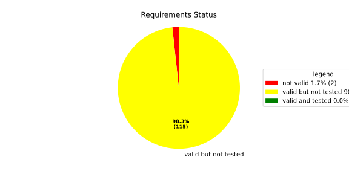
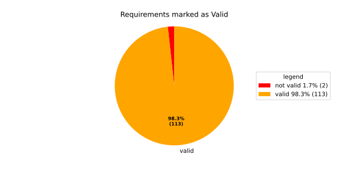
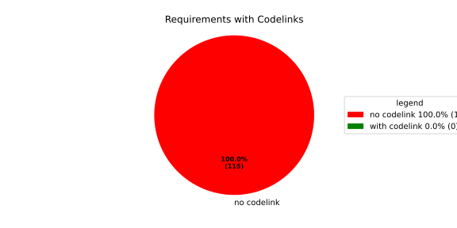

Verification Statistics#
Overview#

In Detail#


No needs passed the filters
Failed Tests
Hint: This table should be empty. Before a PR can be merged all tests have to be successful.
No needs passed the filters
Skipped / Disabled Tests
No needs passed the filters
All passed Tests#
No needs passed the filters
Details About Testcases#
No needs passed the filters
No needs passed the filters
Test Log Files#
tests-report/tests/integration/process_simple_rep_failure/process_simple_rep_failure/test.log
exec ${PAGER:-/usr/bin/less} "$0" || exit 1
Executing tests from //tests/integration/process_simple_rep_failure:process_simple_rep_failure
-----------------------------------------------------------------------------
============================= test session starts ==============================
platform linux -- Python 3.12.12, pytest-9.0.3, pluggy-1.5.0
rootdir: /home/runner/.bazel/sandbox/processwrapper-sandbox/1226/execroot/_main/bazel-out/k8-fastbuild/bin/tests/integration/process_simple_rep_failure/process_simple_rep_failure.runfiles/score_itf+
configfile: pytest.ini
collected 1 item
../score_itf+::test_recovery_action_simple_rep_failure
-------------------------------- live log setup --------------------------------
[2026-06-30 14:47:37.061] [INFO] [score.itf.plugins.docker] Executing custom image bootstrap command: tests/utils/environments/x86_64-linux/x86_64-linux.sh
[2026-06-30 14:47:37.460] [DEBUG] [docker.utils.config] Trying paths: ['/home/runner/.docker/config.json', '/home/runner/.dockercfg']
[2026-06-30 14:47:37.460] [DEBUG] [docker.utils.config] Found file at path: /home/runner/.docker/config.json
[2026-06-30 14:47:37.460] [DEBUG] [docker.auth] Found 'auths' section
[2026-06-30 14:47:37.460] [DEBUG] [docker.auth] Found entry (registry='https://index.docker.io/v1/', username='githubactions')
[2026-06-30 14:47:37.479] [DEBUG] [urllib3.connectionpool] http://localhost:None "GET /version HTTP/1.1" 200 823
[2026-06-30 14:47:37.513] [DEBUG] [urllib3.connectionpool] http://localhost:None "POST /v1.48/containers/create HTTP/1.1" 201 88
[2026-06-30 14:47:37.519] [DEBUG] [urllib3.connectionpool] http://localhost:None "GET /v1.48/containers/a4bcd1913ce47ed49d32c80b834620f277d12a0dc56192aa5882d583a81234ed/json HTTP/1.1" 200 None
[2026-06-30 14:47:37.664] [DEBUG] [urllib3.connectionpool] http://localhost:None "POST /v1.48/containers/a4bcd1913ce47ed49d32c80b834620f277d12a0dc56192aa5882d583a81234ed/start HTTP/1.1" 204 0
[2026-06-30 14:47:37.664] [DEBUG] [docker.utils.config] Trying paths: ['/home/runner/.docker/config.json', '/home/runner/.dockercfg']
[2026-06-30 14:47:37.665] [DEBUG] [docker.utils.config] Found file at path: /home/runner/.docker/config.json
[2026-06-30 14:47:37.667] [DEBUG] [docker.auth] Found 'auths' section
[2026-06-30 14:47:37.667] [DEBUG] [docker.auth] Found entry (registry='https://index.docker.io/v1/', username='githubactions')
[2026-06-30 14:47:37.676] [DEBUG] [urllib3.connectionpool] http://localhost:None "GET /version HTTP/1.1" 200 823
[2026-06-30 14:47:37.979] [INFO] [tests.utils.testing_utils.setup_test] Test case setup finished
-------------------------------- live log call ---------------------------------
[2026-06-30 14:47:38.168] [INFO] [launch_manager] 2026/06/30 14:47:38.858158 8765329 000 ECU1 LM LM log debug verbose 1
[2026-06-30 14:47:38.191] [INFO] [launch_manager] Launch Manager Started !!!!
[2026-06-30 14:47:38.192] [INFO] [launch_manager] 2026/06/30 14:47:38.858161 8765353 000 ECU1 LM LM log debug verbose 1
[2026-06-30 14:47:38.192] [INFO] [launch_manager] Loading LCM Configurations...
[2026-06-30 14:47:38.192] [INFO] [launch_manager] 2026/06/30 14:47:38.858161 8765355 000 ECU1 LM LM log debug verbose 1
[2026-06-30 14:47:38.192] [INFO] [launch_manager] ECUCFG_ENV_VAR_ROOTFOLDER set successfully
[2026-06-30 14:47:38.192] [INFO] [launch_manager] 2026/06/30 14:47:38.858161 8765356 000 ECU1 LM LM log debug verbose 5 FlatBufferParser::getModeGroupPgName: MainPG ( IdentifierHash: 18079021346025578134 )
[2026-06-30 14:47:38.192] [INFO] [launch_manager] 2026/06/30 14:47:38.858161 8765357 000 ECU1 LM LM log debug verbose 5 FlatBufferParser::getModeGroupPgStateName: MainPG/Startup ( IdentifierHash: 10504605499600661529 )
[2026-06-30 14:47:38.192] [INFO] [launch_manager] 2026/06/30 14:47:38.858162 8765358 000 ECU1 LM LM log debug verbose 5
[2026-06-30 14:47:38.193] [INFO] [launch_manager] FlatBufferParser::getModeGroupPgStateName: MainPG/run_target_app_does_report_krunning_in_time ( IdentifierHash: 11934981641920773349 )
[2026-06-30 14:47:38.193] [INFO] [launch_manager] 2026/06/30 14:47:38.858162 8765359 000 ECU1 LM LM log debug verbose 5
[2026-06-30 14:47:38.193] [INFO] [launch_manager] FlatBufferParser::getModeGroupPgStateName: MainPG/run_target_app_does_not_report_krunning_in_time ( IdentifierHash: 7672161913816744053 )
[2026-06-30 14:47:38.193] [INFO] [launch_manager] 2026/06/30 14:47:38.858162 8765361 000 ECU1 LM LM log debug verbose 5 FlatBufferParser::getModeGroupPgStateName: MainPG/Off ( IdentifierHash: 15281793077830264047 )
[2026-06-30 14:47:38.193] [INFO] [launch_manager] 2026/06/30 14:47:38.858162 8765362 000 ECU1 LM LM log debug verbose 5 FlatBufferParser::getModeGroupPgStateName: MainPG/fallback_run_target ( IdentifierHash: 4059409696722237352 )
[2026-06-30 14:47:38.193] [INFO] [launch_manager] 2026/06/30 14:47:38.858162 8765363 000 ECU1 LM LM log debug verbose 4 parseProcessConfigurations: Process index: 0 executable_path_: /tmp/tests/process_simple_rep_failure/control_client_mock
[2026-06-30 14:47:38.193] [INFO] [launch_manager] 2026/06/30 14:47:38.858162 8765364 000 ECU1 LM LM log debug verbose 3
[2026-06-30 14:47:38.193] [INFO] [launch_manager] Process control_client_mock is Reporting execution state
[2026-06-30 14:47:38.194] [INFO] [launch_manager] 2026/06/30 14:47:38.858162 8765365 000 ECU1 LM LM log debug verbose 1
[2026-06-30 14:47:38.207] [INFO] [launch_manager] Process is STATE_MANAGEMENT function Cluster Affiliation
[2026-06-30 14:47:38.207] [INFO] [launch_manager] 2026/06/30 14:47:38.858162 8765366 000 ECU1 LM LM log debug verbose 3
[2026-06-30 14:47:38.207] [INFO] [launch_manager] Process control_client_mock is Self terminating
[2026-06-30 14:47:38.207] [INFO] [launch_manager] 2026/06/30 14:47:38.858162 8765367 000 ECU1 LM LM log debug verbose 4 ParseProcessProcessGroup: id:::pg_name_: MainPG , pg_state_name_: MainPG/Startup
[2026-06-30 14:47:38.207] [INFO] [launch_manager] 2026/06/30 14:47:38.858162 8765368 000 ECU1 LM LM log debug verbose 4 ParseProcessProcessGroup: id:::pg_name_: MainPG , pg_state_name_: MainPG/run_target_app_does_report_krunning_in_time
[2026-06-30 14:47:38.207] [INFO] [launch_manager] 2026/06/30 14:47:38.858163 8765369 000 ECU1 LM LM log debug verbose 4
[2026-06-30 14:47:38.208] [INFO] [launch_manager] ParseProcessProcessGroup: id:::pg_name_: MainPG , pg_state_name_: MainPG/run_target_app_does_not_report_krunning_in_time
[2026-06-30 14:47:38.208] [INFO] [launch_manager] 2026/06/30 14:47:38.858163 8765370 000 ECU1 LM LM log debug verbose 4
[2026-06-30 14:47:38.208] [INFO] [launch_manager] ParseProcessProcessGroup: id:::pg_name_: MainPG , pg_state_name_: MainPG/fallback_run_target
[2026-06-30 14:47:38.208] [INFO] [launch_manager] 2026/06/30 14:47:38.858163 8765372 000 ECU1 LM LM log debug verbose 4
[2026-06-30 14:47:38.208] [INFO] [launch_manager] parseProcessConfigurations: Process index: 1 executable_path_: /tmp/tests/process_simple_rep_failure/process_simple_reporting
[2026-06-30 14:47:38.208] [INFO] [launch_manager] 2026/06/30 14:47:38.858163 8765372 000 ECU1 LM LM log debug verbose 3
[2026-06-30 14:47:38.212] [INFO] [launch_manager] Process component_does_report_krunning_in_time is Reporting execution state
[2026-06-30 14:47:38.212] [INFO] [launch_manager] 2026/06/30 14:47:38.858163 8765374 000 ECU1 LM LM log debug verbose 1
[2026-06-30 14:47:38.213] [INFO] [launch_manager] Process is NOT associated with any function Cluster Affiliation
[2026-06-30 14:47:38.220] [INFO] [launch_manager] 2026/06/30 14:47:38.858163 8765375 000 ECU1 LM LM log debug verbose 3 Process component_does_report_krunning_in_time is Self terminating
[2026-06-30 14:47:38.220] [INFO] [launch_manager] 2026/06/30 14:47:38.858163 8765376 000 ECU1 LM LM log debug verbose 4
[2026-06-30 14:47:38.221] [INFO] [launch_manager] ParseProcessProcessGroup: id:::pg_name_: MainPG , pg_state_name_: MainPG/run_target_app_does_report_krunning_in_time
[2026-06-30 14:47:38.221] [INFO] [launch_manager] 2026/06/30 14:47:38.858163 8765377 000 ECU1 LM LM log debug verbose 4 parseProcessConfigurations: Process index: 2 executable_path_: /tmp/tests/process_simple_rep_failure/process_simple_reporting
[2026-06-30 14:47:38.221] [INFO] [launch_manager] 2026/06/30 14:47:38.858163 8765377 000 ECU1 LM LM log debug verbose 3 Process component_does_not_report_krunning_in_time is Reporting execution state
[2026-06-30 14:47:38.221] [INFO] [launch_manager] 2026/06/30 14:47:38.858163 8765377 000 ECU1 LM LM log debug verbose 1 Process is NOT associated with any function Cluster Affiliation
[2026-06-30 14:47:38.221] [INFO] [launch_manager] 2026/06/30 14:47:38.858163 8765377 000 ECU1 LM LM log debug verbose 3 Process component_does_not_report_krunning_in_time is Self terminating
[2026-06-30 14:47:38.221] [INFO] [launch_manager] 2026/06/30 14:47:38.858163 8765378 000 ECU1 LM LM log debug verbose 4 ParseProcessProcessGroup: id:::pg_name_: MainPG , pg_state_name_: MainPG/run_target_app_does_not_report_krunning_in_time
[2026-06-30 14:47:38.221] [INFO] [launch_manager] 2026/06/30 14:47:38.858164 8765378 000 ECU1 LM LM log debug verbose 4 parseProcessConfigurations: Process index: 3 executable_path_: /tmp/tests/process_simple_rep_failure/verification_process
[2026-06-30 14:47:38.221] [INFO] [launch_manager] 2026/06/30 14:47:38.858164 8765378 000 ECU1 LM LM log debug verbose 3 Process verification_component is NOT Reporting execution state
[2026-06-30 14:47:38.221] [INFO] [launch_manager] 2026/06/30 14:47:38.858164 8765379 000 ECU1 LM LM log debug verbose 1 Process is NOT associated with any function Cluster Affiliation
[2026-06-30 14:47:38.222] [INFO] [launch_manager] 2026/06/30 14:47:38.858164 8765379 000 ECU1 LM LM log debug verbose 3 Process verification_component is Self terminating
[2026-06-30 14:47:38.222] [INFO] [launch_manager] 2026/06/30 14:47:38.858164 8765379 000 ECU1 LM LM log debug verbose 4 ParseProcessProcessGroup: id:::pg_name_: MainPG , pg_state_name_: MainPG/fallback_run_target
[2026-06-30 14:47:38.222] [INFO] [launch_manager] 2026/06/30 14:47:38.858164 8765379 000 ECU1 LM LM log debug verbose 3 Loading SWCL Nr. 0 Succeeded
[2026-06-30 14:47:38.228] [INFO] [launch_manager] 2026/06/30 14:47:38.858164 8765380 000 ECU1 LM LM log debug verbose 2
[2026-06-30 14:47:38.230] [INFO] [launch_manager] 1 process group(s)
[2026-06-30 14:47:38.235] [INFO] [launch_manager] 2026/06/30 14:47:38.858164 8765381 000 ECU1 LM LM log debug verbose 3
[2026-06-30 14:47:38.235] [INFO] [launch_manager] Creating graph with 4 nodes
[2026-06-30 14:47:38.235] [INFO] [launch_manager] 2026/06/30 14:47:38.858164 8765383 000 ECU1 LM LM log debug verbose 1 Process groups initialized successfully
[2026-06-30 14:47:38.235] [INFO] [launch_manager] 2026/06/30 14:47:38.858164 8765383 000 ECU1 LM LM log debug verbose 1 Process Group initialization done
[2026-06-30 14:47:38.235] [INFO] [launch_manager] 2026/06/30 14:47:38.858164 8765384 000 ECU1 LM LM log debug verbose 3
[2026-06-30 14:47:38.236] [INFO] [launch_manager] Creating Safe Process Map with 4 entries
[2026-06-30 14:47:38.236] [INFO] [launch_manager] 2026/06/30 14:47:38.858164 8765385 000 ECU1 LM LM log debug verbose 2
[2026-06-30 14:47:38.236] [INFO] [launch_manager] Creating job queue with capacity 1024
[2026-06-30 14:47:38.236] [INFO] [launch_manager] 2026/06/30 14:47:38.858164 8765387 000 ECU1 LM LM log debug verbose 1 Creating worker threads...
[2026-06-30 14:47:38.236] [INFO] [launch_manager] 2026/06/30 14:47:38.858166 8765401 000 ECU1 LM LM log debug verbose 7 Process group index 0 (with name MainPG ) has 4 processes
[2026-06-30 14:47:38.237] [INFO] [launch_manager] 2026/06/30 14:47:38.858166 8765402 000 ECU1 LM LM log debug verbose 2 Creating process node with id: 0
[2026-06-30 14:47:38.237] [INFO] [launch_manager] 2026/06/30 14:47:38.858166 8765402 000 ECU1 LM LM log debug verbose 5 Process 0 has 0 start dependencies
[2026-06-30 14:47:38.237] [INFO] [launch_manager] 2026/06/30 14:47:38.858166 8765402 000 ECU1 LM LM log debug verbose 2 Creating process node with id: 1
[2026-06-30 14:47:38.237] [INFO] [launch_manager] 2026/06/30 14:47:38.858166 8765402 000 ECU1 LM LM log debug verbose 5 Process 1 has 0 start dependencies
[2026-06-30 14:47:38.237] [INFO] [launch_manager] 2026/06/30 14:47:38.858166 8765402 000 ECU1 LM LM log debug verbose 2 Creating process node with id: 2
[2026-06-30 14:47:38.237] [INFO] [launch_manager] 2026/06/30 14:47:38.858166 8765403 000 ECU1 LM LM log debug verbose 5 Process 2 has 0 start dependencies
[2026-06-30 14:47:38.237] [INFO] [launch_manager] 2026/06/30 14:47:38.858166 8765403 000 ECU1 LM LM log debug verbose 2 Creating process node with id: 3
[2026-06-30 14:47:38.241] [INFO] [launch_manager] 2026/06/30 14:47:38.858166 8765403 000 ECU1 LM LM log debug verbose 5 Process 3 has 0 start dependencies
[2026-06-30 14:47:38.247] [INFO] [launch_manager] 2026/06/30 14:47:38.858166 8765403 000 ECU1 LM LM log debug verbose 3 Created 4 process nodes
[2026-06-30 14:47:38.247] [INFO] [launch_manager] 2026/06/30 14:47:38.858166 8765403 000 ECU1 LM LM log debug verbose 2 Creating successor lists for process group MainPG
[2026-06-30 14:47:38.247] [INFO] [launch_manager] 2026/06/30 14:47:38.858166 8765404 000 ECU1 LM LM log debug verbose 1 Graphs initialized
[2026-06-30 14:47:38.247] [INFO] [launch_manager] 2026/06/30 14:47:38.858166 8765405 000 ECU1 LM Fcty log info verbose 2 Factory for FlatCfg MachineConfig: Loading of HM Machine Configuration succeeded.
[2026-06-30 14:47:38.247] [INFO] [launch_manager] 2026/06/30 14:47:38.858166 8765406 000 ECU1 LM Fcty log debug verbose 3 Factory for FlatCfg MachineConfig: Alive Supervision buffer size: 100
[2026-06-30 14:47:38.248] [INFO] [launch_manager] 2026/06/30 14:47:38.858166 8765406 000 ECU1 LM Fcty log debug verbose 3 Factory for FlatCfg MachineConfig: Monitor buffer size: 512
[2026-06-30 14:47:38.248] [INFO] [launch_manager] 2026/06/30 14:47:38.858166 8765406 000 ECU1 LM Fcty log debug verbose 4 Factory for FlatCfg MachineConfig: Periodicity: 50000000 ns
[2026-06-30 14:47:38.248] [INFO] [launch_manager] 2026/06/30 14:47:38.858166 8765406 000 ECU1 LM Fcty log debug verbose 3 Factory for FlatCfg MachineConfig: Configured watchdogs: 0
[2026-06-30 14:47:38.248] [INFO] [launch_manager] 2026/06/30 14:47:38.858166 8765407 000 ECU1 LM Fcty log warn verbose 2 Factory for FlatCfg MachineConfig: No watchdog configured
[2026-06-30 14:47:38.248] [INFO] [launch_manager] 2026/06/30 14:47:38.858166 8765407 000 ECU1 LM Fcty log debug verbose 2 Software Cluster Handler starts constructing workers: MainCluster
[2026-06-30 14:47:38.248] [INFO] [launch_manager] 2026/06/30 14:47:38.858166 8765408 000 ECU1 LM Fcty log debug verbose 3 Factory for FlatCfg AR24-11: Successfully created Process States: control_client_mock
[2026-06-30 14:47:38.248] [INFO] [launch_manager] 2026/06/30 14:47:38.858166 8765408 000 ECU1 LM Fcty log debug verbose 3 Factory for FlatCfg AR24-11: Number of constructed Process States: 1
[2026-06-30 14:47:38.248] [INFO] [launch_manager] 2026/06/30 14:47:38.858167 8765409 000 ECU1 LM Fcty log debug verbose 3 Factory for FlatCfg AR24-11: Successfully created Alive interface IPC with path: lifecycle_health_control_client_mock
[2026-06-30 14:47:38.248] [INFO] [launch_manager] 2026/06/30 14:47:38.858167 8765409 000 ECU1 LM Fcty log debug verbose 3 Factory for FlatCfg AR24-11: Number of constructed Alive interface IPCs: 1
[2026-06-30 14:47:38.248] [INFO] [launch_manager] 2026/06/30 14:47:38.858167 8765409 000 ECU1 LM Fcty log debug verbose 3 Factory for FlatCfg AR24-11: Successfully created Alive Interface: /lifecycle_health_control_client_mock
[2026-06-30 14:47:38.248] [INFO] [launch_manager] 2026/06/30 14:47:38.858167 8765409 000 ECU1 LM Fcty log debug verbose 3 Factory for FlatCfg AR24-11: Number of constructed Alive interfaces: 1
[2026-06-30 14:47:38.248] [INFO] [launch_manager] 2026/06/30 14:47:38.858167 8765410 000 ECU1 LM Fcty log debug verbose 3 Factory for FlatCfg AR24-11: Successfully created supervision checkpoint: control_client_mock_checkpoint
[2026-06-30 14:47:38.249] [INFO] [launch_manager] 2026/06/30 14:47:38.858167 8765410 000 ECU1 LM Fcty log debug verbose 3 Factory for FlatCfg AR24-11: Number of constructed supervision checkpoints: 1
[2026-06-30 14:47:38.249] [INFO] [launch_manager] 2026/06/30 14:47:38.858167 8765411 000 ECU1 LM Fcty log debug verbose 3 Factory for FlatCfg AR24-11: Successfully created alive supervision worker object: control_client_mock_alive_supervision
[2026-06-30 14:47:38.249] [INFO] [launch_manager] 2026/06/30 14:47:38.858167 8765411 000 ECU1 LM Fcty log debug verbose 3 Factory for FlatCfg AR24-11: Number of constructed alive supervisions: 1
[2026-06-30 14:47:38.249] [INFO] [launch_manager] 2026/06/30 14:47:38.858167 8765411 000 ECU1 LM Fcty log info verbose 2 Phm Daemon: The (configured) periodicity in [ns] is set to: 50000000
[2026-06-30 14:47:38.249] [INFO] [launch_manager] 2026/06/30 14:47:38.858167 8765411 000 ECU1 LM Fcty log debug verbose 2 Phm Daemon: The accuracy of the monotonic system clock in [ns] is: 1
[2026-06-30 14:47:38.257] [INFO] [launch_manager] 2026/06/30 14:47:38.858167 8765411 000 ECU1 LM Fcty log debug verbose 3 AliveMonitor: Initialization took 0 ms
[2026-06-30 14:47:38.258] [INFO] [launch_manager] 2026/06/30 14:47:38.858167 8765412 000 ECU1 LM LM log info verbose 1 LCM started successfully
[2026-06-30 14:47:38.258] [INFO] [launch_manager] 2026/06/30 14:47:38.858167 8765412 000 ECU1 LM LM log debug verbose 3 clock() at run(): 39.177000 ms
[2026-06-30 14:47:38.258] [INFO] [launch_manager] 2026/06/30 14:47:38.858167 8765413 000 ECU1 LM LM log debug verbose 1 =============STARTING MAINPG STARTUP STATE============
[2026-06-30 14:47:38.264] [INFO] [launch_manager] 2026/06/30 14:47:38.858167 8765413 000 ECU1 LM LM log debug verbose 9 Graph::setState changes from kSuccess to kInTransition for PG 0 ( MainPG )
[2026-06-30 14:47:38.264] [INFO] [launch_manager] 2026/06/30 14:47:38.858167 8765414 000 ECU1 LM LM log debug verbose 2 Stop Dependencies: 0
[2026-06-30 14:47:38.264] [INFO] [launch_manager] 2026/06/30 14:47:38.858167 8765414 000 ECU1 LM LM log debug verbose 2 Stop Dependencies: 0
[2026-06-30 14:47:38.264] [INFO] [launch_manager] 2026/06/30 14:47:38.858167 8765414 000 ECU1 LM LM log debug verbose 2 Stop Dependencies: 0
[2026-06-30 14:47:38.264] [INFO] [launch_manager] 2026/06/30 14:47:38.858167 8765414 000 ECU1 LM LM log debug verbose 2 Stop Dependencies: 0
[2026-06-30 14:47:38.264] [INFO] [launch_manager] 2026/06/30 14:47:38.858167 8765414 000 ECU1 LM LM log debug verbose 2 Start Dependencies: 0
[2026-06-30 14:47:38.264] [INFO] [launch_manager] 2026/06/30 14:47:38.858167 8765415 000 ECU1 LM LM log debug verbose 2 Start Dependencies: 0
[2026-06-30 14:47:38.264] [INFO] [launch_manager] 2026/06/30 14:47:38.858167 8765415 000 ECU1 LM LM log debug verbose 2 Start Dependencies: 0
[2026-06-30 14:47:38.265] [INFO] [launch_manager] 2026/06/30 14:47:38.858167 8765415 000 ECU1 LM LM log debug verbose 2 Start Dependencies: 0
[2026-06-30 14:47:38.265] [INFO] [launch_manager] 2026/06/30 14:47:38.858167 8765416 000 ECU1 LM LM log debug verbose 6 Starting process 0 ( control_client_mock ) from executable /tmp/tests/process_simple_rep_failure/control_client_mock
[2026-06-30 14:47:38.265] [INFO] [launch_manager] 2026/06/30 14:47:38.858167 8765417 000 ECU1 LM LM log debug verbose 3 Initialize the control client for control_client_mock process
[2026-06-30 14:47:38.265] [INFO] [launch_manager] 2026/06/30 14:47:38.858167 8765417 000 ECU1 LM LM log debug verbose 1 ControlClientChannel initialized
[2026-06-30 14:47:38.265] [INFO] [launch_manager] 2026/06/30 14:47:38.858168 8765423 000 ECU1 LM LM log debug verbose 4 startProcess pid 66 received for process: control_client_mock
[2026-06-30 14:47:38.265] [INFO] [launch_manager] 2026/06/30 14:47:38.858168 8765423 000 ECU1 LM LM log debug verbose 1 ControlClientChannel obtained from sync.
[2026-06-30 14:47:38.265] [INFO] [launch_manager] [==========] Running 1 test from 1 test suite.
[2026-06-30 14:47:38.265] [INFO] [launch_manager] [----------] Global test environment set-up.
[2026-06-30 14:47:38.265] [INFO] [launch_manager] [----------] 1 test from RecoveryActionSimpleRepFailure
[2026-06-30 14:47:38.265] [INFO] [launch_manager] [ RUN ] RecoveryActionSimpleRepFailure.ControlClientMock
[2026-06-30 14:47:38.265] [INFO] [launch_manager] [ STEP ] Report running from ControlClientMock
[2026-06-30 14:47:38.266] [INFO] [launch_manager] [ END STEP ] Report running from ControlClientMock
[2026-06-30 14:47:38.263] [DEBUG] [tests.utils.testing_utils.run_until_file_deployed] Waiting for /tmp/tests/test_end
[2026-06-30 14:47:38.284] [INFO] [launch_manager] [ STEP ] Activate RunTarget run_target_app_does_report_krunning_in_time
[2026-06-30 14:47:38.284] [INFO] [launch_manager] 2026/06/30 14:47:38.858174 8765479 000 ECU1 LM LM log debug verbose 1 Request sent. Waiting for acknowledgment...
[2026-06-30 14:47:38.284] [INFO] [launch_manager] 2026/06/30 14:47:38.858174 8765486 000 ECU1 LM LM log debug verbose 8 Got kRunning for pid 66 ( control_client_mock ) process 0 of group MainPG
[2026-06-30 14:47:38.285] [INFO] [launch_manager] 2026/06/30 14:47:38.858174 8765487 000 ECU1 LM LM log debug verbose 7 startProcess for MainPG process 0 ( control_client_mock ) done
[2026-06-30 14:47:38.285] [INFO] [launch_manager] 2026/06/30 14:47:38.858174 8765487 000 ECU1 LM LM log debug verbose 1 Control Client handler nudged
[2026-06-30 14:47:38.285] [INFO] [launch_manager] 2026/06/30 14:47:38.858174 8765488 000 ECU1 LM LM log debug verbose 3 clock() at successful initial state transition: 40.635000 ms
[2026-06-30 14:47:38.285] [INFO] [launch_manager] 2026/06/30 14:47:38.858174 8765488 000 ECU1 LM LM log debug verbose 9 Graph::setState changes from kInTransition to kSuccess for PG 0 ( MainPG )
[2026-06-30 14:47:38.285] [INFO] [launch_manager] 2026/06/30 14:47:38.858175 8765488 000 ECU1 LM LM log info verbose 7 Completed the request for PG MainPG to State MainPG/Startup in 7 ms
[2026-06-30 14:47:38.285] [INFO] [launch_manager] 2026/06/30 14:47:38.858175 8765489 000 ECU1 LM LM log debug verbose 1 Control Client handler nudged
[2026-06-30 14:47:38.287] [INFO] [launch_manager] 2026/06/30 14:47:38.858176 8765499 000 ECU1 LM LM log debug verbose 8 ProcessGroupManager::ControlClientHandler: got request kSetStateRequest ( 16 ) re state MainPG/run_target_app_does_report_krunning_in_time of PG MainPG
[2026-06-30 14:47:38.287] [INFO] [launch_manager] 2026/06/30 14:47:38.858176 8765499 000 ECU1 LM LM log debug verbose 6 Pending state for process group MainPG changed from to MainPG/run_target_app_does_report_krunning_in_time
[2026-06-30 14:47:38.287] [INFO] [launch_manager] 2026/06/30 14:47:38.858176 8765500 000 ECU1 LM LM log debug verbose 1 Request acknowledged.
[2026-06-30 14:47:38.287] [INFO] [launch_manager] 2026/06/30 14:47:38.858176 8765500 000 ECU1 LM LM log debug verbose 1 Request acknowledged.
[2026-06-30 14:47:38.287] [INFO] [launch_manager] 2026/06/30 14:47:38.858176 8765500 000 ECU1 LM LM log debug verbose 6 Pending state for process group MainPG changed from MainPG/run_target_app_does_report_krunning_in_time to
[2026-06-30 14:47:38.287] [INFO] [launch_manager] 2026/06/30 14:47:38.858176 8765500 000 ECU1 LM LM log debug verbose 4 Start transition to MainPG/run_target_app_does_report_krunning_in_time for PG MainPG
[2026-06-30 14:47:38.287] [INFO] [launch_manager] 2026/06/30 14:47:38.858176 8765501 000 ECU1 LM LM log debug verbose 9 Graph::setState changes from kSuccess to kInTransition for PG 0 ( MainPG )
[2026-06-30 14:47:38.287] [INFO] [launch_manager] 2026/06/30 14:47:38.858176 8765501 000 ECU1 LM LM log debug verbose 2 Stop Dependencies: 0
[2026-06-30 14:47:38.287] [INFO] [launch_manager] 2026/06/30 14:47:38.858176 8765501 000 ECU1 LM LM log debug verbose 2 Stop Dependencies: 0
[2026-06-30 14:47:38.302] [INFO] [launch_manager] 2026/06/30 14:47:38.858176 8765503 000 ECU1 LM LM log debug verbose 2 Stop Dependencies: 0
[2026-06-30 14:47:38.302] [INFO] [launch_manager] 2026/06/30 14:47:38.858176 8765503 000 ECU1 LM LM log debug verbose 2 Stop Dependencies: 0
[2026-06-30 14:47:38.302] [INFO] [launch_manager] 2026/06/30 14:47:38.858176 8765504 000 ECU1 LM LM log debug verbose 2 Start Dependencies: 0
[2026-06-30 14:47:38.302] [INFO] [launch_manager] 2026/06/30 14:47:38.858176 8765504 000 ECU1 LM LM log debug verbose 2 Start Dependencies: 0
[2026-06-30 14:47:38.302] [INFO] [launch_manager] 2026/06/30 14:47:38.858176 8765504 000 ECU1 LM LM log debug verbose 2 Start Dependencies: 0
[2026-06-30 14:47:38.302] [INFO] [launch_manager] 2026/06/30 14:47:38.858176 8765504 000 ECU1 LM LM log debug verbose 2 Start Dependencies: 0
[2026-06-30 14:47:38.302] [INFO] [launch_manager] 2026/06/30 14:47:38.858176 8765505 000 ECU1 LM LM log debug verbose 6 Starting process 1 ( component_does_report_krunning_in_time ) from executable /tmp/tests/process_simple_rep_failure/process_simple_reporting
[2026-06-30 14:47:38.303] [INFO] [launch_manager] [==========] Running 1 test from 1 test suite.
[2026-06-30 14:47:38.303] [INFO] [launch_manager] [----------] Global test environment set-up.
[2026-06-30 14:47:38.303] [INFO] [launch_manager] [----------] 1 test from ProcessSimpleRepFailure
[2026-06-30 14:47:38.303] [INFO] [launch_manager] [ RUN ] ProcessSimpleRepFailure.ProcessSimpleReporting
[2026-06-30 14:47:38.303] [INFO] [launch_manager] [ STEP ] Check args
[2026-06-30 14:47:38.303] [INFO] [launch_manager] [ END STEP ] Check args
[2026-06-30 14:47:38.303] [INFO] [launch_manager] [ STEP ] Report running from ProcessSimpleReporting
[2026-06-30 14:47:38.303] [INFO] [launch_manager] 2026/06/30 14:47:38.858182 8765561 000 ECU1 LM LM log debug verbose 4
[2026-06-30 14:47:38.303] [INFO] [launch_manager] startProcess pid 68 received for process: component_does_report_krunning_in_time
[2026-06-30 14:47:38.304] [INFO] [launch_manager] 2026/06/30 14:47:38.858217 8765913 000 ECU1 LM Sprv log debug verbose 6 Process with Id control_client_mock changed state PG MainPG/Startup PS 1
[2026-06-30 14:47:38.304] [INFO] [launch_manager] 2026/06/30 14:47:38.858217 8765914 000 ECU1 LM Sprv log debug verbose 6 Process with Id control_client_mock changed state PG MainPG/Startup PS 2
[2026-06-30 14:47:38.304] [INFO] [launch_manager] 2026/06/30 14:47:38.858217 8765914 000 ECU1 LM Sprv log debug verbose 6 Process with Id component_does_report_krunning_in_time changed state PG MainPG/run_target_app_does_report_krunning_in_time PS 1
[2026-06-30 14:47:38.304] [INFO] [launch_manager] 2026/06/30 14:47:38.858217 8765915 000 ECU1 LM Sprv log info verbose 3 Alive Supervision ( control_client_mock_alive_supervision ) switched to OK.
[2026-06-30 14:47:38.688] [INFO] [launch_manager] [ END STEP ] Report running from ProcessSimpleReporting
[2026-06-30 14:47:38.688] [INFO] [launch_manager] [ OK ] ProcessSimpleRepFailure.ProcessSimpleReporting (502 ms)
[2026-06-30 14:47:38.688] [INFO] [launch_manager] [----------] 1 test from ProcessSimpleRepFailure (502 ms total)
[2026-06-30 14:47:38.688] [INFO] [launch_manager] [----------] Global test environment tear-down
[2026-06-30 14:47:38.688] [INFO] [launch_manager] [==========] 1 test from 1 test suite ran. (502 ms total)
[2026-06-30 14:47:38.688] [INFO] [launch_manager] [ PASSED ] 1 test.
[2026-06-30 14:47:38.690] [INFO] [launch_manager] 2026/06/30 14:47:38.858684 8770579 000 ECU1 LM LM log debug verbose 8 Got kRunning for pid 68 ( component_does_report_krunning_in_time ) process 1 of group MainPG
[2026-06-30 14:47:38.690] [INFO] [launch_manager] 2026/06/30 14:47:38.858684 8770580 000 ECU1 LM LM log debug verbose 7 startProcess for MainPG process 1 ( component_does_report_krunning_in_time ) done
[2026-06-30 14:47:38.690] [INFO] [launch_manager] 2026/06/30 14:47:38.858684 8770580 000 ECU1 LM LM log debug verbose 9 Graph::setState changes from kInTransition to kSuccess for PG 0 ( MainPG )
[2026-06-30 14:47:38.694] [INFO] [launch_manager] 2026/06/30 14:47:38.858684 8770581 000 ECU1 LM LM log debug verbose 12 Child process 1 of MainPG pid 68 ( component_does_report_krunning_in_time ) for node True terminated with status 0
[2026-06-30 14:47:38.697] [INFO] [launch_manager] 2026/06/30 14:47:38.858684 8770581 000 ECU1 LM LM log info verbose 7 Completed the request for PG MainPG to State MainPG/run_target_app_does_report_krunning_in_time in 508 ms
[2026-06-30 14:47:38.697] [INFO] [launch_manager] 2026/06/30 14:47:38.858684 8770582 000 ECU1 LM LM log debug verbose 1 Control Client handler nudged
[2026-06-30 14:47:38.697] [INFO] [launch_manager] 2026/06/30 14:47:38.858686 8770600 000 ECU1 LM LM log debug verbose 8 ProcessGroupManager::ControlClientHandler: Sending kSetStateSuccess ( 20 ) re state MainPG/run_target_app_does_report_krunning_in_time of PG MainPG
[2026-06-30 14:47:38.699] [INFO] [launch_manager] 2026/06/30 14:47:38.858686 8770601 000 ECU1 LM LM log debug verbose 1 Response sent.
[2026-06-30 14:47:38.719] [INFO] [launch_manager] 2026/06/30 14:47:38.858717 8770913 000 ECU1 LM Sprv log debug verbose 6 Process with Id component_does_report_krunning_in_time changed state PG MainPG/run_target_app_does_report_krunning_in_time PS 2
[2026-06-30 14:47:38.719] [INFO] [launch_manager] 2026/06/30 14:47:38.858717 8770914 000 ECU1 LM Sprv log debug verbose 6 Process with Id component_does_report_krunning_in_time changed state PG MainPG/run_target_app_does_report_krunning_in_time PS 4
[2026-06-30 14:47:38.778] [INFO] [launch_manager] 2026/06/30 14:47:38.858771 8771455 000 ECU1 LM LM log debug verbose 1 Response retrieved.
[2026-06-30 14:47:38.778] [INFO] [launch_manager] [ END STEP ] Activate RunTarget run_target_app_does_report_krunning_in_time
[2026-06-30 14:47:38.871] [DEBUG] [tests.utils.testing_utils.run_until_file_deployed] Waiting for /tmp/tests/test_end
[2026-06-30 14:47:39.446] [DEBUG] [tests.utils.testing_utils.run_until_file_deployed] Waiting for /tmp/tests/test_end
[2026-06-30 14:47:39.772] [INFO] [launch_manager] [ STEP ] Verify fallback run target has not been activated
[2026-06-30 14:47:39.772] [INFO] [launch_manager] [ END STEP ] Verify fallback run target has not been activated
[2026-06-30 14:47:39.772] [INFO] [launch_manager] [ STEP ] Activate RunTarget run_target_app_does_not_report_krunning_in_time
[2026-06-30 14:47:39.772] [INFO] [launch_manager] 2026/06/30 14:47:39.859772 8781458 000 ECU1 LM LM log debug verbose 1
[2026-06-30 14:47:39.772] [INFO] [launch_manager] Request sent. Waiting for acknowledgment...
[2026-06-30 14:47:39.776] [INFO] [launch_manager] 2026/06/30 14:47:39.859773 8781471 000 ECU1 LM LM log debug verbose 8 ProcessGroupManager::ControlClientHandler: got request kSetStateRequest ( 16 ) re state MainPG/run_target_app_does_not_report_krunning_in_time of PG MainPG
[2026-06-30 14:47:39.776] [INFO] [launch_manager] 2026/06/30 14:47:39.859773 8781471 000 ECU1 LM LM log debug verbose 6 Pending state for process group MainPG changed from to MainPG/run_target_app_does_not_report_krunning_in_time
[2026-06-30 14:47:39.776] [INFO] [launch_manager] 2026/06/30 14:47:39.859773 8781472 000 ECU1 LM LM log debug verbose 1 Request acknowledged.
[2026-06-30 14:47:39.776] [INFO] [launch_manager] 2026/06/30 14:47:39.859773 8781472 000 ECU1 LM LM log debug verbose 6 Pending state for process group MainPG changed from MainPG/run_target_app_does_not_report_krunning_in_time to
[2026-06-30 14:47:39.776] [INFO] [launch_manager] 2026/06/30 14:47:39.859773 8781472 000 ECU1 LM LM log debug verbose 4 Start transition to MainPG/run_target_app_does_not_report_krunning_in_time for PG MainPG
[2026-06-30 14:47:39.776] [INFO] [launch_manager] 2026/06/30 14:47:39.859773 8781473 000 ECU1 LM LM log debug verbose 9 Graph::setState changes from kSuccess to kInTransition for PG 0 ( MainPG )
[2026-06-30 14:47:39.776] [INFO] [launch_manager] 2026/06/30 14:47:39.859773 8781473 000 ECU1 LM LM log debug verbose 2 Stop Dependencies: 0
[2026-06-30 14:47:39.776] [INFO] [launch_manager] 2026/06/30 14:47:39.859773 8781473 000 ECU1 LM LM log debug verbose 2 Stop Dependencies: 0
[2026-06-30 14:47:39.777] [INFO] [launch_manager] 2026/06/30 14:47:39.859773 8781473 000 ECU1 LM LM log debug verbose 2 Stop Dependencies: 0
[2026-06-30 14:47:39.777] [INFO] [launch_manager] 2026/06/30 14:47:39.859773 8781474 000 ECU1 LM LM log debug verbose 2 Stop Dependencies: 0
[2026-06-30 14:47:39.777] [INFO] [launch_manager] 2026/06/30 14:47:39.859773 8781474 000 ECU1 LM LM log debug verbose 2 Start Dependencies: 0
[2026-06-30 14:47:39.777] [INFO] [launch_manager] 2026/06/30 14:47:39.859773 8781474 000 ECU1 LM LM log debug verbose 2 Start Dependencies: 0
[2026-06-30 14:47:39.777] [INFO] [launch_manager] 2026/06/30 14:47:39.859773 8781474 000 ECU1 LM LM log debug verbose 2 Start Dependencies: 0
[2026-06-30 14:47:39.777] [INFO] [launch_manager] 2026/06/30 14:47:39.859773 8781474 000 ECU1 LM LM log debug verbose 2 Start Dependencies: 0
[2026-06-30 14:47:39.777] [INFO] [launch_manager] 2026/06/30 14:47:39.859773 8781475 000 ECU1 LM LM log debug verbose 6 Starting process 2 ( component_does_not_report_krunning_in_time ) from executable /tmp/tests/process_simple_rep_failure/process_simple_reporting
[2026-06-30 14:47:39.777] [INFO] [launch_manager] 2026/06/30 14:47:39.859774 8781481 000 ECU1 LM LM log debug verbose 1 Request acknowledged.
[2026-06-30 14:47:39.777] [INFO] [launch_manager] 2026/06/30 14:47:39.859774 8781482 000 ECU1 LM LM log debug verbose 4 startProcess pid 87 received for process: component_does_not_report_krunning_in_time
[2026-06-30 14:47:39.782] [INFO] [launch_manager] [==========] Running 1 test from 1 test suite.
[2026-06-30 14:47:39.782] [INFO] [launch_manager] [----------] Global test environment set-up.
[2026-06-30 14:47:39.782] [INFO] [launch_manager] [----------] 1 test from ProcessSimpleRepFailure
[2026-06-30 14:47:39.782] [INFO] [launch_manager] [ RUN ] ProcessSimpleRepFailure.ProcessSimpleReporting
[2026-06-30 14:47:39.782] [INFO] [launch_manager] [ STEP ] Check args
[2026-06-30 14:47:39.782] [INFO] [launch_manager] [ END STEP ] Check args
[2026-06-30 14:47:39.782] [INFO] [launch_manager] [ STEP ] Report running from ProcessSimpleReporting
[2026-06-30 14:47:39.821] [INFO] [launch_manager] 2026/06/30 14:47:39.859817 8781914 000 ECU1 LM Sprv log debug verbose 6 Process with Id component_does_not_report_krunning_in_time changed state PG MainPG/run_target_app_does_not_report_krunning_in_time PS 1
[2026-06-30 14:47:40.012] [DEBUG] [tests.utils.testing_utils.run_until_file_deployed] Waiting for /tmp/tests/test_end
[2026-06-30 14:47:40.592] [DEBUG] [tests.utils.testing_utils.run_until_file_deployed] Waiting for /tmp/tests/test_end
[2026-06-30 14:47:40.853] [INFO] [launch_manager] 2026/06/30 14:47:40.860843 8792177 000 ECU1 LM LM log error verbose 1 Semaphore timedWait or post failed: Unable to wait or post on semaphores within the specified timeout.
[2026-06-30 14:47:40.854] [INFO] [launch_manager] 2026/06/30 14:47:40.860843 8792178 000 ECU1 LM LM log warn verbose 5 Got kRunning timeout for process 2 ( component_does_not_report_krunning_in_time )
[2026-06-30 14:47:40.854] [INFO] [launch_manager] 2026/06/30 14:47:40.860844 8792178 000 ECU1 LM LM log debug verbose 5 terminating process 2 ( component_does_not_report_krunning_in_time )
[2026-06-30 14:47:40.854] [INFO] [launch_manager] 2026/06/30 14:47:40.860844 8792179 000 ECU1 LM LM log debug verbose 9 Requesting termination of process 2 of MainPG pid 87 ( component_does_not_report_krunning_in_time )
[2026-06-30 14:47:40.854] [INFO] [launch_manager] 2026/06/30 14:47:40.860844 8792179 000 ECU1 LM LM log debug verbose 2 Request termination received for 87
[2026-06-30 14:47:40.867] [INFO] [launch_manager] 2026/06/30 14:47:40.860867 8792413 000 ECU1 LM Sprv log debug verbose 6 Process with Id component_does_not_report_krunning_in_time changed state PG MainPG/run_target_app_does_not_report_krunning_in_time PS 3
[2026-06-30 14:47:41.165] [DEBUG] [tests.utils.testing_utils.run_until_file_deployed] Waiting for /tmp/tests/test_end
[2026-06-30 14:47:41.770] [DEBUG] [tests.utils.testing_utils.run_until_file_deployed] Waiting for /tmp/tests/test_end
[2026-06-30 14:47:41.903] [INFO] [launch_manager] 2026/06/30 14:47:41.861902 8802763 000 ECU1 LM LM log warn verbose 5 Process 2 ( component_does_not_report_krunning_in_time ) did not respond to SIGTERM, sending SIGKILL
[2026-06-30 14:47:41.904] [INFO] [launch_manager] 2026/06/30 14:47:41.861902 8802763 000 ECU1 LM LM log debug verbose 2 Forced termination received for pid 87
[2026-06-30 14:47:41.909] [INFO] [launch_manager] 2026/06/30 14:47:41.861902 8802767 000 ECU1 LM LM log debug verbose 12 Child process 2 of MainPG pid 87 ( component_does_not_report_krunning_in_time ) for node True terminated with status 9
[2026-06-30 14:47:41.917] [INFO] [launch_manager] 2026/06/30 14:47:41.861902 8802767 000 ECU1 LM LM log warn verbose 7 unexpected termination of process 2 pid 87 ( component_does_not_report_krunning_in_time )
[2026-06-30 14:47:41.917] [INFO] [launch_manager] 2026/06/30 14:47:41.861902 8802767 000 ECU1 LM LM log debug verbose 9 Graph::setState changes from kInTransition to kAborting for PG 0 ( MainPG )
[2026-06-30 14:47:41.921] [INFO] [launch_manager] 2026/06/30 14:47:41.861904 8802784 000 ECU1 LM LM log debug verbose 7 terminateProcess for MainPG process 2 ( component_does_not_report_krunning_in_time ) done
[2026-06-30 14:47:41.923] [INFO] [launch_manager] 2026/06/30 14:47:41.861904 8802785 000 ECU1 LM LM log debug verbose 7 startProcess for MainPG process 2 ( component_does_not_report_krunning_in_time ) done
[2026-06-30 14:47:41.924] [INFO] [launch_manager] 2026/06/30 14:47:41.861904 8802786 000 ECU1 LM LM log debug verbose 9 Graph::setState changes from kAborting to kUndefinedState for PG 0 ( MainPG )
[2026-06-30 14:47:41.924] [INFO] [launch_manager] 2026/06/30 14:47:41.861904 8802786 000 ECU1 LM LM log debug verbose 1 Control Client handler nudged
[2026-06-30 14:47:41.924] [INFO] [launch_manager] 2026/06/30 14:47:41.861905 8802792 000 ECU1 LM LM log debug verbose 8 ProcessGroupManager::ControlClientHandler: Sending kFailedUnexpectedTerminationOnEnter ( 23 ) re state MainPG/run_target_app_does_not_report_krunning_in_time of PG MainPG
[2026-06-30 14:47:41.924] [INFO] [launch_manager] 2026/06/30 14:47:41.861905 8802793 000 ECU1 LM LM log debug verbose 1 Response sent.
[2026-06-30 14:47:41.924] [INFO] [launch_manager] 2026/06/30 14:47:41.861905 8802793 000 ECU1 LM LM log warn verbose 3 Problem discovered in PG MainPG Activating Recovery state.
[2026-06-30 14:47:41.924] [INFO] [launch_manager] 2026/06/30 14:47:41.861905 8802793 000 ECU1 LM LM log debug verbose 9 Graph::setState changes from kUndefinedState to kInTransition for PG 0 ( MainPG )
[2026-06-30 14:47:41.924] [INFO] [launch_manager] 2026/06/30 14:47:41.861905 8802794 000 ECU1 LM LM log debug verbose 2 Stop Dependencies: 0
[2026-06-30 14:47:41.926] [INFO] [launch_manager] 2026/06/30 14:47:41.861905 8802794 000 ECU1 LM LM log debug verbose 2 Stop Dependencies: 0
[2026-06-30 14:47:41.927] [INFO] [launch_manager] 2026/06/30 14:47:41.861905 8802794 000 ECU1 LM LM log debug verbose 2 Stop Dependencies: 0
[2026-06-30 14:47:41.927] [INFO] [launch_manager] 2026/06/30 14:47:41.861905 8802794 000 ECU1 LM LM log debug verbose 2 Stop Dependencies: 0
[2026-06-30 14:47:41.927] [INFO] [launch_manager] 2026/06/30 14:47:41.861905 8802795 000 ECU1 LM LM log debug verbose 2 Start Dependencies: 0
[2026-06-30 14:47:41.927] [INFO] [launch_manager] 2026/06/30 14:47:41.861905 8802795 000 ECU1 LM LM log debug verbose 2 Start Dependencies: 0
[2026-06-30 14:47:41.927] [INFO] [launch_manager] 2026/06/30 14:47:41.861905 8802795 000 ECU1 LM LM log debug verbose 2 Start Dependencies: 0
[2026-06-30 14:47:41.928] [INFO] [launch_manager] 2026/06/30 14:47:41.861905 8802795 000 ECU1 LM LM log debug verbose 2 Start Dependencies: 0
[2026-06-30 14:47:41.929] [INFO] [launch_manager] 2026/06/30 14:47:41.861905 8802797 000 ECU1 LM LM log debug verbose 6 Starting process 3 ( verification_component ) from executable /tmp/tests/process_simple_rep_failure/verification_process
[2026-06-30 14:47:41.929] [INFO] [launch_manager] 2026/06/30 14:47:41.861906 8802803 000 ECU1 LM LM log debug verbose 4 startProcess pid 113 received for process: verification_component
[2026-06-30 14:47:41.930] [INFO] [launch_manager] 2026/06/30 14:47:41.861906 8802803 000 ECU1 LM LM log debug verbose 8 Considered kRunning for Non Reporting Process pid 113 ( verification_component ) process 3 of group MainPG
[2026-06-30 14:47:41.930] [INFO] [launch_manager] 2026/06/30 14:47:41.861906 8802803 000 ECU1 LM LM log debug verbose 7 startProcess for MainPG process 3 ( verification_component ) done
[2026-06-30 14:47:41.931] [INFO] [launch_manager] 2026/06/30 14:47:41.861906 8802804 000 ECU1 LM LM log debug verbose 9 Graph::setState changes from kInTransition to kSuccess for PG 0 ( MainPG )
[2026-06-30 14:47:41.931] [INFO] [launch_manager] 2026/06/30 14:47:41.861906 8802804 000 ECU1 LM LM log info verbose 7 Completed the request for PG MainPG to State MainPG/fallback_run_target in 1 ms
[2026-06-30 14:47:41.931] [INFO] [launch_manager] 2026/06/30 14:47:41.861906 8802804 000 ECU1 LM LM log debug verbose 1 Control Client handler nudged
[2026-06-30 14:47:41.931] [INFO] [launch_manager] 2026/06/30 14:47:41.861908 8802820 000 ECU1 LM LM log debug verbose 8 ProcessGroupManager::ControlClientHandler: Sending kSetStateSuccess ( 20 ) re state MainPG/fallback_run_target of PG MainPG
[2026-06-30 14:47:41.931] [INFO] [launch_manager] 2026/06/30 14:47:41.861908 8802821 000 ECU1 LM LM log debug verbose 1 Failed to send response: response is not empty.
[2026-06-30 14:47:41.931] [INFO] [launch_manager] 2026/06/30 14:47:41.861908 8802821 000 ECU1 LM LM log debug verbose 1 Control Client handler nudged
[2026-06-30 14:47:41.931] [INFO] [launch_manager] 2026/06/30 14:47:41.861908 8802821 000 ECU1 LM LM log debug verbose 8 ProcessGroupManager::ControlClientHandler: Sending kSetStateSuccess ( 20 ) re state MainPG/fallback_run_target of PG MainPG
[2026-06-30 14:47:41.932] [INFO] [launch_manager] 2026/06/30 14:47:41.861908 8802821 000 ECU1 LM LM log debug verbose 1 Failed to send response: response is not empty.
[2026-06-30 14:47:41.932] [INFO] [launch_manager] 2026/06/30 14:47:41.861908 8802822 000 ECU1 LM LM log debug verbose 1 Control Client handler nudged
[2026-06-30 14:47:41.933] [INFO] [launch_manager] 2026/06/30 14:47:41.861908 8802822 000 ECU1 LM LM log debug verbose 12 Child process 3 of MainPG pid 113 ( verification_component ) for node True terminated with status 0
[2026-06-30 14:47:41.933] [INFO] [launch_manager] 2026/06/30 14:47:41.861908 8802823 000 ECU1 LM LM log debug verbose 8 ProcessGroupManager::ControlClientHandler: Sending kSetStateSuccess ( 20 ) re state MainPG/fallback_run_target of PG MainPG
[2026-06-30 14:47:41.933] [INFO] [launch_manager] 2026/06/30 14:47:41.861908 8802823 000 ECU1 LM LM log debug verbose 1 Failed to send response: response is not empty.
[2026-06-30 14:47:41.933] [INFO] [launch_manager] 2026/06/30 14:47:41.861908 8802823 000 ECU1 LM LM log debug verbose 1 Control Client handler nudged
[2026-06-30 14:47:41.933] [INFO] [launch_manager] 2026/06/30 14:47:41.861908 8802824 000 ECU1 LM LM log debug verbose 8 ProcessGroupManager::ControlClientHandler: Sending kSetStateSuccess ( 20 ) re state MainPG/fallback_run_target of PG MainPG
[2026-06-30 14:47:41.933] [INFO] [launch_manager] 2026/06/30 14:47:41.861908 8802824 000 ECU1 LM LM log debug verbose 1 Failed to send response: response is not empty.
[2026-06-30 14:47:41.933] [INFO] [launch_manager] 2026/06/30 14:47:41.861908 8802824 000 ECU1 LM LM log debug verbose 1 Control Client handler nudged
[2026-06-30 14:47:41.933] [INFO] [launch_manager] 2026/06/30 14:47:41.861908 8802825 000 ECU1 LM LM log debug verbose 8 ProcessGroupManager::ControlClientHandler: Sending kSetStateSuccess ( 20 ) re state MainPG/fallback_run_target of PG MainPG
[2026-06-30 14:47:41.933] [INFO] [launch_manager] 2026/06/30 14:47:41.861908 8802825 000 ECU1 LM LM log debug verbose 1 Failed to send response: response is not empty.
[2026-06-30 14:47:41.933] [INFO] [launch_manager] 2026/06/30 14:47:41.861908 8802825 000 ECU1 LM LM log debug verbose 1 Control Client handler nudged
[2026-06-30 14:47:41.934] [INFO] [launch_manager] 2026/06/30 14:47:41.861908 8802825 000 ECU1 LM LM log debug verbose 8 ProcessGroupManager::ControlClientHandler: Sending kSetStateSuccess ( 20 ) re state MainPG/fallback_run_target of PG MainPG
[2026-06-30 14:47:41.934] [INFO] [launch_manager] 2026/06/30 14:47:41.861908 8802825 000 ECU1 LM LM log debug verbose 1 Failed to send response: response is not empty.
[2026-06-30 14:47:41.934] [INFO] [launch_manager] 2026/06/30 14:47:41.861908 8802826 000 ECU1 LM LM log debug verbose 1 Control Client handler nudged
[2026-06-30 14:47:41.935] [INFO] [launch_manager] 2026/06/30 14:47:41.861908 8802826 000 ECU1 LM LM log debug verbose 8 ProcessGroupManager::ControlClientHandler: Sending kSetStateSuccess ( 20 ) re state MainPG/fallback_run_target of PG MainPG
[2026-06-30 14:47:41.935] [INFO] [launch_manager] 2026/06/30 14:47:41.861908 8802826 000 ECU1 LM LM log debug verbose 1 Failed to send response: response is not empty.
[2026-06-30 14:47:41.935] [INFO] [launch_manager] 2026/06/30 14:47:41.861908 8802826 000 ECU1 LM LM log debug verbose 1 Control Client handler nudged
[2026-06-30 14:47:41.935] [INFO] [launch_manager] 2026/06/30 14:47:41.861908 8802826 000 ECU1 LM LM log debug verbose 8 ProcessGroupManager::ControlClientHandler: Sending kSetStateSuccess ( 20 ) re state MainPG/fallback_run_target of PG MainPG
[2026-06-30 14:47:41.935] [INFO] [launch_manager] 2026/06/30 14:47:41.861908 8802826 000 ECU1 LM LM log debug verbose 1 Failed to send response: response is not empty.
[2026-06-30 14:47:41.935] [INFO] [launch_manager] 2026/06/30 14:47:41.861908 8802827 000 ECU1 LM LM log debug verbose 1 Control Client handler nudged
[2026-06-30 14:47:41.935] [INFO] [launch_manager] 2026/06/30 14:47:41.861908 8802827 000 ECU1 LM LM log debug verbose 8 ProcessGroupManager::ControlClientHandler: Sending kSetStateSuccess ( 20 ) re state MainPG/fallback_run_target of PG MainPG
[2026-06-30 14:47:41.935] [INFO] [launch_manager] 2026/06/30 14:47:41.861908 8802827 000 ECU1 LM LM log debug verbose 1 Failed to send response: response is not empty.
[2026-06-30 14:47:41.935] [INFO] [launch_manager] 2026/06/30 14:47:41.861908 8802827 000 ECU1 LM LM log debug verbose 1 Control Client handler nudged
[2026-06-30 14:47:41.935] [INFO] [launch_manager] 2026/06/30 14:47:41.861908 8802828 000 ECU1 LM LM log debug verbose 8 ProcessGroupManager::ControlClientHandler: Sending kSetStateSuccess ( 20 ) re state MainPG/fallback_run_target of PG MainPG
[2026-06-30 14:47:41.935] [INFO] [launch_manager] 2026/06/30 14:47:41.861908 8802828 000 ECU1 LM LM log debug verbose 1 Failed to send response: response is not empty.
[2026-06-30 14:47:41.935] [INFO] [launch_manager] 2026/06/30 14:47:41.861908 8802828 000 ECU1 LM LM log debug verbose 1 Control Client handler nudged
[2026-06-30 14:47:41.935] [INFO] [launch_manager] 2026/06/30 14:47:41.861909 8802828 000 ECU1 LM LM log debug verbose 8 ProcessGroupManager::ControlClientHandler: Sending kSetStateSuccess ( 20 ) re state MainPG/fallback_run_target of PG MainPG
[2026-06-30 14:47:41.936] [INFO] [launch_manager] 2026/06/30 14:47:41.861909 8802828 000 ECU1 LM LM log debug verbose 1 Failed to send response: response is not empty.
[2026-06-30 14:47:41.936] [INFO] [launch_manager] 2026/06/30 14:47:41.861909 8802829 000 ECU1 LM LM log debug verbose 1 Control Client handler nudged
[2026-06-30 14:47:41.936] [INFO] [launch_manager] 2026/06/30 14:47:41.861909 8802829 000 ECU1 LM LM log debug verbose 8 ProcessGroupManager::ControlClientHandler: Sending kSetStateSuccess ( 20 ) re state MainPG/fallback_run_target of PG MainPG
[2026-06-30 14:47:41.937] [INFO] [launch_manager] 2026/06/30 14:47:41.861909 8802829 000 ECU1 LM LM log debug verbose 1 Failed to send response: response is not empty.
[2026-06-30 14:47:41.937] [INFO] [launch_manager] 2026/06/30 14:47:41.861909 8802829 000 ECU1 LM LM log debug verbose 1 Control Client handler nudged
[2026-06-30 14:47:41.937] [INFO] [launch_manager] 2026/06/30 14:47:41.861909 8802829 000 ECU1 LM LM log debug verbose 8 ProcessGroupManager::ControlClientHandler: Sending kSetStateSuccess ( 20 ) re state MainPG/fallback_run_target of PG MainPG
[2026-06-30 14:47:41.937] [INFO] [launch_manager] 2026/06/30 14:47:41.861909 8802830 000 ECU1 LM LM log debug verbose 1 Failed to send response: response is not empty.
[2026-06-30 14:47:41.937] [INFO] [launch_manager] 2026/06/30 14:47:41.861909 8802830 000 ECU1 LM LM log debug verbose 1 Control Client handler nudged
[2026-06-30 14:47:41.937] [INFO] [launch_manager] 2026/06/30 14:47:41.861909 8802830 000 ECU1 LM LM log debug verbose 8 ProcessGroupManager::ControlClientHandler: Sending kSetStateSuccess ( 20 ) re state MainPG/fallback_run_target of PG MainPG
[2026-06-30 14:47:41.937] [INFO] [launch_manager] 2026/06/30 14:47:41.861909 8802831 000 ECU1 LM LM log debug verbose 1 Failed to send response: response is not empty.
[2026-06-30 14:47:41.937] [INFO] [launch_manager] 2026/06/30 14:47:41.861909 8802831 000 ECU1 LM LM log debug verbose 1 Control Client handler nudged
[2026-06-30 14:47:41.937] [INFO] [launch_manager] 2026/06/30 14:47:41.861909 8802831 000 ECU1 LM LM log debug verbose 8 ProcessGroupManager::ControlClientHandler: Sending kSetStateSuccess ( 20 ) re state MainPG/fallback_run_target of PG MainPG
[2026-06-30 14:47:41.937] [INFO] [launch_manager] 2026/06/30 14:47:41.861909 8802831 000 ECU1 LM LM log debug verbose 1 Failed to send response: response is not empty.
[2026-06-30 14:47:41.938] [INFO] [launch_manager] 2026/06/30 14:47:41.861909 8802831 000 ECU1 LM LM log debug verbose 1 Control Client handler nudged
[2026-06-30 14:47:41.939] [INFO] [launch_manager] 2026/06/30 14:47:41.861909 8802832 000 ECU1 LM LM log debug verbose 8 ProcessGroupManager::ControlClientHandler: Sending kSetStateSuccess ( 20 ) re state MainPG/fallback_run_target of PG MainPG
[2026-06-30 14:47:41.939] [INFO] [launch_manager] 2026/06/30 14:47:41.861909 8802832 000 ECU1 LM LM log debug verbose 1 Failed to send response: response is not empty.
[2026-06-30 14:47:41.939] [INFO] [launch_manager] 2026/06/30 14:47:41.861909 8802832 000 ECU1 LM LM log debug verbose 1 Control Client handler nudged
[2026-06-30 14:47:41.939] [INFO] [launch_manager] 2026/06/30 14:47:41.861909 8802832 000 ECU1 LM LM log debug verbose 8 ProcessGroupManager::ControlClientHandler: Sending kSetStateSuccess ( 20 ) re state MainPG/fallback_run_target of PG MainPG
[2026-06-30 14:47:41.939] [INFO] [launch_manager] 2026/06/30 14:47:41.861909 8802832 000 ECU1 LM LM log debug verbose 1 Failed to send response: response is not empty.
[2026-06-30 14:47:41.939] [INFO] [launch_manager] 2026/06/30 14:47:41.861909 8802833 000 ECU1 LM LM log debug verbose 1 Control Client handler nudged
[2026-06-30 14:47:41.939] [INFO] [launch_manager] 2026/06/30 14:47:41.861909 8802833 000 ECU1 LM LM log debug verbose 8 ProcessGroupManager::ControlClientHandler: Sending kSetStateSuccess ( 20 ) re state MainPG/fallback_run_target of PG MainPG
[2026-06-30 14:47:41.939] [INFO] [launch_manager] 2026/06/30 14:47:41.861909 8802833 000 ECU1 LM LM log debug verbose 1 Failed to send response: response is not empty.
[2026-06-30 14:47:41.939] [INFO] [launch_manager] 2026/06/30 14:47:41.861909 8802833 000 ECU1 LM LM log debug verbose 1 Control Client handler nudged
[2026-06-30 14:47:41.939] [INFO] [launch_manager] 2026/06/30 14:47:41.861909 8802833 000 ECU1 LM LM log debug verbose 8 ProcessGroupManager::ControlClientHandler: Sending kSetStateSuccess ( 20 ) re state MainPG/fallback_run_target of PG MainPG
[2026-06-30 14:47:41.939] [INFO] [launch_manager] 2026/06/30 14:47:41.861909 8802834 000 ECU1 LM LM log debug verbose 1 Failed to send response: response is not empty.
[2026-06-30 14:47:41.939] [INFO] [launch_manager] 2026/06/30 14:47:41.861909 8802834 000 ECU1 LM LM log debug verbose 1 Control Client handler nudged
[2026-06-30 14:47:41.940] [INFO] [launch_manager] 2026/06/30 14:47:41.861909 8802834 000 ECU1 LM LM log debug verbose 8 ProcessGroupManager::ControlClientHandler: Sending kSetStateSuccess ( 20 ) re state MainPG/fallback_run_target of PG MainPG
[2026-06-30 14:47:41.940] [INFO] [launch_manager] 2026/06/30 14:47:41.861909 8802834 000 ECU1 LM LM log debug verbose 1 Failed to send response: response is not empty.
[2026-06-30 14:47:41.941] [INFO] [launch_manager] 2026/06/30 14:47:41.861909 8802834 000 ECU1 LM LM log debug verbose 1 Control Client handler nudged
[2026-06-30 14:47:41.941] [INFO] [launch_manager] 2026/06/30 14:47:41.861909 8802835 000 ECU1 LM LM log debug verbose 8 ProcessGroupManager::ControlClientHandler: Sending kSetStateSuccess ( 20 ) re state MainPG/fallback_run_target of PG MainPG
[2026-06-30 14:47:41.941] [INFO] [launch_manager] 2026/06/30 14:47:41.861909 8802835 000 ECU1 LM LM log debug verbose 1 Failed to send response: response is not empty.
[2026-06-30 14:47:41.941] [INFO] [launch_manager] 2026/06/30 14:47:41.861909 8802835 000 ECU1 LM LM log debug verbose 1 Control Client handler nudged
[2026-06-30 14:47:41.941] [INFO] [launch_manager] 2026/06/30 14:47:41.861909 8802835 000 ECU1 LM LM log debug verbose 8 ProcessGroupManager::ControlClientHandler: Sending kSetStateSuccess ( 20 ) re state MainPG/fallback_run_target of PG MainPG
[2026-06-30 14:47:41.941] [INFO] [launch_manager] 2026/06/30 14:47:41.861909 8802835 000 ECU1 LM LM log debug verbose 1 Failed to send response: response is not empty.
[2026-06-30 14:47:41.941] [INFO] [launch_manager] 2026/06/30 14:47:41.861909 8802835 000 ECU1 LM LM log debug verbose 1 Control Client handler nudged
[2026-06-30 14:47:41.941] [INFO] [launch_manager] 2026/06/30 14:47:41.861909 8802836 000 ECU1 LM LM log debug verbose 8 ProcessGroupManager::ControlClientHandler: Sending kSetStateSuccess ( 20 ) re state MainPG/fallback_run_target of PG MainPG
[2026-06-30 14:47:41.941] [INFO] [launch_manager] 2026/06/30 14:47:41.861909 8802836 000 ECU1 LM LM log debug verbose 1 Failed to send response: response is not empty.
[2026-06-30 14:47:41.941] [INFO] [launch_manager] 2026/06/30 14:47:41.861909 8802836 000 ECU1 LM LM log debug verbose 1 Control Client handler nudged
[2026-06-30 14:47:41.941] [INFO] [launch_manager] 2026/06/30 14:47:41.861909 8802836 000 ECU1 LM LM log debug verbose 8 ProcessGroupManager::ControlClientHandler: Sending kSetStateSuccess ( 20 ) re state MainPG/fallback_run_target of PG MainPG
[2026-06-30 14:47:41.941] [INFO] [launch_manager] 2026/06/30 14:47:41.861909 8802837 000 ECU1 LM LM log debug verbose 1 Failed to send response: response is not empty.
[2026-06-30 14:47:41.942] [INFO] [launch_manager] 2026/06/30 14:47:41.861909 8802837 000 ECU1 LM LM log debug verbose 1 Control Client handler nudged
[2026-06-30 14:47:41.942] [INFO] [launch_manager] 2026/06/30 14:47:41.861909 8802837 000 ECU1 LM LM log debug verbose 8 ProcessGroupManager::ControlClientHandler: Sending kSetStateSuccess ( 20 ) re state MainPG/fallback_run_target of PG MainPG
[2026-06-30 14:47:41.942] [INFO] [launch_manager] 2026/06/30 14:47:41.861909 8802837 000 ECU1 LM LM log debug verbose 1 Failed to send response: response is not empty.
[2026-06-30 14:47:41.944] [INFO] [launch_manager] 2026/06/30 14:47:41.861909 8802838 000 ECU1 LM LM log debug verbose 1 Control Client handler nudged
[2026-06-30 14:47:41.944] [INFO] [launch_manager] 2026/06/30 14:47:41.861909 8802838 000 ECU1 LM LM log debug verbose 8 ProcessGroupManager::ControlClientHandler: Sending kSetStateSuccess ( 20 ) re state MainPG/fallback_run_target of PG MainPG
[2026-06-30 14:47:41.944] [INFO] [launch_manager] 2026/06/30 14:47:41.861910 8802838 000 ECU1 LM LM log debug verbose 1 Failed to send response: response is not empty.
[2026-06-30 14:47:41.944] [INFO] [launch_manager] 2026/06/30 14:47:41.861910 8802838 000 ECU1 LM LM log debug verbose 1 Control Client handler nudged
[2026-06-30 14:47:41.944] [INFO] [launch_manager] 2026/06/30 14:47:41.861910 8802839 000 ECU1 LM LM log debug verbose 8 ProcessGroupManager::ControlClientHandler: Sending kSetStateSuccess ( 20 ) re state MainPG/fallback_run_target of PG MainPG
[2026-06-30 14:47:41.944] [INFO] [launch_manager] 2026/06/30 14:47:41.861910 8802839 000 ECU1 LM LM log debug verbose 1 Failed to send response: response is not empty.
[2026-06-30 14:47:41.944] [INFO] [launch_manager] 2026/06/30 14:47:41.861910 8802839 000 ECU1 LM LM log debug verbose 1 Control Client handler nudged
[2026-06-30 14:47:41.944] [INFO] [launch_manager] 2026/06/30 14:47:41.861910 8802840 000 ECU1 LM LM log debug verbose 8 ProcessGroupManager::ControlClientHandler: Sending kSetStateSuccess ( 20 ) re state MainPG/fallback_run_target of PG MainPG
[2026-06-30 14:47:41.944] [INFO] [launch_manager] 2026/06/30 14:47:41.861910 8802840 000 ECU1 LM LM log debug verbose 1 Failed to send response: response is not empty.
[2026-06-30 14:47:41.945] [INFO] [launch_manager] 2026/06/30 14:47:41.861910 8802840 000 ECU1 LM LM log debug verbose 1 Control Client handler nudged
[2026-06-30 14:47:41.945] [INFO] [launch_manager] 2026/06/30 14:47:41.861910 8802841 000 ECU1 LM LM log debug verbose 8 ProcessGroupManager::ControlClientHandler: Sending kSetStateSuccess ( 20 ) re state MainPG/fallback_run_target of PG MainPG
[2026-06-30 14:47:41.945] [INFO] [launch_manager] 2026/06/30 14:47:41.861910 8802842 000 ECU1 LM LM log debug verbose 1
[2026-06-30 14:47:41.945] [INFO] [launch_manager] Failed to send response: response is not empty.
[2026-06-30 14:47:41.945] [INFO] [launch_manager] 2026/06/30 14:47:41.861910 8802844 000 ECU1 LM LM log debug verbose 1
[2026-06-30 14:47:41.945] [INFO] [launch_manager] Control Client handler nudged
[2026-06-30 14:47:41.945] [INFO] [launch_manager] 2026/06/30 14:47:41.861910 8802846 000 ECU1 LM LM log debug verbose 8
[2026-06-30 14:47:41.945] [INFO] [launch_manager] ProcessGroupManager::ControlClientHandler: Sending kSetStateSuccess ( 20 ) re state MainPG/fallback_run_target of PG MainPG
[2026-06-30 14:47:41.945] [INFO] [launch_manager] 2026/06/30 14:47:41.861910 8802848 000 ECU1 LM LM log debug verbose 1
[2026-06-30 14:47:41.946] [INFO] [launch_manager] Failed to send response: response is not empty.
[2026-06-30 14:47:41.946] [INFO] [launch_manager] 2026/06/30 14:47:41.861912 8802860 000 ECU1 LM LM log debug verbose 1 Control Client handler nudged
[2026-06-30 14:47:41.946] [INFO] [launch_manager] 2026/06/30 14:47:41.861912 8802861 000 ECU1 LM LM log debug verbose 8 ProcessGroupManager::ControlClientHandler: Sending kSetStateSuccess ( 20 ) re state MainPG/fallback_run_target of PG MainPG
[2026-06-30 14:47:41.946] [INFO] [launch_manager] 2026/06/30 14:47:41.861912 8802861 000 ECU1 LM LM log debug verbose 1 Failed to send response: response is not empty.
[2026-06-30 14:47:41.946] [INFO] [launch_manager] 2026/06/30 14:47:41.861912 8802861 000 ECU1 LM LM log debug verbose 1 Control Client handler nudged
[2026-06-30 14:47:41.946] [INFO] [launch_manager] 2026/06/30 14:47:41.861912 8802861 000 ECU1 LM LM log debug verbose 8 ProcessGroupManager::ControlClientHandler: Sending kSetStateSuccess ( 20 ) re state MainPG/fallback_run_target of PG MainPG
[2026-06-30 14:47:41.946] [INFO] [launch_manager] 2026/06/30 14:47:41.861912 8802862 000 ECU1 LM LM log debug verbose 1 Failed to send response: response is not empty.
[2026-06-30 14:47:41.946] [INFO] [launch_manager] 2026/06/30 14:47:41.861912 8802863 000 ECU1 LM LM log debug verbose 1 Control Client handler nudged
[2026-06-30 14:47:41.946] [INFO] [launch_manager] 2026/06/30 14:47:41.861912 8802863 000 ECU1 LM LM log debug verbose 8 ProcessGroupManager::ControlClientHandler: Sending kSetStateSuccess ( 20 ) re state MainPG/fallback_run_target of PG MainPG
[2026-06-30 14:47:41.948] [INFO] [launch_manager] 2026/06/30 14:47:41.861912 8802864 000 ECU1 LM LM log debug verbose 1 Failed to send response: response is not empty.
[2026-06-30 14:47:41.949] [INFO] [launch_manager] 2026/06/30 14:47:41.861912 8802864 000 ECU1 LM LM log debug verbose 1 Control Client handler nudged
[2026-06-30 14:47:41.949] [INFO] [launch_manager] 2026/06/30 14:47:41.861912 8802864 000 ECU1 LM LM log debug verbose 8 ProcessGroupManager::ControlClientHandler: Sending kSetStateSuccess ( 20 ) re state MainPG/fallback_run_target of PG MainPG
[2026-06-30 14:47:41.949] [INFO] [launch_manager] 2026/06/30 14:47:41.861912 8802864 000 ECU1 LM LM log debug verbose 1 Failed to send response: response is not empty.
[2026-06-30 14:47:41.949] [INFO] [launch_manager] 2026/06/30 14:47:41.861912 8802865 000 ECU1 LM LM log debug verbose 1 Control Client handler nudged
[2026-06-30 14:47:41.949] [INFO] [launch_manager] 2026/06/30 14:47:41.861912 8802865 000 ECU1 LM LM log debug verbose 8 ProcessGroupManager::ControlClientHandler: Sending kSetStateSuccess ( 20 ) re state MainPG/fallback_run_target of PG MainPG
[2026-06-30 14:47:41.949] [INFO] [launch_manager] 2026/06/30 14:47:41.861912 8802865 000 ECU1 LM LM log debug verbose 1 Failed to send response: response is not empty.
[2026-06-30 14:47:41.949] [INFO] [launch_manager] 2026/06/30 14:47:41.861912 8802865 000 ECU1 LM LM log debug verbose 1 Control Client handler nudged
[2026-06-30 14:47:41.949] [INFO] [launch_manager] 2026/06/30 14:47:41.861912 8802866 000 ECU1 LM LM log debug verbose 8 ProcessGroupManager::ControlClientHandler: Sending kSetStateSuccess ( 20 ) re state MainPG/fallback_run_target of PG MainPG
[2026-06-30 14:47:41.949] [INFO] [launch_manager] 2026/06/30 14:47:41.861912 8802866 000 ECU1 LM LM log debug verbose 1 Failed to send response: response is not empty.
[2026-06-30 14:47:41.949] [INFO] [launch_manager] 2026/06/30 14:47:41.861912 8802866 000 ECU1 LM LM log debug verbose 1 Control Client handler nudged
[2026-06-30 14:47:41.949] [INFO] [launch_manager] 2026/06/30 14:47:41.861912 8802866 000 ECU1 LM LM log debug verbose 8 ProcessGroupManager::ControlClientHandler: Sending kSetStateSuccess ( 20 ) re state MainPG/fallback_run_target of PG MainPG
[2026-06-30 14:47:41.949] [INFO] [launch_manager] 2026/06/30 14:47:41.861912 8802866 000 ECU1 LM LM log debug verbose 1 Failed to send response: response is not empty.
[2026-06-30 14:47:41.950] [INFO] [launch_manager] 2026/06/30 14:47:41.861912 8802867 000 ECU1 LM LM log debug verbose 1 Control Client handler nudged
[2026-06-30 14:47:41.950] [INFO] [launch_manager] 2026/06/30 14:47:41.861912 8802867 000 ECU1 LM LM log debug verbose 8 ProcessGroupManager::ControlClientHandler: Sending kSetStateSuccess ( 20 ) re state MainPG/fallback_run_target of PG MainPG
[2026-06-30 14:47:41.951] [INFO] [launch_manager] 2026/06/30 14:47:41.861912 8802867 000 ECU1 LM LM log debug verbose 1 Failed to send response: response is not empty.
[2026-06-30 14:47:41.951] [INFO] [launch_manager] 2026/06/30 14:47:41.861912 8802867 000 ECU1 LM LM log debug verbose 1 Control Client handler nudged
[2026-06-30 14:47:41.951] [INFO] [launch_manager] 2026/06/30 14:47:41.861912 8802868 000 ECU1 LM LM log debug verbose 8 ProcessGroupManager::ControlClientHandler: Sending kSetStateSuccess ( 20 ) re state MainPG/fallback_run_target of PG MainPG
[2026-06-30 14:47:41.951] [INFO] [launch_manager] 2026/06/30 14:47:41.861912 8802868 000 ECU1 LM LM log debug verbose 1 Failed to send response: response is not empty.
[2026-06-30 14:47:41.951] [INFO] [launch_manager] 2026/06/30 14:47:41.861912 8802868 000 ECU1 LM LM log debug verbose 1 Control Client handler nudged
[2026-06-30 14:47:41.951] [INFO] [launch_manager] 2026/06/30 14:47:41.861913 8802868 000 ECU1 LM LM log debug verbose 8 ProcessGroupManager::ControlClientHandler: Sending kSetStateSuccess ( 20 ) re state MainPG/fallback_run_target of PG MainPG
[2026-06-30 14:47:41.951] [INFO] [launch_manager] 2026/06/30 14:47:41.861913 8802868 000 ECU1 LM LM log debug verbose 1 Failed to send response: response is not empty.
[2026-06-30 14:47:41.951] [INFO] [launch_manager] 2026/06/30 14:47:41.861913 8802869 000 ECU1 LM LM log debug verbose 1 Control Client handler nudged
[2026-06-30 14:47:41.951] [INFO] [launch_manager] 2026/06/30 14:47:41.861913 8802869 000 ECU1 LM LM log debug verbose 8 ProcessGroupManager::ControlClientHandler: Sending kSetStateSuccess ( 20 ) re state MainPG/fallback_run_target of PG MainPG
[2026-06-30 14:47:41.951] [INFO] [launch_manager] 2026/06/30 14:47:41.861913 8802869 000 ECU1 LM LM log debug verbose 1 Failed to send response: response is not empty.
[2026-06-30 14:47:41.951] [INFO] [launch_manager] 2026/06/30 14:47:41.861913 8802869 000 ECU1 LM LM log debug verbose 1 Control Client handler nudged
[2026-06-30 14:47:41.951] [INFO] [launch_manager] 2026/06/30 14:47:41.861913 8802870 000 ECU1 LM LM log debug verbose 8 ProcessGroupManager::ControlClientHandler: Sending kSetStateSuccess ( 20 ) re state MainPG/fallback_run_target of PG MainPG
[2026-06-30 14:47:41.951] [INFO] [launch_manager] 2026/06/30 14:47:41.861913 8802870 000 ECU1 LM LM log debug verbose 1 Failed to send response: response is not empty.
[2026-06-30 14:47:41.952] [INFO] [launch_manager] 2026/06/30 14:47:41.861913 8802870 000 ECU1 LM LM log debug verbose 1 Control Client handler nudged
[2026-06-30 14:47:41.952] [INFO] [launch_manager] 2026/06/30 14:47:41.861913 8802871 000 ECU1 LM LM log debug verbose 8 ProcessGroupManager::ControlClientHandler: Sending kSetStateSuccess ( 20 ) re state MainPG/fallback_run_target of PG MainPG
[2026-06-30 14:47:41.955] [INFO] [launch_manager] 2026/06/30 14:47:41.861913 8802871 000 ECU1 LM LM log debug verbose 1 Failed to send response: response is not empty.
[2026-06-30 14:47:41.955] [INFO] [launch_manager] 2026/06/30 14:47:41.861913 8802871 000 ECU1 LM LM log debug verbose 1 Control Client handler nudged
[2026-06-30 14:47:41.955] [INFO] [launch_manager] 2026/06/30 14:47:41.861913 8802871 000 ECU1 LM LM log debug verbose 8 ProcessGroupManager::ControlClientHandler: Sending kSetStateSuccess ( 20 ) re state MainPG/fallback_run_target of PG MainPG
[2026-06-30 14:47:41.955] [INFO] [launch_manager] 2026/06/30 14:47:41.861913 8802871 000 ECU1 LM LM log debug verbose 1 Failed to send response: response is not empty.
[2026-06-30 14:47:41.955] [INFO] [launch_manager] 2026/06/30 14:47:41.861913 8802871 000 ECU1 LM LM log debug verbose 1 Control Client handler nudged
[2026-06-30 14:47:41.955] [INFO] [launch_manager] 2026/06/30 14:47:41.861913 8802872 000 ECU1 LM LM log debug verbose 8 ProcessGroupManager::ControlClientHandler: Sending kSetStateSuccess ( 20 ) re state MainPG/fallback_run_target of PG MainPG
[2026-06-30 14:47:41.955] [INFO] [launch_manager] 2026/06/30 14:47:41.861913 8802872 000 ECU1 LM LM log debug verbose 1 Failed to send response: response is not empty.
[2026-06-30 14:47:41.955] [INFO] [launch_manager] 2026/06/30 14:47:41.861913 8802872 000 ECU1 LM LM log debug verbose 1 Control Client handler nudged
[2026-06-30 14:47:41.955] [INFO] [launch_manager] 2026/06/30 14:47:41.861913 8802872 000 ECU1 LM LM log debug verbose 8 ProcessGroupManager::ControlClientHandler: Sending kSetStateSuccess ( 20 ) re state MainPG/fallback_run_target of PG MainPG
[2026-06-30 14:47:41.955] [INFO] [launch_manager] 2026/06/30 14:47:41.861913 8802873 000 ECU1 LM LM log debug verbose 1 Failed to send response: response is not empty.
[2026-06-30 14:47:41.955] [INFO] [launch_manager] 2026/06/30 14:47:41.861913 8802873 000 ECU1 LM LM log debug verbose 1 Control Client handler nudged
[2026-06-30 14:47:41.955] [INFO] [launch_manager] 2026/06/30 14:47:41.861913 8802873 000 ECU1 LM LM log debug verbose 8 ProcessGroupManager::ControlClientHandler: Sending kSetStateSuccess ( 20 ) re state MainPG/fallback_run_target of PG MainPG
[2026-06-30 14:47:41.955] [INFO] [launch_manager] 2026/06/30 14:47:41.861913 8802873 000 ECU1 LM LM log debug verbose 1 Failed to send response: response is not empty.
[2026-06-30 14:47:41.956] [INFO] [launch_manager] 2026/06/30 14:47:41.861913 8802873 000 ECU1 LM LM log debug verbose 1 Control Client handler nudged
[2026-06-30 14:47:41.956] [INFO] [launch_manager] 2026/06/30 14:47:41.861913 8802874 000 ECU1 LM LM log debug verbose 8 ProcessGroupManager::ControlClientHandler: Sending kSetStateSuccess ( 20 ) re state MainPG/fallback_run_target of PG MainPG
[2026-06-30 14:47:41.956] [INFO] [launch_manager] 2026/06/30 14:47:41.861913 8802874 000 ECU1 LM LM log debug verbose 1 Failed to send response: response is not empty.
[2026-06-30 14:47:41.956] [INFO] [launch_manager] 2026/06/30 14:47:41.861913 8802874 000 ECU1 LM LM log debug verbose 1 Control Client handler nudged
[2026-06-30 14:47:41.956] [INFO] [launch_manager] 2026/06/30 14:47:41.861913 8802874 000 ECU1 LM LM log debug verbose 8 ProcessGroupManager::ControlClientHandler: Sending kSetStateSuccess ( 20 ) re state MainPG/fallback_run_target of PG MainPG
[2026-06-30 14:47:41.956] [INFO] [launch_manager] 2026/06/30 14:47:41.861913 8802874 000 ECU1 LM LM log debug verbose 1 Failed to send response: response is not empty.
[2026-06-30 14:47:41.956] [INFO] [launch_manager] 2026/06/30 14:47:41.861913 8802875 000 ECU1 LM LM log debug verbose 1 Control Client handler nudged
[2026-06-30 14:47:41.956] [INFO] [launch_manager] 2026/06/30 14:47:41.861913 8802875 000 ECU1 LM LM log debug verbose 8 ProcessGroupManager::ControlClientHandler: Sending kSetStateSuccess ( 20 ) re state MainPG/fallback_run_target of PG MainPG
[2026-06-30 14:47:41.956] [INFO] [launch_manager] 2026/06/30 14:47:41.861913 8802875 000 ECU1 LM LM log debug verbose 1 Failed to send response: response is not empty.
[2026-06-30 14:47:41.956] [INFO] [launch_manager] 2026/06/30 14:47:41.861913 8802875 000 ECU1 LM LM log debug verbose 1 Control Client handler nudged
[2026-06-30 14:47:41.956] [INFO] [launch_manager] 2026/06/30 14:47:41.861913 8802875 000 ECU1 LM LM log debug verbose 8 ProcessGroupManager::ControlClientHandler: Sending kSetStateSuccess ( 20 ) re state MainPG/fallback_run_target of PG MainPG
[2026-06-30 14:47:41.956] [INFO] [launch_manager] 2026/06/30 14:47:41.861913 8802876 000 ECU1 LM LM log debug verbose 1 Failed to send response: response is not empty.
[2026-06-30 14:47:41.956] [INFO] [launch_manager] 2026/06/30 14:47:41.861913 8802876 000 ECU1 LM LM log debug verbose 1 Control Client handler nudged
[2026-06-30 14:47:41.956] [INFO] [launch_manager] 2026/06/30 14:47:41.861913 8802876 000 ECU1 LM LM log debug verbose 8 ProcessGroupManager::ControlClientHandler: Sending kSetStateSuccess ( 20 ) re state MainPG/fallback_run_target of PG MainPG
[2026-06-30 14:47:41.956] [INFO] [launch_manager] 2026/06/30 14:47:41.861913 8802876 000 ECU1 LM LM log debug verbose 1 Failed to send response: response is not empty.
[2026-06-30 14:47:41.956] [INFO] [launch_manager] 2026/06/30 14:47:41.861913 8802876 000 ECU1 LM LM log debug verbose 1 Control Client handler nudged
[2026-06-30 14:47:41.956] [INFO] [launch_manager] 2026/06/30 14:47:41.861913 8802877 000 ECU1 LM LM log debug verbose 8 ProcessGroupManager::ControlClientHandler: Sending kSetStateSuccess ( 20 ) re state MainPG/fallback_run_target of PG MainPG
[2026-06-30 14:47:41.957] [INFO] [launch_manager] 2026/06/30 14:47:41.861913 8802877 000 ECU1 LM LM log debug verbose 1 Failed to send response: response is not empty.
[2026-06-30 14:47:41.957] [INFO] [launch_manager] 2026/06/30 14:47:41.861913 8802877 000 ECU1 LM LM log debug verbose 1 Control Client handler nudged
[2026-06-30 14:47:41.957] [INFO] [launch_manager] 2026/06/30 14:47:41.861913 8802877 000 ECU1 LM LM log debug verbose 8 ProcessGroupManager::ControlClientHandler: Sending kSetStateSuccess ( 20 ) re state MainPG/fallback_run_target of PG MainPG
[2026-06-30 14:47:41.959] [INFO] [launch_manager] 2026/06/30 14:47:41.861913 8802877 000 ECU1 LM LM log debug verbose 1 Failed to send response: response is not empty.
[2026-06-30 14:47:41.959] [INFO] [launch_manager] 2026/06/30 14:47:41.861913 8802877 000 ECU1 LM LM log debug verbose 1 Control Client handler nudged
[2026-06-30 14:47:41.959] [INFO] [launch_manager] 2026/06/30 14:47:41.861913 8802878 000 ECU1 LM LM log debug verbose 8 ProcessGroupManager::ControlClientHandler: Sending kSetStateSuccess ( 20 ) re state MainPG/fallback_run_target of PG MainPG
[2026-06-30 14:47:41.959] [INFO] [launch_manager] 2026/06/30 14:47:41.861913 8802878 000 ECU1 LM LM log debug verbose 1 Failed to send response: response is not empty.
[2026-06-30 14:47:41.959] [INFO] [launch_manager] 2026/06/30 14:47:41.861913 8802878 000 ECU1 LM LM log debug verbose 1 Control Client handler nudged
[2026-06-30 14:47:41.959] [INFO] [launch_manager] 2026/06/30 14:47:41.861914 8802878 000 ECU1 LM LM log debug verbose 8 ProcessGroupManager::ControlClientHandler: Sending kSetStateSuccess ( 20 ) re state MainPG/fallback_run_target of PG MainPG
[2026-06-30 14:47:41.959] [INFO] [launch_manager] 2026/06/30 14:47:41.861914 8802878 000 ECU1 LM LM log debug verbose 1 Failed to send response: response is not empty.
[2026-06-30 14:47:41.959] [INFO] [launch_manager] 2026/06/30 14:47:41.861914 8802879 000 ECU1 LM LM log debug verbose 1 Control Client handler nudged
[2026-06-30 14:47:41.959] [INFO] [launch_manager] 2026/06/30 14:47:41.861914 8802879 000 ECU1 LM LM log debug verbose 8 ProcessGroupManager::ControlClientHandler: Sending kSetStateSuccess ( 20 ) re state MainPG/fallback_run_target of PG MainPG
[2026-06-30 14:47:41.960] [INFO] [launch_manager] 2026/06/30 14:47:41.861914 8802879 000 ECU1 LM LM log debug verbose 1 Failed to send response: response is not empty.
[2026-06-30 14:47:41.960] [INFO] [launch_manager] 2026/06/30 14:47:41.861914 8802879 000 ECU1 LM LM log debug verbose 1 Control Client handler nudged
[2026-06-30 14:47:41.960] [INFO] [launch_manager] 2026/06/30 14:47:41.861914 8802879 000 ECU1 LM LM log debug verbose 8 ProcessGroupManager::ControlClientHandler: Sending kSetStateSuccess ( 20 ) re state MainPG/fallback_run_target of PG MainPG
[2026-06-30 14:47:41.960] [INFO] [launch_manager] 2026/06/30 14:47:41.861914 8802880 000 ECU1 LM LM log debug verbose 1 Failed to send response: response is not empty.
[2026-06-30 14:47:41.960] [INFO] [launch_manager] 2026/06/30 14:47:41.861914 8802880 000 ECU1 LM LM log debug verbose 1 Control Client handler nudged
[2026-06-30 14:47:41.960] [INFO] [launch_manager] 2026/06/30 14:47:41.861914 8802880 000 ECU1 LM LM log debug verbose 8 ProcessGroupManager::ControlClientHandler: Sending kSetStateSuccess ( 20 ) re state MainPG/fallback_run_target of PG MainPG
[2026-06-30 14:47:41.960] [INFO] [launch_manager] 2026/06/30 14:47:41.861914 8802880 000 ECU1 LM LM log debug verbose 1 Failed to send response: response is not empty.
[2026-06-30 14:47:41.960] [INFO] [launch_manager] 2026/06/30 14:47:41.861914 8802881 000 ECU1 LM LM log debug verbose 1 Control Client handler nudged
[2026-06-30 14:47:41.960] [INFO] [launch_manager] 2026/06/30 14:47:41.861914 8802881 000 ECU1 LM LM log debug verbose 8 ProcessGroupManager::ControlClientHandler: Sending kSetStateSuccess ( 20 ) re state MainPG/fallback_run_target of PG MainPG
[2026-06-30 14:47:41.960] [INFO] [launch_manager] 2026/06/30 14:47:41.861914 8802881 000 ECU1 LM LM log debug verbose 1 Failed to send response: response is not empty.
[2026-06-30 14:47:41.960] [INFO] [launch_manager] 2026/06/30 14:47:41.861914 8802881 000 ECU1 LM LM log debug verbose 1 Control Client handler nudged
[2026-06-30 14:47:41.960] [INFO] [launch_manager] 2026/06/30 14:47:41.861914 8802881 000 ECU1 LM LM log debug verbose 8 ProcessGroupManager::ControlClientHandler: Sending kSetStateSuccess ( 20 ) re state MainPG/fallback_run_target of PG MainPG
[2026-06-30 14:47:41.960] [INFO] [launch_manager] 2026/06/30 14:47:41.861914 8802882 000 ECU1 LM LM log debug verbose 1 Failed to send response: response is not empty.
[2026-06-30 14:47:41.961] [INFO] [launch_manager] 2026/06/30 14:47:41.861914 8802882 000 ECU1 LM LM log debug verbose 1 Control Client handler nudged
[2026-06-30 14:47:41.961] [INFO] [launch_manager] 2026/06/30 14:47:41.861914 8802882 000 ECU1 LM LM log debug verbose 8 ProcessGroupManager::ControlClientHandler: Sending kSetStateSuccess ( 20 ) re state MainPG/fallback_run_target of PG MainPG
[2026-06-30 14:47:41.961] [INFO] [launch_manager] 2026/06/30 14:47:41.861914 8802882 000 ECU1 LM LM log debug verbose 1 Failed to send response: response is not empty.
[2026-06-30 14:47:41.961] [INFO] [launch_manager] 2026/06/30 14:47:41.861914 8802884 000 ECU1 LM LM log debug verbose 1 Control Client handler nudged
[2026-06-30 14:47:41.961] [INFO] [launch_manager] 2026/06/30 14:47:41.861914 8802886 000 ECU1 LM LM log debug verbose 8 ProcessGroupManager::ControlClientHandler: Sending kSetStateSuccess ( 20 ) re state MainPG/fallback_run_target of PG MainPG
[2026-06-30 14:47:41.961] [INFO] [launch_manager] 2026/06/30 14:47:41.861914 8802886 000 ECU1 LM LM log debug verbose 1 Failed to send response: response is not empty.
[2026-06-30 14:47:41.961] [INFO] [launch_manager] 2026/06/30 14:47:41.861914 8802886 000 ECU1 LM LM log debug verbose 1 Control Client handler nudged
[2026-06-30 14:47:41.961] [INFO] [launch_manager] 2026/06/30 14:47:41.861914 8802887 000 ECU1 LM LM log debug verbose 8 ProcessGroupManager::ControlClientHandler: Sending kSetStateSuccess ( 20 ) re state MainPG/fallback_run_target of PG MainPG
[2026-06-30 14:47:41.961] [INFO] [launch_manager] 2026/06/30 14:47:41.861914 8802887 000 ECU1 LM LM log debug verbose 1 Failed to send response: response is not empty.
[2026-06-30 14:47:41.961] [INFO] [launch_manager] 2026/06/30 14:47:41.861914 8802887 000 ECU1 LM LM log debug verbose 1 Control Client handler nudged
[2026-06-30 14:47:41.961] [INFO] [launch_manager] 2026/06/30 14:47:41.861914 8802887 000 ECU1 LM LM log debug verbose 8 ProcessGroupManager::ControlClientHandler: Sending kSetStateSuccess ( 20 ) re state MainPG/fallback_run_target of PG MainPG
[2026-06-30 14:47:41.961] [INFO] [launch_manager] 2026/06/30 14:47:41.861914 8802888 000 ECU1 LM LM log debug verbose 1 Failed to send response: response is not empty.
[2026-06-30 14:47:41.961] [INFO] [launch_manager] 2026/06/30 14:47:41.861914 8802888 000 ECU1 LM LM log debug verbose 1 Control Client handler nudged
[2026-06-30 14:47:41.961] [INFO] [launch_manager] 2026/06/30 14:47:41.861915 8802888 000 ECU1 LM LM log debug verbose 8 ProcessGroupManager::ControlClientHandler: Sending kSetStateSuccess ( 20 ) re state MainPG/fallback_run_target of PG MainPG
[2026-06-30 14:47:41.962] [INFO] [launch_manager] 2026/06/30 14:47:41.861915 8802888 000 ECU1 LM LM log debug verbose 1 Failed to send response: response is not empty.
[2026-06-30 14:47:41.962] [INFO] [launch_manager] 2026/06/30 14:47:41.861915 8802889 000 ECU1 LM LM log debug verbose 1 Control Client handler nudged
[2026-06-30 14:47:41.962] [INFO] [launch_manager] 2026/06/30 14:47:41.861915 8802889 000 ECU1 LM LM log debug verbose 8 ProcessGroupManager::ControlClientHandler: Sending kSetStateSuccess ( 20 ) re state MainPG/fallback_run_target of PG MainPG
[2026-06-30 14:47:41.962] [INFO] [launch_manager] 2026/06/30 14:47:41.861915 8802889 000 ECU1 LM LM log debug verbose 1 Failed to send response: response is not empty.
[2026-06-30 14:47:41.962] [INFO] [launch_manager] 2026/06/30 14:47:41.861915 8802889 000 ECU1 LM LM log debug verbose 1 Control Client handler nudged
[2026-06-30 14:47:41.962] [INFO] [launch_manager] 2026/06/30 14:47:41.861915 8802890 000 ECU1 LM LM log debug verbose 8 ProcessGroupManager::ControlClientHandler: Sending kSetStateSuccess ( 20 ) re state MainPG/fallback_run_target of PG MainPG
[2026-06-30 14:47:41.962] [INFO] [launch_manager] 2026/06/30 14:47:41.861915 8802890 000 ECU1 LM LM log debug verbose 1 Failed to send response: response is not empty.
[2026-06-30 14:47:41.962] [INFO] [launch_manager] 2026/06/30 14:47:41.861915 8802890 000 ECU1 LM LM log debug verbose 1 Control Client handler nudged
[2026-06-30 14:47:41.962] [INFO] [launch_manager] 2026/06/30 14:47:41.861915 8802891 000 ECU1 LM LM log debug verbose 8 ProcessGroupManager::ControlClientHandler: Sending kSetStateSuccess ( 20 ) re state MainPG/fallback_run_target of PG MainPG
[2026-06-30 14:47:41.962] [INFO] [launch_manager] 2026/06/30 14:47:41.861915 8802891 000 ECU1 LM LM log debug verbose 1 Failed to send response: response is not empty.
[2026-06-30 14:47:41.962] [INFO] [launch_manager] 2026/06/30 14:47:41.861915 8802891 000 ECU1 LM LM log debug verbose 1 Control Client handler nudged
[2026-06-30 14:47:41.963] [INFO] [launch_manager] 2026/06/30 14:47:41.861915 8802891 000 ECU1 LM LM log debug verbose 8 ProcessGroupManager::ControlClientHandler: Sending kSetStateSuccess ( 20 ) re state MainPG/fallback_run_target of PG MainPG
[2026-06-30 14:47:41.963] [INFO] [launch_manager] 2026/06/30 14:47:41.861915 8802892 000 ECU1 LM LM log debug verbose 1 Failed to send response: response is not empty.
[2026-06-30 14:47:41.965] [INFO] [launch_manager] 2026/06/30 14:47:41.861915 8802892 000 ECU1 LM LM log debug verbose 1 Control Client handler nudged
[2026-06-30 14:47:41.965] [INFO] [launch_manager] 2026/06/30 14:47:41.861915 8802892 000 ECU1 LM LM log debug verbose 8 ProcessGroupManager::ControlClientHandler: Sending kSetStateSuccess ( 20 ) re state MainPG/fallback_run_target of PG MainPG
[2026-06-30 14:47:41.965] [INFO] [launch_manager] 2026/06/30 14:47:41.861915 8802892 000 ECU1 LM LM log debug verbose 1 Failed to send response: response is not empty.
[2026-06-30 14:47:41.965] [INFO] [launch_manager] 2026/06/30 14:47:41.861915 8802892 000 ECU1 LM LM log debug verbose 1 Control Client handler nudged
[2026-06-30 14:47:41.965] [INFO] [launch_manager] 2026/06/30 14:47:41.861915 8802893 000 ECU1 LM LM log debug verbose 8 ProcessGroupManager::ControlClientHandler: Sending kSetStateSuccess ( 20 ) re state MainPG/fallback_run_target of PG MainPG
[2026-06-30 14:47:41.965] [INFO] [launch_manager] 2026/06/30 14:47:41.861915 8802893 000 ECU1 LM LM log debug verbose 1 Failed to send response: response is not empty.
[2026-06-30 14:47:41.966] [INFO] [launch_manager] 2026/06/30 14:47:41.861915 8802893 000 ECU1 LM LM log debug verbose 1 Control Client handler nudged
[2026-06-30 14:47:41.966] [INFO] [launch_manager] 2026/06/30 14:47:41.861915 8802894 000 ECU1 LM LM log debug verbose 8 ProcessGroupManager::ControlClientHandler: Sending kSetStateSuccess ( 20 ) re state MainPG/fallback_run_target of PG MainPG
[2026-06-30 14:47:41.966] [INFO] [launch_manager] 2026/06/30 14:47:41.861915 8802894 000 ECU1 LM LM log debug verbose 1 Failed to send response: response is not empty.
[2026-06-30 14:47:41.966] [INFO] [launch_manager] 2026/06/30 14:47:41.861915 8802894 000 ECU1 LM LM log debug verbose 1 Control Client handler nudged
[2026-06-30 14:47:41.966] [INFO] [launch_manager] 2026/06/30 14:47:41.861915 8802894 000 ECU1 LM LM log debug verbose 8 ProcessGroupManager::ControlClientHandler: Sending kSetStateSuccess ( 20 ) re state MainPG/fallback_run_target of PG MainPG
[2026-06-30 14:47:41.966] [INFO] [launch_manager] 2026/06/30 14:47:41.861915 8802894 000 ECU1 LM LM log debug verbose 1 Failed to send response: response is not empty.
[2026-06-30 14:47:41.966] [INFO] [launch_manager] 2026/06/30 14:47:41.861915 8802895 000 ECU1 LM LM log debug verbose 1 Control Client handler nudged
[2026-06-30 14:47:41.966] [INFO] [launch_manager] 2026/06/30 14:47:41.861915 8802895 000 ECU1 LM LM log debug verbose 8 ProcessGroupManager::ControlClientHandler: Sending kSetStateSuccess ( 20 ) re state MainPG/fallback_run_target of PG MainPG
[2026-06-30 14:47:41.966] [INFO] [launch_manager] 2026/06/30 14:47:41.861915 8802895 000 ECU1 LM LM log debug verbose 1 Failed to send response: response is not empty.
[2026-06-30 14:47:41.966] [INFO] [launch_manager] 2026/06/30 14:47:41.861915 8802895 000 ECU1 LM LM log debug verbose 1 Control Client handler nudged
[2026-06-30 14:47:41.966] [INFO] [launch_manager] 2026/06/30 14:47:41.861915 8802896 000 ECU1 LM LM log debug verbose 8 ProcessGroupManager::ControlClientHandler: Sending kSetStateSuccess ( 20 ) re state MainPG/fallback_run_target of PG MainPG
[2026-06-30 14:47:41.966] [INFO] [launch_manager] 2026/06/30 14:47:41.861915 8802896 000 ECU1 LM LM log debug verbose 1 Failed to send response: response is not empty.
[2026-06-30 14:47:41.966] [INFO] [launch_manager] 2026/06/30 14:47:41.861915 8802896 000 ECU1 LM LM log debug verbose 1 Control Client handler nudged
[2026-06-30 14:47:41.967] [INFO] [launch_manager] 2026/06/30 14:47:41.861915 8802897 000 ECU1 LM LM log debug verbose 8 ProcessGroupManager::ControlClientHandler: Sending kSetStateSuccess ( 20 ) re state MainPG/fallback_run_target of PG MainPG
[2026-06-30 14:47:41.967] [INFO] [launch_manager] 2026/06/30 14:47:41.861915 8802897 000 ECU1 LM LM log debug verbose 1 Failed to send response: response is not empty.
[2026-06-30 14:47:41.967] [INFO] [launch_manager] 2026/06/30 14:47:41.861915 8802897 000 ECU1 LM LM log debug verbose 1 Control Client handler nudged
[2026-06-30 14:47:41.967] [INFO] [launch_manager] 2026/06/30 14:47:41.861915 8802897 000 ECU1 LM LM log debug verbose 8 ProcessGroupManager::ControlClientHandler: Sending kSetStateSuccess ( 20 ) re state MainPG/fallback_run_target of PG MainPG
[2026-06-30 14:47:41.967] [INFO] [launch_manager] 2026/06/30 14:47:41.861915 8802898 000 ECU1 LM LM log debug verbose 1 Failed to send response: response is not empty.
[2026-06-30 14:47:41.967] [INFO] [launch_manager] 2026/06/30 14:47:41.861915 8802898 000 ECU1 LM LM log debug verbose 1 Control Client handler nudged
[2026-06-30 14:47:41.967] [INFO] [launch_manager] 2026/06/30 14:47:41.861916 8802898 000 ECU1 LM LM log debug verbose 8 ProcessGroupManager::ControlClientHandler: Sending kSetStateSuccess ( 20 ) re state MainPG/fallback_run_target of PG MainPG
[2026-06-30 14:47:41.969] [INFO] [launch_manager] 2026/06/30 14:47:41.861916 8802898 000 ECU1 LM LM log debug verbose 1 Failed to send response: response is not empty.
[2026-06-30 14:47:41.975] [INFO] [launch_manager] 2026/06/30 14:47:41.861916 8802898 000 ECU1 LM LM log debug verbose 1 Control Client handler nudged
[2026-06-30 14:47:41.975] [INFO] [launch_manager] 2026/06/30 14:47:41.861916 8802899 000 ECU1 LM LM log debug verbose 8 ProcessGroupManager::ControlClientHandler: Sending kSetStateSuccess ( 20 ) re state MainPG/fallback_run_target of PG MainPG
[2026-06-30 14:47:41.976] [INFO] [launch_manager] 2026/06/30 14:47:41.861916 8802899 000 ECU1 LM LM log debug verbose 1 Failed to send response: response is not empty.
[2026-06-30 14:47:41.976] [INFO] [launch_manager] 2026/06/30 14:47:41.861916 8802899 000 ECU1 LM LM log debug verbose 1 Control Client handler nudged
[2026-06-30 14:47:41.976] [INFO] [launch_manager] 2026/06/30 14:47:41.861916 8802900 000 ECU1 LM LM log debug verbose 8 ProcessGroupManager::ControlClientHandler: Sending kSetStateSuccess ( 20 ) re state MainPG/fallback_run_target of PG MainPG
[2026-06-30 14:47:41.980] [INFO] [launch_manager] 2026/06/30 14:47:41.861916 8802900 000 ECU1 LM LM log debug verbose 1 Failed to send response: response is not empty.
[2026-06-30 14:47:41.980] [INFO] [launch_manager] 2026/06/30 14:47:41.861916 8802900 000 ECU1 LM LM log debug verbose 1 Control Client handler nudged
[2026-06-30 14:47:41.980] [INFO] [launch_manager] 2026/06/30 14:47:41.861916 8802901 000 ECU1 LM LM log debug verbose 8 ProcessGroupManager::ControlClientHandler: Sending kSetStateSuccess ( 20 ) re state MainPG/fallback_run_target of PG MainPG
[2026-06-30 14:47:41.982] [INFO] [launch_manager] 2026/06/30 14:47:41.861916 8802901 000 ECU1 LM LM log debug verbose 1 Failed to send response: response is not empty.
[2026-06-30 14:47:41.982] [INFO] [launch_manager] 2026/06/30 14:47:41.861916 8802901 000 ECU1 LM LM log debug verbose 1 Control Client handler nudged
[2026-06-30 14:47:41.982] [INFO] [launch_manager] 2026/06/30 14:47:41.861916 8802902 000 ECU1 LM LM log debug verbose 8 ProcessGroupManager::ControlClientHandler: Sending kSetStateSuccess ( 20 ) re state MainPG/fallback_run_target of PG MainPG
[2026-06-30 14:47:41.982] [INFO] [launch_manager] 2026/06/30 14:47:41.861916 8802902 000 ECU1 LM LM log debug verbose 1 Failed to send response: response is not empty.
[2026-06-30 14:47:41.983] [INFO] [launch_manager] 2026/06/30 14:47:41.861916 8802902 000 ECU1 LM LM log debug verbose 1 Control Client handler nudged
[2026-06-30 14:47:41.983] [INFO] [launch_manager] 2026/06/30 14:47:41.861916 8802902 000 ECU1 LM LM log debug verbose 8 ProcessGroupManager::ControlClientHandler: Sending kSetStateSuccess ( 20 ) re state MainPG/fallback_run_target of PG MainPG
[2026-06-30 14:47:41.983] [INFO] [launch_manager] 2026/06/30 14:47:41.861916 8802902 000 ECU1 LM LM log debug verbose 1 Failed to send response: response is not empty.
[2026-06-30 14:47:41.983] [INFO] [launch_manager] 2026/06/30 14:47:41.861916 8802903 000 ECU1 LM LM log debug verbose 1 Control Client handler nudged
[2026-06-30 14:47:41.983] [INFO] [launch_manager] 2026/06/30 14:47:41.861916 8802903 000 ECU1 LM LM log debug verbose 8 ProcessGroupManager::ControlClientHandler: Sending kSetStateSuccess ( 20 ) re state MainPG/fallback_run_target of PG MainPG
[2026-06-30 14:47:41.983] [INFO] [launch_manager] 2026/06/30 14:47:41.861916 8802903 000 ECU1 LM LM log debug verbose 1 Failed to send response: response is not empty.
[2026-06-30 14:47:41.983] [INFO] [launch_manager] 2026/06/30 14:47:41.861917 8802915 000 ECU1 LM LM log debug verbose 1 Control Client handler nudged
[2026-06-30 14:47:41.983] [INFO] [launch_manager] 2026/06/30 14:47:41.861917 8802916 000 ECU1 LM Sprv log debug verbose 6
[2026-06-30 14:47:41.984] [INFO] [launch_manager] Process with Id component_does_not_report_krunning_in_time changed state PG MainPG/run_target_app_does_not_report_krunning_in_time PS 4
[2026-06-30 14:47:41.993] [INFO] [launch_manager] 2026/06/30 14:47:41.861917 8802917 000 ECU1 LM LM log debug verbose 8
[2026-06-30 14:47:41.993] [INFO] [launch_manager] ProcessGroupManager::ControlClientHandler: Sending kSetStateSuccess ( 20 ) re state MainPG/fallback_run_target of PG MainPG
[2026-06-30 14:47:41.993] [INFO] [launch_manager] 2026/06/30 14:47:41.861917 8802918 000 ECU1 LM LM log debug verbose 1 Failed to send response: response is not empty.
[2026-06-30 14:47:41.993] [INFO] [launch_manager] 2026/06/30 14:47:41.861918 8802918 000 ECU1 LM LM log debug verbose 1 Control Client handler nudged
[2026-06-30 14:47:41.993] [INFO] [launch_manager] 2026/06/30 14:47:41.861918 8802918 000 ECU1 LM LM log debug verbose 8 ProcessGroupManager::ControlClientHandler: Sending kSetStateSuccess ( 20 ) re state MainPG/fallback_run_target of PG MainPG
[2026-06-30 14:47:41.993] [INFO] [launch_manager] 2026/06/30 14:47:41.861918 8802919 000 ECU1 LM LM log debug verbose 1 Failed to send response: response is not empty.
[2026-06-30 14:47:41.993] [INFO] [launch_manager] 2026/06/30 14:47:41.861918 8802919 000 ECU1 LM LM log debug verbose 1 Control Client handler nudged
[2026-06-30 14:47:41.993] [INFO] [launch_manager] 2026/06/30 14:47:41.861918 8802919 000 ECU1 LM LM log debug verbose 8 ProcessGroupManager::ControlClientHandler: Sending kSetStateSuccess ( 20 ) re state MainPG/fallback_run_target of PG MainPG
[2026-06-30 14:47:41.993] [INFO] [launch_manager] 2026/06/30 14:47:41.861918 8802919 000 ECU1 LM LM log debug verbose 1 Failed to send response: response is not empty.
[2026-06-30 14:47:41.993] [INFO] [launch_manager] 2026/06/30 14:47:41.861918 8802919 000 ECU1 LM LM log debug verbose 1 Control Client handler nudged
[2026-06-30 14:47:41.993] [INFO] [launch_manager] 2026/06/30 14:47:41.861918 8802920 000 ECU1 LM LM log debug verbose 8 ProcessGroupManager::ControlClientHandler: Sending kSetStateSuccess ( 20 ) re state MainPG/fallback_run_target of PG MainPG
[2026-06-30 14:47:41.993] [INFO] [launch_manager] 2026/06/30 14:47:41.861918 8802920 000 ECU1 LM LM log debug verbose 1 Failed to send response: response is not empty.
[2026-06-30 14:47:41.993] [INFO] [launch_manager] 2026/06/30 14:47:41.861918 8802920 000 ECU1 LM LM log debug verbose 1 Control Client handler nudged
[2026-06-30 14:47:41.994] [INFO] [launch_manager] 2026/06/30 14:47:41.861918 8802921 000 ECU1 LM LM log debug verbose 8 ProcessGroupManager::ControlClientHandler: Sending kSetStateSuccess ( 20 ) re state MainPG/fallback_run_target of PG MainPG
[2026-06-30 14:47:41.994] [INFO] [launch_manager] 2026/06/30 14:47:41.861918 8802921 000 ECU1 LM LM log debug verbose 1 Failed to send response: response is not empty.
[2026-06-30 14:47:41.998] [INFO] [launch_manager] 2026/06/30 14:47:41.861918 8802921 000 ECU1 LM LM log debug verbose 1 Control Client handler nudged
[2026-06-30 14:47:41.999] [INFO] [launch_manager] 2026/06/30 14:47:41.861918 8802921 000 ECU1 LM LM log debug verbose 8 ProcessGroupManager::ControlClientHandler: Sending kSetStateSuccess ( 20 ) re state MainPG/fallback_run_target of PG MainPG
[2026-06-30 14:47:41.999] [INFO] [launch_manager] 2026/06/30 14:47:41.861918 8802921 000 ECU1 LM LM log debug verbose 1 Failed to send response: response is not empty.
[2026-06-30 14:47:41.999] [INFO] [launch_manager] 2026/06/30 14:47:41.861918 8802922 000 ECU1 LM LM log debug verbose 1 Control Client handler nudged
[2026-06-30 14:47:41.999] [INFO] [launch_manager] 2026/06/30 14:47:41.861918 8802922 000 ECU1 LM LM log debug verbose 8 ProcessGroupManager::ControlClientHandler: Sending kSetStateSuccess ( 20 ) re state MainPG/fallback_run_target of PG MainPG
[2026-06-30 14:47:41.999] [INFO] [launch_manager] 2026/06/30 14:47:41.861918 8802922 000 ECU1 LM LM log debug verbose 1 Failed to send response: response is not empty.
[2026-06-30 14:47:41.999] [INFO] [launch_manager] 2026/06/30 14:47:41.861918 8802922 000 ECU1 LM LM log debug verbose 1 Control Client handler nudged
[2026-06-30 14:47:41.999] [INFO] [launch_manager] 2026/06/30 14:47:41.861918 8802922 000 ECU1 LM LM log debug verbose 8 ProcessGroupManager::ControlClientHandler: Sending kSetStateSuccess ( 20 ) re state MainPG/fallback_run_target of PG MainPG
[2026-06-30 14:47:41.999] [INFO] [launch_manager] 2026/06/30 14:47:41.861918 8802923 000 ECU1 LM LM log debug verbose 1 Failed to send response: response is not empty.
[2026-06-30 14:47:41.999] [INFO] [launch_manager] 2026/06/30 14:47:41.861918 8802923 000 ECU1 LM LM log debug verbose 1 Control Client handler nudged
[2026-06-30 14:47:41.999] [INFO] [launch_manager] 2026/06/30 14:47:41.861918 8802923 000 ECU1 LM LM log debug verbose 8 ProcessGroupManager::ControlClientHandler: Sending kSetStateSuccess ( 20 ) re state MainPG/fallback_run_target of PG MainPG
[2026-06-30 14:47:42.000] [INFO] [launch_manager] 2026/06/30 14:47:41.861918 8802923 000 ECU1 LM LM log debug verbose 1 Failed to send response: response is not empty.
[2026-06-30 14:47:42.000] [INFO] [launch_manager] 2026/06/30 14:47:41.861918 8802923 000 ECU1 LM LM log debug verbose 1 Control Client handler nudged
[2026-06-30 14:47:42.000] [INFO] [launch_manager] 2026/06/30 14:47:41.861918 8802924 000 ECU1 LM LM log debug verbose 8 ProcessGroupManager::ControlClientHandler: Sending kSetStateSuccess ( 20 ) re state MainPG/fallback_run_target of PG MainPG
[2026-06-30 14:47:42.006] [INFO] [launch_manager] 2026/06/30 14:47:41.861918 8802924 000 ECU1 LM LM log debug verbose 1 Failed to send response: response is not empty.
[2026-06-30 14:47:42.006] [INFO] [launch_manager] 2026/06/30 14:47:41.861918 8802924 000 ECU1 LM LM log debug verbose 1 Control Client handler nudged
[2026-06-30 14:47:42.006] [INFO] [launch_manager] 2026/06/30 14:47:41.861918 8802925 000 ECU1 LM LM log debug verbose 8
[2026-06-30 14:47:42.006] [INFO] [launch_manager] ProcessGroupManager::ControlClientHandler: Sending kSetStateSuccess ( 20 ) re state MainPG/fallback_run_target of PG MainPG
[2026-06-30 14:47:42.006] [INFO] [launch_manager] 2026/06/30 14:47:41.861918 8802926 000 ECU1 LM LM log debug verbose 1 Failed to send response: response is not empty.
[2026-06-30 14:47:42.006] [INFO] [launch_manager] 2026/06/30 14:47:41.861918 8802926 000 ECU1 LM LM log debug verbose 1 Control Client handler nudged
[2026-06-30 14:47:42.006] [INFO] [launch_manager] 2026/06/30 14:47:41.861918 8802927 000 ECU1 LM LM log debug verbose 8 ProcessGroupManager::ControlClientHandler: Sending kSetStateSuccess ( 20 ) re state MainPG/fallback_run_target of PG MainPG
[2026-06-30 14:47:42.006] [INFO] [launch_manager] 2026/06/30 14:47:41.861918 8802927 000 ECU1 LM LM log debug verbose 1 Failed to send response: response is not empty.
[2026-06-30 14:47:42.006] [INFO] [launch_manager] 2026/06/30 14:47:41.861918 8802928 000 ECU1 LM LM log debug verbose 1 Control Client handler nudged
[2026-06-30 14:47:42.007] [INFO] [launch_manager] 2026/06/30 14:47:41.861919 8802928 000 ECU1 LM LM log debug verbose 8
[2026-06-30 14:47:42.007] [INFO] [launch_manager] ProcessGroupManager::ControlClientHandler: Sending kSetStateSuccess ( 20 ) re state MainPG/fallback_run_target of PG MainPG
[2026-06-30 14:47:42.015] [INFO] [launch_manager] 2026/06/30 14:47:41.861919 8802929 000 ECU1 LM LM log debug verbose 1
[2026-06-30 14:47:42.015] [INFO] [launch_manager] Failed to send response: response is not empty.
[2026-06-30 14:47:42.015] [INFO] [launch_manager] 2026/06/30 14:47:41.861919 8802930 000 ECU1 LM LM log debug verbose 1 Control Client handler nudged
[2026-06-30 14:47:42.015] [INFO] [launch_manager] 2026/06/30 14:47:41.861919 8802931 000 ECU1 LM LM log debug verbose 8 ProcessGroupManager::ControlClientHandler: Sending kSetStateSuccess ( 20 ) re state MainPG/fallback_run_target of PG MainPG
[2026-06-30 14:47:42.015] [INFO] [launch_manager] 2026/06/30 14:47:41.861919 8802931 000 ECU1 LM LM log debug verbose 1
[2026-06-30 14:47:42.015] [INFO] [launch_manager] Failed to send response: response is not empty.
[2026-06-30 14:47:42.015] [INFO] [launch_manager] 2026/06/30 14:47:41.861919 8802932 000 ECU1 LM LM log debug verbose 1 Control Client handler nudged
[2026-06-30 14:47:42.025] [INFO] [launch_manager] 2026/06/30 14:47:41.861919 8802933 000 ECU1 LM LM log debug verbose 8 ProcessGroupManager::ControlClientHandler: Sending kSetStateSuccess ( 20 ) re state MainPG/fallback_run_target of PG MainPG
[2026-06-30 14:47:42.025] [INFO] [launch_manager] 2026/06/30 14:47:41.861919 8802933 000 ECU1 LM LM log debug verbose 1
[2026-06-30 14:47:42.025] [INFO] [launch_manager] Failed to send response: response is not empty.
[2026-06-30 14:47:42.025] [INFO] [launch_manager] 2026/06/30 14:47:41.861919 8802934 000 ECU1 LM LM log debug verbose 1 Control Client handler nudged
[2026-06-30 14:47:42.025] [INFO] [launch_manager] 2026/06/30 14:47:41.861919 8802935 000 ECU1 LM LM log debug verbose 8 ProcessGroupManager::ControlClientHandler: Sending kSetStateSuccess ( 20 ) re state MainPG/fallback_run_target of PG MainPG
[2026-06-30 14:47:42.026] [INFO] [launch_manager] 2026/06/30 14:47:41.861919 8802935 000 ECU1 LM LM log debug verbose 1 Failed to send response: response is not empty.
[2026-06-30 14:47:42.026] [INFO] [launch_manager] 2026/06/30 14:47:41.861919 8802936 000 ECU1 LM LM log debug verbose 1 Control Client handler nudged
[2026-06-30 14:47:42.026] [INFO] [launch_manager] 2026/06/30 14:47:41.861919 8802937 000 ECU1 LM LM log debug verbose 8 ProcessGroupManager::ControlClientHandler: Sending kSetStateSuccess ( 20 ) re state MainPG/fallback_run_target of PG MainPG
[2026-06-30 14:47:42.028] [INFO] [launch_manager] 2026/06/30 14:47:41.861919 8802937 000 ECU1 LM LM log debug verbose 1 Failed to send response: response is not empty.
[2026-06-30 14:47:42.028] [INFO] [launch_manager] 2026/06/30 14:47:41.861919 8802938 000 ECU1 LM LM log debug verbose 1 Control Client handler nudged
[2026-06-30 14:47:42.028] [INFO] [launch_manager] 2026/06/30 14:47:41.861920 8802939 000 ECU1 LM LM log debug verbose 8 ProcessGroupManager::ControlClientHandler: Sending kSetStateSuccess ( 20 ) re state MainPG/fallback_run_target of PG MainPG
[2026-06-30 14:47:42.028] [INFO] [launch_manager] 2026/06/30 14:47:41.861920 8802939 000 ECU1 LM LM log debug verbose 1 Failed to send response: response is not empty.
[2026-06-30 14:47:42.028] [INFO] [launch_manager] 2026/06/30 14:47:41.861920 8802940 000 ECU1 LM LM log debug verbose 1 Control Client handler nudged
[2026-06-30 14:47:42.028] [INFO] [launch_manager] 2026/06/30 14:47:41.861920 8802941 000 ECU1 LM LM log debug verbose 8 ProcessGroupManager::ControlClientHandler: Sending kSetStateSuccess ( 20 ) re state MainPG/fallback_run_target of PG MainPG
[2026-06-30 14:47:42.028] [INFO] [launch_manager] 2026/06/30 14:47:41.861920 8802942 000 ECU1 LM LM log debug verbose 1 Failed to send response: response is not empty.
[2026-06-30 14:47:42.028] [INFO] [launch_manager] 2026/06/30 14:47:41.861920 8802942 000 ECU1 LM LM log debug verbose 1 Control Client handler nudged
[2026-06-30 14:47:42.028] [INFO] [launch_manager] 2026/06/30 14:47:41.861920 8802943 000 ECU1 LM LM log debug verbose 8 ProcessGroupManager::ControlClientHandler: Sending kSetStateSuccess ( 20 ) re state MainPG/fallback_run_target of PG MainPG
[2026-06-30 14:47:42.029] [INFO] [launch_manager] 2026/06/30 14:47:41.861920 8802944 000 ECU1 LM LM log debug verbose 1 Failed to send response: response is not empty.
[2026-06-30 14:47:42.029] [INFO] [launch_manager] 2026/06/30 14:47:41.861920 8802945 000 ECU1 LM LM log debug verbose 1 Control Client handler nudged
[2026-06-30 14:47:42.029] [INFO] [launch_manager] 2026/06/30 14:47:41.861920 8802946 000 ECU1 LM LM log debug verbose 8 ProcessGroupManager::ControlClientHandler: Sending kSetStateSuccess ( 20 ) re state MainPG/fallback_run_target of PG MainPG
[2026-06-30 14:47:42.029] [INFO] [launch_manager] 2026/06/30 14:47:41.861920 8802947 000 ECU1 LM LM log debug verbose 1 Failed to send response: response is not empty.
[2026-06-30 14:47:42.029] [INFO] [launch_manager] 2026/06/30 14:47:41.861920 8802948 000 ECU1 LM LM log debug verbose 1 Control Client handler nudged
[2026-06-30 14:47:42.029] [INFO] [launch_manager] 2026/06/30 14:47:41.861921 8802949 000 ECU1 LM LM log debug verbose 8 ProcessGroupManager::ControlClientHandler: Sending kSetStateSuccess ( 20 ) re state MainPG/fallback_run_target of PG MainPG
[2026-06-30 14:47:42.029] [INFO] [launch_manager] 2026/06/30 14:47:41.861921 8802950 000 ECU1 LM LM log debug verbose 1 Failed to send response: response is not empty.
[2026-06-30 14:47:42.029] [INFO] [launch_manager] 2026/06/30 14:47:41.861921 8802951 000 ECU1 LM LM log debug verbose 1 Control Client handler nudged
[2026-06-30 14:47:42.029] [INFO] [launch_manager] 2026/06/30 14:47:41.861921 8802952 000 ECU1 LM LM log debug verbose 8
[2026-06-30 14:47:42.029] [INFO] [launch_manager] ProcessGroupManager::ControlClientHandler: Sending kSetStateSuccess ( 20 ) re state MainPG/fallback_run_target of PG MainPG
[2026-06-30 14:47:42.030] [INFO] [launch_manager] 2026/06/30 14:47:41.861921 8802953 000 ECU1 LM LM log debug verbose 1
[2026-06-30 14:47:42.030] [INFO] [launch_manager] Failed to send response: response is not empty.
[2026-06-30 14:47:42.054] [INFO] [launch_manager] 2026/06/30 14:47:41.861921 8802953 000 ECU1 LM LM log debug verbose 1 Control Client handler nudged
[2026-06-30 14:47:42.054] [INFO] [launch_manager] 2026/06/30 14:47:41.861921 8802954 000 ECU1 LM LM log debug verbose 8
[2026-06-30 14:47:42.055] [INFO] [launch_manager] ProcessGroupManager::ControlClientHandler: Sending kSetStateSuccess ( 20 ) re state MainPG/fallback_run_target of PG MainPG
[2026-06-30 14:47:42.055] [INFO] [launch_manager] 2026/06/30 14:47:41.861921 8802955 000 ECU1 LM LM log debug verbose 1 Failed to send response: response is not empty.
[2026-06-30 14:47:42.074] [INFO] [launch_manager] 2026/06/30 14:47:41.861921 8802956 000 ECU1 LM LM log debug verbose 1
[2026-06-30 14:47:42.074] [INFO] [launch_manager] Control Client handler nudged
[2026-06-30 14:47:42.074] [INFO] [launch_manager] 2026/06/30 14:47:41.861921 8802957 000 ECU1 LM LM log debug verbose 8
[2026-06-30 14:47:42.074] [INFO] [launch_manager] ProcessGroupManager::ControlClientHandler: Sending kSetStateSuccess ( 20 ) re state MainPG/fallback_run_target of PG MainPG
[2026-06-30 14:47:42.075] [INFO] [launch_manager] 2026/06/30 14:47:41.861921 8802958 000 ECU1 LM LM log debug verbose 1
[2026-06-30 14:47:42.075] [INFO] [launch_manager] Failed to send response: response is not empty.
[2026-06-30 14:47:42.075] [INFO] [launch_manager] 2026/06/30 14:47:41.861922 8802959 000 ECU1 LM LM log debug verbose 1
[2026-06-30 14:47:42.075] [INFO] [launch_manager] Control Client handler nudged
[2026-06-30 14:47:42.075] [INFO] [launch_manager] 2026/06/30 14:47:41.861922 8802960 000 ECU1 LM LM log debug verbose 8 ProcessGroupManager::ControlClientHandler: Sending kSetStateSuccess ( 20 ) re state MainPG/fallback_run_target of PG MainPG
[2026-06-30 14:47:42.075] [INFO] [launch_manager] 2026/06/30 14:47:41.861922 8802961 000 ECU1 LM LM log debug verbose 1
[2026-06-30 14:47:42.075] [INFO] [launch_manager] Failed to send response: response is not empty.
[2026-06-30 14:47:42.075] [INFO] [launch_manager] 2026/06/30 14:47:41.861922 8802962 000 ECU1 LM LM log debug verbose 1 Control Client handler nudged
[2026-06-30 14:47:42.076] [INFO] [launch_manager] 2026/06/30 14:47:41.861922 8802963 000 ECU1 LM LM log debug verbose 8
[2026-06-30 14:47:42.098] [INFO] [launch_manager] ProcessGroupManager::ControlClientHandler: Sending kSetStateSuccess ( 20 ) re state MainPG/fallback_run_target of PG MainPG
[2026-06-30 14:47:42.098] [INFO] [launch_manager] 2026/06/30 14:47:41.861922 8802963 000 ECU1 LM LM log debug verbose 1 Failed to send response: response is not empty.
[2026-06-30 14:47:42.098] [INFO] [launch_manager] 2026/06/30 14:47:41.861922 8802964 000 ECU1 LM LM log debug verbose 1
[2026-06-30 14:47:42.098] [INFO] [launch_manager] Control Client handler nudged
[2026-06-30 14:47:42.098] [INFO] [launch_manager] 2026/06/30 14:47:41.861922 8802965 000 ECU1 LM LM log debug verbose 8 ProcessGroupManager::ControlClientHandler: Sending kSetStateSuccess ( 20 ) re state MainPG/fallback_run_target of PG MainPG
[2026-06-30 14:47:42.099] [INFO] [launch_manager] 2026/06/30 14:47:41.861922 8802965 000 ECU1 LM LM log debug verbose 1 Failed to send response: response is not empty.
[2026-06-30 14:47:42.126] [INFO] [launch_manager] 2026/06/30 14:47:41.861922 8802966 000 ECU1 LM LM log debug verbose 1
[2026-06-30 14:47:42.126] [INFO] [launch_manager] Control Client handler nudged
[2026-06-30 14:47:42.126] [INFO] [launch_manager] 2026/06/30 14:47:41.861922 8802967 000 ECU1 LM LM log debug verbose 8
[2026-06-30 14:47:42.126] [INFO] [launch_manager] ProcessGroupManager::ControlClientHandler: Sending kSetStateSuccess ( 20 ) re state MainPG/fallback_run_target of PG MainPG
[2026-06-30 14:47:42.126] [INFO] [launch_manager] 2026/06/30 14:47:41.861922 8802968 000 ECU1 LM LM log debug verbose 1 Failed to send response: response is not empty.
[2026-06-30 14:47:42.126] [INFO] [launch_manager] 2026/06/30 14:47:41.861923 8802968 000 ECU1 LM LM log debug verbose 1
[2026-06-30 14:47:42.126] [INFO] [launch_manager] Control Client handler nudged
[2026-06-30 14:47:42.127] [INFO] [launch_manager] 2026/06/30 14:47:41.861923 8802969 000 ECU1 LM LM log debug verbose 8
[2026-06-30 14:47:42.127] [INFO] [launch_manager] ProcessGroupManager::ControlClientHandler: Sending kSetStateSuccess ( 20 ) re state MainPG/fallback_run_target of PG MainPG
[2026-06-30 14:47:42.127] [INFO] [launch_manager] 2026/06/30 14:47:41.861923 8802970 000 ECU1 LM LM log debug verbose 1 Failed to send response: response is not empty.
[2026-06-30 14:47:42.127] [INFO] [launch_manager] 2026/06/30 14:47:41.861923 8802971 000 ECU1 LM LM log debug verbose 1 Control Client handler nudged
[2026-06-30 14:47:42.127] [INFO] [launch_manager] 2026/06/30 14:47:41.861923 8802971 000 ECU1 LM LM log debug verbose 8
[2026-06-30 14:47:42.127] [INFO] [launch_manager] ProcessGroupManager::ControlClientHandler: Sending kSetStateSuccess ( 20 ) re state MainPG/fallback_run_target of PG MainPG
[2026-06-30 14:47:42.127] [INFO] [launch_manager] 2026/06/30 14:47:41.861923 8802972 000 ECU1 LM LM log debug verbose 1 Failed to send response: response is not empty.
[2026-06-30 14:47:42.127] [INFO] [launch_manager] 2026/06/30 14:47:41.861923 8802973 000 ECU1 LM LM log debug verbose 1
[2026-06-30 14:47:42.127] [INFO] [launch_manager] Control Client handler nudged
[2026-06-30 14:47:42.127] [INFO] [launch_manager] 2026/06/30 14:47:41.861923 8802973 000 ECU1 LM LM log debug verbose 8
[2026-06-30 14:47:42.128] [INFO] [launch_manager] ProcessGroupManager::ControlClientHandler: Sending kSetStateSuccess ( 20 ) re state MainPG/fallback_run_target of PG MainPG
[2026-06-30 14:47:42.128] [INFO] [launch_manager] 2026/06/30 14:47:41.861923 8802974 000 ECU1 LM LM log debug verbose 1
[2026-06-30 14:47:42.128] [INFO] [launch_manager] Failed to send response: response is not empty.
[2026-06-30 14:47:42.174] [INFO] [launch_manager] 2026/06/30 14:47:41.861923 8802975 000 ECU1 LM LM log debug verbose 1
[2026-06-30 14:47:42.174] [INFO] [launch_manager] Control Client handler nudged
[2026-06-30 14:47:42.174] [INFO] [launch_manager] 2026/06/30 14:47:41.861923 8802975 000 ECU1 LM LM log debug verbose 8 ProcessGroupManager::ControlClientHandler: Sending kSetStateSuccess ( 20 ) re state MainPG/fallback_run_target of PG MainPG
[2026-06-30 14:47:42.174] [INFO] [launch_manager] 2026/06/30 14:47:41.861923 8802975 000 ECU1 LM LM log debug verbose 1 Failed to send response: response is not empty.
[2026-06-30 14:47:42.174] [INFO] [launch_manager] 2026/06/30 14:47:41.861923 8802975 000 ECU1 LM LM log debug verbose 1 Control Client handler nudged
[2026-06-30 14:47:42.174] [INFO] [launch_manager] 2026/06/30 14:47:41.861923 8802976 000 ECU1 LM LM log debug verbose 8 ProcessGroupManager::ControlClientHandler: Sending kSetStateSuccess ( 20 ) re state MainPG/fallback_run_target of PG MainPG
[2026-06-30 14:47:42.175] [INFO] [launch_manager] 2026/06/30 14:47:41.861923 8802976 000 ECU1 LM LM log debug verbose 1 Failed to send response: response is not empty.
[2026-06-30 14:47:42.175] [INFO] [launch_manager] 2026/06/30 14:47:41.861923 8802976 000 ECU1 LM LM log debug verbose 1 Control Client handler nudged
[2026-06-30 14:47:42.175] [INFO] [launch_manager] 2026/06/30 14:47:41.861923 8802976 000 ECU1 LM LM log debug verbose 8 ProcessGroupManager::ControlClientHandler: Sending kSetStateSuccess ( 20 ) re state MainPG/fallback_run_target of PG MainPG
[2026-06-30 14:47:42.175] [INFO] [launch_manager] 2026/06/30 14:47:41.861923 8802977 000 ECU1 LM LM log debug verbose 1 Failed to send response: response is not empty.
[2026-06-30 14:47:42.175] [INFO] [launch_manager] 2026/06/30 14:47:41.861923 8802977 000 ECU1 LM LM log debug verbose 1 Control Client handler nudged
[2026-06-30 14:47:42.175] [INFO] [launch_manager] 2026/06/30 14:47:41.861923 8802977 000 ECU1 LM LM log debug verbose 8 ProcessGroupManager::ControlClientHandler: Sending kSetStateSuccess ( 20 ) re state MainPG/fallback_run_target of PG MainPG
[2026-06-30 14:47:42.175] [INFO] [launch_manager] 2026/06/30 14:47:41.861923 8802977 000 ECU1 LM LM log debug verbose 1 Failed to send response: response is not empty.
[2026-06-30 14:47:42.179] [INFO] [launch_manager] 2026/06/30 14:47:41.861923 8802977 000 ECU1 LM LM log debug verbose 1 Control Client handler nudged
[2026-06-30 14:47:42.179] [INFO] [launch_manager] 2026/06/30 14:47:41.861923 8802978 000 ECU1 LM LM log debug verbose 8 ProcessGroupManager::ControlClientHandler: Sending kSetStateSuccess ( 20 ) re state MainPG/fallback_run_target of PG MainPG
[2026-06-30 14:47:42.179] [INFO] [launch_manager] 2026/06/30 14:47:41.861923 8802978 000 ECU1 LM LM log debug verbose 1 Failed to send response: response is not empty.
[2026-06-30 14:47:42.179] [INFO] [launch_manager] 2026/06/30 14:47:41.861923 8802978 000 ECU1 LM LM log debug verbose 1 Control Client handler nudged
[2026-06-30 14:47:42.179] [INFO] [launch_manager] 2026/06/30 14:47:41.861924 8802978 000 ECU1 LM LM log debug verbose 8 ProcessGroupManager::ControlClientHandler: Sending kSetStateSuccess ( 20 ) re state MainPG/fallback_run_target of PG MainPG
[2026-06-30 14:47:42.182] [INFO] [launch_manager] 2026/06/30 14:47:41.861924 8802978 000 ECU1 LM LM log debug verbose 1 Failed to send response: response is not empty.
[2026-06-30 14:47:42.182] [INFO] [launch_manager] 2026/06/30 14:47:41.861924 8802979 000 ECU1 LM LM log debug verbose 1 Control Client handler nudged
[2026-06-30 14:47:42.182] [INFO] [launch_manager] 2026/06/30 14:47:41.861924 8802979 000 ECU1 LM LM log debug verbose 8 ProcessGroupManager::ControlClientHandler: Sending kSetStateSuccess ( 20 ) re state MainPG/fallback_run_target of PG MainPG
[2026-06-30 14:47:42.182] [INFO] [launch_manager] 2026/06/30 14:47:41.861924 8802979 000 ECU1 LM LM log debug verbose 1 Failed to send response: response is not empty.
[2026-06-30 14:47:42.182] [INFO] [launch_manager] 2026/06/30 14:47:41.861924 8802979 000 ECU1 LM LM log debug verbose 1 Control Client handler nudged
[2026-06-30 14:47:42.182] [INFO] [launch_manager] 2026/06/30 14:47:41.861924 8802980 000 ECU1 LM LM log debug verbose 8 ProcessGroupManager::ControlClientHandler: Sending kSetStateSuccess ( 20 ) re state MainPG/fallback_run_target of PG MainPG
[2026-06-30 14:47:42.182] [INFO] [launch_manager] 2026/06/30 14:47:41.861924 8802980 000 ECU1 LM LM log debug verbose 1 Failed to send response: response is not empty.
[2026-06-30 14:47:42.182] [INFO] [launch_manager] 2026/06/30 14:47:41.861924 8802980 000 ECU1 LM LM log debug verbose 1 Control Client handler nudged
[2026-06-30 14:47:42.182] [INFO] [launch_manager] 2026/06/30 14:47:41.861924 8802981 000 ECU1 LM LM log debug verbose 8 ProcessGroupManager::ControlClientHandler: Sending kSetStateSuccess ( 20 ) re state MainPG/fallback_run_target of PG MainPG
[2026-06-30 14:47:42.182] [INFO] [launch_manager] 2026/06/30 14:47:41.861924 8802981 000 ECU1 LM LM log debug verbose 1 Failed to send response: response is not empty.
[2026-06-30 14:47:42.182] [INFO] [launch_manager] 2026/06/30 14:47:41.861924 8802981 000 ECU1 LM LM log debug verbose 1 Control Client handler nudged
[2026-06-30 14:47:42.183] [INFO] [launch_manager] 2026/06/30 14:47:41.861924 8802981 000 ECU1 LM LM log debug verbose 8 ProcessGroupManager::ControlClientHandler: Sending kSetStateSuccess ( 20 ) re state MainPG/fallback_run_target of PG MainPG
[2026-06-30 14:47:42.183] [INFO] [launch_manager] 2026/06/30 14:47:41.861924 8802981 000 ECU1 LM LM log debug verbose 1 Failed to send response: response is not empty.
[2026-06-30 14:47:42.183] [INFO] [launch_manager] 2026/06/30 14:47:41.861924 8802982 000 ECU1 LM LM log debug verbose 1 Control Client handler nudged
[2026-06-30 14:47:42.209] [INFO] [launch_manager] 2026/06/30 14:47:41.861924 8802982 000 ECU1 LM LM log debug verbose 8 ProcessGroupManager::ControlClientHandler: Sending kSetStateSuccess ( 20 ) re state MainPG/fallback_run_target of PG MainPG
[2026-06-30 14:47:42.209] [INFO] [launch_manager] 2026/06/30 14:47:41.861924 8802982 000 ECU1 LM LM log debug verbose 1 Failed to send response: response is not empty.
[2026-06-30 14:47:42.209] [INFO] [launch_manager] 2026/06/30 14:47:41.861924 8802982 000 ECU1 LM LM log debug verbose 1 Control Client handler nudged
[2026-06-30 14:47:42.210] [INFO] [launch_manager] 2026/06/30 14:47:41.861924 8802983 000 ECU1 LM LM log debug verbose 8 ProcessGroupManager::ControlClientHandler: Sending kSetStateSuccess ( 20 ) re state MainPG/fallback_run_target of PG MainPG
[2026-06-30 14:47:42.210] [INFO] [launch_manager] 2026/06/30 14:47:41.861924 8802983 000 ECU1 LM LM log debug verbose 1 Failed to send response: response is not empty.
[2026-06-30 14:47:42.210] [INFO] [launch_manager] 2026/06/30 14:47:41.861924 8802983 000 ECU1 LM LM log debug verbose 1 Control Client handler nudged
[2026-06-30 14:47:42.210] [INFO] [launch_manager] 2026/06/30 14:47:41.861924 8802983 000 ECU1 LM LM log debug verbose 8 ProcessGroupManager::ControlClientHandler: Sending kSetStateSuccess ( 20 ) re state MainPG/fallback_run_target of PG MainPG
[2026-06-30 14:47:42.213] [INFO] [launch_manager] 2026/06/30 14:47:41.861924 8802983 000 ECU1 LM LM log debug verbose 1 Failed to send response: response is not empty.
[2026-06-30 14:47:42.213] [INFO] [launch_manager] 2026/06/30 14:47:41.861924 8802984 000 ECU1 LM LM log debug verbose 1 Control Client handler nudged
[2026-06-30 14:47:42.213] [INFO] [launch_manager] 2026/06/30 14:47:41.861924 8802984 000 ECU1 LM LM log debug verbose 8 ProcessGroupManager::ControlClientHandler: Sending kSetStateSuccess ( 20 ) re state MainPG/fallback_run_target of PG MainPG
[2026-06-30 14:47:42.213] [INFO] [launch_manager] 2026/06/30 14:47:41.861924 8802984 000 ECU1 LM LM log debug verbose 1 Failed to send response: response is not empty.
[2026-06-30 14:47:42.213] [INFO] [launch_manager] 2026/06/30 14:47:41.861924 8802984 000 ECU1 LM LM log debug verbose 1 Control Client handler nudged
[2026-06-30 14:47:42.214] [INFO] [launch_manager] 2026/06/30 14:47:41.861924 8802984 000 ECU1 LM LM log debug verbose 8 ProcessGroupManager::ControlClientHandler: Sending kSetStateSuccess ( 20 ) re state MainPG/fallback_run_target of PG MainPG
[2026-06-30 14:47:42.214] [INFO] [launch_manager] 2026/06/30 14:47:41.861924 8802985 000 ECU1 LM LM log debug verbose 1 Failed to send response: response is not empty.
[2026-06-30 14:47:42.214] [INFO] [launch_manager] 2026/06/30 14:47:41.861924 8802985 000 ECU1 LM LM log debug verbose 1 Control Client handler nudged
[2026-06-30 14:47:42.214] [INFO] [launch_manager] 2026/06/30 14:47:41.861924 8802985 000 ECU1 LM LM log debug verbose 8 ProcessGroupManager::ControlClientHandler: Sending kSetStateSuccess ( 20 ) re state MainPG/fallback_run_target of PG MainPG
[2026-06-30 14:47:42.214] [INFO] [launch_manager] 2026/06/30 14:47:41.861924 8802985 000 ECU1 LM LM log debug verbose 1 Failed to send response: response is not empty.
[2026-06-30 14:47:42.214] [INFO] [launch_manager] 2026/06/30 14:47:41.861924 8802985 000 ECU1 LM LM log debug verbose 1 Control Client handler nudged
[2026-06-30 14:47:42.214] [INFO] [launch_manager] 2026/06/30 14:47:41.861924 8802985 000 ECU1 LM LM log debug verbose 8 ProcessGroupManager::ControlClientHandler: Sending kSetStateSuccess ( 20 ) re state MainPG/fallback_run_target of PG MainPG
[2026-06-30 14:47:42.214] [INFO] [launch_manager] 2026/06/30 14:47:41.861924 8802986 000 ECU1 LM LM log debug verbose 1 Failed to send response: response is not empty.
[2026-06-30 14:47:42.214] [INFO] [launch_manager] 2026/06/30 14:47:41.861924 8802986 000 ECU1 LM LM log debug verbose 1 Control Client handler nudged
[2026-06-30 14:47:42.214] [INFO] [launch_manager] 2026/06/30 14:47:41.861924 8802986 000 ECU1 LM LM log debug verbose 8 ProcessGroupManager::ControlClientHandler: Sending kSetStateSuccess ( 20 ) re state MainPG/fallback_run_target of PG MainPG
[2026-06-30 14:47:42.214] [INFO] [launch_manager] 2026/06/30 14:47:41.861924 8802986 000 ECU1 LM LM log debug verbose 1 Failed to send response: response is not empty.
[2026-06-30 14:47:42.214] [INFO] [launch_manager] 2026/06/30 14:47:41.861924 8802986 000 ECU1 LM LM log debug verbose 1 Control Client handler nudged
[2026-06-30 14:47:42.214] [INFO] [launch_manager] 2026/06/30 14:47:41.861924 8802987 000 ECU1 LM LM log debug verbose 8 ProcessGroupManager::ControlClientHandler: Sending kSetStateSuccess ( 20 ) re state MainPG/fallback_run_target of PG MainPG
[2026-06-30 14:47:42.215] [INFO] [launch_manager] 2026/06/30 14:47:41.861924 8802987 000 ECU1 LM LM log debug verbose 1
[2026-06-30 14:47:42.251] [INFO] [launch_manager] Failed to send response: response is not empty.
[2026-06-30 14:47:42.252] [INFO] [launch_manager] 2026/06/30 14:47:41.861924 8802988 000 ECU1 LM LM log debug verbose 1 Control Client handler nudged
[2026-06-30 14:47:42.252] [INFO] [launch_manager] 2026/06/30 14:47:41.861925 8802988 000 ECU1 LM LM log debug verbose 8
[2026-06-30 14:47:42.252] [INFO] [launch_manager] ProcessGroupManager::ControlClientHandler: Sending kSetStateSuccess ( 20 ) re state MainPG/fallback_run_target of PG MainPG
[2026-06-30 14:47:42.252] [INFO] [launch_manager] 2026/06/30 14:47:41.861925 8802989 000 ECU1 LM LM log debug verbose 1 Failed to send response: response is not empty.
[2026-06-30 14:47:42.252] [INFO] [launch_manager] 2026/06/30 14:47:41.861925 8802990 000 ECU1 LM LM log debug verbose 1 Control Client handler nudged
[2026-06-30 14:47:42.252] [INFO] [launch_manager] 2026/06/30 14:47:41.861925 8802991 000 ECU1 LM LM log debug verbose 8 ProcessGroupManager::ControlClientHandler: Sending kSetStateSuccess ( 20 ) re state MainPG/fallback_run_target of PG MainPG
[2026-06-30 14:47:42.252] [INFO] [launch_manager] 2026/06/30 14:47:41.861925 8802991 000 ECU1 LM LM log debug verbose 1
[2026-06-30 14:47:42.252] [INFO] [launch_manager] Failed to send response: response is not empty.
[2026-06-30 14:47:42.252] [INFO] [launch_manager] 2026/06/30 14:47:41.861925 8802992 000 ECU1 LM LM log debug verbose 1
[2026-06-30 14:47:42.253] [INFO] [launch_manager] Control Client handler nudged
[2026-06-30 14:47:42.289] [INFO] [launch_manager] 2026/06/30 14:47:41.861925 8802992 000 ECU1 LM LM log debug verbose 8 ProcessGroupManager::ControlClientHandler: Sending kSetStateSuccess ( 20 ) re state MainPG/fallback_run_target of PG MainPG
[2026-06-30 14:47:42.289] [INFO] [launch_manager] 2026/06/30 14:47:41.861925 8802993 000 ECU1 LM LM log debug verbose 1
[2026-06-30 14:47:42.289] [INFO] [launch_manager] Failed to send response: response is not empty.
[2026-06-30 14:47:42.289] [INFO] [launch_manager] 2026/06/30 14:47:41.861925 8802993 000 ECU1 LM LM log debug verbose 1
[2026-06-30 14:47:42.289] [INFO] [launch_manager] Control Client handler nudged
[2026-06-30 14:47:42.289] [INFO] [launch_manager] 2026/06/30 14:47:41.861925 8802994 000 ECU1 LM LM log debug verbose 8
[2026-06-30 14:47:42.289] [INFO] [launch_manager] ProcessGroupManager::ControlClientHandler: Sending kSetStateSuccess ( 20 ) re state MainPG/fallback_run_target of PG MainPG
[2026-06-30 14:47:42.290] [INFO] [launch_manager] 2026/06/30 14:47:41.861925 8802995 000 ECU1 LM LM log debug verbose 1 Failed to send response: response is not empty.
[2026-06-30 14:47:42.290] [INFO] [launch_manager] 2026/06/30 14:47:41.861925 8802995 000 ECU1 LM LM log debug verbose 1
[2026-06-30 14:47:42.307] [INFO] [launch_manager] Control Client handler nudged
[2026-06-30 14:47:42.307] [INFO] [launch_manager] 2026/06/30 14:47:41.861925 8802996 000 ECU1 LM LM log debug verbose 8 ProcessGroupManager::ControlClientHandler: Sending kSetStateSuccess ( 20 ) re state MainPG/fallback_run_target of PG MainPG
[2026-06-30 14:47:42.307] [INFO] [launch_manager] 2026/06/30 14:47:41.861925 8802996 000 ECU1 LM LM log debug verbose 1 Failed to send response: response is not empty.
[2026-06-30 14:47:42.307] [INFO] [launch_manager] 2026/06/30 14:47:41.861925 8802997 000 ECU1 LM LM log debug verbose 1
[2026-06-30 14:47:42.307] [INFO] [launch_manager] Control Client handler nudged
[2026-06-30 14:47:42.307] [INFO] [launch_manager] 2026/06/30 14:47:41.861925 8802998 000 ECU1 LM LM log debug verbose 8 ProcessGroupManager::ControlClientHandler: Sending kSetStateSuccess ( 20 ) re state MainPG/fallback_run_target of PG MainPG
[2026-06-30 14:47:42.307] [INFO] [launch_manager] 2026/06/30 14:47:41.861926 8802998 000 ECU1 LM LM log debug verbose 1
[2026-06-30 14:47:42.308] [INFO] [launch_manager] Failed to send response: response is not empty.
[2026-06-30 14:47:42.308] [INFO] [launch_manager] 2026/06/30 14:47:41.861926 8802999 000 ECU1 LM LM log debug verbose 1
[2026-06-30 14:47:42.315] [INFO] [launch_manager] Control Client handler nudged
[2026-06-30 14:47:42.315] [INFO] [launch_manager] 2026/06/30 14:47:41.861926 8802999 000 ECU1 LM LM log debug verbose 8
[2026-06-30 14:47:42.315] [INFO] [launch_manager] ProcessGroupManager::ControlClientHandler: Sending kSetStateSuccess ( 20 ) re state MainPG/fallback_run_target of PG MainPG
[2026-06-30 14:47:42.315] [INFO] [launch_manager] 2026/06/30 14:47:41.861926 8803000 000 ECU1 LM LM log debug verbose 1 Failed to send response: response is not empty.
[2026-06-30 14:47:42.315] [INFO] [launch_manager] 2026/06/30 14:47:41.861926 8803001 000 ECU1 LM LM log debug verbose 1 Control Client handler nudged
[2026-06-30 14:47:42.316] [INFO] [launch_manager] 2026/06/30 14:47:41.861926 8803001 000 ECU1 LM LM log debug verbose 8
[2026-06-30 14:47:42.370] [INFO] [launch_manager] ProcessGroupManager::ControlClientHandler: Sending kSetStateSuccess ( 20 ) re state MainPG/fallback_run_target of PG MainPG
[2026-06-30 14:47:42.370] [INFO] [launch_manager] 2026/06/30 14:47:41.861926 8803002 000 ECU1 LM LM log debug verbose 1
[2026-06-30 14:47:42.370] [INFO] [launch_manager] Failed to send response: response is not empty.
[2026-06-30 14:47:42.370] [INFO] [launch_manager] 2026/06/30 14:47:41.861926 8803003 000 ECU1 LM LM log debug verbose 1
[2026-06-30 14:47:42.370] [INFO] [launch_manager] Control Client handler nudged
[2026-06-30 14:47:42.370] [INFO] [launch_manager] 2026/06/30 14:47:41.861926 8803003 000 ECU1 LM LM log debug verbose 8 ProcessGroupManager::ControlClientHandler: Sending kSetStateSuccess ( 20 ) re state MainPG/fallback_run_target of PG MainPG
[2026-06-30 14:47:42.371] [INFO] [launch_manager] 2026/06/30 14:47:41.861926 8803004 000 ECU1 LM LM log debug verbose 1 Failed to send response: response is not empty.
[2026-06-30 14:47:42.371] [INFO] [launch_manager] 2026/06/30 14:47:41.861926 8803005 000 ECU1 LM LM log debug verbose 1
[2026-06-30 14:47:42.371] [INFO] [launch_manager] Control Client handler nudged
[2026-06-30 14:47:42.371] [INFO] [launch_manager] 2026/06/30 14:47:41.861926 8803005 000 ECU1 LM LM log debug verbose 8 ProcessGroupManager::ControlClientHandler: Sending kSetStateSuccess ( 20 ) re state MainPG/fallback_run_target of PG MainPG
[2026-06-30 14:47:42.371] [INFO] [launch_manager] 2026/06/30 14:47:41.861926 8803006 000 ECU1 LM LM log debug verbose 1 Failed to send response: response is not empty.
[2026-06-30 14:47:42.371] [INFO] [launch_manager] 2026/06/30 14:47:41.861926 8803006 000 ECU1 LM LM log debug verbose 1
[2026-06-30 14:47:42.371] [INFO] [launch_manager] Control Client handler nudged
[2026-06-30 14:47:42.371] [INFO] [launch_manager] 2026/06/30 14:47:41.861926 8803007 000 ECU1 LM LM log debug verbose 8
[2026-06-30 14:47:42.371] [INFO] [launch_manager] ProcessGroupManager::ControlClientHandler: Sending kSetStateSuccess ( 20 ) re state MainPG/fallback_run_target of PG MainPG
[2026-06-30 14:47:42.371] [INFO] [launch_manager] 2026/06/30 14:47:41.861927 8803008 000 ECU1 LM LM log debug verbose 1
[2026-06-30 14:47:42.372] [INFO] [launch_manager] Failed to send response: response is not empty.
[2026-06-30 14:47:42.519] [INFO] [launch_manager] 2026/06/30 14:47:41.861927 8803009 000 ECU1 LM LM log debug verbose 1 Control Client handler nudged
[2026-06-30 14:47:42.519] [INFO] [launch_manager] 2026/06/30 14:47:41.861927 8803009 000 ECU1 LM LM log debug verbose 8
[2026-06-30 14:47:42.519] [INFO] [launch_manager] ProcessGroupManager::ControlClientHandler: Sending kSetStateSuccess ( 20 ) re state MainPG/fallback_run_target of PG MainPG
[2026-06-30 14:47:42.519] [INFO] [launch_manager] 2026/06/30 14:47:41.861927 8803010 000 ECU1 LM LM log debug verbose 1 Failed to send response: response is not empty.
[2026-06-30 14:47:42.519] [INFO] [launch_manager] 2026/06/30 14:47:41.861927 8803010 000 ECU1 LM LM log debug verbose 1 Control Client handler nudged
[2026-06-30 14:47:42.519] [INFO] [launch_manager] 2026/06/30 14:47:41.861927 8803011 000 ECU1 LM LM log debug verbose 8 ProcessGroupManager::ControlClientHandler: Sending kSetStateSuccess ( 20 ) re state MainPG/fallback_run_target of PG MainPG
[2026-06-30 14:47:42.519] [INFO] [launch_manager] 2026/06/30 14:47:41.861927 8803011 000 ECU1 LM LM log debug verbose 1 Failed to send response: response is not empty.
[2026-06-30 14:47:42.522] [INFO] [launch_manager] 2026/06/30 14:47:41.861927 8803011 000 ECU1 LM LM log debug verbose 1 Control Client handler nudged
[2026-06-30 14:47:42.522] [INFO] [launch_manager] 2026/06/30 14:47:41.861927 8803011 000 ECU1 LM LM log debug verbose 8 ProcessGroupManager::ControlClientHandler: Sending kSetStateSuccess ( 20 ) re state MainPG/fallback_run_target of PG MainPG
[2026-06-30 14:47:42.522] [INFO] [launch_manager] 2026/06/30 14:47:41.861927 8803011 000 ECU1 LM LM log debug verbose 1 Failed to send response: response is not empty.
[2026-06-30 14:47:42.522] [INFO] [launch_manager] 2026/06/30 14:47:41.861927 8803012 000 ECU1 LM LM log debug verbose 1 Control Client handler nudged
[2026-06-30 14:47:42.522] [INFO] [launch_manager] 2026/06/30 14:47:41.861927 8803012 000 ECU1 LM LM log debug verbose 8 ProcessGroupManager::ControlClientHandler: Sending kSetStateSuccess ( 20 ) re state MainPG/fallback_run_target of PG MainPG
[2026-06-30 14:47:42.522] [INFO] [launch_manager] 2026/06/30 14:47:41.861927 8803012 000 ECU1 LM LM log debug verbose 1 Failed to send response: response is not empty.
[2026-06-30 14:47:42.522] [INFO] [launch_manager] 2026/06/30 14:47:41.861927 8803012 000 ECU1 LM LM log debug verbose 1 Control Client handler nudged
[2026-06-30 14:47:42.522] [INFO] [launch_manager] 2026/06/30 14:47:41.861927 8803012 000 ECU1 LM LM log debug verbose 8 ProcessGroupManager::ControlClientHandler: Sending kSetStateSuccess ( 20 ) re state MainPG/fallback_run_target of PG MainPG
[2026-06-30 14:47:42.522] [INFO] [launch_manager] 2026/06/30 14:47:41.861927 8803013 000 ECU1 LM LM log debug verbose 1 Failed to send response: response is not empty.
[2026-06-30 14:47:42.522] [INFO] [launch_manager] 2026/06/30 14:47:41.861927 8803013 000 ECU1 LM LM log debug verbose 1 Control Client handler nudged
[2026-06-30 14:47:42.522] [INFO] [launch_manager] 2026/06/30 14:47:41.861927 8803013 000 ECU1 LM LM log debug verbose 8 ProcessGroupManager::ControlClientHandler: Sending kSetStateSuccess ( 20 ) re state MainPG/fallback_run_target of PG MainPG
[2026-06-30 14:47:42.523] [INFO] [launch_manager] 2026/06/30 14:47:41.861927 8803013 000 ECU1 LM LM log debug verbose 1 Failed to send response: response is not empty.
[2026-06-30 14:47:42.523] [INFO] [launch_manager] 2026/06/30 14:47:41.861927 8803013 000 ECU1 LM LM log debug verbose 1 Control Client handler nudged
[2026-06-30 14:47:42.526] [INFO] [launch_manager] 2026/06/30 14:47:41.861927 8803014 000 ECU1 LM LM log debug verbose 8 ProcessGroupManager::ControlClientHandler: Sending kSetStateSuccess ( 20 ) re state MainPG/fallback_run_target of PG MainPG
[2026-06-30 14:47:42.527] [INFO] [launch_manager] 2026/06/30 14:47:41.861927 8803014 000 ECU1 LM LM log debug verbose 1 Failed to send response: response is not empty.
[2026-06-30 14:47:42.527] [INFO] [launch_manager] 2026/06/30 14:47:41.861927 8803014 000 ECU1 LM LM log debug verbose 1 Control Client handler nudged
[2026-06-30 14:47:42.526] [DEBUG] [tests.utils.testing_utils.run_until_file_deployed] Waiting for /tmp/tests/test_end
[2026-06-30 14:47:42.530] [INFO] [launch_manager] 2026/06/30 14:47:41.861927 8803014 000 ECU1 LM LM log debug verbose 8 ProcessGroupManager::ControlClientHandler: Sending kSetStateSuccess ( 20 ) re state MainPG/fallback_run_target of PG MainPG
[2026-06-30 14:47:42.530] [INFO] [launch_manager] 2026/06/30 14:47:41.861927 8803014 000 ECU1 LM LM log debug verbose 1 Failed to send response: response is not empty.
[2026-06-30 14:47:42.530] [INFO] [launch_manager] 2026/06/30 14:47:41.861927 8803014 000 ECU1 LM LM log debug verbose 1 Control Client handler nudged
[2026-06-30 14:47:42.531] [INFO] [launch_manager] 2026/06/30 14:47:41.861927 8803015 000 ECU1 LM LM log debug verbose 8 ProcessGroupManager::ControlClientHandler: Sending kSetStateSuccess ( 20 ) re state MainPG/fallback_run_target of PG MainPG
[2026-06-30 14:47:42.531] [INFO] [launch_manager] 2026/06/30 14:47:41.861927 8803015 000 ECU1 LM LM log debug verbose 1 Failed to send response: response is not empty.
[2026-06-30 14:47:42.532] [INFO] [launch_manager] 2026/06/30 14:47:41.861927 8803015 000 ECU1 LM LM log debug verbose 1 Control Client handler nudged
[2026-06-30 14:47:42.532] [INFO] [launch_manager] 2026/06/30 14:47:41.861927 8803015 000 ECU1 LM LM log debug verbose 8 ProcessGroupManager::ControlClientHandler: Sending kSetStateSuccess ( 20 ) re state MainPG/fallback_run_target of PG MainPG
[2026-06-30 14:47:42.532] [INFO] [launch_manager] 2026/06/30 14:47:41.861927 8803015 000 ECU1 LM LM log debug verbose 1 Failed to send response: response is not empty.
[2026-06-30 14:47:42.532] [INFO] [launch_manager] 2026/06/30 14:47:41.861927 8803016 000 ECU1 LM LM log debug verbose 1 Control Client handler nudged
[2026-06-30 14:47:42.533] [INFO] [launch_manager] 2026/06/30 14:47:41.861927 8803016 000 ECU1 LM LM log debug verbose 8 ProcessGroupManager::ControlClientHandler: Sending kSetStateSuccess ( 20 ) re state MainPG/fallback_run_target of PG MainPG
[2026-06-30 14:47:42.533] [INFO] [launch_manager] 2026/06/30 14:47:41.861927 8803016 000 ECU1 LM LM log debug verbose 1 Failed to send response: response is not empty.
[2026-06-30 14:47:42.538] [INFO] [launch_manager] 2026/06/30 14:47:41.861927 8803016 000 ECU1 LM LM log debug verbose 1 Control Client handler nudged
[2026-06-30 14:47:42.538] [INFO] [launch_manager] 2026/06/30 14:47:41.861927 8803016 000 ECU1 LM LM log debug verbose 8 ProcessGroupManager::ControlClientHandler: Sending kSetStateSuccess ( 20 ) re state MainPG/fallback_run_target of PG MainPG
[2026-06-30 14:47:42.538] [INFO] [launch_manager] 2026/06/30 14:47:41.861927 8803016 000 ECU1 LM LM log debug verbose 1 Failed to send response: response is not empty.
[2026-06-30 14:47:42.538] [INFO] [launch_manager] 2026/06/30 14:47:41.861927 8803017 000 ECU1 LM LM log debug verbose 1 Control Client handler nudged
[2026-06-30 14:47:42.538] [INFO] [launch_manager] 2026/06/30 14:47:41.861927 8803017 000 ECU1 LM LM log debug verbose 8 ProcessGroupManager::ControlClientHandler: Sending kSetStateSuccess ( 20 ) re state MainPG/fallback_run_target of PG MainPG
[2026-06-30 14:47:42.538] [INFO] [launch_manager] 2026/06/30 14:47:41.861927 8803017 000 ECU1 LM LM log debug verbose 1 Failed to send response: response is not empty.
[2026-06-30 14:47:42.538] [INFO] [launch_manager] 2026/06/30 14:47:41.861927 8803017 000 ECU1 LM LM log debug verbose 1 Control Client handler nudged
[2026-06-30 14:47:42.538] [INFO] [launch_manager] 2026/06/30 14:47:41.861927 8803017 000 ECU1 LM LM log debug verbose 8 ProcessGroupManager::ControlClientHandler: Sending kSetStateSuccess ( 20 ) re state MainPG/fallback_run_target of PG MainPG
[2026-06-30 14:47:42.538] [INFO] [launch_manager] 2026/06/30 14:47:41.861927 8803018 000 ECU1 LM LM log debug verbose 1 Failed to send response: response is not empty.
[2026-06-30 14:47:42.539] [INFO] [launch_manager] 2026/06/30 14:47:41.861927 8803018 000 ECU1 LM LM log debug verbose 1 Control Client handler nudged
[2026-06-30 14:47:42.539] [INFO] [launch_manager] 2026/06/30 14:47:41.861927 8803018 000 ECU1 LM LM log debug verbose 8 ProcessGroupManager::ControlClientHandler: Sending kSetStateSuccess ( 20 ) re state MainPG/fallback_run_target of PG MainPG
[2026-06-30 14:47:42.540] [INFO] [launch_manager] 2026/06/30 14:47:41.861928 8803018 000 ECU1 LM LM log debug verbose 1 Failed to send response: response is not empty.
[2026-06-30 14:47:42.540] [INFO] [launch_manager] 2026/06/30 14:47:41.861928 8803018 000 ECU1 LM LM log debug verbose 1 Control Client handler nudged
[2026-06-30 14:47:42.540] [INFO] [launch_manager] 2026/06/30 14:47:41.861928 8803019 000 ECU1 LM LM log debug verbose 8 ProcessGroupManager::ControlClientHandler: Sending kSetStateSuccess ( 20 ) re state MainPG/fallback_run_target of PG MainPG
[2026-06-30 14:47:42.540] [INFO] [launch_manager] 2026/06/30 14:47:41.861928 8803019 000 ECU1 LM LM log debug verbose 1 Failed to send response: response is not empty.
[2026-06-30 14:47:42.540] [INFO] [launch_manager] 2026/06/30 14:47:41.861928 8803019 000 ECU1 LM LM log debug verbose 1 Control Client handler nudged
[2026-06-30 14:47:42.540] [INFO] [launch_manager] 2026/06/30 14:47:41.861928 8803019 000 ECU1 LM LM log debug verbose 8 ProcessGroupManager::ControlClientHandler: Sending kSetStateSuccess ( 20 ) re state MainPG/fallback_run_target of PG MainPG
[2026-06-30 14:47:42.540] [INFO] [launch_manager] 2026/06/30 14:47:41.861928 8803019 000 ECU1 LM LM log debug verbose 1 Failed to send response: response is not empty.
[2026-06-30 14:47:42.540] [INFO] [launch_manager] 2026/06/30 14:47:41.861928 8803019 000 ECU1 LM LM log debug verbose 1 Control Client handler nudged
[2026-06-30 14:47:42.541] [INFO] [launch_manager] 2026/06/30 14:47:41.861928 8803020 000 ECU1 LM LM log debug verbose 8
[2026-06-30 14:47:42.541] [INFO] [launch_manager] ProcessGroupManager::ControlClientHandler: Sending kSetStateSuccess ( 20 ) re state MainPG/fallback_run_target of PG MainPG
[2026-06-30 14:47:42.547] [INFO] [launch_manager] 2026/06/30 14:47:41.861928 8803021 000 ECU1 LM LM log debug verbose 1
[2026-06-30 14:47:42.547] [INFO] [launch_manager] Failed to send response: response is not empty.
[2026-06-30 14:47:42.547] [INFO] [launch_manager] 2026/06/30 14:47:41.861928 8803022 000 ECU1 LM LM log debug verbose 1 Control Client handler nudged
[2026-06-30 14:47:42.547] [INFO] [launch_manager] 2026/06/30 14:47:41.861928 8803022 000 ECU1 LM LM log debug verbose 8 ProcessGroupManager::ControlClientHandler: Sending kSetStateSuccess ( 20 ) re state MainPG/fallback_run_target of PG MainPG
[2026-06-30 14:47:42.547] [INFO] [launch_manager] 2026/06/30 14:47:41.861928 8803023 000 ECU1 LM LM log debug verbose 1
[2026-06-30 14:47:42.547] [INFO] [launch_manager] Failed to send response: response is not empty.
[2026-06-30 14:47:42.547] [INFO] [launch_manager] 2026/06/30 14:47:41.861928 8803024 000 ECU1 LM LM log debug verbose 1
[2026-06-30 14:47:42.547] [INFO] [launch_manager] Control Client handler nudged
[2026-06-30 14:47:42.548] [INFO] [launch_manager] 2026/06/30 14:47:41.861928 8803025 000 ECU1 LM LM log debug verbose 8 ProcessGroupManager::ControlClientHandler: Sending kSetStateSuccess ( 20 ) re state MainPG/fallback_run_target of PG MainPG
[2026-06-30 14:47:42.552] [INFO] [launch_manager] 2026/06/30 14:47:41.861928 8803026 000 ECU1 LM LM log debug verbose 1
[2026-06-30 14:47:42.552] [INFO] [launch_manager] Failed to send response: response is not empty.
[2026-06-30 14:47:42.552] [INFO] [launch_manager] 2026/06/30 14:47:41.861928 8803026 000 ECU1 LM LM log debug verbose 1
[2026-06-30 14:47:42.552] [INFO] [launch_manager] Control Client handler nudged
[2026-06-30 14:47:42.552] [INFO] [launch_manager] 2026/06/30 14:47:41.861928 8803027 000 ECU1 LM LM log debug verbose 8
[2026-06-30 14:47:42.552] [INFO] [launch_manager] ProcessGroupManager::ControlClientHandler: Sending kSetStateSuccess ( 20 ) re state MainPG/fallback_run_target of PG MainPG
[2026-06-30 14:47:42.552] [INFO] [launch_manager] 2026/06/30 14:47:41.861929 8803029 000 ECU1 LM LM log debug verbose 1
[2026-06-30 14:47:42.553] [INFO] [launch_manager] Failed to send response: response is not empty.
[2026-06-30 14:47:42.564] [INFO] [launch_manager] 2026/06/30 14:47:41.861929 8803030 000 ECU1 LM LM log debug verbose 1
[2026-06-30 14:47:42.564] [INFO] [launch_manager] Control Client handler nudged
[2026-06-30 14:47:42.564] [INFO] [launch_manager] 2026/06/30 14:47:41.861929 8803032 000 ECU1 LM LM log debug verbose 8
[2026-06-30 14:47:42.564] [INFO] [launch_manager] ProcessGroupManager::ControlClientHandler: Sending kSetStateSuccess ( 20 ) re state MainPG/fallback_run_target of PG MainPG
[2026-06-30 14:47:42.564] [INFO] [launch_manager] 2026/06/30 14:47:41.861929 8803033 000 ECU1 LM LM log debug verbose 1
[2026-06-30 14:47:42.564] [INFO] [launch_manager] Failed to send response: response is not empty.
[2026-06-30 14:47:42.565] [INFO] [launch_manager] 2026/06/30 14:47:41.861929 8803034 000 ECU1 LM LM log debug verbose 1 Control Client handler nudged
[2026-06-30 14:47:42.565] [INFO] [launch_manager] 2026/06/30 14:47:41.861929 8803035 000 ECU1 LM LM log debug verbose 8
[2026-06-30 14:47:42.565] [INFO] [launch_manager] ProcessGroupManager::ControlClientHandler: Sending kSetStateSuccess ( 20 ) re state MainPG/fallback_run_target of PG MainPG
[2026-06-30 14:47:42.565] [INFO] [launch_manager] 2026/06/30 14:47:41.861929 8803036 000 ECU1 LM LM log debug verbose 1
[2026-06-30 14:47:42.565] [INFO] [launch_manager] Failed to send response: response is not empty.
[2026-06-30 14:47:42.565] [INFO] [launch_manager] 2026/06/30 14:47:41.861929 8803038 000 ECU1 LM LM log debug verbose 1
[2026-06-30 14:47:42.565] [INFO] [launch_manager] Control Client handler nudged
[2026-06-30 14:47:42.565] [INFO] [launch_manager] 2026/06/30 14:47:41.861930 8803040 000 ECU1 LM LM log debug verbose 8
[2026-06-30 14:47:42.565] [INFO] [launch_manager] ProcessGroupManager::ControlClientHandler: Sending kSetStateSuccess ( 20 ) re state MainPG/fallback_run_target of PG MainPG
[2026-06-30 14:47:42.566] [INFO] [launch_manager] 2026/06/30 14:47:41.861930 8803041 000 ECU1 LM LM log debug verbose 1
[2026-06-30 14:47:42.566] [INFO] [launch_manager] Failed to send response: response is not empty.
[2026-06-30 14:47:42.571] [INFO] [launch_manager] 2026/06/30 14:47:41.861930 8803043 000 ECU1 LM LM log debug verbose 1
[2026-06-30 14:47:42.578] [INFO] [launch_manager] Control Client handler nudged
[2026-06-30 14:47:42.578] [INFO] [launch_manager] 2026/06/30 14:47:41.861930 8803044 000 ECU1 LM LM log debug verbose 8 ProcessGroupManager::ControlClientHandler: Sending kSetStateSuccess ( 20 ) re state MainPG/fallback_run_target of PG MainPG
[2026-06-30 14:47:42.578] [INFO] [launch_manager] 2026/06/30 14:47:41.861930 8803044 000 ECU1 LM LM log debug verbose 1 Failed to send response: response is not empty.
[2026-06-30 14:47:42.578] [INFO] [launch_manager] 2026/06/30 14:47:41.861930 8803044 000 ECU1 LM LM log debug verbose 1
[2026-06-30 14:47:42.578] [INFO] [launch_manager] Control Client handler nudged
[2026-06-30 14:47:42.578] [INFO] [launch_manager] 2026/06/30 14:47:41.861930 8803047 000 ECU1 LM LM log debug verbose 8
[2026-06-30 14:47:42.579] [INFO] [launch_manager] ProcessGroupManager::ControlClientHandler: Sending kSetStateSuccess ( 20 ) re state MainPG/fallback_run_target of PG MainPG
[2026-06-30 14:47:42.579] [INFO] [launch_manager] 2026/06/30 14:47:41.861931 8803048 000 ECU1 LM LM log debug verbose 1 Failed to send response: response is not empty.
[2026-06-30 14:47:42.581] [INFO] [launch_manager] 2026/06/30 14:47:41.861931 8803049 000 ECU1 LM LM log debug verbose 1 Control Client handler nudged
[2026-06-30 14:47:42.581] [INFO] [launch_manager] 2026/06/30 14:47:41.861931 8803049 000 ECU1 LM LM log debug verbose 8
[2026-06-30 14:47:42.581] [INFO] [launch_manager] ProcessGroupManager::ControlClientHandler: Sending kSetStateSuccess ( 20 ) re state MainPG/fallback_run_target of PG MainPG
[2026-06-30 14:47:42.586] [INFO] [launch_manager] 2026/06/30 14:47:41.861931 8803051 000 ECU1 LM LM log debug verbose 1
[2026-06-30 14:47:42.586] [INFO] [launch_manager] Failed to send response: response is not empty.
[2026-06-30 14:47:42.586] [INFO] [launch_manager] 2026/06/30 14:47:41.861931 8803052 000 ECU1 LM LM log debug verbose 1 Control Client handler nudged
[2026-06-30 14:47:42.586] [INFO] [launch_manager] 2026/06/30 14:47:41.861931 8803053 000 ECU1 LM LM log debug verbose 8 ProcessGroupManager::ControlClientHandler: Sending kSetStateSuccess ( 20 ) re state MainPG/fallback_run_target of PG MainPG
[2026-06-30 14:47:42.586] [INFO] [launch_manager] 2026/06/30 14:47:41.861931 8803054 000 ECU1 LM LM log debug verbose 1
[2026-06-30 14:47:42.586] [INFO] [launch_manager] Failed to send response: response is not empty.
[2026-06-30 14:47:42.586] [INFO] [launch_manager] 2026/06/30 14:47:41.861931 8803056 000 ECU1 LM LM log debug verbose 1
[2026-06-30 14:47:42.587] [INFO] [launch_manager] Control Client handler nudged
[2026-06-30 14:47:42.587] [INFO] [launch_manager] 2026/06/30 14:47:41.861931 8803057 000 ECU1 LM LM log debug verbose 8 ProcessGroupManager::ControlClientHandler: Sending kSetStateSuccess ( 20 ) re state MainPG/fallback_run_target of PG MainPG
[2026-06-30 14:47:42.604] [INFO] [launch_manager] 2026/06/30 14:47:41.861931 8803057 000 ECU1 LM LM log debug verbose 1 Failed to send response: response is not empty.
[2026-06-30 14:47:42.604] [INFO] [launch_manager] 2026/06/30 14:47:41.861931 8803057 000 ECU1 LM LM log debug verbose 1 Control Client handler nudged
[2026-06-30 14:47:42.604] [INFO] [launch_manager] 2026/06/30 14:47:41.861931 8803058 000 ECU1 LM LM log debug verbose 8 ProcessGroupManager::ControlClientHandler: Sending kSetStateSuccess ( 20 ) re state MainPG/fallback_run_target of PG MainPG
[2026-06-30 14:47:42.604] [INFO] [launch_manager] 2026/06/30 14:47:41.861931 8803058 000 ECU1 LM LM log debug verbose 1 Failed to send response: response is not empty.
[2026-06-30 14:47:42.604] [INFO] [launch_manager] 2026/06/30 14:47:41.861931 8803058 000 ECU1 LM LM log debug verbose 1 Control Client handler nudged
[2026-06-30 14:47:42.604] [INFO] [launch_manager] 2026/06/30 14:47:41.861932 8803058 000 ECU1 LM LM log debug verbose 8 ProcessGroupManager::ControlClientHandler: Sending kSetStateSuccess ( 20 ) re state MainPG/fallback_run_target of PG MainPG
[2026-06-30 14:47:42.604] [INFO] [launch_manager] 2026/06/30 14:47:41.861932 8803058 000 ECU1 LM LM log debug verbose 1 Failed to send response: response is not empty.
[2026-06-30 14:47:42.605] [INFO] [launch_manager] 2026/06/30 14:47:41.861932 8803059 000 ECU1 LM LM log debug verbose 1 Control Client handler nudged
[2026-06-30 14:47:42.605] [INFO] [launch_manager] 2026/06/30 14:47:41.861932 8803059 000 ECU1 LM LM log debug verbose 8 ProcessGroupManager::ControlClientHandler: Sending kSetStateSuccess ( 20 ) re state MainPG/fallback_run_target of PG MainPG
[2026-06-30 14:47:42.605] [INFO] [launch_manager] 2026/06/30 14:47:41.861932 8803059 000 ECU1 LM LM log debug verbose 1 Failed to send response: response is not empty.
[2026-06-30 14:47:42.605] [INFO] [launch_manager] 2026/06/30 14:47:41.861932 8803059 000 ECU1 LM LM log debug verbose 1 Control Client handler nudged
[2026-06-30 14:47:42.605] [INFO] [launch_manager] 2026/06/30 14:47:41.861932 8803060 000 ECU1 LM LM log debug verbose 8 ProcessGroupManager::ControlClientHandler: Sending kSetStateSuccess ( 20 ) re state MainPG/fallback_run_target of PG MainPG
[2026-06-30 14:47:42.605] [INFO] [launch_manager] 2026/06/30 14:47:41.861932 8803060 000 ECU1 LM LM log debug verbose 1 Failed to send response: response is not empty.
[2026-06-30 14:47:42.605] [INFO] [launch_manager] 2026/06/30 14:47:41.861932 8803060 000 ECU1 LM LM log debug verbose 1 Control Client handler nudged
[2026-06-30 14:47:42.605] [INFO] [launch_manager] 2026/06/30 14:47:41.861932 8803060 000 ECU1 LM LM log debug verbose 8 ProcessGroupManager::ControlClientHandler: Sending kSetStateSuccess ( 20 ) re state MainPG/fallback_run_target of PG MainPG
[2026-06-30 14:47:42.605] [INFO] [launch_manager] 2026/06/30 14:47:41.861932 8803061 000 ECU1 LM LM log debug verbose 1 Failed to send response: response is not empty.
[2026-06-30 14:47:42.605] [INFO] [launch_manager] 2026/06/30 14:47:41.861932 8803061 000 ECU1 LM LM log debug verbose 1 Control Client handler nudged
[2026-06-30 14:47:42.605] [INFO] [launch_manager] 2026/06/30 14:47:41.861932 8803061 000 ECU1 LM LM log debug verbose 8 ProcessGroupManager::ControlClientHandler: Sending kSetStateSuccess ( 20 ) re state MainPG/fallback_run_target of PG MainPG
[2026-06-30 14:47:42.605] [INFO] [launch_manager] 2026/06/30 14:47:41.861932 8803061 000 ECU1 LM LM log debug verbose 1 Failed to send response: response is not empty.
[2026-06-30 14:47:42.605] [INFO] [launch_manager] 2026/06/30 14:47:41.861932 8803061 000 ECU1 LM LM log debug verbose 1 Control Client handler nudged
[2026-06-30 14:47:42.606] [INFO] [launch_manager] 2026/06/30 14:47:41.861932 8803062 000 ECU1 LM LM log debug verbose 8 ProcessGroupManager::ControlClientHandler: Sending kSetStateSuccess ( 20 ) re state MainPG/fallback_run_target of PG MainPG
[2026-06-30 14:47:42.606] [INFO] [launch_manager] 2026/06/30 14:47:41.861932 8803062 000 ECU1 LM LM log debug verbose 1 Failed to send response: response is not empty.
[2026-06-30 14:47:42.606] [INFO] [launch_manager] 2026/06/30 14:47:41.861932 8803062 000 ECU1 LM LM log debug verbose 1 Control Client handler nudged
[2026-06-30 14:47:42.606] [INFO] [launch_manager] 2026/06/30 14:47:41.861932 8803062 000 ECU1 LM LM log debug verbose 8 ProcessGroupManager::ControlClientHandler: Sending kSetStateSuccess ( 20 ) re state MainPG/fallback_run_target of PG MainPG
[2026-06-30 14:47:42.606] [INFO] [launch_manager] 2026/06/30 14:47:41.861932 8803062 000 ECU1 LM LM log debug verbose 1 Failed to send response: response is not empty.
[2026-06-30 14:47:42.606] [INFO] [launch_manager] 2026/06/30 14:47:41.861932 8803062 000 ECU1 LM LM log debug verbose 1 Control Client handler nudged
[2026-06-30 14:47:42.606] [INFO] [launch_manager] 2026/06/30 14:47:41.861932 8803063 000 ECU1 LM LM log debug verbose 8 ProcessGroupManager::ControlClientHandler: Sending kSetStateSuccess ( 20 ) re state MainPG/fallback_run_target of PG MainPG
[2026-06-30 14:47:42.606] [INFO] [launch_manager] 2026/06/30 14:47:41.861932 8803063 000 ECU1 LM LM log debug verbose 1 Failed to send response: response is not empty.
[2026-06-30 14:47:42.606] [INFO] [launch_manager] 2026/06/30 14:47:41.861932 8803063 000 ECU1 LM LM log debug verbose 1 Control Client handler nudged
[2026-06-30 14:47:42.606] [INFO] [launch_manager] 2026/06/30 14:47:41.861932 8803063 000 ECU1 LM LM log debug verbose 8 ProcessGroupManager::ControlClientHandler: Sending kSetStateSuccess ( 20 ) re state MainPG/fallback_run_target of PG MainPG
[2026-06-30 14:47:42.627] [INFO] [launch_manager] 2026/06/30 14:47:41.861932 8803063 000 ECU1 LM LM log debug verbose 1 Failed to send response: response is not empty.
[2026-06-30 14:47:42.627] [INFO] [launch_manager] 2026/06/30 14:47:41.861932 8803064 000 ECU1 LM LM log debug verbose 1 Control Client handler nudged
[2026-06-30 14:47:42.628] [INFO] [launch_manager] 2026/06/30 14:47:41.861932 8803064 000 ECU1 LM LM log debug verbose 8 ProcessGroupManager::ControlClientHandler: Sending kSetStateSuccess ( 20 ) re state MainPG/fallback_run_target of PG MainPG
[2026-06-30 14:47:42.628] [INFO] [launch_manager] 2026/06/30 14:47:41.861932 8803064 000 ECU1 LM LM log debug verbose 1 Failed to send response: response is not empty.
[2026-06-30 14:47:42.628] [INFO] [launch_manager] 2026/06/30 14:47:41.861932 8803064 000 ECU1 LM LM log debug verbose 1 Control Client handler nudged
[2026-06-30 14:47:42.628] [INFO] [launch_manager] 2026/06/30 14:47:41.861932 8803064 000 ECU1 LM LM log debug verbose 8 ProcessGroupManager::ControlClientHandler: Sending kSetStateSuccess ( 20 ) re state MainPG/fallback_run_target of PG MainPG
[2026-06-30 14:47:42.628] [INFO] [launch_manager] 2026/06/30 14:47:41.861932 8803064 000 ECU1 LM LM log debug verbose 1 Failed to send response: response is not empty.
[2026-06-30 14:47:42.628] [INFO] [launch_manager] 2026/06/30 14:47:41.861932 8803065 000 ECU1 LM LM log debug verbose 1 Control Client handler nudged
[2026-06-30 14:47:42.628] [INFO] [launch_manager] 2026/06/30 14:47:41.861932 8803065 000 ECU1 LM LM log debug verbose 8 ProcessGroupManager::ControlClientHandler: Sending kSetStateSuccess ( 20 ) re state MainPG/fallback_run_target of PG MainPG
[2026-06-30 14:47:42.628] [INFO] [launch_manager] 2026/06/30 14:47:41.861932 8803065 000 ECU1 LM LM log debug verbose 1 Failed to send response: response is not empty.
[2026-06-30 14:47:42.628] [INFO] [launch_manager] 2026/06/30 14:47:41.861932 8803065 000 ECU1 LM LM log debug verbose 1 Control Client handler nudged
[2026-06-30 14:47:42.628] [INFO] [launch_manager] 2026/06/30 14:47:41.861932 8803065 000 ECU1 LM LM log debug verbose 8 ProcessGroupManager::ControlClientHandler: Sending kSetStateSuccess ( 20 ) re state MainPG/fallback_run_target of PG MainPG
[2026-06-30 14:47:42.628] [INFO] [launch_manager] 2026/06/30 14:47:41.861932 8803066 000 ECU1 LM LM log debug verbose 1 Failed to send response: response is not empty.
[2026-06-30 14:47:42.629] [INFO] [launch_manager] 2026/06/30 14:47:41.861932 8803066 000 ECU1 LM LM log debug verbose 1 Control Client handler nudged
[2026-06-30 14:47:42.629] [INFO] [launch_manager] 2026/06/30 14:47:41.861932 8803066 000 ECU1 LM LM log debug verbose 8 ProcessGroupManager::ControlClientHandler: Sending kSetStateSuccess ( 20 ) re state MainPG/fallback_run_target of PG MainPG
[2026-06-30 14:47:42.629] [INFO] [launch_manager] 2026/06/30 14:47:41.861932 8803066 000 ECU1 LM LM log debug verbose 1 Failed to send response: response is not empty.
[2026-06-30 14:47:42.629] [INFO] [launch_manager] 2026/06/30 14:47:41.861932 8803066 000 ECU1 LM LM log debug verbose 1 Control Client handler nudged
[2026-06-30 14:47:42.629] [INFO] [launch_manager] 2026/06/30 14:47:41.861932 8803066 000 ECU1 LM LM log debug verbose 8 ProcessGroupManager::ControlClientHandler: Sending kSetStateSuccess ( 20 ) re state MainPG/fallback_run_target of PG MainPG
[2026-06-30 14:47:42.629] [INFO] [launch_manager] 2026/06/30 14:47:41.861932 8803067 000 ECU1 LM LM log debug verbose 1 Failed to send response: response is not empty.
[2026-06-30 14:47:42.629] [INFO] [launch_manager] 2026/06/30 14:47:41.861932 8803067 000 ECU1 LM LM log debug verbose 1 Control Client handler nudged
[2026-06-30 14:47:42.629] [INFO] [launch_manager] 2026/06/30 14:47:41.861932 8803067 000 ECU1 LM LM log debug verbose 8 ProcessGroupManager::ControlClientHandler: Sending kSetStateSuccess ( 20 ) re state MainPG/fallback_run_target of PG MainPG
[2026-06-30 14:47:42.629] [INFO] [launch_manager] 2026/06/30 14:47:41.861932 8803067 000 ECU1 LM LM log debug verbose 1 Failed to send response: response is not empty.
[2026-06-30 14:47:42.645] [INFO] [launch_manager] 2026/06/30 14:47:41.861932 8803067 000 ECU1 LM LM log debug verbose 1 Control Client handler nudged
[2026-06-30 14:47:42.645] [INFO] [launch_manager] 2026/06/30 14:47:41.861932 8803068 000 ECU1 LM LM log debug verbose 8 ProcessGroupManager::ControlClientHandler: Sending kSetStateSuccess ( 20 ) re state MainPG/fallback_run_target of PG MainPG
[2026-06-30 14:47:42.645] [INFO] [launch_manager] 2026/06/30 14:47:41.861932 8803068 000 ECU1 LM LM log debug verbose 1 Failed to send response: response is not empty.
[2026-06-30 14:47:42.645] [INFO] [launch_manager] 2026/06/30 14:47:41.861932 8803068 000 ECU1 LM LM log debug verbose 1 Control Client handler nudged
[2026-06-30 14:47:42.645] [INFO] [launch_manager] 2026/06/30 14:47:41.861933 8803068 000 ECU1 LM LM log debug verbose 8 ProcessGroupManager::ControlClientHandler: Sending kSetStateSuccess ( 20 ) re state MainPG/fallback_run_target of PG MainPG
[2026-06-30 14:47:42.645] [INFO] [launch_manager] 2026/06/30 14:47:41.861933 8803068 000 ECU1 LM LM log debug verbose 1 Failed to send response: response is not empty.
[2026-06-30 14:47:42.645] [INFO] [launch_manager] 2026/06/30 14:47:41.861933 8803068 000 ECU1 LM LM log debug verbose 1 Control Client handler nudged
[2026-06-30 14:47:42.645] [INFO] [launch_manager] 2026/06/30 14:47:41.861933 8803069 000 ECU1 LM LM log debug verbose 8 ProcessGroupManager::ControlClientHandler: Sending kSetStateSuccess ( 20 ) re state MainPG/fallback_run_target of PG MainPG
[2026-06-30 14:47:42.645] [INFO] [launch_manager] 2026/06/30 14:47:41.861933 8803069 000 ECU1 LM LM log debug verbose 1 Failed to send response: response is not empty.
[2026-06-30 14:47:42.646] [INFO] [launch_manager] 2026/06/30 14:47:41.861933 8803069 000 ECU1 LM LM log debug verbose 1 Control Client handler nudged
[2026-06-30 14:47:42.646] [INFO] [launch_manager] 2026/06/30 14:47:41.861933 8803069 000 ECU1 LM LM log debug verbose 8 ProcessGroupManager::ControlClientHandler: Sending kSetStateSuccess ( 20 ) re state MainPG/fallback_run_target of PG MainPG
[2026-06-30 14:47:42.663] [INFO] [launch_manager] 2026/06/30 14:47:41.861933 8803069 000 ECU1 LM LM log debug verbose 1 Failed to send response: response is not empty.
[2026-06-30 14:47:42.663] [INFO] [launch_manager] 2026/06/30 14:47:41.861933 8803069 000 ECU1 LM LM log debug verbose 1 Control Client handler nudged
[2026-06-30 14:47:42.663] [INFO] [launch_manager] 2026/06/30 14:47:41.861933 8803071 000 ECU1 LM LM log debug verbose 8
[2026-06-30 14:47:42.663] [INFO] [launch_manager] ProcessGroupManager::ControlClientHandler: Sending kSetStateSuccess ( 20 ) re state MainPG/fallback_run_target of PG MainPG
[2026-06-30 14:47:42.663] [INFO] [launch_manager] 2026/06/30 14:47:41.861933 8803072 000 ECU1 LM LM log debug verbose 1 Failed to send response: response is not empty.
[2026-06-30 14:47:42.663] [INFO] [launch_manager] 2026/06/30 14:47:41.861933 8803073 000 ECU1 LM LM log debug verbose 1 Control Client handler nudged
[2026-06-30 14:47:42.664] [INFO] [launch_manager] 2026/06/30 14:47:41.861933 8803074 000 ECU1 LM LM log debug verbose 8 ProcessGroupManager::ControlClientHandler: Sending kSetStateSuccess ( 20 ) re state MainPG/fallback_run_target of PG MainPG
[2026-06-30 14:47:42.664] [INFO] [launch_manager] 2026/06/30 14:47:41.861933 8803075 000 ECU1 LM LM log debug verbose 1 Failed to send response: response is not empty.
[2026-06-30 14:47:42.670] [INFO] [launch_manager] 2026/06/30 14:47:41.861933 8803076 000 ECU1 LM LM log debug verbose 1 Control Client handler nudged
[2026-06-30 14:47:42.670] [INFO] [launch_manager] 2026/06/30 14:47:41.861933 8803077 000 ECU1 LM LM log debug verbose 8 ProcessGroupManager::ControlClientHandler: Sending kSetStateSuccess ( 20 ) re state MainPG/fallback_run_target of PG MainPG
[2026-06-30 14:47:42.670] [INFO] [launch_manager] 2026/06/30 14:47:41.861934 8803078 000 ECU1 LM LM log debug verbose 1 Failed to send response: response is not empty.
[2026-06-30 14:47:42.670] [INFO] [launch_manager] 2026/06/30 14:47:41.861934 8803079 000 ECU1 LM LM log debug verbose 1 Control Client handler nudged
[2026-06-30 14:47:42.670] [INFO] [launch_manager] 2026/06/30 14:47:41.861934 8803081 000 ECU1 LM LM log debug verbose 8 ProcessGroupManager::ControlClientHandler: Sending kSetStateSuccess ( 20 ) re state MainPG/fallback_run_target of PG MainPG
[2026-06-30 14:47:42.670] [INFO] [launch_manager] 2026/06/30 14:47:41.861934 8803082 000 ECU1 LM LM log debug verbose 1 Failed to send response: response is not empty.
[2026-06-30 14:47:42.670] [INFO] [launch_manager] 2026/06/30 14:47:41.861934 8803083 000 ECU1 LM LM log debug verbose 1 Control Client handler nudged
[2026-06-30 14:47:42.670] [INFO] [launch_manager] 2026/06/30 14:47:41.861934 8803084 000 ECU1 LM LM log debug verbose 8 ProcessGroupManager::ControlClientHandler: Sending kSetStateSuccess ( 20 ) re state MainPG/fallback_run_target of PG MainPG
[2026-06-30 14:47:42.670] [INFO] [launch_manager] 2026/06/30 14:47:41.861934 8803085 000 ECU1 LM LM log debug verbose 1 Failed to send response: response is not empty.
[2026-06-30 14:47:42.670] [INFO] [launch_manager] 2026/06/30 14:47:41.861934 8803087 000 ECU1 LM LM log debug verbose 1 Control Client handler nudged
[2026-06-30 14:47:42.671] [INFO] [launch_manager] 2026/06/30 14:47:41.861934 8803088 000 ECU1 LM LM log debug verbose 8 ProcessGroupManager::ControlClientHandler: Sending kSetStateSuccess ( 20 ) re state MainPG/fallback_run_target of PG MainPG
[2026-06-30 14:47:42.671] [INFO] [launch_manager] 2026/06/30 14:47:41.861935 8803089 000 ECU1 LM LM log debug verbose 1 Failed to send response: response is not empty.
[2026-06-30 14:47:42.671] [INFO] [launch_manager] 2026/06/30 14:47:41.861935 8803090 000 ECU1 LM LM log debug verbose 1 Control Client handler nudged
[2026-06-30 14:47:42.671] [INFO] [launch_manager] 2026/06/30 14:47:41.861935 8803092 000 ECU1 LM LM log debug verbose 8 ProcessGroupManager::ControlClientHandler: Sending kSetStateSuccess ( 20 ) re state MainPG/fallback_run_target of PG MainPG
[2026-06-30 14:47:42.671] [INFO] [launch_manager] 2026/06/30 14:47:41.861935 8803093 000 ECU1 LM LM log debug verbose 1 Failed to send response: response is not empty.
[2026-06-30 14:47:42.694] [INFO] [launch_manager] 2026/06/30 14:47:41.861935 8803094 000 ECU1 LM LM log debug verbose 1 Control Client handler nudged
[2026-06-30 14:47:42.694] [INFO] [launch_manager] 2026/06/30 14:47:41.861935 8803095 000 ECU1 LM LM log debug verbose 8 ProcessGroupManager::ControlClientHandler: Sending kSetStateSuccess ( 20 ) re state MainPG/fallback_run_target of PG MainPG
[2026-06-30 14:47:42.694] [INFO] [launch_manager] 2026/06/30 14:47:41.861935 8803096 000 ECU1 LM LM log debug verbose 1 Failed to send response: response is not empty.
[2026-06-30 14:47:42.694] [INFO] [launch_manager] 2026/06/30 14:47:41.861935 8803097 000 ECU1 LM LM log debug verbose 1 Control Client handler nudged
[2026-06-30 14:47:42.694] [INFO] [launch_manager] 2026/06/30 14:47:41.861936 8803099 000 ECU1 LM LM log debug verbose 8 ProcessGroupManager::ControlClientHandler: Sending kSetStateSuccess ( 20 ) re state MainPG/fallback_run_target of PG MainPG
[2026-06-30 14:47:42.694] [INFO] [launch_manager] 2026/06/30 14:47:41.861936 8803099 000 ECU1 LM LM log debug verbose 1 Failed to send response: response is not empty.
[2026-06-30 14:47:42.694] [INFO] [launch_manager] 2026/06/30 14:47:41.861936 8803101 000 ECU1 LM LM log debug verbose 1 Control Client handler nudged
[2026-06-30 14:47:42.695] [INFO] [launch_manager] 2026/06/30 14:47:41.861936 8803102 000 ECU1 LM LM log debug verbose 8 ProcessGroupManager::ControlClientHandler: Sending kSetStateSuccess ( 20 ) re state MainPG/fallback_run_target of PG MainPG
[2026-06-30 14:47:42.695] [INFO] [launch_manager] 2026/06/30 14:47:41.861936 8803103 000 ECU1 LM LM log debug verbose 1 Failed to send response: response is not empty.
[2026-06-30 14:47:42.695] [INFO] [launch_manager] 2026/06/30 14:47:41.861936 8803104 000 ECU1 LM LM log debug verbose 1 Control Client handler nudged
[2026-06-30 14:47:42.695] [INFO] [launch_manager] 2026/06/30 14:47:41.861936 8803105 000 ECU1 LM LM log debug verbose 8 ProcessGroupManager::ControlClientHandler: Sending kSetStateSuccess ( 20 ) re state MainPG/fallback_run_target of PG MainPG
[2026-06-30 14:47:42.695] [INFO] [launch_manager] 2026/06/30 14:47:41.861936 8803105 000 ECU1 LM LM log debug verbose 1 Failed to send response: response is not empty.
[2026-06-30 14:47:42.695] [INFO] [launch_manager] 2026/06/30 14:47:41.861936 8803105 000 ECU1 LM LM log debug verbose 1 Control Client handler nudged
[2026-06-30 14:47:42.695] [INFO] [launch_manager] 2026/06/30 14:47:41.861936 8803105 000 ECU1 LM LM log debug verbose 8 ProcessGroupManager::ControlClientHandler: Sending kSetStateSuccess ( 20 ) re state MainPG/fallback_run_target of PG MainPG
[2026-06-30 14:47:42.695] [INFO] [launch_manager] 2026/06/30 14:47:41.861936 8803106 000 ECU1 LM LM log debug verbose 1 Failed to send response: response is not empty.
[2026-06-30 14:47:42.695] [INFO] [launch_manager] 2026/06/30 14:47:41.861936 8803106 000 ECU1 LM LM log debug verbose 1 Control Client handler nudged
[2026-06-30 14:47:42.695] [INFO] [launch_manager] 2026/06/30 14:47:41.861936 8803106 000 ECU1 LM LM log debug verbose 8 ProcessGroupManager::ControlClientHandler: Sending kSetStateSuccess ( 20 ) re state MainPG/fallback_run_target of PG MainPG
[2026-06-30 14:47:42.695] [INFO] [launch_manager] 2026/06/30 14:47:41.861936 8803106 000 ECU1 LM LM log debug verbose 1 Failed to send response: response is not empty.
[2026-06-30 14:47:42.696] [INFO] [launch_manager] 2026/06/30 14:47:41.861936 8803107 000 ECU1 LM LM log debug verbose 1 Control Client handler nudged
[2026-06-30 14:47:42.696] [INFO] [launch_manager] 2026/06/30 14:47:41.861936 8803107 000 ECU1 LM LM log debug verbose 8 ProcessGroupManager::ControlClientHandler: Sending kSetStateSuccess ( 20 ) re state MainPG/fallback_run_target of PG MainPG
[2026-06-30 14:47:42.713] [INFO] [launch_manager] 2026/06/30 14:47:41.861936 8803107 000 ECU1 LM LM log debug verbose 1 Failed to send response: response is not empty.
[2026-06-30 14:47:42.713] [INFO] [launch_manager] 2026/06/30 14:47:41.861936 8803107 000 ECU1 LM LM log debug verbose 1 Control Client handler nudged
[2026-06-30 14:47:42.713] [INFO] [launch_manager] 2026/06/30 14:47:41.861936 8803107 000 ECU1 LM LM log debug verbose 8 ProcessGroupManager::ControlClientHandler: Sending kSetStateSuccess ( 20 ) re state MainPG/fallback_run_target of PG MainPG
[2026-06-30 14:47:42.713] [INFO] [launch_manager] 2026/06/30 14:47:41.861936 8803108 000 ECU1 LM LM log debug verbose 1 Failed to send response: response is not empty.
[2026-06-30 14:47:42.713] [INFO] [launch_manager] 2026/06/30 14:47:41.861936 8803108 000 ECU1 LM LM log debug verbose 1 Control Client handler nudged
[2026-06-30 14:47:42.713] [INFO] [launch_manager] 2026/06/30 14:47:41.861937 8803108 000 ECU1 LM LM log debug verbose 8 ProcessGroupManager::ControlClientHandler: Sending kSetStateSuccess ( 20 ) re state MainPG/fallback_run_target of PG MainPG
[2026-06-30 14:47:42.713] [INFO] [launch_manager] 2026/06/30 14:47:41.861937 8803108 000 ECU1 LM LM log debug verbose 1 Failed to send response: response is not empty.
[2026-06-30 14:47:42.714] [INFO] [launch_manager] 2026/06/30 14:47:41.861937 8803109 000 ECU1 LM LM log debug verbose 1 Control Client handler nudged
[2026-06-30 14:47:42.714] [INFO] [launch_manager] 2026/06/30 14:47:41.861937 8803115 000 ECU1 LM LM log debug verbose 8 ProcessGroupManager::ControlClientHandler: Sending kSetStateSuccess ( 20 ) re state MainPG/fallback_run_target of PG MainPG
[2026-06-30 14:47:42.733] [INFO] [launch_manager] 2026/06/30 14:47:41.861937 8803116 000 ECU1 LM LM log debug verbose 1 Failed to send response: response is not empty.
[2026-06-30 14:47:42.733] [INFO] [launch_manager] 2026/06/30 14:47:41.861937 8803117 000 ECU1 LM LM log debug verbose 1 Control Client handler nudged
[2026-06-30 14:47:42.733] [INFO] [launch_manager] 2026/06/30 14:47:41.861938 8803118 000 ECU1 LM LM log debug verbose 8 ProcessGroupManager::ControlClientHandler: Sending kSetStateSuccess ( 20 ) re state MainPG/fallback_run_target of PG MainPG
[2026-06-30 14:47:42.733] [INFO] [launch_manager] 2026/06/30 14:47:41.861938 8803119 000 ECU1 LM LM log debug verbose 1 Failed to send response: response is not empty.
[2026-06-30 14:47:42.733] [INFO] [launch_manager] 2026/06/30 14:47:41.861939 8803129 000 ECU1 LM LM log debug verbose 1 Control Client handler nudged
[2026-06-30 14:47:42.733] [INFO] [launch_manager] 2026/06/30 14:47:41.861939 8803130 000 ECU1 LM LM log debug verbose 8 ProcessGroupManager::ControlClientHandler: Sending kSetStateSuccess ( 20 ) re state MainPG/fallback_run_target of PG MainPG
[2026-06-30 14:47:42.733] [INFO] [launch_manager] 2026/06/30 14:47:41.861939 8803131 000 ECU1 LM LM log debug verbose 1 Failed to send response: response is not empty.
[2026-06-30 14:47:42.733] [INFO] [launch_manager] 2026/06/30 14:47:41.861939 8803132 000 ECU1 LM LM log debug verbose 1 Control Client handler nudged
[2026-06-30 14:47:42.733] [INFO] [launch_manager] 2026/06/30 14:47:41.861939 8803134 000 ECU1 LM LM log debug verbose 8 ProcessGroupManager::ControlClientHandler: Sending kSetStateSuccess ( 20 ) re state MainPG/fallback_run_target of PG MainPG
[2026-06-30 14:47:42.734] [INFO] [launch_manager] 2026/06/30 14:47:41.861939 8803134 000 ECU1 LM LM log debug verbose 1 Failed to send response: response is not empty.
[2026-06-30 14:47:42.734] [INFO] [launch_manager] 2026/06/30 14:47:41.861939 8803135 000 ECU1 LM LM log debug verbose 1 Control Client handler nudged
[2026-06-30 14:47:42.734] [INFO] [launch_manager] 2026/06/30 14:47:41.861939 8803137 000 ECU1 LM LM log debug verbose 8 ProcessGroupManager::ControlClientHandler: Sending kSetStateSuccess ( 20 ) re state MainPG/fallback_run_target of PG MainPG
[2026-06-30 14:47:42.734] [INFO] [launch_manager] 2026/06/30 14:47:41.861939 8803138 000 ECU1 LM LM log debug verbose 1 Failed to send response: response is not empty.
[2026-06-30 14:47:42.734] [INFO] [launch_manager] 2026/06/30 14:47:41.861940 8803139 000 ECU1 LM LM log debug verbose 1 Control Client handler nudged
[2026-06-30 14:47:42.734] [INFO] [launch_manager] 2026/06/30 14:47:41.861940 8803140 000 ECU1 LM LM log debug verbose 8 ProcessGroupManager::ControlClientHandler: Sending kSetStateSuccess ( 20 ) re state MainPG/fallback_run_target of PG MainPG
[2026-06-30 14:47:42.734] [INFO] [launch_manager] 2026/06/30 14:47:41.861940 8803141 000 ECU1 LM LM log debug verbose 1 Failed to send response: response is not empty.
[2026-06-30 14:47:42.734] [INFO] [launch_manager] 2026/06/30 14:47:41.861940 8803142 000 ECU1 LM LM log debug verbose 1 Control Client handler nudged
[2026-06-30 14:47:42.734] [INFO] [launch_manager] 2026/06/30 14:47:41.861940 8803142 000 ECU1 LM LM log debug verbose 8 ProcessGroupManager::ControlClientHandler: Sending kSetStateSuccess ( 20 ) re state MainPG/fallback_run_target of PG MainPG
[2026-06-30 14:47:42.734] [INFO] [launch_manager] 2026/06/30 14:47:41.861940 8803143 000 ECU1 LM LM log debug verbose 1 Failed to send response: response is not empty.
[2026-06-30 14:47:42.734] [INFO] [launch_manager] 2026/06/30 14:47:41.861940 8803143 000 ECU1 LM LM log debug verbose 1 Control Client handler nudged
[2026-06-30 14:47:42.734] [INFO] [launch_manager] 2026/06/30 14:47:41.861940 8803143 000 ECU1 LM LM log debug verbose 8 ProcessGroupManager::ControlClientHandler: Sending kSetStateSuccess ( 20 ) re state MainPG/fallback_run_target of PG MainPG
[2026-06-30 14:47:42.734] [INFO] [launch_manager] 2026/06/30 14:47:41.861940 8803143 000 ECU1 LM LM log debug verbose 1 Failed to send response: response is not empty.
[2026-06-30 14:47:42.734] [INFO] [launch_manager] 2026/06/30 14:47:41.861940 8803143 000 ECU1 LM LM log debug verbose 1 Control Client handler nudged
[2026-06-30 14:47:42.734] [INFO] [launch_manager] 2026/06/30 14:47:41.861940 8803144 000 ECU1 LM LM log debug verbose 8 ProcessGroupManager::ControlClientHandler: Sending kSetStateSuccess ( 20 ) re state MainPG/fallback_run_target of PG MainPG
[2026-06-30 14:47:42.734] [INFO] [launch_manager] 2026/06/30 14:47:41.861940 8803144 000 ECU1 LM LM log debug verbose 1 Failed to send response: response is not empty.
[2026-06-30 14:47:42.734] [INFO] [launch_manager] 2026/06/30 14:47:41.861940 8803144 000 ECU1 LM LM log debug verbose 1 Control Client handler nudged
[2026-06-30 14:47:42.735] [INFO] [launch_manager] 2026/06/30 14:47:41.861940 8803144 000 ECU1 LM LM log debug verbose 8 ProcessGroupManager::ControlClientHandler: Sending kSetStateSuccess ( 20 ) re state MainPG/fallback_run_target of PG MainPG
[2026-06-30 14:47:42.735] [INFO] [launch_manager] 2026/06/30 14:47:41.861940 8803144 000 ECU1 LM LM log debug verbose 1 Failed to send response: response is not empty.
[2026-06-30 14:47:42.742] [INFO] [launch_manager] 2026/06/30 14:47:41.861940 8803145 000 ECU1 LM LM log debug verbose 1 Control Client handler nudged
[2026-06-30 14:47:42.742] [INFO] [launch_manager] 2026/06/30 14:47:41.861940 8803145 000 ECU1 LM LM log debug verbose 8 ProcessGroupManager::ControlClientHandler: Sending kSetStateSuccess ( 20 ) re state MainPG/fallback_run_target of PG MainPG
[2026-06-30 14:47:42.742] [INFO] [launch_manager] 2026/06/30 14:47:41.861940 8803145 000 ECU1 LM LM log debug verbose 1 Failed to send response: response is not empty.
[2026-06-30 14:47:42.742] [INFO] [launch_manager] 2026/06/30 14:47:41.861940 8803145 000 ECU1 LM LM log debug verbose 1 Control Client handler nudged
[2026-06-30 14:47:42.742] [INFO] [launch_manager] 2026/06/30 14:47:41.861940 8803145 000 ECU1 LM LM log debug verbose 8 ProcessGroupManager::ControlClientHandler: Sending kSetStateSuccess ( 20 ) re state MainPG/fallback_run_target of PG MainPG
[2026-06-30 14:47:42.742] [INFO] [launch_manager] 2026/06/30 14:47:41.861940 8803146 000 ECU1 LM LM log debug verbose 1 Failed to send response: response is not empty.
[2026-06-30 14:47:42.742] [INFO] [launch_manager] 2026/06/30 14:47:41.861940 8803146 000 ECU1 LM LM log debug verbose 1 Control Client handler nudged
[2026-06-30 14:47:42.742] [INFO] [launch_manager] 2026/06/30 14:47:41.861940 8803146 000 ECU1 LM LM log debug verbose 8 ProcessGroupManager::ControlClientHandler: Sending kSetStateSuccess ( 20 ) re state MainPG/fallback_run_target of PG MainPG
[2026-06-30 14:47:42.742] [INFO] [launch_manager] 2026/06/30 14:47:41.861940 8803146 000 ECU1 LM LM log debug verbose 1 Failed to send response: response is not empty.
[2026-06-30 14:47:42.742] [INFO] [launch_manager] 2026/06/30 14:47:41.861940 8803146 000 ECU1 LM LM log debug verbose 1 Control Client handler nudged
[2026-06-30 14:47:42.742] [INFO] [launch_manager] 2026/06/30 14:47:41.861940 8803146 000 ECU1 LM LM log debug verbose 8 ProcessGroupManager::ControlClientHandler: Sending kSetStateSuccess ( 20 ) re state MainPG/fallback_run_target of PG MainPG
[2026-06-30 14:47:42.742] [INFO] [launch_manager] 2026/06/30 14:47:41.861940 8803147 000 ECU1 LM LM log debug verbose 1 Failed to send response: response is not empty.
[2026-06-30 14:47:42.743] [INFO] [launch_manager] 2026/06/30 14:47:41.861940 8803147 000 ECU1 LM LM log debug verbose 1 Control Client handler nudged
[2026-06-30 14:47:42.743] [INFO] [launch_manager] 2026/06/30 14:47:41.861940 8803147 000 ECU1 LM LM log debug verbose 8 ProcessGroupManager::ControlClientHandler: Sending kSetStateSuccess ( 20 ) re state MainPG/fallback_run_target of PG MainPG
[2026-06-30 14:47:42.743] [INFO] [launch_manager] 2026/06/30 14:47:41.861940 8803147 000 ECU1 LM LM log debug verbose 1 Failed to send response: response is not empty.
[2026-06-30 14:47:42.756] [INFO] [launch_manager] 2026/06/30 14:47:41.861940 8803147 000 ECU1 LM LM log debug verbose 1 Control Client handler nudged
[2026-06-30 14:47:42.756] [INFO] [launch_manager] 2026/06/30 14:47:41.861940 8803148 000 ECU1 LM LM log debug verbose 8 ProcessGroupManager::ControlClientHandler: Sending kSetStateSuccess ( 20 ) re state MainPG/fallback_run_target of PG MainPG
[2026-06-30 14:47:42.756] [INFO] [launch_manager] 2026/06/30 14:47:41.861940 8803148 000 ECU1 LM LM log debug verbose 1 Failed to send response: response is not empty.
[2026-06-30 14:47:42.756] [INFO] [launch_manager] 2026/06/30 14:47:41.861940 8803148 000 ECU1 LM LM log debug verbose 1 Control Client handler nudged
[2026-06-30 14:47:42.756] [INFO] [launch_manager] 2026/06/30 14:47:41.861941 8803148 000 ECU1 LM LM log debug verbose 8 ProcessGroupManager::ControlClientHandler: Sending kSetStateSuccess ( 20 ) re state MainPG/fallback_run_target of PG MainPG
[2026-06-30 14:47:42.756] [INFO] [launch_manager] 2026/06/30 14:47:41.861941 8803148 000 ECU1 LM LM log debug verbose 1 Failed to send response: response is not empty.
[2026-06-30 14:47:42.756] [INFO] [launch_manager] 2026/06/30 14:47:41.861941 8803148 000 ECU1 LM LM log debug verbose 1 Control Client handler nudged
[2026-06-30 14:47:42.757] [INFO] [launch_manager] 2026/06/30 14:47:41.861941 8803149 000 ECU1 LM LM log debug verbose 8 ProcessGroupManager::ControlClientHandler: Sending kSetStateSuccess ( 20 ) re state MainPG/fallback_run_target of PG MainPG
[2026-06-30 14:47:42.757] [INFO] [launch_manager] 2026/06/30 14:47:41.861941 8803149 000 ECU1 LM LM log debug verbose 1 Failed to send response: response is not empty.
[2026-06-30 14:47:42.757] [INFO] [launch_manager] 2026/06/30 14:47:41.861941 8803149 000 ECU1 LM LM log debug verbose 1 Control Client handler nudged
[2026-06-30 14:47:42.759] [INFO] [launch_manager] 2026/06/30 14:47:41.861941 8803149 000 ECU1 LM LM log debug verbose 8 ProcessGroupManager::ControlClientHandler: Sending kSetStateSuccess ( 20 ) re state MainPG/fallback_run_target of PG MainPG
[2026-06-30 14:47:42.759] [INFO] [launch_manager] 2026/06/30 14:47:41.861941 8803149 000 ECU1 LM LM log debug verbose 1 Failed to send response: response is not empty.
[2026-06-30 14:47:42.759] [INFO] [launch_manager] 2026/06/30 14:47:41.861941 8803150 000 ECU1 LM LM log debug verbose 1 Control Client handler nudged
[2026-06-30 14:47:42.759] [INFO] [launch_manager] 2026/06/30 14:47:41.861941 8803150 000 ECU1 LM LM log debug verbose 8 ProcessGroupManager::ControlClientHandler: Sending kSetStateSuccess ( 20 ) re state MainPG/fallback_run_target of PG MainPG
[2026-06-30 14:47:42.759] [INFO] [launch_manager] 2026/06/30 14:47:41.861941 8803150 000 ECU1 LM LM log debug verbose 1 Failed to send response: response is not empty.
[2026-06-30 14:47:42.759] [INFO] [launch_manager] 2026/06/30 14:47:41.861941 8803150 000 ECU1 LM LM log debug verbose 1 Control Client handler nudged
[2026-06-30 14:47:42.759] [INFO] [launch_manager] 2026/06/30 14:47:41.861941 8803151 000 ECU1 LM LM log debug verbose 8 ProcessGroupManager::ControlClientHandler: Sending kSetStateSuccess ( 20 ) re state MainPG/fallback_run_target of PG MainPG
[2026-06-30 14:47:42.759] [INFO] [launch_manager] 2026/06/30 14:47:41.861941 8803151 000 ECU1 LM LM log debug verbose 1 Failed to send response: response is not empty.
[2026-06-30 14:47:42.759] [INFO] [launch_manager] 2026/06/30 14:47:41.861941 8803151 000 ECU1 LM LM log debug verbose 1 Control Client handler nudged
[2026-06-30 14:47:42.759] [INFO] [launch_manager] 2026/06/30 14:47:41.861941 8803151 000 ECU1 LM LM log debug verbose 8 ProcessGroupManager::ControlClientHandler: Sending kSetStateSuccess ( 20 ) re state MainPG/fallback_run_target of PG MainPG
[2026-06-30 14:47:42.759] [INFO] [launch_manager] 2026/06/30 14:47:41.861941 8803151 000 ECU1 LM LM log debug verbose 1 Failed to send response: response is not empty.
[2026-06-30 14:47:42.759] [INFO] [launch_manager] 2026/06/30 14:47:41.861941 8803152 000 ECU1 LM LM log debug verbose 1 Control Client handler nudged
[2026-06-30 14:47:42.759] [INFO] [launch_manager] 2026/06/30 14:47:41.861941 8803152 000 ECU1 LM LM log debug verbose 8 ProcessGroupManager::ControlClientHandler: Sending kSetStateSuccess ( 20 ) re state MainPG/fallback_run_target of PG MainPG
[2026-06-30 14:47:42.760] [INFO] [launch_manager] 2026/06/30 14:47:41.861941 8803152 000 ECU1 LM LM log debug verbose 1 Failed to send response: response is not empty.
[2026-06-30 14:47:42.760] [INFO] [launch_manager] 2026/06/30 14:47:41.861941 8803152 000 ECU1 LM LM log debug verbose 1 Control Client handler nudged
[2026-06-30 14:47:42.760] [INFO] [launch_manager] 2026/06/30 14:47:41.861941 8803152 000 ECU1 LM LM log debug verbose 8 ProcessGroupManager::ControlClientHandler: Sending kSetStateSuccess ( 20 ) re state MainPG/fallback_run_target of PG MainPG
[2026-06-30 14:47:42.760] [INFO] [launch_manager] 2026/06/30 14:47:41.861941 8803153 000 ECU1 LM LM log debug verbose 1 Failed to send response: response is not empty.
[2026-06-30 14:47:42.760] [INFO] [launch_manager] 2026/06/30 14:47:41.861941 8803153 000 ECU1 LM LM log debug verbose 1 Control Client handler nudged
[2026-06-30 14:47:42.760] [INFO] [launch_manager] 2026/06/30 14:47:41.861943 8803170 000 ECU1 LM LM log debug verbose 8 ProcessGroupManager::ControlClientHandler: Sending kSetStateSuccess ( 20 ) re state MainPG/fallback_run_target of PG MainPG
[2026-06-30 14:47:42.760] [INFO] [launch_manager] 2026/06/30 14:47:41.861943 8803170 000 ECU1 LM LM log debug verbose 1 Failed to send response: response is not empty.
[2026-06-30 14:47:42.760] [INFO] [launch_manager] 2026/06/30 14:47:41.861943 8803171 000 ECU1 LM LM log debug verbose 1 Control Client handler nudged
[2026-06-30 14:47:42.760] [INFO] [launch_manager] 2026/06/30 14:47:41.861943 8803171 000 ECU1 LM LM log debug verbose 8 ProcessGroupManager::ControlClientHandler: Sending kSetStateSuccess ( 20 ) re state MainPG/fallback_run_target of PG MainPG
[2026-06-30 14:47:42.760] [INFO] [launch_manager] 2026/06/30 14:47:41.861943 8803171 000 ECU1 LM LM log debug verbose 1 Failed to send response: response is not empty.
[2026-06-30 14:47:42.760] [INFO] [launch_manager] 2026/06/30 14:47:41.861943 8803171 000 ECU1 LM LM log debug verbose 1 Control Client handler nudged
[2026-06-30 14:47:42.760] [INFO] [launch_manager] 2026/06/30 14:47:41.861943 8803171 000 ECU1 LM LM log debug verbose 8 ProcessGroupManager::ControlClientHandler: Sending kSetStateSuccess ( 20 ) re state MainPG/fallback_run_target of PG MainPG
[2026-06-30 14:47:42.760] [INFO] [launch_manager] 2026/06/30 14:47:41.861943 8803172 000 ECU1 LM LM log debug verbose 1 Failed to send response: response is not empty.
[2026-06-30 14:47:42.760] [INFO] [launch_manager] 2026/06/30 14:47:41.861943 8803172 000 ECU1 LM LM log debug verbose 1 Control Client handler nudged
[2026-06-30 14:47:42.761] [INFO] [launch_manager] 2026/06/30 14:47:41.861943 8803172 000 ECU1 LM LM log debug verbose 8 ProcessGroupManager::ControlClientHandler: Sending kSetStateSuccess ( 20 ) re state MainPG/fallback_run_target of PG MainPG
[2026-06-30 14:47:42.761] [INFO] [launch_manager] 2026/06/30 14:47:41.861943 8803172 000 ECU1 LM LM log debug verbose 1 Failed to send response: response is not empty.
[2026-06-30 14:47:42.761] [INFO] [launch_manager] 2026/06/30 14:47:41.861943 8803172 000 ECU1 LM LM log debug verbose 1 Control Client handler nudged
[2026-06-30 14:47:42.781] [INFO] [launch_manager] 2026/06/30 14:47:41.861943 8803172 000 ECU1 LM LM log debug verbose 8 ProcessGroupManager::ControlClientHandler: Sending kSetStateSuccess ( 20 ) re state MainPG/fallback_run_target of PG MainPG
[2026-06-30 14:47:42.781] [INFO] [launch_manager] 2026/06/30 14:47:41.861943 8803173 000 ECU1 LM LM log debug verbose 1 Failed to send response: response is not empty.
[2026-06-30 14:47:42.781] [INFO] [launch_manager] 2026/06/30 14:47:41.861943 8803173 000 ECU1 LM LM log debug verbose 1 Control Client handler nudged
[2026-06-30 14:47:42.781] [INFO] [launch_manager] 2026/06/30 14:47:41.861943 8803173 000 ECU1 LM LM log debug verbose 8 ProcessGroupManager::ControlClientHandler: Sending kSetStateSuccess ( 20 ) re state MainPG/fallback_run_target of PG MainPG
[2026-06-30 14:47:42.781] [INFO] [launch_manager] 2026/06/30 14:47:41.861943 8803173 000 ECU1 LM LM log debug verbose 1 Failed to send response: response is not empty.
[2026-06-30 14:47:42.781] [INFO] [launch_manager] 2026/06/30 14:47:41.861943 8803173 000 ECU1 LM LM log debug verbose 1 Control Client handler nudged
[2026-06-30 14:47:42.781] [INFO] [launch_manager] 2026/06/30 14:47:41.861943 8803174 000 ECU1 LM LM log debug verbose 8 ProcessGroupManager::ControlClientHandler: Sending kSetStateSuccess ( 20 ) re state MainPG/fallback_run_target of PG MainPG
[2026-06-30 14:47:42.781] [INFO] [launch_manager] 2026/06/30 14:47:41.861943 8803174 000 ECU1 LM LM log debug verbose 1 Failed to send response: response is not empty.
[2026-06-30 14:47:42.781] [INFO] [launch_manager] 2026/06/30 14:47:41.861943 8803174 000 ECU1 LM LM log debug verbose 1 Control Client handler nudged
[2026-06-30 14:47:42.781] [INFO] [launch_manager] 2026/06/30 14:47:41.861943 8803174 000 ECU1 LM LM log debug verbose 8 ProcessGroupManager::ControlClientHandler: Sending kSetStateSuccess ( 20 ) re state MainPG/fallback_run_target of PG MainPG
[2026-06-30 14:47:42.782] [INFO] [launch_manager] 2026/06/30 14:47:41.861943 8803174 000 ECU1 LM LM log debug verbose 1 Failed to send response: response is not empty.
[2026-06-30 14:47:42.782] [INFO] [launch_manager] 2026/06/30 14:47:41.861943 8803175 000 ECU1 LM LM log debug verbose 1 Control Client handler nudged
[2026-06-30 14:47:42.782] [INFO] [launch_manager] 2026/06/30 14:47:41.861943 8803175 000 ECU1 LM LM log debug verbose 8 ProcessGroupManager::ControlClientHandler: Sending kSetStateSuccess ( 20 ) re state MainPG/fallback_run_target of PG MainPG
[2026-06-30 14:47:42.782] [INFO] [launch_manager] 2026/06/30 14:47:41.861943 8803175 000 ECU1 LM LM log debug verbose 1 Failed to send response: response is not empty.
[2026-06-30 14:47:42.782] [INFO] [launch_manager] 2026/06/30 14:47:41.861943 8803175 000 ECU1 LM LM log debug verbose 1 Control Client handler nudged
[2026-06-30 14:47:42.782] [INFO] [launch_manager] 2026/06/30 14:47:41.861943 8803175 000 ECU1 LM LM log debug verbose 8 ProcessGroupManager::ControlClientHandler: Sending kSetStateSuccess ( 20 ) re state MainPG/fallback_run_target of PG MainPG
[2026-06-30 14:47:42.782] [INFO] [launch_manager] 2026/06/30 14:47:41.861943 8803176 000 ECU1 LM LM log debug verbose 1 Failed to send response: response is not empty.
[2026-06-30 14:47:42.782] [INFO] [launch_manager] 2026/06/30 14:47:41.861943 8803176 000 ECU1 LM LM log debug verbose 1 Control Client handler nudged
[2026-06-30 14:47:42.782] [INFO] [launch_manager] 2026/06/30 14:47:41.861943 8803176 000 ECU1 LM LM log debug verbose 8 ProcessGroupManager::ControlClientHandler: Sending kSetStateSuccess ( 20 ) re state MainPG/fallback_run_target of PG MainPG
[2026-06-30 14:47:42.782] [INFO] [launch_manager] 2026/06/30 14:47:41.861943 8803176 000 ECU1 LM LM log debug verbose 1 Failed to send response: response is not empty.
[2026-06-30 14:47:42.782] [INFO] [launch_manager] 2026/06/30 14:47:41.861943 8803176 000 ECU1 LM LM log debug verbose 1 Control Client handler nudged
[2026-06-30 14:47:42.782] [INFO] [launch_manager] 2026/06/30 14:47:41.861943 8803177 000 ECU1 LM LM log debug verbose 8 ProcessGroupManager::ControlClientHandler: Sending kSetStateSuccess ( 20 ) re state MainPG/fallback_run_target of PG MainPG
[2026-06-30 14:47:42.782] [INFO] [launch_manager] 2026/06/30 14:47:41.861943 8803177 000 ECU1 LM LM log debug verbose 1 Failed to send response: response is not empty.
[2026-06-30 14:47:42.782] [INFO] [launch_manager] 2026/06/30 14:47:41.861943 8803177 000 ECU1 LM LM log debug verbose 1 Control Client handler nudged
[2026-06-30 14:47:42.782] [INFO] [launch_manager] 2026/06/30 14:47:41.861943 8803177 000 ECU1 LM LM log debug verbose 8 ProcessGroupManager::ControlClientHandler: Sending kSetStateSuccess ( 20 ) re state MainPG/fallback_run_target of PG MainPG
[2026-06-30 14:47:42.782] [INFO] [launch_manager] 2026/06/30 14:47:41.861943 8803177 000 ECU1 LM LM log debug verbose 1 Failed to send response: response is not empty.
[2026-06-30 14:47:42.782] [INFO] [launch_manager] 2026/06/30 14:47:41.861943 8803177 000 ECU1 LM LM log debug verbose 1 Control Client handler nudged
[2026-06-30 14:47:42.783] [INFO] [launch_manager] 2026/06/30 14:47:41.861943 8803178 000 ECU1 LM LM log debug verbose 8 ProcessGroupManager::ControlClientHandler: Sending kSetStateSuccess ( 20 ) re state MainPG/fallback_run_target of PG MainPG
[2026-06-30 14:47:42.783] [INFO] [launch_manager] 2026/06/30 14:47:41.861943 8803178 000 ECU1 LM LM log debug verbose 1 Failed to send response: response is not empty.
[2026-06-30 14:47:42.783] [INFO] [launch_manager] 2026/06/30 14:47:41.861943 8803178 000 ECU1 LM LM log debug verbose 1 Control Client handler nudged
[2026-06-30 14:47:42.792] [INFO] [launch_manager] 2026/06/30 14:47:41.861944 8803178 000 ECU1 LM LM log debug verbose 8 ProcessGroupManager::ControlClientHandler: Sending kSetStateSuccess ( 20 ) re state MainPG/fallback_run_target of PG MainPG
[2026-06-30 14:47:42.792] [INFO] [launch_manager] 2026/06/30 14:47:41.861944 8803178 000 ECU1 LM LM log debug verbose 1 Failed to send response: response is not empty.
[2026-06-30 14:47:42.792] [INFO] [launch_manager] 2026/06/30 14:47:41.861944 8803178 000 ECU1 LM LM log debug verbose 1 Control Client handler nudged
[2026-06-30 14:47:42.792] [INFO] [launch_manager] 2026/06/30 14:47:41.861944 8803179 000 ECU1 LM LM log debug verbose 8 ProcessGroupManager::ControlClientHandler: Sending kSetStateSuccess ( 20 ) re state MainPG/fallback_run_target of PG MainPG
[2026-06-30 14:47:42.792] [INFO] [launch_manager] 2026/06/30 14:47:41.861944 8803179 000 ECU1 LM LM log debug verbose 1 Failed to send response: response is not empty.
[2026-06-30 14:47:42.792] [INFO] [launch_manager] 2026/06/30 14:47:41.861944 8803179 000 ECU1 LM LM log debug verbose 1 Control Client handler nudged
[2026-06-30 14:47:42.792] [INFO] [launch_manager] 2026/06/30 14:47:41.861944 8803179 000 ECU1 LM LM log debug verbose 8 ProcessGroupManager::ControlClientHandler: Sending kSetStateSuccess ( 20 ) re state MainPG/fallback_run_target of PG MainPG
[2026-06-30 14:47:42.792] [INFO] [launch_manager] 2026/06/30 14:47:41.861944 8803179 000 ECU1 LM LM log debug verbose 1 Failed to send response: response is not empty.
[2026-06-30 14:47:42.793] [INFO] [launch_manager] 2026/06/30 14:47:41.861944 8803180 000 ECU1 LM LM log debug verbose 1 Control Client handler nudged
[2026-06-30 14:47:42.793] [INFO] [launch_manager] 2026/06/30 14:47:41.861944 8803181 000 ECU1 LM LM log debug verbose 8 ProcessGroupManager::ControlClientHandler: Sending kSetStateSuccess ( 20 ) re state MainPG/fallback_run_target of PG MainPG
[2026-06-30 14:47:42.814] [INFO] [launch_manager] 2026/06/30 14:47:41.861944 8803181 000 ECU1 LM LM log debug verbose 1 Failed to send response: response is not empty.
[2026-06-30 14:47:42.814] [INFO] [launch_manager] 2026/06/30 14:47:41.861944 8803181 000 ECU1 LM LM log debug verbose 1 Control Client handler nudged
[2026-06-30 14:47:42.814] [INFO] [launch_manager] 2026/06/30 14:47:41.861944 8803182 000 ECU1 LM LM log debug verbose 8 ProcessGroupManager::ControlClientHandler: Sending kSetStateSuccess ( 20 ) re state MainPG/fallback_run_target of PG MainPG
[2026-06-30 14:47:42.814] [INFO] [launch_manager] 2026/06/30 14:47:41.861944 8803182 000 ECU1 LM LM log debug verbose 1 Failed to send response: response is not empty.
[2026-06-30 14:47:42.814] [INFO] [launch_manager] 2026/06/30 14:47:41.861944 8803182 000 ECU1 LM LM log debug verbose 1 Control Client handler nudged
[2026-06-30 14:47:42.814] [INFO] [launch_manager] 2026/06/30 14:47:41.861944 8803182 000 ECU1 LM LM log debug verbose 8 ProcessGroupManager::ControlClientHandler: Sending kSetStateSuccess ( 20 ) re state MainPG/fallback_run_target of PG MainPG
[2026-06-30 14:47:42.814] [INFO] [launch_manager] 2026/06/30 14:47:41.861944 8803182 000 ECU1 LM LM log debug verbose 1 Failed to send response: response is not empty.
[2026-06-30 14:47:42.815] [INFO] [launch_manager] 2026/06/30 14:47:41.861944 8803182 000 ECU1 LM LM log debug verbose 1 Control Client handler nudged
[2026-06-30 14:47:42.815] [INFO] [launch_manager] 2026/06/30 14:47:41.861944 8803183 000 ECU1 LM LM log debug verbose 8 ProcessGroupManager::ControlClientHandler: Sending kSetStateSuccess ( 20 ) re state MainPG/fallback_run_target of PG MainPG
[2026-06-30 14:47:42.815] [INFO] [launch_manager] 2026/06/30 14:47:41.861944 8803183 000 ECU1 LM LM log debug verbose 1 Failed to send response: response is not empty.
[2026-06-30 14:47:42.815] [INFO] [launch_manager] 2026/06/30 14:47:41.861944 8803183 000 ECU1 LM LM log debug verbose 1 Control Client handler nudged
[2026-06-30 14:47:42.815] [INFO] [launch_manager] 2026/06/30 14:47:41.861944 8803183 000 ECU1 LM LM log debug verbose 8 ProcessGroupManager::ControlClientHandler: Sending kSetStateSuccess ( 20 ) re state MainPG/fallback_run_target of PG MainPG
[2026-06-30 14:47:42.815] [INFO] [launch_manager] 2026/06/30 14:47:41.861944 8803183 000 ECU1 LM LM log debug verbose 1 Failed to send response: response is not empty.
[2026-06-30 14:47:42.815] [INFO] [launch_manager] 2026/06/30 14:47:41.861944 8803184 000 ECU1 LM LM log debug verbose 1 Control Client handler nudged
[2026-06-30 14:47:42.815] [INFO] [launch_manager] 2026/06/30 14:47:41.861944 8803184 000 ECU1 LM LM log debug verbose 8 ProcessGroupManager::ControlClientHandler: Sending kSetStateSuccess ( 20 ) re state MainPG/fallback_run_target of PG MainPG
[2026-06-30 14:47:42.815] [INFO] [launch_manager] 2026/06/30 14:47:41.861944 8803184 000 ECU1 LM LM log debug verbose 1 Failed to send response: response is not empty.
[2026-06-30 14:47:42.815] [INFO] [launch_manager] 2026/06/30 14:47:41.861944 8803184 000 ECU1 LM LM log debug verbose 1 Control Client handler nudged
[2026-06-30 14:47:42.815] [INFO] [launch_manager] 2026/06/30 14:47:41.861944 8803184 000 ECU1 LM LM log debug verbose 8 ProcessGroupManager::ControlClientHandler: Sending kSetStateSuccess ( 20 ) re state MainPG/fallback_run_target of PG MainPG
[2026-06-30 14:47:42.815] [INFO] [launch_manager] 2026/06/30 14:47:41.861944 8803185 000 ECU1 LM LM log debug verbose 1 Failed to send response: response is not empty.
[2026-06-30 14:47:42.816] [INFO] [launch_manager] 2026/06/30 14:47:41.861944 8803185 000 ECU1 LM LM log debug verbose 1 Control Client handler nudged
[2026-06-30 14:47:42.816] [INFO] [launch_manager] 2026/06/30 14:47:41.861944 8803185 000 ECU1 LM LM log debug verbose 8 ProcessGroupManager::ControlClientHandler: Sending kSetStateSuccess ( 20 ) re state MainPG/fallback_run_target of PG MainPG
[2026-06-30 14:47:42.816] [INFO] [launch_manager] 2026/06/30 14:47:41.861944 8803185 000 ECU1 LM LM log debug verbose 1 Failed to send response: response is not empty.
[2026-06-30 14:47:42.816] [INFO] [launch_manager] 2026/06/30 14:47:41.861944 8803185 000 ECU1 LM LM log debug verbose 1 Control Client handler nudged
[2026-06-30 14:47:42.816] [INFO] [launch_manager] 2026/06/30 14:47:41.861944 8803186 000 ECU1 LM LM log debug verbose 8 ProcessGroupManager::ControlClientHandler: Sending kSetStateSuccess ( 20 ) re state MainPG/fallback_run_target of PG MainPG
[2026-06-30 14:47:42.816] [INFO] [launch_manager] 2026/06/30 14:47:41.861944 8803186 000 ECU1 LM LM log debug verbose 1 Failed to send response: response is not empty.
[2026-06-30 14:47:42.816] [INFO] [launch_manager] 2026/06/30 14:47:41.861944 8803186 000 ECU1 LM LM log debug verbose 1 Control Client handler nudged
[2026-06-30 14:47:42.816] [INFO] [launch_manager] 2026/06/30 14:47:41.861944 8803186 000 ECU1 LM LM log debug verbose 8 ProcessGroupManager::ControlClientHandler: Sending kSetStateSuccess ( 20 ) re state MainPG/fallback_run_target of PG MainPG
[2026-06-30 14:47:42.816] [INFO] [launch_manager] 2026/06/30 14:47:41.861944 8803186 000 ECU1 LM LM log debug verbose 1 Failed to send response: response is not empty.
[2026-06-30 14:47:42.816] [INFO] [launch_manager] 2026/06/30 14:47:41.861944 8803186 000 ECU1 LM LM log debug verbose 1 Control Client handler nudged
[2026-06-30 14:47:42.816] [INFO] [launch_manager] 2026/06/30 14:47:41.861944 8803187 000 ECU1 LM LM log debug verbose 8 ProcessGroupManager::ControlClientHandler: Sending kSetStateSuccess ( 20 ) re state MainPG/fallback_run_target of PG MainPG
[2026-06-30 14:47:42.816] [INFO] [launch_manager] 2026/06/30 14:47:41.861944 8803187 000 ECU1 LM LM log debug verbose 1 Failed to send response: response is not empty.
[2026-06-30 14:47:42.816] [INFO] [launch_manager] 2026/06/30 14:47:41.861944 8803187 000 ECU1 LM LM log debug verbose 1 Control Client handler nudged
[2026-06-30 14:47:42.816] [INFO] [launch_manager] 2026/06/30 14:47:41.861944 8803187 000 ECU1 LM LM log debug verbose 8 ProcessGroupManager::ControlClientHandler: Sending kSetStateSuccess ( 20 ) re state MainPG/fallback_run_target of PG MainPG
[2026-06-30 14:47:42.816] [INFO] [launch_manager] 2026/06/30 14:47:41.861944 8803187 000 ECU1 LM LM log debug verbose 1 Failed to send response: response is not empty.
[2026-06-30 14:47:42.816] [INFO] [launch_manager] 2026/06/30 14:47:41.861944 8803188 000 ECU1 LM LM log debug verbose 1 Control Client handler nudged
[2026-06-30 14:47:42.816] [INFO] [launch_manager] 2026/06/30 14:47:41.861944 8803188 000 ECU1 LM LM log debug verbose 8 ProcessGroupManager::ControlClientHandler: Sending kSetStateSuccess ( 20 ) re state MainPG/fallback_run_target of PG MainPG
[2026-06-30 14:47:42.817] [INFO] [launch_manager] 2026/06/30 14:47:41.861944 8803188 000 ECU1 LM LM log debug verbose 1 Failed to send response: response is not empty.
[2026-06-30 14:47:42.817] [INFO] [launch_manager] 2026/06/30 14:47:41.861945 8803188 000 ECU1 LM LM log debug verbose 1 Control Client handler nudged
[2026-06-30 14:47:42.817] [INFO] [launch_manager] 2026/06/30 14:47:41.861945 8803188 000 ECU1 LM LM log debug verbose 8 ProcessGroupManager::ControlClientHandler: Sending kSetStateSuccess ( 20 ) re state MainPG/fallback_run_target of PG MainPG
[2026-06-30 14:47:42.840] [INFO] [launch_manager] 2026/06/30 14:47:41.861945 8803189 000 ECU1 LM LM log debug verbose 1 Failed to send response: response is not empty.
[2026-06-30 14:47:42.840] [INFO] [launch_manager] 2026/06/30 14:47:41.861945 8803189 000 ECU1 LM LM log debug verbose 1 Control Client handler nudged
[2026-06-30 14:47:42.840] [INFO] [launch_manager] 2026/06/30 14:47:41.861945 8803189 000 ECU1 LM LM log debug verbose 8 ProcessGroupManager::ControlClientHandler: Sending kSetStateSuccess ( 20 ) re state MainPG/fallback_run_target of PG MainPG
[2026-06-30 14:47:42.840] [INFO] [launch_manager] 2026/06/30 14:47:41.861945 8803189 000 ECU1 LM LM log debug verbose 1 Failed to send response: response is not empty.
[2026-06-30 14:47:42.840] [INFO] [launch_manager] 2026/06/30 14:47:41.861945 8803189 000 ECU1 LM LM log debug verbose 1 Control Client handler nudged
[2026-06-30 14:47:42.840] [INFO] [launch_manager] 2026/06/30 14:47:41.861945 8803189 000 ECU1 LM LM log debug verbose 8 ProcessGroupManager::ControlClientHandler: Sending kSetStateSuccess ( 20 ) re state MainPG/fallback_run_target of PG MainPG
[2026-06-30 14:47:42.840] [INFO] [launch_manager] 2026/06/30 14:47:41.861945 8803190 000 ECU1 LM LM log debug verbose 1 Failed to send response: response is not empty.
[2026-06-30 14:47:42.841] [INFO] [launch_manager] 2026/06/30 14:47:41.861945 8803190 000 ECU1 LM LM log debug verbose 1 Control Client handler nudged
[2026-06-30 14:47:42.841] [INFO] [launch_manager] 2026/06/30 14:47:41.861945 8803190 000 ECU1 LM LM log debug verbose 8 ProcessGroupManager::ControlClientHandler: Sending kSetStateSuccess ( 20 ) re state MainPG/fallback_run_target of PG MainPG
[2026-06-30 14:47:42.841] [INFO] [launch_manager] 2026/06/30 14:47:41.861945 8803190 000 ECU1 LM LM log debug verbose 1 Failed to send response: response is not empty.
[2026-06-30 14:47:42.841] [INFO] [launch_manager] 2026/06/30 14:47:41.861945 8803191 000 ECU1 LM LM log debug verbose 1 Control Client handler nudged
[2026-06-30 14:47:42.841] [INFO] [launch_manager] 2026/06/30 14:47:41.861945 8803191 000 ECU1 LM LM log debug verbose 8 ProcessGroupManager::ControlClientHandler: Sending kSetStateSuccess ( 20 ) re state MainPG/fallback_run_target of PG MainPG
[2026-06-30 14:47:42.841] [INFO] [launch_manager] 2026/06/30 14:47:41.861945 8803191 000 ECU1 LM LM log debug verbose 1 Failed to send response: response is not empty.
[2026-06-30 14:47:42.841] [INFO] [launch_manager] 2026/06/30 14:47:41.861945 8803191 000 ECU1 LM LM log debug verbose 1 Control Client handler nudged
[2026-06-30 14:47:42.841] [INFO] [launch_manager] 2026/06/30 14:47:41.861945 8803191 000 ECU1 LM LM log debug verbose 8 ProcessGroupManager::ControlClientHandler: Sending kSetStateSuccess ( 20 ) re state MainPG/fallback_run_target of PG MainPG
[2026-06-30 14:47:42.841] [INFO] [launch_manager] 2026/06/30 14:47:41.861945 8803192 000 ECU1 LM LM log debug verbose 1 Failed to send response: response is not empty.
[2026-06-30 14:47:42.841] [INFO] [launch_manager] 2026/06/30 14:47:41.861945 8803192 000 ECU1 LM LM log debug verbose 1 Control Client handler nudged
[2026-06-30 14:47:42.841] [INFO] [launch_manager] 2026/06/30 14:47:41.861945 8803192 000 ECU1 LM LM log debug verbose 8 ProcessGroupManager::ControlClientHandler: Sending kSetStateSuccess ( 20 ) re state MainPG/fallback_run_target of PG MainPG
[2026-06-30 14:47:42.841] [INFO] [launch_manager] 2026/06/30 14:47:41.861945 8803192 000 ECU1 LM LM log debug verbose 1 Failed to send response: response is not empty.
[2026-06-30 14:47:42.841] [INFO] [launch_manager] 2026/06/30 14:47:41.861945 8803192 000 ECU1 LM LM log debug verbose 1 Control Client handler nudged
[2026-06-30 14:47:42.841] [INFO] [launch_manager] 2026/06/30 14:47:41.861945 8803193 000 ECU1 LM LM log debug verbose 8 ProcessGroupManager::ControlClientHandler: Sending kSetStateSuccess ( 20 ) re state MainPG/fallback_run_target of PG MainPG
[2026-06-30 14:47:42.841] [INFO] [launch_manager] 2026/06/30 14:47:41.861945 8803193 000 ECU1 LM LM log debug verbose 1 Failed to send response: response is not empty.
[2026-06-30 14:47:42.842] [INFO] [launch_manager] 2026/06/30 14:47:41.861945 8803193 000 ECU1 LM LM log debug verbose 1 Control Client handler nudged
[2026-06-30 14:47:42.842] [INFO] [launch_manager] 2026/06/30 14:47:41.861945 8803193 000 ECU1 LM LM log debug verbose 8 ProcessGroupManager::ControlClientHandler: Sending kSetStateSuccess ( 20 ) re state MainPG/fallback_run_target of PG MainPG
[2026-06-30 14:47:42.842] [INFO] [launch_manager] 2026/06/30 14:47:41.861945 8803193 000 ECU1 LM LM log debug verbose 1 Failed to send response: response is not empty.
[2026-06-30 14:47:42.842] [INFO] [launch_manager] 2026/06/30 14:47:41.861945 8803193 000 ECU1 LM LM log debug verbose 1 Control Client handler nudged
[2026-06-30 14:47:42.842] [INFO] [launch_manager] 2026/06/30 14:47:41.861945 8803194 000 ECU1 LM LM log
[2026-06-30 14:47:42.842] [INFO] [launch_manager] debug verbose 8 ProcessGroupManager::ControlClientHandler: Sending kSetStateSuccess ( 20 ) re state MainPG/fallback_run_target of PG MainPG
[2026-06-30 14:47:42.842] [INFO] [launch_manager] 2026/06/30 14:47:41.861945 8803194 000 ECU1 LM LM log debug verbose 1 Failed to send response: response is not empty.
[2026-06-30 14:47:42.842] [INFO] [launch_manager] 2026/06/30 14:47:41.861945 8803194 000 ECU1 LM LM log debug verbose 1 Control Client handler nudged
[2026-06-30 14:47:42.842] [INFO] [launch_manager] 2026/06/30 14:47:41.861945 8803194 000 ECU1 LM LM log debug verbose 8 ProcessGroupManager::ControlClientHandler: Sending kSetStateSuccess ( 20 ) re state MainPG/fallback_run_target of PG MainPG
[2026-06-30 14:47:42.842] [INFO] [launch_manager] 2026/06/30 14:47:41.861945 8803194 000 ECU1 LM LM log debug verbose 1 Failed to send response: response is not empty.
[2026-06-30 14:47:42.842] [INFO] [launch_manager] 2026/06/30 14:47:41.861945 8803194 000 ECU1 LM LM log debug verbose 1 Control Client handler nudged
[2026-06-30 14:47:42.842] [INFO] [launch_manager] 2026/06/30 14:47:41.861945 8803195 000 ECU1 LM LM log debug verbose 8 ProcessGroupManager::ControlClientHandler: Sending kSetStateSuccess ( 20 ) re state MainPG/fallback_run_target of PG MainPG
[2026-06-30 14:47:42.842] [INFO] [launch_manager] 2026/06/30 14:47:41.861945 8803195 000 ECU1 LM LM log debug verbose 1 Failed to send response: response is not empty.
[2026-06-30 14:47:42.842] [INFO] [launch_manager] 2026/06/30 14:47:41.861945 8803195 000 ECU1 LM LM log debug verbose 1 Control Client handler nudged
[2026-06-30 14:47:42.843] [INFO] [launch_manager] 2026/06/30 14:47:41.861945 8803195 000 ECU1 LM LM log debug verbose 8 ProcessGroupManager::ControlClientHandler: Sending kSetStateSuccess ( 20 ) re state MainPG/fallback_run_target of PG MainPG
[2026-06-30 14:47:42.843] [INFO] [launch_manager] 2026/06/30 14:47:41.861945 8803195 000 ECU1 LM LM log debug verbose 1 Failed to send response: response is not empty.
[2026-06-30 14:47:42.867] [INFO] [launch_manager] 2026/06/30 14:47:41.861945 8803196 000 ECU1 LM LM log debug verbose 1 Control Client handler nudged
[2026-06-30 14:47:42.867] [INFO] [launch_manager] 2026/06/30 14:47:41.861945 8803196 000 ECU1 LM LM log debug verbose 8 ProcessGroupManager::ControlClientHandler: Sending kSetStateSuccess ( 20 ) re state MainPG/fallback_run_target of PG MainPG
[2026-06-30 14:47:42.867] [INFO] [launch_manager] 2026/06/30 14:47:41.861945 8803196 000 ECU1 LM LM log debug verbose 1 Failed to send response: response is not empty.
[2026-06-30 14:47:42.867] [INFO] [launch_manager] 2026/06/30 14:47:41.861945 8803196 000 ECU1 LM LM log debug verbose 1 Control Client handler nudged
[2026-06-30 14:47:42.867] [INFO] [launch_manager] 2026/06/30 14:47:41.861945 8803196 000 ECU1 LM LM log debug verbose 8 ProcessGroupManager::ControlClientHandler: Sending kSetStateSuccess ( 20 ) re state MainPG/fallback_run_target of PG MainPG
[2026-06-30 14:47:42.867] [INFO] [launch_manager] 2026/06/30 14:47:41.861945 8803196 000 ECU1 LM LM log debug verbose 1 Failed to send response: response is not empty.
[2026-06-30 14:47:42.867] [INFO] [launch_manager] 2026/06/30 14:47:41.861945 8803197 000 ECU1 LM LM log debug verbose 1 Control Client handler nudged
[2026-06-30 14:47:42.867] [INFO] [launch_manager] 2026/06/30 14:47:41.861945 8803197 000 ECU1 LM LM log debug verbose 8 ProcessGroupManager::ControlClientHandler: Sending kSetStateSuccess ( 20 ) re state MainPG/fallback_run_target of PG MainPG
[2026-06-30 14:47:42.867] [INFO] [launch_manager] 2026/06/30 14:47:41.861945 8803197 000 ECU1 LM LM log debug verbose 1 Failed to send response: response is not empty.
[2026-06-30 14:47:42.867] [INFO] [launch_manager] 2026/06/30 14:47:41.861945 8803197 000 ECU1 LM LM log debug verbose 1 Control Client handler nudged
[2026-06-30 14:47:42.868] [INFO] [launch_manager] 2026/06/30 14:47:41.861945 8803197 000 ECU1 LM LM log debug verbose 8 ProcessGroupManager::ControlClientHandler: Sending kSetStateSuccess ( 20 ) re state MainPG/fallback_run_target of PG MainPG
[2026-06-30 14:47:42.868] [INFO] [launch_manager] 2026/06/30 14:47:41.861945 8803198 000 ECU1 LM LM log debug verbose 1 Failed to send response: response is not empty.
[2026-06-30 14:47:42.868] [INFO] [launch_manager] 2026/06/30 14:47:41.861945 8803198 000 ECU1 LM LM log debug verbose 1 Control Client handler nudged
[2026-06-30 14:47:42.868] [INFO] [launch_manager] 2026/06/30 14:47:41.861945 8803198 000 ECU1 LM LM log debug verbose 8 ProcessGroupManager::ControlClientHandler: Sending kSetStateSuccess ( 20 ) re state MainPG/fallback_run_target of PG MainPG
[2026-06-30 14:47:42.868] [INFO] [launch_manager] 2026/06/30 14:47:41.861946 8803198 000 ECU1 LM LM log debug verbose 1 Failed to send response: response is not empty.
[2026-06-30 14:47:42.868] [INFO] [launch_manager] 2026/06/30 14:47:41.861946 8803198 000 ECU1 LM LM log debug verbose 1 Control Client handler nudged
[2026-06-30 14:47:42.868] [INFO] [launch_manager] 2026/06/30 14:47:41.861946 8803199 000 ECU1 LM LM log debug verbose 8 ProcessGroupManager::ControlClientHandler: Sending kSetStateSuccess ( 20 ) re state MainPG/fallback_run_target of PG MainPG
[2026-06-30 14:47:42.868] [INFO] [launch_manager] 2026/06/30 14:47:41.861946 8803199 000 ECU1 LM LM log debug verbose 1 Failed to send response: response is not empty.
[2026-06-30 14:47:42.868] [INFO] [launch_manager] 2026/06/30 14:47:41.861946 8803199 000 ECU1 LM LM log debug verbose 1 Control Client handler nudged
[2026-06-30 14:47:42.868] [INFO] [launch_manager] 2026/06/30 14:47:41.861946 8803199 000 ECU1 LM LM log debug verbose 8 ProcessGroupManager::ControlClientHandler: Sending kSetStateSuccess ( 20 ) re state MainPG/fallback_run_target of PG MainPG
[2026-06-30 14:47:42.868] [INFO] [launch_manager] 2026/06/30 14:47:41.861946 8803199 000 ECU1 LM LM log debug verbose 1 Failed to send response: response is not empty.
[2026-06-30 14:47:42.868] [INFO] [launch_manager] 2026/06/30 14:47:41.861946 8803199 000 ECU1 LM LM log debug verbose 1 Control Client handler nudged
[2026-06-30 14:47:42.868] [INFO] [launch_manager] 2026/06/30 14:47:41.861946 8803200 000 ECU1 LM LM log debug verbose 8 ProcessGroupManager::ControlClientHandler: Sending kSetStateSuccess ( 20 ) re state MainPG/fallback_run_target of PG MainPG
[2026-06-30 14:47:42.869] [INFO] [launch_manager] 2026/06/30 14:47:41.861946 8803200 000 ECU1 LM LM log debug verbose 1 Failed to send response: response is not empty.
[2026-06-30 14:47:42.869] [INFO] [launch_manager] 2026/06/30 14:47:41.861946 8803200 000 ECU1 LM LM log debug verbose 1 Control Client handler nudged
[2026-06-30 14:47:42.869] [INFO] [launch_manager] 2026/06/30 14:47:41.861946 8803201 000 ECU1 LM LM log debug verbose 8 ProcessGroupManager::ControlClientHandler: Sending kSetStateSuccess ( 20 ) re state MainPG/fallback_run_target of PG MainPG
[2026-06-30 14:47:42.869] [INFO] [launch_manager] 2026/06/30 14:47:41.861946 8803202 000 ECU1 LM LM log debug verbose 1 Failed to send response: response is not empty.
[2026-06-30 14:47:42.869] [INFO] [launch_manager] 2026/06/30 14:47:41.861946 8803202 000 ECU1 LM LM log debug verbose 1 Control Client handler nudged
[2026-06-30 14:47:42.869] [INFO] [launch_manager] 2026/06/30 14:47:41.861946 8803203 000 ECU1 LM LM log debug verbose 8 ProcessGroupManager::ControlClientHandler: Sending kSetStateSuccess ( 20 ) re state MainPG/fallback_run_target of PG MainPG
[2026-06-30 14:47:42.869] [INFO] [launch_manager] 2026/06/30 14:47:41.861946 8803203 000 ECU1 LM LM log debug verbose 1 Failed to send response: response is not empty.
[2026-06-30 14:47:42.869] [INFO] [launch_manager] 2026/06/30 14:47:41.861946 8803203 000 ECU1 LM LM log debug verbose 1 Control Client handler nudged
[2026-06-30 14:47:42.869] [INFO] [launch_manager] 2026/06/30 14:47:41.861946 8803203 000 ECU1 LM LM log debug verbose 8 ProcessGroupManager::ControlClientHandler: Sending kSetStateSuccess ( 20 ) re state MainPG/fallback_run_target of PG MainPG
[2026-06-30 14:47:42.869] [INFO] [launch_manager] 2026/06/30 14:47:41.861946 8803203 000 ECU1 LM LM log debug verbose 1 Failed to send response: response is not empty.
[2026-06-30 14:47:42.869] [INFO] [launch_manager] 2026/06/30 14:47:41.861946 8803204 000 ECU1 LM LM log debug verbose 1 Control Client handler nudged
[2026-06-30 14:47:42.869] [INFO] [launch_manager] 2026/06/30 14:47:41.861946 8803204 000 ECU1 LM LM log debug verbose 8 ProcessGroupManager::ControlClientHandler: Sending kSetStateSuccess ( 20 ) re state MainPG/fallback_run_target of PG MainPG
[2026-06-30 14:47:42.869] [INFO] [launch_manager] 2026/06/30 14:47:41.861946 8803204 000 ECU1 LM LM log debug verbose 1 Failed to send response: response is not empty.
[2026-06-30 14:47:42.869] [INFO] [launch_manager] 2026/06/30 14:47:41.861946 8803204 000 ECU1 LM LM log debug verbose 1 Control Client handler nudged
[2026-06-30 14:47:42.869] [INFO] [launch_manager] 2026/06/30 14:47:41.861946 8803205 000 ECU1 LM LM log debug verbose 8 ProcessGroupManager::ControlClientHandler: Sending kSetStateSuccess ( 20 ) re state MainPG/fallback_run_target of PG MainPG
[2026-06-30 14:47:42.869] [INFO] [launch_manager] 2026/06/30 14:47:41.861946 8803205 000 ECU1 LM LM log debug verbose 1 Failed to send response: response is not empty.
[2026-06-30 14:47:42.870] [INFO] [launch_manager] 2026/06/30 14:47:41.861946 8803205 000 ECU1 LM LM log debug verbose 1 Control Client handler nudged
[2026-06-30 14:47:42.870] [INFO] [launch_manager] 2026/06/30 14:47:41.861946 8803205 000 ECU1 LM LM log debug verbose 8 ProcessGroupManager::ControlClientHandler: Sending kSetStateSuccess ( 20 ) re state MainPG/fallback_run_target of PG MainPG
[2026-06-30 14:47:42.870] [INFO] [launch_manager] 2026/06/30 14:47:41.861946 8803206 000 ECU1 LM LM log debug verbose 1 Failed to send response: response is not empty.
[2026-06-30 14:47:42.891] [INFO] [launch_manager] 2026/06/30 14:47:41.861946 8803206 000 ECU1 LM LM log debug verbose 1 Control Client handler nudged
[2026-06-30 14:47:42.891] [INFO] [launch_manager] 2026/06/30 14:47:41.861946 8803206 000 ECU1 LM LM log debug verbose 8 ProcessGroupManager::ControlClientHandler: Sending kSetStateSuccess ( 20 ) re state MainPG/fallback_run_target of PG MainPG
[2026-06-30 14:47:42.891] [INFO] [launch_manager] 2026/06/30 14:47:41.861946 8803206 000 ECU1 LM LM log debug verbose 1 Failed to send response: response is not empty.
[2026-06-30 14:47:42.891] [INFO] [launch_manager] 2026/06/30 14:47:41.861946 8803206 000 ECU1 LM LM log debug verbose 1 Control Client handler nudged
[2026-06-30 14:47:42.891] [INFO] [launch_manager] 2026/06/30 14:47:41.861946 8803207 000 ECU1 LM LM log debug verbose 8 ProcessGroupManager::ControlClientHandler: Sending kSetStateSuccess ( 20 ) re state MainPG/fallback_run_target of PG MainPG
[2026-06-30 14:47:42.891] [INFO] [launch_manager] 2026/06/30 14:47:41.861946 8803207 000 ECU1 LM LM log debug verbose 1 Failed to send response: response is not empty.
[2026-06-30 14:47:42.891] [INFO] [launch_manager] 2026/06/30 14:47:41.861946 8803207 000 ECU1 LM LM log debug verbose 1 Control Client handler nudged
[2026-06-30 14:47:42.891] [INFO] [launch_manager] 2026/06/30 14:47:41.861946 8803207 000 ECU1 LM LM log debug verbose 8 ProcessGroupManager::ControlClientHandler: Sending kSetStateSuccess ( 20 ) re state MainPG/fallback_run_target of PG MainPG
[2026-06-30 14:47:42.892] [INFO] [launch_manager] 2026/06/30 14:47:41.861946 8803208 000 ECU1 LM LM log debug verbose 1 Failed to send response: response is not empty.
[2026-06-30 14:47:42.892] [INFO] [launch_manager] 2026/06/30 14:47:41.861946 8803208 000 ECU1 LM LM log debug verbose 1 Control Client handler nudged
[2026-06-30 14:47:42.892] [INFO] [launch_manager] 2026/06/30 14:47:41.861947 8803208 000 ECU1 LM LM log debug verbose 8 ProcessGroupManager::ControlClientHandler: Sending kSetStateSuccess ( 20 ) re state MainPG/fallback_run_target of PG MainPG
[2026-06-30 14:47:42.892] [INFO] [launch_manager] 2026/06/30 14:47:41.861947 8803208 000 ECU1 LM LM log debug verbose 1 Failed to send response: response is not empty.
[2026-06-30 14:47:42.892] [INFO] [launch_manager] 2026/06/30 14:47:41.861947 8803209 000 ECU1 LM LM log debug verbose 1 Control Client handler nudged
[2026-06-30 14:47:42.892] [INFO] [launch_manager] 2026/06/30 14:47:41.861947 8803209 000 ECU1 LM LM log debug verbose 8 ProcessGroupManager::ControlClientHandler: Sending kSetStateSuccess ( 20 ) re state MainPG/fallback_run_target of PG MainPG
[2026-06-30 14:47:42.892] [INFO] [launch_manager] 2026/06/30 14:47:41.861947 8803209 000 ECU1 LM LM log debug verbose 1 Failed to send response: response is not empty.
[2026-06-30 14:47:42.892] [INFO] [launch_manager] 2026/06/30 14:47:41.861947 8803209 000 ECU1 LM LM log debug verbose 1 Control Client handler nudged
[2026-06-30 14:47:42.892] [INFO] [launch_manager] 2026/06/30 14:47:41.861947 8803210 000 ECU1 LM LM log debug verbose 8 ProcessGroupManager::ControlClientHandler: Sending kSetStateSuccess ( 20 ) re state MainPG/fallback_run_target of PG MainPG
[2026-06-30 14:47:42.892] [INFO] [launch_manager] 2026/06/30 14:47:41.861947 8803211 000 ECU1 LM LM log debug verbose 1 Failed to send response: response is not empty.
[2026-06-30 14:47:42.892] [INFO] [launch_manager] 2026/06/30 14:47:41.861947 8803211 000 ECU1 LM LM log debug verbose 1 Control Client handler nudged
[2026-06-30 14:47:42.892] [INFO] [launch_manager] 2026/06/30 14:47:41.861947 8803211 000 ECU1 LM LM log debug verbose 8 ProcessGroupManager::ControlClientHandler: Sending kSetStateSuccess ( 20 ) re state MainPG/fallback_run_target of PG MainPG
[2026-06-30 14:47:42.892] [INFO] [launch_manager] 2026/06/30 14:47:41.861947 8803211 000 ECU1 LM LM log debug verbose 1 Failed to send response: response is not empty.
[2026-06-30 14:47:42.892] [INFO] [launch_manager] 2026/06/30 14:47:41.861947 8803212 000 ECU1 LM LM log debug verbose 1 Control Client handler nudged
[2026-06-30 14:47:42.893] [INFO] [launch_manager] 2026/06/30 14:47:41.861947 8803212 000 ECU1 LM LM log debug verbose 8 ProcessGroupManager::ControlClientHandler: Sending kSetStateSuccess ( 20 ) re state MainPG/fallback_run_target of PG MainPG
[2026-06-30 14:47:42.893] [INFO] [launch_manager] 2026/06/30 14:47:41.861947 8803212 000 ECU1 LM LM log debug verbose 1 Failed to send response: response is not empty.
[2026-06-30 14:47:42.893] [INFO] [launch_manager] 2026/06/30 14:47:41.861947 8803212 000 ECU1 LM LM log debug verbose 1 Control Client handler nudged
[2026-06-30 14:47:42.893] [INFO] [launch_manager] 2026/06/30 14:47:41.861947 8803212 000 ECU1 LM LM log debug verbose 8 ProcessGroupManager::ControlClientHandler: Sending kSetStateSuccess ( 20 ) re state MainPG/fallback_run_target of PG MainPG
[2026-06-30 14:47:42.893] [INFO] [launch_manager] 2026/06/30 14:47:41.861947 8803213 000 ECU1 LM LM log debug verbose 1 Failed to send response: response is not empty.
[2026-06-30 14:47:42.893] [INFO] [launch_manager] 2026/06/30 14:47:41.861947 8803213 000 ECU1 LM LM log debug verbose 1 Control Client handler nudged
[2026-06-30 14:47:42.893] [INFO] [launch_manager] 2026/06/30 14:47:41.861947 8803213 000 ECU1 LM LM log debug verbose 8 ProcessGroupManager::ControlClientHandler: Sending kSetStateSuccess ( 20 ) re state MainPG/fallback_run_target of PG MainPG
[2026-06-30 14:47:42.914] [INFO] [launch_manager] 2026/06/30 14:47:41.861947 8803213 000 ECU1 LM LM log debug verbose 1 Failed to send response: response is not empty.
[2026-06-30 14:47:42.914] [INFO] [launch_manager] 2026/06/30 14:47:41.861947 8803213 000 ECU1 LM LM log debug verbose 1 Control Client handler nudged
[2026-06-30 14:47:42.914] [INFO] [launch_manager] 2026/06/30 14:47:41.861947 8803213 000 ECU1 LM LM log debug verbose 8 ProcessGroupManager::ControlClientHandler: Sending kSetStateSuccess ( 20 ) re state MainPG/fallback_run_target of PG MainPG
[2026-06-30 14:47:42.914] [INFO] [launch_manager] 2026/06/30 14:47:41.861947 8803214 000 ECU1 LM LM log debug verbose 1 Failed to send response: response is not empty.
[2026-06-30 14:47:42.914] [INFO] [launch_manager] 2026/06/30 14:47:41.861947 8803214 000 ECU1 LM LM log debug verbose 1 Control Client handler nudged
[2026-06-30 14:47:42.914] [INFO] [launch_manager] 2026/06/30 14:47:41.861947 8803214 000 ECU1 LM LM log debug verbose 8 ProcessGroupManager::ControlClientHandler: Sending kSetStateSuccess ( 20 ) re state MainPG/fallback_run_target of PG MainPG
[2026-06-30 14:47:42.914] [INFO] [launch_manager] 2026/06/30 14:47:41.861947 8803214 000 ECU1 LM LM log debug verbose 1 Failed to send response: response is not empty.
[2026-06-30 14:47:42.914] [INFO] [launch_manager] 2026/06/30 14:47:41.861947 8803214 000 ECU1 LM LM log debug verbose 1 Control Client handler nudged
[2026-06-30 14:47:42.915] [INFO] [launch_manager] 2026/06/30 14:47:41.861947 8803215 000 ECU1 LM LM log debug verbose 8 ProcessGroupManager::ControlClientHandler: Sending kSetStateSuccess ( 20 ) re state MainPG/fallback_run_target of PG MainPG
[2026-06-30 14:47:42.915] [INFO] [launch_manager] 2026/06/30 14:47:41.861947 8803215 000 ECU1 LM LM log debug verbose 1 Failed to send response: response is not empty.
[2026-06-30 14:47:42.915] [INFO] [launch_manager] 2026/06/30 14:47:41.861947 8803215 000 ECU1 LM LM log debug verbose 1 Control Client handler nudged
[2026-06-30 14:47:42.915] [INFO] [launch_manager] 2026/06/30 14:47:41.861947 8803215 000 ECU1 LM LM log debug verbose 8 ProcessGroupManager::ControlClientHandler: Sending kSetStateSuccess ( 20 ) re state MainPG/fallback_run_target of PG MainPG
[2026-06-30 14:47:42.915] [INFO] [launch_manager] 2026/06/30 14:47:41.861947 8803215 000 ECU1 LM LM log debug verbose 1 Failed to send response: response is not empty.
[2026-06-30 14:47:42.916] [INFO] [launch_manager] 2026/06/30 14:47:41.861947 8803215 000 ECU1 LM LM log debug verbose 1 Control Client handler nudged
[2026-06-30 14:47:42.916] [INFO] [launch_manager] 2026/06/30 14:47:41.861947 8803216 000 ECU1 LM LM log debug verbose 8 ProcessGroupManager::ControlClientHandler: Sending kSetStateSuccess ( 20 ) re state MainPG/fallback_run_target of PG MainPG
[2026-06-30 14:47:42.916] [INFO] [launch_manager] 2026/06/30 14:47:41.861947 8803216 000 ECU1 LM LM log debug verbose 1 Failed to send response: response is not empty.
[2026-06-30 14:47:42.916] [INFO] [launch_manager] 2026/06/30 14:47:41.861947 8803216 000 ECU1 LM LM log debug verbose 1 Control Client handler nudged
[2026-06-30 14:47:42.916] [INFO] [launch_manager] 2026/06/30 14:47:41.861947 8803216 000 ECU1 LM LM log debug verbose 8 ProcessGroupManager::ControlClientHandler: Sending kSetStateSuccess ( 20 ) re state MainPG/fallback_run_target of PG MainPG
[2026-06-30 14:47:42.916] [INFO] [launch_manager] 2026/06/30 14:47:41.861947 8803216 000 ECU1 LM LM log debug verbose 1 Failed to send response: response is not empty.
[2026-06-30 14:47:42.916] [INFO] [launch_manager] 2026/06/30 14:47:41.861947 8803216 000 ECU1 LM LM log debug verbose 1 Control Client handler nudged
[2026-06-30 14:47:42.917] [INFO] [launch_manager] 2026/06/30 14:47:41.861947 8803217 000 ECU1 LM LM log debug verbose 8 ProcessGroupManager::ControlClientHandler: Sending kSetStateSuccess ( 20 ) re state MainPG/fallback_run_target of PG MainPG
[2026-06-30 14:47:42.917] [INFO] [launch_manager] 2026/06/30 14:47:41.861947 8803217 000 ECU1 LM LM log debug verbose 1 Failed to send response: response is not empty.
[2026-06-30 14:47:42.926] [INFO] [launch_manager] 2026/06/30 14:47:41.861947 8803217 000 ECU1 LM LM log debug verbose 1 Control Client handler nudged
[2026-06-30 14:47:42.926] [INFO] [launch_manager] 2026/06/30 14:47:41.861947 8803217 000 ECU1 LM LM log debug verbose 8 ProcessGroupManager::ControlClientHandler: Sending kSetStateSuccess ( 20 ) re state MainPG/fallback_run_target of PG MainPG
[2026-06-30 14:47:42.926] [INFO] [launch_manager] 2026/06/30 14:47:41.861947 8803217 000 ECU1 LM LM log debug verbose 1 Failed to send response: response is not empty.
[2026-06-30 14:47:42.926] [INFO] [launch_manager] 2026/06/30 14:47:41.861947 8803218 000 ECU1 LM LM log debug verbose 1 Control Client handler nudged
[2026-06-30 14:47:42.926] [INFO] [launch_manager] 2026/06/30 14:47:41.861947 8803218 000 ECU1 LM LM log debug verbose 8 ProcessGroupManager::ControlClientHandler: Sending kSetStateSuccess ( 20 ) re state MainPG/fallback_run_target of PG MainPG
[2026-06-30 14:47:42.926] [INFO] [launch_manager] 2026/06/30 14:47:41.861947 8803218 000 ECU1 LM LM log debug verbose 1 Failed to send response: response is not empty.
[2026-06-30 14:47:42.926] [INFO] [launch_manager] 2026/06/30 14:47:41.861948 8803218 000 ECU1 LM LM log debug verbose 1 Control Client handler nudged
[2026-06-30 14:47:42.926] [INFO] [launch_manager] 2026/06/30 14:47:41.861948 8803218 000 ECU1 LM LM log debug verbose 8 ProcessGroupManager::ControlClientHandler: Sending kSetStateSuccess ( 20 ) re state MainPG/fallback_run_target of PG MainPG
[2026-06-30 14:47:42.926] [INFO] [launch_manager] 2026/06/30 14:47:41.861948 8803219 000 ECU1 LM LM log debug verbose 1 Failed to send response: response is not empty.
[2026-06-30 14:47:42.926] [INFO] [launch_manager] 2026/06/30 14:47:41.861948 8803219 000 ECU1 LM LM log debug verbose 1 Control Client handler nudged
[2026-06-30 14:47:42.927] [INFO] [launch_manager] 2026/06/30 14:47:41.861948 8803219 000 ECU1 LM LM log debug verbose 8 ProcessGroupManager::ControlClientHandler: Sending kSetStateSuccess ( 20 ) re state MainPG/fallback_run_target of PG MainPG
[2026-06-30 14:47:42.927] [INFO] [launch_manager] 2026/06/30 14:47:41.861948 8803219 000 ECU1 LM LM log debug verbose 1 Failed to send response: response is not empty.
[2026-06-30 14:47:42.927] [INFO] [launch_manager] 2026/06/30 14:47:41.861948 8803219 000 ECU1 LM LM log debug verbose 1 Control Client handler nudged
[2026-06-30 14:47:42.949] [INFO] [launch_manager] 2026/06/30 14:47:41.861948 8803219 000 ECU1 LM LM log debug verbose 8 ProcessGroupManager::ControlClientHandler: Sending kSetStateSuccess ( 20 ) re state MainPG/fallback_run_target of PG MainPG
[2026-06-30 14:47:42.949] [INFO] [launch_manager] 2026/06/30 14:47:41.861948 8803220 000 ECU1 LM LM log debug verbose 1 Failed to send response: response is not empty.
[2026-06-30 14:47:42.949] [INFO] [launch_manager] 2026/06/30 14:47:41.861948 8803220 000 ECU1 LM LM log debug verbose 1 Control Client handler nudged
[2026-06-30 14:47:42.949] [INFO] [launch_manager] 2026/06/30 14:47:41.861948 8803220 000 ECU1 LM LM log debug verbose 8 ProcessGroupManager::ControlClientHandler: Sending kSetStateSuccess ( 20 ) re state MainPG/fallback_run_target of PG MainPG
[2026-06-30 14:47:42.949] [INFO] [launch_manager] 2026/06/30 14:47:41.861948 8803220 000 ECU1 LM LM log debug verbose 1 Failed to send response: response is not empty.
[2026-06-30 14:47:42.949] [INFO] [launch_manager] 2026/06/30 14:47:41.861948 8803221 000 ECU1 LM LM log debug verbose 1 Control Client handler nudged
[2026-06-30 14:47:42.949] [INFO] [launch_manager] 2026/06/30 14:47:41.861948 8803221 000 ECU1 LM LM log debug verbose 8 ProcessGroupManager::ControlClientHandler: Sending kSetStateSuccess ( 20 ) re state MainPG/fallback_run_target of PG MainPG
[2026-06-30 14:47:42.949] [INFO] [launch_manager] 2026/06/30 14:47:41.861948 8803221 000 ECU1 LM LM log debug verbose 1 Failed to send response: response is not empty.
[2026-06-30 14:47:42.949] [INFO] [launch_manager] 2026/06/30 14:47:41.861948 8803221 000 ECU1 LM LM log debug verbose 1 Control Client handler nudged
[2026-06-30 14:47:42.949] [INFO] [launch_manager] 2026/06/30 14:47:41.861948 8803221 000 ECU1 LM LM log debug verbose 8 ProcessGroupManager::ControlClientHandler: Sending kSetStateSuccess ( 20 ) re state MainPG/fallback_run_target of PG MainPG
[2026-06-30 14:47:42.950] [INFO] [launch_manager] 2026/06/30 14:47:41.861948 8803222 000 ECU1 LM LM log debug verbose 1 Failed to send response: response is not empty.
[2026-06-30 14:47:42.950] [INFO] [launch_manager] 2026/06/30 14:47:41.861949 8803230 000 ECU1 LM LM log debug verbose 1 Control Client handler nudged
[2026-06-30 14:47:42.950] [INFO] [launch_manager] 2026/06/30 14:47:41.861949 8803230 000 ECU1 LM LM log debug verbose 8 ProcessGroupManager::ControlClientHandler: Sending kSetStateSuccess ( 20 ) re state MainPG/fallback_run_target of PG MainPG
[2026-06-30 14:47:42.950] [INFO] [launch_manager] 2026/06/30 14:47:41.861949 8803231 000 ECU1 LM LM log debug verbose 1 Failed to send response: response is not empty.
[2026-06-30 14:47:42.950] [INFO] [launch_manager] 2026/06/30 14:47:41.861949 8803231 000 ECU1 LM LM log debug verbose 1 Control Client handler nudged
[2026-06-30 14:47:42.950] [INFO] [launch_manager] 2026/06/30 14:47:41.861949 8803231 000 ECU1 LM LM log debug verbose 8 ProcessGroupManager::ControlClientHandler: Sending kSetStateSuccess ( 20 ) re state MainPG/fallback_run_target of PG MainPG
[2026-06-30 14:47:42.950] [INFO] [launch_manager] 2026/06/30 14:47:41.861949 8803231 000 ECU1 LM LM log debug verbose 1 Failed to send response: response is not empty.
[2026-06-30 14:47:42.950] [INFO] [launch_manager] 2026/06/30 14:47:41.861949 8803231 000 ECU1 LM LM log debug verbose 1 Control Client handler nudged
[2026-06-30 14:47:42.950] [INFO] [launch_manager] 2026/06/30 14:47:41.861949 8803232 000 ECU1 LM LM log debug verbose 8 ProcessGroupManager::ControlClientHandler: Sending kSetStateSuccess ( 20 ) re state MainPG/fallback_run_target of PG MainPG
[2026-06-30 14:47:42.950] [INFO] [launch_manager] 2026/06/30 14:47:41.861949 8803232 000 ECU1 LM LM log debug verbose 1 Failed to send response: response is not empty.
[2026-06-30 14:47:42.950] [INFO] [launch_manager] 2026/06/30 14:47:41.861949 8803232 000 ECU1 LM LM log debug verbose 1 Control Client handler nudged
[2026-06-30 14:47:42.950] [INFO] [launch_manager] 2026/06/30 14:47:41.861949 8803232 000 ECU1 LM LM log debug verbose 8 ProcessGroupManager::ControlClientHandler: Sending kSetStateSuccess ( 20 ) re state MainPG/fallback_run_target of PG MainPG
[2026-06-30 14:47:42.950] [INFO] [launch_manager] 2026/06/30 14:47:41.861949 8803232 000 ECU1 LM LM log debug verbose 1 Failed to send response: response is not empty.
[2026-06-30 14:47:42.950] [INFO] [launch_manager] 2026/06/30 14:47:41.861949 8803232 000 ECU1 LM LM log debug verbose 1 Control Client handler nudged
[2026-06-30 14:47:42.950] [INFO] [launch_manager] 2026/06/30 14:47:41.861949 8803233 000 ECU1 LM LM log debug verbose 8 ProcessGroupManager::ControlClientHandler: Sending kSetStateSuccess ( 20 ) re state MainPG/fallback_run_target of PG MainPG
[2026-06-30 14:47:42.951] [INFO] [launch_manager] 2026/06/30 14:47:41.861949 8803233 000 ECU1 LM LM log debug verbose 1 Failed to send response: response is not empty.
[2026-06-30 14:47:42.951] [INFO] [launch_manager] 2026/06/30 14:47:41.861949 8803233 000 ECU1 LM LM log debug verbose 1 Control Client handler nudged
[2026-06-30 14:47:42.951] [INFO] [launch_manager] 2026/06/30 14:47:41.861949 8803233 000 ECU1 LM LM log debug verbose 8 ProcessGroupManager::ControlClientHandler: Sending kSetStateSuccess ( 20 ) re state MainPG/fallback_run_target of PG MainPG
[2026-06-30 14:47:42.951] [INFO] [launch_manager] 2026/06/30 14:47:41.861949 8803233 000 ECU1 LM LM log debug verbose 1 Failed to send response: response is not empty.
[2026-06-30 14:47:42.951] [INFO] [launch_manager] 2026/06/30 14:47:41.861949 8803234 000 ECU1 LM LM log debug verbose 1 Control Client handler nudged
[2026-06-30 14:47:42.951] [INFO] [launch_manager] 2026/06/30 14:47:41.861949 8803234 000 ECU1 LM LM log debug verbose 8 ProcessGroupManager::ControlClientHandler: Sending kSetStateSuccess ( 20 ) re state MainPG/fallback_run_target of PG MainPG
[2026-06-30 14:47:42.951] [INFO] [launch_manager] 2026/06/30 14:47:41.861949 8803234 000 ECU1 LM LM log debug verbose 1 Failed to send response: response is not empty.
[2026-06-30 14:47:42.951] [INFO] [launch_manager] 2026/06/30 14:47:41.861949 8803234 000 ECU1 LM LM log debug verbose 1 Control Client handler nudged
[2026-06-30 14:47:42.951] [INFO] [launch_manager] 2026/06/30 14:47:41.861949 8803234 000 ECU1 LM LM log debug verbose 8 ProcessGroupManager::ControlClientHandler: Sending kSetStateSuccess ( 20 ) re state MainPG/fallback_run_target of PG MainPG
[2026-06-30 14:47:42.951] [INFO] [launch_manager] 2026/06/30 14:47:41.861949 8803234 000 ECU1 LM LM log debug verbose 1 Failed to send response: response is not empty.
[2026-06-30 14:47:42.951] [INFO] [launch_manager] 2026/06/30 14:47:41.861949 8803235 000 ECU1 LM LM log debug verbose 1 Control Client handler nudged
[2026-06-30 14:47:42.951] [INFO] [launch_manager] 2026/06/30 14:47:41.861949 8803235 000 ECU1 LM LM log debug verbose 8 ProcessGroupManager::ControlClientHandler: Sending kSetStateSuccess ( 20 ) re state MainPG/fallback_run_target of PG MainPG
[2026-06-30 14:47:42.951] [INFO] [launch_manager] 2026/06/30 14:47:41.861949 8803235 000 ECU1 LM LM log debug verbose 1 Failed to send response: response is not empty.
[2026-06-30 14:47:42.951] [INFO] [launch_manager] 2026/06/30 14:47:41.861949 8803235 000 ECU1 LM LM log debug verbose 1 Control Client handler nudged
[2026-06-30 14:47:42.951] [INFO] [launch_manager] 2026/06/30 14:47:41.861949 8803235 000 ECU1 LM LM log debug verbose 8 ProcessGroupManager::ControlClientHandler: Sending kSetStateSuccess ( 20 ) re state MainPG/fallback_run_target of PG MainPG
[2026-06-30 14:47:42.951] [INFO] [launch_manager] 2026/06/30 14:47:41.861949 8803236 000 ECU1 LM LM log debug verbose 1 Failed to send response: response is not empty.
[2026-06-30 14:47:42.951] [INFO] [launch_manager] 2026/06/30 14:47:41.861949 8803236 000 ECU1 LM LM log debug verbose 1 Control Client handler nudged
[2026-06-30 14:47:42.952] [INFO] [launch_manager] 2026/06/30 14:47:41.861949 8803236 000 ECU1 LM LM log debug verbose 8 ProcessGroupManager::ControlClientHandler: Sending kSetStateSuccess ( 20 ) re state MainPG/fallback_run_target of PG MainPG
[2026-06-30 14:47:42.952] [INFO] [launch_manager] 2026/06/30 14:47:41.861949 8803236 000 ECU1 LM LM log debug verbose 1 Failed to send response: response is not empty.
[2026-06-30 14:47:42.952] [INFO] [launch_manager] 2026/06/30 14:47:41.861949 8803236 000 ECU1 LM LM log debug verbose 1 Control Client handler nudged
[2026-06-30 14:47:42.995] [INFO] [launch_manager] 2026/06/30 14:47:41.861949 8803237 000 ECU1 LM LM log debug verbose 8 ProcessGroupManager::ControlClientHandler: Sending kSetStateSuccess ( 20 ) re state MainPG/fallback_run_target of PG MainPG
[2026-06-30 14:47:42.996] [INFO] [launch_manager] 2026/06/30 14:47:41.861949 8803237 000 ECU1 LM LM log debug verbose 1 Failed to send response: response is not empty.
[2026-06-30 14:47:42.996] [INFO] [launch_manager] 2026/06/30 14:47:41.861949 8803237 000 ECU1 LM LM log debug verbose 1 Control Client handler nudged
[2026-06-30 14:47:42.996] [INFO] [launch_manager] 2026/06/30 14:47:41.861949 8803237 000 ECU1 LM LM log debug verbose 8 ProcessGroupManager::ControlClientHandler: Sending kSetStateSuccess ( 20 ) re state MainPG/fallback_run_target of PG MainPG
[2026-06-30 14:47:42.996] [INFO] [launch_manager] 2026/06/30 14:47:41.861949 8803237 000 ECU1 LM LM log debug verbose 1 Failed to send response: response is not empty.
[2026-06-30 14:47:42.996] [INFO] [launch_manager] 2026/06/30 14:47:41.861949 8803237 000 ECU1 LM LM log debug verbose 1 Control Client handler nudged
[2026-06-30 14:47:42.996] [INFO] [launch_manager] 2026/06/30 14:47:41.861949 8803238 000 ECU1 LM LM log debug verbose 8 ProcessGroupManager::ControlClientHandler: Sending kSetStateSuccess ( 20 ) re state MainPG/fallback_run_target of PG MainPG
[2026-06-30 14:47:42.996] [INFO] [launch_manager] 2026/06/30 14:47:41.861949 8803238 000 ECU1 LM LM log debug verbose 1 Failed to send response: response is not empty.
[2026-06-30 14:47:42.996] [INFO] [launch_manager] 2026/06/30 14:47:41.861949 8803238 000 ECU1 LM LM log debug verbose 1 Control Client handler nudged
[2026-06-30 14:47:42.996] [INFO] [launch_manager] 2026/06/30 14:47:41.861950 8803238 000 ECU1 LM LM log debug verbose 8 ProcessGroupManager::ControlClientHandler: Sending kSetStateSuccess ( 20 ) re state MainPG/fallback_run_target of PG MainPG
[2026-06-30 14:47:42.996] [INFO] [launch_manager] 2026/06/30 14:47:41.861950 8803238 000 ECU1 LM LM log debug verbose 1 Failed to send response: response is not empty.
[2026-06-30 14:47:42.996] [INFO] [launch_manager] 2026/06/30 14:47:41.861950 8803239 000 ECU1 LM LM log debug verbose 1 Control Client handler nudged
[2026-06-30 14:47:42.996] [INFO] [launch_manager] 2026/06/30 14:47:41.861950 8803239 000 ECU1 LM LM log debug verbose 8 ProcessGroupManager::ControlClientHandler: Sending kSetStateSuccess ( 20 ) re state MainPG/fallback_run_target of PG MainPG
[2026-06-30 14:47:42.996] [INFO] [launch_manager] 2026/06/30 14:47:41.861950 8803239 000 ECU1 LM LM log debug verbose 1 Failed to send response: response is not empty.
[2026-06-30 14:47:42.997] [INFO] [launch_manager] 2026/06/30 14:47:41.861950 8803239 000 ECU1 LM LM log debug verbose 1 Control Client handler nudged
[2026-06-30 14:47:42.997] [INFO] [launch_manager] 2026/06/30 14:47:41.861950 8803239 000 ECU1 LM LM log debug verbose 8 ProcessGroupManager::ControlClientHandler: Sending kSetStateSuccess ( 20 ) re state MainPG/fallback_run_target of PG MainPG
[2026-06-30 14:47:43.001] [INFO] [launch_manager] 2026/06/30 14:47:41.861950 8803239 000 ECU1 LM LM log debug verbose 1 Failed to send response: response is not empty.
[2026-06-30 14:47:43.001] [INFO] [launch_manager] 2026/06/30 14:47:41.861950 8803240 000 ECU1 LM LM log debug verbose 1 Control Client handler nudged
[2026-06-30 14:47:43.001] [INFO] [launch_manager] 2026/06/30 14:47:41.861950 8803242 000 ECU1 LM LM log debug verbose 8 ProcessGroupManager::ControlClientHandler: Sending kSetStateSuccess ( 20 ) re state MainPG/fallback_run_target of PG MainPG
[2026-06-30 14:47:43.001] [INFO] [launch_manager] 2026/06/30 14:47:41.861950 8803243 000 ECU1 LM LM log debug verbose 1 Failed to send response: response is not empty.
[2026-06-30 14:47:43.001] [INFO] [launch_manager] 2026/06/30 14:47:41.861950 8803244 000 ECU1 LM LM log debug verbose 1 Control Client handler nudged
[2026-06-30 14:47:43.001] [INFO] [launch_manager] 2026/06/30 14:47:41.861950 8803246 000 ECU1 LM LM log debug verbose 8 ProcessGroupManager::ControlClientHandler: Sending kSetStateSuccess ( 20 ) re state MainPG/fallback_run_target of PG MainPG
[2026-06-30 14:47:43.001] [INFO] [launch_manager] 2026/06/30 14:47:41.861950 8803247 000 ECU1 LM LM log debug verbose 1 Failed to send response: response is not empty.
[2026-06-30 14:47:43.001] [INFO] [launch_manager] 2026/06/30 14:47:41.861950 8803248 000 ECU1 LM LM log debug verbose 1 Control Client handler nudged
[2026-06-30 14:47:43.014] [INFO] [launch_manager] 2026/06/30 14:47:41.861951 8803249 000 ECU1 LM LM log debug verbose 8 ProcessGroupManager::ControlClientHandler: Sending kSetStateSuccess ( 20 ) re state MainPG/fallback_run_target of PG MainPG
[2026-06-30 14:47:43.014] [INFO] [launch_manager] 2026/06/30 14:47:41.861951 8803250 000 ECU1 LM LM log debug verbose 1 Failed to send response: response is not empty.
[2026-06-30 14:47:43.014] [INFO] [launch_manager] 2026/06/30 14:47:41.861951 8803251 000 ECU1 LM LM log debug verbose 1 Control Client handler nudged
[2026-06-30 14:47:43.014] [INFO] [launch_manager] 2026/06/30 14:47:41.861951 8803252 000 ECU1 LM LM log debug verbose 8 ProcessGroupManager::ControlClientHandler: Sending kSetStateSuccess ( 20 ) re state MainPG/fallback_run_target of PG MainPG
[2026-06-30 14:47:43.014] [INFO] [launch_manager] 2026/06/30 14:47:41.861951 8803254 000 ECU1 LM LM log debug verbose 1 Failed to send response: response is not empty.
[2026-06-30 14:47:43.015] [INFO] [launch_manager] 2026/06/30 14:47:41.861951 8803254 000 ECU1 LM LM log debug verbose 1 Control Client handler nudged
[2026-06-30 14:47:43.015] [INFO] [launch_manager] 2026/06/30 14:47:41.861951 8803256 000 ECU1 LM LM log debug verbose 8 ProcessGroupManager::ControlClientHandler: Sending kSetStateSuccess ( 20 ) re state MainPG/fallback_run_target of PG MainPG
[2026-06-30 14:47:43.016] [INFO] [launch_manager] 2026/06/30 14:47:41.861951 8803257 000 ECU1 LM LM log debug verbose 1 Failed to send response: response is not empty.
[2026-06-30 14:47:43.016] [INFO] [launch_manager] 2026/06/30 14:47:41.861951 8803258 000 ECU1 LM LM log debug verbose 1 Control Client handler nudged
[2026-06-30 14:47:43.016] [INFO] [launch_manager] 2026/06/30 14:47:41.861952 8803259 000 ECU1 LM LM log debug verbose 8 ProcessGroupManager::ControlClientHandler: Sending kSetStateSuccess ( 20 ) re state MainPG/fallback_run_target of PG MainPG
[2026-06-30 14:47:43.016] [INFO] [launch_manager] 2026/06/30 14:47:41.861952 8803260 000 ECU1 LM LM log debug verbose 1 Failed to send response: response is not empty.
[2026-06-30 14:47:43.016] [INFO] [launch_manager] 2026/06/30 14:47:41.861952 8803261 000 ECU1 LM LM log debug verbose 1 Control Client handler nudged
[2026-06-30 14:47:43.016] [INFO] [launch_manager] 2026/06/30 14:47:41.861952 8803262 000 ECU1 LM LM log debug verbose 8 ProcessGroupManager::ControlClientHandler: Sending kSetStateSuccess ( 20 ) re state MainPG/fallback_run_target of PG MainPG
[2026-06-30 14:47:43.016] [INFO] [launch_manager] 2026/06/30 14:47:41.861952 8803264 000 ECU1 LM LM log debug verbose 1 Failed to send response: response is not empty.
[2026-06-30 14:47:43.016] [INFO] [launch_manager] 2026/06/30 14:47:41.861952 8803265 000 ECU1 LM LM log debug verbose 1 Control Client handler nudged
[2026-06-30 14:47:43.016] [INFO] [launch_manager] 2026/06/30 14:47:41.861952 8803266 000 ECU1 LM LM log debug verbose 8 ProcessGroupManager::ControlClientHandler: Sending kSetStateSuccess ( 20 ) re state MainPG/fallback_run_target of PG MainPG
[2026-06-30 14:47:43.017] [INFO] [launch_manager] 2026/06/30 14:47:41.861952 8803267 000 ECU1 LM LM log debug verbose 1 Failed to send response: response is not empty.
[2026-06-30 14:47:43.017] [INFO] [launch_manager] 2026/06/30 14:47:41.861953 8803268 000 ECU1 LM LM log debug verbose 1 Control Client handler nudged
[2026-06-30 14:47:43.017] [INFO] [launch_manager] 2026/06/30 14:47:41.861953 8803269 000 ECU1 LM LM log debug verbose 8 ProcessGroupManager::ControlClientHandler: Sending kSetStateSuccess ( 20 ) re state MainPG/fallback_run_target of PG MainPG
[2026-06-30 14:47:43.017] [INFO] [launch_manager] 2026/06/30 14:47:41.861953 8803271 000 ECU1 LM LM log debug verbose 1 Failed to send response: response is not empty.
[2026-06-30 14:47:43.017] [INFO] [launch_manager] 2026/06/30 14:47:41.861953 8803272 000 ECU1 LM LM log debug verbose 1 Control Client handler nudged
[2026-06-30 14:47:43.023] [INFO] [launch_manager] 2026/06/30 14:47:41.861953 8803273 000 ECU1 LM LM log debug verbose 8 ProcessGroupManager::ControlClientHandler: Sending kSetStateSuccess ( 20 ) re state MainPG/fallback_run_target of PG MainPG
[2026-06-30 14:47:43.023] [INFO] [launch_manager] 2026/06/30 14:47:41.861953 8803274 000 ECU1 LM LM log debug verbose 1 Failed to send response: response is not empty.
[2026-06-30 14:47:43.023] [INFO] [launch_manager] 2026/06/30 14:47:41.861953 8803275 000 ECU1 LM LM log debug verbose 1 Control Client handler nudged
[2026-06-30 14:47:43.023] [INFO] [launch_manager] 2026/06/30 14:47:41.861954 8803285 000 ECU1 LM LM log debug verbose 8 ProcessGroupManager::ControlClientHandler: Sending kSetStateSuccess ( 20 ) re state MainPG/fallback_run_target of PG MainPG
[2026-06-30 14:47:43.023] [INFO] [launch_manager] 2026/06/30 14:47:41.861954 8803285 000 ECU1 LM LM log debug verbose 1 Failed to send response: response is not empty.
[2026-06-30 14:47:43.023] [INFO] [launch_manager] 2026/06/30 14:47:41.861954 8803285 000 ECU1 LM LM log debug verbose 1 Control Client handler nudged
[2026-06-30 14:47:43.023] [INFO] [launch_manager] 2026/06/30 14:47:41.861954 8803285 000 ECU1 LM LM log debug verbose 8 ProcessGroupManager::ControlClientHandler: Sending kSetStateSuccess ( 20 ) re state MainPG/fallback_run_target of PG MainPG
[2026-06-30 14:47:43.023] [INFO] [launch_manager] 2026/06/30 14:47:41.861954 8803286 000 ECU1 LM LM log debug verbose 1 Failed to send response: response is not empty.
[2026-06-30 14:47:43.023] [INFO] [launch_manager] 2026/06/30 14:47:41.861954 8803286 000 ECU1 LM LM log debug verbose 1 Control Client handler nudged
[2026-06-30 14:47:43.023] [INFO] [launch_manager] 2026/06/30 14:47:41.861954 8803286 000 ECU1 LM LM log debug verbose 8 ProcessGroupManager::ControlClientHandler: Sending kSetStateSuccess ( 20 ) re state MainPG/fallback_run_target of PG MainPG
[2026-06-30 14:47:43.023] [INFO] [launch_manager] 2026/06/30 14:47:41.861954 8803286 000 ECU1 LM LM log debug verbose 1 Failed to send response: response is not empty.
[2026-06-30 14:47:43.024] [INFO] [launch_manager] 2026/06/30 14:47:41.861954 8803286 000 ECU1 LM LM log debug verbose 1 Control Client handler nudged
[2026-06-30 14:47:43.024] [INFO] [launch_manager] 2026/06/30 14:47:41.861954 8803287 000 ECU1 LM LM log debug verbose 8 ProcessGroupManager::ControlClientHandler: Sending kSetStateSuccess ( 20 ) re state MainPG/fallback_run_target of PG MainPG
[2026-06-30 14:47:43.024] [INFO] [launch_manager] 2026/06/30 14:47:41.861954 8803287 000 ECU1 LM LM log debug verbose 1 Failed to send response: response is not empty.
[2026-06-30 14:47:43.043] [INFO] [launch_manager] 2026/06/30 14:47:41.861954 8803287 000 ECU1 LM LM log debug verbose 1 Control Client handler nudged
[2026-06-30 14:47:43.044] [INFO] [launch_manager] 2026/06/30 14:47:41.861954 8803288 000 ECU1 LM LM log debug verbose 8 ProcessGroupManager::ControlClientHandler: Sending kSetStateSuccess ( 20 ) re state MainPG/fallback_run_target of PG MainPG
[2026-06-30 14:47:43.044] [INFO] [launch_manager] 2026/06/30 14:47:41.861954 8803288 000 ECU1 LM LM log debug verbose 1 Failed to send response: response is not empty.
[2026-06-30 14:47:43.044] [INFO] [launch_manager] 2026/06/30 14:47:41.861954 8803288 000 ECU1 LM LM log debug verbose 1 Control Client handler nudged
[2026-06-30 14:47:43.044] [INFO] [launch_manager] 2026/06/30 14:47:41.861955 8803288 000 ECU1 LM LM log debug verbose 8 ProcessGroupManager::ControlClientHandler: Sending kSetStateSuccess ( 20 ) re state MainPG/fallback_run_target of PG MainPG
[2026-06-30 14:47:43.044] [INFO] [launch_manager] 2026/06/30 14:47:41.861955 8803288 000 ECU1 LM LM log debug verbose 1 Failed to send response: response is not empty.
[2026-06-30 14:47:43.044] [INFO] [launch_manager] 2026/06/30 14:47:41.861955 8803289 000 ECU1 LM LM log debug verbose 1 Control Client handler nudged
[2026-06-30 14:47:43.044] [INFO] [launch_manager] 2026/06/30 14:47:41.861955 8803289 000 ECU1 LM LM log debug verbose 8 ProcessGroupManager::ControlClientHandler: Sending kSetStateSuccess ( 20 ) re state MainPG/fallback_run_target of PG MainPG
[2026-06-30 14:47:43.044] [INFO] [launch_manager] 2026/06/30 14:47:41.861955 8803289 000 ECU1 LM LM log debug verbose 1 Failed to send response: response is not empty.
[2026-06-30 14:47:43.044] [INFO] [launch_manager] 2026/06/30 14:47:41.861955 8803289 000 ECU1 LM LM log debug verbose 1 Control Client handler nudged
[2026-06-30 14:47:43.044] [INFO] [launch_manager] 2026/06/30 14:47:41.861955 8803290 000 ECU1 LM LM log debug verbose 8 ProcessGroupManager::ControlClientHandler: Sending kSetStateSuccess ( 20 ) re state MainPG/fallback_run_target of PG MainPG
[2026-06-30 14:47:43.044] [INFO] [launch_manager] 2026/06/30 14:47:41.861955 8803290 000 ECU1 LM LM log debug verbose 1 Failed to send response: response is not empty.
[2026-06-30 14:47:43.044] [INFO] [launch_manager] 2026/06/30 14:47:41.861955 8803290 000 ECU1 LM LM log debug verbose 1 Control Client handler nudged
[2026-06-30 14:47:43.044] [INFO] [launch_manager] 2026/06/30 14:47:41.861955 8803291 000 ECU1 LM LM log debug verbose 8 ProcessGroupManager::ControlClientHandler: Sending kSetStateSuccess ( 20 ) re state MainPG/fallback_run_target of PG MainPG
[2026-06-30 14:47:43.045] [INFO] [launch_manager] 2026/06/30 14:47:41.861955 8803291 000 ECU1 LM LM log debug verbose 1 Failed to send response: response is not empty.
[2026-06-30 14:47:43.045] [INFO] [launch_manager] 2026/06/30 14:47:41.861955 8803291 000 ECU1 LM LM log debug verbose 1 Control Client handler nudged
[2026-06-30 14:47:43.045] [INFO] [launch_manager] 2026/06/30 14:47:41.861955 8803291 0
[2026-06-30 14:47:43.050] [INFO] [launch_manager] 00 ECU1 LM LM log debug verbose 8 ProcessGroupManager::ControlClientHandler: Sending kSetStateSuccess ( 20 ) re state MainPG/fallback_run_target of PG MainPG
[2026-06-30 14:47:43.050] [INFO] [launch_manager] 2026/06/30 14:47:41.861955 8803291 000 ECU1 LM LM log debug verbose 1 Failed to send response: response is not empty.
[2026-06-30 14:47:43.050] [INFO] [launch_manager] 2026/06/30 14:47:41.861955 8803292 000 ECU1 LM LM log debug verbose 1 Control Client handler nudged
[2026-06-30 14:47:43.050] [INFO] [launch_manager] 2026/06/30 14:47:41.861955 8803292 000 ECU1 LM LM log debug verbose 8 ProcessGroupManager::ControlClientHandler: Sending kSetStateSuccess ( 20 ) re state MainPG/fallback_run_target of PG MainPG
[2026-06-30 14:47:43.050] [INFO] [launch_manager] 2026/06/30 14:47:41.861955 8803292 000 ECU1 LM LM log debug verbose 1 Failed to send response: response is not empty.
[2026-06-30 14:47:43.050] [INFO] [launch_manager] 2026/06/30 14:47:41.861955 8803292 000 ECU1 LM LM log debug verbose 1 Control Client handler nudged
[2026-06-30 14:47:43.050] [INFO] [launch_manager] 2026/06/30 14:47:41.861955 8803292 000 ECU1 LM LM log debug verbose 8 ProcessGroupManager::ControlClientHandler: Sending kSetStateSuccess ( 20 ) re state MainPG/fallback_run_target of PG MainPG
[2026-06-30 14:47:43.050] [INFO] [launch_manager] 2026/06/30 14:47:41.861955 8803292 000 ECU1 LM LM log debug verbose 1 Failed to send response: response is not empty.
[2026-06-30 14:47:43.050] [INFO] [launch_manager] 2026/06/30 14:47:41.861955 8803293 000 ECU1 LM LM log debug verbose 1 Control Client handler nudged
[2026-06-30 14:47:43.051] [INFO] [launch_manager] 2026/06/30 14:47:41.861955 8803293 000 ECU1 LM LM log debug verbose 8 ProcessGroupManager::ControlClientHandler: Sending kSetStateSuccess ( 20 ) re state MainPG/fallback_run_target of PG MainPG
[2026-06-30 14:47:43.051] [INFO] [launch_manager] 2026/06/30 14:47:41.861955 8803293 000 ECU1 LM LM log debug verbose 1 Failed to send response: response is not empty.
[2026-06-30 14:47:43.051] [INFO] [launch_manager] 2026/06/30 14:47:41.861955 8803293 000 ECU1 LM LM log debug verbose 1 Control Client handler nudged
[2026-06-30 14:47:43.055] [INFO] [launch_manager] 2026/06/30 14:47:41.861955 8803293 000 ECU1 LM LM log debug verbose 8 ProcessGroupManager::ControlClientHandler: Sending kSetStateSuccess ( 20 ) re state MainPG/fallback_run_target of PG MainPG
[2026-06-30 14:47:43.056] [INFO] [launch_manager] 2026/06/30 14:47:41.861955 8803294 000 ECU1 LM LM log debug verbose 1 Failed to send response: response is not empty.
[2026-06-30 14:47:43.056] [INFO] [launch_manager] 2026/06/30 14:47:41.861955 8803294 000 ECU1 LM LM log debug verbose 1 Control Client handler nudged
[2026-06-30 14:47:43.058] [INFO] [launch_manager] 2026/06/30 14:47:41.861955 8803294 000 ECU1 LM LM log debug verbose 8 ProcessGroupManager::ControlClientHandler: Sending kSetStateSuccess ( 20 ) re state MainPG/fallback_run_target of PG MainPG
[2026-06-30 14:47:43.058] [INFO] [launch_manager] 2026/06/30 14:47:41.861955 8803294 000 ECU1 LM LM log debug verbose 1 Failed to send response: response is not empty.
[2026-06-30 14:47:43.060] [INFO] [launch_manager] 2026/06/30 14:47:41.861955 8803294 000 ECU1 LM LM log debug verbose 1 Control Client handler nudged
[2026-06-30 14:47:43.060] [INFO] [launch_manager] 2026/06/30 14:47:41.861955 8803294 000 ECU1 LM LM log debug verbose 8 ProcessGroupManager::ControlClientHandler: Sending kSetStateSuccess ( 20 ) re state MainPG/fallback_run_target of PG MainPG
[2026-06-30 14:47:43.060] [INFO] [launch_manager] 2026/06/30 14:47:41.861955 8803295 000 ECU1 LM LM log debug verbose 1 Failed to send response: response is not empty.
[2026-06-30 14:47:43.060] [INFO] [launch_manager] 2026/06/30 14:47:41.861955 8803295 000 ECU1 LM LM log debug verbose 1 Control Client handler nudged
[2026-06-30 14:47:43.060] [INFO] [launch_manager] 2026/06/30 14:47:41.861955 8803295 000 ECU1 LM LM log debug verbose 8 ProcessGroupManager::ControlClientHandler: Sending kSetStateSuccess ( 20 ) re state MainPG/fallback_run_target of PG MainPG
[2026-06-30 14:47:43.060] [INFO] [launch_manager] 2026/06/30 14:47:41.861955 8803295 000 ECU1 LM LM log debug verbose 1 Failed to send response: response is not empty.
[2026-06-30 14:47:43.060] [INFO] [launch_manager] 2026/06/30 14:47:41.861955 8803295 000 ECU1 LM LM log debug verbose 1 Control Client handler nudged
[2026-06-30 14:47:43.060] [INFO] [launch_manager] 2026/06/30 14:47:41.861955 8803296 000 ECU1 LM LM log debug verbose 8 ProcessGroupManager::ControlClientHandler: Sending kSetStateSuccess ( 20 ) re state MainPG/fallback_run_target of PG MainPG
[2026-06-30 14:47:43.060] [INFO] [launch_manager] 2026/06/30 14:47:41.861955 8803296 000 ECU1 LM LM log debug verbose 1 Failed to send response: response is not empty.
[2026-06-30 14:47:43.060] [INFO] [launch_manager] 2026/06/30 14:47:41.861955 8803296 000 ECU1 LM LM log debug verbose 1 Control Client handler nudged
[2026-06-30 14:47:43.060] [INFO] [launch_manager] 2026/06/30 14:47:41.861955 8803296 000 ECU1 LM LM log debug verbose 8 ProcessGroupManager::ControlClientHandler: Sending kSetStateSuccess ( 20 ) re state MainPG/fallback_run_target of PG MainPG
[2026-06-30 14:47:43.060] [INFO] [launch_manager] 2026/06/30 14:47:41.861955 8803296 000 ECU1 LM LM log debug verbose 1 Failed to send response: response is not empty.
[2026-06-30 14:47:43.061] [INFO] [launch_manager] 2026/06/30 14:47:41.861955 8803296 000 ECU1 LM LM log debug verbose 1 Control Client handler nudged
[2026-06-30 14:47:43.061] [INFO] [launch_manager] 2026/06/30 14:47:41.861955 8803297 000 ECU1 LM LM log debug verbose 8 ProcessGroupManager::ControlClientHandler: Sending kSetStateSuccess ( 20 ) re state MainPG/fallback_run_target of PG MainPG
[2026-06-30 14:47:43.061] [INFO] [launch_manager] 2026/06/30 14:47:41.861955 8803297 000 ECU1 LM LM log debug verbose 1 Failed to send response: response is not empty.
[2026-06-30 14:47:43.063] [INFO] [launch_manager] 2026/06/30 14:47:41.861955 8803297 000 ECU1 LM LM log debug verbose 1 Control Client handler nudged
[2026-06-30 14:47:43.063] [INFO] [launch_manager] 2026/06/30 14:47:41.861955 8803297 000 ECU1 LM LM log debug verbose 8 ProcessGroupManager::ControlClientHandler: Sending kSetStateSuccess ( 20 ) re state MainPG/fallback_run_target of PG MainPG
[2026-06-30 14:47:43.063] [INFO] [launch_manager] 2026/06/30 14:47:41.861955 8803297 000 ECU1 LM LM log debug verbose 1 Failed to send response: response is not empty.
[2026-06-30 14:47:43.063] [INFO] [launch_manager] 2026/06/30 14:47:41.861955 8803298 000 ECU1 LM LM log debug verbose 1 Control Client handler nudged
[2026-06-30 14:47:43.063] [INFO] [launch_manager] 2026/06/30 14:47:41.861955 8803298 000 ECU1 LM LM log debug verbose 8 ProcessGroupManager::ControlClientHandler: Sending kSetStateSuccess ( 20 ) re state MainPG/fallback_run_target of PG MainPG
[2026-06-30 14:47:43.063] [INFO] [launch_manager] 2026/06/30 14:47:41.861955 8803298 000 ECU1 LM LM log debug verbose 1 Failed to send response: response is not empty.
[2026-06-30 14:47:43.063] [INFO] [launch_manager] 2026/06/30 14:47:41.861956 8803298 000 ECU1 LM LM log debug verbose 1 Control Client handler nudged
[2026-06-30 14:47:43.063] [INFO] [launch_manager] 2026/06/30 14:47:41.861956 8803298 000 ECU1 LM LM log debug verbose 8 ProcessGroupManager::ControlClientHandler: Sending kSetStateSuccess ( 20 ) re state MainPG/fallback_run_target of PG MainPG
[2026-06-30 14:47:43.063] [INFO] [launch_manager] 2026/06/30 14:47:41.861956 8803298 000 ECU1 LM LM log debug verbose 1 Failed to send response: response is not empty.
[2026-06-30 14:47:43.063] [INFO] [launch_manager] 2026/06/30 14:47:41.861956 8803299 000 ECU1 LM LM log debug verbose 1 Control Client handler nudged
[2026-06-30 14:47:43.063] [INFO] [launch_manager] 2026/06/30 14:47:41.861956 8803299 000 ECU1 LM LM log debug verbose 8 ProcessGroupManager::ControlClientHandler: Sending kSetStateSuccess ( 20 ) re state MainPG/fallback_run_target of PG MainPG
[2026-06-30 14:47:43.064] [INFO] [launch_manager] 2026/06/30 14:47:41.861956 8803299 000 ECU1 LM LM log debug verbose 1 Failed to send response: response is not empty.
[2026-06-30 14:47:43.069] [INFO] [launch_manager] 2026/06/30 14:47:41.861956 8803299 000 ECU1 LM LM log debug verbose 1 Control Client handler nudged
[2026-06-30 14:47:43.069] [INFO] [launch_manager] 2026/06/30 14:47:41.861956 8803299 000 ECU1 LM LM log debug verbose 8 ProcessGroupManager::ControlClientHandler: Sending kSetStateSuccess ( 20 ) re state MainPG/fallback_run_target of PG MainPG
[2026-06-30 14:47:43.069] [INFO] [launch_manager] 2026/06/30 14:47:41.861956 8803300 000 ECU1 LM LM log debug verbose 1 Failed to send response: response is not empty.
[2026-06-30 14:47:43.069] [INFO] [launch_manager] 2026/06/30 14:47:41.861956 8803302 000 ECU1 LM LM log debug verbose 1 Control Client handler nudged
[2026-06-30 14:47:43.069] [INFO] [launch_manager] 2026/06/30 14:47:41.861956 8803303 000 ECU1 LM LM log debug verbose 8 ProcessGroupManager::ControlClientHandler: Sending kSetStateSuccess ( 20 ) re state MainPG/fallback_run_target of PG MainPG
[2026-06-30 14:47:43.069] [INFO] [launch_manager] 2026/06/30 14:47:41.861956 8803304 000 ECU1 LM LM log debug verbose 1 Failed to send response: response is not empty.
[2026-06-30 14:47:43.069] [INFO] [launch_manager] 2026/06/30 14:47:41.861956 8803305 000 ECU1 LM LM log debug verbose 1 Control Client handler nudged
[2026-06-30 14:47:43.069] [INFO] [launch_manager] 2026/06/30 14:47:41.861956 8803306 000 ECU1 LM LM log debug verbose 8 ProcessGroupManager::ControlClientHandler: Sending kSetStateSuccess ( 20 ) re state MainPG/fallback_run_target of PG MainPG
[2026-06-30 14:47:43.070] [INFO] [launch_manager] 2026/06/30 14:47:41.861956 8803307 000 ECU1 LM LM log debug verbose 1 Failed to send response: response is not empty.
[2026-06-30 14:47:43.070] [INFO] [launch_manager] 2026/06/30 14:47:41.861957 8803308 000 ECU1 LM LM log debug verbose 1 Control Client handler nudged
[2026-06-30 14:47:43.072] [INFO] [launch_manager] 2026/06/30 14:47:41.861957 8803309 000 ECU1 LM LM log debug verbose 8 ProcessGroupManager::ControlClientHandler: Sending kSetStateSuccess ( 20 ) re state MainPG/fallback_run_target of PG MainPG
[2026-06-30 14:47:43.072] [INFO] [launch_manager] 2026/06/30 14:47:41.861957 8803311 000 ECU1 LM LM log debug verbose 1 Failed to send response: response is not empty.
[2026-06-30 14:47:43.072] [INFO] [launch_manager] 2026/06/30 14:47:41.861957 8803312 000 ECU1 LM LM log debug verbose 1 Control Client handler nudged
[2026-06-30 14:47:43.072] [INFO] [launch_manager] 2026/06/30 14:47:41.861957 8803313 000 ECU1 LM LM log debug verbose 8 ProcessGroupManager::ControlClientHandler: Sending kSetStateSuccess ( 20 ) re state MainPG/fallback_run_target of PG MainPG
[2026-06-30 14:47:43.072] [INFO] [launch_manager] 2026/06/30 14:47:41.861957 8803314 000 ECU1 LM LM log debug verbose 1 Failed to send response: response is not empty.
[2026-06-30 14:47:43.072] [INFO] [launch_manager] 2026/06/30 14:47:41.861957 8803315 000 ECU1 LM LM log debug verbose 1 Control Client handler nudged
[2026-06-30 14:47:43.072] [INFO] [launch_manager] 2026/06/30 14:47:41.861957 8803317 000 ECU1 LM LM log debug verbose 8 ProcessGroupManager::ControlClientHandler: Sending kSetStateSuccess ( 20 ) re state MainPG/fallback_run_target of PG MainPG
[2026-06-30 14:47:43.072] [INFO] [launch_manager] 2026/06/30 14:47:41.861957 8803317 000 ECU1 LM LM log debug verbose 1 Failed to send response: response is not empty.
[2026-06-30 14:47:43.072] [INFO] [launch_manager] 2026/06/30 14:47:41.861958 8803318 000 ECU1 LM LM log debug verbose 1 Control Client handler nudged
[2026-06-30 14:47:43.072] [INFO] [launch_manager] 2026/06/30 14:47:41.861958 8803319 000 ECU1 LM LM log debug verbose 8 ProcessGroupManager::ControlClientHandler: Sending kSetStateSuccess ( 20 ) re state MainPG/fallback_run_target of PG MainPG
[2026-06-30 14:47:43.073] [INFO] [launch_manager] 2026/06/30 14:47:41.861958 8803321 000 ECU1 LM LM log debug verbose 1 Failed to send response: response is not empty.
[2026-06-30 14:47:43.073] [INFO] [launch_manager] 2026/06/30 14:47:41.861958 8803322 000 ECU1 LM LM log debug verbose 1 Control Client handler nudged
[2026-06-30 14:47:43.077] [INFO] [launch_manager] 2026/06/30 14:47:41.861958 8803323 000 ECU1 LM LM log debug verbose 8 ProcessGroupManager::ControlClientHandler: Sending kSetStateSuccess ( 20 ) re state MainPG/fallback_run_target of PG MainPG
[2026-06-30 14:47:43.077] [INFO] [launch_manager] 2026/06/30 14:47:41.861958 8803324 000 ECU1 LM LM log debug verbose 1 Failed to send response: response is not empty.
[2026-06-30 14:47:43.077] [INFO] [launch_manager] 2026/06/30 14:47:41.861958 8803325 000 ECU1 LM LM log debug verbose 1 Control Client handler nudged
[2026-06-30 14:47:43.077] [INFO] [launch_manager] 2026/06/30 14:47:41.861958 8803326 000 ECU1 LM LM log debug verbose 8 ProcessGroupManager::ControlClientHandler: Sending kSetStateSuccess ( 20 ) re state MainPG/fallback_run_target of PG MainPG
[2026-06-30 14:47:43.077] [INFO] [launch_manager] 2026/06/30 14:47:41.861958 8803327 000 ECU1 LM LM log debug verbose 1 Failed to send response: response is not empty.
[2026-06-30 14:47:43.077] [INFO] [launch_manager] 2026/06/30 14:47:41.861958 8803328 000 ECU1 LM LM log debug verbose 1 Control Client handler nudged
[2026-06-30 14:47:43.077] [INFO] [launch_manager] 2026/06/30 14:47:41.861960 8803340 000 ECU1 LM LM log debug verbose 8 ProcessGroupManager::ControlClientHandler: Sending kSetStateSuccess ( 20 ) re state MainPG/fallback_run_target of PG MainPG
[2026-06-30 14:47:43.077] [INFO] [launch_manager] 2026/06/30 14:47:41.861960 8803341 000 ECU1 LM LM log debug verbose 1 Failed to send response: response is not empty.
[2026-06-30 14:47:43.077] [INFO] [launch_manager] 2026/06/30 14:47:41.861960 8803341 000 ECU1 LM LM log debug verbose 1 Control Client handler nudged
[2026-06-30 14:47:43.077] [INFO] [launch_manager] 2026/06/30 14:47:41.861960 8803341 000 ECU1 LM LM log debug verbose 8 ProcessGroupManager::ControlClientHandler: Sending kSetStateSuccess ( 20 ) re state MainPG/fallback_run_target of PG MainPG
[2026-06-30 14:47:43.077] [INFO] [launch_manager] 2026/06/30 14:47:41.861960 8803341 000 ECU1 LM LM log debug verbose 1 Failed to send response: response is not empty.
[2026-06-30 14:47:43.078] [INFO] [launch_manager] 2026/06/30 14:47:41.861960 8803341 000 ECU1 LM LM log debug verbose 1 Control Client handler nudged
[2026-06-30 14:47:43.078] [INFO] [launch_manager] 2026/06/30 14:47:41.861960 8803341 000 ECU1 LM LM log debug verbose 8 ProcessGroupManager::ControlClientHandler: Sending kSetStateSuccess ( 20 ) re state MainPG/fallback_run_target of PG MainPG
[2026-06-30 14:47:43.078] [INFO] [launch_manager] 2026/06/30 14:47:41.861960 8803342 000 ECU1 LM LM log debug verbose 1 Failed to send response: response is not empty.
[2026-06-30 14:47:43.080] [INFO] [launch_manager] 2026/06/30 14:47:41.861960 8803342 000 ECU1 LM LM log debug verbose 1 Control Client handler nudged
[2026-06-30 14:47:43.080] [INFO] [launch_manager] 2026/06/30 14:47:41.861960 8803342 000 ECU1 LM LM log debug verbose 8 ProcessGroupManager::ControlClientHandler: Sending kSetStateSuccess ( 20 ) re state MainPG/fallback_run_target of PG MainPG
[2026-06-30 14:47:43.080] [INFO] [launch_manager] 2026/06/30 14:47:41.861960 8803342 000 ECU1 LM LM log debug verbose 1 Failed to send response: response is not empty.
[2026-06-30 14:47:43.080] [INFO] [launch_manager] 2026/06/30 14:47:41.861960 8803342 000 ECU1 LM LM log debug verbose 1 Control Client handler nudged
[2026-06-30 14:47:43.080] [INFO] [launch_manager] 2026/06/30 14:47:41.861960 8803343 000 ECU1 LM LM log debug verbose 8 ProcessGroupManager::ControlClientHandler: Sending kSetStateSuccess ( 20 ) re state MainPG/fallback_run_target of PG MainPG
[2026-06-30 14:47:43.081] [INFO] [launch_manager] 2026/06/30 14:47:41.861960 8803343 000 ECU1 LM LM log debug verbose 1 Failed to send response: response is not empty.
[2026-06-30 14:47:43.081] [INFO] [launch_manager] 2026/06/30 14:47:41.861960 8803343 000 ECU1 LM LM log debug verbose 1 Control Client handler nudged
[2026-06-30 14:47:43.082] [INFO] [launch_manager] 2026/06/30 14:47:41.861960 8803343 000 ECU1 LM LM log debug verbose 8 ProcessGroupManager::ControlClientHandler: Sending kSetStateSuccess ( 20 ) re state MainPG/fallback_run_target of PG MainPG
[2026-06-30 14:47:43.082] [INFO] [launch_manager] 2026/06/30 14:47:41.861960 8803343 000 ECU1 LM LM log debug verbose 1 Failed to send response: response is not empty.
[2026-06-30 14:47:43.082] [INFO] [launch_manager] 2026/06/30 14:47:41.861960 8803343 000 ECU1 LM LM log debug verbose 1 Control Client handler nudged
[2026-06-30 14:47:43.082] [INFO] [launch_manager] 2026/06/30 14:47:41.861960 8803344 000 ECU1 LM LM log debug verbose 8 ProcessGroupManager::ControlClientHandler: Sending kSetStateSuccess ( 20 ) re state MainPG/fallback_run_target of PG MainPG
[2026-06-30 14:47:43.082] [INFO] [launch_manager] 2026/06/30 14:47:41.861960 8803344 000 ECU1 LM LM log debug verbose 1 Failed to send response: response is not empty.
[2026-06-30 14:47:43.082] [INFO] [launch_manager] 2026/06/30 14:47:41.861960 8803344 000 ECU1 LM LM log debug verbose 1 Control Client handler nudged
[2026-06-30 14:47:43.082] [INFO] [launch_manager] 2026/06/30 14:47:41.861960 8803344 000 ECU1 LM LM log debug verbose 8 ProcessGroupManager::ControlClientHandler: Sending kSetStateSuccess ( 20 ) re state MainPG/fallback_run_target of PG MainPG
[2026-06-30 14:47:43.082] [INFO] [launch_manager] 2026/06/30 14:47:41.861960 8803344 000 ECU1 LM LM log debug verbose 1 Failed to send response: response is not empty.
[2026-06-30 14:47:43.082] [INFO] [launch_manager] 2026/06/30 14:47:41.861960 8803345 000 ECU1 LM LM log debug verbose 1 Control Client handler nudged
[2026-06-30 14:47:43.082] [INFO] [launch_manager] 2026/06/30 14:47:41.861960 8803345 000 ECU1 LM LM log debug verbose 8 ProcessGroupManager::ControlClientHandler: Sending kSetStateSuccess ( 20 ) re state MainPG/fallback_run_target of PG MainPG
[2026-06-30 14:47:43.083] [INFO] [launch_manager] 2026/06/30 14:47:41.861960 8803345 000 ECU1 LM LM log debug verbose 1 Failed to send response: response is not empty.
[2026-06-30 14:47:43.083] [INFO] [launch_manager] 2026/06/30 14:47:41.861960 8803345 000 ECU1 LM LM log debug verbose 1 Control Client handler nudged
[2026-06-30 14:47:43.085] [INFO] [launch_manager] 2026/06/30 14:47:41.861960 8803345 000 ECU1 LM LM log debug verbose 8 ProcessGroupManager::ControlClientHandler: Sending kSetStateSuccess ( 20 ) re state MainPG/fallback_run_target of PG MainPG
[2026-06-30 14:47:43.086] [INFO] [launch_manager] 2026/06/30 14:47:41.861960 8803346 000 ECU1 LM LM log debug verbose 1 Failed to send response: response is not empty.
[2026-06-30 14:47:43.086] [INFO] [launch_manager] 2026/06/30 14:47:41.861960 8803346 000 ECU1 LM LM log debug verbose 1 Control Client handler nudged
[2026-06-30 14:47:43.086] [INFO] [launch_manager] 2026/06/30 14:47:41.861960 8803346 000 ECU1 LM LM log debug verbose 8 ProcessGroupManager::ControlClientHandler: Sending kSetStateSuccess ( 20 ) re state MainPG/fallback_run_target of PG MainPG
[2026-06-30 14:47:43.086] [INFO] [launch_manager] 2026/06/30 14:47:41.861960 8803346 000 ECU1 LM LM log debug verbose 1 Failed to send response: response is not empty.
[2026-06-30 14:47:43.086] [INFO] [launch_manager] 2026/06/30 14:47:41.861960 8803347 000 ECU1 LM LM log debug verbose 1 Control Client handler nudged
[2026-06-30 14:47:43.086] [INFO] [launch_manager] 2026/06/30 14:47:41.861960 8803347 000 ECU1 LM LM log debug verbose 8 ProcessGroupManager::ControlClientHandler: Sending kSetStateSuccess ( 20 ) re state MainPG/fallback_run_target of PG MainPG
[2026-06-30 14:47:43.086] [INFO] [launch_manager] 2026/06/30 14:47:41.861960 8803347 000 ECU1 LM LM log debug verbose 1 Failed to send response: response is not empty.
[2026-06-30 14:47:43.086] [INFO] [launch_manager] 2026/06/30 14:47:41.861960 8803347 000 ECU1 LM LM log debug verbose 1 Control Client handler nudged
[2026-06-30 14:47:43.086] [INFO] [launch_manager] 2026/06/30 14:47:41.861960 8803347 000 ECU1 LM LM log debug verbose 8 ProcessGroupManager::ControlClientHandler: Sending kSetStateSuccess ( 20 ) re state MainPG/fallback_run_target of PG MainPG
[2026-06-30 14:47:43.086] [INFO] [launch_manager] 2026/06/30 14:47:41.861960 8803348 000 ECU1 LM LM log debug verbose 1 Failed to send response: response is not empty.
[2026-06-30 14:47:43.086] [INFO] [launch_manager] 2026/06/30 14:47:41.861960 8803348 000 ECU1 LM LM log debug verbose 1 Control Client handler nudged
[2026-06-30 14:47:43.086] [INFO] [launch_manager] 2026/06/30 14:47:41.861960 8803348 000 ECU1 LM LM log debug verbose 8 ProcessGroupManager::ControlClientHandler: Sending kSetStateSuccess ( 20 ) re state MainPG/fallback_run_target of PG MainPG
[2026-06-30 14:47:43.087] [INFO] [launch_manager] 2026/06/30 14:47:41.861961 8803348 000 ECU1 LM LM log debug verbose 1 Failed to send response: response is not empty.
[2026-06-30 14:47:43.087] [INFO] [launch_manager] 2026/06/30 14:47:41.861961 8803348 000 ECU1 LM LM log debug verbose 1 Control Client handler nudged
[2026-06-30 14:47:43.087] [INFO] [launch_manager] 2026/06/30 14:47:41.861961 8803348 000 ECU1 LM LM log debug verbose 8 ProcessGroupManager::ControlClientHandler: Sending kSetStateSuccess ( 20 ) re state MainPG/fallback_run_target of PG MainPG
[2026-06-30 14:47:43.096] [INFO] [launch_manager] 2026/06/30 14:47:41.861961 8803349 000 ECU1 LM LM log debug verbose 1 Failed to send response: response is not empty.
[2026-06-30 14:47:43.096] [INFO] [launch_manager] 2026/06/30 14:47:41.861961 8803349 000 ECU1 LM LM log debug verbose 1 Control Client handler nudged
[2026-06-30 14:47:43.097] [INFO] [launch_manager] 2026/06/30 14:47:41.861961 8803349 000 ECU1 LM LM log debug verbose 8 ProcessGroupManager::ControlClientHandler: Sending kSetStateSuccess ( 20 ) re state MainPG/fallback_run_target of PG MainPG
[2026-06-30 14:47:43.097] [INFO] [launch_manager] 2026/06/30 14:47:41.861961 8803349 000 ECU1 LM LM log debug verbose 1 Failed to send response: response is not empty.
[2026-06-30 14:47:43.097] [INFO] [launch_manager] 2026/06/30 14:47:41.861961 8803349 000 ECU1 LM LM log debug verbose 1 Control Client handler nudged
[2026-06-30 14:47:43.097] [INFO] [launch_manager] 2026/06/30 14:47:41.861961 8803350 000 ECU1 LM LM log debug verbose 8 ProcessGroupManager::ControlClientHandler: Sending kSetStateSuccess ( 20 ) re state MainPG/fallback_run_target of PG MainPG
[2026-06-30 14:47:43.097] [INFO] [launch_manager] 2026/06/30 14:47:41.861961 8803350 000 ECU1 LM LM log debug verbose 1 Failed to send response: response is not empty.
[2026-06-30 14:47:43.097] [INFO] [launch_manager] 2026/06/30 14:47:41.861961 8803350 000 ECU1 LM LM log debug verbose 1 Control Client handler nudged
[2026-06-30 14:47:43.097] [INFO] [launch_manager] 2026/06/30 14:47:41.861961 8803351 000 ECU1 LM LM log debug verbose 8 ProcessGroupManager::ControlClientHandler: Sending kSetStateSuccess ( 20 ) re state MainPG/fallback_run_target of PG MainPG
[2026-06-30 14:47:43.097] [INFO] [launch_manager] 2026/06/30 14:47:41.861961 8803351 000 ECU1 LM LM log debug verbose 1 Failed to send response: response is not empty.
[2026-06-30 14:47:43.097] [INFO] [launch_manager] 2026/06/30 14:47:41.861961 8803351 000 ECU1 LM LM log debug verbose 1 Control Client handler nudged
[2026-06-30 14:47:43.097] [INFO] [launch_manager] 2026/06/30 14:47:41.861961 8803351 000 ECU1 LM LM log debug verbose 8 ProcessGroupManager::ControlClientHandler: Sending kSetStateSuccess ( 20 ) re state MainPG/fallback_run_target of PG MainPG
[2026-06-30 14:47:43.097] [INFO] [launch_manager] 2026/06/30 14:47:41.861961 8803351 000 ECU1 LM LM log debug verbose 1 Failed to send response: response is not empty.
[2026-06-30 14:47:43.097] [INFO] [launch_manager] 2026/06/30 14:47:41.861961 8803352 000 ECU1 LM LM log debug verbose 1 Control Client handler nudged
[2026-06-30 14:47:43.098] [INFO] [launch_manager] 2026/06/30 14:47:41.861961 8803352 000 ECU1 LM LM log debug verbose 8 ProcessGroupManager::ControlClientHandler: Sending kSetStateSuccess ( 20 ) re state MainPG/fallback_run_target of PG MainPG
[2026-06-30 14:47:43.098] [INFO] [launch_manager] 2026/06/30 14:47:41.861961 8803352 000 ECU1 LM LM log debug verbose 1 Failed to send response: response is not empty.
[2026-06-30 14:47:43.098] [INFO] [launch_manager] 2026/06/30 14:47:41.861961 8803352 000 ECU1 LM LM log debug verbose 1 Control Client handler nudged
[2026-06-30 14:47:43.115] [INFO] [launch_manager] 2026/06/30 14:47:41.861961 8803353 000 ECU1 LM LM log debug verbose 8 ProcessGroupManager::ControlClientHandler: Sending kSetStateSuccess ( 20 ) re state MainPG/fallback_run_target of PG MainPG
[2026-06-30 14:47:43.115] [INFO] [launch_manager] 2026/06/30 14:47:41.861961 8803353 000 ECU1 LM LM log debug verbose 1 Failed to send response: response is not empty.
[2026-06-30 14:47:43.115] [INFO] [launch_manager] 2026/06/30 14:47:41.861961 8803353 000 ECU1 LM LM log debug verbose 1 Control Client handler nudged
[2026-06-30 14:47:43.115] [INFO] [launch_manager] 2026/06/30 14:47:41.861961 8803353 000 ECU1 LM LM log debug verbose 8 ProcessGroupManager::ControlClientHandler: Sending kSetStateSuccess ( 20 ) re state MainPG/fallback_run_target of PG MainPG
[2026-06-30 14:47:43.115] [INFO] [launch_manager] 2026/06/30 14:47:41.861961 8803354 000 ECU1 LM LM log debug verbose 1 Failed to send response: response is not empty.
[2026-06-30 14:47:43.115] [INFO] [launch_manager] 2026/06/30 14:47:41.861961 8803354 000 ECU1 LM LM log debug verbose 1 Control Client handler nudged
[2026-06-30 14:47:43.115] [INFO] [launch_manager] 2026/06/30 14:47:41.861961 8803354 000 ECU1 LM LM log debug verbose 8 ProcessGroupManager::ControlClientHandler: Sending kSetStateSuccess ( 20 ) re state MainPG/fallback_run_target of PG MainPG
[2026-06-30 14:47:43.116] [INFO] [launch_manager] 2026/06/30 14:47:41.861961 8803354 000 ECU1 LM LM log debug verbose 1 Failed to send response: response is not empty.
[2026-06-30 14:47:43.116] [INFO] [launch_manager] 2026/06/30 14:47:41.861961 8803355 000 ECU1 LM LM log debug verbose 1 Control Client handler nudged
[2026-06-30 14:47:43.136] [INFO] [launch_manager] 2026/06/30 14:47:41.861961 8803355 000 ECU1 LM LM log debug verbose 8 ProcessGroupManager::ControlClientHandler: Sending kSetStateSuccess ( 20 ) re state MainPG/fallback_run_target of PG MainPG
[2026-06-30 14:47:43.136] [INFO] [launch_manager] 2026/06/30 14:47:41.861961 8803355 000 ECU1 LM LM log debug verbose 1 Failed to send response: response is not empty.
[2026-06-30 14:47:43.136] [INFO] [launch_manager] 2026/06/30 14:47:41.861961 8803355 000 ECU1 LM LM log debug verbose 1 Control Client handler nudged
[2026-06-30 14:47:43.136] [INFO] [launch_manager] 2026/06/30 14:47:41.861961 8803356 000 ECU1 LM LM log debug verbose 8 ProcessGroupManager::ControlClientHandler: Sending kSetStateSuccess ( 20 ) re state MainPG/fallback_run_target of PG MainPG
[2026-06-30 14:47:43.136] [INFO] [launch_manager] 2026/06/30 14:47:41.861961 8803356 000 ECU1 LM LM log debug verbose 1 Failed to send response: response is not empty.
[2026-06-30 14:47:43.136] [INFO] [launch_manager] 2026/06/30 14:47:41.861961 8803356 000 ECU1 LM LM log debug verbose 1 Control Client handler nudged
[2026-06-30 14:47:43.136] [INFO] [launch_manager] 2026/06/30 14:47:41.861961 8803356 000 ECU1 LM LM log debug verbose 8 ProcessGroupManager::ControlClientHandler: Sending kSetStateSuccess ( 20 ) re state MainPG/fallback_run_target of PG MainPG
[2026-06-30 14:47:43.136] [INFO] [launch_manager] 2026/06/30 14:47:41.861961 8803356 000 ECU1 LM LM log debug verbose 1 Failed to send response: response is not empty.
[2026-06-30 14:47:43.136] [INFO] [launch_manager] 2026/06/30 14:47:41.861961 8803357 000 ECU1 LM LM log debug verbose 1 Control Client handler nudged
[2026-06-30 14:47:43.136] [INFO] [launch_manager] 2026/06/30 14:47:41.861961 8803357 000 ECU1 LM LM log debug verbose 8 ProcessGroupManager::ControlClientHandler: Sending kSetStateSuccess ( 20 ) re state MainPG/fallback_run_target of PG MainPG
[2026-06-30 14:47:43.136] [INFO] [launch_manager] 2026/06/30 14:47:41.861961 8803357 000 ECU1 LM LM log debug verbose 1 Failed to send response: response is not empty.
[2026-06-30 14:47:43.137] [INFO] [launch_manager] 2026/06/30 14:47:41.861961 8803357 000 ECU1 LM LM log debug verbose 1 Control Client handler nudged
[2026-06-30 14:47:43.137] [INFO] [launch_manager] 2026/06/30 14:47:41.861961 8803358 000 ECU1 LM LM log debug verbose 8 ProcessGroupManager::ControlClientHandler: Sending kSetStateSuccess ( 20 ) re state MainPG/fallback_run_target of PG MainPG
[2026-06-30 14:47:43.137] [INFO] [launch_manager] 2026/06/30 14:47:41.861961 8803358 000 ECU1 LM LM log debug verbose 1 Failed to send response: response is not empty.
[2026-06-30 14:47:43.150] [INFO] [launch_manager] 2026/06/30 14:47:41.861961 8803358 000 ECU1 LM LM log debug verbose 1 Control Client handler nudged
[2026-06-30 14:47:43.150] [INFO] [launch_manager] 2026/06/30 14:47:41.861962 8803358 000 ECU1 LM LM log debug verbose 8 ProcessGroupManager::ControlClientHandler: Sending kSetStateSuccess ( 20 ) re state MainPG/fallback_run_target of PG MainPG
[2026-06-30 14:47:43.151] [INFO] [launch_manager] 2026/06/30 14:47:41.861962 8803359 000 ECU1 LM LM log debug verbose 1 Failed to send response: response is not empty.
[2026-06-30 14:47:43.151] [INFO] [launch_manager] 2026/06/30 14:47:41.861962 8803359 000 ECU1 LM LM log debug verbose 1 Control Client handler nudged
[2026-06-30 14:47:43.151] [INFO] [launch_manager] 2026/06/30 14:47:41.861962 8803359 000 ECU1 LM LM log debug verbose 8 ProcessGroupManager::ControlClientHandler: Sending kSetStateSuccess ( 20 ) re state MainPG/fallback_run_target of PG MainPG
[2026-06-30 14:47:43.151] [INFO] [launch_manager] 2026/06/30 14:47:41.861962 8803359 000 ECU1 LM LM log debug verbose 1 Failed to send response: response is not empty.
[2026-06-30 14:47:43.151] [INFO] [launch_manager] 2026/06/30 14:47:41.861962 8803359 000 ECU1 LM LM log debug verbose 1 Control Client handler nudged
[2026-06-30 14:47:43.151] [INFO] [launch_manager] 2026/06/30 14:47:41.861962 8803361 000 ECU1 LM LM log debug verbose 8 ProcessGroupManager::ControlClientHandler: Sending kSetStateSuccess ( 20 ) re state MainPG/fallback_run_target of PG MainPG
[2026-06-30 14:47:43.151] [INFO] [launch_manager] 2026/06/30 14:47:41.861962 8803361 000 ECU1 LM LM log debug verbose 1 Failed to send response: response is not empty.
[2026-06-30 14:47:43.151] [INFO] [launch_manager] 2026/06/30 14:47:41.861962 8803361 000 ECU1 LM LM log debug verbose 1 Control Client handler nudged
[2026-06-30 14:47:43.151] [INFO] [launch_manager] 2026/06/30 14:47:41.861962 8803362 000 ECU1 LM LM log debug verbose 8 ProcessGroupManager::ControlClientHandler: Sending kSetStateSuccess ( 20 ) re state MainPG/fallback_run_target of PG MainPG
[2026-06-30 14:47:43.151] [INFO] [launch_manager] 2026/06/30 14:47:41.861962 8803362 000 ECU1 LM LM log debug verbose 1 Failed to send response: response is not empty.
[2026-06-30 14:47:43.151] [INFO] [launch_manager] 2026/06/30 14:47:41.861962 8803362 000 ECU1 LM LM log debug verbose 1 Control Client handler nudged
[2026-06-30 14:47:43.151] [INFO] [launch_manager] 2026/06/30 14:47:41.861962 8803362 000 ECU1 LM LM log debug verbose 8 ProcessGroupManager::ControlClientHandler: Sending kSetStateSuccess ( 20 ) re state MainPG/fallback_run_target of PG MainPG
[2026-06-30 14:47:43.151] [INFO] [launch_manager] 2026/06/30 14:47:41.861962 8803363 000 ECU1 LM LM log debug verbose 1 Failed to send response: response is not empty.
[2026-06-30 14:47:43.151] [INFO] [launch_manager] 2026/06/30 14:47:41.861962 8803363 000 ECU1 LM LM log debug verbose 1 Control Client handler nudged
[2026-06-30 14:47:43.152] [INFO] [launch_manager] 2026/06/30 14:47:41.861962 8803363 000 ECU1 LM LM log debug verbose 8 ProcessGroupManager::ControlClientHandler: Sending kSetStateSuccess ( 20 ) re state MainPG/fallback_run_target of PG MainPG
[2026-06-30 14:47:43.152] [INFO] [launch_manager] 2026/06/30 14:47:41.861962 8803363 000 ECU1 LM LM log debug verbose 1 Failed to send response: response is not empty.
[2026-06-30 14:47:43.192] [INFO] [launch_manager] 2026/06/30 14:47:41.861962 8803364 000 ECU1 LM LM log debug verbose 1 Control Client handler nudged
[2026-06-30 14:47:43.192] [INFO] [launch_manager] 2026/06/30 14:47:41.861962 8803364 000 ECU1 LM LM log debug verbose 8 ProcessGroupManager::ControlClientHandler: Sending kSetStateSuccess ( 20 ) re state MainPG/fallback_run_target of PG MainPG
[2026-06-30 14:47:43.192] [INFO] [launch_manager] 2026/06/30 14:47:41.861962 8803364 000 ECU1 LM LM log debug verbose 1 Failed to send response: response is not empty.
[2026-06-30 14:47:43.192] [INFO] [launch_manager] 2026/06/30 14:47:41.861962 8803364 000 ECU1 LM LM log debug verbose 1 Control Client handler nudged
[2026-06-30 14:47:43.192] [INFO] [launch_manager] 2026/06/30 14:47:41.861962 8803365 000 ECU1 LM LM log debug verbose 8 ProcessGroupManager::ControlClientHandler: Sending kSetStateSuccess ( 20 ) re state MainPG/fallback_run_target of PG MainPG
[2026-06-30 14:47:43.192] [INFO] [launch_manager] 2026/06/30 14:47:41.861962 8803365 000 ECU1 LM LM log debug verbose 1 Failed to send response: response is not empty.
[2026-06-30 14:47:43.192] [INFO] [launch_manager] 2026/06/30 14:47:41.861962 8803365 000 ECU1 LM LM log debug verbose 1 Control Client handler nudged
[2026-06-30 14:47:43.192] [INFO] [launch_manager] 2026/06/30 14:47:41.861962 8803366 000 ECU1 LM LM log debug verbose 8 ProcessGroupManager::ControlClientHandler: Sending kSetStateSuccess ( 20 ) re state MainPG/fallback_run_target of PG MainPG
[2026-06-30 14:47:43.192] [INFO] [launch_manager] 2026/06/30 14:47:41.861962 8803366 000 ECU1 LM LM log debug verbose 1 Failed to send response: response is not empty.
[2026-06-30 14:47:43.193] [INFO] [launch_manager] 2026/06/30 14:47:41.861962 8803366 000 ECU1 LM LM log debug verbose 1 Control Client handler nudged
[2026-06-30 14:47:43.193] [INFO] [launch_manager] 2026/06/30 14:47:41.861962 8803366 000 ECU1 LM LM log debug verbose 8 ProcessGroupManager::ControlClientHandler: Sending kSetStateSuccess ( 20 ) re state MainPG/fallback_run_target of PG MainPG
[2026-06-30 14:47:43.193] [INFO] [launch_manager] 2026/06/30 14:47:41.861962 8803366 000 ECU1 LM LM log debug verbose 1 Failed to send response: response is not empty.
[2026-06-30 14:47:43.193] [INFO] [launch_manager] 2026/06/30 14:47:41.861962 8803367 000 ECU1 LM LM log debug verbose 1 Control Client handler nudged
[2026-06-30 14:47:43.193] [INFO] [launch_manager] 2026/06/30 14:47:41.861962 8803367 000 ECU1 LM LM log debug verbose 8 ProcessGroupManager::ControlClientHandler: Sending kSetStateSuccess ( 20 ) re state MainPG/fallback_run_target of PG MainPG
[2026-06-30 14:47:43.193] [INFO] [launch_manager] 2026/06/30 14:47:41.861962 8803368 000 ECU1 LM LM log debug verbose 1 Failed to send response: response is not empty.
[2026-06-30 14:47:43.193] [INFO] [launch_manager] 2026/06/30 14:47:41.861962 8803368 000 ECU1 LM LM log debug verbose 1 Control Client handler nudged
[2026-06-30 14:47:43.193] [INFO] [launch_manager] 2026/06/30 14:47:41.861963 8803368 000 ECU1 LM LM log debug verbose 8 ProcessGroupManager::ControlClientHandler: Sending kSetStateSuccess ( 20 ) re state MainPG/fallback_run_target of PG MainPG
[2026-06-30 14:47:43.193] [INFO] [launch_manager] 2026/06/30 14:47:41.861963 8803368 000 ECU1 LM LM log debug verbose 1 Failed to send response: response is not empty.
[2026-06-30 14:47:43.193] [INFO] [launch_manager] 2026/06/30 14:47:41.861963 8803368 000 ECU1 LM LM log debug verbose 1 Control Client handler nudged
[2026-06-30 14:47:43.193] [INFO] [launch_manager] 2026/06/30 14:47:41.861963 8803369 000 ECU1 LM LM log debug verbose 8 ProcessGroupManager::ControlClientHandler: Sending kSetStateSuccess ( 20 ) re state MainPG/fallback_run_target of PG MainPG
[2026-06-30 14:47:43.193] [INFO] [launch_manager] 2026/06/30 14:47:41.861963 8803369 000 ECU1 LM LM log debug verbose 1 Failed to send response: response is not empty.
[2026-06-30 14:47:43.193] [INFO] [launch_manager] 2026/06/30 14:47:41.861963 8803369 000 ECU1 LM LM log debug verbose 1 Control Client handler nudged
[2026-06-30 14:47:43.193] [INFO] [launch_manager] 2026/06/30 14:47:41.861963 8803369 000 ECU1 LM LM log debug verbose 8 ProcessGroupManager::ControlClientHandler: Sending kSetStateSuccess ( 20 ) re state MainPG/fallback_run_target of PG MainPG
[2026-06-30 14:47:43.193] [INFO] [launch_manager] 2026/06/30 14:47:41.861963 8803370 000 ECU1 LM LM log debug verbose 1 Failed to send response: response is not empty.
[2026-06-30 14:47:43.194] [INFO] [launch_manager] 2026/06/30 14:47:41.861963 8803370 000 ECU1 LM LM log debug verbose 1 Control Client handler nudged
[2026-06-30 14:47:43.194] [INFO] [launch_manager] 2026/06/30 14:47:41.861963 8803370 000 ECU1 LM LM log debug verbose 8 ProcessGroupManager::ControlClientHandler: Sending kSetStateSuccess ( 20 ) re state MainPG/fallback_run_target of PG MainPG
[2026-06-30 14:47:43.194] [INFO] [launch_manager] 2026/06/30 14:47:41.861963 8803371 000 ECU1 LM LM log debug verbose 1 Failed to send response: response is not empty.
[2026-06-30 14:47:43.194] [INFO] [launch_manager] 2026/06/30 14:47:41.861963 8803371 000 ECU1 LM LM log debug verbose 1 Control Client handler nudged
[2026-06-30 14:47:43.194] [INFO] [launch_manager] 2026/06/30 14:47:41.861963 8803371 000 ECU1 LM LM log debug verbose 8 ProcessGroupManager::ControlClientHandler: Sending kSetStateSuccess ( 20 ) re state MainPG/fallback_run_target of PG MainPG
[2026-06-30 14:47:43.194] [INFO] [launch_manager] 2026/06/30 14:47:41.861963 8803371 000 ECU1 LM LM log debug verbose 1 Failed to send response: response is not empty.
[2026-06-30 14:47:43.194] [INFO] [launch_manager] 2026/06/30 14:47:41.861963 8803371 000 ECU1 LM LM log debug verbose 1 Control Client handler nudged
[2026-06-30 14:47:43.194] [INFO] [launch_manager] 2026/06/30 14:47:41.861963 8803372 000 ECU1 LM LM log debug verbose 8 ProcessGroupManager::ControlClientHandler: Sending kSetStateSuccess ( 20 ) re state MainPG/fallback_run_target of PG MainPG
[2026-06-30 14:47:43.194] [INFO] [launch_manager] 2026/06/30 14:47:41.861963 8803372 000 ECU1 LM LM log debug verbose 1 Failed to send response: response is not empty.
[2026-06-30 14:47:43.194] [INFO] [launch_manager] 2026/06/30 14:47:41.861963 8803372 000 ECU1 LM LM log debug verbose 1 Control Client handler nudged
[2026-06-30 14:47:43.194] [INFO] [launch_manager] 2026/06/30 14:47:41.861963 8803372 000 ECU1 LM LM log debug verbose 8 ProcessGroupManager::ControlClientHandler: Sending kSetStateSuccess ( 20 ) re state MainPG/fallback_run_target of PG MainPG
[2026-06-30 14:47:43.194] [INFO] [launch_manager] 2026/06/30 14:47:41.861963 8803372 000 ECU1 LM LM log debug verbose 1 Failed to send response: response is not empty.
[2026-06-30 14:47:43.194] [INFO] [launch_manager] 2026/06/30 14:47:41.861963 8803373 000 ECU1 LM LM log debug verbose 1 Control Client handler nudged
[2026-06-30 14:47:43.194] [INFO] [launch_manager] 2026/06/30 14:47:41.861963 8803373 000 ECU1 LM LM log debug verbose 8 ProcessGroupManager::ControlClientHandler: Sending kSetStateSuccess ( 20 ) re state MainPG/fallback_run_target of PG MainPG
[2026-06-30 14:47:43.195] [INFO] [launch_manager] 2026/06/30 14:47:41.861963 8803373 000 ECU1 LM LM log debug verbose 1 Failed to send response: response is not empty.
[2026-06-30 14:47:43.195] [INFO] [launch_manager] 2026/06/30 14:47:41.861963 8803373 000 ECU1 LM LM log debug verbose 1 Control Client handler nudged
[2026-06-30 14:47:43.195] [INFO] [launch_manager] 2026/06/30 14:47:41.861963 8803373 000 ECU1 LM LM log debug verbose 8 ProcessGroupManager::ControlClientHandler: Sending kSetStateSuccess ( 20 ) re state MainPG/fallback_run_target of PG MainPG
[2026-06-30 14:47:43.225] [INFO] [launch_manager] 2026/06/30 14:47:41.861963 8803373 000 ECU1 LM LM log debug verbose 1 Failed to send response: response is not empty.
[2026-06-30 14:47:43.225] [INFO] [launch_manager] 2026/06/30 14:47:41.861963 8803374 000 ECU1 LM LM log debug verbose 1 Control Client handler nudged
[2026-06-30 14:47:43.225] [INFO] [launch_manager] 2026/06/30 14:47:41.861963 8803374 000 ECU1 LM LM log debug verbose 8 ProcessGroupManager::ControlClientHandler: Sending kSetStateSuccess ( 20 ) re state MainPG/fallback_run_target of PG MainPG
[2026-06-30 14:47:43.225] [INFO] [launch_manager] 2026/06/30 14:47:41.861963 8803374 000 ECU1 LM LM log debug verbose 1 Failed to send response: response is not empty.
[2026-06-30 14:47:43.225] [INFO] [launch_manager] 2026/06/30 14:47:41.861963 8803374 000 ECU1 LM LM log debug verbose 1 Control Client handler nudged
[2026-06-30 14:47:43.225] [INFO] [launch_manager] 2026/06/30 14:47:41.861963 8803374 000 ECU1 LM LM log debug verbose 8 ProcessGroupManager::ControlClientHandler: Sending kSetStateSuccess ( 20 ) re state MainPG/fallback_run_target of PG MainPG
[2026-06-30 14:47:43.225] [INFO] [launch_manager] 2026/06/30 14:47:41.861963 8803375 000 ECU1 LM LM log debug verbose 1 Failed to send response: response is not empty.
[2026-06-30 14:47:43.225] [INFO] [launch_manager] 2026/06/30 14:47:41.861963 8803375 000 ECU1 LM LM log debug verbose 1 Control Client handler nudged
[2026-06-30 14:47:43.226] [INFO] [launch_manager] 2026/06/30 14:47:41.861963 8803375 000 ECU1 LM LM log debug verbose 8 ProcessGroupManager::ControlClientHandler: Sending kSetStateSuccess ( 20 ) re state MainPG/fallback_run_target of PG MainPG
[2026-06-30 14:47:43.226] [INFO] [launch_manager] 2026/06/30 14:47:41.861963 8803375 000 ECU1 LM LM log debug verbose 1 Failed to send response: response is not empty.
[2026-06-30 14:47:43.226] [INFO] [launch_manager] 2026/06/30 14:47:41.861963 8803375 000 ECU1 LM LM log debug verbose 1 Control Client handler nudged
[2026-06-30 14:47:43.226] [INFO] [launch_manager] 2026/06/30 14:47:41.861963 8803376 000 ECU1 LM LM log debug verbose 8 ProcessGroupManager::ControlClientHandler: Sending kSetStateSuccess ( 20 ) re state MainPG/fallback_run_target of PG MainPG
[2026-06-30 14:47:43.226] [INFO] [launch_manager] 2026/06/30 14:47:41.861963 8803376 000 ECU1 LM LM log debug verbose 1 Failed to send response: response is not empty.
[2026-06-30 14:47:43.227] [INFO] [launch_manager] 2026/06/30 14:47:41.861963 8803376 000 ECU1 LM LM log debug verbose 1 Control Client handler nudged
[2026-06-30 14:47:43.227] [INFO] [launch_manager] 2026/06/30 14:47:41.861963 8803376 000 ECU1 LM LM log debug verbose 8 ProcessGroupManager::ControlClientHandler: Sending kSetStateSuccess ( 20 ) re state MainPG/fallback_run_target of PG MainPG
[2026-06-30 14:47:43.227] [INFO] [launch_manager] 2026/06/30 14:47:41.861963 8803376 000 ECU1 LM LM log debug verbose 1 Failed to send response: response is not empty.
[2026-06-30 14:47:43.227] [INFO] [launch_manager] 2026/06/30 14:47:41.861963 8803377 000 ECU1 LM LM log debug verbose 1 Control Client handler nudged
[2026-06-30 14:47:43.227] [INFO] [launch_manager] 2026/06/30 14:47:41.861963 8803377 000 ECU1 LM LM log debug verbose 8 ProcessGroupManager::ControlClientHandler: Sending kSetStateSuccess ( 20 ) re state MainPG/fallback_run_target of PG MainPG
[2026-06-30 14:47:43.227] [INFO] [launch_manager] 2026/06/30 14:47:41.861963 8803377 000 ECU1 LM LM log debug verbose 1 Failed to send response: response is not empty.
[2026-06-30 14:47:43.227] [INFO] [launch_manager] 2026/06/30 14:47:41.861963 8803377 000 ECU1 LM LM log debug verbose 1 Control Client handler nudged
[2026-06-30 14:47:43.227] [INFO] [launch_manager] 2026/06/30 14:47:41.861963 8803378 000 ECU1 LM LM log debug verbose 8 ProcessGroupManager::ControlClientHandler: Sending kSetStateSuccess ( 20 ) re state MainPG/fallback_run_target of PG MainPG
[2026-06-30 14:47:43.227] [INFO] [launch_manager] 2026/06/30 14:47:41.861963 8803378 000 ECU1 LM LM log debug verbose 1 Failed to send response: response is not empty.
[2026-06-30 14:47:43.227] [INFO] [launch_manager] 2026/06/30 14:47:41.861963 8803378 000 ECU1 LM LM log debug verbose 1 Control Client handler nudged
[2026-06-30 14:47:43.227] [INFO] [launch_manager] 2026/06/30 14:47:41
[2026-06-30 14:47:43.251] [INFO] [launch_manager] .861964 8803378 000 ECU1 LM LM log debug verbose 8 ProcessGroupManager::ControlClientHandler: Sending kSetStateSuccess ( 20 ) re state MainPG/fallback_run_target of PG MainPG
[2026-06-30 14:47:43.251] [INFO] [launch_manager] 2026/06/30 14:47:41.861964 8803378 000 ECU1 LM LM log debug verbose 1 Failed to send response: response is not empty.
[2026-06-30 14:47:43.251] [INFO] [launch_manager] 2026/06/30 14:47:41.861964 8803378 000 ECU1 LM LM log debug verbose 1 Control Client handler nudged
[2026-06-30 14:47:43.251] [INFO] [launch_manager] 2026/06/30 14:47:41.861964 8803379 000 ECU1 LM LM log debug verbose 8 ProcessGroupManager::ControlClientHandler: Sending kSetStateSuccess ( 20 ) re state MainPG/fallback_run_target of PG MainPG
[2026-06-30 14:47:43.251] [INFO] [launch_manager] 2026/06/30 14:47:41.861964 8803379 000 ECU1 LM LM log debug verbose 1 Failed to send response: response is not empty.
[2026-06-30 14:47:43.251] [INFO] [launch_manager] 2026/06/30 14:47:41.861964 8803379 000 ECU1 LM LM log debug verbose 1 Control Client handler nudged
[2026-06-30 14:47:43.251] [INFO] [launch_manager] 2026/06/30 14:47:41.861964 8803379 000 ECU1 LM LM log debug verbose 8 ProcessGroupManager::ControlClientHandler: Sending kSetStateSuccess ( 20 ) re state MainPG/fallback_run_target of PG MainPG
[2026-06-30 14:47:43.252] [INFO] [launch_manager] 2026/06/30 14:47:41.861964 8803380 000 ECU1 LM LM log debug verbose 1 Failed to send response: response is not empty.
[2026-06-30 14:47:43.252] [INFO] [launch_manager] 2026/06/30 14:47:41.861964 8803380 000 ECU1 LM LM log debug verbose 1 Control Client handler nudged
[2026-06-30 14:47:43.252] [INFO] [launch_manager] 2026/06/30 14:47:41.861964 8803380 000 ECU1 LM LM log debug verbose 8 ProcessGroupManager::ControlClientHandler: Sending kSetStateSuccess ( 20 ) re state MainPG/fallback_run_target of PG MainPG
[2026-06-30 14:47:43.252] [INFO] [launch_manager] 2026/06/30 14:47:41.861964 8803380 000 ECU1 LM LM log debug verbose 1 Failed to send response: response is not empty.
[2026-06-30 14:47:43.252] [INFO] [launch_manager] 2026/06/30 14:47:41.861964 8803381 000 ECU1 LM LM log debug verbose 1 Control Client handler nudged
[2026-06-30 14:47:43.252] [INFO] [launch_manager] 2026/06/30 14:47:41.861964 8803381 000 ECU1 LM LM log debug verbose 8 ProcessGroupManager::ControlClientHandler: Sending kSetStateSuccess ( 20 ) re state MainPG/fallback_run_target of PG MainPG
[2026-06-30 14:47:43.252] [INFO] [launch_manager] 2026/06/30 14:47:41.861964 8803381 000 ECU1 LM LM log debug verbose 1 Failed to send response: response is not empty.
[2026-06-30 14:47:43.252] [INFO] [launch_manager] 2026/06/30 14:47:41.861964 8803381 000 ECU1 LM LM log debug verbose 1 Control Client handler nudged
[2026-06-30 14:47:43.252] [INFO] [launch_manager] 2026/06/30 14:47:41.861964 8803382 000 ECU1 LM LM log debug verbose 8 ProcessGroupManager::ControlClientHandler: Sending kSetStateSuccess ( 20 ) re state MainPG/fallback_run_target of PG MainPG
[2026-06-30 14:47:43.252] [INFO] [launch_manager] 2026/06/30 14:47:41.861964 8803382 000 ECU1 LM LM log debug verbose 1 Failed to send response: response is not empty.
[2026-06-30 14:47:43.252] [INFO] [launch_manager] 2026/06/30 14:47:41.861964 8803382 000 ECU1 LM LM log debug verbose 1 Control Client handler nudged
[2026-06-30 14:47:43.252] [INFO] [launch_manager] 2026/06/30 14:47:41.861964 8803382 000 ECU1 LM LM log debug verbose 8 ProcessGroupManager::ControlClientHandler: Sending kSetStateSuccess ( 20 ) re state MainPG/fallback_run_target of PG MainPG
[2026-06-30 14:47:43.252] [INFO] [launch_manager] 2026/06/30 14:47:41.861964 8803383 000 ECU1 LM LM log debug verbose 1 Failed to send response: response is not empty.
[2026-06-30 14:47:43.252] [INFO] [launch_manager] 2026/06/30 14:47:41.861964 8803383 000 ECU1 LM LM log debug verbose 1 Control Client handler nudged
[2026-06-30 14:47:43.252] [INFO] [launch_manager] 2026/06/30 14:47:41.861964 8803383 000 ECU1 LM LM log debug verbose 8 ProcessGroupManager::ControlClientHandler: Sending kSetStateSuccess ( 20 ) re state MainPG/fallback_run_target of PG MainPG
[2026-06-30 14:47:43.252] [INFO] [launch_manager] 2026/06/30 14:47:41.861964 8803383 000 ECU1 LM LM log debug verbose 1 Failed to send response: response is not empty.
[2026-06-30 14:47:43.253] [INFO] [launch_manager] 2026/06/30 14:47:41.861964 8803383 000 ECU1 LM LM log debug verbose 1 Control Client handler nudged
[2026-06-30 14:47:43.253] [INFO] [launch_manager] 2026/06/30 14:47:41.861964 8803384 000 ECU1 LM LM log debug verbose 8 ProcessGroupManager::ControlClientHandler: Sending kSetStateSuccess ( 20 ) re state MainPG/fallback_run_target of PG MainPG
[2026-06-30 14:47:43.253] [INFO] [launch_manager] 2026/06/30 14:47:41.861964 8803384 000 ECU1 LM LM log debug verbose 1 Failed to send response: response is not empty.
[2026-06-30 14:47:43.253] [INFO] [launch_manager] 2026/06/30 14:47:41.861964 8803384 000 ECU1 LM LM log debug verbose 1 Control Client handler nudged
[2026-06-30 14:47:43.253] [INFO] [launch_manager] 2026/06/30 14:47:41.861964 8803384 000 ECU1 LM LM log debug verbose 8 ProcessGroupManager::ControlClientHandler: Sending kSetStateSuccess ( 20 ) re state MainPG/fallback_run_target of PG MainPG
[2026-06-30 14:47:43.253] [INFO] [launch_manager] 2026/06/30 14:47:41.861964 8803385 000 ECU1 LM LM log debug verbose 1 Failed to send response: response is not empty.
[2026-06-30 14:47:43.253] [INFO] [launch_manager] 2026/06/30 14:47:41.861964 8803385 000 ECU1 LM LM log debug verbose 1 Control Client handler nudged
[2026-06-30 14:47:43.253] [INFO] [launch_manager] 2026/06/30 14:47:41.861964 8803385 000 ECU1 LM LM log debug verbose 8 ProcessGroupManager::ControlClientHandler: Sending kSetStateSuccess ( 20 ) re state MainPG/fallback_run_target of PG MainPG
[2026-06-30 14:47:43.253] [INFO] [launch_manager] 2026/06/30 14:47:41.861964 8803385 000 ECU1 LM LM log debug verbose 1 Failed to send response: response is not empty.
[2026-06-30 14:47:43.253] [INFO] [launch_manager] 2026/06/30 14:47:41.861964 8803385 000 ECU1 LM LM log debug verbose 1 Control Client handler nudged
[2026-06-30 14:47:43.253] [INFO] [launch_manager] 2026/06/30 14:47:41.861964 8803386 000 ECU1 LM LM log debug verbose 8 ProcessGroupManager::ControlClientHandler: Sending kSetStateSuccess ( 20 ) re state MainPG/fallback_run_target of PG MainPG
[2026-06-30 14:47:43.253] [INFO] [launch_manager] 2026/06/30 14:47:41.861964 8803386 000 ECU1 LM LM log debug verbose 1 Failed to send response: response is not empty.
[2026-06-30 14:47:43.253] [INFO] [launch_manager] 2026/06/30 14:47:41.861964 8803386 000 ECU1 LM LM log debug verbose 1 Control Client handler nudged
[2026-06-30 14:47:43.253] [INFO] [launch_manager] 2026/06/30 14:47:41.861964 8803387 000 ECU1 LM LM log debug verbose 8 ProcessGroupManager::ControlClientHandler: Sending kSetStateSuccess ( 20 ) re state MainPG/fallback_run_target of PG MainPG
[2026-06-30 14:47:43.253] [INFO] [launch_manager] 2026/06/30 14:47:41.861964 8803387 000 ECU1 LM LM log debug verbose 1 Failed to send response: response is not empty.
[2026-06-30 14:47:43.253] [INFO] [launch_manager] 2026/06/30 14:47:41.861964 8803387 000 ECU1 LM LM log debug verbose 1 Control Client handler nudged
[2026-06-30 14:47:43.253] [INFO] [launch_manager] 2026/06/30 14:47:41.861964 8803387 000 ECU1 LM LM log debug verbose 8 ProcessGroupManager::ControlClientHandler: Sending kSetStateSuccess ( 20 ) re state MainPG/fallback_run_target of PG MainPG
[2026-06-30 14:47:43.253] [INFO] [launch_manager] 2026/06/30 14:47:41.861964 8803387 000 ECU1 LM LM log debug verbose 1 Failed to send response: response is not empty.
[2026-06-30 14:47:43.254] [INFO] [launch_manager] 2026/06/30 14:47:41.861964 8803388 000 ECU1 LM LM log debug verbose 1 Control Client handler nudged
[2026-06-30 14:47:43.254] [INFO] [launch_manager] 2026/06/30 14:47:41.861966 8803400 000 ECU1 LM LM log debug verbose 8 ProcessGroupManager::ControlClientHandler: Sending kSetStateSuccess ( 20 ) re state MainPG/fallback_run_target of PG MainPG
[2026-06-30 14:47:43.254] [INFO] [launch_manager] 2026/06/30 14:47:41.861966 8803400 000 ECU1 LM LM log debug verbose 1 Failed to send response: response is not empty.
[2026-06-30 14:47:43.286] [INFO] [launch_manager] 2026/06/30 14:47:41.861966 8803401 000 ECU1 LM LM log debug verbose 1 Control Client handler nudged
[2026-06-30 14:47:43.286] [INFO] [launch_manager] 2026/06/30 14:47:41.861966 8803401 000 ECU1 LM LM log debug verbose 8 ProcessGroupManager::ControlClientHandler: Sending kSetStateSuccess ( 20 ) re state MainPG/fallback_run_target of PG MainPG
[2026-06-30 14:47:43.287] [INFO] [launch_manager] 2026/06/30 14:47:41.861966 8803401 000 ECU1 LM LM log debug verbose 1 Failed to send response: response is not empty.
[2026-06-30 14:47:43.287] [INFO] [launch_manager] 2026/06/30 14:47:41.861966 8803401 000 ECU1 LM LM log debug verbose 1 Control Client handler nudged
[2026-06-30 14:47:43.287] [INFO] [launch_manager] 2026/06/30 14:47:41.861966 8803402 000 ECU1 LM LM log debug verbose 8 ProcessGroupManager::ControlClientHandler: Sending kSetStateSuccess ( 20 ) re state MainPG/fallback_run_target of PG MainPG
[2026-06-30 14:47:43.287] [INFO] [launch_manager] 2026/06/30 14:47:41.861966 8803402 000 ECU1 LM LM log debug verbose 1 Failed to send response: response is not empty.
[2026-06-30 14:47:43.287] [INFO] [launch_manager] 2026/06/30 14:47:41.861966 8803402 000 ECU1 LM LM log debug verbose 1 Control Client handler nudged
[2026-06-30 14:47:43.287] [INFO] [launch_manager] 2026/06/30 14:47:41.861966 8803402 000 ECU1 LM LM log debug verbose 8 ProcessGroupManager::ControlClientHandler: Sending kSetStateSuccess ( 20 ) re state MainPG/fallback_run_target of PG MainPG
[2026-06-30 14:47:43.287] [INFO] [launch_manager] 2026/06/30 14:47:41.861966 8803403 000 ECU1 LM LM log debug verbose 1 Failed to send response: response is not empty.
[2026-06-30 14:47:43.287] [INFO] [launch_manager] 2026/06/30 14:47:41.861966 8803403 000 ECU1 LM LM log debug verbose 1 Control Client handler nudged
[2026-06-30 14:47:43.287] [INFO] [launch_manager] 2026/06/30 14:47:41.861966 8803403 000 ECU1 LM LM log debug verbose 8 ProcessGroupManager::ControlClientHandler: Sending kSetStateSuccess ( 20 ) re state MainPG/fallback_run_target of PG MainPG
[2026-06-30 14:47:43.287] [INFO] [launch_manager] 2026/06/30 14:47:41.861966 8803403 000 ECU1 LM LM log debug verbose 1 Failed to send response: response is not empty.
[2026-06-30 14:47:43.287] [INFO] [launch_manager] 2026/06/30 14:47:41.861966 8803404 000 ECU1 LM LM log debug verbose 1 Control Client handler nudged
[2026-06-30 14:47:43.288] [INFO] [launch_manager] 2026/06/30 14:47:41.861966 8803404 000 ECU1 LM LM log debug verbose 8 ProcessGroupManager::ControlClientHandler: Sending kSetStateSuccess ( 20 ) re state MainPG/fallback_run_target of PG MainPG
[2026-06-30 14:47:43.288] [INFO] [launch_manager] 2026/06/30 14:47:41.861966 8803404 000 ECU1 LM LM log debug verbose 1 Failed to send response: response is not empty.
[2026-06-30 14:47:43.288] [INFO] [launch_manager] 2026/06/30 14:47:41.861966 8803404 000 ECU1 LM LM log debug verbose 1 Control Client handler nudged
[2026-06-30 14:47:43.288] [INFO] [launch_manager] 2026/06/30 14:47:41.861966 8803405 000 ECU1 LM LM log debug verbose 8 ProcessGroupManager::ControlClientHandler: Sending kSetStateSuccess ( 20 ) re state MainPG/fallback_run_target of PG MainPG
[2026-06-30 14:47:43.288] [INFO] [launch_manager] 2026/06/30 14:47:41.861966 8803405 000 ECU1 LM LM log debug verbose 1 Failed to send response: response is not empty.
[2026-06-30 14:47:43.288] [INFO] [launch_manager] 2026/06/30 14:47:41.861966 8803405 000 ECU1 LM LM log debug verbose 1 Control Client handler nudged
[2026-06-30 14:47:43.288] [INFO] [launch_manager] 2026/06/30 14:47:41.861966 8803405 000 ECU1 LM LM log debug verbose 8 ProcessGroupManager::ControlClientHandler: Sending kSetStateSuccess ( 20 ) re state MainPG/fallback_run_target of PG MainPG
[2026-06-30 14:47:43.288] [INFO] [launch_manager] 2026/06/30 14:47:41.861966 8803405 000 ECU1 LM LM log debug verbose 1 Failed to send response: response is not empty.
[2026-06-30 14:47:43.288] [INFO] [launch_manager] 2026/06/30 14:47:41.861966 8803406 000 ECU1 LM LM log debug verbose 1 Control Client handler nudged
[2026-06-30 14:47:43.288] [INFO] [launch_manager] 2026/06/30 14:47:41.861966 8803406 000 ECU1 LM LM log debug verbose 8 ProcessGroupManager::ControlClientHandler: Sending kSetStateSuccess ( 20 ) re state MainPG/fallback_run_target of PG MainPG
[2026-06-30 14:47:43.288] [INFO] [launch_manager] 2026/06/30 14:47:41.861966 8803406 000 ECU1 LM LM log debug verbose 1 Failed to send response: response is not empty.
[2026-06-30 14:47:43.289] [INFO] [launch_manager] 2026/06/30 14:47:41.861966 8803406 000 ECU1 LM LM log debug verbose 1 Control Client handler nudged
[2026-06-30 14:47:43.289] [INFO] [launch_manager] 2026/06/30 14:47:41.861966 8803407 000 ECU1 LM LM log debug verbose 8 ProcessGroupManager::ControlClientHandler: Sending kSetStateSuccess ( 20 ) re state MainPG/fallback_run_target of PG MainPG
[2026-06-30 14:47:43.289] [INFO] [launch_manager] 2026/06/30 14:47:41.861966 8803407 000 ECU1 LM LM log debug verbose 1 Failed to send response: response is not empty.
[2026-06-30 14:47:43.289] [INFO] [launch_manager] 2026/06/30 14:47:41.861966 8803407 000 ECU1 LM LM log debug verbose 1 Control Client handler nudged
[2026-06-30 14:47:43.289] [INFO] [launch_manager] 2026/06/30 14:47:41.861966 8803408 000 ECU1 LM LM log debug verbose 8 ProcessGroupManager::ControlClientHandler: Sending kSetStateSuccess ( 20 ) re state MainPG/fallback_run_target of PG MainPG
[2026-06-30 14:47:43.289] [INFO] [launch_manager] 2026/06/30 14:47:41.861966 8803408 000 ECU1 LM LM log debug verbose 1 Failed to send response: response is not empty.
[2026-06-30 14:47:43.289] [INFO] [launch_manager] 2026/06/30 14:47:41.861966 8803408 000 ECU1 LM LM log debug verbose 1 Control Client handler nudged
[2026-06-30 14:47:43.289] [INFO] [launch_manager] 2026/06/30 14:47:41.861967 8803408 000 ECU1 LM LM log debug verbose 8 ProcessGroupManager::ControlClientHandler: Sending kSetStateSuccess ( 20 ) re state MainPG/fallback_run_target of PG MainPG
[2026-06-30 14:47:43.289] [INFO] [launch_manager] 2026/06/30 14:47:41.861967 8803409 000 ECU1 LM LM log debug verbose 1 Failed to send response: response is not empty.
[2026-06-30 14:47:43.289] [INFO] [launch_manager] 2026/06/30 14:47:41.861967 8803409 000 ECU1 LM LM log debug verbose 1 Control Client handler nudged
[2026-06-30 14:47:43.289] [INFO] [launch_manager] 2026/06/30 14:47:41.861967 8803410 000 ECU1 LM LM log debug verbose 8 ProcessGroupManager::ControlClientHandler: Sending kSetStateSuccess ( 20 ) re state MainPG/fallback_run_target of PG MainPG
[2026-06-30 14:47:43.289] [INFO] [launch_manager] 2026/06/30 14:47:41.861967 8803410 000 ECU1 LM LM log debug verbose 1 Failed to send response: response is not empty.
[2026-06-30 14:47:43.290] [INFO] [launch_manager] 2026/06/30 14:47:41.861967 8803410 000 ECU1 LM LM log debug verbose 1 Control Client handler nudged
[2026-06-30 14:47:43.290] [INFO] [launch_manager] 2026/06/30 14:47:41.861967 8803410 000 ECU1 LM LM log debug verbose 8 ProcessGroupManager::ControlClientHandler: Sending kSetStateSuccess ( 20 ) re state MainPG/fallback_run_target of PG MainPG
[2026-06-30 14:47:43.300] [INFO] [launch_manager] 2026/06/30 14:47:41.861967 8803411 000 ECU1 LM LM log debug verbose 1 Failed to send response: response is not empty.
[2026-06-30 14:47:43.300] [INFO] [launch_manager] 2026/06/30 14:47:41.861967 8803411 000 ECU1 LM LM log debug verbose 1 Control Client handler nudged
[2026-06-30 14:47:43.300] [INFO] [launch_manager] 2026/06/30 14:47:41.861967 8803411 000 ECU1 LM LM log debug verbose 8 ProcessGroupManager::ControlClientHandler: Sending kSetStateSuccess ( 20 ) re state MainPG/fallback_run_target of PG MainPG
[2026-06-30 14:47:43.300] [INFO] [launch_manager] 2026/06/30 14:47:41.861967 8803411 000 ECU1 LM LM log debug verbose 1 Failed to send response: response is not empty.
[2026-06-30 14:47:43.300] [INFO] [launch_manager] 2026/06/30 14:47:41.861967 8803411 000 ECU1 LM LM log debug verbose 1 Control Client handler nudged
[2026-06-30 14:47:43.300] [INFO] [launch_manager] 2026/06/30 14:47:41.861967 8803412 000 ECU1 LM LM log debug verbose 8 ProcessGroupManager::ControlClientHandler: Sending kSetStateSuccess ( 20 ) re state MainPG/fallback_run_target of PG MainPG
[2026-06-30 14:47:43.300] [INFO] [launch_manager] 2026/06/30 14:47:41.861967 8803412 000 ECU1 LM LM log debug verbose 1 Failed to send response: response is not empty.
[2026-06-30 14:47:43.300] [INFO] [launch_manager] 2026/06/30 14:47:41.861967 8803412 000 ECU1 LM LM log debug verbose 1 Control Client handler nudged
[2026-06-30 14:47:43.300] [INFO] [launch_manager] 2026/06/30 14:47:41.861967 8803412 000 ECU1 LM LM log debug verbose 8 ProcessGroupManager::ControlClientHandler: Sending kSetStateSuccess ( 20 ) re state MainPG/fallback_run_target of PG MainPG
[2026-06-30 14:47:43.300] [INFO] [launch_manager] 2026/06/30 14:47:41.861967 8803414 000 ECU1 LM LM log debug verbose 1 Failed to send response: response is not empty.
[2026-06-30 14:47:43.301] [INFO] [launch_manager] 2026/06/30 14:47:41.861967 8803415 000 ECU1 LM LM log debug verbose 1 Control Client handler nudged
[2026-06-30 14:47:43.301] [INFO] [launch_manager] 2026/06/30 14:47:41.861967 8803416 000 ECU1 LM LM log debug verbose 8 ProcessGroupManager::ControlClientHandler: Sending kSetStateSuccess ( 20 ) re state MainPG/fallback_run_target of PG MainPG
[2026-06-30 14:47:43.308] [INFO] [launch_manager] 2026/06/30 14:47:41.861967 8803417 000 ECU1 LM LM log debug verbose 1 Failed to send response: response is not empty.
[2026-06-30 14:47:43.308] [INFO] [launch_manager] 2026/06/30 14:47:41.861967 8803418 000 ECU1 LM LM log debug verbose 1 Control Client handler nudged
[2026-06-30 14:47:43.308] [INFO] [launch_manager] 2026/06/30 14:47:41.861968 8803419 000 ECU1 LM LM log debug verbose 8 ProcessGroupManager::ControlClientHandler: Sending kSetStateSuccess ( 20 ) re state MainPG/fallback_run_target of PG MainPG
[2026-06-30 14:47:43.308] [INFO] [launch_manager] 2026/06/30 14:47:41.861968 8803420 000 ECU1 LM LM log debug verbose 1 Failed to send response: response is not empty.
[2026-06-30 14:47:43.308] [INFO] [launch_manager] 2026/06/30 14:47:41.861968 8803421 000 ECU1 LM LM log debug verbose 1 Control Client handler nudged
[2026-06-30 14:47:43.308] [INFO] [launch_manager] 2026/06/30 14:47:41.861968 8803422 000 ECU1 LM LM log debug verbose 8 ProcessGroupManager::ControlClientHandler: Sending kSetStateSuccess ( 20 ) re state MainPG/fallback_run_target of PG MainPG
[2026-06-30 14:47:43.308] [INFO] [launch_manager] 2026/06/30 14:47:41.861968 8803424 000 ECU1 LM LM log debug verbose 1 Failed to send response: response is not empty.
[2026-06-30 14:47:43.308] [INFO] [launch_manager] 2026/06/30 14:47:41.861968 8803425 000 ECU1 LM LM log debug verbose 1 Control Client handler nudged
[2026-06-30 14:47:43.308] [INFO] [launch_manager] 2026/06/30 14:47:41.861968 8803426 000 ECU1 LM LM log debug verbose 8 ProcessGroupManager::ControlClientHandler: Sending kSetStateSuccess ( 20 ) re state MainPG/fallback_run_target of PG MainPG
[2026-06-30 14:47:43.308] [INFO] [launch_manager] 2026/06/30 14:47:41.861968 8803426 000 ECU1 LM LM log debug verbose 1 Failed to send response: response is not empty.
[2026-06-30 14:47:43.308] [INFO] [launch_manager] 2026/06/30 14:47:41.861968 8803427 000 ECU1 LM LM log debug verbose 1 Control Client handler nudged
[2026-06-30 14:47:43.308] [INFO] [launch_manager] 2026/06/30 14:47:41.861968 8803427 000 ECU1 LM LM log debug verbose 8 ProcessGroupManager::ControlClientHandler: Sending kSetStateSuccess ( 20 ) re state MainPG/fallback_run_target of PG MainPG
[2026-06-30 14:47:43.309] [INFO] [launch_manager] 2026/06/30 14:47:41.861968 8803427 000 ECU1 LM LM log debug verbose 1 Failed to send response: response is not empty.
[2026-06-30 14:47:43.309] [INFO] [launch_manager] 2026/06/30 14:47:41.861968 8803427 000 ECU1 LM LM log debug verbose 1 Control Client handler nudged
[2026-06-30 14:47:43.315] [INFO] [launch_manager] 2026/06/30 14:47:41.861968 8803427 000 ECU1 LM LM log debug verbose 8 ProcessGroupManager::ControlClientHandler: Sending kSetStateSuccess ( 20 ) re state MainPG/fallback_run_target of PG MainPG
[2026-06-30 14:47:43.315] [INFO] [launch_manager] 2026/06/30 14:47:41.861968 8803428 000 ECU1 LM LM log debug verbose 1 Failed to send response: response is not empty.
[2026-06-30 14:47:43.315] [INFO] [launch_manager] 2026/06/30 14:47:41.861968 8803428 000 ECU1 LM LM log debug verbose 1 Control Client handler nudged
[2026-06-30 14:47:43.315] [INFO] [launch_manager] 2026/06/30 14:47:41.861969 8803428 000 ECU1 LM LM log debug verbose 8 ProcessGroupManager::ControlClientHandler: Sending kSetStateSuccess ( 20 ) re state MainPG/fallback_run_target of PG MainPG
[2026-06-30 14:47:43.315] [INFO] [launch_manager] 2026/06/30 14:47:41.861969 8803428 000 ECU1 LM LM log debug verbose 1 Failed to send response: response is not empty.
[2026-06-30 14:47:43.315] [INFO] [launch_manager] 2026/06/30 14:47:41.861969 8803428 000 ECU1 LM LM log debug verbose 1 Control Client handler nudged
[2026-06-30 14:47:43.315] [INFO] [launch_manager] 2026/06/30 14:47:41.861969 8803429 000 ECU1 LM LM log debug verbose 8 ProcessGroupManager::ControlClientHandler: Sending kSetStateSuccess ( 20 ) re state MainPG/fallback_run_target of PG MainPG
[2026-06-30 14:47:43.316] [INFO] [launch_manager] 2026/06/30 14:47:41.861969 8803429 000 ECU1 LM LM log debug verbose 1 Failed to send response: response is not empty.
[2026-06-30 14:47:43.316] [INFO] [launch_manager] 2026/06/30 14:47:41.861969 8803429 000 ECU1 LM LM log debug verbose 1 Control Client handler nudged
[2026-06-30 14:47:43.316] [INFO] [launch_manager] 2026/06/30 14:47:41.861969 8803429 000 ECU1 LM LM log debug verbose 8 ProcessGroupManager::ControlClientHandler: Sending kSetStateSuccess ( 20 ) re state MainPG/fallback_run_target of PG MainPG
[2026-06-30 14:47:43.316] [INFO] [launch_manager] 2026/06/30 14:47:41.861969 8803429 000 ECU1 LM LM log debug verbose 1 Failed to send response: response is not empty.
[2026-06-30 14:47:43.316] [INFO] [launch_manager] 2026/06/30 14:47:41.861969 8803430 000 ECU1 LM LM log debug verbose 1 Control Client handler nudged
[2026-06-30 14:47:43.316] [INFO] [launch_manager] 2026/06/30 14:47:41.861969 8803433 000 ECU1 LM LM log debug verbose 8 ProcessGroupManager::ControlClientHandler: Sending kSetStateSuccess ( 20 ) re state MainPG/fallback_run_target of PG MainPG
[2026-06-30 14:47:43.316] [INFO] [launch_manager] 2026/06/30 14:47:41.861969 8803434 000 ECU1 LM LM log debug verbose 1 Failed to send response: response is not empty.
[2026-06-30 14:47:43.316] [INFO] [launch_manager] 2026/06/30 14:47:41.861969 8803436 000 ECU1 LM LM log debug verbose 1 Control Client handler nudged
[2026-06-30 14:47:43.316] [INFO] [launch_manager] 2026/06/30 14:47:41.861969 8803438 000 ECU1 LM LM log debug verbose 8 ProcessGroupManager::ControlClientHandler: Sending kSetStateSuccess ( 20 ) re state MainPG/fallback_run_target of PG MainPG
[2026-06-30 14:47:43.316] [INFO] [launch_manager] 2026/06/30 14:47:41.861970 8803439 000 ECU1 LM LM log debug verbose 1 Failed to send response: response is not empty.
[2026-06-30 14:47:43.316] [INFO] [launch_manager] 2026/06/30 14:47:41.861970 8803440 000 ECU1 LM LM log debug verbose 1 Control Client handler nudged
[2026-06-30 14:47:43.316] [INFO] [launch_manager] 2026/06/30 14:47:41.861970 8803441 000 ECU1 LM LM log debug verbose 8 ProcessGroupManager::ControlClientHandler: Sending kSetStateSuccess ( 20 ) re state MainPG/fallback_run_target of PG MainPG
[2026-06-30 14:47:43.317] [INFO] [launch_manager] 2026/06/30 14:47:41.861970 8803442 000 ECU1 LM LM log debug verbose 1 Failed to send response: response is not empty.
[2026-06-30 14:47:43.317] [INFO] [launch_manager] 2026/06/30 14:47:41.861971 8803453 000 ECU1 LM LM log debug verbose 1 Control Client handler nudged
[2026-06-30 14:47:43.317] [INFO] [launch_manager] 2026/06/30 14:47:41.861971 8803453 000 ECU1 LM LM log debug verbose 8 ProcessGroupManager::ControlClientHandler: Sending kSetStateSuccess ( 20 ) re state MainPG/fallback_run_target of PG MainPG
[2026-06-30 14:47:43.328] [INFO] [launch_manager] 2026/06/30 14:47:41.861971 8803453 000 ECU1 LM LM log debug verbose 1 Failed to send response: response is not empty.
[2026-06-30 14:47:43.328] [INFO] [launch_manager] 2026/06/30 14:47:41.861971 8803453 000 ECU1 LM LM log debug verbose 1 Control Client handler nudged
[2026-06-30 14:47:43.328] [INFO] [launch_manager] 2026/06/30 14:47:41.861971 8803454 000 ECU1 LM LM log debug verbose 8 ProcessGroupManager::ControlClientHandler: Sending kSetStateSuccess ( 20 ) re state MainPG/fallback_run_target of PG MainPG
[2026-06-30 14:47:43.328] [INFO] [launch_manager] 2026/06/30 14:47:41.861971 8803454 000 ECU1 LM LM log debug verbose 1 Failed to send response: response is not empty.
[2026-06-30 14:47:43.328] [INFO] [launch_manager] 2026/06/30 14:47:41.861971 8803454 000 ECU1 LM LM log debug verbose 1 Control Client handler nudged
[2026-06-30 14:47:43.328] [INFO] [launch_manager] 2026/06/30 14:47:41.861971 8803455 000 ECU1 LM LM log debug verbose 8 ProcessGroupManager::ControlClientHandler: Sending kSetStateSuccess ( 20 ) re state MainPG/fallback_run_target of PG MainPG
[2026-06-30 14:47:43.328] [INFO] [launch_manager] 2026/06/30 14:47:41.861971 8803455 000 ECU1 LM LM log debug verbose 1 Failed to send response: response is not empty.
[2026-06-30 14:47:43.328] [INFO] [launch_manager] 2026/06/30 14:47:41.861971 8803455 000 ECU1 LM LM log debug verbose 1 Control Client handler nudged
[2026-06-30 14:47:43.328] [INFO] [launch_manager] 2026/06/30 14:47:41.861971 8803455 000 ECU1 LM LM log debug verbose 8 ProcessGroupManager::ControlClientHandler: Sending kSetStateSuccess ( 20 ) re state MainPG/fallback_run_target of PG MainPG
[2026-06-30 14:47:43.329] [INFO] [launch_manager] 2026/06/30 14:47:41.861971 8803456 000 ECU1 LM LM log debug verbose 1 Failed to send response: response is not empty.
[2026-06-30 14:47:43.329] [INFO] [launch_manager] 2026/06/30 14:47:41.861971 8803456 000 ECU1 LM LM log debug verbose 1 Control Client handler nudged
[2026-06-30 14:47:43.335] [INFO] [launch_manager] 2026/06/30 14:47:41.861971 8803456 000 ECU1 LM LM log debug verbose 8 ProcessGroupManager::ControlClientHandler: Sending kSetStateSuccess ( 20 ) re state MainPG/fallback_run_target of PG MainPG
[2026-06-30 14:47:43.335] [INFO] [launch_manager] 2026/06/30 14:47:41.861971 8803456 000 ECU1 LM LM log debug verbose 1 Failed to send response: response is not empty.
[2026-06-30 14:47:43.335] [INFO] [launch_manager] 2026/06/30 14:47:41.861971 8803456 000 ECU1 LM LM log debug verbose 1 Control Client handler nudged
[2026-06-30 14:47:43.335] [INFO] [launch_manager] 2026/06/30 14:47:41.861971 8803457 000 ECU1 LM LM log debug verbose 8 ProcessGroupManager::ControlClientHandler: Sending kSetStateSuccess ( 20 ) re state MainPG/fallback_run_target of PG MainPG
[2026-06-30 14:47:43.335] [INFO] [launch_manager] 2026/06/30 14:47:41.861971 8803457 000 ECU1 LM LM log debug verbose 1 Failed to send response: response is not empty.
[2026-06-30 14:47:43.335] [INFO] [launch_manager] 2026/06/30 14:47:41.861971 8803457 000 ECU1 LM LM log debug verbose 1 Control Client handler nudged
[2026-06-30 14:47:43.335] [INFO] [launch_manager] 2026/06/30 14:47:41.861971 8803457 000 ECU1 LM LM log debug verbose 8 ProcessGroupManager::ControlClientHandler: Sending kSetStateSuccess ( 20 ) re state MainPG/fallback_run_target of PG MainPG
[2026-06-30 14:47:43.335] [INFO] [launch_manager] 2026/06/30 14:47:41.861971 8803458 000 ECU1 LM LM log debug verbose 1 Failed to send response: response is not empty.
[2026-06-30 14:47:43.335] [INFO] [launch_manager] 2026/06/30 14:47:41.861971 8803458 000 ECU1 LM LM log debug verbose 1 Control Client handler nudged
[2026-06-30 14:47:43.336] [INFO] [launch_manager] 2026/06/30 14:47:41.861972 8803458 000 ECU1 LM LM log debug verbose 8 ProcessGroupManager::ControlClientHandler: Sending kSetStateSuccess ( 20 ) re state MainPG/fallback_run_target of PG MainPG
[2026-06-30 14:47:43.336] [INFO] [launch_manager] 2026/06/30 14:47:41.861972 8803458 000 ECU1 LM LM log debug verbose 1 Failed to send response: response is not empty.
[2026-06-30 14:47:43.336] [INFO] [launch_manager] 2026/06/30 14:47:41.861972 8803459 000 ECU1 LM LM log debug verbose 1 Control Client handler nudged
[2026-06-30 14:47:43.336] [INFO] [launch_manager] 2026/06/30 14:47:41.861972 8803459 000 ECU1 LM LM log debug verbose 8 ProcessGroupManager::ControlClientHandler: Sending kSetStateSuccess ( 20 ) re state MainPG/fallback_run_target of PG MainPG
[2026-06-30 14:47:43.336] [INFO] [launch_manager] 2026/06/30 14:47:41.861972 8803459 000 ECU1 LM LM log debug verbose 1 Failed to send response: response is not empty.
[2026-06-30 14:47:43.336] [INFO] [launch_manager] 2026/06/30 14:47:41.861972 8803459 000 ECU1 LM LM log debug verbose 1 Control Client handler nudged
[2026-06-30 14:47:43.336] [INFO] [launch_manager] 2026/06/30 14:47:41.861972 8803459 000 ECU1 LM LM log debug verbose 8 ProcessGroupManager::ControlClientHandler: Sending kSetStateSuccess ( 20 ) re state MainPG/fallback_run_target of PG MainPG
[2026-06-30 14:47:43.336] [INFO] [launch_manager] 2026/06/30 14:47:41.861972 8803460 000 ECU1 LM LM log debug verbose 1 Failed to send response: response is not empty.
[2026-06-30 14:47:43.336] [INFO] [launch_manager] 2026/06/30 14:47:41.861972 8803460 000 ECU1 LM LM log debug verbose 1 Control Client handler nudged
[2026-06-30 14:47:43.336] [INFO] [launch_manager] 2026/06/30 14:47:41.861972 8803460 000 ECU1 LM LM log debug verbose 8 ProcessGroupManager::ControlClientHandler: Sending kSetStateSuccess ( 20 ) re state MainPG/fallback_run_target of PG MainPG
[2026-06-30 14:47:43.336] [INFO] [launch_manager] 2026/06/30 14:47:41.861972 8803461 000 ECU1 LM LM log debug verbose 1 Failed to send response: response is not empty.
[2026-06-30 14:47:43.336] [INFO] [launch_manager] 2026/06/30 14:47:41.861972 8803461 000 ECU1 LM LM log debug verbose 1 Control Client handler nudged
[2026-06-30 14:47:43.336] [INFO] [launch_manager] 2026/06/30 14:47:41.861972 8803461 000 ECU1 LM LM log debug verbose 8 ProcessGroupManager::ControlClientHandler: Sending kSetStateSuccess ( 20 ) re state MainPG/fallback_run_target of PG MainPG
[2026-06-30 14:47:43.336] [INFO] [launch_manager] 2026/06/30 14:47:41.861972 8803461 000 ECU1 LM LM log debug verbose 1 Failed to send response: response is not empty.
[2026-06-30 14:47:43.337] [INFO] [launch_manager] 2026/06/30 14:47:41.861972 8803461 000 ECU1 LM LM log debug verbose 1 Control Client handler nudged
[2026-06-30 14:47:43.337] [INFO] [launch_manager] 2026/06/30 14:47:41.861972 8803461 000 ECU1 LM LM log debug verbose 8 ProcessGroupManager::ControlClientHandler: Sending kSetStateSuccess ( 20 ) re state MainPG/fallback_run_target of PG MainPG
[2026-06-30 14:47:43.352] [INFO] [launch_manager] 2026/06/30 14:47:41.861972 8803462 000 ECU1 LM LM log debug verbose 1 Failed to send response: response is not empty.
[2026-06-30 14:47:43.352] [INFO] [launch_manager] 2026/06/30 14:47:41.861972 8803462 000 ECU1 LM LM log debug verbose 1 Control Client handler nudged
[2026-06-30 14:47:43.352] [INFO] [launch_manager] 2026/06/30 14:47:41.861972 8803462 000 ECU1 LM LM log debug verbose 8 ProcessGroupManager::ControlClientHandler: Sending kSetStateSuccess ( 20 ) re state MainPG/fallback_run_target of PG MainPG
[2026-06-30 14:47:43.352] [INFO] [launch_manager] 2026/06/30 14:47:41.861972 8803462 000 ECU1 LM LM log debug verbose 1 Failed to send response: response is not empty.
[2026-06-30 14:47:43.352] [INFO] [launch_manager] 2026/06/30 14:47:41.861972 8803462 000 ECU1 LM LM log debug verbose 1 Control Client handler nudged
[2026-06-30 14:47:43.352] [INFO] [launch_manager] 2026/06/30 14:47:41.861972 8803463 000 ECU1 LM LM log debug verbose 8 ProcessGroupManager::ControlClientHandler: Sending kSetStateSuccess ( 20 ) re state MainPG/fallback_run_target of PG MainPG
[2026-06-30 14:47:43.352] [INFO] [launch_manager] 2026/06/30 14:47:41.861972 8803463 000 ECU1 LM LM log debug verbose 1 Failed to send response: response is not empty.
[2026-06-30 14:47:43.353] [INFO] [launch_manager] 2026/06/30 14:47:41.861972 8803463 000 ECU1 LM LM log debug verbose 1 Control Client handler nudged
[2026-06-30 14:47:43.353] [INFO] [launch_manager] 2026/06/30 14:47:41.861972 8803463 000 ECU1 LM LM log debug verbose 8 ProcessGroupManager::ControlClientHandler: Sending kSetStateSuccess ( 20 ) re state MainPG/fallback_run_target of PG MainPG
[2026-06-30 14:47:43.362] [INFO] [launch_manager] 2026/06/30 14:47:41.861972 8803463 000 ECU1 LM LM log debug verbose 1 Failed to send response: response is not empty.
[2026-06-30 14:47:43.362] [INFO] [launch_manager] 2026/06/30 14:47:41.861972 8803463 000 ECU1 LM LM log debug verbose 1 Control Client handler nudged
[2026-06-30 14:47:43.362] [INFO] [launch_manager] 2026/06/30 14:47:41.861972 8803464 000 ECU1 LM LM log debug verbose 8 ProcessGroupManager::ControlClientHandler: Sending kSetStateSuccess ( 20 ) re state MainPG/fallback_run_target of PG MainPG
[2026-06-30 14:47:43.362] [INFO] [launch_manager] 2026/06/30 14:47:41.861972 8803464 000 ECU1 LM LM log debug verbose 1 Failed to send response: response is not empty.
[2026-06-30 14:47:43.362] [INFO] [launch_manager] 2026/06/30 14:47:41.861972 8803464 000 ECU1 LM LM log debug verbose 1 Control Client handler nudged
[2026-06-30 14:47:43.362] [INFO] [launch_manager] 2026/06/30 14:47:41.861972 8803464 000 ECU1 LM LM log debug verbose 8 ProcessGroupManager::ControlClientHandler: Sending kSetStateSuccess ( 20 ) re state MainPG/fallback_run_target of PG MainPG
[2026-06-30 14:47:43.362] [INFO] [launch_manager] 2026/06/30 14:47:41.861972 8803464 000 ECU1 LM LM log debug verbose 1 Failed to send response: response is not empty.
[2026-06-30 14:47:43.362] [INFO] [launch_manager] 2026/06/30 14:47:41.861972 8803464 000 ECU1 LM LM log debug verbose 1 Control Client handler nudged
[2026-06-30 14:47:43.362] [INFO] [launch_manager] 2026/06/30 14:47:41.861972 8803465 000 ECU1 LM LM log debug verbose 8 ProcessGroupManager::ControlClientHandler: Sending kSetStateSuccess ( 20 ) re state MainPG/fallback_run_target of PG MainPG
[2026-06-30 14:47:43.362] [INFO] [launch_manager] 2026/06/30 14:47:41.861972 8803465 000 ECU1 LM LM log debug verbose 1 Failed to send response: response is not empty.
[2026-06-30 14:47:43.363] [INFO] [launch_manager] 2026/06/30 14:47:41.861972 8803465 000 ECU1 LM LM log debug verbose 1 Control Client handler nudged
[2026-06-30 14:47:43.363] [INFO] [launch_manager] 2026/06/30 14:47:41.861972 8803465 000 ECU1 LM LM log debug verbose 8 ProcessGroupManager::ControlClientHandler: Sending kSetStateSuccess ( 20 ) re state MainPG/fallback_run_target of PG MainPG
[2026-06-30 14:47:43.363] [INFO] [launch_manager] 2026/06/30 14:47:41.861972 8803465 000 ECU1 LM LM log debug verbose 1 Failed to send response: response is not empty.
[2026-06-30 14:47:43.363] [INFO] [launch_manager] 2026/06/30 14:47:41.861972 8803466 000 ECU1 LM LM log debug verbose 1 Control Client handler nudged
[2026-06-30 14:47:43.363] [INFO] [launch_manager] 2026/06/30 14:47:41.861972 8803466 000 ECU1 LM LM log debug verbose 8 ProcessGroupManager::ControlClientHandler: Sending kSetStateSuccess ( 20 ) re state MainPG/fallback_run_target of PG MainPG
[2026-06-30 14:47:43.363] [INFO] [launch_manager] 2026/06/30 14:47:41.861972 8803466 000 ECU1 LM LM log debug verbose 1 Failed to send response: response is not empty.
[2026-06-30 14:47:43.363] [INFO] [launch_manager] 2026/06/30 14:47:41.861972 8803466 000 ECU1 LM LM log debug verbose 1 Control Client handler nudged
[2026-06-30 14:47:43.363] [INFO] [launch_manager] 2026/06/30 14:47:41.861972 8803466 000 ECU1 LM LM log debug verbose 8 ProcessGroupManager::ControlClientHandler: Sending kSetStateSuccess ( 20 ) re state MainPG/fallback_run_target of PG MainPG
[2026-06-30 14:47:43.363] [INFO] [launch_manager] 2026/06/30 14:47:41.861972 8803467 000 ECU1 LM LM log debug verbose 1 Failed to send response: response is not empty.
[2026-06-30 14:47:43.363] [INFO] [launch_manager] 2026/06/30 14:47:41.861972 8803467 000 ECU1 LM LM log debug verbose 1 Control Client handler nudged
[2026-06-30 14:47:43.363] [INFO] [launch_manager] 2026/06/30 14:47:41.861972 8803467 000 ECU1 LM LM log debug verbose 8 ProcessGroupManager::ControlClientHandler: Sending kSetStateSuccess ( 20 ) re state MainPG/fallback_run_target of PG MainPG
[2026-06-30 14:47:43.363] [INFO] [launch_manager] 2026/06/30 14:47:41.861972 8803467 000 ECU1 LM LM log debug verbose 1 Failed to send response: response is not empty.
[2026-06-30 14:47:43.364] [INFO] [launch_manager] 2026/06/30 14:47:41.861972 8803467 000 ECU1 LM LM log debug verbose 1 Control Client handler nudged
[2026-06-30 14:47:43.364] [INFO] [launch_manager] 2026/06/30 14:47:41.861972 8803467 000 ECU1 LM LM log debug verbose 8 ProcessGroupManager::ControlClientHandler: Sending kSetStateSuccess ( 20 ) re state MainPG/fallback_run_target of PG MainPG
[2026-06-30 14:47:43.378] [INFO] [launch_manager] 2026/06/30 14:47:41.861972 8803468 000 ECU1 LM LM log debug verbose 1 Failed to send response: response is not empty.
[2026-06-30 14:47:43.380] [INFO] [launch_manager] 2026/06/30 14:47:41.861972 8803468 000 ECU1 LM LM log debug verbose 1 Control Client handler nudged
[2026-06-30 14:47:43.380] [INFO] [launch_manager] 2026/06/30 14:47:41.861973 8803468 000 ECU1 LM LM log debug verbose 8 ProcessGroupManager::ControlClientHandler: Sending kSetStateSuccess ( 20 ) re state MainPG/fallback_run_target of PG MainPG
[2026-06-30 14:47:43.380] [INFO] [launch_manager] 2026/06/30 14:47:41.861973 8803468 000 ECU1 LM LM log debug verbose 1 Failed to send response: response is not empty.
[2026-06-30 14:47:43.380] [INFO] [launch_manager] 2026/06/30 14:47:41.861973 8803468 000 ECU1 LM LM log debug verbose 1 Control Client handler nudged
[2026-06-30 14:47:43.380] [INFO] [launch_manager] 2026/06/30 14:47:41.861973 8803469 000 ECU1 LM LM log debug verbose 8 ProcessGroupManager::ControlClientHandler: Sending kSetStateSuccess ( 20 ) re state MainPG/fallback_run_target of PG MainPG
[2026-06-30 14:47:43.380] [INFO] [launch_manager] 2026/06/30 14:47:41.861973 8803469 000 ECU1 LM LM log debug verbose 1 Failed to send response: response is not empty.
[2026-06-30 14:47:43.380] [INFO] [launch_manager] 2026/06/30 14:47:41.861973 8803469 000 ECU1 LM LM log debug verbose 1 Control Client handler nudged
[2026-06-30 14:47:43.380] [INFO] [launch_manager] 2026/06/30 14:47:41.861973 8803469 000 ECU1 LM LM log debug verbose 8 ProcessGroupManager::ControlClientHandler: Sending kSetStateSuccess ( 20 ) re state MainPG/fallback_run_target of PG MainPG
[2026-06-30 14:47:43.380] [INFO] [launch_manager] 2026/06/30 14:47:41.861973 8803469 000 ECU1 LM LM log debug verbose 1 Failed to send response: response is not empty.
[2026-06-30 14:47:43.380] [INFO] [launch_manager] 2026/06/30 14:47:41.861973 8803469 000 ECU1 LM LM log debug verbose 1 Control Client handler nudged
[2026-06-30 14:47:43.380] [INFO] [launch_manager] 2026/06/30 14:47:41.861973 8803470 000 ECU1 LM LM log debug verbose 8 ProcessGroupManager::ControlClientHandler: Sending kSetStateSuccess ( 20 ) re state MainPG/fallback_run_target of PG MainPG
[2026-06-30 14:47:43.381] [INFO] [launch_manager] 2026/06/30 14:47:41.861973 8803470 000 ECU1 LM LM log debug verbose 1 Failed to send response: response is not empty.
[2026-06-30 14:47:43.381] [INFO] [launch_manager] 2026/06/30 14:47:41.861973 8803470 000 ECU1 LM LM log debug verbose 1 Control Client handler nudged
[2026-06-30 14:47:43.381] [INFO] [launch_manager] 2026/06/30 14:47:41.861973 8803470 000 ECU1 LM LM log debug verbose 8 ProcessGroupManager::ControlClientHandler: Sending kSetStateSuccess ( 20 ) re state MainPG/fallback_run_target of PG MainPG
[2026-06-30 14:47:43.381] [INFO] [launch_manager] 2026/06/30 14:47:41.861973 8803471 000 ECU1 LM LM log debug verbose 1 Failed to send response: response is not empty.
[2026-06-30 14:47:43.381] [INFO] [launch_manager] 2026/06/30 14:47:41.861973 8803471 000 ECU1 LM LM log debug verbose 1 Control Client handler nudged
[2026-06-30 14:47:43.381] [INFO] [launch_manager] 2026/06/30 14:47:41.861973 8803471 000 ECU1 LM LM log debug verbose 8 ProcessGroupManager::ControlClientHandler: Sending kSetStateSuccess ( 20 ) re state MainPG/fallback_run_target of PG MainPG
[2026-06-30 14:47:43.381] [INFO] [launch_manager] 2026/06/30 14:47:41.861973 8803471 000 ECU1 LM LM log debug verbose 1 Failed to send response: response is not empty.
[2026-06-30 14:47:43.381] [INFO] [launch_manager] 2026/06/30 14:47:41.861973 8803471 000 ECU1 LM LM log debug verbose 1 Control Client handler nudged
[2026-06-30 14:47:43.381] [INFO] [launch_manager] 2026/06/30 14:47:41.861973 8803472 000 ECU1 LM LM log debug verbose 8 ProcessGroupManager::ControlClientHandler: Sending kSetStateSuccess ( 20 ) re state MainPG/fallback_run_target of PG MainPG
[2026-06-30 14:47:43.381] [INFO] [launch_manager] 2026/06/30 14:47:41.861973 8803472 000 ECU1 LM LM log debug verbose 1 Failed to send response: response is not empty.
[2026-06-30 14:47:43.381] [INFO] [launch_manager] 2026/06/30 14:47:41.861973 8803472 000 ECU1 LM LM log debug verbose 1 Control Client handler nudged
[2026-06-30 14:47:43.381] [INFO] [launch_manager] 2026/06/30 14:47:41.861973 8803472 000 ECU1 LM LM log debug verbose 8 ProcessGroupManager::ControlClientHandler: Sending kSetStateSuccess ( 20 ) re state MainPG/fallback_run_target of PG MainPG
[2026-06-30 14:47:43.381] [INFO] [launch_manager] 2026/06/30 14:47:41.861973 8803472 000 ECU1 LM LM log debug verbose 1 Failed to send response: response is not empty.
[2026-06-30 14:47:43.381] [INFO] [launch_manager] 2026/06/30 14:47:41.861973 8803472 000 ECU1 LM LM log debug verbose 1 Control Client handler nudged
[2026-06-30 14:47:43.382] [INFO] [launch_manager] 2026/06/30 14:47:41.861973 8803473 000 ECU1 LM LM log debug verbose 8 ProcessGroupManager::ControlClientHandler: Sending kSetStateSuccess ( 20 ) re state MainPG/fallback_run_target of PG MainPG
[2026-06-30 14:47:43.382] [INFO] [launch_manager] 2026/06/30 14:47:41.861973 8803474 000 ECU1 LM LM log debug verbose 1 Failed to send response: response is not empty.
[2026-06-30 14:47:43.399] [INFO] [launch_manager] 2026/06/30 14:47:41.861973 8803475 000 ECU1 LM LM log debug verbose 1 Control Client handler nudged
[2026-06-30 14:47:43.399] [INFO] [launch_manager] 2026/06/30 14:47:41.861973 8803476 000 ECU1 LM LM log debug verbose 8 ProcessGroupManager::ControlClientHandler: Sending kSetStateSuccess ( 20 ) re state MainPG/fallback_run_target of PG MainPG
[2026-06-30 14:47:43.399] [INFO] [launch_manager] 2026/06/30 14:47:41.861973 8803477 000 ECU1 LM LM log debug verbose 1 Failed to send response: response is not empty.
[2026-06-30 14:47:43.399] [INFO] [launch_manager] 2026/06/30 14:47:41.861973 8803478 000 ECU1 LM LM log debug verbose 1 Control Client handler nudged
[2026-06-30 14:47:43.399] [INFO] [launch_manager] 2026/06/30 14:47:41.861974 8803479 000 ECU1 LM LM log debug verbose 8 ProcessGroupManager::ControlClientHandler: Sending kSetStateSuccess ( 20 ) re state MainPG/fallback_run_target of PG MainPG
[2026-06-30 14:47:43.399] [INFO] [launch_manager] 2026/06/30 14:47:41.861974 8803480 000 ECU1 LM LM log debug verbose 1 Failed to send response: response is not empty.
[2026-06-30 14:47:43.399] [INFO] [launch_manager] 2026/06/30 14:47:41.861974 8803481 000 ECU1 LM LM log debug verbose 1 Control Client handler nudged
[2026-06-30 14:47:43.400] [INFO] [launch_manager] 2026/06/30 14:47:41.861974 8803482 000 ECU1 LM LM log debug verbose 8 ProcessGroupManager::ControlClientHandler: Sending kSetStateSuccess ( 20 ) re state MainPG/fallback_run_target of PG MainPG
[2026-06-30 14:47:43.400] [INFO] [launch_manager] 2026/06/30 14:47:41.861974 8803483 000 ECU1 LM LM log debug verbose 1 Failed to send response: response is not empty.
[2026-06-30 14:47:43.407] [INFO] [launch_manager] 2026/06/30 14:47:41.861974 8803484 000 ECU1 LM LM log debug verbose 1 2026/06/30 14:47:41.861975 880349
[2026-06-30 14:47:43.409] [INFO] [launch_manager] 0 000 ECU1 LM LM log debug verbose 1 Response retrieved.
[2026-06-30 14:47:43.409] [INFO] [launch_manager] Control Client handler nudged
[2026-06-30 14:47:43.409] [INFO] [launch_manager] 2026/06/30 14:47:41.861975 8803490 000 ECU1 LM LM log debug verbose 8 ProcessGroupManager::ControlClientHandler: Sending kSetStateSuccess ( 20 ) re state MainPG/fallback_run_target of PG MainPG
[2026-06-30 14:47:43.409] [INFO] [launch_manager] 2026/06/30 14:47:41.861975 8803491 000 ECU1 LM LM log debug verbose 1 Response sent.
[2026-06-30 14:47:43.409] [INFO] [launch_manager] [ END STEP ] Activate RunTarget run_target_app_does_not_report_krunning_in_time
[2026-06-30 14:47:43.409] [INFO] [launch_manager] 2026/06/30 14:47:42.862075 8804492 000 ECU1 LM LM log debug verbose 1 Response retrieved.
[2026-06-30 14:47:43.413] [INFO] [launch_manager] [ STEP ] Verify fallback run target was activated
[2026-06-30 14:47:43.413] [INFO] [launch_manager] [ END STEP ] Verify fallback run target was activated
[2026-06-30 14:47:43.413] [INFO] [launch_manager] [ STEP ] Activate RunTarget Off
[2026-06-30 14:47:43.413] [INFO] [launch_manager] 2026/06/30 14:47:42.862975 8813493 000 ECU1 LM LM log debug verbose 1 Request sent. Waiting for acknowledgment...
[2026-06-30 14:47:43.418] [INFO] [launch_manager] 2026/06/30 14:47:42.862977 8813512 000 ECU1 LM LM log debug verbose 8 ProcessGroupManager::ControlClientHandler: got request kSetStateRequest ( 16 ) re state MainPG/Off of PG MainPG
[2026-06-30 14:47:43.418] [INFO] [launch_manager] 2026/06/30 14:47:42.862977 8813512 000 ECU1 LM LM log debug verbose 6 Pending state for process group MainPG changed from to MainPG/Off
[2026-06-30 14:47:43.418] [INFO] [launch_manager] 2026/06/30 14:47:42.862977 8813512 000 ECU1 LM LM log debug verbose 1 Request acknowledged.
[2026-06-30 14:47:43.421] [INFO] [launch_manager] 2026/06/30 14:47:42.862977 8813513 000 ECU1 LM LM log debug verbose 6 Pending state for process group MainPG changed from MainPG/Off to
[2026-06-30 14:47:43.421] [INFO] [launch_manager] 2026/06/30 14:47:42.862977 8813513 000 ECU1 LM LM log debug verbose 4 Start transition to MainPG/Off for PG MainPG
[2026-06-30 14:47:43.421] [INFO] [launch_manager] 2026/06/30 14:47:42.862977 8813513 000 ECU1 LM LM log debug verbose 9 Graph::setState changes from kSuccess to kInTransition for PG 0 ( MainPG )
[2026-06-30 14:47:43.421] [INFO] [launch_manager] 2026/06/30 14:47:42.862977 8813514 000 ECU1 LM LM log debug verbose 2 Stop Dependencies: 0
[2026-06-30 14:47:43.421] [INFO] [launch_manager] 2026/06/30 14:47:42.862977 8813514 000 ECU1 LM LM log debug verbose 2 Stop Dependencies: 0
[2026-06-30 14:47:43.421] [INFO] [launch_manager] 2026/06/30 14:47:42.862977 8813514 000 ECU1 LM LM log debug verbose 2 Stop Dependencies: 0
[2026-06-30 14:47:43.422] [INFO] [launch_manager] 2026/06/30 14:47:42.862977 8813514 000 ECU1 LM LM log debug verbose 2 Stop Dependencies: 0
[2026-06-30 14:47:43.432] [INFO] [launch_manager] 2026/06/30 14:47:42.862977 8813515 000 ECU1 LM LM log debug verbose 5 terminating process 0 ( control_client_mock )
[2026-06-30 14:47:43.434] [INFO] [launch_manager] 2026/06/30 14:47:42.862977 8813516 000 ECU1 LM LM log debug verbose 9 Requesting termination of process 0 of MainPG pid 66 ( control_client_mock )
[2026-06-30 14:47:43.435] [INFO] [launch_manager] 2026/06/30 14:47:42.862977 8813516 000 ECU1 LM LM log debug verbose 2 Request termination received for 66
[2026-06-30 14:47:43.438] [INFO] [launch_manager] 2026/06/30 14:47:42.862977 8813517 000 ECU1 LM LM log debug verbose 1 Request acknowledged.
[2026-06-30 14:47:43.438] [INFO] [launch_manager] [ END STEP ] Activate RunTarget Off
[2026-06-30 14:47:43.438] [INFO] [launch_manager] 2026/06/30 14:47:43.863017 8813913 000 ECU1 LM Sprv log debug verbose 6 Process with Id control_client_mock changed state PG MainPG/Off PS 3
[2026-06-30 14:47:43.438] [INFO] [launch_manager] 2026/06/30 14:47:43.863017 8813914 000 ECU1 LM Sprv log debug verbose 3 Alive Supervision ( control_client_mock_alive_supervision ) switched to DEACTIVATED.
[2026-06-30 14:47:43.441] [INFO] [launch_manager] [ OK ] RecoveryActionSimpleRepFailure.ControlClientMock (4906 ms)
[2026-06-30 14:47:43.441] [INFO] [launch_manager] [----------] 1 test from RecoveryActionSimpleRepFailure (4906 ms total)
[2026-06-30 14:47:43.441] [INFO] [launch_manager] [----------] Global test environment tear-down
[2026-06-30 14:47:43.443] [INFO] [launch_manager] [==========] 1 test from 1 test suite ran. (4906 ms total)
[2026-06-30 14:47:43.443] [INFO] [launch_manager] [ PASSED ] 1 test.
[2026-06-30 14:47:43.443] [INFO] [launch_manager] 2026/06/30 14:47:43.863078 8814518 000 ECU1 LM LM log debug verbose 12 Child process 0 of MainPG pid 66 ( control_client_mock ) for node True terminated with status 0
[2026-06-30 14:47:43.446] [INFO] [launch_manager] 2026/06/30 14:47:43.863080 8814538 000 ECU1 LM LM log debug verbose 5 Queuing jobs after regular termination of process wait 0 ( control_client_mock )
[2026-06-30 14:47:43.446] [INFO] [launch_manager] 2026/06/30 14:47:43.863080 8814539 000 ECU1 LM LM log debug verbose 7 terminateProcess for MainPG process 0 ( control_client_mock ) done
[2026-06-30 14:47:43.446] [INFO] [launch_manager] 2026/06/30 14:47:43.863080 8814539 000 ECU1 LM LM log debug verbose 2 Start Dependencies: 0
[2026-06-30 14:47:43.446] [INFO] [launch_manager] 2026/06/30 14:47:43.863080 8814539 000 ECU1 LM LM log debug verbose 2 Start Dependencies: 0
[2026-06-30 14:47:43.446] [INFO] [launch_manager] 2026/06/30 14:47:43.863080 8814539 000 ECU1 LM LM log debug verbose 2 Start Dependencies: 0
[2026-06-30 14:47:43.446] [INFO] [launch_manager] 2026/06/30 14:47:43.863080 8814540 000 ECU1 LM LM log debug verbose 2 Start Dependencies: 0
[2026-06-30 14:47:43.446] [INFO] [launch_manager] 2026/06/30 14:47:43.863080 8814540 000 ECU1 LM LM log debug verbose 9 Graph::setState changes from kInTransition to kSuccess for PG 0 ( MainPG )
[2026-06-30 14:47:43.446] [INFO] [launch_manager] 2026/06/30 14:47:43.863080 8814540 000 ECU1 LM LM log info verbose 7 Completed the request for PG MainPG to State MainPG/Off in 102 ms
[2026-06-30 14:47:43.446] [INFO] [launch_manager] 2026/06/30 14:47:43.863080 8814541 000 ECU1 LM LM log debug verbose 1 Control Client handler nudged
[2026-06-30 14:47:43.452] [INFO] [launch_manager] 2026/06/30 14:47:43.863117 8814914 000 ECU1 LM Sprv log debug verbose 6 Process with Id control_client_mock changed state PG MainPG/Off PS 4
[2026-06-30 14:47:43.454] [INFO] [launch_manager] 2026/06/30 14:47:43.863292 8816663 000 ECU1 LM LM log debug verbose 1 Cancel all process group transitions
[2026-06-30 14:47:43.454] [INFO] [launch_manager] 2026/06/30 14:47:43.863292 8816664 000 ECU1 LM LM log debug verbose 9 Graph::setState changes from kSuccess to kUndefinedState for PG 0 ( MainPG )
[2026-06-30 14:47:43.454] [INFO] [launch_manager] 2026/06/30 14:47:43.863292 8816664 000 ECU1 LM LM log debug verbose 1 Wait for process group cancellations
[2026-06-30 14:47:43.454] [INFO] [launch_manager] 2026/06/30 14:47:43.863292 8816664 000 ECU1 LM LM log debug verbose 1 Start transitioning process groups to Off state
[2026-06-30 14:47:43.454] [INFO] [launch_manager] 2026/06/30 14:47:43.863292 8816664 000 ECU1 LM LM log debug verbose 9 Graph::setState changes from kUndefinedState to kInTransition for PG 0 ( MainPG )
[2026-06-30 14:47:43.454] [INFO] [launch_manager] 2026/06/30 14:47:43.863292 8816664 000 ECU1 LM LM log debug verbose 2 Stop Dependencies: 0
[2026-06-30 14:47:43.454] [INFO] [launch_manager] 2026/06/30 14:47:43.863292 8816664 000 ECU1 LM LM log debug verbose 2 Stop Dependencies: 0
[2026-06-30 14:47:43.454] [INFO] [launch_manager] 2026/06/30 14:47:43.863292 8816665 000 ECU1 LM LM log debug verbose 2 Stop Dependencies: 0
[2026-06-30 14:47:43.455] [INFO] [launch_manager] 2026/06/30 14:47:43.863292 8816665 000 ECU1 LM LM log debug verbose 2 Stop Dependencies: 0
[2026-06-30 14:47:43.455] [INFO] [launch_manager] 2026/06/30 14:47:43.863292 8816665 000 ECU1 LM LM log debug verbose 2 Start Dependencies: 0
[2026-06-30 14:47:43.455] [INFO] [launch_manager] 2026/06/30 14:47:43.863292 8816665 000 ECU1 LM LM log debug verbose 2 Start Dependencies: 0
[2026-06-30 14:47:43.455] [INFO] [launch_manager] 2026/06/30 14:47:43.863292 8816665 000 ECU1 LM LM log debug verbose 2 Start Dependencies: 0
[2026-06-30 14:47:43.455] [INFO] [launch_manager] 2026/06/30 14:47:43.863292 8816665 000 ECU1 LM LM log debug verbose 2 Start Dependencies: 0
[2026-06-30 14:47:43.455] [INFO] [launch_manager] 2026/06/30 14:47:43.863292 8816666 000 ECU1 LM LM log debug verbose 9 Graph::setState changes from kInTransition to kSuccess for PG 0 ( MainPG )
[2026-06-30 14:47:43.455] [INFO] [launch_manager] 2026/06/30 14:47:43.863292 8816666 000 ECU1 LM LM log info verbose 7 Completed the request for PG MainPG to State MainPG/Off in 0 ms
[2026-06-30 14:47:43.455] [INFO] [launch_manager] 2026/06/30 14:47:43.863292 8816666 000 ECU1 LM LM log debug verbose 1 Control Client handler nudged
[2026-06-30 14:47:43.455] [INFO] [launch_manager] 2026/06/30 14:47:43.863292 8816666 000 ECU1 LM LM log debug verbose 1 Wait for all process groups to complete the transition
[2026-06-30 14:47:43.469] [INFO] [launch_manager] 2026/06/30 14:47:43.863378 8817523 000 ECU1 LM LM log debug verbose 1 LCM run successfully
[2026-06-30 14:47:43.472] [INFO] [launch_manager] 2026/06/30 14:47:43.863420 8817941 000 ECU1 LM Fcty log info verbose 1 Phm Daemon: Received termination request - shutting down
[2026-06-30 14:47:43.475] [INFO] [launch_manager] 2026/06/30 14:47:43.863421 8817958 000 ECU1 LM LM log debug verbose 1 Graph destroyed
[2026-06-30 14:47:43.476] [INFO] [launch_manager] 2026/06/30 14:47:43.863422 8817959 000 ECU1 LM LM log info verbose 2 Launch Manager completed with exit code value: 0
PASSED [100%]
- generated xml file: /home/runner/.bazel/sandbox/processwrapper-sandbox/1226/execroot/_main/bazel-out/k8-fastbuild/testlogs/tests/integration/process_simple_rep_failure/process_simple_rep_failure/test.xml -
============================== 1 passed in 7.67s ===============================
tests-report/tests/integration/process_wrong_binary_failure/process_wrong_binary_failure/test.log
exec ${PAGER:-/usr/bin/less} "$0" || exit 1
Executing tests from //tests/integration/process_wrong_binary_failure:process_wrong_binary_failure
-----------------------------------------------------------------------------
============================= test session starts ==============================
platform linux -- Python 3.12.12, pytest-9.0.3, pluggy-1.5.0
rootdir: /home/runner/.bazel/sandbox/processwrapper-sandbox/1222/execroot/_main/bazel-out/k8-fastbuild/bin/tests/integration/process_wrong_binary_failure/process_wrong_binary_failure.runfiles/score_itf+
configfile: pytest.ini
collected 1 item
../score_itf+::test_process_wrong_binary_failure
-------------------------------- live log setup --------------------------------
[2026-06-30 14:47:31.084] [INFO] [score.itf.plugins.docker] Executing custom image bootstrap command: tests/utils/environments/x86_64-linux/x86_64-linux.sh
[2026-06-30 14:47:31.368] [DEBUG] [docker.utils.config] Trying paths: ['/home/runner/.docker/config.json', '/home/runner/.dockercfg']
[2026-06-30 14:47:31.369] [DEBUG] [docker.utils.config] Found file at path: /home/runner/.docker/config.json
[2026-06-30 14:47:31.369] [DEBUG] [docker.auth] Found 'auths' section
[2026-06-30 14:47:31.369] [DEBUG] [docker.auth] Found entry (registry='https://index.docker.io/v1/', username='githubactions')
[2026-06-30 14:47:31.380] [DEBUG] [urllib3.connectionpool] http://localhost:None "GET /version HTTP/1.1" 200 823
[2026-06-30 14:47:31.502] [DEBUG] [urllib3.connectionpool] http://localhost:None "POST /v1.48/containers/create HTTP/1.1" 201 88
[2026-06-30 14:47:31.504] [DEBUG] [urllib3.connectionpool] http://localhost:None "GET /v1.48/containers/813efe0405d3f8da47653c53910c9e84c07d8fd38b7c22e05c70c2e1e261e00a/json HTTP/1.1" 200 None
[2026-06-30 14:47:31.683] [DEBUG] [urllib3.connectionpool] http://localhost:None "POST /v1.48/containers/813efe0405d3f8da47653c53910c9e84c07d8fd38b7c22e05c70c2e1e261e00a/start HTTP/1.1" 204 0
[2026-06-30 14:47:31.684] [DEBUG] [docker.utils.config] Trying paths: ['/home/runner/.docker/config.json', '/home/runner/.dockercfg']
[2026-06-30 14:47:31.685] [DEBUG] [docker.utils.config] Found file at path: /home/runner/.docker/config.json
[2026-06-30 14:47:31.685] [DEBUG] [docker.auth] Found 'auths' section
[2026-06-30 14:47:31.686] [DEBUG] [docker.auth] Found entry (registry='https://index.docker.io/v1/', username='githubactions')
[2026-06-30 14:47:31.702] [DEBUG] [urllib3.connectionpool] http://localhost:None "GET /version HTTP/1.1" 200 823
[2026-06-30 14:47:32.007] [INFO] [tests.utils.testing_utils.setup_test] Test case setup finished
-------------------------------- live log call ---------------------------------
[2026-06-30 14:47:32.174] [INFO] [launch_manager] 2026/06/30 14:47:32.852167 8705411 000 ECU1 LM LM log debug verbose 1
[2026-06-30 14:47:32.176] [INFO] [launch_manager] Launch Manager Started !!!!
[2026-06-30 14:47:32.176] [INFO] [launch_manager] 2026/06/30 14:47:32.852167 8705416 000 ECU1 LM LM log debug verbose 1
[2026-06-30 14:47:32.176] [INFO] [launch_manager] Loading LCM Configurations...
[2026-06-30 14:47:32.176] [INFO] [launch_manager] 2026/06/30 14:47:32.852167 8705418 000 ECU1 LM LM log debug verbose 1
[2026-06-30 14:47:32.176] [INFO] [launch_manager] ECUCFG_ENV_VAR_ROOTFOLDER set successfully
[2026-06-30 14:47:32.176] [INFO] [launch_manager] 2026/06/30 14:47:32.852168 8705421 000 ECU1 LM LM log debug verbose 5
[2026-06-30 14:47:32.177] [INFO] [launch_manager] FlatBufferParser::getModeGroupPgName: MainPG ( IdentifierHash: 18079021346025578134 )
[2026-06-30 14:47:32.177] [INFO] [launch_manager] 2026/06/30 14:47:32.852168 8705422 000 ECU1 LM LM log debug verbose 5
[2026-06-30 14:47:32.177] [INFO] [launch_manager] FlatBufferParser::getModeGroupPgStateName: MainPG/Startup ( IdentifierHash: 10504605499600661529 )
[2026-06-30 14:47:32.177] [INFO] [launch_manager] 2026/06/30 14:47:32.852168 8705425 000 ECU1 LM LM log debug verbose 5
[2026-06-30 14:47:32.177] [INFO] [launch_manager] FlatBufferParser::getModeGroupPgStateName: MainPG/run_target_with_missing_binary ( IdentifierHash: 13113169863542733312 )
[2026-06-30 14:47:32.177] [INFO] [launch_manager] 2026/06/30 14:47:32.852168 8705427 000 ECU1 LM LM log debug verbose 5
[2026-06-30 14:47:32.177] [INFO] [launch_manager] FlatBufferParser::getModeGroupPgStateName: MainPG/Off ( IdentifierHash: 15281793077830264047 )
[2026-06-30 14:47:32.177] [INFO] [launch_manager] 2026/06/30 14:47:32.852169 8705429 000 ECU1 LM LM log debug verbose 5
[2026-06-30 14:47:32.178] [INFO] [launch_manager] FlatBufferParser::getModeGroupPgStateName: MainPG/fallback_run_target ( IdentifierHash: 4059409696722237352 )
[2026-06-30 14:47:32.181] [INFO] [launch_manager] 2026/06/30 14:47:32.852169 8705431 000 ECU1 LM LM log debug verbose 4
[2026-06-30 14:47:32.181] [INFO] [launch_manager] parseProcessConfigurations: Process index: 0 executable_path_: /tmp/tests/process_wrong_binary_failure/control_client_mock
[2026-06-30 14:47:32.181] [INFO] [launch_manager] 2026/06/30 14:47:32.852169 8705433 000 ECU1 LM LM log debug verbose 3
[2026-06-30 14:47:32.182] [INFO] [launch_manager] Process control_client_mock is Reporting execution state
[2026-06-30 14:47:32.182] [INFO] [launch_manager] 2026/06/30 14:47:32.852169 8705435 000 ECU1 LM LM log debug verbose 1
[2026-06-30 14:47:32.182] [INFO] [launch_manager] Process is STATE_MANAGEMENT function Cluster Affiliation
[2026-06-30 14:47:32.184] [INFO] [launch_manager] 2026/06/30 14:47:32.852169 8705437 000 ECU1 LM LM log debug verbose 3
[2026-06-30 14:47:32.184] [INFO] [launch_manager] Process control_client_mock is Self terminating
[2026-06-30 14:47:32.184] [INFO] [launch_manager] 2026/06/30 14:47:32.852170 8705438 000 ECU1 LM LM log debug verbose 4
[2026-06-30 14:47:32.184] [INFO] [launch_manager] ParseProcessProcessGroup: id:::pg_name_: MainPG , pg_state_name_: MainPG/Startup
[2026-06-30 14:47:32.184] [INFO] [launch_manager] 2026/06/30 14:47:32.852170 8705441 000 ECU1 LM LM log debug verbose 4
[2026-06-30 14:47:32.184] [INFO] [launch_manager] ParseProcessProcessGroup: id:::pg_name_: MainPG , pg_state_name_: MainPG/run_target_with_missing_binary
[2026-06-30 14:47:32.184] [INFO] [launch_manager] 2026/06/30 14:47:32.852170 8705443 000 ECU1 LM LM log debug verbose 4
[2026-06-30 14:47:32.184] [INFO] [launch_manager] ParseProcessProcessGroup: id:::pg_name_: MainPG , pg_state_name_: MainPG/fallback_run_target
[2026-06-30 14:47:32.185] [INFO] [launch_manager] 2026/06/30 14:47:32.852170 8705445 000 ECU1 LM LM log debug verbose 4
[2026-06-30 14:47:32.185] [INFO] [launch_manager] parseProcessConfigurations: Process index: 1 executable_path_: /tmp/tests/process_wrong_binary_failure/abc_complex_reporting_process
[2026-06-30 14:47:32.185] [INFO] [launch_manager] 2026/06/30 14:47:32.852170 8705447 000 ECU1 LM LM log debug verbose 3
[2026-06-30 14:47:32.185] [INFO] [launch_manager] Process component_with_missing_binary is Reporting execution state
[2026-06-30 14:47:32.185] [INFO] [launch_manager] 2026/06/30 14:47:32.852171 8705450 000 ECU1 LM LM log debug verbose 1
[2026-06-30 14:47:32.185] [INFO] [launch_manager] Process is NOT associated with any function Cluster Affiliation
[2026-06-30 14:47:32.188] [INFO] [launch_manager] 2026/06/30 14:47:32.852171 8705452 000 ECU1 LM LM log debug verbose 3
[2026-06-30 14:47:32.189] [INFO] [launch_manager] Process component_with_missing_binary is Self terminating
[2026-06-30 14:47:32.189] [INFO] [launch_manager] 2026/06/30 14:47:32.852171 8705455 000 ECU1 LM LM log debug verbose 4
[2026-06-30 14:47:32.189] [INFO] [launch_manager] ParseProcessProcessGroup: id:::pg_name_: MainPG , pg_state_name_: MainPG/run_target_with_missing_binary
[2026-06-30 14:47:32.189] [INFO] [launch_manager] 2026/06/30 14:47:32.852171 8705457 000 ECU1 LM LM log debug verbose 4
[2026-06-30 14:47:32.189] [INFO] [launch_manager] parseProcessConfigurations: Process index: 2 executable_path_: /tmp/tests/process_wrong_binary_failure/verification_process
[2026-06-30 14:47:32.189] [INFO] [launch_manager] 2026/06/30 14:47:32.852172 8705459 000 ECU1 LM LM log debug verbose 3
[2026-06-30 14:47:32.189] [INFO] [launch_manager] Process verification_component is NOT Reporting execution state
[2026-06-30 14:47:32.189] [INFO] [launch_manager] 2026/06/30 14:47:32.852172 8705461 000 ECU1 LM LM log debug verbose 1
[2026-06-30 14:47:32.190] [INFO] [launch_manager] Process is NOT associated with any function Cluster Affiliation
[2026-06-30 14:47:32.190] [INFO] [launch_manager] 2026/06/30 14:47:32.852172 8705463 000 ECU1 LM LM log debug verbose 3
[2026-06-30 14:47:32.191] [INFO] [launch_manager] Process verification_component is Self terminating
[2026-06-30 14:47:32.191] [INFO] [launch_manager] 2026/06/30 14:47:32.852172 8705464 000 ECU1 LM LM log debug verbose 4
[2026-06-30 14:47:32.191] [INFO] [launch_manager] ParseProcessProcessGroup: id:::pg_name_: MainPG , pg_state_name_: MainPG/fallback_run_target
[2026-06-30 14:47:32.191] [INFO] [launch_manager] 2026/06/30 14:47:32.852172 8705466 000 ECU1 LM LM log debug verbose 3
[2026-06-30 14:47:32.191] [INFO] [launch_manager] Loading SWCL Nr. 0 Succeeded
[2026-06-30 14:47:32.192] [INFO] [launch_manager] 2026/06/30 14:47:32.852172 8705468 000 ECU1 LM LM log debug verbose 2
[2026-06-30 14:47:32.193] [INFO] [launch_manager] 1 process group(s)
[2026-06-30 14:47:32.193] [INFO] [launch_manager] 2026/06/30 14:47:32.852173 8705469 000 ECU1 LM LM log debug verbose 3
[2026-06-30 14:47:32.193] [INFO] [launch_manager] Creating graph with 3 nodes
[2026-06-30 14:47:32.194] [INFO] [launch_manager] 2026/06/30 14:47:32.852173 8705471 000 ECU1 LM LM log debug verbose 1
[2026-06-30 14:47:32.194] [INFO] [launch_manager] Process groups initialized successfully
[2026-06-30 14:47:32.194] [INFO] [launch_manager] 2026/06/30 14:47:32.852173 8705473 000 ECU1 LM LM log debug verbose 1
[2026-06-30 14:47:32.194] [INFO] [launch_manager] Process Group initialization done
[2026-06-30 14:47:32.194] [INFO] [launch_manager] 2026/06/30 14:47:32.852173 8705474 000 ECU1 LM LM log debug verbose 3
[2026-06-30 14:47:32.194] [INFO] [launch_manager] Creating Safe Process Map with 3 entries
[2026-06-30 14:47:32.194] [INFO] [launch_manager] 2026/06/30 14:47:32.852173 8705476 000 ECU1 LM LM log debug verbose 2
[2026-06-30 14:47:32.195] [INFO] [launch_manager] Creating job queue with capacity 1024
[2026-06-30 14:47:32.195] [INFO] [launch_manager] 2026/06/30 14:47:32.852174 8705482 000 ECU1 LM LM log debug verbose 1
[2026-06-30 14:47:32.195] [INFO] [launch_manager] Creating worker threads...
[2026-06-30 14:47:32.195] [INFO] [launch_manager] 2026/06/30 14:47:32.852176 8705500 000 ECU1 LM LM log debug verbose 7
[2026-06-30 14:47:32.195] [INFO] [launch_manager] Process group index 0 (with name MainPG ) has 3 processes
[2026-06-30 14:47:32.196] [INFO] [launch_manager] 2026/06/30 14:47:32.852176 8705503 000 ECU1 LM LM log debug verbose 2
[2026-06-30 14:47:32.209] [INFO] [launch_manager] Creating process node with id: 0
[2026-06-30 14:47:32.209] [INFO] [launch_manager] 2026/06/30 14:47:32.852176 8705505 000 ECU1 LM LM log debug verbose 5
[2026-06-30 14:47:32.209] [INFO] [launch_manager] Process 0 has 0 start dependencies
[2026-06-30 14:47:32.209] [INFO] [launch_manager] 2026/06/30 14:47:32.852176 8705508 000 ECU1 LM LM log debug verbose 2
[2026-06-30 14:47:32.210] [INFO] [launch_manager] Creating process node with id: 1
[2026-06-30 14:47:32.210] [INFO] [launch_manager] 2026/06/30 14:47:32.852177 8705510 000 ECU1 LM LM log debug verbose 5
[2026-06-30 14:47:32.212] [INFO] [launch_manager] Process 1 has 0 start dependencies
[2026-06-30 14:47:32.212] [INFO] [launch_manager] 2026/06/30 14:47:32.852177 8705513 000 ECU1 LM LM log debug verbose 2
[2026-06-30 14:47:32.212] [INFO] [launch_manager] Creating process node with id: 2
[2026-06-30 14:47:32.212] [INFO] [launch_manager] 2026/06/30 14:47:32.852177 8705516 000 ECU1 LM LM log debug verbose 5
[2026-06-30 14:47:32.212] [INFO] [launch_manager] Process 2 has 0 start dependencies
[2026-06-30 14:47:32.212] [INFO] [launch_manager] 2026/06/30 14:47:32.852177 8705518 000 ECU1 LM LM log debug verbose 3
[2026-06-30 14:47:32.213] [INFO] [launch_manager] Created 3 process nodes
[2026-06-30 14:47:32.213] [INFO] [launch_manager] 2026/06/30 14:47:32.852178 8705521 000 ECU1 LM LM log debug verbose 2
[2026-06-30 14:47:32.213] [INFO] [launch_manager] Creating successor lists for process group MainPG
[2026-06-30 14:47:32.213] [INFO] [launch_manager] 2026/06/30 14:47:32.852178 8705524 000 ECU1 LM LM log debug verbose 1
[2026-06-30 14:47:32.213] [INFO] [launch_manager] Graphs initialized
[2026-06-30 14:47:32.213] [INFO] [launch_manager] 2026/06/30 14:47:32.852178 8705527 000 ECU1 LM Fcty log info verbose 2 Factory for FlatCfg MachineConfig: Loading of HM Machine Configuration succeeded.
[2026-06-30 14:47:32.213] [INFO] [launch_manager] 2026/06/30 14:47:32.852178 8705528 000 ECU1 LM Fcty log debug verbose 3 Factory for FlatCfg MachineConfig: Alive Supervision buffer size: 100
[2026-06-30 14:47:32.213] [INFO] [launch_manager] 2026/06/30 14:47:32.852178 8705528 000 ECU1 LM Fcty log debug verbose 3 Factory for FlatCfg MachineConfig: Monitor buffer size: 512
[2026-06-30 14:47:32.213] [INFO] [launch_manager] 2026/06/30 14:47:32.852179 8705528 000 ECU1 LM Fcty log debug verbose 4 Factory for FlatCfg MachineConfig: Periodicity: 50000000 ns
[2026-06-30 14:47:32.214] [INFO] [launch_manager] 2026/06/30 14:47:32.852179 8705528 000 ECU1 LM Fcty log debug verbose 3 Factory for FlatCfg MachineConfig: Configured watchdogs: 0
[2026-06-30 14:47:32.214] [INFO] [launch_manager] 2026/06/30 14:47:32.852179 8705528 000 ECU1 LM Fcty log warn verbose 2 Factory for FlatCfg MachineConfig: No watchdog configured
[2026-06-30 14:47:32.214] [INFO] [launch_manager] 2026/06/30 14:47:32.852179 8705529 000 ECU1 LM Fcty log debug verbose 2 Software Cluster Handler starts constructing workers: MainCluster
[2026-06-30 14:47:32.214] [INFO] [launch_manager] 2026/06/30 14:47:32.852179 8705529 000 ECU1 LM Fcty log debug verbose 3 Factory for FlatCfg AR24-11: Successfully created Process States: control_client_mock
[2026-06-30 14:47:32.214] [INFO] [launch_manager] 2026/06/30 14:47:32.852179 8705530 000 ECU1 LM Fcty log debug verbose 3 Factory for FlatCfg AR24-11: Number of constructed Process States: 1
[2026-06-30 14:47:32.214] [INFO] [launch_manager] 2026/06/30 14:47:32.852179 8705531 000 ECU1 LM Fcty log debug verbose 3 Factory for FlatCfg AR24-11: Successfully created Alive interface IPC with path: lifecycle_health_control_client_mock
[2026-06-30 14:47:32.214] [INFO] [launch_manager] 2026/06/30 14:47:32.852179 8705531 000 ECU1 LM Fcty log debug verbose 3 Factory for FlatCfg AR24-11: Number of constructed Alive interface IPCs: 1
[2026-06-30 14:47:32.214] [INFO] [launch_manager] 2026/06/30 14:47:32.852179 8705531 000 ECU1 LM Fcty log debug verbose 3 Factory for FlatCfg AR24-11: Successfully created Alive Interface: /lifecycle_health_control_client_mock
[2026-06-30 14:47:32.214] [INFO] [launch_manager] 2026/06/30 14:47:32.852179 8705532 000 ECU1 LM Fcty log debug verbose 3 Factory for FlatCfg AR24-11: Number of constructed Alive interfaces: 1
[2026-06-30 14:47:32.215] [INFO] [launch_manager] 2026/06/30 14:47:32.852179 8705532 000 ECU1 LM Fcty log debug verbose 3 Factory for FlatCfg AR24-11: Successfully created supervision checkpoint: control_client_mock_checkpoint
[2026-06-30 14:47:32.215] [INFO] [launch_manager] 2026/06/30 14:47:32.852179 8705532 000 ECU1 LM Fcty log debug verbose 3 Factory for FlatCfg AR24-11: Number of constructed supervision checkpoints: 1
[2026-06-30 14:47:32.215] [INFO] [launch_manager] 2026/06/30 14:47:32.852179 8705532 000 ECU1 LM Fcty log debug verbose 3 Factory for FlatCfg AR24-11: Successfully created alive supervision worker object: control_client_mock_alive_supervision
[2026-06-30 14:47:32.215] [INFO] [launch_manager] 2026/06/30 14:47:32.852179 8705533 000 ECU1 LM Fcty log debug verbose 3 Factory for FlatCfg AR24-11: Number of constructed alive supervisions: 1
[2026-06-30 14:47:32.215] [INFO] [launch_manager] 2026/06/30 14:47:32.852179 8705533 000 ECU1 LM Fcty log info verbose 2
[2026-06-30 14:47:32.215] [INFO] [launch_manager] Phm Daemon: The (configured) periodicity in [ns] is set to: 50000000
[2026-06-30 14:47:32.215] [INFO] [launch_manager] 2026/06/30 14:47:32.852179 8705533 000 ECU1 LM Fcty log debug verbose 2 Phm Daemon: The accuracy of the monotonic system clock in [ns] is: 1
[2026-06-30 14:47:32.215] [INFO] [launch_manager] 2026/06/30 14:47:32.852179 8705533 000 ECU1 LM Fcty log debug verbose 3
[2026-06-30 14:47:32.215] [INFO] [launch_manager] AliveMonitor: Initialization took 0 ms
[2026-06-30 14:47:32.215] [INFO] [launch_manager] 2026/06/30 14:47:32.852179 8705535 000 ECU1 LM LM log info verbose 1 LCM started successfully
[2026-06-30 14:47:32.216] [INFO] [launch_manager] 2026/06/30 14:47:32.852179 8705536 000 ECU1 LM LM log debug verbose 3
[2026-06-30 14:47:32.216] [INFO] [launch_manager] clock() at run(): 40.987000 ms
[2026-06-30 14:47:32.216] [INFO] [launch_manager] 2026/06/30 14:47:32.852180 8705539 000 ECU1 LM LM log debug verbose 1
[2026-06-30 14:47:32.216] [INFO] [launch_manager] =============STARTING MAINPG STARTUP STATE============
[2026-06-30 14:47:32.216] [INFO] [launch_manager] 2026/06/30 14:47:32.852180 8705542 000 ECU1 LM LM log debug verbose 9
[2026-06-30 14:47:32.216] [INFO] [launch_manager] Graph::setState changes from kSuccess to kInTransition for PG 0 ( MainPG )
[2026-06-30 14:47:32.216] [INFO] [launch_manager] 2026/06/30 14:47:32.852180 8705544 000 ECU1 LM LM log debug verbose 2
[2026-06-30 14:47:32.216] [INFO] [launch_manager] Stop Dependencies: 0
[2026-06-30 14:47:32.217] [INFO] [launch_manager] 2026/06/30 14:47:32.852180 8705547 000 ECU1 LM LM log debug verbose 2
[2026-06-30 14:47:32.217] [INFO] [launch_manager] Stop Dependencies: 0
[2026-06-30 14:47:32.217] [INFO] [launch_manager] 2026/06/30 14:47:32.852181 8705549 000 ECU1 LM LM log debug verbose 2
[2026-06-30 14:47:32.217] [INFO] [launch_manager] Stop Dependencies: 0
[2026-06-30 14:47:32.217] [INFO] [launch_manager] 2026/06/30 14:47:32.852181 8705561 000 ECU1 LM LM log debug verbose 2
[2026-06-30 14:47:32.217] [INFO] [launch_manager] Start Dependencies: 0
[2026-06-30 14:47:32.217] [INFO] [launch_manager] 2026/06/30 14:47:32.852182 8705566 000 ECU1 LM LM log debug verbose 2
[2026-06-30 14:47:32.217] [INFO] [launch_manager] Start Dependencies: 0
[2026-06-30 14:47:32.218] [INFO] [launch_manager] 2026/06/30 14:47:32.852187 8705611 000 ECU1 LM LM log debug verbose 2 Start Dependencies: 0
[2026-06-30 14:47:32.218] [INFO] [launch_manager] 2026/06/30 14:47:32.852187 8705612 000 ECU1 LM LM log debug verbose 6 Starting process 0 ( control_client_mock ) from executable /tmp/tests/process_wrong_binary_failure/control_client_mock
[2026-06-30 14:47:32.218] [INFO] [launch_manager] 2026/06/30 14:47:32.852187 8705613 000 ECU1 LM LM log debug verbose 3 Initialize the control client for control_client_mock process
[2026-06-30 14:47:32.218] [INFO] [launch_manager] 2026/06/30 14:47:32.852187 8705613 000 ECU1 LM LM log debug verbose 1 ControlClientChannel initialized
[2026-06-30 14:47:32.218] [INFO] [launch_manager] 2026/06/30 14:47:32.852188 8705618 000 ECU1 LM LM log debug verbose 4 startProcess pid 68 received for process: control_client_mock
[2026-06-30 14:47:32.218] [INFO] [launch_manager] 2026/06/30 14:47:32.852188 8705619 000 ECU1 LM LM log debug verbose 1 ControlClientChannel obtained from sync.
[2026-06-30 14:47:32.218] [INFO] [launch_manager] [==========] Running 1 test from 1 test suite.
[2026-06-30 14:47:32.218] [INFO] [launch_manager] [----------] Global test environment set-up.
[2026-06-30 14:47:32.218] [INFO] [launch_manager] [----------] 1 test from MissingBinaryFailure
[2026-06-30 14:47:32.218] [INFO] [launch_manager] [ RUN ] MissingBinaryFailure.ControlClientMock
[2026-06-30 14:47:32.219] [INFO] [launch_manager] [ STEP ] Report kRunning from ControlClientMock
[2026-06-30 14:47:32.219] [INFO] [launch_manager] [ END STEP ] Report kRunning from ControlClientMock
[2026-06-30 14:47:32.219] [INFO] [launch_manager] [ STEP ] Activate RunTarget containing a component with a missing binary
[2026-06-30 14:47:32.219] [INFO] [launch_manager] 2026/06/30 14:47:32.852196 8705703 000 ECU1 LM LM log debug verbose 8 Got kRunning for pid 68 ( control_client_mock ) process 0 of group MainPG
[2026-06-30 14:47:32.219] [INFO] [launch_manager] 2026/06/30 14:47:32.852196 8705703 000 ECU1 LM LM log debug verbose 7 startProcess for MainPG process 0 ( control_client_mock ) done
[2026-06-30 14:47:32.219] [INFO] [launch_manager] 2026/06/30 14:47:32.852196 8705703 000 ECU1 LM LM log debug verbose 1 Control Client handler nudged
[2026-06-30 14:47:32.219] [INFO] [launch_manager] 2026/06/30 14:47:32.852196 8705704 000 ECU1 LM LM log debug verbose 3 clock() at successful initial state transition: 42.780000 ms
[2026-06-30 14:47:32.219] [INFO] [launch_manager] 2026/06/30 14:47:32.852196 8705704 000 ECU1 LM LM log debug verbose 9 Graph::setState changes from kInTransition to kSuccess for PG 0 ( MainPG )
[2026-06-30 14:47:32.219] [INFO] [launch_manager] 2026/06/30 14:47:32.852196 8705704 000 ECU1 LM LM log info verbose 7 Completed the request for PG MainPG to State MainPG/Startup in 16 ms
[2026-06-30 14:47:32.219] [INFO] [launch_manager] 2026/06/30 14:47:32.852196 8705704 000 ECU1 LM LM log debug verbose 1 Control Client handler nudged
[2026-06-30 14:47:32.219] [INFO] [launch_manager] 2026/06/30 14:47:32.852196 8705711 000 ECU1 LM LM log debug verbose 1 Request sent. Waiting for acknowledgment...
[2026-06-30 14:47:32.220] [INFO] [launch_manager] 2026/06/30 14:47:32.852197 8705715 000 ECU1 LM LM log debug verbose 8 ProcessGroupManager::ControlClientHandler: got request kSetStateRequest ( 16 ) re state MainPG/run_target_with_missing_binary of PG MainPG
[2026-06-30 14:47:32.220] [INFO] [launch_manager] 2026/06/30 14:47:32.852197 8705716 000 ECU1 LM LM log debug verbose 6 Pending state for process group MainPG changed from to MainPG/run_target_with_missing_binary
[2026-06-30 14:47:32.220] [INFO] [launch_manager] 2026/06/30 14:47:32.852197 8705716 000 ECU1 LM LM log debug verbose 1 Request acknowledged.
[2026-06-30 14:47:32.220] [INFO] [launch_manager] 2026/06/30 14:47:32.852197 8705716 000 ECU1 LM LM log debug verbose 6 Pending state for process group MainPG changed from MainPG/run_target_with_missing_binary to
[2026-06-30 14:47:32.220] [INFO] [launch_manager] 2026/06/30 14:47:32.852197 8705716 000 ECU1 LM LM log debug verbose 4 Start transition to MainPG/run_target_with_missing_binary for PG MainPG
[2026-06-30 14:47:32.220] [INFO] [launch_manager] 2026/06/30 14:47:32.852197 8705717 000 ECU1 LM LM log debug verbose 9 Graph::setState changes from kSuccess to kInTransition for PG 0 ( MainPG )
[2026-06-30 14:47:32.220] [INFO] [launch_manager] 2026/06/30 14:47:32.852197 8705717 000 ECU1 LM LM log debug verbose 2 Stop Dependencies: 0
[2026-06-30 14:47:32.220] [INFO] [launch_manager] 2026/06/30 14:47:32.852197 8705717 000 ECU1 LM LM log debug verbose 2 Stop Dependencies: 0
[2026-06-30 14:47:32.220] [INFO] [launch_manager] 2026/06/30 14:47:32.852197 8705717 000 ECU1 LM LM log debug verbose 2 Stop Dependencies: 0
[2026-06-30 14:47:32.220] [INFO] [launch_manager] 2026/06/30 14:47:32.852197 8705717 000 ECU1 LM LM log debug verbose 2 Start Dependencies: 0
[2026-06-30 14:47:32.220] [INFO] [launch_manager] 2026/06/30 14:47:32.852197 8705718 000 ECU1 LM LM log debug verbose 2 Start Dependencies: 0
[2026-06-30 14:47:32.220] [INFO] [launch_manager] 2026/06/30 14:47:32.852197 8705718 000 ECU1 LM LM log debug verbose 2 Start Dependencies: 0
[2026-06-30 14:47:32.220] [INFO] [launch_manager] 2026/06/30 14:47:32.852198 8705718 000 ECU1 LM LM log debug verbose 1 Request acknowledged.
[2026-06-30 14:47:32.220] [INFO] [launch_manager] 2026/06/30 14:47:32.852198 8705721 000 ECU1 LM LM log debug verbose 6 Starting process 1 ( component_with_missing_binary ) from executable /tmp/tests/process_wrong_binary_failure/abc_complex_reporting_process
[2026-06-30 14:47:32.220] [INFO] [launch_manager] 2026/06/30 14:47:32.852198 8705721 000 ECU1 LM LM log error verbose 2 File does not exist or is not executable: /tmp/tests/process_wrong_binary_failure/abc_complex_reporting_process
[2026-06-30 14:47:32.221] [INFO] [launch_manager] 2026/06/30 14:47:32.852198 8705722 000 ECU1 LM LM log debug verbose 9 Graph::setState changes from kInTransition to kAborting for PG 0 ( MainPG )
[2026-06-30 14:47:32.221] [INFO] [launch_manager] 2026/06/30 14:47:32.852198 8705722 000 ECU1 LM LM log debug verbose 7 startProcess for MainPG process 1 ( component_with_missing_binary ) done
[2026-06-30 14:47:32.221] [INFO] [launch_manager] 2026/06/30 14:47:32.852198 8705722 000 ECU1 LM LM log debug verbose 9 Graph::setState changes from kAborting to kUndefinedState for PG 0 ( MainPG )
[2026-06-30 14:47:32.222] [INFO] [launch_manager] 2026/06/30 14:47:32.852198 8705723 000 ECU1 LM LM log debug verbose 1 Control Client handler nudged
[2026-06-30 14:47:32.222] [INFO] [launch_manager] 2026/06/30 14:47:32.852200 8705740 000 ECU1 LM LM log debug verbose 8 ProcessGroupManager::ControlClientHandler: Sending kSetStateFailed ( 19 ) re state MainPG/run_target_with_missing_binary of PG MainPG
[2026-06-30 14:47:32.222] [INFO] [launch_manager] 2026/06/30 14:47:32.852200 8705741 000 ECU1 LM LM log debug verbose 1 Response sent.
[2026-06-30 14:47:32.222] [INFO] [launch_manager] 2026/06/30 14:47:32.852200 8705741 000 ECU1 LM LM log warn verbose 3 Problem discovered in PG MainPG Activating Recovery state.
[2026-06-30 14:47:32.222] [INFO] [launch_manager] 2026/06/30 14:47:32.852200 8705741 000 ECU1 LM LM log debug verbose 9 Graph::setState changes from kUndefinedState to kInTransition for PG 0 ( MainPG )
[2026-06-30 14:47:32.222] [INFO] [launch_manager] 2026/06/30 14:47:32.852200 8705741 000 ECU1 LM LM log debug verbose 2 Stop Dependencies: 0
[2026-06-30 14:47:32.222] [INFO] [launch_manager] 2026/06/30 14:47:32.852200 8705742 000 ECU1 LM LM log debug verbose 2 Stop Dependencies: 0
[2026-06-30 14:47:32.222] [INFO] [launch_manager] 2026/06/30 14:47:32.852200 8705742 000 ECU1 LM LM log debug verbose 2 Stop Dependencies: 0
[2026-06-30 14:47:32.223] [INFO] [launch_manager] 2026/06/30 14:47:32.852200 8705742 000 ECU1 LM LM log debug verbose 2 Start Dependencies: 0
[2026-06-30 14:47:32.223] [INFO] [launch_manager] 2026/06/30 14:47:32.852200 8705742 000 ECU1 LM LM log debug verbose 2 Start Dependencies: 0
[2026-06-30 14:47:32.226] [INFO] [launch_manager] 2026/06/30 14:47:32.852200 8705742 000 ECU1 LM LM log debug verbose 2 Start Dependencies: 0
[2026-06-30 14:47:32.226] [INFO] [launch_manager] 2026/06/30 14:47:32.852200 8705743 000 ECU1 LM LM log debug verbose 6 Starting process 2 ( verification_component ) from executable /tmp/tests/process_wrong_binary_failure/verification_process
[2026-06-30 14:47:32.226] [INFO] [launch_manager] 2026/06/30 14:47:32.852201 8705749 000 ECU1 LM LM log debug verbose 4 startProcess pid 71 received for process: verification_component
[2026-06-30 14:47:32.226] [INFO] [launch_manager] 2026/06/30 14:47:32.852201 8705750 000 ECU1 LM LM log debug verbose 8 Considered kRunning for Non Reporting Process pid 71 ( verification_component ) process 2 of group MainPG
[2026-06-30 14:47:32.226] [INFO] [launch_manager] 2026/06/30 14:47:32.852201 8705750 000 ECU1 LM LM log debug verbose 7 startProcess for MainPG process 2 ( verification_component ) done
[2026-06-30 14:47:32.226] [INFO] [launch_manager] 2026/06/30 14:47:32.852201 8705751 000 ECU1 LM LM log debug verbose 9 Graph::setState changes from kInTransition to kSuccess for PG 0 ( MainPG )
[2026-06-30 14:47:32.226] [INFO] [launch_manager] 2026/06/30 14:47:32.852201 8705751 000 ECU1 LM LM log info verbose 7 Completed the request for PG MainPG to State MainPG/fallback_run_target in 0 ms
[2026-06-30 14:47:32.226] [INFO] [launch_manager] 2026/06/30 14:47:32.852201 8705751 000 ECU1 LM LM log debug verbose 1 Control Client handler nudged
[2026-06-30 14:47:32.226] [INFO] [launch_manager] 2026/06/30 14:47:32.852202 8705764 000 ECU1 LM LM log debug verbose 8 ProcessGroupManager::ControlClientHandler: Sending kSetStateSuccess ( 20 ) re state MainPG/fallback_run_target of PG MainPG
[2026-06-30 14:47:32.226] [INFO] [launch_manager] 2026/06/30 14:47:32.852202 8705764 000 ECU1 LM LM log debug verbose 1 Failed to send response: response is not empty.
[2026-06-30 14:47:32.227] [INFO] [launch_manager] 2026/06/30 14:47:32.852202 8705764 000 ECU1 LM LM log debug verbose 1 Control Client handler nudged
[2026-06-30 14:47:32.227] [INFO] [launch_manager] 2026/06/30 14:47:32.852202 8705765 000 ECU1 LM LM log debug verbose 8 ProcessGroupManager::ControlClientHandler: Sending kSetStateSuccess ( 20 ) re state MainPG/fallback_run_target of PG MainPG
[2026-06-30 14:47:32.227] [INFO] [launch_manager] 2026/06/30 14:47:32.852202 8705765 000 ECU1 LM LM log debug verbose 1 Failed to send response: response is not empty.
[2026-06-30 14:47:32.227] [INFO] [launch_manager] 2026/06/30 14:47:32.852202 8705765 000 ECU1 LM LM log debug verbose 1 Control Client handler nudged
[2026-06-30 14:47:32.227] [INFO] [launch_manager] 2026/06/30 14:47:32.852202 8705765 000 ECU1 LM LM log debug verbose 8 ProcessGroupManager::ControlClientHandler: Sending kSetStateSuccess ( 20 ) re state MainPG/fallback_run_target of PG MainPG
[2026-06-30 14:47:32.227] [INFO] [launch_manager] 2026/06/30 14:47:32.852202 8705766 000 ECU1 LM LM log debug verbose 1 Failed to send response: response is not empty.
[2026-06-30 14:47:32.227] [INFO] [launch_manager] 2026/06/30 14:47:32.852202 8705766 000 ECU1 LM LM log debug verbose 1 Control Client handler nudged
[2026-06-30 14:47:32.227] [INFO] [launch_manager] 2026/06/30 14:47:32.852202 8705766 000 ECU1 LM LM log debug verbose 8 ProcessGroupManager::ControlClientHandler: Sending kSetStateSuccess ( 20 ) re state MainPG/fallback_run_target of PG MainPG
[2026-06-30 14:47:32.227] [INFO] [launch_manager] 2026/06/30 14:47:32.852202 8705766 000 ECU1 LM LM log debug verbose 1 Failed to send response: response is not empty.
[2026-06-30 14:47:32.227] [INFO] [launch_manager] 2026/06/30 14:47:32.852202 8705767 000 ECU1 LM LM log debug verbose 1 Control Client handler nudged
[2026-06-30 14:47:32.227] [INFO] [launch_manager] 2026/06/30 14:47:32.852202 8705767 000 ECU1 LM LM log debug verbose 8 ProcessGroupManager::ControlClientHandler: Sending kSetStateSuccess ( 20 ) re state MainPG/fallback_run_target of PG MainPG
[2026-06-30 14:47:32.227] [INFO] [launch_manager] 2026/06/30 14:47:32.852202 8705767 000 ECU1 LM LM log debug verbose 1 Failed to send response: response is not empty.
[2026-06-30 14:47:32.227] [INFO] [launch_manager] 2026/06/30 14:47:32.852202 8705767 000 ECU1 LM LM log debug verbose 1 Control Client handler nudged
[2026-06-30 14:47:32.228] [INFO] [launch_manager] 2026/06/30 14:47:32.852202 8705768 000 ECU1 LM LM log debug verbose 8 ProcessGroupManager::ControlClientHandler: Sending kSetStateSuccess ( 20 ) re state MainPG/fallback_run_target of PG MainPG
[2026-06-30 14:47:32.228] [INFO] [launch_manager] 2026/06/30 14:47:32.852202 8705768 000 ECU1 LM LM log debug verbose 1 Failed to send response: response is not empty.
[2026-06-30 14:47:32.228] [INFO] [launch_manager] 2026/06/30 14:47:32.852202 8705768 000 ECU1 LM LM log debug verbose 1 Control Client handler nudged
[2026-06-30 14:47:32.228] [INFO] [launch_manager] 2026/06/30 14:47:32.852203 8705768 000 ECU1 LM LM log debug verbose 8 ProcessGroupManager::ControlClientHandler: Sending kSetStateSuccess ( 20 ) re state MainPG/fallback_run_target of PG MainPG
[2026-06-30 14:47:32.228] [INFO] [launch_manager] 2026/06/30 14:47:32.852203 8705768 000 ECU1 LM LM log debug verbose 1 Failed to send response: response is not empty.
[2026-06-30 14:47:32.228] [INFO] [launch_manager] 2026/06/30 14:47:32.852203 8705769 000 ECU1 LM LM log debug verbose 1 Control Client handler nudged
[2026-06-30 14:47:32.228] [INFO] [launch_manager] 2026/06/30 14:47:32.852203 8705769 000 ECU1 LM LM log debug verbose 8 ProcessGroupManager::ControlClientHandler: Sending kSetStateSuccess ( 20 ) re state MainPG/fallback_run_target of PG MainPG
[2026-06-30 14:47:32.228] [INFO] [launch_manager] 2026/06/30 14:47:32.852203 8705769 000 ECU1 LM LM log debug verbose 1 Failed to send response: response is not empty.
[2026-06-30 14:47:32.228] [INFO] [launch_manager] 2026/06/30 14:47:32.852203 8705769 000 ECU1 LM LM log debug verbose 1 Control Client handler nudged
[2026-06-30 14:47:32.228] [INFO] [launch_manager] 2026/06/30 14:47:32.852203 8705775 000 ECU1 LM LM log debug verbose 8 ProcessGroupManager::ControlClientHandler: Sending kSetStateSuccess ( 20 ) re state MainPG/fallback_run_target of PG MainPG
[2026-06-30 14:47:32.228] [INFO] [launch_manager] 2026/06/30 14:47:32.852203 8705775 000 ECU1 LM LM log debug verbose 1 Failed to send response: response is not empty.
[2026-06-30 14:47:32.228] [INFO] [launch_manager] 2026/06/30 14:47:32.852203 8705775 000 ECU1 LM LM log debug verbose 1 Control Client handler nudged
[2026-06-30 14:47:32.229] [INFO] [launch_manager] 2026/06/30 14:47:32.852203 8705775 000 ECU1 LM LM log debug verbose 8 ProcessGroupManager::ControlClientHandler: Sending kSetStateSuccess ( 20 ) re state MainPG/fallback_run_target of PG MainPG
[2026-06-30 14:47:32.229] [INFO] [launch_manager] 2026/06/30 14:47:32.852203 8705776 000 ECU1 LM LM log debug verbose 1 Failed to send response: response is not empty.
[2026-06-30 14:47:32.229] [INFO] [launch_manager] 2026/06/30 14:47:32.852203 8705776 000 ECU1 LM LM log debug verbose 1 Control Client handler nudged
[2026-06-30 14:47:32.229] [INFO] [launch_manager] 2026/06/30 14:47:32.852203 8705776 000 ECU1 LM LM log debug verbose 8 ProcessGroupManager::ControlClientHandler: Sending kSetStateSuccess ( 20 ) re state MainPG/fallback_run_target of PG MainPG
[2026-06-30 14:47:32.229] [INFO] [launch_manager] 2026/06/30 14:47:32.852203 8705777 000 ECU1 LM LM log debug verbose 1 Failed to send response: response is not empty.
[2026-06-30 14:47:32.229] [INFO] [launch_manager] 2026/06/30 14:47:32.852203 8705777 000 ECU1 LM LM log debug verbose 1 Control Client handler nudged
[2026-06-30 14:47:32.229] [INFO] [launch_manager] 2026/06/30 14:47:32.852203 8705777 000 ECU1 LM LM log debug verbose 8 ProcessGroupManager::ControlClientHandler: Sending kSetStateSuccess ( 20 ) re state MainPG/fallback_run_target of PG MainPG
[2026-06-30 14:47:32.229] [INFO] [launch_manager] 2026/06/30 14:47:32.852203 8705777 000 ECU1 LM LM log debug verbose 1 Failed to send response: response is not empty.
[2026-06-30 14:47:32.229] [INFO] [launch_manager] 2026/06/30 14:47:32.852203 8705778 000 ECU1 LM LM log debug verbose 1 Control Client handler nudged
[2026-06-30 14:47:32.229] [INFO] [launch_manager] 2026/06/30 14:47:32.852203 8705778 000 ECU1 LM LM log debug verbose 8 ProcessGroupManager::ControlClientHandler: Sending kSetStateSuccess ( 20 ) re state MainPG/fallback_run_target of PG MainPG
[2026-06-30 14:47:32.229] [INFO] [launch_manager] 2026/06/30 14:47:32.852204 8705778 000 ECU1 LM LM log debug verbose 1 Failed to send response: response is not empty.
[2026-06-30 14:47:32.229] [INFO] [launch_manager] 2026/06/30 14:47:32.852204 8705778 000 ECU1 LM LM log debug verbose 1 Control Client handler nudged
[2026-06-30 14:47:32.229] [INFO] [launch_manager] 2026/06/30 14:47:32.852204 8705779 000 ECU1 LM LM log debug verbose 8 ProcessGroupManager::ControlClientHandler: Sending kSetStateSuccess ( 20 ) re state MainPG/fallback_run_target of PG MainPG
[2026-06-30 14:47:32.229] [INFO] [launch_manager] 2026/06/30 14:47:32.852204 8705779 000 ECU1 LM LM log debug verbose 1 Failed to send response: response is not empty.
[2026-06-30 14:47:32.230] [INFO] [launch_manager] 2026/06/30 14:47:32.852204 8705779 000 ECU1 LM LM log debug verbose 1 Control Client handler nudged
[2026-06-30 14:47:32.230] [INFO] [launch_manager] 2026/06/30 14:47:32.852204 8705779 000 ECU1 LM LM log debug verbose 8 ProcessGroupManager::ControlClientHandler: Sending kSetStateSuccess ( 20 ) re state MainPG/fallback_run_target of PG MainPG
[2026-06-30 14:47:32.230] [INFO] [launch_manager] 2026/06/30 14:47:32.852204 8705780 000 ECU1 LM LM log debug verbose 1 Failed to send response: response is not empty.
[2026-06-30 14:47:32.230] [INFO] [launch_manager] 2026/06/30 14:47:32.852204 8705780 000 ECU1 LM LM log debug verbose 1 Control Client handler nudged
[2026-06-30 14:47:32.230] [INFO] [launch_manager] 2026/06/30 14:47:32.852204 8705781 000 ECU1 LM LM log debug verbose 8 ProcessGroupManager::ControlClientHandler: Sending kSetStateSuccess ( 20 ) re state MainPG/fallback_run_target of PG MainPG
[2026-06-30 14:47:32.230] [INFO] [launch_manager] 2026/06/30 14:47:32.852204 8705781 000 ECU1 LM LM log debug verbose 1 Failed to send response: response is not empty.
[2026-06-30 14:47:32.230] [INFO] [launch_manager] 2026/06/30 14:47:32.852204 8705781 000 ECU1 LM LM log debug verbose 1 Control Client handler nudged
[2026-06-30 14:47:32.230] [INFO] [launch_manager] 2026/06/30 14:47:32.852204 8705781 000 ECU1 LM LM log debug verbose 8 ProcessGroupManager::ControlClientHandler: Sending kSetStateSuccess ( 20 ) re state MainPG/fallback_run_target of PG MainPG
[2026-06-30 14:47:32.230] [INFO] [launch_manager] 2026/06/30 14:47:32.852204 8705782 000 ECU1 LM LM log debug verbose 1 Failed to send response: response is not empty.
[2026-06-30 14:47:32.230] [INFO] [launch_manager] 2026/06/30 14:47:32.852204 8705782 000 ECU1 LM LM log debug verbose 1 Control Client handler nudged
[2026-06-30 14:47:32.230] [INFO] [launch_manager] 2026/06/30 14:47:32.852204 8705782 000 ECU1 LM LM log debug verbose 8 ProcessGroupManager::ControlClientHandler: Sending kSetStateSuccess ( 20 ) re state MainPG/fallback_run_target of PG MainPG
[2026-06-30 14:47:32.230] [INFO] [launch_manager] 2026/06/30 14:47:32.852204 8705782 000 ECU1 LM LM log debug verbose 1 Failed to send response: response is not empty.
[2026-06-30 14:47:32.230] [INFO] [launch_manager] 2026/06/30 14:47:32.852204 8705782 000 ECU1 LM LM log debug verbose 1 Control Client handler nudged
[2026-06-30 14:47:32.230] [INFO] [launch_manager] 2026/06/30 14:47:32.852204 8705783 000 ECU1 LM LM log debug verbose 8 ProcessGroupManager::ControlClientHandler: Sending kSetStateSuccess ( 20 ) re state MainPG/fallback_run_target of PG MainPG
[2026-06-30 14:47:32.230] [INFO] [launch_manager] 2026/06/30 14:47:32.852204 8705783 000 ECU1 LM LM log debug verbose 1 Failed to send response: response is not empty.
[2026-06-30 14:47:32.231] [INFO] [launch_manager] 2026/06/30 14:47:32.852204 8705783 000 ECU1 LM LM log debug verbose 1 Control Client handler nudged
[2026-06-30 14:47:32.231] [INFO] [launch_manager] 2026/06/30 14:47:32.852204 8705784 000 ECU1 LM LM log debug verbose 8 ProcessGroupManager::ControlClientHandler: Sending kSetStateSuccess ( 20 ) re state MainPG/fallback_run_target of PG MainPG
[2026-06-30 14:47:32.231] [INFO] [launch_manager] 2026/06/30 14:47:32.852204 8705784 000 ECU1 LM LM log debug verbose 1 Failed to send response: response is not empty.
[2026-06-30 14:47:32.231] [INFO] [launch_manager] 2026/06/30 14:47:32.852204 8705784 000 ECU1 LM LM log debug verbose 1 Control Client handler nudged
[2026-06-30 14:47:32.231] [INFO] [launch_manager] 2026/06/30 14:47:32.852204 8705784 000 ECU1 LM LM log debug verbose 8 ProcessGroupManager::ControlClientHandler: Sending kSetStateSuccess ( 20 ) re state MainPG/fallback_run_target of PG MainPG
[2026-06-30 14:47:32.231] [INFO] [launch_manager] 2026/06/30 14:47:32.852204 8705785 000 ECU1 LM LM log debug verbose 1 Failed to send response: response is not empty.
[2026-06-30 14:47:32.231] [INFO] [launch_manager] 2026/06/30 14:47:32.852204 8705785 000 ECU1 LM LM log debug verbose 1 Control Client handler nudged
[2026-06-30 14:47:32.231] [INFO] [launch_manager] 2026/06/30 14:47:32.852204 8705785 000 ECU1 LM LM log debug verbose 8 ProcessGroupManager::ControlClientHandler: Sending kSetStateSuccess ( 20 ) re state MainPG/fallback_run_target of PG MainPG
[2026-06-30 14:47:32.231] [INFO] [launch_manager] 2026/06/30 14:47:32.852204 8705785 000 ECU1 LM LM log debug verbose 1 Failed to send response: response is not empty.
[2026-06-30 14:47:32.231] [INFO] [launch_manager] 2026/06/30 14:47:32.852204 8705785 000 ECU1 LM LM log debug verbose 1 Control Client handler nudged
[2026-06-30 14:47:32.231] [INFO] [launch_manager] 2026/06/30 14:47:32.852204 8705786 000 ECU1 LM LM log debug verbose 8 ProcessGroupManager::ControlClientHandler: Sending kSetStateSuccess ( 20 ) re state MainPG/fallback_run_target of PG MainPG
[2026-06-30 14:47:32.231] [INFO] [launch_manager] 2026/06/30 14:47:32.852204 8705786 000 ECU1 LM LM log debug verbose 1 Failed to send response: response is not empty.
[2026-06-30 14:47:32.231] [INFO] [launch_manager] 2026/06/30 14:47:32.852204 8705786 000 ECU1 LM LM log debug verbose 1 Control Client handler nudged
[2026-06-30 14:47:32.231] [INFO] [launch_manager] 2026/06/30 14:47:32.852204 8705787 000 ECU1 LM LM log debug verbose 8 ProcessGroupManager::ControlClientHandler: Sending kSetStateSuccess ( 20 ) re state MainPG/fallback_run_target of PG MainPG
[2026-06-30 14:47:32.232] [INFO] [launch_manager] 2026/06/30 14:47:32.852204 8705787 000 ECU1 LM LM log debug verbose 1 Failed to send response: response is not empty.
[2026-06-30 14:47:32.232] [INFO] [launch_manager] 2026/06/30 14:47:32.852204 8705787 000 ECU1 LM LM log debug verbose 1 Control Client handler nudged
[2026-06-30 14:47:32.232] [INFO] [launch_manager] 2026/06/30 14:47:32.852204 8705787 000 ECU1 LM LM log debug verbose 8 ProcessGroupManager::ControlClientHandler: Sending kSetStateSuccess ( 20 ) re state MainPG/fallback_run_target of PG MainPG
[2026-06-30 14:47:32.232] [INFO] [launch_manager] 2026/06/30 14:47:32.852204 8705788 000 ECU1 LM LM log debug verbose 1 Failed to send response: response is not empty.
[2026-06-30 14:47:32.232] [INFO] [launch_manager] 2026/06/30 14:47:32.852204 8705788 000 ECU1 LM LM log debug verbose 1 Control Client handler nudged
[2026-06-30 14:47:32.232] [INFO] [launch_manager] 2026/06/30 14:47:32.852205 8705788 000 ECU1 LM LM log debug verbose 8 ProcessGroupManager::ControlClientHandler: Sending kSetStateSuccess ( 20 ) re state MainPG/fallback_run_target of PG MainPG
[2026-06-30 14:47:32.232] [INFO] [launch_manager] 2026/06/30 14:47:32.852205 8705788 000 ECU1 LM LM log debug verbose 1 Failed to send response: response is not empty.
[2026-06-30 14:47:32.232] [INFO] [launch_manager] 2026/06/30 14:47:32.852205 8705789 000 ECU1 LM LM log debug verbose 1 Control Client handler nudged
[2026-06-30 14:47:32.232] [INFO] [launch_manager] 2026/06/30 14:47:32.852205 8705789 000 ECU1 LM LM log debug verbose 8 ProcessGroupManager::ControlClientHandler: Sending kSetStateSuccess ( 20 ) re state MainPG/fallback_run_target of PG MainPG
[2026-06-30 14:47:32.232] [INFO] [launch_manager] 2026/06/30 14:47:32.852205 8705789 000 ECU1 LM LM log debug verbose 1 Failed to send response: response is not empty.
[2026-06-30 14:47:32.232] [INFO] [launch_manager] 2026/06/30 14:47:32.852205 8705789 000 ECU1 LM LM log debug verbose 1 Control Client handler nudged
[2026-06-30 14:47:32.232] [INFO] [launch_manager] 2026/06/30 14:47:32.852206 8705798 000 ECU1 LM LM log debug verbose 8 ProcessGroupManager::ControlClientHandler: Sending kSetStateSuccess ( 20 ) re state MainPG/fallback_run_target of PG MainPG
[2026-06-30 14:47:32.233] [INFO] [launch_manager] 2026/06/30 14:47:32.852206 8705798 000 ECU1 LM LM log debug verbose 1 Failed to send response: response is not empty.
[2026-06-30 14:47:32.233] [INFO] [launch_manager] 2026/06/30 14:47:32.852206 8705799 000 ECU1 LM LM log debug verbose 1 Control Client handler nudged
[2026-06-30 14:47:32.233] [INFO] [launch_manager] 2026/06/30 14:47:32.852206 8705799 000 ECU1 LM LM log debug verbose 8 ProcessGroupManager::ControlClientHandler: Sending kSetStateSuccess ( 20 ) re state MainPG/fallback_run_target of PG MainPG
[2026-06-30 14:47:32.233] [INFO] [launch_manager] 2026/06/30 14:47:32.852206 8705799 000 ECU1 LM LM log debug verbose 1 Failed to send response: response is not empty.
[2026-06-30 14:47:32.233] [INFO] [launch_manager] 2026/06/30 14:47:32.852206 8705799 000 ECU1 LM LM log debug verbose 1 Control Client handler nudged
[2026-06-30 14:47:32.233] [INFO] [launch_manager] 2026/06/30 14:47:32.852206 8705800 000 ECU1 LM LM log debug verbose 8 ProcessGroupManager::ControlClientHandler: Sending kSetStateSuccess ( 20 ) re state MainPG/fallback_run_target of PG MainPG
[2026-06-30 14:47:32.233] [INFO] [launch_manager] 2026/06/30 14:47:32.852206 8705801 000 ECU1 LM LM log debug verbose 1 Failed to send response: response is not empty.
[2026-06-30 14:47:32.233] [INFO] [launch_manager] 2026/06/30 14:47:32.852206 8705801 000 ECU1 LM LM log debug verbose 1 Control Client handler nudged
[2026-06-30 14:47:32.233] [INFO] [launch_manager] 2026/06/30 14:47:32.852206 8705801 000 ECU1 LM LM log debug verbose 8 ProcessGroupManager::ControlClientHandler: Sending kSetStateSuccess ( 20 ) re state MainPG/fallback_run_target of PG MainPG
[2026-06-30 14:47:32.233] [INFO] [launch_manager] 2026/06/30 14:47:32.852206 8705801 000 ECU1 LM LM log debug verbose 1 Failed to send response: response is not empty.
[2026-06-30 14:47:32.234] [INFO] [launch_manager] 2026/06/30 14:47:32.852206 8705802 000 ECU1 LM LM log debug verbose 1 Control Client handler nudged
[2026-06-30 14:47:32.234] [INFO] [launch_manager] 2026/06/30 14:47:32.852206 8705802 000 ECU1 LM LM log debug verbose 8 ProcessGroupManager::ControlClientHandler: Sending kSetStateSuccess ( 20 ) re state MainPG/fallback_run_target of PG MainPG
[2026-06-30 14:47:32.234] [INFO] [launch_manager] 2026/06/30 14:47:32.852206 8705802 000 ECU1 LM LM log debug verbose 1 Failed to send response: response is not empty.
[2026-06-30 14:47:32.234] [INFO] [launch_manager] 2026/06/30 14:47:32.852206 8705802 000 ECU1 LM LM log debug verbose 1 Control Client handler nudged
[2026-06-30 14:47:32.234] [INFO] [launch_manager] 2026/06/30 14:47:32.852206 8705803 000 ECU1 LM LM log debug verbose 8 ProcessGroupManager::ControlClientHandler: Sending kSetStateSuccess ( 20 ) re state MainPG/fallback_run_target of PG MainPG
[2026-06-30 14:47:32.234] [INFO] [launch_manager] 2026/06/30 14:47:32.852206 8705803 000 ECU1 LM LM log debug verbose 1 Failed to send response: response is not empty.
[2026-06-30 14:47:32.234] [INFO] [launch_manager] 2026/06/30 14:47:32.852206 8705803 000 ECU1 LM LM log debug verbose 1 Control Client handler nudged
[2026-06-30 14:47:32.234] [INFO] [launch_manager] 2026/06/30 14:47:32.852206 8705803 000 ECU1 LM LM log debug verbose 8 ProcessGroupManager::ControlClientHandler: Sending kSetStateSuccess ( 20 ) re state MainPG/fallback_run_target of PG MainPG
[2026-06-30 14:47:32.234] [INFO] [launch_manager] 2026/06/30 14:47:32.852206 8705804 000 ECU1 LM LM log debug verbose 1 Failed to send response: response is not empty.
[2026-06-30 14:47:32.234] [INFO] [launch_manager] 2026/06/30 14:47:32.852206 8705804 000 ECU1 LM LM log debug verbose 1 Control Client handler nudged
[2026-06-30 14:47:32.234] [INFO] [launch_manager] 2026/06/30 14:47:32.852206 8705804 000 ECU1 LM LM log debug verbose 8 ProcessGroupManager::ControlClientHandler: Sending kSetStateSuccess ( 20 ) re state MainPG/fallback_run_target of PG MainPG
[2026-06-30 14:47:32.234] [INFO] [launch_manager] 2026/06/30 14:47:32.852206 8705804 000 ECU1 LM LM log debug verbose 1 Failed to send response: response is not empty.
[2026-06-30 14:47:32.234] [INFO] [launch_manager] 2026/06/30 14:47:32.852206 8705805 000 ECU1 LM LM log debug verbose 1 Control Client handler nudged
[2026-06-30 14:47:32.235] [INFO] [launch_manager] 2026/06/30 14:47:32.852206 8705805 000 ECU1 LM LM log debug verbose 8 ProcessGroupManager::ControlClientHandler: Sending kSetStateSuccess ( 20 ) re state MainPG/fallback_run_target of PG MainPG
[2026-06-30 14:47:32.235] [INFO] [launch_manager] 2026/06/30 14:47:32.852206 8705805 000 ECU1 LM LM log debug verbose 1 Failed to send response: response is not empty.
[2026-06-30 14:47:32.235] [INFO] [launch_manager] 2026/06/30 14:47:32.852206 8705805 000 ECU1 LM LM log debug verbose 1 Control Client handler nudged
[2026-06-30 14:47:32.235] [INFO] [launch_manager] 2026/06/30 14:47:32.852206 8705806 000 ECU1 LM LM log debug verbose 8 ProcessGroupManager::ControlClientHandler: Sending kSetStateSuccess ( 20 ) re state MainPG/fallback_run_target of PG MainPG
[2026-06-30 14:47:32.235] [INFO] [launch_manager] 2026/06/30 14:47:32.852206 8705806 000 ECU1 LM LM log debug verbose 1 Failed to send response: response is not empty.
[2026-06-30 14:47:32.235] [INFO] [launch_manager] 2026/06/30 14:47:32.852206 8705806 000 ECU1 LM LM log debug verbose 1 Control Client handler nudged
[2026-06-30 14:47:32.235] [INFO] [launch_manager] 2026/06/30 14:47:32.852206 8705806 000 ECU1 LM LM log debug verbose 8 ProcessGroupManager::ControlClientHandler: Sending kSetStateSuccess ( 20 ) re state MainPG/fallback_run_target of PG MainPG
[2026-06-30 14:47:32.235] [INFO] [launch_manager] 2026/06/30 14:47:32.852206 8705807 000 ECU1 LM LM log debug verbose 1 Failed to send response: response is not empty.
[2026-06-30 14:47:32.235] [INFO] [launch_manager] 2026/06/30 14:47:32.852206 8705807 000 ECU1 LM LM log debug verbose 1 Control Client handler nudged
[2026-06-30 14:47:32.235] [INFO] [launch_manager] 2026/06/30 14:47:32.852206 8705807 000 ECU1 LM LM log debug verbose 8 ProcessGroupManager::ControlClientHandler: Sending kSetStateSuccess ( 20 ) re state MainPG/fallback_run_target of PG MainPG
[2026-06-30 14:47:32.235] [INFO] [launch_manager] 2026/06/30 14:47:32.852206 8705807 000 ECU1 LM LM log debug verbose 1 Failed to send response: response is not empty.
[2026-06-30 14:47:32.235] [INFO] [launch_manager] 2026/06/30 14:47:32.852206 8705808 000 ECU1 LM LM log debug verbose 1 Control Client handler nudged
[2026-06-30 14:47:32.236] [INFO] [launch_manager] 2026/06/30 14:47:32.852206 8705808 000 ECU1 LM LM log debug verbose 8 ProcessGroupManager::ControlClientHandler: Sending kSetStateSuccess ( 20 ) re state MainPG/fallback_run_target of PG MainPG
[2026-06-30 14:47:32.236] [INFO] [launch_manager] 2026/06/30 14:47:32.852207 8705808 000 ECU1 LM LM log debug verbose 1 Failed to send response: response is not empty.
[2026-06-30 14:47:32.236] [INFO] [launch_manager] 2026/06/30 14:47:32.852207 8705808 000 ECU1 LM LM log debug verbose 1 Control Client handler nudged
[2026-06-30 14:47:32.236] [INFO] [launch_manager] 2026/06/30 14:47:32.852207 8705809 000 ECU1 LM LM log debug verbose 8 ProcessGroupManager::ControlClientHandler: Sending kSetStateSuccess ( 20 ) re state MainPG/fallback_run_target of PG MainPG
[2026-06-30 14:47:32.236] [INFO] [launch_manager] 2026/06/30 14:47:32.852207 8705809 000 ECU1 LM LM log debug verbose 1 Failed to send response: response is not empty.
[2026-06-30 14:47:32.236] [INFO] [launch_manager] 2026/06/30 14:47:32.852207 8705809 000 ECU1 LM LM log debug verbose 1 Control Client handler nudged
[2026-06-30 14:47:32.236] [INFO] [launch_manager] 2026/06/30 14:47:32.852207 8705809 000 ECU1 LM LM log debug verbose 8 ProcessGroupManager::ControlClientHandler: Sending kSetStateSuccess ( 20 ) re state MainPG/fallback_run_target of PG MainPG
[2026-06-30 14:47:32.236] [INFO] [launch_manager] 2026/06/30 14:47:32.852207 8705810 000 ECU1 LM LM log debug verbose 1 Failed to send response: response is not empty.
[2026-06-30 14:47:32.236] [INFO] [launch_manager] 2026/06/30 14:47:32.852207 8705812 000 ECU1 LM LM log debug verbose 1 Control Client handler nudged
[2026-06-30 14:47:32.236] [INFO] [launch_manager] 2026/06/30 14:47:32.852207 8705812 000 ECU1 LM LM log debug verbose 8 ProcessGroupManager::ControlClientHandler: Sending kSetStateSuccess ( 20 ) re state MainPG/fallback_run_target of PG MainPG
[2026-06-30 14:47:32.237] [INFO] [launch_manager] 2026/06/30 14:47:32.852207 8705812 000 ECU1 LM LM log debug verbose 1 Failed to send response: response is not empty.
[2026-06-30 14:47:32.237] [INFO] [launch_manager] 2026/06/30 14:47:32.852207 8705813 000 ECU1 LM LM log debug verbose 1 Control Client handler nudged
[2026-06-30 14:47:32.237] [INFO] [launch_manager] 2026/06/30 14:47:32.852207 8705813 000 ECU1 LM LM log debug verbose 8 ProcessGroupManager::ControlClientHandler: Sending kSetStateSuccess ( 20 ) re state MainPG/fallback_run_target of PG MainPG
[2026-06-30 14:47:32.237] [INFO] [launch_manager] 2026/06/30 14:47:32.852207 8705813 000 ECU1 LM LM log debug verbose 1 Failed to send response: response is not empty.
[2026-06-30 14:47:32.237] [INFO] [launch_manager] 2026/06/30 14:47:32.852207 8705813 000 ECU1 LM LM log debug verbose 1 Control Client handler nudged
[2026-06-30 14:47:32.237] [INFO] [launch_manager] 2026/06/30 14:47:32.852207 8705814 000 ECU1 LM LM log debug verbose 8 ProcessGroupManager::ControlClientHandler: Sending kSetStateSuccess ( 20 ) re state MainPG/fallback_run_target of PG MainPG
[2026-06-30 14:47:32.237] [INFO] [launch_manager] 2026/06/30 14:47:32.852207 8705816 000 ECU1 LM LM log debug verbose 1 Failed to send response: response is not empty.
[2026-06-30 14:47:32.237] [INFO] [launch_manager] 2026/06/30 14:47:32.852207 8705816 000 ECU1 LM LM log debug verbose 1 Control Client handler nudged
[2026-06-30 14:47:32.238] [INFO] [launch_manager] 2026/06/30 14:47:32.852207 8705816 000 ECU1 LM LM log debug verbose 8 ProcessGroupManager::ControlClientHandler: Sending kSetStateSuccess ( 20 ) re state MainPG/fallback_run_target of PG MainPG
[2026-06-30 14:47:32.238] [INFO] [launch_manager] 2026/06/30 14:47:32.852207 8705816 000 ECU1 LM LM log debug verbose 1 Failed to send response: response is not empty.
[2026-06-30 14:47:32.238] [INFO] [launch_manager] 2026/06/30 14:47:32.852208 8705818 000 ECU1 LM LM log debug verbose 1 Control Client handler nudged
[2026-06-30 14:47:32.238] [INFO] [launch_manager] 2026/06/30 14:47:32.852208 8705819 000 ECU1 LM LM log debug verbose 8 ProcessGroupManager::ControlClientHandler: Sending kSetStateSuccess ( 20 ) re state MainPG/fallback_run_target of PG MainPG
[2026-06-30 14:47:32.238] [INFO] [launch_manager] 2026/06/30 14:47:32.852208 8705821 000 ECU1 LM LM log debug verbose 1 Failed to send response: response is not empty.
[2026-06-30 14:47:32.238] [INFO] [launch_manager] 2026/06/30 14:47:32.852208 8705821 000 ECU1 LM LM log debug verbose 1 Control Client handler nudged
[2026-06-30 14:47:32.238] [INFO] [launch_manager] 2026/06/30 14:47:32.852208 8705822 000 ECU1 LM LM log debug verbose 8 ProcessGroupManager::ControlClientHandler: Sending kSetStateSuccess ( 20 ) re state MainPG/fallback_run_target of PG MainPG
[2026-06-30 14:47:32.238] [INFO] [launch_manager] 2026/06/30 14:47:32.852208 8705822 000 ECU1 LM LM log debug verbose 1 Failed to send response: response is not empty.
[2026-06-30 14:47:32.238] [INFO] [launch_manager] 2026/06/30 14:47:32.852208 8705822 000 ECU1 LM LM log debug verbose 1 Control Client handler nudged
[2026-06-30 14:47:32.238] [INFO] [launch_manager] 2026/06/30 14:47:32.852208 8705823 000 ECU1 LM LM log debug verbose 8 ProcessGroupManager::ControlClientHandler: Sending kSetStateSuccess ( 20 ) re state MainPG/fallback_run_target of PG MainPG
[2026-06-30 14:47:32.238] [INFO] [launch_manager] 2026/06/30 14:47:32.852208 8705823 000 ECU1 LM LM log debug verbose 1 Failed to send response: response is not empty.
[2026-06-30 14:47:32.239] [INFO] [launch_manager] 2026/06/30 14:47:32.852208 8705823 000 ECU1 LM LM log debug verbose 1 Control Client handler nudged
[2026-06-30 14:47:32.239] [INFO] [launch_manager] 2026/06/30 14:47:32.852208 8705823 000 ECU1 LM LM log debug verbose 8 ProcessGroupManager::ControlClientHandler: Sending kSetStateSuccess ( 20 ) re state MainPG/fallback_run_target of PG MainPG
[2026-06-30 14:47:32.239] [INFO] [launch_manager] 2026/06/30 14:47:32.852208 8705823 000 ECU1 LM LM log debug verbose 1 Failed to send response: response is not empty.
[2026-06-30 14:47:32.239] [INFO] [launch_manager] 2026/06/30 14:47:32.852208 8705824 000 ECU1 LM LM log debug verbose 1 Control Client handler nudged
[2026-06-30 14:47:32.239] [INFO] [launch_manager] 2026/06/30 14:47:32.852208 8705824 000 ECU1 LM LM log debug verbose 8 ProcessGroupManager::ControlClientHandler: Sending kSetStateSuccess ( 20 ) re state MainPG/fallback_run_target of PG MainPG
[2026-06-30 14:47:32.239] [INFO] [launch_manager] 2026/06/30 14:47:32.852208 8705824 000 ECU1 LM LM log debug verbose 1 Failed to send response: response is not empty.
[2026-06-30 14:47:32.239] [INFO] [launch_manager] 2026/06/30 14:47:32.852208 8705824 000 ECU1 LM LM log debug verbose 1 Control Client handler nudged
[2026-06-30 14:47:32.239] [INFO] [launch_manager] 2026/06/30 14:47:32.852208 8705825 000 ECU1 LM LM log debug verbose 8 ProcessGroupManager::ControlClientHandler: Sending kSetStateSuccess ( 20 ) re state MainPG/fallback_run_target of PG MainPG
[2026-06-30 14:47:32.239] [INFO] [launch_manager] 2026/06/30 14:47:32.852208 8705825 000 ECU1 LM LM log debug verbose 1 Failed to send response: response is not empty.
[2026-06-30 14:47:32.239] [INFO] [launch_manager] 2026/06/30 14:47:32.852208 8705825 000 ECU1 LM LM log debug verbose 1 Control Client handler nudged
[2026-06-30 14:47:32.239] [INFO] [launch_manager] 2026/06/30 14:47:32.852208 8705826 000 ECU1 LM LM log debug verbose 8 ProcessGroupManager::ControlClientHandler: Sending kSetStateSuccess ( 20 ) re state MainPG/fallback_run_target of PG MainPG
[2026-06-30 14:47:32.239] [INFO] [launch_manager] 2026/06/30 14:47:32.852208 8705826 000 ECU1 LM LM log debug verbose 1 Failed to send response: response is not empty.
[2026-06-30 14:47:32.240] [INFO] [launch_manager] 2026/06/30 14:47:32.852208 8705826 000 ECU1 LM LM log debug verbose 1 Control Client handler nudged
[2026-06-30 14:47:32.240] [INFO] [launch_manager] 2026/06/30 14:47:32.852208 8705826 000 ECU1 LM LM log debug verbose 8 ProcessGroupManager::ControlClientHandler: Sending kSetStateSuccess ( 20 ) re state MainPG/fallback_run_target of PG MainPG
[2026-06-30 14:47:32.240] [INFO] [launch_manager] 2026/06/30 14:47:32.852208 8705826 000 ECU1 LM LM log debug verbose 1 Failed to send response: response is not empty.
[2026-06-30 14:47:32.240] [INFO] [launch_manager] 2026/06/30 14:47:32.852208 8705827 000 ECU1 LM LM log debug verbose 1 Control Client handler nudged
[2026-06-30 14:47:32.240] [INFO] [launch_manager] 2026/06/30 14:47:32.852208 8705827 000 ECU1 LM LM log debug verbose 8 ProcessGroupManager::ControlClientHandler: Sending kSetStateSuccess ( 20 ) re state MainPG/fallback_run_target of PG MainPG
[2026-06-30 14:47:32.240] [INFO] [launch_manager] 2026/06/30 14:47:32.852208 8705827 000 ECU1 LM LM log debug verbose 1 Failed to send response: response is not empty.
[2026-06-30 14:47:32.240] [INFO] [launch_manager] 2026/06/30 14:47:32.852208 8705827 000 ECU1 LM LM log debug verbose 1 Control Client handler nudged
[2026-06-30 14:47:32.240] [INFO] [launch_manager] 2026/06/30 14:47:32.852208 8705828 000 ECU1 LM LM log debug verbose 8 ProcessGroupManager::ControlClientHandler: Sending kSetStateSuccess ( 20 ) re state MainPG/fallback_run_target of PG MainPG
[2026-06-30 14:47:32.240] [INFO] [launch_manager] 2026/06/30 14:47:32.852208 8705828 000 ECU1 LM LM log debug verbose 1 Failed to send response: response is not empty.
[2026-06-30 14:47:32.240] [INFO] [launch_manager] 2026/06/30 14:47:32.852209 8705828 000 ECU1 LM LM log debug verbose 1 Control Client handler nudged
[2026-06-30 14:47:32.240] [INFO] [launch_manager] 2026/06/30 14:47:32.852209 8705829 000 ECU1 LM LM log debug verbose 8 ProcessGroupManager::ControlClientHandler: Sending kSetStateSuccess ( 20 ) re state MainPG/fallback_run_target of PG MainPG
[2026-06-30 14:47:32.240] [INFO] [launch_manager] 2026/06/30 14:47:32.852209 8705829 000 ECU1 LM LM log debug verbose 1 Failed to send response: response is not empty.
[2026-06-30 14:47:32.240] [INFO] [launch_manager] 2026/06/30 14:47:32.852209 8705829 000 ECU1 LM LM log debug verbose 1 Control Client handler nudged
[2026-06-30 14:47:32.240] [INFO] [launch_manager] 2026/06/30 14:47:32.852209 8705829 000 ECU1 LM LM log debug verbose 8 ProcessGroupManager::ControlClientHandler: Sending kSetStateSuccess ( 20 ) re state MainPG/fallback_run_target of PG MainPG
[2026-06-30 14:47:32.241] [INFO] [launch_manager] 2026/06/30 14:47:32.852209 8705829 000 ECU1 LM LM log debug verbose 1 Failed to send response: response is not empty.
[2026-06-30 14:47:32.241] [INFO] [launch_manager] 2026/06/30 14:47:32.852210 8705841 000 ECU1 LM LM log debug verbose 1
[2026-06-30 14:47:32.241] [INFO] [launch_manager] Control Client handler nudged
[2026-06-30 14:47:32.241] [INFO] [launch_manager] 2026/06/30 14:47:32.852210 8705843 000 ECU1 LM LM log debug verbose 8 ProcessGroupManager::ControlClientHandler: Sending kSetStateSuccess ( 20 ) re state MainPG/fallback_run_target of PG MainPG
[2026-06-30 14:47:32.242] [INFO] [launch_manager] 2026/06/30 14:47:32.852210 8705843 000 ECU1 LM LM log debug verbose 1 Failed to send response: response is not empty.
[2026-06-30 14:47:32.242] [INFO] [launch_manager] 2026/06/30 14:47:32.852210 8705844 000 ECU1 LM LM log debug verbose 1 Control Client handler nudged
[2026-06-30 14:47:32.242] [INFO] [launch_manager] 2026/06/30 14:47:32.852210 8705844 000 ECU1 LM LM log debug verbose 8 ProcessGroupManager::ControlClientHandler: Sending kSetStateSuccess ( 20 ) re state MainPG/fallback_run_target of PG MainPG
[2026-06-30 14:47:32.242] [INFO] [launch_manager] 2026/06/30 14:47:32.852210 8705844 000 ECU1 LM LM log debug verbose 1 Failed to send response: response is not empty.
[2026-06-30 14:47:32.243] [INFO] [launch_manager] 2026/06/30 14:47:32.852210 8705844 000 ECU1 LM LM log debug verbose 1 Control Client handler nudged
[2026-06-30 14:47:32.243] [INFO] [launch_manager] 2026/06/30 14:47:32.852210 8705845 000 ECU1 LM LM log debug verbose 8 ProcessGroupManager::ControlClientHandler: Sending kSetStateSuccess ( 20 ) re state MainPG/fallback_run_target of PG MainPG
[2026-06-30 14:47:32.243] [INFO] [launch_manager] 2026/06/30 14:47:32.852210 8705845 000 ECU1 LM LM log debug verbose 1 Failed to send response: response is not empty.
[2026-06-30 14:47:32.243] [INFO] [launch_manager] 2026/06/30 14:47:32.852210 8705845 000 ECU1 LM LM log debug verbose 1 Control Client handler nudged
[2026-06-30 14:47:32.243] [INFO] [launch_manager] 2026/06/30 14:47:32.852210 8705845 000 ECU1 LM LM log debug verbose 8 ProcessGroupManager::ControlClientHandler: Sending kSetStateSuccess ( 20 ) re state MainPG/fallback_run_target of PG MainPG
[2026-06-30 14:47:32.243] [INFO] [launch_manager] 2026/06/30 14:47:32.852210 8705846 000 ECU1 LM LM log debug verbose 1 Failed to send response: response is not empty.
[2026-06-30 14:47:32.243] [INFO] [launch_manager] 2026/06/30 14:47:32.852210 8705846 000 ECU1 LM LM log debug verbose 1 Control Client handler nudged
[2026-06-30 14:47:32.243] [INFO] [launch_manager] 2026/06/30 14:47:32.852210 8705846 000 ECU1 LM LM log debug verbose 8 ProcessGroupManager::ControlClientHandler: Sending kSetStateSuccess ( 20 ) re state MainPG/fallback_run_target of PG MainPG
[2026-06-30 14:47:32.243] [INFO] [launch_manager] 2026/06/30 14:47:32.852210 8705846 000 ECU1 LM LM log debug verbose 1 Failed to send response: response is not empty.
[2026-06-30 14:47:32.243] [INFO] [launch_manager] 2026/06/30 14:47:32.852210 8705847 000 ECU1 LM LM log debug verbose 1 Control Client handler nudged
[2026-06-30 14:47:32.244] [INFO] [launch_manager] 2026/06/30 14:47:32.852210 8705847 000 ECU1 LM LM log debug verbose 8 ProcessGroupManager::ControlClientHandler: Sending kSetStateSuccess ( 20 ) re state MainPG/fallback_run_target of PG MainPG
[2026-06-30 14:47:32.244] [INFO] [launch_manager] 2026/06/30 14:47:32.852210 8705847 000 ECU1 LM LM log debug verbose 1 Failed to send response: response is not empty.
[2026-06-30 14:47:32.244] [INFO] [launch_manager] 2026/06/30 14:47:32.852210 8705847 000 ECU1 LM LM log debug verbose 1 Control Client handler nudged
[2026-06-30 14:47:32.244] [INFO] [launch_manager] 2026/06/30 14:47:32.852210 8705848 000 ECU1 LM LM log debug verbose 8 ProcessGroupManager::ControlClientHandler: Sending kSetStateSuccess ( 20 ) re state MainPG/fallback_run_target of PG MainPG
[2026-06-30 14:47:32.245] [INFO] [launch_manager] 2026/06/30 14:47:32.852210 8705848 000 ECU1 LM LM log debug verbose 1 Failed to send response: response is not empty.
[2026-06-30 14:47:32.251] [INFO] [launch_manager] 2026/06/30 14:47:32.852210 8705848 000 ECU1 LM LM log debug verbose 1 Control Client handler nudged
[2026-06-30 14:47:32.251] [INFO] [launch_manager] 2026/06/30 14:47:32.852211 8705848 000 ECU1 LM LM log debug verbose 8 ProcessGroupManager::ControlClientHandler: Sending kSetStateSuccess ( 20 ) re state MainPG/fallback_run_target of PG MainPG
[2026-06-30 14:47:32.251] [INFO] [launch_manager] 2026/06/30 14:47:32.852211 8705848 000 ECU1 LM LM log debug verbose 1 Failed to send response: response is not empty.
[2026-06-30 14:47:32.251] [INFO] [launch_manager] 2026/06/30 14:47:32.852211 8705849 000 ECU1 LM LM log debug verbose 1 Control Client handler nudged
[2026-06-30 14:47:32.251] [INFO] [launch_manager] 2026/06/30 14:47:32.852211 8705849 000 ECU1 LM LM log debug verbose 8 ProcessGroupManager::ControlClientHandler: Sending kSetStateSuccess ( 20 ) re state MainPG/fallback_run_target of PG MainPG
[2026-06-30 14:47:32.252] [INFO] [launch_manager] 2026/06/30 14:47:32.852211 8705849 000 ECU1 LM LM log debug verbose 1 Failed to send response: response is not empty.
[2026-06-30 14:47:32.252] [INFO] [launch_manager] 2026/06/30 14:47:32.852211 8705849 000 ECU1 LM LM log debug verbose 1 Control Client handler nudged
[2026-06-30 14:47:32.252] [INFO] [launch_manager] 2026/06/30 14:47:32.852211 8705850 000 ECU1 LM LM log debug verbose 8 ProcessGroupManager::ControlClientHandler: Sending kSetStateSuccess ( 20 ) re state MainPG/fallback_run_target of PG MainPG
[2026-06-30 14:47:32.252] [INFO] [launch_manager] 2026/06/30 14:47:32.852211 8705850 000 ECU1 LM LM log debug verbose 1 Failed to send response: response is not empty.
[2026-06-30 14:47:32.253] [INFO] [launch_manager] 2026/06/30 14:47:32.852211 8705850 000 ECU1 LM LM log debug verbose 1 Control Client handler nudged
[2026-06-30 14:47:32.253] [INFO] [launch_manager] 2026/06/30 14:47:32.852211 8705851 000 ECU1 LM LM log debug verbose 8 ProcessGroupManager::ControlClientHandler: Sending kSetStateSuccess ( 20 ) re state MainPG/fallback_run_target of PG MainPG
[2026-06-30 14:47:32.253] [INFO] [launch_manager] 2026/06/30 14:47:32.852211 8705851 000 ECU1 LM LM log debug verbose 1 Failed to send response: response is not empty.
[2026-06-30 14:47:32.253] [INFO] [launch_manager] 2026/06/30 14:47:32.852211 8705851 000 ECU1 LM LM log debug verbose 1 Control Client handler nudged
[2026-06-30 14:47:32.253] [INFO] [launch_manager] 2026/06/30 14:47:32.852211 8705851 000 ECU1 LM LM log debug verbose 8 ProcessGroupManager::ControlClientHandler: Sending kSetStateSuccess ( 20 ) re state MainPG/fallback_run_target of PG MainPG
[2026-06-30 14:47:32.253] [INFO] [launch_manager] 2026/06/30 14:47:32.852211 8705851 000 ECU1 LM LM log debug verbose 1 Failed to send response: response is not empty.
[2026-06-30 14:47:32.253] [INFO] [launch_manager] 2026/06/30 14:47:32.852211 8705852 000 ECU1 LM LM log debug verbose 1 Control Client handler nudged
[2026-06-30 14:47:32.257] [INFO] [launch_manager] 2026/06/30 14:47:32.852211 8705852 000 ECU1 LM LM log debug verbose 8 ProcessGroupManager::ControlClientHandler: Sending kSetStateSuccess ( 20 ) re state MainPG/fallback_run_target of PG MainPG
[2026-06-30 14:47:32.257] [INFO] [launch_manager] 2026/06/30 14:47:32.852211 8705852 000 ECU1 LM LM log debug verbose 1 Failed to send response: response is not empty.
[2026-06-30 14:47:32.257] [INFO] [launch_manager] 2026/06/30 14:47:32.852211 8705852 000 ECU1 LM LM log debug verbose 1 Control Client handler nudged
[2026-06-30 14:47:32.257] [INFO] [launch_manager] 2026/06/30 14:47:32.852211 8705853 000 ECU1 LM LM log debug verbose 8 ProcessGroupManager::ControlClientHandler: Sending kSetStateSuccess ( 20 ) re state MainPG/fallback_run_target of PG MainPG
[2026-06-30 14:47:32.257] [INFO] [launch_manager] 2026/06/30 14:47:32.852211 8705853 000 ECU1 LM LM log debug verbose 1 Failed to send response: response is not empty.
[2026-06-30 14:47:32.258] [INFO] [launch_manager] 2026/06/30 14:47:32.852211 8705853 000 ECU1 LM LM log debug verbose 1 Control Client handler nudged
[2026-06-30 14:47:32.258] [INFO] [launch_manager] 2026/06/30 14:47:32.852211 8705853 000 ECU1 LM LM log debug verbose 8 ProcessGroupManager::ControlClientHandler: Sending kSetStateSuccess ( 20 ) re state MainPG/fallback_run_target of PG MainPG
[2026-06-30 14:47:32.258] [INFO] [launch_manager] 2026/06/30 14:47:32.852211 8705853 000 ECU1 LM LM log debug verbose 1 Failed to send response: response is not empty.
[2026-06-30 14:47:32.258] [INFO] [launch_manager] 2026/06/30 14:47:32.852211 8705854 000 ECU1 LM LM log debug verbose 1 Control Client handler nudged
[2026-06-30 14:47:32.258] [INFO] [launch_manager] 2026/06/30 14:47:32.852211 8705854 000 ECU1 LM LM log debug verbose 8 ProcessGroupManager::ControlClientHandler: Sending kSetStateSuccess ( 20 ) re state MainPG/fallback_run_target of PG MainPG
[2026-06-30 14:47:32.259] [INFO] [launch_manager] 2026/06/30 14:47:32.852211 8705854 000 ECU1 LM LM log debug verbose 1 Failed to send response: response is not empty.
[2026-06-30 14:47:32.260] [INFO] [launch_manager] 2026/06/30 14:47:32.852211 8705854 000 ECU1 LM LM log debug verbose 1 Control Client handler nudged
[2026-06-30 14:47:32.260] [INFO] [launch_manager] 2026/06/30 14:47:32.852211 8705855 000 ECU1 LM LM log debug verbose 8 ProcessGroupManager::ControlClientHandler: Sending kSetStateSuccess ( 20 ) re state MainPG/fallback_run_target of PG MainPG
[2026-06-30 14:47:32.260] [INFO] [launch_manager] 2026/06/30 14:47:32.852211 8705855 000 ECU1 LM LM log debug verbose 1 Failed to send response: response is not empty.
[2026-06-30 14:47:32.261] [INFO] [launch_manager] 2026/06/30 14:47:32.852211 8705855 000 ECU1 LM LM log debug verbose 1 Control Client handler nudged
[2026-06-30 14:47:32.261] [INFO] [launch_manager] 2026/06/30 14:47:32.852211 8705855 000 ECU1 LM LM log debug verbose 8 ProcessGroupManager::ControlClientHandler: Sending kSetStateSuccess ( 20 ) re state MainPG/fallback_run_target of PG MainPG
[2026-06-30 14:47:32.261] [INFO] [launch_manager] 2026/06/30 14:47:32.852211 8705855 000 ECU1 LM LM log debug verbose 1 Failed to send response: response is not empty.
[2026-06-30 14:47:32.261] [INFO] [launch_manager] 2026/06/30 14:47:32.852211 8705856 000 ECU1 LM LM log debug verbose 1 Control Client handler nudged
[2026-06-30 14:47:32.262] [INFO] [launch_manager] 2026/06/30 14:47:32.852211 8705856 000 ECU1 LM LM log debug verbose 8 ProcessGroupManager::ControlClientHandler: Sending kSetStateSuccess ( 20 ) re state MainPG/fallback_run_target of PG MainPG
[2026-06-30 14:47:32.262] [INFO] [launch_manager] 2026/06/30 14:47:32.852211 8705856 000 ECU1 LM LM log debug verbose 1 Failed to send response: response is not empty.
[2026-06-30 14:47:32.262] [INFO] [launch_manager] 2026/06/30 14:47:32.852211 8705856 000 ECU1 LM LM log debug verbose 1 Control Client handler nudged
[2026-06-30 14:47:32.263] [INFO] [launch_manager] 2026/06/30 14:47:32.852211 8705856 000 ECU1 LM LM log debug verbose 8 ProcessGroupManager::ControlClientHandler: Sending kSetStateSuccess ( 20 ) re state MainPG/fallback_run_target of PG MainPG
[2026-06-30 14:47:32.263] [INFO] [launch_manager] 2026/06/30 14:47:32.852211 8705857 000 ECU1 LM LM log debug verbose 1 Failed to send response: response is not empty.
[2026-06-30 14:47:32.263] [INFO] [launch_manager] 2026/06/30 14:47:32.852211 8705857 000 ECU1 LM LM log debug verbose 1 Control Client handler nudged
[2026-06-30 14:47:32.263] [INFO] [launch_manager] 2026/06/30 14:47:32.852211 8705857 000 ECU1 LM LM log debug verbose 8 ProcessGroupManager::ControlClientHandler: Sending kSetStateSuccess ( 20 ) re state MainPG/fallback_run_target of PG MainPG
[2026-06-30 14:47:32.264] [INFO] [launch_manager] 2026/06/30 14:47:32.852211 8705857 000 ECU1 LM LM log debug verbose 1 Failed to send response: response is not empty.
[2026-06-30 14:47:32.264] [INFO] [launch_manager] 2026/06/30 14:47:32.852211 8705858 000 ECU1 LM LM log debug verbose 1 Control Client handler nudged
[2026-06-30 14:47:32.264] [INFO] [launch_manager] 2026/06/30 14:47:32.852211 8705858 000 ECU1 LM LM log debug verbose 8 ProcessGroupManager::ControlClientHandler: Sending kSetStateSuccess ( 20 ) re state MainPG/fallback_run_target of PG MainPG
[2026-06-30 14:47:32.265] [INFO] [launch_manager] 2026/06/30 14:47:32.852212 8705858 000 ECU1 LM LM log debug verbose 1 Failed to send response: response is not empty.
[2026-06-30 14:47:32.265] [INFO] [launch_manager] 2026/06/30 14:47:32.852212 8705858 000 ECU1 LM LM log debug verbose 1 Control Client handler nudged
[2026-06-30 14:47:32.265] [INFO] [launch_manager] 2026/06/30 14:47:32.852212 8705859 000 ECU1 LM LM log debug verbose 8 ProcessGroupManager::ControlClientHandler: Sending kSetStateSuccess ( 20 ) re state MainPG/fallback_run_target of PG MainPG
[2026-06-30 14:47:32.265] [INFO] [launch_manager] 2026/06/30 14:47:32.852212 8705859 000 ECU1 LM LM log debug verbose 1 Failed to send response: response is not empty.
[2026-06-30 14:47:32.266] [INFO] [launch_manager] 2026/06/30 14:47:32.852212 8705859 000 ECU1 LM LM log debug verbose 1 Control Client handler nudged
[2026-06-30 14:47:32.266] [INFO] [launch_manager] 2026/06/30 14:47:32.852212 8705859 000 ECU1 LM LM log debug verbose 8 ProcessGroupManager::ControlClientHandler: Sending kSetStateSuccess ( 20 ) re state MainPG/fallback_run_target of PG MainPG
[2026-06-30 14:47:32.266] [INFO] [launch_manager] 2026/06/30 14:47:32.852212 8705859 000 ECU1 LM LM log debug verbose 1 Failed to send response: response is not empty.
[2026-06-30 14:47:32.266] [INFO] [launch_manager] 2026/06/30 14:47:32.852221 8705950 000 ECU1 LM LM log debug verbose 1
[2026-06-30 14:47:32.266] [INFO] [launch_manager] Control Client handler nudged
[2026-06-30 14:47:32.267] [INFO] [launch_manager] 2026/06/30 14:47:32.852221 8705953 000 ECU1 LM LM log debug verbose 8
[2026-06-30 14:47:32.267] [INFO] [launch_manager] ProcessGroupManager::ControlClientHandler: Sending kSetStateSuccess ( 20 ) re state MainPG/fallback_run_target of PG MainPG
[2026-06-30 14:47:32.267] [INFO] [launch_manager] 2026/06/30 14:47:32.852221 8705956 000 ECU1 LM LM log debug verbose 1
[2026-06-30 14:47:32.268] [INFO] [launch_manager] Failed to send response: response is not empty.
[2026-06-30 14:47:32.268] [INFO] [launch_manager] 2026/06/30 14:47:32.852221 8705957 000 ECU1 LM LM log debug verbose 1 Control Client handler nudged
[2026-06-30 14:47:32.268] [INFO] [launch_manager] 2026/06/30 14:47:32.852222 8705959 000 ECU1 LM LM log debug verbose 8
[2026-06-30 14:47:32.269] [INFO] [launch_manager] ProcessGroupManager::ControlClientHandler: Sending kSetStateSuccess ( 20 ) re state MainPG/fallback_run_target of PG MainPG
[2026-06-30 14:47:32.269] [INFO] [launch_manager] 2026/06/30 14:47:32.852223 8705971 000 ECU1 LM LM log debug verbose 1
[2026-06-30 14:47:32.269] [INFO] [launch_manager] Failed to send response: response is not empty.
[2026-06-30 14:47:32.270] [INFO] [launch_manager] 2026/06/30 14:47:32.852223 8705972 000 ECU1 LM LM log debug verbose 1
[2026-06-30 14:47:32.270] [INFO] [launch_manager] Control Client handler nudged
[2026-06-30 14:47:32.271] [INFO] [launch_manager] 2026/06/30 14:47:32.852241 8706152 000 ECU1 LM Sprv log debug verbose 6 Process with Id control_client_mock changed state PG MainPG/Startup PS 1
[2026-06-30 14:47:32.271] [INFO] [launch_manager] 2026/06/30 14:47:32.852241 8706152 000 ECU1 LM LM log debug verbose 8 ProcessGroupManager::ControlClientHandler: Sending kSetStateSuccess ( 20 ) re state MainPG/fallback_run_target of PG MainPG
[2026-06-30 14:47:32.271] [INFO] [launch_manager] 2026/06/30 14:47:32.852241 8706152 000 ECU1 LM LM log debug verbose 1 Failed to send response: response is not empty.
[2026-06-30 14:47:32.271] [INFO] [launch_manager] 2026/06/30 14:47:32.852241 8706152 000 ECU1 LM LM log debug verbose 1 Control Client handler nudged
[2026-06-30 14:47:32.271] [INFO] [launch_manager] 2026/06/30 14:47:32.852241 8706153 000 ECU1 LM LM log debug verbose 8 ProcessGroupManager::ControlClientHandler: Sending kSetStateSuccess ( 20 ) re state MainPG/fallback_run_target of PG MainPG
[2026-06-30 14:47:32.272] [INFO] [launch_manager] 2026/06/30 14:47:32.852241 8706153 000 ECU1 LM LM log debug verbose 1 Failed to send response: response is not empty.
[2026-06-30 14:47:32.272] [INFO] [launch_manager] 2026/06/30 14:47:32.852241 8706153 000 ECU1 LM LM log debug verbose 1 Control Client handler nudged
[2026-06-30 14:47:32.272] [INFO] [launch_manager] 2026/06/30 14:47:32.852241 8706154 000 ECU1 LM LM log debug verbose 8 ProcessGroupManager::ControlClientHandler: Sending kSetStateSuccess ( 20 ) re state MainPG/fallback_run_target of PG MainPG
[2026-06-30 14:47:32.272] [INFO] [launch_manager] 2026/06/30 14:47:32.852241 8706154 000 ECU1 LM LM log debug verbose 1 Failed to send response: response is not empty.
[2026-06-30 14:47:32.272] [INFO] [launch_manager] 2026/06/30 14:47:32.852241 8706154 000 ECU1 LM LM log debug verbose 1 Control Client handler nudged
[2026-06-30 14:47:32.273] [INFO] [launch_manager] 2026/06/30 14:47:32.852241 8706154 000 ECU1 LM LM log debug verbose 8 ProcessGroupManager::ControlClientHandler: Sending kSetStateSuccess ( 20 ) re state MainPG/fallback_run_target of PG MainPG
[2026-06-30 14:47:32.273] [INFO] [launch_manager] 2026/06/30 14:47:32.852241 8706155 000 ECU1 LM LM log debug verbose 1 Failed to send response: response is not empty.
[2026-06-30 14:47:32.273] [INFO] [launch_manager] 2026/06/30 14:47:32.852241 8706155 000 ECU1 LM LM log debug verbose 1 Control Client handler nudged
[2026-06-30 14:47:32.273] [INFO] [launch_manager] 2026/06/30 14:47:32.852241 8706155 000 ECU1 LM LM log debug verbose 8 ProcessGroupManager::ControlClientHandler: Sending kSetStateSuccess ( 20 ) re state MainPG/fallback_run_target of PG MainPG
[2026-06-30 14:47:32.273] [INFO] [launch_manager] 2026/06/30 14:47:32.852241 8706155 000 ECU1 LM LM log debug verbose 1 Failed to send response: response is not empty.
[2026-06-30 14:47:32.273] [INFO] [launch_manager] 2026/06/30 14:47:32.852241 8706155 000 ECU1 LM LM log debug verbose 1 Control Client handler nudged
[2026-06-30 14:47:32.273] [INFO] [launch_manager] 2026/06/30 14:47:32.852241 8706156 000 ECU1 LM LM log debug verbose 8 ProcessGroupManager::ControlClientHandler: Sending kSetStateSuccess ( 20 ) re state MainPG/fallback_run_target of PG MainPG
[2026-06-30 14:47:32.273] [INFO] [launch_manager] 2026/06/30 14:47:32.852241 8706156 000 ECU1 LM LM log debug verbose 1 Failed to send response: response is not empty.
[2026-06-30 14:47:32.274] [INFO] [launch_manager] 2026/06/30 14:47:32.852241 8706156 000 ECU1 LM LM log debug verbose 1 Control Client handler nudged
[2026-06-30 14:47:32.274] [INFO] [launch_manager] 2026/06/30 14:47:32.852241 8706157 000 ECU1 LM LM log debug verbose 8 ProcessGroupManager::ControlClientHandler: Sending kSetStateSuccess ( 20 ) re state MainPG/fallback_run_target of PG MainPG
[2026-06-30 14:47:32.274] [INFO] [launch_manager] 2026/06/30 14:47:32.852241 8706157 000 ECU1 LM LM log debug verbose 1 Failed to send response: response is not empty.
[2026-06-30 14:47:32.274] [INFO] [launch_manager] 2026/06/30 14:47:32.852241 8706157 000 ECU1 LM LM log debug verbose 1 Control Client handler nudged
[2026-06-30 14:47:32.274] [INFO] [launch_manager] 2026/06/30 14:47:32.852241 8706157 000 ECU1 LM LM log debug verbose 8 ProcessGroupManager::ControlClientHandler: Sending kSetStateSuccess ( 20 ) re state MainPG/fallback_run_target of PG MainPG
[2026-06-30 14:47:32.274] [INFO] [launch_manager] 2026/06/30 14:47:32.852241 8706158 000 ECU1 LM LM log debug verbose 1 Failed to send response: response is not empty.
[2026-06-30 14:47:32.274] [INFO] [launch_manager] 2026/06/30 14:47:32.852241 8706158 000 ECU1 LM LM log debug verbose 1 Control Client handler nudged
[2026-06-30 14:47:32.274] [INFO] [launch_manager] 2026/06/30 14:47:32.852242 8706158 000 ECU1 LM LM log debug verbose 8 ProcessGroupManager::ControlClientHandler: Sending kSetStateSuccess ( 20 ) re state MainPG/fallback_run_target of PG MainPG
[2026-06-30 14:47:32.274] [INFO] [launch_manager] 2026/06/30 14:47:32.852242 8706158 000 ECU1 LM LM log debug verbose 1 Failed to send response: response is not empty.
[2026-06-30 14:47:32.275] [INFO] [launch_manager] 2026/06/30 14:47:32.852242 8706159 000 ECU1 LM LM log debug verbose 1 Control Client handler nudged
[2026-06-30 14:47:32.275] [INFO] [launch_manager] 2026/06/30 14:47:32.852242 8706159 000 ECU1 LM LM log debug verbose 8 ProcessGroupManager::ControlClientHandler: Sending kSetStateSuccess ( 20 ) re state MainPG/fallback_run_target of PG MainPG
[2026-06-30 14:47:32.275] [INFO] [launch_manager] 2026/06/30 14:47:32.852242 8706159 000 ECU1 LM LM log debug verbose 1 Failed to send response: response is not empty.
[2026-06-30 14:47:32.275] [INFO] [launch_manager] 2026/06/30 14:47:32.852242 8706159 000 ECU1 LM LM log debug verbose 1 Control Client handler nudged
[2026-06-30 14:47:32.275] [INFO] [launch_manager] 2026/06/30 14:47:32.852242 8706160 000 ECU1 LM LM log debug verbose 8 ProcessGroupManager::ControlClientHandler: Sending kSetStateSuccess ( 20 ) re state MainPG/fallback_run_target of PG MainPG
[2026-06-30 14:47:32.276] [INFO] [launch_manager] 2026/06/30 14:47:32.852242 8706160 000 ECU1 LM LM log debug verbose 1 Failed to send response: response is not empty.
[2026-06-30 14:47:32.276] [INFO] [launch_manager] 2026/06/30 14:47:32.852242 8706160 000 ECU1 LM LM log debug verbose 1 Control Client handler nudged
[2026-06-30 14:47:32.276] [INFO] [launch_manager] 2026/06/30 14:47:32.852242 8706161 000 ECU1 LM LM log debug verbose 8 ProcessGroupManager::ControlClientHandler: Sending kSetStateSuccess ( 20 ) re state MainPG/fallback_run_target of PG MainPG
[2026-06-30 14:47:32.276] [INFO] [launch_manager] 2026/06/30 14:47:32.852242 8706161 000 ECU1 LM LM log debug verbose 1 Failed to send response: response is not empty.
[2026-06-30 14:47:32.276] [INFO] [launch_manager] 2026/06/30 14:47:32.852242 8706161 000 ECU1 LM LM log debug verbose 1 Control Client handler nudged
[2026-06-30 14:47:32.276] [INFO] [launch_manager] 2026/06/30 14:47:32.852242 8706161 000 ECU1 LM LM log debug verbose 8 ProcessGroupManager::ControlClientHandler: Sending kSetStateSuccess ( 20 ) re state MainPG/fallback_run_target of PG MainPG
[2026-06-30 14:47:32.276] [INFO] [launch_manager] 2026/06/30 14:47:32.852242 8706162 000 ECU1 LM LM log debug verbose 1 Failed to send response: response is not empty.
[2026-06-30 14:47:32.276] [INFO] [launch_manager] 2026/06/30 14:47:32.852242 8706162 000 ECU1 LM LM log debug verbose 1 Control Client handler nudged
[2026-06-30 14:47:32.276] [INFO] [launch_manager] 2026/06/30 14:47:32.852242 8706162 000 ECU1 LM LM log debug verbose 8 ProcessGroupManager::ControlClientHandler: Sending kSetStateSuccess ( 20 ) re state MainPG/fallback_run_target of PG MainPG
[2026-06-30 14:47:32.276] [INFO] [launch_manager] 2026/06/30 14:47:32.852242 8706162 000 ECU1 LM LM log debug verbose 1 Failed to send response: response is not empty.
[2026-06-30 14:47:32.277] [INFO] [launch_manager] 2026/06/30 14:47:32.852242 8706163 000 ECU1 LM LM log debug verbose 1 Control Client handler nudged
[2026-06-30 14:47:32.277] [INFO] [launch_manager] 2026/06/30 14:47:32.852242 8706163 000 ECU1 LM LM log debug verbose 8 ProcessGroupManager::ControlClientHandler: Sending kSetStateSuccess ( 20 ) re state MainPG/fallback_run_target of PG MainPG
[2026-06-30 14:47:32.277] [INFO] [launch_manager] 2026/06/30 14:47:32.852242 8706163 000 ECU1 LM LM log debug verbose 1 Failed to send response: response is not empty.
[2026-06-30 14:47:32.277] [INFO] [launch_manager] 2026/06/30 14:47:32.852242 8706163 000 ECU1 LM LM log debug verbose 1 Control Client handler nudged
[2026-06-30 14:47:32.277] [INFO] [launch_manager] 2026/06/30 14:47:32.852242 8706164 000 ECU1 LM LM log debug verbose 8 ProcessGroupManager::ControlClientHandler: Sending kSetStateSuccess ( 20 ) re state MainPG/fallback_run_target of PG MainPG
[2026-06-30 14:47:32.277] [INFO] [launch_manager] 2026/06/30 14:47:32.852242 8706164 000 ECU1 LM LM log debug verbose 1 Failed to send response: response is not empty.
[2026-06-30 14:47:32.277] [INFO] [launch_manager] 2026/06/30 14:47:32.852242 8706164 000 ECU1 LM LM log debug verbose 1 Control Client handler nudged
[2026-06-30 14:47:32.278] [INFO] [launch_manager] 2026/06/30 14:47:32.852242 8706164 000 ECU1 LM LM log debug verbose 8 ProcessGroupManager::ControlClientHandler: Sending kSetStateSuccess ( 20 ) re state MainPG/fallback_run_target of PG MainPG
[2026-06-30 14:47:32.278] [INFO] [launch_manager] 2026/06/30 14:47:32.852242 8706165 000 ECU1 LM LM log debug verbose 1 Failed to send response: response is not empty.
[2026-06-30 14:47:32.278] [INFO] [launch_manager] 2026/06/30 14:47:32.852242 8706165 000 ECU1 LM LM log debug verbose 1 Control Client handler nudged
[2026-06-30 14:47:32.278] [INFO] [launch_manager] 2026/06/30 14:47:32.852242 8706165 000 ECU1 LM LM log debug verbose 8 ProcessGroupManager::ControlClientHandler: Sending kSetStateSuccess ( 20 ) re state MainPG/fallback_run_target of PG MainPG
[2026-06-30 14:47:32.278] [INFO] [launch_manager] 2026/06/30 14:47:32.852242 8706165 000 ECU1 LM LM log debug verbose 1 Failed to send response: response is not empty.
[2026-06-30 14:47:32.278] [INFO] [launch_manager] 2026/06/30 14:47:32.852242 8706165 000 ECU1 LM LM log debug verbose 1 Control Client handler nudged
[2026-06-30 14:47:32.278] [INFO] [launch_manager] 2026/06/30 14:47:32.852242 8706165 000 ECU1 LM LM log debug verbose 8 ProcessGroupManager::ControlClientHandler: Sending kSetStateSuccess ( 20 ) re state MainPG/fallback_run_target of PG MainPG
[2026-06-30 14:47:32.279] [INFO] [launch_manager] 2026/06/30 14:47:32.852242 8706166 000 ECU1 LM LM log debug verbose 1 Failed to send response: response is not empty.
[2026-06-30 14:47:32.279] [INFO] [launch_manager] 2026/06/30 14:47:32.852242 8706166 000 ECU1 LM LM log debug verbose 1 Control Client handler nudged
[2026-06-30 14:47:32.279] [INFO] [launch_manager] 2026/06/30 14:47:32.852242 8706166 000 ECU1 LM LM log debug verbose 8 ProcessGroupManager::ControlClientHandler: Sending kSetStateSuccess ( 20 ) re state MainPG/fallback_run_target of PG MainPG
[2026-06-30 14:47:32.279] [INFO] [launch_manager] 2026/06/30 14:47:32.852242 8706166 000 ECU1 LM LM log debug verbose 1 Failed to send response: response is not empty.
[2026-06-30 14:47:32.279] [INFO] [launch_manager] 2026/06/30 14:47:32.852242 8706166 000 ECU1 LM LM log debug verbose 1 Control Client handler nudged
[2026-06-30 14:47:32.279] [INFO] [launch_manager] 2026/06/30 14:47:32.852242 8706167 000 ECU1 LM LM log debug verbose 8 ProcessGroupManager::ControlClientHandler: Sending kSetStateSuccess ( 20 ) re state MainPG/fallback_run_target of PG MainPG
[2026-06-30 14:47:32.279] [INFO] [launch_manager] 2026/06/30 14:47:32.852242 8706167 000 ECU1 LM LM log debug verbose 1 Failed to send response: response is not empty.
[2026-06-30 14:47:32.279] [INFO] [launch_manager] 2026/06/30 14:47:32.852242 8706167 000 ECU1 LM LM log debug verbose 1 Control Client handler nudged
[2026-06-30 14:47:32.279] [INFO] [launch_manager] 2026/06/30 14:47:32.852242 8706167 000 ECU1 LM LM log debug verbose 8 ProcessGroupManager::ControlClientHandler: Sending kSetStateSuccess ( 20 ) re state MainPG/fallback_run_target of PG MainPG
[2026-06-30 14:47:32.280] [INFO] [launch_manager] 2026/06/30 14:47:32.852242 8706167 000 ECU1 LM LM log debug verbose 1 Failed to send response: response is not empty.
[2026-06-30 14:47:32.280] [INFO] [launch_manager] 2026/06/30 14:47:32.852242 8706167 000 ECU1 LM LM log debug verbose 1 Control Client handler nudged
[2026-06-30 14:47:32.280] [INFO] [launch_manager] 2026/06/30 14:47:32.852242 8706168 000 ECU1 LM LM log debug verbose 8 ProcessGroupManager::ControlClientHandler: Sending kSetStateSuccess ( 20 ) re state MainPG/fallback_run_target of PG MainPG
[2026-06-30 14:47:32.280] [INFO] [launch_manager] 2026/06/30 14:47:32.852242 8706168 000 ECU1 LM LM log debug verbose 1 Failed to send response: response is not empty.
[2026-06-30 14:47:32.280] [INFO] [launch_manager] 2026/06/30 14:47:32.852242 8706168 000 ECU1 LM LM log debug verbose 1 Control Client handler nudged
[2026-06-30 14:47:32.280] [INFO] [launch_manager] 2026/06/30 14:47:32.852243 8706168 000 ECU1 LM LM log debug verbose 8 ProcessGroupManager::ControlClientHandler: Sending kSetStateSuccess ( 20 ) re state MainPG/fallback_run_target of PG MainPG
[2026-06-30 14:47:32.280] [INFO] [launch_manager] 2026/06/30 14:47:32.852243 8706168 000 ECU1 LM LM log debug verbose 1 Failed to send response: response is not empty.
[2026-06-30 14:47:32.280] [INFO] [launch_manager] 2026/06/30 14:47:32.852243 8706168 000 ECU1 LM LM log debug verbose 1 Control Client handler nudged
[2026-06-30 14:47:32.281] [INFO] [launch_manager] 2026/06/30 14:47:32.852243 8706169 000 ECU1 LM LM log debug verbose 8 ProcessGroupManager::ControlClientHandler: Sending kSetStateSuccess ( 20 ) re state MainPG/fallback_run_target of PG MainPG
[2026-06-30 14:47:32.281] [INFO] [launch_manager] 2026/06/30 14:47:32.852243 8706169 000 ECU1 LM LM log debug verbose 1 Failed to send response: response is not empty.
[2026-06-30 14:47:32.281] [INFO] [launch_manager] 2026/06/30 14:47:32.852243 8706169 000 ECU1 LM LM log debug verbose 1 Control Client handler nudged
[2026-06-30 14:47:32.281] [INFO] [launch_manager] 2026/06/30 14:47:32.852243 8706170 000 ECU1 LM LM log debug verbose 8 ProcessGroupManager::ControlClientHandler: Sending kSetStateSuccess ( 20 ) re state MainPG/fallback_run_target of PG MainPG
[2026-06-30 14:47:32.281] [INFO] [launch_manager] 2026/06/30 14:47:32.852243 8706170 000 ECU1 LM LM log debug verbose 1 Failed to send response: response is not empty.
[2026-06-30 14:47:32.281] [INFO] [launch_manager] 2026/06/30 14:47:32.852243 8706171 000 ECU1 LM LM log debug verbose 1 Control Client handler nudged
[2026-06-30 14:47:32.281] [INFO] [launch_manager] 2026/06/30 14:47:32.852243 8706171 000 ECU1 LM LM log debug verbose 8 ProcessGroupManager::ControlClientHandler: Sending kSetStateSuccess ( 20 ) re state MainPG/fallback_run_target of PG MainPG
[2026-06-30 14:47:32.281] [INFO] [launch_manager] 2026/06/30 14:47:32.852243 8706171 000 ECU1 LM LM log debug verbose 1 Failed to send response: response is not empty.
[2026-06-30 14:47:32.281] [INFO] [launch_manager] 2026/06/30 14:47:32.852243 8706171 000 ECU1 LM LM log debug verbose 1 Control Client handler nudged
[2026-06-30 14:47:32.281] [INFO] [launch_manager] 2026/06/30 14:47:32.852243 8706172 000 ECU1 LM LM log debug verbose 8 ProcessGroupManager::ControlClientHandler: Sending kSetStateSuccess ( 20 ) re state MainPG/fallback_run_target of PG MainPG
[2026-06-30 14:47:32.282] [INFO] [launch_manager] 2026/06/30 14:47:32.852243 8706172 000 ECU1 LM LM log debug verbose 1 Failed to send response: response is not empty.
[2026-06-30 14:47:32.282] [INFO] [launch_manager] 2026/06/30 14:47:32.852243 8706172 000 ECU1 LM LM log debug verbose 1 Control Client handler nudged
[2026-06-30 14:47:32.283] [INFO] [launch_manager] 2026/06/30 14:47:32.852243 8706172 000 ECU1 LM LM log debug verbose 8 ProcessGroupManager::ControlClientHandler: Sending kSetStateSuccess ( 20 ) re state MainPG/fallback_run_target of PG MainPG
[2026-06-30 14:47:32.284] [INFO] [launch_manager] 2026/06/30 14:47:32.852243 8706173 000 ECU1 LM LM log debug verbose 1 Failed to send response: response is not empty.
[2026-06-30 14:47:32.284] [INFO] [launch_manager] 2026/06/30 14:47:32.852243 8706173 000 ECU1 LM LM log debug verbose 1 Control Client handler nudged
[2026-06-30 14:47:32.284] [INFO] [launch_manager] 2026/06/30 14:47:32.852243 8706173 000 ECU1 LM LM log debug verbose 8 ProcessGroupManager::ControlClientHandler: Sending kSetStateSuccess ( 20 ) re state MainPG/fallback_run_target of PG MainPG
[2026-06-30 14:47:32.284] [INFO] [launch_manager] 2026/06/30 14:47:32.852243 8706173 000 ECU1 LM LM log debug verbose 1 Failed to send response: response is not empty.
[2026-06-30 14:47:32.284] [INFO] [launch_manager] 2026/06/30 14:47:32.852243 8706174 000 ECU1 LM LM log debug verbose 1 Control Client handler nudged
[2026-06-30 14:47:32.284] [INFO] [launch_manager] 2026/06/30 14:47:32.852243 8706174 000 ECU1 LM LM log debug verbose 8 ProcessGroupManager::ControlClientHandler: Sending kSetStateSuccess ( 20 ) re state MainPG/fallback_run_target of PG MainPG
[2026-06-30 14:47:32.284] [INFO] [launch_manager] 2026/06/30 14:47:32.852243 8706174 000 ECU1 LM LM log debug verbose 1 Failed to send response: response is not empty.
[2026-06-30 14:47:32.284] [INFO] [launch_manager] 2026/06/30 14:47:32.852243 8706174 000 ECU1 LM LM log debug verbose 1 Control Client handler nudged
[2026-06-30 14:47:32.284] [INFO] [launch_manager] 2026/06/30 14:47:32.852243 8706175 000 ECU1 LM LM log debug verbose 8 ProcessGroupManager::ControlClientHandler: Sending kSetStateSuccess ( 20 ) re state MainPG/fallback_run_target of PG MainPG
[2026-06-30 14:47:32.285] [INFO] [launch_manager] 2026/06/30 14:47:32.852243 8706175 000 ECU1 LM LM log debug verbose 1 Failed to send response: response is not empty.
[2026-06-30 14:47:32.285] [INFO] [launch_manager] 2026/06/30 14:47:32.852243 8706175 000 ECU1 LM LM log debug verbose 1 Control Client handler nudged
[2026-06-30 14:47:32.285] [INFO] [launch_manager] 2026/06/30 14:47:32.852243 8706175 000 ECU1 LM LM log debug verbose 8 ProcessGroupManager::ControlClientHandler: Sending kSetStateSuccess ( 20 ) re state MainPG/fallback_run_target of PG MainPG
[2026-06-30 14:47:32.285] [INFO] [launch_manager] 2026/06/30 14:47:32.852243 8706175 000 ECU1 LM LM log debug verbose 1 Failed to send response: response is not empty.
[2026-06-30 14:47:32.285] [INFO] [launch_manager] 2026/06/30 14:47:32.852243 8706176 000 ECU1 LM LM log debug verbose 1 Control Client handler nudged
[2026-06-30 14:47:32.285] [INFO] [launch_manager] 2026/06/30 14:47:32.852243 8706176 000 ECU1 LM LM log debug verbose 8 ProcessGroupManager::ControlClientHandler: Sending kSetStateSuccess ( 20 ) re state MainPG/fallback_run_target of PG MainPG
[2026-06-30 14:47:32.287] [INFO] [launch_manager] 2026/06/30 14:47:32.852243 8706176 000 ECU1 LM LM log debug verbose 1 Failed to send response: response is not empty.
[2026-06-30 14:47:32.288] [INFO] [launch_manager] 2026/06/30 14:47:32.852243 8706176 000 ECU1 LM LM log debug verbose 1 Control Client handler nudged
[2026-06-30 14:47:32.288] [INFO] [launch_manager] 2026/06/30 14:47:32.852243 8706177 000 ECU1 LM LM log debug verbose 8 ProcessGroupManager::ControlClientHandler: Sending kSetStateSuccess ( 20 ) re state MainPG/fallback_run_target of PG MainPG
[2026-06-30 14:47:32.288] [INFO] [launch_manager] 2026/06/30 14:47:32.852243 8706177 000 ECU1 LM LM log debug verbose 1 Failed to send response: response is not empty.
[2026-06-30 14:47:32.288] [INFO] [launch_manager] 2026/06/30 14:47:32.852243 8706177 000 ECU1 LM LM log debug verbose 1 Control Client handler nudged
[2026-06-30 14:47:32.288] [INFO] [launch_manager] 2026/06/30 14:47:32.852243 8706177 000 ECU1 LM LM log debug verbose 8 ProcessGroupManager::ControlClientHandler: Sending kSetStateSuccess ( 20 ) re state MainPG/fallback_run_target of PG MainPG
[2026-06-30 14:47:32.288] [INFO] [launch_manager] 2026/06/30 14:47:32.852243 8706177 000 ECU1 LM LM log debug verbose 1 Failed to send response: response is not empty.
[2026-06-30 14:47:32.288] [INFO] [launch_manager] 2026/06/30 14:47:32.852243 8706178 000 ECU1 LM LM log debug verbose 1 Control Client handler nudged
[2026-06-30 14:47:32.288] [INFO] [launch_manager] 2026/06/30 14:47:32.852243 8706178 000 ECU1 LM LM log debug verbose 8 ProcessGroupManager::ControlClientHandler: Sending kSetStateSuccess ( 20 ) re state MainPG/fallback_run_target of PG MainPG
[2026-06-30 14:47:32.289] [INFO] [launch_manager] 2026/06/30 14:47:32.852244 8706178 000 ECU1 LM LM log debug verbose 1 Failed to send response: response is not empty.
[2026-06-30 14:47:32.289] [INFO] [launch_manager] 2026/06/30 14:47:32.852244 8706178 000 ECU1 LM LM log debug verbose 1 Control Client handler nudged
[2026-06-30 14:47:32.289] [INFO] [launch_manager] 2026/06/30 14:47:32.852244 8706179 000 ECU1 LM LM log debug verbose 8 ProcessGroupManager::ControlClientHandler: Sending kSetStateSuccess ( 20 ) re state MainPG/fallback_run_target of PG MainPG
[2026-06-30 14:47:32.289] [INFO] [launch_manager] 2026/06/30 14:47:32.852244 8706179 000 ECU1 LM LM log debug verbose 1 Failed to send response: response is not empty.
[2026-06-30 14:47:32.289] [INFO] [launch_manager] 2026/06/30 14:47:32.852244 8706179 000 ECU1 LM LM log debug verbose 1 Control Client handler nudged
[2026-06-30 14:47:32.289] [INFO] [launch_manager] 2026/06/30 14:47:32.852244 8706179 000 ECU1 LM LM log debug verbose 8 ProcessGroupManager::ControlClientHandler: Sending kSetStateSuccess ( 20 ) re state MainPG/fallback_run_target of PG MainPG
[2026-06-30 14:47:32.289] [INFO] [launch_manager] 2026/06/30 14:47:32.852244 8706180 000 ECU1 LM LM log debug verbose 1 Failed to send response: response is not empty.
[2026-06-30 14:47:32.289] [INFO] [launch_manager] 2026/06/30 14:47:32.852244 8706180 000 ECU1 LM LM log debug verbose 1
[2026-06-30 14:47:32.289] [INFO] [launch_manager] Control Client handler nudged
[2026-06-30 14:47:32.289] [INFO] [launch_manager] 2026/06/30 14:47:32.852244 8706181 000 ECU1 LM LM log debug verbose 8 ProcessGroupManager::ControlClientHandler: Sending kSetStateSuccess ( 20 ) re state MainPG/fallback_run_target of PG MainPG
[2026-06-30 14:47:32.290] [INFO] [launch_manager] 2026/06/30 14:47:32.852244 8706181 000 ECU1 LM LM log debug verbose 1 Failed to send response: response is not empty.
[2026-06-30 14:47:32.290] [INFO] [launch_manager] 2026/06/30 14:47:32.852244 8706181 000 ECU1 LM LM log debug verbose 1 Control Client handler nudged
[2026-06-30 14:47:32.290] [INFO] [launch_manager] 2026/06/30 14:47:32.852244 8706181 000 ECU1 LM LM log debug verbose 8 ProcessGroupManager::ControlClientHandler: Sending kSetStateSuccess ( 20 ) re state MainPG/fallback_run_target of PG MainPG
[2026-06-30 14:47:32.290] [INFO] [launch_manager] 2026/06/30 14:47:32.852244 8706182 000 ECU1 LM LM log debug verbose 1 Failed to send response: response is not empty.
[2026-06-30 14:47:32.290] [INFO] [launch_manager] 2026/06/30 14:47:32.852244 8706182 000 ECU1 LM LM log debug verbose 1 Control Client handler nudged
[2026-06-30 14:47:32.290] [INFO] [launch_manager] 2026/06/30 14:47:32.852244 8706182 000 ECU1 LM LM log debug verbose 8 ProcessGroupManager::ControlClientHandler: Sending kSetStateSuccess ( 20 ) re state MainPG/fallback_run_target of PG MainPG
[2026-06-30 14:47:32.290] [INFO] [launch_manager] 2026/06/30 14:47:32.852244 8706182 000 ECU1 LM LM log debug verbose 1 Failed to send response: response is not empty.
[2026-06-30 14:47:32.291] [INFO] [launch_manager] 2026/06/30 14:47:32.852244 8706183 000 ECU1 LM LM log debug verbose 1 Control Client handler nudged
[2026-06-30 14:47:32.291] [INFO] [launch_manager] 2026/06/30 14:47:32.852244 8706183 000 ECU1 LM LM log debug verbose 8 ProcessGroupManager::ControlClientHandler: Sending kSetStateSuccess ( 20 ) re state MainPG/fallback_run_target of PG MainPG
[2026-06-30 14:47:32.291] [INFO] [launch_manager] 2026/06/30 14:47:32.852244 8706183 000 ECU1 LM Sprv log debug verbose 6 Process with Id control_client_mock changed state PG MainPG/Startup PS 2
[2026-06-30 14:47:32.291] [INFO] [launch_manager] 2026/06/30 14:47:32.852244 8706184 000 ECU1 LM Sprv log debug verbose 6 Process with Id component_with_missing_binary changed state PG MainPG/run_target_with_missing_binary PS 1
[2026-06-30 14:47:32.291] [INFO] [launch_manager] 2026/06/30 14:47:32.852244 8706184 000 ECU1 LM Sprv log debug verbose 6 Process with Id component_with_missing_binary changed state PG MainPG/run_target_with_missing_binary PS 4
[2026-06-30 14:47:32.307] [INFO] [launch_manager] 2026/06/30 14:47:32.852244 8706185 000 ECU1 LM Sprv log info verbose 3 Alive Supervision ( control_client_mock_alive_supervision ) switched to OK.
[2026-06-30 14:47:32.307] [INFO] [launch_manager] 2026/06/30 14:47:32.852244 8706185 000 ECU1 LM LM log debug verbose 1 Failed to send response: response is not empty.
[2026-06-30 14:47:32.307] [INFO] [launch_manager] 2026/06/30 14:47:32.852244 8706185 000 ECU1 LM LM log debug verbose 1 Control Client handler nudged
[2026-06-30 14:47:32.307] [INFO] [launch_manager] 2026/06/30 14:47:32.852244 8706185 000 ECU1 LM LM log debug verbose 8 ProcessGroupManager::ControlClientHandler: Sending kSetStateSuccess ( 20 ) re state MainPG/fallback_run_target of PG MainPG
[2026-06-30 14:47:32.307] [INFO] [launch_manager] 2026/06/30 14:47:32.852244 8706186 000 ECU1 LM LM log debug verbose 1 Failed to send response: response is not empty.
[2026-06-30 14:47:32.307] [INFO] [launch_manager] 2026/06/30 14:47:32.852244 8706186 000 ECU1 LM LM log debug verbose 1 Control Client handler nudged
[2026-06-30 14:47:32.307] [INFO] [launch_manager] 2026/06/30 14:47:32.852244 8706186 000 ECU1 LM LM log debug verbose 8 ProcessGroupManager::ControlClientHandler: Sending kSetStateSuccess ( 20 ) re state MainPG/fallback_run_target of PG MainPG
[2026-06-30 14:47:32.307] [INFO] [launch_manager] 2026/06/30 14:47:32.852244 8706186 000 ECU1 LM LM log debug verbose 1 Failed to send response: response is not empty.
[2026-06-30 14:47:32.308] [INFO] [launch_manager] 2026/06/30 14:47:32.852244 8706187 000 ECU1 LM LM log debug verbose 1 Control Client handler nudged
[2026-06-30 14:47:32.308] [INFO] [launch_manager] 2026/06/30 14:47:32.852244 8706187 000 ECU1 LM LM log debug verbose 8 ProcessGroupManager::ControlClientHandler: Sending kSetStateSuccess ( 20 ) re state MainPG/fallback_run_target of PG MainPG
[2026-06-30 14:47:32.308] [INFO] [launch_manager] 2026/06/30 14:47:32.852244 8706187 000 ECU1 LM LM log debug verbose 1 Failed to send response: response is not empty.
[2026-06-30 14:47:32.308] [INFO] [launch_manager] 2026/06/30 14:47:32.852244 8706187 000 ECU1 LM LM log debug verbose 1 Control Client handler nudged
[2026-06-30 14:47:32.308] [INFO] [launch_manager] 2026/06/30 14:47:32.852244 8706188 000 ECU1 LM LM log debug verbose 8 ProcessGroupManager::ControlClientHandler: Sending kSetStateSuccess ( 20 ) re state MainPG/fallback_run_target of PG MainPG
[2026-06-30 14:47:32.308] [INFO] [launch_manager] 2026/06/30 14:47:32.852244 8706188 000 ECU1 LM LM log debug verbose 1 Failed to send response: response is not empty.
[2026-06-30 14:47:32.308] [INFO] [launch_manager] 2026/06/30 14:47:32.852245 8706188 000 ECU1 LM LM log debug verbose 1 Control Client handler nudged
[2026-06-30 14:47:32.308] [INFO] [launch_manager] 2026/06/30 14:47:32.852245 8706188 000 ECU1 LM LM log debug verbose 8 ProcessGroupManager::ControlClientHandler: Sending kSetStateSuccess ( 20 ) re state MainPG/fallback_run_target of PG MainPG
[2026-06-30 14:47:32.308] [INFO] [launch_manager] 2026/06/30 14:47:32.852245 8706189 000 ECU1 LM LM log debug verbose 1 Failed to send response: response is not empty.
[2026-06-30 14:47:32.308] [INFO] [launch_manager] 2026/06/30 14:47:32.852245 8706189 000 ECU1 LM LM log debug verbose 1 Control Client handler nudged
[2026-06-30 14:47:32.308] [INFO] [launch_manager] 2026/06/30 14:47:32.852245 8706189 000 ECU1 LM LM log debug verbose 8 ProcessGroupManager::ControlClientHandler: Sending kSetStateSuccess ( 20 ) re state MainPG/fallback_run_target of PG MainPG
[2026-06-30 14:47:32.309] [INFO] [launch_manager] 2026/06/30 14:47:32.852245 8706189 000 ECU1 LM LM log debug verbose 1 Failed to send response: response is not empty.
[2026-06-30 14:47:32.309] [INFO] [launch_manager] 2026/06/30 14:47:32.852245 8706190 000 ECU1 LM LM log debug verbose 1 Control Client handler nudged
[2026-06-30 14:47:32.309] [INFO] [launch_manager] 2026/06/30 14:47:32.852245 8706190 000 ECU1 LM LM log debug verbose 8 ProcessGroupManager::ControlClientHandler: Sending kSetStateSuccess ( 20 ) re state MainPG/fallback_run_target of PG MainPG
[2026-06-30 14:47:32.309] [INFO] [launch_manager] 2026/06/30 14:47:32.852245 8706190 000 ECU1 LM LM log debug verbose 1 Failed to send response: response is not empty.
[2026-06-30 14:47:32.309] [INFO] [launch_manager] 2026/06/30 14:47:32.852245 8706191 000 ECU1 LM LM log debug verbose 1 Control Client handler nudged
[2026-06-30 14:47:32.309] [INFO] [launch_manager] 2026/06/30 14:47:32.852245 8706191 000 ECU1 LM LM log debug verbose 8 ProcessGroupManager::ControlClientHandler: Sending kSetStateSuccess ( 20 ) re state MainPG/fallback_run_target of PG MainPG
[2026-06-30 14:47:32.309] [INFO] [launch_manager] 2026/06/30 14:47:32.852245 8706191 000 ECU1 LM LM log debug verbose 1 Failed to send response: response is not empty.
[2026-06-30 14:47:32.309] [INFO] [launch_manager] 2026/06/30 14:47:32.852245 8706191 000 ECU1 LM LM log debug verbose 1 Control Client handler nudged
[2026-06-30 14:47:32.309] [INFO] [launch_manager] 2026/06/30 14:47:32.852245 8706192 000 ECU1 LM LM log debug verbose 8 ProcessGroupManager::ControlClientHandler: Sending kSetStateSuccess ( 20 ) re state MainPG/fallback_run_target of PG MainPG
[2026-06-30 14:47:32.309] [INFO] [launch_manager] 2026/06/30 14:47:32.852245 8706192 000 ECU1 LM LM log debug verbose 1 Failed to send response: response is not empty.
[2026-06-30 14:47:32.309] [INFO] [launch_manager] 2026/06/30 14:47:32.852245 8706192 000 ECU1 LM LM log debug verbose 1
[2026-06-30 14:47:32.309] [INFO] [launch_manager] Control Client handler nudged
[2026-06-30 14:47:32.309] [INFO] [launch_manager] 2026/06/30 14:47:32.852245 8706192 000 ECU1 LM LM log debug verbose 8 ProcessGroupManager::ControlClientHandler: Sending kSetStateSuccess ( 20 ) re state MainPG/fallback_run_target of PG MainPG
[2026-06-30 14:47:32.310] [INFO] [launch_manager] 2026/06/30 14:47:32.852245 8706193 000 ECU1 LM LM log debug verbose 1 Failed to send response: response is not empty.
[2026-06-30 14:47:32.310] [INFO] [launch_manager] 2026/06/30 14:47:32.852245 8706193 000 ECU1 LM LM log debug verbose 1 Control Client handler nudged
[2026-06-30 14:47:32.310] [INFO] [launch_manager] 2026/06/30 14:47:32.852245 8706193 000 ECU1 LM LM log debug verbose 8 ProcessGroupManager::ControlClientHandler: Sending kSetStateSuccess ( 20 ) re state MainPG/fallback_run_target of PG MainPG
[2026-06-30 14:47:32.310] [INFO] [launch_manager] 2026/06/30 14:47:32.852245 8706194 000 ECU1 LM LM log debug verbose 1 Failed to send response: response is not empty.
[2026-06-30 14:47:32.310] [INFO] [launch_manager] 2026/06/30 14:47:32.852245 8706194 000 ECU1 LM LM log debug verbose 1 Control Client handler nudged
[2026-06-30 14:47:32.310] [INFO] [launch_manager] 2026/06/30 14:47:32.852245 8706194 000 ECU1 LM LM log debug verbose 8 ProcessGroupManager::ControlClientHandler: Sending kSetStateSuccess ( 20 ) re state MainPG/fallback_run_target of PG MainPG
[2026-06-30 14:47:32.310] [INFO] [launch_manager] 2026/06/30 14:47:32.852245 8706194 000 ECU1 LM LM log debug verbose 1 Failed to send response: response is not empty.
[2026-06-30 14:47:32.310] [INFO] [launch_manager] 2026/06/30 14:47:32.852245 8706194 000 ECU1 LM LM log debug verbose 1 Control Client handler nudged
[2026-06-30 14:47:32.310] [INFO] [launch_manager] 2026/06/30 14:47:32.852245 8706195 000 ECU1 LM LM log debug verbose 8 ProcessGroupManager::ControlClientHandler: Sending kSetStateSuccess ( 20 ) re state MainPG/fallback_run_target of PG MainPG
[2026-06-30 14:47:32.310] [INFO] [launch_manager] 2026/06/30 14:47:32.852245 8706195 000 ECU1 LM LM log debug verbose 1 Failed to send response: response is not empty.
[2026-06-30 14:47:32.310] [INFO] [launch_manager] 2026/06/30 14:47:32.852245 8706195 000 ECU1 LM LM log debug verbose 1 Control Client handler nudged
[2026-06-30 14:47:32.311] [INFO] [launch_manager] 2026/06/30 14:47:32.852245 8706196 000 ECU1 LM LM log debug verbose 8 ProcessGroupManager::ControlClientHandler: Sending kSetStateSuccess ( 20 ) re state MainPG/fallback_run_target of PG MainPG
[2026-06-30 14:47:32.311] [INFO] [launch_manager] 2026/06/30 14:47:32.852245 8706196 000 ECU1 LM LM log debug verbose 1 Failed to send response: response is not empty.
[2026-06-30 14:47:32.311] [INFO] [launch_manager] 2026/06/30 14:47:32.852245 8706196 000 ECU1 LM LM log debug verbose 1 Control Client handler nudged
[2026-06-30 14:47:32.311] [INFO] [launch_manager] 2026/06/30 14:47:32.852245 8706196 000 ECU1 LM LM log debug verbose 8 ProcessGroupManager::ControlClientHandler: Sending kSetStateSuccess ( 20 ) re state MainPG/fallback_run_target of PG MainPG
[2026-06-30 14:47:32.311] [INFO] [launch_manager] 2026/06/30 14:47:32.852245 8706196 000 ECU1 LM LM log debug verbose 1
[2026-06-30 14:47:32.311] [INFO] [launch_manager] Failed to send response: response is not empty.
[2026-06-30 14:47:32.311] [INFO] [launch_manager] 2026/06/30 14:47:32.852245 8706197 000 ECU1 LM LM log debug verbose 1 Control Client handler nudged
[2026-06-30 14:47:32.311] [INFO] [launch_manager] 2026/06/30 14:47:32.852245 8706197 000 ECU1 LM LM log debug verbose 8 ProcessGroupManager::ControlClientHandler: Sending kSetStateSuccess ( 20 ) re state MainPG/fallback_run_target of PG MainPG
[2026-06-30 14:47:32.311] [INFO] [launch_manager] 2026/06/30 14:47:32.852245 8706197 000 ECU1 LM LM log debug verbose 1 Failed to send response: response is not empty.
[2026-06-30 14:47:32.311] [INFO] [launch_manager] 2026/06/30 14:47:32.852245 8706197 000 ECU1 LM LM log debug verbose 1 Control Client handler nudged
[2026-06-30 14:47:32.311] [INFO] [launch_manager] 2026/06/30 14:47:32.852245 8706198 000 ECU1 LM LM log debug verbose 8 ProcessGroupManager::ControlClientHandler: Sending kSetStateSuccess ( 20 ) re state MainPG/fallback_run_target of PG MainPG
[2026-06-30 14:47:32.311] [INFO] [launch_manager] 2026/06/30 14:47:32.852245 8706198 000 ECU1 LM LM log debug verbose 1 Failed to send response: response is not empty.
[2026-06-30 14:47:32.312] [INFO] [launch_manager] 2026/06/30 14:47:32.852246 8706198 000 ECU1 LM LM log debug verbose 1 Control Client handler nudged
[2026-06-30 14:47:32.312] [INFO] [launch_manager] 2026/06/30 14:47:32.852246 8706198 000 ECU1 LM LM log debug verbose 8 ProcessGroupManager::ControlClientHandler: Sending kSetStateSuccess ( 20 ) re state MainPG/fallback_run_target of PG MainPG
[2026-06-30 14:47:32.312] [INFO] [launch_manager] 2026/06/30 14:47:32.852246 8706199 000 ECU1 LM LM log debug verbose 1 Failed to send response: response is not empty.
[2026-06-30 14:47:32.312] [INFO] [launch_manager] 2026/06/30 14:47:32.852246 8706199 000 ECU1 LM LM log debug verbose 1 Control Client handler nudged
[2026-06-30 14:47:32.312] [INFO] [launch_manager] 2026/06/30 14:47:32.852246 8706199 000 ECU1 LM LM log debug verbose 8 ProcessGroupManager::ControlClientHandler: Sending kSetStateSuccess ( 20 ) re state MainPG/fallback_run_target of PG MainPG
[2026-06-30 14:47:32.312] [INFO] [launch_manager] 2026/06/30 14:47:32.852246 8706199 000 ECU1 LM LM log debug verbose 1 Failed to send response: response is not empty.
[2026-06-30 14:47:32.312] [INFO] [launch_manager] 2026/06/30 14:47:32.852246 8706200 000 ECU1 LM LM log debug verbose 1 Control Client handler nudged
[2026-06-30 14:47:32.312] [INFO] [launch_manager] 2026/06/30 14:47:32.852246 8706200 000 ECU1 LM LM log debug verbose 8 ProcessGroupManager::ControlClientHandler: Sending kSetStateSuccess ( 20 ) re state MainPG/fallback_run_target of PG MainPG
[2026-06-30 14:47:32.312] [INFO] [launch_manager] 2026/06/30 14:47:32.852246 8706200 000 ECU1 LM LM log debug verbose 1 Failed to send response: response is not empty.
[2026-06-30 14:47:32.312] [INFO] [launch_manager] 2026/06/30 14:47:32.852246 8706201 000 ECU1 LM LM log debug verbose 1 Control Client handler nudged
[2026-06-30 14:47:32.313] [INFO] [launch_manager] 2026/06/30 14:47:32.852246 8706201 000 ECU1 LM LM log debug verbose 8 ProcessGroupManager::ControlClientHandler: Sending kSetStateSuccess ( 20 ) re state MainPG/fallback_run_target of PG MainPG
[2026-06-30 14:47:32.313] [INFO] [launch_manager] 2026/06/30 14:47:32.852246 8706202 000 ECU1 LM LM log debug verbose 1 Failed to send response: response is not empty.
[2026-06-30 14:47:32.313] [INFO] [launch_manager] 2026/06/30 14:47:32.852246 8706202 000 ECU1 LM LM log debug verbose 1 Control Client handler nudged
[2026-06-30 14:47:32.313] [INFO] [launch_manager] 2026/06/30 14:47:32.852246 8706202 000 ECU1 LM LM log debug verbose 8 ProcessGroupManager::ControlClientHandler: Sending kSetStateSuccess ( 20 ) re state MainPG/fallback_run_target of PG MainPG
[2026-06-30 14:47:32.313] [INFO] [launch_manager] 2026/06/30 14:47:32.852246 8706202 000 ECU1 LM LM log debug verbose 1 Failed to send response: response is not empty.
[2026-06-30 14:47:32.313] [INFO] [launch_manager] 2026/06/30 14:47:32.852246 8706202 000 ECU1 LM LM log debug verbose 1 Control Client handler nudged
[2026-06-30 14:47:32.313] [INFO] [launch_manager] 2026/06/30 14:47:32.852246 8706203 000 ECU1 LM LM log debug verbose 8 ProcessGroupManager::ControlClientHandler: Sending kSetStateSuccess ( 20 ) re state MainPG/fallback_run_target of PG MainPG
[2026-06-30 14:47:32.313] [INFO] [launch_manager] 2026/06/30 14:47:32.852246 8706203 000 ECU1 LM LM log debug verbose 1 Failed to send response: response is not empty.
[2026-06-30 14:47:32.313] [INFO] [launch_manager] 2026/06/30 14:47:32.852246 8706203 000 ECU1 LM LM log debug verbose 1 Control Client handler nudged
[2026-06-30 14:47:32.313] [INFO] [launch_manager] 2026/06/30 14:47:32.852246 8706204 000 ECU1 LM LM log debug verbose 8 ProcessGroupManager::ControlClientHandler: Sending kSetStateSuccess ( 20 ) re state MainPG/fallback_run_target of PG MainPG
[2026-06-30 14:47:32.313] [INFO] [launch_manager] 2026/06/30 14:47:32.852246 8706204 000 ECU1 LM LM log debug verbose 1 Failed to send response: response is not empty.
[2026-06-30 14:47:32.314] [INFO] [launch_manager] 2026/06/30 14:47:32.852246 8706204 000 ECU1 LM LM log debug verbose 1 Control Client handler nudged
[2026-06-30 14:47:32.314] [INFO] [launch_manager] 2026/06/30 14:47:32.852246 8706204 000 ECU1 LM LM log debug verbose 8 ProcessGroupManager::ControlClientHandler: Sending kSetStateSuccess ( 20 ) re state MainPG/fallback_run_target of PG MainPG
[2026-06-30 14:47:32.314] [INFO] [launch_manager] 2026/06/30 14:47:32.852246 8706204 000 ECU1 LM LM log debug verbose 1 Failed to send response: response is not empty.
[2026-06-30 14:47:32.314] [INFO] [launch_manager] 2026/06/30 14:47:32.852246 8706205 000 ECU1 LM LM log debug verbose 1 Control Client handler nudged
[2026-06-30 14:47:32.314] [INFO] [launch_manager] 2026/06/30 14:47:32.852246 8706205 000 ECU1 LM LM log debug verbose 8 ProcessGroupManager::ControlClientHandler: Sending kSetStateSuccess ( 20 ) re state MainPG/fallback_run_target of PG MainPG
[2026-06-30 14:47:32.314] [INFO] [launch_manager] 2026/06/30 14:47:32.852246 8706205 000 ECU1 LM LM log debug verbose 1 Failed to send response: response is not empty.
[2026-06-30 14:47:32.314] [INFO] [launch_manager] 2026/06/30 14:47:32.852246 8706205 000 ECU1 LM LM log debug verbose 1 Control Client handler nudged
[2026-06-30 14:47:32.314] [INFO] [launch_manager] 2026/06/30 14:47:32.852246 8706206 000 ECU1 LM LM log debug verbose 8 ProcessGroupManager::ControlClientHandler: Sending kSetStateSuccess ( 20 ) re state MainPG/fallback_run_target of PG MainPG
[2026-06-30 14:47:32.314] [INFO] [launch_manager] 2026/06/30 14:47:32.852246 8706206 000 ECU1 LM LM log debug verbose 1 Failed to send response: response is not empty.
[2026-06-30 14:47:32.314] [INFO] [launch_manager] 2026/06/30 14:47:32.852246 8706206 000 ECU1 LM LM log debug verbose 1 Control Client handler nudged
[2026-06-30 14:47:32.315] [INFO] [launch_manager] 2026/06/30 14:47:32.852246 8706206 000 ECU1 LM LM log debug verbose 8 ProcessGroupManager::ControlClientHandler: Sending kSetStateSuccess ( 20 ) re state MainPG/fallback_run_target of PG MainPG
[2026-06-30 14:47:32.315] [INFO] [launch_manager] 2026/06/30 14:47:32.852246 8706207 000 ECU1 LM LM log debug verbose 1 Failed to send response: response is not empty.
[2026-06-30 14:47:32.315] [INFO] [launch_manager] 2026/06/30 14:47:32.852246 8706207 000 ECU1 LM LM log debug verbose 1 Control Client handler nudged
[2026-06-30 14:47:32.315] [INFO] [launch_manager] 2026/06/30 14:47:32.852246 8706207 000 ECU1 LM LM log debug verbose 8 ProcessGroupManager::ControlClientHandler: Sending kSetStateSuccess ( 20 ) re state MainPG/fallback_run_target of PG MainPG
[2026-06-30 14:47:32.315] [INFO] [launch_manager] 2026/06/30 14:47:32.852246 8706207 000 ECU1 LM LM log debug verbose 1 Failed to send response: response is not empty.
[2026-06-30 14:47:32.315] [INFO] [launch_manager] 2026/06/30 14:47:32.852246 8706208 000 ECU1 LM LM log debug verbose 1 Control Client handler nudged
[2026-06-30 14:47:32.315] [INFO] [launch_manager] 2026/06/30 14:47:32.852246 8706208 000 ECU1 LM LM log debug verbose 8 ProcessGroupManager::ControlClientHandler: Sending kSetStateSuccess ( 20 ) re state MainPG/fallback_run_target of PG MainPG
[2026-06-30 14:47:32.315] [INFO] [launch_manager] 2026/06/30 14:47:32.852247 8706208 000 ECU1 LM LM log debug verbose 1 Failed to send response: response is not empty.
[2026-06-30 14:47:32.316] [INFO] [launch_manager] 2026/06/30 14:47:32.852247 8706208 000 ECU1 LM LM log debug verbose 1 Control Client handler nudged
[2026-06-30 14:47:32.316] [INFO] [launch_manager] 2026/06/30 14:47:32.852247 8706209 000 ECU1 LM LM log debug verbose 8 ProcessGroupManager::ControlClientHandler: Sending kSetStateSuccess ( 20 ) re state MainPG/fallback_run_target of PG MainPG
[2026-06-30 14:47:32.316] [INFO] [launch_manager] 2026/06/30 14:47:32.852247 8706209 000 ECU1 LM LM log debug verbose 1 Failed to send response: response is not empty.
[2026-06-30 14:47:32.316] [INFO] [launch_manager] 2026/06/30 14:47:32.852247 8706209 000 ECU1 LM LM log debug verbose 1 Control Client handler nudged
[2026-06-30 14:47:32.316] [INFO] [launch_manager] 2026/06/30 14:47:32.852247 8706209 000 ECU1 LM LM log debug verbose 8 ProcessGroupManager::ControlClientHandler: Sending kSetStateSuccess ( 20 ) re state MainPG/fallback_run_target of PG MainPG
[2026-06-30 14:47:32.316] [INFO] [launch_manager] 2026/06/30 14:47:32.852247 8706210 000 ECU1 LM LM log debug verbose 1 Failed to send response: response is not empty.
[2026-06-30 14:47:32.316] [INFO] [launch_manager] 2026/06/30 14:47:32.852247 8706210 000 ECU1 LM LM log debug verbose 1 Control Client handler nudged
[2026-06-30 14:47:32.316] [INFO] [launch_manager] 2026/06/30 14:47:32.852247 8706210 000 ECU1 LM LM log debug verbose 8 ProcessGroupManager::ControlClientHandler: Sending kSetStateSuccess ( 20 ) re state MainPG/fallback_run_target of PG MainPG
[2026-06-30 14:47:32.316] [INFO] [launch_manager] 2026/06/30 14:47:32.852247 8706211 000 ECU1 LM LM log debug verbose 1 Failed to send response: response is not empty.
[2026-06-30 14:47:32.316] [INFO] [launch_manager] 2026/06/30 14:47:32.852247 8706211 000 ECU1 LM LM log debug verbose 1 Control Client handler nudged
[2026-06-30 14:47:32.317] [INFO] [launch_manager] 2026/06/30 14:47:32.852247 8706211 000 ECU1 LM LM log debug verbose 8 ProcessGroupManager::ControlClientHandler: Sending kSetStateSuccess ( 20 ) re state MainPG/fallback_run_target of PG MainPG
[2026-06-30 14:47:32.317] [INFO] [launch_manager] 2026/06/30 14:47:32.852247 8706211 000 ECU1 LM LM log debug verbose 1 Failed to send response: response is not empty.
[2026-06-30 14:47:32.317] [INFO] [launch_manager] 2026/06/30 14:47:32.852247 8706212 000 ECU1 LM LM log debug verbose 1 Control Client handler nudged
[2026-06-30 14:47:32.317] [INFO] [launch_manager] 2026/06/30 14:47:32.852247 8706212 000 ECU1 LM LM log debug verbose 8 ProcessGroupManager::ControlClientHandler: Sending kSetStateSuccess ( 20 ) re state MainPG/fallback_run_target of PG MainPG
[2026-06-30 14:47:32.317] [INFO] [launch_manager] 2026/06/30 14:47:32.852247 8706212 000 ECU1 LM LM log debug verbose 1 Failed to send response: response is not empty.
[2026-06-30 14:47:32.317] [INFO] [launch_manager] 2026/06/30 14:47:32.852247 8706212 000 ECU1 LM LM log debug verbose 1 Control Client handler nudged
[2026-06-30 14:47:32.317] [INFO] [launch_manager] 2026/06/30 14:47:32.852247 8706213 000 ECU1 LM LM log debug verbose 8 ProcessGroupManager::ControlClientHandler: Sending kSetStateSuccess ( 20 ) re state MainPG/fallback_run_target of PG MainPG
[2026-06-30 14:47:32.317] [INFO] [launch_manager] 2026/06/30 14:47:32.852247 8706213 000 ECU1 LM LM log debug verbose 1 Failed to send response: response is not empty.
[2026-06-30 14:47:32.317] [INFO] [launch_manager] 2026/06/30 14:47:32.852247 8706213 000 ECU1 LM LM log debug verbose 1 Control Client handler nudged
[2026-06-30 14:47:32.317] [INFO] [launch_manager] 2026/06/30 14:47:32.852247 8706213 000 ECU1 LM LM log debug verbose 8 ProcessGroupManager::ControlClientHandler: Sending kSetStateSuccess ( 20 ) re state MainPG/fallback_run_target of PG MainPG
[2026-06-30 14:47:32.318] [INFO] [launch_manager] 2026/06/30 14:47:32.852247 8706214 000 ECU1 LM LM log debug verbose 1 Failed to send response: response is not empty.
[2026-06-30 14:47:32.318] [INFO] [launch_manager] 2026/06/30 14:47:32.852247 8706214 000 ECU1 LM LM log debug verbose 1 Control Client handler nudged
[2026-06-30 14:47:32.318] [INFO] [launch_manager] 2026/06/30 14:47:32.852247 8706214 000 ECU1 LM LM log debug verbose 8 ProcessGroupManager::ControlClientHandler: Sending kSetStateSuccess ( 20 ) re state MainPG/fallback_run_target of PG MainPG
[2026-06-30 14:47:32.318] [INFO] [launch_manager] 2026/06/30 14:47:32.852247 8706214 000 ECU1 LM LM log debug verbose 1 Failed to send response: response is not empty.
[2026-06-30 14:47:32.318] [INFO] [launch_manager] 2026/06/30 14:47:32.852247 8706215 000 ECU1 LM LM log debug verbose 1 Control Client handler nudged
[2026-06-30 14:47:32.318] [INFO] [launch_manager] 2026/06/30 14:47:32.852247 8706215 000 ECU1 LM LM log debug verbose 8 ProcessGroupManager::ControlClientHandler: Sending kSetStateSuccess ( 20 ) re state MainPG/fallback_run_target of PG MainPG
[2026-06-30 14:47:32.318] [INFO] [launch_manager] 2026/06/30 14:47:32.852247 8706215 000 ECU1 LM LM log debug verbose 1 Failed to send response: response is not empty.
[2026-06-30 14:47:32.318] [INFO] [launch_manager] 2026/06/30 14:47:32.852247 8706215 000 ECU1 LM LM log debug verbose 1 Control Client handler nudged
[2026-06-30 14:47:32.319] [INFO] [launch_manager] 2026/06/30 14:47:32.852247 8706216 000 ECU1 LM LM log debug verbose 8 ProcessGroupManager::ControlClientHandler: Sending kSetStateSuccess ( 20 ) re state MainPG/fallback_run_target of PG MainPG
[2026-06-30 14:47:32.319] [INFO] [launch_manager] 2026/06/30 14:47:32.852247 8706216 000 ECU1 LM LM log debug verbose 1 Failed to send response: response is not empty.
[2026-06-30 14:47:32.319] [INFO] [launch_manager] 2026/06/30 14:47:32.852247 8706216 000 ECU1 LM LM log debug verbose 1 Control Client handler nudged
[2026-06-30 14:47:32.319] [INFO] [launch_manager] 2026/06/30 14:47:32.852247 8706216 000 ECU1 LM LM log debug verbose 8 ProcessGroupManager::ControlClientHandler: Sending kSetStateSuccess ( 20 ) re state MainPG/fallback_run_target of PG MainPG
[2026-06-30 14:47:32.319] [INFO] [launch_manager] 2026/06/30 14:47:32.852247 8706217 000 ECU1 LM LM log debug verbose 1 Failed to send response: response is not empty.
[2026-06-30 14:47:32.319] [INFO] [launch_manager] 2026/06/30 14:47:32.852247 8706217 000 ECU1 LM LM log debug verbose 1 Control Client handler nudged
[2026-06-30 14:47:32.319] [INFO] [launch_manager] 2026/06/30 14:47:32.852247 8706217 000 ECU1 LM LM log debug verbose 8 ProcessGroupManager::ControlClientHandler: Sending kSetStateSuccess ( 20 ) re state MainPG/fallback_run_target of PG MainPG
[2026-06-30 14:47:32.319] [INFO] [launch_manager] 2026/06/30 14:47:32.852247 8706217 000 ECU1 LM LM log debug verbose 1 Failed to send response: response is not empty.
[2026-06-30 14:47:32.320] [INFO] [launch_manager] 2026/06/30 14:47:32.852247 8706218 000 ECU1 LM LM log debug verbose 1 Control Client handler nudged
[2026-06-30 14:47:32.320] [INFO] [launch_manager] 2026/06/30 14:47:32.852247 8706218 000 ECU1 LM LM log debug verbose 8 ProcessGroupManager::ControlClientHandler: Sending kSetStateSuccess ( 20 ) re state MainPG/fallback_run_target of PG MainPG
[2026-06-30 14:47:32.320] [INFO] [launch_manager] 2026/06/30 14:47:32.852248 8706218 000 ECU1 LM LM log debug verbose 1 Failed to send response: response is not empty.
[2026-06-30 14:47:32.320] [INFO] [launch_manager] 2026/06/30 14:47:32.852248 8706218 000 ECU1 LM LM log debug verbose 1 Control Client handler nudged
[2026-06-30 14:47:32.320] [INFO] [launch_manager] 2026/06/30 14:47:32.852248 8706219 000 ECU1 LM LM log debug verbose 8 ProcessGroupManager::ControlClientHandler: Sending kSetStateSuccess ( 20 ) re state MainPG/fallback_run_target of PG MainPG
[2026-06-30 14:47:32.320] [INFO] [launch_manager] 2026/06/30 14:47:32.852248 8706219 000 ECU1 LM LM log debug verbose 1 Failed to send response: response is not empty.
[2026-06-30 14:47:32.320] [INFO] [launch_manager] 2026/06/30 14:47:32.852248 8706219 000 ECU1 LM LM log debug verbose 1 Control Client handler nudged
[2026-06-30 14:47:32.320] [INFO] [launch_manager] 2026/06/30 14:47:32.852248 8706219 000 ECU1 LM LM log debug verbose 8 ProcessGroupManager::ControlClientHandler: Sending kSetStateSuccess ( 20 ) re state MainPG/fallback_run_target of PG MainPG
[2026-06-30 14:47:32.320] [INFO] [launch_manager] 2026/06/30 14:47:32.852248 8706220 000 ECU1 LM LM log debug verbose 1 Failed to send response: response is not empty.
[2026-06-30 14:47:32.320] [INFO] [launch_manager] 2026/06/30 14:47:32.852248 8706220 000 ECU1 LM LM log debug verbose 1 Control Client handler nudged
[2026-06-30 14:47:32.320] [INFO] [launch_manager] 2026/06/30 14:47:32.852248 8706220 000 ECU1 LM LM log debug verbose 8 ProcessGroupManager::ControlClientHandler: Sending kSetStateSuccess ( 20 ) re state MainPG/fallback_run_target of PG MainPG
[2026-06-30 14:47:32.321] [INFO] [launch_manager] 2026/06/30 14:47:32.852248 8706221 000 ECU1 LM LM log debug verbose 1 Failed to send response: response is not empty.
[2026-06-30 14:47:32.321] [INFO] [launch_manager] 2026/06/30 14:47:32.852248 8706221 000 ECU1 LM LM log debug verbose 1 Control Client handler nudged
[2026-06-30 14:47:32.322] [INFO] [launch_manager] 2026/06/30 14:47:32.852248 8706221 000 ECU1 LM LM log debug verbose 8 ProcessGroupManager::ControlClientHandler: Sending kSetStateSuccess ( 20 ) re state MainPG/fallback_run_target of PG MainPG
[2026-06-30 14:47:32.322] [INFO] [launch_manager] 2026/06/30 14:47:32.852248 8706221 000 ECU1 LM LM log debug verbose 1 Failed to send response: response is not empty.
[2026-06-30 14:47:32.322] [INFO] [launch_manager] 2026/06/30 14:47:32.852248 8706222 000 ECU1 LM LM log debug verbose 1 Control Client handler nudged
[2026-06-30 14:47:32.322] [INFO] [launch_manager] 2026/06/30 14:47:32.852248 8706222 000 ECU1 LM LM log debug verbose 8 ProcessGroupManager::ControlClientHandler: Sending kSetStateSuccess ( 20 ) re state MainPG/fallback_run_target of PG MainPG
[2026-06-30 14:47:32.322] [INFO] [launch_manager] 2026/06/30 14:47:32.852248 8706222 000 ECU1 LM LM log debug verbose 1 Failed to send response: response is not empty.
[2026-06-30 14:47:32.323] [INFO] [launch_manager] 2026/06/30 14:47:32.852248 8706223 000 ECU1 LM LM log debug verbose 1 Control Client handler nudged
[2026-06-30 14:47:32.323] [INFO] [launch_manager] 2026/06/30 14:47:32.852248 8706223 000 ECU1 LM LM log debug verbose 8 ProcessGroupManager::ControlClientHandler: Sending kSetStateSuccess ( 20 ) re state MainPG/fallback_run_target of PG MainPG
[2026-06-30 14:47:32.323] [INFO] [launch_manager] 2026/06/30 14:47:32.852248 8706223 000 ECU1 LM LM log debug verbose 1 Failed to send response: response is not empty.
[2026-06-30 14:47:32.323] [INFO] [launch_manager] 2026/06/30 14:47:32.852248 8706223 000 ECU1 LM LM log debug verbose 1 Control Client handler nudged
[2026-06-30 14:47:32.323] [INFO] [launch_manager] 2026/06/30 14:47:32.852248 8706224 000 ECU1 LM LM log debug verbose 8 ProcessGroupManager::ControlClientHandler: Sending kSetStateSuccess ( 20 ) re state MainPG/fallback_run_target of PG MainPG
[2026-06-30 14:47:32.323] [INFO] [launch_manager] 2026/06/30 14:47:32.852248 8706224 000 ECU1 LM LM log debug verbose 1 Failed to send response: response is not empty.
[2026-06-30 14:47:32.323] [INFO] [launch_manager] 2026/06/30 14:47:32.852248 8706224 000 ECU1 LM LM log debug verbose 1 Control Client handler nudged
[2026-06-30 14:47:32.324] [INFO] [launch_manager] 2026/06/30 14:47:32.852248 8706224 000 ECU1 LM LM log debug verbose 8 ProcessGroupManager::ControlClientHandler: Sending kSetStateSuccess ( 20 ) re state MainPG/fallback_run_target of PG MainPG
[2026-06-30 14:47:32.324] [INFO] [launch_manager] 2026/06/30 14:47:32.852248 8706225 000 ECU1 LM LM log debug verbose 1 Failed to send response: response is not empty.
[2026-06-30 14:47:32.324] [INFO] [launch_manager] 2026/06/30 14:47:32.852248 8706225 000 ECU1 LM LM log debug verbose 1 Control Client handler nudged
[2026-06-30 14:47:32.324] [INFO] [launch_manager] 2026/06/30 14:47:32.852248 8706225 000 ECU1 LM LM log debug verbose 8 ProcessGroupManager::ControlClientHandler: Sending kSetStateSuccess ( 20 ) re state MainPG/fallback_run_target of PG MainPG
[2026-06-30 14:47:32.324] [INFO] [launch_manager] 2026/06/30 14:47:32.852248 8706225 000 ECU1 LM LM log debug verbose 1 Failed to send response: response is not empty.
[2026-06-30 14:47:32.324] [INFO] [launch_manager] 2026/06/30 14:47:32.852248 8706226 000 ECU1 LM LM log debug verbose 1 Control Client handler nudged
[2026-06-30 14:47:32.325] [INFO] [launch_manager] 2026/06/30 14:47:32.852248 8706226 000 ECU1 LM LM log debug verbose 8 ProcessGroupManager::ControlClientHandler: Sending kSetStateSuccess ( 20 ) re state MainPG/fallback_run_target of PG MainPG
[2026-06-30 14:47:32.325] [INFO] [launch_manager] 2026/06/30 14:47:32.852248 8706226 000 ECU1 LM LM log debug verbose 1 Failed to send response: response is not empty.
[2026-06-30 14:47:32.325] [INFO] [launch_manager] 2026/06/30 14:47:32.852248 8706226 000 ECU1 LM LM log debug verbose 1 Control Client handler nudged
[2026-06-30 14:47:32.325] [INFO] [launch_manager] 2026/06/30 14:47:32.852248 8706227 000 ECU1 LM LM log debug verbose 8 ProcessGroupManager::ControlClientHandler: Sending kSetStateSuccess ( 20 ) re state MainPG/fallback_run_target of PG MainPG
[2026-06-30 14:47:32.325] [INFO] [launch_manager] 2026/06/30 14:47:32.852248 8706227 000 ECU1 LM LM log debug verbose 1 Failed to send response: response is not empty.
[2026-06-30 14:47:32.326] [INFO] [launch_manager] 2026/06/30 14:47:32.852248 8706227 000 ECU1 LM LM log debug verbose 1 Control Client handler nudged
[2026-06-30 14:47:32.326] [INFO] [launch_manager] 2026/06/30 14:47:32.852248 8706228 000 ECU1 LM LM log debug verbose 8 ProcessGroupManager::ControlClientHandler: Sending kSetStateSuccess ( 20 ) re state MainPG/fallback_run_target of PG MainPG
[2026-06-30 14:47:32.326] [INFO] [launch_manager] 2026/06/30 14:47:32.852248 8706228 000 ECU1 LM LM log debug verbose 1 Failed to send response: response is not empty.
[2026-06-30 14:47:32.326] [INFO] [launch_manager] 2026/06/30 14:47:32.852248 8706228 000 ECU1 LM LM log debug verbose 1
[2026-06-30 14:47:32.327] [INFO] [launch_manager] Control Client handler nudged
[2026-06-30 14:47:32.327] [INFO] [launch_manager] 2026/06/30 14:47:32.852249 8706228 000 ECU1 LM LM log debug verbose 8 ProcessGroupManager::ControlClientHandler: Sending kSetStateSuccess ( 20 ) re state MainPG/fallback_run_target of PG MainPG
[2026-06-30 14:47:32.327] [INFO] [launch_manager] 2026/06/30 14:47:32.852249 8706228 000 ECU1 LM LM log debug verbose 1 Failed to send response: response is not empty.
[2026-06-30 14:47:32.328] [DEBUG] [tests.utils.testing_utils.run_until_file_deployed] Waiting for /tmp/tests/test_end
[2026-06-30 14:47:32.328] [INFO] [launch_manager] 2026/06/30 14:47:32.852249 8706229 000 ECU1 LM LM log debug verbose 1 Control Client handler nudged
[2026-06-30 14:47:32.328] [INFO] [launch_manager] 2026/06/30 14:47:32.852249 8706229 000 ECU1 LM LM log debug verbose 8 ProcessGroupManager::ControlClientHandler: Sending kSetStateSuccess ( 20 ) re state MainPG/fallback_run_target of PG MainPG
[2026-06-30 14:47:32.328] [INFO] [launch_manager] 2026/06/30 14:47:32.852249 8706229 000 ECU1 LM LM log debug verbose 1 Failed to send response: response is not empty.
[2026-06-30 14:47:32.328] [INFO] [launch_manager] 2026/06/30 14:47:32.852249 8706229 000 ECU1 LM LM log debug verbose 1 Control Client handler nudged
[2026-06-30 14:47:32.328] [INFO] [launch_manager] 2026/06/30 14:47:32.852249 8706230 000 ECU1 LM LM log debug verbose 8 ProcessGroupManager::ControlClientHandler: Sending kSetStateSuccess ( 20 ) re state MainPG/fallback_run_target of PG MainPG
[2026-06-30 14:47:32.329] [INFO] [launch_manager] 2026/06/30 14:47:32.852249 8706230 000 ECU1 LM LM log debug verbose 1 Failed to send response: response is not empty.
[2026-06-30 14:47:32.329] [INFO] [launch_manager] 2026/06/30 14:47:32.852249 8706231 000 ECU1 LM LM log debug verbose 1 Control Client handler nudged
[2026-06-30 14:47:32.329] [INFO] [launch_manager] 2026/06/30 14:47:32.852249 8706231 000 ECU1 LM LM log debug verbose 8 ProcessGroupManager::ControlClientHandler: Sending kSetStateSuccess ( 20 ) re state MainPG/fallback_run_target of PG MainPG
[2026-06-30 14:47:32.329] [INFO] [launch_manager] 2026/06/30 14:47:32.852249 8706231 000 ECU1 LM LM log debug verbose 1 Failed to send response: response is not empty.
[2026-06-30 14:47:32.329] [INFO] [launch_manager] 2026/06/30 14:47:32.852249 8706231 000 ECU1 LM LM log debug verbose 1 Control Client handler nudged
[2026-06-30 14:47:32.329] [INFO] [launch_manager] 2026/06/30 14:47:32.852249 8706232 000 ECU1 LM LM log debug verbose 8 ProcessGroupManager::ControlClientHandler: Sending kSetStateSuccess ( 20 ) re state MainPG/fallback_run_target of PG MainPG
[2026-06-30 14:47:32.329] [INFO] [launch_manager] 2026/06/30 14:47:32.852249 8706232 000 ECU1 LM LM log debug verbose 1 Failed to send response: response is not empty.
[2026-06-30 14:47:32.329] [INFO] [launch_manager] 2026/06/30 14:47:32.852249 8706232 000 ECU1 LM LM log debug verbose 1 Control Client handler nudged
[2026-06-30 14:47:32.329] [INFO] [launch_manager] 2026/06/30 14:47:32.852249 8706232 000 ECU1 LM LM log debug verbose 8 ProcessGroupManager::ControlClientHandler: Sending kSetStateSuccess ( 20 ) re state MainPG/fallback_run_target of PG MainPG
[2026-06-30 14:47:32.330] [INFO] [launch_manager] 2026/06/30 14:47:32.852249 8706233 000 ECU1 LM LM log debug verbose 1 Failed to send response: response is not empty.
[2026-06-30 14:47:32.330] [INFO] [launch_manager] 2026/06/30 14:47:32.852249 8706233 000 ECU1 LM LM log debug verbose 1 Control Client handler nudged
[2026-06-30 14:47:32.330] [INFO] [launch_manager] 2026/06/30 14:47:32.852249 8706233 000 ECU1 LM LM log debug verbose 8 ProcessGroupManager::ControlClientHandler: Sending kSetStateSuccess ( 20 ) re state MainPG/fallback_run_target of PG MainPG
[2026-06-30 14:47:32.330] [INFO] [launch_manager] 2026/06/30 14:47:32.852249 8706233 000 ECU1 LM LM log debug verbose 1 Failed to send response: response is not empty.
[2026-06-30 14:47:32.330] [INFO] [launch_manager] 2026/06/30 14:47:32.852249 8706234 000 ECU1 LM LM log debug verbose 1 Control Client handler nudged
[2026-06-30 14:47:32.330] [INFO] [launch_manager] 2026/06/30 14:47:32.852249 8706234 000 ECU1 LM LM log debug verbose 8 ProcessGroupManager::ControlClientHandler: Sending kSetStateSuccess ( 20 ) re state MainPG/fallback_run_target of PG MainPG
[2026-06-30 14:47:32.330] [INFO] [launch_manager] 2026/06/30 14:47:32.852249 8706234 000 ECU1 LM LM log debug verbose 1 Failed to send response: response is not empty.
[2026-06-30 14:47:32.331] [INFO] [launch_manager] 2026/06/30 14:47:32.852249 8706234 000 ECU1 LM LM log debug verbose 1 Control Client handler nudged
[2026-06-30 14:47:32.331] [INFO] [launch_manager] 2026/06/30 14:47:32.852249 8706235 000 ECU1 LM LM log debug verbose 8 ProcessGroupManager::ControlClientHandler: Sending kSetStateSuccess ( 20 ) re state MainPG/fallback_run_target of PG MainPG
[2026-06-30 14:47:32.331] [INFO] [launch_manager] 2026/06/30 14:47:32.852249 8706235 000 ECU1 LM LM log debug verbose 1 Failed to send response: response is not empty.
[2026-06-30 14:47:32.331] [INFO] [launch_manager] 2026/06/30 14:47:32.852249 8706235 000 ECU1 LM LM log debug verbose 1 Control Client handler nudged
[2026-06-30 14:47:32.331] [INFO] [launch_manager] 2026/06/30 14:47:32.852249 8706235 000 ECU1 LM LM log debug verbose 8 ProcessGroupManager::ControlClientHandler: Sending kSetStateSuccess ( 20 ) re state MainPG/fallback_run_target of PG MainPG
[2026-06-30 14:47:32.331] [INFO] [launch_manager] 2026/06/30 14:47:32.852249 8706236 000 ECU1 LM LM log debug verbose 1
[2026-06-30 14:47:32.331] [INFO] [launch_manager] Failed to send response: response is not empty.
[2026-06-30 14:47:32.331] [INFO] [launch_manager] 2026/06/30 14:47:32.852249 8706236 000 ECU1 LM LM log debug verbose 1 Control Client handler nudged
[2026-06-30 14:47:32.331] [INFO] [launch_manager] 2026/06/30 14:47:32.852249 8706236 000 ECU1 LM LM log debug verbose 8 ProcessGroupManager::ControlClientHandler: Sending kSetStateSuccess ( 20 ) re state MainPG/fallback_run_target of PG MainPG
[2026-06-30 14:47:32.332] [INFO] [launch_manager] 2026/06/30 14:47:32.852249 8706236 000 ECU1 LM LM log debug verbose 1 Failed to send response: response is not empty.
[2026-06-30 14:47:32.332] [INFO] [launch_manager] 2026/06/30 14:47:32.852249 8706237 000 ECU1 LM LM log debug verbose 1 Control Client handler nudged
[2026-06-30 14:47:32.332] [INFO] [launch_manager] 2026/06/30 14:47:32.852249 8706237 000 ECU1 LM LM log debug verbose 8 ProcessGroupManager::ControlClientHandler: Sending kSetStateSuccess ( 20 ) re state MainPG/fallback_run_target of PG MainPG
[2026-06-30 14:47:32.332] [INFO] [launch_manager] 2026/06/30 14:47:32.852249 8706237 000 ECU1 LM LM log debug verbose 1 Failed to send response: response is not empty.
[2026-06-30 14:47:32.332] [INFO] [launch_manager] 2026/06/30 14:47:32.852249 8706237 000 ECU1 LM LM log debug verbose 1 Control Client handler nudged
[2026-06-30 14:47:32.332] [INFO] [launch_manager] 2026/06/30 14:47:32.852249 8706238 000 ECU1 LM LM log debug verbose 8 ProcessGroupManager::ControlClientHandler: Sending kSetStateSuccess ( 20 ) re state MainPG/fallback_run_target of PG MainPG
[2026-06-30 14:47:32.332] [INFO] [launch_manager] 2026/06/30 14:47:32.852249 8706238 000 ECU1 LM LM log debug verbose 1 Failed to send response: response is not empty.
[2026-06-30 14:47:32.332] [INFO] [launch_manager] 2026/06/30 14:47:32.852250 8706238 000 ECU1 LM LM log debug verbose 1 Control Client handler nudged
[2026-06-30 14:47:32.332] [INFO] [launch_manager] 2026/06/30 14:47:32.852250 8706238 000 ECU1 LM LM log debug verbose 8 ProcessGroupManager::ControlClientHandler: Sending kSetStateSuccess ( 20 ) re state MainPG/fallback_run_target of PG MainPG
[2026-06-30 14:47:32.333] [INFO] [launch_manager] 2026/06/30 14:47:32.852250 8706239 000 ECU1 LM LM log debug verbose 1 Failed to send response: response is not empty.
[2026-06-30 14:47:32.333] [INFO] [launch_manager] 2026/06/30 14:47:32.852250 8706239 000 ECU1 LM LM log debug verbose 1 Control Client handler nudged
[2026-06-30 14:47:32.333] [INFO] [launch_manager] 2026/06/30 14:47:32.852250 8706239 000 ECU1 LM LM log debug verbose 8 ProcessGroupManager::ControlClientHandler: Sending kSetStateSuccess ( 20 ) re state MainPG/fallback_run_target of PG MainPG
[2026-06-30 14:47:32.333] [INFO] [launch_manager] 2026/06/30 14:47:32.852250 8706239 000 ECU1 LM LM log debug verbose 1 Failed to send response: response is not empty.
[2026-06-30 14:47:32.333] [INFO] [launch_manager] 2026/06/30 14:47:32.852250 8706240 000 ECU1 LM LM log debug verbose 1 Control Client handler nudged
[2026-06-30 14:47:32.333] [INFO] [launch_manager] 2026/06/30 14:47:32.852250 8706240 000 ECU1 LM LM log debug verbose 8 ProcessGroupManager::ControlClientHandler: Sending kSetStateSuccess ( 20 ) re state MainPG/fallback_run_target of PG MainPG
[2026-06-30 14:47:32.333] [INFO] [launch_manager] 2026/06/30 14:47:32.852250 8706240 000 ECU1 LM LM log debug verbose 1 Failed to send response: response is not empty.
[2026-06-30 14:47:32.333] [INFO] [launch_manager] 2026/06/30 14:47:32.852250 8706241 000 ECU1 LM LM log debug verbose 1 Control Client handler nudged
[2026-06-30 14:47:32.334] [INFO] [launch_manager] 2026/06/30 14:47:32.852250 8706241 000 ECU1 LM LM log debug verbose 8 ProcessGroupManager::ControlClientHandler: Sending kSetStateSuccess ( 20 ) re state MainPG/fallback_run_target of PG MainPG
[2026-06-30 14:47:32.334] [INFO] [launch_manager] 2026/06/30 14:47:32.852250 8706241 000 ECU1 LM LM log debug verbose 1 Failed to send response: response is not empty.
[2026-06-30 14:47:32.334] [INFO] [launch_manager] 2026/06/30 14:47:32.852250 8706241 000 ECU1 LM LM log debug verbose 1 Control Client handler nudged
[2026-06-30 14:47:32.334] [INFO] [launch_manager] 2026/06/30 14:47:32.852250 8706242 000 ECU1 LM LM log debug verbose 8 ProcessGroupManager::ControlClientHandler: Sending kSetStateSuccess ( 20 ) re state MainPG/fallback_run_target of PG MainPG
[2026-06-30 14:47:32.334] [INFO] [launch_manager] 2026/06/30 14:47:32.852250 8706242 000 ECU1 LM LM log debug verbose 1 Failed to send response: response is not empty.
[2026-06-30 14:47:32.334] [INFO] [launch_manager] 2026/06/30 14:47:32.852250 8706242 000 ECU1 LM LM log debug verbose 1 Control Client handler nudged
[2026-06-30 14:47:32.334] [INFO] [launch_manager] 2026/06/30 14:47:32.852250 8706242 000 ECU1 LM LM log debug verbose 8 ProcessGroupManager::ControlClientHandler: Sending kSetStateSuccess ( 20 ) re state MainPG/fallback_run_target of PG MainPG
[2026-06-30 14:47:32.334] [INFO] [launch_manager] 2026/06/30 14:47:32.852250 8706243 000 ECU1 LM LM log debug verbose 1 Failed to send response: response is not empty.
[2026-06-30 14:47:32.334] [INFO] [launch_manager] 2026/06/30 14:47:32.852250 8706243 000 ECU1 LM LM log debug verbose 1 Control Client handler nudged
[2026-06-30 14:47:32.334] [INFO] [launch_manager] 2026/06/30 14:47:32.852250 8706243 000 ECU1 LM LM log debug verbose 8 ProcessGroupManager::ControlClientHandler: Sending kSetStateSuccess ( 20 ) re state MainPG/fallback_run_target of PG MainPG
[2026-06-30 14:47:32.334] [INFO] [launch_manager] 2026/06/30 14:47:32.852250 8706243 000 ECU1 LM LM log debug verbose 1 Failed to send response: response is not empty.
[2026-06-30 14:47:32.335] [INFO] [launch_manager] 2026/06/30 14:47:32.852250 8706244 000 ECU1 LM LM log debug verbose 1 Control Client handler nudged
[2026-06-30 14:47:32.335] [INFO] [launch_manager] 2026/06/30 14:47:32.852250 8706244 000 ECU1 LM LM log debug verbose 8 ProcessGroupManager::ControlClientHandler: Sending kSetStateSuccess ( 20 ) re state MainPG/fallback_run_target of PG MainPG
[2026-06-30 14:47:32.335] [INFO] [launch_manager] 2026/06/30 14:47:32.852250 8706244 000 ECU1 LM LM log debug verbose 1 Failed to send response: response is not empty.
[2026-06-30 14:47:32.335] [INFO] [launch_manager] 2026/06/30 14:47:32.852250 8706244 000 ECU1 LM LM log debug verbose 1 Control Client handler nudged
[2026-06-30 14:47:32.335] [INFO] [launch_manager] 2026/06/30 14:47:32.852250 8706245 000 ECU1 LM LM log debug verbose 8 ProcessGroupManager::ControlClientHandler: Sending kSetStateSuccess ( 20 ) re state MainPG/fallback_run_target of PG MainPG
[2026-06-30 14:47:32.335] [INFO] [launch_manager] 2026/06/30 14:47:32.852250 8706245 000 ECU1 LM LM log debug verbose 1 Failed to send response: response is not empty.
[2026-06-30 14:47:32.335] [INFO] [launch_manager] 2026/06/30 14:47:32.852250 8706245 000 ECU1 LM LM log debug verbose 1 Control Client handler nudged
[2026-06-30 14:47:32.335] [INFO] [launch_manager] 2026/06/30 14:47:32.852250 8706245 000 ECU1 LM LM log debug verbose 8 ProcessGroupManager::ControlClientHandler: Sending kSetStateSuccess ( 20 ) re state MainPG/fallback_run_target of PG MainPG
[2026-06-30 14:47:32.335] [INFO] [launch_manager] 2026/06/30 14:47:32.852250 8706246 000 ECU1 LM LM log debug verbose 1 Failed to send response: response is not empty.
[2026-06-30 14:47:32.336] [INFO] [launch_manager] 2026/06/30 14:47:32.852250 8706246 000 ECU1 LM LM log debug verbose 1 Control Client handler nudged
[2026-06-30 14:47:32.336] [INFO] [launch_manager] 2026/06/30 14:47:32.852250 8706246 000 ECU1 LM LM log debug verbose 8 ProcessGroupManager::ControlClientHandler: Sending kSetStateSuccess ( 20 ) re state MainPG/fallback_run_target of PG MainPG
[2026-06-30 14:47:32.336] [INFO] [launch_manager] 2026/06/30 14:47:32.852250 8706246 000 ECU1 LM LM log debug verbose 1 Failed to send response: response is not empty.
[2026-06-30 14:47:32.336] [INFO] [launch_manager] 2026/06/30 14:47:32.852250 8706247 000 ECU1 LM LM log debug verbose 1 Control Client handler nudged
[2026-06-30 14:47:32.336] [INFO] [launch_manager] 2026/06/30 14:47:32.852250 8706247 000 ECU1 LM LM log debug verbose 8 ProcessGroupManager::ControlClientHandler: Sending kSetStateSuccess ( 20 ) re state MainPG/fallback_run_target of PG MainPG
[2026-06-30 14:47:32.336] [INFO] [launch_manager] 2026/06/30 14:47:32.852250 8706247 000 ECU1 LM LM log debug verbose 1 Failed to send response: response is not empty.
[2026-06-30 14:47:32.336] [INFO] [launch_manager] 2026/06/30 14:47:32.852250 8706247 000 ECU1 LM LM log debug verbose 1 Control Client handler nudged
[2026-06-30 14:47:32.336] [INFO] [launch_manager] 2026/06/30 14:47:32.852250 8706248 000 ECU1 LM LM log debug verbose 8 ProcessGroupManager::ControlClientHandler: Sending kSetStateSuccess ( 20 ) re state MainPG/fallback_run_target of PG MainPG
[2026-06-30 14:47:32.336] [INFO] [launch_manager] 2026/06/30 14:47:32.852250 8706248 000 ECU1 LM LM log debug verbose 1 Failed to send response: response is not empty.
[2026-06-30 14:47:32.336] [INFO] [launch_manager] 2026/06/30 14:47:32.852250 8706248 000 ECU1 LM LM log debug verbose 1 Control Client handler nudged
[2026-06-30 14:47:32.336] [INFO] [launch_manager] 2026/06/30 14:47:32.852251 8706248 000 ECU1 LM LM log debug verbose 8 ProcessGroupManager::ControlClientHandler: Sending kSetStateSuccess ( 20 ) re state MainPG/fallback_run_target of PG MainPG
[2026-06-30 14:47:32.337] [INFO] [launch_manager] 2026/06/30 14:47:32.852251 8706248 000 ECU1 LM LM log debug verbose 1 Failed to send response: response is not empty.
[2026-06-30 14:47:32.337] [INFO] [launch_manager] 2026/06/30 14:47:32.852251 8706249 000 ECU1 LM LM log debug verbose 1 Control Client handler nudged
[2026-06-30 14:47:32.337] [INFO] [launch_manager] 2026/06/30 14:47:32.852251 8706249 000 ECU1 LM LM log debug verbose 8 ProcessGroupManager::ControlClientHandler: Sending kSetStateSuccess ( 20 ) re state MainPG/fallback_run_target of PG MainPG
[2026-06-30 14:47:32.337] [INFO] [launch_manager] 2026/06/30 14:47:32.852251 8706249 000 ECU1 LM LM log debug verbose 1 Failed to send response: response is not empty.
[2026-06-30 14:47:32.337] [INFO] [launch_manager] 2026/06/30 14:47:32.852251 8706249 000 ECU1 LM LM log debug verbose 1 Control Client handler nudged
[2026-06-30 14:47:32.337] [INFO] [launch_manager] 2026/06/30 14:47:32.852251 8706250 000 ECU1 LM LM log debug verbose 8 ProcessGroupManager::ControlClientHandler: Sending kSetStateSuccess ( 20 ) re state MainPG/fallback_run_target of PG MainPG
[2026-06-30 14:47:32.337] [INFO] [launch_manager] 2026/06/30 14:47:32.852251 8706250 000 ECU1 LM LM log debug verbose 1 Failed to send response: response is not empty.
[2026-06-30 14:47:32.337] [INFO] [launch_manager] 2026/06/30 14:47:32.852251 8706250 000 ECU1 LM LM log debug verbose 1 Control Client handler nudged
[2026-06-30 14:47:32.337] [INFO] [launch_manager] 2026/06/30 14:47:32.852251 8706251 000 ECU1 LM LM log debug verbose 8 ProcessGroupManager::ControlClientHandler: Sending kSetStateSuccess ( 20 ) re state MainPG/fallback_run_target of PG MainPG
[2026-06-30 14:47:32.337] [INFO] [launch_manager] 2026/06/30 14:47:32.852251 8706252 000 ECU1 LM LM log debug verbose 1 Failed to send response: response is not empty.
[2026-06-30 14:47:32.337] [INFO] [launch_manager] 2026/06/30 14:47:32.852251 8706252 000 ECU1 LM LM log debug verbose 1 Control Client handler nudged
[2026-06-30 14:47:32.338] [INFO] [launch_manager] 2026/06/30 14:47:32.852251 8706252 000 ECU1 LM LM log debug verbose 8 ProcessGroupManager::ControlClientHandler: Sending kSetStateSuccess ( 20 ) re state MainPG/fallback_run_target of PG MainPG
[2026-06-30 14:47:32.338] [INFO] [launch_manager] 2026/06/30 14:47:32.852251 8706253 000 ECU1 LM LM log debug verbose 1 Failed to send response: response is not empty.
[2026-06-30 14:47:32.338] [INFO] [launch_manager] 2026/06/30 14:47:32.852251 8706253 000 ECU1 LM LM log debug verbose 1 Control Client handler nudged
[2026-06-30 14:47:32.338] [INFO] [launch_manager] 2026/06/30 14:47:32.852251 8706253 000 ECU1 LM LM log debug verbose 8 ProcessGroupManager::ControlClientHandler: Sending kSetStateSuccess ( 20 ) re state MainPG/fallback_run_target of PG MainPG
[2026-06-30 14:47:32.338] [INFO] [launch_manager] 2026/06/30 14:47:32.852251 8706253 000 ECU1 LM LM log debug verbose 1 Failed to send response: response is not empty.
[2026-06-30 14:47:32.338] [INFO] [launch_manager] 2026/06/30 14:47:32.852251 8706254 000 ECU1 LM LM log debug verbose 1 Control Client handler nudged
[2026-06-30 14:47:32.338] [INFO] [launch_manager] 2026/06/30 14:47:32.852251 8706254 000 ECU1 LM LM log debug verbose 8 ProcessGroupManager::ControlClientHandler: Sending kSetStateSuccess ( 20 ) re state MainPG/fallback_run_target of PG MainPG
[2026-06-30 14:47:32.338] [INFO] [launch_manager] 2026/06/30 14:47:32.852251 8706254 000 ECU1 LM LM log debug verbose 1 Failed to send response: response is not empty.
[2026-06-30 14:47:32.338] [INFO] [launch_manager] 2026/06/30 14:47:32.852251 8706254 000 ECU1 LM LM log debug verbose 1 Control Client handler nudged
[2026-06-30 14:47:32.338] [INFO] [launch_manager] 2026/06/30 14:47:32.852251 8706255 000 ECU1 LM LM log debug verbose 8 ProcessGroupManager::ControlClientHandler: Sending kSetStateSuccess ( 20 ) re state MainPG/fallback_run_target of PG MainPG
[2026-06-30 14:47:32.339] [INFO] [launch_manager] 2026/06/30 14:47:32.852251 8706255 000 ECU1 LM LM log debug verbose 1 Failed to send response: response is not empty.
[2026-06-30 14:47:32.339] [INFO] [launch_manager] 2026/06/30 14:47:32.852251 8706255 000 ECU1 LM LM log debug verbose 1 Control Client handler nudged
[2026-06-30 14:47:32.339] [INFO] [launch_manager] 2026/06/30 14:47:32.852251 8706255 000 ECU1 LM LM log debug verbose 8 ProcessGroupManager::ControlClientHandler: Sending kSetStateSuccess ( 20 ) re state MainPG/fallback_run_target of PG MainPG
[2026-06-30 14:47:32.339] [INFO] [launch_manager] 2026/06/30 14:47:32.852251 8706256 000 ECU1 LM LM log debug verbose 1 Failed to send response: response is not empty.
[2026-06-30 14:47:32.339] [INFO] [launch_manager] 2026/06/30 14:47:32.852251 8706256 000 ECU1 LM LM log debug verbose 1 Control Client handler nudged
[2026-06-30 14:47:32.339] [INFO] [launch_manager] 2026/06/30 14:47:32.852251 8706256 000 ECU1 LM LM log debug verbose 8 ProcessGroupManager::ControlClientHandler: Sending kSetStateSuccess ( 20 ) re state MainPG/fallback_run_target of PG MainPG
[2026-06-30 14:47:32.339] [INFO] [launch_manager] 2026/06/30 14:47:32.852251 8706256 000 ECU1 LM LM log debug verbose 1 Failed to send response: response is not empty.
[2026-06-30 14:47:32.339] [INFO] [launch_manager] 2026/06/30 14:47:32.852251 8706257 000 ECU1 LM LM log debug verbose 1
[2026-06-30 14:47:32.339] [INFO] [launch_manager] Control Client handler nudged
[2026-06-30 14:47:32.339] [INFO] [launch_manager] 2026/06/30 14:47:32.852251 8706257 000 ECU1 LM LM log debug verbose 8 ProcessGroupManager::ControlClientHandler: Sending kSetStateSuccess ( 20 ) re state MainPG/fallback_run_target of PG MainPG
[2026-06-30 14:47:32.340] [INFO] [launch_manager] 2026/06/30 14:47:32.852251 8706257 000 ECU1 LM LM log debug verbose 1 Failed to send response: response is not empty.
[2026-06-30 14:47:32.340] [INFO] [launch_manager] 2026/06/30 14:47:32.852251 8706257 000 ECU1 LM LM log debug verbose 1 Control Client handler nudged
[2026-06-30 14:47:32.340] [INFO] [launch_manager] 2026/06/30 14:47:32.852251 8706258 000 ECU1 LM LM log debug verbose 8 ProcessGroupManager::ControlClientHandler: Sending kSetStateSuccess ( 20 ) re state MainPG/fallback_run_target of PG MainPG
[2026-06-30 14:47:32.340] [INFO] [launch_manager] 2026/06/30 14:47:32.852251 8706258 000 ECU1 LM LM log debug verbose 1 Failed to send response: response is not empty.
[2026-06-30 14:47:32.340] [INFO] [launch_manager] 2026/06/30 14:47:32.852252 8706258 000 ECU1 LM LM log debug verbose 1 Control Client handler nudged
[2026-06-30 14:47:32.340] [INFO] [launch_manager] 2026/06/30 14:47:32.852252 8706258 000 ECU1 LM LM log debug verbose 8 ProcessGroupManager::ControlClientHandler: Sending kSetStateSuccess ( 20 ) re state MainPG/fallback_run_target of PG MainPG
[2026-06-30 14:47:32.340] [INFO] [launch_manager] 2026/06/30 14:47:32.852252 8706259 000 ECU1 LM LM log debug verbose 1 Failed to send response: response is not empty.
[2026-06-30 14:47:32.340] [INFO] [launch_manager] 2026/06/30 14:47:32.852252 8706259 000 ECU1 LM LM log debug verbose 1 Control Client handler nudged
[2026-06-30 14:47:32.340] [INFO] [launch_manager] 2026/06/30 14:47:32.852252 8706259 000 ECU1 LM LM log debug verbose 8 ProcessGroupManager::ControlClientHandler: Sending kSetStateSuccess ( 20 ) re state MainPG/fallback_run_target of PG MainPG
[2026-06-30 14:47:32.340] [INFO] [launch_manager] 2026/06/30 14:47:32.852252 8706259 000 ECU1 LM LM log debug verbose 1 Failed to send response: response is not empty.
[2026-06-30 14:47:32.340] [INFO] [launch_manager] 2026/06/30 14:47:32.852252 8706260 000 ECU1 LM LM log debug verbose 1 Control Client handler nudged
[2026-06-30 14:47:32.340] [INFO] [launch_manager] 2026/06/30 14:47:32.852252 8706260 000 ECU1 LM LM log debug verbose 8 ProcessGroupManager::ControlClientHandler: Sending kSetStateSuccess ( 20 ) re state MainPG/fallback_run_target of PG MainPG
[2026-06-30 14:47:32.341] [INFO] [launch_manager] 2026/06/30 14:47:32.852252 8706260 000 ECU1 LM LM log debug verbose 1 Failed to send response: response is not empty.
[2026-06-30 14:47:32.341] [INFO] [launch_manager] 2026/06/30 14:47:32.852252 8706261 000 ECU1 LM LM log debug verbose 1 Control Client handler nudged
[2026-06-30 14:47:32.341] [INFO] [launch_manager] 2026/06/30 14:47:32.852252 8706261 000 ECU1 LM LM log debug verbose 8 ProcessGroupManager::ControlClientHandler: Sending kSetStateSuccess ( 20 ) re state MainPG/fallback_run_target of PG MainPG
[2026-06-30 14:47:32.341] [INFO] [launch_manager] 2026/06/30 14:47:32.852252 8706261 000 ECU1 LM LM log debug verbose 1 Failed to send response: response is not empty.
[2026-06-30 14:47:32.341] [INFO] [launch_manager] 2026/06/30 14:47:32.852252 8706261 000 ECU1 LM LM log debug verbose 1 Control Client handler nudged
[2026-06-30 14:47:32.341] [INFO] [launch_manager] 2026/06/30 14:47:32.852252 8706262 000 ECU1 LM LM log debug verbose 8 ProcessGroupManager::ControlClientHandler: Sending kSetStateSuccess ( 20 ) re state MainPG/fallback_run_target of PG MainPG
[2026-06-30 14:47:32.341] [INFO] [launch_manager] 2026/06/30 14:47:32.852252 8706262 000 ECU1 LM LM log debug verbose 1 Failed to send response: response is not empty.
[2026-06-30 14:47:32.341] [INFO] [launch_manager] 2026/06/30 14:47:32.852252 8706262 000 ECU1 LM LM log debug verbose 1 Control Client handler nudged
[2026-06-30 14:47:32.342] [INFO] [launch_manager] 2026/06/30 14:47:32.852252 8706262 000 ECU1 LM LM log debug verbose 8 ProcessGroupManager::ControlClientHandler: Sending kSetStateSuccess ( 20 ) re state MainPG/fallback_run_target of PG MainPG
[2026-06-30 14:47:32.342] [INFO] [launch_manager] 2026/06/30 14:47:32.852252 8706263 000 ECU1 LM LM log debug verbose 1 Failed to send response: response is not empty.
[2026-06-30 14:47:32.342] [INFO] [launch_manager] 2026/06/30 14:47:32.852252 8706263 000 ECU1 LM LM log debug verbose 1 Control Client handler nudged
[2026-06-30 14:47:32.342] [INFO] [launch_manager] 2026/06/30 14:47:32.852252 8706263 000 ECU1 LM LM log debug verbose 8 ProcessGroupManager::ControlClientHandler: Sending kSetStateSuccess ( 20 ) re state MainPG/fallback_run_target of PG MainPG
[2026-06-30 14:47:32.342] [INFO] [launch_manager] 2026/06/30 14:47:32.852252 8706263 000 ECU1 LM LM log debug verbose 1 Failed to send response: response is not empty.
[2026-06-30 14:47:32.342] [INFO] [launch_manager] 2026/06/30 14:47:32.852252 8706264 000 ECU1 LM LM log debug verbose 1 Control Client handler nudged
[2026-06-30 14:47:32.342] [INFO] [launch_manager] 2026/06/30 14:47:32.852252 8706264 000 ECU1 LM LM log debug verbose 8 ProcessGroupManager::ControlClientHandler: Sending kSetStateSuccess ( 20 ) re state MainPG/fallback_run_target of PG MainPG
[2026-06-30 14:47:32.342] [INFO] [launch_manager] 2026/06/30 14:47:32.852252 8706264 000 ECU1 LM LM log debug verbose 1 Failed to send response: response is not empty.
[2026-06-30 14:47:32.342] [INFO] [launch_manager] 2026/06/30 14:47:32.852252 8706264 000 ECU1 LM LM log debug verbose 1 Control Client handler nudged
[2026-06-30 14:47:32.342] [INFO] [launch_manager] 2026/06/30 14:47:32.852252 8706265 000 ECU1 LM LM log debug verbose 8 ProcessGroupManager::ControlClientHandler: Sending kSetStateSuccess ( 20 ) re state MainPG/fallback_run_target of PG MainPG
[2026-06-30 14:47:32.342] [INFO] [launch_manager] 2026/06/30 14:47:32.852252 8706265 000 ECU1 LM LM log debug verbose 1 Failed to send response: response is not empty.
[2026-06-30 14:47:32.342] [INFO] [launch_manager] 2026/06/30 14:47:32.852252 8706265 000 ECU1 LM LM log debug verbose 1 Control Client handler nudged
[2026-06-30 14:47:32.342] [INFO] [launch_manager] 2026/06/30 14:47:32.852252 8706265 000 ECU1 LM LM log debug verbose 8 ProcessGroupManager::ControlClientHandler: Sending kSetStateSuccess ( 20 ) re state MainPG/fallback_run_target of PG MainPG
[2026-06-30 14:47:32.343] [INFO] [launch_manager] 2026/06/30 14:47:32.852252 8706266 000 ECU1 LM LM log debug verbose 1 Failed to send response: response is not empty.
[2026-06-30 14:47:32.343] [INFO] [launch_manager] 2026/06/30 14:47:32.852252 8706266 000 ECU1 LM LM log debug verbose 1 Control Client handler nudged
[2026-06-30 14:47:32.343] [INFO] [launch_manager] 2026/06/30 14:47:32.852252 8706266 000 ECU1 LM LM log debug verbose 8 ProcessGroupManager::ControlClientHandler: Sending kSetStateSuccess ( 20 ) re state MainPG/fallback_run_target of PG MainPG
[2026-06-30 14:47:32.343] [INFO] [launch_manager] 2026/06/30 14:47:32.852252 8706266 000 ECU1 LM LM log debug verbose 1 Failed to send response: response is not empty.
[2026-06-30 14:47:32.343] [INFO] [launch_manager] 2026/06/30 14:47:32.852252 8706267 000 ECU1 LM LM log debug verbose 1 Control Client handler nudged
[2026-06-30 14:47:32.343] [INFO] [launch_manager] 2026/06/30 14:47:32.852252 8706267 000 ECU1 LM LM log debug verbose 8 ProcessGroupManager::ControlClientHandler: Sending kSetStateSuccess ( 20 ) re state MainPG/fallback_run_target of PG MainPG
[2026-06-30 14:47:32.343] [INFO] [launch_manager] 2026/06/30 14:47:32.852252 8706267 000 ECU1 LM LM log debug verbose 1 Failed to send response: response is not empty.
[2026-06-30 14:47:32.343] [INFO] [launch_manager] 2026/06/30 14:47:32.852252 8706267 000 ECU1 LM LM log debug verbose 1 Control Client handler nudged
[2026-06-30 14:47:32.343] [INFO] [launch_manager] 2026/06/30 14:47:32.852252 8706268 000 ECU1 LM LM log debug verbose 8 ProcessGroupManager::ControlClientHandler: Sending kSetStateSuccess ( 20 ) re state MainPG/fallback_run_target of PG MainPG
[2026-06-30 14:47:32.343] [INFO] [launch_manager] 2026/06/30 14:47:32.852252 8706268 000 ECU1 LM LM log debug verbose 1 Failed to send response: response is not empty.
[2026-06-30 14:47:32.343] [INFO] [launch_manager] 2026/06/30 14:47:32.852253 8706268 000 ECU1 LM LM log debug verbose 1 Control Client handler nudged
[2026-06-30 14:47:32.343] [INFO] [launch_manager] 2026/06/30 14:47:32.852253 8706268 000 ECU1 LM LM log debug verbose 8 ProcessGroupManager::ControlClientHandler: Sending kSetStateSuccess ( 20 ) re state MainPG/fallback_run_target of PG MainPG
[2026-06-30 14:47:32.344] [INFO] [launch_manager] 2026/06/30 14:47:32.852253 8706269 000 ECU1 LM LM log debug verbose 1 Failed to send response: response is not empty.
[2026-06-30 14:47:32.344] [INFO] [launch_manager] 2026/06/30 14:47:32.852253 8706269 000 ECU1 LM LM log debug verbose 1 Control Client handler nudged
[2026-06-30 14:47:32.344] [INFO] [launch_manager] 2026/06/30 14:47:32.852253 8706269 000 ECU1 LM LM log debug verbose 8 ProcessGroupManager::ControlClientHandler: Sending kSetStateSuccess ( 20 ) re state MainPG/fallback_run_target of PG MainPG
[2026-06-30 14:47:32.344] [INFO] [launch_manager] 2026/06/30 14:47:32.852253 8706269 000 ECU1 LM LM log debug verbose 1 Failed to send response: response is not empty.
[2026-06-30 14:47:32.344] [INFO] [launch_manager] 2026/06/30 14:47:32.852254 8706281 000 ECU1 LM LM log debug verbose 1 Control Client handler nudged
[2026-06-30 14:47:32.344] [INFO] [launch_manager] 2026/06/30 14:47:32.852254 8706281 000 ECU1 LM LM log debug verbose 8 ProcessGroupManager::ControlClientHandler: Sending kSetStateSuccess ( 20 ) re state MainPG/fallback_run_target of PG MainPG
[2026-06-30 14:47:32.344] [INFO] [launch_manager] 2026/06/30 14:47:32.852254 8706282 000 ECU1 LM LM log debug verbose 1 Failed to send response: response is not empty.
[2026-06-30 14:47:32.344] [INFO] [launch_manager] 2026/06/30 14:47:32.852254 8706283 000 ECU1 LM LM log debug verbose 1 Control Client handler nudged
[2026-06-30 14:47:32.344] [INFO] [launch_manager] 2026/06/30 14:47:32.852254 8706285 000 ECU1 LM LM log debug verbose 8 ProcessGroupManager::ControlClientHandler: Sending kSetStateSuccess ( 20 ) re state MainPG/fallback_run_target of PG MainPG
[2026-06-30 14:47:32.344] [INFO] [launch_manager] 2026/06/30 14:47:32.852254 8706286 000 ECU1 LM LM log debug verbose 1 Failed to send response: response is not empty.
[2026-06-30 14:47:32.344] [INFO] [launch_manager] 2026/06/30 14:47:32.852254 8706288 000 ECU1 LM LM log debug verbose 1 Control Client handler nudged
[2026-06-30 14:47:32.345] [INFO] [launch_manager] 2026/06/30 14:47:32.852255 8706289 000 ECU1 LM LM log debug verbose 8 ProcessGroupManager::ControlClientHandler: Sending kSetStateSuccess ( 20 ) re state MainPG/fallback_run_target of PG MainPG
[2026-06-30 14:47:32.345] [INFO] [launch_manager] 2026/06/30 14:47:32.852255 8706291 000 ECU1 LM LM log debug verbose 1 Failed to send response: response is not empty.
[2026-06-30 14:47:32.345] [INFO] [launch_manager] 2026/06/30 14:47:32.852255 8706292 000 ECU1 LM LM log debug verbose 1 Control Client handler nudged
[2026-06-30 14:47:32.345] [INFO] [launch_manager] 2026/06/30 14:47:32.852255 8706294 000 ECU1 LM LM log debug verbose 8 ProcessGroupManager::ControlClientHandler: Sending kSetStateSuccess ( 20 ) re state MainPG/fallback_run_target of PG MainPG
[2026-06-30 14:47:32.345] [INFO] [launch_manager] 2026/06/30 14:47:32.852255 8706295 000 ECU1 LM LM log debug verbose 1 Failed to send response: response is not empty.
[2026-06-30 14:47:32.345] [INFO] [launch_manager] 2026/06/30 14:47:32.852255 8706297 000 ECU1 LM LM log debug verbose 1 Control Client handler nudged
[2026-06-30 14:47:32.345] [INFO] [launch_manager] 2026/06/30 14:47:32.852256 8706298 000 ECU1 LM LM log debug verbose 8 ProcessGroupManager::ControlClientHandler: Sending kSetStateSuccess ( 20 ) re state MainPG/fallback_run_target of PG MainPG
[2026-06-30 14:47:32.345] [INFO] [launch_manager] 2026/06/30 14:47:32.852256 8706298 000 ECU1 LM LM log debug verbose 1 Failed to send response: response is not empty.
[2026-06-30 14:47:32.345] [INFO] [launch_manager] 2026/06/30 14:47:32.852256 8706299 000 ECU1 LM LM log debug verbose 1 Control Client handler nudged
[2026-06-30 14:47:32.345] [INFO] [launch_manager] 2026/06/30 14:47:32.852256 8706299 000 ECU1 LM LM log debug verbose 8 ProcessGroupManager::ControlClientHandler: Sending kSetStateSuccess ( 20 ) re state MainPG/fallback_run_target of PG MainPG
[2026-06-30 14:47:32.345] [INFO] [launch_manager] 2026/06/30 14:47:32.852256 8706299 000 ECU1 LM LM log debug verbose 1 Failed to send response: response is not empty.
[2026-06-30 14:47:32.346] [INFO] [launch_manager] 2026/06/30 14:47:32.852256 8706299 000 ECU1 LM LM log debug verbose 1 Control Client handler nudged
[2026-06-30 14:47:32.346] [INFO] [launch_manager] 2026/06/30 14:47:32.852256 8706300 000 ECU1 LM LM log debug verbose 8 ProcessGroupManager::ControlClientHandler: Sending kSetStateSuccess ( 20 ) re state MainPG/fallback_run_target of PG MainPG
[2026-06-30 14:47:32.346] [INFO] [launch_manager] 2026/06/30 14:47:32.852256 8706300 000 ECU1 LM LM log debug verbose 1 Failed to send response: response is not empty.
[2026-06-30 14:47:32.346] [INFO] [launch_manager] 2026/06/30 14:47:32.852256 8706300 000 ECU1 LM LM log debug verbose 1 Control Client handler nudged
[2026-06-30 14:47:32.346] [INFO] [launch_manager] 2026/06/30 14:47:32.852256 8706301 000 ECU1 LM LM log debug verbose 8 ProcessGroupManager::ControlClientHandler: Sending kSetStateSuccess ( 20 ) re state MainPG/fallback_run_target of PG MainPG
[2026-06-30 14:47:32.346] [INFO] [launch_manager] 2026/06/30 14:47:32.852256 8706301 000 ECU1 LM LM log debug verbose 1 Failed to send response: response is not empty.
[2026-06-30 14:47:32.346] [INFO] [launch_manager] 2026/06/30 14:47:32.852256 8706302 000 ECU1 LM LM log debug verbose 1 Control Client handler nudged
[2026-06-30 14:47:32.346] [INFO] [launch_manager] 2026/06/30 14:47:32.852256 8706303 000 ECU1 LM LM log debug verbose 8 ProcessGroupManager::ControlClientHandler: Sending kSetStateSuccess ( 20 ) re state MainPG/fallback_run_target of PG MainPG
[2026-06-30 14:47:32.346] [INFO] [launch_manager] 2026/06/30 14:47:32.852256 8706305 000 ECU1 LM LM log debug verbose 1 Failed to send response: response is not empty.
[2026-06-30 14:47:32.346] [INFO] [launch_manager] 2026/06/30 14:47:32.852256 8706306 000 ECU1 LM LM log debug verbose 1 Control Client handler nudged
[2026-06-30 14:47:32.346] [INFO] [launch_manager] 2026/06/30 14:47:32.852256 8706307 000 ECU1 LM LM log debug verbose 8 ProcessGroupManager::ControlClientHandler: Sending kSetStateSuccess ( 20 ) re state MainPG/fallback_run_target of PG MainPG
[2026-06-30 14:47:32.346] [INFO] [launch_manager] 2026/06/30 14:47:32.852257 8706308 000 ECU1 LM LM log debug verbose 1 Failed to send response: response is not empty.
[2026-06-30 14:47:32.346] [INFO] [launch_manager] 2026/06/30 14:47:32.852257 8706310 000 ECU1 LM LM log debug verbose 1 Control Client handler nudged
[2026-06-30 14:47:32.346] [INFO] [launch_manager] 2026/06/30 14:47:32.852257 8706311 000 ECU1 LM LM log debug verbose 8 ProcessGroupManager::ControlClientHandler: Sending kSetStateSuccess ( 20 ) re state MainPG/fallback_run_target of PG MainPG
[2026-06-30 14:47:32.347] [INFO] [launch_manager] 2026/06/30 14:47:32.852257 8706313 000 ECU1 LM LM log debug verbose 1 Failed to send response: response is not empty.
[2026-06-30 14:47:32.347] [INFO] [launch_manager] 2026/06/30 14:47:32.852257 8706314 000 ECU1 LM LM log debug verbose 1 Control Client handler nudged
[2026-06-30 14:47:32.347] [INFO] [launch_manager] 2026/06/30 14:47:32.852257 8706316 000 ECU1 LM LM log debug verbose 8 ProcessGroupManager::ControlClientHandler: Sending kSetStateSuccess ( 20 ) re state MainPG/fallback_run_target of PG MainPG
[2026-06-30 14:47:32.348] [INFO] [launch_manager] 2026/06/30 14:47:32.852257 8706317 000 ECU1 LM LM log debug verbose 1 Failed to send response: response is not empty.
[2026-06-30 14:47:32.348] [INFO] [launch_manager] 2026/06/30 14:47:32.852258 8706319 000 ECU1 LM LM log debug verbose 1 Control Client handler nudged
[2026-06-30 14:47:32.348] [INFO] [launch_manager] 2026/06/30 14:47:32.852258 8706320 000 ECU1 LM LM log debug verbose 8 ProcessGroupManager::ControlClientHandler: Sending kSetStateSuccess ( 20 ) re state MainPG/fallback_run_target of PG MainPG
[2026-06-30 14:47:32.348] [INFO] [launch_manager] 2026/06/30 14:47:32.852258 8706322 000 ECU1 LM LM log debug verbose 1 Failed to send response: response is not empty.
[2026-06-30 14:47:32.348] [INFO] [launch_manager] 2026/06/30 14:47:32.852258 8706323 000 ECU1 LM LM log debug verbose 1 Control Client handler nudged
[2026-06-30 14:47:32.348] [INFO] [launch_manager] 2026/06/30 14:47:32.852258 8706324 000 ECU1 LM LM log debug verbose 8 ProcessGroupManager::ControlClientHandler: Sending kSetStateSuccess ( 20 ) re state MainPG/fallback_run_target of PG MainPG
[2026-06-30 14:47:32.348] [INFO] [launch_manager] 2026/06/30 14:47:32.852258 8706325 000 ECU1 LM LM log debug verbose 1 Failed to send response: response is not empty.
[2026-06-30 14:47:32.348] [INFO] [launch_manager] 2026/06/30 14:47:32.852258 8706326 000 ECU1 LM LM log debug verbose 1 Control Client handler nudged
[2026-06-30 14:47:32.348] [INFO] [launch_manager] 2026/06/30 14:47:32.852258 8706327 000 ECU1 LM LM log debug verbose 8 ProcessGroupManager::ControlClientHandler: Sending kSetStateSuccess ( 20 ) re state MainPG/fallback_run_target of PG MainPG
[2026-06-30 14:47:32.348] [INFO] [launch_manager] 2026/06/30 14:47:32.852259 8706328 000 ECU1 LM LM log debug verbose 1 Failed to send response: response is not empty.
[2026-06-30 14:47:32.348] [INFO] [launch_manager] 2026/06/30 14:47:32.852259 8706329 000 ECU1 LM LM log debug verbose 1 Control Client handler nudged
[2026-06-30 14:47:32.348] [INFO] [launch_manager] 2026/06/30 14:47:32.852259 8706330 000 ECU1 LM LM log debug verbose 8 ProcessGroupManager::ControlClientHandler: Sending kSetStateSuccess ( 20 ) re state MainPG/fallback_run_target of PG MainPG
[2026-06-30 14:47:32.349] [INFO] [launch_manager] 2026/06/30 14:47:32.852259 8706331 000 ECU1 LM LM log debug verbose 1 Failed to send response: response is not empty.
[2026-06-30 14:47:32.349] [INFO] [launch_manager] 2026/06/30 14:47:32.852259 8706332 000 ECU1 LM LM log debug verbose 1 Control Client handler nudged
[2026-06-30 14:47:32.349] [INFO] [launch_manager] 2026/06/30 14:47:32.852259 8706333 000 ECU1 LM LM log debug verbose 8 ProcessGroupManager::ControlClientHandler: Sending kSetStateSuccess ( 20 ) re state MainPG/fallback_run_target of PG MainPG
[2026-06-30 14:47:32.349] [INFO] [launch_manager] 2026/06/30 14:47:32.852259 8706334 000 ECU1 LM LM log debug verbose 1 Failed to send response: response is not empty.
[2026-06-30 14:47:32.349] [INFO] [launch_manager] 2026/06/30 14:47:32.852259 8706335 000 ECU1 LM LM log debug verbose 1 Control Client handler nudged
[2026-06-30 14:47:32.349] [INFO] [launch_manager] 2026/06/30 14:47:32.852259 8706336 000 ECU1 LM LM log debug verbose 8 ProcessGroupManager::ControlClientHandler: Sending kSetStateSuccess ( 20 ) re state MainPG/fallback_run_target of PG MainPG
[2026-06-30 14:47:32.349] [INFO] [launch_manager] 2026/06/30 14:47:32.852259 8706337 000 ECU1 LM LM log debug verbose 1 Failed to send response: response is not empty.
[2026-06-30 14:47:32.349] [INFO] [launch_manager] 2026/06/30 14:47:32.852259 8706338 000 ECU1 LM LM log debug verbose 1 Control Client handler nudged
[2026-06-30 14:47:32.349] [INFO] [launch_manager] 2026/06/30 14:47:32.852260 8706339 000 ECU1 LM LM log debug verbose 8 ProcessGroupManager::ControlClientHandler: Sending kSetStateSuccess ( 20 ) re state MainPG/fallback_run_target of PG MainPG
[2026-06-30 14:47:32.349] [INFO] [launch_manager] 2026/06/30 14:47:32.852260 8706340 000 ECU1 LM LM log debug verbose 1 Failed to send response: response is not empty.
[2026-06-30 14:47:32.350] [INFO] [launch_manager] 2026/06/30 14:47:32.852260 8706341 000 ECU1 LM LM log debug verbose 1 Control Client handler nudged
[2026-06-30 14:47:32.350] [INFO] [launch_manager] 2026/06/30 14:47:32.852260 8706342 000 ECU1 LM LM log debug verbose 8 ProcessGroupManager::ControlClientHandler: Sending kSetStateSuccess ( 20 ) re state MainPG/fallback_run_target of PG MainPG
[2026-06-30 14:47:32.350] [INFO] [launch_manager] 2026/06/30 14:47:32.852260 8706343 000 ECU1 LM LM log debug verbose 1 Failed to send response: response is not empty.
[2026-06-30 14:47:32.350] [INFO] [launch_manager] 2026/06/30 14:47:32.852260 8706344 000 ECU1 LM LM log debug verbose 1 Control Client handler nudged
[2026-06-30 14:47:32.350] [INFO] [launch_manager] 2026/06/30 14:47:32.852260 8706345 000 ECU1 LM LM log debug verbose 8 ProcessGroupManager::ControlClientHandler: Sending kSetStateSuccess ( 20 ) re state MainPG/fallback_run_target of PG MainPG
[2026-06-30 14:47:32.350] [INFO] [launch_manager] 2026/06/30 14:47:32.852260 8706346 000 ECU1 LM LM log debug verbose 1 Failed to send response: response is not empty.
[2026-06-30 14:47:32.350] [INFO] [launch_manager] 2026/06/30 14:47:32.852260 8706346 000 ECU1 LM LM log debug verbose 1 Control Client handler nudged
[2026-06-30 14:47:32.350] [INFO] [launch_manager] 2026/06/30 14:47:32.852260 8706347 000 ECU1 LM LM log debug verbose 8 ProcessGroupManager::ControlClientHandler: Sending kSetStateSuccess ( 20 ) re state MainPG/fallback_run_target of PG MainPG
[2026-06-30 14:47:32.350] [INFO] [launch_manager] 2026/06/30 14:47:32.852261 8706348 000 ECU1 LM LM log debug verbose 1 Failed to send response: response is not empty.
[2026-06-30 14:47:32.351] [INFO] [launch_manager] 2026/06/30 14:47:32.852261 8706349 000 ECU1 LM LM log debug verbose 1 Control Client handler nudged
[2026-06-30 14:47:32.351] [INFO] [launch_manager] 2026/06/30 14:47:32.852261 8706350 000 ECU1 LM LM log debug verbose 8 ProcessGroupManager::ControlClientHandler: Sending kSetStateSuccess ( 20 ) re state MainPG/fallback_run_target of PG MainPG
[2026-06-30 14:47:32.351] [INFO] [launch_manager] 2026/06/30 14:47:32.852261 8706351 000 ECU1 LM LM log debug verbose 1 Failed to send response: response is not empty.
[2026-06-30 14:47:32.351] [INFO] [launch_manager] 2026/06/30 14:47:32.852261 8706352 000 ECU1 LM LM log debug verbose 1 Control Client handler nudged
[2026-06-30 14:47:32.351] [INFO] [launch_manager] 2026/06/30 14:47:32.852261 8706353 000 ECU1 LM LM log debug verbose 8 ProcessGroupManager::ControlClientHandler: Sending kSetStateSuccess ( 20 ) re state MainPG/fallback_run_target of PG MainPG
[2026-06-30 14:47:32.351] [INFO] [launch_manager] 2026/06/30 14:47:32.852261 8706354 000 ECU1 LM LM log debug verbose 1 Failed to send response: response is not empty.
[2026-06-30 14:47:32.351] [INFO] [launch_manager] 2026/06/30 14:47:32.852261 8706354 000 ECU1 LM LM log debug verbose 1 Control Client handler nudged
[2026-06-30 14:47:32.351] [INFO] [launch_manager] 2026/06/30 14:47:32.852261 8706355 000 ECU1 LM LM log debug verbose 8 ProcessGroupManager::ControlClientHandler: Sending kSetStateSuccess ( 20 ) re state MainPG/fallback_run_target of PG MainPG
[2026-06-30 14:47:32.351] [INFO] [launch_manager] 2026/06/30 14:47:32.852261 8706356 000 ECU1 LM LM log debug verbose 1 Failed to send response: response is not empty.
[2026-06-30 14:47:32.351] [INFO] [launch_manager] 2026/06/30 14:47:32.852261 8706357 000 ECU1 LM LM log debug verbose 1 Control Client handler nudged
[2026-06-30 14:47:32.352] [INFO] [launch_manager] 2026/06/30 14:47:32.852261 8706358 000 ECU1 LM LM log debug verbose 8 ProcessGroupManager::ControlClientHandler: Sending kSetStateSuccess ( 20 ) re state MainPG/fallback_run_target of PG MainPG
[2026-06-30 14:47:32.352] [INFO] [launch_manager] 2026/06/30 14:47:32.852262 8706359 000 ECU1 LM LM log debug verbose 1 Failed to send response: response is not empty.
[2026-06-30 14:47:32.352] [INFO] [launch_manager] 2026/06/30 14:47:32.852262 8706360 000 ECU1 LM LM log debug verbose 1 Control Client handler nudged
[2026-06-30 14:47:32.352] [INFO] [launch_manager] 2026/06/30 14:47:32.852262 8706361 000 ECU1 LM LM log debug verbose 8 ProcessGroupManager::ControlClientHandler: Sending kSetStateSuccess ( 20 ) re state MainPG/fallback_run_target of PG MainPG
[2026-06-30 14:47:32.352] [INFO] [launch_manager] 2026/06/30 14:47:32.852262 8706362 000 ECU1 LM LM log debug verbose 1 Failed to send response: response is not empty.
[2026-06-30 14:47:32.352] [INFO] [launch_manager] 2026/06/30 14:47:32.852262 8706363 000 ECU1 LM LM log debug verbose 1 Control Client handler nudged
[2026-06-30 14:47:32.352] [INFO] [launch_manager] 2026/06/30 14:47:32.852262 8706364 000 ECU1 LM LM log debug verbose 8 ProcessGroupManager::ControlClientHandler: Sending kSetStateSuccess ( 20 ) re state MainPG/fallback_run_target of PG MainPG
[2026-06-30 14:47:32.352] [INFO] [launch_manager] 2026/06/30 14:47:32.852262 8706364 000 ECU1 LM LM log debug verbose 1 Failed to send response: response is not empty.
[2026-06-30 14:47:32.352] [INFO] [launch_manager] 2026/06/30 14:47:32.852262 8706365 000 ECU1 LM LM log debug verbose 1 Control Client handler nudged
[2026-06-30 14:47:32.352] [INFO] [launch_manager] 2026/06/30 14:47:32.852262 8706366 000 ECU1 LM LM log debug verbose 8 ProcessGroupManager::ControlClientHandler: Sending kSetStateSuccess ( 20 ) re state MainPG/fallback_run_target of PG MainPG
[2026-06-30 14:47:32.352] [INFO] [launch_manager] 2026/06/30 14:47:32.852262 8706367 000 ECU1 LM LM log debug verbose 1 Failed to send response: response is not empty.
[2026-06-30 14:47:32.353] [INFO] [launch_manager] 2026/06/30 14:47:32.852262 8706368 000 ECU1 LM LM log debug verbose 1 Control Client handler nudged
[2026-06-30 14:47:32.353] [INFO] [launch_manager] 2026/06/30 14:47:32.852263 8706369 000 ECU1 LM LM log debug verbose 8 ProcessGroupManager::ControlClientHandler: Sending kSetStateSuccess ( 20 ) re state MainPG/fallback_run_target of PG MainPG
[2026-06-30 14:47:32.353] [INFO] [launch_manager] 2026/06/30 14:47:32.852263 8706371 000 ECU1 LM LM log debug verbose 1 Failed to send response: response is not empty.
[2026-06-30 14:47:32.353] [INFO] [launch_manager] 2026/06/30 14:47:32.852263 8706372 000 ECU1 LM LM log debug verbose 1 Control Client handler nudged
[2026-06-30 14:47:32.353] [INFO] [launch_manager] 2026/06/30 14:47:32.852263 8706372 000 ECU1 LM LM log debug verbose 8 ProcessGroupManager::ControlClientHandler: Sending kSetStateSuccess ( 20 ) re state MainPG/fallback_run_target of PG MainPG
[2026-06-30 14:47:32.353] [INFO] [launch_manager] 2026/06/30 14:47:32.852263 8706373 000 ECU1 LM LM log debug verbose 1 Failed to send response: response is not empty.
[2026-06-30 14:47:32.353] [INFO] [launch_manager] 2026/06/30 14:47:32.852263 8706374 000 ECU1 LM LM log debug verbose 1 Control Client handler nudged
[2026-06-30 14:47:32.353] [INFO] [launch_manager] 2026/06/30 14:47:32.852263 8706375 000 ECU1 LM LM log debug verbose 8 ProcessGroupManager::ControlClientHandler: Sending kSetStateSuccess ( 20 ) re state MainPG/fallback_run_target of PG MainPG
[2026-06-30 14:47:32.353] [INFO] [launch_manager] 2026/06/30 14:47:32.852263 8706376 000 ECU1 LM LM log debug verbose 1 Failed to send response: response is not empty.
[2026-06-30 14:47:32.353] [INFO] [launch_manager] 2026/06/30 14:47:32.852263 8706377 000 ECU1 LM LM log debug verbose 1 Control Client handler nudged
[2026-06-30 14:47:32.354] [INFO] [launch_manager] 2026/06/30 14:47:32.852263 8706378 000 ECU1 LM LM log debug verbose 8 ProcessGroupManager::ControlClientHandler: Sending kSetStateSuccess ( 20 ) re state MainPG/fallback_run_target of PG MainPG
[2026-06-30 14:47:32.354] [INFO] [launch_manager] 2026/06/30 14:47:32.852264 8706380 000 ECU1 LM LM log debug verbose 1 Failed to send response: response is not empty.
[2026-06-30 14:47:32.354] [INFO] [launch_manager] 2026/06/30 14:47:32.852264 8706381 000 ECU1 LM LM log debug verbose 1 Control Client handler nudged
[2026-06-30 14:47:32.354] [INFO] [launch_manager] 2026/06/30 14:47:32.852264 8706382 000 ECU1 LM LM log debug verbose 8 ProcessGroupManager::ControlClientHandler: Sending kSetStateSuccess ( 20 ) re state MainPG/fallback_run_target of PG MainPG
[2026-06-30 14:47:32.354] [INFO] [launch_manager] 2026/06/30 14:47:32.852264 8706383 000 ECU1 LM LM log debug verbose 1 Failed to send response: response is not empty.
[2026-06-30 14:47:32.354] [INFO] [launch_manager] 2026/06/30 14:47:32.852264 8706384 000 ECU1 LM LM log debug verbose 1 Control Client handler nudged
[2026-06-30 14:47:32.354] [INFO] [launch_manager] 2026/06/30 14:47:32.852264 8706385 000 ECU1 LM LM log debug verbose 8 ProcessGroupManager::ControlClientHandler: Sending kSetStateSuccess ( 20 ) re state MainPG/fallback_run_target of PG MainPG
[2026-06-30 14:47:32.354] [INFO] [launch_manager] 2026/06/30 14:47:32.852264 8706386 000 ECU1 LM LM log debug verbose 1 Failed to send response: response is not empty.
[2026-06-30 14:47:32.354] [INFO] [launch_manager] 2026/06/30 14:47:32.852264 8706387 000 ECU1 LM LM log debug verbose 1 Control Client handler nudged
[2026-06-30 14:47:32.354] [INFO] [launch_manager] 2026/06/30 14:47:32.852264 8706388 000 ECU1 LM LM log debug verbose 8 ProcessGroupManager::ControlClientHandler: Sending kSetStateSuccess ( 20 ) re state MainPG/fallback_run_target of PG MainPG
[2026-06-30 14:47:32.354] [INFO] [launch_manager] 2026/06/30 14:47:32.852265 8706389 000 ECU1 LM LM log debug verbose 1 Failed to send response: response is not empty.
[2026-06-30 14:47:32.354] [INFO] [launch_manager] 2026/06/30 14:47:32.852265 8706389 000 ECU1 LM LM log debug verbose 1 Control Client handler nudged
[2026-06-30 14:47:32.355] [INFO] [launch_manager] 2026/06/30 14:47:32.852265 8706391 000 ECU1 LM LM log debug verbose 8 ProcessGroupManager::ControlClientHandler: Sending kSetStateSuccess ( 20 ) re state MainPG/fallback_run_target of PG MainPG
[2026-06-30 14:47:32.355] [INFO] [launch_manager] 2026/06/30 14:47:32.852265 8706392 000 ECU1 LM LM log debug verbose 1 Failed to send response: response is not empty.
[2026-06-30 14:47:32.355] [INFO] [launch_manager] 2026/06/30 14:47:32.852265 8706393 000 ECU1 LM LM log debug verbose 1 Control Client handler nudged
[2026-06-30 14:47:32.355] [INFO] [launch_manager] 2026/06/30 14:47:32.852265 8706394 000 ECU1 LM LM log debug verbose 8 ProcessGroupManager::ControlClientHandler: Sending kSetStateSuccess ( 20 ) re state MainPG/fallback_run_target of PG MainPG
[2026-06-30 14:47:32.355] [INFO] [launch_manager] 2026/06/30 14:47:32.852265 8706395 000 ECU1 LM LM log debug verbose 1 Failed to send response: response is not empty.
[2026-06-30 14:47:32.355] [INFO] [launch_manager] 2026/06/30 14:47:32.852265 8706396 000 ECU1 LM LM log debug verbose 1 Control Client handler nudged
[2026-06-30 14:47:32.355] [INFO] [launch_manager] 2026/06/30 14:47:32.852265 8706397 000 ECU1 LM LM log debug verbose 8 ProcessGroupManager::ControlClientHandler: Sending kSetStateSuccess ( 20 ) re state MainPG/fallback_run_target of PG MainPG
[2026-06-30 14:47:32.355] [INFO] [launch_manager] 2026/06/30 14:47:32.852266 8706398 000 ECU1 LM LM log debug verbose 1 Failed to send response: response is not empty.
[2026-06-30 14:47:32.355] [INFO] [launch_manager] 2026/06/30 14:47:32.852266 8706399 000 ECU1 LM LM log debug verbose 1 Control Client handler nudged
[2026-06-30 14:47:32.355] [INFO] [launch_manager] 2026/06/30 14:47:32.852266 8706401 000 ECU1 LM LM log debug verbose 8 ProcessGroupManager::ControlClientHandler: Sending kSetStateSuccess ( 20 ) re state MainPG/fallback_run_target of PG MainPG
[2026-06-30 14:47:32.356] [INFO] [launch_manager] 2026/06/30 14:47:32.852266 8706401 000 ECU1 LM LM log debug verbose 1 Failed to send response: response is not empty.
[2026-06-30 14:47:32.356] [INFO] [launch_manager] 2026/06/30 14:47:32.852266 8706402 000 ECU1 LM LM log debug verbose 1 Control Client handler nudged
[2026-06-30 14:47:32.356] [INFO] [launch_manager] 2026/06/30 14:47:32.852266 8706403 000 ECU1 LM LM log debug verbose 8 ProcessGroupManager::ControlClientHandler: Sending kSetStateSuccess ( 20 ) re state MainPG/fallback_run_target of PG MainPG
[2026-06-30 14:47:32.356] [INFO] [launch_manager] 2026/06/30 14:47:32.852266 8706404 000 ECU1 LM LM log debug verbose 1 Failed to send response: response is not empty.
[2026-06-30 14:47:32.356] [INFO] [launch_manager] 2026/06/30 14:47:32.852266 8706405 000 ECU1 LM LM log debug verbose 1 Control Client handler nudged
[2026-06-30 14:47:32.356] [INFO] [launch_manager] 2026/06/30 14:47:32.852266 8706406 000 ECU1 LM LM log debug verbose 8 ProcessGroupManager::ControlClientHandler: Sending kSetStateSuccess ( 20 ) re state MainPG/fallback_run_target of PG MainPG
[2026-06-30 14:47:32.356] [INFO] [launch_manager] 2026/06/30 14:47:32.852266 8706407 000 ECU1 LM LM log debug verbose 1 Failed to send response: response is not empty.
[2026-06-30 14:47:32.356] [INFO] [launch_manager] 2026/06/30 14:47:32.852266 8706408 000 ECU1 LM LM log debug verbose 1 Control Client handler nudged
[2026-06-30 14:47:32.356] [INFO] [launch_manager] 2026/06/30 14:47:32.852267 8706409 000 ECU1 LM LM log debug verbose 8 ProcessGroupManager::ControlClientHandler: Sending kSetStateSuccess ( 20 ) re state MainPG/fallback_run_target of PG MainPG
[2026-06-30 14:47:32.356] [INFO] [launch_manager] 2026/06/30 14:47:32.852267 8706410 000 ECU1 LM LM log debug verbose 1 Failed to send response: response is not empty.
[2026-06-30 14:47:32.356] [INFO] [launch_manager] 2026/06/30 14:47:32.852267 8706411 000 ECU1 LM LM log debug verbose 1 Control Client handler nudged
[2026-06-30 14:47:32.356] [INFO] [launch_manager] 2026/06/30 14:47:32.852267 8706412 000 ECU1 LM LM log debug verbose 8 ProcessGroupManager::ControlClientHandler: Sending kSetStateSuccess ( 20 ) re state MainPG/fallback_run_target of PG MainPG
[2026-06-30 14:47:32.357] [INFO] [launch_manager] 2026/06/30 14:47:32.852267 8706413 000 ECU1 LM LM log debug verbose 1 Failed to send response: response is not empty.
[2026-06-30 14:47:32.357] [INFO] [launch_manager] 2026/06/30 14:47:32.852267 8706413 000 ECU1 LM LM log debug verbose 1 Control Client handler nudged
[2026-06-30 14:47:32.357] [INFO] [launch_manager] 2026/06/30 14:47:32.852267 8706414 000 ECU1 LM LM log debug verbose 8 ProcessGroupManager::ControlClientHandler: Sending kSetStateSuccess ( 20 ) re state MainPG/fallback_run_target of PG MainPG
[2026-06-30 14:47:32.357] [INFO] [launch_manager] 2026/06/30 14:47:32.852267 8706415 000 ECU1 LM LM log debug verbose 1 Failed to send response: response is not empty.
[2026-06-30 14:47:32.357] [INFO] [launch_manager] 2026/06/30 14:47:32.852267 8706416 000 ECU1 LM LM log debug verbose 1 Control Client handler nudged
[2026-06-30 14:47:32.357] [INFO] [launch_manager] 2026/06/30 14:47:32.852267 8706417 000 ECU1 LM LM log debug verbose 8 ProcessGroupManager::ControlClientHandler: Sending kSetStateSuccess ( 20 ) re state MainPG/fallback_run_target of PG MainPG
[2026-06-30 14:47:32.357] [INFO] [launch_manager] 2026/06/30 14:47:32.852268 8706418 000 ECU1 LM LM log debug verbose 1 Failed to send response: response is not empty.
[2026-06-30 14:47:32.357] [INFO] [launch_manager] 2026/06/30 14:47:32.852268 8706419 000 ECU1 LM LM log debug verbose 1 Control Client handler nudged
[2026-06-30 14:47:32.357] [INFO] [launch_manager] 2026/06/30 14:47:32.852268 8706421 000 ECU1 LM LM log debug verbose 8 ProcessGroupManager::ControlClientHandler: Sending kSetStateSuccess ( 20 ) re state MainPG/fallback_run_target of PG MainPG
[2026-06-30 14:47:32.357] [INFO] [launch_manager] 2026/06/30 14:47:32.852268 8706422 000 ECU1 LM LM log debug verbose 1 Failed to send response: response is not empty.
[2026-06-30 14:47:32.357] [INFO] [launch_manager] 2026/06/30 14:47:32.852268 8706423 000 ECU1 LM LM log debug verbose 1 Control Client handler nudged
[2026-06-30 14:47:32.358] [INFO] [launch_manager] 2026/06/30 14:47:32.852268 8706424 000 ECU1 LM LM log debug verbose 8 ProcessGroupManager::ControlClientHandler: Sending kSetStateSuccess ( 20 ) re state MainPG/fallback_run_target of PG MainPG
[2026-06-30 14:47:32.358] [INFO] [launch_manager] 2026/06/30 14:47:32.852268 8706425 000 ECU1 LM LM log debug verbose 1 Failed to send response: response is not empty.
[2026-06-30 14:47:32.358] [INFO] [launch_manager] 2026/06/30 14:47:32.852268 8706426 000 ECU1 LM LM log debug verbose 1 Control Client handler nudged
[2026-06-30 14:47:32.358] [INFO] [launch_manager] 2026/06/30 14:47:32.852268 8706427 000 ECU1 LM LM log debug verbose 8 ProcessGroupManager::ControlClientHandler: Sending kSetStateSuccess ( 20 ) re state MainPG/fallback_run_target of PG MainPG
[2026-06-30 14:47:32.358] [INFO] [launch_manager] 2026/06/30 14:47:32.852268 8706428 000 ECU1 LM LM log debug verbose 1 Failed to send response: response is not empty.
[2026-06-30 14:47:32.358] [INFO] [launch_manager] 2026/06/30 14:47:32.852269 8706429 000 ECU1 LM LM log debug verbose 1 Control Client handler nudged
[2026-06-30 14:47:32.358] [INFO] [launch_manager] 2026/06/30 14:47:32.852269 8706430 000 ECU1 LM LM log debug verbose 8 ProcessGroupManager::ControlClientHandler: Sending kSetStateSuccess ( 20 ) re state MainPG/fallback_run_target of PG MainPG
[2026-06-30 14:47:32.358] [INFO] [launch_manager] 2026/06/30 14:47:32.852269 8706431 000 ECU1 LM LM log debug verbose 1 Failed to send response: response is not empty.
[2026-06-30 14:47:32.358] [INFO] [launch_manager] 2026/06/30 14:47:32.852269 8706432 000 ECU1 LM LM log debug verbose 1 Control Client handler nudged
[2026-06-30 14:47:32.358] [INFO] [launch_manager] 2026/06/30 14:47:32.852269 8706433 000 ECU1 LM LM log debug verbose 8 ProcessGroupManager::ControlClientHandler: Sending kSetStateSuccess ( 20 ) re state MainPG/fallback_run_target of PG MainPG
[2026-06-30 14:47:32.358] [INFO] [launch_manager] 2026/06/30 14:47:32.852269 8706434 000 ECU1 LM LM log debug verbose 1 Failed to send response: response is not empty.
[2026-06-30 14:47:32.358] [INFO] [launch_manager] 2026/06/30 14:47:32.852269 8706435 000 ECU1 LM LM log debug verbose 1 Control Client handler nudged
[2026-06-30 14:47:32.359] [INFO] [launch_manager] 2026/06/30 14:47:32.852269 8706436 000 ECU1 LM LM log debug verbose 8 ProcessGroupManager::ControlClientHandler: Sending kSetStateSuccess ( 20 ) re state MainPG/fallback_run_target of PG MainPG
[2026-06-30 14:47:32.359] [INFO] [launch_manager] 2026/06/30 14:47:32.852269 8706437 000 ECU1 LM LM log debug verbose 1 Failed to send response: response is not empty.
[2026-06-30 14:47:32.359] [INFO] [launch_manager] 2026/06/30 14:47:32.852269 8706438 000 ECU1 LM LM log debug verbose 1 Control Client handler nudged
[2026-06-30 14:47:32.359] [INFO] [launch_manager] 2026/06/30 14:47:32.852270 8706439 000 ECU1 LM LM log debug verbose 8 ProcessGroupManager::ControlClientHandler: Sending kSetStateSuccess ( 20 ) re state MainPG/fallback_run_target of PG MainPG
[2026-06-30 14:47:32.359] [INFO] [launch_manager] 2026/06/30 14:47:32.852270 8706439 000 ECU1 LM LM log debug verbose 1 Failed to send response: response is not empty.
[2026-06-30 14:47:32.359] [INFO] [launch_manager] 2026/06/30 14:47:32.852270 8706440 000 ECU1 LM LM log debug verbose 1 Control Client handler nudged
[2026-06-30 14:47:32.359] [INFO] [launch_manager] 2026/06/30 14:47:32.852270 8706441 000 ECU1 LM LM log debug verbose 8 ProcessGroupManager::ControlClientHandler: Sending kSetStateSuccess ( 20 ) re state MainPG/fallback_run_target of PG MainPG
[2026-06-30 14:47:32.359] [INFO] [launch_manager] 2026/06/30 14:47:32.852270 8706446 000 ECU1 LM LM log debug verbose 1 Failed to send response: response is not empty.
[2026-06-30 14:47:32.360] [INFO] [launch_manager] 2026/06/30 14:47:32.852270 8706447 000 ECU1 LM LM log debug verbose 1 Control Client handler nudged
[2026-06-30 14:47:32.360] [INFO] [launch_manager] 2026/06/30 14:47:32.852270 8706448 000 ECU1 LM LM log debug verbose 8 ProcessGroupManager::ControlClientHandler: Sending kSetStateSuccess ( 20 ) re state MainPG/fallback_run_target of PG MainPG
[2026-06-30 14:47:32.360] [INFO] [launch_manager] 2026/06/30 14:47:32.852271 8706449 000 ECU1 LM LM log debug verbose 1 Failed to send response: response is not empty.
[2026-06-30 14:47:32.360] [INFO] [launch_manager] 2026/06/30 14:47:32.852271 8706449 000 ECU1 LM LM log debug verbose 1 Control Client handler nudged
[2026-06-30 14:47:32.360] [INFO] [launch_manager] 2026/06/30 14:47:32.852271 8706450 000 ECU1 LM LM log debug verbose 8 ProcessGroupManager::ControlClientHandler: Sending kSetStateSuccess ( 20 ) re state MainPG/fallback_run_target of PG MainPG
[2026-06-30 14:47:32.361] [INFO] [launch_manager] 2026/06/30 14:47:32.852271 8706451 000 ECU1 LM LM log debug verbose 1 Failed to send response: response is not empty.
[2026-06-30 14:47:32.361] [INFO] [launch_manager] 2026/06/30 14:47:32.852271 8706451 000 ECU1 LM LM log debug verbose 1 Control Client handler nudged
[2026-06-30 14:47:32.361] [INFO] [launch_manager] 2026/06/30 14:47:32.852271 8706452 000 ECU1 LM LM log debug verbose 8 ProcessGroupManager::ControlClientHandler: Sending kSetStateSuccess ( 20 ) re state MainPG/fallback_run_target of PG MainPG
[2026-06-30 14:47:32.361] [INFO] [launch_manager] 2026/06/30 14:47:32.852271 8706453 000 ECU1 LM LM log debug verbose 1 Failed to send response: response is not empty.
[2026-06-30 14:47:32.361] [INFO] [launch_manager] 2026/06/30 14:47:32.852271 8706453 000 ECU1 LM LM log debug verbose 1 Control Client handler nudged
[2026-06-30 14:47:32.361] [INFO] [launch_manager] 2026/06/30 14:47:32.852272 8706458 000 ECU1 LM LM log debug verbose 8 ProcessGroupManager::ControlClientHandler: Sending kSetStateSuccess ( 20 ) re state MainPG/fallback_run_target of PG MainPG
[2026-06-30 14:47:32.361] [INFO] [launch_manager] 2026/06/30 14:47:32.852272 8706459 000 ECU1 LM LM log debug verbose 1 Failed to send response: response is not empty.
[2026-06-30 14:47:32.362] [INFO] [launch_manager] 2026/06/30 14:47:32.852272 8706460 000 ECU1 LM LM log debug verbose 1 Control Client handler nudged
[2026-06-30 14:47:32.362] [INFO] [launch_manager] 2026/06/30 14:47:32.852272 8706461 000 ECU1 LM LM log debug verbose 8 ProcessGroupManager::ControlClientHandler: Sending kSetStateSuccess ( 20 ) re state MainPG/fallback_run_target of PG MainPG
[2026-06-30 14:47:32.362] [INFO] [launch_manager] 2026/06/30 14:47:32.852272 8706462 000 ECU1 LM LM log debug verbose 1 Failed to send response: response is not empty.
[2026-06-30 14:47:32.362] [INFO] [launch_manager] 2026/06/30 14:47:32.852272 8706462 000 ECU1 LM LM log debug verbose 1 Control Client handler nudged
[2026-06-30 14:47:32.362] [INFO] [launch_manager] 2026/06/30 14:47:32.852272 8706463 000 ECU1 LM LM log debug verbose 8 ProcessGroupManager::ControlClientHandler: Sending kSetStateSuccess ( 20 ) re state MainPG/fallback_run_target of PG MainPG
[2026-06-30 14:47:32.362] [INFO] [launch_manager] 2026/06/30 14:47:32.852272 8706464 000 ECU1 LM LM log debug verbose 1 Failed to send response: response is not empty.
[2026-06-30 14:47:32.362] [INFO] [launch_manager] 2026/06/30 14:47:32.852272 8706465 000 ECU1 LM LM log debug verbose 1 Control Client handler nudged
[2026-06-30 14:47:32.362] [INFO] [launch_manager] 2026/06/30 14:47:32.852272 8706466 000 ECU1 LM LM log debug verbose 8 ProcessGroupManager::ControlClientHandler: Sending kSetStateSuccess ( 20 ) re state MainPG/fallback_run_target of PG MainPG
[2026-06-30 14:47:32.362] [INFO] [launch_manager] 2026/06/30 14:47:32.852272 8706466 000 ECU1 LM LM log debug verbose 1 Failed to send response: response is not empty.
[2026-06-30 14:47:32.362] [INFO] [launch_manager] 2026/06/30 14:47:32.852272 8706468 000 ECU1 LM LM log debug verbose 1 Control Client handler nudged
[2026-06-30 14:47:32.362] [INFO] [launch_manager] 2026/06/30 14:47:32.852273 8706469 000 ECU1 LM LM log debug verbose 8 ProcessGroupManager::ControlClientHandler: Sending kSetStateSuccess ( 20 ) re state MainPG/fallback_run_target of PG MainPG
[2026-06-30 14:47:32.362] [INFO] [launch_manager] 2026/06/30 14:47:32.852273 8706469 000 ECU1 LM LM log debug verbose 1 Failed to send response: response is not empty.
[2026-06-30 14:47:32.362] [INFO] [launch_manager] 2026/06/30 14:47:32.852273 8706470 000 ECU1 LM LM log debug verbose 1 Control Client handler nudged
[2026-06-30 14:47:32.363] [INFO] [launch_manager] 2026/06/30 14:47:32.852273 8706471 000 ECU1 LM LM log debug verbose 8 ProcessGroupManager::ControlClientHandler: Sending kSetStateSuccess ( 20 ) re state MainPG/fallback_run_target of PG MainPG
[2026-06-30 14:47:32.363] [INFO] [launch_manager] 2026/06/30 14:47:32.852273 8706472 000 ECU1 LM LM log debug verbose 1 Failed to send response: response is not empty.
[2026-06-30 14:47:32.363] [INFO] [launch_manager] 2026/06/30 14:47:32.852273 8706473 000 ECU1 LM LM log debug verbose 1 Control Client handler nudged
[2026-06-30 14:47:32.363] [INFO] [launch_manager] 2026/06/30 14:47:32.852273 8706474 000 ECU1 LM LM log debug verbose 8 ProcessGroupManager::ControlClientHandler: Sending kSetStateSuccess ( 20 ) re state MainPG/fallback_run_target of PG MainPG
[2026-06-30 14:47:32.363] [INFO] [launch_manager] 2026/06/30 14:47:32.852273 8706475 000 ECU1 LM LM log debug verbose 1 Failed to send response: response is not empty.
[2026-06-30 14:47:32.363] [INFO] [launch_manager] 2026/06/30 14:47:32.852273 8706476 000 ECU1 LM LM log debug verbose 1 Control Client handler nudged
[2026-06-30 14:47:32.363] [INFO] [launch_manager] 2026/06/30 14:47:32.852273 8706477 000 ECU1 LM LM log debug verbose 8 ProcessGroupManager::ControlClientHandler: Sending kSetStateSuccess ( 20 ) re state MainPG/fallback_run_target of PG MainPG
[2026-06-30 14:47:32.363] [INFO] [launch_manager] 2026/06/30 14:47:32.852273 8706477 000 ECU1 LM LM log debug verbose 1 Failed to send response: response is not empty.
[2026-06-30 14:47:32.363] [INFO] [launch_manager] 2026/06/30 14:47:32.852274 8706478 000 ECU1 LM LM log debug verbose 1 Control Client handler nudged
[2026-06-30 14:47:32.364] [INFO] [launch_manager] 2026/06/30 14:47:32.852274 8706479 000 ECU1 LM LM log debug verbose 8 ProcessGroupManager::ControlClientHandler: Sending kSetStateSuccess ( 20 ) re state MainPG/fallback_run_target of PG MainPG
[2026-06-30 14:47:32.364] [INFO] [launch_manager] 2026/06/30 14:47:32.852274 8706480 000 ECU1 LM LM log debug verbose 1 Failed to send response: response is not empty.
[2026-06-30 14:47:32.364] [INFO] [launch_manager] 2026/06/30 14:47:32.852274 8706481 000 ECU1 LM LM log debug verbose 1 Control Client handler nudged
[2026-06-30 14:47:32.364] [INFO] [launch_manager] 2026/06/30 14:47:32.852274 8706482 000 ECU1 LM LM log debug verbose 8 ProcessGroupManager::ControlClientHandler: Sending kSetStateSuccess ( 20 ) re state MainPG/fallback_run_target of PG MainPG
[2026-06-30 14:47:32.364] [INFO] [launch_manager] 2026/06/30 14:47:32.852274 8706483 000 ECU1 LM LM log debug verbose 1 Failed to send response: response is not empty.
[2026-06-30 14:47:32.364] [INFO] [launch_manager] 2026/06/30 14:47:32.852274 8706483 000 ECU1 LM LM log debug verbose 1 Control Client
[2026-06-30 14:47:32.364] [INFO] [launch_manager] handler nudged
[2026-06-30 14:47:32.364] [INFO] [launch_manager] 2026/06/30 14:47:32.852274 8706484 000 ECU1 LM LM log debug verbose 8 ProcessGroupManager::ControlClientHandler: Sending kSetStateSuccess ( 20 ) re state MainPG/fallback_run_target of PG MainPG
[2026-06-30 14:47:32.364] [INFO] [launch_manager] 2026/06/30 14:47:32.852274 8706485 000 ECU1 LM LM log debug verbose 1 Failed to send response: response is not empty.
[2026-06-30 14:47:32.365] [INFO] [launch_manager] 2026/06/30 14:47:32.852274 8706486 000 ECU1 LM LM log debug verbose 1 Control Client handler nudged
[2026-06-30 14:47:32.365] [INFO] [launch_manager] 2026/06/30 14:47:32.852274 8706487 000 ECU1 LM LM log debug verbose 8 ProcessGroupManager::ControlClientHandler: Sending kSetStateSuccess ( 20 ) re state MainPG/fallback_run_target of PG MainPG
[2026-06-30 14:47:32.365] [INFO] [launch_manager] 2026/06/30 14:47:32.852274 8706488 000 ECU1 LM LM log debug verbose 1 Failed to send response: response is not empty.
[2026-06-30 14:47:32.365] [INFO] [launch_manager] 2026/06/30 14:47:32.852275 8706489 000 ECU1 LM LM log debug verbose 1 Control Client handler nudged
[2026-06-30 14:47:32.365] [INFO] [launch_manager] 2026/06/30 14:47:32.852275 8706490 000 ECU1 LM LM log debug verbose 8 ProcessGroupManager::ControlClientHandler: Sending kSetStateSuccess ( 20 ) re state MainPG/fallback_run_target of PG MainPG
[2026-06-30 14:47:32.365] [INFO] [launch_manager] 2026/06/30 14:47:32.852275 8706491 000 ECU1 LM LM log debug verbose 1 Failed to send response: response is not empty.
[2026-06-30 14:47:32.365] [INFO] [launch_manager] 2026/06/30 14:47:32.852275 8706491 000 ECU1 LM LM log debug verbose 1 Control Client handler nudged
[2026-06-30 14:47:32.365] [INFO] [launch_manager] 2026/06/30 14:47:32.852275 8706492 000 ECU1 LM LM log debug verbose 8 ProcessGroupManager::ControlClientHandler: Sending kSetStateSuccess ( 20 ) re state MainPG/fallback_run_target of PG MainPG
[2026-06-30 14:47:32.365] [INFO] [launch_manager] 2026/06/30 14:47:32.852275 8706493 000 ECU1 LM LM log debug verbose 1 Failed to send response: response is not empty.
[2026-06-30 14:47:32.365] [INFO] [launch_manager] 2026/06/30 14:47:32.852275 8706493 000 ECU1 LM LM log debug verbose 1 Control Client handler nudged
[2026-06-30 14:47:32.366] [INFO] [launch_manager] 2026/06/30 14:47:32.852275 8706494 000 ECU1 LM LM log debug verbose 8 ProcessGroupManager::ControlClientHandler: Sending kSetStateSuccess ( 20 ) re state MainPG/fallback_run_target of PG MainPG
[2026-06-30 14:47:32.366] [INFO] [launch_manager] 2026/06/30 14:47:32.852275 8706495 000 ECU1 LM LM log debug verbose 1 Failed to send response: response is not empty.
[2026-06-30 14:47:32.366] [INFO] [launch_manager] 2026/06/30 14:47:32.852275 8706496 000 ECU1 LM LM log debug verbose 1 Control Client handler nudged
[2026-06-30 14:47:32.366] [INFO] [launch_manager] 2026/06/30 14:47:32.852275 8706496 000 ECU1 LM LM log debug verbose 8 ProcessGroupManager::ControlClientHandler: Sending kSetStateSuccess ( 20 ) re state MainPG/fallback_run_target of PG MainPG
[2026-06-30 14:47:32.366] [INFO] [launch_manager] 2026/06/30 14:47:32.852275 8706497 000 ECU1 LM LM log debug verbose 1 Failed to send response: response is not empty.
[2026-06-30 14:47:32.366] [INFO] [launch_manager] 2026/06/30 14:47:32.852275 8706498 000 ECU1 LM LM log debug verbose 1 Control Client handler nudged
[2026-06-30 14:47:32.366] [INFO] [launch_manager] 2026/06/30 14:47:32.852276 8706499 000 ECU1 LM LM log debug verbose 8 ProcessGroupManager::ControlClientHandler: Sending kSetStateSuccess ( 20 ) re state MainPG/fallback_run_target of PG MainPG
[2026-06-30 14:47:32.366] [INFO] [launch_manager] 2026/06/30 14:47:32.852276 8706499 000 ECU1 LM LM log debug verbose 1 Failed to send response: response is not empty.
[2026-06-30 14:47:32.366] [INFO] [launch_manager] 2026/06/30 14:47:32.852276 8706500 000 ECU1 LM LM log debug verbose 1 Control Client handler nudged
[2026-06-30 14:47:32.366] [INFO] [launch_manager] 2026/06/30 14:47:32.852276 8706501 000 ECU1 LM LM log debug verbose 8 ProcessGroupManager::ControlClientHandler: Sending kSetStateSuccess ( 20 ) re state MainPG/fallback_run_target of PG MainPG
[2026-06-30 14:47:32.366] [INFO] [launch_manager] 2026/06/30 14:47:32.852276 8706502 000 ECU1 LM LM log debug verbose 1 Failed to send response: response is not empty.
[2026-06-30 14:47:32.366] [INFO] [launch_manager] 2026/06/30 14:47:32.852276 8706503 000 ECU1 LM LM log debug verbose 1 Control Client handler nudged
[2026-06-30 14:47:32.367] [INFO] [launch_manager] 2026/06/30 14:47:32.852276 8706504 000 ECU1 LM LM log debug verbose 8 ProcessGroupManager::ControlClientHandler: Sending kSetStateSuccess ( 20 ) re state MainPG/fallback_run_target of PG MainPG
[2026-06-30 14:47:32.367] [INFO] [launch_manager] 2026/06/30 14:47:32.852276 8706505 000 ECU1 LM LM log debug verbose 1 Failed to send response: response is not empty.
[2026-06-30 14:47:32.367] [INFO] [launch_manager] 2026/06/30 14:47:32.852276 8706505 000 ECU1 LM LM log debug verbose 1 Control Client handler nudged
[2026-06-30 14:47:32.367] [INFO] [launch_manager] 2026/06/30 14:47:32.852276 8706506 000 ECU1 LM LM log debug verbose 8 ProcessGroupManager::ControlClientHandler: Sending kSetStateSuccess ( 20 ) re state MainPG/fallback_run_target of PG MainPG
[2026-06-30 14:47:32.367] [INFO] [launch_manager] 2026/06/30 14:47:32.852276 8706507 000 ECU1 LM LM log debug verbose 1 Failed to send response: response is not empty.
[2026-06-30 14:47:32.367] [INFO] [launch_manager] 2026/06/30 14:47:32.852276 8706508 000 ECU1 LM LM log debug verbose 1 Control Client handler nudged
[2026-06-30 14:47:32.367] [INFO] [launch_manager] 2026/06/30 14:47:32.852277 8706509 000 ECU1 LM LM log debug verbose 8 ProcessGroupManager::ControlClientHandler: Sending kSetStateSuccess ( 20 ) re state MainPG/fallback_run_target of PG MainPG
[2026-06-30 14:47:32.367] [INFO] [launch_manager] 2026/06/30 14:47:32.852277 8706510 000 ECU1 LM LM log debug verbose 1 Failed to send response: response is not empty.
[2026-06-30 14:47:32.367] [INFO] [launch_manager] 2026/06/30 14:47:32.852277 8706511 000 ECU1 LM LM log debug verbose 1 Control Client handler nudged
[2026-06-30 14:47:32.367] [INFO] [launch_manager] 2026/06/30 14:47:32.852277 8706512 000 ECU1 LM LM log debug verbose 8 ProcessGroupManager::ControlClientHandler: Sending kSetStateSuccess ( 20 ) re state MainPG/fallback_run_target of PG MainPG
[2026-06-30 14:47:32.367] [INFO] [launch_manager] 2026/06/30 14:47:32.852277 8706513 000 ECU1 LM LM log debug verbose 1 Failed to send response: response is not empty.
[2026-06-30 14:47:32.367] [INFO] [launch_manager] 2026/06/30 14:47:32.852277 8706514 000 ECU1 LM LM log debug verbose 1 Control Client handler nudged
[2026-06-30 14:47:32.367] [INFO] [launch_manager] 2026/06/30 14:47:32.852277 8706515 000 ECU1 LM LM log debug verbose 8 ProcessGroupManager::ControlClientHandler: Sending kSetStateSuccess ( 20 ) re state MainPG/fallback_run_target of PG MainPG
[2026-06-30 14:47:32.368] [INFO] [launch_manager] 2026/06/30 14:47:32.852277 8706515 000 ECU1 LM LM log debug verbose 1 Failed to send response: response is not empty.
[2026-06-30 14:47:32.368] [INFO] [launch_manager] 2026/06/30 14:47:32.852277 8706516 000 ECU1 LM LM log debug verbose 1 Control Client handler nudged
[2026-06-30 14:47:32.368] [INFO] [launch_manager] 2026/06/30 14:47:32.852277 8706517 000 ECU1 LM LM log debug verbose 8 ProcessGroupManager::ControlClientHandler: Sending kSetStateSuccess ( 20 ) re state MainPG/fallback_run_target of PG MainPG
[2026-06-30 14:47:32.368] [INFO] [launch_manager] 2026/06/30 14:47:32.852277 8706518 000 ECU1 LM LM log debug verbose 1 Failed to send response: response is not empty.
[2026-06-30 14:47:32.368] [INFO] [launch_manager] 2026/06/30 14:47:32.852278 8706519 000 ECU1 LM LM log debug verbose 1 Control Client handler nudged
[2026-06-30 14:47:32.368] [INFO] [launch_manager] 2026/06/30 14:47:32.852278 8706520 000 ECU1 LM LM log debug verbose 8 ProcessGroupManager::ControlClientHandler: Sending kSetStateSuccess ( 20 ) re state MainPG/fallback_run_target of PG MainPG
[2026-06-30 14:47:32.368] [INFO] [launch_manager] 2026/06/30 14:47:32.852278 8706521 000 ECU1 LM LM log debug verbose 1 Failed to send response: response is not empty.
[2026-06-30 14:47:32.368] [INFO] [launch_manager] 2026/06/30 14:47:32.852278 8706522 000 ECU1 LM LM log debug verbose 1 Control Client handler nudged
[2026-06-30 14:47:32.368] [INFO] [launch_manager] 2026/06/30 14:47:32.852278 8706522 000 ECU1 LM LM log debug verbose 8 ProcessGroupManager::ControlClientHandler: Sending kSetStateSuccess ( 20 ) re state MainPG/fallback_run_target of PG MainPG
[2026-06-30 14:47:32.368] [INFO] [launch_manager] 2026/06/30 14:47:32.852278 8706523 000 ECU1 LM LM log debug verbose 1 Failed to send response: response is not empty.
[2026-06-30 14:47:32.368] [INFO] [launch_manager] 2026/06/30 14:47:32.852278 8706524 000 ECU1 LM LM log debug verbose 1 Control Client handler nudged
[2026-06-30 14:47:32.368] [INFO] [launch_manager] 2026/06/30 14:47:32.852278 8706525 000 ECU1 LM LM log debug verbose 8 ProcessGroupManager::ControlClientHandler: Sending kSetStateSuccess ( 20 ) re state MainPG/fallback_run_target of PG MainPG
[2026-06-30 14:47:32.368] [INFO] [launch_manager] 2026/06/30 14:47:32.852278 8706526 000 ECU1 LM LM log debug verbose 1 Failed to send response: response is not empty.
[2026-06-30 14:47:32.368] [INFO] [launch_manager] 2026/06/30 14:47:32.852278 8706527 000 ECU1 LM LM log debug verbose 1 Control Client handler nudged
[2026-06-30 14:47:32.368] [INFO] [launch_manager] 2026/06/30 14:47:32.852278 8706528 000 ECU1 LM LM log debug verbose 8 ProcessGroupManager::ControlClientHandler: Sending kSetStateSuccess ( 20 ) re state MainPG/fallback_run_target of PG MainPG
[2026-06-30 14:47:32.369] [INFO] [launch_manager] 2026/06/30 14:47:32.852279 8706528 000 ECU1 LM LM log debug verbose 1 Failed to send response: response is not empty.
[2026-06-30 14:47:32.369] [INFO] [launch_manager] 2026/06/30 14:47:32.852279 8706529 000 ECU1 LM LM log debug verbose 1 Control Client handler nudged
[2026-06-30 14:47:32.369] [INFO] [launch_manager] 2026/06/30 14:47:32.852279 8706531 000 ECU1 LM LM log debug verbose 8 ProcessGroupManager::ControlClientHandler: Sending kSetStateSuccess ( 20 ) re state MainPG/fallback_run_target of PG MainPG
[2026-06-30 14:47:32.369] [INFO] [launch_manager] 2026/06/30 14:47:32.852279 8706532 000 ECU1 LM LM log debug verbose 1 Failed to send response: response is not empty.
[2026-06-30 14:47:32.369] [INFO] [launch_manager] 2026/06/30 14:47:32.852279 8706532 000 ECU1 LM LM log debug verbose 1 Control Client handler nudged
[2026-06-30 14:47:32.369] [INFO] [launch_manager] 2026/06/30 14:47:32.852279 8706533 000 ECU1 LM LM log debug verbose 8 ProcessGroupManager::ControlClientHandler: Sending kSetStateSuccess ( 20 ) re state MainPG/fallback_run_target of PG MainPG
[2026-06-30 14:47:32.369] [INFO] [launch_manager] 2026/06/30 14:47:32.852279 8706534 000 ECU1 LM LM log debug verbose 1 Failed to send response: response is not empty.
[2026-06-30 14:47:32.369] [INFO] [launch_manager] 2026/06/30 14:47:32.852279 8706535 000 ECU1 LM LM log debug verbose 1 Control Client handler nudged
[2026-06-30 14:47:32.369] [INFO] [launch_manager] 2026/06/30 14:47:32.852279 8706536 000 ECU1 LM LM log debug verbose 8 ProcessGroupManager::ControlClientHandler: Sending kSetStateSuccess ( 20 ) re state MainPG/fallback_run_target of PG MainPG
[2026-06-30 14:47:32.369] [INFO] [launch_manager] 2026/06/30 14:47:32.852279 8706537 000 ECU1 LM LM log debug verbose 1 Failed to send response: response is not empty.
[2026-06-30 14:47:32.369] [INFO] [launch_manager] 2026/06/30 14:47:32.852279 8706538 000 ECU1 LM LM log debug verbose 1 Control Client handler nudged
[2026-06-30 14:47:32.370] [INFO] [launch_manager] 2026/06/30 14:47:32.852280 8706539 000 ECU1 LM LM log debug verbose 8 ProcessGroupManager::ControlClientHandler: Sending kSetStateSuccess ( 20 ) re state MainPG/fallback_run_target of PG MainPG
[2026-06-30 14:47:32.370] [INFO] [launch_manager] 2026/06/30 14:47:32.852280 8706540 000 ECU1 LM LM log debug verbose 1 Failed to send response: response is not empty.
[2026-06-30 14:47:32.370] [INFO] [launch_manager] 2026/06/30 14:47:32.852280 8706541 000 ECU1 LM LM log debug verbose 1 Control Client handler nudged
[2026-06-30 14:47:32.370] [INFO] [launch_manager] 2026/06/30 14:47:32.852280 8706541 000 ECU1 LM LM log debug verbose 8 ProcessGroupManager::ControlClientHandler: Sending kSetStateSuccess ( 20 ) re state MainPG/fallback_run_target of PG MainPG
[2026-06-30 14:47:32.370] [INFO] [launch_manager] 2026/06/30 14:47:32.852280 8706542 000 ECU1 LM LM log debug verbose 1 Failed to send response: response is not empty.
[2026-06-30 14:47:32.370] [INFO] [launch_manager] 2026/06/30 14:47:32.852280 8706543 000 ECU1 LM LM log debug verbose 1 Control Client handler nudged
[2026-06-30 14:47:32.370] [INFO] [launch_manager] 2026/06/30 14:47:32.852280 8706544 000 ECU1 LM LM log debug verbose 12 Child process 2 of MainPG pid 71 ( verification_component ) for node True terminated with status 0
[2026-06-30 14:47:32.370] [INFO] [launch_manager] 2026/06/30 14:47:32.852281 8706552 000 ECU1 LM LM log debug verbose 8 ProcessGroupManager::ControlClientHandler: Sending kSetStateSuccess ( 20 ) re state MainPG/fallback_run_target of PG MainPG
[2026-06-30 14:47:32.370] [INFO] [launch_manager] 2026/06/30 14:47:32.852281 8706554 000 ECU1 LM LM log debug verbose 1 Failed to send response: response is not empty.
[2026-06-30 14:47:32.370] [INFO] [launch_manager] 2026/06/30 14:47:32.852281 8706556 000 ECU1 LM LM log debug verbose 1 Control Client handler nudged
[2026-06-30 14:47:32.370] [INFO] [launch_manager] 2026/06/30 14:47:32.852281 8706556 000 ECU1 LM LM log debug verbose 8 ProcessGroupManager::ControlClientHandler: Sending kSetStateSuccess ( 20 ) re state MainPG/fallback_run_target of PG MainPG
[2026-06-30 14:47:32.370] [INFO] [launch_manager] 2026/06/30 14:47:32.852281 8706557 000 ECU1 LM LM log debug verbose 1 Failed to send response: response is not empty.
[2026-06-30 14:47:32.370] [INFO] [launch_manager] 2026/06/30 14:47:32.852281 8706557 000 ECU1 LM LM log debug verbose 1 Control Client handler nudged
[2026-06-30 14:47:32.371] [INFO] [launch_manager] 2026/06/30 14:47:32.852281 8706557 000 ECU1 LM LM log debug verbose 8 ProcessGroupManager::ControlClientHandler: Sending kSetStateSuccess ( 20 ) re state MainPG/fallback_run_target of PG MainPG
[2026-06-30 14:47:32.371] [INFO] [launch_manager] 2026/06/30 14:47:32.852281 8706558 000 ECU1 LM LM log debug verbose 1 Failed to send response: response is not empty.
[2026-06-30 14:47:32.371] [INFO] [launch_manager] 2026/06/30 14:47:32.852281 8706558 000 ECU1 LM LM log debug verbose 1 Control Client handler nudged
[2026-06-30 14:47:32.371] [INFO] [launch_manager] 2026/06/30 14:47:32.852282 8706558 000 ECU1 LM LM log debug verbose 8 ProcessGroupManager::ControlClientHandler: Sending kSetStateSuccess ( 20 ) re state MainPG/fallback_run_target of PG MainPG
[2026-06-30 14:47:32.371] [INFO] [launch_manager] 2026/06/30 14:47:32.852282 8706558 000 ECU1 LM LM log debug verbose 1 Failed to send response: response is not empty.
[2026-06-30 14:47:32.371] [INFO] [launch_manager] 2026/06/30 14:47:32.852282 8706559 000 ECU1 LM LM log debug verbose 1 Control Client handler nudged
[2026-06-30 14:47:32.371] [INFO] [launch_manager] 2026/06/30 14:47:32.852282 8706559 000 ECU1 LM LM log debug verbose 8 ProcessGroupManager::ControlClientHandler: Sending kSetStateSuccess ( 20 ) re state MainPG/fallback_run_target of PG MainPG
[2026-06-30 14:47:32.371] [INFO] [launch_manager] 2026/06/30 14:47:32.852282 8706559 000 ECU1 LM LM log debug verbose 1 Failed to send response: response is not empty.
[2026-06-30 14:47:32.371] [INFO] [launch_manager] 2026/06/30 14:47:32.852282 8706560 000 ECU1 LM LM log debug verbose 1 Control Client handler nudged
[2026-06-30 14:47:32.371] [INFO] [launch_manager] 2026/06/30 14:47:32.852282 8706560 000 ECU1 LM LM log debug verbose 8 ProcessGroupManager::ControlClientHandler: Sending kSetStateSuccess ( 20 ) re state MainPG/fallback_run_target of PG MainPG
[2026-06-30 14:47:32.371] [INFO] [launch_manager] 2026/06/30 14:47:32.852282 8706561 000 ECU1 LM LM log debug verbose 1 Failed to send response: response is not empty.
[2026-06-30 14:47:32.372] [INFO] [launch_manager] 2026/06/30 14:47:32.852282 8706561 000 ECU1 LM LM log debug verbose 1 Control Client handler nudged
[2026-06-30 14:47:32.372] [INFO] [launch_manager] 2026/06/30 14:47:32.852282 8706561 000 ECU1 LM LM log debug verbose 8 ProcessGroupManager::ControlClientHandler: Sending kSetStateSuccess ( 20 ) re state MainPG/fallback_run_target of PG MainPG
[2026-06-30 14:47:32.372] [INFO] [launch_manager] 2026/06/30 14:47:32.852282 8706561 000 ECU1 LM LM log debug verbose 1 Failed to send response: response is not empty.
[2026-06-30 14:47:32.372] [INFO] [launch_manager] 2026/06/30 14:47:32.852282 8706562 000 ECU1 LM LM log debug verbose 1 Control Client handler nudged
[2026-06-30 14:47:32.372] [INFO] [launch_manager] 2026/06/30 14:47:32.852282 8706562 000 ECU1 LM LM log debug verbose 8 ProcessGroupManager::ControlClientHandler: Sending kSetStateSuccess ( 20 ) re state MainPG/fallback_run_target of PG MainPG
[2026-06-30 14:47:32.372] [INFO] [launch_manager] 2026/06/30 14:47:32.852282 8706562 000 ECU1 LM LM log debug verbose 1 Failed to send response: response is not empty.
[2026-06-30 14:47:32.372] [INFO] [launch_manager] 2026/06/30 14:47:32.852282 8706562 000 ECU1 LM LM log debug verbose 1 Control Client handler nudged
[2026-06-30 14:47:32.372] [INFO] [launch_manager] 2026/06/30 14:47:32.852282 8706563 000 ECU1 LM LM log debug verbose 8 ProcessGroupManager::ControlClientHandler: Sending kSetStateSuccess ( 20 ) re state MainPG/fallback_run_target of PG MainPG
[2026-06-30 14:47:32.372] [INFO] [launch_manager] 2026/06/30 14:47:32.852282 8706563 000 ECU1 LM LM log debug verbose 1 Failed to send response: response is not empty.
[2026-06-30 14:47:32.372] [INFO] [launch_manager] 2026/06/30 14:47:32.852282 8706563 000 ECU1 LM LM log debug verbose 1 Control Client handler nudged
[2026-06-30 14:47:32.372] [INFO] [launch_manager] 2026/06/30 14:47:32.852282 8706564 000 ECU1 LM LM log debug verbose 8 ProcessGroupManager::ControlClientHandler: Sending kSetStateSuccess ( 20 ) re state MainPG/fallback_run_target of PG MainPG
[2026-06-30 14:47:32.373] [INFO] [launch_manager] 2026/06/30 14:47:32.852282 8706564 000 ECU1 LM LM log debug verbose 1 Failed to send response: response is not empty.
[2026-06-30 14:47:32.373] [INFO] [launch_manager] 2026/06/30 14:47:32.852282 8706564 000 ECU1 LM LM log debug verbose 1 Control Client handler nudged
[2026-06-30 14:47:32.373] [INFO] [launch_manager] 2026/06/30 14:47:32.852282 8706564 000 ECU1 LM LM log debug verbose 8 ProcessGroupManager::ControlClientHandler: Sending kSetStateSuccess ( 20 ) re state MainPG/fallback_run_target of PG MainPG
[2026-06-30 14:47:32.373] [INFO] [launch_manager] 2026/06/30 14:47:32.852282 8706564 000 ECU1 LM LM log debug verbose 1 Failed to send response: response is not empty.
[2026-06-30 14:47:32.373] [INFO] [launch_manager] 2026/06/30 14:47:32.852282 8706565 000 ECU1 LM LM log debug verbose 1 Control Client handler nudged
[2026-06-30 14:47:32.373] [INFO] [launch_manager] 2026/06/30 14:47:32.852282 8706565 000 ECU1 LM LM log debug verbose 8 ProcessGroupManager::ControlClientHandler: Sending kSetStateSuccess ( 20 ) re state MainPG/fallback_run_target of PG MainPG
[2026-06-30 14:47:32.373] [INFO] [launch_manager] 2026/06/30 14:47:32.852282 8706565 000 ECU1 LM LM log debug verbose 1 Failed to send response: response is not empty.
[2026-06-30 14:47:32.373] [INFO] [launch_manager] 2026/06/30 14:47:32.852282 8706565 000 ECU1 LM LM log debug verbose 1 Control Client handler nudged
[2026-06-30 14:47:32.373] [INFO] [launch_manager] 2026/06/30 14:47:32.852282 8706566 000 ECU1 LM LM log debug verbose 8 ProcessGroupManager::ControlClientHandler: Sending kSetStateSuccess ( 20 ) re state MainPG/fallback_run_target of PG MainPG
[2026-06-30 14:47:32.373] [INFO] [launch_manager] 2026/06/30 14:47:32.852282 8706566 000 ECU1 LM LM log debug verbose 1 Failed to send response: response is not empty.
[2026-06-30 14:47:32.373] [INFO] [launch_manager] 2026/06/30 14:47:32.852282 8706566 000 ECU1 LM LM log debug verbose 1 Control Client handler nudged
[2026-06-30 14:47:32.374] [INFO] [launch_manager] 2026/06/30 14:47:32.852282 8706566 000 ECU1 LM LM log debug verbose 8 ProcessGroupManager::ControlClientHandler: Sending kSetStateSuccess ( 20 ) re state MainPG/fallback_run_target of PG MainPG
[2026-06-30 14:47:32.374] [INFO] [launch_manager] 2026/06/30 14:47:32.852282 8706567 000 ECU1 LM LM log debug verbose 1 Failed to send response: response is not empty.
[2026-06-30 14:47:32.374] [INFO] [launch_manager] 2026/06/30 14:47:32.852282 8706567 000 ECU1 LM LM log debug verbose 1 Control Client handler nudged
[2026-06-30 14:47:32.374] [INFO] [launch_manager] 2026/06/30 14:47:32.852282 8706567 000 ECU1 LM LM log debug verbose 8 ProcessGroupManager::ControlClientHandler: Sending kSetStateSuccess ( 20 ) re state MainPG/fallback_run_target of PG MainPG
[2026-06-30 14:47:32.374] [INFO] [launch_manager] 2026/06/30 14:47:32.852282 8706567 000 ECU1 LM LM log debug verbose 1 Failed to send response: response is not empty.
[2026-06-30 14:47:32.374] [INFO] [launch_manager] 2026/06/30 14:47:32.852282 8706568 000 ECU1 LM LM log debug verbose 1 Control Client handler nudged
[2026-06-30 14:47:32.374] [INFO] [launch_manager] 2026/06/30 14:47:32.852282 8706568 000 ECU1 LM LM log debug verbose 8 ProcessGroupManager::ControlClientHandler: Sending kSetStateSuccess ( 20 ) re state MainPG/fallback_run_target of PG MainPG
[2026-06-30 14:47:32.374] [INFO] [launch_manager] 2026/06/30 14:47:32.852283 8706568 000 ECU1 LM LM log debug verbose 1 Failed to send response: response is not empty.
[2026-06-30 14:47:32.374] [INFO] [launch_manager] 2026/06/30 14:47:32.852283 8706568 000 ECU1 LM LM log debug verbose 1 Control Client handler nudged
[2026-06-30 14:47:32.374] [INFO] [launch_manager] 2026/06/30 14:47:32.852283 8706569 000 ECU1 LM LM log debug verbose 8 ProcessGroupManager::ControlClientHandler: Sending kSetStateSuccess ( 20 ) re state MainPG/fallback_run_target of PG MainPG
[2026-06-30 14:47:32.374] [INFO] [launch_manager] 2026/06/30 14:47:32.852283 8706569 000 ECU1 LM LM log debug verbose 1 Failed to send response: response is not empty.
[2026-06-30 14:47:32.375] [INFO] [launch_manager] 2026/06/30 14:47:32.852283 8706569 000 ECU1 LM LM log debug verbose 1 Control Client handler nudged
[2026-06-30 14:47:32.375] [INFO] [launch_manager] 2026/06/30 14:47:32.852283 8706569 000 ECU1 LM LM log debug verbose 8 ProcessGroupManager::ControlClientHandler: Sending kSetStateSuccess ( 20 ) re state MainPG/fallback_run_target of PG MainPG
[2026-06-30 14:47:32.375] [INFO] [launch_manager] 2026/06/30 14:47:32.852283 8706570 000 ECU1 LM LM log debug verbose 1 Failed to send response: response is not empty.
[2026-06-30 14:47:32.375] [INFO] [launch_manager] 2026/06/30 14:47:32.852283 8706570 000 ECU1 LM LM log debug verbose 1 Control Client handler nudged
[2026-06-30 14:47:32.375] [INFO] [launch_manager] 2026/06/30 14:47:32.852283 8706570 000 ECU1 LM LM log debug verbose 8 ProcessGroupManager::ControlClientHandler: Sending kSetStateSuccess ( 20 ) re state MainPG/fallback_run_target of PG MainPG
[2026-06-30 14:47:32.375] [INFO] [launch_manager] 2026/06/30 14:47:32.852283 8706571 000 ECU1 LM LM log debug verbose 1 Failed to send response: response is not empty.
[2026-06-30 14:47:32.375] [INFO] [launch_manager] 2026/06/30 14:47:32.852283 8706571 000 ECU1 LM LM log debug verbose 1 Control Client handler nudged
[2026-06-30 14:47:32.375] [INFO] [launch_manager] 2026/06/30 14:47:32.852283 8706571 000 ECU1 LM LM log debug verbose 8 ProcessGroupManager::ControlClientHandler: Sending kSetStateSuccess ( 20 ) re state MainPG/fallback_run_target of PG MainPG
[2026-06-30 14:47:32.375] [INFO] [launch_manager] 2026/06/30 14:47:32.852283 8706571 000 ECU1 LM LM log debug verbose 1 Failed to send response: response is not empty.
[2026-06-30 14:47:32.375] [INFO] [launch_manager] 2026/06/30 14:47:32.852283 8706572 000 ECU1 LM LM log debug verbose 1 Control Client handler nudged
[2026-06-30 14:47:32.375] [INFO] [launch_manager] 2026/06/30 14:47:32.852283 8706572 000 ECU1 LM LM log debug verbose 8 ProcessGroupManager::ControlClientHandler: Sending kSetStateSuccess ( 20 ) re state MainPG/fallback_run_target of PG MainPG
[2026-06-30 14:47:32.376] [INFO] [launch_manager] 2026/06/30 14:47:32.852283 8706572 000 ECU1 LM LM log debug verbose 1 Failed to send response: response is not empty.
[2026-06-30 14:47:32.376] [INFO] [launch_manager] 2026/06/30 14:47:32.852283 8706572 000 ECU1 LM LM log debug verbose 1 Control Client handler nudged
[2026-06-30 14:47:32.376] [INFO] [launch_manager] 2026/06/30 14:47:32.852283 8706573 000 ECU1 LM LM log debug verbose 8 ProcessGroupManager::ControlClientHandler: Sending kSetStateSuccess ( 20 ) re state MainPG/fallback_run_target of PG MainPG
[2026-06-30 14:47:32.376] [INFO] [launch_manager] 2026/06/30 14:47:32.852283 8706573 000 ECU1 LM LM log debug verbose 1 Failed to send response: response is not empty.
[2026-06-30 14:47:32.376] [INFO] [launch_manager] 2026/06/30 14:47:32.852283 8706573 000 ECU1 LM LM log debug verbose 1 Control Client handler nudged
[2026-06-30 14:47:32.376] [INFO] [launch_manager] 2026/06/30 14:47:32.852283 8706573 000 ECU1 LM LM log debug verbose 8 ProcessGroupManager::ControlClientHandler: Sending kSetStateSuccess ( 20 ) re state MainPG/fallback_run_target of PG MainPG
[2026-06-30 14:47:32.376] [INFO] [launch_manager] 2026/06/30 14:47:32.852283 8706574 000 ECU1 LM LM log debug verbose 1 Failed to send response: response is not empty.
[2026-06-30 14:47:32.376] [INFO] [launch_manager] 2026/06/30 14:47:32.852283 8706574 000 ECU1 LM LM log debug verbose 1 Control Client handler nudged
[2026-06-30 14:47:32.376] [INFO] [launch_manager] 2026/06/30 14:47:32.852283 8706574 000 ECU1 LM LM log debug verbose 8 ProcessGroupManager::ControlClientHandler: Sending kSetStateSuccess ( 20 ) re state MainPG/fallback_run_target of PG MainPG
[2026-06-30 14:47:32.376] [INFO] [launch_manager] 2026/06/30 14:47:32.852283 8706574 000 ECU1 LM LM log debug verbose 1 Failed to send response: response is not empty.
[2026-06-30 14:47:32.376] [INFO] [launch_manager] 2026/06/30 14:47:32.852283 8706574 000 ECU1 LM LM log debug verbose 1 Control Client handler nudged
[2026-06-30 14:47:32.376] [INFO] [launch_manager] 2026/06/30 14:47:32.852283 8706575 000 ECU1 LM LM log debug verbose 8 ProcessGroupManager::ControlClientHandler: Sending kSetStateSuccess ( 20 ) re state MainPG/fallback_run_target of PG MainPG
[2026-06-30 14:47:32.377] [INFO] [launch_manager] 2026/06/30 14:47:32.852283 8706575 000 ECU1 LM LM log debug verbose 1 Failed to send response: response is not empty.
[2026-06-30 14:47:32.377] [INFO] [launch_manager] 2026/06/30 14:47:32.852283 8706575 000 ECU1 LM LM log debug verbose 1 Control Client handler nudged
[2026-06-30 14:47:32.377] [INFO] [launch_manager] 2026/06/30 14:47:32.852283 8706575 000 ECU1 LM LM log debug verbose 8 ProcessGroupManager::ControlClientHandler: Sending kSetStateSuccess ( 20 ) re state MainPG/fallback_run_target of PG MainPG
[2026-06-30 14:47:32.377] [INFO] [launch_manager] 2026/06/30 14:47:32.852283 8706576 000 ECU1 LM LM log debug verbose 1 Failed to send response: response is not empty.
[2026-06-30 14:47:32.377] [INFO] [launch_manager] 2026/06/30 14:47:32.852283 8706576 000 ECU1 LM LM log debug verbose 1 Control Client handler nudged
[2026-06-30 14:47:32.377] [INFO] [launch_manager] 2026/06/30 14:47:32.852283 8706576 000 ECU1 LM LM log debug verbose 8 ProcessGroupManager::ControlClientHandler: Sending kSetStateSuccess ( 20 ) re state MainPG/fallback_run_target of PG MainPG
[2026-06-30 14:47:32.377] [INFO] [launch_manager] 2026/06/30 14:47:32.852283 8706576 000 ECU1 LM LM log debug verbose 1 Failed to send response: response is not empty.
[2026-06-30 14:47:32.377] [INFO] [launch_manager] 2026/06/30 14:47:32.852283 8706577 000 ECU1 LM LM log debug verbose 1 Control Client handler nudged
[2026-06-30 14:47:32.377] [INFO] [launch_manager] 2026/06/30 14:47:32.852283 8706577 000 ECU1 LM LM log debug verbose 8 ProcessGroupManager::ControlClientHandler: Sending kSetStateSuccess ( 20 ) re state MainPG/fallback_run_target of PG MainPG
[2026-06-30 14:47:32.377] [INFO] [launch_manager] 2026/06/30 14:47:32.852283 8706577 000 ECU1 LM LM log debug verbose 1 Failed to send response: response is not empty.
[2026-06-30 14:47:32.377] [INFO] [launch_manager] 2026/06/30 14:47:32.852283 8706577 000 ECU1 LM LM log debug verbose 1 Control Client handler nudged
[2026-06-30 14:47:32.378] [INFO] [launch_manager] 2026/06/30 14:47:32.852283 8706578 000 ECU1 LM LM log debug verbose 8 ProcessGroupManager::ControlClientHandler: Sending kSetStateSuccess ( 20 ) re state MainPG/fallback_run_target of PG MainPG
[2026-06-30 14:47:32.378] [INFO] [launch_manager] 2026/06/30 14:47:32.852283 8706578 000 ECU1 LM LM log debug verbose 1 Failed to send response: response is not empty.
[2026-06-30 14:47:32.378] [INFO] [launch_manager] 2026/06/30 14:47:32.852283 8706578 000 ECU1 LM LM log debug verbose 1 Control Client handler nudged
[2026-06-30 14:47:32.378] [INFO] [launch_manager] 2026/06/30 14:47:32.852284 8706578 000 ECU1 LM LM log debug verbose 8 ProcessGroupManager::ControlClientHandler: Sending kSetStateSuccess ( 20 ) re state MainPG/fallback_run_target of PG MainPG
[2026-06-30 14:47:32.378] [INFO] [launch_manager] 2026/06/30 14:47:32.852284 8706578 000 ECU1 LM LM log debug verbose 1 Failed to send response: response is not empty.
[2026-06-30 14:47:32.378] [INFO] [launch_manager] 2026/06/30 14:47:32.852284 8706579 000 ECU1 LM LM log debug verbose 1 Control Client handler nudged
[2026-06-30 14:47:32.378] [INFO] [launch_manager] 2026/06/30 14:47:32.852284 8706579 000 ECU1 LM LM log debug verbose 8 ProcessGroupManager::ControlClientHandler: Sending kSetStateSuccess ( 20 ) re state MainPG/fallback_run_target of PG MainPG
[2026-06-30 14:47:32.378] [INFO] [launch_manager] 2026/06/30 14:47:32.852284 8706579 000 ECU1 LM LM log debug verbose 1 Failed to send response: response is not empty.
[2026-06-30 14:47:32.378] [INFO] [launch_manager] 2026/06/30 14:47:32.852284 8706579 000 ECU1 LM LM log debug verbose 1 Control Client handler nudged
[2026-06-30 14:47:32.378] [INFO] [launch_manager] 2026/06/30 14:47:32.852284 8706582 000 ECU1 LM LM log debug verbose 8 ProcessGroupManager::ControlClientHandler: Sending kSetStateSuccess ( 20 ) re state MainPG/fallback_run_target of PG MainPG
[2026-06-30 14:47:32.378] [INFO] [launch_manager] 2026/06/30 14:47:32.852284 8706585 000 ECU1 LM LM log debug verbose 1 Failed to send response: response is not empty.
[2026-06-30 14:47:32.378] [INFO] [launch_manager] 2026/06/30 14:47:32.852284 8706586 000 ECU1 LM LM log debug verbose 1 Control Client handler nudged
[2026-06-30 14:47:32.379] [INFO] [launch_manager] 2026/06/30 14:47:32.852285 8706589 000 ECU1 LM LM log debug verbose 8 ProcessGroupManager::ControlClientHandler: Sending kSetStateSuccess ( 20 ) re state MainPG/fallback_run_target of PG MainPG
[2026-06-30 14:47:32.379] [INFO] [launch_manager] 2026/06/30 14:47:32.852285 8706592 000 ECU1 LM LM log debug verbose 1 Failed to send response: response is not empty.
[2026-06-30 14:47:32.379] [INFO] [launch_manager] 2026/06/30 14:47:32.852285 8706594 000 ECU1 LM LM log debug verbose 1 Control Client handler nudged
[2026-06-30 14:47:32.379] [INFO] [launch_manager] 2026/06/30 14:47:32.852285 8706596 000 ECU1 LM LM log debug verbose 8 ProcessGroupManager::ControlClientHandler: Sending kSetStateSuccess ( 20 ) re state MainPG/fallback_run_target of PG MainPG
[2026-06-30 14:47:32.379] [INFO] [launch_manager] 2026/06/30 14:47:32.852286 8706599 000 ECU1 LM LM log debug verbose 1 Failed to send response: response is not empty.
[2026-06-30 14:47:32.379] [INFO] [launch_manager] 2026/06/30 14:47:32.852286 8706601 000 ECU1 LM LM log debug verbose 1 Control Client handler nudged
[2026-06-30 14:47:32.379] [INFO] [launch_manager] 2026/06/30 14:47:32.852286 8706603 000 ECU1 LM LM log debug verbose 8 ProcessGroupManager::ControlClientHandler: Sending kSetStateSuccess ( 20 ) re state MainPG/fallback_run_target of PG MainPG
[2026-06-30 14:47:32.379] [INFO] [launch_manager] 2026/06/30 14:47:32.852286 8706604 000 ECU1 LM LM log debug verbose 1 Failed to send response: response is not empty.
[2026-06-30 14:47:32.379] [INFO] [launch_manager] 2026/06/30 14:47:32.852286 8706606 000 ECU1 LM LM log debug verbose 1 Control Client handler nudged
[2026-06-30 14:47:32.379] [INFO] [launch_manager] 2026/06/30 14:47:32.852286 8706607 000 ECU1 LM LM log debug verbose 8 ProcessGroupManager::ControlClientHandler: Sending kSetStateSuccess ( 20 ) re state MainPG/fallback_run_target of PG MainPG
[2026-06-30 14:47:32.379] [INFO] [launch_manager] 2026/06/30 14:47:32.852287 8706609 000 ECU1 LM LM log debug verbose 1 Failed to send response: response is not empty.
[2026-06-30 14:47:32.380] [INFO] [launch_manager] 2026/06/30 14:47:32.852287 8706611 000 ECU1 LM LM log debug verbose 1 Control Client handler nudged
[2026-06-30 14:47:32.380] [INFO] [launch_manager] 2026/06/30 14:47:32.852287 8706612 000 ECU1 LM LM log debug verbose 8 ProcessGroupManager::ControlClientHandler: Sending kSetStateSuccess ( 20 ) re state MainPG/fallback_run_target of PG MainPG
[2026-06-30 14:47:32.380] [INFO] [launch_manager] 2026/06/30 14:47:32.852287 8706613 000 ECU1 LM LM log debug verbose 1 Failed to send response: response is not empty.
[2026-06-30 14:47:32.380] [INFO] [launch_manager] 2026/06/30 14:47:32.852287 8706616 000 ECU1 LM LM log debug verbose 1 Control Client handler nudged
[2026-06-30 14:47:32.380] [INFO] [launch_manager] 2026/06/30 14:47:32.852287 8706618 000 ECU1 LM LM log debug verbose 8 ProcessGroupManager::ControlClientHandler: Sending kSetStateSuccess ( 20 ) re state MainPG/fallback_run_target of PG MainPG
[2026-06-30 14:47:32.380] [INFO] [launch_manager] 2026/06/30 14:47:32.852288 8706621 000 ECU1 LM LM log debug verbose 1 Failed to send response: response is not empty.
[2026-06-30 14:47:32.380] [INFO] [launch_manager] 2026/06/30 14:47:32.852288 8706623 000 ECU1 LM LM log debug verbose 1 Control Client handler nudged
[2026-06-30 14:47:32.381] [INFO] [launch_manager] 2026/06/30 14:47:32.852288 8706625 000 ECU1 LM LM log debug verbose 8 ProcessGroupManager::ControlClientHandler: Sending kSetStateSuccess ( 20 ) re state MainPG/fallback_run_target of PG MainPG
[2026-06-30 14:47:32.381] [INFO] [launch_manager] 2026/06/30 14:47:32.852288 8706625 000 ECU1 LM LM log debug verbose 1 Failed to send response: response is not empty.
[2026-06-30 14:47:32.381] [INFO] [launch_manager] 2026/06/30 14:47:32.852288 8706626 000 ECU1 LM LM log debug verbose 1 Control Client handler nudged
[2026-06-30 14:47:32.381] [INFO] [launch_manager] 2026/06/30 14:47:32.852288 8706627 000 ECU1 LM LM log debug verbose 8 ProcessGroupManager::ControlClientHandler: Sending kSetStateSuccess ( 20 ) re state MainPG/fallback_run_target of PG MainPG
[2026-06-30 14:47:32.381] [INFO] [launch_manager] 2026/06/30 14:47:32.852288 8706627 000 ECU1 LM LM log debug verbose 1 Failed to send response: response is not empty.
[2026-06-30 14:47:32.381] [INFO] [launch_manager] 2026/06/30 14:47:32.852288 8706628 000 ECU1 LM LM log debug verbose 1 Control Client handler nudged
[2026-06-30 14:47:32.381] [INFO] [launch_manager] 2026/06/30 14:47:32.852289 8706629 000 ECU1 LM LM log debug verbose 8 ProcessGroupManager::ControlClientHandler: Sending kSetStateSuccess ( 20 ) re state MainPG/fallback_run_target of PG MainPG
[2026-06-30 14:47:32.381] [INFO] [launch_manager] 2026/06/30 14:47:32.852289 8706629 000 ECU1 LM LM log debug verbose 1 Failed to send response: response is not empty.
[2026-06-30 14:47:32.381] [INFO] [launch_manager] 2026/06/30 14:47:32.852289 8706630 000 ECU1 LM LM log debug verbose 1 Control Client handler nudged
[2026-06-30 14:47:32.381] [INFO] [launch_manager] 2026/06/30 14:47:32.852289 8706630 000 ECU1 LM LM log debug verbose 8 ProcessGroupManager::ControlClientHandler: Sending kSetStateSuccess ( 20 ) re state MainPG/fallback_run_target of PG MainPG
[2026-06-30 14:47:32.381] [INFO] [launch_manager] 2026/06/30 14:47:32.852289 8706630 000 ECU1 LM LM log debug verbose 1 Failed to send response: response is not empty.
[2026-06-30 14:47:32.381] [INFO] [launch_manager] 2026/06/30 14:47:32.852289 8706630 000 ECU1 LM LM log debug verbose 1 Control Client handler nudged
[2026-06-30 14:47:32.382] [INFO] [launch_manager] 2026/06/30 14:47:32.852289 8706631 000 ECU1 LM LM log debug verbose 8 ProcessGroupManager::ControlClientHandler: Sending kSetStateSuccess ( 20 ) re state MainPG/fallback_run_target of PG MainPG
[2026-06-30 14:47:32.382] [INFO] [launch_manager] 2026/06/30 14:47:32.852289 8706631 000 ECU1 LM LM log debug verbose 1 Failed to send response: response is not empty.
[2026-06-30 14:47:32.382] [INFO] [launch_manager] 2026/06/30 14:47:32.852289 8706631 000 ECU1 LM LM log debug verbose 1 Control Client handler nudged
[2026-06-30 14:47:32.382] [INFO] [launch_manager] 2026/06/30 14:47:32.852289 8706631 000 ECU1 LM LM log debug verbose 8 ProcessGroupManager::ControlClientHandler: Sending kSetStateSuccess ( 20 ) re state MainPG/fallback_run_target of PG MainPG
[2026-06-30 14:47:32.382] [INFO] [launch_manager] 2026/06/30 14:47:32.852289 8706632 000 ECU1 LM LM log debug verbose 1 Failed to send response: response is not empty.
[2026-06-30 14:47:32.382] [INFO] [launch_manager] 2026/06/30 14:47:32.852289 8706632 000 ECU1 LM LM log debug verbose 1 Control Client handler nudged
[2026-06-30 14:47:32.382] [INFO] [launch_manager] 2026/06/30 14:47:32.852289 8706632 000 ECU1 LM LM log debug verbose 8 ProcessGroupManager::ControlClientHandler: Sending kSetStateSuccess ( 20 ) re state MainPG/fallback_run_target of PG MainPG
[2026-06-30 14:47:32.382] [INFO] [launch_manager] 2026/06/30 14:47:32.852289 8706632 000 ECU1 LM LM log debug verbose 1 Failed to send response: response is not empty.
[2026-06-30 14:47:32.382] [INFO] [launch_manager] 2026/06/30 14:47:32.852289 8706633 000 ECU1 LM LM log debug verbose 1 Control Client handler nudged
[2026-06-30 14:47:32.382] [INFO] [launch_manager] 2026/06/30 14:47:32.852289 8706633 000 ECU1 LM LM log debug verbose 8 ProcessGroupManager::ControlClientHandler: Sending kSetStateSuccess ( 20 ) re state MainPG/fallback_run_target of PG MainPG
[2026-06-30 14:47:32.382] [INFO] [launch_manager] 2026/06/30 14:47:32.852289 8706633 000 ECU1 LM LM log debug verbose 1 Failed to send response: response is not empty.
[2026-06-30 14:47:32.382] [INFO] [launch_manager] 2026/06/30 14:47:32.852289 8706633 000 ECU1 LM LM log debug verbose 1 Control Client handler nudged
[2026-06-30 14:47:32.383] [INFO] [launch_manager] 2026/06/30 14:47:32.852289 8706634 000 ECU1 LM LM log debug verbose 8 ProcessGroupManager::ControlClientHandler: Sending kSetStateSuccess ( 20 ) re state MainPG/fallback_run_target of PG MainPG
[2026-06-30 14:47:32.383] [INFO] [launch_manager] 2026/06/30 14:47:32.852289 8706634 000 ECU1 LM LM log debug verbose 1 Failed to send response: response is not empty.
[2026-06-30 14:47:32.383] [INFO] [launch_manager] 2026/06/30 14:47:32.852289 8706634 000 ECU1 LM LM log debug verbose 1 Control Client handler nudged
[2026-06-30 14:47:32.383] [INFO] [launch_manager] 2026/06/30 14:47:32.852289 8706635 000 ECU1 LM LM log debug verbose 8 ProcessGroupManager::ControlClientHandler: Sending kSetStateSuccess ( 20 ) re state MainPG/fallback_run_target of PG MainPG
[2026-06-30 14:47:32.383] [INFO] [launch_manager] 2026/06/30 14:47:32.852289 8706635 000 ECU1 LM LM log debug verbose 1 Failed to send response: response is not empty.
[2026-06-30 14:47:32.383] [INFO] [launch_manager] 2026/06/30 14:47:32.852289 8706635 000 ECU1 LM LM log debug verbose 1 Control Client handler nudged
[2026-06-30 14:47:32.383] [INFO] [launch_manager] 2026/06/30 14:47:32.852289 8706635 000 ECU1 LM LM log debug verbose 8 ProcessGroupManager::ControlClientHandler: Sending kSetStateSuccess ( 20 ) re state MainPG/fallback_run_target of PG MainPG
[2026-06-30 14:47:32.383] [INFO] [launch_manager] 2026/06/30 14:47:32.852289 8706635 000 ECU1 LM LM log debug verbose 1 Failed to send response: response is not empty.
[2026-06-30 14:47:32.383] [INFO] [launch_manager] 2026/06/30 14:47:32.852289 8706636 000 ECU1 LM LM log debug verbose 1 Control Client handler nudged
[2026-06-30 14:47:32.383] [INFO] [launch_manager] 2026/06/30 14:47:32.852289 8706636 000 ECU1 LM LM log debug verbose 8 ProcessGroupManager::ControlClientHandler: Sending kSetStateSuccess ( 20 ) re state MainPG/fallback_run_target of PG MainPG
[2026-06-30 14:47:32.383] [INFO] [launch_manager] 2026/06/30 14:47:32.852289 8706636 000 ECU1 LM LM log debug verbose 1 Failed to send response: response is not empty.
[2026-06-30 14:47:32.383] [INFO] [launch_manager] 2026/06/30 14:47:32.852289 8706636 000 ECU1 LM LM log debug verbose 1 Control Client handler nudged
[2026-06-30 14:47:32.384] [INFO] [launch_manager] 2026/06/30 14:47:32.852289 8706637 000 ECU1 LM LM log debug verbose 8 ProcessGroupManager::ControlClientHandler: Sending kSetStateSuccess ( 20 ) re state MainPG/fallback_run_target of PG MainPG
[2026-06-30 14:47:32.384] [INFO] [launch_manager] 2026/06/30 14:47:32.852289 8706637 000 ECU1 LM LM log debug verbose 1 Failed to send response: response is not empty.
[2026-06-30 14:47:32.384] [INFO] [launch_manager] 2026/06/30 14:47:32.852289 8706637 000 ECU1 LM LM log debug verbose 1 Control Client handler nudged
[2026-06-30 14:47:32.384] [INFO] [launch_manager] 2026/06/30 14:47:32.852289 8706638 000 ECU1 LM LM log debug verbose 8 ProcessGroupManager::ControlClientHandler: Sending kSetStateSuccess ( 20 ) re state MainPG/fallback_run_target of PG MainPG
[2026-06-30 14:47:32.384] [INFO] [launch_manager] 2026/06/30 14:47:32.852289 8706638 000 ECU1 LM LM log debug verbose 1 Failed to send response: response is not empty.
[2026-06-30 14:47:32.384] [INFO] [launch_manager] 2026/06/30 14:47:32.852289 8706638 000 ECU1 LM LM log debug verbose 1 Control Client handler nudged
[2026-06-30 14:47:32.384] [INFO] [launch_manager] 2026/06/30 14:47:32.852290 8706638 000 ECU1 LM LM log debug verbose 8 ProcessGroupManager::ControlClientHandler: Sending kSetStateSuccess ( 20 ) re state MainPG/fallback_run_target of PG MainPG
[2026-06-30 14:47:32.384] [INFO] [launch_manager] 2026/06/30 14:47:32.852290 8706638 000 ECU1 LM LM log debug verbose 1 Failed to send response: response is not empty.
[2026-06-30 14:47:32.384] [INFO] [launch_manager] 2026/06/30 14:47:32.852290 8706639 000 ECU1 LM LM log debug verbose 1 Control Client handler nudged
[2026-06-30 14:47:32.384] [INFO] [launch_manager] 2026/06/30 14:47:32.852290 8706639 000 ECU1 LM LM log debug verbose 8 ProcessGroupManager::ControlClientHandler: Sending kSetStateSuccess ( 20 ) re state MainPG/fallback_run_target of PG MainPG
[2026-06-30 14:47:32.384] [INFO] [launch_manager] 2026/06/30 14:47:32.852290 8706639 000 ECU1 LM LM log debug verbose 1 Failed to send response: response is not empty.
[2026-06-30 14:47:32.385] [INFO] [launch_manager] 2026/06/30 14:47:32.852290 8706639 000 ECU1 LM LM log debug verbose 1 Control Client handler nudged
[2026-06-30 14:47:32.385] [INFO] [launch_manager] 2026/06/30 14:47:32.852290 8706641 000 ECU1 LM LM log debug verbose 8 ProcessGroupManager::ControlClientHandler: Sending kSetStateSuccess ( 20 ) re state MainPG/fallback_run_target of PG MainPG
[2026-06-30 14:47:32.385] [INFO] [launch_manager] 2026/06/30 14:47:32.852290 8706643 000 ECU1 LM LM log debug verbose 1 Failed to send response: response is not empty.
[2026-06-30 14:47:32.385] [INFO] [launch_manager] 2026/06/30 14:47:32.852290 8706644 000 ECU1 LM LM log debug verbose 1 Control Client handler nudged
[2026-06-30 14:47:32.385] [INFO] [launch_manager] 2026/06/30 14:47:32.852290 8706646 000 ECU1 LM LM log debug verbose 8 ProcessGroupManager::ControlClientHandler: Sending kSetStateSuccess ( 20 ) re state MainPG/fallback_run_target of PG MainPG
[2026-06-30 14:47:32.385] [INFO] [launch_manager] 2026/06/30 14:4
[2026-06-30 14:47:32.385] [INFO] [launch_manager] 7:32.852290 8706648 000 ECU1 LM LM log debug verbose 1 Failed to send response: response is not empty.
[2026-06-30 14:47:32.385] [INFO] [launch_manager] 2026/06/30 14:47:32.852291 8706649 000 ECU1 LM LM log debug verbose 1 Control Client handler nudged
[2026-06-30 14:47:32.385] [INFO] [launch_manager] 2026/06/30 14:47:32.852291 8706651 000 ECU1 LM LM log debug verbose 8 ProcessGroupManager::ControlClientHandler: Sending kSetStateSuccess ( 20 ) re state MainPG/fallback_run_target of PG MainPG
[2026-06-30 14:47:32.385] [INFO] [launch_manager] 2026/06/30 14:47:32.852291 8706652 000 ECU1 LM LM log debug verbose 1 Failed to send response: response is not empty.
[2026-06-30 14:47:32.385] [INFO] [launch_manager] 2026/06/30 14:47:32.852291 8706652 000 ECU1 LM LM log debug verbose 1 Control Client handler nudged
[2026-06-30 14:47:32.386] [INFO] [launch_manager] 2026/06/30 14:47:32.852291 8706652 000 ECU1 LM LM log debug verbose 8 ProcessGroupManager::ControlClientHandler: Sending kSetStateSuccess ( 20 ) re state MainPG/fallback_run_target of PG MainPG
[2026-06-30 14:47:32.386] [INFO] [launch_manager] 2026/06/30 14:47:32.852291 8706652 000 ECU1 LM LM log debug verbose 1 Failed to send response: response is not empty.
[2026-06-30 14:47:32.386] [INFO] [launch_manager] 2026/06/30 14:47:32.852291 8706652 000 ECU1 LM LM log debug verbose 1 Control Client handler nudged
[2026-06-30 14:47:32.386] [INFO] [launch_manager] 2026/06/30 14:47:32.852291 8706653 000 ECU1 LM LM log debug verbose 8 ProcessGroupManager::ControlClientHandler: Sending kSetStateSuccess ( 20 ) re state MainPG/fallback_run_target of PG MainPG
[2026-06-30 14:47:32.386] [INFO] [launch_manager] 2026/06/30 14:47:32.852291 8706653 000 ECU1 LM LM log debug verbose 1 Failed to send response: response is not empty.
[2026-06-30 14:47:32.386] [INFO] [launch_manager] 2026/06/30 14:47:32.852291 8706653 000 ECU1 LM LM log debug verbose 1 Control Client handler nudged
[2026-06-30 14:47:32.386] [INFO] [launch_manager] 2026/06/30 14:47:32.852291 8706654 000 ECU1 LM LM log debug verbose 8 ProcessGroupManager::ControlClientHandler: Sending kSetStateSuccess ( 20 ) re state MainPG/fallback_run_target of PG MainPG
[2026-06-30 14:47:32.386] [INFO] [launch_manager] 2026/06/30 14:47:32.852291 8706654 000 ECU1 LM LM log debug verbose 1 Failed to send response: response is not empty.
[2026-06-30 14:47:32.386] [INFO] [launch_manager] 2026/06/30 14:47:32.852291 8706654 000 ECU1 LM LM log debug verbose 1 Control Client handler nudged
[2026-06-30 14:47:32.386] [INFO] [launch_manager] 2026/06/30 14:47:32.852291 8706654 000 ECU1 LM LM log debug verbose 8 ProcessGroupManager::ControlClientHandler: Sending kSetStateSuccess ( 20 ) re state MainPG/fallback_run_target of PG MainPG
[2026-06-30 14:47:32.386] [INFO] [launch_manager] 2026/06/30 14:47:32.852291 8706654 000 ECU1 LM LM log debug verbose 1 Failed to send response: response is not empty.
[2026-06-30 14:47:32.387] [INFO] [launch_manager] 2026/06/30 14:47:32.852291 8706655 000 ECU1 LM LM log debug verbose 1 Control Client handler nudged
[2026-06-30 14:47:32.387] [INFO] [launch_manager] 2026/06/30 14:47:32.852291 8706655 000 ECU1 LM LM log debug verbose 8 ProcessGroupManager::ControlClientHandler: Sending kSetStateSuccess ( 20 ) re state MainPG/fallback_run_target of PG MainPG
[2026-06-30 14:47:32.387] [INFO] [launch_manager] 2026/06/30 14:47:32.852291 8706655 000 ECU1 LM LM log debug verbose 1 Failed to send response: response is not empty.
[2026-06-30 14:47:32.387] [INFO] [launch_manager] 2026/06/30 14:47:32.852291 8706655 000 ECU1 LM LM log debug verbose 1 Control Client handler nudged
[2026-06-30 14:47:32.387] [INFO] [launch_manager] 2026/06/30 14:47:32.852291 8706655 000 ECU1 LM LM log debug verbose 8 ProcessGroupManager::ControlClientHandler: Sending kSetStateSuccess ( 20 ) re state MainPG/fallback_run_target of PG MainPG
[2026-06-30 14:47:32.387] [INFO] [launch_manager] 2026/06/30 14:47:32.852291 8706656 000 ECU1 LM LM log debug verbose 1 Failed to send response: response is not empty.
[2026-06-30 14:47:32.387] [INFO] [launch_manager] 2026/06/30 14:47:32.852291 8706656 000 ECU1 LM LM log debug verbose 1 Control Client handler nudged
[2026-06-30 14:47:32.387] [INFO] [launch_manager] 2026/06/30 14:47:32.852291 8706656 000 ECU1 LM LM log debug verbose 8 ProcessGroupManager::ControlClientHandler: Sending kSetStateSuccess ( 20 ) re state MainPG/fallback_run_target of PG MainPG
[2026-06-30 14:47:32.387] [INFO] [launch_manager] 2026/06/30 14:47:32.852291 8706656 000 ECU1 LM LM log debug verbose 1 Failed to send response: response is not empty.
[2026-06-30 14:47:32.387] [INFO] [launch_manager] 2026/06/30 14:47:32.852291 8706656 000 ECU1 LM LM log debug verbose 1 Control Client handler nudged
[2026-06-30 14:47:32.387] [INFO] [launch_manager] 2026/06/30 14:47:32.852291 8706657 000 ECU1 LM LM log debug verbose 8 ProcessGroupManager::ControlClientHandler: Sending kSetStateSuccess ( 20 ) re state MainPG/fallback_run_target of PG MainPG
[2026-06-30 14:47:32.387] [INFO] [launch_manager] 2026/06/30 14:47:32.852291 8706657 000 ECU1 LM LM log debug verbose 1 Failed to send response: response is not empty.
[2026-06-30 14:47:32.388] [INFO] [launch_manager] 2026/06/30 14:47:32.852291 8706658 000 ECU1 LM LM log debug verbose 1 Control Client handler nudged
[2026-06-30 14:47:32.388] [INFO] [launch_manager] 2026/06/30 14:47:32.852292 8706660 000 ECU1 LM LM log debug verbose 8 ProcessGroupManager::ControlClientHandler: Sending kSetStateSuccess ( 20 ) re state MainPG/fallback_run_target of PG MainPG
[2026-06-30 14:47:32.388] [INFO] [launch_manager] 2026/06/30 14:47:32.852292 8706662 000 ECU1 LM LM log debug verbose 1 Failed to send response: response is not empty.
[2026-06-30 14:47:32.388] [INFO] [launch_manager] 2026/06/30 14:47:32.852292 8706663 000 ECU1 LM LM log debug verbose 1 Control Client handler nudged
[2026-06-30 14:47:32.388] [INFO] [launch_manager] 2026/06/30 14:47:32.852292 8706665 000 ECU1 LM LM log debug verbose 8 ProcessGroupManager::ControlClientHandler: Sending kSetStateSuccess ( 20 ) re state MainPG/fallback_run_target of PG MainPG
[2026-06-30 14:47:32.388] [INFO] [launch_manager] 2026/06/30 14:47:32.852292 8706666 000 ECU1 LM LM log debug verbose 1 Failed to send response: response is not empty.
[2026-06-30 14:47:32.388] [INFO] [launch_manager] 2026/06/30 14:47:32.852292 8706666 000 ECU1 LM LM log debug verbose 1 Control Client handler nudged
[2026-06-30 14:47:32.388] [INFO] [launch_manager] 2026/06/30 14:47:32.852292 8706667 000 ECU1 LM LM log debug verbose 8 ProcessGroupManager::ControlClientHandler: Sending kSetStateSuccess ( 20 ) re state MainPG/fallback_run_target of PG MainPG
[2026-06-30 14:47:32.388] [INFO] [launch_manager] 2026/06/30 14:47:32.852292 8706667 000 ECU1 LM LM log debug verbose 1 Failed to send response: response is not empty.
[2026-06-30 14:47:32.388] [INFO] [launch_manager] 2026/06/30 14:47:32.852292 8706667 000 ECU1 LM LM log debug verbose 1 Control Client handler nudged
[2026-06-30 14:47:32.388] [INFO] [launch_manager] 2026/06/30 14:47:32.852292 8706667 000 ECU1 LM LM log debug verbose 8 ProcessGroupManager::ControlClientHandler: Sending kSetStateSuccess ( 20 ) re state MainPG/fallback_run_target of PG MainPG
[2026-06-30 14:47:32.389] [INFO] [launch_manager] 2026/06/30 14:47:32.852292 8706668 000 ECU1 LM LM log debug verbose 1 Failed to send response: response is not empty.
[2026-06-30 14:47:32.389] [INFO] [launch_manager] 2026/06/30 14:47:32.852292 8706668 000 ECU1 LM LM log debug verbose 1 Control Client handler nudged
[2026-06-30 14:47:32.389] [INFO] [launch_manager] 2026/06/30 14:47:32.852293 8706668 000 ECU1 LM LM log debug verbose 8 ProcessGroupManager::ControlClientHandler: Sending kSetStateSuccess ( 20 ) re state MainPG/fallback_run_target of PG MainPG
[2026-06-30 14:47:32.389] [INFO] [launch_manager] 2026/06/30 14:47:32.852293 8706668 000 ECU1 LM LM log debug verbose 1 Failed to send response: response is not empty.
[2026-06-30 14:47:32.389] [INFO] [launch_manager] 2026/06/30 14:47:32.852293 8706669 000 ECU1 LM LM log debug verbose 1 Control Client handler nudged
[2026-06-30 14:47:32.389] [INFO] [launch_manager] 2026/06/30 14:47:32.852293 8706669 000 ECU1 LM LM log debug verbose 8 ProcessGroupManager::ControlClientHandler: Sending kSetStateSuccess ( 20 ) re state MainPG/fallback_run_target of PG MainPG
[2026-06-30 14:47:32.389] [INFO] [launch_manager] 2026/06/30 14:47:32.852293 8706669 000 ECU1 LM LM log debug verbose 1 Failed to send response: response is not empty.
[2026-06-30 14:47:32.389] [INFO] [launch_manager] 2026/06/30 14:47:32.852293 8706669 000 ECU1 LM LM log debug verbose 1 Control Client handler nudged
[2026-06-30 14:47:32.389] [INFO] [launch_manager] 2026/06/30 14:47:32.852293 8706670 000 ECU1 LM LM log debug verbose 8 ProcessGroupManager::ControlClientHandler: Sending kSetStateSuccess ( 20 ) re state MainPG/fallback_run_target of PG MainPG
[2026-06-30 14:47:32.389] [INFO] [launch_manager] 2026/06/30 14:47:32.852293 8706670 000 ECU1 LM LM log debug verbose 1 Failed to send response: response is not empty.
[2026-06-30 14:47:32.389] [INFO] [launch_manager] 2026/06/30 14:47:32.852293 8706670 000 ECU1 LM LM log debug verbose 1 Control Client handler nudged
[2026-06-30 14:47:32.390] [INFO] [launch_manager] 2026/06/30 14:47:32.852293 8706671 000 ECU1 LM LM log debug verbose 8 ProcessGroupManager::ControlClientHandler: Sending kSetStateSuccess ( 20 ) re state MainPG/fallback_run_target of PG MainPG
[2026-06-30 14:47:32.390] [INFO] [launch_manager] 2026/06/30 14:47:32.852293 8706671 000 ECU1 LM LM log debug verbose 1 Failed to send response: response is not empty.
[2026-06-30 14:47:32.390] [INFO] [launch_manager] 2026/06/30 14:47:32.852293 8706671 000 ECU1 LM LM log debug verbose 1 Control Client handler nudged
[2026-06-30 14:47:32.390] [INFO] [launch_manager] 2026/06/30 14:47:32.852293 8706672 000 ECU1 LM LM log debug verbose 8 ProcessGroupManager::ControlClientHandler: Sending kSetStateSuccess ( 20 ) re state MainPG/fallback_run_target of PG MainPG
[2026-06-30 14:47:32.390] [INFO] [launch_manager] 2026/06/30 14:47:32.852293 8706672 000 ECU1 LM LM log debug verbose 1 Failed to send response: response is not empty.
[2026-06-30 14:47:32.390] [INFO] [launch_manager] 2026/06/30 14:47:32.852293 8706672 000 ECU1 LM LM log debug verbose 1 Control Client handler nudged
[2026-06-30 14:47:32.390] [INFO] [launch_manager] 2026/06/30 14:47:32.852293 8706672 000 ECU1 LM LM log debug verbose 8 ProcessGroupManager::ControlClientHandler: Sending kSetStateSuccess ( 20 ) re state MainPG/fallback_run_target of PG MainPG
[2026-06-30 14:47:32.390] [INFO] [launch_manager] 2026/06/30 14:47:32.852293 8706673 000 ECU1 LM LM log debug verbose 1 Failed to send response: response is not empty.
[2026-06-30 14:47:32.390] [INFO] [launch_manager] 2026/06/30 14:47:32.852293 8706673 000 ECU1 LM LM log debug verbose 1 Control Client handler nudged
[2026-06-30 14:47:32.390] [INFO] [launch_manager] 2026/06/30 14:47:32.852293 8706673 000 ECU1 LM LM log debug verbose 8 ProcessGroupManager::ControlClientHandler: Sending kSetStateSuccess ( 20 ) re state MainPG/fallback_run_target of PG MainPG
[2026-06-30 14:47:32.390] [INFO] [launch_manager] 2026/06/30 14:47:32.852293 8706673 000 ECU1 LM LM log debug verbose 1 Failed to send response: response is not empty.
[2026-06-30 14:47:32.391] [INFO] [launch_manager] 2026/06/30 14:47:32.852293 8706674 000 ECU1 LM LM log debug verbose 1 Control Client handler nudged
[2026-06-30 14:47:32.391] [INFO] [launch_manager] 2026/06/30 14:47:32.852293 8706675 000 ECU1 LM LM log debug verbose 8 ProcessGroupManager::ControlClientHandler: Sending kSetStateSuccess ( 20 ) re state MainPG/fallback_run_target of PG MainPG
[2026-06-30 14:47:32.391] [INFO] [launch_manager] 2026/06/30 14:47:32.852293 8706677 000 ECU1 LM LM log debug verbose 1 Response retrieved.
[2026-06-30 14:47:32.391] [INFO] [launch_manager] 2026/06/30 14:47:32.852293 8706678 000 ECU1 LM LM log debug verbose 1 Response sent.
[2026-06-30 14:47:32.391] [INFO] [launch_manager] [ END STEP ] Activate RunTarget containing a component with a missing binary
[2026-06-30 14:47:32.394] [INFO] [launch_manager] 2026/06/30 14:47:32.852394 8707684 000 ECU1 LM LM log debug verbose 1 Response retrieved.
[2026-06-30 14:47:32.891] [DEBUG] [tests.utils.testing_utils.run_until_file_deployed] Waiting for /tmp/tests/test_end
[2026-06-30 14:47:33.305] [INFO] [launch_manager] [ STEP ] Verify fallback run target was activated
[2026-06-30 14:47:33.305] [INFO] [launch_manager] [ END STEP ] Verify fallback run target was activated
[2026-06-30 14:47:33.305] [INFO] [launch_manager] [ STEP ] Activate RunTarget Off
[2026-06-30 14:47:33.306] [INFO] [launch_manager] 2026/06/30 14:47:33.853305 8716792 000 ECU1 LM LM log debug verbose 1
[2026-06-30 14:47:33.306] [INFO] [launch_manager] Request sent. Waiting for acknowledgment...
[2026-06-30 14:47:33.307] [INFO] [launch_manager] 2026/06/30 14:47:33.853307 8716811 000 ECU1 LM LM log debug verbose 8 ProcessGroupManager::ControlClientHandler: got request kSetStateRequest ( 16 ) re state MainPG/Off of PG MainPG
[2026-06-30 14:47:33.307] [INFO] [launch_manager] 2026/06/30 14:47:33.853307 8716811 000 ECU1 LM LM log debug verbose 6 Pending state for process group MainPG changed from to MainPG/Off
[2026-06-30 14:47:33.307] [INFO] [launch_manager] 2026/06/30 14:47:33.853307 8716812 000 ECU1 LM LM log debug verbose 1 Request acknowledged.
[2026-06-30 14:47:33.308] [INFO] [launch_manager] 2026/06/30 14:47:33.853307 8716812 000 ECU1 LM LM log debug verbose 6 2026/06/30 14:47:33.853307 8716813 000 ECU1 LM LM log debug verbose 1
[2026-06-30 14:47:33.308] [INFO] [launch_manager] Request acknowledged.
[2026-06-30 14:47:33.308] [INFO] [launch_manager] [ END STEP ] Activate RunTarget Off
[2026-06-30 14:47:33.308] [INFO] [launch_manager] Pending state for process group MainPG changed from MainPG/Off to
[2026-06-30 14:47:33.308] [INFO] [launch_manager] 2026/06/30 14:47:33.853307 8716814 000 ECU1 LM LM log debug verbose 4 Start transition to MainPG/Off for PG MainPG
[2026-06-30 14:47:33.308] [INFO] [launch_manager] 2026/06/30 14:47:33.853307 8716816 000 ECU1 LM LM log debug verbose 9 Graph::setState changes from kSuccess to kInTransition for PG 0 ( MainPG )
[2026-06-30 14:47:33.309] [INFO] [launch_manager] 2026/06/30 14:47:33.853307 8716816 000 ECU1 LM LM log debug verbose 2 Stop Dependencies: 0
[2026-06-30 14:47:33.309] [INFO] [launch_manager] 2026/06/30 14:47:33.853307 8716817 000 ECU1 LM LM log debug verbose 2 Stop Dependencies: 0
[2026-06-30 14:47:33.309] [INFO] [launch_manager] 2026/06/30 14:47:33.853307 8716817 000 ECU1 LM LM log debug verbose 2 Stop Dependencies: 0
[2026-06-30 14:47:33.309] [INFO] [launch_manager] 2026/06/30 14:47:33.853307 8716818 000 ECU1 LM LM log debug verbose 5
[2026-06-30 14:47:33.309] [INFO] [launch_manager] terminating process 0 ( control_client_mock )
[2026-06-30 14:47:33.309] [INFO] [launch_manager] 2026/06/30 14:47:33.853308 8716819 000 ECU1 LM LM log debug verbose 9 Requesting termination of process 0 of MainPG pid 68 ( control_client_mock )
[2026-06-30 14:47:33.309] [INFO] [launch_manager] 2026/06/30 14:47:33.853308 8716819 000 ECU1 LM LM log debug verbose 2 Request termination received for 68
[2026-06-30 14:47:33.330] [INFO] [launch_manager] 2026/06/30 14:47:33.853329 8717035 000 ECU1 LM Sprv log debug verbose 6 Process with Id control_client_mock changed state PG MainPG/Off PS 3
[2026-06-30 14:47:33.330] [INFO] [launch_manager] 2026/06/30 14:47:33.853329 8717036 000 ECU1 LM Sprv log debug verbose 3 Alive Supervision ( control_client_mock_alive_supervision ) switched to DEACTIVATED.
[2026-06-30 14:47:33.397] [INFO] [launch_manager] [ OK ] MissingBinaryFailure.ControlClientMock (1203 ms)
[2026-06-30 14:47:33.397] [INFO] [launch_manager] [----------] 1 test from MissingBinaryFailure (1204 ms total)
[2026-06-30 14:47:33.398] [INFO] [launch_manager] [----------] Global test environment tear-down
[2026-06-30 14:47:33.398] [INFO] [launch_manager] [==========] 1 test from 1 test suite ran. (1204 ms total)
[2026-06-30 14:47:33.400] [INFO] [launch_manager] [ PASSED ] 1 test.
[2026-06-30 14:47:33.401] [INFO] [launch_manager] 2026/06/30 14:47:33.853397 8717718 000 ECU1 LM LM log debug verbose 12
[2026-06-30 14:47:33.401] [INFO] [launch_manager] Child process 0 of MainPG pid 68 ( control_client_mock ) for node True terminated with status 0
[2026-06-30 14:47:33.401] [INFO] [launch_manager] 2026/06/30 14:47:33.853400 8717744 000 ECU1 LM LM log debug verbose 5 Queuing jobs after regular termination of process wait 0 ( control_client_mock )
[2026-06-30 14:47:33.402] [INFO] [launch_manager] 2026/06/30 14:47:33.853400 8717745 000 ECU1 LM LM log debug verbose 7 terminateProcess for MainPG process 0 ( control_client_mock ) done
[2026-06-30 14:47:33.402] [INFO] [launch_manager] 2026/06/30 14:47:33.853400 8717745 000 ECU1 LM LM log debug verbose 2 Start Dependencies: 0
[2026-06-30 14:47:33.402] [INFO] [launch_manager] 2026/06/30 14:47:33.853400 8717745 000 ECU1 LM LM log debug verbose 2 Start Dependencies: 0
[2026-06-30 14:47:33.402] [INFO] [launch_manager] 2026/06/30 14:47:33.853400 8717745 000 ECU1 LM LM log debug verbose 2 Start Dependencies: 0
[2026-06-30 14:47:33.402] [INFO] [launch_manager] 2026/06/30 14:47:33.853400 8717746 000 ECU1 LM LM log debug verbose 9 Graph::setState changes from kInTransition to kSuccess for PG 0 ( MainPG )
[2026-06-30 14:47:33.402] [INFO] [launch_manager] 2026/06/30 14:47:33.853400 8717746 000 ECU1 LM LM log info verbose 7 Completed the request for PG MainPG to State MainPG/Off in 93 ms
[2026-06-30 14:47:33.403] [INFO] [launch_manager] 2026/06/30 14:47:33.853400 8717746 000 ECU1 LM LM log debug verbose 1 Control Client handler nudged
[2026-06-30 14:47:33.430] [INFO] [launch_manager] 2026/06/30 14:47:33.853430 8718041 000 ECU1 LM Sprv log debug verbose 6 Process with Id control_client_mock changed state PG MainPG/Off PS 4
[2026-06-30 14:47:33.620] [INFO] [launch_manager] 2026/06/30 14:47:33.853619 8719933 000 ECU1 LM LM log debug verbose 1 Cancel all process group transitions
[2026-06-30 14:47:33.620] [INFO] [launch_manager] 2026/06/30 14:47:33.853619 8719934 000 ECU1 LM LM log debug verbose 9 Graph::setState changes from kSuccess to kUndefinedState for PG 0 ( MainPG )
[2026-06-30 14:47:33.620] [INFO] [launch_manager] 2026/06/30 14:47:33.853619 8719935 000 ECU1 LM LM log debug verbose 1 Wait for process group cancellations
[2026-06-30 14:47:33.621] [INFO] [launch_manager] 2026/06/30 14:47:33.853619 8719935 000 ECU1 LM LM log debug verbose 1 Start transitioning process groups to Off state
[2026-06-30 14:47:33.621] [INFO] [launch_manager] 2026/06/30 14:47:33.853619 8719935 000 ECU1 LM LM log debug verbose 9 Graph::setState changes from kUndefinedState to kInTransition for PG 0 ( MainPG )
[2026-06-30 14:47:33.621] [INFO] [launch_manager] 2026/06/30 14:47:33.853619 8719936 000 ECU1 LM LM log debug verbose 2 Stop Dependencies: 0
[2026-06-30 14:47:33.621] [INFO] [launch_manager] 2026/06/30 14:47:33.853619 8719936 000 ECU1 LM LM log debug verbose 2 Stop Dependencies: 0
[2026-06-30 14:47:33.621] [INFO] [launch_manager] 2026/06/30 14:47:33.853619 8719936 000 ECU1 LM LM log debug verbose 2 Stop Dependencies: 0
[2026-06-30 14:47:33.621] [INFO] [launch_manager] 2026/06/30 14:47:33.853619 8719936 000 ECU1 LM LM log debug verbose 2 Start Dependencies: 0
[2026-06-30 14:47:33.622] [INFO] [launch_manager] 2026/06/30 14:47:33.853619 8719937 000 ECU1 LM LM log debug verbose 2 Start Dependencies: 0
[2026-06-30 14:47:33.622] [INFO] [launch_manager] 2026/06/30 14:47:33.853619 8719937 000 ECU1 LM LM log debug verbose 2 Start Dependencies: 0
[2026-06-30 14:47:33.622] [INFO] [launch_manager] 2026/06/30 14:47:33.853619 8719937 000 ECU1 LM LM log debug verbose 9 Graph::setState changes from kInTransition to kSuccess for PG 0 ( MainPG )
[2026-06-30 14:47:33.622] [INFO] [launch_manager] 2026/06/30 14:47:33.853619 8719937 000 ECU1 LM LM log info verbose 7 Completed the request for PG MainPG to State MainPG/Off in 0 ms
[2026-06-30 14:47:33.622] [INFO] [launch_manager] 2026/06/30 14:47:33.853619 8719938 000 ECU1 LM LM log debug verbose 1 Control Client handler nudged
[2026-06-30 14:47:33.622] [INFO] [launch_manager] 2026/06/30 14:47:33.853619 8719938 000 ECU1 LM LM log debug verbose 1 Wait for all process groups to complete the transition
[2026-06-30 14:47:33.699] [INFO] [launch_manager] 2026/06/30 14:47:33.853698 8720727 000 ECU1 LM LM log debug verbose 1 LCM run successfully
[2026-06-30 14:47:33.730] [INFO] [launch_manager] 2026/06/30 14:47:33.853729 8721035 000 ECU1 LM Fcty log info verbose 1 Phm Daemon: Received termination request - shutting down
[2026-06-30 14:47:33.731] [INFO] [launch_manager] 2026/06/30 14:47:33.853731 8721053 000 ECU1 LM LM log debug verbose 1 Graph destroyed
[2026-06-30 14:47:33.731] [INFO] [launch_manager] 2026/06/30 14:47:33.853731 8721054 000 ECU1 LM LM log info verbose 2 Launch Manager completed with exit code value: 0
PASSED [100%]
- generated xml file: /home/runner/.bazel/sandbox/processwrapper-sandbox/1222/execroot/_main/bazel-out/k8-fastbuild/testlogs/tests/integration/process_wrong_binary_failure/process_wrong_binary_failure/test.xml -
============================== 1 passed in 3.27s ===============================
tests-report/tests/integration/process_complex_rep_failure/process_complex_rep_failure/test.log
exec ${PAGER:-/usr/bin/less} "$0" || exit 1
Executing tests from //tests/integration/process_complex_rep_failure:process_complex_rep_failure
-----------------------------------------------------------------------------
============================= test session starts ==============================
platform linux -- Python 3.12.12, pytest-9.0.3, pluggy-1.5.0
rootdir: /home/runner/.bazel/sandbox/processwrapper-sandbox/1244/execroot/_main/bazel-out/k8-fastbuild/bin/tests/integration/process_complex_rep_failure/process_complex_rep_failure.runfiles/score_itf+
configfile: pytest.ini
collected 1 item
../score_itf+::test_recovery_action_complex_rep_failure
-------------------------------- live log setup --------------------------------
[2026-06-30 14:48:05.798] [INFO] [score.itf.plugins.docker] Executing custom image bootstrap command: tests/utils/environments/x86_64-linux/x86_64-linux.sh
[2026-06-30 14:48:06.049] [DEBUG] [docker.utils.config] Trying paths: ['/home/runner/.docker/config.json', '/home/runner/.dockercfg']
[2026-06-30 14:48:06.049] [DEBUG] [docker.utils.config] Found file at path: /home/runner/.docker/config.json
[2026-06-30 14:48:06.049] [DEBUG] [docker.auth] Found 'auths' section
[2026-06-30 14:48:06.049] [DEBUG] [docker.auth] Found entry (registry='https://index.docker.io/v1/', username='githubactions')
[2026-06-30 14:48:06.060] [DEBUG] [urllib3.connectionpool] http://localhost:None "GET /version HTTP/1.1" 200 823
[2026-06-30 14:48:06.155] [DEBUG] [urllib3.connectionpool] http://localhost:None "POST /v1.48/containers/create HTTP/1.1" 201 88
[2026-06-30 14:48:06.159] [DEBUG] [urllib3.connectionpool] http://localhost:None "GET /v1.48/containers/1bdf0f6389f0ba83e10d79ce83bad38f4798feeab4719055a7c8c56685020fe9/json HTTP/1.1" 200 None
[2026-06-30 14:48:06.302] [DEBUG] [urllib3.connectionpool] http://localhost:None "POST /v1.48/containers/1bdf0f6389f0ba83e10d79ce83bad38f4798feeab4719055a7c8c56685020fe9/start HTTP/1.1" 204 0
[2026-06-30 14:48:06.303] [DEBUG] [docker.utils.config] Trying paths: ['/home/runner/.docker/config.json', '/home/runner/.dockercfg']
[2026-06-30 14:48:06.303] [DEBUG] [docker.utils.config] Found file at path: /home/runner/.docker/config.json
[2026-06-30 14:48:06.303] [DEBUG] [docker.auth] Found 'auths' section
[2026-06-30 14:48:06.303] [DEBUG] [docker.auth] Found entry (registry='https://index.docker.io/v1/', username='githubactions')
[2026-06-30 14:48:06.312] [DEBUG] [urllib3.connectionpool] http://localhost:None "GET /version HTTP/1.1" 200 823
[2026-06-30 14:48:06.549] [INFO] [tests.utils.testing_utils.setup_test] Test case setup finished
-------------------------------- live log call ---------------------------------
[2026-06-30 14:48:06.683] [INFO] [launch_manager] 2026/06/30 14:48:06.886673 9050473 000 ECU1 LM LM log debug verbose 1 Launch Manager Started !!!!
[2026-06-30 14:48:06.684] [INFO] [launch_manager] 2026/06/30 14:48:06.886673 9050476 000 ECU1 LM LM log debug verbose 1 Loading LCM Configurations...
[2026-06-30 14:48:06.684] [INFO] [launch_manager] 2026/06/30 14:48:06.886673 9050477 000 ECU1 LM LM log debug verbose 1
[2026-06-30 14:48:06.684] [INFO] [launch_manager] ECUCFG_ENV_VAR_ROOTFOLDER set successfully
[2026-06-30 14:48:06.684] [INFO] [launch_manager] 2026/06/30 14:48:06.886674 9050479 000 ECU1 LM LM log debug verbose 5
[2026-06-30 14:48:06.684] [INFO] [launch_manager] FlatBufferParser::getModeGroupPgName: MainPG ( IdentifierHash: 18079021346025578134 )
[2026-06-30 14:48:06.684] [INFO] [launch_manager] 2026/06/30 14:48:06.886674 9050481 000 ECU1 LM LM log debug verbose 5
[2026-06-30 14:48:06.688] [INFO] [launch_manager] FlatBufferParser::getModeGroupPgStateName: MainPG/Startup ( IdentifierHash: 10504605499600661529 )
[2026-06-30 14:48:06.688] [INFO] [launch_manager] 2026/06/30 14:48:06.886674 9050482 000 ECU1 LM LM log debug verbose 5 FlatBufferParser::getModeGroupPgStateName: MainPG/run_target_app_does_report_krunning_in_time ( IdentifierHash: 11934981641920773349 )
[2026-06-30 14:48:06.688] [INFO] [launch_manager] 2026/06/30 14:48:06.886674 9050482 000 ECU1 LM LM log debug verbose 5 FlatBufferParser::getModeGroupPgStateName: MainPG/run_target_app_does_not_report_krunning_in_time ( IdentifierHash: 7672161913816744053 )
[2026-06-30 14:48:06.688] [INFO] [launch_manager] 2026/06/30 14:48:06.886674 9050483 000 ECU1 LM LM log debug verbose 5 FlatBufferParser::getModeGroupPgStateName: MainPG/Off ( IdentifierHash: 15281793077830264047 )
[2026-06-30 14:48:06.688] [INFO] [launch_manager] 2026/06/30 14:48:06.886674 9050483 000 ECU1 LM LM log debug verbose 5 FlatBufferParser::getModeGroupPgStateName: MainPG/fallback_run_target ( IdentifierHash: 4059409696722237352 )
[2026-06-30 14:48:06.688] [INFO] [launch_manager] 2026/06/30 14:48:06.886674 9050484 000 ECU1 LM LM log debug verbose 4 parseProcessConfigurations: Process index: 0 executable_path_: /tmp/tests/process_complex_rep_failure/control_client_mock
[2026-06-30 14:48:06.688] [INFO] [launch_manager] 2026/06/30 14:48:06.886674 9050484 000 ECU1 LM LM log debug verbose 3 Process control_client_mock is Reporting execution state
[2026-06-30 14:48:06.688] [INFO] [launch_manager] 2026/06/30 14:48:06.886674 9050484 000 ECU1 LM LM log debug verbose 1 Process is STATE_MANAGEMENT function Cluster Affiliation
[2026-06-30 14:48:06.689] [INFO] [launch_manager] 2026/06/30 14:48:06.886674 9050485 000 ECU1 LM LM log debug verbose 3 Process control_client_mock is Self terminating
[2026-06-30 14:48:06.689] [INFO] [launch_manager] 2026/06/30 14:48:06.886674 9050485 000 ECU1 LM LM log debug verbose 4 ParseProcessProcessGroup: id:::pg_name_: MainPG , pg_state_name_: MainPG/Startup
[2026-06-30 14:48:06.694] [INFO] [launch_manager] 2026/06/30 14:48:06.886674 9050485 000 ECU1 LM LM log debug verbose 4 ParseProcessProcessGroup: id:::pg_name_: MainPG , pg_state_name_: MainPG/run_target_app_does_report_krunning_in_time
[2026-06-30 14:48:06.694] [INFO] [launch_manager] 2026/06/30 14:48:06.886674 9050486 000 ECU1 LM LM log debug verbose 4 ParseProcessProcessGroup: id:::pg_name_: MainPG , pg_state_name_: MainPG/run_target_app_does_not_report_krunning_in_time
[2026-06-30 14:48:06.694] [INFO] [launch_manager] 2026/06/30 14:48:06.886674 9050486 000 ECU1 LM LM log debug verbose 4 ParseProcessProcessGroup: id:::pg_name_: MainPG , pg_state_name_: MainPG/fallback_run_target
[2026-06-30 14:48:06.695] [INFO] [launch_manager] 2026/06/30 14:48:06.886674 9050486 000 ECU1 LM LM log debug verbose 4 parseProcessConfigurations: Process index: 1 executable_path_: /tmp/tests/process_complex_rep_failure/complex_reporting_process
[2026-06-30 14:48:06.695] [INFO] [launch_manager] 2026/06/30 14:48:06.886674 9050487 000 ECU1 LM LM log debug verbose 3 Process component_does_report_krunning_in_time is Reporting execution state
[2026-06-30 14:48:06.695] [INFO] [launch_manager] 2026/06/30 14:48:06.886674 9050487 000 ECU1 LM LM log debug verbose 1 Process is NOT associated with any function Cluster Affiliation
[2026-06-30 14:48:06.695] [INFO] [launch_manager] 2026/06/30 14:48:06.886674 9050487 000 ECU1 LM LM log debug verbose 3 Process component_does_report_krunning_in_time is Self terminating
[2026-06-30 14:48:06.695] [INFO] [launch_manager] 2026/06/30 14:48:06.886674 9050487 000 ECU1 LM LM log debug verbose 4 ParseProcessProcessGroup: id:::pg_name_: MainPG , pg_state_name_: MainPG/run_target_app_does_report_krunning_in_time
[2026-06-30 14:48:06.695] [INFO] [launch_manager] 2026/06/30 14:48:06.886674 9050488 000 ECU1 LM LM log debug verbose 4 parseProcessConfigurations: Process index: 2 executable_path_: /tmp/tests/process_complex_rep_failure/complex_reporting_process
[2026-06-30 14:48:06.695] [INFO] [launch_manager] 2026/06/30 14:48:06.886675 9050488 000 ECU1 LM LM log debug verbose 3 Process component_does_not_report_krunning_in_time is Reporting execution state
[2026-06-30 14:48:06.695] [INFO] [launch_manager] 2026/06/30 14:48:06.886675 9050488 000 ECU1 LM LM log debug verbose 1 Process is NOT associated with any function Cluster Affiliation
[2026-06-30 14:48:06.696] [INFO] [launch_manager] 2026/06/30 14:48:06.886675 9050489 000 ECU1 LM LM log debug verbose 3 Process component_does_not_report_krunning_in_time is Self terminating
[2026-06-30 14:48:06.696] [INFO] [launch_manager] 2026/06/30 14:48:06.886675 9050489 000 ECU1 LM LM log debug verbose 4 ParseProcessProcessGroup: id:::pg_name_: MainPG , pg_state_name_: MainPG/run_target_app_does_not_report_krunning_in_time
[2026-06-30 14:48:06.696] [INFO] [launch_manager] 2026/06/30 14:48:06.886675 9050491 000 ECU1 LM LM log debug verbose 4
[2026-06-30 14:48:06.696] [INFO] [launch_manager] parseProcessConfigurations: Process index: 3 executable_path_: /tmp/tests/process_complex_rep_failure/verification_process
[2026-06-30 14:48:06.697] [INFO] [launch_manager] 2026/06/30 14:48:06.886675 9050491 000 ECU1 LM LM log debug verbose 3 Process verification_component is NOT Reporting execution state
[2026-06-30 14:48:06.697] [INFO] [launch_manager] 2026/06/30 14:48:06.886675 9050492 000 ECU1 LM LM log debug verbose 1
[2026-06-30 14:48:06.697] [INFO] [launch_manager] Process is NOT associated with any function Cluster Affiliation
[2026-06-30 14:48:06.697] [INFO] [launch_manager] 2026/06/30 14:48:06.886675 9050493 000 ECU1 LM LM log debug verbose 3 Process verification_component is Self terminating
[2026-06-30 14:48:06.697] [INFO] [launch_manager] 2026/06/30 14:48:06.886675 9050494 000 ECU1 LM LM log debug verbose 4 ParseProcessProcessGroup: id:::pg_name_: MainPG , pg_state_name_: MainPG/fallback_run_target
[2026-06-30 14:48:06.697] [INFO] [launch_manager] 2026/06/30 14:48:06.886675 9050495 000 ECU1 LM LM log debug verbose 3
[2026-06-30 14:48:06.697] [INFO] [launch_manager] Loading SWCL Nr. 0 Succeeded
[2026-06-30 14:48:06.698] [INFO] [launch_manager] 2026/06/30 14:48:06.886675 9050496 000 ECU1 LM LM log debug verbose 2
[2026-06-30 14:48:06.698] [INFO] [launch_manager] 1 process group(s)
[2026-06-30 14:48:06.698] [INFO] [launch_manager] 2026/06/30 14:48:06.886675 9050496 000 ECU1 LM LM log debug verbose 3
[2026-06-30 14:48:06.698] [INFO] [launch_manager] Creating graph with 4 nodes
[2026-06-30 14:48:06.698] [INFO] [launch_manager] 2026/06/30 14:48:06.886675 9050497 000 ECU1 LM LM log debug verbose 1
[2026-06-30 14:48:06.698] [INFO] [launch_manager] Process groups initialized successfully
[2026-06-30 14:48:06.699] [INFO] [launch_manager] 2026/06/30 14:48:06.886675 9050498 000 ECU1 LM LM log debug verbose 1 Process Group initialization done
[2026-06-30 14:48:06.699] [INFO] [launch_manager] 2026/06/30 14:48:06.886676 9050498 000 ECU1 LM LM log debug verbose 3 Creating Safe Process Map with 4 entries
[2026-06-30 14:48:06.699] [INFO] [launch_manager] 2026/06/30 14:48:06.886676 9050498 000 ECU1 LM LM log debug verbose 2 Creating job queue with capacity 1024
[2026-06-30 14:48:06.699] [INFO] [launch_manager] 2026/06/30 14:48:06.886676 9050499 000 ECU1 LM LM log debug verbose 1 Creating worker threads...
[2026-06-30 14:48:06.699] [INFO] [launch_manager] 2026/06/30 14:48:06.886677 9050516 000 ECU1 LM LM log debug verbose 7
[2026-06-30 14:48:06.699] [INFO] [launch_manager] Process group index 0 (with name MainPG ) has 4 processes
[2026-06-30 14:48:06.699] [INFO] [launch_manager] 2026/06/30 14:48:06.886677 9050518 000 ECU1 LM LM log debug verbose 2 Creating process node with id: 0
[2026-06-30 14:48:06.699] [INFO] [launch_manager] 2026/06/30 14:48:06.886677 9050518 000 ECU1 LM LM log debug verbose 5 Process 0 has 0 start dependencies
[2026-06-30 14:48:06.700] [INFO] [launch_manager] 2026/06/30 14:48:06.886678 9050518 000 ECU1 LM LM log debug verbose 2 Creating process node with id: 1
[2026-06-30 14:48:06.700] [INFO] [launch_manager] 2026/06/30 14:48:06.886678 9050518 000 ECU1 LM LM log debug verbose 5 Process 1 has 0 start dependencies
[2026-06-30 14:48:06.700] [INFO] [launch_manager] 2026/06/30 14:48:06.886678 9050519 000 ECU1 LM LM log debug verbose 2 Creating process node with id: 2
[2026-06-30 14:48:06.702] [INFO] [launch_manager] 2026/06/30 14:48:06.886678 9050519 000 ECU1 LM LM log debug verbose 5 Process 2 has 0 start dependencies
[2026-06-30 14:48:06.703] [INFO] [launch_manager] 2026/06/30 14:48:06.886678 9050519 000 ECU1 LM LM log debug verbose 2 Creating process node with id: 3
[2026-06-30 14:48:06.704] [INFO] [launch_manager] 2026/06/30 14:48:06.886678 9050519 000 ECU1 LM LM log debug verbose 5 Process 3 has 0 start dependencies
[2026-06-30 14:48:06.704] [INFO] [launch_manager] 2026/06/30 14:48:06.886678 9050521 000 ECU1 LM LM log debug verbose 3
[2026-06-30 14:48:06.704] [INFO] [launch_manager] Created 4 process nodes
[2026-06-30 14:48:06.704] [INFO] [launch_manager] 2026/06/30 14:48:06.886678 9050524 000 ECU1 LM LM log debug verbose 2
[2026-06-30 14:48:06.704] [INFO] [launch_manager] Creating successor lists for process group MainPG
[2026-06-30 14:48:06.704] [INFO] [launch_manager] 2026/06/30 14:48:06.886678 9050526 000 ECU1 LM LM log debug verbose 1
[2026-06-30 14:48:06.704] [INFO] [launch_manager] Graphs initialized
[2026-06-30 14:48:06.705] [INFO] [launch_manager] 2026/06/30 14:48:06.886679 9050529 000 ECU1 LM Fcty log info verbose 2
[2026-06-30 14:48:06.705] [INFO] [launch_manager] Factory for FlatCfg MachineConfig: Loading of HM Machine Configuration succeeded.
[2026-06-30 14:48:06.705] [INFO] [launch_manager] 2026/06/30 14:48:06.886679 9050530 000 ECU1 LM Fcty log debug verbose 3 Factory for FlatCfg MachineConfig: Alive Supervision buffer size: 100
[2026-06-30 14:48:06.706] [INFO] [launch_manager] 2026/06/30 14:48:06.886679 9050531 000 ECU1 LM Fcty log debug verbose 3 Factory for FlatCfg MachineConfig: Monitor buffer size: 512
[2026-06-30 14:48:06.706] [INFO] [launch_manager] 2026/06/30 14:48:06.886679 9050531 000 ECU1 LM Fcty log debug verbose 4 Factory for FlatCfg MachineConfig: Periodicity: 50000000 ns
[2026-06-30 14:48:06.706] [INFO] [launch_manager] 2026/06/30 14:48:06.886679 9050531 000 ECU1 LM Fcty log debug verbose 3 Factory for FlatCfg MachineConfig: Configured watchdogs: 0
[2026-06-30 14:48:06.706] [INFO] [launch_manager] 2026/06/30 14:48:06.886679 9050531 000 ECU1 LM Fcty log warn verbose 2 Factory for FlatCfg MachineConfig: No watchdog configured
[2026-06-30 14:48:06.706] [INFO] [launch_manager] 2026/06/30 14:48:06.886679 9050532 000 ECU1 LM Fcty log debug verbose 2 Software Cluster Handler starts constructing workers: MainCluster
[2026-06-30 14:48:06.706] [INFO] [launch_manager] 2026/06/30 14:48:06.886679 9050532 000 ECU1 LM Fcty log debug verbose 3 Factory for FlatCfg AR24-11: Successfully created Process States: control_client_mock
[2026-06-30 14:48:06.706] [INFO] [launch_manager] 2026/06/30 14:48:06.886679 9050533 000 ECU1 LM Fcty log debug verbose 3 Factory for FlatCfg AR24-11: Number of constructed Process States: 1
[2026-06-30 14:48:06.706] [INFO] [launch_manager] 2026/06/30 14:48:06.886679 9050534 000 ECU1 LM Fcty log debug verbose 3 Factory for FlatCfg AR24-11: Successfully created Alive interface IPC with path: lifecycle_health_control_client_mock
[2026-06-30 14:48:06.706] [INFO] [launch_manager] 2026/06/30 14:48:06.886679 9050534 000 ECU1 LM Fcty log debug verbose 3 Factory for FlatCfg AR24-11: Number of constructed Alive interface IPCs: 1
[2026-06-30 14:48:06.707] [INFO] [launch_manager] 2026/06/30 14:48:06.886679 9050534 000 ECU1 LM Fcty log debug verbose 3 Factory for FlatCfg AR24-11: Successfully created Alive Interface: /lifecycle_health_control_client_mock
[2026-06-30 14:48:06.707] [INFO] [launch_manager] 2026/06/30 14:48:06.886679 9050534 000 ECU1 LM Fcty log debug verbose 3 Factory for FlatCfg AR24-11: Number of constructed Alive interfaces: 1
[2026-06-30 14:48:06.707] [INFO] [launch_manager] 2026/06/30 14:48:06.886679 9050535 000 ECU1 LM Fcty log debug verbose 3 Factory for FlatCfg AR24-11: Successfully created supervision checkpoint: control_client_mock_checkpoint
[2026-06-30 14:48:06.707] [INFO] [launch_manager] 2026/06/30 14:48:06.886679 9050535 000 ECU1 LM Fcty log debug verbose 3 Factory for FlatCfg AR24-11: Number of constructed supervision checkpoints: 1
[2026-06-30 14:48:06.707] [INFO] [launch_manager] 2026/06/30 14:48:06.886679 9050535 000 ECU1 LM Fcty log debug verbose 3 Factory for FlatCfg AR24-11: Successfully created alive supervision worker object: control_client_mock_alive_supervision
[2026-06-30 14:48:06.707] [INFO] [launch_manager] 2026/06/30 14:48:06.886679 9050536 000 ECU1 LM Fcty log debug verbose 3 Factory for FlatCfg AR24-11: Number of constructed alive supervisions: 1
[2026-06-30 14:48:06.708] [INFO] [launch_manager] 2026/06/30 14:48:06.886679 9050536 000 ECU1 LM Fcty log info verbose 2 Phm Daemon: The (configured) periodicity in [ns] is set to: 50000000
[2026-06-30 14:48:06.708] [INFO] [launch_manager] 2026/06/30 14:48:06.886679 9050536 000 ECU1 LM Fcty log debug verbose 2 Phm Daemon: The accuracy of the monotonic system clock in [ns] is: 1
[2026-06-30 14:48:06.708] [INFO] [launch_manager] 2026/06/30 14:48:06.886679 9050536 000 ECU1 LM Fcty log debug verbose 3 AliveMonitor: Initialization took 0 ms
[2026-06-30 14:48:06.708] [INFO] [launch_manager] 2026/06/30 14:48:06.886679 9050538 000 ECU1 LM LM log info verbose 1
[2026-06-30 14:48:06.708] [INFO] [launch_manager] LCM started successfully
[2026-06-30 14:48:06.708] [INFO] [launch_manager] 2026/06/30 14:48:06.886680 9050540 000 ECU1 LM LM log debug verbose 3
[2026-06-30 14:48:06.709] [INFO] [launch_manager] clock() at run(): 44.407000 ms
[2026-06-30 14:48:06.709] [INFO] [launch_manager] 2026/06/30 14:48:06.886680 9050543 000 ECU1 LM LM log debug verbose 1
[2026-06-30 14:48:06.709] [INFO] [launch_manager] =============STARTING MAINPG STARTUP STATE============
[2026-06-30 14:48:06.709] [INFO] [launch_manager] 2026/06/30 14:48:06.886680 9050546 000 ECU1 LM LM log debug verbose 9
[2026-06-30 14:48:06.709] [INFO] [launch_manager] Graph::setState changes from kSuccess to kInTransition for PG 0 ( MainPG )
[2026-06-30 14:48:06.710] [INFO] [launch_manager] 2026/06/30 14:48:06.886680 9050548 000 ECU1 LM LM log debug verbose 2
[2026-06-30 14:48:06.710] [INFO] [launch_manager] Stop Dependencies: 0
[2026-06-30 14:48:06.710] [INFO] [launch_manager] 2026/06/30 14:48:06.886681 9050550 000 ECU1 LM LM log debug verbose 2
[2026-06-30 14:48:06.710] [INFO] [launch_manager] Stop Dependencies: 0
[2026-06-30 14:48:06.710] [INFO] [launch_manager] 2026/06/30 14:48:06.886681 9050552 000 ECU1 LM LM log debug verbose 2
[2026-06-30 14:48:06.711] [INFO] [launch_manager] Stop Dependencies: 0
[2026-06-30 14:48:06.711] [INFO] [launch_manager] 2026/06/30 14:48:06.886681 9050554 000 ECU1 LM LM log debug verbose 2
[2026-06-30 14:48:06.711] [INFO] [launch_manager] Stop Dependencies: 0
[2026-06-30 14:48:06.711] [INFO] [launch_manager] 2026/06/30 14:48:06.886681 9050557 000 ECU1 LM LM log debug verbose 2
[2026-06-30 14:48:06.712] [INFO] [launch_manager] Start Dependencies: 0
[2026-06-30 14:48:06.712] [INFO] [launch_manager] 2026/06/30 14:48:06.886682 9050560 000 ECU1 LM LM log debug verbose 2
[2026-06-30 14:48:06.712] [INFO] [launch_manager] Start Dependencies: 0
[2026-06-30 14:48:06.712] [INFO] [launch_manager] 2026/06/30 14:48:06.886682 9050562 000 ECU1 LM LM log debug verbose 2
[2026-06-30 14:48:06.712] [INFO] [launch_manager] Start Dependencies: 0
[2026-06-30 14:48:06.713] [INFO] [launch_manager] 2026/06/30 14:48:06.886682 9050564 000 ECU1 LM LM log debug verbose 2
[2026-06-30 14:48:06.713] [INFO] [launch_manager] Start Dependencies: 0
[2026-06-30 14:48:06.713] [INFO] [launch_manager] 2026/06/30 14:48:06.886683 9050571 000 ECU1 LM LM log debug verbose 6
[2026-06-30 14:48:06.713] [INFO] [launch_manager] Starting process 0 ( control_client_mock ) from executable /tmp/tests/process_complex_rep_failure/control_client_mock
[2026-06-30 14:48:06.713] [INFO] [launch_manager] 2026/06/30 14:48:06.886683 9050574 000 ECU1 LM LM log debug verbose 3
[2026-06-30 14:48:06.714] [INFO] [launch_manager] Initialize the control client for control_client_mock process
[2026-06-30 14:48:06.714] [INFO] [launch_manager] 2026/06/30 14:48:06.886683 9050577 000 ECU1 LM LM log debug verbose 1
[2026-06-30 14:48:06.714] [INFO] [launch_manager] ControlClientChannel initialized
[2026-06-30 14:48:06.714] [INFO] [launch_manager] 2026/06/30 14:48:06.886684 9050584 000 ECU1 LM LM log debug verbose 4
[2026-06-30 14:48:06.714] [INFO] [launch_manager] startProcess pid 68 received for process: control_client_mock
[2026-06-30 14:48:06.715] [INFO] [launch_manager] 2026/06/30 14:48:06.886684 9050586 000 ECU1 LM LM log debug verbose 1
[2026-06-30 14:48:06.715] [INFO] [launch_manager] ControlClientChannel obtained from sync.
[2026-06-30 14:48:06.715] [INFO] [launch_manager] [==========] Running 1 test from 1 test suite.
[2026-06-30 14:48:06.715] [INFO] [launch_manager] [----------] Global test environment set-up.
[2026-06-30 14:48:06.715] [INFO] [launch_manager] [----------] 1 test from RecoveryActionComplexRepFailure
[2026-06-30 14:48:06.716] [INFO] [launch_manager] [ RUN ] RecoveryActionComplexRepFailure.ControlClientMock
[2026-06-30 14:48:06.716] [INFO] [launch_manager] [ STEP ] Report running from ControlClientMock
[2026-06-30 14:48:06.716] [INFO] [launch_manager] [ END STEP ] Report running from ControlClientMock
[2026-06-30 14:48:06.716] [INFO] [launch_manager] [ STEP ] Activate RunTarget run_target_app_does_report_krunning_in_time
[2026-06-30 14:48:06.717] [INFO] [launch_manager] 2026/06/30 14:48:06.886691 9050654 000 ECU1 LM LM log debug verbose 8 Got kRunning for pid 68 ( control_client_mock ) process 0 of group MainPG
[2026-06-30 14:48:06.717] [INFO] [launch_manager] 2026/06/30 14:48:06.886691 9050655 000 ECU1 LM LM log debug verbose 7 startProcess for MainPG process 0 ( control_client_mock ) done
[2026-06-30 14:48:06.717] [INFO] [launch_manager] 2026/06/30 14:48:06.886691 9050656 000 ECU1 LM LM log debug verbose 1
[2026-06-30 14:48:06.717] [INFO] [launch_manager] Control Client handler nudged
[2026-06-30 14:48:06.717] [INFO] [launch_manager] 2026/06/30 14:48:06.886691 9050657 000 ECU1 LM LM log debug verbose 3 clock() at successful initial state transition: 46.373000 ms
[2026-06-30 14:48:06.718] [INFO] [launch_manager] 2026/06/30 14:48:06.886691 9050657 000 ECU1 LM LM log debug verbose 9
[2026-06-30 14:48:06.718] [INFO] [launch_manager] Graph::setState changes from kInTransition to kSuccess for PG 0 ( MainPG )
[2026-06-30 14:48:06.718] [INFO] [launch_manager] 2026/06/30 14:48:06.886692 9050658 000 ECU1 LM LM log info verbose 7 Completed the request for PG MainPG to State MainPG/Startup in 11 ms
[2026-06-30 14:48:06.718] [INFO] [launch_manager] 2026/06/30 14:48:06.886692 9050659 000 ECU1 LM LM log debug verbose 1 Control Client handler nudged
[2026-06-30 14:48:06.718] [INFO] [launch_manager] 2026/06/30 14:48:06.886696 9050704 000 ECU1 LM LM log debug verbose 1
[2026-06-30 14:48:06.719] [INFO] [launch_manager] Request sent. Waiting for acknowledgment...
[2026-06-30 14:48:06.719] [INFO] [launch_manager] 2026/06/30 14:48:06.886699 9050737 000 ECU1 LM LM log debug verbose 8 ProcessGroupManager::ControlClientHandler: got request kSetStateRequest ( 16 ) re state MainPG/run_target_app_does_report_krunning_in_time of PG MainPG
[2026-06-30 14:48:06.719] [INFO] [launch_manager] 2026/06/30 14:48:06.886699 9050737 000 ECU1 LM LM log debug verbose 6 Pending state for process group MainPG changed from to MainPG/run_target_app_does_report_krunning_in_time
[2026-06-30 14:48:06.719] [INFO] [launch_manager] 2026/06/30 14:48:06.886699 9050738 000 ECU1 LM LM log debug verbose 1 Request acknowledged.
[2026-06-30 14:48:06.719] [INFO] [launch_manager] 2026/06/30 14:48:06.886700 9050738 000 ECU1 LM LM log debug verbose 6 Pending state for process group MainPG changed from MainPG/run_target_app_does_report_krunning_in_time to
[2026-06-30 14:48:06.720] [INFO] [launch_manager] 2026/06/30 14:48:06.886700 9050739 000 ECU1 LM LM log debug verbose 4 Start transition to MainPG/run_target_app_does_report_krunning_in_time for PG MainPG
[2026-06-30 14:48:06.720] [INFO] [launch_manager] 2026/06/30 14:48:06.886700 9050739 000 ECU1 LM LM log debug verbose 9 Graph::setState changes from kSuccess to kInTransition for PG 0 ( MainPG )
[2026-06-30 14:48:06.720] [INFO] [launch_manager] 2026/06/30 14:48:06.886700 9050739 000 ECU1 LM LM log debug verbose 2 Stop Dependencies: 0
[2026-06-30 14:48:06.720] [INFO] [launch_manager] 2026/06/30 14:48:06.886700 9050739 000 ECU1 LM LM log debug verbose 2 Stop Dependencies: 0
[2026-06-30 14:48:06.720] [INFO] [launch_manager] 2026/06/30 14:48:06.886700 9050740 000 ECU1 LM LM log debug verbose 2 Stop Dependencies: 0
[2026-06-30 14:48:06.720] [INFO] [launch_manager] 2026/06/30 14:48:06.886700 9050740 000 ECU1 LM LM log debug verbose 2 Stop Dependencies: 0
[2026-06-30 14:48:06.720] [INFO] [launch_manager] 2026/06/30 14:48:06.886700 9050740 000 ECU1 LM LM log debug verbose 2 Start Dependencies: 0
[2026-06-30 14:48:06.720] [INFO] [launch_manager] 2026/06/30 14:48:06.886700 9050741 000 ECU1 LM LM log debug verbose 2 Start Dependencies: 0
[2026-06-30 14:48:06.721] [INFO] [launch_manager] 2026/06/30 14:48:06.886700 9050741 000 ECU1 LM LM log debug verbose 2 Start Dependencies: 0
[2026-06-30 14:48:06.721] [INFO] [launch_manager] 2026/06/30 14:48:06.886700 9050741 000 ECU1 LM LM log debug verbose 2 Start Dependencies: 0
[2026-06-30 14:48:06.721] [INFO] [launch_manager] 2026/06/30 14:48:06.886700 9050742 000 ECU1 LM LM log debug verbose 1 2026/06/30 14:48:06.886700 9050742 000 ECU1 LM LM log debug verbose 6 Request acknowledged.
[2026-06-30 14:48:06.721] [INFO] [launch_manager] Starting process 1 ( component_does_report_krunning_in_time ) from executable /tmp/tests/process_complex_rep_failure/complex_reporting_process
[2026-06-30 14:48:06.721] [INFO] [launch_manager] 2026/06/30 14:48:06.886700 9050748 000 ECU1 LM LM log debug verbose 4 startProcess pid 70 received for process: component_does_report_krunning_in_time
[2026-06-30 14:48:06.721] [INFO] [launch_manager] [==========] Running 1 test from 1 test suite.
[2026-06-30 14:48:06.721] [INFO] [launch_manager] [----------] Global test environment set-up.
[2026-06-30 14:48:06.722] [INFO] [launch_manager] [----------] 1 test from ComplexReportingProcess
[2026-06-30 14:48:06.722] [INFO] [launch_manager] [ RUN ] ComplexReportingProcess.ReportsRunning
[2026-06-30 14:48:06.722] [INFO] [launch_manager] [ STEP ] Check args
[2026-06-30 14:48:06.722] [INFO] [launch_manager] [ END STEP ] Check args
[2026-06-30 14:48:06.722] [INFO] [launch_manager] [ STEP ] Report running from ProcessComplexReporting
[2026-06-30 14:48:06.730] [INFO] [launch_manager] 2026/06/30 14:48:06.886729 9051038 000 ECU1 LM Sprv log debug verbose 6 Process with Id control_client_mock changed state PG MainPG/Startup PS 1
[2026-06-30 14:48:06.730] [INFO] [launch_manager] 2026/06/30 14:48:06.886730 9051039 000 ECU1 LM Sprv log debug verbose 6 Process with Id control_client_mock changed state PG MainPG/Startup PS 2
[2026-06-30 14:48:06.730] [INFO] [launch_manager] 2026/06/30 14:48:06.886730 9051039 000 ECU1 LM Sprv log debug verbose 6 Process with Id component_does_report_krunning_in_time changed state PG MainPG/run_target_app_does_report_krunning_in_time PS 1
[2026-06-30 14:48:06.732] [INFO] [launch_manager] 2026/06/30 14:48:06.886730 9051039 000 ECU1 LM Sprv log info verbose 3 Alive Supervision ( control_client_mock_alive_supervision ) switched to OK.
[2026-06-30 14:48:06.766] [DEBUG] [tests.utils.testing_utils.run_until_file_deployed] Waiting for /tmp/tests/test_end
[2026-06-30 14:48:07.206] [INFO] [launch_manager] 2026/06/30 14:48:07.887206 9055802 000 ECU1 LM DFLT log info verbose 1
[2026-06-30 14:48:07.207] [INFO] [launch_manager] Initializing LifeCycleManager
[2026-06-30 14:48:07.208] [INFO] [launch_manager] 2026/06/30 14:48:07.887206 9055806 000 ECU1 LM DFLT log info verbose 1
[2026-06-30 14:48:07.208] [INFO] [launch_manager] LifeCycleManager started
[2026-06-30 14:48:07.208] [INFO] [launch_manager] 2026/06/30 14:48:07.887207 9055809 000 ECU1 LM DFLT log info verbose 1
[2026-06-30 14:48:07.208] [INFO] [launch_manager] Signal handler started
[2026-06-30 14:48:07.208] [INFO] [launch_manager] 2026/06/30 14:48:07.887207 9055812 000 ECU1 LM DFLT log info verbose 1
[2026-06-30 14:48:07.208] [INFO] [launch_manager] Running Application
[2026-06-30 14:48:07.209] [INFO] [launch_manager] 2026/06/30 14:48:07.887207 9055814 000 ECU1 LM DFLT log info verbose 1
[2026-06-30 14:48:07.209] [INFO] [launch_manager] Reporting kRunning to Launch Manager
[2026-06-30 14:48:07.210] [INFO] [launch_manager] 2026/06/30 14:48:07.887209 9055838 000 ECU1 LM DFLT log info verbose 1 Shutting down Application
[2026-06-30 14:48:07.210] [INFO] [launch_manager] 2026/06/30 14:48:07.887210 9055838 000 ECU1 LM DFLT log info verbose 4 Application /tmp/tests/process_complex_rep_failure/complex_reporting_process run finished with 0
[2026-06-30 14:48:07.210] [INFO] [launch_manager] 2026/06/30 14:48:07.887210 9055841 000 ECU1 LM LM log debug verbose 8 Got kRunning for pid 70 ( component_does_report_krunning_in_time ) process 1 of group MainPG
[2026-06-30 14:48:07.211] [INFO] [launch_manager] 2026/06/30 14:48:07.887210 9055842 000 ECU1 LM LM log debug verbose 7 startProcess for MainPG process 1 ( component_does_report_krunning_in_time ) done
[2026-06-30 14:48:07.211] [INFO] [launch_manager] 2026/06/30 14:48:07.887210 9055842 000 ECU1 LM LM log debug verbose 9 Graph::setState changes from kInTransition to kSuccess for PG 0 ( MainPG )
[2026-06-30 14:48:07.211] [INFO] [launch_manager] 2026/06/30 14:48:07.887210 9055842 000 ECU1 LM LM log info verbose 7 Completed the request for PG MainPG to State MainPG/run_target_app_does_report_krunning_in_time in 510 ms
[2026-06-30 14:48:07.211] [INFO] [launch_manager] 2026/06/30 14:48:07.887210 9055842 000 ECU1 LM LM log debug verbose 1 Control Client handler nudged
[2026-06-30 14:48:07.211] [INFO] [launch_manager] 2026/06/30 14:48:07.887210 9055843 000 ECU1 LM DFLT log info verbose 1
[2026-06-30 14:48:07.211] [INFO] [launch_manager] Signal SIGTERM received, requesting to stop the app
[2026-06-30 14:48:07.212] [INFO] [launch_manager] [ END STEP ] Report running from ProcessComplexReporting
[2026-06-30 14:48:07.212] [INFO] [launch_manager] [ OK ] ComplexReportingProcess.ReportsRunning (505 ms)
[2026-06-30 14:48:07.212] [INFO] [launch_manager] [----------] 1 test from ComplexReportingProcess (505 ms total)
[2026-06-30 14:48:07.212] [INFO] [launch_manager] [----------] Global test environment tear-down
[2026-06-30 14:48:07.212] [INFO] [launch_manager] [==========] 1 test from 1 test suite ran. (505 ms total)
[2026-06-30 14:48:07.212] [INFO] [launch_manager] [ PASSED ] 1 test.
[2026-06-30 14:48:07.212] [INFO] [launch_manager] 2026/06/30 14:48:07.887211 9055851 000 ECU1 LM LM log debug verbose 8 ProcessGroupManager::ControlClientHandler: Sending kSetStateSuccess ( 20 ) re state MainPG/run_target_app_does_report_krunning_in_time of PG MainPG
[2026-06-30 14:48:07.212] [INFO] [launch_manager] 2026/06/30 14:48:07.887211 9055852 000 ECU1 LM LM log debug verbose 1 Response sent.
[2026-06-30 14:48:07.213] [INFO] [launch_manager] 2026/06/30 14:48:07.887211 9055858 000 ECU1 LM LM log debug verbose 12
[2026-06-30 14:48:07.213] [INFO] [launch_manager] Child process 1 of MainPG pid 70 ( component_does_report_krunning_in_time ) for node True terminated with status 0
[2026-06-30 14:48:07.230] [INFO] [launch_manager] 2026/06/30 14:48:07.887230 9056040 000 ECU1 LM Sprv log debug verbose 6 Process with Id component_does_report_krunning_in_time changed state PG MainPG/run_target_app_does_report_krunning_in_time PS 2
[2026-06-30 14:48:07.230] [INFO] [launch_manager] 2026/06/30 14:48:07.887230 9056041 000 ECU1 LM Sprv log debug verbose 6 Process with Id component_does_report_krunning_in_time changed state PG MainPG/run_target_app_does_report_krunning_in_time PS 4
[2026-06-30 14:48:07.288] [INFO] [launch_manager] 2026/06/30 14:48:07.887288 9056624 000 ECU1 LM LM log debug verbose 1 Response retrieved.
[2026-06-30 14:48:07.289] [INFO] [launch_manager] [ END STEP ] Activate RunTarget run_target_app_does_report_krunning_in_time
[2026-06-30 14:48:07.320] [DEBUG] [tests.utils.testing_utils.run_until_file_deployed] Waiting for /tmp/tests/test_end
[2026-06-30 14:48:07.886] [DEBUG] [tests.utils.testing_utils.run_until_file_deployed] Waiting for /tmp/tests/test_end
[2026-06-30 14:48:08.291] [INFO] [launch_manager] [ STEP ] Verify fallback run target has not been activated
[2026-06-30 14:48:08.291] [INFO] [launch_manager] [ END STEP ] Verify fallback run target has not been activated
[2026-06-30 14:48:08.291] [INFO] [launch_manager] [ STEP ] Activate RunTarget run_target_app_does_not_report_krunning_in_time
[2026-06-30 14:48:08.292] [INFO] [launch_manager] 2026/06/30 14:48:08.888289 9066631 000 ECU1 LM LM log debug verbose 1 Request sent. Waiting for acknowledgment...
[2026-06-30 14:48:08.292] [INFO] [launch_manager] 2026/06/30 14:48:08.888290 9066643 000 ECU1 LM LM log debug verbose 8 ProcessGroupManager::ControlClientHandler: got request kSetStateRequest ( 16 ) re state MainPG/run_target_app_does_not_report_krunning_in_time of PG MainPG
[2026-06-30 14:48:08.292] [INFO] [launch_manager] 2026/06/30 14:48:08.888290 9066643 000 ECU1 LM LM log debug verbose 6 Pending state for process group MainPG changed from to MainPG/run_target_app_does_not_report_krunning_in_time
[2026-06-30 14:48:08.294] [INFO] [launch_manager] 2026/06/30 14:48:08.888290 9066644 000 ECU1 LM LM log debug verbose 1
[2026-06-30 14:48:08.294] [INFO] [launch_manager] Request acknowledged.
[2026-06-30 14:48:08.294] [INFO] [launch_manager] 2026/06/30 14:48:08.888290 9066644 000 ECU1 LM LM log debug verbose 6 Pending state for process group MainPG changed from MainPG/run_target_app_does_not_report_krunning_in_time to
[2026-06-30 14:48:08.294] [INFO] [launch_manager] 2026/06/30 14:48:08.888290 9066645 000 ECU1 LM LM log debug verbose 4
[2026-06-30 14:48:08.294] [INFO] [launch_manager] Start transition to MainPG/run_target_app_does_not_report_krunning_in_time for PG MainPG
[2026-06-30 14:48:08.295] [INFO] [launch_manager] 2026/06/30 14:48:08.888290 9066647 000 ECU1 LM LM log debug verbose 9 Graph::setState changes from kSuccess to kInTransition for PG 0 ( MainPG )
[2026-06-30 14:48:08.295] [INFO] [launch_manager] 2026/06/30 14:48:08.888290 9066647 000 ECU1 LM LM log debug verbose 2
[2026-06-30 14:48:08.295] [INFO] [launch_manager] Stop Dependencies: 0
[2026-06-30 14:48:08.295] [INFO] [launch_manager] 2026/06/30 14:48:08.888291 9066648 000 ECU1 LM LM log debug verbose 2
[2026-06-30 14:48:08.295] [INFO] [launch_manager] Stop Dependencies: 0
[2026-06-30 14:48:08.295] [INFO] [launch_manager] 2026/06/30 14:48:08.888291 9066649 000 ECU1 LM LM log debug verbose 2
[2026-06-30 14:48:08.295] [INFO] [launch_manager] Stop Dependencies: 0
[2026-06-30 14:48:08.296] [INFO] [launch_manager] 2026/06/30 14:48:08.888291 9066650 000 ECU1 LM LM log debug verbose 2
[2026-06-30 14:48:08.302] [INFO] [launch_manager] Stop Dependencies: 0
[2026-06-30 14:48:08.302] [INFO] [launch_manager] 2026/06/30 14:48:08.888291 9066651 000 ECU1 LM LM log debug verbose 2
[2026-06-30 14:48:08.302] [INFO] [launch_manager] Start Dependencies: 0
[2026-06-30 14:48:08.302] [INFO] [launch_manager] 2026/06/30 14:48:08.888291 9066652 000 ECU1 LM LM log debug verbose 2 Start Dependencies: 0
[2026-06-30 14:48:08.302] [INFO] [launch_manager] 2026/06/30 14:48:08.888291 9066653 000 ECU1 LM LM log debug verbose 2 Start Dependencies: 0
[2026-06-30 14:48:08.302] [INFO] [launch_manager] 2026/06/30 14:48:08.888291 9066654 000 ECU1 LM LM log debug verbose 1 Request acknowledged.
[2026-06-30 14:48:08.303] [INFO] [launch_manager] 2026/06/30 14:48:08.888291 9066654 000 ECU1 LM LM log debug verbose 2
[2026-06-30 14:48:08.303] [INFO] [launch_manager] Start Dependencies: 0
[2026-06-30 14:48:08.303] [INFO] [launch_manager] 2026/06/30 14:48:08.888291 9066656 000 ECU1 LM LM log debug verbose 6 Starting process 2 ( component_does_not_report_krunning_in_time ) from executable /tmp/tests/process_complex_rep_failure/complex_reporting_process
[2026-06-30 14:48:08.303] [INFO] [launch_manager] 2026/06/30 14:48:08.888292 9066663 000 ECU1 LM LM log debug verbose 4
[2026-06-30 14:48:08.303] [INFO] [launch_manager] startProcess pid 90 received for process: component_does_not_report_krunning_in_time
[2026-06-30 14:48:08.303] [INFO] [launch_manager] [==========] Running 1 test from 1 test suite.
[2026-06-30 14:48:08.303] [INFO] [launch_manager] [----------] Global test environment set-up.
[2026-06-30 14:48:08.306] [INFO] [launch_manager] [----------] 1 test from ComplexReportingProcess
[2026-06-30 14:48:08.306] [INFO] [launch_manager] [ RUN ] ComplexReportingProcess.ReportsRunning
[2026-06-30 14:48:08.306] [INFO] [launch_manager] [ STEP ] Check args
[2026-06-30 14:48:08.306] [INFO] [launch_manager] [ END STEP ] Check args
[2026-06-30 14:48:08.306] [INFO] [launch_manager] [ STEP ] Report running from ProcessComplexReporting
[2026-06-30 14:48:08.330] [INFO] [launch_manager] 2026/06/30 14:48:08.888330 9067038 000 ECU1 LM Sprv log debug verbose 6 Process with Id component_does_not_report_krunning_in_time changed state PG MainPG/run_target_app_does_not_report_krunning_in_time PS 1
[2026-06-30 14:48:08.457] [DEBUG] [tests.utils.testing_utils.run_until_file_deployed] Waiting for /tmp/tests/test_end
[2026-06-30 14:48:09.009] [DEBUG] [tests.utils.testing_utils.run_until_file_deployed] Waiting for /tmp/tests/test_end
[2026-06-30 14:48:09.340] [INFO] [launch_manager] 2026/06/30 14:48:09.889339 9077134 000 ECU1 LM LM log error verbose 1 Semaphore timedWait or post failed: Unable to wait or post on semaphores within the specified timeout.
[2026-06-30 14:48:09.340] [INFO] [launch_manager] 2026/06/30 14:48:09.889339 9077134 000 ECU1 LM LM log warn verbose 5 Got kRunning timeout for process 2 ( component_does_not_report_krunning_in_time )
[2026-06-30 14:48:09.340] [INFO] [launch_manager] 2026/06/30 14:48:09.889339 9077135 000 ECU1 LM LM log debug verbose 5 terminating process 2 ( component_does_not_report_krunning_in_time )
[2026-06-30 14:48:09.340] [INFO] [launch_manager] 2026/06/30 14:48:09.889339 9077135 000 ECU1 LM LM log debug verbose 9 Requesting termination of process 2 of MainPG pid 90 ( component_does_not_report_krunning_in_time )
[2026-06-30 14:48:09.340] [INFO] [launch_manager] 2026/06/30 14:48:09.889339 9077135 000 ECU1 LM LM log debug verbose 2 Request termination received for 90
[2026-06-30 14:48:09.380] [INFO] [launch_manager] 2026/06/30 14:48:09.889379 9077538 000 ECU1 LM Sprv log debug verbose 6 Process with Id component_does_not_report_krunning_in_time changed state PG MainPG/run_target_app_does_not_report_krunning_in_time PS 3
[2026-06-30 14:48:09.571] [DEBUG] [tests.utils.testing_utils.run_until_file_deployed] Waiting for /tmp/tests/test_end
[2026-06-30 14:48:09.795] [INFO] [launch_manager] 2026/06/30 14:48:09.889795 9081691 000 ECU1 LM DFLT log info verbose 1 Initializing LifeCycleManager
[2026-06-30 14:48:09.795] [INFO] [launch_manager] 2026/06/30 14:48:09.889795 9081693 000 ECU1 LM DFLT log info verbose 1 Signal handler started
[2026-06-30 14:48:09.796] [INFO] [launch_manager] 2026/06/30 14:48:09.889795 9081693 000 ECU1 LM DFLT log info verbose 1 LifeCycleManager started
[2026-06-30 14:48:09.796] [INFO] [launch_manager] 2026/06/30 14:48:09.889795 9081694 000 ECU1 LM DFLT log info verbose 1 Running Application
[2026-06-30 14:48:09.796] [INFO] [launch_manager] 2026/06/30 14:48:09.889795 9081694 000 ECU1 LM DFLT log info verbose 1 Reporting kRunning to Launch Manager
[2026-06-30 14:48:10.154] [DEBUG] [tests.utils.testing_utils.run_until_file_deployed] Waiting for /tmp/tests/test_end
[2026-06-30 14:48:10.392] [INFO] [launch_manager] 2026/06/30 14:48:10.890390 9087640 000 ECU1 LM LM log warn verbose 5 Process 2 ( component_does_not_report_krunning_in_time ) did not respond to SIGTERM, sending SIGKILL
[2026-06-30 14:48:10.392] [INFO] [launch_manager] 2026/06/30 14:48:10.890390 9087640 000 ECU1 LM LM log debug verbose 2 Forced termination received for pid 90
[2026-06-30 14:48:10.394] [INFO] [launch_manager] 2026/06/30 14:48:10.890390 9087645 000 ECU1 LM LM log debug verbose 12 Child process 2 of MainPG pid 90 ( component_does_not_report_krunning_in_time ) for node True terminated with status 9
[2026-06-30 14:48:10.395] [INFO] [launch_manager] 2026/06/30 14:48:10.890390 9087645 000 ECU1 LM LM log warn verbose 7 unexpected termination of process 2 pid 90 ( component_does_not_report_krunning_in_time )
[2026-06-30 14:48:10.395] [INFO] [launch_manager] 2026/06/30 14:48:10.890390 9087646 000 ECU1 LM LM log debug verbose 9
[2026-06-30 14:48:10.395] [INFO] [launch_manager] Graph::setState changes from kInTransition to kAborting for PG 0 ( MainPG )
[2026-06-30 14:48:10.396] [INFO] [launch_manager] 2026/06/30 14:48:10.890392 9087662 000 ECU1 LM LM log debug verbose 7 terminateProcess for MainPG process 2 ( component_does_not_report_krunning_in_time ) done
[2026-06-30 14:48:10.397] [INFO] [launch_manager] 2026/06/30 14:48:10.890392 9087663 000 ECU1 LM LM log debug verbose 7 startProcess for MainPG process 2 ( component_does_not_report_krunning_in_time ) done
[2026-06-30 14:48:10.398] [INFO] [launch_manager] 2026/06/30 14:48:10.890392 9087663 000 ECU1 LM LM log debug verbose 9 Graph::setState changes from kAborting to kUndefinedState for PG 0 ( MainPG )
[2026-06-30 14:48:10.398] [INFO] [launch_manager] 2026/06/30 14:48:10.890392 9087663 000 ECU1 LM LM log debug verbose 1 Control Client handler nudged
[2026-06-30 14:48:10.400] [INFO] [launch_manager] 2026/06/30 14:48:10.890394 9087680 000 ECU1 LM LM log debug verbose 8 ProcessGroupManager::ControlClientHandler: Sending kFailedUnexpectedTerminationOnEnter ( 23 ) re state MainPG/run_target_app_does_not_report_krunning_in_time of PG MainPG
[2026-06-30 14:48:10.400] [INFO] [launch_manager] 2026/06/30 14:48:10.890394 9087681 000 ECU1 LM LM log debug verbose 1
[2026-06-30 14:48:10.401] [INFO] [launch_manager] Response sent.
[2026-06-30 14:48:10.404] [INFO] [launch_manager] 2026/06/30 14:48:10.890394 9087682 000 ECU1 LM LM log warn verbose 3
[2026-06-30 14:48:10.404] [INFO] [launch_manager] Problem discovered in PG MainPG Activating Recovery state.
[2026-06-30 14:48:10.404] [INFO] [launch_manager] 2026/06/30 14:48:10.890394 9087683 000 ECU1 LM LM log debug verbose 9 Graph::setState changes from kUndefinedState to kInTransition for PG 0 ( MainPG )
[2026-06-30 14:48:10.404] [INFO] [launch_manager] 2026/06/30 14:48:10.890394 9087684 000 ECU1 LM LM log debug verbose 2
[2026-06-30 14:48:10.404] [INFO] [launch_manager] Stop Dependencies: 0
[2026-06-30 14:48:10.405] [INFO] [launch_manager] 2026/06/30 14:48:10.890394 9087685 000 ECU1 LM LM log debug verbose 2 Stop Dependencies: 0
[2026-06-30 14:48:10.405] [INFO] [launch_manager] 2026/06/30 14:48:10.890394 9087686 000 ECU1 LM LM log debug verbose 2
[2026-06-30 14:48:10.405] [INFO] [launch_manager] Stop Dependencies: 0
[2026-06-30 14:48:10.405] [INFO] [launch_manager] 2026/06/30 14:48:10.890394 9087687 000 ECU1 LM LM log debug verbose 2 Stop Dependencies: 0
[2026-06-30 14:48:10.405] [INFO] [launch_manager] 2026/06/30 14:48:10.890394 9087688 000 ECU1 LM LM log debug verbose 2
[2026-06-30 14:48:10.405] [INFO] [launch_manager] Start Dependencies: 0
[2026-06-30 14:48:10.405] [INFO] [launch_manager] 2026/06/30 14:48:10.890395 9087688 000 ECU1 LM LM log debug verbose 2
[2026-06-30 14:48:10.406] [INFO] [launch_manager] Start Dependencies: 0
[2026-06-30 14:48:10.406] [INFO] [launch_manager] 2026/06/30 14:48:10.890395 9087689 000 ECU1 LM LM log debug verbose 2 Start Dependencies: 0
[2026-06-30 14:48:10.406] [INFO] [launch_manager] 2026/06/30 14:48:10.890395 9087690 000 ECU1 LM LM log debug verbose 2
[2026-06-30 14:48:10.406] [INFO] [launch_manager] Start Dependencies: 0
[2026-06-30 14:48:10.406] [INFO] [launch_manager] 2026/06/30 14:48:10.890395 9087692 000 ECU1 LM LM log debug verbose 6 Starting process 3 ( verification_component ) from executable /tmp/tests/process_complex_rep_failure/verification_process
[2026-06-30 14:48:10.406] [INFO] [launch_manager] 2026/06/30 14:48:10.890396 9087698 000 ECU1 LM LM log debug verbose 4
[2026-06-30 14:48:10.406] [INFO] [launch_manager] startProcess pid 116 received for process: verification_component
[2026-06-30 14:48:10.407] [INFO] [launch_manager] 2026/06/30 14:48:10.890397 9087709 000 ECU1 LM LM log debug verbose 8
[2026-06-30 14:48:10.407] [INFO] [launch_manager] Considered kRunning for Non Reporting Process pid 116 ( verification_component ) process 3 of group MainPG
[2026-06-30 14:48:10.413] [INFO] [launch_manager] 2026/06/30 14:48:10.890397 9087711 000 ECU1 LM LM log debug verbose 7
[2026-06-30 14:48:10.413] [INFO] [launch_manager] startProcess for MainPG process 3 ( verification_component ) done
[2026-06-30 14:48:10.413] [INFO] [launch_manager] 2026/06/30 14:48:10.890397 9087713 000 ECU1 LM LM log debug verbose 9
[2026-06-30 14:48:10.413] [INFO] [launch_manager] Graph::setState changes from kInTransition to kSuccess for PG 0 ( MainPG )
[2026-06-30 14:48:10.413] [INFO] [launch_manager] 2026/06/30 14:48:10.890397 9087716 000 ECU1 LM LM log info verbose 7
[2026-06-30 14:48:10.413] [INFO] [launch_manager] Completed the request for PG MainPG to State MainPG/fallback_run_target in 3 ms
[2026-06-30 14:48:10.414] [INFO] [launch_manager] 2026/06/30 14:48:10.890397 9087717 000 ECU1 LM LM log debug verbose 1
[2026-06-30 14:48:10.414] [INFO] [launch_manager] Control Client handler nudged
[2026-06-30 14:48:10.414] [INFO] [launch_manager] 2026/06/30 14:48:10.890398 9087721 000 ECU1 LM LM log debug verbose 12 Child process 3 of MainPG pid 116 ( verification_component ) for node True terminated with status 0
[2026-06-30 14:48:10.414] [INFO] [launch_manager] 2026/06/30 14:48:10.890399 9087734 000 ECU1 LM LM log debug verbose 8
[2026-06-30 14:48:10.414] [INFO] [launch_manager] ProcessGroupManager::ControlClientHandler: Sending kSetStateSuccess ( 20 ) re state MainPG/fallback_run_target of PG MainPG
[2026-06-30 14:48:10.414] [INFO] [launch_manager] 2026/06/30 14:48:10.890399 9087736 000 ECU1 LM LM log debug verbose 1
[2026-06-30 14:48:10.414] [INFO] [launch_manager] Failed to send response: response is not empty.
[2026-06-30 14:48:10.414] [INFO] [launch_manager] 2026/06/30 14:48:10.890399 9087738 000 ECU1 LM LM log debug verbose 1
[2026-06-30 14:48:10.414] [INFO] [launch_manager] Control Client handler nudged
[2026-06-30 14:48:10.415] [INFO] [launch_manager] 2026/06/30 14:48:10.890400 9087740 000 ECU1 LM LM log debug verbose 8
[2026-06-30 14:48:10.418] [INFO] [launch_manager] ProcessGroupManager::ControlClientHandler: Sending kSetStateSuccess ( 20 ) re state MainPG/fallback_run_target of PG MainPG
[2026-06-30 14:48:10.418] [INFO] [launch_manager] 2026/06/30 14:48:10.890400 9087742 000 ECU1 LM LM log debug verbose 1
[2026-06-30 14:48:10.418] [INFO] [launch_manager] Failed to send response: response is not empty.
[2026-06-30 14:48:10.418] [INFO] [launch_manager] 2026/06/30 14:48:10.890400 9087743 000 ECU1 LM LM log debug verbose 1
[2026-06-30 14:48:10.418] [INFO] [launch_manager] Control Client handler nudged
[2026-06-30 14:48:10.418] [INFO] [launch_manager] 2026/06/30 14:48:10.890400 9087746 000 ECU1 LM LM log debug verbose 8
[2026-06-30 14:48:10.418] [INFO] [launch_manager] ProcessGroupManager::ControlClientHandler: Sending kSetStateSuccess ( 20 ) re state MainPG/fallback_run_target of PG MainPG
[2026-06-30 14:48:10.419] [INFO] [launch_manager] 2026/06/30 14:48:10.890400 9087748 000 ECU1 LM LM log debug verbose 1
[2026-06-30 14:48:10.422] [INFO] [launch_manager] Failed to send response: response is not empty.
[2026-06-30 14:48:10.422] [INFO] [launch_manager] 2026/06/30 14:48:10.890401 9087749 000 ECU1 LM LM log debug verbose 1
[2026-06-30 14:48:10.422] [INFO] [launch_manager] Control Client handler nudged
[2026-06-30 14:48:10.422] [INFO] [launch_manager] 2026/06/30 14:48:10.890401 9087752 000 ECU1 LM LM log debug verbose 8
[2026-06-30 14:48:10.422] [INFO] [launch_manager] ProcessGroupManager::ControlClientHandler: Sending kSetStateSuccess ( 20 ) re state MainPG/fallback_run_target of PG MainPG
[2026-06-30 14:48:10.422] [INFO] [launch_manager] 2026/06/30 14:48:10.890403 9087770 000 ECU1 LM LM log debug verbose 1 Failed to send response: response is not empty.
[2026-06-30 14:48:10.422] [INFO] [launch_manager] 2026/06/30 14:48:10.890403 9087770 000 ECU1 LM LM log debug verbose 1 Control Client handler nudged
[2026-06-30 14:48:10.422] [INFO] [launch_manager] 2026/06/30 14:48:10.890403 9087771 000 ECU1 LM LM log debug verbose 8 ProcessGroupManager::ControlClientHandler: Sending kSetStateSuccess ( 20 ) re state MainPG/fallback_run_target of PG MainPG
[2026-06-30 14:48:10.422] [INFO] [launch_manager] 2026/06/30 14:48:10.890403 9087771 000 ECU1 LM LM log debug verbose 1 Failed to send response: response is not empty.
[2026-06-30 14:48:10.423] [INFO] [launch_manager] 2026/06/30 14:48:10.890403 9087771 000 ECU1 LM LM log debug verbose 1 Control Client handler nudged
[2026-06-30 14:48:10.423] [INFO] [launch_manager] 2026/06/30 14:48:10.890403 9087772 000 ECU1 LM LM log debug verbose 8 ProcessGroupManager::ControlClientHandler: Sending kSetStateSuccess ( 20 ) re state MainPG/fallback_run_target of PG MainPG
[2026-06-30 14:48:10.423] [INFO] [launch_manager] 2026/06/30 14:48:10.890403 9087772 000 ECU1 LM LM log debug verbose 1 Failed to send response: response is not empty.
[2026-06-30 14:48:10.423] [INFO] [launch_manager] 2026/06/30 14:48:10.890403 9087772 000 ECU1 LM LM log debug verbose 1 Control Client handler nudged
[2026-06-30 14:48:10.423] [INFO] [launch_manager] 2026/06/30 14:48:10.890403 9087772 000 ECU1 LM LM log debug verbose 8 ProcessGroupManager::ControlClientHandler: Sending kSetStateSuccess ( 20 ) re state MainPG/fallback_run_target of PG MainPG
[2026-06-30 14:48:10.423] [INFO] [launch_manager] 2026/06/30 14:48:10.890403 9087773 000 ECU1 LM LM log debug verbose 1 Failed to send response: response is not empty.
[2026-06-30 14:48:10.423] [INFO] [launch_manager] 2026/06/30 14:48:10.890403 9087773 000 ECU1 LM LM log debug verbose 1 Control Client handler nudged
[2026-06-30 14:48:10.423] [INFO] [launch_manager] 2026/06/30 14:48:10.890403 9087773 000 ECU1 LM LM log debug verbose 8 ProcessGroupManager::ControlClientHandler: Sending kSetStateSuccess ( 20 ) re state MainPG/fallback_run_target of PG MainPG
[2026-06-30 14:48:10.423] [INFO] [launch_manager] 2026/06/30 14:48:10.890403 9087773 000 ECU1 LM LM log debug verbose 1 Failed to send response: response is not empty.
[2026-06-30 14:48:10.423] [INFO] [launch_manager] 2026/06/30 14:48:10.890403 9087774 000 ECU1 LM LM log debug verbose 1 Control Client handler nudged
[2026-06-30 14:48:10.423] [INFO] [launch_manager] 2026/06/30 14:48:10.890403 9087774 000 ECU1 LM LM log debug verbose 8 ProcessGroupManager::ControlClientHandler: Sending kSetStateSuccess ( 20 ) re state MainPG/fallback_run_target of PG MainPG
[2026-06-30 14:48:10.423] [INFO] [launch_manager] 2026/06/30 14:48:10.890403 9087774 000 ECU1 LM LM log debug verbose 1 Failed to send response: response is not empty.
[2026-06-30 14:48:10.423] [INFO] [launch_manager] 2026/06/30 14:48:10.890403 9087774 000 ECU1 LM LM log debug verbose 1 Control Client handler nudged
[2026-06-30 14:48:10.423] [INFO] [launch_manager] 2026/06/30 14:48:10.890403 9087775 000 ECU1 LM LM log debug verbose 8 ProcessGroupManager::ControlClientHandler: Sending kSetStateSuccess ( 20 ) re state MainPG/fallback_run_target of PG MainPG
[2026-06-30 14:48:10.424] [INFO] [launch_manager] 2026/06/30 14:48:10.890403 9087775 000 ECU1 LM LM log debug verbose 1 Failed to send response: response is not empty.
[2026-06-30 14:48:10.424] [INFO] [launch_manager] 2026/06/30 14:48:10.890403 9087775 000 ECU1 LM LM log debug verbose 1 Control Client handler nudged
[2026-06-30 14:48:10.424] [INFO] [launch_manager] 2026/06/30 14:48:10.890403 9087775 000 ECU1 LM LM log debug verbose 8 ProcessGroupManager::ControlClientHandler: Sending kSetStateSuccess ( 20 ) re state MainPG/fallback_run_target of PG MainPG
[2026-06-30 14:48:10.424] [INFO] [launch_manager] 2026/06/30 14:48:10.890403 9087776 000 ECU1 LM LM log debug verbose 1 Failed to send response: response is not empty.
[2026-06-30 14:48:10.424] [INFO] [launch_manager] 2026/06/30 14:48:10.890403 9087776 000 ECU1 LM LM log debug verbose 1 Control Client handler nudged
[2026-06-30 14:48:10.424] [INFO] [launch_manager] 2026/06/30 14:48:10.890403 9087776 000 ECU1 LM LM log debug verbose 8 ProcessGroupManager::ControlClientHandler: Sending kSetStateSuccess ( 20 ) re state MainPG/fallback_run_target of PG MainPG
[2026-06-30 14:48:10.424] [INFO] [launch_manager] 2026/06/30 14:48:10.890403 9087776 000 ECU1 LM LM log debug verbose 1 Failed to send response: response is not empty.
[2026-06-30 14:48:10.424] [INFO] [launch_manager] 2026/06/30 14:48:10.890403 9087777 000 ECU1 LM LM log debug verbose 1 Control Client handler nudged
[2026-06-30 14:48:10.424] [INFO] [launch_manager] 2026/06/30 14:48:10.890403 9087777 000 ECU1 LM LM log debug verbose 8 ProcessGroupManager::ControlClientHandler: Sending kSetStateSuccess ( 20 ) re state MainPG/fallback_run_target of PG MainPG
[2026-06-30 14:48:10.424] [INFO] [launch_manager] 2026/06/30 14:48:10.890403 9087777 000 ECU1 LM LM log debug verbose 1 Failed to send response: response is not empty.
[2026-06-30 14:48:10.424] [INFO] [launch_manager] 2026/06/30 14:48:10.890403 9087777 000 ECU1 LM LM log debug verbose 1 Control Client handler nudged
[2026-06-30 14:48:10.424] [INFO] [launch_manager] 2026/06/30 14:48:10.890403 9087778 000 ECU1 LM LM log debug verbose 8 ProcessGroupManager::ControlClientHandler: Sending kSetStateSuccess ( 20 ) re state MainPG/fallback_run_target of PG MainPG
[2026-06-30 14:48:10.424] [INFO] [launch_manager] 2026/06/30 14:48:10.890403 9087778 000 ECU1 LM LM log debug verbose 1 Failed to send response: response is not empty.
[2026-06-30 14:48:10.425] [INFO] [launch_manager] 2026/06/30 14:48:10.890404 9087778 000 ECU1 LM LM log debug verbose 1 Control Client handler nudged
[2026-06-30 14:48:10.425] [INFO] [launch_manager] 2026/06/30 14:48:10.890404 9087778 000 ECU1 LM LM log debug verbose 8 ProcessGroupManager::ControlClientHandler: Sending kSetStateSuccess ( 20 ) re state MainPG/fallback_run_target of PG MainPG
[2026-06-30 14:48:10.430] [INFO] [launch_manager] 2026/06/30 14:48:10.890404 9087779 000 ECU1 LM LM log debug verbose 1 Failed to send response: response is not empty.
[2026-06-30 14:48:10.430] [INFO] [launch_manager] 2026/06/30 14:48:10.890404 9087779 000 ECU1 LM LM log debug verbose 1 Control Client handler nudged
[2026-06-30 14:48:10.430] [INFO] [launch_manager] 2026/06/30 14:48:10.890404 9087779 000 ECU1 LM LM log debug verbose 8 ProcessGroupManager::ControlClientHandler: Sending kSetStateSuccess ( 20 ) re state MainPG/fallback_run_target of PG MainPG
[2026-06-30 14:48:10.430] [INFO] [launch_manager] 2026/06/30 14:48:10.890404 9087779 000 ECU1 LM LM log debug verbose 1 Failed to send response: response is not empty.
[2026-06-30 14:48:10.430] [INFO] [launch_manager] 2026/06/30 14:48:10.890404 9087780 000 ECU1 LM LM log debug verbose 1
[2026-06-30 14:48:10.430] [INFO] [launch_manager] Control Client handler nudged
[2026-06-30 14:48:10.430] [INFO] [launch_manager] 2026/06/30 14:48:10.890404 9087782 000 ECU1 LM LM log debug verbose 8
[2026-06-30 14:48:10.430] [INFO] [launch_manager] ProcessGroupManager::ControlClientHandler: Sending kSetStateSuccess ( 20 ) re state MainPG/fallback_run_target of PG MainPG
[2026-06-30 14:48:10.430] [INFO] [launch_manager] 2026/06/30 14:48:10.890404 9087784 000 ECU1 LM LM log debug verbose 1
[2026-06-30 14:48:10.431] [INFO] [launch_manager] Failed to send response: response is not empty.
[2026-06-30 14:48:10.431] [INFO] [launch_manager] 2026/06/30 14:48:10.890404 9087786 000 ECU1 LM LM log debug verbose 1
[2026-06-30 14:48:10.431] [INFO] [launch_manager] Control Client handler nudged
[2026-06-30 14:48:10.431] [INFO] [launch_manager] 2026/06/30 14:48:10.890404 9087788 000 ECU1 LM LM log debug verbose 8
[2026-06-30 14:48:10.431] [INFO] [launch_manager] ProcessGroupManager::ControlClientHandler: Sending kSetStateSuccess ( 20 ) re state MainPG/fallback_run_target of PG MainPG
[2026-06-30 14:48:10.431] [INFO] [launch_manager] 2026/06/30 14:48:10.890405 9087790 000 ECU1 LM LM log debug verbose 1
[2026-06-30 14:48:10.431] [INFO] [launch_manager] Failed to send response: response is not empty.
[2026-06-30 14:48:10.431] [INFO] [launch_manager] 2026/06/30 14:48:10.890405 9087792 000 ECU1 LM LM log debug verbose 1
[2026-06-30 14:48:10.431] [INFO] [launch_manager] Control Client handler nudged
[2026-06-30 14:48:10.431] [INFO] [launch_manager] 2026/06/30 14:48:10.890405 9087793 000 ECU1 LM LM log debug verbose 8 ProcessGroupManager::ControlClientHandler: Sending kSetStateSuccess ( 20 ) re state MainPG/fallback_run_target of PG MainPG
[2026-06-30 14:48:10.431] [INFO] [launch_manager] 2026/06/30 14:48:10.890405 9087793 000 ECU1 LM LM log debug verbose 1 Failed to send response: response is not empty.
[2026-06-30 14:48:10.432] [INFO] [launch_manager] 2026/06/30 14:48:10.890405 9087793 000 ECU1 LM LM log debug verbose 1 Control Client handler nudged
[2026-06-30 14:48:10.432] [INFO] [launch_manager] 2026/06/30 14:48:10.890405 9087794 000 ECU1 LM LM log debug verbose 8 ProcessGroupManager::ControlClientHandler: Sending kSetStateSuccess ( 20 ) re state MainPG/fallback_run_target of PG MainPG
[2026-06-30 14:48:10.432] [INFO] [launch_manager] 2026/06/30 14:48:10.890405 9087794 000 ECU1 LM LM log debug verbose 1 Failed to send response: response is not empty.
[2026-06-30 14:48:10.432] [INFO] [launch_manager] 2026/06/30 14:48:10.890405 9087794 000 ECU1 LM LM log debug verbose 1 Control Client handler nudged
[2026-06-30 14:48:10.432] [INFO] [launch_manager] 2026/06/30 14:48:10.890405 9087795 000 ECU1 LM LM log debug verbose 8 ProcessGroupManager::ControlClientHandler: Sending kSetStateSuccess ( 20 ) re state MainPG/fallback_run_target of PG MainPG
[2026-06-30 14:48:10.432] [INFO] [launch_manager] 2026/06/30 14:48:10.890405 9087795 000 ECU1 LM LM log debug verbose 1 Failed to send response: response is not empty.
[2026-06-30 14:48:10.432] [INFO] [launch_manager] 2026/06/30 14:48:10.890405 9087797 000 ECU1 LM LM log debug verbose 1 Control Client handler nudged
[2026-06-30 14:48:10.432] [INFO] [launch_manager] 2026/06/30 14:48:10.890405 9087797 000 ECU1 LM LM log debug verbose 8 ProcessGroupManager::ControlClientHandler: Sending kSetStateSuccess ( 20 ) re state MainPG/fallback_run_target of PG MainPG
[2026-06-30 14:48:10.432] [INFO] [launch_manager] 2026/06/30 14:48:10.890405 9087798 000 ECU1 LM LM log debug verbose 1 Failed to send response: response is not empty.
[2026-06-30 14:48:10.432] [INFO] [launch_manager] 2026/06/30 14:48:10.890406 9087798 000 ECU1 LM LM log debug verbose 1 Control Client handler nudged
[2026-06-30 14:48:10.432] [INFO] [launch_manager] 2026/06/30 14:48:10.890406 9087799 000 ECU1 LM LM log debug verbose 8 ProcessGroupManager::ControlClientHandler: Sending kSetStateSuccess ( 20 ) re state MainPG/fallback_run_target of PG MainPG
[2026-06-30 14:48:10.433] [INFO] [launch_manager] 2026/06/30 14:48:10.890406 9087799 000 ECU1 LM LM log debug verbose 1 Failed to send response: response is not empty.
[2026-06-30 14:48:10.433] [INFO] [launch_manager] 2026/06/30 14:48:10.890406 9087799 000 ECU1 LM LM log debug verbose 1 Control Client handler nudged
[2026-06-30 14:48:10.439] [INFO] [launch_manager] 2026/06/30 14:48:10.890406 9087800 000 ECU1 LM LM log debug verbose 8 ProcessGroupManager::ControlClientHandler: Sending kSetStateSuccess ( 20 ) re state MainPG/fallback_run_target of PG MainPG
[2026-06-30 14:48:10.439] [INFO] [launch_manager] 2026/06/30 14:48:10.890406 9087800 000 ECU1 LM LM log debug verbose 1 Failed to send response: response is not empty.
[2026-06-30 14:48:10.439] [INFO] [launch_manager] 2026/06/30 14:48:10.890406 9087800 000 ECU1 LM LM log debug verbose 1 Control Client handler nudged
[2026-06-30 14:48:10.439] [INFO] [launch_manager] 2026/06/30 14:48:10.890406 9087801 000 ECU1 LM LM log debug verbose 8 ProcessGroupManager::ControlClientHandler: Sending kSetStateSuccess ( 20 ) re state MainPG/fallback_run_target of PG MainPG
[2026-06-30 14:48:10.439] [INFO] [launch_manager] 2026/06/30 14:48:10.890406 9087801 000 ECU1 LM LM log debug verbose 1 Failed to send response: response is not empty.
[2026-06-30 14:48:10.439] [INFO] [launch_manager] 2026/06/30 14:48:10.890406 9087801 000 ECU1 LM LM log debug verbose 1 Control Client handler nudged
[2026-06-30 14:48:10.439] [INFO] [launch_manager] 2026/06/30 14:48:10.890406 9087802 000 ECU1 LM LM log debug verbose 8 ProcessGroupManager::ControlClientHandler: Sending kSetStateSuccess ( 20 ) re state MainPG/fallback_run_target of PG MainPG
[2026-06-30 14:48:10.439] [INFO] [launch_manager] 2026/06/30 14:48:10.890406 9087802 000 ECU1 LM LM log debug verbose 1 Failed to send response: response is not empty.
[2026-06-30 14:48:10.439] [INFO] [launch_manager] 2026/06/30 14:48:10.890406 9087803 000 ECU1 LM LM log debug verbose 1 Control Client handler nudged
[2026-06-30 14:48:10.440] [INFO] [launch_manager] 2026/06/30 14:48:10.890406 9087803 000 ECU1 LM LM log debug verbose 8 ProcessGroupManager::ControlClientHandler: Sending kSetStateSuccess ( 20 ) re state MainPG/fallback_run_target of PG MainPG
[2026-06-30 14:48:10.440] [INFO] [launch_manager] 2026/06/30 14:48:10.890406 9087803 000 ECU1 LM LM log debug verbose 1 Failed to send response: response is not empty.
[2026-06-30 14:48:10.440] [INFO] [launch_manager] 2026/06/30 14:48:10.890406 9087804 000 ECU1 LM LM log debug verbose 1 Control Client handler nudged
[2026-06-30 14:48:10.440] [INFO] [launch_manager] 2026/06/30 14:48:10.890406 9087804 000 ECU1 LM LM log debug verbose 8 ProcessGroupManager::ControlClientHandler: Sending kSetStateSuccess ( 20 ) re state MainPG/fallback_run_target of PG MainPG
[2026-06-30 14:48:10.440] [INFO] [launch_manager] 2026/06/30 14:48:10.890406 9087804 000 ECU1 LM LM log debug verbose 1 Failed to send response: response is not empty.
[2026-06-30 14:48:10.440] [INFO] [launch_manager] 2026/06/30 14:48:10.890406 9087805 000 ECU1 LM LM log debug verbose 1 Control Client handler nudged
[2026-06-30 14:48:10.440] [INFO] [launch_manager] 2026/06/30 14:48:10.890406 9087805 000 ECU1 LM LM log debug verbose 8 ProcessGroupManager::ControlClientHandler: Sending kSetStateSuccess ( 20 ) re state MainPG/fallback_run_target of PG MainPG
[2026-06-30 14:48:10.440] [INFO] [launch_manager] 2026/06/30 14:48:10.890406 9087805 000 ECU1 LM LM log debug verbose 1 Failed to send response: response is not empty.
[2026-06-30 14:48:10.440] [INFO] [launch_manager] 2026/06/30 14:48:10.890406 9087805 000 ECU1 LM LM log debug verbose 1 Control Client handler nudged
[2026-06-30 14:48:10.440] [INFO] [launch_manager] 2026/06/30 14:48:10.890406 9087806 000 ECU1 LM LM log debug verbose 8 ProcessGroupManager::ControlClientHandler: Sending kSetStateSuccess ( 20 ) re state MainPG/fallback_run_target of PG MainPG
[2026-06-30 14:48:10.440] [INFO] [launch_manager] 2026/06/30 14:48:10.890406 9087806 000 ECU1 LM LM log debug verbose 1 Failed to send response: response is not empty.
[2026-06-30 14:48:10.441] [INFO] [launch_manager] 2026/06/30 14:48:10.890406 9087806 000 ECU1 LM LM log debug verbose 1 Control Client handler nudged
[2026-06-30 14:48:10.441] [INFO] [launch_manager] 2026/06/30 14:48:10.890406 9087807 000 ECU1 LM LM log debug verbose 8 ProcessGroupManager::ControlClientHandler: Sending kSetStateSuccess ( 20 ) re state MainPG/fallback_run_target of PG MainPG
[2026-06-30 14:48:10.441] [INFO] [launch_manager] 2026/06/30 14:48:10.890406 9087807 000 ECU1 LM LM log debug verbose 1 Failed to send response: response is not empty.
[2026-06-30 14:48:10.441] [INFO] [launch_manager] 2026/06/30 14:48:10.890406 9087808 000 ECU1 LM LM log debug verbose 1 Control Client handler nudged
[2026-06-30 14:48:10.441] [INFO] [launch_manager] 2026/06/30 14:48:10.890406 9087808 000 ECU1 LM LM log debug verbose 8 ProcessGroupManager::ControlClientHandler: Sending kSetStateSuccess ( 20 ) re state MainPG/fallback_run_target of PG MainPG
[2026-06-30 14:48:10.441] [INFO] [launch_manager] 2026/06/30 14:48:10.890407 9087808 000 ECU1 LM LM log debug verbose 1 Failed to send response: response is not empty.
[2026-06-30 14:48:10.441] [INFO] [launch_manager] 2026/06/30 14:48:10.890407 9087809 000 ECU1 LM LM log debug verbose 1 Control Client handler nudged
[2026-06-30 14:48:10.441] [INFO] [launch_manager] 2026/06/30 14:48:10.890407 9087809 000 ECU1 LM LM log debug verbose 8 ProcessGroupManager::ControlClientHandler: Sending kSetStateSuccess ( 20 ) re state MainPG/fallback_run_target of PG MainPG
[2026-06-30 14:48:10.441] [INFO] [launch_manager] 2026/06/30 14:48:10.890407 9087809 000 ECU1 LM LM log debug verbose 1 Failed to send response: response is not empty.
[2026-06-30 14:48:10.441] [INFO] [launch_manager] 2026/06/30 14:48:10.890407 9087809 000 ECU1 LM LM log debug verbose 1 Control Client handler nudged
[2026-06-30 14:48:10.441] [INFO] [launch_manager] 2026/06/30 14:48:10.890407 9087810 000 ECU1 LM LM log debug verbose 8 ProcessGroupManager::ControlClientHandler: Sending kSetStateSuccess ( 20 ) re state MainPG/fallback_run_target of PG MainPG
[2026-06-30 14:48:10.441] [INFO] [launch_manager] 2026/06/30 14:48:10.890407 9087810 000 ECU1 LM LM log debug verbose 1 Failed to send response: response is not empty.
[2026-06-30 14:48:10.441] [INFO] [launch_manager] 2026/06/30 14:48:10.890407 9087811 000 ECU1 LM LM log debug verbose 1 Control Client handler nudged
[2026-06-30 14:48:10.442] [INFO] [launch_manager] 2026/06/30 14:48:10.890407 9087811 000 ECU1 LM LM log debug verbose 8 ProcessGroupManager::ControlClientHandler: Sending kSetStateSuccess ( 20 ) re state MainPG/fallback_run_target of PG MainPG
[2026-06-30 14:48:10.442] [INFO] [launch_manager] 2026/06/30 14:48:10.890407 9087811 000 ECU1 LM LM log debug verbose 1 Failed to send response: response is not empty.
[2026-06-30 14:48:10.448] [INFO] [launch_manager] 2026/06/30 14:48:10.890407 9087811 000 ECU1 LM LM log debug verbose 1 Control Client handler nudged
[2026-06-30 14:48:10.448] [INFO] [launch_manager] 2026/06/30 14:48:10.890407 9087812 000 ECU1 LM LM log debug verbose 8 ProcessGroupManager::ControlClientHandler: Sending kSetStateSuccess ( 20 ) re state MainPG/fallback_run_target of PG MainPG
[2026-06-30 14:48:10.448] [INFO] [launch_manager] 2026/06/30 14:48:10.890407 9087812 000 ECU1 LM LM log debug verbose 1 Failed to send response: response is not empty.
[2026-06-30 14:48:10.448] [INFO] [launch_manager] 2026/06/30 14:48:10.890407 9087812 000 ECU1 LM LM log debug verbose 1 Control Client handler nudged
[2026-06-30 14:48:10.448] [INFO] [launch_manager] 2026/06/30 14:48:10.890407 9087812 000 ECU1 LM LM log debug verbose 8 ProcessGroupManager::ControlClientHandler: Sending kSetStateSuccess ( 20 ) re state MainPG/fallback_run_target of PG MainPG
[2026-06-30 14:48:10.448] [INFO] [launch_manager] 2026/06/30 14:48:10.890407 9087813 000 ECU1 LM LM log debug verbose 1 Failed to send response: response is not empty.
[2026-06-30 14:48:10.448] [INFO] [launch_manager] 2026/06/30 14:48:10.890407 9087813 000 ECU1 LM LM log debug verbose 1 Control Client handler nudged
[2026-06-30 14:48:10.448] [INFO] [launch_manager] 2026/06/30 14:48:10.890407 9087813 000 ECU1 LM LM log debug verbose 8 ProcessGroupManager::ControlClientHandler: Sending kSetStateSuccess ( 20 ) re state MainPG/fallback_run_target of PG MainPG
[2026-06-30 14:48:10.449] [INFO] [launch_manager] 2026/06/30 14:48:10.890407 9087813 000 ECU1 LM LM log debug verbose 1 Failed to send response: response is not empty.
[2026-06-30 14:48:10.449] [INFO] [launch_manager] 2026/06/30 14:48:10.890407 9087814 000 ECU1 LM LM log debug verbose 1 Control Client handler nudged
[2026-06-30 14:48:10.449] [INFO] [launch_manager] 2026/06/30 14:48:10.890407 9087814 000 ECU1 LM LM log debug verbose 8 ProcessGroupManager::ControlClientHandler: Sending kSetStateSuccess ( 20 ) re state MainPG/fallback_run_target of PG MainPG
[2026-06-30 14:48:10.449] [INFO] [launch_manager] 2026/06/30 14:48:10.890407 9087814 000 ECU1 LM LM log debug verbose 1 Failed to send response: response is not empty.
[2026-06-30 14:48:10.449] [INFO] [launch_manager] 2026/06/30 14:48:10.890407 9087814 000 ECU1 LM LM log debug verbose 1 Control Client handler nudged
[2026-06-30 14:48:10.449] [INFO] [launch_manager] 2026/06/30 14:48:10.890407 9087815 000 ECU1 LM LM log debug verbose 8 ProcessGroupManager::ControlClientHandler: Sending kSetStateSuccess ( 20 ) re state MainPG/fallback_run_target of PG MainPG
[2026-06-30 14:48:10.449] [INFO] [launch_manager] 2026/06/30 14:48:10.890407 9087815 000 ECU1 LM LM log debug verbose 1 Failed to send response: response is not empty.
[2026-06-30 14:48:10.449] [INFO] [launch_manager] 2026/06/30 14:48:10.890407 9087815 000 ECU1 LM LM log debug verbose 1 Control Client handler nudged
[2026-06-30 14:48:10.449] [INFO] [launch_manager] 2026/06/30 14:48:10.890407 9087815 000 ECU1 LM LM log debug verbose 8 ProcessGroupManager::ControlClientHandler: Sending kSetStateSuccess ( 20 ) re state MainPG/fallback_run_target of PG MainPG
[2026-06-30 14:48:10.449] [INFO] [launch_manager] 2026/06/30 14:48:10.890407 9087816 000 ECU1 LM LM log debug verbose 1 Failed to send response: response is not empty.
[2026-06-30 14:48:10.449] [INFO] [launch_manager] 2026/06/30 14:48:10.890407 9087816 000 ECU1 LM LM log debug verbose 1 Control Client handler nudged
[2026-06-30 14:48:10.449] [INFO] [launch_manager] 2026/06/30 14:48:10.890407 9087816 000 ECU1 LM LM log debug verbose 8 ProcessGroupManager::ControlClientHandler: Sending kSetStateSuccess ( 20 ) re state MainPG/fallback_run_target of PG MainPG
[2026-06-30 14:48:10.450] [INFO] [launch_manager] 2026/06/30 14:48:10.890407 9087816 000 ECU1 LM LM log debug verbose 1 Failed to send response: response is not empty.
[2026-06-30 14:48:10.450] [INFO] [launch_manager] 2026/06/30 14:48:10.890407 9087817 000 ECU1 LM LM log debug verbose 1 Control Client handler nudged
[2026-06-30 14:48:10.450] [INFO] [launch_manager] 2026/06/30 14:48:10.890407 9087817 000 ECU1 LM LM log debug verbose 8 ProcessGroupManager::ControlClientHandler: Sending kSetStateSuccess ( 20 ) re state MainPG/fallback_run_target of PG MainPG
[2026-06-30 14:48:10.450] [INFO] [launch_manager] 2026/06/30 14:48:10.890407 9087817 000 ECU1 LM LM log debug verbose 1 Failed to send response: response is not empty.
[2026-06-30 14:48:10.450] [INFO] [launch_manager] 2026/06/30 14:48:10.890407 9087817 000 ECU1 LM LM log debug verbose 1 Control Client handler nudged
[2026-06-30 14:48:10.450] [INFO] [launch_manager] 2026/06/30 14:48:10.890407 9087818 000 ECU1 LM LM log debug verbose 8 ProcessGroupManager::ControlClientHandler: Sending kSetStateSuccess ( 20 ) re state MainPG/fallback_run_target of PG MainPG
[2026-06-30 14:48:10.450] [INFO] [launch_manager] 2026/06/30 14:48:10.890407 9087818 000 ECU1 LM LM log debug verbose 1 Failed to send response: response is not empty.
[2026-06-30 14:48:10.450] [INFO] [launch_manager] 2026/06/30 14:48:10.890408 9087818 000 ECU1 LM LM log debug verbose 1 Control Client handler nudged
[2026-06-30 14:48:10.450] [INFO] [launch_manager] 2026/06/30 14:48:10.890408 9087818 000 ECU1 LM LM log debug verbose 8 ProcessGroupManager::ControlClientHandler: Sending kSetStateSuccess ( 20 ) re state MainPG/fallback_run_target of PG MainPG
[2026-06-30 14:48:10.450] [INFO] [launch_manager] 2026/06/30 14:48:10.890408 9087819 000 ECU1 LM LM log debug verbose 1 Failed to send response: response is not empty.
[2026-06-30 14:48:10.450] [INFO] [launch_manager] 2026/06/30 14:48:10.890408 9087819 000 ECU1 LM LM log debug verbose 1 Control Client handler nudged
[2026-06-30 14:48:10.451] [INFO] [launch_manager] 2026/06/30 14:48:10.890408 9087819 000 ECU1 LM LM log debug verbose 8 ProcessGroupManager::ControlClientHandler: Sending kSetStateSuccess ( 20 ) re state MainPG/fallback_run_target of PG MainPG
[2026-06-30 14:48:10.451] [INFO] [launch_manager] 2026/06/30 14:48:10.890408 9087819 000 ECU1 LM LM log debug verbose 1 Failed to send response: response is not empty.
[2026-06-30 14:48:10.457] [INFO] [launch_manager] 2026/06/30 14:48:10.890408 9087820 000 ECU1 LM LM log debug verbose 1 Control Client handler nudged
[2026-06-30 14:48:10.457] [INFO] [launch_manager] 2026/06/30 14:48:10.890408 9087820 000 ECU1 LM LM log debug verbose 8 ProcessGroupManager::ControlClientHandler: Sending kSetStateSuccess ( 20 ) re state MainPG/fallback_run_target of PG MainPG
[2026-06-30 14:48:10.457] [INFO] [launch_manager] 2026/06/30 14:48:10.890408 9087821 000 ECU1 LM LM log debug verbose 1 Failed to send response: response is not empty.
[2026-06-30 14:48:10.457] [INFO] [launch_manager] 2026/06/30 14:48:10.890408 9087821 000 ECU1 LM LM log debug verbose 1 Control Client handler nudged
[2026-06-30 14:48:10.457] [INFO] [launch_manager] 2026/06/30 14:48:10.890408 9087821 000 ECU1 LM LM log debug verbose 8 ProcessGroupManager::ControlClientHandler: Sending kSetStateSuccess ( 20 ) re state MainPG/fallback_run_target of PG MainPG
[2026-06-30 14:48:10.457] [INFO] [launch_manager] 2026/06/30 14:48:10.890408 9087821 000 ECU1 LM LM log debug verbose 1 Failed to send response: response is not empty.
[2026-06-30 14:48:10.457] [INFO] [launch_manager] 2026/06/30 14:48:10.890408 9087822 000 ECU1 LM LM log debug verbose 1 Control Client handler nudged
[2026-06-30 14:48:10.457] [INFO] [launch_manager] 2026/06/30 14:48:10.890408 9087822 000 ECU1 LM LM log debug verbose 8 ProcessGroupManager::ControlClientHandler: Sending kSetStateSuccess ( 20 ) re state MainPG/fallback_run_target of PG MainPG
[2026-06-30 14:48:10.457] [INFO] [launch_manager] 2026/06/30 14:48:10.890408 9087822 000 ECU1 LM LM log debug verbose 1 Failed to send response: response is not empty.
[2026-06-30 14:48:10.458] [INFO] [launch_manager] 2026/06/30 14:48:10.890408 9087822 000 ECU1 LM LM log debug verbose 1 Control Client handler nudged
[2026-06-30 14:48:10.458] [INFO] [launch_manager] 2026/06/30 14:48:10.890408 9087823 000 ECU1 LM LM log debug verbose 8 ProcessGroupManager::ControlClientHandler: Sending kSetStateSuccess ( 20 ) re state MainPG/fallback_run_target of PG MainPG
[2026-06-30 14:48:10.458] [INFO] [launch_manager] 2026/06/30 14:48:10.890408 9087823 000 ECU1 LM LM log debug verbose 1 Failed to send response: response is not empty.
[2026-06-30 14:48:10.458] [INFO] [launch_manager] 2026/06/30 14:48:10.890408 9087823 000 ECU1 LM LM log debug verbose 1 Control Client handler nudged
[2026-06-30 14:48:10.458] [INFO] [launch_manager] 2026/06/30 14:48:10.890408 9087823 000 ECU1 LM LM log debug verbose 8 ProcessGroupManager::ControlClientHandler: Sending kSetStateSuccess ( 20 ) re state MainPG/fallback_run_target of PG MainPG
[2026-06-30 14:48:10.458] [INFO] [launch_manager] 2026/06/30 14:48:10.890408 9087823 000 ECU1 LM LM log debug verbose 1 Failed to send response: response is not empty.
[2026-06-30 14:48:10.458] [INFO] [launch_manager] 2026/06/30 14:48:10.890408 9087824 000 ECU1 LM LM log debug verbose 1 Control Client handler nudged
[2026-06-30 14:48:10.458] [INFO] [launch_manager] 2026/06/30 14:48:10.890408 9087824 000 ECU1 LM LM log debug verbose 8 ProcessGroupManager::ControlClientHandler: Sending kSetStateSuccess ( 20 ) re state MainPG/fallback_run_target of PG MainPG
[2026-06-30 14:48:10.458] [INFO] [launch_manager] 2026/06/30 14:48:10.890408 9087824 000 ECU1 LM LM log debug verbose 1 Failed to send response: response is not empty.
[2026-06-30 14:48:10.458] [INFO] [launch_manager] 2026/06/30 14:48:10.890408 9087824 000 ECU1 LM LM log debug verbose 1 Control Client handler nudged
[2026-06-30 14:48:10.458] [INFO] [launch_manager] 2026/06/30 14:48:10.890408 9087825 000 ECU1 LM LM log debug verbose 8 ProcessGroupManager::ControlClientHandler: Sending kSetStateSuccess ( 20 ) re state MainPG/fallback_run_target of PG MainPG
[2026-06-30 14:48:10.459] [INFO] [launch_manager] 2026/06/30 14:48:10.890408 9087825 000 ECU1 LM LM log debug verbose 1 Failed to send response: response is not empty.
[2026-06-30 14:48:10.459] [INFO] [launch_manager] 2026/06/30 14:48:10.890408 9087825 000 ECU1 LM LM log debug verbose 1 Control Client handler nudged
[2026-06-30 14:48:10.459] [INFO] [launch_manager] 2026/06/30 14:48:10.890408 9087825 000 ECU1 LM LM log debug verbose 8 ProcessGroupManager::ControlClientHandler: Sending kSetStateSuccess ( 20 ) re state MainPG/fallback_run_target of PG MainPG
[2026-06-30 14:48:10.459] [INFO] [launch_manager] 2026/06/30 14:48:10.890408 9087825 000 ECU1 LM LM log debug verbose 1 Failed to send response: response is not empty.
[2026-06-30 14:48:10.459] [INFO] [launch_manager] 2026/06/30 14:48:10.890408 9087826 000 ECU1 LM LM log debug verbose 1 Control Client handler nudged
[2026-06-30 14:48:10.459] [INFO] [launch_manager] 2026/06/30 14:48:10.890408 9087826 000 ECU1 LM LM log debug verbose 8 ProcessGroupManager::ControlClientHandler: Sending kSetStateSuccess ( 20 ) re state MainPG/fallback_run_target of PG MainPG
[2026-06-30 14:48:10.459] [INFO] [launch_manager] 2026/06/30 14:48:10.890408 9087826 000 ECU1 LM LM log debug verbose 1 Failed to send response: response is not empty.
[2026-06-30 14:48:10.459] [INFO] [launch_manager] 2026/06/30 14:48:10.890408 9087826 000 ECU1 LM LM log debug verbose 1 Control Client handler nudged
[2026-06-30 14:48:10.459] [INFO] [launch_manager] 2026/06/30 14:48:10.890408 9087827 000 ECU1 LM LM log debug verbose 8 ProcessGroupManager::ControlClientHandler: Sending kSetStateSuccess ( 20 ) re state MainPG/fallback_run_target of PG MainPG
[2026-06-30 14:48:10.459] [INFO] [launch_manager] 2026/06/30 14:48:10.890408 9087827 000 ECU1 LM LM log debug verbose 1 Failed to send response: response is not empty.
[2026-06-30 14:48:10.460] [INFO] [launch_manager] 2026/06/30 14:48:10.890408 9087827 000 ECU1 LM LM log debug verbose 1 Control Client handler nudged
[2026-06-30 14:48:10.460] [INFO] [launch_manager] 2026/06/30 14:48:10.890408 9087827 000 ECU1 LM LM log debug verbose 8 ProcessGroupManager::ControlClientHandler: Sending kSetStateSuccess ( 20 ) re state MainPG/fallback_run_target of PG MainPG
[2026-06-30 14:48:10.466] [INFO] [launch_manager] 2026/06/30 14:48:10.890408 9087828 000 ECU1 LM LM log debug verbose 1 Failed to send response: response is not empty.
[2026-06-30 14:48:10.466] [INFO] [launch_manager] 2026/06/30 14:48:10.890408 9087828 000 ECU1 LM LM log debug verbose 1 Control Client handler nudged
[2026-06-30 14:48:10.466] [INFO] [launch_manager] 2026/06/30 14:48:10.890409 9087828 000 ECU1 LM LM log debug verbose 8 ProcessGroupManager::ControlClientHandler: Sending kSetStateSuccess ( 20 ) re state MainPG/fallback_run_target of PG MainPG
[2026-06-30 14:48:10.466] [INFO] [launch_manager] 2026/06/30 14:48:10.890409 9087828 000 ECU1 LM LM log debug verbose 1 Failed to send response: response is not empty.
[2026-06-30 14:48:10.466] [INFO] [launch_manager] 2026/06/30 14:48:10.890409 9087829 000 ECU1 LM LM log debug verbose 1 Control Client handler nudged
[2026-06-30 14:48:10.466] [INFO] [launch_manager] 2026/06/30 14:48:10.890409 9087829 000 ECU1 LM LM log debug verbose 8 ProcessGroupManager::ControlClientHandler: Sending kSetStateSuccess ( 20 ) re state MainPG/fallback_run_target of PG MainPG
[2026-06-30 14:48:10.466] [INFO] [launch_manager] 2026/06/30 14:48:10.890409 9087829 000 ECU1 LM LM log debug verbose 1 Failed to send response: response is not empty.
[2026-06-30 14:48:10.466] [INFO] [launch_manager] 2026/06/30 14:48:10.890409 9087829 000 ECU1 LM LM log debug verbose 1 Control Client handler nudged
[2026-06-30 14:48:10.467] [INFO] [launch_manager] 2026/06/30 14:48:10.890409 9087831 000 ECU1 LM LM log debug verbose 8
[2026-06-30 14:48:10.467] [INFO] [launch_manager] ProcessGroupManager::ControlClientHandler: Sending kSetStateSuccess ( 20 ) re state MainPG/fallback_run_target of PG MainPG
[2026-06-30 14:48:10.467] [INFO] [launch_manager] 2026/06/30 14:48:10.890409 9087833 000 ECU1 LM LM log debug verbose 1
[2026-06-30 14:48:10.467] [INFO] [launch_manager] Failed to send response: response is not empty.
[2026-06-30 14:48:10.467] [INFO] [launch_manager] 2026/06/30 14:48:10.890409 9087835 000 ECU1 LM LM log debug verbose 1
[2026-06-30 14:48:10.467] [INFO] [launch_manager] Control Client handler nudged
[2026-06-30 14:48:10.467] [INFO] [launch_manager] 2026/06/30 14:48:10.890409 9087837 000 ECU1 LM LM log debug verbose 8
[2026-06-30 14:48:10.468] [INFO] [launch_manager] ProcessGroupManager::ControlClientHandler: Sending kSetStateSuccess ( 20 ) re state MainPG/fallback_run_target of PG MainPG
[2026-06-30 14:48:10.468] [INFO] [launch_manager] 2026/06/30 14:48:10.890410 9087839 000 ECU1 LM LM log debug verbose 1
[2026-06-30 14:48:10.468] [INFO] [launch_manager] Failed to send response: response is not empty.
[2026-06-30 14:48:10.468] [INFO] [launch_manager] 2026/06/30 14:48:10.890410 9087841 000 ECU1 LM LM log debug verbose 1
[2026-06-30 14:48:10.468] [INFO] [launch_manager] Control Client handler nudged
[2026-06-30 14:48:10.468] [INFO] [launch_manager] 2026/06/30 14:48:10.890410 9087843 000 ECU1 LM LM log debug verbose 8
[2026-06-30 14:48:10.468] [INFO] [launch_manager] ProcessGroupManager::ControlClientHandler: Sending kSetStateSuccess ( 20 ) re state MainPG/fallback_run_target of PG MainPG
[2026-06-30 14:48:10.468] [INFO] [launch_manager] 2026/06/30 14:48:10.890410 9087845 000 ECU1 LM LM log debug verbose 1
[2026-06-30 14:48:10.469] [INFO] [launch_manager] Failed to send response: response is not empty.
[2026-06-30 14:48:10.475] [INFO] [launch_manager] 2026/06/30 14:48:10.890410 9087847 000 ECU1 LM LM log debug verbose 1
[2026-06-30 14:48:10.475] [INFO] [launch_manager] Control Client handler nudged
[2026-06-30 14:48:10.475] [INFO] [launch_manager] 2026/06/30 14:48:10.890411 9087849 000 ECU1 LM LM log debug verbose 8
[2026-06-30 14:48:10.475] [INFO] [launch_manager] ProcessGroupManager::ControlClientHandler: Sending kSetStateSuccess ( 20 ) re state MainPG/fallback_run_target of PG MainPG
[2026-06-30 14:48:10.475] [INFO] [launch_manager] 2026/06/30 14:48:10.890411 9087851 000 ECU1 LM LM log debug verbose 1
[2026-06-30 14:48:10.475] [INFO] [launch_manager] Failed to send response: response is not empty.
[2026-06-30 14:48:10.475] [INFO] [launch_manager] 2026/06/30 14:48:10.890411 9087853 000 ECU1 LM LM log debug verbose 1
[2026-06-30 14:48:10.476] [INFO] [launch_manager] Control Client handler nudged
[2026-06-30 14:48:10.476] [INFO] [launch_manager] 2026/06/30 14:48:10.890411 9087855 000 ECU1 LM LM log debug verbose 8
[2026-06-30 14:48:10.476] [INFO] [launch_manager] ProcessGroupManager::ControlClientHandler: Sending kSetStateSuccess ( 20 ) re state MainPG/fallback_run_target of PG MainPG
[2026-06-30 14:48:10.476] [INFO] [launch_manager] 2026/06/30 14:48:10.890411 9087857 000 ECU1 LM LM log debug verbose 1
[2026-06-30 14:48:10.476] [INFO] [launch_manager] Failed to send response: response is not empty.
[2026-06-30 14:48:10.476] [INFO] [launch_manager] 2026/06/30 14:48:10.890412 9087858 000 ECU1 LM LM log debug verbose 1
[2026-06-30 14:48:10.476] [INFO] [launch_manager] Control Client handler nudged
[2026-06-30 14:48:10.476] [INFO] [launch_manager] 2026/06/30 14:48:10.890412 9087860 000 ECU1 LM LM log debug verbose 8
[2026-06-30 14:48:10.477] [INFO] [launch_manager] ProcessGroupManager::ControlClientHandler: Sending kSetStateSuccess ( 20 ) re state MainPG/fallback_run_target of PG MainPG
[2026-06-30 14:48:10.477] [INFO] [launch_manager] 2026/06/30 14:48:10.890412 9087862 000 ECU1 LM LM log debug verbose 1
[2026-06-30 14:48:10.477] [INFO] [launch_manager] Failed to send response: response is not empty.
[2026-06-30 14:48:10.477] [INFO] [launch_manager] 2026/06/30 14:48:10.890412 9087864 000 ECU1 LM LM log debug verbose 1
[2026-06-30 14:48:10.477] [INFO] [launch_manager] Control Client handler nudged
[2026-06-30 14:48:10.477] [INFO] [launch_manager] 2026/06/30 14:48:10.890412 9087866 000 ECU1 LM LM log debug verbose 8
[2026-06-30 14:48:10.477] [INFO] [launch_manager] ProcessGroupManager::ControlClientHandler: Sending kSetStateSuccess ( 20 ) re state MainPG/fallback_run_target of PG MainPG
[2026-06-30 14:48:10.477] [INFO] [launch_manager] 2026/06/30 14:48:10.890412 9087868 000 ECU1 LM LM log debug verbose 1
[2026-06-30 14:48:10.478] [INFO] [launch_manager] Failed to send response: response is not empty.
[2026-06-30 14:48:10.484] [INFO] [launch_manager] 2026/06/30 14:48:10.890413 9087869 000 ECU1 LM LM log debug verbose 1
[2026-06-30 14:48:10.484] [INFO] [launch_manager] Control Client handler nudged
[2026-06-30 14:48:10.484] [INFO] [launch_manager] 2026/06/30 14:48:10.890413 9087872 000 ECU1 LM LM log debug verbose 8
[2026-06-30 14:48:10.484] [INFO] [launch_manager] ProcessGroupManager::ControlClientHandler: Sending kSetStateSuccess ( 20 ) re state MainPG/fallback_run_target of PG MainPG
[2026-06-30 14:48:10.484] [INFO] [launch_manager] 2026/06/30 14:48:10.890413 9087874 000 ECU1 LM LM log debug verbose 1
[2026-06-30 14:48:10.484] [INFO] [launch_manager] Failed to send response: response is not empty.
[2026-06-30 14:48:10.484] [INFO] [launch_manager] 2026/06/30 14:48:10.890413 9087875 000 ECU1 LM LM log debug verbose 1
[2026-06-30 14:48:10.485] [INFO] [launch_manager] Control Client handler nudged
[2026-06-30 14:48:10.485] [INFO] [launch_manager] 2026/06/30 14:48:10.890413 9087877 000 ECU1 LM LM log debug verbose 8
[2026-06-30 14:48:10.485] [INFO] [launch_manager] ProcessGroupManager::ControlClientHandler: Sending kSetStateSuccess ( 20 ) re state MainPG/fallback_run_target of PG MainPG
[2026-06-30 14:48:10.485] [INFO] [launch_manager] 2026/06/30 14:48:10.890414 9087879 000 ECU1 LM LM log debug verbose 1
[2026-06-30 14:48:10.485] [INFO] [launch_manager] Failed to send response: response is not empty.
[2026-06-30 14:48:10.485] [INFO] [launch_manager] 2026/06/30 14:48:10.890414 9087881 000 ECU1 LM LM log debug verbose 1
[2026-06-30 14:48:10.485] [INFO] [launch_manager] Control Client handler nudged
[2026-06-30 14:48:10.485] [INFO] [launch_manager] 2026/06/30 14:48:10.890414 9087883 000 ECU1 LM LM log debug verbose 8
[2026-06-30 14:48:10.486] [INFO] [launch_manager] ProcessGroupManager::ControlClientHandler: Sending kSetStateSuccess ( 20 ) re state MainPG/fallback_run_target of PG MainPG
[2026-06-30 14:48:10.486] [INFO] [launch_manager] 2026/06/30 14:48:10.890414 9087885 000 ECU1 LM LM log debug verbose 1
[2026-06-30 14:48:10.486] [INFO] [launch_manager] Failed to send response: response is not empty.
[2026-06-30 14:48:10.486] [INFO] [launch_manager] 2026/06/30 14:48:10.890414 9087887 000 ECU1 LM LM log debug verbose 1
[2026-06-30 14:48:10.486] [INFO] [launch_manager] Control Client handler nudged
[2026-06-30 14:48:10.486] [INFO] [launch_manager] 2026/06/30 14:48:10.890415 9087889 000 ECU1 LM LM log debug verbose 8
[2026-06-30 14:48:10.486] [INFO] [launch_manager] ProcessGroupManager::ControlClientHandler: Sending kSetStateSuccess ( 20 ) re state MainPG/fallback_run_target of PG MainPG
[2026-06-30 14:48:10.486] [INFO] [launch_manager] 2026/06/30 14:48:10.890415 9087891 000 ECU1 LM LM log debug verbose 1
[2026-06-30 14:48:10.487] [INFO] [launch_manager] Failed to send response: response is not empty.
[2026-06-30 14:48:10.487] [INFO] [launch_manager] 2026/06/30 14:48:10.890415 9087892 000 ECU1 LM LM log debug verbose 1
[2026-06-30 14:48:10.492] [INFO] [launch_manager] Control Client handler nudged
[2026-06-30 14:48:10.492] [INFO] [launch_manager] 2026/06/30 14:48:10.890415 9087894 000 ECU1 LM LM log debug verbose 8
[2026-06-30 14:48:10.492] [INFO] [launch_manager] ProcessGroupManager::ControlClientHandler: Sending kSetStateSuccess ( 20 ) re state MainPG/fallback_run_target of PG MainPG
[2026-06-30 14:48:10.492] [INFO] [launch_manager] 2026/06/30 14:48:10.890415 9087896 000 ECU1 LM LM log debug verbose 1
[2026-06-30 14:48:10.492] [INFO] [launch_manager] Failed to send response: response is not empty.
[2026-06-30 14:48:10.492] [INFO] [launch_manager] 2026/06/30 14:48:10.890415 9087897 000 ECU1 LM LM log debug verbose 1
[2026-06-30 14:48:10.493] [INFO] [launch_manager] Control Client handler nudged
[2026-06-30 14:48:10.493] [INFO] [launch_manager] 2026/06/30 14:48:10.890416 9087910 000 ECU1 LM LM log debug verbose 8 ProcessGroupManager::ControlClientHandler: Sending kSetStateSuccess ( 20 ) re state MainPG/fallback_run_target of PG MainPG
[2026-06-30 14:48:10.493] [INFO] [launch_manager] 2026/06/30 14:48:10.890417 9087910 000 ECU1 LM LM log debug verbose 1 Failed to send response: response is not empty.
[2026-06-30 14:48:10.493] [INFO] [launch_manager] 2026/06/30 14:48:10.890417 9087911 000 ECU1 LM LM log debug verbose 1 Control Client handler nudged
[2026-06-30 14:48:10.493] [INFO] [launch_manager] 2026/06/30 14:48:10.890417 9087911 000 ECU1 LM LM log debug verbose 8 ProcessGroupManager::ControlClientHandler: Sending kSetStateSuccess ( 20 ) re state MainPG/fallback_run_target of PG MainPG
[2026-06-30 14:48:10.493] [INFO] [launch_manager] 2026/06/30 14:48:10.890417 9087911 000 ECU1 LM LM log debug verbose 1 Failed to send response: response is not empty.
[2026-06-30 14:48:10.493] [INFO] [launch_manager] 2026/06/30 14:48:10.890417 9087911 000 ECU1 LM LM log debug verbose 1 Control Client handler nudged
[2026-06-30 14:48:10.493] [INFO] [launch_manager] 2026/06/30 14:48:10.890417 9087912 000 ECU1 LM LM log debug verbose 8 ProcessGroupManager::ControlClientHandler: Sending kSetStateSuccess ( 20 ) re state MainPG/fallback_run_target of PG MainPG
[2026-06-30 14:48:10.493] [INFO] [launch_manager] 2026/06/30 14:48:10.890417 9087912 000 ECU1 LM LM log debug verbose 1 Failed to send response: response is not empty.
[2026-06-30 14:48:10.493] [INFO] [launch_manager] 2026/06/30 14:48:10.890417 9087912 000 ECU1 LM LM log debug verbose 1 Control Client handler nudged
[2026-06-30 14:48:10.494] [INFO] [launch_manager] 2026/06/30 14:48:10.890417 9087912 000 ECU1 LM LM log debug verbose 8 ProcessGroupManager::ControlClientHandler: Sending kSetStateSuccess ( 20 ) re state MainPG/fallback_run_target of PG MainPG
[2026-06-30 14:48:10.494] [INFO] [launch_manager] 2026/06/30 14:48:10.890417 9087912 000 ECU1 LM LM log debug verbose 1 Failed to send response: response is not empty.
[2026-06-30 14:48:10.494] [INFO] [launch_manager] 2026/06/30 14:48:10.890417 9087913 000 ECU1 LM LM log debug verbose 1 Control Client handler nudged
[2026-06-30 14:48:10.494] [INFO] [launch_manager] 2026/06/30 14:48:10.890417 9087913 000 ECU1 LM LM log debug verbose 8 ProcessGroupManager::ControlClientHandler: Sending kSetStateSuccess ( 20 ) re state MainPG/fallback_run_target of PG MainPG
[2026-06-30 14:48:10.494] [INFO] [launch_manager] 2026/06/30 14:48:10.890417 9087913 000 ECU1 LM LM log debug verbose 1 Failed to send response: response is not empty.
[2026-06-30 14:48:10.494] [INFO] [launch_manager] 2026/06/30 14:48:10.890417 9087913 000 ECU1 LM LM log debug verbose 1 Control Client handler nudged
[2026-06-30 14:48:10.494] [INFO] [launch_manager] 2026/06/30 14:48:10.890417 9087913 000 ECU1 LM LM log debug verbose 8 ProcessGroupManager::ControlClientHandler: Sending kSetStateSuccess ( 20 ) re state MainPG/fallback_run_target of PG MainPG
[2026-06-30 14:48:10.494] [INFO] [launch_manager] 2026/06/30 14:48:10.890417 9087914 000 ECU1 LM LM log debug verbose 1 Failed to send response: response is not empty.
[2026-06-30 14:48:10.494] [INFO] [launch_manager] 2026/06/30 14:48:10.890417 9087914 000 ECU1 LM LM log debug verbose 1 Control Client handler nudged
[2026-06-30 14:48:10.494] [INFO] [launch_manager] 2026/06/30 14:48:10.890417 9087914 000 ECU1 LM LM log debug verbose 8 ProcessGroupManager::ControlClientHandler: Sending kSetStateSuccess ( 20 ) re state MainPG/fallback_run_target of PG MainPG
[2026-06-30 14:48:10.494] [INFO] [launch_manager] 2026/06/30 14:48:10.890417 9087914 000 ECU1 LM LM log debug verbose 1 Failed to send response: response is not empty.
[2026-06-30 14:48:10.495] [INFO] [launch_manager] 2026/06/30 14:48:10.890417 9087914 000 ECU1 LM LM log debug verbose 1 Control Client handler nudged
[2026-06-30 14:48:10.495] [INFO] [launch_manager] 2026/06/30 14:48:10.890417 9087915 000 ECU1 LM LM log debug verbose 8 ProcessGroupManager::ControlClientHandler: Sending kSetStateSuccess ( 20 ) re state MainPG/fallback_run_target of PG MainPG
[2026-06-30 14:48:10.498] [INFO] [launch_manager] 2026/06/30 14:48:10.890417 9087915 000 ECU1 LM LM log debug verbose 1 Failed to send response: response is not empty.
[2026-06-30 14:48:10.498] [INFO] [launch_manager] 2026/06/30 14:48:10.890417 9087915 000 ECU1 LM LM log debug verbose 1 Control Client handler nudged
[2026-06-30 14:48:10.498] [INFO] [launch_manager] 2026/06/30 14:48:10.890417 9087915 000 ECU1 LM LM log debug verbose 8 ProcessGroupManager::ControlClientHandler: Sending kSetStateSuccess ( 20 ) re state MainPG/fallback_run_target of PG MainPG
[2026-06-30 14:48:10.498] [INFO] [launch_manager] 2026/06/30 14:48:10.890417 9087915 000 ECU1 LM LM log debug verbose 1 Failed to send response: response is not empty.
[2026-06-30 14:48:10.498] [INFO] [launch_manager] 2026/06/30 14:48:10.890417 9087916 000 ECU1 LM LM log debug verbose 1 Control Client handler nudged
[2026-06-30 14:48:10.498] [INFO] [launch_manager] 2026/06/30 14:48:10.890417 9087916 000 ECU1 LM LM log debug verbose 8 ProcessGroupManager::ControlClientHandler: Sending kSetStateSuccess ( 20 ) re state MainPG/fallback_run_target of PG MainPG
[2026-06-30 14:48:10.498] [INFO] [launch_manager] 2026/06/30 14:48:10.890417 9087916 000 ECU1 LM LM log debug verbose 1 Failed to send response: response is not empty.
[2026-06-30 14:48:10.498] [INFO] [launch_manager] 2026/06/30 14:48:10.890417 9087916 000 ECU1 LM LM log debug verbose 1 Control Client handler nudged
[2026-06-30 14:48:10.498] [INFO] [launch_manager] 2026/06/30 14:48:10.890417 9087916 000 ECU1 LM LM log debug verbose 8 ProcessGroupManager::ControlClientHandler: Sending kSetStateSuccess ( 20 ) re state MainPG/fallback_run_target of PG MainPG
[2026-06-30 14:48:10.499] [INFO] [launch_manager] 2026/06/30 14:48:10.890417 9087917 000 ECU1 LM LM log debug verbose 1 Failed to send response: response is not empty.
[2026-06-30 14:48:10.499] [INFO] [launch_manager] 2026/06/30 14:48:10.890417 9087917 000 ECU1 LM LM log debug verbose 1 Control Client handler nudged
[2026-06-30 14:48:10.499] [INFO] [launch_manager] 2026/06/30 14:48:10.890417 9087917 000 ECU1 LM LM log debug verbose 8 ProcessGroupManager::ControlClientHandler: Sending kSetStateSuccess ( 20 ) re state MainPG/fallback_run_target of PG MainPG
[2026-06-30 14:48:10.499] [INFO] [launch_manager] 2026/06/30 14:48:10.890417 9087917 000 ECU1 LM LM log debug verbose 1 Failed to send response: response is not empty.
[2026-06-30 14:48:10.499] [INFO] [launch_manager] 2026/06/30 14:48:10.890417 9087917 000 ECU1 LM LM log debug verbose 1 Control Client handler nudged
[2026-06-30 14:48:10.499] [INFO] [launch_manager] 2026/06/30 14:48:10.890417 9087918 000 ECU1 LM LM log debug verbose 8 ProcessGroupManager::ControlClientHandler: Sending kSetStateSuccess ( 20 ) re state MainPG/fallback_run_target of PG MainPG
[2026-06-30 14:48:10.499] [INFO] [launch_manager] 2026/06/30 14:48:10.890417 9087918 000 ECU1 LM LM log debug verbose 1 Failed to send response: response is not empty.
[2026-06-30 14:48:10.499] [INFO] [launch_manager] 2026/06/30 14:48:10.890417 9087918 000 ECU1 LM LM log debug verbose 1 Control Client handler nudged
[2026-06-30 14:48:10.499] [INFO] [launch_manager] 2026/06/30 14:48:10.890418 9087918 000 ECU1 LM LM log debug verbose 8 ProcessGroupManager::ControlClientHandler: Sending kSetStateSuccess ( 20 ) re state MainPG/fallback_run_target of PG MainPG
[2026-06-30 14:48:10.499] [INFO] [launch_manager] 2026/06/30 14:48:10.890418 9087918 000 ECU1 LM LM log debug verbose 1 Failed to send response: response is not empty.
[2026-06-30 14:48:10.500] [INFO] [launch_manager] 2026/06/30 14:48:10.890418 9087919 000 ECU1 LM LM log debug verbose 1 Control Client handler nudged
[2026-06-30 14:48:10.500] [INFO] [launch_manager] 2026/06/30 14:48:10.890418 9087919 000 ECU1 LM LM log debug verbose 8 ProcessGroupManager::ControlClientHandler: Sending kSetStateSuccess ( 20 ) re state MainPG/fallback_run_target of PG MainPG
[2026-06-30 14:48:10.500] [INFO] [launch_manager] 2026/06/30 14:48:10.890418 9087919 000 ECU1 LM LM log debug verbose 1 Failed to send response: response is not empty.
[2026-06-30 14:48:10.500] [INFO] [launch_manager] 2026/06/30 14:48:10.890418 9087919 000 ECU1 LM LM log debug verbose 1 Control Client handler nudged
[2026-06-30 14:48:10.500] [INFO] [launch_manager] 2026/06/30 14:48:10.890418 9087919 000 ECU1 LM LM log debug verbose 8 ProcessGroupManager::ControlClientHandler: Sending kSetStateSuccess ( 20 ) re state MainPG/fallback_run_target of PG MainPG
[2026-06-30 14:48:10.500] [INFO] [launch_manager] 2026/06/30 14:48:10.890418 9087920 000 ECU1 LM LM log debug verbose 1
[2026-06-30 14:48:10.500] [INFO] [launch_manager] Failed to send response: response is not empty.
[2026-06-30 14:48:10.500] [INFO] [launch_manager] 2026/06/30 14:48:10.890418 9087922 000 ECU1 LM LM log debug verbose 1
[2026-06-30 14:48:10.500] [INFO] [launch_manager] Control Client handler nudged
[2026-06-30 14:48:10.501] [INFO] [launch_manager] 2026/06/30 14:48:10.890418 9087924 000 ECU1 LM LM log debug verbose 8
[2026-06-30 14:48:10.504] [INFO] [launch_manager] ProcessGroupManager::ControlClientHandler: Sending kSetStateSuccess ( 20 ) re state MainPG/fallback_run_target of PG MainPG
[2026-06-30 14:48:10.504] [INFO] [launch_manager] 2026/06/30 14:48:10.890418 9087926 000 ECU1 LM LM log debug verbose 1
[2026-06-30 14:48:10.504] [INFO] [launch_manager] Failed to send response: response is not empty.
[2026-06-30 14:48:10.504] [INFO] [launch_manager] 2026/06/30 14:48:10.890418 9087927 000 ECU1 LM LM log debug verbose 1
[2026-06-30 14:48:10.504] [INFO] [launch_manager] Control Client handler nudged
[2026-06-30 14:48:10.504] [INFO] [launch_manager] 2026/06/30 14:48:10.890419 9087929 000 ECU1 LM LM log debug verbose 8
[2026-06-30 14:48:10.505] [INFO] [launch_manager] ProcessGroupManager::ControlClientHandler: Sending kSetStateSuccess ( 20 ) re state MainPG/fallback_run_target of PG MainPG
[2026-06-30 14:48:10.505] [INFO] [launch_manager] 2026/06/30 14:48:10.890419 9087931 000 ECU1 LM LM log debug verbose 1
[2026-06-30 14:48:10.505] [INFO] [launch_manager] Failed to send response: response is not empty.
[2026-06-30 14:48:10.505] [INFO] [launch_manager] 2026/06/30 14:48:10.890419 9087932 000 ECU1 LM LM log debug verbose 1
[2026-06-30 14:48:10.505] [INFO] [launch_manager] Control Client handler nudged
[2026-06-30 14:48:10.505] [INFO] [launch_manager] 2026/06/30 14:48:10.890419 9087933 000 ECU1 LM LM log debug verbose 8
[2026-06-30 14:48:10.505] [INFO] [launch_manager] ProcessGroupManager::ControlClientHandler: Sending kSetStateSuccess ( 20 ) re state MainPG/fallback_run_target of PG MainPG
[2026-06-30 14:48:10.505] [INFO] [launch_manager] 2026/06/30 14:48:10.890419 9087935 000 ECU1 LM LM log debug verbose 1
[2026-06-30 14:48:10.506] [INFO] [launch_manager] Failed to send response: response is not empty.
[2026-06-30 14:48:10.506] [INFO] [launch_manager] 2026/06/30 14:48:10.890419 9087937 000 ECU1 LM LM log debug verbose 1
[2026-06-30 14:48:10.506] [INFO] [launch_manager] Control Client handler nudged
[2026-06-30 14:48:10.506] [INFO] [launch_manager] 2026/06/30 14:48:10.890420 9087938 000 ECU1 LM LM log debug verbose 8
[2026-06-30 14:48:10.506] [INFO] [launch_manager] ProcessGroupManager::ControlClientHandler: Sending kSetStateSuccess ( 20 ) re state MainPG/fallback_run_target of PG MainPG
[2026-06-30 14:48:10.506] [INFO] [launch_manager] 2026/06/30 14:48:10.890420 9087940 000 ECU1 LM LM log debug verbose 1
[2026-06-30 14:48:10.506] [INFO] [launch_manager] Failed to send response: response is not empty.
[2026-06-30 14:48:10.506] [INFO] [launch_manager] 2026/06/30 14:48:10.890420 9087942 000 ECU1 LM LM log debug verbose 1
[2026-06-30 14:48:10.506] [INFO] [launch_manager] Control Client handler nudged
[2026-06-30 14:48:10.507] [INFO] [launch_manager] 2026/06/30 14:48:10.890420 9087944 000 ECU1 LM LM log debug verbose 8
[2026-06-30 14:48:10.510] [INFO] [launch_manager] ProcessGroupManager::ControlClientHandler: Sending kSetStateSuccess ( 20 ) re state MainPG/fallback_run_target of PG MainPG
[2026-06-30 14:48:10.510] [INFO] [launch_manager] 2026/06/30 14:48:10.890420 9087945 000 ECU1 LM LM log debug verbose 1
[2026-06-30 14:48:10.510] [INFO] [launch_manager] Failed to send response: response is not empty.
[2026-06-30 14:48:10.510] [INFO] [launch_manager] 2026/06/30 14:48:10.890420 9087947 000 ECU1 LM LM log debug verbose 1
[2026-06-30 14:48:10.510] [INFO] [launch_manager] Control Client handler nudged
[2026-06-30 14:48:10.510] [INFO] [launch_manager] 2026/06/30 14:48:10.890421 9087948 000 ECU1 LM LM log debug verbose 8
[2026-06-30 14:48:10.510] [INFO] [launch_manager] ProcessGroupManager::ControlClientHandler: Sending kSetStateSuccess ( 20 ) re state MainPG/fallback_run_target of PG MainPG
[2026-06-30 14:48:10.511] [INFO] [launch_manager] 2026/06/30 14:48:10.890421 9087950 000 ECU1 LM LM log debug verbose 1
[2026-06-30 14:48:10.511] [INFO] [launch_manager] Failed to send response: response is not empty.
[2026-06-30 14:48:10.511] [INFO] [launch_manager] 2026/06/30 14:48:10.890421 9087952 000 ECU1 LM LM log debug verbose 1
[2026-06-30 14:48:10.511] [INFO] [launch_manager] Control Client handler nudged
[2026-06-30 14:48:10.511] [INFO] [launch_manager] 2026/06/30 14:48:10.890421 9087954 000 ECU1 LM LM log debug verbose 8
[2026-06-30 14:48:10.511] [INFO] [launch_manager] ProcessGroupManager::ControlClientHandler: Sending kSetStateSuccess ( 20 ) re state MainPG/fallback_run_target of PG MainPG
[2026-06-30 14:48:10.511] [INFO] [launch_manager] 2026/06/30 14:48:10.890421 9087955 000 ECU1 LM LM log debug verbose 1
[2026-06-30 14:48:10.511] [INFO] [launch_manager] Failed to send response: response is not empty.
[2026-06-30 14:48:10.512] [INFO] [launch_manager] 2026/06/30 14:48:10.890421 9087957 000 ECU1 LM LM log debug verbose 1
[2026-06-30 14:48:10.512] [INFO] [launch_manager] Control Client handler nudged
[2026-06-30 14:48:10.512] [INFO] [launch_manager] 2026/06/30 14:48:10.890422 9087959 000 ECU1 LM LM log debug verbose 8
[2026-06-30 14:48:10.512] [INFO] [launch_manager] ProcessGroupManager::ControlClientHandler: Sending kSetStateSuccess ( 20 ) re state MainPG/fallback_run_target of PG MainPG
[2026-06-30 14:48:10.512] [INFO] [launch_manager] 2026/06/30 14:48:10.890422 9087961 000 ECU1 LM LM log debug verbose 1
[2026-06-30 14:48:10.512] [INFO] [launch_manager] Failed to send response: response is not empty.
[2026-06-30 14:48:10.512] [INFO] [launch_manager] 2026/06/30 14:48:10.890422 9087962 000 ECU1 LM LM log debug verbose 1
[2026-06-30 14:48:10.512] [INFO] [launch_manager] Control Client handler nudged
[2026-06-30 14:48:10.513] [INFO] [launch_manager] 2026/06/30 14:48:10.890422 9087964 000 ECU1 LM LM log debug verbose 8
[2026-06-30 14:48:10.522] [INFO] [launch_manager] ProcessGroupManager::ControlClientHandler: Sending kSetStateSuccess ( 20 ) re state MainPG/fallback_run_target of PG MainPG
[2026-06-30 14:48:10.522] [INFO] [launch_manager] 2026/06/30 14:48:10.890422 9087966 000 ECU1 LM LM log debug verbose 1
[2026-06-30 14:48:10.522] [INFO] [launch_manager] Failed to send response: response is not empty.
[2026-06-30 14:48:10.522] [INFO] [launch_manager] 2026/06/30 14:48:10.890422 9087967 000 ECU1 LM LM log debug verbose 1
[2026-06-30 14:48:10.522] [INFO] [launch_manager] Control Client handler nudged
[2026-06-30 14:48:10.522] [INFO] [launch_manager] 2026/06/30 14:48:10.890423 9087969 000 ECU1 LM LM log debug verbose 8
[2026-06-30 14:48:10.523] [INFO] [launch_manager] ProcessGroupManager::ControlClientHandler: Sending kSetStateSuccess ( 20 ) re state MainPG/fallback_run_target of PG MainPG
[2026-06-30 14:48:10.523] [INFO] [launch_manager] 2026/06/30 14:48:10.890423 9087971 000 ECU1 LM LM log debug verbose 1
[2026-06-30 14:48:10.523] [INFO] [launch_manager] Failed to send response: response is not empty.
[2026-06-30 14:48:10.523] [INFO] [launch_manager] 2026/06/30 14:48:10.890423 9087973 000 ECU1 LM LM log debug verbose 1
[2026-06-30 14:48:10.523] [INFO] [launch_manager] Control Client handler nudged
[2026-06-30 14:48:10.523] [INFO] [launch_manager] 2026/06/30 14:48:10.890423 9087974 000 ECU1 LM LM log debug verbose 8
[2026-06-30 14:48:10.523] [INFO] [launch_manager] ProcessGroupManager::ControlClientHandler: Sending kSetStateSuccess ( 20 ) re state MainPG/fallback_run_target of PG MainPG
[2026-06-30 14:48:10.523] [INFO] [launch_manager] 2026/06/30 14:48:10.890423 9087976 000 ECU1 LM LM log debug verbose 1
[2026-06-30 14:48:10.523] [INFO] [launch_manager] Failed to send response: response is not empty.
[2026-06-30 14:48:10.524] [INFO] [launch_manager] 2026/06/30 14:48:10.890423 9087978 000 ECU1 LM LM log debug verbose 1
[2026-06-30 14:48:10.524] [INFO] [launch_manager] Control Client handler nudged
[2026-06-30 14:48:10.524] [INFO] [launch_manager] 2026/06/30 14:48:10.890424 9087980 000 ECU1 LM LM log debug verbose 8
[2026-06-30 14:48:10.524] [INFO] [launch_manager] ProcessGroupManager::ControlClientHandler: Sending kSetStateSuccess ( 20 ) re state MainPG/fallback_run_target of PG MainPG
[2026-06-30 14:48:10.524] [INFO] [launch_manager] 2026/06/30 14:48:10.890424 9087982 000 ECU1 LM LM log debug verbose 1
[2026-06-30 14:48:10.524] [INFO] [launch_manager] Failed to send response: response is not empty.
[2026-06-30 14:48:10.524] [INFO] [launch_manager] 2026/06/30 14:48:10.890424 9087984 000 ECU1 LM LM log debug verbose 1
[2026-06-30 14:48:10.524] [INFO] [launch_manager] Control Client handler nudged
[2026-06-30 14:48:10.525] [INFO] [launch_manager] 2026/06/30 14:48:10.890424 9087985 000 ECU1 LM LM log debug verbose 8
[2026-06-30 14:48:10.525] [INFO] [launch_manager] ProcessGroupManager::ControlClientHandler: Sending kSetStateSuccess ( 20 ) re state MainPG/fallback_run_target of PG MainPG
[2026-06-30 14:48:10.532] [INFO] [launch_manager] 2026/06/30 14:48:10.890424 9087987 000 ECU1 LM LM log debug verbose 1
[2026-06-30 14:48:10.532] [INFO] [launch_manager] Failed to send response: response is not empty.
[2026-06-30 14:48:10.532] [INFO] [launch_manager] 2026/06/30 14:48:10.890425 9087989 000 ECU1 LM LM log debug verbose 1
[2026-06-30 14:48:10.532] [INFO] [launch_manager] Control Client handler nudged
[2026-06-30 14:48:10.532] [INFO] [launch_manager] 2026/06/30 14:48:10.890425 9087991 000 ECU1 LM LM log debug verbose 8
[2026-06-30 14:48:10.532] [INFO] [launch_manager] ProcessGroupManager::ControlClientHandler: Sending kSetStateSuccess ( 20 ) re state MainPG/fallback_run_target of PG MainPG
[2026-06-30 14:48:10.533] [INFO] [launch_manager] 2026/06/30 14:48:10.890425 9087992 000 ECU1 LM LM log debug verbose 1
[2026-06-30 14:48:10.533] [INFO] [launch_manager] Failed to send response: response is not empty.
[2026-06-30 14:48:10.533] [INFO] [launch_manager] 2026/06/30 14:48:10.890425 9087994 000 ECU1 LM LM log debug verbose 1
[2026-06-30 14:48:10.533] [INFO] [launch_manager] Control Client handler nudged
[2026-06-30 14:48:10.533] [INFO] [launch_manager] 2026/06/30 14:48:10.890425 9087996 000 ECU1 LM LM log debug verbose 8
[2026-06-30 14:48:10.533] [INFO] [launch_manager] ProcessGroupManager::ControlClientHandler: Sending kSetStateSuccess ( 20 ) re state MainPG/fallback_run_target of PG MainPG
[2026-06-30 14:48:10.533] [INFO] [launch_manager] 2026/06/30 14:48:10.890425 9087997 000 ECU1 LM LM log debug verbose 1
[2026-06-30 14:48:10.533] [INFO] [launch_manager] Failed to send response: response is not empty.
[2026-06-30 14:48:10.534] [INFO] [launch_manager] 2026/06/30 14:48:10.890426 9087998 000 ECU1 LM LM log debug verbose 1
[2026-06-30 14:48:10.534] [INFO] [launch_manager] Control Client handler nudged
[2026-06-30 14:48:10.534] [INFO] [launch_manager] 2026/06/30 14:48:10.890426 9088000 000 ECU1 LM LM log debug verbose 8
[2026-06-30 14:48:10.534] [INFO] [launch_manager] ProcessGroupManager::ControlClientHandler: Sending kSetStateSuccess ( 20 ) re state MainPG/fallback_run_target of PG MainPG
[2026-06-30 14:48:10.534] [INFO] [launch_manager] 2026/06/30 14:48:10.890426 9088002 000 ECU1 LM LM log debug verbose 1
[2026-06-30 14:48:10.534] [INFO] [launch_manager] Failed to send response: response is not empty.
[2026-06-30 14:48:10.534] [INFO] [launch_manager] 2026/06/30 14:48:10.890426 9088004 000 ECU1 LM LM log debug verbose 1
[2026-06-30 14:48:10.534] [INFO] [launch_manager] Control Client handler nudged
[2026-06-30 14:48:10.534] [INFO] [launch_manager] 2026/06/30 14:48:10.890426 9088005 000 ECU1 LM LM log debug verbose 8
[2026-06-30 14:48:10.535] [INFO] [launch_manager] ProcessGroupManager::ControlClientHandler: Sending kSetStateSuccess ( 20 ) re state MainPG/fallback_run_target of PG MainPG
[2026-06-30 14:48:10.542] [INFO] [launch_manager] 2026/06/30 14:48:10.890426 9088007 000 ECU1 LM LM log debug verbose 1
[2026-06-30 14:48:10.542] [INFO] [launch_manager] Failed to send response: response is not empty.
[2026-06-30 14:48:10.542] [INFO] [launch_manager] 2026/06/30 14:48:10.890427 9088008 000 ECU1 LM LM log debug verbose 1
[2026-06-30 14:48:10.542] [INFO] [launch_manager] Control Client handler nudged
[2026-06-30 14:48:10.542] [INFO] [launch_manager] 2026/06/30 14:48:10.890427 9088010 000 ECU1 LM LM log debug verbose 8
[2026-06-30 14:48:10.542] [INFO] [launch_manager] ProcessGroupManager::ControlClientHandler: Sending kSetStateSuccess ( 20 ) re state MainPG/fallback_run_target of PG MainPG
[2026-06-30 14:48:10.542] [INFO] [launch_manager] 2026/06/30 14:48:10.890427 9088012 000 ECU1 LM LM log debug verbose 1
[2026-06-30 14:48:10.542] [INFO] [launch_manager] Failed to send response: response is not empty.
[2026-06-30 14:48:10.543] [INFO] [launch_manager] 2026/06/30 14:48:10.890427 9088013 000 ECU1 LM LM log debug verbose 1
[2026-06-30 14:48:10.543] [INFO] [launch_manager] Control Client handler nudged
[2026-06-30 14:48:10.543] [INFO] [launch_manager] 2026/06/30 14:48:10.890427 9088015 000 ECU1 LM LM log debug verbose 8
[2026-06-30 14:48:10.543] [INFO] [launch_manager] ProcessGroupManager::ControlClientHandler: Sending kSetStateSuccess ( 20 ) re state MainPG/fallback_run_target of PG MainPG
[2026-06-30 14:48:10.543] [INFO] [launch_manager] 2026/06/30 14:48:10.890427 9088017 000 ECU1 LM LM log debug verbose 1
[2026-06-30 14:48:10.543] [INFO] [launch_manager] Failed to send response: response is not empty.
[2026-06-30 14:48:10.543] [INFO] [launch_manager] 2026/06/30 14:48:10.890428 9088018 000 ECU1 LM LM log debug verbose 1
[2026-06-30 14:48:10.543] [INFO] [launch_manager] Control Client handler nudged
[2026-06-30 14:48:10.543] [INFO] [launch_manager] 2026/06/30 14:48:10.890428 9088020 000 ECU1 LM LM log debug verbose 8
[2026-06-30 14:48:10.546] [INFO] [launch_manager] ProcessGroupManager::ControlClientHandler: Sending kSetStateSuccess ( 20 ) re state MainPG/fallback_run_target of PG MainPG
[2026-06-30 14:48:10.546] [INFO] [launch_manager] 2026/06/30 14:48:10.890428 9088021 000 ECU1 LM LM log debug verbose 1 Failed to send response: response is not empty.
[2026-06-30 14:48:10.546] [INFO] [launch_manager] 2026/06/30 14:48:10.890428 9088021 000 ECU1 LM LM log debug verbose 1 Control Client handler nudged
[2026-06-30 14:48:10.546] [INFO] [launch_manager] 2026/06/30 14:48:10.890428 9088022 000 ECU1 LM LM log debug verbose 8 ProcessGroupManager::ControlClientHandler: Sending kSetStateSuccess ( 20 ) re state MainPG/fallback_run_target of PG MainPG
[2026-06-30 14:48:10.546] [INFO] [launch_manager] 2026/06/30 14:48:10.890428 9088022 000 ECU1 LM LM log debug verbose 1 Failed to send response: response is not empty.
[2026-06-30 14:48:10.548] [INFO] [launch_manager] 2026/06/30 14:48:10.890428 9088022 000 ECU1 LM LM log debug verbose 1 Control Client handler nudged
[2026-06-30 14:48:10.548] [INFO] [launch_manager] 2026/06/30 14:48:10.890428 9088022 000 ECU1 LM LM log debug verbose 8 ProcessGroupManager::ControlClientHandler: Sending kSetStateSuccess ( 20 ) re state MainPG/fallback_run_target of PG MainPG
[2026-06-30 14:48:10.548] [INFO] [launch_manager] 2026/06/30 14:48:10.890428 9088022 000 ECU1 LM LM log debug verbose 1 Failed to send response: response is not empty.
[2026-06-30 14:48:10.548] [INFO] [launch_manager] 2026/06/30 14:48:10.890428 9088023 000 ECU1 LM LM log debug verbose 1 Control Client handler nudged
[2026-06-30 14:48:10.548] [INFO] [launch_manager] 2026/06/30 14:48:10.890428 9088023 000 ECU1 LM LM log debug verbose 8 ProcessGroupManager::ControlClientHandler: Sending kSetStateSuccess ( 20 ) re state MainPG/fallback_run_target of PG MainPG
[2026-06-30 14:48:10.548] [INFO] [launch_manager] 2026/06/30 14:48:10.890428 9088023 000 ECU1 LM LM log debug verbose 1 Failed to send response: response is not empty.
[2026-06-30 14:48:10.548] [INFO] [launch_manager] 2026/06/30 14:48:10.890428 9088023 000 ECU1 LM LM log debug verbose 1 Control Client handler nudged
[2026-06-30 14:48:10.548] [INFO] [launch_manager] 2026/06/30 14:48:10.890428 9088023 000 ECU1 LM LM log debug verbose 8 ProcessGroupManager::ControlClientHandler: Sending kSetStateSuccess ( 20 ) re state MainPG/fallback_run_target of PG MainPG
[2026-06-30 14:48:10.548] [INFO] [launch_manager] 2026/06/30 14:48:10.890428 9088024 000 ECU1 LM LM log debug verbose 1 Failed to send response: response is not empty.
[2026-06-30 14:48:10.549] [INFO] [launch_manager] 2026/06/30 14:48:10.890428 9088024 000 ECU1 LM LM log debug verbose 1 Control Client handler nudged
[2026-06-30 14:48:10.549] [INFO] [launch_manager] 2026/06/30 14:48:10.890428 9088024 000 ECU1 LM LM log debug verbose 8 ProcessGroupManager::ControlClientHandler: Sending kSetStateSuccess ( 20 ) re state MainPG/fallback_run_target of PG MainPG
[2026-06-30 14:48:10.549] [INFO] [launch_manager] 2026/06/30 14:48:10.890428 9088024 000 ECU1 LM LM log debug verbose 1 Failed to send response: response is not empty.
[2026-06-30 14:48:10.550] [INFO] [launch_manager] 2026/06/30 14:48:10.890428 9088025 000 ECU1 LM LM log debug verbose 1 Control Client handler nudged
[2026-06-30 14:48:10.550] [INFO] [launch_manager] 2026/06/30 14:48:10.890428 9088025 000 ECU1 LM LM log debug verbose 8 ProcessGroupManager::ControlClientHandler: Sending kSetStateSuccess ( 20 ) re state MainPG/fallback_run_target of PG MainPG
[2026-06-30 14:48:10.550] [INFO] [launch_manager] 2026/06/30 14:48:10.890428 9088025 000 ECU1 LM LM log debug verbose 1 Failed to send response: response is not empty.
[2026-06-30 14:48:10.550] [INFO] [launch_manager] 2026/06/30 14:48:10.890428 9088025 000 ECU1 LM LM log debug verbose 1 Control Client handler nudged
[2026-06-30 14:48:10.550] [INFO] [launch_manager] 2026/06/30 14:48:10.890428 9088026 000 ECU1 LM LM log debug verbose 8 ProcessGroupManager::ControlClientHandler: Sending kSetStateSuccess ( 20 ) re state MainPG/fallback_run_target of PG MainPG
[2026-06-30 14:48:10.550] [INFO] [launch_manager] 2026/06/30 14:48:10.890428 9088026 000 ECU1 LM LM log debug verbose 1 Failed to send response: response is not empty.
[2026-06-30 14:48:10.550] [INFO] [launch_manager] 2026/06/30 14:48:10.890428 9088026 000 ECU1 LM LM log debug verbose 1 Control Client handler nudged
[2026-06-30 14:48:10.554] [INFO] [launch_manager] 2026/06/30 14:48:10.890428 9088026 000 ECU1 LM LM log debug verbose 8 ProcessGroupManager::ControlClientHandler: Sending kSetStateSuccess ( 20 ) re state MainPG/fallback_run_target of PG MainPG
[2026-06-30 14:48:10.554] [INFO] [launch_manager] 2026/06/30 14:48:10.890428 9088026 000 ECU1 LM LM log debug verbose 1 Failed to send response: response is not empty.
[2026-06-30 14:48:10.554] [INFO] [launch_manager] 2026/06/30 14:48:10.890428 9088027 000 ECU1 LM LM log debug verbose 1 Control Client handler nudged
[2026-06-30 14:48:10.554] [INFO] [launch_manager] 2026/06/30 14:48:10.890428 9088027 000 ECU1 LM LM log debug verbose 8 ProcessGroupManager::ControlClientHandler: Sending kSetStateSuccess ( 20 ) re state MainPG/fallback_run_target of PG MainPG
[2026-06-30 14:48:10.554] [INFO] [launch_manager] 2026/06/30 14:48:10.890428 9088027 000 ECU1 LM LM log debug verbose 1 Failed to send response: response is not empty.
[2026-06-30 14:48:10.554] [INFO] [launch_manager] 2026/06/30 14:48:10.890428 9088027 000 ECU1 LM LM log debug verbose 1 Control Client handler nudged
[2026-06-30 14:48:10.554] [INFO] [launch_manager] 2026/06/30 14:48:10.890428 9088027 000 ECU1 LM LM log debug verbose 8 ProcessGroupManager::ControlClientHandler: Sending kSetStateSuccess ( 20 ) re state MainPG/fallback_run_target of PG MainPG
[2026-06-30 14:48:10.554] [INFO] [launch_manager] 2026/06/30 14:48:10.890428 9088028 000 ECU1 LM LM log debug verbose 1 Failed to send response: response is not empty.
[2026-06-30 14:48:10.554] [INFO] [launch_manager] 2026/06/30 14:48:10.890428 9088028 000 ECU1 LM LM log debug verbose 1 Control Client handler nudged
[2026-06-30 14:48:10.554] [INFO] [launch_manager] 2026/06/30 14:48:10.890429 9088028 000 ECU1 LM LM log debug verbose 8 ProcessGroupManager::ControlClientHandler: Sending kSetStateSuccess ( 20 ) re state MainPG/fallback_run_target of PG MainPG
[2026-06-30 14:48:10.554] [INFO] [launch_manager] 2026/06/30 14:48:10.890429 9088028 000 ECU1 LM LM log debug verbose 1 Failed to send response: response is not empty.
[2026-06-30 14:48:10.554] [INFO] [launch_manager] 2026/06/30 14:48:10.890429 9088028 000 ECU1 LM LM log debug verbose 1 Control Client handler nudged
[2026-06-30 14:48:10.555] [INFO] [launch_manager] 2026/06/30 14:48:10.890429 9088029 000 ECU1 LM LM log debug verbose 8 ProcessGroupManager::ControlClientHandler: Sending kSetStateSuccess ( 20 ) re state MainPG/fallback_run_target of PG MainPG
[2026-06-30 14:48:10.555] [INFO] [launch_manager] 2026/06/30 14:48:10.890429 9088029 000 ECU1 LM LM log debug verbose 1 Failed to send response: response is not empty.
[2026-06-30 14:48:10.555] [INFO] [launch_manager] 2026/06/30 14:48:10.890429 9088029 000 ECU1 LM LM log debug verbose 1 Control Client handler nudged
[2026-06-30 14:48:10.555] [INFO] [launch_manager] 2026/06/30 14:48:10.890429 9088029 000 ECU1 LM LM log debug verbose 8 ProcessGroupManager::ControlClientHandler: Sending kSetStateSuccess ( 20 ) re state MainPG/fallback_run_target of PG MainPG
[2026-06-30 14:48:10.555] [INFO] [launch_manager] 2026/06/30 14:48:10.890429 9088030 000 ECU1 LM LM log debug verbose 1 Failed to send response: response is not empty.
[2026-06-30 14:48:10.555] [INFO] [launch_manager] 2026/06/30 14:48:10.890429 9088030 000 ECU1 LM LM log debug verbose 1 Control Client handler nudged
[2026-06-30 14:48:10.555] [INFO] [launch_manager] 2026/06/30 14:48:10.890429 9088030 000 ECU1 LM LM log debug verbose 8 ProcessGroupManager::ControlClientHandler: Sending kSetStateSuccess ( 20 ) re state MainPG/fallback_run_target of PG MainPG
[2026-06-30 14:48:10.555] [INFO] [launch_manager] 2026/06/30 14:48:10.890429 9088030 000 ECU1 LM LM log debug verbose 1 Failed to send response: response is not empty.
[2026-06-30 14:48:10.555] [INFO] [launch_manager] 2026/06/30 14:48:10.890429 9088031 000 ECU1 LM LM log debug verbose 1 Control Client handler nudged
[2026-06-30 14:48:10.555] [INFO] [launch_manager] 2026/06/30 14:48:10.890429 9088031 000 ECU1 LM LM log debug verbose 8 ProcessGroupManager::ControlClientHandler: Sending kSetStateSuccess ( 20 ) re state MainPG/fallback_run_target of PG MainPG
[2026-06-30 14:48:10.555] [INFO] [launch_manager] 2026/06/30 14:48:10.890429 9088031 000 ECU1 LM LM log debug verbose 1 Failed to send response: response is not empty.
[2026-06-30 14:48:10.555] [INFO] [launch_manager] 2026/06/30 14:48:10.890429 9088031 000 ECU1 LM LM log debug verbose 1 Control Client handler nudged
[2026-06-30 14:48:10.555] [INFO] [launch_manager] 2026/06/30 14:48:10.890429 9088032 000 ECU1 LM LM log debug verbose 8 ProcessGroupManager::ControlClientHandler: Sending kSetStateSuccess ( 20 ) re state MainPG/fallback_run_target of PG MainPG
[2026-06-30 14:48:10.555] [INFO] [launch_manager] 2026/06/30 14:48:10.890429 9088032 000 ECU1 LM LM log debug verbose 1 Failed to send response: response is not empty.
[2026-06-30 14:48:10.556] [INFO] [launch_manager] 2026/06/30 14:48:10.890429 9088032 000 ECU1 LM LM log debug verbose 1 Control Client handler nudged
[2026-06-30 14:48:10.556] [INFO] [launch_manager] 2026/06/30 14:48:10.890429 9088032 000 ECU1 LM LM log debug verbose 8 ProcessGroupManager::ControlClientHandler: Sending kSetStateSuccess ( 20 ) re state MainPG/fallback_run_target of PG MainPG
[2026-06-30 14:48:10.556] [INFO] [launch_manager] 2026/06/30 14:48:10.890429 9088032 000 ECU1 LM LM log debug verbose 1 Failed to send response: response is not empty.
[2026-06-30 14:48:10.556] [INFO] [launch_manager] 2026/06/30 14:48:10.890429 9088033 000 ECU1 LM LM log debug verbose 1 Control Client handler nudged
[2026-06-30 14:48:10.556] [INFO] [launch_manager] 2026/06/30 14:48:10.890429 9088033 000 ECU1 LM LM log debug verbose 8 ProcessGroupManager::ControlClientHandler: Sending kSetStateSuccess ( 20 ) re state MainPG/fallback_run_target of PG MainPG
[2026-06-30 14:48:10.556] [INFO] [launch_manager] 2026/06/30 14:48:10.890429 9088033 000 ECU1 LM LM log debug verbose 1 Failed to send response: response is not empty.
[2026-06-30 14:48:10.556] [INFO] [launch_manager] 2026/06/30 14:48:10.890429 9088033 000 ECU1 LM LM log debug verbose 1 Control Client handler nudged
[2026-06-30 14:48:10.556] [INFO] [launch_manager] 2026/06/30 14:48:10.890429 9088034 000 ECU1 LM LM log debug verbose 8 ProcessGroupManager::ControlClientHandler: Sending kSetStateSuccess ( 20 ) re state MainPG/fallback_run_target of PG MainPG
[2026-06-30 14:48:10.556] [INFO] [launch_manager] 2026/06/30 14:48:10.890429 9088034 000 ECU1 LM LM log debug verbose 1 Failed to send response: response is not empty.
[2026-06-30 14:48:10.556] [INFO] [launch_manager] 2026/06/30 14:48:10.890429 9088034 000 ECU1 LM LM log debug verbose 1 Control Client handler nudged
[2026-06-30 14:48:10.556] [INFO] [launch_manager] 2026/06/30 14:48:10.890429 9088034 000 ECU1 LM LM log debug verbose 8 ProcessGroupManager::ControlClientHandler: Sending kSetStateSuccess ( 20 ) re state MainPG/fallback_run_target of PG MainPG
[2026-06-30 14:48:10.556] [INFO] [launch_manager] 2026/06/30 14:48:10.890429 9088034 000 ECU1 LM LM log debug verbose 1 Failed to send response: response is not empty.
[2026-06-30 14:48:10.556] [INFO] [launch_manager] 2026/06/30 14:48:10.890429 9088035 000 ECU1 LM LM log debug verbose 1 Control Client handler nudged
[2026-06-30 14:48:10.556] [INFO] [launch_manager] 2026/06/30 14:48:10.890429 9088035 000 ECU1 LM LM log debug verbose 8 ProcessGroupManager::ControlClientHandler: Sending kSetStateSuccess ( 20 ) re state MainPG/fallback_run_target of PG MainPG
[2026-06-30 14:48:10.556] [INFO] [launch_manager] 2026/06/30 14:48:10.890429 9088035 000 ECU1 LM LM log debug verbose 1 Failed to send response: response is not empty.
[2026-06-30 14:48:10.557] [INFO] [launch_manager] 2026/06/30 14:48:10.890429 9088035 000 ECU1 LM LM log debug verbose 1 Control Client handler nudged
[2026-06-30 14:48:10.557] [INFO] [launch_manager] 2026/06/30 14:48:10.890429 9088036 000 ECU1 LM LM log debug verbose 8 ProcessGroupManager::ControlClientHandler: Sending kSetStateSuccess ( 20 ) re state MainPG/fallback_run_target of PG MainPG
[2026-06-30 14:48:10.557] [INFO] [launch_manager] 2026/06/30 14:48:10.890429 9088036 000 ECU1 LM LM log debug verbose 1 Failed to send response: response is not empty.
[2026-06-30 14:48:10.557] [INFO] [launch_manager] 2026/06/30 14:48:10.890429 9088036 000 ECU1 LM LM log debug verbose 1 Control Client handler nudged
[2026-06-30 14:48:10.557] [INFO] [launch_manager] 2026/06/30 14:48:10.890429 9088036 000 ECU1 LM LM log debug verbose 8 ProcessGroupManager::ControlClientHandler: Sending kSetStateSuccess ( 20 ) re state MainPG/fallback_run_target of PG MainPG
[2026-06-30 14:48:10.557] [INFO] [launch_manager] 2026/06/30 14:48:10.890429 9088036 000 ECU1 LM LM log debug verbose 1 Failed to send response: response is not empty.
[2026-06-30 14:48:10.557] [INFO] [launch_manager] 2026/06/30 14:48:10.890429 9088037 000 ECU1 LM LM log debug verbose 1 Control Client handler nudged
[2026-06-30 14:48:10.557] [INFO] [launch_manager] 2026/06/30 14:48:10.890429 9088037 000 ECU1 LM LM log debug verbose 8 ProcessGroupManager::ControlClientHandler: Sending kSetStateSuccess ( 20 ) re state MainPG/fallback_run_target of PG MainPG
[2026-06-30 14:48:10.557] [INFO] [launch_manager] 2026/06/30 14:48:10.890429 9088037 000 ECU1 LM LM log debug verbose 1 Failed to send response: response is not empty.
[2026-06-30 14:48:10.557] [INFO] [launch_manager] 2026/06/30 14:48:10.890431 9088050 000 ECU1 LM LM log debug verbose 1
[2026-06-30 14:48:10.557] [INFO] [launch_manager] Control Client handler nudged
[2026-06-30 14:48:10.557] [INFO] [launch_manager] 2026/06/30 14:48:10.890431 9088053 000 ECU1 LM Sprv log debug verbose 6
[2026-06-30 14:48:10.557] [INFO] [launch_manager] Process with Id component_does_not_report_krunning_in_time changed state PG MainPG/run_target_app_does_not_report_krunning_in_time PS 4
[2026-06-30 14:48:10.558] [INFO] [launch_manager] 2026/06/30 14:48:10.890431 9088055 000 ECU1 LM LM log debug verbose 8
[2026-06-30 14:48:10.558] [INFO] [launch_manager] ProcessGroupManager::ControlClientHandler: Sending kSetStateSuccess ( 20 ) re state MainPG/fallback_run_target of PG MainPG
[2026-06-30 14:48:10.558] [INFO] [launch_manager] 2026/06/30 14:48:10.890431 9088056 000 ECU1 LM LM log debug verbose 1 Failed to send response: response is not empty.
[2026-06-30 14:48:10.558] [INFO] [launch_manager] 2026/06/30 14:48:10.890431 9088056 000 ECU1 LM LM log debug verbose 1 Control Client handler nudged
[2026-06-30 14:48:10.558] [INFO] [launch_manager] 2026/06/30 14:48:10.890431 9088057 000 ECU1 LM LM log debug verbose 8 ProcessGroupManager::ControlClientHandler: Sending kSetStateSuccess ( 20 ) re state MainPG/fallback_run_target of PG MainPG
[2026-06-30 14:48:10.558] [INFO] [launch_manager] 2026/06/30 14:48:10.890431 9088057 000 ECU1 LM LM log debug verbose 1 Failed to send response: response is not empty.
[2026-06-30 14:48:10.558] [INFO] [launch_manager] 2026/06/30 14:48:10.890431 9088057 000 ECU1 LM LM log debug verbose 1 Control Client handler nudged
[2026-06-30 14:48:10.558] [INFO] [launch_manager] 2026/06/30 14:48:10.890431 9088057 000 ECU1 LM LM log debug verbose 8 ProcessGroupManager::ControlClientHandler: Sending kSetStateSuccess ( 20 ) re state MainPG/fallback_run_target of PG MainPG
[2026-06-30 14:48:10.558] [INFO] [launch_manager] 2026/06/30 14:48:10.890431 9088058 000 ECU1 LM LM log debug verbose 1 Failed to send response: response is not empty.
[2026-06-30 14:48:10.559] [INFO] [launch_manager] 2026/06/30 14:48:10.890431 9088058 000 ECU1 LM LM log debug verbose 1 Control Client handler nudged
[2026-06-30 14:48:10.559] [INFO] [launch_manager] 2026/06/30 14:48:10.890431 9088058 000 ECU1 LM LM log debug verbose 8 ProcessGroupManager::ControlClientHandler: Sending kSetStateSuccess ( 20 ) re state MainPG/fallback_run_target of PG MainPG
[2026-06-30 14:48:10.559] [INFO] [launch_manager] 2026/06/30 14:48:10.890432 9088058 000 ECU1 LM LM log debug verbose 1 Failed to send response: response is not empty.
[2026-06-30 14:48:10.559] [INFO] [launch_manager] 2026/06/30 14:48:10.890432 9088058 000 ECU1 LM LM log debug verbose 1 Control Client handler nudged
[2026-06-30 14:48:10.559] [INFO] [launch_manager] 2026/06/30 14:48:10.890432 9088059 000 ECU1 LM LM log debug verbose 8 ProcessGroupManager::ControlClientHandler: Sending kSetStateSuccess ( 20 ) re state MainPG/fallback_run_target of PG MainPG
[2026-06-30 14:48:10.559] [INFO] [launch_manager] 2026/06/30 14:48:10.890432 9088059 000 ECU1 LM LM log debug verbose 1 Failed to send response: response is not empty.
[2026-06-30 14:48:10.559] [INFO] [launch_manager] 2026/06/30 14:48:10.890432 9088059 000 ECU1 LM LM log debug verbose 1 Control Client handler nudged
[2026-06-30 14:48:10.559] [INFO] [launch_manager] 2026/06/30 14:48:10.890432 9088059 000 ECU1 LM LM log debug verbose 8 ProcessGroupManager::ControlClientHandler: Sending kSetStateSuccess ( 20 ) re state MainPG/fallback_run_target of PG MainPG
[2026-06-30 14:48:10.559] [INFO] [launch_manager] 2026/06/30 14:48:10.890432 9088059 000 ECU1 LM LM log debug verbose 1 Failed to send response: response is not empty.
[2026-06-30 14:48:10.559] [INFO] [launch_manager] 2026/06/30 14:48:10.890432 9088059 000 ECU1 LM LM log debug verbose 1 Control Client handler nudged
[2026-06-30 14:48:10.559] [INFO] [launch_manager] 2026/06/30 14:48:10.890432 9088060 000 ECU1 LM LM log debug verbose 8 ProcessGroupManager::ControlClientHandler: Sending kSetStateSuccess ( 20 ) re state MainPG/fallback_run_target of PG MainPG
[2026-06-30 14:48:10.559] [INFO] [launch_manager] 2026/06/30 14:48:10.890432 9088060 000 ECU1 LM LM log debug verbose 1 Failed to send response: response is not empty.
[2026-06-30 14:48:10.559] [INFO] [launch_manager] 2026/06/30 14:48:10.890432 9088060 000 ECU1 LM LM log debug verbose 1 Control Client handler nudged
[2026-06-30 14:48:10.560] [INFO] [launch_manager] 2026/06/30 14:48:10.890432 9088061 000 ECU1 LM LM log debug verbose 8 ProcessGroupManager::ControlClientHandler: Sending kSetStateSuccess ( 20 ) re state MainPG/fallback_run_target of PG MainPG
[2026-06-30 14:48:10.560] [INFO] [launch_manager] 2026/06/30 14:48:10.890432 9088061 000 ECU1 LM LM log debug verbose 1 Failed to send response: response is not empty.
[2026-06-30 14:48:10.560] [INFO] [launch_manager] 2026/06/30 14:48:10.890432 9088061 000 ECU1 LM LM log debug verbose 1 Control Client handler nudged
[2026-06-30 14:48:10.560] [INFO] [launch_manager] 2026/06/30 14:48:10.890432 9088061 000 ECU1 LM LM log debug verbose 8 ProcessGroupManager::ControlClientHandler: Sending kSetStateSuccess ( 20 ) re state MainPG/fallback_run_target of PG MainPG
[2026-06-30 14:48:10.560] [INFO] [launch_manager] 2026/06/30 14:48:10.890432 9088061 000 ECU1 LM LM log debug verbose 1 Failed to send response: response is not empty.
[2026-06-30 14:48:10.560] [INFO] [launch_manager] 2026/06/30 14:48:10.890432 9088062 000 ECU1 LM LM log debug verbose 1 Control Client handler nudged
[2026-06-30 14:48:10.560] [INFO] [launch_manager] 2026/06/30 14:48:10.890432 9088062 000 ECU1 LM LM log debug verbose 8 ProcessGroupManager::ControlClientHandler: Sending kSetStateSuccess ( 20 ) re state MainPG/fallback_run_target of PG MainPG
[2026-06-30 14:48:10.560] [INFO] [launch_manager] 2026/06/30 14:48:10.890432 9088062 000 ECU1 LM LM log debug verbose 1 Failed to send response: response is not empty.
[2026-06-30 14:48:10.560] [INFO] [launch_manager] 2026/06/30 14:48:10.890432 9088062 000 ECU1 LM LM log debug verbose 1 Control Client handler nudged
[2026-06-30 14:48:10.560] [INFO] [launch_manager] 2026/06/30 14:48:10.890432 9088062 000 ECU1 LM LM log debug verbose 8 ProcessGroupManager::ControlClientHandler: Sending kSetStateSuccess ( 20 ) re state MainPG/fallback_run_target of PG MainPG
[2026-06-30 14:48:10.560] [INFO] [launch_manager] 2026/06/30 14:48:10.890432 9088063 000 ECU1 LM LM log debug verbose 1 Failed to send response: response is not empty.
[2026-06-30 14:48:10.560] [INFO] [launch_manager] 2026/06/30 14:48:10.890432 9088063 000 ECU1 LM LM log debug verbose 1 Control Client handler nudged
[2026-06-30 14:48:10.560] [INFO] [launch_manager] 2026/06/30 14:48:10.890432 9088063 000 ECU1 LM LM log debug verbose 8 ProcessGroupManager::ControlClientHandler: Sending kSetStateSuccess ( 20 ) re state MainPG/fallback_run_target of PG MainPG
[2026-06-30 14:48:10.560] [INFO] [launch_manager] 2026/06/30 14:48:10.890432 9088063 000 ECU1 LM LM log debug verbose 1 Failed to send response: response is not empty.
[2026-06-30 14:48:10.561] [INFO] [launch_manager] 2026/06/30 14:48:10.890432 9088063 000 ECU1 LM LM log debug verbose 1 Control Client handler nudged
[2026-06-30 14:48:10.561] [INFO] [launch_manager] 2026/06/30 14:48:10.890432 9088064 000 ECU1 LM LM log debug verbose 8 ProcessGroupManager::ControlClientHandler: Sending kSetStateSuccess ( 20 ) re state MainPG/fallback_run_target of PG MainPG
[2026-06-30 14:48:10.561] [INFO] [launch_manager] 2026/06/30 14:48:10.890432 9088064 000 ECU1 LM LM log debug verbose 1 Failed to send response: response is not empty.
[2026-06-30 14:48:10.561] [INFO] [launch_manager] 2026/06/30 14:48:10.890432 9088064 000 ECU1 LM LM log debug verbose 1 Control Client handler nudged
[2026-06-30 14:48:10.561] [INFO] [launch_manager] 2026/06/30 14:48:10.890432 9088064 000 ECU1 LM LM log debug verbose 8 ProcessGroupManager::ControlClientHandler: Sending kSetStateSuccess ( 20 ) re state MainPG/fallback_run_target of PG MainPG
[2026-06-30 14:48:10.561] [INFO] [launch_manager] 2026/06/30 14:48:10.890432 9088064 000 ECU1 LM LM log debug verbose 1 Failed to send response: response is not empty.
[2026-06-30 14:48:10.561] [INFO] [launch_manager] 2026/06/30 14:48:10.890432 9088064 000 ECU1 LM LM log debug verbose 1 Control Client handler nudged
[2026-06-30 14:48:10.561] [INFO] [launch_manager] 2026/06/30 14:48:10.890432 9088065 000 ECU1 LM LM log debug verbose 8 ProcessGroupManager::ControlClientHandler: Sending kSetStateSuccess ( 20 ) re state MainPG/fallback_run_target of PG MainPG
[2026-06-30 14:48:10.561] [INFO] [launch_manager] 2026/06/30 14:48:10.890432 9088065 000 ECU1 LM LM log debug verbose 1 Failed to send response: response is not empty.
[2026-06-30 14:48:10.561] [INFO] [launch_manager] 2026/06/30 14:48:10.890432 9088065 000 ECU1 LM LM log debug verbose 1 Control Client handler nudged
[2026-06-30 14:48:10.561] [INFO] [launch_manager] 2026/06/30 14:48:10.890432 9088065 000 ECU1 LM LM log debug verbose 8 ProcessGroupManager::ControlClientHandler: Sending kSetStateSuccess ( 20 ) re state MainPG/fallback_run_target of PG MainPG
[2026-06-30 14:48:10.561] [INFO] [launch_manager] 2026/06/30 14:48:10.890432 9088066 000 ECU1 LM LM log debug verbose 1 Failed to send response: response is not empty.
[2026-06-30 14:48:10.561] [INFO] [launch_manager] 2026/06/30 14:48:10.890432 9088066 000 ECU1 LM LM log debug verbose 1 Control Client handler nudged
[2026-06-30 14:48:10.561] [INFO] [launch_manager] 2026/06/30 14:48:10.890432 9088066 000 ECU1 LM LM log debug verbose 8 ProcessGroupManager::ControlClientHandler: Sending kSetStateSuccess ( 20 ) re state MainPG/fallback_run_target of PG MainPG
[2026-06-30 14:48:10.562] [INFO] [launch_manager] 2026/06/30 14:48:10.890432 9088066 000 ECU1 LM LM log debug verbose 1 Failed to send response: response is not empty.
[2026-06-30 14:48:10.562] [INFO] [launch_manager] 2026/06/30 14:48:10.890432 9088066 000 ECU1 LM LM log debug verbose 1 Control Client handler nudged
[2026-06-30 14:48:10.562] [INFO] [launch_manager] 2026/06/30 14:48:10.890432 9088066 000 ECU1 LM LM log debug verbose 8 ProcessGroupManager::ControlClientHandler: Sending kSetStateSuccess ( 20 ) re state MainPG/fallback_run_target of PG MainPG
[2026-06-30 14:48:10.562] [INFO] [launch_manager] 2026/06/30 14:48:10.890432 9088067 000 ECU1 LM LM log debug verbose 1 Failed to send response: response is not empty.
[2026-06-30 14:48:10.562] [INFO] [launch_manager] 2026/06/30 14:48:10.890432 9088067 000 ECU1 LM LM log debug verbose 1 Control Client handler nudged
[2026-06-30 14:48:10.562] [INFO] [launch_manager] 2026/06/30 14:48:10.890432 9088067 000 ECU1 LM LM log debug verbose 8 ProcessGroupManager::ControlClientHandler: Sending kSetStateSuccess ( 20 ) re state MainPG/fallback_run_target of PG MainPG
[2026-06-30 14:48:10.562] [INFO] [launch_manager] 2026/06/30 14:48:10.890432 9088067 000 ECU1 LM LM log debug verbose 1 Failed to send response: response is not empty.
[2026-06-30 14:48:10.562] [INFO] [launch_manager] 2026/06/30 14:48:10.890432 9088067 000 ECU1 LM LM log debug verbose 1 Control Client handler nudged
[2026-06-30 14:48:10.562] [INFO] [launch_manager] 2026/06/30 14:48:10.890432 9088068 000 ECU1 LM LM log debug verbose 8 ProcessGroupManager::ControlClientHandler: Sending kSetStateSuccess ( 20 ) re state MainPG/fallback_run_target of PG MainPG
[2026-06-30 14:48:10.562] [INFO] [launch_manager] 2026/06/30 14:48:10.890432 9088068 000 ECU1 LM LM log debug verbose 1 Failed to send response: response is not empty.
[2026-06-30 14:48:10.562] [INFO] [launch_manager] 2026/06/30 14:48:10.890432 9088068 000 ECU1 LM LM log debug verbose 1 Control Client handler nudged
[2026-06-30 14:48:10.562] [INFO] [launch_manager] 2026/06/30 14:48:10.890433 9088068 000 ECU1 LM LM log debug verbose 8 ProcessGroupManager::ControlClientHandler: Sending kSetStateSuccess ( 20 ) re state MainPG/fallback_run_target of PG MainPG
[2026-06-30 14:48:10.562] [INFO] [launch_manager] 2026/06/30 14:48:10.890433 9088068 000 ECU1 LM LM log debug verbose 1 Failed to send response: response is not empty.
[2026-06-30 14:48:10.563] [INFO] [launch_manager] 2026/06/30 14:48:10.890433 9088069 000 ECU1 LM LM log debug verbose 1 Control Client handler nudged
[2026-06-30 14:48:10.563] [INFO] [launch_manager] 2026/06/30 14:48:10.890433 9088069 000 ECU1 LM LM log debug verbose 8 ProcessGroupManager::ControlClientHandler: Sending kSetStateSuccess ( 20 ) re state MainPG/fallback_run_target of PG MainPG
[2026-06-30 14:48:10.563] [INFO] [launch_manager] 2026/06/30 14:48:10.890433 9088069 000 ECU1 LM LM log debug verbose 1 Failed to send response: response is not empty.
[2026-06-30 14:48:10.563] [INFO] [launch_manager] 2026/06/30 14:48:10.890433 9088069 000 ECU1 LM LM log debug verbose 1 Control Client handler nudged
[2026-06-30 14:48:10.563] [INFO] [launch_manager] 2026/06/30 14:48:10.890433 9088069 000 ECU1 LM LM log debug verbose 8 ProcessGroupManager::ControlClientHandler: Sending kSetStateSuccess ( 20 ) re state MainPG/fallback_run_target of PG MainPG
[2026-06-30 14:48:10.563] [INFO] [launch_manager] 2026/06/30 14:48:10.890433 9088071 000 ECU1 LM LM log debug verbose 1
[2026-06-30 14:48:10.563] [INFO] [launch_manager] Failed to send response: response is not empty.
[2026-06-30 14:48:10.563] [INFO] [launch_manager] 2026/06/30 14:48:10.890433 9088073 000 ECU1 LM LM log debug verbose 1
[2026-06-30 14:48:10.563] [INFO] [launch_manager] Control Client handler nudged
[2026-06-30 14:48:10.563] [INFO] [launch_manager] 2026/06/30 14:48:10.890433 9088074 000 ECU1 LM LM log debug verbose 8
[2026-06-30 14:48:10.563] [INFO] [launch_manager] ProcessGroupManager::ControlClientHandler: Sending kSetStateSuccess ( 20 ) re state MainPG/fallback_run_target of PG MainPG
[2026-06-30 14:48:10.563] [INFO] [launch_manager] 2026/06/30 14:48:10.890433 9088076 000 ECU1 LM LM log debug verbose 1
[2026-06-30 14:48:10.564] [INFO] [launch_manager] Failed to send response: response is not empty.
[2026-06-30 14:48:10.564] [INFO] [launch_manager] 2026/06/30 14:48:10.890433 9088078 000 ECU1 LM LM log debug verbose 1 Control Client handler nudged
[2026-06-30 14:48:10.564] [INFO] [launch_manager] 2026/06/30 14:48:10.890433 9088078 000 ECU1 LM LM log debug verbose 8 ProcessGroupManager::ControlClientHandler: Sending kSetStateSuccess ( 20 ) re state MainPG/fallback_run_target of PG MainPG
[2026-06-30 14:48:10.564] [INFO] [launch_manager] 2026/06/30 14:48:10.890434 9088078 000 ECU1 LM LM log debug verbose 1 Failed to send response: response is not empty.
[2026-06-30 14:48:10.564] [INFO] [launch_manager] 2026/06/30 14:48:10.890434 9088078 000 ECU1 LM LM log debug verbose 1 Control Client handler nudged
[2026-06-30 14:48:10.564] [INFO] [launch_manager] 2026/06/30 14:48:10.890434 9088079 000 ECU1 LM LM log debug verbose 8 ProcessGroupManager::ControlClientHandler: Sending kSetStateSuccess ( 20 ) re state MainPG/fallback_run_target of PG MainPG
[2026-06-30 14:48:10.564] [INFO] [launch_manager] 2026/06/30 14:48:10.890434 9088079 000 ECU1 LM LM log debug verbose 1 Failed to send response: response is not empty.
[2026-06-30 14:48:10.564] [INFO] [launch_manager] 2026/06/30 14:48:10.890434 9088079 000 ECU1 LM LM log debug verbose 1 Control Client handler nudged
[2026-06-30 14:48:10.564] [INFO] [launch_manager] 2026/06/30 14:48:10.890434 9088079 000 ECU1 LM LM log debug verbose 8 ProcessGroupManager::ControlClientHandler: Sending kSetStateSuccess ( 20 ) re state MainPG/fallback_run_target of PG MainPG
[2026-06-30 14:48:10.564] [INFO] [launch_manager] 2026/06/30 14:48:10.890434 9088079 000 ECU1 LM LM log debug verbose 1 Failed to send response: response is not empty.
[2026-06-30 14:48:10.564] [INFO] [launch_manager] 2026/06/30 14:48:10.890434 9088080 000 ECU1 LM LM log debug verbose 1 Control Client handler nudged
[2026-06-30 14:48:10.564] [INFO] [launch_manager] 2026/06/30 14:48:10.890434 9088080 000 ECU1 LM LM log debug verbose 8 ProcessGroupManager::ControlClientHandler: Sending kSetStateSuccess ( 20 ) re state MainPG/fallback_run_target of PG MainPG
[2026-06-30 14:48:10.565] [INFO] [launch_manager] 2026/06/30 14:48:10.890434 9088080 000 ECU1 LM LM log debug verbose 1 Failed to send response: response is not empty.
[2026-06-30 14:48:10.565] [INFO] [launch_manager] 2026/06/30 14:48:10.890434 9088081 000 ECU1 LM LM log debug verbose 1 Control Client handler nudged
[2026-06-30 14:48:10.565] [INFO] [launch_manager] 2026/06/30 14:48:10.890434 9088081 000 ECU1 LM LM log debug verbose 8 ProcessGroupManager::ControlClientHandler: Sending kSetStateSuccess ( 20 ) re state MainPG/fallback_run_target of PG MainPG
[2026-06-30 14:48:10.565] [INFO] [launch_manager] 2026/06/30 14:48:10.890434 9088081 000 ECU1 LM LM log debug verbose 1 Failed to send response: response is not empty.
[2026-06-30 14:48:10.565] [INFO] [launch_manager] 2026/06/30 14:48:10.890434 9088081 000 ECU1 LM LM log debug verbose 1 Control Client handler nudged
[2026-06-30 14:48:10.565] [INFO] [launch_manager] 2026/06/30 14:48:10.890434 9088081 000 ECU1 LM LM log debug verbose 8 ProcessGroupManager::ControlClientHandler: Sending kSetStateSuccess ( 20 ) re state MainPG/fallback_run_target of PG MainPG
[2026-06-30 14:48:10.565] [INFO] [launch_manager] 2026/06/30 14:48:10.890434 9088082 000 ECU1 LM LM log debug verbose 1 Failed to send response: response is not empty.
[2026-06-30 14:48:10.565] [INFO] [launch_manager] 2026/06/30 14:48:10.890434 9088082 000 ECU1 LM LM log debug verbose 1 Control Client handler nudged
[2026-06-30 14:48:10.565] [INFO] [launch_manager] 2026/06/30 14:48:10.890434 9088082 000 ECU1 LM LM log debug verbose 8 ProcessGroupManager::ControlClientHandler: Sending kSetStateSuccess ( 20 ) re state MainPG/fallback_run_target of PG MainPG
[2026-06-30 14:48:10.565] [INFO] [launch_manager] 2026/06/30 14:48:10.890434 9088082 000 ECU1 LM LM log debug verbose 1 Failed to send response: response is not empty.
[2026-06-30 14:48:10.565] [INFO] [launch_manager] 2026/06/30 14:48:10.890434 9088082 000 ECU1 LM LM log debug verbose 1 Control Client handler nudged
[2026-06-30 14:48:10.565] [INFO] [launch_manager] 2026/06/30 14:48:10.890434 9088083 000 ECU1 LM LM log debug verbose 8 ProcessGroupManager::ControlClientHandler: Sending kSetStateSuccess ( 20 ) re state MainPG/fallback_run_target of PG MainPG
[2026-06-30 14:48:10.565] [INFO] [launch_manager] 2026/06/30 14:48:10.890434 9088083 000 ECU1 LM LM log debug verbose 1 Failed to send response: response is not empty.
[2026-06-30 14:48:10.565] [INFO] [launch_manager] 2026/06/30 14:48:10.890434 9088083 000 ECU1 LM LM log debug verbose 1 Control Client handler nudged
[2026-06-30 14:48:10.566] [INFO] [launch_manager] 2026/06/30 14:48:10.890434 9088083 000 ECU1 LM LM log debug verbose 8 ProcessGroupManager::ControlClientHandler: Sending kSetStateSuccess ( 20 ) re state MainPG/fallback_run_target of PG MainPG
[2026-06-30 14:48:10.566] [INFO] [launch_manager] 2026/06/30 14:48:10.890434 9088083 000 ECU1 LM LM log debug verbose 1 Failed to send response: response is not empty.
[2026-06-30 14:48:10.566] [INFO] [launch_manager] 2026/06/30 14:48:10.890434 9088084 000 ECU1 LM LM log debug verbose 1 Control Client handler nudged
[2026-06-30 14:48:10.566] [INFO] [launch_manager] 2026/06/30 14:48:10.890434 9088084 000 ECU1 LM LM log debug verbose 8 ProcessGroupManager::ControlClientHandler: Sending kSetStateSuccess ( 20 ) re state MainPG/fallback_run_target of PG MainPG
[2026-06-30 14:48:10.566] [INFO] [launch_manager] 2026/06/30 14:48:10.890434 9088084 000 ECU1 LM LM log debug verbose 1 Failed to send response: response is not empty.
[2026-06-30 14:48:10.566] [INFO] [launch_manager] 2026/06/30 14:48:10.890434 9088084 000 ECU1 LM LM log debug verbose 1 Control Client handler nudged
[2026-06-30 14:48:10.566] [INFO] [launch_manager] 2026/06/30 14:48:10.890434 9088084 000 ECU1 LM LM log debug verbose 8 ProcessGroupManager::ControlClientHandler: Sending kSetStateSuccess ( 20 ) re state MainPG/fallback_run_target of PG MainPG
[2026-06-30 14:48:10.566] [INFO] [launch_manager] 2026/06/30 14:48:10.890434 9088085 000 ECU1 LM LM log debug verbose 1 Failed to send response: response is not empty.
[2026-06-30 14:48:10.566] [INFO] [launch_manager] 2026/06/30 14:48:10.890434 9088085 000 ECU1 LM LM log debug verbose 1 Control Client handler nudged
[2026-06-30 14:48:10.566] [INFO] [launch_manager] 2026/06/30 14:48:10.890434 9088085 000 ECU1 LM LM log debug verbose 8 ProcessGroupManager::ControlClientHandler: Sending kSetStateSuccess ( 20 ) re state MainPG/fallback_run_target of PG MainPG
[2026-06-30 14:48:10.566] [INFO] [launch_manager] 2026/06/30 14:48:10.890434 9088085 000 ECU1 LM LM log debug verbose 1 Failed to send response: response is not empty.
[2026-06-30 14:48:10.566] [INFO] [launch_manager] 2026/06/30 14:48:10.890434 9088085 000 ECU1 LM LM log debug verbose 1 Control Client handler nudged
[2026-06-30 14:48:10.566] [INFO] [launch_manager] 2026/06/30 14:48:10.890434 9088086 000 ECU1 LM LM log debug verbose 8 ProcessGroupManager::ControlClientHandler: Sending kSetStateSuccess ( 20 ) re state MainPG/fallback_run_target of PG MainPG
[2026-06-30 14:48:10.566] [INFO] [launch_manager] 2026/06/30 14:48:10.890434 9088086 000 ECU1 LM LM log debug verbose 1 Failed to send response: response is not empty.
[2026-06-30 14:48:10.567] [INFO] [launch_manager] 2026/06/30 14:48:10.890434 9088086 000 ECU1 LM LM log debug verbose 1 Control Client handler nudged
[2026-06-30 14:48:10.567] [INFO] [launch_manager] 2026/06/30 14:48:10.890434 9088086 000 ECU1 LM LM log debug verbose 8 ProcessGroupManager::ControlClientHandler: Sending kSetStateSuccess ( 20 ) re state MainPG/fallback_run_target of PG MainPG
[2026-06-30 14:48:10.567] [INFO] [launch_manager] 2026/06/30 14:48:10.890434 9088087 000 ECU1 LM LM log debug verbose 1 Failed to send response: response is not empty.
[2026-06-30 14:48:10.567] [INFO] [launch_manager] 2026/06/30 14:48:10.890434 9088087 000 ECU1 LM LM log debug verbose 1 Control Client handler nudged
[2026-06-30 14:48:10.567] [INFO] [launch_manager] 2026/06/30 14:48:10.890434 9088087 000 ECU1 LM LM log debug verbose 8 ProcessGroupManager::ControlClientHandler: Sending kSetStateSuccess ( 20 ) re state MainPG/fallback_run_target of PG MainPG
[2026-06-30 14:48:10.567] [INFO] [launch_manager] 2026/06/30 14:48:10.890434 9088087 000 ECU1 LM LM log debug verbose 1 Failed to send response: response is not empty.
[2026-06-30 14:48:10.567] [INFO] [launch_manager] 2026/06/30 14:48:10.890434 9088087 000 ECU1 LM LM log debug verbose 1 Control Client handler nudged
[2026-06-30 14:48:10.567] [INFO] [launch_manager] 2026/06/30 14:48:10.890434 9088088 000 ECU1 LM LM log debug verbose 8 ProcessGroupManager::ControlClientHandler: Sending kSetStateSuccess ( 20 ) re state MainPG/fallback_run_target of PG MainPG
[2026-06-30 14:48:10.567] [INFO] [launch_manager] 2026/06/30 14:48:10.890434 9088088 000 ECU1 LM LM log debug verbose 1 Failed to send response: response is not empty.
[2026-06-30 14:48:10.567] [INFO] [launch_manager] 2026/06/30 14:48:10.890434 9088088 000 ECU1 LM LM log debug verbose 1 Control Client handler nudged
[2026-06-30 14:48:10.567] [INFO] [launch_manager] 2026/06/30 14:48:10.890435 9088088 000 ECU1 LM LM log debug verbose 8 ProcessGroupManager::ControlClientHandler: Sending kSetStateSuccess ( 20 ) re state MainPG/fallback_run_target of PG MainPG
[2026-06-30 14:48:10.567] [INFO] [launch_manager] 2026/06/30 14:48:10.890435 9088088 000 ECU1 LM LM log debug verbose 1 Failed to send response: response is not empty.
[2026-06-30 14:48:10.567] [INFO] [launch_manager] 2026/06/30 14:48:10.890435 9088089 000 ECU1 LM LM log debug verbose 1 Control Client handler nudged
[2026-06-30 14:48:10.567] [INFO] [launch_manager] 2026/06/30 14:48:10.890435 9088089 000 ECU1 LM LM log debug verbose 8 ProcessGroupManager::ControlClientHandler: Sending kSetStateSuccess ( 20 ) re state MainPG/fallback_run_target of PG MainPG
[2026-06-30 14:48:10.567] [INFO] [launch_manager] 2026/06/30 14:48:10.890435 9088089 000 ECU1 LM LM log debug verbose 1 Failed to send response: response is not empty.
[2026-06-30 14:48:10.568] [INFO] [launch_manager] 2026/06/30 14:48:10.890435 9088089 000 ECU1 LM LM log debug verbose 1 Control Client handler nudged
[2026-06-30 14:48:10.568] [INFO] [launch_manager] 2026/06/30 14:48:10.890435 9088089 000 ECU1 LM LM log debug verbose 8 ProcessGroupManager::ControlClientHandler: Sending kSetStateSuccess ( 20 ) re state MainPG/fallback_run_target of PG MainPG
[2026-06-30 14:48:10.568] [INFO] [launch_manager] 2026/06/30 14:48:10.890435 9088090 000 ECU1 LM LM log debug verbose 1
[2026-06-30 14:48:10.568] [INFO] [launch_manager] Failed to send response: response is not empty.
[2026-06-30 14:48:10.568] [INFO] [launch_manager] 2026/06/30 14:48:10.890435 9088092 000 ECU1 LM LM log debug verbose 1
[2026-06-30 14:48:10.568] [INFO] [launch_manager] Control Client handler nudged
[2026-06-30 14:48:10.568] [INFO] [launch_manager] 2026/06/30 14:48:10.890435 9088093 000 ECU1 LM LM log debug verbose 8
[2026-06-30 14:48:10.568] [INFO] [launch_manager] ProcessGroupManager::ControlClientHandler: Sending kSetStateSuccess ( 20 ) re state MainPG/fallback_run_target of PG MainPG
[2026-06-30 14:48:10.568] [INFO] [launch_manager] 2026/06/30 14:48:10.890435 9088095 000 ECU1 LM LM log debug verbose 1
[2026-06-30 14:48:10.568] [INFO] [launch_manager] Failed to send response: response is not empty.
[2026-06-30 14:48:10.568] [INFO] [launch_manager] 2026/06/30 14:48:10.890435 9088097 000 ECU1 LM LM log debug verbose 1
[2026-06-30 14:48:10.569] [INFO] [launch_manager] Control Client handler nudged
[2026-06-30 14:48:10.569] [INFO] [launch_manager] 2026/06/30 14:48:10.890435 9088098 000 ECU1 LM LM log debug verbose 8
[2026-06-30 14:48:10.569] [INFO] [launch_manager] ProcessGroupManager::ControlClientHandler: Sending kSetStateSuccess ( 20 ) re state MainPG/fallback_run_target of PG MainPG
[2026-06-30 14:48:10.569] [INFO] [launch_manager] 2026/06/30 14:48:10.890436 9088100 000 ECU1 LM LM log debug verbose 1
[2026-06-30 14:48:10.569] [INFO] [launch_manager] Failed to send response: response is not empty.
[2026-06-30 14:48:10.569] [INFO] [launch_manager] 2026/06/30 14:48:10.890436 9088102 000 ECU1 LM LM log debug verbose 1
[2026-06-30 14:48:10.569] [INFO] [launch_manager] Control Client handler nudged
[2026-06-30 14:48:10.569] [INFO] [launch_manager] 2026/06/30 14:48:10.890436 9088103 000 ECU1 LM LM log debug verbose 8
[2026-06-30 14:48:10.569] [INFO] [launch_manager] ProcessGroupManager::ControlClientHandler: Sending kSetStateSuccess ( 20 ) re state MainPG/fallback_run_target of PG MainPG
[2026-06-30 14:48:10.569] [INFO] [launch_manager] 2026/06/30 14:48:10.890436 9088105 000 ECU1 LM LM log debug verbose 1
[2026-06-30 14:48:10.570] [INFO] [launch_manager] Failed to send response: response is not empty.
[2026-06-30 14:48:10.570] [INFO] [launch_manager] 2026/06/30 14:48:10.890436 9088106 000 ECU1 LM LM log debug verbose 1
[2026-06-30 14:48:10.570] [INFO] [launch_manager] Control Client handler nudged
[2026-06-30 14:48:10.570] [INFO] [launch_manager] 2026/06/30 14:48:10.890437 9088108 000 ECU1 LM LM log debug verbose 8
[2026-06-30 14:48:10.570] [INFO] [launch_manager] ProcessGroupManager::ControlClientHandler: Sending kSetStateSuccess ( 20 ) re state MainPG/fallback_run_target of PG MainPG
[2026-06-30 14:48:10.570] [INFO] [launch_manager] 2026/06/30 14:48:10.890437 9088110 000 ECU1 LM LM log debug verbose 1 Failed to send response: response is not empty.
[2026-06-30 14:48:10.570] [INFO] [launch_manager] 2026/06/30 14:48:10.890437 9088111 000 ECU1 LM LM log debug verbose 1 Control Client handler nudged
[2026-06-30 14:48:10.570] [INFO] [launch_manager] 2026/06/30 14:48:10.890437 9088113 000 ECU1 LM LM log debug verbose 8 ProcessGroupManager::ControlClientHandler: Sending kSetStateSuccess ( 20 ) re state MainPG/fallback_run_target of PG MainPG
[2026-06-30 14:48:10.570] [INFO] [launch_manager] 2026/06/30 14:48:10.890437 9088114 000 ECU1 LM LM log debug verbose 1 Failed to send response: response is not empty.
[2026-06-30 14:48:10.570] [INFO] [launch_manager] 2026/06/30 14:48:10.890437 9088115 000 ECU1 LM LM log debug verbose 1 Control Client handler nudged
[2026-06-30 14:48:10.571] [INFO] [launch_manager] 2026/06/30 14:48:10.890437 9088116 000 ECU1 LM LM log debug verbose 8 ProcessGroupManager::ControlClientHandler: Sending kSetStateSuccess ( 20 ) re state MainPG/fallback_run_target of PG MainPG
[2026-06-30 14:48:10.571] [INFO] [launch_manager] 2026/06/30 14:48:10.890437 9088117 000 ECU1 LM LM log debug verbose 1 Failed to send response: response is not empty.
[2026-06-30 14:48:10.571] [INFO] [launch_manager] 2026/06/30 14:48:10.890437 9088118 000 ECU1 LM LM log debug verbose 1 Control Client handler nudged
[2026-06-30 14:48:10.571] [INFO] [launch_manager] 2026/06/30 14:48:10.890438 9088119 000 ECU1 LM LM log debug verbose 8 ProcessGroupManager::ControlClientHandler: Sending kSetStateSuccess ( 20 ) re state MainPG/fallback_run_target of PG MainPG
[2026-06-30 14:48:10.571] [INFO] [launch_manager] 2026/06/30 14:48:10.890438 9088121 000 ECU1 LM LM log debug verbose 1 Failed to send response: response is not empty.
[2026-06-30 14:48:10.571] [INFO] [launch_manager] 2026/06/30 14:48:10.890438 9088122 000 ECU1 LM LM log debug verbose 1 Control Client handler nudged
[2026-06-30 14:48:10.571] [INFO] [launch_manager] 2026/06/30 14:48:10.890438 9088123 000 ECU1 LM LM log debug verbose 8 ProcessGroupManager::ControlClientHandler: Sending kSetStateSuccess ( 20 ) re state MainPG/fallback_run_target of PG MainPG
[2026-06-30 14:48:10.571] [INFO] [launch_manager] 2026/06/30 14:48:10.890438 9088124 000 ECU1 LM LM log debug verbose 1 Failed to send response: response is not empty.
[2026-06-30 14:48:10.571] [INFO] [launch_manager] 2026/06/30 14:48:10.890438 9088125 000 ECU1 LM LM log debug verbose 1 Control Client handler nudged
[2026-06-30 14:48:10.571] [INFO] [launch_manager] 2026/06/30 14:48:10.890438 9088125 000 ECU1 LM LM log debug verbose 8 ProcessGroupManager::ControlClientHandler: Sending kSetStateSuccess ( 20 ) re state MainPG/fallback_run_target of PG MainPG
[2026-06-30 14:48:10.571] [INFO] [launch_manager] 2026/06/30 14:48:10.890438 9088126 000 ECU1 LM LM log debug verbose 1 Failed to send response: response is not empty.
[2026-06-30 14:48:10.571] [INFO] [launch_manager] 2026/06/30 14:48:10.890438 9088126 000 ECU1 LM LM log debug verbose 1 Control Client handler nudged
[2026-06-30 14:48:10.571] [INFO] [launch_manager] 2026/06/30 14:48:10.890438 9088126 000 ECU1 LM LM log debug verbose 8 ProcessGroupManager::ControlClientHandler: Sending kSetStateSuccess ( 20 ) re state MainPG/fallback_run_target of PG MainPG
[2026-06-30 14:48:10.571] [INFO] [launch_manager] 2026/06/30 14:48:10.890438 9088126 000 ECU1 LM LM log debug verbose 1 Failed to send response: response is not empty.
[2026-06-30 14:48:10.572] [INFO] [launch_manager] 2026/06/30 14:48:10.890438 9088127 000 ECU1 LM LM log debug verbose 1 Control Client handler nudged
[2026-06-30 14:48:10.572] [INFO] [launch_manager] 2026/06/30 14:48:10.890438 9088127 000 ECU1 LM LM log debug verbose 8 ProcessGroupManager::ControlClientHandler: Sending kSetStateSuccess ( 20 ) re state MainPG/fallback_run_target of PG MainPG
[2026-06-30 14:48:10.572] [INFO] [launch_manager] 2026/06/30 14:48:10.890438 9088127 000 ECU1 LM LM log debug verbose 1 Failed to send response: response is not empty.
[2026-06-30 14:48:10.572] [INFO] [launch_manager] 2026/06/30 14:48:10.890438 9088127 000 ECU1 LM LM log debug verbose 1 Control Client handler nudged
[2026-06-30 14:48:10.572] [INFO] [launch_manager] 2026/06/30 14:48:10.890438 9088127 000 ECU1 LM LM log debug verbose 8 ProcessGroupManager::ControlClientHandler: Sending kSetStateSuccess ( 20 ) re state MainPG/fallback_run_target of PG MainPG
[2026-06-30 14:48:10.572] [INFO] [launch_manager] 2026/06/30 14:48:10.890438 9088128 000 ECU1 LM LM log debug verbose 1 Failed to send response: response is not empty.
[2026-06-30 14:48:10.572] [INFO] [launch_manager] 2026/06/30 14:48:10.890438 9088128 000 ECU1 LM LM log debug verbose 1 Control Client handler nudged
[2026-06-30 14:48:10.572] [INFO] [launch_manager] 2026/06/30 14:48:10.890439 9088128 000 ECU1 LM LM log debug verbose 8 ProcessGroupManager::ControlClientHandler: Sending kSetStateSuccess ( 20 ) re state MainPG/fallback_run_target of PG MainPG
[2026-06-30 14:48:10.572] [INFO] [launch_manager] 2026/06/30 14:48:10.890439 9088128 000 ECU1 LM LM log debug verbose 1 Failed to send response: response is not empty.
[2026-06-30 14:48:10.572] [INFO] [launch_manager] 2026/06/30 14:48:10.890439 9088128 000 ECU1 LM LM log debug verbose 1 Control Client handler nudged
[2026-06-30 14:48:10.572] [INFO] [launch_manager] 2026/06/30 14:48:10.890439 9088129 000 ECU1 LM LM log debug verbose 8 ProcessGroupManager::ControlClientHandler: Sending kSetStateSuccess ( 20 ) re state MainPG/fallback_run_target of PG MainPG
[2026-06-30 14:48:10.572] [INFO] [launch_manager] 2026/06/30 14:48:10.890439 9088129 000 ECU1 LM LM log debug verbose 1 Failed to send response: response is not empty.
[2026-06-30 14:48:10.572] [INFO] [launch_manager] 2026/06/30 14:48:10.890439 9088129 000 ECU1 LM LM log debug verbose 1 Control Client handler nudged
[2026-06-30 14:48:10.572] [INFO] [launch_manager] 2026/06/30 14:48:10.890439 9088129 000 ECU1 LM LM log debug verbose 8 ProcessGroupManager::ControlClientHandler: Sending kSetStateSuccess ( 20 ) re state MainPG/fallback_run_target of PG MainPG
[2026-06-30 14:48:10.572] [INFO] [launch_manager] 2026/06/30 14:48:10.890439 9088130 000 ECU1 LM LM log debug verbose 1 Failed to send response: response is not empty.
[2026-06-30 14:48:10.573] [INFO] [launch_manager] 2026/06/30 14:48:10.890439 9088130 000 ECU1 LM LM log debug verbose 1 Control Client handler nudged
[2026-06-30 14:48:10.573] [INFO] [launch_manager] 2026/06/30 14:48:10.890439 9088130 000 ECU1 LM LM log debug verbose 8 ProcessGroupManager::ControlClientHandler: Sending kSetStateSuccess ( 20 ) re state MainPG/fallback_run_target of PG MainPG
[2026-06-30 14:48:10.573] [INFO] [launch_manager] 2026/06/30 14:48:10.890439 9088131 000 ECU1 LM LM log debug verbose 1 Failed to send response: response is not empty.
[2026-06-30 14:48:10.573] [INFO] [launch_manager] 2026/06/30 14:48:10.890439 9088131 000 ECU1 LM LM log debug verbose 1 Control Client handler nudged
[2026-06-30 14:48:10.573] [INFO] [launch_manager] 2026/06/30 14:48:10.890439 9088131 000 ECU1 LM LM log debug verbose 8 ProcessGroupManager::ControlClientHandler: Sending kSetStateSuccess ( 20 ) re state MainPG/fallback_run_target of PG MainPG
[2026-06-30 14:48:10.573] [INFO] [launch_manager] 2026/06/30 14:48:10.890439 9088131 000 ECU1 LM LM log debug verbose 1 Failed to send response: response is not empty.
[2026-06-30 14:48:10.573] [INFO] [launch_manager] 2026/06/30 14:48:10.890439 9088131 000 ECU1 LM LM log debug verbose 1 Control Client handler nudged
[2026-06-30 14:48:10.573] [INFO] [launch_manager] 2026/06/30 14:48:10.890439 9088132 000 ECU1 LM LM log debug verbose 8 ProcessGroupManager::ControlClientHandler: Sending kSetStateSuccess ( 20 ) re state MainPG/fallback_run_target of PG MainPG
[2026-06-30 14:48:10.573] [INFO] [launch_manager] 2026/06/30 14:48:10.890439 9088132 000 ECU1 LM LM log debug verbose 1 Failed to send response: response is not empty.
[2026-06-30 14:48:10.573] [INFO] [launch_manager] 2026/06/30 14:48:10.890439 9088132 000 ECU1 LM LM log debug verbose 1 Control Client handler nudged
[2026-06-30 14:48:10.573] [INFO] [launch_manager] 2026/06/30 14:48:10.890439 9088132 000 ECU1 LM LM log debug verbose 8 ProcessGroupManager::ControlClientHandler: Sending kSetStateSuccess ( 20 ) re state MainPG/fallback_run_target of PG MainPG
[2026-06-30 14:48:10.573] [INFO] [launch_manager] 2026/06/30 14:48:10.890439 9088132 000 ECU1 LM LM log debug verbose 1 Failed to send response: response is not empty.
[2026-06-30 14:48:10.574] [INFO] [launch_manager] 2026/06/30 14:48:10.890439 9088133 000 ECU1 LM LM log debug verbose 1 Control Client handler nudged
[2026-06-30 14:48:10.574] [INFO] [launch_manager] 2026/06/30 14:48:10.890439 9088133 000 ECU1 LM LM log debug verbose 8 ProcessGroupManager::ControlClientHandler: Sending kSetStateSuccess ( 20 ) re state MainPG/fallback_run_target of PG MainPG
[2026-06-30 14:48:10.574] [INFO] [launch_manager] 2026/06/30 14:48:10.890439 9088133 000 ECU1 LM LM log debug verbose 1 Failed to send response: response is not empty.
[2026-06-30 14:48:10.574] [INFO] [launch_manager] 2026/06/30 14:48:10.890439 9088133 000 ECU1 LM LM log debug verbose 1 Control Client handler nudged
[2026-06-30 14:48:10.574] [INFO] [launch_manager] 2026/06/30 14:48:10.890439 9088134 000 ECU1 LM LM log debug verbose 8 ProcessGroupManager::ControlClientHandler: Sending kSetStateSuccess ( 20 ) re state MainPG/fallback_run_target of PG MainPG
[2026-06-30 14:48:10.574] [INFO] [launch_manager] 2026/06/30 14:48:10.890439 9088134 000 ECU1 LM LM log debug verbose 1 Failed to send response: response is not empty.
[2026-06-30 14:48:10.574] [INFO] [launch_manager] 2026/06/30 14:48:10.890439 9088134 000 ECU1 LM LM log debug verbose 1 Control Client handler nudged
[2026-06-30 14:48:10.574] [INFO] [launch_manager] 2026/06/30 14:48:10.890439 9088134 000 ECU1 LM LM log debug verbose 8 ProcessGroupManager::ControlClientHandler: Sending kSetStateSuccess ( 20 ) re state MainPG/fallback_run_target of PG MainPG
[2026-06-30 14:48:10.574] [INFO] [launch_manager] 2026/06/30 14:48:10.890439 9088134 000 ECU1 LM LM log debug verbose 1 Failed to send response: response is not empty.
[2026-06-30 14:48:10.574] [INFO] [launch_manager] 2026/06/30 14:48:10.890439 9088135 000 ECU1 LM LM log debug verbose 1 Control Client handler nudged
[2026-06-30 14:48:10.574] [INFO] [launch_manager] 2026/06/30 14:48:10.890439 9088135 000 ECU1 LM LM log debug verbose 8 ProcessGroupManager::ControlClientHandler: Sending kSetStateSuccess ( 20 ) re state MainPG/fallback_run_target of PG MainPG
[2026-06-30 14:48:10.574] [INFO] [launch_manager] 2026/06/30 14:48:10.890439 9088135 000 ECU1 LM LM log debug verbose 1 Failed to send response: response is not empty.
[2026-06-30 14:48:10.575] [INFO] [launch_manager] 2026/06/30 14:48:10.890439 9088135 000 ECU1 LM LM log debug verbose 1 Control Client handler nudged
[2026-06-30 14:48:10.575] [INFO] [launch_manager] 2026/06/30 14:48:10.890439 9088136 000 ECU1 LM LM log debug verbose 8 ProcessGroupManager::ControlClientHandler: Sending kSetStateSuccess ( 20 ) re state MainPG/fallback_run_target of PG MainPG
[2026-06-30 14:48:10.575] [INFO] [launch_manager] 2026/06/30 14:48:10.890439 9088136 000 ECU1 LM LM log debug verbose 1 Failed to send response: response is not empty.
[2026-06-30 14:48:10.575] [INFO] [launch_manager] 2026/06/30 14:48:10.890439 9088136 000 ECU1 LM LM log debug verbose 1 Control Client handler nudged
[2026-06-30 14:48:10.575] [INFO] [launch_manager] 2026/06/30 14:48:10.890439 9088136 000 ECU1 LM LM log debug verbose 8 ProcessGroupManager::ControlClientHandler: Sending kSetStateSuccess ( 20 ) re state MainPG/fallback_run_target of PG MainPG
[2026-06-30 14:48:10.575] [INFO] [launch_manager] 2026/06/30 14:48:10.890439 9088136 000 ECU1 LM LM log debug verbose 1 Failed to send response: response is not empty.
[2026-06-30 14:48:10.575] [INFO] [launch_manager] 2026/06/30 14:48:10.890439 9088137 000 ECU1 LM LM log debug verbose 1 Control Client handler nudged
[2026-06-30 14:48:10.575] [INFO] [launch_manager] 2026/06/30 14:48:10.890439 9088137 000 ECU1 LM LM log debug verbose 8 ProcessGroupManager::ControlClientHandler: Sending kSetStateSuccess ( 20 ) re state MainPG/fallback_run_target of PG MainPG
[2026-06-30 14:48:10.575] [INFO] [launch_manager] 2026/06/30 14:48:10.890439 9088137 000 ECU1 LM LM log debug verbose 1 Failed to send response: response is not empty.
[2026-06-30 14:48:10.575] [INFO] [launch_manager] 2026/06/30 14:48:10.890439 9088137 000 ECU1 LM LM log debug verbose 1 Control Client handler nudged
[2026-06-30 14:48:10.575] [INFO] [launch_manager] 2026/06/30 14:48:10.890439 9088138 000 ECU1 LM LM log debug verbose 8 ProcessGroupManager::ControlClientHandler: Sending kSetStateSuccess ( 20 ) re state MainPG/fallback_run_target of PG MainPG
[2026-06-30 14:48:10.575] [INFO] [launch_manager] 2026/06/30 14:48:10.890439 9088138 000 ECU1 LM LM log debug verbose 1 Failed to send response: response is not empty.
[2026-06-30 14:48:10.575] [INFO] [launch_manager] 2026/06/30 14:48:10.890439 9088138 000 ECU1 LM LM log debug verbose 1 Control Client handler nudged
[2026-06-30 14:48:10.575] [INFO] [launch_manager] 2026/06/30 14:48:10.890440 9088138 000 ECU1 LM LM log debug verbose 8 ProcessGroupManager::ControlClientHandler: Sending kSetStateSuccess ( 20 ) re state MainPG/fallback_run_target of PG MainPG
[2026-06-30 14:48:10.576] [INFO] [launch_manager] 2026/06/30 14:48:10.890440 9088138 000 ECU1 LM LM log debug verbose 1 Failed to send response: response is not empty.
[2026-06-30 14:48:10.576] [INFO] [launch_manager] 2026/06/30 14:48:10.890440 9088139 000 ECU1 LM LM log debug verbose 1 Control Client handler nudged
[2026-06-30 14:48:10.576] [INFO] [launch_manager] 2026/06/30 14:48:10.890440 9088139 000 ECU1 LM LM log debug verbose 8 ProcessGroupManager::ControlClientHandler: Sending kSetStateSuccess ( 20 ) re state MainPG/fallback_run_target of PG MainPG
[2026-06-30 14:48:10.576] [INFO] [launch_manager] 2026/06/30 14:48:10.890440 9088139 000 ECU1 LM LM log debug verbose 1 Failed to send response: response is not empty.
[2026-06-30 14:48:10.576] [INFO] [launch_manager] 2026/06/30 14:48:10.890440 9088139 000 ECU1 LM LM log debug verbose 1 Control Client handler nudged
[2026-06-30 14:48:10.576] [INFO] [launch_manager] 2026/06/30 14:48:10.890440 9088141 000 ECU1 LM LM log debug verbose 8 ProcessGroupManager::ControlClientHandler: Sending kSetStateSuccess ( 20 ) re state MainPG/fallback_run_target of PG MainPG
[2026-06-30 14:48:10.576] [INFO] [launch_manager] 2026/06/30 14:48:10.890440 9088142 000 ECU1 LM LM log debug verbose 1 Failed to send response: response is not empty.
[2026-06-30 14:48:10.576] [INFO] [launch_manager] 2026/06/30 14:48:10.890440 9088143 000 ECU1 LM LM log debug verbose 1 Control Client handler nudged
[2026-06-30 14:48:10.576] [INFO] [launch_manager] 2026/06/30 14:48:10.890440 9088144 000 ECU1 LM LM log debug verbose 8 ProcessGroupManager::ControlClientHandler: Sending kSetStateSuccess ( 20 ) re state MainPG/fallback_run_target of PG MainPG
[2026-06-30 14:48:10.576] [INFO] [launch_manager] 2026/06/30 14:48:10.890440 9088146 000 ECU1 LM LM log debug verbose 1 Failed to send response: response is not empty.
[2026-06-30 14:48:10.576] [INFO] [launch_manager] 2026/06/30 14:48:10.890440 9088147 000 ECU1 LM LM log debug verbose 1 Control Client handler nudged
[2026-06-30 14:48:10.576] [INFO] [launch_manager] 2026/06/30 14:48:10.890441 9088148 000 ECU1 LM LM log debug verbose 8 ProcessGroupManager::ControlClientHandler: Sending kSetStateSuccess ( 20 ) re state MainPG/fallback_run_target of PG MainPG
[2026-06-30 14:48:10.576] [INFO] [launch_manager] 2026/06/30 14:48:10.890441 9088149 000 ECU1 LM LM log debug verbose 1 Failed to send response: response is not empty.
[2026-06-30 14:48:10.576] [INFO] [launch_manager] 2026/06/30 14:48:10.890441 9088151 000 ECU1 LM LM log debug verbose 1 Control Client handler nudged
[2026-06-30 14:48:10.577] [INFO] [launch_manager] 2026/06/30 14:48:10.890441 9088152 000 ECU1 LM LM log debug verbose 8 ProcessGroupManager::ControlClientHandler: Sending kSetStateSuccess ( 20 ) re state MainPG/fallback_run_target of PG MainPG
[2026-06-30 14:48:10.577] [INFO] [launch_manager] 2026/06/30 14:48:10.890441 9088153 000 ECU1 LM LM log debug verbose 1 Failed to send response: response is not empty.
[2026-06-30 14:48:10.577] [INFO] [launch_manager] 2026/06/30 14:48:10.890441 9088154 000 ECU1 LM LM log debug verbose 1 Control Client handler nudged
[2026-06-30 14:48:10.577] [INFO] [launch_manager] 2026/06/30 14:48:10.890441 9088155 000 ECU1 LM LM log debug verbose 8 ProcessGroupManager::ControlClientHandler: Sending kSetStateSuccess ( 20 ) re state MainPG/fallback_run_target of PG MainPG
[2026-06-30 14:48:10.577] [INFO] [launch_manager] 2026/06/30 14:48:10.890441 9088156 000 ECU1 LM LM log debug verbose 1 Failed to send response: response is not empty.
[2026-06-30 14:48:10.577] [INFO] [launch_manager] 2026/06/30 14:48:10.890441 9088158 000 ECU1 LM LM log debug verbose 1 Control Client handler nudged
[2026-06-30 14:48:10.577] [INFO] [launch_manager] 2026/06/30 14:48:10.890442 9088159 000 ECU1 LM LM log debug verbose 8 ProcessGroupManager::ControlClientHandler: Sending kSetStateSuccess ( 20 ) re state MainPG/fallback_run_target of PG MainPG
[2026-06-30 14:48:10.577] [INFO] [launch_manager] 2026/06/30 14:48:10.890442 9088160 000 ECU1 LM LM log debug verbose 1 Failed to send response: response is not empty.
[2026-06-30 14:48:10.577] [INFO] [launch_manager] 2026/06/30 14:48:10.890442 9088161 000 ECU1 LM LM log debug verbose 1 Control Client handler nudged
[2026-06-30 14:48:10.577] [INFO] [launch_manager] 2026/06/30 14:48:10.890442 9088162 000 ECU1 LM LM log debug verbose 8 ProcessGroupManager::ControlClientHandler: Sending kSetStateSuccess ( 20 ) re state MainPG/fallback_run_target of PG MainPG
[2026-06-30 14:48:10.577] [INFO] [launch_manager] 2026/06/30 14:48:10.890442 9088164 000 ECU1 LM LM log debug verbose 1 Failed to send response: response is not empty.
[2026-06-30 14:48:10.577] [INFO] [launch_manager] 2026/06/30 14:48:10.890442 9088165 000 ECU1 LM LM log debug verbose 1 Control Client handler nudged
[2026-06-30 14:48:10.577] [INFO] [launch_manager] 2026/06/30 14:48:10.890442 9088166 000 ECU1 LM LM log debug verbose 8 ProcessGroupManager::ControlClientHandler: Sending kSetStateSuccess ( 20 ) re state MainPG/fallback_run_target of PG MainPG
[2026-06-30 14:48:10.577] [INFO] [launch_manager] 2026/06/30 14:48:10.890442 9088167 000 ECU1 LM LM log debug verbose 1 Failed to send response: response is not empty.
[2026-06-30 14:48:10.578] [INFO] [launch_manager] 2026/06/30 14:48:10.890442 9088168 000 ECU1 LM LM log debug verbose 1 Control Client handler nudged
[2026-06-30 14:48:10.578] [INFO] [launch_manager] 2026/06/30 14:48:10.890443 9088169 000 ECU1 LM LM log debug verbose 8 ProcessGroupManager::ControlClientHandler: Sending kSetStateSuccess ( 20 ) re state MainPG/fallback_run_target of PG MainPG
[2026-06-30 14:48:10.578] [INFO] [launch_manager] 2026/06/30 14:48:10.890443 9088171 000 ECU1 LM LM log debug verbose 1 Failed to send response: response is not empty.
[2026-06-30 14:48:10.578] [INFO] [launch_manager] 2026/06/30 14:48:10.890443 9088172 000 ECU1 LM LM log debug verbose 1 Control Client handler nudged
[2026-06-30 14:48:10.578] [INFO] [launch_manager] 2026/06/30 14:48:10.890443 9088173 000 ECU1 LM LM log debug verbose 8 ProcessGroupManager::ControlClientHandler: Sending kSetStateSuccess ( 20 ) re state MainPG/fallback_run_target of PG MainPG
[2026-06-30 14:48:10.578] [INFO] [launch_manager] 2026/06/30 14:48:10.890443 9088174 000 ECU1 LM LM log debug verbose 1 Failed to send response: response is not empty.
[2026-06-30 14:48:10.578] [INFO] [launch_manager] 2026/06/30 14:48:10.890443 9088176 000 ECU1 LM LM log debug verbose 1 Control Client handler nudged
[2026-06-30 14:48:10.578] [INFO] [launch_manager] 2026/06/30 14:48:10.890443 9088177 000 ECU1 LM LM log debug verbose 8 ProcessGroupManager::ControlClientHandler: Sending kSetStateSuccess ( 20 ) re state MainPG/fallback_run_target of PG MainPG
[2026-06-30 14:48:10.578] [INFO] [launch_manager] 2026/06/30 14:48:10.890444 9088178 000 ECU1 LM LM log debug verbose 1 Failed to send response: response is not empty.
[2026-06-30 14:48:10.578] [INFO] [launch_manager] 2026/06/30 14:48:10.890444 9088179 000 ECU1 LM LM log debug verbose 1 Control Client handler nudged
[2026-06-30 14:48:10.578] [INFO] [launch_manager] 2026/06/30 14:48:10.890444 9088181 000 ECU1 LM LM log debug verbose 8 ProcessGroupManager::ControlClientHandler: Sending kSetStateSuccess ( 20 ) re state MainPG/fallback_run_target of PG MainPG
[2026-06-30 14:48:10.578] [INFO] [launch_manager] 2026/06/30 14:48:10.890444 9088182 000 ECU1 LM LM log debug verbose 1 Failed to send response: response is not empty.
[2026-06-30 14:48:10.578] [INFO] [launch_manager] 2026/06/30 14:48:10.890444 9088183 000 ECU1 LM LM log debug verbose 1 Control Client handler nudged
[2026-06-30 14:48:10.578] [INFO] [launch_manager] 2026/06/30 14:48:10.890444 9088184 000 ECU1 LM LM log debug verbose 8 ProcessGroupManager::ControlClientHandler: Sending kSetStateSuccess ( 20 ) re state MainPG/fallback_run_target of PG MainPG
[2026-06-30 14:48:10.578] [INFO] [launch_manager] 2026/06/30 14:48:10.890444 9088185 000 ECU1 LM LM log debug verbose 1 Failed to send response: response is not empty.
[2026-06-30 14:48:10.579] [INFO] [launch_manager] 2026/06/30 14:48:10.890444 9088186 000 ECU1 LM LM log debug verbose 1 Control Client handler nudged
[2026-06-30 14:48:10.579] [INFO] [launch_manager] 2026/06/30 14:48:10.890444 9088188 000 ECU1 LM LM log debug verbose 8 ProcessGroupManager::ControlClientHandler: Sending kSetStateSuccess ( 20 ) re state MainPG/fallback_run_target of PG MainPG
[2026-06-30 14:48:10.579] [INFO] [launch_manager] 2026/06/30 14:48:10.890445 9088189 000 ECU1 LM LM log debug verbose 1 Failed to send response: response is not empty.
[2026-06-30 14:48:10.579] [INFO] [launch_manager] 2026/06/30 14:48:10.890445 9088190 000 ECU1 LM LM log debug verbose 1 Control Client handler nudged
[2026-06-30 14:48:10.579] [INFO] [launch_manager] 2026/06/30 14:48:10.890445 9088192 000 ECU1 LM LM log debug verbose 8 ProcessGroupManager::ControlClientHandler: Sending kSetStateSuccess ( 20 ) re state MainPG/fallback_run_target of PG MainPG
[2026-06-30 14:48:10.579] [INFO] [launch_manager] 2026/06/30 14:48:10.890445 9088193 000 ECU1 LM LM log debug verbose 1 Failed to send response: response is not empty.
[2026-06-30 14:48:10.579] [INFO] [launch_manager] 2026/06/30 14:48:10.890445 9088194 000 ECU1 LM LM log debug verbose 1 Control Client handler nudged
[2026-06-30 14:48:10.579] [INFO] [launch_manager] 2026/06/30 14:48:10.890445 9088195 000 ECU1 LM LM log debug verbose 8 ProcessGroupManager::ControlClientHandler: Sending kSetStateSuccess ( 20 ) re state MainPG/fallback_run_target of PG MainPG
[2026-06-30 14:48:10.579] [INFO] [launch_manager] 2026/06/30 14:48:10.890445 9088196 000 ECU1 LM LM log debug verbose 1 Failed to send response: response is not empty.
[2026-06-30 14:48:10.579] [INFO] [launch_manager] 2026/06/30 14:48:10.890445 9088197 000 ECU1 LM LM log debug verbose 1 Control Client handler nudged
[2026-06-30 14:48:10.579] [INFO] [launch_manager] 2026/06/30 14:48:10.890446 9088199 000 ECU1 LM LM log debug verbose 8 ProcessGroupManager::ControlClientHandler: Sending kSetStateSuccess ( 20 ) re state MainPG/fallback_run_target of PG MainPG
[2026-06-30 14:48:10.579] [INFO] [launch_manager] 2026/06/30 14:48:10.890446 9088200 000 ECU1 LM LM log debug verbose 1 Failed to send response: response is not empty.
[2026-06-30 14:48:10.579] [INFO] [launch_manager] 2026/06/30 14:48:10.890446 9088201 000 ECU1 LM LM log debug verbose 1 Control Client handler nudged
[2026-06-30 14:48:10.579] [INFO] [launch_manager] 2026/06/30 14:48:10.890446 9088203 000 ECU1 LM LM log debug verbose 8 ProcessGroupManager::ControlClientHandler: Sending kSetStateSuccess ( 20 ) re state MainPG/fallback_run_target of PG MainPG
[2026-06-30 14:48:10.579] [INFO] [launch_manager] 2026/06/30 14:48:10.890446 9088204 000 ECU1 LM LM log debug verbose 1 Failed to send response: response is not empty.
[2026-06-30 14:48:10.579] [INFO] [launch_manager] 2026/06/30 14:48:10.890446 9088205 000 ECU1 LM LM log debug verbose 1 Control Client handler nudged
[2026-06-30 14:48:10.580] [INFO] [launch_manager] 2026/06/30 14:48:10.890446 9088206 000 ECU1 LM LM log debug verbose 8 ProcessGroupManager::ControlClientHandler: Sending kSetStateSuccess ( 20 ) re state MainPG/fallback_run_target of PG MainPG
[2026-06-30 14:48:10.580] [INFO] [launch_manager] 2026/06/30 14:48:10.890446 9088207 000 ECU1 LM LM log debug verbose 1 Failed to send response: response is not empty.
[2026-06-30 14:48:10.580] [INFO] [launch_manager] 2026/06/30 14:48:10.890447 9088208 000 ECU1 LM LM log debug verbose 1 Control Client handler nudged
[2026-06-30 14:48:10.580] [INFO] [launch_manager] 2026/06/30 14:48:10.890447 9088209 000 ECU1 LM LM log debug verbose 8 ProcessGroupManager::ControlClientHandler: Sending kSetStateSuccess ( 20 ) re state MainPG/fallback_run_target of PG MainPG
[2026-06-30 14:48:10.580] [INFO] [launch_manager] 2026/06/30 14:48:10.890447 9088211 000 ECU1 LM LM log debug verbose 1 Failed to send response: response is not empty.
[2026-06-30 14:48:10.580] [INFO] [launch_manager] 2026/06/30 14:48:10.890447 9088212 000 ECU1 LM LM log debug verbose 1 Control Client handler nudged
[2026-06-30 14:48:10.580] [INFO] [launch_manager] 2026/06/30 14:48:10.890447 9088213 000 ECU1 LM LM log debug verbose 8 ProcessGroupManager::ControlClientHandler: Sending kSetStateSuccess ( 20 ) re state MainPG/fallback_run_target of PG MainPG
[2026-06-30 14:48:10.580] [INFO] [launch_manager] 2026/06/30 14:48:10.890447 9088214 000 ECU1 LM LM log debug verbose 1 Failed to send response: response is not empty.
[2026-06-30 14:48:10.580] [INFO] [launch_manager] 2026/06/30 14:48:10.890447 9088215 000 ECU1 LM LM log debug verbose 1 Control Client handler nudged
[2026-06-30 14:48:10.580] [INFO] [launch_manager] 2026/06/30 14:48:10.890447 9088216 000 ECU1 LM LM log debug verbose 8 ProcessGroupManager::ControlClientHandler: Sending kSetStateSuccess ( 20 ) re state MainPG/fallback_run_target of PG MainPG
[2026-06-30 14:48:10.580] [INFO] [launch_manager] 2026/06/30 14:48:10.890447 9088217 000 ECU1 LM LM log debug verbose 1 Failed to send response: response is not empty.
[2026-06-30 14:48:10.580] [INFO] [launch_manager] 2026/06/30 14:48:10.890448 9088218 000 ECU1 LM LM log debug verbose 1 Control Client handler nudged
[2026-06-30 14:48:10.580] [INFO] [launch_manager] 2026/06/30 14:48:10.890448 9088220 000 ECU1 LM LM log debug verbose 8 ProcessGroupManager::ControlClientHandler: Sending kSetStateSuccess ( 20 ) re state MainPG/fallback_run_target of PG MainPG
[2026-06-30 14:48:10.580] [INFO] [launch_manager] 2026/06/30 14:48:10.890448 9088221 000 ECU1 LM LM log debug verbose 1 Failed to send response: response is not empty.
[2026-06-30 14:48:10.580] [INFO] [launch_manager] 2026/06/30 14:48:10.890448 9088223 000 ECU1 LM LM log debug verbose 1 Control Client handler nudged
[2026-06-30 14:48:10.580] [INFO] [launch_manager] 2026/06/30 14:48:10.890448 9088224 000 ECU1 LM LM log debug verbose 8 ProcessGroupManager::ControlClientHandler: Sending kSetStateSuccess ( 20 ) re state MainPG/fallback_run_target of PG MainPG
[2026-06-30 14:48:10.581] [INFO] [launch_manager] 2026/06/30 14:48:10.890448 9088225 000 ECU1 LM LM log debug verbose 1 Failed to send response: response is not empty.
[2026-06-30 14:48:10.581] [INFO] [launch_manager] 2026/06/30 14:48:10.890448 9088226 000 ECU1 LM LM log debug verbose 1 Control Client handler nudged
[2026-06-30 14:48:10.581] [INFO] [launch_manager] 2026/06/30 14:48:10.890448 9088227 000 ECU1 LM LM log debug verbose 8 ProcessGroupManager::ControlClientHandler: Sending kSetStateSuccess ( 20 ) re state MainPG/fallback_run_target of PG MainPG
[2026-06-30 14:48:10.581] [INFO] [launch_manager] 2026/06/30 14:48:10.890449 9088229 000 ECU1 LM LM log debug verbose 1 Failed to send response: response is not empty.
[2026-06-30 14:48:10.581] [INFO] [launch_manager] 2026/06/30 14:48:10.890449 9088230 000 ECU1 LM LM log debug verbose 1 Control Client handler nudged
[2026-06-30 14:48:10.581] [INFO] [launch_manager] 2026/06/30 14:48:10.890449 9088230 000 ECU1 LM LM log debug verbose 8 ProcessGroupManager::ControlClientHandler: Sending kSetStateSuccess ( 20 ) re state MainPG/fallback_run_target of PG MainPG
[2026-06-30 14:48:10.581] [INFO] [launch_manager] 2026/06/30 14:48:10.890449 9088231 000 ECU1 LM LM log debug verbose 1 Failed to send response: response is not empty.
[2026-06-30 14:48:10.581] [INFO] [launch_manager] 2026/06/30 14:48:10.890449 9088231 000 ECU1 LM LM log debug verbose 1 Control Client handler nudged
[2026-06-30 14:48:10.581] [INFO] [launch_manager] 2026/06/30 14:48:10.890449 9088231 000 ECU1 LM LM log debug verbose 8 ProcessGroupManager::ControlClientHandler: Sending kSetStateSuccess ( 20 ) re state MainPG/fallback_run_target of PG MainPG
[2026-06-30 14:48:10.581] [INFO] [launch_manager] 2026/06/30 14:48:10.890449 9088231 000 ECU1 LM LM log debug verbose 1 Failed to send response: response is not empty.
[2026-06-30 14:48:10.581] [INFO] [launch_manager] 2026/06/30 14:48:10.890449 9088232 000 ECU1 LM LM log debug verbose 1 Control Client handler nudged
[2026-06-30 14:48:10.581] [INFO] [launch_manager] 2026/06/30 14:48:10.890449 9088232 000 ECU1 LM LM log debug verbose 8 ProcessGroupManager::ControlClientHandler: Sending kSetStateSuccess ( 20 ) re state MainPG/fallback_run_target of PG MainPG
[2026-06-30 14:48:10.581] [INFO] [launch_manager] 2026/06/30 14:48:10.890449 9088232 000 ECU1 LM LM log debug verbose 1 Failed to send response: response is not empty.
[2026-06-30 14:48:10.581] [INFO] [launch_manager] 2026/06/30 14:48:10.890449 9088232 000 ECU1 LM LM log debug verbose 1 Control Client handler nudged
[2026-06-30 14:48:10.581] [INFO] [launch_manager] 2026/06/30 14:48:10.890449 9088233 000 ECU1 LM LM log debug verbose 8 ProcessGroupManager::ControlClientHandler: Sending kSetStateSuccess ( 20 ) re state MainPG/fallback_run_target of PG MainPG
[2026-06-30 14:48:10.581] [INFO] [launch_manager] 2026/06/30 14:48:10.890449 9088233 000 ECU1 LM LM log debug verbose 1 Failed to send response: response is not empty.
[2026-06-30 14:48:10.582] [INFO] [launch_manager] 2026/06/30 14:48:10.890449 9088233 000 ECU1 LM LM log debug verbose 1 Control Client handler nudged
[2026-06-30 14:48:10.582] [INFO] [launch_manager] 2026/06/30 14:48:10.890449 9088233 000 ECU1 LM LM log debug verbose 8 ProcessGroupManager::ControlClientHandler: Sending kSetStateSuccess ( 20 ) re state MainPG/fallback_run_target of PG MainPG
[2026-06-30 14:48:10.582] [INFO] [launch_manager] 2026/06/30 14:48:10.890449 9088234 000 ECU1 LM LM log debug verbose 1 Failed to send response: response is not empty.
[2026-06-30 14:48:10.582] [INFO] [launch_manager] 2026/06/30 14:48:10.890449 9088234 000 ECU1 LM LM log debug verbose 1 Control Client handler nudged
[2026-06-30 14:48:10.582] [INFO] [launch_manager] 2026/06/30 14:48:10.890449 9088234 000 ECU1 LM LM log debug verbose 8 ProcessGroupManager::ControlClientHandler: Sending kSetStateSuccess ( 20 ) re state MainPG/fallback_run_target of PG MainPG
[2026-06-30 14:48:10.582] [INFO] [launch_manager] 2026/06/30 14:48:10.890449 9088234 000 ECU1 LM LM log debug verbose 1 Failed to send response: response is not empty.
[2026-06-30 14:48:10.582] [INFO] [launch_manager] 2026/06/30 14:48:10.890449 9088235 000 ECU1 LM LM log debug verbose 1 Control Client handler nudged
[2026-06-30 14:48:10.582] [INFO] [launch_manager] 2026/06/30 14:48:10.890449 9088235 000 ECU1 LM LM log debug verbose 8 ProcessGroupManager::ControlClientHandler: Sending kSetStateSuccess ( 20 ) re state MainPG/fallback_run_target of PG MainPG
[2026-06-30 14:48:10.582] [INFO] [launch_manager] 2026/06/30 14:48:10.890449 9088235 000 ECU1 LM LM log debug verbose 1 Failed to send response: response is not empty.
[2026-06-30 14:48:10.582] [INFO] [launch_manager] 2026/06/30 14:48:10.890449 9088235 000 ECU1 LM LM log debug verbose 1 Control Client handler nudged
[2026-06-30 14:48:10.582] [INFO] [launch_manager] 2026/06/30 14:48:10.890449 9088236 000 ECU1 LM LM log debug verbose 8 ProcessGroupManager::ControlClientHandler: Sending kSetStateSuccess ( 20 ) re state MainPG/fallback_run_target of PG MainPG
[2026-06-30 14:48:10.582] [INFO] [launch_manager] 2026/06/30 14:48:10.890449 9088236 000 ECU1 LM LM log debug verbose 1 Failed to send response: response is not empty.
[2026-06-30 14:48:10.582] [INFO] [launch_manager] 2026/06/30 14:48:10.890449 9088236 000 ECU1 LM LM log debug verbose 1 Control Client handler nudged
[2026-06-30 14:48:10.582] [INFO] [launch_manager] 2026/06/30 14:48:10.890449 9088236 000 ECU1 LM LM log debug verbose 8 ProcessGroupManager::ControlClientHandler: Sending kSetStateSuccess ( 20 ) re state MainPG/fallback_run_target of PG MainPG
[2026-06-30 14:48:10.582] [INFO] [launch_manager] 2026/06/30 14:48:10.890449 9088237 000 ECU1 LM LM log debug verbose 1 Failed to send response: response is not empty.
[2026-06-30 14:48:10.582] [INFO] [launch_manager] 2026/06/30 14:48:10.890449 9088237 000 ECU1 LM LM log debug verbose 1 Control Client handler nudged
[2026-06-30 14:48:10.583] [INFO] [launch_manager] 2026/06/30 14:48:10.890449 9088237 000 ECU1 LM LM log debug verbose 8 ProcessGroupManager::ControlClientHandler: Sending kSetStateSuccess ( 20 ) re state MainPG/fallback_run_target of PG MainPG
[2026-06-30 14:48:10.583] [INFO] [launch_manager] 2026/06/30 14:48:10.890449 9088237 000 ECU1 LM LM log debug verbose 1 Failed to send response: response is not empty.
[2026-06-30 14:48:10.583] [INFO] [launch_manager] 2026/06/30 14:48:10.890449 9088238 000 ECU1 LM LM log debug verbose 1 Control Client handler nudged
[2026-06-30 14:48:10.583] [INFO] [launch_manager] 2026/06/30 14:48:10.890449 9088238 000 ECU1 LM LM log debug verbose 8 ProcessGroupManager::ControlClientHandler: Sending kSetStateSuccess ( 20 ) re state MainPG/fallback_run_target of PG MainPG
[2026-06-30 14:48:10.583] [INFO] [launch_manager] 2026/06/30 14:48:10.890450 9088238 000 ECU1 LM LM log debug verbose 1 Failed to send response: response is not empty.
[2026-06-30 14:48:10.583] [INFO] [launch_manager] 2026/06/30 14:48:10.890450 9088238 000 ECU1 LM LM log debug verbose 1 Control Client handler nudged
[2026-06-30 14:48:10.583] [INFO] [launch_manager] 2026/06/30 14:48:10.890450 9088239 000 ECU1 LM LM log debug verbose 8 ProcessGroupManager::ControlClientHandler: Sending kSetStateSuccess ( 20 ) re state MainPG/fallback_run_target of PG MainPG
[2026-06-30 14:48:10.583] [INFO] [launch_manager] 2026/06/30 14:48:10.890450 9088239 000 ECU1 LM LM log debug verbose 1 Failed to send response: response is not empty.
[2026-06-30 14:48:10.583] [INFO] [launch_manager] 2026/06/30 14:48:10.890450 9088239 000 ECU1 LM LM log debug verbose 1 Control Client handler nudged
[2026-06-30 14:48:10.583] [INFO] [launch_manager] 2026/06/30 14:48:10.890450 9088239 000 ECU1 LM LM log debug verbose 8 ProcessGroupManager::ControlClientHandler: Sending kSetStateSuccess ( 20 ) re state MainPG/fallback_run_target of PG MainPG
[2026-06-30 14:48:10.583] [INFO] [launch_manager] 2026/06/30 14:48:10.890450 9088241 000 ECU1 LM LM log debug verbose 1 Failed to send response: response is not empty.
[2026-06-30 14:48:10.583] [INFO] [launch_manager] 2026/06/30 14:48:10.890450 9088243 000 ECU1 LM LM log debug verbose 1 Control Client handler nudged
[2026-06-30 14:48:10.584] [INFO] [launch_manager] 2026/06/30 14:48:10.890450 9088244 000 ECU1 LM LM log debug verbose 8 ProcessGroupManager::ControlClientHandler: Sending kSetStateSuccess ( 20 ) re state MainPG/fallback_run_target of PG MainPG
[2026-06-30 14:48:10.584] [INFO] [launch_manager] 2026/06/30 14:48:10.890450 9088245 000 ECU1 LM LM log debug verbose 1 Failed to send response: response is not empty.
[2026-06-30 14:48:10.584] [INFO] [launch_manager] 2026/06/30 14:48:10.890450 9088246 000 ECU1 LM LM log debug verbose 1 Control Client handler nudged
[2026-06-30 14:48:10.584] [INFO] [launch_manager] 2026/06/30 14:48:10.890450 9088247 000 ECU1 LM LM log debug verbose 8 ProcessGroupManager::ControlClientHandler: Sending kSetStateSuccess ( 20 ) re state MainPG/fallback_run_target of PG MainPG
[2026-06-30 14:48:10.584] [INFO] [launch_manager] 2026/06/30 14:48:10.890451 9088249 000 ECU1 LM LM log debug verbose 1 Failed to send response: response is not empty.
[2026-06-30 14:48:10.584] [INFO] [launch_manager] 2026/06/30 14:48:10.890451 9088250 000 ECU1 LM LM log debug verbose 1 Control Client handler nudged
[2026-06-30 14:48:10.584] [INFO] [launch_manager] 2026/06/30 14:48:10.890451 9088251 000 ECU1 LM LM log debug verbose 8 ProcessGroupManager::ControlClientHandler: Sending kSetStateSuccess ( 20 ) re state MainPG/fallback_run_target of PG MainPG
[2026-06-30 14:48:10.584] [INFO] [launch_manager] 2026/06/30 14:48:10.890451 9088252 000 ECU1 LM LM log debug verbose 1 Failed to send response: response is not empty.
[2026-06-30 14:48:10.584] [INFO] [launch_manager] 2026/06/30 14:48:10.890451 9088254 000 ECU1 LM LM log debug verbose 1 Control Client handler nudged
[2026-06-30 14:48:10.584] [INFO] [launch_manager] 2026/06/30 14:48:10.890451 9088255 000 ECU1 LM LM log debug verbose 8 ProcessGroupManager::ControlClientHandler: Sending kSetStateSuccess ( 20 ) re state MainPG/fallback_run_target of PG MainPG
[2026-06-30 14:48:10.584] [INFO] [launch_manager] 2026/06/30 14:48:10.890453 9088270 000 ECU1 LM LM log debug verbose 1 Failed to send response: response is not empty.
[2026-06-30 14:48:10.584] [INFO] [launch_manager] 2026/06/30 14:48:10.890453 9088270 000 ECU1 LM LM log debug verbose 1 Control Client handler nudged
[2026-06-30 14:48:10.584] [INFO] [launch_manager] 2026/06/30 14:48:10.890453 9088271 000 ECU1 LM LM log debug verbose 8 ProcessGroupManager::ControlClientHandler: Sending kSetStateSuccess ( 20 ) re state MainPG/fallback_run_target of PG MainPG
[2026-06-30 14:48:10.584] [INFO] [launch_manager] 2026/06/30 14:48:10.890453 9088271 000 ECU1 LM LM log debug verbose 1 Failed to send response: response is not empty.
[2026-06-30 14:48:10.584] [INFO] [launch_manager] 2026/06/30 14:48:10.890453 9088271 000 ECU1 LM LM log debug verbose 1 Control Client handler nudged
[2026-06-30 14:48:10.584] [INFO] [launch_manager] 2026/06/30 14:48:10.890453 9088271 000 ECU1 LM LM log debug verbose 8 ProcessGroupManager::ControlClientHandler: Sending kSetStateSuccess ( 20 ) re state MainPG/fallback_run_target of PG MainPG
[2026-06-30 14:48:10.585] [INFO] [launch_manager] 2026/06/30 14:48:10.890453 9088271 000 ECU1 LM LM log debug verbose 1 Failed to send response: response is not empty.
[2026-06-30 14:48:10.585] [INFO] [launch_manager] 2026/06/30 14:48:10.890453 9088272 000 ECU1 LM LM log debug verbose 1 Control Client handler nudged
[2026-06-30 14:48:10.585] [INFO] [launch_manager] 2026/06/30 14:48:10.890453 9088272 000 ECU1 LM LM log debug verbose 8 ProcessGroupManager::ControlClientHandler: Sending kSetStateSuccess ( 20 ) re state MainPG/fallback_run_target of PG MainPG
[2026-06-30 14:48:10.585] [INFO] [launch_manager] 2026/06/30 14:48:10.890453 9088272 000 ECU1 LM LM log debug verbose 1 Failed to send response: response is not empty.
[2026-06-30 14:48:10.585] [INFO] [launch_manager] 2026/06/30 14:48:10.890453 9088272 000 ECU1 LM LM log debug verbose 1 Control Client handler nudged
[2026-06-30 14:48:10.585] [INFO] [launch_manager] 2026/06/30 14:48:10.890453 9088273 000 ECU1 LM LM log debug verbose 8 ProcessGroupManager::ControlClientHandler: Sending kSetStateSuccess ( 20 ) re state MainPG/fallback_run_target of PG MainPG
[2026-06-30 14:48:10.585] [INFO] [launch_manager] 2026/06/30 14:48:10.890453 9088273 000 ECU1 LM LM log debug verbose 1 Failed to send response: response is not empty.
[2026-06-30 14:48:10.585] [INFO] [launch_manager] 2026/06/30 14:48:10.890453 9088273 000 ECU1 LM LM log debug verbose 1 Control Client handler nudged
[2026-06-30 14:48:10.585] [INFO] [launch_manager] 2026/06/30 14:48:10.890453 9088273 000 ECU1 LM LM log debug verbose 8 ProcessGroupManager::ControlClientHandler: Sending kSetStateSuccess ( 20 ) re state MainPG/fallback_run_target of PG MainPG
[2026-06-30 14:48:10.585] [INFO] [launch_manager] 2026/06/30 14:48:10.890453 9088273 000 ECU1 LM LM log debug verbose 1 Failed to send response: response is not empty.
[2026-06-30 14:48:10.585] [INFO] [launch_manager] 2026/06/30 14:48:10.890453 9088274 000 ECU1 LM LM log debug verbose 1 Control Client handler nudged
[2026-06-30 14:48:10.585] [INFO] [launch_manager] 2026/06/30 14:48:10.890453 9088274 000 ECU1 LM LM log debug verbose 8 ProcessGroupManager::ControlClientHandler: Sending kSetStateSuccess ( 20 ) re state MainPG/fallback_run_target of PG MainPG
[2026-06-30 14:48:10.585] [INFO] [launch_manager] 2026/06/30 14:48:10.890453 9088274 000 ECU1 LM LM log debug verbose 1 Failed to send response: response is not empty.
[2026-06-30 14:48:10.585] [INFO] [launch_manager] 2026/06/30 14:48:10.890453 9088274 000 ECU1 LM LM log debug verbose 1 Control Client handler nudged
[2026-06-30 14:48:10.585] [INFO] [launch_manager] 2026/06/30 14:48:10.890453 9088274 000 ECU1 LM LM log debug verbose 8 ProcessGroupManager::ControlClientHandler: Sending kSetStateSuccess ( 20 ) re state MainPG/fallback_run_target of PG MainPG
[2026-06-30 14:48:10.585] [INFO] [launch_manager] 2026/06/30 14:48:10.890453 9088275 000 ECU1 LM LM log debug verbose 1 Failed to send response: response is not empty.
[2026-06-30 14:48:10.586] [INFO] [launch_manager] 2026/06/30 14:48:10.890453 9088275 000 ECU1 LM LM log debug verbose 1 Control Client handler nudged
[2026-06-30 14:48:10.586] [INFO] [launch_manager] 2026/06/30 14:48:10.890453 9088275 000 ECU1 LM LM log debug verbose 8 ProcessGroupManager::ControlClientHandler: Sending kSetStateSuccess ( 20 ) re state MainPG/fallback_run_target of PG MainPG
[2026-06-30 14:48:10.586] [INFO] [launch_manager] 2026/06/30 14:48:10.890453 9088275 000 ECU1 LM LM log debug verbose 1 Failed to send response: response is not empty.
[2026-06-30 14:48:10.586] [INFO] [launch_manager] 2026/06/30 14:48:10.890453 9088275 000 ECU1 LM LM log debug verbose 1 Control Client handler nudged
[2026-06-30 14:48:10.586] [INFO] [launch_manager] 2026/06/30 14:48:10.890453 9088276 000 ECU1 LM LM log debug verbose 8 ProcessGroupManager::ControlClientHandler: Sending kSetStateSuccess ( 20 ) re state MainPG/fallback_run_target of PG MainPG
[2026-06-30 14:48:10.586] [INFO] [launch_manager] 2026/06/30 14:48:10.890453 9088276 000 ECU1 LM LM log debug verbose 1 Failed to send response: response is not empty.
[2026-06-30 14:48:10.586] [INFO] [launch_manager] 2026/06/30 14:48:10.890453 9088276 000 ECU1 LM LM log debug verbose 1 Control Client handler nudged
[2026-06-30 14:48:10.586] [INFO] [launch_manager] 2026/06/30 14:48:10.890453 9088276 000 ECU1 LM LM log debug verbose 8 ProcessGroupManager::ControlClientHandler: Sending kSetStateSuccess ( 20 ) re state MainPG/fallback_run_target of PG MainPG
[2026-06-30 14:48:10.586] [INFO] [launch_manager] 2026/06/30 14:48:10.890453 9088276 000 ECU1 LM LM log debug verbose 1 Failed to send response: response is not empty.
[2026-06-30 14:48:10.586] [INFO] [launch_manager] 2026/06/30 14:48:10.890453 9088277 000 ECU1 LM LM log debug verbose 1 Control Client handler nudged
[2026-06-30 14:48:10.586] [INFO] [launch_manager] 2026/06/30 14:48:10.890453 9088277 000 ECU1 LM LM log debug verbose 8 ProcessGroupManager::ControlClientHandler: Sending kSetStateSuccess ( 20 ) re state MainPG/fallback_run_target of PG MainPG
[2026-06-30 14:48:10.586] [INFO] [launch_manager] 2026/06/30 14:48:10.890453 9088277 000 ECU1 LM LM log debug verbose 1 Failed to send response: response is not empty.
[2026-06-30 14:48:10.586] [INFO] [launch_manager] 2026/06/30 14:48:10.890453 9088277 000 ECU1 LM LM log debug verbose 1 Control Client handler nudged
[2026-06-30 14:48:10.586] [INFO] [launch_manager] 2026/06/30 14:48:10.890453 9088278 000 ECU1 LM LM log debug verbose 8 ProcessGroupManager::ControlClientHandler: Sending kSetStateSuccess ( 20 ) re state MainPG/fallback_run_targ
[2026-06-30 14:48:10.587] [INFO] [launch_manager] et of PG MainPG
[2026-06-30 14:48:10.587] [INFO] [launch_manager] 2026/06/30 14:48:10.890453 9088278 000 ECU1 LM LM log debug verbose 1 Failed to send response: response is not empty.
[2026-06-30 14:48:10.587] [INFO] [launch_manager] 2026/06/30 14:48:10.890453 9088278 000 ECU1 LM LM log debug verbose 1 Control Client handler nudged
[2026-06-30 14:48:10.587] [INFO] [launch_manager] 2026/06/30 14:48:10.890454 9088278 000 ECU1 LM LM log debug verbose 8 ProcessGroupManager::ControlClientHandler: Sending kSetStateSuccess ( 20 ) re state MainPG/fallback_run_target of PG MainPG
[2026-06-30 14:48:10.587] [INFO] [launch_manager] 2026/06/30 14:48:10.890454 9088278 000 ECU1 LM LM log debug verbose 1 Failed to send response: response is not empty.
[2026-06-30 14:48:10.587] [INFO] [launch_manager] 2026/06/30 14:48:10.890454 9088279 000 ECU1 LM LM log debug verbose 1 Control Client handler nudged
[2026-06-30 14:48:10.587] [INFO] [launch_manager] 2026/06/30 14:48:10.890454 9088279 000 ECU1 LM LM log debug verbose 8 ProcessGroupManager::ControlClientHandler: Sending kSetStateSuccess ( 20 ) re state MainPG/fallback_run_target of PG MainPG
[2026-06-30 14:48:10.587] [INFO] [launch_manager] 2026/06/30 14:48:10.890454 9088279 000 ECU1 LM LM log debug verbose 1 Failed to send response: response is not empty.
[2026-06-30 14:48:10.587] [INFO] [launch_manager] 2026/06/30 14:48:10.890454 9088279 000 ECU1 LM LM log debug verbose 1 Control Client handler nudged
[2026-06-30 14:48:10.587] [INFO] [launch_manager] 2026/06/30 14:48:10.890454 9088279 000 ECU1 LM LM log debug verbose 8 ProcessGroupManager::ControlClientHandler: Sending kSetStateSuccess ( 20 ) re state MainPG/fallback_run_target of PG MainPG
[2026-06-30 14:48:10.587] [INFO] [launch_manager] 2026/06/30 14:48:10.890454 9088280 000 ECU1 LM LM log debug verbose 1 Failed to send response: response is not empty.
[2026-06-30 14:48:10.587] [INFO] [launch_manager] 2026/06/30 14:48:10.890454 9088280 000 ECU1 LM LM log debug verbose 1 Control Client handler nudged
[2026-06-30 14:48:10.587] [INFO] [launch_manager] 2026/06/30 14:48:10.890454 9088280 000 ECU1 LM LM log debug verbose 8 ProcessGroupManager::ControlClientHandler: Sending kSetStateSuccess ( 20 ) re state MainPG/fallback_run_target of PG MainPG
[2026-06-30 14:48:10.587] [INFO] [launch_manager] 2026/06/30 14:48:10.890454 9088280 000 ECU1 LM LM log debug verbose 1 Failed to send response: response is not empty.
[2026-06-30 14:48:10.587] [INFO] [launch_manager] 2026/06/30 14:48:10.890454 9088281 000 ECU1 LM LM log debug verbose 1 Control Client handler nudged
[2026-06-30 14:48:10.588] [INFO] [launch_manager] 2026/06/30 14:48:10.890454 9088281 000 ECU1 LM LM log debug verbose 8 ProcessGroupManager::ControlClientHandler: Sending kSetStateSuccess ( 20 ) re state MainPG/fallback_run_target of PG MainPG
[2026-06-30 14:48:10.588] [INFO] [launch_manager] 2026/06/30 14:48:10.890454 9088281 000 ECU1 LM LM log debug verbose 1 Failed to send response: response is not empty.
[2026-06-30 14:48:10.588] [INFO] [launch_manager] 2026/06/30 14:48:10.890454 9088281 000 ECU1 LM LM log debug verbose 1 Control Client handler nudged
[2026-06-30 14:48:10.588] [INFO] [launch_manager] 2026/06/30 14:48:10.890454 9088282 000 ECU1 LM LM log debug verbose 8 ProcessGroupManager::ControlClientHandler: Sending kSetStateSuccess ( 20 ) re state MainPG/fallback_run_target of PG MainPG
[2026-06-30 14:48:10.588] [INFO] [launch_manager] 2026/06/30 14:48:10.890454 9088282 000 ECU1 LM LM log debug verbose 1 Failed to send response: response is not empty.
[2026-06-30 14:48:10.588] [INFO] [launch_manager] 2026/06/30 14:48:10.890454 9088282 000 ECU1 LM LM log debug verbose 1 Control Client handler nudged
[2026-06-30 14:48:10.588] [INFO] [launch_manager] 2026/06/30 14:48:10.890454 9088282 000 ECU1 LM LM log debug verbose 8 ProcessGroupManager::ControlClientHandler: Sending kSetStateSuccess ( 20 ) re state MainPG/fallback_run_target of PG MainPG
[2026-06-30 14:48:10.588] [INFO] [launch_manager] 2026/06/30 14:48:10.890454 9088282 000 ECU1 LM LM log debug verbose 1 Failed to send response: response is not empty.
[2026-06-30 14:48:10.588] [INFO] [launch_manager] 2026/06/30 14:48:10.890454 9088282 000 ECU1 LM LM log debug verbose 1 Control Client handler nudged
[2026-06-30 14:48:10.588] [INFO] [launch_manager] 2026/06/30 14:48:10.890454 9088283 000 ECU1 LM LM log debug verbose 8 ProcessGroupManager::ControlClientHandler: Sending kSetStateSuccess ( 20 ) re state MainPG/fallback_run_target of PG MainPG
[2026-06-30 14:48:10.588] [INFO] [launch_manager] 2026/06/30 14:48:10.890454 9088283 000 ECU1 LM LM log debug verbose 1 Failed to send response: response is not empty.
[2026-06-30 14:48:10.588] [INFO] [launch_manager] 2026/06/30 14:48:10.890454 9088283 000 ECU1 LM LM log debug verbose 1 Control Client handler nudged
[2026-06-30 14:48:10.588] [INFO] [launch_manager] 2026/06/30 14:48:10.890454 9088283 000 ECU1 LM LM log debug verbose 8 ProcessGroupManager::ControlClientHandler: Sending kSetStateSuccess ( 20 ) re state MainPG/fallback_run_target of PG MainPG
[2026-06-30 14:48:10.588] [INFO] [launch_manager] 2026/06/30 14:48:10.890454 9088284 000 ECU1 LM LM log debug verbose 1 Failed to send response: response is not empty.
[2026-06-30 14:48:10.588] [INFO] [launch_manager] 2026/06/30 14:48:10.890454 9088284 000 ECU1 LM LM log debug verbose 1 Control Client handler nudged
[2026-06-30 14:48:10.589] [INFO] [launch_manager] 2026/06/30 14:48:10.890454 9088284 000 ECU1 LM LM log debug verbose 8 ProcessGroupManager::ControlClientHandler: Sending kSetStateSuccess ( 20 ) re state MainPG/fallback_run_target of PG MainPG
[2026-06-30 14:48:10.589] [INFO] [launch_manager] 2026/06/30 14:48:10.890454 9088284 000 ECU1 LM LM log debug verbose 1 Failed to send response: response is not empty.
[2026-06-30 14:48:10.589] [INFO] [launch_manager] 2026/06/30 14:48:10.890454 9088284 000 ECU1 LM LM log debug verbose 1 Control Client handler nudged
[2026-06-30 14:48:10.589] [INFO] [launch_manager] 2026/06/30 14:48:10.890454 9088285 000 ECU1 LM LM log debug verbose 8 ProcessGroupManager::ControlClientHandler: Sending kSetStateSuccess ( 20 ) re state MainPG/fallback_run_target of PG MainPG
[2026-06-30 14:48:10.589] [INFO] [launch_manager] 2026/06/30 14:48:10.890454 9088285 000 ECU1 LM LM log debug verbose 1 Failed to send response: response is not empty.
[2026-06-30 14:48:10.589] [INFO] [launch_manager] 2026/06/30 14:48:10.890454 9088285 000 ECU1 LM LM log debug verbose 1 Control Client handler nudged
[2026-06-30 14:48:10.589] [INFO] [launch_manager] 2026/06/30 14:48:10.890454 9088285 000 ECU1 LM LM log debug verbose 8 ProcessGroupManager::ControlClientHandler: Sending kSetStateSuccess ( 20 ) re state MainPG/fallback_run_target of PG MainPG
[2026-06-30 14:48:10.589] [INFO] [launch_manager] 2026/06/30 14:48:10.890454 9088285 000 ECU1 LM LM log debug verbose 1 Failed to send response: response is not empty.
[2026-06-30 14:48:10.589] [INFO] [launch_manager] 2026/06/30 14:48:10.890454 9088286 000 ECU1 LM LM log debug verbose 1 Control Client handler nudged
[2026-06-30 14:48:10.589] [INFO] [launch_manager] 2026/06/30 14:48:10.890454 9088286 000 ECU1 LM LM log debug verbose 8 ProcessGroupManager::ControlClientHandler: Sending kSetStateSuccess ( 20 ) re state MainPG/fallback_run_target of PG MainPG
[2026-06-30 14:48:10.589] [INFO] [launch_manager] 2026/06/30 14:48:10.890454 9088286 000 ECU1 LM LM log debug verbose 1 Failed to send response: response is not empty.
[2026-06-30 14:48:10.589] [INFO] [launch_manager] 2026/06/30 14:48:10.890454 9088286 000 ECU1 LM LM log debug verbose 1 Control Client handler nudged
[2026-06-30 14:48:10.589] [INFO] [launch_manager] 2026/06/30 14:48:10.890454 9088286 000 ECU1 LM LM log debug verbose 8 ProcessGroupManager::ControlClientHandler: Sending kSetStateSuccess ( 20 ) re state MainPG/fallback_run_target of PG MainPG
[2026-06-30 14:48:10.589] [INFO] [launch_manager] 2026/06/30 14:48:10.890454 9088287 000 ECU1 LM LM log debug verbose 1 Failed to send response: response is not empty.
[2026-06-30 14:48:10.589] [INFO] [launch_manager] 2026/06/30 14:48:10.890454 9088287 000 ECU1 LM LM log debug verbose 1 Control Client handler nudged
[2026-06-30 14:48:10.590] [INFO] [launch_manager] 2026/06/30 14:48:10.890454 9088287 000 ECU1 LM LM log debug verbose 8 ProcessGroupManager::ControlClientHandler: Sending kSetStateSuccess ( 20 ) re state MainPG/fallback_run_target of PG MainPG
[2026-06-30 14:48:10.590] [INFO] [launch_manager] 2026/06/30 14:48:10.890454 9088287 000 ECU1 LM LM log debug verbose 1 Failed to send response: response is not empty.
[2026-06-30 14:48:10.590] [INFO] [launch_manager] 2026/06/30 14:48:10.890454 9088287 000 ECU1 LM LM log debug verbose 1 Control Client handler nudged
[2026-06-30 14:48:10.590] [INFO] [launch_manager] 2026/06/30 14:48:10.890454 9088288 000 ECU1 LM LM log debug verbose 8 ProcessGroupManager::ControlClientHandler: Sending kSetStateSuccess ( 20 ) re state MainPG/fallback_run_target of PG MainPG
[2026-06-30 14:48:10.590] [INFO] [launch_manager] 2026/06/30 14:48:10.890454 9088288 000 ECU1 LM LM log debug verbose 1 Failed to send response: response is not empty.
[2026-06-30 14:48:10.590] [INFO] [launch_manager] 2026/06/30 14:48:10.890454 9088288 000 ECU1 LM LM log debug verbose 1 Control Client handler nudged
[2026-06-30 14:48:10.590] [INFO] [launch_manager] 2026/06/30 14:48:10.890455 9088288 000 ECU1 LM LM log debug verbose 8 ProcessGroupManager::ControlClientHandler: Sending kSetStateSuccess ( 20 ) re state MainPG/fallback_run_target of PG MainPG
[2026-06-30 14:48:10.590] [INFO] [launch_manager] 2026/06/30 14:48:10.890455 9088288 000 ECU1 LM LM log debug verbose 1 Failed to send response: response is not empty.
[2026-06-30 14:48:10.590] [INFO] [launch_manager] 2026/06/30 14:48:10.890455 9088289 000 ECU1 LM LM log debug verbose 1 Control Client handler nudged
[2026-06-30 14:48:10.590] [INFO] [launch_manager] 2026/06/30 14:48:10.890455 9088289 000 ECU1 LM LM log debug verbose 8 ProcessGroupManager::ControlClientHandler: Sending kSetStateSuccess ( 20 ) re state MainPG/fallback_run_target of PG MainPG
[2026-06-30 14:48:10.590] [INFO] [launch_manager] 2026/06/30 14:48:10.890455 9088289 000 ECU1 LM LM log debug verbose 1 Failed to send response: response is not empty.
[2026-06-30 14:48:10.590] [INFO] [launch_manager] 2026/06/30 14:48:10.890455 9088289 000 ECU1 LM LM log debug verbose 1 Control Client handler nudged
[2026-06-30 14:48:10.590] [INFO] [launch_manager] 2026/06/30 14:48:10.890455 9088290 000 ECU1 LM LM log debug verbose 8 ProcessGroupManager::ControlClientHandler: Sending kSetStateSuccess ( 20 ) re state MainPG/fallback_run_target of PG MainPG
[2026-06-30 14:48:10.590] [INFO] [launch_manager] 2026/06/30 14:48:10.890455 9088291 000 ECU1 LM LM log debug verbose 1 Failed to send response: response is not empty.
[2026-06-30 14:48:10.590] [INFO] [launch_manager] 2026/06/30 14:48:10.890455 9088291 000 ECU1 LM LM log debug verbose 1 Control Client handler nudged
[2026-06-30 14:48:10.590] [INFO] [launch_manager] 2026/06/30 14:48:10.890455 9088292 000 ECU1 LM LM log debug verbose 8 ProcessGroupManager::ControlClientHandler: Sending kSetStateSuccess ( 20 ) re state MainPG/fallback_run_target of PG MainPG
[2026-06-30 14:48:10.591] [INFO] [launch_manager] 2026/06/30 14:48:10.890455 9088292 000 ECU1 LM LM log debug verbose 1 Failed to send response: response is not empty.
[2026-06-30 14:48:10.591] [INFO] [launch_manager] 2026/06/30 14:48:10.890455 9088292 000 ECU1 LM LM log debug verbose 1 Control Client handler nudged
[2026-06-30 14:48:10.591] [INFO] [launch_manager] 2026/06/30 14:48:10.890455 9088292 000 ECU1 LM LM log debug verbose 8 ProcessGroupManager::ControlClientHandler: Sending kSetStateSuccess ( 20 ) re state MainPG/fallback_run_target of PG MainPG
[2026-06-30 14:48:10.591] [INFO] [launch_manager] 2026/06/30 14:48:10.890455 9088292 000 ECU1 LM LM log debug verbose 1 Failed to send response: response is not empty.
[2026-06-30 14:48:10.591] [INFO] [launch_manager] 2026/06/30 14:48:10.890455 9088293 000 ECU1 LM LM log debug verbose 1 Control Client handler nudged
[2026-06-30 14:48:10.591] [INFO] [launch_manager] 2026/06/30 14:48:10.890455 9088293 000 ECU1 LM LM log debug verbose 8 ProcessGroupManager::ControlClientHandler: Sending kSetStateSuccess ( 20 ) re state MainPG/fallback_run_target of PG MainPG
[2026-06-30 14:48:10.591] [INFO] [launch_manager] 2026/06/30 14:48:10.890455 9088293 000 ECU1 LM LM log debug verbose 1 Failed to send response: response is not empty.
[2026-06-30 14:48:10.591] [INFO] [launch_manager] 2026/06/30 14:48:10.890455 9088293 000 ECU1 LM LM log debug verbose 1 Control Client handler nudged
[2026-06-30 14:48:10.591] [INFO] [launch_manager] 2026/06/30 14:48:10.890455 9088294 000 ECU1 LM LM log debug verbose 8 ProcessGroupManager::ControlClientHandler: Sending kSetStateSuccess ( 20 ) re state MainPG/fallback_run_target of PG MainPG
[2026-06-30 14:48:10.591] [INFO] [launch_manager] 2026/06/30 14:48:10.890455 9088294 000 ECU1 LM LM log debug verbose 1 Failed to send response: response is not empty.
[2026-06-30 14:48:10.591] [INFO] [launch_manager] 2026/06/30 14:48:10.890455 9088294 000 ECU1 LM LM log debug verbose 1 Control Client handler nudged
[2026-06-30 14:48:10.591] [INFO] [launch_manager] 2026/06/30 14:48:10.890455 9088294 000 ECU1 LM LM log debug verbose 8 ProcessGroupManager::ControlClientHandler: Sending kSetStateSuccess ( 20 ) re state MainPG/fallback_run_target of PG MainPG
[2026-06-30 14:48:10.591] [INFO] [launch_manager] 2026/06/30 14:48:10.890455 9088294 000 ECU1 LM LM log debug verbose 1 Failed to send response: response is not empty.
[2026-06-30 14:48:10.591] [INFO] [launch_manager] 2026/06/30 14:48:10.890455 9088295 000 ECU1 LM LM log debug verbose 1 Control Client handler nudged
[2026-06-30 14:48:10.591] [INFO] [launch_manager] 2026/06/30 14:48:10.890455 9088295 000 ECU1 LM LM log debug verbose 8 ProcessGroupManager::ControlClientHandler: Sending kSetStateSuccess ( 20 ) re state MainPG/fallback_run_target of PG MainPG
[2026-06-30 14:48:10.591] [INFO] [launch_manager] 2026/06/30 14:48:10.890455 9088295 000 ECU1 LM LM log debug verbose 1 Failed to send response: response is not empty.
[2026-06-30 14:48:10.591] [INFO] [launch_manager] 2026/06/30 14:48:10.890455 9088295 000 ECU1 LM LM log debug verbose 1 Control Client handler nudged
[2026-06-30 14:48:10.592] [INFO] [launch_manager] 2026/06/30 14:48:10.890455 9088295 000 ECU1 LM LM log debug verbose 8 ProcessGroupManager::ControlClientHandler: Sending kSetStateSuccess ( 20 ) re state MainPG/fallback_run_target of PG MainPG
[2026-06-30 14:48:10.592] [INFO] [launch_manager] 2026/06/30 14:48:10.890455 9088296 000 ECU1 LM LM log debug verbose 1 Failed to send response: response is not empty.
[2026-06-30 14:48:10.592] [INFO] [launch_manager] 2026/06/30 14:48:10.890455 9088296 000 ECU1 LM LM log debug verbose 1 Control Client handler nudged
[2026-06-30 14:48:10.592] [INFO] [launch_manager] 2026/06/30 14:48:10.890455 9088296 000 ECU1 LM LM log debug verbose 8 ProcessGroupManager::ControlClientHandler: Sending kSetStateSuccess ( 20 ) re state MainPG/fallback_run_target of PG MainPG
[2026-06-30 14:48:10.592] [INFO] [launch_manager] 2026/06/30 14:48:10.890455 9088296 000 ECU1 LM LM log debug verbose 1 Failed to send response: response is not empty.
[2026-06-30 14:48:10.592] [INFO] [launch_manager] 2026/06/30 14:48:10.890455 9088296 000 ECU1 LM LM log debug verbose 1 Control Client handler nudged
[2026-06-30 14:48:10.592] [INFO] [launch_manager] 2026/06/30 14:48:10.890455 9088297 000 ECU1 LM LM log debug verbose 8 ProcessGroupManager::ControlClientHandler: Sending kSetStateSuccess ( 20 ) re state MainPG/fallback_run_target of PG MainPG
[2026-06-30 14:48:10.592] [INFO] [launch_manager] 2026/06/30 14:48:10.890455 9088297 000 ECU1 LM LM log debug verbose 1 Failed to send response: response is not empty.
[2026-06-30 14:48:10.592] [INFO] [launch_manager] 2026/06/30 14:48:10.890455 9088297 000 ECU1 LM LM log debug verbose 1 Control Client handler nudged
[2026-06-30 14:48:10.592] [INFO] [launch_manager] 2026/06/30 14:48:10.890455 9088297 000 ECU1 LM LM log debug verbose 8 ProcessGroupManager::ControlClientHandler: Sending kSetStateSuccess ( 20 ) re state MainPG/fallback_run_target of PG MainPG
[2026-06-30 14:48:10.592] [INFO] [launch_manager] 2026/06/30 14:48:10.890455 9088297 000 ECU1 LM LM log debug verbose 1 Failed to send response: response is not empty.
[2026-06-30 14:48:10.592] [INFO] [launch_manager] 2026/06/30 14:48:10.890455 9088298 000 ECU1 LM LM log debug verbose 1 Control Client handler nudged
[2026-06-30 14:48:10.592] [INFO] [launch_manager] 2026/06/30 14:48:10.890455 9088298 000 ECU1 LM LM log debug verbose 8 ProcessGroupManager::ControlClientHandler: Sending kSetStateSuccess ( 20 ) re state MainPG/fallback_run_target of PG MainPG
[2026-06-30 14:48:10.592] [INFO] [launch_manager] 2026/06/30 14:48:10.890456 9088298 000 ECU1 LM LM log debug verbose 1 Failed to send response: response is not empty.
[2026-06-30 14:48:10.592] [INFO] [launch_manager] 2026/06/30 14:48:10.890456 9088298 000 ECU1 LM LM log debug verbose 1 Control Client handler nudged
[2026-06-30 14:48:10.592] [INFO] [launch_manager] 2026/06/30 14:48:10.890456 9088299 000 ECU1 LM LM log debug verbose 8 ProcessGroupManager::ControlClientHandler: Sending kSetStateSuccess ( 20 ) re state MainPG/fallback_run_target of PG MainPG
[2026-06-30 14:48:10.593] [INFO] [launch_manager] 2026/06/30 14:48:10.890456 9088299 000 ECU1 LM LM log debug verbose 1 Failed to send response: response is not empty.
[2026-06-30 14:48:10.593] [INFO] [launch_manager] 2026/06/30 14:48:10.890456 9088299 000 ECU1 LM LM log debug verbose 1 Control Client handler nudged
[2026-06-30 14:48:10.593] [INFO] [launch_manager] 2026/06/30 14:48:10.890456 9088299 000 ECU1 LM LM log debug verbose 8 ProcessGroupManager::ControlClientHandler: Sending kSetStateSuccess ( 20 ) re state MainPG/fallback_run_target of PG MainPG
[2026-06-30 14:48:10.593] [INFO] [launch_manager] 2026/06/30 14:48:10.890456 9088299 000 ECU1 LM LM log debug verbose 1 Failed to send response: response is not empty.
[2026-06-30 14:48:10.593] [INFO] [launch_manager] 2026/06/30 14:48:10.890456 9088300 000 ECU1 LM LM log debug verbose 1 Control Client handler nudged
[2026-06-30 14:48:10.593] [INFO] [launch_manager] 2026/06/30 14:48:10.890456 9088300 000 ECU1 LM LM log debug verbose 8 ProcessGroupManager::ControlClientHandler: Sending kSetStateSuccess ( 20 ) re state MainPG/fallback_run_target of PG MainPG
[2026-06-30 14:48:10.593] [INFO] [launch_manager] 2026/06/30 14:48:10.890456 9088300 000 ECU1 LM LM log debug verbose 1 Failed to send response: response is not empty.
[2026-06-30 14:48:10.593] [INFO] [launch_manager] 2026/06/30 14:48:10.890456 9088301 000 ECU1 LM LM log debug verbose 1 Control Client handler nudged
[2026-06-30 14:48:10.593] [INFO] [launch_manager] 2026/06/30 14:48:10.890456 9088301 000 ECU1 LM LM log debug verbose 8 ProcessGroupManager::ControlClientHandler: Sending kSetStateSuccess ( 20 ) re state MainPG/fallback_run_target of PG MainPG
[2026-06-30 14:48:10.593] [INFO] [launch_manager] 2026/06/30 14:48:10.890456 9088301 000 ECU1 LM LM log debug verbose 1 Failed to send response: response is not empty.
[2026-06-30 14:48:10.593] [INFO] [launch_manager] 2026/06/30 14:48:10.890456 9088301 000 ECU1 LM LM log debug verbose 1 Control Client handler nudged
[2026-06-30 14:48:10.593] [INFO] [launch_manager] 2026/06/30 14:48:10.890456 9088301 000 ECU1 LM LM log debug verbose 8 ProcessGroupManager::ControlClientHandler: Sending kSetStateSuccess ( 20 ) re state MainPG/fallback_run_target of PG MainPG
[2026-06-30 14:48:10.593] [INFO] [launch_manager] 2026/06/30 14:48:10.890456 9088302 000 ECU1 LM LM log debug verbose 1 Failed to send response: response is not empty.
[2026-06-30 14:48:10.593] [INFO] [launch_manager] 2026/06/30 14:48:10.890456 9088302 000 ECU1 LM LM log debug verbose 1 Control Client handler nudged
[2026-06-30 14:48:10.593] [INFO] [launch_manager] 2026/06/30 14:48:10.890456 9088302 000 ECU1 LM LM log debug verbose 8 ProcessGroupManager::ControlClientHandler: Sending kSetStateSuccess ( 20 ) re state MainPG/fallback_run_target of PG MainPG
[2026-06-30 14:48:10.594] [INFO] [launch_manager] 2026/06/30 14:48:10.890456 9088302 000 ECU1 LM LM log debug verbose 1 Failed to send response: response is not empty.
[2026-06-30 14:48:10.594] [INFO] [launch_manager] 2026/06/30 14:48:10.890456 9088302 000 ECU1 LM LM log debug verbose 1 Control Client handler nudged
[2026-06-30 14:48:10.594] [INFO] [launch_manager] 2026/06/30 14:48:10.890456 9088303 000 ECU1 LM LM log debug verbose 8 ProcessGroupManager::ControlClientHandler: Sending kSetStateSuccess ( 20 ) re state MainPG/fallback_run_target of PG MainPG
[2026-06-30 14:48:10.594] [INFO] [launch_manager] 2026/06/30 14:48:10.890456 9088303 000 ECU1 LM LM log debug verbose 1 Failed to send response: response is not empty.
[2026-06-30 14:48:10.594] [INFO] [launch_manager] 2026/06/30 14:48:10.890456 9088303 000 ECU1 LM LM log debug verbose 1 Control Client handler nudged
[2026-06-30 14:48:10.594] [INFO] [launch_manager] 2026/06/30 14:48:10.890456 9088303 000 ECU1 LM LM log debug verbose 8 ProcessGroupManager::ControlClientHandler: Sending kSetStateSuccess ( 20 ) re state MainPG/fallback_run_target of PG MainPG
[2026-06-30 14:48:10.594] [INFO] [launch_manager] 2026/06/30 14:48:10.890456 9088304 000 ECU1 LM LM log debug verbose 1 Failed to send response: response is not empty.
[2026-06-30 14:48:10.594] [INFO] [launch_manager] 2026/06/30 14:48:10.890456 9088304 000 ECU1 LM LM log debug verbose 1 Control Client handler nudged
[2026-06-30 14:48:10.594] [INFO] [launch_manager] 2026/06/30 14:48:10.890456 9088304 000 ECU1 LM LM log debug verbose 8 ProcessGroupManager::ControlClientHandler: Sending kSetStateSuccess ( 20 ) re state MainPG/fallback_run_target of PG MainPG
[2026-06-30 14:48:10.594] [INFO] [launch_manager] 2026/06/30 14:48:10.890456 9088304 000 ECU1 LM LM log debug verbose 1 Failed to send response: response is not empty.
[2026-06-30 14:48:10.594] [INFO] [launch_manager] 2026/06/30 14:48:10.890456 9088304 000 ECU1 LM LM log debug verbose 1 Control Client handler nudged
[2026-06-30 14:48:10.594] [INFO] [launch_manager] 2026/06/30 14:48:10.890456 9088305 000 ECU1 LM LM log debug verbose 8 ProcessGroupManager::ControlClientHandler: Sending kSetStateSuccess ( 20 ) re state MainPG/fallback_run_target of PG MainPG
[2026-06-30 14:48:10.594] [INFO] [launch_manager] 2026/06/30 14:48:10.890456 9088305 000 ECU1 LM LM log debug verbose 1 Failed to send response: response is not empty.
[2026-06-30 14:48:10.594] [INFO] [launch_manager] 2026/06/30 14:48:10.890456 9088305 000 ECU1 LM LM log debug verbose 1 Control Client handler nudged
[2026-06-30 14:48:10.594] [INFO] [launch_manager] 2026/06/30 14:48:10.890456 9088305 000 ECU1 LM LM log debug verbose 8 ProcessGroupManager::ControlClientHandler: Sending kSetStateSuccess ( 20 ) re state MainPG/fallback_run_target of PG MainPG
[2026-06-30 14:48:10.595] [INFO] [launch_manager] 2026/06/30 14:48:10.890456 9088305 000 ECU1 LM LM log debug verbose 1 Failed to send response: response is not empty.
[2026-06-30 14:48:10.595] [INFO] [launch_manager] 2026/06/30 14:48:10.890456 9088306 000 ECU1 LM LM log debug verbose 1 Control Client handler nudged
[2026-06-30 14:48:10.595] [INFO] [launch_manager] 2026/06/30 14:48:10.890456 9088306 000 ECU1 LM LM log debug verbose 8 ProcessGroupManager::ControlClientHandler: Sending kSetStateSuccess ( 20 ) re state MainPG/fallback_run_target of PG MainPG
[2026-06-30 14:48:10.595] [INFO] [launch_manager] 2026/06/30 14:48:10.890456 9088306 000 ECU1 LM LM log debug verbose 1 Failed to send response: response is not empty.
[2026-06-30 14:48:10.595] [INFO] [launch_manager] 2026/06/30 14:48:10.890456 9088306 000 ECU1 LM LM log debug verbose 1 Control Client handler nudged
[2026-06-30 14:48:10.595] [INFO] [launch_manager] 2026/06/30 14:48:10.890456 9088307 000 ECU1 LM LM log debug verbose 8 ProcessGroupManager::ControlClientHandler: Sending kSetStateSuccess ( 20 ) re state MainPG/fallback_run_target of PG MainPG
[2026-06-30 14:48:10.595] [INFO] [launch_manager] 2026/06/30 14:48:10.890456 9088307 000 ECU1 LM LM log debug verbose 1 Failed to send response: response is not empty.
[2026-06-30 14:48:10.595] [INFO] [launch_manager] 2026/06/30 14:48:10.890456 9088307 000 ECU1 LM LM log debug verbose 1 Control Client handler nudged
[2026-06-30 14:48:10.595] [INFO] [launch_manager] 2026/06/30 14:48:10.890456 9088307 000 ECU1 LM LM log debug verbose 8 ProcessGroupManager::ControlClientHandler: Sending kSetStateSuccess ( 20 ) re state MainPG/fallback_run_target of PG MainPG
[2026-06-30 14:48:10.595] [INFO] [launch_manager] 2026/06/30 14:48:10.890456 9088307 000 ECU1 LM LM log debug verbose 1 Failed to send response: response is not empty.
[2026-06-30 14:48:10.595] [INFO] [launch_manager] 2026/06/30 14:48:10.890456 9088308 000 ECU1 LM LM log debug verbose 1 Control Client handler nudged
[2026-06-30 14:48:10.595] [INFO] [launch_manager] 2026/06/30 14:48:10.890456 9088308 000 ECU1 LM LM log debug verbose 8 ProcessGroupManager::ControlClientHandler: Sending kSetStateSuccess ( 20 ) re state MainPG/fallback_run_target of PG MainPG
[2026-06-30 14:48:10.595] [INFO] [launch_manager] 2026/06/30 14:48:10.890457 9088308 000 ECU1 LM LM log debug verbose 1 Failed to send response: response is not empty.
[2026-06-30 14:48:10.595] [INFO] [launch_manager] 2026/06/30 14:48:10.890457 9088308 000 ECU1 LM LM log debug verbose 1 Control Client handler nudged
[2026-06-30 14:48:10.595] [INFO] [launch_manager] 2026/06/30 14:48:10.890457 9088309 000 ECU1 LM LM log debug verbose 8 ProcessGroupManager::ControlClientHandler: Sending kSetStateSuccess ( 20 ) re state MainPG/fallback_run_target of PG MainPG
[2026-06-30 14:48:10.596] [INFO] [launch_manager] 2026/06/30 14:48:10.890457 9088309 000 ECU1 LM LM log debug verbose 1 Failed to send response: response is not empty.
[2026-06-30 14:48:10.596] [INFO] [launch_manager] 2026/06/30 14:48:10.890457 9088309 000 ECU1 LM LM log debug verbose 1 Control Client handler nudged
[2026-06-30 14:48:10.596] [INFO] [launch_manager] 2026/06/30 14:48:10.890457 9088309 000 ECU1 LM LM log debug verbose 8 ProcessGroupManager::ControlClientHandler: Sending kSetStateSuccess ( 20 ) re state MainPG/fallback_run_target of PG MainPG
[2026-06-30 14:48:10.596] [INFO] [launch_manager] 2026/06/30 14:48:10.890457 9088309 000 ECU1 LM LM log debug verbose 1 Failed to send response: response is not empty.
[2026-06-30 14:48:10.596] [INFO] [launch_manager] 2026/06/30 14:48:10.890457 9088310 000 ECU1 LM LM log debug verbose 1 Control Client handler nudged
[2026-06-30 14:48:10.596] [INFO] [launch_manager] 2026/06/30 14:48:10.890457 9088310 000 ECU1 LM LM log debug verbose 8 ProcessGroupManager::ControlClientHandler: Sending kSetStateSuccess ( 20 ) re state MainPG/fallback_run_target of PG MainPG
[2026-06-30 14:48:10.596] [INFO] [launch_manager] 2026/06/30 14:48:10.890457 9088310 000 ECU1 LM LM log debug verbose 1 Failed to send response: response is not empty.
[2026-06-30 14:48:10.596] [INFO] [launch_manager] 2026/06/30 14:48:10.890457 9088311 000 ECU1 LM LM log debug verbose 1 Control Client handler nudged
[2026-06-30 14:48:10.596] [INFO] [launch_manager] 2026/06/30 14:48:10.890457 9088311 000 ECU1 LM LM log debug verbose 8 ProcessGroupManager::ControlClientHandler: Sending kSetStateSuccess ( 20 ) re state MainPG/fallback_run_target of PG MainPG
[2026-06-30 14:48:10.596] [INFO] [launch_manager] 2026/06/30 14:48:10.890457 9088311 000 ECU1 LM LM log debug verbose 1 Failed to send response: response is not empty.
[2026-06-30 14:48:10.596] [INFO] [launch_manager] 2026/06/30 14:48:10.890457 9088311 000 ECU1 LM LM log debug verbose 1 Control Client handler nudged
[2026-06-30 14:48:10.596] [INFO] [launch_manager] 2026/06/30 14:48:10.890457 9088311 000 ECU1 LM LM log debug verbose 8 ProcessGroupManager::ControlClientHandler: Sending kSetStateSuccess ( 20 ) re state MainPG/fallback_run_target of PG MainPG
[2026-06-30 14:48:10.596] [INFO] [launch_manager] 2026/06/30 14:48:10.890457 9088312 000 ECU1 LM LM log debug verbose 1 Failed to send response: response is not empty.
[2026-06-30 14:48:10.596] [INFO] [launch_manager] 2026/06/30 14:48:10.890457 9088312 000 ECU1 LM LM log debug verbose 1 Control Client handler nudged
[2026-06-30 14:48:10.596] [INFO] [launch_manager] 2026/06/30 14:48:10.890457 9088312 000 ECU1 LM LM log debug verbose 8 ProcessGroupManager::ControlClientHandler: Sending kSetStateSuccess ( 20 ) re state MainPG/fallback_run_target of PG MainPG
[2026-06-30 14:48:10.597] [INFO] [launch_manager] 2026/06/30 14:48:10.890457 9088312 000 ECU1 LM LM log debug verbose 1 Failed to send response: response is not empty.
[2026-06-30 14:48:10.597] [INFO] [launch_manager] 2026/06/30 14:48:10.890457 9088312 000 ECU1 LM LM log debug verbose 1 Control Client handler nudged
[2026-06-30 14:48:10.597] [INFO] [launch_manager] 2026/06/30 14:48:10.890457 9088313 000 ECU1 LM LM log debug verbose 8 ProcessGroupManager::ControlClientHandler: Sending kSetStateSuccess ( 20 ) re state MainPG/fallback_run_target of PG MainPG
[2026-06-30 14:48:10.597] [INFO] [launch_manager] 2026/06/30 14:48:10.890457 9088313 000 ECU1 LM LM log debug verbose 1 Failed to send response: response is not empty.
[2026-06-30 14:48:10.597] [INFO] [launch_manager] 2026/06/30 14:48:10.890457 9088313 000 ECU1 LM LM log debug verbose 1 Control Client handler nudged
[2026-06-30 14:48:10.597] [INFO] [launch_manager] 2026/06/30 14:48:10.890457 9088313 000 ECU1 LM LM log debug verbose 8 ProcessGroupManager::ControlClientHandler: Sending kSetStateSuccess ( 20 ) re state MainPG/fallback_run_target of PG MainPG
[2026-06-30 14:48:10.597] [INFO] [launch_manager] 2026/06/30 14:48:10.890457 9088313 000 ECU1 LM LM log debug verbose 1 Failed to send response: response is not empty.
[2026-06-30 14:48:10.597] [INFO] [launch_manager] 2026/06/30 14:48:10.890457 9088314 000 ECU1 LM LM log debug verbose 1 Control Client handler nudged
[2026-06-30 14:48:10.597] [INFO] [launch_manager] 2026/06/30 14:48:10.890457 9088314 000 ECU1 LM LM log debug verbose 8 ProcessGroupManager::ControlClientHandler: Sending kSetStateSuccess ( 20 ) re state MainPG/fallback_run_target of PG MainPG
[2026-06-30 14:48:10.597] [INFO] [launch_manager] 2026/06/30 14:48:10.890457 9088314 000 ECU1 LM LM log debug verbose 1 Failed to send response: response is not empty.
[2026-06-30 14:48:10.597] [INFO] [launch_manager] 2026/06/30 14:48:10.890457 9088314 000 ECU1 LM LM log debug verbose 1 Control Client handler nudged
[2026-06-30 14:48:10.597] [INFO] [launch_manager] 2026/06/30 14:48:10.890457 9088314 000 ECU1 LM LM log debug verbose 8 ProcessGroupManager::ControlClientHandler: Sending kSetStateSuccess ( 20 ) re state MainPG/fallback_run_target of PG MainPG
[2026-06-30 14:48:10.597] [INFO] [launch_manager] 2026/06/30 14:48:10.890457 9088315 000 ECU1 LM LM log debug verbose 1 Failed to send response: response is not empty.
[2026-06-30 14:48:10.597] [INFO] [launch_manager] 2026/06/30 14:48:10.890457 9088315 000 ECU1 LM LM log debug verbose 1 Control Client handler nudged
[2026-06-30 14:48:10.597] [INFO] [launch_manager] 2026/06/30 14:48:10.890457 9088315 000 ECU1 LM LM log debug verbose 8 ProcessGroupManager::ControlClientHandler: Sending kSetStateSuccess ( 20 ) re state MainPG/fallback_run_target of PG MainPG
[2026-06-30 14:48:10.598] [INFO] [launch_manager] 2026/06/30 14:48:10.890457 9088315 000 ECU1 LM LM log debug verbose 1 Failed to send response: response is not empty.
[2026-06-30 14:48:10.598] [INFO] [launch_manager] 2026/06/30 14:48:10.890457 9088315 000 ECU1 LM LM log debug verbose 1 Control Client handler nudged
[2026-06-30 14:48:10.598] [INFO] [launch_manager] 2026/06/30 14:48:10.890457 9088316 000 ECU1 LM LM log debug verbose 8 ProcessGroupManager::ControlClientHandler: Sending kSetStateSuccess ( 20 ) re state MainPG/fallback_run_target of PG MainPG
[2026-06-30 14:48:10.598] [INFO] [launch_manager] 2026/06/30 14:48:10.890457 9088316 000 ECU1 LM LM log debug verbose 1 Failed to send response: response is not empty.
[2026-06-30 14:48:10.598] [INFO] [launch_manager] 2026/06/30 14:48:10.890457 9088316 000 ECU1 LM LM log debug verbose 1 Control Client handler nudged
[2026-06-30 14:48:10.598] [INFO] [launch_manager] 2026/06/30 14:48:10.890457 9088316 000 ECU1 LM LM log debug verbose 8 ProcessGroupManager::ControlClientHandler: Sending kSetStateSuccess ( 20 ) re state MainPG/fallback_run_target of PG MainPG
[2026-06-30 14:48:10.598] [INFO] [launch_manager] 2026/06/30 14:48:10.890457 9088316 000 ECU1 LM LM log debug verbose 1 Failed to send response: response is not empty.
[2026-06-30 14:48:10.598] [INFO] [launch_manager] 2026/06/30 14:48:10.890457 9088317 000 ECU1 LM LM log debug verbose 1 Control Client handler nudged
[2026-06-30 14:48:10.598] [INFO] [launch_manager] 2026/06/30 14:48:10.890457 9088317 000 ECU1 LM LM log debug verbose 8 ProcessGroupManager::ControlClientHandler: Sending kSetStateSuccess ( 20 ) re state MainPG/fallback_run_target of PG MainPG
[2026-06-30 14:48:10.598] [INFO] [launch_manager] 2026/06/30 14:48:10.890457 9088317 000 ECU1 LM LM log debug verbose 1 Failed to send response: response is not empty.
[2026-06-30 14:48:10.598] [INFO] [launch_manager] 2026/06/30 14:48:10.890457 9088317 000 ECU1 LM LM log debug verbose 1 Control Client handler nudged
[2026-06-30 14:48:10.598] [INFO] [launch_manager] 2026/06/30 14:48:10.890457 9088318 000 ECU1 LM LM log debug verbose 8 ProcessGroupManager::ControlClientHandler: Sending kSetStateSuccess ( 20 ) re state MainPG/fallback_run_target of PG MainPG
[2026-06-30 14:48:10.598] [INFO] [launch_manager] 2026/06/30 14:48:10.890457 9088318 000 ECU1 LM LM log debug verbose 1 Failed to send response: response is not empty.
[2026-06-30 14:48:10.598] [INFO] [launch_manager] 2026/06/30 14:48:10.890457 9088318 000 ECU1 LM LM log debug verbose 1 Control Client handler nudged
[2026-06-30 14:48:10.599] [INFO] [launch_manager] 2026/06/30 14:48:10.890458 9088318 000 ECU1 LM LM log debug verbose 8 ProcessGroupManager::ControlClientHandler: Sending kSetStateSuccess ( 20 ) re state MainPG/fallback_run_target of PG MainPG
[2026-06-30 14:48:10.599] [INFO] [launch_manager] 2026/06/30 14:48:10.890458 9088318 000 ECU1 LM LM log debug verbose 1 Failed to send response: response is not empty.
[2026-06-30 14:48:10.599] [INFO] [launch_manager] 2026/06/30 14:48:10.890458 9088319 000 ECU1 LM LM log debug verbose 1 Control Client handler nudged
[2026-06-30 14:48:10.599] [INFO] [launch_manager] 2026/06/30 14:48:10.890458 9088319 000 ECU1 LM LM log debug verbose 8 ProcessGroupManager::ControlClientHandler: Sending kSetStateSuccess ( 20 ) re state MainPG/fallback_run_target of PG MainPG
[2026-06-30 14:48:10.599] [INFO] [launch_manager] 2026/06/30 14:48:10.890458 9088319 000 ECU1 LM LM log debug verbose 1 Failed to send response: response is not empty.
[2026-06-30 14:48:10.599] [INFO] [launch_manager] 2026/06/30 14:48:10.890458 9088319 000 ECU1 LM LM log debug verbose 1 Control Client handler nudged
[2026-06-30 14:48:10.599] [INFO] [launch_manager] 2026/06/30 14:48:10.890458 9088319 000 ECU1 LM LM log debug verbose 8 ProcessGroupManager::ControlClientHandler: Sending kSetStateSuccess ( 20 ) re state MainPG/fallback_run_target of PG MainPG
[2026-06-30 14:48:10.599] [INFO] [launch_manager] 2026/06/30 14:48:10.890458 9088321 000 ECU1 LM LM log debug verbose 1 Failed to send response: response is not empty.
[2026-06-30 14:48:10.599] [INFO] [launch_manager] 2026/06/30 14:48:10.890458 9088321 000 ECU1 LM LM log debug verbose 1 Control Client handler nudged
[2026-06-30 14:48:10.599] [INFO] [launch_manager] 2026/06/30 14:48:10.890458 9088321 000 ECU1 LM LM log debug verbose 8 ProcessGroupManager::ControlClientHandler: Sending kSetStateSuccess ( 20 ) re state MainPG/fallback_run_target of PG MainPG
[2026-06-30 14:48:10.599] [INFO] [launch_manager] 2026/06/30 14:48:10.890458 9088321 000 ECU1 LM LM log debug verbose 1 Failed to send response: response is not empty.
[2026-06-30 14:48:10.599] [INFO] [launch_manager] 2026/06/30 14:48:10.890458 9088322 000 ECU1 LM LM log debug verbose 1 Control Client handler nudged
[2026-06-30 14:48:10.599] [INFO] [launch_manager] 2026/06/30 14:48:10.890458 9088322 000 ECU1 LM LM log debug verbose 8 ProcessGroupManager::ControlClientHandler: Sending kSetStateSuccess ( 20 ) re state MainPG/fallback_run_target of PG MainPG
[2026-06-30 14:48:10.599] [INFO] [launch_manager] 2026/06/30 14:48:10.890458 9088322 000 ECU1 LM LM log debug verbose 1 Failed to send response: response is not empty.
[2026-06-30 14:48:10.600] [INFO] [launch_manager] 2026/06/30 14:48:10.890458 9088322 000 ECU1 LM LM log debug verbose 1 Control Client handler nudged
[2026-06-30 14:48:10.600] [INFO] [launch_manager] 2026/06/30 14:48:10.890458 9088323 000 ECU1 LM LM log debug verbose 8 ProcessGroupManager::ControlClientHandler: Sending kSetStateSuccess ( 20 ) re state MainPG/fallback_run_target of PG MainPG
[2026-06-30 14:48:10.600] [INFO] [launch_manager] 2026/06/30 14:48:10.890458 9088323 000 ECU1 LM LM log debug verbose 1 Failed to send response: response is not empty.
[2026-06-30 14:48:10.600] [INFO] [launch_manager] 2026/06/30 14:48:10.890458 9088323 000 ECU1 LM LM log debug verbose 1 Control Client handler nudged
[2026-06-30 14:48:10.600] [INFO] [launch_manager] 2026/06/30 14:48:10.890458 9088323 000 ECU1 LM LM log debug verbose 8 ProcessGroupManager::ControlClientHandler: Sending kSetStateSuccess ( 20 ) re state MainPG/fallback_run_target of PG MainPG
[2026-06-30 14:48:10.600] [INFO] [launch_manager] 2026/06/30 14:48:10.890458 9088323 000 ECU1 LM LM log debug verbose 1 Failed to send response: response is not empty.
[2026-06-30 14:48:10.600] [INFO] [launch_manager] 2026/06/30 14:48:10.890458 9088323 000 ECU1 LM LM log debug verbose 1 Control Client handler nudged
[2026-06-30 14:48:10.600] [INFO] [launch_manager] 2026/06/30 14:48:10.890458 9088324 000 ECU1 LM LM log debug verbose 8 ProcessGroupManager::ControlClientHandler: Sending kSetStateSuccess ( 20 ) re state MainPG/fallback_run_target of PG MainPG
[2026-06-30 14:48:10.600] [INFO] [launch_manager] 2026/06/30 14:48:10.890458 9088324 000 ECU1 LM LM log debug verbose 1 Failed to send response: response is not empty.
[2026-06-30 14:48:10.600] [INFO] [launch_manager] 2026/06/30 14:48:10.890458 9088324 000 ECU1 LM LM log debug verbose 1 Control Client handler nudged
[2026-06-30 14:48:10.600] [INFO] [launch_manager] 2026/06/30 14:48:10.890458 9088324 000 ECU1 LM LM log debug verbose 8 ProcessGroupManager::ControlClientHandler: Sending kSetStateSuccess ( 20 ) re state MainPG/fallback_run_target of PG MainPG
[2026-06-30 14:48:10.601] [INFO] [launch_manager] 2026/06/30 14:48:10.890458 9088325 000 ECU1 LM LM log debug verbose 1 Failed to send response: response is not empty.
[2026-06-30 14:48:10.601] [INFO] [launch_manager] 2026/06/30 14:48:10.890458 9088325 000 ECU1 LM LM log debug verbose 1 Control Client handler nudged
[2026-06-30 14:48:10.601] [INFO] [launch_manager] 2026/06/30 14:48:10.890458 9088325 000 ECU1 LM LM log debug verbose 8 ProcessGroupManager::ControlClientHandler: Sending kSetStateSuccess ( 20 ) re state MainPG/fallback_run_target of PG MainPG
[2026-06-30 14:48:10.601] [INFO] [launch_manager] 2026/06/30 14:48:10.890458 9088325 000 ECU1 LM LM log debug verbose 1 Failed to send response: response is not empty.
[2026-06-30 14:48:10.601] [INFO] [launch_manager] 2026/06/30 14:48:10.890458 9088325 000 ECU1 LM LM log debug verbose 1 Control Client handler nudged
[2026-06-30 14:48:10.601] [INFO] [launch_manager] 2026/06/30 14:48:10.890458 9088326 000 ECU1 LM LM log debug verbose 8 ProcessGroupManager::ControlClientHandler: Sending kSetStateSuccess ( 20 ) re state MainPG/fallback_run_target of PG MainPG
[2026-06-30 14:48:10.601] [INFO] [launch_manager] 2026/06/30 14:48:10.890458 9088326 000 ECU1 LM LM log debug verbose 1 Failed to send response: response is not empty.
[2026-06-30 14:48:10.601] [INFO] [launch_manager] 2026/06/30 14:48:10.890458 9088326 000 ECU1 LM LM log debug verbose 1 Control Client handler nudged
[2026-06-30 14:48:10.601] [INFO] [launch_manager] 2026/06/30 14:48:10.890458 9088326 000 ECU1 LM LM log debug verbose 8 ProcessGroupManager::ControlClientHandler: Sending kSetStateSuccess ( 20 ) re state MainPG/fallback_run_target of PG MainPG
[2026-06-30 14:48:10.601] [INFO] [launch_manager] 2026/06/30 14:48:10.890458 9088326 000 ECU1 LM LM log debug verbose 1 Failed to send response: response is not empty.
[2026-06-30 14:48:10.601] [INFO] [launch_manager] 2026/06/30 14:48:10.890458 9088327 000 ECU1 LM LM log debug verbose 1 Control Client handler nudged
[2026-06-30 14:48:10.601] [INFO] [launch_manager] 2026/06/30 14:48:10.890458 9088327 000 ECU1 LM LM log debug verbose 8 ProcessGroupManager::ControlClientHandler: Sending kSetStateSuccess ( 20 ) re state MainPG/fallback_run_target of PG MainPG
[2026-06-30 14:48:10.601] [INFO] [launch_manager] 2026/06/30 14:48:10.890458 9088327 000 ECU1 LM LM log debug verbose 1 Failed to send response: response is not empty.
[2026-06-30 14:48:10.601] [INFO] [launch_manager] 2026/06/30 14:48:10.890458 9088327 000 ECU1 LM LM log debug verbose 1 Control Client handler nudged
[2026-06-30 14:48:10.601] [INFO] [launch_manager] 2026/06/30 14:48:10.890458 9088327 000 ECU1 LM LM log debug verbose 8 ProcessGroupManager::ControlClientHandler: Sending kSetStateSuccess ( 20 ) re state MainPG/fallback_run_target of PG MainPG
[2026-06-30 14:48:10.602] [INFO] [launch_manager] 2026/06/30 14:48:10.890458 9088328 000 ECU1 LM LM log debug verbose 1 Failed to send response: response is not empty.
[2026-06-30 14:48:10.602] [INFO] [launch_manager] 2026/06/30 14:48:10.890458 9088328 000 ECU1 LM LM log debug verbose 1 Control Client handler nudged
[2026-06-30 14:48:10.602] [INFO] [launch_manager] 2026/06/30 14:48:10.890459 9088328 000 ECU1 LM LM log debug verbose 8 ProcessGroupManager::ControlClientHandler: Sending kSetStateSuccess ( 20 ) re state MainPG/fallback_run_target of PG MainPG
[2026-06-30 14:48:10.602] [INFO] [launch_manager] 2026/06/30 14:48:10.890459 9088328 000 ECU1 LM LM log debug verbose 1 Failed to send response: response is not empty.
[2026-06-30 14:48:10.602] [INFO] [launch_manager] 2026/06/30 14:48:10.890459 9088328 000 ECU1 LM LM log debug verbose 1 Control Client handler nudged
[2026-06-30 14:48:10.602] [INFO] [launch_manager] 2026/06/30 14:48:10.890459 9088329 000 ECU1 LM LM log debug verbose 8 ProcessGroupManager::ControlClientHandler: Sending kSetStateSuccess ( 20 ) re state MainPG/fallback_run_target of PG MainPG
[2026-06-30 14:48:10.602] [INFO] [launch_manager] 2026/06/30 14:48:10.890459 9088329 000 ECU1 LM LM log debug verbose 1 Failed to send response: response is not empty.
[2026-06-30 14:48:10.602] [INFO] [launch_manager] 2026/06/30 14:48:10.890459 9088329 000 ECU1 LM LM log debug verbose 1 Control Client handler nudged
[2026-06-30 14:48:10.602] [INFO] [launch_manager] 2026/06/30 14:48:10.890459 9088329 000 ECU1 LM LM log debug verbose 8 ProcessGroupManager::ControlClientHandler: Sending kSetStateSuccess ( 20 ) re state MainPG/fallback_run_target of PG MainPG
[2026-06-30 14:48:10.602] [INFO] [launch_manager] 2026/06/30 14:48:10.890459 9088329 000 ECU1 LM LM log debug verbose 1 Failed to send response: response is not empty.
[2026-06-30 14:48:10.602] [INFO] [launch_manager] 2026/06/30 14:48:10.890459 9088330 000 ECU1 LM LM log debug verbose 1 Control Client handler nudged
[2026-06-30 14:48:10.602] [INFO] [launch_manager] 2026/06/30 14:48:10.890459 9088330 000 ECU1 LM LM log debug verbose 8 ProcessGroupManager::ControlClientHandler: Sending kSetStateSuccess ( 20 ) re state MainPG/fallback_run_target of PG MainPG
[2026-06-30 14:48:10.602] [INFO] [launch_manager] 2026/06/30 14:48:10.890459 9088330 000 ECU1 LM LM log debug verbose 1 Failed to send response: response is not empty.
[2026-06-30 14:48:10.602] [INFO] [launch_manager] 2026/06/30 14:48:10.890459 9088330 000 ECU1 LM LM log debug verbose 1 Control Client handler nudged
[2026-06-30 14:48:10.602] [INFO] [launch_manager] 2026/06/30 14:48:10.890459 9088331 000 ECU1 LM LM log debug verbose 8 ProcessGroupManager::ControlClientHandler: Sending kSetStateSuccess ( 20 ) re state MainPG/
[2026-06-30 14:48:10.603] [INFO] [launch_manager] fallback_run_target of PG MainPG
[2026-06-30 14:48:10.603] [INFO] [launch_manager] 2026/06/30 14:48:10.890459 9088331 000 ECU1 LM LM log debug verbose 1 Failed to send response: response is not empty.
[2026-06-30 14:48:10.603] [INFO] [launch_manager] 2026/06/30 14:48:10.890459 9088331 000 ECU1 LM LM log debug verbose 1 Control Client handler nudged
[2026-06-30 14:48:10.603] [INFO] [launch_manager] 2026/06/30 14:48:10.890459 9088331 000 ECU1 LM LM log debug verbose 8 ProcessGroupManager::ControlClientHandler: Sending kSetStateSuccess ( 20 ) re state MainPG/fallback_run_target of PG MainPG
[2026-06-30 14:48:10.603] [INFO] [launch_manager] 2026/06/30 14:48:10.890459 9088332 000 ECU1 LM LM log debug verbose 1 Failed to send response: response is not empty.
[2026-06-30 14:48:10.603] [INFO] [launch_manager] 2026/06/30 14:48:10.890459 9088332 000 ECU1 LM LM log debug verbose 1 Control Client handler nudged
[2026-06-30 14:48:10.603] [INFO] [launch_manager] 2026/06/30 14:48:10.890459 9088332 000 ECU1 LM LM log debug verbose 8 ProcessGroupManager::ControlClientHandler: Sending kSetStateSuccess ( 20 ) re state MainPG/fallback_run_target of PG MainPG
[2026-06-30 14:48:10.603] [INFO] [launch_manager] 2026/06/30 14:48:10.890459 9088332 000 ECU1 LM LM log debug verbose 1 Failed to send response: response is not empty.
[2026-06-30 14:48:10.603] [INFO] [launch_manager] 2026/06/30 14:48:10.890459 9088332 000 ECU1 LM LM log debug verbose 1 Control Client handler nudged
[2026-06-30 14:48:10.603] [INFO] [launch_manager] 2026/06/30 14:48:10.890459 9088333 000 ECU1 LM LM log debug verbose 8 ProcessGroupManager::ControlClientHandler: Sending kSetStateSuccess ( 20 ) re state MainPG/fallback_run_target of PG MainPG
[2026-06-30 14:48:10.603] [INFO] [launch_manager] 2026/06/30 14:48:10.890459 9088333 000 ECU1 LM LM log debug verbose 1 Failed to send response: response is not empty.
[2026-06-30 14:48:10.603] [INFO] [launch_manager] 2026/06/30 14:48:10.890459 9088333 000 ECU1 LM LM log debug verbose 1 Control Client handler nudged
[2026-06-30 14:48:10.603] [INFO] [launch_manager] 2026/06/30 14:48:10.890459 9088333 000 ECU1 LM LM log debug verbose 8 ProcessGroupManager::ControlClientHandler: Sending kSetStateSuccess ( 20 ) re state MainPG/fallback_run_target of PG MainPG
[2026-06-30 14:48:10.604] [INFO] [launch_manager] 2026/06/30 14:48:10.890459 9088333 000 ECU1 LM LM log debug verbose 1 Failed to send response: response is not empty.
[2026-06-30 14:48:10.604] [INFO] [launch_manager] 2026/06/30 14:48:10.890459 9088334 000 ECU1 LM LM log debug verbose 1 Control Client handler nudged
[2026-06-30 14:48:10.604] [INFO] [launch_manager] 2026/06/30 14:48:10.890459 9088334 000 ECU1 LM LM log debug verbose 8 ProcessGroupManager::ControlClientHandler: Sending kSetStateSuccess ( 20 ) re state MainPG/fallback_run_target of PG MainPG
[2026-06-30 14:48:10.604] [INFO] [launch_manager] 2026/06/30 14:48:10.890459 9088334 000 ECU1 LM LM log debug verbose 1 Failed to send response: response is not empty.
[2026-06-30 14:48:10.604] [INFO] [launch_manager] 2026/06/30 14:48:10.890459 9088334 000 ECU1 LM LM log debug verbose 1 Control Client handler nudged
[2026-06-30 14:48:10.604] [INFO] [launch_manager] 2026/06/30 14:48:10.890459 9088335 000 ECU1 LM LM log debug verbose 8 ProcessGroupManager::ControlClientHandler: Sending kSetStateSuccess ( 20 ) re state MainPG/fallback_run_target of PG MainPG
[2026-06-30 14:48:10.604] [INFO] [launch_manager] 2026/06/30 14:48:10.890459 9088335 000 ECU1 LM LM log debug verbose 1 Failed to send response: response is not empty.
[2026-06-30 14:48:10.604] [INFO] [launch_manager] 2026/06/30 14:48:10.890459 9088335 000 ECU1 LM LM log debug verbose 1 Control Client handler nudged
[2026-06-30 14:48:10.604] [INFO] [launch_manager] 2026/06/30 14:48:10.890459 9088335 000 ECU1 LM LM log debug verbose 8 ProcessGroupManager::ControlClientHandler: Sending kSetStateSuccess ( 20 ) re state MainPG/fallback_run_target of PG MainPG
[2026-06-30 14:48:10.604] [INFO] [launch_manager] 2026/06/30 14:48:10.890459 9088336 000 ECU1 LM LM log debug verbose 1 Failed to send response: response is not empty.
[2026-06-30 14:48:10.604] [INFO] [launch_manager] 2026/06/30 14:48:10.890459 9088336 000 ECU1 LM LM log debug verbose 1 Control Client handler nudged
[2026-06-30 14:48:10.604] [INFO] [launch_manager] 2026/06/30 14:48:10.890459 9088336 000 ECU1 LM LM log debug verbose 8 ProcessGroupManager::ControlClientHandler: Sending kSetStateSuccess ( 20 ) re state MainPG/fallback_run_target of PG MainPG
[2026-06-30 14:48:10.604] [INFO] [launch_manager] 2026/06/30 14:48:10.890459 9088336 000 ECU1 LM LM log debug verbose 1 Failed to send response: response is not empty.
[2026-06-30 14:48:10.604] [INFO] [launch_manager] 2026/06/30 14:48:10.890459 9088337 000 ECU1 LM LM log debug verbose 1 Control Client handler nudged
[2026-06-30 14:48:10.605] [INFO] [launch_manager] 2026/06/30 14:48:10.890459 9088337 000 ECU1 LM LM log debug verbose 8 ProcessGroupManager::ControlClientHandler: Sending kSetStateSuccess ( 20 ) re state MainPG/fallback_run_target of PG MainPG
[2026-06-30 14:48:10.605] [INFO] [launch_manager] 2026/06/30 14:48:10.890459 9088337 000 ECU1 LM LM log debug verbose 1 Failed to send response: response is not empty.
[2026-06-30 14:48:10.605] [INFO] [launch_manager] 2026/06/30 14:48:10.890459 9088337 000 ECU1 LM LM log debug verbose 1 Control Client handler nudged
[2026-06-30 14:48:10.605] [INFO] [launch_manager] 2026/06/30 14:48:10.890459 9088337 000 ECU1 LM LM log debug verbose 8 ProcessGroupManager::ControlClientHandler: Sending kSetStateSuccess ( 20 ) re state MainPG/fallback_run_target of PG MainPG
[2026-06-30 14:48:10.605] [INFO] [launch_manager] 2026/06/30 14:48:10.890459 9088338 000 ECU1 LM LM log debug verbose 1 Failed to send response: response is not empty.
[2026-06-30 14:48:10.605] [INFO] [launch_manager] 2026/06/30 14:48:10.890459 9088338 000 ECU1 LM LM log debug verbose 1 Control Client handler nudged
[2026-06-30 14:48:10.605] [INFO] [launch_manager] 2026/06/30 14:48:10.890459 9088338 000 ECU1 LM LM log debug verbose 8 ProcessGroupManager::ControlClientHandler: Sending kSetStateSuccess ( 20 ) re state MainPG/fallback_run_target of PG MainPG
[2026-06-30 14:48:10.605] [INFO] [launch_manager] 2026/06/30 14:48:10.890460 9088338 000 ECU1 LM LM log debug verbose 1 Failed to send response: response is not empty.
[2026-06-30 14:48:10.605] [INFO] [launch_manager] 2026/06/30 14:48:10.890460 9088338 000 ECU1 LM LM log debug verbose 1 Control Client handler nudged
[2026-06-30 14:48:10.605] [INFO] [launch_manager] 2026/06/30 14:48:10.890460 9088339 000 ECU1 LM LM log debug verbose 8 ProcessGroupManager::ControlClientHandler: Sending kSetStateSuccess ( 20 ) re state MainPG/fallback_run_target of PG MainPG
[2026-06-30 14:48:10.605] [INFO] [launch_manager] 2026/06/30 14:48:10.890460 9088339 000 ECU1 LM LM log debug verbose 1 Failed to send response: response is not empty.
[2026-06-30 14:48:10.605] [INFO] [launch_manager] 2026/06/30 14:48:10.890460 9088339 000 ECU1 LM LM log debug verbose 1 Control Client handler nudged
[2026-06-30 14:48:10.605] [INFO] [launch_manager] 2026/06/30 14:48:10.890460 9088339 000 ECU1 LM LM log debug verbose 8 ProcessGroupManager::ControlClientHandler: Sending kSetStateSuccess ( 20 ) re state MainPG/fallback_run_target of PG MainPG
[2026-06-30 14:48:10.605] [INFO] [launch_manager] 2026/06/30 14:48:10.890460 9088339 000 ECU1 LM LM log debug verbose 1 Failed to send response: response is not empty.
[2026-06-30 14:48:10.605] [INFO] [launch_manager] 2026/06/30 14:48:10.890460 9088340 000 ECU1 LM LM log debug verbose 1 Control Client handler nudged
[2026-06-30 14:48:10.606] [INFO] [launch_manager] 2026/06/30 14:48:10.890460 9088340 000 ECU1 LM LM log debug verbose 8 ProcessGroupManager::ControlClientHandler: Sending kSetStateSuccess ( 20 ) re state MainPG/fallback_run_target of PG MainPG
[2026-06-30 14:48:10.606] [INFO] [launch_manager] 2026/06/30 14:48:10.890460 9088340 000 ECU1 LM LM log debug verbose 1 Failed to send response: response is not empty.
[2026-06-30 14:48:10.606] [INFO] [launch_manager] 2026/06/30 14:48:10.890460 9088341 000 ECU1 LM LM log debug verbose 1 Control Client handler nudged
[2026-06-30 14:48:10.606] [INFO] [launch_manager] 2026/06/30 14:48:10.890460 9088341 000 ECU1 LM LM log debug verbose 8 ProcessGroupManager::ControlClientHandler: Sending kSetStateSuccess ( 20 ) re state MainPG/fallback_run_target of PG MainPG
[2026-06-30 14:48:10.606] [INFO] [launch_manager] 2026/06/30 14:48:10.890460 9088341 000 ECU1 LM LM log debug verbose 1 Failed to send response: response is not empty.
[2026-06-30 14:48:10.606] [INFO] [launch_manager] 2026/06/30 14:48:10.890460 9088341 000 ECU1 LM LM log debug verbose 1 Control Client handler nudged
[2026-06-30 14:48:10.606] [INFO] [launch_manager] 2026/06/30 14:48:10.890460 9088341 000 ECU1 LM LM log debug verbose 8 ProcessGroupManager::ControlClientHandler: Sending kSetStateSuccess ( 20 ) re state MainPG/fallback_run_target of PG MainPG
[2026-06-30 14:48:10.606] [INFO] [launch_manager] 2026/06/30 14:48:10.890460 9088342 000 ECU1 LM LM log debug verbose 1 Failed to send response: response is not empty.
[2026-06-30 14:48:10.606] [INFO] [launch_manager] 2026/06/30 14:48:10.890460 9088342 000 ECU1 LM LM log debug verbose 1 Control Client handler nudged
[2026-06-30 14:48:10.606] [INFO] [launch_manager] 2026/06/30 14:48:10.890460 9088342 000 ECU1 LM LM log debug verbose 8 ProcessGroupManager::ControlClientHandler: Sending kSetStateSuccess ( 20 ) re state MainPG/fallback_run_target of PG MainPG
[2026-06-30 14:48:10.606] [INFO] [launch_manager] 2026/06/30 14:48:10.890460 9088342 000 ECU1 LM LM log debug verbose 1 Failed to send response: response is not empty.
[2026-06-30 14:48:10.606] [INFO] [launch_manager] 2026/06/30 14:48:10.890460 9088342 000 ECU1 LM LM log debug verbose 1 Control Client handler nudged
[2026-06-30 14:48:10.606] [INFO] [launch_manager] 2026/06/30 14:48:10.890460 9088343 000 ECU1 LM LM log debug verbose 8 ProcessGroupManager::ControlClientHandler: Sending kSetStateSuccess ( 20 ) re state MainPG/fallback_run_target of PG MainPG
[2026-06-30 14:48:10.606] [INFO] [launch_manager] 2026/06/30 14:48:10.890460 9088343 000 ECU1 LM LM log debug verbose 1 Failed to send response: response is not empty.
[2026-06-30 14:48:10.607] [INFO] [launch_manager] 2026/06/30 14:48:10.890460 9088343 000 ECU1 LM LM log debug verbose 1 Control Client handler nudged
[2026-06-30 14:48:10.607] [INFO] [launch_manager] 2026/06/30 14:48:10.890460 9088343 000 ECU1 LM LM log debug verbose 8 ProcessGroupManager::ControlClientHandler: Sending kSetStateSuccess ( 20 ) re state MainPG/fallback_run_target of PG MainPG
[2026-06-30 14:48:10.607] [INFO] [launch_manager] 2026/06/30 14:48:10.890460 9088344 000 ECU1 LM LM log debug verbose 1 Failed to send response: response is not empty.
[2026-06-30 14:48:10.607] [INFO] [launch_manager] 2026/06/30 14:48:10.890460 9088344 000 ECU1 LM LM log debug verbose 1 Control Client handler nudged
[2026-06-30 14:48:10.607] [INFO] [launch_manager] 2026/06/30 14:48:10.890460 9088344 000 ECU1 LM LM log debug verbose 8 ProcessGroupManager::ControlClientHandler: Sending kSetStateSuccess ( 20 ) re state MainPG/fallback_run_target of PG MainPG
[2026-06-30 14:48:10.607] [INFO] [launch_manager] 2026/06/30 14:48:10.890460 9088344 000 ECU1 LM LM log debug verbose 1 Failed to send response: response is not empty.
[2026-06-30 14:48:10.607] [INFO] [launch_manager] 2026/06/30 14:48:10.890460 9088344 000 ECU1 LM LM log debug verbose 1 Control Client handler nudged
[2026-06-30 14:48:10.607] [INFO] [launch_manager] 2026/06/30 14:48:10.890460 9088345 000 ECU1 LM LM log debug verbose 8 ProcessGroupManager::ControlClientHandler: Sending kSetStateSuccess ( 20 ) re state MainPG/fallback_run_target of PG MainPG
[2026-06-30 14:48:10.607] [INFO] [launch_manager] 2026/06/30 14:48:10.890460 9088345 000 ECU1 LM LM log debug verbose 1 Failed to send response: response is not empty.
[2026-06-30 14:48:10.607] [INFO] [launch_manager] 2026/06/30 14:48:10.890460 9088345 000 ECU1 LM LM log debug verbose 1 Control Client handler nudged
[2026-06-30 14:48:10.607] [INFO] [launch_manager] 2026/06/30 14:48:10.890460 9088345 000 ECU1 LM LM log debug verbose 8 ProcessGroupManager::ControlClientHandler: Sending kSetStateSuccess ( 20 ) re state MainPG/fallback_run_target of PG MainPG
[2026-06-30 14:48:10.607] [INFO] [launch_manager] 2026/06/30 14:48:10.890460 9088346 000 ECU1 LM LM log debug verbose 1 Failed to send response: response is not empty.
[2026-06-30 14:48:10.607] [INFO] [launch_manager] 2026/06/30 14:48:10.890460 9088346 000 ECU1 LM LM log debug verbose 1 Control Client handler nudged
[2026-06-30 14:48:10.607] [INFO] [launch_manager] 2026/06/30 14:48:10.890460 9088346 000 ECU1 LM LM log debug verbose 8 ProcessGroupManager::ControlClientHandler: Sending kSetStateSuccess ( 20 ) re state MainPG/fallback_run_target of PG MainPG
[2026-06-30 14:48:10.607] [INFO] [launch_manager] 2026/06/30 14:48:10.890460 9088346 000 ECU1 LM LM log debug verbose 1 Failed to send response: response is not empty.
[2026-06-30 14:48:10.608] [INFO] [launch_manager] 2026/06/30 14:48:10.890460 9088347 000 ECU1 LM LM log debug verbose 1 Control Client handler nudged
[2026-06-30 14:48:10.608] [INFO] [launch_manager] 2026/06/30 14:48:10.890460 9088347 000 ECU1 LM LM log debug verbose 8 ProcessGroupManager::ControlClientHandler: Sending kSetStateSuccess ( 20 ) re state MainPG/fallback_run_target of PG MainPG
[2026-06-30 14:48:10.608] [INFO] [launch_manager] 2026/06/30 14:48:10.890460 9088347 000 ECU1 LM LM log debug verbose 1 Failed to send response: response is not empty.
[2026-06-30 14:48:10.608] [INFO] [launch_manager] 2026/06/30 14:48:10.890460 9088347 000 ECU1 LM LM log debug verbose 1 Control Client handler nudged
[2026-06-30 14:48:10.608] [INFO] [launch_manager] 2026/06/30 14:48:10.890460 9088348 000 ECU1 LM LM log debug verbose 8 ProcessGroupManager::ControlClientHandler: Sending kSetStateSuccess ( 20 ) re state MainPG/fallback_run_target of PG MainPG
[2026-06-30 14:48:10.608] [INFO] [launch_manager] 2026/06/30 14:48:10.890460 9088348 000 ECU1 LM LM log debug verbose 1 Failed to send response: response is not empty.
[2026-06-30 14:48:10.608] [INFO] [launch_manager] 2026/06/30 14:48:10.890461 9088348 000 ECU1 LM LM log debug verbose 1 Control Client handler nudged
[2026-06-30 14:48:10.608] [INFO] [launch_manager] 2026/06/30 14:48:10.890461 9088348 000 ECU1 LM LM log debug verbose 8 ProcessGroupManager::ControlClientHandler: Sending kSetStateSuccess ( 20 ) re state MainPG/fallback_run_target of PG MainPG
[2026-06-30 14:48:10.608] [INFO] [launch_manager] 2026/06/30 14:48:10.890461 9088349 000 ECU1 LM LM log debug verbose 1 Failed to send response: response is not empty.
[2026-06-30 14:48:10.608] [INFO] [launch_manager] 2026/06/30 14:48:10.890461 9088349 000 ECU1 LM LM log debug verbose 1 Control Client handler nudged
[2026-06-30 14:48:10.608] [INFO] [launch_manager] 2026/06/30 14:48:10.890461 9088349 000 ECU1 LM LM log debug verbose 8 ProcessGroupManager::ControlClientHandler: Sending kSetStateSuccess ( 20 ) re state MainPG/fallback_run_target of PG MainPG
[2026-06-30 14:48:10.608] [INFO] [launch_manager] 2026/06/30 14:48:10.890461 9088350 000 ECU1 LM LM log debug verbose 1 Failed to send response: response is not empty.
[2026-06-30 14:48:10.608] [INFO] [launch_manager] 2026/06/30 14:48:10.890461 9088351 000 ECU1 LM LM log debug verbose 1 Control Client handler nudged
[2026-06-30 14:48:10.608] [INFO] [launch_manager] 2026/06/30 14:48:10.890461 9088353 000 ECU1 LM LM log debug verbose 8 ProcessGroupManager::ControlClientHandler: Sending kSetStateSuccess ( 20 ) re state MainPG/fallback_run_target of PG MainPG
[2026-06-30 14:48:10.609] [INFO] [launch_manager] 2026/06/30 14:48:10.890461 9088354 000 ECU1 LM LM log debug verbose 1 Failed to send response: response is not empty.
[2026-06-30 14:48:10.609] [INFO] [launch_manager] 2026/06/30 14:48:10.890461 9088355 000 ECU1 LM LM log debug verbose 1 Control Client handler nudged
[2026-06-30 14:48:10.609] [INFO] [launch_manager] 2026/06/30 14:48:10.890461 9088357 000 ECU1 LM LM log debug verbose 8 ProcessGroupManager::ControlClientHandler: Sending kSetStateSuccess ( 20 ) re state MainPG/fallback_run_target of PG MainPG
[2026-06-30 14:48:10.609] [INFO] [launch_manager] 2026/06/30 14:48:10.890461 9088358 000 ECU1 LM LM log debug verbose 1 Failed to send response: response is not empty.
[2026-06-30 14:48:10.609] [INFO] [launch_manager] 2026/06/30 14:48:10.890462 9088359 000 ECU1 LM LM log debug verbose 1 Control Client handler nudged
[2026-06-30 14:48:10.609] [INFO] [launch_manager] 2026/06/30 14:48:10.890462 9088361 000 ECU1 LM LM log debug verbose 8 ProcessGroupManager::ControlClientHandler: Sending kSetStateSuccess ( 20 ) re state MainPG/fallback_run_target of PG MainPG
[2026-06-30 14:48:10.609] [INFO] [launch_manager] 2026/06/30 14:48:10.890462 9088362 000 ECU1 LM LM log debug verbose 1 Failed to send response: response is not empty.
[2026-06-30 14:48:10.609] [INFO] [launch_manager] 2026/06/30 14:48:10.890462 9088363 000 ECU1 LM LM log debug verbose 1 Control Client handler nudged
[2026-06-30 14:48:10.609] [INFO] [launch_manager] 2026/06/30 14:48:10.890462 9088364 000 ECU1 LM LM log debug verbose 8 ProcessGroupManager::ControlClientHandler: Sending kSetStateSuccess ( 20 ) re state MainPG/fallback_run_target of PG MainPG
[2026-06-30 14:48:10.609] [INFO] [launch_manager] 2026/06/30 14:48:10.890462 9088366 000 ECU1 LM LM log debug verbose 1 Failed to send response: response is not empty.
[2026-06-30 14:48:10.609] [INFO] [launch_manager] 2026/06/30 14:48:10.890462 9088367 000 ECU1 LM LM log debug verbose 1 Control Client handler nudged
[2026-06-30 14:48:10.609] [INFO] [launch_manager] 2026/06/30 14:48:10.890463 9088368 000 ECU1 LM LM log debug verbose 8 ProcessGroupManager::ControlClientHandler: Sending kSetStateSuccess ( 20 ) re state MainPG/fallback_run_target of PG MainPG
[2026-06-30 14:48:10.609] [INFO] [launch_manager] 2026/06/30 14:48:10.890463 9088369 000 ECU1 LM LM log debug verbose 1 Failed to send response: response is not empty.
[2026-06-30 14:48:10.609] [INFO] [launch_manager] 2026/06/30 14:48:10.890463 9088371 000 ECU1 LM LM log debug verbose 1 Control Client handler nudged
[2026-06-30 14:48:10.610] [INFO] [launch_manager] 2026/06/30 14:48:10.890463 9088372 000 ECU1 LM LM log debug verbose 8 ProcessGroupManager::ControlClientHandler: Sending kSetStateSuccess ( 20 ) re state MainPG/fallback_run_target of PG MainPG
[2026-06-30 14:48:10.610] [INFO] [launch_manager] 2026/06/30 14:48:10.890463 9088373 000 ECU1 LM LM log debug verbose 1 Failed to send response: response is not empty.
[2026-06-30 14:48:10.610] [INFO] [launch_manager] 2026/06/30 14:48:10.890463 9088374 000 ECU1 LM LM log debug verbose 1 Control Client handler nudged
[2026-06-30 14:48:10.610] [INFO] [launch_manager] 2026/06/30 14:48:10.890463 9088375 000 ECU1 LM LM log debug verbose 8 ProcessGroupManager::ControlClientHandler: Sending kSetStateSuccess ( 20 ) re state MainPG/fallback_run_target of PG MainPG
[2026-06-30 14:48:10.610] [INFO] [launch_manager] 2026/06/30 14:48:10.890463 9088376 000 ECU1 LM LM log debug verbose 1 Failed to send response: response is not empty.
[2026-06-30 14:48:10.610] [INFO] [launch_manager] 2026/06/30 14:48:10.890463 9088376 000 ECU1 LM LM log debug verbose 1 Control Client handler nudged
[2026-06-30 14:48:10.610] [INFO] [launch_manager] 2026/06/30 14:48:10.890463 9088376 000 ECU1 LM LM log debug verbose 8 ProcessGroupManager::ControlClientHandler: Sending kSetStateSuccess ( 20 ) re state MainPG/fallback_run_target of PG MainPG
[2026-06-30 14:48:10.610] [INFO] [launch_manager] 2026/06/30 14:48:10.890463 9088376 000 ECU1 LM LM log debug verbose 1 Failed to send response: response is not empty.
[2026-06-30 14:48:10.610] [INFO] [launch_manager] 2026/06/30 14:48:10.890463 9088376 000 ECU1 LM LM log debug verbose 1 Control Client handler nudged
[2026-06-30 14:48:10.610] [INFO] [launch_manager] 2026/06/30 14:48:10.890463 9088377 000 ECU1 LM LM log debug verbose 8 ProcessGroupManager::ControlClientHandler: Sending kSetStateSuccess ( 20 ) re state MainPG/fallback_run_target of PG MainPG
[2026-06-30 14:48:10.610] [INFO] [launch_manager] 2026/06/30 14:48:10.890463 9088377 000 ECU1 LM LM log debug verbose 1 Failed to send response: response is not empty.
[2026-06-30 14:48:10.610] [INFO] [launch_manager] 2026/06/30 14:48:10.890463 9088377 000 ECU1 LM LM log debug verbose 1 Control Client handler nudged
[2026-06-30 14:48:10.610] [INFO] [launch_manager] 2026/06/30 14:48:10.890463 9088378 000 ECU1 LM LM log debug verbose 8 ProcessGroupManager::ControlClientHandler: Sending kSetStateSuccess ( 20 ) re state MainPG/fallback_run_target of PG MainPG
[2026-06-30 14:48:10.610] [INFO] [launch_manager] 2026/06/30 14:48:10.890463 9088378 000 ECU1 LM LM log debug verbose 1 Failed to send response: response is not empty.
[2026-06-30 14:48:10.610] [INFO] [launch_manager] 2026/06/30 14:48:10.890463 9088378 000 ECU1 LM LM log debug verbose 1 Control Client handler nudged
[2026-06-30 14:48:10.611] [INFO] [launch_manager] 2026/06/30 14:48:10.890464 9088378 000 ECU1 LM LM log debug verbose 8 ProcessGroupManager::ControlClientHandler: Sending kSetStateSuccess ( 20 ) re state MainPG/fallback_run_target of PG MainPG
[2026-06-30 14:48:10.611] [INFO] [launch_manager] 2026/06/30 14:48:10.890464 9088379 000 ECU1 LM LM log debug verbose 1 Failed to send response: response is not empty.
[2026-06-30 14:48:10.611] [INFO] [launch_manager] 2026/06/30 14:48:10.890464 9088379 000 ECU1 LM LM log debug verbose 1 Control Client handler nudged
[2026-06-30 14:48:10.611] [INFO] [launch_manager] 2026/06/30 14:48:10.890464 9088379 000 ECU1 LM LM log debug verbose 8 ProcessGroupManager::ControlClientHandler: Sending kSetStateSuccess ( 20 ) re state MainPG/fallback_run_target of PG MainPG
[2026-06-30 14:48:10.611] [INFO] [launch_manager] 2026/06/30 14:48:10.890464 9088379 000 ECU1 LM LM log debug verbose 1 Failed to send response: response is not empty.
[2026-06-30 14:48:10.611] [INFO] [launch_manager] 2026/06/30 14:48:10.890464 9088380 000 ECU1 LM LM log debug verbose 1 Control Client handler nudged
[2026-06-30 14:48:10.611] [INFO] [launch_manager] 2026/06/30 14:48:10.890464 9088381 000 ECU1 LM LM log debug verbose 8 ProcessGroupManager::ControlClientHandler: Sending kSetStateSuccess ( 20 ) re state MainPG/fallback_run_target of PG MainPG
[2026-06-30 14:48:10.611] [INFO] [launch_manager] 2026/06/30 14:48:10.890464 9088382 000 ECU1 LM LM log debug verbose 1 Failed to send response: response is not empty.
[2026-06-30 14:48:10.611] [INFO] [launch_manager] 2026/06/30 14:48:10.890464 9088384 000 ECU1 LM LM log debug verbose 1 Control Client handler nudged
[2026-06-30 14:48:10.611] [INFO] [launch_manager] 2026/06/30 14:48:10.890464 9088385 000 ECU1 LM LM log debug verbose 8 ProcessGroupManager::ControlClientHandler: Sending kSetStateSuccess ( 20 ) re state MainPG/fallback_run_target of PG MainPG
[2026-06-30 14:48:10.611] [INFO] [launch_manager] 2026/06/30 14:48:10.890464 9088386 000 ECU1 LM LM log debug verbose 1 Failed to send response: response is not empty.
[2026-06-30 14:48:10.611] [INFO] [launch_manager] 2026/06/30 14:48:10.890464 9088387 000 ECU1 LM LM log debug verbose 1 Control Client handler nudged
[2026-06-30 14:48:10.611] [INFO] [launch_manager] 2026/06/30 14:48:10.890465 9088389 000 ECU1 LM LM log debug verbose 8 ProcessGroupManager::ControlClientHandler: Sending kSetStateSuccess ( 20 ) re state MainPG/fallback_run_target of PG MainPG
[2026-06-30 14:48:10.611] [INFO] [launch_manager] 2026/06/30 14:48:10.890465 9088390 000 ECU1 LM LM log debug verbose 1 Failed to send response: response is not empty.
[2026-06-30 14:48:10.612] [INFO] [launch_manager] 2026/06/30 14:48:10.890465 9088391 000 ECU1 LM LM log debug verbose 1 Control Client handler nudged
[2026-06-30 14:48:10.612] [INFO] [launch_manager] 2026/06/30 14:48:10.890465 9088393 000 ECU1 LM LM log debug verbose 8 ProcessGroupManager::ControlClientHandler: Sending kSetStateSuccess ( 20 ) re state MainPG/fallback_run_target of PG MainPG
[2026-06-30 14:48:10.612] [INFO] [launch_manager] 2026/06/30 14:48:10.890465 9088394 000 ECU1 LM LM log debug verbose 1 Failed to send response: response is not empty.
[2026-06-30 14:48:10.612] [INFO] [launch_manager] 2026/06/30 14:48:10.890465 9088395 000 ECU1 LM LM log debug verbose 1 Control Client handler nudged
[2026-06-30 14:48:10.612] [INFO] [launch_manager] 2026/06/30 14:48:10.890465 9088396 000 ECU1 LM LM log debug verbose 8 ProcessGroupManager::ControlClientHandler: Sending kSetStateSuccess ( 20 ) re state MainPG/fallback_run_target of PG MainPG
[2026-06-30 14:48:10.612] [INFO] [launch_manager] 2026/06/30 14:48:10.890465 9088398 000 ECU1 LM LM log debug verbose 1 Failed to send response: response is not empty.
[2026-06-30 14:48:10.612] [INFO] [launch_manager] 2026/06/30 14:48:10.890466 9088399 000 ECU1 LM LM log debug verbose 1 Control Client handler nudged
[2026-06-30 14:48:10.612] [INFO] [launch_manager] 2026/06/30 14:48:10.890466 9088400 000 ECU1 LM LM log debug verbose 8 ProcessGroupManager::ControlClientHandler: Sending kSetStateSuccess ( 20 ) re state MainPG/fallback_run_target of PG MainPG
[2026-06-30 14:48:10.612] [INFO] [launch_manager] 2026/06/30 14:48:10.890466 9088401 000 ECU1 LM LM log debug verbose 1 Failed to send response: response is not empty.
[2026-06-30 14:48:10.612] [INFO] [launch_manager] 2026/06/30 14:48:10.890466 9088401 000 ECU1 LM LM log debug verbose 1 Control Client handler nudged
[2026-06-30 14:48:10.612] [INFO] [launch_manager] 2026/06/30 14:48:10.890466 9088402 000 ECU1 LM LM log debug verbose 8 ProcessGroupManager::ControlClientHandler: Sending kSetStateSuccess ( 20 ) re state MainPG/fallback_run_target of PG MainPG
[2026-06-30 14:48:10.612] [INFO] [launch_manager] 2026/06/30 14:48:10.890466 9088402 000 ECU1 LM LM log debug verbose 1 Failed to send response: response is not empty.
[2026-06-30 14:48:10.612] [INFO] [launch_manager] 2026/06/30 14:48:10.890466 9088402 000 ECU1 LM LM log debug verbose 1 Control Client handler nudged
[2026-06-30 14:48:10.612] [INFO] [launch_manager] 2026/06/30 14:48:10.890466 9088402 000 ECU1 LM LM log debug verbose 8 ProcessGroupManager::ControlClientHandler: Sending kSetStateSuccess ( 20 ) re state MainPG/fallback_run_target of PG MainPG
[2026-06-30 14:48:10.612] [INFO] [launch_manager] 2026/06/30 14:48:10.890466 9088403 000 ECU1 LM LM log debug verbose 1 Failed to send response: response is not empty.
[2026-06-30 14:48:10.613] [INFO] [launch_manager] 2026/06/30 14:48:10.890466 9088403 000 ECU1 LM LM log debug verbose 1 Control Client handler nudged
[2026-06-30 14:48:10.613] [INFO] [launch_manager] 2026/06/30 14:48:10.890466 9088403 000 ECU1 LM LM log debug verbose 8 ProcessGroupManager::ControlClientHandler: Sending kSetStateSuccess ( 20 ) re state MainPG/fallback_run_target of PG MainPG
[2026-06-30 14:48:10.613] [INFO] [launch_manager] 2026/06/30 14:48:10.890466 9088403 000 ECU1 LM LM log debug verbose 1 Failed to send response: response is not empty.
[2026-06-30 14:48:10.613] [INFO] [launch_manager] 2026/06/30 14:48:10.890466 9088404 000 ECU1 LM LM log debug verbose 1 Control Client handler nudged
[2026-06-30 14:48:10.613] [INFO] [launch_manager] 2026/06/30 14:48:10.890466 9088404 000 ECU1 LM LM log debug verbose 8 ProcessGroupManager::ControlClientHandler: Sending kSetStateSuccess ( 20 ) re state MainPG/fallback_run_target of PG MainPG
[2026-06-30 14:48:10.613] [INFO] [launch_manager] 2026/06/30 14:48:10.890466 9088404 000 ECU1 LM LM log debug verbose 1 Failed to send response: response is not empty.
[2026-06-30 14:48:10.613] [INFO] [launch_manager] 2026/06/30 14:48:10.890466 9088404 000 ECU1 LM LM log debug verbose 1 Control Client handler nudged
[2026-06-30 14:48:10.613] [INFO] [launch_manager] 2026/06/30 14:48:10.890466 9088405 000 ECU1 LM LM log debug verbose 8 ProcessGroupManager::ControlClientHandler: Sending kSetStateSuccess ( 20 ) re state MainPG/fallback_run_target of PG MainPG
[2026-06-30 14:48:10.613] [INFO] [launch_manager] 2026/06/30 14:48:10.890466 9088405 000 ECU1 LM LM log debug verbose 1 Failed to send response: response is not empty.
[2026-06-30 14:48:10.613] [INFO] [launch_manager] 2026/06/30 14:48:10.890466 9088405 000 ECU1 LM LM log debug verbose 1 Control Client handler nudged
[2026-06-30 14:48:10.613] [INFO] [launch_manager] 2026/06/30 14:48:10.890466 9088405 000 ECU1 LM LM log debug verbose 8 ProcessGroupManager::ControlClientHandler: Sending kSetStateSuccess ( 20 ) re state MainPG/fallback_run_target of PG MainPG
[2026-06-30 14:48:10.613] [INFO] [launch_manager] 2026/06/30 14:48:10.890466 9088405 000 ECU1 LM LM log debug verbose 1 Failed to send response: response is not empty.
[2026-06-30 14:48:10.613] [INFO] [launch_manager] 2026/06/30 14:48:10.890466 9088406 000 ECU1 LM LM log debug verbose 1 Control Client handler nudged
[2026-06-30 14:48:10.613] [INFO] [launch_manager] 2026/06/30 14:48:10.890466 9088406 000 ECU1 LM LM log debug verbose 8 ProcessGroupManager::ControlClientHandler: Sending kSetStateSuccess ( 20 ) re state MainPG/fallback_run_target of PG MainPG
[2026-06-30 14:48:10.613] [INFO] [launch_manager] 2026/06/30 14:48:10.890466 9088406 000 ECU1 LM LM log debug verbose 1 Failed to send response: response is not empty.
[2026-06-30 14:48:10.614] [INFO] [launch_manager] 2026/06/30 14:48:10.890466 9088406 000 ECU1 LM LM log debug verbose 1 Control Client handler nudged
[2026-06-30 14:48:10.614] [INFO] [launch_manager] 2026/06/30 14:48:10.890466 9088407 000 ECU1 LM LM log debug verbose 8 ProcessGroupManager::ControlClientHandler: Sending kSetStateSuccess ( 20 ) re state MainPG/fallback_run_target of PG MainPG
[2026-06-30 14:48:10.614] [INFO] [launch_manager] 2026/06/30 14:48:10.890466 9088407 000 ECU1 LM LM log debug verbose 1 Failed to send response: response is not empty.
[2026-06-30 14:48:10.614] [INFO] [launch_manager] 2026/06/30 14:48:10.890466 9088407 000 ECU1 LM LM log debug verbose 1 Control Client handler nudged
[2026-06-30 14:48:10.614] [INFO] [launch_manager] 2026/06/30 14:48:10.890466 9088407 000 ECU1 LM LM log debug verbose 8 ProcessGroupManager::ControlClientHandler: Sending kSetStateSuccess ( 20 ) re state MainPG/fallback_run_target of PG MainPG
[2026-06-30 14:48:10.614] [INFO] [launch_manager] 2026/06/30 14:48:10.890466 9088407 000 ECU1 LM LM log debug verbose 1 Failed to send response: response is not empty.
[2026-06-30 14:48:10.614] [INFO] [launch_manager] 2026/06/30 14:48:10.890466 9088407 000 ECU1 LM LM log debug verbose 1 Control Client handler nudged
[2026-06-30 14:48:10.614] [INFO] [launch_manager] 2026/06/30 14:48:10.890466 9088408 000 ECU1 LM LM log debug verbose 8 ProcessGroupManager::ControlClientHandler: Sending kSetStateSuccess ( 20 ) re state MainPG/fallback_run_target of PG MainPG
[2026-06-30 14:48:10.614] [INFO] [launch_manager] 2026/06/30 14:48:10.890466 9088408 000 ECU1 LM LM log debug verbose 1 Failed to send response: response is not empty.
[2026-06-30 14:48:10.614] [INFO] [launch_manager] 2026/06/30 14:48:10.890467 9088408 000 ECU1 LM LM log debug verbose 1 Control Client handler nudged
[2026-06-30 14:48:10.614] [INFO] [launch_manager] 2026/06/30 14:48:10.890467 9088408 000 ECU1 LM LM log debug verbose 8 ProcessGroupManager::ControlClientHandler: Sending kSetStateSuccess ( 20 ) re state MainPG/fallback_run_target of PG MainPG
[2026-06-30 14:48:10.614] [INFO] [launch_manager] 2026/06/30 14:48:10.890467 9088409 000 ECU1 LM LM log debug verbose 1 Failed to send response: response is not empty.
[2026-06-30 14:48:10.614] [INFO] [launch_manager] 2026/06/30 14:48:10.890467 9088409 000 ECU1 LM LM log debug verbose 1 Control Client handler nudged
[2026-06-30 14:48:10.614] [INFO] [launch_manager] 2026/06/30 14:48:10.890467 9088409 000 ECU1 LM LM log debug verbose 8 ProcessGroupManager::ControlClientHandler: Sending kSetStateSuccess ( 20 ) re state MainPG/fallback_run_target of PG MainPG
[2026-06-30 14:48:10.614] [INFO] [launch_manager] 2026/06/30 14:48:10.890467 9088409 000 ECU1 LM LM log debug verbose 1 Failed to send response: response is not empty.
[2026-06-30 14:48:10.615] [INFO] [launch_manager] 2026/06/30 14:48:10.890467 9088409 000 ECU1 LM LM log debug verbose 1 Control Client handler nudged
[2026-06-30 14:48:10.615] [INFO] [launch_manager] 2026/06/30 14:48:10.890467 9088411 000 ECU1 LM LM log debug verbose 8 ProcessGroupManager::ControlClientHandler: Sending kSetStateSuccess ( 20 ) re state MainPG/fallback_run_target of PG MainPG
[2026-06-30 14:48:10.615] [INFO] [launch_manager] 2026/06/30 14:48:10.890467 9088412 000 ECU1 LM LM log debug verbose 1 Failed to send response: response is not empty.
[2026-06-30 14:48:10.615] [INFO] [launch_manager] 2026/06/30 14:48:10.890467 9088413 000 ECU1 LM LM log debug verbose 1 Control Client handler nudged
[2026-06-30 14:48:10.615] [INFO] [launch_manager] 2026/06/30 14:48:10.890467 9088414 000 ECU1 LM LM log debug verbose 8 ProcessGroupManager::ControlClientHandler: Sending kSetStateSuccess ( 20 ) re state MainPG/fallback_run_target of PG MainPG
[2026-06-30 14:48:10.615] [INFO] [launch_manager] 2026/06/30 14:48:10.890467 9088415 000 ECU1 LM LM log debug verbose 1 Failed to send response: response is not empty.
[2026-06-30 14:48:10.615] [INFO] [launch_manager] 2026/06/30 14:48:10.890467 9088416 000 ECU1 LM LM log debug verbose 1 Control Client handler nudged
[2026-06-30 14:48:10.615] [INFO] [launch_manager] 2026/06/30 14:48:10.890467 9088417 000 ECU1 LM LM log debug verbose 8 ProcessGroupManager::ControlClientHandler: Sending kSetStateSuccess ( 20 ) re state MainPG/fallback_run_target of PG MainPG
[2026-06-30 14:48:10.615] [INFO] [launch_manager] 2026/06/30 14:48:10.890468 9088418 000 ECU1 LM LM log debug verbose 1 Failed to send response: response is not empty.
[2026-06-30 14:48:10.615] [INFO] [launch_manager] 2026/06/30 14:48:10.890468 9088419 000 ECU1 LM LM log debug verbose 1 Control Client handler nudged
[2026-06-30 14:48:10.615] [INFO] [launch_manager] 2026/06/30 14:48:10.890468 9088421 000 ECU1 LM LM log debug verbose 8 ProcessGroupManager::ControlClientHandler: Sending kSetStateSuccess ( 20 ) re state MainPG/fallback_run_target of PG MainPG
[2026-06-30 14:48:10.615] [INFO] [launch_manager] 2026/06/30 14:48:10.890468 9088422 000 ECU1 LM LM log debug verbose 1 Failed to send response: response is not empty.
[2026-06-30 14:48:10.615] [INFO] [launch_manager] 2026/06/30 14:48:10.890468 9088423 000 ECU1 LM LM log debug verbose 1 Control Client handler nudged
[2026-06-30 14:48:10.615] [INFO] [launch_manager] 2026/06/30 14:48:10.890468 9088424 000 ECU1 LM LM log debug verbose 8 ProcessGroupManager::ControlClientHandler: Sending kSetStateSuccess ( 20 ) re state MainPG/fallback_run_target of PG MainPG
[2026-06-30 14:48:10.615] [INFO] [launch_manager] 2026/06/30 14:48:10.890468 9088425 000 ECU1 LM LM log debug verbose 1 Failed to send response: response is not empty.
[2026-06-30 14:48:10.616] [INFO] [launch_manager] 2026/06/30 14:48:10.890468 9088426 000 ECU1 LM LM log debug verbose 1 Control Client handler nudged
[2026-06-30 14:48:10.616] [INFO] [launch_manager] 2026/06/30 14:48:10.890468 9088427 000 ECU1 LM LM log debug verbose 8 ProcessGroupManager::ControlClientHandler: Sending kSetStateSuccess ( 20 ) re state MainPG/fallback_run_target of PG MainPG
[2026-06-30 14:48:10.616] [INFO] [launch_manager] 2026/06/30 14:48:10.890469 9088428 000 ECU1 LM LM log debug verbose 1 Failed to send response: response is not empty.
[2026-06-30 14:48:10.616] [INFO] [launch_manager] 2026/06/30 14:48:10.890469 9088429 000 ECU1 LM LM log debug verbose 1 Control Client handler nudged
[2026-06-30 14:48:10.616] [INFO] [launch_manager] 2026/06/30 14:48:10.890469 9088431 000 ECU1 LM LM log debug verbose 8 ProcessGroupManager::ControlClientHandler: Sending kSetStateSuccess ( 20 ) re state MainPG/fallback_run_target of PG MainPG
[2026-06-30 14:48:10.616] [INFO] [launch_manager] 2026/06/30 14:48:10.890469 9088432 000 ECU1 LM LM log debug verbose 1 Failed to send response: response is not empty.
[2026-06-30 14:48:10.616] [INFO] [launch_manager] 2026/06/30 14:48:10.890469 9088433 000 ECU1 LM LM log debug verbose 1 Control Client handler nudged
[2026-06-30 14:48:10.616] [INFO] [launch_manager] 2026/06/30 14:48:10.890469 9088434 000 ECU1 LM LM log debug verbose 8 ProcessGroupManager::ControlClientHandler: Sending kSetStateSuccess ( 20 ) re state MainPG/fallback_run_target of PG MainPG
[2026-06-30 14:48:10.616] [INFO] [launch_manager] 2026/06/30 14:48:10.890469 9088435 000 ECU1 LM LM log debug verbose 1 Failed to send response: response is not empty.
[2026-06-30 14:48:10.616] [INFO] [launch_manager] 2026/06/30 14:48:10.890469 9088436 000 ECU1 LM LM log debug verbose 1 Control Client handler nudged
[2026-06-30 14:48:10.616] [INFO] [launch_manager] 2026/06/30 14:48:10.890469 9088437 000 ECU1 LM LM log debug verbose 8 ProcessGroupManager::ControlClientHandler: Sending kSetStateSuccess ( 20 ) re state MainPG/fallback_run_target of PG MainPG
[2026-06-30 14:48:10.616] [INFO] [launch_manager] 2026/06/30 14:48:10.890470 9088438 000 ECU1 LM LM log debug verbose 1 Failed to send response: response is not empty.
[2026-06-30 14:48:10.616] [INFO] [launch_manager] 2026/06/30 14:48:10.890470 9088439 000 ECU1 LM LM log debug verbose 1 Control Client handler nudged
[2026-06-30 14:48:10.616] [INFO] [launch_manager] 2026/06/30 14:48:10.890470 9088441 000 ECU1 LM LM log debug verbose 8 ProcessGroupManager::ControlClientHandler: Sending kSetStateSuccess ( 20 ) re state MainPG/fallback_run_target of PG MainPG
[2026-06-30 14:48:10.617] [INFO] [launch_manager] 2026/06/30 14:48:10.890470 9088442 000 ECU1 LM LM log debug verbose 1 Failed to send response: response is not empty.
[2026-06-30 14:48:10.617] [INFO] [launch_manager] 2026/06/30 14:48:10.890470 9088443 000 ECU1 LM LM log debug verbose 1 Control Client handler nudged
[2026-06-30 14:48:10.617] [INFO] [launch_manager] 2026/06/30 14:48:10.890472 9088460 000 ECU1 LM LM log debug verbose 8 ProcessGroupManager::ControlClientHandler: Sending kSetStateSuccess ( 20 ) re state MainPG/fallback_run_target of PG MainPG
[2026-06-30 14:48:10.617] [INFO] [launch_manager] 2026/06/30 14:48:10.890472 9088461 000 ECU1 LM LM log debug verbose 1 Failed to send response: response is not empty.
[2026-06-30 14:48:10.617] [INFO] [launch_manager] 2026/06/30 14:48:10.890472 9088461 000 ECU1 LM LM log debug verbose 1 Control Client handler nudged
[2026-06-30 14:48:10.617] [INFO] [launch_manager] 2026/06/30 14:48:10.890472 9088461 000 ECU1 LM LM log debug verbose 8 ProcessGroupManager::ControlClientHandler: Sending kSetStateSuccess ( 20 ) re state MainPG/fallback_run_target of PG MainPG
[2026-06-30 14:48:10.617] [INFO] [launch_manager] 2026/06/30 14:48:10.890472 9088461 000 ECU1 LM LM log debug verbose 1 Failed to send response: response is not empty.
[2026-06-30 14:48:10.617] [INFO] [launch_manager] 2026/06/30 14:48:10.890472 9088461 000 ECU1 LM LM log debug verbose 1 Control Client handler nudged
[2026-06-30 14:48:10.617] [INFO] [launch_manager] 2026/06/30 14:48:10.890472 9088462 000 ECU1 LM LM log debug verbose 8 ProcessGroupManager::ControlClientHandler: Sending kSetStateSuccess ( 20 ) re state MainPG/fallback_run_target of PG MainPG
[2026-06-30 14:48:10.617] [INFO] [launch_manager] 2026/06/30 14:48:10.890472 9088462 000 ECU1 LM LM log debug verbose 1 Failed to send response: response is not empty.
[2026-06-30 14:48:10.617] [INFO] [launch_manager] 2026/06/30 14:48:10.890472 9088462 000 ECU1 LM LM log debug verbose 1 Control Client handler nudged
[2026-06-30 14:48:10.617] [INFO] [launch_manager] 2026/06/30 14:48:10.890472 9088462 000 ECU1 LM LM log debug verbose 8 ProcessGroupManager::ControlClientHandler: Sending kSetStateSuccess ( 20 ) re state MainPG/fallback_run_target of PG MainPG
[2026-06-30 14:48:10.617] [INFO] [launch_manager] 2026/06/30 14:48:10.890472 9088463 000 ECU1 LM LM log debug verbose 1 Failed to send response: response is not empty.
[2026-06-30 14:48:10.617] [INFO] [launch_manager] 2026/06/30 14:48:10.890472 9088463 000 ECU1 LM LM log debug verbose 1 Control Client handler nudged
[2026-06-30 14:48:10.617] [INFO] [launch_manager] 2026/06/30 14:48:10.890472 9088463 000 ECU1 LM LM log debug verbose 8 ProcessGroupManager::ControlClientHandler: Sending kSetStateSuccess ( 20 ) re state MainPG/fallback_run_target of PG MainPG
[2026-06-30 14:48:10.618] [INFO] [launch_manager] 2026/06/30 14:48:10.890472 9088463 000 ECU1 LM LM log debug verbose 1 Failed to send response: response is not empty.
[2026-06-30 14:48:10.618] [INFO] [launch_manager] 2026/06/30 14:48:10.890472 9088463 000 ECU1 LM LM log debug verbose 1 Control Client handler nudged
[2026-06-30 14:48:10.618] [INFO] [launch_manager] 2026/06/30 14:48:10.890472 9088464 000 ECU1 LM LM log debug verbose 8 ProcessGroupManager::ControlClientHandler: Sending kSetStateSuccess ( 20 ) re state MainPG/fallback_run_target of PG MainPG
[2026-06-30 14:48:10.618] [INFO] [launch_manager] 2026/06/30 14:48:10.890472 9088464 000 ECU1 LM LM log debug verbose 1 Failed to send response: response is not empty.
[2026-06-30 14:48:10.618] [INFO] [launch_manager] 2026/06/30 14:48:10.890472 9088464 000 ECU1 LM LM log debug verbose 1 Control Client handler nudged
[2026-06-30 14:48:10.618] [INFO] [launch_manager] 2026/06/30 14:48:10.890472 9088464 000 ECU1 LM LM log debug verbose 8 ProcessGroupManager::ControlClientHandler: Sending kSetStateSuccess ( 20 ) re state MainPG/fallback_run_target of PG MainPG
[2026-06-30 14:48:10.618] [INFO] [launch_manager] 2026/06/30 14:48:10.890472 9088464 000 ECU1 LM LM log debug verbose 1 Failed to send response: response is not empty.
[2026-06-30 14:48:10.618] [INFO] [launch_manager] 2026/06/30 14:48:10.890472 9088465 000 ECU1 LM LM log debug verbose 1 Control Client handler nudged
[2026-06-30 14:48:10.618] [INFO] [launch_manager] 2026/06/30 14:48:10.890472 9088465 000 ECU1 LM LM log debug verbose 8 ProcessGroupManager::ControlClientHandler: Sending kSetStateSuccess ( 20 ) re state MainPG/fallback_run_target of PG MainPG
[2026-06-30 14:48:10.618] [INFO] [launch_manager] 2026/06/30 14:48:10.890472 9088465 000 ECU1 LM LM log debug verbose 1 Failed to send response: response is not empty.
[2026-06-30 14:48:10.618] [INFO] [launch_manager] 2026/06/30 14:48:10.890472 9088465 000 ECU1 LM LM log debug verbose 1 Control Client handler nudged
[2026-06-30 14:48:10.618] [INFO] [launch_manager] 2026/06/30 14:48:10.890472 9088465 000 ECU1 LM LM log debug verbose 8 ProcessGroupManager::ControlClientHandler: Sending kSetStateSuccess ( 20 ) re state MainPG/fallback_run_target of PG MainPG
[2026-06-30 14:48:10.618] [INFO] [launch_manager] 2026/06/30 14:48:10.890472 9088466 000 ECU1 LM LM log debug verbose 1 Failed to send response: response is not empty.
[2026-06-30 14:48:10.618] [INFO] [launch_manager] 2026/06/30 14:48:10.890472 9088466 000 ECU1 LM LM log debug verbose 1 Control Client handler nudged
[2026-06-30 14:48:10.618] [INFO] [launch_manager] 2026/06/30 14:48:10.890472 9088466 000 ECU1 LM LM log debug verbose 8 ProcessGroupManager::ControlClientHandler: Sending kSetStateSuccess ( 20 ) re state MainPG/fallback_run_target of PG MainPG
[2026-06-30 14:48:10.619] [INFO] [launch_manager] 2026/06/30 14:48:10.890472 9088466 000 ECU1 LM LM log debug verbose 1 Failed to send response: response is not empty.
[2026-06-30 14:48:10.619] [INFO] [launch_manager] 2026/06/30 14:48:10.890472 9088466 000 ECU1 LM LM log debug verbose 1 Control Client handler nudged
[2026-06-30 14:48:10.619] [INFO] [launch_manager] 2026/06/30 14:48:10.890472 9088467 000 ECU1 LM LM log debug verbose 8 ProcessGroupManager::ControlClientHandler: Sending kSetStateSuccess ( 20 ) re state MainPG/fallback_run_target of PG MainPG
[2026-06-30 14:48:10.619] [INFO] [launch_manager] 2026/06/30 14:48:10.890472 9088467 000 ECU1 LM LM log debug verbose 1 Failed to send response: response is not empty.
[2026-06-30 14:48:10.619] [INFO] [launch_manager] 2026/06/30 14:48:10.890472 9088467 000 ECU1 LM LM log debug verbose 1 Control Client handler nudged
[2026-06-30 14:48:10.619] [INFO] [launch_manager] 2026/06/30 14:48:10.890472 9088467 000 ECU1 LM LM log debug verbose 8 ProcessGroupManager::ControlClientHandler: Sending kSetStateSuccess ( 20 )
[2026-06-30 14:48:10.619] [INFO] [launch_manager] re state MainPG/fallback_run_target of PG MainPG
[2026-06-30 14:48:10.619] [INFO] [launch_manager] 2026/06/30 14:48:10.890472 9088467 000 ECU1 LM LM log debug verbose 1 Failed to send response: response is not empty.
[2026-06-30 14:48:10.619] [INFO] [launch_manager] 2026/06/30 14:48:10.890472 9088468 000 ECU1 LM LM log debug verbose 1 Control Client handler nudged
[2026-06-30 14:48:10.619] [INFO] [launch_manager] 2026/06/30 14:48:10.890472 9088468 000 ECU1 LM LM log debug verbose 8 ProcessGroupManager::ControlClientHandler: Sending kSetStateSuccess ( 20 ) re state MainPG/fallback_run_target of PG MainPG
[2026-06-30 14:48:10.620] [INFO] [launch_manager] 2026/06/30 14:48:10.890472 9088468 000 ECU1 LM LM log debug verbose 1 Failed to send response: response is not empty.
[2026-06-30 14:48:10.620] [INFO] [launch_manager] 2026/06/30 14:48:10.890473 9088468 000 ECU1 LM LM log debug verbose 1 Control Client handler nudged
[2026-06-30 14:48:10.620] [INFO] [launch_manager] 2026/06/30 14:48:10.890473 9088468 000 ECU1 LM LM log debug verbose 8 ProcessGroupManager::ControlClientHandler: Sending kSetStateSuccess ( 20 ) re state MainPG/fallback_run_target of PG MainPG
[2026-06-30 14:48:10.620] [INFO] [launch_manager] 2026/06/30 14:48:10.890473 9088469 000 ECU1 LM LM log debug verbose 1 Failed to send response: response is not empty.
[2026-06-30 14:48:10.620] [INFO] [launch_manager] 2026/06/30 14:48:10.890473 9088469 000 ECU1 LM LM log debug verbose 1 Control Client handler nudged
[2026-06-30 14:48:10.620] [INFO] [launch_manager] 2026/06/30 14:48:10.890473 9088469 000 ECU1 LM LM log debug verbose 8 ProcessGroupManager::ControlClientHandler: Sending kSetStateSuccess ( 20 ) re state MainPG/fallback_run_target of PG MainPG
[2026-06-30 14:48:10.620] [INFO] [launch_manager] 2026/06/30 14:48:10.890473 9088469 000 ECU1 LM LM log debug verbose 1 Failed to send response: response is not empty.
[2026-06-30 14:48:10.620] [INFO] [launch_manager] 2026/06/30 14:48:10.890473 9088469 000 ECU1 LM LM log debug verbose 1 Control Client handler nudged
[2026-06-30 14:48:10.620] [INFO] [launch_manager] 2026/06/30 14:48:10.890473 9088470 000 ECU1 LM LM log debug verbose 8 ProcessGroupManager::ControlClientHandler: Sending kSetStateSuccess ( 20 ) re state MainPG/fallback_run_target of PG MainPG
[2026-06-30 14:48:10.620] [INFO] [launch_manager] 2026/06/30 14:48:10.890473 9088470 000 ECU1 LM LM log debug verbose 1 Failed to send response: response is not empty.
[2026-06-30 14:48:10.620] [INFO] [launch_manager] 2026/06/30 14:48:10.890473 9088470 000 ECU1 LM LM log debug verbose 1 Control Client handler nudged
[2026-06-30 14:48:10.620] [INFO] [launch_manager] 2026/06/30 14:48:10.890473 9088471 000 ECU1 LM LM log debug verbose 8 ProcessGroupManager::ControlClientHandler: Sending kSetStateSuccess ( 20 ) re state MainPG/fallback_run_target of PG MainPG
[2026-06-30 14:48:10.620] [INFO] [launch_manager] 2026/06/30 14:48:10.890473 9088471 000 ECU1 LM LM log debug verbose 1 Failed to send response: response is not empty.
[2026-06-30 14:48:10.620] [INFO] [launch_manager] 2026/06/30 14:48:10.890473 9088471 000 ECU1 LM LM log debug verbose 1 Control Client handler nudged
[2026-06-30 14:48:10.621] [INFO] [launch_manager] 2026/06/30 14:48:10.890473 9088471 000 ECU1 LM LM log debug verbose 8 ProcessGroupManager::ControlClientHandler: Sending kSetStateSuccess ( 20 ) re state MainPG/fallback_run_target of PG MainPG
[2026-06-30 14:48:10.621] [INFO] [launch_manager] 2026/06/30 14:48:10.890473 9088471 000 ECU1 LM LM log debug verbose 1 Failed to send response: response is not empty.
[2026-06-30 14:48:10.621] [INFO] [launch_manager] 2026/06/30 14:48:10.890473 9088472 000 ECU1 LM LM log debug verbose 1 Control Client handler nudged
[2026-06-30 14:48:10.621] [INFO] [launch_manager] 2026/06/30 14:48:10.890473 9088472 000 ECU1 LM LM log debug verbose 8 ProcessGroupManager::ControlClientHandler: Sending kSetStateSuccess ( 20 ) re state MainPG/fallback_run_target of PG MainPG
[2026-06-30 14:48:10.621] [INFO] [launch_manager] 2026/06/30 14:48:10.890473 9088472 000 ECU1 LM LM log debug verbose 1 Failed to send response: response is not empty.
[2026-06-30 14:48:10.621] [INFO] [launch_manager] 2026/06/30 14:48:10.890473 9088472 000 ECU1 LM LM log debug verbose 1 Control Client handler nudged
[2026-06-30 14:48:10.621] [INFO] [launch_manager] 2026/06/30 14:48:10.890473 9088472 000 ECU1 LM LM log debug verbose 8 ProcessGroupManager::ControlClientHandler: Sending kSetStateSuccess ( 20 ) re state MainPG/fallback_run_target of PG MainPG
[2026-06-30 14:48:10.621] [INFO] [launch_manager] 2026/06/30 14:48:10.890473 9088473 000 ECU1 LM LM log debug verbose 1 Failed to send response: response is not empty.
[2026-06-30 14:48:10.621] [INFO] [launch_manager] 2026/06/30 14:48:10.890473 9088473 000 ECU1 LM LM log debug verbose 1 Control Client handler nudged
[2026-06-30 14:48:10.621] [INFO] [launch_manager] 2026/06/30 14:48:10.890473 9088473 000 ECU1 LM LM log debug verbose 8 ProcessGroupManager::ControlClientHandler: Sending kSetStateSuccess ( 20 ) re state MainPG/fallback_run_target of PG MainPG
[2026-06-30 14:48:10.621] [INFO] [launch_manager] 2026/06/30 14:48:10.890473 9088473 000 ECU1 LM LM log debug verbose 1 Failed to send response: response is not empty.
[2026-06-30 14:48:10.621] [INFO] [launch_manager] 2026/06/30 14:48:10.890473 9088473 000 ECU1 LM LM log debug verbose 1 Control Client handler nudged
[2026-06-30 14:48:10.621] [INFO] [launch_manager] 2026/06/30 14:48:10.890473 9088474 000 ECU1 LM LM log debug verbose 8 ProcessGroupManager::ControlClientHandler: Sending kSetStateSuccess ( 20 ) re state MainPG/fallback_run_target of PG MainPG
[2026-06-30 14:48:10.621] [INFO] [launch_manager] 2026/06/30 14:48:10.890473 9088474 000 ECU1 LM LM log debug verbose 1 Failed to send response: response is not empty.
[2026-06-30 14:48:10.621] [INFO] [launch_manager] 2026/06/30 14:48:10.890473 9088474 000 ECU1 LM LM log debug verbose 1 Control Client handler nudged
[2026-06-30 14:48:10.622] [INFO] [launch_manager] 2026/06/30 14:48:10.890473 9088474 000 ECU1 LM LM log debug verbose 8 ProcessGroupManager::ControlClientHandler: Sending kSetStateSuccess ( 20 ) re state MainPG/fallback_run_target of PG MainPG
[2026-06-30 14:48:10.622] [INFO] [launch_manager] 2026/06/30 14:48:10.890473 9088474 000 ECU1 LM LM log debug verbose 1 Failed to send response: response is not empty.
[2026-06-30 14:48:10.622] [INFO] [launch_manager] 2026/06/30 14:48:10.890473 9088475 000 ECU1 LM LM log debug verbose 1 Control Client handler nudged
[2026-06-30 14:48:10.622] [INFO] [launch_manager] 2026/06/30 14:48:10.890473 9088475 000 ECU1 LM LM log debug verbose 8 ProcessGroupManager::ControlClientHandler: Sending kSetStateSuccess ( 20 ) re state MainPG/fallback_run_target of PG MainPG
[2026-06-30 14:48:10.622] [INFO] [launch_manager] 2026/06/30 14:48:10.890473 9088475 000 ECU1 LM LM log debug verbose 1 Failed to send response: response is not empty.
[2026-06-30 14:48:10.622] [INFO] [launch_manager] 2026/06/30 14:48:10.890473 9088475 000 ECU1 LM LM log debug verbose 1 Control Client handler nudged
[2026-06-30 14:48:10.622] [INFO] [launch_manager] 2026/06/30 14:48:10.890473 9088476 000 ECU1 LM LM log debug verbose 8 ProcessGroupManager::ControlClientHandler: Sending kSetStateSuccess ( 20 ) re state MainPG/fallback_run_target of PG MainPG
[2026-06-30 14:48:10.622] [INFO] [launch_manager] 2026/06/30 14:48:10.890473 9088476 000 ECU1 LM LM log debug verbose 1 Failed to send response: response is not empty.
[2026-06-30 14:48:10.622] [INFO] [launch_manager] 2026/06/30 14:48:10.890473 9088476 000 ECU1 LM LM log debug verbose 1 Control Client handler nudged
[2026-06-30 14:48:10.622] [INFO] [launch_manager] 2026/06/30 14:48:10.890473 9088476 000 ECU1 LM LM log debug verbose 8 ProcessGroupManager::ControlClientHandler: Sending kSetStateSuccess ( 20 ) re state MainPG/fallback_run_target of PG MainPG
[2026-06-30 14:48:10.622] [INFO] [launch_manager] 2026/06/30 14:48:10.890473 9088476 000 ECU1 LM LM log debug verbose 1 Failed to send response: response is not empty.
[2026-06-30 14:48:10.622] [INFO] [launch_manager] 2026/06/30 14:48:10.890473 9088477 000 ECU1 LM LM log debug verbose 1 Control Client handler nudged
[2026-06-30 14:48:10.622] [INFO] [launch_manager] 2026/06/30 14:48:10.890473 9088477 000 ECU1 LM LM log debug verbose 8 ProcessGroupManager::ControlClientHandler: Sending kSetStateSuccess ( 20 ) re state MainPG/fallback_run_target of PG MainPG
[2026-06-30 14:48:10.622] [INFO] [launch_manager] 2026/06/30 14:48:10.890473 9088477 000 ECU1 LM LM log debug verbose 1 Failed to send response: response is not empty.
[2026-06-30 14:48:10.623] [INFO] [launch_manager] 2026/06/30 14:48:10.890473 9088477 000 ECU1 LM LM log debug verbose 1 Control Client handler nudged
[2026-06-30 14:48:10.623] [INFO] [launch_manager] 2026/06/30 14:48:10.890473 9088477 000 ECU1 LM LM log debug verbose 8 ProcessGroupManager::ControlClientHandler: Sending kSetStateSuccess ( 20 ) re state MainPG/fallback_run_target of PG MainPG
[2026-06-30 14:48:10.623] [INFO] [launch_manager] 2026/06/30 14:48:10.890473 9088478 000 ECU1 LM LM log debug verbose 1 Failed to send response: response is not empty.
[2026-06-30 14:48:10.623] [INFO] [launch_manager] 2026/06/30 14:48:10.890473 9088478 000 ECU1 LM LM log debug verbose 1 Control Client handler nudged
[2026-06-30 14:48:10.623] [INFO] [launch_manager] 2026/06/30 14:48:10.890473 9088478 000 ECU1 LM LM log debug verbose 8 ProcessGroupManager::ControlClientHandler: Sending kSetStateSuccess ( 20 ) re state MainPG/fallback_run_target of PG MainPG
[2026-06-30 14:48:10.623] [INFO] [launch_manager] 2026/06/30 14:48:10.890474 9088478 000 ECU1 LM LM log debug verbose 1 Failed to send response: response is not empty.
[2026-06-30 14:48:10.623] [INFO] [launch_manager] 2026/06/30 14:48:10.890474 9088478 000 ECU1 LM LM log debug verbose 1 Control Client handler nudged
[2026-06-30 14:48:10.623] [INFO] [launch_manager] 2026/06/30 14:48:10.890474 9088479 000 ECU1 LM LM log debug verbose 8 ProcessGroupManager::ControlClientHandler: Sending kSetStateSuccess ( 20 ) re state MainPG/fallback_run_target of PG MainPG
[2026-06-30 14:48:10.623] [INFO] [launch_manager] 2026/06/30 14:48:10.890474 9088479 000 ECU1 LM LM log debug verbose 1 Failed to send response: response is not empty.
[2026-06-30 14:48:10.623] [INFO] [launch_manager] 2026/06/30 14:48:10.890474 9088479 000 ECU1 LM LM log debug verbose 1 Control Client handler nudged
[2026-06-30 14:48:10.623] [INFO] [launch_manager] 2026/06/30 14:48:10.890474 9088479 000 ECU1 LM LM log debug verbose 8 ProcessGroupManager::ControlClientHandler: Sending kSetStateSuccess ( 20 ) re state MainPG/fallback_run_target of PG MainPG
[2026-06-30 14:48:10.623] [INFO] [launch_manager] 2026/06/30 14:48:10.890474 9088479 000 ECU1 LM LM log debug verbose 1 Failed to send response: response is not empty.
[2026-06-30 14:48:10.623] [INFO] [launch_manager] 2026/06/30 14:48:10.890474 9088479 000 ECU1 LM LM log debug verbose 1 Control Client handler nudged
[2026-06-30 14:48:10.623] [INFO] [launch_manager] 2026/06/30 14:48:10.890474 9088481 000 ECU1 LM LM log debug verbose 8 ProcessGroupManager::ControlClientHandler: Sending kSetStateSuccess ( 20 ) re state MainPG/fallback_run_target of PG MainPG
[2026-06-30 14:48:10.623] [INFO] [launch_manager] 2026/06/30 14:48:10.890474 9088481 000 ECU1 LM LM log debug verbose 1 Failed to send response: response is not empty.
[2026-06-30 14:48:10.624] [INFO] [launch_manager] 2026/06/30 14:48:10.890474 9088481 000 ECU1 LM LM log debug verbose 1 Control Client handler nudged
[2026-06-30 14:48:10.624] [INFO] [launch_manager] 2026/06/30 14:48:10.890474 9088482 000 ECU1 LM LM log debug verbose 8 ProcessGroupManager::ControlClientHandler: Sending kSetStateSuccess ( 20 ) re state MainPG/fallback_run_target of PG MainPG
[2026-06-30 14:48:10.624] [INFO] [launch_manager] 2026/06/30 14:48:10.890474 9088482 000 ECU1 LM LM log debug verbose 1 Failed to send response: response is not empty.
[2026-06-30 14:48:10.624] [INFO] [launch_manager] 2026/06/30 14:48:10.890474 9088482 000 ECU1 LM LM log debug verbose 1 Control Client handler nudged
[2026-06-30 14:48:10.624] [INFO] [launch_manager] 2026/06/30 14:48:10.890474 9088482 000 ECU1 LM LM log debug verbose 8 ProcessGroupManager::ControlClientHandler: Sending kSetStateSuccess ( 20 ) re state MainPG/fallback_run_target of PG MainPG
[2026-06-30 14:48:10.624] [INFO] [launch_manager] 2026/06/30 14:48:10.890474 9088482 000 ECU1 LM LM log debug verbose 1 Failed to send response: response is not empty.
[2026-06-30 14:48:10.624] [INFO] [launch_manager] 2026/06/30 14:48:10.890474 9088482 000 ECU1 LM LM log debug verbose 1 Control Client handler nudged
[2026-06-30 14:48:10.624] [INFO] [launch_manager] 2026/06/30 14:48:10.890474 9088483 000 ECU1 LM LM log debug verbose 8 ProcessGroupManager::ControlClientHandler: Sending kSetStateSuccess ( 20 ) re state MainPG/fallback_run_target of PG MainPG
[2026-06-30 14:48:10.624] [INFO] [launch_manager] 2026/06/30 14:48:10.890474 9088483 000 ECU1 LM LM log debug verbose 1 Failed to send response: response is not empty.
[2026-06-30 14:48:10.624] [INFO] [launch_manager] 2026/06/30 14:48:10.890474 9088483 000 ECU1 LM LM log debug verbose 1 Control Client handler nudged
[2026-06-30 14:48:10.624] [INFO] [launch_manager] 2026/06/30 14:48:10.890474 9088483 000 ECU1 LM LM log debug verbose 8 ProcessGroupManager::ControlClientHandler: Sending kSetStateSuccess ( 20 ) re state MainPG/fallback_run_target of PG MainPG
[2026-06-30 14:48:10.624] [INFO] [launch_manager] 2026/06/30 14:48:10.890474 9088484 000 ECU1 LM LM log debug verbose 1 Failed to send response: response is not empty.
[2026-06-30 14:48:10.624] [INFO] [launch_manager] 2026/06/30 14:48:10.890474 9088484 000 ECU1 LM LM log debug verbose 1 Control Client handler nudged
[2026-06-30 14:48:10.624] [INFO] [launch_manager] 2026/06/30 14:48:10.890474 9088484 000 ECU1 LM LM log debug verbose 8 ProcessGroupManager::ControlClientHandler: Sending kSetStateSuccess ( 20 ) re state MainPG/fallback_run_target of PG MainPG
[2026-06-30 14:48:10.624] [INFO] [launch_manager] 2026/06/30 14:48:10.890474 9088484 000 ECU1 LM LM log debug verbose 1 Failed to send response: response is not empty.
[2026-06-30 14:48:10.625] [INFO] [launch_manager] 2026/06/30 14:48:10.890474 9088484 000 ECU1 LM LM log debug verbose 1 Control Client handler nudged
[2026-06-30 14:48:10.625] [INFO] [launch_manager] 2026/06/30 14:48:10.890474 9088485 000 ECU1 LM LM log debug verbose 8 ProcessGroupManager::ControlClientHandler: Sending kSetStateSuccess ( 20 ) re state MainPG/fallback_run_target of PG MainPG
[2026-06-30 14:48:10.625] [INFO] [launch_manager] 2026/06/30 14:48:10.890474 9088485 000 ECU1 LM LM log debug verbose 1 Failed to send response: response is not empty.
[2026-06-30 14:48:10.625] [INFO] [launch_manager] 2026/06/30 14:48:10.890474 9088485 000 ECU1 LM LM log debug verbose 1 Control Client handler nudged
[2026-06-30 14:48:10.625] [INFO] [launch_manager] 2026/06/30 14:48:10.890474 9088485 000 ECU1 LM LM log debug verbose 8 ProcessGroupManager::ControlClientHandler: Sending kSetStateSuccess ( 20 ) re state MainPG/fallback_run_target of PG MainPG
[2026-06-30 14:48:10.625] [INFO] [launch_manager] 2026/06/30 14:48:10.890474 9088485 000 ECU1 LM LM log debug verbose 1 Failed to send response: response is not empty.
[2026-06-30 14:48:10.625] [INFO] [launch_manager] 2026/06/30 14:48:10.890474 9088486 000 ECU1 LM LM log debug verbose 1 Control Client handler nudged
[2026-06-30 14:48:10.625] [INFO] [launch_manager] 2026/06/30 14:48:10.890474 9088486 000 ECU1 LM LM log debug verbose 8 ProcessGroupManager::ControlClientHandler: Sending kSetStateSuccess ( 20 ) re state MainPG/fallback_run_target of PG MainPG
[2026-06-30 14:48:10.625] [INFO] [launch_manager] 2026/06/30 14:48:10.890474 9088486 000 ECU1 LM LM log debug verbose 1 Failed to send response: response is not empty.
[2026-06-30 14:48:10.625] [INFO] [launch_manager] 2026/06/30 14:48:10.890474 9088486 000 ECU1 LM LM log debug verbose 1 Control Client handler nudged
[2026-06-30 14:48:10.625] [INFO] [launch_manager] 2026/06/30 14:48:10.890474 9088486 000 ECU1 LM LM log debug verbose 8 ProcessGroupManager::ControlClientHandler: Sending kSetStateSuccess ( 20 ) re state MainPG/fallback_run_target of PG MainPG
[2026-06-30 14:48:10.625] [INFO] [launch_manager] 2026/06/30 14:48:10.890474 9088487 000 ECU1 LM LM log debug verbose 1 Failed to send response: response is not empty.
[2026-06-30 14:48:10.625] [INFO] [launch_manager] 2026/06/30 14:48:10.890474 9088487 000 ECU1 LM LM log debug verbose 1 Control Client handler nudged
[2026-06-30 14:48:10.626] [INFO] [launch_manager] 2026/06/30 14:48:10.890474 9088487 000 ECU1 LM LM log debug verbose 8 ProcessGroupManager::ControlClientHandler: Sending kSetStateSuccess ( 20 ) re state MainPG/fallback_run_target of PG MainPG
[2026-06-30 14:48:10.626] [INFO] [launch_manager] 2026/06/30 14:48:10.890474 9088487 000 ECU1 LM LM log debug verbose 1 Failed to send response: response is not empty.
[2026-06-30 14:48:10.626] [INFO] [launch_manager] 2026/06/30 14:48:10.890474 9088487 000 ECU1 LM LM log debug verbose 1 Control Client handler nudged
[2026-06-30 14:48:10.626] [INFO] [launch_manager] 2026/06/30 14:48:10.890474 9088488 000 ECU1 LM LM log debug verbose 8 ProcessGroupManager::ControlClientHandler: Sending kSetStateSuccess ( 20 ) re state MainPG/fallback_run_target of PG MainPG
[2026-06-30 14:48:10.626] [INFO] [launch_manager] 2026/06/30 14:48:10.890474 9088488 000 ECU1 LM LM log debug verbose 1 Failed to send response: response is not empty.
[2026-06-30 14:48:10.626] [INFO] [launch_manager] 2026/06/30 14:48:10.890475 9088488 000 ECU1 LM LM log debug verbose 1 Control Client handler nudged
[2026-06-30 14:48:10.626] [INFO] [launch_manager] 2026/06/30 14:48:10.890475 9088488 000 ECU1 LM LM log debug verbose 8 ProcessGroupManager::ControlClientHandler: Sending kSetStateSuccess ( 20 ) re state MainPG/fallback_run_target of PG MainPG
[2026-06-30 14:48:10.626] [INFO] [launch_manager] 2026/06/30 14:48:10.890475 9088489 000 ECU1 LM LM log debug verbose 1 Failed to send response: response is not empty.
[2026-06-30 14:48:10.626] [INFO] [launch_manager] 2026/06/30 14:48:10.890475 9088489 000 ECU1 LM LM log debug verbose 1 Control Client handler nudged
[2026-06-30 14:48:10.626] [INFO] [launch_manager] 2026/06/30 14:48:10.890475 9088489 000 ECU1 LM LM log debug verbose 8 ProcessGroupManager::ControlClientHandler: Sending kSetStateSuccess ( 20 ) re state MainPG/fallback_run_target of PG MainPG
[2026-06-30 14:48:10.626] [INFO] [launch_manager] 2026/06/30 14:48:10.890475 9088489 000 ECU1 LM LM log debug verbose 1 Failed to send response: response is not empty.
[2026-06-30 14:48:10.626] [INFO] [launch_manager] 2026/06/30 14:48:10.890475 9088489 000 ECU1 LM LM log debug verbose 1 Control Client handler nudged
[2026-06-30 14:48:10.627] [INFO] [launch_manager] 2026/06/30 14:48:10.890475 9088490 000 ECU1 LM LM log debug verbose 8 ProcessGroupManager::ControlClientHandler: Sending kSetStateSuccess ( 20 ) re state MainPG/fallback_run_target of PG MainPG
[2026-06-30 14:48:10.627] [INFO] [launch_manager] 2026/06/30 14:48:10.890475 9088490 000 ECU1 LM LM log debug verbose 1 Failed to send response: response is not empty.
[2026-06-30 14:48:10.627] [INFO] [launch_manager] 2026/06/30 14:48:10.890475 9088490 000 ECU1 LM LM log debug verbose 1 Control Client handler nudged
[2026-06-30 14:48:10.627] [INFO] [launch_manager] 2026/06/30 14:48:10.890475 9088491 000 ECU1 LM LM log debug verbose 8 ProcessGroupManager::ControlClientHandler: Sending kSetStateSuccess ( 20 ) re state MainPG/fallback_run_target of PG MainPG
[2026-06-30 14:48:10.627] [INFO] [launch_manager] 2026/06/30 14:48:10.890475 9088491 000 ECU1 LM LM log debug verbose 1 Failed to send response: response is not empty.
[2026-06-30 14:48:10.627] [INFO] [launch_manager] 2026/06/30 14:48:10.890475 9088491 000 ECU1 LM LM log debug verbose 1 Control Client handler nudged
[2026-06-30 14:48:10.627] [INFO] [launch_manager] 2026/06/30 14:48:10.890475 9088491 000 ECU1 LM LM log debug verbose 8 ProcessGroupManager::ControlClientHandler: Sending kSetStateSuccess ( 20 ) re state MainPG/fallback_run_target of PG MainPG
[2026-06-30 14:48:10.627] [INFO] [launch_manager] 2026/06/30 14:48:10.890475 9088491 000 ECU1 LM LM log debug verbose 1 Failed to send response: response is not empty.
[2026-06-30 14:48:10.627] [INFO] [launch_manager] 2026/06/30 14:48:10.890475 9088492 000 ECU1 LM LM log debug verbose 1 Control Client handler nudged
[2026-06-30 14:48:10.627] [INFO] [launch_manager] 2026/06/30 14:48:10.890475 9088492 000 ECU1 LM LM log debug verbose 8 ProcessGroupManager::ControlClientHandler: Sending kSetStateSuccess ( 20 ) re state MainPG/fallback_run_target of PG MainPG
[2026-06-30 14:48:10.627] [INFO] [launch_manager] 2026/06/30 14:48:10.890475 9088492 000 ECU1 LM LM log debug verbose 1 Failed to send response: response is not empty.
[2026-06-30 14:48:10.628] [INFO] [launch_manager] 2026/06/30 14:48:10.890475 9088492 000 ECU1 LM LM log debug verbose 1 Control Client handler nudged
[2026-06-30 14:48:10.628] [INFO] [launch_manager] 2026/06/30 14:48:10.890475 9088493 000 ECU1 LM LM log debug verbose 8 ProcessGroupManager::ControlClientHandler: Sending kSetStateSuccess ( 20 ) re state MainPG/fallback_run_target of PG MainPG
[2026-06-30 14:48:10.628] [INFO] [launch_manager] 2026/06/30 14:48:10.890475 9088493 000 ECU1 LM LM log debug verbose 1 Failed to send response: response is not empty.
[2026-06-30 14:48:10.628] [INFO] [launch_manager] 2026/06/30 14:48:10.890475 9088493 000 ECU1 LM LM log debug verbose 1 Control Client handler nudged
[2026-06-30 14:48:10.628] [INFO] [launch_manager] 2026/06/30 14:48:10.890475 9088493 000 ECU1 LM LM log debug verbose 8 ProcessGroupManager::ControlClientHandler: Sending kSetStateSuccess ( 20 ) re state MainPG/fallback_run_target of PG MainPG
[2026-06-30 14:48:10.628] [INFO] [launch_manager] 2026/06/30 14:48:10.890475 9088493 000 ECU1 LM LM log debug verbose 1 Failed to send response: response is not empty.
[2026-06-30 14:48:10.628] [INFO] [launch_manager] 2026/06/30 14:48:10.890475 9088494 000 ECU1 LM LM log debug verbose 1 Control Client handler nudged
[2026-06-30 14:48:10.628] [INFO] [launch_manager] 2026/06/30 14:48:10.890475 9088494 000 ECU1 LM LM log debug verbose 8 ProcessGroupManager::ControlClientHandler: Sending kSetStateSuccess ( 20 ) re state MainPG/fallback_run_target of PG MainPG
[2026-06-30 14:48:10.628] [INFO] [launch_manager] 2026/06/30 14:48:10.890475 9088494 000 ECU1 LM LM log debug verbose 1 Failed to send response: response is not empty.
[2026-06-30 14:48:10.628] [INFO] [launch_manager] 2026/06/30 14:48:10.890475 9088494 000 ECU1 LM LM log debug verbose 1 Control Client handler nudged
[2026-06-30 14:48:10.628] [INFO] [launch_manager] 2026/06/30 14:48:10.890475 9088495 000 ECU1 LM LM log debug verbose 8 ProcessGroupManager::ControlClientHandler: Sending kSetStateSuccess ( 20 ) re state MainPG/fallback_run_target of PG MainPG
[2026-06-30 14:48:10.628] [INFO] [launch_manager] 2026/06/30 14:48:10.890475 9088495 000 ECU1 LM LM log debug verbose 1 Failed to send response: response is not empty.
[2026-06-30 14:48:10.628] [INFO] [launch_manager] 2026/06/30 14:48:10.890475 9088495 000 ECU1 LM LM log debug verbose 1 Control Client handler nudged
[2026-06-30 14:48:10.629] [INFO] [launch_manager] 2026/06/30 14:48:10.890475 9088495 000 ECU1 LM LM log debug verbose 8 ProcessGroupManager::ControlClientHandler: Sending kSetStateSuccess ( 20 ) re state MainPG/fallback_run_target of PG MainPG
[2026-06-30 14:48:10.629] [INFO] [launch_manager] 2026/06/30 14:48:10.890475 9088496 000 ECU1 LM LM log debug verbose 1 Failed to send response: response is not empty.
[2026-06-30 14:48:10.629] [INFO] [launch_manager] 2026/06/30 14:48:10.890475 9088496 000 ECU1 LM LM log debug verbose 1 Control Client handler nudged
[2026-06-30 14:48:10.629] [INFO] [launch_manager] 2026/06/30 14:48:10.890475 9088496 000 ECU1 LM LM log debug verbose 8 ProcessGroupManager::ControlClientHandler: Sending kSetStateSuccess ( 20 ) re state MainPG/fallback_run_target of PG MainPG
[2026-06-30 14:48:10.629] [INFO] [launch_manager] 2026/06/30 14:48:10.890475 9088496 000 ECU1 LM LM log debug verbose 1 Failed to send response: response is not empty.
[2026-06-30 14:48:10.629] [INFO] [launch_manager] 2026/06/30 14:48:10.890475 9088497 000 ECU1 LM LM log debug verbose 1 Control Client handler nudged
[2026-06-30 14:48:10.629] [INFO] [launch_manager] 2026/06/30 14:48:10.890475 9088497 000 ECU1 LM LM log debug verbose 8 ProcessGroupManager::ControlClientHandler: Sending kSetStateSuccess ( 20 ) re state MainPG/fallback_run_target of PG MainPG
[2026-06-30 14:48:10.629] [INFO] [launch_manager] 2026/06/30 14:48:10.890475 9088497 000 ECU1 LM LM log debug verbose 1 Failed to send response: response is not empty.
[2026-06-30 14:48:10.629] [INFO] [launch_manager] 2026/06/30 14:48:10.890475 9088497 000 ECU1 LM LM log debug verbose 1 Control Client handler nudged
[2026-06-30 14:48:10.629] [INFO] [launch_manager] 2026/06/30 14:48:10.890475 9088498 000 ECU1 LM LM log debug verbose 8 ProcessGroupManager::ControlClientHandler: Sending kSetStateSuccess ( 20 ) re state MainPG/fallback_run_target of PG MainPG
[2026-06-30 14:48:10.629] [INFO] [launch_manager] 2026/06/30 14:48:10.890475 9088498 000 ECU1 LM LM log debug verbose 1 Failed to send response: response is not empty.
[2026-06-30 14:48:10.629] [INFO] [launch_manager] 2026/06/30 14:48:10.890475 9088498 000 ECU1 LM LM log debug verbose 1 Control Client handler nudged
[2026-06-30 14:48:10.629] [INFO] [launch_manager] 2026/06/30 14:48:10.890476 9088498 000 ECU1 LM LM log debug verbose 8 ProcessGroupManager::ControlClientHandler: Sending kSetStateSuccess ( 20 ) re state MainPG/fallback_run_target of PG MainPG
[2026-06-30 14:48:10.629] [INFO] [launch_manager] 2026/06/30 14:48:10.890476 9088498 000 ECU1 LM LM log debug verbose 1 Failed to send response: response is not empty.
[2026-06-30 14:48:10.629] [INFO] [launch_manager] 2026/06/30 14:48:10.890476 9088499 000 ECU1 LM LM log debug verbose 1 Control Client handler nudged
[2026-06-30 14:48:10.630] [INFO] [launch_manager] 2026/06/30 14:48:10.890476 9088499 000 ECU1 LM LM log debug verbose 8 ProcessGroupManager::ControlClientHandler: Sending kSetStateSuccess ( 20 ) re state MainPG/fallback_run_target of PG MainPG
[2026-06-30 14:48:10.630] [INFO] [launch_manager] 2026/06/30 14:48:10.890476 9088499 000 ECU1 LM LM log debug verbose 1 Failed to send response: response is not empty.
[2026-06-30 14:48:10.630] [INFO] [launch_manager] 2026/06/30 14:48:10.890476 9088499 000 ECU1 LM LM log debug verbose 1 Control Client handler nudged
[2026-06-30 14:48:10.630] [INFO] [launch_manager] 2026/06/30 14:48:10.890476 9088500 000 ECU1 LM LM log debug verbose 8 ProcessGroupManager::ControlClientHandler: Sending kSetStateSuccess ( 20 ) re state MainPG/fallback_run_target of PG MainPG
[2026-06-30 14:48:10.630] [INFO] [launch_manager] 2026/06/30 14:48:10.890476 9088500 000 ECU1 LM LM log debug verbose 1 Failed to send response: response is not empty.
[2026-06-30 14:48:10.630] [INFO] [launch_manager] 2026/06/30 14:48:10.890476 9088500 000 ECU1 LM LM log debug verbose 1 Control Client handler nudged
[2026-06-30 14:48:10.630] [INFO] [launch_manager] 2026/06/30 14:48:10.890476 9088501 000 ECU1 LM LM log debug verbose 8 ProcessGroupManager::ControlClientHandler: Sending kSetStateSuccess ( 20 ) re state MainPG/fallback_run_target of PG MainPG
[2026-06-30 14:48:10.630] [INFO] [launch_manager] 2026/06/30 14:48:10.890476 9088501 000 ECU1 LM LM log debug verbose 1 Failed to send response: response is not empty.
[2026-06-30 14:48:10.630] [INFO] [launch_manager] 2026/06/30 14:48:10.890476 9088501 000 ECU1 LM LM log debug verbose 1 Control Client handler nudged
[2026-06-30 14:48:10.630] [INFO] [launch_manager] 2026/06/30 14:48:10.890476 9088501 000 ECU1 LM LM log debug verbose 8 ProcessGroupManager::ControlClientHandler: Sending kSetStateSuccess ( 20 ) re state MainPG/fallback_run_target of PG MainPG
[2026-06-30 14:48:10.630] [INFO] [launch_manager] 2026/06/30 14:48:10.890476 9088501 000 ECU1 LM LM log debug verbose 1 Failed to send response: response is not empty.
[2026-06-30 14:48:10.630] [INFO] [launch_manager] 2026/06/30 14:48:10.890476 9088502 000 ECU1 LM LM log debug verbose 1 Control Client handler nudged
[2026-06-30 14:48:10.630] [INFO] [launch_manager] 2026/06/30 14:48:10.890476 9088502 000 ECU1 LM LM log debug verbose 8 ProcessGroupManager::ControlClientHandler: Sending kSetStateSuccess ( 20 ) re state MainPG/fallback_run_target of PG MainPG
[2026-06-30 14:48:10.630] [INFO] [launch_manager] 2026/06/30 14:48:10.890476 9088502 000 ECU1 LM LM log debug verbose 1 Failed to send response: response is not empty.
[2026-06-30 14:48:10.630] [INFO] [launch_manager] 2026/06/30 14:48:10.890476 9088502 000 ECU1 LM LM log debug verbose 1 Control Client handler nudged
[2026-06-30 14:48:10.630] [INFO] [launch_manager] 2026/06/30 14:48:10.890476 9088503 000 ECU1 LM LM log debug verbose 8 ProcessGroupManager::ControlClientHandler: Sending kSetStateSuccess ( 20 ) re state MainPG/fallback_run_target of PG MainPG
[2026-06-30 14:48:10.630] [INFO] [launch_manager] 2026/06/30 14:48:10.890476 9088503 000 ECU1 LM LM log debug verbose 1 Failed to send response: response is not empty.
[2026-06-30 14:48:10.630] [INFO] [launch_manager] 2026/06/30 14:48:10.890476 9088503 000 ECU1 LM LM log debug verbose 1 Control Client handler nudged
[2026-06-30 14:48:10.631] [INFO] [launch_manager] 2026/06/30 14:48:10.890476 9088503 000 ECU1 LM LM log debug verbose 8 ProcessGroupManager::ControlClientHandler: Sending kSetStateSuccess ( 20 ) re state MainPG/fallback_run_target of PG MainPG
[2026-06-30 14:48:10.631] [INFO] [launch_manager] 2026/06/30 14:48:10.890476 9088504 000 ECU1 LM LM log debug verbose 1 Failed to send response: response is not empty.
[2026-06-30 14:48:10.631] [INFO] [launch_manager] 2026/06/30 14:48:10.890476 9088504 000 ECU1 LM LM log debug verbose 1 Control Client handler nudged
[2026-06-30 14:48:10.631] [INFO] [launch_manager] 2026/06/30 14:48:10.890476 9088504 000 ECU1 LM LM log debug verbose 8 ProcessGroupManager::ControlClientHandler: Sending kSetStateSuccess ( 20 ) re state MainPG/fallback_run_target of PG MainPG
[2026-06-30 14:48:10.631] [INFO] [launch_manager] 2026/06/30 14:48:10.890476 9088504 000 ECU1 LM LM log debug verbose 1 Failed to send response: response is not empty.
[2026-06-30 14:48:10.631] [INFO] [launch_manager] 2026/06/30 14:48:10.890476 9088505 000 ECU1 LM LM log debug verbose 1 Control Client handler nudged
[2026-06-30 14:48:10.631] [INFO] [launch_manager] 2026/06/30 14:48:10.890476 9088505 000 ECU1 LM LM log debug verbose 8 ProcessGroupManager::ControlClientHandler: Sending kSetStateSuccess ( 20 ) re state MainPG/fallback_run_target of PG MainPG
[2026-06-30 14:48:10.631] [INFO] [launch_manager] 2026/06/30 14:48:10.890476 9088505 000 ECU1 LM LM log debug verbose 1 Failed to send response: response is not empty.
[2026-06-30 14:48:10.631] [INFO] [launch_manager] 2026/06/30 14:48:10.890476 9088505 000 ECU1 LM LM log debug verbose 1 Control Client handler nudged
[2026-06-30 14:48:10.631] [INFO] [launch_manager] 2026/06/30 14:48:10.890476 9088506 000 ECU1 LM LM log debug verbose 8 ProcessGroupManager::ControlClientHandler: Sending kSetStateSuccess ( 20 ) re state MainPG/fallback_run_target of PG MainPG
[2026-06-30 14:48:10.631] [INFO] [launch_manager] 2026/06/30 14:48:10.890476 9088506 000 ECU1 LM LM log debug verbose 1 Failed to send response: response is not empty.
[2026-06-30 14:48:10.631] [INFO] [launch_manager] 2026/06/30 14:48:10.890476 9088506 000 ECU1 LM LM log debug verbose 1 Control Client handler nudged
[2026-06-30 14:48:10.631] [INFO] [launch_manager] 2026/06/30 14:48:10.890476 9088506 000 ECU1 LM LM log debug verbose 8 ProcessGroupManager::ControlClientHandler: Sending kSetStateSuccess ( 20 ) re state MainPG/fallback_run_target of PG MainPG
[2026-06-30 14:48:10.631] [INFO] [launch_manager] 2026/06/30 14:48:10.890476 9088507 000 ECU1 LM LM log debug verbose 1 Failed to send response: response is not empty.
[2026-06-30 14:48:10.631] [INFO] [launch_manager] 2026/06/30 14:48:10.890476 9088507 000 ECU1 LM LM log debug verbose 1 Control Client handler nudged
[2026-06-30 14:48:10.631] [INFO] [launch_manager] 2026/06/30 14:48:10.890476 9088507 000 ECU1 LM LM log debug verbose 8 ProcessGroupManager::ControlClientHandler: Sending kSetStateSuccess ( 20 ) re state MainPG/fallback_run_target of PG MainPG
[2026-06-30 14:48:10.631] [INFO] [launch_manager] 2026/06/30 14:48:10.890476 9088507 000 ECU1 LM LM log debug verbose 1 Failed to send response: response is not empty.
[2026-06-30 14:48:10.631] [INFO] [launch_manager] 2026/06/30 14:48:10.890476 9088507 000 ECU1 LM LM log debug verbose 1 Control Client handler nudged
[2026-06-30 14:48:10.631] [INFO] [launch_manager] 2026/06/30 14:48:10.890476 9088508 000 ECU1 LM LM log debug verbose 8 ProcessGroupManager::ControlClientHandler: Sending kSetStateSuccess ( 20 ) re state MainPG/fallback_run_target of PG MainPG
[2026-06-30 14:48:10.632] [INFO] [launch_manager] 2026/06/30 14:48:10.890476 9088508 000 ECU1 LM LM log debug verbose 1 Failed to send response: response is not empty.
[2026-06-30 14:48:10.632] [INFO] [launch_manager] 2026/06/30 14:48:10.890477 9088508 000 ECU1 LM LM log debug verbose 1 Control Client handler nudged
[2026-06-30 14:48:10.632] [INFO] [launch_manager] 2026/06/30 14:48:10.890477 9088508 000 ECU1 LM LM log debug verbose 8 ProcessGroupManager::ControlClientHandler: Sending kSetStateSuccess ( 20 ) re state MainPG/fallback_run_target of PG MainPG
[2026-06-30 14:48:10.632] [INFO] [launch_manager] 2026/06/30 14:48:10.890477 9088509 000 ECU1 LM LM log debug verbose 1 Failed to send response: response is not empty.
[2026-06-30 14:48:10.632] [INFO] [launch_manager] 2026/06/30 14:48:10.890477 9088509 000 ECU1 LM LM log debug verbose 1 Control Client handler nudged
[2026-06-30 14:48:10.632] [INFO] [launch_manager] 2026/06/30 14:48:10.890477 9088509 000 ECU1 LM LM log debug verbose 8 ProcessGroupManager::ControlClientHandler: Sending kSetStateSuccess ( 20 ) re state MainPG/fallback_run_target of PG MainPG
[2026-06-30 14:48:10.632] [INFO] [launch_manager] 2026/06/30 14:48:10.890477 9088509 000 ECU1 LM LM log debug verbose 1 Failed to send response: response is not empty.
[2026-06-30 14:48:10.632] [INFO] [launch_manager] 2026/06/30 14:48:10.890477 9088509 000 ECU1 LM LM log debug verbose 1 Control Client handler nudged
[2026-06-30 14:48:10.632] [INFO] [launch_manager] 2026/06/30 14:48:10.890477 9088511 000 ECU1 LM LM log debug verbose 8 ProcessGroupManager::ControlClientHandler: Sending kSetStateSuccess ( 20 ) re state MainPG/fallback_run_target of PG MainPG
[2026-06-30 14:48:10.632] [INFO] [launch_manager] 2026/06/30 14:48:10.890477 9088511 000 ECU1 LM LM log debug verbose 1 Failed to send response: response is not empty.
[2026-06-30 14:48:10.632] [INFO] [launch_manager] 2026/06/30 14:48:10.890477 9088511 000 ECU1 LM LM log debug verbose 1 Control Client handler nudged
[2026-06-30 14:48:10.632] [INFO] [launch_manager] 2026/06/30 14:48:10.890477 9088512 000 ECU1 LM LM log debug verbose 8 ProcessGroupManager::ControlClientHandler: Sending kSetStateSuccess ( 20 ) re state MainPG/fallback_run_target of PG MainPG
[2026-06-30 14:48:10.632] [INFO] [launch_manager] 2026/06/30 14:48:10.890477 9088512 000 ECU1 LM LM log debug verbose 1 Failed to send response: response is not empty.
[2026-06-30 14:48:10.632] [INFO] [launch_manager] 2026/06/30 14:48:10.890477 9088512 000 ECU1 LM LM log debug verbose 1 Control Client handler nudged
[2026-06-30 14:48:10.632] [INFO] [launch_manager] 2026/06/30 14:48:10.890477 9088512 000 ECU1 LM LM log debug verbose 8 ProcessGroupManager::ControlClientHandler: Sending kSetStateSuccess ( 20 ) re state MainPG/fallback_run_target of PG MainPG
[2026-06-30 14:48:10.632] [INFO] [launch_manager] 2026/06/30 14:48:10.890477 9088513 000 ECU1 LM LM log debug verbose 1 Failed to send response: response is not empty.
[2026-06-30 14:48:10.632] [INFO] [launch_manager] 2026/06/30 14:48:10.890477 9088513 000 ECU1 LM LM log debug verbose 1 Control Client handler nudged
[2026-06-30 14:48:10.632] [INFO] [launch_manager] 2026/06/30 14:48:10.890477 9088513 000 ECU1 LM LM log debug verbose 8 ProcessGroupManager::ControlClientHandler: Sending kSetStateSuccess ( 20 ) re state MainPG/fallback_run_target of PG MainPG
[2026-06-30 14:48:10.632] [INFO] [launch_manager] 2026/06/30 14:48:10.890477 9088513 000 ECU1 LM LM log debug verbose 1 Failed to send response: response is not empty.
[2026-06-30 14:48:10.633] [INFO] [launch_manager] 2026/06/30 14:48:10.890477 9088514 000 ECU1 LM LM log debug verbose 1 Control Client handler nudged
[2026-06-30 14:48:10.633] [INFO] [launch_manager] 2026/06/30 14:48:10.890477 9088514 000 ECU1 LM LM log debug verbose 8 ProcessGroupManager::ControlClientHandler: Sending kSetStateSuccess ( 20 ) re state MainPG/fallback_run_target of PG MainPG
[2026-06-30 14:48:10.633] [INFO] [launch_manager] 2026/06/30 14:48:10.890477 9088514 000 ECU1 LM LM log debug verbose 1 Failed to send response: response is not empty.
[2026-06-30 14:48:10.633] [INFO] [launch_manager] 2026/06/30 14:48:10.890477 9088514 000 ECU1 LM LM log debug verbose 1 Control Client handler nudged
[2026-06-30 14:48:10.633] [INFO] [launch_manager] 2026/06/30 14:48:10.890477 9088515 000 ECU1 LM LM log debug verbose 8 ProcessGroupManager::ControlClientHandler: Sending kSetStateSuccess ( 20 ) re state MainPG/fallback_run_target of PG MainPG
[2026-06-30 14:48:10.633] [INFO] [launch_manager] 2026/06/30 14:48:10.890477 9088515 000 ECU1 LM LM log debug verbose 1 Failed to send response: response is not empty.
[2026-06-30 14:48:10.633] [INFO] [launch_manager] 2026/06/30 14:48:10.890477 9088515 000 ECU1 LM LM log debug verbose 1 Control Client handler nudged
[2026-06-30 14:48:10.633] [INFO] [launch_manager] 2026/06/30 14:48:10.890477 9088515 000 ECU1 LM LM log debug verbose 8 ProcessGroupManager::ControlClientHandler: Sending kSetStateSuccess ( 20 ) re state MainPG/fallback_run_target of PG MainPG
[2026-06-30 14:48:10.633] [INFO] [launch_manager] 2026/06/30 14:48:10.890477 9088515 000 ECU1 LM LM log debug verbose 1 Failed to send response: response is not empty.
[2026-06-30 14:48:10.633] [INFO] [launch_manager] 2026/06/30 14:48:10.890477 9088516 000 ECU1 LM LM log debug verbose 1 Control Client handler nudged
[2026-06-30 14:48:10.633] [INFO] [launch_manager] 2026/06/30 14:48:10.890477 9088516 000 ECU1 LM LM log debug verbose 8 ProcessGroupManager::ControlClientHandler: Sending kSetStateSuccess ( 20 ) re state MainPG/fallback_run_target of PG MainPG
[2026-06-30 14:48:10.633] [INFO] [launch_manager] 2026/06/30 14:48:10.890477 9088516 000 ECU1 LM LM log debug verbose 1 Failed to send response: response is not empty.
[2026-06-30 14:48:10.633] [INFO] [launch_manager] 2026/06/30 14:48:10.890477 9088516 000 ECU1 LM LM log debug verbose 1 Control Client handler nudged
[2026-06-30 14:48:10.633] [INFO] [launch_manager] 2026/06/30 14:48:10.890477 9088517 000 ECU1 LM LM log debug verbose 8 ProcessGroupManager::ControlClientHandler: Sending kSetStateSuccess ( 20 ) re state MainPG/fallback_run_target of PG MainPG
[2026-06-30 14:48:10.633] [INFO] [launch_manager] 2026/06/30 14:48:10.890477 9088517 000 ECU1 LM LM log debug verbose 1 Failed to send response: response is not empty.
[2026-06-30 14:48:10.633] [INFO] [launch_manager] 2026/06/30 14:48:10.890477 9088517 000 ECU1 LM LM log debug verbose 1 Control Client handler nudged
[2026-06-30 14:48:10.633] [INFO] [launch_manager] 2026/06/30 14:48:10.890477 9088517 000 ECU1 LM LM log debug verbose 8 ProcessGroupManager::ControlClientHandler: Sending kSetStateSuccess ( 20 ) re state MainPG/fallback_run_target of PG MainPG
[2026-06-30 14:48:10.633] [INFO] [launch_manager] 2026/06/30 14:48:10.890477 9088518 000 ECU1 LM LM log debug verbose 1 Failed to send response: response is not empty.
[2026-06-30 14:48:10.634] [INFO] [launch_manager] 2026/06/30 14:48:10.890477 9088518 000 ECU1 LM LM log debug verbose 1 Control Client handler nudged
[2026-06-30 14:48:10.634] [INFO] [launch_manager] 2026/06/30 14:48:10.890478 9088518 000 ECU1 LM LM log debug verbose 8 ProcessGroupManager::ControlClientHandler: Sending kSetStateSuccess ( 20 ) re state MainPG/fallback_run_target of PG MainPG
[2026-06-30 14:48:10.634] [INFO] [launch_manager] 2026/06/30 14:48:10.890478 9088518 000 ECU1 LM LM log debug verbose 1 Failed to send response: response is not empty.
[2026-06-30 14:48:10.634] [INFO] [launch_manager] 2026/06/30 14:48:10.890478 9088518 000 ECU1 LM LM log debug verbose 1 Control Client handler nudged
[2026-06-30 14:48:10.634] [INFO] [launch_manager] 2026/06/30 14:48:10.890478 9088519 000 ECU1 LM LM log debug verbose 8 ProcessGroupManager::ControlClientHandler: Sending kSetStateSuccess ( 20 ) re state MainPG/fallback_run_target of PG MainPG
[2026-06-30 14:48:10.634] [INFO] [launch_manager] 2026/06/30 14:48:10.890478 9088519 000 ECU1 LM LM log debug verbose 1 Failed to send response: response is not empty.
[2026-06-30 14:48:10.634] [INFO] [launch_manager] 2026/06/30 14:48:10.890478 9088519 000 ECU1 LM LM log debug verbose 1 Control Client handler nudged
[2026-06-30 14:48:10.634] [INFO] [launch_manager] 2026/06/30 14:48:10.890478 9088519 000 ECU1 LM LM log debug verbose 8 ProcessGroupManager::ControlClientHandler: Sending kSetStateSuccess ( 20 ) re state MainPG/fallback_run_target of PG MainPG
[2026-06-30 14:48:10.634] [INFO] [launch_manager] 2026/06/30 14:48:10.890478 9088520 000 ECU1 LM LM log debug verbose 1 Failed to send response: response is not empty.
[2026-06-30 14:48:10.634] [INFO] [launch_manager] 2026/06/30 14:48:10.890478 9088520 000 ECU1 LM LM log debug verbose 1 Control Client handler nudged
[2026-06-30 14:48:10.634] [INFO] [launch_manager] 2026/06/30 14:48:10.890478 9088521 000 ECU1 LM LM log debug verbose 8 ProcessGroupManager::ControlClientHandler: Sending kSetStateSuccess ( 20 ) re state MainPG/fallback_run_target of PG MainPG
[2026-06-30 14:48:10.634] [INFO] [launch_manager] 2026/06/30 14:48:10.890478 9088521 000 ECU1 LM LM log debug verbose 1 Failed to send response: response is not empty.
[2026-06-30 14:48:10.634] [INFO] [launch_manager] 2026/06/30 14:48:10.890478 9088521 000 ECU1 LM LM log debug verbose 1 Control Client handler nudged
[2026-06-30 14:48:10.634] [INFO] [launch_manager] 2026/06/30 14:48:10.890478 9088521 000 ECU1 LM LM log debug verbose 8 ProcessGroupManager::ControlClientHandler: Sending kSetStateSuccess ( 20 ) re state MainPG/fallback_run_target of PG MainPG
[2026-06-30 14:48:10.634] [INFO] [launch_manager] 2026/06/30 14:48:10.890478 9088521 000 ECU1 LM LM log debug verbose 1 Failed to send response: response is not empty.
[2026-06-30 14:48:10.634] [INFO] [launch_manager] 2026/06/30 14:48:10.890478 9088522 000 ECU1 LM LM log debug verbose 1 Control Client handler nudged
[2026-06-30 14:48:10.634] [INFO] [launch_manager] 2026/06/30 14:48:10.890478 9088522 000 ECU1 LM LM log debug verbose 8 ProcessGroupManager::ControlClientHandler: Sending kSetStateSuccess ( 20 ) re state MainPG/fallback_run_target of PG MainPG
[2026-06-30 14:48:10.634] [INFO] [launch_manager] 2026/06/30 14:48:10.890478 9088522 000 ECU1 LM LM log debug verbose 1 Failed to send response: response is not empty.
[2026-06-30 14:48:10.635] [INFO] [launch_manager] 2026/06/30 14:48:10.890478 9088522 000 ECU1 LM LM log debug verbose 1 Control Client handler nudged
[2026-06-30 14:48:10.635] [INFO] [launch_manager] 2026/06/30 14:48:10.890478 9088523 000 ECU1 LM LM log debug verbose 8 ProcessGroupManager::ControlClientHandler: Sending kSetStateSuccess ( 20 ) re state MainPG/fallback_run_target of PG MainPG
[2026-06-30 14:48:10.635] [INFO] [launch_manager] 2026/06/30 14:48:10.890478 9088523 000 ECU1 LM LM log debug verbose 1 Failed to send response: response is not empty.
[2026-06-30 14:48:10.635] [INFO] [launch_manager] 2026/06/30 14:48:10.890478 9088523 000 ECU1 LM LM log debug verbose 1 Control Client handler nudged
[2026-06-30 14:48:10.635] [INFO] [launch_manager] 2026/06/30 14:48:10.890478 9088523 000 ECU1 LM LM log debug verbose 8 ProcessGroupManager::ControlClientHandler: Sending kSetSt
[2026-06-30 14:48:10.635] [INFO] [launch_manager] ateSuccess ( 20 ) re state MainPG/fallback_run_target of PG MainPG
[2026-06-30 14:48:10.635] [INFO] [launch_manager] 2026/06/30 14:48:10.890478 9088523 000 ECU1 LM LM log debug verbose 1 Failed to send response: response is not empty.
[2026-06-30 14:48:10.635] [INFO] [launch_manager] 2026/06/30 14:48:10.890478 9088523 000 ECU1 LM LM log debug verbose 1 Control Client handler nudged
[2026-06-30 14:48:10.635] [INFO] [launch_manager] 2026/06/30 14:48:10.890478 9088524 000 ECU1 LM LM log debug verbose 8 ProcessGroupManager::ControlClientHandler: Sending kSetStateSuccess ( 20 ) re state MainPG/fallback_run_target of PG MainPG
[2026-06-30 14:48:10.635] [INFO] [launch_manager] 2026/06/30 14:48:10.890478 9088524 000 ECU1 LM LM log debug verbose 1 Failed to send response: response is not empty.
[2026-06-30 14:48:10.635] [INFO] [launch_manager] 2026/06/30 14:48:10.890478 9088524 000 ECU1 LM LM log debug verbose 1 Control Client handler nudged
[2026-06-30 14:48:10.635] [INFO] [launch_manager] 2026/06/30 14:48:10.890478 9088524 000 ECU1 LM LM log debug verbose 8 ProcessGroupManager::ControlClientHandler: Sending kSetStateSuccess ( 20 ) re state MainPG/fallback_run_target of PG MainPG
[2026-06-30 14:48:10.635] [INFO] [launch_manager] 2026/06/30 14:48:10.890478 9088524 000 ECU1 LM LM log debug verbose 1 Failed to send response: response is not empty.
[2026-06-30 14:48:10.635] [INFO] [launch_manager] 2026/06/30 14:48:10.890478 9088525 000 ECU1 LM LM log debug verbose 1 Control Client handler nudged
[2026-06-30 14:48:10.636] [INFO] [launch_manager] 2026/06/30 14:48:10.890478 9088525 000 ECU1 LM LM log debug verbose 8 ProcessGroupManager::ControlClientHandler: Sending kSetStateSuccess ( 20 ) re state MainPG/fallback_run_target of PG MainPG
[2026-06-30 14:48:10.636] [INFO] [launch_manager] 2026/06/30 14:48:10.890478 9088525 000 ECU1 LM LM log debug verbose 1 Failed to send response: response is not empty.
[2026-06-30 14:48:10.636] [INFO] [launch_manager] 2026/06/30 14:48:10.890478 9088525 000 ECU1 LM LM log debug verbose 1 Control Client handler nudged
[2026-06-30 14:48:10.636] [INFO] [launch_manager] 2026/06/30 14:48:10.890478 9088525 000 ECU1 LM LM log debug verbose 8 ProcessGroupManager::ControlClientHandler: Sending kSetStateSuccess ( 20 ) re state MainPG/fallback_run_target of PG MainPG
[2026-06-30 14:48:10.636] [INFO] [launch_manager] 2026/06/30 14:48:10.890478 9088526 000 ECU1 LM LM log debug verbose 1 Failed to send response: response is not empty.
[2026-06-30 14:48:10.636] [INFO] [launch_manager] 2026/06/30 14:48:10.890478 9088526 000 ECU1 LM LM log debug verbose 1 Control Client handler nudged
[2026-06-30 14:48:10.636] [INFO] [launch_manager] 2026/06/30 14:48:10.890478 9088526 000 ECU1 LM LM log debug verbose 8 ProcessGroupManager::ControlClientHandler: Sending kSetStateSuccess ( 20 ) re state MainPG/fallback_run_target of PG MainPG
[2026-06-30 14:48:10.636] [INFO] [launch_manager] 2026/06/30 14:48:10.890478 9088526 000 ECU1 LM LM log debug verbose 1 Failed to send response: response is not empty.
[2026-06-30 14:48:10.636] [INFO] [launch_manager] 2026/06/30 14:48:10.890478 9088526 000 ECU1 LM LM log debug verbose 1 Control Client handler nudged
[2026-06-30 14:48:10.636] [INFO] [launch_manager] 2026/06/30 14:48:10.890478 9088527 000 ECU1 LM LM log debug verbose 8 ProcessGroupManager::ControlClientHandler: Sending kSetStateSuccess ( 20 ) re state MainPG/fallback_run_target of PG MainPG
[2026-06-30 14:48:10.636] [INFO] [launch_manager] 2026/06/30 14:48:10.890478 9088527 000 ECU1 LM LM log debug verbose 1 Failed to send response: response is not empty.
[2026-06-30 14:48:10.636] [INFO] [launch_manager] 2026/06/30 14:48:10.890478 9088527 000 ECU1 LM LM log debug verbose 1 Control Client handler nudged
[2026-06-30 14:48:10.636] [INFO] [launch_manager] 2026/06/30 14:48:10.890478 9088527 000 ECU1 LM LM log debug verbose 8 ProcessGroupManager::ControlClientHandler: Sending kSetStateSuccess ( 20 ) re state MainPG/fallback_run_target of PG MainPG
[2026-06-30 14:48:10.636] [INFO] [launch_manager] 2026/06/30 14:48:10.890478 9088527 000 ECU1 LM LM log debug verbose 1 Failed to send response: response is not empty.
[2026-06-30 14:48:10.636] [INFO] [launch_manager] 2026/06/30 14:48:10.890478 9088528 000 ECU1 LM LM log debug verbose 1 Control Client handler nudged
[2026-06-30 14:48:10.636] [INFO] [launch_manager] 2026/06/30 14:48:10.890478 9088528 000 ECU1 LM LM log debug verbose 8 ProcessGroupManager::ControlClientHandler: Sending kSetStateSuccess ( 20 ) re state MainPG/fallback_run_target of PG MainPG
[2026-06-30 14:48:10.636] [INFO] [launch_manager] 2026/06/30 14:48:10.890478 9088528 000 ECU1 LM LM log debug verbose 1 Failed to send response: response is not empty.
[2026-06-30 14:48:10.636] [INFO] [launch_manager] 2026/06/30 14:48:10.890479 9088528 000 ECU1 LM LM log debug verbose 1 Control Client handler nudged
[2026-06-30 14:48:10.637] [INFO] [launch_manager] 2026/06/30 14:48:10.890479 9088528 000 ECU1 LM LM log debug verbose 8 ProcessGroupManager::ControlClientHandler: Sending kSetStateSuccess ( 20 ) re state MainPG/fallback_run_target of PG MainPG
[2026-06-30 14:48:10.637] [INFO] [launch_manager] 2026/06/30 14:48:10.890479 9088529 000 ECU1 LM LM log debug verbose 1 Failed to send response: response is not empty.
[2026-06-30 14:48:10.637] [INFO] [launch_manager] 2026/06/30 14:48:10.890479 9088529 000 ECU1 LM LM log debug verbose 1 Control Client handler nudged
[2026-06-30 14:48:10.637] [INFO] [launch_manager] 2026/06/30 14:48:10.890479 9088529 000 ECU1 LM LM log debug verbose 8 ProcessGroupManager::ControlClientHandler: Sending kSetStateSuccess ( 20 ) re state MainPG/fallback_run_target of PG MainPG
[2026-06-30 14:48:10.637] [INFO] [launch_manager] 2026/06/30 14:48:10.890479 9088529 000 ECU1 LM LM log debug verbose 1 Failed to send response: response is not empty.
[2026-06-30 14:48:10.637] [INFO] [launch_manager] 2026/06/30 14:48:10.890479 9088529 000 ECU1 LM LM log debug verbose 1 Control Client handler nudged
[2026-06-30 14:48:10.637] [INFO] [launch_manager] 2026/06/30 14:48:10.890479 9088530 000 ECU1 LM LM log debug verbose 8 ProcessGroupManager::ControlClientHandler: Sending kSetStateSuccess ( 20 ) re state MainPG/fallback_run_target of PG MainPG
[2026-06-30 14:48:10.637] [INFO] [launch_manager] 2026/06/30 14:48:10.890479 9088530 000 ECU1 LM LM log debug verbose 1 Failed to send response: response is not empty.
[2026-06-30 14:48:10.637] [INFO] [launch_manager] 2026/06/30 14:48:10.890479 9088530 000 ECU1 LM LM log debug verbose 1 Control Client handler nudged
[2026-06-30 14:48:10.637] [INFO] [launch_manager] 2026/06/30 14:48:10.890479 9088530 000 ECU1 LM LM log debug verbose 8 ProcessGroupManager::ControlClientHandler: Sending kSetStateSuccess ( 20 ) re state MainPG/fallback_run_target of PG MainPG
[2026-06-30 14:48:10.637] [INFO] [launch_manager] 2026/06/30 14:48:10.890479 9088531 000 ECU1 LM LM log debug verbose 1 Failed to send response: response is not empty.
[2026-06-30 14:48:10.637] [INFO] [launch_manager] 2026/06/30 14:48:10.890479 9088531 000 ECU1 LM LM log debug verbose 1 Control Client handler nudged
[2026-06-30 14:48:10.637] [INFO] [launch_manager] 2026/06/30 14:48:10.890479 9088531 000 ECU1 LM LM log debug verbose 8 ProcessGroupManager::ControlClientHandler: Sending kSetStateSuccess ( 20 ) re state MainPG/fallback_run_target of PG MainPG
[2026-06-30 14:48:10.637] [INFO] [launch_manager] 2026/06/30 14:48:10.890479 9088531 000 ECU1 LM LM log debug verbose 1 Failed to send response: response is not empty.
[2026-06-30 14:48:10.637] [INFO] [launch_manager] 2026/06/30 14:48:10.890479 9088531 000 ECU1 LM LM log debug verbose 1 Control Client handler nudged
[2026-06-30 14:48:10.637] [INFO] [launch_manager] 2026/06/30 14:48:10.890479 9088532 000 ECU1 LM LM log debug verbose 8 ProcessGroupManager::ControlClientHandler: Sending kSetStateSuccess ( 20 ) re state MainPG/fallback_run_target of PG MainPG
[2026-06-30 14:48:10.637] [INFO] [launch_manager] 2026/06/30 14:48:10.890479 9088532 000 ECU1 LM LM log debug verbose 1 Failed to send response: response is not empty.
[2026-06-30 14:48:10.637] [INFO] [launch_manager] 2026/06/30 14:48:10.890479 9088532 000 ECU1 LM LM log debug verbose 1 Control Client handler nudged
[2026-06-30 14:48:10.638] [INFO] [launch_manager] 2026/06/30 14:48:10.890479 9088532 000 ECU1 LM LM log debug verbose 8 ProcessGroupManager::ControlClientHandler: Sending kSetStateSuccess ( 20 ) re state MainPG/fallback_run_target of PG MainPG
[2026-06-30 14:48:10.638] [INFO] [launch_manager] 2026/06/30 14:48:10.890479 9088532 000 ECU1 LM LM log debug verbose 1 Failed to send response: response is not empty.
[2026-06-30 14:48:10.638] [INFO] [launch_manager] 2026/06/30 14:48:10.890479 9088533 000 ECU1 LM LM log debug verbose 1 Control Client handler nudged
[2026-06-30 14:48:10.638] [INFO] [launch_manager] 2026/06/30 14:48:10.890479 9088533 000 ECU1 LM LM log debug verbose 8 ProcessGroupManager::ControlClientHandler: Sending kSetStateSuccess ( 20 ) re state MainPG/fallback_run_target of PG MainPG
[2026-06-30 14:48:10.638] [INFO] [launch_manager] 2026/06/30 14:48:10.890479 9088533 000 ECU1 LM LM log debug verbose 1 Failed to send response: response is not empty.
[2026-06-30 14:48:10.638] [INFO] [launch_manager] 2026/06/30 14:48:10.890479 9088533 000 ECU1 LM LM log debug verbose 1 Control Client handler nudged
[2026-06-30 14:48:10.638] [INFO] [launch_manager] 2026/06/30 14:48:10.890479 9088533 000 ECU1 LM LM log debug verbose 8 ProcessGroupManager::ControlClientHandler: Sending kSetStateSuccess ( 20 ) re state MainPG/fallback_run_target of PG MainPG
[2026-06-30 14:48:10.638] [INFO] [launch_manager] 2026/06/30 14:48:10.890479 9088534 000 ECU1 LM LM log debug verbose 1 Failed to send response: response is not empty.
[2026-06-30 14:48:10.638] [INFO] [launch_manager] 2026/06/30 14:48:10.890479 9088534 000 ECU1 LM LM log debug verbose 1 Control Client handler nudged
[2026-06-30 14:48:10.638] [INFO] [launch_manager] 2026/06/30 14:48:10.890479 9088534 000 ECU1 LM LM log debug verbose 8 ProcessGroupManager::ControlClientHandler: Sending kSetStateSuccess ( 20 ) re state MainPG/fallback_run_target of PG MainPG
[2026-06-30 14:48:10.638] [INFO] [launch_manager] 2026/06/30 14:48:10.890479 9088534 000 ECU1 LM LM log debug verbose 1 Failed to send response: response is not empty.
[2026-06-30 14:48:10.638] [INFO] [launch_manager] 2026/06/30 14:48:10.890479 9088535 000 ECU1 LM LM log debug verbose 1 Control Client handler nudged
[2026-06-30 14:48:10.638] [INFO] [launch_manager] 2026/06/30 14:48:10.890479 9088535 000 ECU1 LM LM log debug verbose 8 ProcessGroupManager::ControlClientHandler: Sending kSetStateSuccess ( 20 ) re state MainPG/fallback_run_target of PG MainPG
[2026-06-30 14:48:10.638] [INFO] [launch_manager] 2026/06/30 14:48:10.890479 9088535 000 ECU1 LM LM log debug verbose 1 Failed to send response: response is not empty.
[2026-06-30 14:48:10.638] [INFO] [launch_manager] 2026/06/30 14:48:10.890479 9088535 000 ECU1 LM LM log debug verbose 1 Control Client handler nudged
[2026-06-30 14:48:10.638] [INFO] [launch_manager] 2026/06/30 14:48:10.890479 9088536 000 ECU1 LM LM log debug verbose 8 ProcessGroupManager::ControlClientHandler: Sending kSetStateSuccess ( 20 ) re state MainPG/fallback_run_target of PG MainPG
[2026-06-30 14:48:10.638] [INFO] [launch_manager] 2026/06/30 14:48:10.890479 9088536 000 ECU1 LM LM log debug verbose 1 Failed to send response: response is not empty.
[2026-06-30 14:48:10.638] [INFO] [launch_manager] 2026/06/30 14:48:10.890479 9088536 000 ECU1 LM LM log debug verbose 1 Control Client handler nudged
[2026-06-30 14:48:10.639] [INFO] [launch_manager] 2026/06/30 14:48:10.890479 9088536 000 ECU1 LM LM log debug verbose 8 ProcessGroupManager::ControlClientHandler: Sending kSetStateSuccess ( 20 ) re state MainPG/fallback_run_target of PG MainPG
[2026-06-30 14:48:10.639] [INFO] [launch_manager] 2026/06/30 14:48:10.890479 9088537 000 ECU1 LM LM log debug verbose 1 Failed to send response: response is not empty.
[2026-06-30 14:48:10.639] [INFO] [launch_manager] 2026/06/30 14:48:10.890479 9088537 000 ECU1 LM LM log debug verbose 1 Control Client handler nudged
[2026-06-30 14:48:10.639] [INFO] [launch_manager] 2026/06/30 14:48:10.890479 9088537 000 ECU1 LM LM log debug verbose 8 ProcessGroupManager::ControlClientHandler: Sending kSetStateSuccess ( 20 ) re state MainPG/fallback_run_target of PG MainPG
[2026-06-30 14:48:10.639] [INFO] [launch_manager] 2026/06/30 14:48:10.890480 9088539 000 ECU1 LM LM log debug verbose 1 Failed to send response: response is not empty.
[2026-06-30 14:48:10.639] [INFO] [launch_manager] 2026/06/30 14:48:10.890480 9088539 000 ECU1 LM LM log debug verbose 1 Control Client handler nudged
[2026-06-30 14:48:10.639] [INFO] [launch_manager] 2026/06/30 14:48:10.890480 9088540 000 ECU1 LM LM log debug verbose 8 ProcessGroupManager::ControlClientHandler: Sending kSetStateSuccess ( 20 ) re state MainPG/fallback_run_target of PG MainPG
[2026-06-30 14:48:10.639] [INFO] [launch_manager] 2026/06/30 14:48:10.890480 9088541 000 ECU1 LM LM log debug verbose 1 Failed to send response: response is not empty.
[2026-06-30 14:48:10.639] [INFO] [launch_manager] 2026/06/30 14:48:10.890480 9088541 000 ECU1 LM LM log debug verbose 1 Control Client handler nudged
[2026-06-30 14:48:10.639] [INFO] [launch_manager] 2026/06/30 14:48:10.890480 9088541 000 ECU1 LM LM log debug verbose 8 ProcessGroupManager::ControlClientHandler: Sending kSetStateSuccess ( 20 ) re state MainPG/fallback_run_target of PG MainPG
[2026-06-30 14:48:10.639] [INFO] [launch_manager] 2026/06/30 14:48:10.890480 9088541 000 ECU1 LM LM log debug verbose 1 Failed to send response: response is not empty.
[2026-06-30 14:48:10.639] [INFO] [launch_manager] 2026/06/30 14:48:10.890480 9088542 000 ECU1 LM LM log debug verbose 1 Control Client handler nudged
[2026-06-30 14:48:10.639] [INFO] [launch_manager] 2026/06/30 14:48:10.890480 9088542 000 ECU1 LM LM log debug verbose 8 ProcessGroupManager::ControlClientHandler: Sending kSetStateSuccess ( 20 ) re state MainPG/fallback_run_target of PG MainPG
[2026-06-30 14:48:10.639] [INFO] [launch_manager] 2026/06/30 14:48:10.890480 9088542 000 ECU1 LM LM log debug verbose 1 Failed to send response: response is not empty.
[2026-06-30 14:48:10.639] [INFO] [launch_manager] 2026/06/30 14:48:10.890480 9088542 000 ECU1 LM LM log debug verbose 1 Control Client handler nudged
[2026-06-30 14:48:10.639] [INFO] [launch_manager] 2026/06/30 14:48:10.890480 9088543 000 ECU1 LM LM log debug verbose 8 ProcessGroupManager::ControlClientHandler: Sending kSetStateSuccess ( 20 ) re state MainPG/fallback_run_target of PG MainPG
[2026-06-30 14:48:10.639] [INFO] [launch_manager] 2026/06/30 14:48:10.890480 9088543 000 ECU1 LM LM log debug verbose 1 Failed to send response: response is not empty.
[2026-06-30 14:48:10.640] [INFO] [launch_manager] 2026/06/30 14:48:10.890480 9088543 000 ECU1 LM LM log debug verbose 1 Control Client handler nudged
[2026-06-30 14:48:10.640] [INFO] [launch_manager] 2026/06/30 14:48:10.890480 9088543 000 ECU1 LM LM log debug verbose 8 ProcessGroupManager::ControlClientHandler: Sending kSetStateSuccess ( 20 ) re state MainPG/fallback_run_target of PG MainPG
[2026-06-30 14:48:10.640] [INFO] [launch_manager] 2026/06/30 14:48:10.890480 9088543 000 ECU1 LM LM log debug verbose 1 Failed to send response: response is not empty.
[2026-06-30 14:48:10.640] [INFO] [launch_manager] 2026/06/30 14:48:10.890480 9088543 000 ECU1 LM LM log debug verbose 1 Control Client handler nudged
[2026-06-30 14:48:10.640] [INFO] [launch_manager] 2026/06/30 14:48:10.890480 9088544 000 ECU1 LM LM log debug verbose 8 ProcessGroupManager::ControlClientHandler: Sending kSetStateSuccess ( 20 ) re state MainPG/fallback_run_target of PG MainPG
[2026-06-30 14:48:10.640] [INFO] [launch_manager] 2026/06/30 14:48:10.890480 9088544 000 ECU1 LM LM log debug verbose 1 Failed to send response: response is not empty.
[2026-06-30 14:48:10.640] [INFO] [launch_manager] 2026/06/30 14:48:10.890480 9088544 000 ECU1 LM LM log debug verbose 1 Control Client handler nudged
[2026-06-30 14:48:10.640] [INFO] [launch_manager] 2026/06/30 14:48:10.890480 9088544 000 ECU1 LM LM log debug verbose 8 ProcessGroupManager::ControlClientHandler: Sending kSetStateSuccess ( 20 ) re state MainPG/fallback_run_target of PG MainPG
[2026-06-30 14:48:10.640] [INFO] [launch_manager] 2026/06/30 14:48:10.890480 9088545 000 ECU1 LM LM log debug verbose 1 Failed to send response: response is not empty.
[2026-06-30 14:48:10.640] [INFO] [launch_manager] 2026/06/30 14:48:10.890480 9088545 000 ECU1 LM LM log debug verbose 1 Control Client handler nudged
[2026-06-30 14:48:10.640] [INFO] [launch_manager] 2026/06/30 14:48:10.890480 9088545 000 ECU1 LM LM log debug verbose 8 ProcessGroupManager::ControlClientHandler: Sending kSetStateSuccess ( 20 ) re state MainPG/fallback_run_target of PG MainPG
[2026-06-30 14:48:10.640] [INFO] [launch_manager] 2026/06/30 14:48:10.890480 9088545 000 ECU1 LM LM log debug verbose 1 Failed to send response: response is not empty.
[2026-06-30 14:48:10.640] [INFO] [launch_manager] 2026/06/30 14:48:10.890480 9088546 000 ECU1 LM LM log debug verbose 1 Control Client handler nudged
[2026-06-30 14:48:10.640] [INFO] [launch_manager] 2026/06/30 14:48:10.890480 9088546 000 ECU1 LM LM log debug verbose 8 ProcessGroupManager::ControlClientHandler: Sending kSetStateSuccess ( 20 ) re state MainPG/fallback_run_target of PG MainPG
[2026-06-30 14:48:10.640] [INFO] [launch_manager] 2026/06/30 14:48:10.890480 9088546 000 ECU1 LM LM log debug verbose 1 Failed to send response: response is not empty.
[2026-06-30 14:48:10.640] [INFO] [launch_manager] 2026/06/30 14:48:10.890480 9088546 000 ECU1 LM LM log debug verbose 1 Control Client handler nudged
[2026-06-30 14:48:10.640] [INFO] [launch_manager] 2026/06/30 14:48:10.890480 9088547 000 ECU1 LM LM log debug verbose 8 ProcessGroupManager::ControlClientHandler: Sending kSetStateSuccess ( 20 ) re state MainPG/fallback_run_target of PG MainPG
[2026-06-30 14:48:10.640] [INFO] [launch_manager] 2026/06/30 14:48:10.890480 9088547 000 ECU1 LM LM log debug verbose 1 Failed to send response: response is not empty.
[2026-06-30 14:48:10.641] [INFO] [launch_manager] 2026/06/30 14:48:10.890480 9088547 000 ECU1 LM LM log debug verbose 1 Control Client handler nudged
[2026-06-30 14:48:10.641] [INFO] [launch_manager] 2026/06/30 14:48:10.890480 9088547 000 ECU1 LM LM log debug verbose 8 ProcessGroupManager::ControlClientHandler: Sending kSetStateSuccess ( 20 ) re state MainPG/fallback_run_target of PG MainPG
[2026-06-30 14:48:10.641] [INFO] [launch_manager] 2026/06/30 14:48:10.890480 9088548 000 ECU1 LM LM log debug verbose 1 Failed to send response: response is not empty.
[2026-06-30 14:48:10.641] [INFO] [launch_manager] 2026/06/30 14:48:10.890480 9088548 000 ECU1 LM LM log debug verbose 1 Control Client handler nudged
[2026-06-30 14:48:10.641] [INFO] [launch_manager] 2026/06/30 14:48:10.890481 9088548 000 ECU1 LM LM log debug verbose 8 ProcessGroupManager::ControlClientHandler: Sending kSetStateSuccess ( 20 ) re state MainPG/fallback_run_target of PG MainPG
[2026-06-30 14:48:10.641] [INFO] [launch_manager] 2026/06/30 14:48:10.890481 9088548 000 ECU1 LM LM log debug verbose 1 Failed to send response: response is not empty.
[2026-06-30 14:48:10.641] [INFO] [launch_manager] 2026/06/30 14:48:10.890481 9088549 000 ECU1 LM LM log debug verbose 1 Control Client handler nudged
[2026-06-30 14:48:10.641] [INFO] [launch_manager] 2026/06/30 14:48:10.890481 9088549 000 ECU1 LM LM log debug verbose 8 ProcessGroupManager::ControlClientHandler: Sending kSetStateSuccess ( 20 ) re state MainPG/fallback_run_target of PG MainPG
[2026-06-30 14:48:10.641] [INFO] [launch_manager] 2026/06/30 14:48:10.890481 9088549 000 ECU1 LM LM log debug verbose 1 Failed to send response: response is not empty.
[2026-06-30 14:48:10.641] [INFO] [launch_manager] 2026/06/30 14:48:10.890481 9088549 000 ECU1 LM LM log debug verbose 1 Control Client handler nudged
[2026-06-30 14:48:10.641] [INFO] [launch_manager] 2026/06/30 14:48:10.890481 9088550 000 ECU1 LM LM log debug verbose 8 ProcessGroupManager::ControlClientHandler: Sending kSetStateSuccess ( 20 ) re state MainPG/fallback_run_target of PG MainPG
[2026-06-30 14:48:10.641] [INFO] [launch_manager] 2026/06/30 14:48:10.890481 9088550 000 ECU1 LM LM log debug verbose 1 Failed to send response: response is not empty.
[2026-06-30 14:48:10.641] [INFO] [launch_manager] 2026/06/30 14:48:10.890481 9088550 000 ECU1 LM LM log debug verbose 1 Control Client handler nudged
[2026-06-30 14:48:10.641] [INFO] [launch_manager] 2026/06/30 14:48:10.890481 9088551 000 ECU1 LM LM log debug verbose 8 ProcessGroupManager::ControlClientHandler: Sending kSetStateSuccess ( 20 ) re state MainPG/fallback_run_target of PG MainPG
[2026-06-30 14:48:10.641] [INFO] [launch_manager] 2026/06/30 14:48:10.890481 9088551 000 ECU1 LM LM log debug verbose 1 Failed to send response: response is not empty.
[2026-06-30 14:48:10.641] [INFO] [launch_manager] 2026/06/30 14:48:10.890481 9088551 000 ECU1 LM LM log debug verbose 1 Control Client handler nudged
[2026-06-30 14:48:10.641] [INFO] [launch_manager] 2026/06/30 14:48:10.890481 9088552 000 ECU1 LM LM log debug verbose 8 ProcessGroupManager::ControlClientHandler: Sending kSetStateSuccess ( 20 ) re state MainPG/fallback_run_target of PG MainPG
[2026-06-30 14:48:10.642] [INFO] [launch_manager] 2026/06/30 14:48:10.890481 9088552 000 ECU1 LM LM log debug verbose 1 Failed to send response: response is not empty.
[2026-06-30 14:48:10.642] [INFO] [launch_manager] 2026/06/30 14:48:10.890481 9088552 000 ECU1 LM LM log debug verbose 1 Control Client handler nudged
[2026-06-30 14:48:10.642] [INFO] [launch_manager] 2026/06/30 14:48:10.890481 9088552 000 ECU1 LM LM log debug verbose 8 ProcessGroupManager::ControlClientHandler: Sending kSetStateSuccess ( 20 ) re state MainPG/fallback_run_target of PG MainPG
[2026-06-30 14:48:10.642] [INFO] [launch_manager] 2026/06/30 14:48:10.890481 9088552 000 ECU1 LM LM log debug verbose 1 Failed to send response: response is not empty.
[2026-06-30 14:48:10.642] [INFO] [launch_manager] 2026/06/30 14:48:10.890481 9088553 000 ECU1 LM LM log debug verbose 1 Control Client handler nudged
[2026-06-30 14:48:10.642] [INFO] [launch_manager] 2026/06/30 14:48:10.890481 9088553 000 ECU1 LM LM log debug verbose 8 ProcessGroupManager::ControlClientHandler: Sending kSetStateSuccess ( 20 ) re state MainPG/fallback_run_target of PG MainPG
[2026-06-30 14:48:10.642] [INFO] [launch_manager] 2026/06/30 14:48:10.890481 9088553 000 ECU1 LM LM log debug verbose 1 Failed to send response: response is not empty.
[2026-06-30 14:48:10.642] [INFO] [launch_manager] 2026/06/30 14:48:10.890481 9088553 000 ECU1 LM LM log debug verbose 1 Control Client handler nudged
[2026-06-30 14:48:10.642] [INFO] [launch_manager] 2026/06/30 14:48:10.890481 9088554 000 ECU1 LM LM log debug verbose 8 ProcessGroupManager::ControlClientHandler: Sending kSetStateSuccess ( 20 ) re state MainPG/fallback_run_target of PG MainPG
[2026-06-30 14:48:10.642] [INFO] [launch_manager] 2026/06/30 14:48:10.890481 9088554 000 ECU1 LM LM log debug verbose 1 Failed to send response: response is not empty.
[2026-06-30 14:48:10.642] [INFO] [launch_manager] 2026/06/30 14:48:10.890481 9088554 000 ECU1 LM LM log debug verbose 1 Control Client handler nudged
[2026-06-30 14:48:10.642] [INFO] [launch_manager] 2026/06/30 14:48:10.890481 9088554 000 ECU1 LM LM log debug verbose 8 ProcessGroupManager::ControlClientHandler: Sending kSetStateSuccess ( 20 ) re state MainPG/fallback_run_target of PG MainPG
[2026-06-30 14:48:10.642] [INFO] [launch_manager] 2026/06/30 14:48:10.890481 9088555 000 ECU1 LM LM log debug verbose 1 Failed to send response: response is not empty.
[2026-06-30 14:48:10.642] [INFO] [launch_manager] 2026/06/30 14:48:10.890481 9088555 000 ECU1 LM LM log debug verbose 1 Control Client handler nudged
[2026-06-30 14:48:10.642] [INFO] [launch_manager] 2026/06/30 14:48:10.890481 9088555 000 ECU1 LM LM log debug verbose 8 ProcessGroupManager::ControlClientHandler: Sending kSetStateSuccess ( 20 ) re state MainPG/fallback_run_target of PG MainPG
[2026-06-30 14:48:10.642] [INFO] [launch_manager] 2026/06/30 14:48:10.890481 9088555 000 ECU1 LM LM log debug verbose 1 Failed to send response: response is not empty.
[2026-06-30 14:48:10.642] [INFO] [launch_manager] 2026/06/30 14:48:10.890481 9088556 000 ECU1 LM LM log debug verbose 1 Control Client handler nudged
[2026-06-30 14:48:10.642] [INFO] [launch_manager] 2026/06/30 14:48:10.890481 9088556 000 ECU1 LM LM log debug verbose 8 ProcessGroupManager::ControlClientHandler: Sending kSetStateSuccess ( 20 ) re state MainPG/fallback_run_target of PG MainPG
[2026-06-30 14:48:10.642] [INFO] [launch_manager] 2026/06/30 14:48:10.890481 9088556 000 ECU1 LM LM log debug verbose 1 Failed to send response: response is not empty.
[2026-06-30 14:48:10.642] [INFO] [launch_manager] 2026/06/30 14:48:10.890481 9088556 000 ECU1 LM LM log debug verbose 1 Control Client handler nudged
[2026-06-30 14:48:10.642] [INFO] [launch_manager] 2026/06/30 14:48:10.890481 9088557 000 ECU1 LM LM log debug verbose 8 ProcessGroupManager::ControlClientHandler: Sending kSetStateSuccess ( 20 ) re state MainPG/fallback_run_target of PG MainPG
[2026-06-30 14:48:10.642] [INFO] [launch_manager] 2026/06/30 14:48:10.890481 9088557 000 ECU1 LM LM log debug verbose 1 Failed to send response: response is not empty.
[2026-06-30 14:48:10.642] [INFO] [launch_manager] 2026/06/30 14:48:10.890481 9088557 000 ECU1 LM LM log debug verbose 1 Control Client handler nudged
[2026-06-30 14:48:10.642] [INFO] [launch_manager] 2026/06/30 14:48:10.890481 9088557 000 ECU1 LM LM log debug verbose 8 ProcessGroupManager::ControlClientHandler: Sending kSetStateSuccess ( 20 ) re state MainPG/fallback_run_target of PG MainPG
[2026-06-30 14:48:10.643] [INFO] [launch_manager] 2026/06/30 14:48:10.890481 9088558 000 ECU1 LM LM log debug verbose 1 Failed to send response: response is not empty.
[2026-06-30 14:48:10.643] [INFO] [launch_manager] 2026/06/30 14:48:10.890481 9088558 000 ECU1 LM LM log debug verbose 1 Control Client handler nudged
[2026-06-30 14:48:10.643] [INFO] [launch_manager] 2026/06/30 14:48:10.890482 9088558 000 ECU1 LM LM log debug verbose 8 ProcessGroupManager::ControlClientHandler: Sending kSetStateSuccess ( 20 ) re state MainPG/fallback_run_target of PG MainPG
[2026-06-30 14:48:10.643] [INFO] [launch_manager] 2026/06/30 14:48:10.890482 9088558 000 ECU1 LM LM log debug verbose 1 Failed to send response: response is not empty.
[2026-06-30 14:48:10.643] [INFO] [launch_manager] 2026/06/30 14:48:10.890482 9088558 000 ECU1 LM LM log debug verbose 1 Control Client handler nudged
[2026-06-30 14:48:10.643] [INFO] [launch_manager] 2026/06/30 14:48:10.890482 9088559 000 ECU1 LM LM log debug verbose 8 ProcessGroupManager::ControlClientHandler: Sending kSetStateSuccess ( 20 ) re state MainPG/fallback_run_target of PG MainPG
[2026-06-30 14:48:10.643] [INFO] [launch_manager] 2026/06/30 14:48:10.890482 9088559 000 ECU1 LM LM log debug verbose 1 Failed to send response: response is not empty.
[2026-06-30 14:48:10.643] [INFO] [launch_manager] 2026/06/30 14:48:10.890482 9088559 000 ECU1 LM LM log debug verbose 1 Control Client handler nudged
[2026-06-30 14:48:10.643] [INFO] [launch_manager] 2026/06/30 14:48:10.890482 9088560 000 ECU1 LM LM log debug verbose 8 ProcessGroupManager::ControlClientHandler: Sending kSetStateSuccess ( 20 ) re state MainPG/fallback_run_target of PG MainPG
[2026-06-30 14:48:10.643] [INFO] [launch_manager] 2026/06/30 14:48:10.890482 9088560 000 ECU1 LM LM log debug verbose 1 Failed to send response: response is not empty.
[2026-06-30 14:48:10.643] [INFO] [launch_manager] 2026/06/30 14:48:10.890482 9088560 000 ECU1 LM LM log debug verbose 1 Control Client handler nudged
[2026-06-30 14:48:10.643] [INFO] [launch_manager] 2026/06/30 14:48:10.890482 9088561 000 ECU1 LM LM log debug verbose 8 ProcessGroupManager::ControlClientHandler: Sending kSetStateSuccess ( 20 ) re state MainPG/fallback_run_target of PG MainPG
[2026-06-30 14:48:10.643] [INFO] [launch_manager] 2026/06/30 14:48:10.890482 9088561 000 ECU1 LM LM log debug verbose 1 Failed to send response: response is not empty.
[2026-06-30 14:48:10.643] [INFO] [launch_manager] 2026/06/30 14:48:10.890482 9088561 000 ECU1 LM LM log debug verbose 1 Control Client handler nudged
[2026-06-30 14:48:10.643] [INFO] [launch_manager] 2026/06/30 14:48:10.890482 9088561 000 ECU1 LM LM log debug verbose 8 ProcessGroupManager::ControlClientHandler: Sending kSetStateSuccess ( 20 ) re state MainPG/fallback_run_target of PG MainPG
[2026-06-30 14:48:10.643] [INFO] [launch_manager] 2026/06/30 14:48:10.890482 9088562 000 ECU1 LM LM log debug verbose 1 Failed to send response: response is not empty.
[2026-06-30 14:48:10.643] [INFO] [launch_manager] 2026/06/30 14:48:10.890482 9088562 000 ECU1 LM LM log debug verbose 1 Control Client handler nudged
[2026-06-30 14:48:10.643] [INFO] [launch_manager] 2026/06/30 14:48:10.890482 9088562 000 ECU1 LM LM log debug verbose 8 ProcessGroupManager::ControlClientHandler: Sending kSetStateSuccess ( 20 ) re state MainPG/fallback_run_target of PG MainPG
[2026-06-30 14:48:10.643] [INFO] [launch_manager] 2026/06/30 14:48:10.890482 9088562 000 ECU1 LM LM log debug verbose 1 Failed to send response: response is not empty.
[2026-06-30 14:48:10.643] [INFO] [launch_manager] 2026/06/30 14:48:10.890482 9088563 000 ECU1 LM LM log debug verbose 1 Control Client handler nudged
[2026-06-30 14:48:10.643] [INFO] [launch_manager] 2026/06/30 14:48:10.890482 9088563 000 ECU1 LM LM log debug verbose 8 ProcessGroupManager::ControlClientHandler: Sending kSetStateSuccess ( 20 ) re state MainPG/fallback_run_target of PG MainPG
[2026-06-30 14:48:10.643] [INFO] [launch_manager] 2026/06/30 14:48:10.890482 9088563 000 ECU1 LM LM log debug verbose 1 Failed to send response: response is not empty.
[2026-06-30 14:48:10.643] [INFO] [launch_manager] 2026/06/30 14:48:10.890482 9088563 000 ECU1 LM LM log debug verbose 1 Control Client handler nudged
[2026-06-30 14:48:10.644] [INFO] [launch_manager] 2026/06/30 14:48:10.890482 9088564 000 ECU1 LM LM log debug verbose 8 ProcessGroupManager::ControlClientHandler: Sending kSetStateSuccess ( 20 ) re state MainPG/fallback_run_target of PG MainPG
[2026-06-30 14:48:10.644] [INFO] [launch_manager] 2026/06/30 14:48:10.890482 9088564 000 ECU1 LM LM log debug verbose 1 Failed to send response: response is not empty.
[2026-06-30 14:48:10.644] [INFO] [launch_manager] 2026/06/30 14:48:10.890482 9088564 000 ECU1 LM LM log debug verbose 1 Control Client handler nudged
[2026-06-30 14:48:10.644] [INFO] [launch_manager] 2026/06/30 14:48:10.890482 9088564 000 ECU1 LM LM log debug verbose 8 ProcessGroupManager::ControlClientHandler: Sending kSetStateSuccess ( 20 ) re state MainPG/fallback_run_target of PG MainPG
[2026-06-30 14:48:10.644] [INFO] [launch_manager] 2026/06/30 14:48:10.890482 9088565 000 ECU1 LM LM log debug verbose 1 Failed to send response: response is not empty.
[2026-06-30 14:48:10.644] [INFO] [launch_manager] 2026/06/30 14:48:10.890482 9088565 000 ECU1 LM LM log debug verbose 1 Control Client handler nudged
[2026-06-30 14:48:10.644] [INFO] [launch_manager] 2026/06/30 14:48:10.890482 9088565 000 ECU1 LM LM log debug verbose 8 ProcessGroupManager::ControlClientHandler: Sending kSetStateSuccess ( 20 ) re state MainPG/fallback_run_target of PG MainPG
[2026-06-30 14:48:10.644] [INFO] [launch_manager] 2026/06/30 14:48:10.890482 9088565 000 ECU1 LM LM log debug verbose 1 Failed to send response: response is not empty.
[2026-06-30 14:48:10.644] [INFO] [launch_manager] 2026/06/30 14:48:10.890482 9088566 000 ECU1 LM LM log debug verbose 1 Control Client handler nudged
[2026-06-30 14:48:10.644] [INFO] [launch_manager] 2026/06/30 14:48:10.890482 9088566 000 ECU1 LM LM log debug verbose 8 ProcessGroupManager::ControlClientHandler: Sending kSetStateSuccess ( 20 ) re state MainPG/fallback_run_target of PG MainPG
[2026-06-30 14:48:10.644] [INFO] [launch_manager] 2026/06/30 14:48:10.890482 9088566 000 ECU1 LM LM log debug verbose 1 Failed to send response: response is not empty.
[2026-06-30 14:48:10.644] [INFO] [launch_manager] 2026/06/30 14:48:10.890482 9088566 000 ECU1 LM LM log debug verbose 1 Control Client handler nudged
[2026-06-30 14:48:10.644] [INFO] [launch_manager] 2026/06/30 14:48:10.890482 9088567 000 ECU1 LM LM log debug verbose 8 ProcessGroupManager::ControlClientHandler: Sending kSetStateSuccess ( 20 ) re state MainPG/fallback_run_target of PG MainPG
[2026-06-30 14:48:10.644] [INFO] [launch_manager] 2026/06/30 14:48:10.890482 9088567 000 ECU1 LM LM log debug verbose 1 Failed to send response: response is not empty.
[2026-06-30 14:48:10.644] [INFO] [launch_manager] 2026/06/30 14:48:10.890482 9088567 000 ECU1 LM LM log debug verbose 1 Control Client handler nudged
[2026-06-30 14:48:10.644] [INFO] [launch_manager] 2026/06/30 14:48:10.890482 9088567 000 ECU1 LM LM log debug verbose 8 ProcessGroupManager::ControlClientHandler: Sending kSetStateSuccess ( 20 ) re state MainPG/fallback_run_target of PG MainPG
[2026-06-30 14:48:10.644] [INFO] [launch_manager] 2026/06/30 14:48:10.890482 9088568 000 ECU1 LM LM log debug verbose 1 Failed to send response: response is not empty.
[2026-06-30 14:48:10.644] [INFO] [launch_manager] 2026/06/30 14:48:10.890482 9088568 000 ECU1 LM LM log debug verbose 1 Control Client handler nudged
[2026-06-30 14:48:10.644] [INFO] [launch_manager] 2026/06/30 14:48:10.890483 9088568 000 ECU1 LM LM log debug verbose 8 ProcessGroupManager::ControlClientHandler: Sending kSetStateSuccess ( 20 ) re state MainPG/fallback_run_target of PG MainPG
[2026-06-30 14:48:10.645] [INFO] [launch_manager] 2026/06/30 14:48:10.890483 9088568 000 ECU1 LM LM log debug verbose 1 Failed to send response: response is not empty.
[2026-06-30 14:48:10.645] [INFO] [launch_manager] 2026/06/30 14:48:10.890483 9088568 000 ECU1 LM LM log debug verbose 1 Control Client handler nudged
[2026-06-30 14:48:10.645] [INFO] [launch_manager] 2026/06/30 14:48:10.890483 9088569 000 ECU1 LM LM log debug verbose 8 ProcessGroupManager::ControlClientHandler: Sending kSetStateSuccess ( 20 ) re state MainPG/fallback_run_target of PG MainPG
[2026-06-30 14:48:10.645] [INFO] [launch_manager] 2026/06/30 14:48:10.890483 9088569 000 ECU1 LM LM log debug verbose 1 Failed to send response: response is not empty.
[2026-06-30 14:48:10.645] [INFO] [launch_manager] 2026/06/30 14:48:10.890483 9088569 000 ECU1 LM LM log debug verbose 1 Control Client handler nudged
[2026-06-30 14:48:10.645] [INFO] [launch_manager] 2026/06/30 14:48:10.890483 9088569 000 ECU1 LM LM log debug verbose 8 ProcessGroupManager::ControlClientHandler: Sending kSetStateSuccess ( 20 ) re state MainPG/fallback_run_target of PG MainPG
[2026-06-30 14:48:10.645] [INFO] [launch_manager] 2026/06/30 14:48:10.890483 9088571 000 ECU1 LM LM log debug verbose 1 Failed to send response: response is not empty.
[2026-06-30 14:48:10.645] [INFO] [launch_manager] 2026/06/30 14:48:10.890483 9088572 000 ECU1 LM LM log debug verbose 1 Control Client handler nudged
[2026-06-30 14:48:10.645] [INFO] [launch_manager] 2026/06/30 14:48:10.890483 9088573 000 ECU1 LM LM log debug verbose 8 ProcessGroupManager::ControlClientHandler: Sending kSetStateSuccess ( 20 ) re state MainPG/fallback_run_target of PG MainPG
[2026-06-30 14:48:10.645] [INFO] [launch_manager] 2026/06/30 14:48:10.890483 9088574 000 ECU1 LM LM log debug verbose 1 Failed to send response: response is not empty.
[2026-06-30 14:48:10.645] [INFO] [launch_manager] 2026/06/30 14:48:10.890483 9088576 000 ECU1 LM LM log debug verbose 1 Control Client handler nudged
[2026-06-30 14:48:10.645] [INFO] [launch_manager] 2026/06/30 14:48:10.890483 9088577 000 ECU1 LM LM log debug verbose 8 ProcessGroupManager::ControlClientHandler: Sending kSetStateSuccess ( 20 ) re state MainPG/fallback_run_target of PG MainPG
[2026-06-30 14:48:10.645] [INFO] [launch_manager] 2026/06/30 14:48:10.890483 9088577 000 ECU1 LM LM log debug verbose 1 Failed to send response: response is not empty.
[2026-06-30 14:48:10.645] [INFO] [launch_manager] 2026/06/30 14:48:10.890483 9088577 000 ECU1 LM LM log debug verbose 1 Control Client handler nudged
[2026-06-30 14:48:10.645] [INFO] [launch_manager] 2026/06/30 14:48:10.890483 9088577 000 ECU1 LM LM log debug verbose 8 ProcessGroupManager::ControlClientHandler: Sending kSetStateSuccess ( 20 ) re state MainPG/fallback_run_target of PG MainPG
[2026-06-30 14:48:10.645] [INFO] [launch_manager] 2026/06/30 14:48:10.890483 9088578 000 ECU1 LM LM log debug verbose 1 Failed to send response: response is not empty.
[2026-06-30 14:48:10.645] [INFO] [launch_manager] 2026/06/30 14:48:10.890483 9088578 000 ECU1 LM LM log debug verbose 1 Control Client handler nudged
[2026-06-30 14:48:10.645] [INFO] [launch_manager] 2026/06/30 14:48:10.890484 9088578 000 ECU1 LM LM log debug verbose 8 ProcessGroupManager::ControlClientHandler: Sending kSetStateSuccess ( 20 ) re state MainPG/fallback_run_target of PG MainPG
[2026-06-30 14:48:10.645] [INFO] [launch_manager] 2026/06/30 14:48:10.890484 9088578 000 ECU1 LM LM log debug verbose 1 Failed to send response: response is not empty.
[2026-06-30 14:48:10.646] [INFO] [launch_manager] 2026/06/30 14:48:10.890484 9088579 000 ECU1 LM LM log debug verbose 1 Control Client handler nudged
[2026-06-30 14:48:10.646] [INFO] [launch_manager] 2026/06/30 14:48:10.890484 9088579 000 ECU1 LM LM log debug verbose 8 ProcessGroupManager::ControlClientHandler: Sending kSetStateSuccess ( 20 ) re state MainPG/fallback_run_target of PG MainPG
[2026-06-30 14:48:10.646] [INFO] [launch_manager] 2026/06/30 14:48:10.890484 9088579 000 ECU1 LM LM log debug verbose 1 Failed to send response: response is not empty.
[2026-06-30 14:48:10.646] [INFO] [launch_manager] 2026/06/30 14:48:10.890484 9088579 000 ECU1 LM LM log debug verbose 1 Control Client handler nudged
[2026-06-30 14:48:10.646] [INFO] [launch_manager] 2026/06/30 14:48:10.890484 9088580 000 ECU1 LM LM log debug verbose 8 ProcessGroupManager::ControlClientHandler: Sending kSetStateSuccess ( 20 ) re state MainPG/fallback_run_target of PG MainPG
[2026-06-30 14:48:10.646] [INFO] [launch_manager] 2026/06/30 14:48:10.890484 9088580 000 ECU1 LM LM log debug verbose 1 Failed to send response: response is not empty.
[2026-06-30 14:48:10.646] [INFO] [launch_manager] 2026/06/30 14:48:10.890484 9088580 000 ECU1 LM LM log debug verbose 1 Control Client handler nudged
[2026-06-30 14:48:10.646] [INFO] [launch_manager] 2026/06/30 14:48:10.890484 9088581 000 ECU1 LM LM log debug verbose 8 ProcessGroupManager::ControlClientHandler: Sending kSetStateSuccess ( 20 ) re state MainPG/fallback_run_target of PG MainPG
[2026-06-30 14:48:10.646] [INFO] [launch_manager] 2026/06/30 14:48:10.890484 9088581 000 ECU1 LM LM log debug verbose 1 Failed to send response: response is not empty.
[2026-06-30 14:48:10.646] [INFO] [launch_manager] 2026/06/30 14:48:10.890484 9088581 000 ECU1 LM LM log debug verbose 1 Control Client handler nudged
[2026-06-30 14:48:10.646] [INFO] [launch_manager] 2026/06/30 14:48:10.890484 9088581 000 ECU1 LM LM log debug verbose 8 ProcessGroupManager::ControlClientHandler: Sending kSetStateSuccess ( 20 ) re state MainPG/fallback_run_target of PG MainPG
[2026-06-30 14:48:10.646] [INFO] [launch_manager] 2026/06/30 14:48:10.890484 9088582 000 ECU1 LM LM log debug verbose 1 Failed to send response: response is not empty.
[2026-06-30 14:48:10.646] [INFO] [launch_manager] 2026/06/30 14:48:10.890484 9088582 000 ECU1 LM LM log debug verbose 1 Control Client handler nudged
[2026-06-30 14:48:10.646] [INFO] [launch_manager] 2026/06/30 14:48:10.890484 9088582 000 ECU1 LM LM log debug verbose 8 ProcessGroupManager::ControlClientHandler: Sending kSetStateSuccess ( 20 ) re state MainPG/fallback_run_target of PG MainPG
[2026-06-30 14:48:10.646] [INFO] [launch_manager] 2026/06/30 14:48:10.890484 9088582 000 ECU1 LM LM log debug verbose 1 Failed to send response: response is not empty.
[2026-06-30 14:48:10.646] [INFO] [launch_manager] 2026/06/30 14:48:10.890484 9088583 000 ECU1 LM LM log debug verbose 1 Control Client handler nudged
[2026-06-30 14:48:10.646] [INFO] [launch_manager] 2026/06/30 14:48:10.890484 9088583 000 ECU1 LM LM log debug verbose 8 ProcessGroupManager::ControlClientHandler: Sending kSetStateSuccess ( 20 ) re state MainPG/fallback_run_target of PG MainPG
[2026-06-30 14:48:10.647] [INFO] [launch_manager] 2026/06/30 14:48:10.890484 9088583 000 ECU1 LM LM log debug verbose 1 Failed to send response: response is not empty.
[2026-06-30 14:48:10.647] [INFO] [launch_manager] 2026/06/30 14:48:10.890484 9088583 000 ECU1 LM LM log debug verbose 1 Control Client handler nudged
[2026-06-30 14:48:10.647] [INFO] [launch_manager] 2026/06/30 14:48:10.890484 9088584 000 ECU1 LM LM log debug verbose 8 ProcessGroupManager::ControlClientHandler: Sending kSetStateSuccess ( 20 ) re state MainPG/fallback_run_target of PG MainPG
[2026-06-30 14:48:10.647] [INFO] [launch_manager] 2026/06/30 14:48:10.890484 9088584 000 ECU1 LM LM log debug verbose 1 Failed to send response: response is not empty.
[2026-06-30 14:48:10.647] [INFO] [launch_manager] 2026/06/30 14:48:10.890484 9088584 000 ECU1 LM LM log debug verbose 1 Control Client handler nudged
[2026-06-30 14:48:10.647] [INFO] [launch_manager] 2026/06/30 14:48:10.890484 9088585 000 ECU1 LM LM log debug verbose 8 ProcessGroupManager::ControlClientHandler: Sending kSetStateSuccess ( 20 ) re state MainPG/fallback_run_target of PG MainPG
[2026-06-30 14:48:10.647] [INFO] [launch_manager] 2026/06/30 14:48:10.890484 9088585 000 ECU1 LM LM log debug verbose 1 Failed to send response: response is not empty.
[2026-06-30 14:48:10.647] [INFO] [launch_manager] 2026/06/30 14:48:10.890484 9088585 000 ECU1 LM LM log debug verbose 1 Control Client handler nudged
[2026-06-30 14:48:10.647] [INFO] [launch_manager] 2026/06/30 14:48:10.890484 9088585 000 ECU1 LM LM log debug verbose 8 ProcessGroupManager::ControlClientHandler: Sending kSetStateSuccess ( 20 ) re state MainPG/fallback_run_target of PG MainPG
[2026-06-30 14:48:10.647] [INFO] [launch_manager] 2026/06/30 14:48:10.890484 9088585 000 ECU1 LM LM log debug verbose 1 Failed to send response: response is not empty.
[2026-06-30 14:48:10.647] [INFO] [launch_manager] 2026/06/30 14:48:10.890484 9088586 000 ECU1 LM LM log debug verbose 1 Control Client handler nudged
[2026-06-30 14:48:10.647] [INFO] [launch_manager] 2026/06/30 14:48:10.890484 9088586 000 ECU1 LM LM log debug verbose 8 ProcessGroupManager::ControlClientHandler: Sending kSetStateSuccess ( 20 ) re state MainPG/fallback_run_target of PG MainPG
[2026-06-30 14:48:10.647] [INFO] [launch_manager] 2026/06/30 14:48:10.890484 9088586 000 ECU1 LM LM log debug verbose 1 Failed to send response: response is not empty.
[2026-06-30 14:48:10.647] [INFO] [launch_manager] 2026/06/30 14:48:10.890484 9088586 000 ECU1 LM LM log debug verbose 1 Control Client handler nudged
[2026-06-30 14:48:10.647] [INFO] [launch_manager] 2026/06/30 14:48:10.890484 9088587 000 ECU1 LM LM log debug verbose 8 ProcessGroupManager::ControlClientHandler: Sending kSetStateSuccess ( 20 ) re state MainPG/fallback_run_target of PG MainPG
[2026-06-30 14:48:10.647] [INFO] [launch_manager] 2026/06/30 14:48:10.890484 9088587 000 ECU1 LM LM log debug verbose 1 Failed to send response: response is not empty.
[2026-06-30 14:48:10.648] [INFO] [launch_manager] 2026/06/30 14:48:10.890484 9088587 000 ECU1 LM LM log debug verbose 1 Control Client handler nudged
[2026-06-30 14:48:10.648] [INFO] [launch_manager] 2026/06/30 14:48:10.890484 9088587 000 ECU1 LM LM log debug verbose 8 ProcessGroupManager::ControlClientHandler: Sending kSetStateSuccess ( 20 ) re state MainPG/fallback_run_target of PG MainPG
[2026-06-30 14:48:10.648] [INFO] [launch_manager] 2026/06/30 14:48:10.890484 9088588 000 ECU1 LM LM log debug verbose 1 Failed to send response: response is not empty.
[2026-06-30 14:48:10.648] [INFO] [launch_manager] 2026/06/30 14:48:10.890484 9088588 000 ECU1 LM LM log debug verbose 1 Control Client handler nudged
[2026-06-30 14:48:10.648] [INFO] [launch_manager] 2026/06/30 14:48:10.890485 9088588 000 ECU1 LM LM log debug verbose 8 ProcessGroupManager::ControlClientHandle
[2026-06-30 14:48:10.648] [INFO] [launch_manager] r: Sending kSetStateSuccess ( 20 ) re state MainPG/fallback_run_target of PG MainPG
[2026-06-30 14:48:10.648] [INFO] [launch_manager] 2026/06/30 14:48:10.890485 9088588 000 ECU1 LM LM log debug verbose 1 Failed to send response: response is not empty.
[2026-06-30 14:48:10.648] [INFO] [launch_manager] 2026/06/30 14:48:10.890485 9088589 000 ECU1 LM LM log debug verbose 1 Control Client handler nudged
[2026-06-30 14:48:10.648] [INFO] [launch_manager] 2026/06/30 14:48:10.890485 9088589 000 ECU1 LM LM log debug verbose 8 ProcessGroupManager::ControlClientHandler: Sending kSetStateSuccess ( 20 ) re state MainPG/fallback_run_target of PG MainPG
[2026-06-30 14:48:10.648] [INFO] [launch_manager] 2026/06/30 14:48:10.890485 9088589 000 ECU1 LM LM log debug verbose 1 Failed to send response: response is not empty.
[2026-06-30 14:48:10.648] [INFO] [launch_manager] 2026/06/30 14:48:10.890485 9088589 000 ECU1 LM LM log debug verbose 1 Control Client handler nudged
[2026-06-30 14:48:10.649] [INFO] [launch_manager] 2026/06/30 14:48:10.890485 9088590 000 ECU1 LM LM log debug verbose 8 ProcessGroupManager::ControlClientHandler: Sending kSetStateSuccess ( 20 ) re state MainPG/fallback_run_target of PG MainPG
[2026-06-30 14:48:10.649] [INFO] [launch_manager] 2026/06/30 14:48:10.890485 9088590 000 ECU1 LM LM log debug verbose 1 Failed to send response: response is not empty.
[2026-06-30 14:48:10.649] [INFO] [launch_manager] 2026/06/30 14:48:10.890485 9088590 000 ECU1 LM LM log debug verbose 1 Control Client handler nudged
[2026-06-30 14:48:10.649] [INFO] [launch_manager] 2026/06/30 14:48:10.890485 9088591 000 ECU1 LM LM log debug verbose 8 ProcessGroupManager::ControlClientHandler: Sending kSetStateSuccess ( 20 ) re state MainPG/fallback_run_target of PG MainPG
[2026-06-30 14:48:10.649] [INFO] [launch_manager] 2026/06/30 14:48:10.890485 9088591 000 ECU1 LM LM log debug verbose 1 Failed to send response: response is not empty.
[2026-06-30 14:48:10.649] [INFO] [launch_manager] 2026/06/30 14:48:10.890485 9088591 000 ECU1 LM LM log debug verbose 1 Control Client handler nudged
[2026-06-30 14:48:10.649] [INFO] [launch_manager] 2026/06/30 14:48:10.890485 9088591 000 ECU1 LM LM log debug verbose 8 ProcessGroupManager::ControlClientHandler: Sending kSetStateSuccess ( 20 ) re state MainPG/fallback_run_target of PG MainPG
[2026-06-30 14:48:10.649] [INFO] [launch_manager] 2026/06/30 14:48:10.890485 9088592 000 ECU1 LM LM log debug verbose 1 Failed to send response: response is not empty.
[2026-06-30 14:48:10.649] [INFO] [launch_manager] 2026/06/30 14:48:10.890485 9088592 000 ECU1 LM LM log debug verbose 1 Control Client handler nudged
[2026-06-30 14:48:10.649] [INFO] [launch_manager] 2026/06/30 14:48:10.890485 9088592 000 ECU1 LM LM log debug verbose 8 ProcessGroupManager::ControlClientHandler: Sending kSetStateSuccess ( 20 ) re state MainPG/fallback_run_target of PG MainPG
[2026-06-30 14:48:10.649] [INFO] [launch_manager] 2026/06/30 14:48:10.890485 9088592 000 ECU1 LM LM log debug verbose 1 Failed to send response: response is not empty.
[2026-06-30 14:48:10.649] [INFO] [launch_manager] 2026/06/30 14:48:10.890485 9088592 000 ECU1 LM LM log debug verbose 1 Control Client handler nudged
[2026-06-30 14:48:10.649] [INFO] [launch_manager] 2026/06/30 14:48:10.890485 9088593 000 ECU1 LM LM log debug verbose 8 ProcessGroupManager::ControlClientHandler: Sending kSetStateSuccess ( 20 ) re state MainPG/fallback_run_target of PG MainPG
[2026-06-30 14:48:10.649] [INFO] [launch_manager] 2026/06/30 14:48:10.890485 9088593 000 ECU1 LM LM log debug verbose 1 Failed to send response: response is not empty.
[2026-06-30 14:48:10.649] [INFO] [launch_manager] 2026/06/30 14:48:10.890485 9088593 000 ECU1 LM LM log debug verbose 1 Control Client handler nudged
[2026-06-30 14:48:10.649] [INFO] [launch_manager] 2026/06/30 14:48:10.890485 9088593 000 ECU1 LM LM log debug verbose 8 ProcessGroupManager::ControlClientHandler: Sending kSetStateSuccess ( 20 ) re state MainPG/fallback_run_target of PG MainPG
[2026-06-30 14:48:10.650] [INFO] [launch_manager] 2026/06/30 14:48:10.890485 9088594 000 ECU1 LM LM log debug verbose 1 Failed to send response: response is not empty.
[2026-06-30 14:48:10.650] [INFO] [launch_manager] 2026/06/30 14:48:10.890485 9088594 000 ECU1 LM LM log debug verbose 1 Control Client handler nudged
[2026-06-30 14:48:10.650] [INFO] [launch_manager] 2026/06/30 14:48:10.890485 9088594 000 ECU1 LM LM log debug verbose 8 ProcessGroupManager::ControlClientHandler: Sending kSetStateSuccess ( 20 ) re state MainPG/fallback_run_target of PG MainPG
[2026-06-30 14:48:10.650] [INFO] [launch_manager] 2026/06/30 14:48:10.890485 9088594 000 ECU1 LM LM log debug verbose 1 Failed to send response: response is not empty.
[2026-06-30 14:48:10.650] [INFO] [launch_manager] 2026/06/30 14:48:10.890485 9088595 000 ECU1 LM LM log debug verbose 1 Control Client handler nudged
[2026-06-30 14:48:10.650] [INFO] [launch_manager] 2026/06/30 14:48:10.890485 9088595 000 ECU1 LM LM log debug verbose 8 ProcessGroupManager::ControlClientHandler: Sending kSetStateSuccess ( 20 ) re state MainPG/fallback_run_target of PG MainPG
[2026-06-30 14:48:10.650] [INFO] [launch_manager] 2026/06/30 14:48:10.890485 9088595 000 ECU1 LM LM log debug verbose 1 Failed to send response: response is not empty.
[2026-06-30 14:48:10.650] [INFO] [launch_manager] 2026/06/30 14:48:10.890485 9088595 000 ECU1 LM LM log debug verbose 1 Control Client handler nudged
[2026-06-30 14:48:10.650] [INFO] [launch_manager] 2026/06/30 14:48:10.890485 9088596 000 ECU1 LM LM log debug verbose 8 ProcessGroupManager::ControlClientHandler: Sending kSetStateSuccess ( 20 ) re state MainPG/fallback_run_target of PG MainPG
[2026-06-30 14:48:10.650] [INFO] [launch_manager] 2026/06/30 14:48:10.890485 9088596 000 ECU1 LM LM log debug verbose 1 Failed to send response: response is not empty.
[2026-06-30 14:48:10.650] [INFO] [launch_manager] 2026/06/30 14:48:10.890485 9088596 000 ECU1 LM LM log debug verbose 1 Control Client handler nudged
[2026-06-30 14:48:10.650] [INFO] [launch_manager] 2026/06/30 14:48:10.890485 9088596 000 ECU1 LM LM log debug verbose 8 ProcessGroupManager::ControlClientHandler: Sending kSetStateSuccess ( 20 ) re state MainPG/fallback_run_target of PG MainPG
[2026-06-30 14:48:10.650] [INFO] [launch_manager] 2026/06/30 14:48:10.890485 9088597 000 ECU1 LM LM log debug verbose 1 Failed to send response: response is not empty.
[2026-06-30 14:48:10.650] [INFO] [launch_manager] 2026/06/30 14:48:10.890485 9088597 000 ECU1 LM LM log debug verbose 1 Control Client handler nudged
[2026-06-30 14:48:10.651] [INFO] [launch_manager] 2026/06/30 14:48:10.890485 9088597 000 ECU1 LM LM log debug verbose 8 ProcessGroupManager::ControlClientHandler: Sending kSetStateSuccess ( 20 ) re state MainPG/fallback_run_target of PG MainPG
[2026-06-30 14:48:10.651] [INFO] [launch_manager] 2026/06/30 14:48:10.890485 9088597 000 ECU1 LM LM log debug verbose 1 Failed to send response: response is not empty.
[2026-06-30 14:48:10.651] [INFO] [launch_manager] 2026/06/30 14:48:10.890485 9088597 000 ECU1 LM LM log debug verbose 1 Control Client handler nudged
[2026-06-30 14:48:10.651] [INFO] [launch_manager] 2026/06/30 14:48:10.890485 9088598 000 ECU1 LM LM log debug verbose 8 ProcessGroupManager::ControlClientHandler: Sending kSetStateSuccess ( 20 ) re state MainPG/fallback_run_target of PG MainPG
[2026-06-30 14:48:10.651] [INFO] [launch_manager] 2026/06/30 14:48:10.890486 9088598 000 ECU1 LM LM log debug verbose 1 Failed to send response: response is not empty.
[2026-06-30 14:48:10.651] [INFO] [launch_manager] 2026/06/30 14:48:10.890486 9088598 000 ECU1 LM LM log debug verbose 1 Control Client handler nudged
[2026-06-30 14:48:10.651] [INFO] [launch_manager] 2026/06/30 14:48:10.890486 9088599 000 ECU1 LM LM log debug verbose 8 ProcessGroupManager::ControlClientHandler: Sending kSetStateSuccess ( 20 ) re state MainPG/fallback_run_target of PG MainPG
[2026-06-30 14:48:10.651] [INFO] [launch_manager] 2026/06/30 14:48:10.890486 9088599 000 ECU1 LM LM log debug verbose 1 Failed to send response: response is not empty.
[2026-06-30 14:48:10.651] [INFO] [launch_manager] 2026/06/30 14:48:10.890486 9088599 000 ECU1 LM LM log debug verbose 1 Control Client handler nudged
[2026-06-30 14:48:10.651] [INFO] [launch_manager] 2026/06/30 14:48:10.890486 9088599 000 ECU1 LM LM log debug verbose 8 ProcessGroupManager::ControlClientHandler: Sending kSetStateSuccess ( 20 ) re state MainPG/fallback_run_target of PG MainPG
[2026-06-30 14:48:10.651] [INFO] [launch_manager] 2026/06/30 14:48:10.890486 9088600 000 ECU1 LM LM log debug verbose 1 Failed to send response: response is not empty.
[2026-06-30 14:48:10.651] [INFO] [launch_manager] 2026/06/30 14:48:10.890486 9088601 000 ECU1 LM LM log debug verbose 1 Control Client handler nudged
[2026-06-30 14:48:10.651] [INFO] [launch_manager] 2026/06/30 14:48:10.890486 9088601 000 ECU1 LM LM log debug verbose 8 ProcessGroupManager::ControlClientHandler: Sending kSetStateSuccess ( 20 ) re state MainPG/fallback_run_target of PG MainPG
[2026-06-30 14:48:10.651] [INFO] [launch_manager] 2026/06/30 14:48:10.890486 9088601 000 ECU1 LM LM log debug verbose 1 Failed to send response: response is not empty.
[2026-06-30 14:48:10.652] [INFO] [launch_manager] 2026/06/30 14:48:10.890486 9088602 000 ECU1 LM LM log debug verbose 1 Control Client handler nudged
[2026-06-30 14:48:10.652] [INFO] [launch_manager] 2026/06/30 14:48:10.890486 9088602 000 ECU1 LM LM log debug verbose 8 ProcessGroupManager::ControlClientHandler: Sending kSetStateSuccess ( 20 ) re state MainPG/fallback_run_target of PG MainPG
[2026-06-30 14:48:10.652] [INFO] [launch_manager] 2026/06/30 14:48:10.890486 9088602 000 ECU1 LM LM log debug verbose 1 Failed to send response: response is not empty.
[2026-06-30 14:48:10.652] [INFO] [launch_manager] 2026/06/30 14:48:10.890486 9088602 000 ECU1 LM LM log debug verbose 1 Control Client handler nudged
[2026-06-30 14:48:10.652] [INFO] [launch_manager] 2026/06/30 14:48:10.890486 9088603 000 ECU1 LM LM log debug verbose 8 ProcessGroupManager::ControlClientHandler: Sending kSetStateSuccess ( 20 ) re state MainPG/fallback_run_target of PG MainPG
[2026-06-30 14:48:10.652] [INFO] [launch_manager] 2026/06/30 14:48:10.890486 9088603 000 ECU1 LM LM log debug verbose 1 Failed to send response: response is not empty.
[2026-06-30 14:48:10.652] [INFO] [launch_manager] 2026/06/30 14:48:10.890486 9088603 000 ECU1 LM LM log debug verbose 1 Control Client handler nudged
[2026-06-30 14:48:10.652] [INFO] [launch_manager] 2026/06/30 14:48:10.890486 9088604 000 ECU1 LM LM log debug verbose 8 ProcessGroupManager::ControlClientHandler: Sending kSetStateSuccess ( 20 ) re state MainPG/fallback_run_target of PG MainPG
[2026-06-30 14:48:10.652] [INFO] [launch_manager] 2026/06/30 14:48:10.890486 9088604 000 ECU1 LM LM log debug verbose 1 Failed to send response: response is not empty.
[2026-06-30 14:48:10.652] [INFO] [launch_manager] 2026/06/30 14:48:10.890486 9088604 000 ECU1 LM LM log debug verbose 1 Control Client handler nudged
[2026-06-30 14:48:10.652] [INFO] [launch_manager] 2026/06/30 14:48:10.890486 9088604 000 ECU1 LM LM log debug verbose 8 ProcessGroupManager::ControlClientHandler: Sending kSetStateSuccess ( 20 ) re state MainPG/fallback_run_target of PG MainPG
[2026-06-30 14:48:10.653] [INFO] [launch_manager] 2026/06/30 14:48:10.890486 9088605 000 ECU1 LM LM log debug verbose 1 Failed to send response: response is not empty.
[2026-06-30 14:48:10.653] [INFO] [launch_manager] 2026/06/30 14:48:10.890486 9088605 000 ECU1 LM LM log debug verbose 1 Control Client handler nudged
[2026-06-30 14:48:10.653] [INFO] [launch_manager] 2026/06/30 14:48:10.890486 9088605 000 ECU1 LM LM log debug verbose 8 ProcessGroupManager::ControlClientHandler: Sending kSetStateSuccess ( 20 ) re state MainPG/fallback_run_target of PG MainPG
[2026-06-30 14:48:10.653] [INFO] [launch_manager] 2026/06/30 14:48:10.890486 9088605 000 ECU1 LM LM log debug verbose 1 Failed to send response: response is not empty.
[2026-06-30 14:48:10.653] [INFO] [launch_manager] 2026/06/30 14:48:10.890486 9088605 000 ECU1 LM LM log debug verbose 1 Control Client handler nudged
[2026-06-30 14:48:10.653] [INFO] [launch_manager] 2026/06/30 14:48:10.890486 9088606 000 ECU1 LM LM log debug verbose 8 ProcessGroupManager::ControlClientHandler: Sending kSetStateSuccess ( 20 ) re state MainPG/fallback_run_target of PG MainPG
[2026-06-30 14:48:10.653] [INFO] [launch_manager] 2026/06/30 14:48:10.890486 9088606 000 ECU1 LM LM log debug verbose 1 Failed to send response: response is not empty.
[2026-06-30 14:48:10.653] [INFO] [launch_manager] 2026/06/30 14:48:10.890486 9088606 000 ECU1 LM LM log debug verbose 1 Control Client handler nudged
[2026-06-30 14:48:10.653] [INFO] [launch_manager] 2026/06/30 14:48:10.890486 9088607 000 ECU1 LM LM log debug verbose 8 ProcessGroupManager::ControlClientHandler: Sending kSetStateSuccess ( 20 ) re state MainPG/fallback_run_target of PG MainPG
[2026-06-30 14:48:10.653] [INFO] [launch_manager] 2026/06/30 14:48:10.890486 9088607 000 ECU1 LM LM log debug verbose 1 Failed to send response: response is not empty.
[2026-06-30 14:48:10.653] [INFO] [launch_manager] 2026/06/30 14:48:10.890486 9088607 000 ECU1 LM LM log debug verbose 1 Control Client handler nudged
[2026-06-30 14:48:10.654] [INFO] [launch_manager] 2026/06/30 14:48:10.890486 9088607 000 ECU1 LM LM log debug verbose 8 ProcessGroupManager::ControlClientHandler: Sending kSetStateSuccess ( 20 ) re state MainPG/fallback_run_target of PG MainPG
[2026-06-30 14:48:10.654] [INFO] [launch_manager] 2026/06/30 14:48:10.890486 9088607 000 ECU1 LM LM log debug verbose 1 Failed to send response: response is not empty.
[2026-06-30 14:48:10.654] [INFO] [launch_manager] 2026/06/30 14:48:10.890486 9088608 000 ECU1 LM LM log debug verbose 1 Control Client handler nudged
[2026-06-30 14:48:10.654] [INFO] [launch_manager] 2026/06/30 14:48:10.890486 9088608 000 ECU1 LM LM log debug verbose 8 ProcessGroupManager::ControlClientHandler: Sending kSetStateSuccess ( 20 ) re state MainPG/fallback_run_target of PG MainPG
[2026-06-30 14:48:10.654] [INFO] [launch_manager] 2026/06/30 14:48:10.890487 9088608 000 ECU1 LM LM log debug verbose 1 Failed to send response: response is not empty.
[2026-06-30 14:48:10.654] [INFO] [launch_manager] 2026/06/30 14:48:10.890487 9088608 000 ECU1 LM LM log debug verbose 1 Control Client handler nudged
[2026-06-30 14:48:10.654] [INFO] [launch_manager] 2026/06/30 14:48:10.890487 9088609 000 ECU1 LM LM log debug verbose 8 ProcessGroupManager::ControlClientHandler: Sending kSetStateSuccess ( 20 ) re state MainPG/fallback_run_target of PG MainPG
[2026-06-30 14:48:10.654] [INFO] [launch_manager] 2026/06/30 14:48:10.890487 9088609 000 ECU1 LM LM log debug verbose 1 Failed to send response: response is not empty.
[2026-06-30 14:48:10.654] [INFO] [launch_manager] 2026/06/30 14:48:10.890487 9088609 000 ECU1 LM LM log debug verbose 1 Control Client handler nudged
[2026-06-30 14:48:10.654] [INFO] [launch_manager] 2026/06/30 14:48:10.890487 9088609 000 ECU1 LM LM log debug verbose 8 ProcessGroupManager::ControlClientHandler: Sending kSetStateSuccess ( 20 ) re state MainPG/fallback_run_target of PG MainPG
[2026-06-30 14:48:10.654] [INFO] [launch_manager] 2026/06/30 14:48:10.890487 9088610 000 ECU1 LM LM log debug verbose 1 Failed to send response: response is not empty.
[2026-06-30 14:48:10.655] [INFO] [launch_manager] 2026/06/30 14:48:10.890487 9088610 000 ECU1 LM LM log debug verbose 1 Control Client handler nudged
[2026-06-30 14:48:10.655] [INFO] [launch_manager] 2026/06/30 14:48:10.890487 9088611 000 ECU1 LM LM log debug verbose 8 ProcessGroupManager::ControlClientHandler: Sending kSetStateSuccess ( 20 ) re state MainPG/fallback_run_target of PG MainPG
[2026-06-30 14:48:10.655] [INFO] [launch_manager] 2026/06/30 14:48:10.890487 9088611 000 ECU1 LM LM log debug verbose 1 Failed to send response: response is not empty.
[2026-06-30 14:48:10.655] [INFO] [launch_manager] 2026/06/30 14:48:10.890487 9088611 000 ECU1 LM LM log debug verbose 1 Control Client handler nudged
[2026-06-30 14:48:10.655] [INFO] [launch_manager] 2026/06/30 14:48:10.890487 9088612 000 ECU1 LM LM log debug verbose 8 ProcessGroupManager::ControlClientHandler: Sending kSetStateSuccess ( 20 ) re state MainPG/fallback_run_target of PG MainPG
[2026-06-30 14:48:10.655] [INFO] [launch_manager] 2026/06/30 14:48:10.890487 9088612 000 ECU1 LM LM log debug verbose 1 Failed to send response: response is not empty.
[2026-06-30 14:48:10.655] [INFO] [launch_manager] 2026/06/30 14:48:10.890487 9088612 000 ECU1 LM LM log debug verbose 1 Control Client handler nudged
[2026-06-30 14:48:10.655] [INFO] [launch_manager] 2026/06/30 14:48:10.890487 9088613 000 ECU1 LM LM log debug verbose 8 ProcessGroupManager::ControlClientHandler: Sending kSetStateSuccess ( 20 ) re state MainPG/fallback_run_target of PG MainPG
[2026-06-30 14:48:10.655] [INFO] [launch_manager] 2026/06/30 14:48:10.890487 9088613 000 ECU1 LM LM log debug verbose 1 Failed to send response: response is not empty.
[2026-06-30 14:48:10.655] [INFO] [launch_manager] 2026/06/30 14:48:10.890487 9088613 000 ECU1 LM LM log debug verbose 1 Control Client handler nudged
[2026-06-30 14:48:10.655] [INFO] [launch_manager] 2026/06/30 14:48:10.890487 9088613 000 ECU1 LM LM log debug verbose 8 ProcessGroupManager::ControlClientHandler: Sending kSetStateSuccess ( 20 ) re state MainPG/fallback_run_target of PG MainPG
[2026-06-30 14:48:10.655] [INFO] [launch_manager] 2026/06/30 14:48:10.890487 9088614 000 ECU1 LM LM log debug verbose 1 Failed to send response: response is not empty.
[2026-06-30 14:48:10.656] [INFO] [launch_manager] 2026/06/30 14:48:10.890487 9088614 000 ECU1 LM LM log debug verbose 1 Control Client handler nudged
[2026-06-30 14:48:10.656] [INFO] [launch_manager] 2026/06/30 14:48:10.890487 9088614 000 ECU1 LM LM log debug verbose 8 ProcessGroupManager::ControlClientHandler: Sending kSetStateSuccess ( 20 ) re state MainPG/fallback_run_target of PG MainPG
[2026-06-30 14:48:10.656] [INFO] [launch_manager] 2026/06/30 14:48:10.890487 9088615 000 ECU1 LM LM log debug verbose 1 Failed to send response: response is not empty.
[2026-06-30 14:48:10.656] [INFO] [launch_manager] 2026/06/30 14:48:10.890487 9088615 000 ECU1 LM LM log debug verbose 1 Control Client handler nudged
[2026-06-30 14:48:10.656] [INFO] [launch_manager] 2026/06/30 14:48:10.890487 9088615 000 ECU1 LM LM log debug verbose 8 ProcessGroupManager::ControlClientHandler: Sending kSetStateSuccess ( 20 ) re state MainPG/fallback_run_target of PG MainPG
[2026-06-30 14:48:10.656] [INFO] [launch_manager] 2026/06/30 14:48:10.890487 9088616 000 ECU1 LM LM log debug verbose 1 Failed to send response: response is not empty.
[2026-06-30 14:48:10.656] [INFO] [launch_manager] 2026/06/30 14:48:10.890487 9088616 000 ECU1 LM LM log debug verbose 1 Control Client handler nudged
[2026-06-30 14:48:10.656] [INFO] [launch_manager] 2026/06/30 14:48:10.890487 9088616 000 ECU1 LM LM log debug verbose 8 ProcessGroupManager::ControlClientHandler: Sending kSetStateSuccess ( 20 ) re state MainPG/fallback_run_target of PG MainPG
[2026-06-30 14:48:10.656] [INFO] [launch_manager] 2026/06/30 14:48:10.890487 9088616 000 ECU1 LM LM log debug verbose 1 Failed to send response: response is not empty.
[2026-06-30 14:48:10.656] [INFO] [launch_manager] 2026/06/30 14:48:10.890487 9088617 000 ECU1 LM LM log debug verbose 1 Control Client handler nudged
[2026-06-30 14:48:10.656] [INFO] [launch_manager] 2026/06/30 14:48:10.890487 9088617 000 ECU1 LM LM log debug verbose 8 ProcessGroupManager::ControlClientHandler: Sending kSetStateSuccess ( 20 ) re state MainPG/fallback_run_target of PG MainPG
[2026-06-30 14:48:10.656] [INFO] [launch_manager] 2026/06/30 14:48:10.890487 9088617 000 ECU1 LM LM log debug verbose 1 Failed to send response: response is not empty.
[2026-06-30 14:48:10.656] [INFO] [launch_manager] 2026/06/30 14:48:10.890487 9088617 000 ECU1 LM LM log debug verbose 1 Control Client handler nudged
[2026-06-30 14:48:10.656] [INFO] [launch_manager] 2026/06/30 14:48:10.890487 9088618 000 ECU1 LM LM log debug verbose 8 ProcessGroupManager::ControlClientHandler: Sending kSetStateSuccess ( 20 ) re state MainPG/fallback_run_target of PG MainPG
[2026-06-30 14:48:10.657] [INFO] [launch_manager] 2026/06/30 14:48:10.890487 9088618 000 ECU1 LM LM log debug verbose 1 Failed to send response: response is not empty.
[2026-06-30 14:48:10.657] [INFO] [launch_manager] 2026/06/30 14:48:10.890487 9088618 000 ECU1 LM LM log debug verbose 1 Control Client handler nudged
[2026-06-30 14:48:10.657] [INFO] [launch_manager] 2026/06/30 14:48:10.890488 9088618 000 ECU1 LM LM log debug verbose 8 ProcessGroupManager::ControlClientHandler: Sending kSetStateSuccess ( 20 ) re state MainPG/fallback_run_target of PG MainPG
[2026-06-30 14:48:10.657] [INFO] [launch_manager] 2026/06/30 14:48:10.890488 9088619 000 ECU1 LM LM log debug verbose 1 Failed to send response: response is not empty.
[2026-06-30 14:48:10.657] [INFO] [launch_manager] 2026/06/30 14:48:10.890488 9088619 000 ECU1 LM LM log debug verbose 1 Control Client handler nudged
[2026-06-30 14:48:10.657] [INFO] [launch_manager] 2026/06/30 14:48:10.890488 9088619 000 ECU1 LM LM log debug verbose 8 ProcessGroupManager::ControlClientHandler: Sending kSetStateSuccess ( 20 ) re state MainPG/fallback_run_target of PG MainPG
[2026-06-30 14:48:10.657] [INFO] [launch_manager] 2026/06/30 14:48:10.890488 9088619 000 ECU1 LM LM log debug verbose 1 Failed to send response: response is not empty.
[2026-06-30 14:48:10.657] [INFO] [launch_manager] 2026/06/30 14:48:10.890488 9088619 000 ECU1 LM LM log debug verbose 1 Control Client handler nudged
[2026-06-30 14:48:10.657] [INFO] [launch_manager] 2026/06/30 14:48:10.890488 9088621 000 ECU1 LM LM log debug verbose 8 ProcessGroupManager::ControlClientHandler: Sending kSetStateSuccess ( 20 ) re state MainPG/fallback_run_target of PG MainPG
[2026-06-30 14:48:10.657] [INFO] [launch_manager] 2026/06/30 14:48:10.890488 9088622 000 ECU1 LM LM log debug verbose 1 Failed to send response: response is not empty.
[2026-06-30 14:48:10.657] [INFO] [launch_manager] 2026/06/30 14:48:10.890488 9088624 000 ECU1 LM LM log debug verbose 1 Control Client handler nudged
[2026-06-30 14:48:10.657] [INFO] [launch_manager] 2026/06/30 14:48:10.890488 9088625 000 ECU1 LM LM log debug verbose 8 ProcessGroupManager::ControlClientHandler: Sending kSetStateSuccess ( 20 ) re state MainPG/fallback_run_target of PG MainPG
[2026-06-30 14:48:10.657] [INFO] [launch_manager] 2026/06/30 14:48:10.890490 9088640 000 ECU1 LM LM log debug verbose 1 Failed to send response: response is not empty.
[2026-06-30 14:48:10.657] [INFO] [launch_manager] 2026/06/30 14:48:10.890490 9088640 000 ECU1 LM LM log debug verbose 1 Control Client handler nudged
[2026-06-30 14:48:10.657] [INFO] [launch_manager] 2026/06/30 14:48:10.890490 9088641 000 ECU1 LM LM log debug verbose 8 ProcessGroupManager::ControlClientHandler: Sending kSetStateSuccess ( 20 ) re state MainPG/fallback_run_target of PG MainPG
[2026-06-30 14:48:10.658] [INFO] [launch_manager] 2026/06/30 14:48:10.890490 9088641 000 ECU1 LM LM log debug verbose 1 Failed to send response: response is not empty.
[2026-06-30 14:48:10.658] [INFO] [launch_manager] 2026/06/30 14:48:10.890490 9088641 000 ECU1 LM LM log debug verbose 1 Control Client handler nudged
[2026-06-30 14:48:10.658] [INFO] [launch_manager] 2026/06/30 14:48:10.890490 9088642 000 ECU1 LM LM log debug verbose 8 ProcessGroupManager::ControlClientHandler: Sending kSetStateSuccess ( 20 ) re state MainPG/fallback_run_target of PG MainPG
[2026-06-30 14:48:10.658] [INFO] [launch_manager] 2026/06/30 14:48:10.890490 9088642 000 ECU1 LM LM log debug verbose 1 Failed to send response: response is not empty.
[2026-06-30 14:48:10.658] [INFO] [launch_manager] 2026/06/30 14:48:10.890490 9088642 000 ECU1 LM LM log debug verbose 1 Control Client handler nudged
[2026-06-30 14:48:10.658] [INFO] [launch_manager] 2026/06/30 14:48:10.890490 9088642 000 ECU1 LM LM log debug verbose 8 ProcessGroupManager::ControlClientHandler: Sending kSetStateSuccess ( 20 ) re state MainPG/fallback_run_target of PG MainPG
[2026-06-30 14:48:10.658] [INFO] [launch_manager] 2026/06/30 14:48:10.890490 9088643 000 ECU1 LM LM log debug verbose 1 Failed to send response: response is not empty.
[2026-06-30 14:48:10.658] [INFO] [launch_manager] 2026/06/30 14:48:10.890490 9088643 000 ECU1 LM LM log debug verbose 1 Control Client handler nudged
[2026-06-30 14:48:10.658] [INFO] [launch_manager] 2026/06/30 14:48:10.890490 9088643 000 ECU1 LM LM log debug verbose 8 ProcessGroupManager::ControlClientHandler: Sending kSetStateSuccess ( 20 ) re state MainPG/fallback_run_target of PG MainPG
[2026-06-30 14:48:10.658] [INFO] [launch_manager] 2026/06/30 14:48:10.890490 9088643 000 ECU1 LM LM log debug verbose 1 Failed to send response: response is not empty.
[2026-06-30 14:48:10.658] [INFO] [launch_manager] 2026/06/30 14:48:10.890490 9088643 000 ECU1 LM LM log debug verbose 1 Control Client handler nudged
[2026-06-30 14:48:10.658] [INFO] [launch_manager] 2026/06/30 14:48:10.890490 9088644 000 ECU1 LM LM log debug verbose 8 ProcessGroupManager::ControlClientHandler: Sending kSetStateSuccess ( 20 ) re state MainPG/fallback_run_target of PG MainPG
[2026-06-30 14:48:10.658] [INFO] [launch_manager] 2026/06/30 14:48:10.890490 9088644 000 ECU1 LM LM log debug verbose 1 Failed to send response: response is not empty.
[2026-06-30 14:48:10.658] [INFO] [launch_manager] 2026/06/30 14:48:10.890490 9088644 000 ECU1 LM LM log debug verbose 1 Control Client handler nudged
[2026-06-30 14:48:10.659] [INFO] [launch_manager] 2026/06/30 14:48:10.890490 9088644 000 ECU1 LM LM log debug verbose 8 ProcessGroupManager::ControlClientHandler: Sending kSetStateSuccess ( 20 ) re state MainPG/fallback_run_target of PG MainPG
[2026-06-30 14:48:10.659] [INFO] [launch_manager] 2026/06/30 14:48:10.890490 9088645 000 ECU1 LM LM log debug verbose 1 Failed to send response: response is not empty.
[2026-06-30 14:48:10.659] [INFO] [launch_manager] 2026/06/30 14:48:10.890490 9088645 000 ECU1 LM LM log debug verbose 1 Control Client handler nudged
[2026-06-30 14:48:10.659] [INFO] [launch_manager] 2026/06/30 14:48:10.890490 9088645 000 ECU1 LM LM log debug verbose 8 ProcessGroupManager::ControlClientHandler: Sending kSetStateSuccess ( 20 ) re state MainPG/fallback_run_target of PG MainPG
[2026-06-30 14:48:10.659] [INFO] [launch_manager] 2026/06/30 14:48:10.890490 9088645 000 ECU1 LM LM log debug verbose 1 Failed to send response: response is not empty.
[2026-06-30 14:48:10.659] [INFO] [launch_manager] 2026/06/30 14:48:10.890490 9088646 000 ECU1 LM LM log debug verbose 1 Control Client handler nudged
[2026-06-30 14:48:10.659] [INFO] [launch_manager] 2026/06/30 14:48:10.890490 9088646 000 ECU1 LM LM log debug verbose 8 ProcessGroupManager::ControlClientHandler: Sending kSetStateSuccess ( 20 ) re state MainPG/fallback_run_target of PG MainPG
[2026-06-30 14:48:10.659] [INFO] [launch_manager] 2026/06/30 14:48:10.890490 9088646 000 ECU1 LM LM log debug verbose 1 Failed to send response: response is not empty.
[2026-06-30 14:48:10.659] [INFO] [launch_manager] 2026/06/30 14:48:10.890490 9088646 000 ECU1 LM LM log debug verbose 1 Control Client handler nudged
[2026-06-30 14:48:10.659] [INFO] [launch_manager] 2026/06/30 14:48:10.890490 9088647 000 ECU1 LM LM log debug verbose 8 ProcessGroupManager::ControlClientHandler: Sending kSetStateSuccess ( 20 ) re state MainPG/fallback_run_target of PG MainPG
[2026-06-30 14:48:10.659] [INFO] [launch_manager] 2026/06/30 14:48:10.890490 9088647 000 ECU1 LM LM log debug verbose 1 Failed to send response: response is not empty.
[2026-06-30 14:48:10.659] [INFO] [launch_manager] 2026/06/30 14:48:10.890490 9088647 000 ECU1 LM LM log debug verbose 1 Control Client handler nudged
[2026-06-30 14:48:10.659] [INFO] [launch_manager] 2026/06/30 14:48:10.890490 9088647 000 ECU1 LM LM log debug verbose 8 ProcessGroupManager::ControlClientHandler: Sending kSetStateSuccess ( 20 ) re state MainPG/fallback_run_target of PG MainPG
[2026-06-30 14:48:10.660] [INFO] [launch_manager] 2026/06/30 14:48:10.890490 9088647 000 ECU1 LM LM log debug verbose 1 Failed to send response: response is not empty.
[2026-06-30 14:48:10.660] [INFO] [launch_manager] 2026/06/30 14:48:10.890490 9088648 000 ECU1 LM LM log debug verbose 1 Control Client handler nudged
[2026-06-30 14:48:10.660] [INFO] [launch_manager] 2026/06/30 14:48:10.890490 9088648 000 ECU1 LM LM log debug verbose 8 ProcessGroupManager::ControlClientHandler: Sending kSetStateSuccess ( 20 ) re state MainPG/fallback_run_target of PG MainPG
[2026-06-30 14:48:10.660] [INFO] [launch_manager] 2026/06/30 14:48:10.890491 9088648 000 ECU1 LM LM log debug verbose 1 Failed to send response: response is not empty.
[2026-06-30 14:48:10.660] [INFO] [launch_manager] 2026/06/30 14:48:10.890491 9088648 000 ECU1 LM LM log debug verbose 1 Control Client handler nudged
[2026-06-30 14:48:10.660] [INFO] [launch_manager] 2026/06/30 14:48:10.890491 9088649 000 ECU1 LM LM log debug verbose 8 ProcessGroupManager::ControlClientHandler: Sending kSetStateSuccess ( 20 ) re state MainPG/fallback_run_target of PG MainPG
[2026-06-30 14:48:10.660] [INFO] [launch_manager] 2026/06/30 14:48:10.890491 9088649 000 ECU1 LM LM log debug verbose 1 Failed to send response: response is not empty.
[2026-06-30 14:48:10.660] [INFO] [launch_manager] 2026/06/30 14:48:10.890491 9088649 000 ECU1 LM LM log debug verbose 1 Control Client handler nudged
[2026-06-30 14:48:10.660] [INFO] [launch_manager] 2026/06/30 14:48:10.890491 9088649 000 ECU1 LM LM log debug verbose 8 ProcessGroupManager::ControlClientHandler: Sending kSetStateSuccess ( 20 ) re state MainPG/fallback_run_target of PG MainPG
[2026-06-30 14:48:10.660] [INFO] [launch_manager] 2026/06/30 14:48:10.890491 9088651 000 ECU1 LM LM log debug verbose 1 Failed to send response: response is not empty.
[2026-06-30 14:48:10.660] [INFO] [launch_manager] 2026/06/30 14:48:10.890491 9088651 000 ECU1 LM LM log debug verbose 1 Control Client handler nudged
[2026-06-30 14:48:10.660] [INFO] [launch_manager] 2026/06/30 14:48:10.890491 9088651 000 ECU1 LM LM log debug verbose 8 ProcessGroupManager::ControlClientHandler: Sending kSetStateSuccess ( 20 ) re state MainPG/fallback_run_target of PG MainPG
[2026-06-30 14:48:10.660] [INFO] [launch_manager] 2026/06/30 14:48:10.890491 9088652 000 ECU1 LM LM log debug verbose 1 Failed to send response: response is not empty.
[2026-06-30 14:48:10.661] [INFO] [launch_manager] 2026/06/30 14:48:10.890491 9088652 000 ECU1 LM LM log debug verbose 1 Control Client handler nudged
[2026-06-30 14:48:10.661] [INFO] [launch_manager] 2026/06/30 14:48:10.890491 9088652 000 ECU1 LM LM log debug verbose 8 ProcessGroupManager::ControlClientHandler: Sending kSetStateSuccess ( 20 ) re state MainPG/fallback_run_target of PG MainPG
[2026-06-30 14:48:10.661] [INFO] [launch_manager] 2026/06/30 14:48:10.890491 9088652 000 ECU1 LM LM log debug verbose 1 Failed to send response: response is not empty.
[2026-06-30 14:48:10.661] [INFO] [launch_manager] 2026/06/30 14:48:10.890491 9088652 000 ECU1 LM LM log debug verbose 1 Control Client handler nudged
[2026-06-30 14:48:10.661] [INFO] [launch_manager] 2026/06/30 14:48:10.890491 9088653 000 ECU1 LM LM log debug verbose 8 ProcessGroupManager::ControlClientHandler: Sending kSetStateSuccess ( 20 ) re state MainPG/fallback_run_target of PG MainPG
[2026-06-30 14:48:10.661] [INFO] [launch_manager] 2026/06/30 14:48:10.890491 9088653 000 ECU1 LM LM log debug verbose 1 Failed to send response: response is not empty.
[2026-06-30 14:48:10.661] [INFO] [launch_manager] 2026/06/30 14:48:10.890491 9088653 000 ECU1 LM LM log debug verbose 1 Control Client handler nudged
[2026-06-30 14:48:10.661] [INFO] [launch_manager] 2026/06/30 14:48:10.890491 9088653 000 ECU1 LM LM log debug verbose 8 ProcessGroupManager::ControlClientHandler: Sending kSetStateSuccess ( 20 ) re state MainPG/fallback_run_target of PG MainPG
[2026-06-30 14:48:10.661] [INFO] [launch_manager] 2026/06/30 14:48:10.890491 9088654 000 ECU1 LM LM log debug verbose 1 Failed to send response: response is not empty.
[2026-06-30 14:48:10.661] [INFO] [launch_manager] 2026/06/30 14:48:10.890491 9088654 000 ECU1 LM LM log debug verbose 1 Control Client handler nudged
[2026-06-30 14:48:10.661] [INFO] [launch_manager] 2026/06/30 14:48:10.890491 9088654 000 ECU1 LM LM log debug verbose 8 ProcessGroupManager::ControlClientHandler: Sending kSetStateSuccess ( 20 ) re state MainPG/fallback_run_target of PG MainPG
[2026-06-30 14:48:10.661] [INFO] [launch_manager] 2026/06/30 14:48:10.890491 9088654 000 ECU1 LM LM log debug verbose 1 Failed to send response: response is not empty.
[2026-06-30 14:48:10.661] [INFO] [launch_manager] 2026/06/30 14:48:10.890491 9088654 000 ECU1 LM LM log debug verbose 1 Control Client handler nudged
[2026-06-30 14:48:10.661] [INFO] [launch_manager] 2026/06/30 14:48:10.890491 9088655 000 ECU1 LM LM log debug verbose 8 ProcessGroupManager::ControlClientHandler: Sending kSetStateSuccess ( 20 ) re state MainPG/fallback_run_target of PG MainPG
[2026-06-30 14:48:10.661] [INFO] [launch_manager] 2026/06/30 14:48:10.890491 9088655 000 ECU1 LM LM log debug verbose 1 Failed to send response: response is not empty.
[2026-06-30 14:48:10.662] [INFO] [launch_manager] 2026/06/30 14:48:10.890491 9088655 000 ECU1 LM LM log debug verbose 1 Control Client handler nudged
[2026-06-30 14:48:10.662] [INFO] [launch_manager] 2026/06/30 14:48:10.890491 9088655 000 ECU1 LM LM log debug verbose 8 ProcessGroupManager::ControlClientHandler: Sending kSetStateSuccess ( 20 ) re state MainPG/fallback_run_target of PG MainPG
[2026-06-30 14:48:10.662] [INFO] [launch_manager] 2026/06/30 14:48:10.890491 9088656 000 ECU1 LM LM log debug verbose 1 Failed to send response: response is not empty.
[2026-06-30 14:48:10.662] [INFO] [launch_manager] 2026/06/30 14:48:10.890491 9088656 000 ECU1 LM LM log debug verbose 1 Control Client handler nudged
[2026-06-30 14:48:10.662] [INFO] [launch_manager] 2026/06/30 14:48:10.890491 9088656 000 ECU1 LM LM log debug verbose 8 ProcessGroupManager::ControlClientHandler: Sending kSetStateSuccess ( 20 ) re state MainPG/fallback_run_target of PG MainPG
[2026-06-30 14:48:10.662] [INFO] [launch_manager] 2026/06/30 14:48:10.890491 9088656 000 ECU1 LM LM log debug verbose 1 Failed to send response: response is not empty.
[2026-06-30 14:48:10.662] [INFO] [launch_manager] 2026/06/30 14:48:10.890491 9088657 000 ECU1 LM LM log debug verbose 1 Control Client handler nudged
[2026-06-30 14:48:10.662] [INFO] [launch_manager] 2026/06/30 14:48:10.890491 9088657 000 ECU1 LM LM log debug verbose 8 ProcessGroupManager::ControlClientHandler: Sending kSetStateSuccess ( 20 ) re state MainPG/fallback_run_target of PG MainPG
[2026-06-30 14:48:10.663] [INFO] [launch_manager] 2026/06/30 14:48:10.890491 9088657 000 ECU1 LM LM log debug verbose 1 Failed to send response: response is not empty.
[2026-06-30 14:48:10.663] [INFO] [launch_manager] 2026/06/30 14:48:10.890491 9088657 000 ECU1 LM LM log debug verbose 1 Control Client handler nudged
[2026-06-30 14:48:10.663] [INFO] [launch_manager] 2026/06/30 14:48:10.890491 9088658 000 ECU1 LM LM log debug verbose 8 ProcessGroupManager::ControlClientHandler: Sending kSetStateSuccess ( 20 ) re state MainPG/fallback_run_target of PG MainPG
[2026-06-30 14:48:10.664] [INFO] [launch_manager] 2026/06/30 14:48:10.890491 9088658 000 ECU1 LM LM log debug verbose 1 Failed to send response: response is not empty.
[2026-06-30 14:48:10.664] [INFO] [launch_manager] 2026/06/30 14:48:10.890492 9088658 000 ECU1 LM LM log debug verbose 1 Control Client handler nudged
[2026-06-30 14:48:10.664] [INFO] [launch_manager] 2026/06/30 14:48:10.890492 9088658 000 ECU1 LM LM log debug verbose 8 ProcessGroupManager::ControlClientHandler: Sending kSetStateSuccess ( 20 ) re state MainPG/fallback_run_target of PG MainPG
[2026-06-30 14:48:10.664] [INFO] [launch_manager] 2026/06/30 14:48:10.890492 9088659 000 ECU1 LM LM log debug verbose 1 Failed to send response: response is not empty.
[2026-06-30 14:48:10.664] [INFO] [launch_manager] 2026/06/30 14:48:10.890492 9088659 000 ECU1 LM LM log debug verbose 1 Control Client handler nudged
[2026-06-30 14:48:10.664] [INFO] [launch_manager] 2026/06/30 14:48:10.890492 9088659 000 ECU1 LM LM log debug verbose 8 ProcessGroupManager::ControlClientHandler: Sending kSetStateSuccess ( 20 ) re state MainPG/fallback_run_target of PG MainPG
[2026-06-30 14:48:10.664] [INFO] [launch_manager] 2026/06/30 14:48:10.890492 9088659 000 ECU1 LM LM log debug verbose 1 Failed to send response: response is not empty.
[2026-06-30 14:48:10.664] [INFO] [launch_manager] 2026/06/30 14:48:10.890492 9088659 000 ECU1 LM LM log debug verbose 1 Control Client handler nudged
[2026-06-30 14:48:10.665] [INFO] [launch_manager] 2026/06/30 14:48:10.890492 9088660 000 ECU1 LM LM log debug verbose 8 ProcessGroupManager::ControlClientHandler: Sending kSetStateSuccess ( 20 ) re state MainPG/fallback_run_target of PG MainPG
[2026-06-30 14:48:10.665] [INFO] [launch_manager] 2026/06/30 14:48:10.890492 9088660 000 ECU1 LM LM log debug verbose 1 Failed to send response: response is not empty.
[2026-06-30 14:48:10.667] [INFO] [launch_manager] 2026/06/30 14:48:10.890492 9088660 000 ECU1 LM LM log debug verbose 1 Control Client handler nudged
[2026-06-30 14:48:10.667] [INFO] [launch_manager] 2026/06/30 14:48:10.890492 9088661 000 ECU1 LM LM log debug verbose 8 ProcessGroupManager::ControlClientHandler: Sending kSetStateSuccess ( 20 ) re state MainPG/fallback_run_target of PG MainPG
[2026-06-30 14:48:10.667] [INFO] [launch_manager] 2026/06/30 14:48:10.890492 9088661 000 ECU1 LM LM log debug verbose 1 Failed to send response: response is not empty.
[2026-06-30 14:48:10.667] [INFO] [launch_manager] 2026/06/30 14:48:10.890492 9088661 000 ECU1 LM LM log debug verbose 1 Control Client handler nudged
[2026-06-30 14:48:10.667] [INFO] [launch_manager] 2026/06/30 14:48:10.890492 9088661 000 ECU1 LM LM log debug verbose 8 ProcessGroupManager::ControlClientHandler: Sending kSetStateSuccess ( 20 ) re state MainPG/fallback_run_target of PG MainPG
[2026-06-30 14:48:10.667] [INFO] [launch_manager] 2026/06/30 14:48:10.890492 9088662 000 ECU1 LM LM log debug verbose 1 Failed to send response: response is not empty.
[2026-06-30 14:48:10.667] [INFO] [launch_manager] 2026/06/30 14:48:10.890492 9088662 000 ECU1 LM LM log debug verbose 1 Control Client handler nudged
[2026-06-30 14:48:10.667] [INFO] [launch_manager] 2026/06/30 14:48:10.890492 9088662 000 ECU1 LM LM log debug verbose 8 ProcessGroupManager::ControlClientHandler: Sending kSetStateSuccess ( 20 ) re state MainPG/fallback_run_target of PG MainPG
[2026-06-30 14:48:10.667] [INFO] [launch_manager] 2026/06/30 14:48:10.890492 9088662 000 ECU1 LM LM log debug verbose 1 Failed to send response: response is not empty.
[2026-06-30 14:48:10.668] [INFO] [launch_manager] 2026/06/30 14:48:10.890492 9088663 000 ECU1 LM LM log debug verbose 1 Control Client handler nudged
[2026-06-30 14:48:10.668] [INFO] [launch_manager] 2026/06/30 14:48:10.890492 9088663 000 ECU1 LM LM log debug verbose 8 ProcessGroupManager::ControlClientHandler: Sending kSetStateSuccess ( 20 ) re state MainPG/fallback_run_target of PG MainPG
[2026-06-30 14:48:10.668] [INFO] [launch_manager] 2026/06/30 14:48:10.890492 9088663 000 ECU1 LM LM log debug verbose 1 Failed to send response: response is not empty.
[2026-06-30 14:48:10.668] [INFO] [launch_manager] 2026/06/30 14:48:10.890492 9088663 000 ECU1 LM LM log debug verbose 1 Control Client handler nudged
[2026-06-30 14:48:10.668] [INFO] [launch_manager] 2026/06/30 14:48:10.890492 9088663 000 ECU1 LM LM log debug verbose 8 ProcessGroupManager::ControlClientHandler: Sending kSetStateSuccess ( 20 ) re state MainPG/fallback_run_target of PG MainPG
[2026-06-30 14:48:10.668] [INFO] [launch_manager] 2026/06/30 14:48:10.890492 9088664 000 ECU1 LM LM log debug verbose 1 Failed to send response: response is not empty.
[2026-06-30 14:48:10.668] [INFO] [launch_manager] 2026/06/30 14:48:10.890492 9088664 000 ECU1 LM LM log debug verbose 1 Control Client handler nudged
[2026-06-30 14:48:10.668] [INFO] [launch_manager] 2026/06/30 14:48:10.890492 9088664 000 ECU1 LM LM log debug verbose 8 ProcessGroupManager::ControlClientHandler: Sending kSetStateSuccess ( 20 ) re state MainPG/fallback_run_target of PG MainPG
[2026-06-30 14:48:10.668] [INFO] [launch_manager] 2026/06/30 14:48:10.890492 9088664 000 ECU1 LM LM log debug verbose 1 Failed to send response: response is not empty.
[2026-06-30 14:48:10.668] [INFO] [launch_manager] 2026/06/30 14:48:10.890492 9088665 000 ECU1 LM LM log debug verbose 1 Control Client handler nudged
[2026-06-30 14:48:10.668] [INFO] [launch_manager] 2026/06/30 14:48:10.890492 9088665 000 ECU1 LM LM log debug verbose 8 ProcessGroupManager::ControlClientHandler: Sending kSetStateSuccess ( 20 ) re state MainPG/fallback_run_target of PG MainPG
[2026-06-30 14:48:10.669] [INFO] [launch_manager] 2026/06/30 14:48:10.890492 9088665 000 ECU1 LM LM log debug verbose 1 Failed to send response: response is not empty.
[2026-06-30 14:48:10.669] [INFO] [launch_manager] 2026/06/30 14:48:10.890492 9088665 000 ECU1 LM LM log debug verbose 1 Control Client handler nudged
[2026-06-30 14:48:10.669] [INFO] [launch_manager] 2026/06/30 14:48:10.890492 9088666 000 ECU1 LM LM log debug verbose 8 ProcessGroupManager::ControlClientHandler: Sending kSetStateSuccess ( 20 ) re state MainPG/fallback_run_target of PG MainPG
[2026-06-30 14:48:10.669] [INFO] [launch_manager] 2026/06/30 14:48:10.890492 9088666 000 ECU1 LM LM log debug verbose 1 Failed to send response: response is not empty.
[2026-06-30 14:48:10.669] [INFO] [launch_manager] 2026/06/30 14:48:10.890492 9088666 000 ECU1 LM LM log debug verbose 1 Control Client handler nudged
[2026-06-30 14:48:10.669] [INFO] [launch_manager] 2026/06/30 14:48:10.890492 9088666 000 ECU1 LM LM log debug verbose 8 ProcessGroupManager::ControlClientHandler: Sending kSetStateSuccess ( 20 ) re state MainPG/fallback_run_target of PG MainPG
[2026-06-30 14:48:10.669] [INFO] [launch_manager] 2026/06/30 14:48:10.890492 9088667 000 ECU1 LM LM log debug verbose 1 Failed to send response: response is not empty.
[2026-06-30 14:48:10.669] [INFO] [launch_manager] 2026/06/30 14:48:10.890492 9088667 000 ECU1 LM LM log debug verbose 1 Control Client handler nudged
[2026-06-30 14:48:10.669] [INFO] [launch_manager] 2026/06/30 14:48:10.890492 9088667 000 ECU1 LM LM log debug verbose 8 ProcessGroupManager::ControlClientHandler: Sending kSetStateSuccess ( 20 ) re state MainPG/fallback_run_target of PG MainPG
[2026-06-30 14:48:10.669] [INFO] [launch_manager] 2026/06/30 14:48:10.890492 9088667 000 ECU1 LM LM log debug verbose 1 Failed to send response: response is not empty.
[2026-06-30 14:48:10.670] [INFO] [launch_manager] 2026/06/30 14:48:10.890492 9088667 000 ECU1 LM LM log debug verbose 1 Control Client handler nudged
[2026-06-30 14:48:10.670] [INFO] [launch_manager] 2026/06/30 14:48:10.890492 9088668 000 ECU1 LM LM log debug verbose 8 ProcessGroupManager::ControlClientHandler: Sending kSetStateSuccess ( 20 ) re state MainPG/fallback_run_target of PG MainPG
[2026-06-30 14:48:10.675] [INFO] [launch_manager] 2026/06/30 14:48:10.890492 9088668 000 ECU1 LM LM log debug verbose 1 Failed to send response: response is not empty.
[2026-06-30 14:48:10.675] [INFO] [launch_manager] 2026/06/30 14:48:10.890493 9088668 000 ECU1 LM LM log debug verbose 1 Control Client handler nudged
[2026-06-30 14:48:10.675] [INFO] [launch_manager] 2026/06/30 14:48:10.890493 9088668 000 ECU1 LM LM log debug verbose 8 ProcessGroupManager::ControlClientHandler: Sending kSetStateSuccess ( 20 ) re state MainPG/fallback_run_target of PG MainPG
[2026-06-30 14:48:10.675] [INFO] [launch_manager] 2026/06/30 14:48:10.890493 9088669 000 ECU1 LM LM log debug verbose 1 Failed to send response: response is not empty.
[2026-06-30 14:48:10.675] [INFO] [launch_manager] 2026/06/30 14:48:10.890493 9088669 000 ECU1 LM LM log debug verbose 1 Control Client handler nudged
[2026-06-30 14:48:10.675] [INFO] [launch_manager] 2026/06/30 14:48:10.890493 9088669 000 ECU1 LM LM log debug verbose 8 ProcessGroupManager::Co
[2026-06-30 14:48:10.677] [INFO] [launch_manager] ntrolClientHandler: Sending kSetStateSuccess ( 20 ) re state MainPG/fallback_run_target of PG MainPG
[2026-06-30 14:48:10.677] [INFO] [launch_manager] 2026/06/30 14:48:10.890493 9088669 000 ECU1 LM LM log debug verbose 1 Failed to send response: response is not empty.
[2026-06-30 14:48:10.677] [INFO] [launch_manager] 2026/06/30 14:48:10.890493 9088671 000 ECU1 LM LM log debug verbose 1 Response retrieved.
[2026-06-30 14:48:10.677] [INFO] [launch_manager] [ END STEP ] Activate RunTarget run_target_app_does_not_report_krunning_in_time
[2026-06-30 14:48:10.677] [INFO] [launch_manager] 2026/06/30 14:48:10.890493 9088672 000 ECU1 LM LM log debug verbose 1 Control Client handler nudged
[2026-06-30 14:48:10.677] [INFO] [launch_manager] 2026/06/30 14:48:10.890493 9088672 000 ECU1 LM LM log debug verbose 8 ProcessGroupManager::ControlClientHandler: Sending kSetStateSuccess ( 20 ) re state MainPG/fallback_run_target of PG MainPG
[2026-06-30 14:48:10.677] [INFO] [launch_manager] 2026/06/30 14:48:10.890493 9088672 000 ECU1 LM LM log debug verbose 1 Response sent.
[2026-06-30 14:48:10.678] [INFO] [launch_manager] 2026/06/30 14:48:10.890593 9089673 000 ECU1 LM LM log debug verbose 1 Response retrieved.
[2026-06-30 14:48:10.737] [DEBUG] [tests.utils.testing_utils.run_until_file_deployed] Waiting for /tmp/tests/test_end
[2026-06-30 14:48:11.309] [DEBUG] [tests.utils.testing_utils.run_until_file_deployed] Waiting for /tmp/tests/test_end
[2026-06-30 14:48:11.494] [INFO] [launch_manager] [ STEP ] Verify fallback run target was activated
[2026-06-30 14:48:11.494] [INFO] [launch_manager] [ END STEP ] Verify fallback run target was activated
[2026-06-30 14:48:11.494] [INFO] [launch_manager] [ STEP ] Activate RunTarget Off
[2026-06-30 14:48:11.494] [INFO] [launch_manager] 2026/06/30 14:48:11.891493 9098674 000 ECU1 LM LM log debug verbose 1 Request sent. Waiting for acknowledgment...
[2026-06-30 14:48:11.495] [INFO] [launch_manager] 2026/06/30 14:48:11.891495 9098690 000 ECU1 LM LM log debug verbose 8 ProcessGroupManager::ControlClientHandler: got request kSetStateRequest ( 16 ) re state MainPG/Off of PG MainPG
[2026-06-30 14:48:11.495] [INFO] [launch_manager] 2026/06/30 14:48:11.891495 9098691 000 ECU1 LM LM log debug verbose 6 Pending state for process group MainPG changed from to MainPG/Off
[2026-06-30 14:48:11.496] [INFO] [launch_manager] 2026/06/30 14:48:11.891495 9098691 000 ECU1 LM LM log debug verbose 1 Request acknowledged.
[2026-06-30 14:48:11.496] [INFO] [launch_manager] 2026/06/30 14:48:11.891495 9098692 000 ECU1 LM LM log debug verbose 6 Pending state for process group MainPG changed from MainPG/Off to
[2026-06-30 14:48:11.496] [INFO] [launch_manager] 2026/06/30 14:48:11.891495 9098692 000 ECU1 LM LM log debug verbose 4 Start transition to MainPG/Off for PG MainPG
[2026-06-30 14:48:11.496] [INFO] [launch_manager] 2026/06/30 14:48:11.891495 9098692 000 ECU1 LM LM log debug verbose 9 Graph::setState changes from kSuccess to kInTransition for PG 0 ( MainPG )
[2026-06-30 14:48:11.496] [INFO] [launch_manager] 2026/06/30 14:48:11.891495 9098692 000 ECU1 LM LM log debug verbose 2 Stop Dependencies: 0
[2026-06-30 14:48:11.496] [INFO] [launch_manager] 2026/06/30 14:48:11.891495 9098692 000 ECU1 LM LM log debug verbose 2 Stop Dependencies: 0
[2026-06-30 14:48:11.496] [INFO] [launch_manager] 2026/06/30 14:48:11.891495 9098693 000 ECU1 LM LM log debug verbose 2 Stop Dependencies: 0
[2026-06-30 14:48:11.496] [INFO] [launch_manager] 2026/06/30 14:48:11.891495 9098693 000 ECU1 LM LM log debug verbose 2 Stop Dependencies: 0
[2026-06-30 14:48:11.496] [INFO] [launch_manager] 2026/06/30 14:48:11.891495 9098694 000 ECU1 LM LM log debug verbose 5 terminating process 0 ( control_client_mock )
[2026-06-30 14:48:11.496] [INFO] [launch_manager] 2026/06/30 14:48:11.891495 9098694 000 ECU1 LM LM log debug verbose 9 Requesting termination of process 0 of MainPG pid 68 ( control_client_mock )
[2026-06-30 14:48:11.496] [INFO] [launch_manager] 2026/06/30 14:48:11.891495 9098695 000 ECU1 LM LM log debug verbose 2 Request termination received for 68
[2026-06-30 14:48:11.497] [INFO] [launch_manager] 2026/06/30 14:48:11.891497 9098712 000 ECU1 LM LM log debug verbose 1 Request acknowledged.
[2026-06-30 14:48:11.497] [INFO] [launch_manager] [ END STEP ] Activate RunTarget Off
[2026-06-30 14:48:11.530] [INFO] [launch_manager] 2026/06/30 14:48:11.891529 9099038 000 ECU1 LM Sprv log debug verbose 6 Process with Id control_client_mock changed state PG MainPG/Off PS 3
[2026-06-30 14:48:11.530] [INFO] [launch_manager] 2026/06/30 14:48:11.891530 9099039 000 ECU1 LM Sprv log debug verbose 3 Alive Supervision ( control_client_mock_alive_supervision ) switched to DEACTIVATED.
[2026-06-30 14:48:11.596] [INFO] [launch_manager] [ OK ] RecoveryActionComplexRepFailure.ControlClientMock (4908 ms)
[2026-06-30 14:48:11.596] [INFO] [launch_manager] [----------] 1 test from RecoveryActionComplexRepFailure (4908 ms total)
[2026-06-30 14:48:11.596] [INFO] [launch_manager] [----------] Global test environment tear-down
[2026-06-30 14:48:11.596] [INFO] [launch_manager] [==========] 1 test from 1 test suite ran. (4908 ms total)
[2026-06-30 14:48:11.597] [INFO] [launch_manager] [ PASSED ] 1 test.
[2026-06-30 14:48:11.597] [INFO] [launch_manager] 2026/06/30 14:48:11.891596 9099705 000 ECU1 LM LM log debug verbose 12 Child process 0 of MainPG pid 68 ( control_client_mock ) for node True terminated with status 0
[2026-06-30 14:48:11.598] [INFO] [launch_manager] 2026/06/30 14:48:11.891598 9099723 000 ECU1 LM LM log debug verbose 5
[2026-06-30 14:48:11.599] [INFO] [launch_manager] Queuing jobs after regular termination of process wait 0 ( control_client_mock )
[2026-06-30 14:48:11.599] [INFO] [launch_manager] 2026/06/30 14:48:11.891598 9099724 000 ECU1 LM LM log debug verbose 7 terminateProcess for MainPG process 0 ( control_client_mock ) done
[2026-06-30 14:48:11.599] [INFO] [launch_manager] 2026/06/30 14:48:11.891598 9099724 000 ECU1 LM LM log debug verbose 2 Start Dependencies: 0
[2026-06-30 14:48:11.599] [INFO] [launch_manager] 2026/06/30 14:48:11.891598 9099725 000 ECU1 LM LM log debug verbose 2 Start Dependencies: 0
[2026-06-30 14:48:11.599] [INFO] [launch_manager] 2026/06/30 14:48:11.891598 9099725 000 ECU1 LM LM log debug verbose 2 Start Dependencies: 0
[2026-06-30 14:48:11.599] [INFO] [launch_manager] 2026/06/30 14:48:11.891598 9099725 000 ECU1 LM LM log debug verbose 2 Start Dependencies: 0
[2026-06-30 14:48:11.599] [INFO] [launch_manager] 2026/06/30 14:48:11.891598 9099726 000 ECU1 LM LM log debug verbose 9 Graph::setState changes from kInTransition to kSuccess for PG 0 ( MainPG )
[2026-06-30 14:48:11.599] [INFO] [launch_manager] 2026/06/30 14:48:11.891598 9099726 000 ECU1 LM LM log info verbose 7 Completed the request for PG MainPG to State MainPG/Off in 103 ms
[2026-06-30 14:48:11.599] [INFO] [launch_manager] 2026/06/30 14:48:11.891598 9099726 000 ECU1 LM LM log debug verbose 1 Control Client handler nudged
[2026-06-30 14:48:11.630] [INFO] [launch_manager] 2026/06/30 14:48:11.891629 9100038 000 ECU1 LM Sprv log debug verbose 6
[2026-06-30 14:48:11.630] [INFO] [launch_manager] Process with Id control_client_mock changed state PG MainPG/Off PS 4
[2026-06-30 14:48:12.021] [INFO] [launch_manager] 2026/06/30 14:48:12.892020 9103944 000 ECU1 LM LM log debug verbose 1 Cancel all process group transitions
[2026-06-30 14:48:12.021] [INFO] [launch_manager] 2026/06/30 14:48:12.892020 9103945 000 ECU1 LM LM log debug verbose 9
[2026-06-30 14:48:12.022] [INFO] [launch_manager] Graph::setState changes from kSuccess to kUndefinedState for PG 0 ( MainPG )
[2026-06-30 14:48:12.022] [INFO] [launch_manager] 2026/06/30 14:48:12.892020 9103946 000 ECU1 LM LM log debug verbose 1 Wait for process group cancellations
[2026-06-30 14:48:12.022] [INFO] [launch_manager] 2026/06/30 14:48:12.892020 9103947 000 ECU1 LM LM log debug verbose 1
[2026-06-30 14:48:12.022] [INFO] [launch_manager] Start transitioning process groups to Off state
[2026-06-30 14:48:12.022] [INFO] [launch_manager] 2026/06/30 14:48:12.892020 9103948 000 ECU1 LM LM log debug verbose 9
[2026-06-30 14:48:12.022] [INFO] [launch_manager] Graph::setState changes from kUndefinedState to kInTransition for PG 0 ( MainPG )
[2026-06-30 14:48:12.022] [INFO] [launch_manager] 2026/06/30 14:48:12.892021 9103949 000 ECU1 LM LM log debug verbose 2
[2026-06-30 14:48:12.022] [INFO] [launch_manager] Stop Dependencies: 0
[2026-06-30 14:48:12.022] [INFO] [launch_manager] 2026/06/30 14:48:12.892021 9103951 000 ECU1 LM LM log debug verbose 2
[2026-06-30 14:48:12.022] [INFO] [launch_manager] Stop Dependencies: 0
[2026-06-30 14:48:12.022] [INFO] [launch_manager] 2026/06/30 14:48:12.892021 9103953 000 ECU1 LM LM log debug verbose 2 Stop Dependencies: 0
[2026-06-30 14:48:12.022] [INFO] [launch_manager] 2026/06/30 14:48:12.892021 9103953 000 ECU1 LM LM log debug verbose 2 Stop Dependencies: 0
[2026-06-30 14:48:12.022] [INFO] [launch_manager] 2026/06/30 14:48:12.892021 9103954 000 ECU1 LM LM log debug verbose 2 Start Dependencies: 0
[2026-06-30 14:48:12.023] [INFO] [launch_manager] 2026/06/30 14:48:12.892021 9103954 000 ECU1 LM LM log debug verbose 2 Start Dependencies: 0
[2026-06-30 14:48:12.023] [INFO] [launch_manager] 2026/06/30 14:48:12.892021 9103954 000 ECU1 LM LM log debug verbose 2 Start Dependencies: 0
[2026-06-30 14:48:12.023] [INFO] [launch_manager] 2026/06/30 14:48:12.892021 9103954 000 ECU1 LM LM log debug verbose 2 Start Dependencies: 0
[2026-06-30 14:48:12.023] [INFO] [launch_manager] 2026/06/30 14:48:12.892021 9103955 000 ECU1 LM LM log debug verbose 9 Graph::setState changes from kInTransition to kSuccess for PG 0 ( MainPG )
[2026-06-30 14:48:12.023] [INFO] [launch_manager] 2026/06/30 14:48:12.892021 9103955 000 ECU1 LM LM log info verbose 7 Completed the request for PG MainPG to State MainPG/Off in 0 ms
[2026-06-30 14:48:12.023] [INFO] [launch_manager] 2026/06/30 14:48:12.892021 9103955 000 ECU1 LM LM log debug verbose 1 Control Client handler nudged
[2026-06-30 14:48:12.023] [INFO] [launch_manager] 2026/06/30 14:48:12.892021 9103955 000 ECU1 LM LM log debug verbose 1 Wait for all process groups to complete the transition
[2026-06-30 14:48:12.097] [INFO] [launch_manager] 2026/06/30 14:48:12.892097 9104713 000 ECU1 LM LM log debug verbose 1
[2026-06-30 14:48:12.098] [INFO] [launch_manager] LCM run successfully
[2026-06-30 14:48:12.130] [INFO] [launch_manager] 2026/06/30 14:48:12.892129 9105038 000 ECU1 LM Fcty log info verbose 1 Phm Daemon: Received termination request - shutting down
[2026-06-30 14:48:12.132] [INFO] [launch_manager] 2026/06/30 14:48:12.892132 9105062 000 ECU1 LM LM log debug verbose 1 Graph destroyed
[2026-06-30 14:48:12.132] [INFO] [launch_manager] 2026/06/30 14:48:12.892132 9105062 000 ECU1 LM LM log info verbose 2 Launch Manager completed with exit code value: 0
PASSED [100%]
- generated xml file: /home/runner/.bazel/sandbox/processwrapper-sandbox/1244/execroot/_main/bazel-out/k8-fastbuild/testlogs/tests/integration/process_complex_rep_failure/process_complex_rep_failure/test.xml -
============================== 1 passed in 7.40s ===============================
tests-report/tests/integration/switch_run_target/switch_run_target/test.log
exec ${PAGER:-/usr/bin/less} "$0" || exit 1
Executing tests from //tests/integration/switch_run_target:switch_run_target
-----------------------------------------------------------------------------
============================= test session starts ==============================
platform linux -- Python 3.12.12, pytest-9.0.3, pluggy-1.5.0
rootdir: /home/runner/.bazel/sandbox/processwrapper-sandbox/1223/execroot/_main/bazel-out/k8-fastbuild/bin/tests/integration/switch_run_target/switch_run_target.runfiles/score_itf+
configfile: pytest.ini
collected 1 item
../score_itf+::test_switch_run_target
-------------------------------- live log setup --------------------------------
[2026-06-30 14:47:31.136] [INFO] [score.itf.plugins.docker] Executing custom image bootstrap command: tests/utils/environments/x86_64-linux/x86_64-linux.sh
[2026-06-30 14:47:31.471] [DEBUG] [docker.utils.config] Trying paths: ['/home/runner/.docker/config.json', '/home/runner/.dockercfg']
[2026-06-30 14:47:31.471] [DEBUG] [docker.utils.config] Found file at path: /home/runner/.docker/config.json
[2026-06-30 14:47:31.471] [DEBUG] [docker.auth] Found 'auths' section
[2026-06-30 14:47:31.471] [DEBUG] [docker.auth] Found entry (registry='https://index.docker.io/v1/', username='githubactions')
[2026-06-30 14:47:31.482] [DEBUG] [urllib3.connectionpool] http://localhost:None "GET /version HTTP/1.1" 200 823
[2026-06-30 14:47:31.507] [DEBUG] [urllib3.connectionpool] http://localhost:None "POST /v1.48/containers/create HTTP/1.1" 201 88
[2026-06-30 14:47:31.511] [DEBUG] [urllib3.connectionpool] http://localhost:None "GET /v1.48/containers/1643691ffd5c51ac4b0989a8e93755e733851e8a7d4b4a41bd24f09b7fb5c0da/json HTTP/1.1" 200 None
[2026-06-30 14:47:31.728] [DEBUG] [urllib3.connectionpool] http://localhost:None "POST /v1.48/containers/1643691ffd5c51ac4b0989a8e93755e733851e8a7d4b4a41bd24f09b7fb5c0da/start HTTP/1.1" 204 0
[2026-06-30 14:47:31.729] [DEBUG] [docker.utils.config] Trying paths: ['/home/runner/.docker/config.json', '/home/runner/.dockercfg']
[2026-06-30 14:47:31.729] [DEBUG] [docker.utils.config] Found file at path: /home/runner/.docker/config.json
[2026-06-30 14:47:31.730] [DEBUG] [docker.auth] Found 'auths' section
[2026-06-30 14:47:31.730] [DEBUG] [docker.auth] Found entry (registry='https://index.docker.io/v1/', username='githubactions')
[2026-06-30 14:47:31.741] [DEBUG] [urllib3.connectionpool] http://localhost:None "GET /version HTTP/1.1" 200 823
[2026-06-30 14:47:32.073] [INFO] [tests.utils.testing_utils.setup_test] Test case setup finished
-------------------------------- live log call ---------------------------------
[2026-06-30 14:47:32.212] [INFO] [launch_manager] 2026/06/30 14:47:32.852205 8705792 000 ECU1 LM LM log debug verbose 1
[2026-06-30 14:47:32.213] [INFO] [launch_manager] Launch Manager Started !!!!
[2026-06-30 14:47:32.216] [INFO] [launch_manager] 2026/06/30 14:47:32.852207 8705813 000 ECU1 LM LM log debug verbose 1 Loading LCM Configurations...
[2026-06-30 14:47:32.216] [INFO] [launch_manager] 2026/06/30 14:47:32.852207 8705815 000 ECU1 LM LM log debug verbose 1 ECUCFG_ENV_VAR_ROOTFOLDER set successfully
[2026-06-30 14:47:32.216] [INFO] [launch_manager] 2026/06/30 14:47:32.852207 8705816 000 ECU1 LM LM log debug verbose 5
[2026-06-30 14:47:32.217] [INFO] [launch_manager] FlatBufferParser::getModeGroupPgName: MainPG ( IdentifierHash: 18079021346025578134 )
[2026-06-30 14:47:32.218] [INFO] [launch_manager] 2026/06/30 14:47:32.852207 8705817 000 ECU1 LM LM log debug verbose 5 FlatBufferParser::getModeGroupPgStateName: MainPG/Startup ( IdentifierHash: 10504605499600661529 )
[2026-06-30 14:47:32.218] [INFO] [launch_manager] 2026/06/30 14:47:32.852208 8705818 000 ECU1 LM LM log debug verbose 5 FlatBufferParser::getModeGroupPgStateName: MainPG/run_target_a ( IdentifierHash: 4535707649935996147 )
[2026-06-30 14:47:32.218] [INFO] [launch_manager] 2026/06/30 14:47:32.852208 8705819 000 ECU1 LM LM log debug verbose 5
[2026-06-30 14:47:32.220] [INFO] [launch_manager] FlatBufferParser::getModeGroupPgStateName: MainPG/run_target_c ( IdentifierHash: 6199163020077258462 )
[2026-06-30 14:47:32.220] [INFO] [launch_manager] 2026/06/30 14:47:32.852208 8705821 000 ECU1 LM LM log debug verbose 5
[2026-06-30 14:47:32.220] [INFO] [launch_manager] FlatBufferParser::getModeGroupPgStateName: MainPG/Off ( IdentifierHash: 15281793077830264047 )
[2026-06-30 14:47:32.220] [INFO] [launch_manager] 2026/06/30 14:47:32.852208 8705822 000 ECU1 LM LM log debug verbose 5 FlatBufferParser::getModeGroupPgStateName: MainPG/fallback_run_target ( IdentifierHash: 4059409696722237352 )
[2026-06-30 14:47:32.220] [INFO] [launch_manager] 2026/06/30 14:47:32.852208 8705823 000 ECU1 LM LM log debug verbose 4 parseProcessConfigurations: Process index: 0 executable_path_: /tmp/tests/switch_run_target/control_client_mock
[2026-06-30 14:47:32.220] [INFO] [launch_manager] 2026/06/30 14:47:32.852208 8705824 000 ECU1 LM LM log debug verbose 3 Process component_initial is Reporting execution state
[2026-06-30 14:47:32.221] [INFO] [launch_manager] 2026/06/30 14:47:32.852208 8705824 000 ECU1 LM LM log debug verbose 1 Process is STATE_MANAGEMENT function Cluster Affiliation
[2026-06-30 14:47:32.221] [INFO] [launch_manager] 2026/06/30 14:47:32.852208 8705824 000 ECU1 LM LM log debug verbose 3 Process component_initial is NOT Self terminating
[2026-06-30 14:47:32.221] [INFO] [launch_manager] 2026/06/30 14:47:32.852208 8705825 000 ECU1 LM LM log debug verbose 4 ParseProcessProcessGroup: id:::pg_name_: MainPG , pg_state_name_: MainPG/Startup
[2026-06-30 14:47:32.221] [INFO] [launch_manager] 2026/06/30 14:47:32.852208 8705825 000 ECU1 LM LM log debug verbose 4 ParseProcessProcessGroup: id:::pg_name_: MainPG , pg_state_name_: MainPG/run_target_a
[2026-06-30 14:47:32.222] [INFO] [launch_manager] 2026/06/30 14:47:32.852208 8705825 000 ECU1 LM LM log debug verbose 4 parseProcessConfigurations: Process index: 1 executable_path_: /tmp/tests/switch_run_target/component_a
[2026-06-30 14:47:32.222] [INFO] [launch_manager] 2026/06/30 14:47:32.852208 8705826 000 ECU1 LM LM log debug verbose 3 Process component_a is Reporting execution state
[2026-06-30 14:47:32.226] [INFO] [launch_manager] 2026/06/30 14:47:32.852208 8705826 000 ECU1 LM LM log debug verbose 1 Process is NOT associated with any function Cluster Affiliation
[2026-06-30 14:47:32.226] [INFO] [launch_manager] 2026/06/30 14:47:32.852208 8705826 000 ECU1 LM LM log debug verbose 3 Process component_a is NOT Self terminating
[2026-06-30 14:47:32.226] [INFO] [launch_manager] 2026/06/30 14:47:32.852208 8705827 000 ECU1 LM LM log debug verbose 4 ParseProcessExecutionDependency: target process path: component_b ID: component_b
[2026-06-30 14:47:32.226] [INFO] [launch_manager] 2026/06/30 14:47:32.852208 8705827 000 ECU1 LM LM log debug verbose 4 ParseProcessProcessGroup: id:::pg_name_: MainPG , pg_state_name_: MainPG/run_target_a
[2026-06-30 14:47:32.226] [INFO] [launch_manager] 2026/06/30 14:47:32.852208 8705827 000 ECU1 LM LM log debug verbose 4 parseProcessConfigurations: Process index: 2 executable_path_: /tmp/tests/switch_run_target/component_b
[2026-06-30 14:47:32.226] [INFO] [launch_manager] 2026/06/30 14:47:32.852208 8705828 000 ECU1 LM LM log debug verbose 3 Process component_b is Reporting execution state
[2026-06-30 14:47:32.226] [INFO] [launch_manager] 2026/06/30 14:47:32.852208 8705828 000 ECU1 LM LM log debug verbose 1 Process is NOT associated with any function Cluster Affiliation
[2026-06-30 14:47:32.227] [INFO] [launch_manager] 2026/06/30 14:47:32.852209 8705828 000 ECU1 LM LM log debug verbose 3 Process component_b is NOT Self terminating
[2026-06-30 14:47:32.227] [INFO] [launch_manager] 2026/06/30 14:47:32.852209 8705829 000 ECU1 LM LM log debug verbose 4 ParseProcessProcessGroup: id:::pg_name_: MainPG , pg_state_name_: MainPG/run_target_a
[2026-06-30 14:47:32.227] [INFO] [launch_manager] 2026/06/30 14:47:32.852209 8705829 000 ECU1 LM LM log debug verbose 4 parseProcessConfigurations: Process index: 3 executable_path_: /tmp/tests/switch_run_target/reporting_process
[2026-06-30 14:47:32.227] [INFO] [launch_manager] 2026/06/30 14:47:32.852209 8705830 000 ECU1 LM LM log debug verbose 3 Process component_e is Reporting execution state
[2026-06-30 14:47:32.227] [INFO] [launch_manager] 2026/06/30 14:47:32.852209 8705830 000 ECU1 LM LM log debug verbose 1 Process is NOT associated with any function Cluster Affiliation
[2026-06-30 14:47:32.227] [INFO] [launch_manager] 2026/06/30 14:47:32.852209 8705831 000 ECU1 LM LM log debug verbose 3
[2026-06-30 14:47:32.227] [INFO] [launch_manager] Process component_e is NOT Self terminating
[2026-06-30 14:47:32.227] [INFO] [launch_manager] 2026/06/30 14:47:32.852209 8705833 000 ECU1 LM LM log debug verbose 4 parseProcessConfigurations: Process index: 4 executable_path_: /tmp/tests/switch_run_target/component_d
[2026-06-30 14:47:32.227] [INFO] [launch_manager] 2026/06/30 14:47:32.852209 8705833 000 ECU1 LM LM log debug verbose 3 Process component_d is Reporting execution state
[2026-06-30 14:47:32.227] [INFO] [launch_manager] 2026/06/30 14:47:32.852209 8705834 000 ECU1 LM LM log debug verbose 1 Process is NOT associated with any function Cluster Affiliation
[2026-06-30 14:47:32.227] [INFO] [launch_manager] 2026/06/30 14:47:32.852209 8705834 000 ECU1 LM LM log debug verbose 3 Process component_d is NOT Self terminating
[2026-06-30 14:47:32.228] [INFO] [launch_manager] 2026/06/30 14:47:32.852209 8705834 000 ECU1 LM LM log debug verbose 4 ParseProcessProcessGroup: id:::pg_name_: MainPG , pg_state_name_: MainPG/run_target_a
[2026-06-30 14:47:32.228] [INFO] [launch_manager] 2026/06/30 14:47:32.852209 8705834 000 ECU1 LM LM log debug verbose 4 ParseProcessProcessGroup: id:::pg_name_: MainPG , pg_state_name_: MainPG/run_target_c
[2026-06-30 14:47:32.228] [INFO] [launch_manager] 2026/06/30 14:47:32.852209 8705835 000 ECU1 LM LM log debug verbose 3 Loading SWCL Nr. 0 Succeeded
[2026-06-30 14:47:32.228] [INFO] [launch_manager] 2026/06/30 14:47:32.852209 8705835 000 ECU1 LM LM log debug verbose 2 1 process group(s)
[2026-06-30 14:47:32.228] [INFO] [launch_manager] 2026/06/30 14:47:32.852209 8705835 000 ECU1 LM LM log debug verbose 3 Creating graph with 4 nodes
[2026-06-30 14:47:32.228] [INFO] [launch_manager] 2026/06/30 14:47:32.852209 8705835 000 ECU1 LM LM log debug verbose 1 Process groups initialized successfully
[2026-06-30 14:47:32.228] [INFO] [launch_manager] 2026/06/30 14:47:32.852209 8705836 000 ECU1 LM LM log debug verbose 1 Process Group initialization done
[2026-06-30 14:47:32.228] [INFO] [launch_manager] 2026/06/30 14:47:32.852209 8705836 000 ECU1 LM LM log debug verbose 3 Creating Safe Process Map with 4 entries
[2026-06-30 14:47:32.228] [INFO] [launch_manager] 2026/06/30 14:47:32.852209 8705836 000 ECU1 LM LM log debug verbose 2 Creating job queue with capacity 1024
[2026-06-30 14:47:32.228] [INFO] [launch_manager] 2026/06/30 14:47:32.852209 8705837 000 ECU1 LM LM log debug verbose 1 Creating worker threads...
[2026-06-30 14:47:32.229] [INFO] [launch_manager] 2026/06/30 14:47:32.852211 8705856 000 ECU1 LM LM log debug verbose 7
[2026-06-30 14:47:32.229] [INFO] [launch_manager] Process group index 0 (with name MainPG ) has 4 processes
[2026-06-30 14:47:32.229] [INFO] [launch_manager] 2026/06/30 14:47:32.852212 8705859 000 ECU1 LM LM log debug verbose 2
[2026-06-30 14:47:32.229] [INFO] [launch_manager] Creating process node with id: 0
[2026-06-30 14:47:32.229] [INFO] [launch_manager] 2026/06/30 14:47:32.852212 8705861 000 ECU1 LM LM log debug verbose 5
[2026-06-30 14:47:32.229] [INFO] [launch_manager] Process 0 has 0 start dependencies
[2026-06-30 14:47:32.229] [INFO] [launch_manager] 2026/06/30 14:47:32.852213 8705869 000 ECU1 LM LM log debug verbose 2
[2026-06-30 14:47:32.230] [INFO] [launch_manager] Creating process node with id: 1
[2026-06-30 14:47:32.230] [INFO] [launch_manager] 2026/06/30 14:47:32.852213 8705875 000 ECU1 LM LM log debug verbose 5
[2026-06-30 14:47:32.230] [INFO] [launch_manager] Process 1 has 1 start dependencies
[2026-06-30 14:47:32.230] [INFO] [launch_manager] 2026/06/30 14:47:32.852215 8705898 000 ECU1 LM LM log debug verbose 2 Creating process node with id: 2
[2026-06-30 14:47:32.230] [INFO] [launch_manager] 2026/06/30 14:47:32.852216 8705898 000 ECU1 LM LM log debug verbose 5 Process 2 has 0 start dependencies
[2026-06-30 14:47:32.230] [INFO] [launch_manager] 2026/06/30 14:47:32.852216 8705898 000 ECU1 LM LM log debug verbose 2 Creating process node with id: 3
[2026-06-30 14:47:32.230] [INFO] [launch_manager] 2026/06/30 14:47:32.852216 8705899 000 ECU1 LM LM log debug verbose 5 Process 3 has 0 start dependencies
[2026-06-30 14:47:32.231] [INFO] [launch_manager] 2026/06/30 14:47:32.852216 8705899 000 ECU1 LM LM log debug verbose 3 Created 4 process nodes
[2026-06-30 14:47:32.231] [INFO] [launch_manager] 2026/06/30 14:47:32.852216 8705899 000 ECU1 LM LM log debug verbose 2 Creating successor lists for process group MainPG
[2026-06-30 14:47:32.231] [INFO] [launch_manager] 2026/06/30 14:47:32.852216 8705899 000 ECU1 LM LM log debug verbose 4 Adding kRunning successor for process 2 : 1
[2026-06-30 14:47:32.231] [INFO] [launch_manager] 2026/06/30 14:47:32.852216 8705900 000 ECU1 LM LM log debug verbose 4 Added successor node dependency: 2 -> 1
[2026-06-30 14:47:32.231] [INFO] [launch_manager] 2026/06/30 14:47:32.852216 8705900 000 ECU1 LM LM log debug verbose 1 Graphs initialized
[2026-06-30 14:47:32.233] [INFO] [launch_manager] 2026/06/30 14:47:32.852217 8705912 000 ECU1 LM Fcty log info verbose 2
[2026-06-30 14:47:32.233] [INFO] [launch_manager] Factory for FlatCfg MachineConfig: Loading of HM Machine Configuration succeeded.
[2026-06-30 14:47:32.234] [INFO] [launch_manager] 2026/06/30 14:47:32.852217 8705913 000 ECU1 LM Fcty log debug verbose 3 Factory for FlatCfg MachineConfig: Alive Supervision buffer size: 100
[2026-06-30 14:47:32.234] [INFO] [launch_manager] 2026/06/30 14:47:32.852217 8705914 000 ECU1 LM Fcty log debug verbose 3 Factory for FlatCfg MachineConfig: Monitor buffer size: 512
[2026-06-30 14:47:32.235] [INFO] [launch_manager] 2026/06/30 14:47:32.852217 8705914 000 ECU1 LM Fcty log debug verbose 4 Factory for FlatCfg MachineConfig: Periodicity: 50000000 ns
[2026-06-30 14:47:32.235] [INFO] [launch_manager] 2026/06/30 14:47:32.852217 8705914 000 ECU1 LM Fcty log debug verbose 3 Factory for FlatCfg MachineConfig: Configured watchdogs: 0
[2026-06-30 14:47:32.235] [INFO] [launch_manager] 2026/06/30 14:47:32.852217 8705914 000 ECU1 LM Fcty log warn verbose 2 Factory for FlatCfg MachineConfig: No watchdog configured
[2026-06-30 14:47:32.235] [INFO] [launch_manager] 2026/06/30 14:47:32.852217 8705915 000 ECU1 LM Fcty log debug verbose 2 Software Cluster Handler starts constructing workers: MainCluster
[2026-06-30 14:47:32.235] [INFO] [launch_manager] 2026/06/30 14:47:32.852217 8705916 000 ECU1 LM Fcty log debug verbose 3 Factory for FlatCfg AR24-11: Successfully created Process States: component_initial
[2026-06-30 14:47:32.235] [INFO] [launch_manager] 2026/06/30 14:47:32.852217 8705916 000 ECU1 LM Fcty log debug verbose 3 Factory for FlatCfg AR24-11: Number of constructed Process States: 1
[2026-06-30 14:47:32.235] [INFO] [launch_manager] 2026/06/30 14:47:32.852217 8705917 000 ECU1 LM Fcty log debug verbose 3 Factory for FlatCfg AR24-11: Successfully created Alive interface IPC with path: lifecycle_health_component_initial
[2026-06-30 14:47:32.235] [INFO] [launch_manager] 2026/06/30 14:47:32.852217 8705917 000 ECU1 LM Fcty log debug verbose 3 Factory for FlatCfg AR24-11: Number of constructed Alive interface IPCs: 1
[2026-06-30 14:47:32.235] [INFO] [launch_manager] 2026/06/30 14:47:32.852217 8705918 000 ECU1 LM Fcty log debug verbose 3 Factory for FlatCfg AR24-11: Successfully created Alive Interface: /lifecycle_health_component_initial
[2026-06-30 14:47:32.235] [INFO] [launch_manager] 2026/06/30 14:47:32.852217 8705918 000 ECU1 LM Fcty log debug verbose 3 Factory for FlatCfg AR24-11: Number of constructed Alive interfaces: 1
[2026-06-30 14:47:32.236] [INFO] [launch_manager] 2026/06/30 14:47:32.852218 8705918 000 ECU1 LM Fcty log debug verbose 3 Factory for FlatCfg AR24-11: Successfully created supervision checkpoint: component_initial_checkpoint
[2026-06-30 14:47:32.236] [INFO] [launch_manager] 2026/06/30 14:47:32.852218 8705918 000 ECU1 LM Fcty log debug verbose 3 Factory for FlatCfg AR24-11: Number of constructed supervision checkpoints: 1
[2026-06-30 14:47:32.236] [INFO] [launch_manager] 2026/06/30 14:47:32.852218 8705919 000 ECU1 LM Fcty log debug verbose 3 Factory for FlatCfg AR24-11: Successfully created alive supervision worker object: component_initial_alive_supervision
[2026-06-30 14:47:32.236] [INFO] [launch_manager] 2026/06/30 14:47:32.852218 8705919 000 ECU1 LM Fcty log debug verbose 3 Factory for FlatCfg AR24-11: Number of constructed alive supervisions: 1
[2026-06-30 14:47:32.236] [INFO] [launch_manager] 2026/06/30 14:47:32.852218 8705919 000 ECU1 LM Fcty log info verbose 2 Phm Daemon: The (configured) periodicity in [ns] is set to: 50000000
[2026-06-30 14:47:32.236] [INFO] [launch_manager] 2026/06/30 14:47:32.852218 8705919 000 ECU1 LM Fcty log debug verbose 2 Phm Daemon: The accuracy of the monotonic system clock in [ns] is: 1
[2026-06-30 14:47:32.236] [INFO] [launch_manager] 2026/06/30 14:47:32.852218 8705920 000 ECU1 LM Fcty log debug verbose 3 AliveMonitor: Initialization took 0 ms
[2026-06-30 14:47:32.236] [INFO] [launch_manager] 2026/06/30 14:47:32.852231 8706054 000 ECU1 LM LM log info verbose 1
[2026-06-30 14:47:32.237] [INFO] [launch_manager] LCM started successfully
[2026-06-30 14:47:32.237] [INFO] [launch_manager] 2026/06/30 14:47:32.852231 8706057 000 ECU1 LM LM log debug verbose 3
[2026-06-30 14:47:32.237] [INFO] [launch_manager] clock() at run(): 43.894000 ms
[2026-06-30 14:47:32.237] [INFO] [launch_manager] 2026/06/30 14:47:32.852232 8706060 000 ECU1 LM LM log debug verbose 1
[2026-06-30 14:47:32.238] [INFO] [launch_manager] =============STARTING MAINPG STARTUP STATE============
[2026-06-30 14:47:32.238] [INFO] [launch_manager] 2026/06/30 14:47:32.852232 8706063 000 ECU1 LM LM log debug verbose 9
[2026-06-30 14:47:32.238] [INFO] [launch_manager] Graph::setState changes from kSuccess to kInTransition for PG 0 ( MainPG )
[2026-06-30 14:47:32.238] [INFO] [launch_manager] 2026/06/30 14:47:32.852232 8706065 000 ECU1 LM LM log debug verbose 2
[2026-06-30 14:47:32.238] [INFO] [launch_manager] Stop Dependencies: 0
[2026-06-30 14:47:32.238] [INFO] [launch_manager] 2026/06/30 14:47:32.852232 8706068 000 ECU1 LM LM log debug verbose 2
[2026-06-30 14:47:32.239] [INFO] [launch_manager] Stop Dependencies: 0
[2026-06-30 14:47:32.239] [INFO] [launch_manager] 2026/06/30 14:47:32.852233 8706070 000 ECU1 LM LM log debug verbose 2
[2026-06-30 14:47:32.239] [INFO] [launch_manager] Stop Dependencies: 0
[2026-06-30 14:47:32.239] [INFO] [launch_manager] 2026/06/30 14:47:32.852233 8706074 000 ECU1 LM LM log debug verbose 2
[2026-06-30 14:47:32.239] [INFO] [launch_manager] Stop Dependencies: 0
[2026-06-30 14:47:32.240] [INFO] [launch_manager] 2026/06/30 14:47:32.852233 8706076 000 ECU1 LM LM log debug verbose 2
[2026-06-30 14:47:32.240] [INFO] [launch_manager] Start Dependencies: 0
[2026-06-30 14:47:32.240] [INFO] [launch_manager] 2026/06/30 14:47:32.852234 8706081 000 ECU1 LM LM log debug verbose 2
[2026-06-30 14:47:32.240] [INFO] [launch_manager] Start Dependencies: 1
[2026-06-30 14:47:32.240] [INFO] [launch_manager] 2026/06/30 14:47:32.852234 8706083 000 ECU1 LM LM log debug verbose 2
[2026-06-30 14:47:32.241] [INFO] [launch_manager] Start Dependencies: 0
[2026-06-30 14:47:32.241] [INFO] [launch_manager] 2026/06/30 14:47:32.852234 8706085 000 ECU1 LM LM log debug verbose 2
[2026-06-30 14:47:32.241] [INFO] [launch_manager] Start Dependencies: 0
[2026-06-30 14:47:32.241] [INFO] [launch_manager] 2026/06/30 14:47:32.852236 8706101 000 ECU1 LM LM log debug verbose 6 Starting process 0 ( component_initial ) from executable /tmp/tests/switch_run_target/control_client_mock
[2026-06-30 14:47:32.241] [INFO] [launch_manager] 2026/06/30 14:47:32.852236 8706102 000 ECU1 LM LM log debug verbose 3 Initialize the control client for component_initial process
[2026-06-30 14:47:32.242] [INFO] [launch_manager] 2026/06/30 14:47:32.852236 8706102 000 ECU1 LM LM log debug verbose 1 ControlClientChannel initialized
[2026-06-30 14:47:32.242] [INFO] [launch_manager] 2026/06/30 14:47:32.852236 8706108 000 ECU1 LM LM log debug verbose 4 startProcess pid 69 received for process: component_initial
[2026-06-30 14:47:32.242] [INFO] [launch_manager] 2026/06/30 14:47:32.852236 8706108 000 ECU1 LM LM log debug verbose 1 ControlClientChannel obtained from sync.
[2026-06-30 14:47:32.253] [INFO] [launch_manager] [==========] Running 1 test from 1 test suite.
[2026-06-30 14:47:32.253] [INFO] [launch_manager] [----------] Global test environment set-up.
[2026-06-30 14:47:32.253] [INFO] [launch_manager] [----------] 1 test from SwitchRunTarget
[2026-06-30 14:47:32.253] [INFO] [launch_manager] [ RUN ] SwitchRunTarget.ControlClientMock
[2026-06-30 14:47:32.261] [INFO] [launch_manager] [ STEP ] Report running
[2026-06-30 14:47:32.269] [INFO] [launch_manager] [ END STEP ] Report running
[2026-06-30 14:47:32.270] [INFO] [launch_manager] [ STEP ] Activate run target A
[2026-06-30 14:47:32.271] [INFO] [launch_manager] 2026/06/30 14:47:32.852270 8706439 000 ECU1 LM LM log debug verbose 8 Got kRunning for pid 69 ( component_initial ) process 0 of group MainPG
[2026-06-30 14:47:32.271] [INFO] [launch_manager] 2026/06/30 14:47:32.852270 8706439 000 ECU1 LM LM log debug verbose 7 startProcess for MainPG process 0 ( component_initial ) done
[2026-06-30 14:47:32.271] [INFO] [launch_manager] 2026/06/30 14:47:32.852270 8706440 000 ECU1 LM LM log debug verbose 1 Control Client handler nudged
[2026-06-30 14:47:32.271] [INFO] [launch_manager] 2026/06/30 14:47:32.852270 8706440 000 ECU1 LM LM log debug verbose 3 clock() at successful initial state transition: 46.216000 ms
[2026-06-30 14:47:32.271] [INFO] [launch_manager] 2026/06/30 14:47:32.852270 8706441 000 ECU1 LM LM log debug verbose 9 Graph::setState changes from kInTransition to kSuccess for PG 0 ( MainPG )
[2026-06-30 14:47:32.271] [INFO] [launch_manager] 2026/06/30 14:47:32.852270 8706441 000 ECU1 LM LM log info verbose 7 Completed the request for PG MainPG to State MainPG/Startup in 37 ms
[2026-06-30 14:47:32.271] [INFO] [launch_manager] 2026/06/30 14:47:32.852270 8706441 000 ECU1 LM LM log debug verbose 1 Control Client handler nudged
[2026-06-30 14:47:32.272] [INFO] [launch_manager] 2026/06/30 14:47:32.852270 8706442 000 ECU1 LM LM log debug verbose 8 ProcessGroupManager::ControlClientHandler: got request kSetStateRequest ( 16 ) re state MainPG/run_target_a of PG MainPG
[2026-06-30 14:47:32.272] [INFO] [launch_manager] 2026/06/30 14:47:32.852270 8706443 000 ECU1 LM LM log debug verbose 6 Pending state for process group MainPG changed from to MainPG/run_target_a
[2026-06-30 14:47:32.272] [INFO] [launch_manager] 2026/06/30 14:47:32.852270 8706443 000 ECU1 LM LM log debug verbose 1 Request acknowledged.
[2026-06-30 14:47:32.275] [INFO] [launch_manager] 2026/06/30 14:47:32.852270 8706443 000 ECU1 LM LM log debug verbose 6 Pending state for process group MainPG changed from MainPG/run_target_a to
[2026-06-30 14:47:32.280] [INFO] [launch_manager] 2026/06/30 14:47:32.852270 8706444 000 ECU1 LM LM log debug verbose 4 Start transition to MainPG/run_target_a for PG MainPG
[2026-06-30 14:47:32.280] [INFO] [launch_manager] 2026/06/30 14:47:32.852270 8706444 000 ECU1 LM LM log debug verbose 9 Graph::setState changes from kSuccess to kInTransition for PG 0 ( MainPG )
[2026-06-30 14:47:32.281] [INFO] [launch_manager] 2026/06/30 14:47:32.852270 8706444 000 ECU1 LM LM log debug verbose 2 Stop Dependencies: 0
[2026-06-30 14:47:32.281] [INFO] [launch_manager] 2026/06/30 14:47:32.852270 8706444 000 ECU1 LM LM log debug verbose 2 Stop Dependencies: 0
[2026-06-30 14:47:32.281] [INFO] [launch_manager] 2026/06/30 14:47:32.852270 8706445 000 ECU1 LM LM log debug verbose 2 Stop Dependencies: 0
[2026-06-30 14:47:32.281] [INFO] [launch_manager] 2026/06/30 14:47:32.852270 8706445 000 ECU1 LM LM log debug verbose 2 Stop Dependencies: 0
[2026-06-30 14:47:32.281] [INFO] [launch_manager] 2026/06/30 14:47:32.852270 8706445 000 ECU1 LM LM log debug verbose 2 Start Dependencies: 0
[2026-06-30 14:47:32.281] [INFO] [launch_manager] 2026/06/30 14:47:32.852270 8706445 000 ECU1 LM LM log debug verbose 2 Start Dependencies: 1
[2026-06-30 14:47:32.281] [INFO] [launch_manager] 2026/06/30 14:47:32.852270 8706446 000 ECU1 LM LM log debug verbose 2 Start Dependencies: 0
[2026-06-30 14:47:32.281] [INFO] [launch_manager] 2026/06/30 14:47:32.852270 8706446 000 ECU1 LM LM log debug verbose 2 Start Dependencies: 0
[2026-06-30 14:47:32.281] [INFO] [launch_manager] 2026/06/30 14:47:32.852270 8706447 000 ECU1 LM LM log debug verbose 6
[2026-06-30 14:47:32.281] [INFO] [launch_manager] Starting process 2 ( component_b ) from executable /tmp/tests/switch_run_target/component_b
[2026-06-30 14:47:32.281] [INFO] [launch_manager] 2026/06/30 14:47:32.852271 8706455 000 ECU1 LM LM log debug verbose 4
[2026-06-30 14:47:32.282] [INFO] [launch_manager] startProcess pid 77 received for process: component_b
[2026-06-30 14:47:32.284] [INFO] [launch_manager] [==========] Running 1 test from 1 test suite.
[2026-06-30 14:47:32.284] [INFO] [launch_manager] [----------] Global test environment set-up.
[2026-06-30 14:47:32.284] [INFO] [launch_manager] 2026/06/30 14:47:32.852272 8706491 000 ECU1 LM LM log debug verbose 1 Request sent. Waiting for acknowledgment...
[2026-06-30 14:47:32.284] [INFO] [launch_manager] 2026/06/30 14:47:32.852275 8706492 000 ECU1 LM LM log debug verbose 1 Request acknowledged.
[2026-06-30 14:47:32.284] [INFO] [launch_manager] [----------] 1 test from ComponentB
[2026-06-30 14:47:32.284] [INFO] [launch_manager] [ RUN ] ComponentB.RunAndVerify
[2026-06-30 14:47:32.284] [INFO] [launch_manager] [ STEP ] Verify startup order
[2026-06-30 14:47:32.285] [INFO] [launch_manager] [ END STEP ] Verify startup order
[2026-06-30 14:47:32.288] [INFO] [launch_manager] [ STEP ] Report running
[2026-06-30 14:47:32.288] [INFO] [launch_manager] [ END STEP ] Report running
[2026-06-30 14:47:32.288] [INFO] [launch_manager] 2026/06/30 14:47:32.852280 8706541 000 ECU1 LM LM log debug verbose 6 Starting process 3 ( component_d ) from executable /tmp/tests/switch_run_target/component_d
[2026-06-30 14:47:32.288] [INFO] [launch_manager] 2026/06/30 14:47:32.852280 8706546 000 ECU1 LM LM log debug verbose 8 Got kRunning for pid 77 ( component_b ) process 2 of group MainPG
[2026-06-30 14:47:32.288] [INFO] [launch_manager] 2026/06/30 14:47:32.852281 8706562 000 ECU1 LM LM log debug verbose 6 Starting process 1 ( component_a ) from executable /tmp/tests/switch_run_target/component_a
[2026-06-30 14:47:32.288] [INFO] [launch_manager] 2026/06/30 14:47:32.852282 8706563 000 ECU1 LM Sprv log debug verbose 6 Process with Id component_initial changed state PG MainPG/Startup PS 1
[2026-06-30 14:47:32.288] [INFO] [launch_manager] 2026/06/30 14:47:32.852282 8706563 000 ECU1 LM Sprv log debug verbose 6 Process with Id component_initial changed state PG MainPG/Startup PS 2
[2026-06-30 14:47:32.288] [INFO] [launch_manager] 2026/06/30 14:47:32.852282 8706564 000 ECU1 LM Sprv log debug verbose 6 Process with Id component_b changed state PG MainPG/run_target_a PS 1
[2026-06-30 14:47:32.289] [INFO] [launch_manager] 2026/06/30 14:47:32.852282 8706564 000 ECU1 LM Sprv log debug verbose 6 Process with Id component_d changed state PG MainPG/run_target_a PS 1
[2026-06-30 14:47:32.289] [INFO] [launch_manager] 2026/06/30 14:47:32.852282 8706564 000 ECU1 LM Sprv log debug verbose 6 Process with Id component_b changed state PG MainPG/run_target_a PS 2
[2026-06-30 14:47:32.292] [INFO] [launch_manager] 2026/06/30 14:47:32.852282 8706564 000 ECU1 LM Sprv log debug verbose 6 Process with Id component_a changed state PG MainPG/run_target_a PS 1
[2026-06-30 14:47:32.292] [INFO] [launch_manager] 2026/06/30 14:47:32.852282 8706565 000 ECU1 LM Sprv log info verbose 3 Alive Supervision ( component_initial_alive_supervision ) switched to OK.
[2026-06-30 14:47:32.292] [INFO] [launch_manager] [==========] Running 1 test from 1 test suite.
[2026-06-30 14:47:32.292] [INFO] [launch_manager] [----------] Global test environment set-up.
[2026-06-30 14:47:32.292] [INFO] [launch_manager] [----------] 1 test from ComponentD
[2026-06-30 14:47:32.292] [INFO] [launch_manager] [ RUN ] ComponentD.RunAndVerify
[2026-06-30 14:47:32.292] [INFO] [launch_manager] [ STEP ] Report running
[2026-06-30 14:47:32.293] [INFO] [launch_manager] 2026/06/30 14:47:32.852285 8706590 000 ECU1 LM LM log debug verbose 4 startProcess pid 78 received for process: component_d
[2026-06-30 14:47:32.294] [INFO] [launch_manager] 2026/06/30 14:47:32.852285 8706591 000 ECU1 LM LM log debug verbose 7 startProcess for MainPG process 2 ( component_b ) done
[2026-06-30 14:47:32.294] [INFO] [launch_manager] 2026/06/30 14:47:32.852285 8706597 000 ECU1 LM LM log debug verbose 4 startProcess pid 79 received for process: component_a
[2026-06-30 14:47:32.294] [INFO] [launch_manager] [ END STEP ] Report running
[2026-06-30 14:47:32.295] [INFO] [launch_manager] [==========] Running 1 test from 1 test suite.
[2026-06-30 14:47:32.295] [INFO] [launch_manager] [----------] Global test environment set-up.
[2026-06-30 14:47:32.295] [INFO] [launch_manager] [----------] 1 test from ComponentA
[2026-06-30 14:47:32.295] [INFO] [launch_manager] [ RUN ] ComponentA.RunAndVerify
[2026-06-30 14:47:32.295] [INFO] [launch_manager] [ STEP ] Report running
[2026-06-30 14:47:32.297] [INFO] [launch_manager] 2026/06/30 14:47:32.852288 8706618 000 ECU1 LM LM log debug verbose 8 Got kRunning for pid 78 ( component_d ) process 3 of group MainPG
[2026-06-30 14:47:32.297] [INFO] [launch_manager] 2026/06/30 14:47:32.852288 8706619 000 ECU1 LM LM log debug verbose 7 startProcess for MainPG process 3 ( component_d ) done
[2026-06-30 14:47:32.297] [INFO] [launch_manager] [ END STEP ] Report running
[2026-06-30 14:47:32.297] [INFO] [launch_manager] [ STEP ] Verify startup order
[2026-06-30 14:47:32.297] [INFO] [launch_manager] [ END STEP ] Verify startup order
[2026-06-30 14:47:32.297] [INFO] [launch_manager] 2026/06/30 14:47:32.852293 8706672 000 ECU1 LM LM log debug verbose 8 Got kRunning for pid 79 ( component_a ) process 1 of group MainPG
[2026-06-30 14:47:32.297] [INFO] [launch_manager] 2026/06/30 14:47:32.852293 8706673 000 ECU1 LM LM log debug verbose 7 startProcess for MainPG process 1 ( component_a ) done
[2026-06-30 14:47:32.297] [INFO] [launch_manager] 2026/06/30 14:47:32.852293 8706673 000 ECU1 LM LM log debug verbose 9 Graph::setState changes from kInTransition to kSuccess for PG 0 ( MainPG )
[2026-06-30 14:47:32.297] [INFO] [launch_manager] 2026/06/30 14:47:32.852293 8706673 000 ECU1 LM LM log info verbose 7 Completed the request for PG MainPG to State MainPG/run_target_a in 23 ms
[2026-06-30 14:47:32.297] [INFO] [launch_manager] 2026/06/30 14:47:32.852293 8706673 000 ECU1 LM LM log debug verbose 1 Control Client handler nudged
[2026-06-30 14:47:32.299] [INFO] [launch_manager] 2026/06/30 14:47:32.852293 8706674 000 ECU1 LM LM log debug verbose 8 ProcessGroupManager::ControlClientHandler: Sending kSetStateSuccess ( 20 ) re state MainPG/run_target_a of PG MainPG
[2026-06-30 14:47:32.299] [INFO] [launch_manager] 2026/06/30 14:47:32.852293 8706675 000 ECU1 LM LM log debug verbose 1 Response sent.
[2026-06-30 14:47:32.325] [DEBUG] [tests.utils.testing_utils.run_until_file_deployed] Waiting for /tmp/tests/test_end
[2026-06-30 14:47:32.331] [INFO] [launch_manager] 2026/06/30 14:47:32.852330 8707045 000 ECU1 LM Sprv log debug verbose 6 Process with Id component_d changed state PG MainPG/run_target_a PS 2
[2026-06-30 14:47:32.331] [INFO] [launch_manager] 2026/06/30 14:47:32.852330 8707045 000 ECU1 LM Sprv log debug verbose 6
[2026-06-30 14:47:32.331] [INFO] [launch_manager] Process with Id component_a changed state PG MainPG/run_target_a PS 2
[2026-06-30 14:47:32.359] [INFO] [launch_manager] 2026/06/30 14:47:32.852359 8707329 000 ECU1 LM LM log debug verbose 1 Response retrieved.
[2026-06-30 14:47:32.359] [INFO] [launch_manager] [ END STEP ] Activate run target A
[2026-06-30 14:47:32.359] [INFO] [launch_manager] [ STEP ] Verify running processes
[2026-06-30 14:47:32.359] [INFO] [launch_manager] [ END STEP ] Verify running processes
[2026-06-30 14:47:32.359] [INFO] [launch_manager] [ STEP ] Activate RunTarget Startup
[2026-06-30 14:47:32.360] [INFO] [launch_manager] 2026/06/30 14:47:32.852359 8707331 000 ECU1 LM LM log debug verbose 1 Request sent. Waiting for acknowledgment...
[2026-06-30 14:47:32.360] [INFO] [launch_manager] 2026/06/30 14:47:32.852360 8707344 000 ECU1 LM LM log debug verbose 8 ProcessGroupManager::ControlClientHandler: got request kSetStateRequest ( 16 ) re state MainPG/Startup of PG MainPG
[2026-06-30 14:47:32.361] [INFO] [launch_manager] 2026/06/30 14:47:32.852360 8707344 000 ECU1 LM LM log debug verbose 6 Pending state for process group MainPG changed from to MainPG/Startup
[2026-06-30 14:47:32.361] [INFO] [launch_manager] 2026/06/30 14:47:32.852360 8707345 000 ECU1 LM LM log debug verbose 1 Request acknowledged.
[2026-06-30 14:47:32.361] [INFO] [launch_manager] 2026/06/30 14:47:32.852360 8707345 000 ECU1 LM LM log debug verbose 6 Pending state for process group MainPG changed from MainPG/Startup to
[2026-06-30 14:47:32.362] [INFO] [launch_manager] 2026/06/30 14:47:32.852360 8707345 000 ECU1 LM LM log debug verbose 4 Start transition to MainPG/Startup for PG MainPG
[2026-06-30 14:47:32.362] [INFO] [launch_manager] 2026/06/30 14:47:32.852360 8707345 000 ECU1 LM LM log debug verbose 9 Graph::setState changes from kSuccess to kInTransition for PG 0 ( MainPG )
[2026-06-30 14:47:32.363] [INFO] [launch_manager] 2026/06/30 14:47:32.852360 8707346 000 ECU1 LM LM log debug verbose 2 Stop Dependencies: 0
[2026-06-30 14:47:32.363] [INFO] [launch_manager] 2026/06/30 14:47:32.852360 8707346 000 ECU1 LM LM log debug verbose 2 Stop Dependencies: 0
[2026-06-30 14:47:32.363] [INFO] [launch_manager] 2026/06/30 14:47:32.852360 8707346 000 ECU1 LM LM log debug verbose 2 Stop Dependencies: 1
[2026-06-30 14:47:32.363] [INFO] [launch_manager] 2026/06/30 14:47:32.852360 8707347 000 ECU1 LM LM log debug verbose 2 Stop Dependencies: 0
[2026-06-30 14:47:32.363] [INFO] [launch_manager] 2026/06/30 14:47:32.852360 8707348 000 ECU1 LM LM log debug verbose 5 terminating process 1 ( component_a )
[2026-06-30 14:47:32.363] [INFO] [launch_manager] 2026/06/30 14:47:32.852361 8707348 000 ECU1 LM LM log debug verbose 9 Requesting termination of process 1 of MainPG pid 79 ( component_a )
[2026-06-30 14:47:32.364] [INFO] [launch_manager] 2026/06/30 14:47:32.852361 8707348 000 ECU1 LM LM log debug verbose 2 Request termination received for 79
[2026-06-30 14:47:32.364] [INFO] [launch_manager] [ STEP ] Verify termination order
[2026-06-30 14:47:32.364] [INFO] [launch_manager] [ END STEP ] Verify termination order
[2026-06-30 14:47:32.364] [INFO] [launch_manager] 2026/06/30 14:47:32.852361 8707350 000 ECU1 LM LM log debug verbose 5 terminating process 3 ( component_d )
[2026-06-30 14:47:32.364] [INFO] [launch_manager] 2026/06/30 14:47:32.852361 8707351 000 ECU1 LM LM log debug verbose 9 Requesting termination of process 3 of MainPG pid 78 ( component_d )
[2026-06-30 14:47:32.364] [INFO] [launch_manager] 2026/06/30 14:47:32.852361 8707351 000 ECU1 LM LM log debug verbose 2 Request termination received for 78
[2026-06-30 14:47:32.364] [INFO] [launch_manager] [ OK ] ComponentD.RunAndVerify (77 ms)
[2026-06-30 14:47:32.365] [INFO] [launch_manager] [----------] 1 test from ComponentD (77 ms total)
[2026-06-30 14:47:32.365] [INFO] [launch_manager] [----------] Global test environment tear-down
[2026-06-30 14:47:32.365] [INFO] [launch_manager] 2026/06/30 14:47:32.852361 8707353 000 ECU1 LM LM log debug verbose 1 Request acknowledged.
[2026-06-30 14:47:32.365] [INFO] [launch_manager] [==========] 1 test from 1 test suite ran. (77 ms total)
[2026-06-30 14:47:32.365] [INFO] [launch_manager] [ PASSED ] 1 test.
[2026-06-30 14:47:32.366] [INFO] [launch_manager] [ OK ] ComponentA.RunAndVerify (73 ms)
[2026-06-30 14:47:32.366] [INFO] [launch_manager] [----------] 1 test from ComponentA (74 ms total)
[2026-06-30 14:47:32.366] [INFO] [launch_manager] [----------] Global test environment tear-down
[2026-06-30 14:47:32.366] [INFO] [launch_manager] [==========] 1 test from 1 test suite ran. (74 ms total)
[2026-06-30 14:47:32.366] [INFO] [launch_manager] [ PASSED ] 1 test.
[2026-06-30 14:47:32.367] [INFO] [launch_manager] 2026/06/30 14:47:32.852362 8707364 000 ECU1 LM LM log debug verbose 12
[2026-06-30 14:47:32.367] [INFO] [launch_manager] Child process 3 of MainPG pid 78 ( component_d ) for node True terminated with status 0
[2026-06-30 14:47:32.367] [INFO] [launch_manager] 2026/06/30 14:47:32.852362 8707367 000 ECU1 LM LM log debug verbose 12
[2026-06-30 14:47:32.367] [INFO] [launch_manager] Child process 1 of MainPG pid 79 ( component_a ) for node True terminated with status 0
[2026-06-30 14:47:32.367] [INFO] [launch_manager] 2026/06/30 14:47:32.852363 8707372 000 ECU1 LM LM log debug verbose 5 Queuing jobs after regular termination of process wait 3 ( component_d )
[2026-06-30 14:47:32.367] [INFO] [launch_manager] 2026/06/30 14:47:32.852363 8707373 000 ECU1 LM LM log debug verbose 7 terminateProcess for MainPG process 3 ( component_d ) done
[2026-06-30 14:47:32.368] [INFO] [launch_manager] 2026/06/30 14:47:32.852365 8707391 000 ECU1 LM LM log debug verbose 5 Queuing jobs after regular termination of process wait 1 ( component_a )
[2026-06-30 14:47:32.368] [INFO] [launch_manager] 2026/06/30 14:47:32.852365 8707392 000 ECU1 LM LM log debug verbose 7 terminateProcess for MainPG process 1 ( component_a ) done
[2026-06-30 14:47:32.368] [INFO] [launch_manager] 2026/06/30 14:47:32.852365 8707393 000 ECU1 LM LM log debug verbose 5 terminating process 2 ( component_b )
[2026-06-30 14:47:32.368] [INFO] [launch_manager] 2026/06/30 14:47:32.852365 8707394 000 ECU1 LM LM log debug verbose 9 Requesting termination of process 2 of MainPG pid 77 ( component_b )
[2026-06-30 14:47:32.368] [INFO] [launch_manager] 2026/06/30 14:47:32.852365 8707394 000 ECU1 LM LM log debug verbose 2 Request termination received for 77
[2026-06-30 14:47:32.368] [INFO] [launch_manager] [ STEP ] Verify termination order
[2026-06-30 14:47:32.368] [INFO] [launch_manager] [ END STEP ] Verify termination order
[2026-06-30 14:47:32.369] [INFO] [launch_manager] [ OK ] ComponentB.RunAndVerify (90 ms)
[2026-06-30 14:47:32.369] [INFO] [launch_manager] [----------] 1 test from ComponentB (90 ms total)
[2026-06-30 14:47:32.369] [INFO] [launch_manager] [----------] Global test environment tear-down
[2026-06-30 14:47:32.369] [INFO] [launch_manager] [==========] 1 test from 1 test suite ran. (90 ms total)
[2026-06-30 14:47:32.369] [INFO] [launch_manager] [ PASSED ] 1 test.
[2026-06-30 14:47:32.369] [INFO] [launch_manager] 2026/06/30 14:47:32.852366 8707402 000 ECU1 LM LM log debug verbose 12
[2026-06-30 14:47:32.369] [INFO] [launch_manager] Child process 2 of MainPG pid 77 ( component_b ) for node True terminated with status 0
[2026-06-30 14:47:32.370] [INFO] [launch_manager] 2026/06/30 14:47:32.852367 8707415 000 ECU1 LM LM log debug verbose 5 Queuing jobs after regular termination of process wait 2 ( component_b )
[2026-06-30 14:47:32.370] [INFO] [launch_manager] 2026/06/30 14:47:32.852367 8707416 000 ECU1 LM LM log debug verbose 7 terminateProcess for MainPG process 2 ( component_b ) done
[2026-06-30 14:47:32.370] [INFO] [launch_manager] 2026/06/30 14:47:32.852367 8707416 000 ECU1 LM LM log debug verbose 2 Start Dependencies: 0
[2026-06-30 14:47:32.370] [INFO] [launch_manager] 2026/06/30 14:47:32.852367 8707416 000 ECU1 LM LM log debug verbose 2 Start Dependencies: 1
[2026-06-30 14:47:32.370] [INFO] [launch_manager] 2026/06/30 14:47:32.852367 8707416 000 ECU1 LM LM log debug verbose 2 Start Dependencies: 0
[2026-06-30 14:47:32.370] [INFO] [launch_manager] 2026/06/30 14:47:32.852367 8707417 000 ECU1 LM LM log debug verbose 2 Start Dependencies: 0
[2026-06-30 14:47:32.370] [INFO] [launch_manager] 2026/06/30 14:47:32.852367 8707417 000 ECU1 LM LM log debug verbose 9 Graph::setState changes from kInTransition to kSuccess for PG 0 ( MainPG )
[2026-06-30 14:47:32.370] [INFO] [launch_manager] 2026/06/30 14:47:32.852367 8707417 000 ECU1 LM LM log info verbose 7 Completed the request for PG MainPG to State MainPG/Startup in 7 ms
[2026-06-30 14:47:32.370] [INFO] [launch_manager] 2026/06/30 14:47:32.852367 8707417 000 ECU1 LM LM log debug verbose 1 Control Client handler nudged
[2026-06-30 14:47:32.371] [INFO] [launch_manager] 2026/06/30 14:47:32.852369 8707433 000 ECU1 LM LM log debug verbose 8 ProcessGroupManager::ControlClientHandler: Sending kSetStateSuccess ( 20 ) re state MainPG/Startup of PG MainPG
[2026-06-30 14:47:32.371] [INFO] [launch_manager] 2026/06/30 14:47:32.852369 8707434 000 ECU1 LM LM log debug verbose 1 Response sent.
[2026-06-30 14:47:32.380] [INFO] [launch_manager] 2026/06/30 14:47:32.852380 8707545 000 ECU1 LM Sprv log debug verbose 6 Process with Id component_a changed state PG MainPG/Startup PS 3
[2026-06-30 14:47:32.381] [INFO] [launch_manager] 2026/06/30 14:47:32.852380 8707545 000 ECU1 LM Sprv log debug verbose 6 Process with Id component_d changed state PG MainPG/Startup PS 3
[2026-06-30 14:47:32.381] [INFO] [launch_manager] 2026/06/30 14:47:32.852380 8707545 000 ECU1 LM Sprv log debug verbose 6 Process with Id component_d changed state PG MainPG/Startup PS 4
[2026-06-30 14:47:32.381] [INFO] [launch_manager] 2026/06/30 14:47:32.852380 8707546 000 ECU1 LM Sprv log debug verbose 6 Process with Id component_a changed state PG MainPG/Startup PS 4
[2026-06-30 14:47:32.381] [INFO] [launch_manager] 2026/06/30 14:47:32.852380 8707546 000 ECU1 LM Sprv log debug verbose 6 Process with Id component_b changed state PG MainPG/Startup PS 3
[2026-06-30 14:47:32.381] [INFO] [launch_manager] 2026/06/30 14:47:32.852380 8707547 000 ECU1 LM Sprv log debug verbose 6 Process with Id component_b changed state PG MainPG/Startup PS 4
[2026-06-30 14:47:32.459] [INFO] [launch_manager] 2026/06/30 14:47:32.852459 8708333 000 ECU1 LM LM log debug verbose 1 Response retrieved.
[2026-06-30 14:47:32.460] [INFO] [launch_manager] [ END STEP ] Activate RunTarget Startup
[2026-06-30 14:47:32.460] [INFO] [launch_manager] [ STEP ] Activate RunTarget Off
[2026-06-30 14:47:32.460] [INFO] [launch_manager] 2026/06/30 14:47:32.852459 8708334 000 ECU1 LM LM log debug verbose 1 Request sent. Waiting for acknowledgment...
[2026-06-30 14:47:32.460] [INFO] [launch_manager] 2026/06/30 14:47:32.852460 8708345 000 ECU1 LM LM log debug verbose 8 ProcessGroupManager::ControlClientHandler: got request kSetStateRequest ( 16 ) re state MainPG/Off of PG MainPG
[2026-06-30 14:47:32.461] [INFO] [launch_manager] 2026/06/30 14:47:32.852460 8708346 000 ECU1 LM LM log debug verbose 6 Pending state for process group MainPG changed from to MainPG/Off
[2026-06-30 14:47:32.461] [INFO] [launch_manager] 2026/06/30 14:47:32.852460 8708346 000 ECU1 LM LM log debug verbose 1 Request acknowledged.
[2026-06-30 14:47:32.461] [INFO] [launch_manager] 2026/06/30 14:47:32.852460 8708346 000 ECU1 LM LM log debug verbose 6 Pending state for process group MainPG changed from MainPG/Off to
[2026-06-30 14:47:32.461] [INFO] [launch_manager] 2026/06/30 14:47:32.852460 8708346 000 ECU1 LM LM log debug verbose 4 Start transition to MainPG/Off for PG MainPG
[2026-06-30 14:47:32.461] [INFO] [launch_manager] 2026/06/30 14:47:32.852460 8708347 000 ECU1 LM LM log debug verbose 9 Graph::setState changes from kSuccess to kInTransition for PG 0 ( MainPG )
[2026-06-30 14:47:32.461] [INFO] [launch_manager] 2026/06/30 14:47:32.852460 8708347 000 ECU1 LM LM log debug verbose 2 Stop Dependencies: 0
[2026-06-30 14:47:32.462] [INFO] [launch_manager] 2026/06/30 14:47:32.852460 8708347 000 ECU1 LM LM log debug verbose 2 Stop Dependencies: 0
[2026-06-30 14:47:32.462] [INFO] [launch_manager] 2026/06/30 14:47:32.852460 8708348 000 ECU1 LM LM log debug verbose 2 Stop Dependencies: 0
[2026-06-30 14:47:32.462] [INFO] [launch_manager] 2026/06/30 14:47:32.852460 8708348 000 ECU1 LM LM log debug verbose 2 Stop Dependencies: 0
[2026-06-30 14:47:32.462] [INFO] [launch_manager] 2026/06/30 14:47:32.852461 8708349 000 ECU1 LM LM log debug verbose 1 Request acknowledged.
[2026-06-30 14:47:32.462] [INFO] [launch_manager] [ END STEP ] Activate RunTarget Off
[2026-06-30 14:47:32.462] [INFO] [launch_manager] 2026/06/30 14:47:32.852461 8708350 000 ECU1 LM LM log debug verbose 5 terminating process 0 ( component_initial )
[2026-06-30 14:47:32.462] [INFO] [launch_manager] 2026/06/30 14:47:32.852461 8708351 000 ECU1 LM LM log debug verbose 9 Requesting termination of process 0 of MainPG pid 69 ( component_initial )
[2026-06-30 14:47:32.462] [INFO] [launch_manager] 2026/06/30 14:47:32.852461 8708351 000 ECU1 LM LM log debug verbose 2 Request termination received for 69
[2026-06-30 14:47:32.480] [INFO] [launch_manager] 2026/06/30 14:47:32.852480 8708545 000 ECU1 LM Sprv log debug verbose 6 Process with Id component_initial changed state PG MainPG/Off PS 3
[2026-06-30 14:47:32.481] [INFO] [launch_manager] 2026/06/30 14:47:32.852480 8708545 000 ECU1 LM Sprv log debug verbose 3 Alive Supervision ( component_initial_alive_supervision ) switched to DEACTIVATED.
[2026-06-30 14:47:32.560] [INFO] [launch_manager] [ OK ] SwitchRunTarget.ControlClientMock (319 ms)
[2026-06-30 14:47:32.560] [INFO] [launch_manager] [----------] 1 test from SwitchRunTarget (319 ms total)
[2026-06-30 14:47:32.560] [INFO] [launch_manager] [----------] Global test environment tear-down
[2026-06-30 14:47:32.561] [INFO] [launch_manager] [==========] 1 test from 1 test suite ran. (319 ms total)
[2026-06-30 14:47:32.561] [INFO] [launch_manager] [ PASSED ] 1 test.
[2026-06-30 14:47:32.561] [INFO] [launch_manager] 2026/06/30 14:47:32.852561 8709354 000 ECU1 LM LM log debug verbose 12
[2026-06-30 14:47:32.561] [INFO] [launch_manager] Child process 0 of MainPG pid 69 ( component_initial ) for node True terminated with status 0
[2026-06-30 14:47:32.563] [INFO] [launch_manager] 2026/06/30 14:47:32.852563 8709375 000 ECU1 LM LM log debug verbose 5 Queuing jobs after regular termination of process wait 0 ( component_initial )
[2026-06-30 14:47:32.564] [INFO] [launch_manager] 2026/06/30 14:47:32.852563 8709376 000 ECU1 LM LM log debug verbose 7 terminateProcess for MainPG process 0 ( component_initial ) done
[2026-06-30 14:47:32.564] [INFO] [launch_manager] 2026/06/30 14:47:32.852563 8709376 000 ECU1 LM LM log debug verbose 2 Start Dependencies: 0
[2026-06-30 14:47:32.564] [INFO] [launch_manager] 2026/06/30 14:47:32.852563 8709377 000 ECU1 LM LM log debug verbose 2 Start Dependencies: 1
[2026-06-30 14:47:32.564] [INFO] [launch_manager] 2026/06/30 14:47:32.852564 8709378 000 ECU1 LM LM log debug verbose 2 Start Dependencies: 0
[2026-06-30 14:47:32.565] [INFO] [launch_manager] 2026/06/30 14:47:32.852564 8709379 000 ECU1 LM LM log debug verbose 2 Start Dependencies: 0
[2026-06-30 14:47:32.565] [INFO] [launch_manager] 2026/06/30 14:47:32.852564 8709381 000 ECU1 LM LM log debug verbose 9 Graph::setState changes from kInTransition to kSuccess for PG 0 ( MainPG )
[2026-06-30 14:47:32.565] [INFO] [launch_manager] 2026/06/30 14:47:32.852564 8709382 000 ECU1 LM LM log info verbose 7 Completed the request for PG MainPG to State MainPG/Off in 103 ms
[2026-06-30 14:47:32.565] [INFO] [launch_manager] 2026/06/30 14:47:32.852564 8709383 000 ECU1 LM LM log debug verbose 1 Control Client handler nudged
[2026-06-30 14:47:32.580] [INFO] [launch_manager] 2026/06/30 14:47:32.852580 8709545 000 ECU1 LM Sprv log debug verbose 6 Process with Id component_initial changed state PG MainPG/Off PS 4
[2026-06-30 14:47:32.989] [INFO] [launch_manager] 2026/06/30 14:47:32.852988 8713627 000 ECU1 LM LM log debug verbose 1 Cancel all process group transitions
[2026-06-30 14:47:32.989] [INFO] [launch_manager] 2026/06/30 14:47:32.852988 8713628 000 ECU1 LM LM log debug verbose 9 Graph::setState changes from kSuccess to kUndefinedState for PG 0 ( MainPG )
[2026-06-30 14:47:32.989] [INFO] [launch_manager] 2026/06/30 14:47:32.852989 8713629 000 ECU1 LM LM log debug verbose 1 Wait for process group cancellations
[2026-06-30 14:47:32.990] [INFO] [launch_manager] 2026/06/30 14:47:32.852989 8713631 000 ECU1 LM LM log debug verbose 1 Start transitioning process groups to Off state
[2026-06-30 14:47:32.990] [INFO] [launch_manager] 2026/06/30 14:47:32.852989 8713632 000 ECU1 LM LM log debug verbose 9 Graph::setState changes from kUndefinedState to kInTransition for PG 0 ( MainPG )
[2026-06-30 14:47:32.990] [INFO] [launch_manager] 2026/06/30 14:47:32.852989 8713632 000 ECU1 LM LM log debug verbose 2 Stop Dependencies: 0
[2026-06-30 14:47:32.990] [INFO] [launch_manager] 2026/06/30 14:47:32.852989 8713632 000 ECU1 LM LM log debug verbose 2 Stop Dependencies: 0
[2026-06-30 14:47:32.990] [INFO] [launch_manager] 2026/06/30 14:47:32.852989 8713634 000 ECU1 LM LM log debug verbose 2 Stop Dependencies: 0
[2026-06-30 14:47:32.990] [INFO] [launch_manager] 2026/06/30 14:47:32.852989 8713635 000 ECU1 LM LM log debug verbose 2 Stop Dependencies: 0
[2026-06-30 14:47:32.990] [INFO] [launch_manager] 2026/06/30 14:47:32.852989 8713635 000 ECU1 LM LM log debug verbose 2 Start Dependencies: 0
[2026-06-30 14:47:32.991] [INFO] [launch_manager] 2026/06/30 14:47:32.852989 8713635 000 ECU1 LM LM log debug verbose 2
[2026-06-30 14:47:32.991] [INFO] [launch_manager] Start Dependencies: 1
[2026-06-30 14:47:32.991] [INFO] [launch_manager] 2026/06/30 14:47:32.852989 8713637 000 ECU1 LM LM log debug verbose 2
[2026-06-30 14:47:32.991] [INFO] [launch_manager] Start Dependencies: 0
[2026-06-30 14:47:32.991] [INFO] [launch_manager] 2026/06/30 14:47:32.852989 8713638 000 ECU1 LM LM log debug verbose 2
[2026-06-30 14:47:32.991] [INFO] [launch_manager] Start Dependencies: 0
[2026-06-30 14:47:32.991] [INFO] [launch_manager] 2026/06/30 14:47:32.852990 8713639 000 ECU1 LM LM log debug verbose 9 Graph::setState changes from kInTransition to kSuccess for PG 0 ( MainPG )
[2026-06-30 14:47:32.991] [INFO] [launch_manager] 2026/06/30 14:47:32.852990 8713640 000 ECU1 LM LM log info verbose 7 Completed the request for PG MainPG to State MainPG/Off in 0 ms
[2026-06-30 14:47:32.992] [INFO] [launch_manager] 2026/06/30 14:47:32.852990 8713640 000 ECU1 LM LM log debug verbose 1 Control Client handler nudged
[2026-06-30 14:47:32.992] [INFO] [launch_manager] 2026/06/30 14:47:32.852990 8713641 000 ECU1 LM LM log debug verbose 1 Wait for all process groups to complete the transition
[2026-06-30 14:47:33.062] [INFO] [launch_manager] 2026/06/30 14:47:33.853062 8714362 000 ECU1 LM LM log debug verbose 1 LCM run successfully
[2026-06-30 14:47:33.081] [INFO] [launch_manager] 2026/06/30 14:47:33.853080 8714544 000 ECU1 LM Fcty log info verbose 1 Phm Daemon: Received termination request - shutting down
[2026-06-30 14:47:33.083] [INFO] [launch_manager] 2026/06/30 14:47:33.853082 8714562 000 ECU1 LM LM log debug verbose 1 Graph destroyed
[2026-06-30 14:47:33.083] [INFO] [launch_manager] 2026/06/30 14:47:33.853082 8714563 000 ECU1 LM LM log info verbose 2 Launch Manager completed with exit code value: 0
PASSED [100%]
- generated xml file: /home/runner/.bazel/sandbox/processwrapper-sandbox/1223/execroot/_main/bazel-out/k8-fastbuild/testlogs/tests/integration/switch_run_target/switch_run_target/test.xml -
============================== 1 passed in 2.84s ===============================
tests-report/tests/integration/complex_monitoring/complex_monitoring/test.log
exec ${PAGER:-/usr/bin/less} "$0" || exit 1
Executing tests from //tests/integration/complex_monitoring:complex_monitoring
-----------------------------------------------------------------------------
============================= test session starts ==============================
platform linux -- Python 3.12.12, pytest-9.0.3, pluggy-1.5.0
rootdir: /home/runner/.bazel/sandbox/processwrapper-sandbox/1256/execroot/_main/bazel-out/k8-fastbuild/bin/tests/integration/complex_monitoring/complex_monitoring.runfiles/score_itf+
configfile: pytest.ini
collected 1 item
../score_itf+::test_complex_monitoring
-------------------------------- live log setup --------------------------------
[2026-06-30 14:48:15.825] [INFO] [score.itf.plugins.docker] Executing custom image bootstrap command: tests/utils/environments/x86_64-linux/x86_64-linux.sh
[2026-06-30 14:48:16.063] [DEBUG] [docker.utils.config] Trying paths: ['/home/runner/.docker/config.json', '/home/runner/.dockercfg']
[2026-06-30 14:48:16.063] [DEBUG] [docker.utils.config] Found file at path: /home/runner/.docker/config.json
[2026-06-30 14:48:16.064] [DEBUG] [docker.auth] Found 'auths' section
[2026-06-30 14:48:16.064] [DEBUG] [docker.auth] Found entry (registry='https://index.docker.io/v1/', username='githubactions')
[2026-06-30 14:48:16.074] [DEBUG] [urllib3.connectionpool] http://localhost:None "GET /version HTTP/1.1" 200 823
[2026-06-30 14:48:16.139] [DEBUG] [urllib3.connectionpool] http://localhost:None "POST /v1.48/containers/create HTTP/1.1" 201 88
[2026-06-30 14:48:16.141] [DEBUG] [urllib3.connectionpool] http://localhost:None "GET /v1.48/containers/b632787512dde3e4b6d519570e3437152055145798d02e96998b8748fb17593b/json HTTP/1.1" 200 None
[2026-06-30 14:48:16.274] [DEBUG] [urllib3.connectionpool] http://localhost:None "POST /v1.48/containers/b632787512dde3e4b6d519570e3437152055145798d02e96998b8748fb17593b/start HTTP/1.1" 204 0
[2026-06-30 14:48:16.275] [DEBUG] [docker.utils.config] Trying paths: ['/home/runner/.docker/config.json', '/home/runner/.dockercfg']
[2026-06-30 14:48:16.275] [DEBUG] [docker.utils.config] Found file at path: /home/runner/.docker/config.json
[2026-06-30 14:48:16.275] [DEBUG] [docker.auth] Found 'auths' section
[2026-06-30 14:48:16.275] [DEBUG] [docker.auth] Found entry (registry='https://index.docker.io/v1/', username='githubactions')
[2026-06-30 14:48:16.284] [DEBUG] [urllib3.connectionpool] http://localhost:None "GET /version HTTP/1.1" 200 823
[2026-06-30 14:48:16.496] [INFO] [tests.utils.testing_utils.setup_test] Test case setup finished
-------------------------------- live log call ---------------------------------
[2026-06-30 14:48:16.611] [INFO] [launch_manager] 2026/06/30 14:48:16.896609 9149838 000 ECU1 LM LM log debug verbose 1 Launch Manager Started !!!!
[2026-06-30 14:48:16.620] [INFO] [launch_manager] 2026/06/30 14:48:16.896610 9149841 000 ECU1 LM LM log debug verbose 1 Loading LCM Configurations...
[2026-06-30 14:48:16.620] [INFO] [launch_manager] 2026/06/30 14:48:16.896610 9149841 000 ECU1 LM LM log debug verbose 1 ECUCFG_ENV_VAR_ROOTFOLDER set successfully
[2026-06-30 14:48:16.620] [INFO] [launch_manager] 2026/06/30 14:48:16.896610 9149842 000 ECU1 LM LM log debug verbose 5 FlatBufferParser::getModeGroupPgName: MainPG ( IdentifierHash: 18079021346025578134 )
[2026-06-30 14:48:16.620] [INFO] [launch_manager] 2026/06/30 14:48:16.896610 9149843 000 ECU1 LM LM log debug verbose 5 FlatBufferParser::getModeGroupPgStateName: MainPG/Startup ( IdentifierHash: 10504605499600661529 )
[2026-06-30 14:48:16.620] [INFO] [launch_manager] 2026/06/30 14:48:16.896610 9149843 000 ECU1 LM LM log debug verbose 5 FlatBufferParser::getModeGroupPgStateName: MainPG/run_target_complex_monitoring ( IdentifierHash: 581828208140588256 )
[2026-06-30 14:48:16.620] [INFO] [launch_manager] 2026/06/30 14:48:16.896610 9149843 000 ECU1 LM LM log debug verbose 5 FlatBufferParser::getModeGroupPgStateName: MainPG/Off ( IdentifierHash: 15281793077830264047 )
[2026-06-30 14:48:16.621] [INFO] [launch_manager] 2026/06/30 14:48:16.896610 9149844 000 ECU1 LM LM log debug verbose 5 FlatBufferParser::getModeGroupPgStateName: MainPG/fallback_run_target ( IdentifierHash: 4059409696722237352 )
[2026-06-30 14:48:16.622] [INFO] [launch_manager] 2026/06/30 14:48:16.896610 9149844 000 ECU1 LM LM log debug verbose 4 parseProcessConfigurations: Process index: 0 executable_path_: /tmp/tests/complex_monitoring/control_client_mock
[2026-06-30 14:48:16.623] [INFO] [launch_manager] 2026/06/30 14:48:16.896610 9149845 000 ECU1 LM LM log debug verbose 3 Process control_client_mock is Reporting execution state
[2026-06-30 14:48:16.624] [INFO] [launch_manager] 2026/06/30 14:48:16.896610 9149845 000 ECU1 LM LM log debug verbose 1 Process is STATE_MANAGEMENT function Cluster Affiliation
[2026-06-30 14:48:16.624] [INFO] [launch_manager] 2026/06/30 14:48:16.896610 9149845 000 ECU1 LM LM log debug verbose 3 Process control_client_mock is NOT Self terminating
[2026-06-30 14:48:16.624] [INFO] [launch_manager] 2026/06/30 14:48:16.896610 9149846 000 ECU1 LM LM log debug verbose 4 ParseProcessProcessGroup: id:::pg_name_: MainPG , pg_state_name_: MainPG/Startup
[2026-06-30 14:48:16.625] [INFO] [launch_manager] 2026/06/30 14:48:16.896610 9149846 000 ECU1 LM LM log debug verbose 4 ParseProcessProcessGroup: id:::pg_name_: MainPG , pg_state_name_: MainPG/run_target_complex_monitoring
[2026-06-30 14:48:16.625] [INFO] [launch_manager] 2026/06/30 14:48:16.896610 9149846 000 ECU1 LM LM log debug verbose 4 ParseProcessProcessGroup: id:::pg_name_: MainPG , pg_state_name_: MainPG/fallback_run_target
[2026-06-30 14:48:16.625] [INFO] [launch_manager] 2026/06/30 14:48:16.896610 9149847 000 ECU1 LM LM log debug verbose 4 parseProcessConfigurations: Process index: 1 executable_path_: /tmp/tests/complex_monitoring/component_complex_monitoring
[2026-06-30 14:48:16.625] [INFO] [launch_manager] 2026/06/30 14:48:16.896610 9149847 000 ECU1 LM LM log debug verbose 3 Process component_complex_monitoring is Reporting execution state
[2026-06-30 14:48:16.625] [INFO] [launch_manager] 2026/06/30 14:48:16.896610 9149847 000 ECU1 LM LM log debug verbose 1 Process is NOT associated with any function Cluster Affiliation
[2026-06-30 14:48:16.625] [INFO] [launch_manager] 2026/06/30 14:48:16.896610 9149847 000 ECU1 LM LM log debug verbose 3 Process component_complex_monitoring is NOT Self terminating
[2026-06-30 14:48:16.625] [INFO] [launch_manager] 2026/06/30 14:48:16.896610 9149848 000 ECU1 LM LM log debug verbose 4 ParseProcessProcessGroup: id:::pg_name_: MainPG , pg_state_name_: MainPG/run_target_complex_monitoring
[2026-06-30 14:48:16.626] [INFO] [launch_manager] 2026/06/30 14:48:16.896611 9149849 000 ECU1 LM LM log debug verbose 4 parseProcessConfigurations: Process index: 2 executable_path_: /tmp/tests/complex_monitoring/verification_process
[2026-06-30 14:48:16.626] [INFO] [launch_manager] 2026/06/30 14:48:16.896611 9149849 000 ECU1 LM LM log debug verbose 3 Process verification_component is NOT Reporting execution state
[2026-06-30 14:48:16.626] [INFO] [launch_manager] 2026/06/30 14:48:16.896611 9149849 000 ECU1 LM LM log debug verbose 1 Process is NOT associated with any function Cluster Affiliation
[2026-06-30 14:48:16.626] [INFO] [launch_manager] 2026/06/30 14:48:16.896611 9149849 000 ECU1 LM LM log debug verbose 3 Process verification_component is Self terminating
[2026-06-30 14:48:16.626] [INFO] [launch_manager] 2026/06/30 14:48:16.896611 9149850 000 ECU1 LM LM log debug verbose 4 ParseProcessProcessGroup: id:::pg_name_: MainPG , pg_state_name_: MainPG/fallback_run_target
[2026-06-30 14:48:16.626] [INFO] [launch_manager] 2026/06/30 14:48:16.896611 9149850 000 ECU1 LM LM log debug verbose 3 Loading SWCL Nr. 0 Succeeded
[2026-06-30 14:48:16.626] [INFO] [launch_manager] 2026/06/30 14:48:16.896611 9149851 000 ECU1 LM LM log debug verbose 2 1 process group(s)
[2026-06-30 14:48:16.626] [INFO] [launch_manager] 2026/06/30 14:48:16.896611 9149851 000 ECU1 LM LM log debug verbose 3
[2026-06-30 14:48:16.627] [INFO] [launch_manager] Creating graph with 3 nodes
[2026-06-30 14:48:16.628] [INFO] [launch_manager] 2026/06/30 14:48:16.896611 9149851 000 ECU1 LM LM log debug verbose 1
[2026-06-30 14:48:16.628] [INFO] [launch_manager] Process groups initialized successfully
[2026-06-30 14:48:16.628] [INFO] [launch_manager] 2026/06/30 14:48:16.896611 9149851 000 ECU1 LM LM log debug verbose 1 Process Group initialization done
[2026-06-30 14:48:16.628] [INFO] [launch_manager] 2026/06/30 14:48:16.896611 9149852 000 ECU1 LM LM log debug verbose 3 Creating Safe Process Map with 3 entries
[2026-06-30 14:48:16.631] [INFO] [launch_manager] 2026/06/30 14:48:16.896611 9149852 000 ECU1 LM LM log debug verbose 2 Creating job queue with capacity 1024
[2026-06-30 14:48:16.631] [INFO] [launch_manager] 2026/06/30 14:48:16.896611 9149852 000 ECU1 LM LM log debug verbose 1
[2026-06-30 14:48:16.631] [INFO] [launch_manager] Creating worker threads...
[2026-06-30 14:48:16.631] [INFO] [launch_manager] 2026/06/30 14:48:16.896612 9149866 000 ECU1 LM LM log debug verbose 7 Process group index 0 (with name MainPG ) has 3 processes
[2026-06-30 14:48:16.632] [INFO] [launch_manager] 2026/06/30 14:48:16.896612 9149866 000 ECU1 LM LM log debug verbose 2 Creating process node with id: 0
[2026-06-30 14:48:16.632] [INFO] [launch_manager] 2026/06/30 14:48:16.896612 9149866 000 ECU1 LM LM log debug verbose 5 Process 0 has 0 start dependencies
[2026-06-30 14:48:16.632] [INFO] [launch_manager] 2026/06/30 14:48:16.896612 9149867 000 ECU1 LM LM log debug verbose 2 Creating process node with id: 1
[2026-06-30 14:48:16.632] [INFO] [launch_manager] 2026/06/30 14:48:16.896612 9149867 000 ECU1 LM LM log debug verbose 5 Process 1 has 0 start dependencies
[2026-06-30 14:48:16.632] [INFO] [launch_manager] 2026/06/30 14:48:16.896612 9149867 000 ECU1 LM LM log debug verbose 2 Creating process node with id: 2
[2026-06-30 14:48:16.633] [INFO] [launch_manager] 2026/06/30 14:48:16.896612 9149867 000 ECU1 LM LM log debug verbose 5 Process 2 has 0 start dependencies
[2026-06-30 14:48:16.633] [INFO] [launch_manager] 2026/06/30 14:48:16.896612 9149867 000 ECU1 LM LM log debug verbose 3 Created 3 process nodes
[2026-06-30 14:48:16.633] [INFO] [launch_manager] 2026/06/30 14:48:16.896612 9149868 000 ECU1 LM LM log debug verbose 2 Creating successor lists for process group MainPG
[2026-06-30 14:48:16.633] [INFO] [launch_manager] 2026/06/30 14:48:16.896612 9149868 000 ECU1 LM LM log debug verbose 1 Graphs initialized
[2026-06-30 14:48:16.633] [INFO] [launch_manager] 2026/06/30 14:48:16.896613 9149870 000 ECU1 LM Fcty log info verbose 2 Factory for FlatCfg MachineConfig: Loading of HM Machine Configuration succeeded.
[2026-06-30 14:48:16.633] [INFO] [launch_manager] 2026/06/30 14:48:16.896613 9149871 000 ECU1 LM Fcty log debug verbose 3 Factory for FlatCfg MachineConfig: Alive Supervision buffer size: 100
[2026-06-30 14:48:16.634] [INFO] [launch_manager] 2026/06/30 14:48:16.896613 9149871 000 ECU1 LM Fcty log debug verbose 3 Factory for FlatCfg MachineConfig: Monitor buffer size: 512
[2026-06-30 14:48:16.634] [INFO] [launch_manager] 2026/06/30 14:48:16.896613 9149871 000 ECU1 LM Fcty log debug verbose 4 Factory for FlatCfg MachineConfig: Periodicity: 50000000 ns
[2026-06-30 14:48:16.634] [INFO] [launch_manager] 2026/06/30 14:48:16.896613 9149871 000 ECU1 LM Fcty log debug verbose 3 Factory for FlatCfg MachineConfig: Configured watchdogs: 0
[2026-06-30 14:48:16.634] [INFO] [launch_manager] 2026/06/30 14:48:16.896613 9149871 000 ECU1 LM Fcty log warn verbose 2 Factory for FlatCfg MachineConfig: No watchdog configured
[2026-06-30 14:48:16.634] [INFO] [launch_manager] 2026/06/30 14:48:16.896613 9149872 000 ECU1 LM Fcty log debug verbose 2 Software Cluster Handler starts constructing workers: MainCluster
[2026-06-30 14:48:16.634] [INFO] [launch_manager] 2026/06/30 14:48:16.896613 9149872 000 ECU1 LM Fcty log debug verbose 3 Factory for FlatCfg AR24-11: Successfully created Process States: control_client_mock
[2026-06-30 14:48:16.634] [INFO] [launch_manager] 2026/06/30 14:48:16.896613 9149872 000 ECU1 LM Fcty log debug verbose 3 Factory for FlatCfg AR24-11: Successfully created Process States: component_complex_monitoring
[2026-06-30 14:48:16.634] [INFO] [launch_manager] 2026/06/30 14:48:16.896613 9149873 000 ECU1 LM Fcty log debug verbose 3 Factory for FlatCfg AR24-11: Number of constructed Process States: 2
[2026-06-30 14:48:16.634] [INFO] [launch_manager] 2026/06/30 14:48:16.896613 9149873 000 ECU1 LM Fcty log debug verbose 3 Factory for FlatCfg AR24-11: Successfully created Alive interface IPC with path: lifecycle_health_control_client_mock
[2026-06-30 14:48:16.634] [INFO] [launch_manager] 2026/06/30 14:48:16.896613 9149874 000 ECU1 LM Fcty log debug verbose 3 Factory for FlatCfg AR24-11: Successfully created Alive interface IPC with path: lifecycle_health_component_complex_monitoring
[2026-06-30 14:48:16.635] [INFO] [launch_manager] 2026/06/30 14:48:16.896613 9149874 000 ECU1 LM Fcty log debug verbose 3 Factory for FlatCfg AR24-11: Number of constructed Alive interface IPCs: 2
[2026-06-30 14:48:16.635] [INFO] [launch_manager] 2026/06/30 14:48:16.896613 9149875 000 ECU1 LM Fcty log debug verbose 3 Factory for FlatCfg AR24-11: Successfully created Alive Interface: /lifecycle_health_control_client_mock
[2026-06-30 14:48:16.635] [INFO] [launch_manager] 2026/06/30 14:48:16.896613 9149875 000 ECU1 LM Fcty log debug verbose 3 Factory for FlatCfg AR24-11: Successfully created Alive Interface: /lifecycle_health_component_complex_monitoring
[2026-06-30 14:48:16.635] [INFO] [launch_manager] 2026/06/30 14:48:16.896613 9149875 000 ECU1 LM Fcty log debug verbose 3 Factory for FlatCfg AR24-11: Number of constructed Alive interfaces: 2
[2026-06-30 14:48:16.635] [INFO] [launch_manager] 2026/06/30 14:48:16.896613 9149875 000 ECU1 LM Fcty log debug verbose 3 Factory for FlatCfg AR24-11: Successfully created supervision checkpoint: control_client_mock_checkpoint
[2026-06-30 14:48:16.636] [INFO] [launch_manager] 2026/06/30 14:48:16.896613 9149876 000 ECU1 LM Fcty log debug verbose 3 Factory for FlatCfg AR24-11: Successfully created supervision checkpoint: component_complex_monitoring_checkpoint
[2026-06-30 14:48:16.636] [INFO] [launch_manager] 2026/06/30 14:48:16.896613 9149876 000 ECU1 LM Fcty log debug verbose 3 Factory for FlatCfg AR24-11: Number of constructed supervision checkpoints: 2
[2026-06-30 14:48:16.636] [INFO] [launch_manager] 2026/06/30 14:48:16.896613 9149876 000 ECU1 LM Fcty log debug verbose 3 Factory for FlatCfg AR24-11: Successfully created alive supervision worker object: control_client_mock_alive_supervision
[2026-06-30 14:48:16.636] [INFO] [launch_manager] 2026/06/30 14:48:16.896613 9149877 000 ECU1 LM Fcty log debug verbose 3 Factory for FlatCfg AR24-11: Successfully created alive supervision worker object: component_complex_monitoring_alive_supervision
[2026-06-30 14:48:16.637] [INFO] [launch_manager] 2026/06/30 14:48:16.896613 9149877 000 ECU1 LM Fcty log debug verbose 3 Factory for FlatCfg AR24-11: Number of constructed alive supervisions: 2
[2026-06-30 14:48:16.637] [INFO] [launch_manager] 2026/06/30 14:48:16.896613 9149877 000 ECU1 LM Fcty log info verbose 2 Phm Daemon: The (configured) periodicity in [ns] is set to: 50000000
[2026-06-30 14:48:16.637] [INFO] [launch_manager] 2026/06/30 14:48:16.896613 9149877 000 ECU1 LM Fcty log debug verbose 2 Phm Daemon: The accuracy of the monotonic system clock in [ns] is: 1
[2026-06-30 14:48:16.637] [INFO] [launch_manager] 2026/06/30 14:48:16.896613 9149878 000 ECU1 LM Fcty log debug verbose 3 AliveMonitor: Initialization took 0 ms
[2026-06-30 14:48:16.637] [INFO] [launch_manager] 2026/06/30 14:48:16.896613 9149878 000 ECU1 LM LM log info verbose 1 LCM started successfully
[2026-06-30 14:48:16.637] [INFO] [launch_manager] 2026/06/30 14:48:16.896614 9149878 000 ECU1 LM LM log debug verbose 3 clock() at run(): 42.583000 ms
[2026-06-30 14:48:16.637] [INFO] [launch_manager] 2026/06/30 14:48:16.896614 9149879 000 ECU1 LM LM log debug verbose 1 =============STARTING MAINPG STARTUP STATE============
[2026-06-30 14:48:16.637] [INFO] [launch_manager] 2026/06/30 14:48:16.896614 9149880 000 ECU1 LM LM log debug verbose 9 Graph::setState changes from kSuccess to kInTransition for PG 0 ( MainPG )
[2026-06-30 14:48:16.638] [INFO] [launch_manager] 2026/06/30 14:48:16.896614 9149881 000 ECU1 LM LM log debug verbose 2 Stop Dependencies: 0
[2026-06-30 14:48:16.638] [INFO] [launch_manager] 2026/06/30 14:48:16.896614 9149881 000 ECU1 LM LM log debug verbose 2 Stop Dependencies: 0
[2026-06-30 14:48:16.638] [INFO] [launch_manager] 2026/06/30 14:48:16.896614 9149881 000 ECU1 LM LM log debug verbose 2 Stop Dependencies: 0
[2026-06-30 14:48:16.638] [INFO] [launch_manager] 2026/06/30 14:48:16.896614 9149881 000 ECU1 LM LM log debug verbose 2 Start Dependencies: 0
[2026-06-30 14:48:16.638] [INFO] [launch_manager] 2026/06/30 14:48:16.896614 9149881 000 ECU1 LM LM log debug verbose 2 Start Dependencies: 0
[2026-06-30 14:48:16.638] [INFO] [launch_manager] 2026/06/30 14:48:16.896614 9149882 000 ECU1 LM LM log debug verbose 2 Start Dependencies: 0
[2026-06-30 14:48:16.638] [INFO] [launch_manager] 2026/06/30 14:48:16.896615 9149891 000 ECU1 LM LM log debug verbose 6 Starting process 0 ( control_client_mock ) from executable /tmp/tests/complex_monitoring/control_client_mock
[2026-06-30 14:48:16.638] [INFO] [launch_manager] 2026/06/30 14:48:16.896615 9149891 000 ECU1 LM LM log debug verbose 3 Initialize the control client for control_client_mock process
[2026-06-30 14:48:16.638] [INFO] [launch_manager] 2026/06/30 14:48:16.896615 9149892 000 ECU1 LM LM log debug verbose 1 ControlClientChannel initialized
[2026-06-30 14:48:16.639] [INFO] [launch_manager] 2026/06/30 14:48:16.896615 9149896 000 ECU1 LM LM log debug verbose 4 startProcess pid 69 received for process: control_client_mock
[2026-06-30 14:48:16.639] [INFO] [launch_manager] 2026/06/30 14:48:16.896615 9149896 000 ECU1 LM LM log debug verbose 1 ControlClientChannel obtained from sync.
[2026-06-30 14:48:16.639] [INFO] [launch_manager] [==========] Running 1 test from 1 test suite.
[2026-06-30 14:48:16.639] [INFO] [launch_manager] [----------] Global test environment set-up.
[2026-06-30 14:48:16.639] [INFO] [launch_manager] [----------] 1 test from ComplexMonitoring
[2026-06-30 14:48:16.639] [INFO] [launch_manager] [ RUN ] ComplexMonitoring.ControlClientMock
[2026-06-30 14:48:16.639] [INFO] [launch_manager] [ STEP ] Report running
[2026-06-30 14:48:16.639] [INFO] [launch_manager] [ END STEP ] Report running
[2026-06-30 14:48:16.640] [INFO] [launch_manager] [ STEP ] Launch monitored process
[2026-06-30 14:48:16.640] [INFO] [launch_manager] 2026/06/30 14:48:16.896621 9149950 000 ECU1 LM LM log debug verbose 8
[2026-06-30 14:48:16.640] [INFO] [launch_manager] Got kRunning for pid 69 ( control_client_mock ) process 0 of group MainPG
[2026-06-30 14:48:16.640] [INFO] [launch_manager] 2026/06/30 14:48:16.896621 9149952 000 ECU1 LM LM log debug verbose 7 startProcess for MainPG process 0 ( control_client_mock ) done
[2026-06-30 14:48:16.640] [INFO] [launch_manager] 2026/06/30 14:48:16.896621 9149954 000 ECU1 LM LM log debug verbose 1 Control Client handler nudged
[2026-06-30 14:48:16.640] [INFO] [launch_manager] 2026/06/30 14:48:16.896621 9149955 000 ECU1 LM LM log debug verbose 3 clock() at successful initial state transition: 43.862000 ms
[2026-06-30 14:48:16.640] [INFO] [launch_manager] 2026/06/30 14:48:16.896621 9149956 000 ECU1 LM LM log debug verbose 8 ProcessGroupManager::ControlClientHandler: got request kSetStateRequest ( 16 ) re state MainPG/run_target_complex_monitoring of PG MainPG
[2026-06-30 14:48:16.641] [INFO] [launch_manager] 2026/06/30 14:48:16.896622 9149961 000 ECU1 LM LM log debug verbose 1 Request sent. Waiting for acknowledgment...
[2026-06-30 14:48:16.641] [INFO] [launch_manager] 2026/06/30 14:48:16.896622 9149963 000 ECU1 LM LM log debug verbose 9 Graph::setState changes from kInTransition to kSuccess for PG 0 ( MainPG )
[2026-06-30 14:48:16.641] [INFO] [launch_manager] 2026/06/30 14:48:16.896622 9149964 000 ECU1 LM LM log info verbose 7 Completed the request for PG MainPG to State MainPG/Startup in 8 ms
[2026-06-30 14:48:16.641] [INFO] [launch_manager] 2026/06/30 14:48:16.896622 9149965 000 ECU1 LM LM log debug verbose 1 Control Client handler nudged
[2026-06-30 14:48:16.642] [INFO] [launch_manager] 2026/06/30 14:48:16.896622 9149966 000 ECU1 LM LM log debug verbose 6
[2026-06-30 14:48:16.642] [INFO] [launch_manager] Pending state for process group MainPG changed from to MainPG/run_target_complex_monitoring
[2026-06-30 14:48:16.642] [INFO] [launch_manager] 2026/06/30 14:48:16.896622 9149967 000 ECU1 LM LM log debug verbose 1 Request acknowledged.
[2026-06-30 14:48:16.642] [INFO] [launch_manager] 2026/06/30 14:48:16.896622 9149968 000 ECU1 LM LM log debug verbose 6 Pending state for process group MainPG changed from MainPG/run_target_complex_monitoring to
[2026-06-30 14:48:16.642] [INFO] [launch_manager] 2026/06/30 14:48:16.896622 9149968 000 ECU1 LM LM log debug verbose 4
[2026-06-30 14:48:16.642] [INFO] [launch_manager] Start transition to MainPG/run_target_complex_monitoring for PG MainPG
[2026-06-30 14:48:16.642] [INFO] [launch_manager] 2026/06/30 14:48:16.896623 9149969 000 ECU1 LM LM log debug verbose 9 Graph::setState changes from kSuccess to kInTransition for PG 0 ( MainPG )
[2026-06-30 14:48:16.642] [INFO] [launch_manager] 2026/06/30 14:48:16.896623 9149970 000 ECU1 LM LM log debug verbose 2 Stop Dependencies: 0
[2026-06-30 14:48:16.643] [INFO] [launch_manager] 2026/06/30 14:48:16.896623 9149971 000 ECU1 LM LM log debug verbose 1 Request acknowledged.
[2026-06-30 14:48:16.643] [INFO] [launch_manager] 2026/06/30 14:48:16.896623 9149972 000 ECU1 LM LM log debug verbose 2
[2026-06-30 14:48:16.643] [INFO] [launch_manager] Stop Dependencies: 0
[2026-06-30 14:48:16.643] [INFO] [launch_manager] 2026/06/30 14:48:16.896623 9149973 000 ECU1 LM LM log debug verbose 2 Stop Dependencies: 0
[2026-06-30 14:48:16.643] [INFO] [launch_manager] 2026/06/30 14:48:16.896623 9149974 000 ECU1 LM LM log debug verbose 2 Start Dependencies: 0
[2026-06-30 14:48:16.643] [INFO] [launch_manager] 2026/06/30 14:48:16.896623 9149974 000 ECU1 LM LM log debug verbose 2 Start Dependencies: 0
[2026-06-30 14:48:16.643] [INFO] [launch_manager] 2026/06/30 14:48:16.896623 9149974 000 ECU1 LM LM log debug verbose 2 Start Dependencies: 0
[2026-06-30 14:48:16.643] [INFO] [launch_manager] 2026/06/30 14:48:16.896623 9149975 000 ECU1 LM LM log debug verbose 6
[2026-06-30 14:48:16.643] [INFO] [launch_manager] Starting process 1 ( component_complex_monitoring ) from executable /tmp/tests/complex_monitoring/component_complex_monitoring
[2026-06-30 14:48:16.644] [INFO] [launch_manager] 2026/06/30 14:48:16.896624 9149981 000 ECU1 LM LM log debug verbose 4
[2026-06-30 14:48:16.644] [INFO] [launch_manager] startProcess pid 71 received for process: component_complex_monitoring
[2026-06-30 14:48:16.644] [INFO] [launch_manager] [==========] Running 1 test from 1 test suite.
[2026-06-30 14:48:16.644] [INFO] [launch_manager] [----------] Global test environment set-up.
[2026-06-30 14:48:16.644] [INFO] [launch_manager] [----------] 1 test from ComplexMonitoring
[2026-06-30 14:48:16.644] [INFO] [launch_manager] [ RUN ] ComplexMonitoring.ComponentComplexMonitoring
[2026-06-30 14:48:16.645] [INFO] [launch_manager] [2026/06/30 14:48:16.6278801][71][HMON][DEBUG] ScoreSupervisorAPIClient: Creating with IDENTIFIER=component_complex_monitoring
[2026-06-30 14:48:16.645] [INFO] [launch_manager] [ STEP ] Report running
[2026-06-30 14:48:16.645] [INFO] [launch_manager] [2026/06/30 14:48:16.6294994][71][HMON][INFO] Monitoring thread started.
[2026-06-30 14:48:16.645] [INFO] [launch_manager] [ END STEP ] Report running
[2026-06-30 14:48:16.645] [INFO] [launch_manager] [ STEP ] Send heartbeats for 1 second
[2026-06-30 14:48:16.645] [INFO] [launch_manager] 2026/06/30 14:48:16.896633 9150074 000 ECU1 LM LM log debug verbose 8 Got kRunning for pid 71 ( component_complex_monitoring ) process 1 of group MainPG
[2026-06-30 14:48:16.645] [INFO] [launch_manager] 2026/06/30 14:48:16.896635 9150091 000 ECU1 LM LM log debug verbose 7 startProcess for MainPG process 1 ( component_complex_monitoring ) done
[2026-06-30 14:48:16.645] [INFO] [launch_manager] 2026/06/30 14:48:16.896635 9150091 000 ECU1 LM LM log debug verbose 9 Graph::setState changes from kInTransition to kSuccess for PG 0 ( MainPG )
[2026-06-30 14:48:16.646] [INFO] [launch_manager] 2026/06/30 14:48:16.896635 9150092 000 ECU1 LM LM log info verbose 7 Completed the request for PG MainPG to State MainPG/run_target_complex_monitoring in 12 ms
[2026-06-30 14:48:16.646] [INFO] [launch_manager] 2026/06/30 14:48:16.896635 9150092 000 ECU1 LM LM log debug verbose 1 Control Client handler nudged
[2026-06-30 14:48:16.646] [INFO] [launch_manager] 2026/06/30 14:48:16.896636 9150105 000 ECU1 LM LM log debug verbose 8 ProcessGroupManager::ControlClientHandler: Sending kSetStateSuccess ( 20 ) re state MainPG/run_target_complex_monitoring of PG MainPG
[2026-06-30 14:48:16.646] [INFO] [launch_manager] 2026/06/30 14:48:16.896636 9150105 000 ECU1 LM LM log debug verbose 1 Response sent.
[2026-06-30 14:48:16.664] [INFO] [launch_manager] 2026/06/30 14:48:16.896664 9150383 000 ECU1 LM Sprv log debug verbose 6 Process with Id control_client_mock changed state PG MainPG/Startup PS 1
[2026-06-30 14:48:16.665] [INFO] [launch_manager] 2026/06/30 14:48:16.896664 9150384 000 ECU1 LM Sprv log debug verbose 6 Process with Id control_client_mock changed state PG MainPG/Startup PS 2
[2026-06-30 14:48:16.665] [INFO] [launch_manager] 2026/06/30 14:48:16.896664 9150384 000 ECU1 LM Sprv log debug verbose 6 Process with Id component_complex_monitoring changed state PG MainPG/run_target_complex_monitoring PS 1
[2026-06-30 14:48:16.665] [INFO] [launch_manager] 2026/06/30 14:48:16.896664 9150385 000 ECU1 LM Sprv log debug verbose 6 Process with Id component_complex_monitoring changed state PG MainPG/run_target_complex_monitoring PS 2
[2026-06-30 14:48:16.665] [INFO] [launch_manager] 2026/06/30 14:48:16.896664 9150385 000 ECU1 LM Sprv log info verbose 3 Alive Supervision ( control_client_mock_alive_supervision ) switched to OK.
[2026-06-30 14:48:16.665] [INFO] [launch_manager] 2026/06/30 14:48:16.896664 9150385 000 ECU1 LM Sprv log info verbose 3 Alive Supervision ( component_complex_monitoring_alive_supervision ) switched to OK.
[2026-06-30 14:48:16.685] [DEBUG] [tests.utils.testing_utils.run_until_file_deployed] Waiting for /tmp/tests/test_end
[2026-06-30 14:48:16.719] [INFO] [launch_manager] 2026/06/30 14:48:16.896718 9150928 000 ECU1 LM LM log debug verbose 1 Response retrieved.
[2026-06-30 14:48:16.719] [INFO] [launch_manager] [ END STEP ] Launch monitored process
[2026-06-30 14:48:17.245] [DEBUG] [tests.utils.testing_utils.run_until_file_deployed] Waiting for /tmp/tests/test_end
[2026-06-30 14:48:17.683] [INFO] [launch_manager] [ END STEP ] Send heartbeats for 1 second
[2026-06-30 14:48:17.732] [INFO] [launch_manager] [2026/06/30 14:48:17.7316144][71][HMON][INFO] Monitoring thread exiting.
[2026-06-30 14:48:17.733] [INFO] [launch_manager] [ OK ] ComplexMonitoring.ComponentComplexMonitoring (1104 ms)
[2026-06-30 14:48:17.733] [INFO] [launch_manager] [----------] 1 test from ComplexMonitoring (1104 ms total)
[2026-06-30 14:48:17.733] [INFO] [launch_manager] [----------] Global test environment tear-down
[2026-06-30 14:48:17.735] [INFO] [launch_manager] [==========] 1 test from 1 test suite ran. (1104 ms total)
[2026-06-30 14:48:17.735] [INFO] [launch_manager] [ PASSED ] 1 test.
[2026-06-30 14:48:17.809] [DEBUG] [tests.utils.testing_utils.run_until_file_deployed] Waiting for /tmp/tests/test_end
[2026-06-30 14:48:17.864] [INFO] [launch_manager] 2026/06/30 14:48:17.897864 9162384 000 ECU1 LM Sprv log warn verbose 13 Alive Supervision ( component_complex_monitoring_alive_supervision ) switched to EXPIRED , due to 0 reported alive indication(s) (expected >= 1 ). Failed supervision cycles: 0 / 0
[2026-06-30 14:48:17.865] [INFO] [launch_manager] 2026/06/30 14:48:17.897864 9162384 000 ECU1 LM Sprv log debug verbose 3 Recovery request enqueued successfully for alive supervision component_complex_monitoring_alive_supervision failure
[2026-06-30 14:48:17.898] [INFO] [launch_manager] 2026/06/30 14:48:17.897897 9162714 000 ECU1 LM LM log debug verbose 4
[2026-06-30 14:48:17.898] [INFO] [launch_manager] recoveryActionHandler: Processing recovery request for PG component_complex_monitoring to state MainPG/fallback_run_target
[2026-06-30 14:48:17.898] [INFO] [launch_manager] 2026/06/30 14:48:17.897897 9162717 000 ECU1 LM LM log debug verbose 6
[2026-06-30 14:48:17.898] [INFO] [launch_manager] Pending state for process group MainPG changed from to MainPG/fallback_run_target
[2026-06-30 14:48:18.004] [INFO] [launch_manager] 2026/06/30 14:48:18.898002 9163767 000 ECU1 LM LM log debug verbose 6
[2026-06-30 14:48:18.005] [INFO] [launch_manager] Pending state for process group MainPG changed from MainPG/fallback_run_target to
[2026-06-30 14:48:18.006] [INFO] [launch_manager] 2026/06/30 14:48:18.898003 9163770 000 ECU1 LM LM log debug verbose 4
[2026-06-30 14:48:18.006] [INFO] [launch_manager] Start transition to MainPG/fallback_run_target for PG MainPG
[2026-06-30 14:48:18.006] [INFO] [launch_manager] 2026/06/30 14:48:18.898003 9163772 000 ECU1 LM LM log debug verbose 9
[2026-06-30 14:48:18.007] [INFO] [launch_manager] Graph::setState changes from kSuccess to kInTransition for PG 0 ( MainPG )
[2026-06-30 14:48:18.007] [INFO] [launch_manager] 2026/06/30 14:48:18.898003 9163774 000 ECU1 LM LM log debug verbose 2
[2026-06-30 14:48:18.007] [INFO] [launch_manager] Stop Dependencies: 0
[2026-06-30 14:48:18.007] [INFO] [launch_manager] 2026/06/30 14:48:18.898003 9163776 000 ECU1 LM LM log debug verbose 2
[2026-06-30 14:48:18.008] [INFO] [launch_manager] Stop Dependencies: 0
[2026-06-30 14:48:18.008] [INFO] [launch_manager] 2026/06/30 14:48:18.898004 9163778 000 ECU1 LM LM log debug verbose 2
[2026-06-30 14:48:18.008] [INFO] [launch_manager] Stop Dependencies: 0
[2026-06-30 14:48:18.009] [INFO] [launch_manager] 2026/06/30 14:48:18.898004 9163781 000 ECU1 LM LM log debug verbose 5 terminating process 1 ( component_complex_monitoring )
[2026-06-30 14:48:18.009] [INFO] [launch_manager] 2026/06/30 14:48:18.898004 9163782 000 ECU1 LM LM log debug verbose 9 Requesting termination of process 1 of MainPG pid 71 ( component_complex_monitoring )
[2026-06-30 14:48:18.009] [INFO] [launch_manager] 2026/06/30 14:48:18.898004 9163782 000 ECU1 LM LM log debug verbose 2 Request termination received for 71
[2026-06-30 14:48:18.014] [INFO] [launch_manager] 2026/06/30 14:48:18.898014 9163883 000 ECU1 LM Sprv log debug verbose 6 Process with Id component_complex_monitoring changed state PG MainPG/fallback_run_target PS 3
[2026-06-30 14:48:18.014] [INFO] [launch_manager] 2026/06/30 14:48:18.898014 9163884 000 ECU1 LM Sprv log debug verbose 3
[2026-06-30 14:48:18.016] [INFO] [launch_manager] Alive Supervision ( component_complex_monitoring_alive_supervision ) switched to DEACTIVATED.
[2026-06-30 14:48:18.214] [INFO] [launch_manager] 2026/06/30 14:48:18.898214 9165881 000 ECU1 LM LM log warn verbose 5 Process 1 ( component_complex_monitoring ) did not respond to SIGTERM, sending SIGKILL
[2026-06-30 14:48:18.216] [INFO] [launch_manager] 2026/06/30 14:48:18.898214 9165881 000 ECU1 LM LM log debug verbose 2 Forced termination received for pid 71
[2026-06-30 14:48:18.216] [INFO] [launch_manager] 2026/06/30 14:48:18.898214 9165886 000 ECU1 LM LM log debug verbose 12 Child process 1 of MainPG pid 71 ( component_complex_monitoring ) for node True terminated with status 9
[2026-06-30 14:48:18.216] [INFO] [launch_manager] 2026/06/30 14:48:18.898216 9165903 000 ECU1 LM LM log debug verbose 7 terminateProcess for MainPG process 1 ( component_complex_monitoring ) done
[2026-06-30 14:48:18.216] [INFO] [launch_manager] 2026/06/30 14:48:18.898216 9165903 000 ECU1 LM LM log debug verbose 2 Start Dependencies: 0
[2026-06-30 14:48:18.219] [INFO] [launch_manager] 2026/06/30 14:48:18.898216 9165903 000 ECU1 LM LM log debug verbose 2 Start Dependencies: 0
[2026-06-30 14:48:18.219] [INFO] [launch_manager] 2026/06/30 14:48:18.898216 9165904 000 ECU1 LM LM log debug verbose 2 Start Dependencies: 0
[2026-06-30 14:48:18.219] [INFO] [launch_manager] 2026/06/30 14:48:18.898216 9165904 000 ECU1 LM LM log debug verbose 6 Starting process 2 ( verification_component ) from executable /tmp/tests/complex_monitoring/verification_process
[2026-06-30 14:48:18.219] [INFO] [launch_manager] 2026/06/30 14:48:18.898217 9165910 000 ECU1 LM LM log debug verbose 4 startProcess pid 91 received for process: verification_component
[2026-06-30 14:48:18.220] [INFO] [launch_manager] 2026/06/30 14:48:18.898217 9165910 000 ECU1 LM LM log debug verbose 8 Considered kRunning for Non Reporting Process pid 91 ( verification_component ) process 2 of group MainPG
[2026-06-30 14:48:18.220] [INFO] [launch_manager] 2026/06/30 14:48:18.898217 9165911 000 ECU1 LM LM log debug verbose 7 startProcess for MainPG process 2 ( verification_component ) done
[2026-06-30 14:48:18.221] [INFO] [launch_manager] 2026/06/30 14:48:18.898217 9165911 000 ECU1 LM LM log debug verbose 9 Graph::setState changes from kInTransition to kSuccess for PG 0 ( MainPG )
[2026-06-30 14:48:18.223] [INFO] [launch_manager] 2026/06/30 14:48:18.898217 9165912 000 ECU1 LM LM log info verbose 7 Completed the request for PG MainPG to State MainPG/fallback_run_target in 319 ms
[2026-06-30 14:48:18.223] [INFO] [launch_manager] 2026/06/30 14:48:18.898217 9165912 000 ECU1 LM LM log debug verbose 1 Control Client handler nudged
[2026-06-30 14:48:18.224] [INFO] [launch_manager] 2026/06/30 14:48:18.898219 9165929 000 ECU1 LM LM log debug verbose 8 ProcessGroupManager::ControlClientHandler: Sending kSetStateSuccess ( 20 ) re state MainPG/fallback_run_target of PG MainPG
[2026-06-30 14:48:18.224] [INFO] [launch_manager] 2026/06/30 14:48:18.898219 9165929 000 ECU1 LM LM log debug verbose 1 Response sent.
[2026-06-30 14:48:18.225] [INFO] [launch_manager] 2026/06/30 14:48:18.898219 9165930 000 ECU1 LM LM log debug verbose 12 Child process 2 of MainPG pid 91 ( verification_component ) for node True terminated with status 0
[2026-06-30 14:48:18.225] [INFO] [launch_manager] 2026/06/30 14:48:18.898220 9165943 000 ECU1 LM LM log debug verbose 1 Response retrieved.
[2026-06-30 14:48:18.265] [INFO] [launch_manager] 2026/06/30 14:48:18.898264 9166384 000 ECU1 LM Sprv log debug verbose 6 Process with Id component_complex_monitoring changed state PG MainPG/fallback_run_target PS 4
[2026-06-30 14:48:18.378] [DEBUG] [tests.utils.testing_utils.run_until_file_deployed] Waiting for /tmp/tests/test_end
[2026-06-30 14:48:18.719] [INFO] [launch_manager] [ STEP ] Verify state changed to fallback run target
[2026-06-30 14:48:18.719] [INFO] [launch_manager] [ END STEP ] Verify state changed to fallback run target
[2026-06-30 14:48:18.719] [INFO] [launch_manager] [ STEP ] Activate Off run target
[2026-06-30 14:48:18.719] [INFO] [launch_manager] 2026/06/30 14:48:18.898719 9170931 000 ECU1 LM LM log debug verbose 1 Request sent. Waiting for acknowledgment...
[2026-06-30 14:48:18.725] [INFO] [launch_manager] 2026/06/30 14:48:18.898720 9170943 000 ECU1 LM LM log debug verbose 8 ProcessGroupManager::ControlClientHandler: got request kSetStateRequest ( 16 ) re state MainPG/Off of PG MainPG
[2026-06-30 14:48:18.725] [INFO] [launch_manager] 2026/06/30 14:48:18.898720 9170944 000 ECU1 LM LM log debug verbose 6
[2026-06-30 14:48:18.725] [INFO] [launch_manager] Pending state for process group MainPG changed from to MainPG/Off
[2026-06-30 14:48:18.725] [INFO] [launch_manager] 2026/06/30 14:48:18.898720 9170945 000 ECU1 LM LM log debug verbose 1 Request acknowledged.
[2026-06-30 14:48:18.725] [INFO] [launch_manager] 2026/06/30 14:48:18.898720 9170946 000 ECU1 LM LM log debug verbose 6
[2026-06-30 14:48:18.725] [INFO] [launch_manager] Pending state for process group MainPG changed from MainPG/Off to
[2026-06-30 14:48:18.726] [INFO] [launch_manager] 2026/06/30 14:48:18.898720 9170947 000 ECU1 LM LM log debug verbose 4
[2026-06-30 14:48:18.726] [INFO] [launch_manager] Start transition to MainPG/Off for PG MainPG
[2026-06-30 14:48:18.726] [INFO] [launch_manager] 2026/06/30 14:48:18.898720 9170948 000 ECU1 LM LM log debug verbose 9
[2026-06-30 14:48:18.726] [INFO] [launch_manager] Graph::setState changes from kSuccess to kInTransition for PG 0 ( MainPG )
[2026-06-30 14:48:18.726] [INFO] [launch_manager] 2026/06/30 14:48:18.898721 9170948 000 ECU1 LM LM log debug verbose 2 Stop Dependencies: 0
[2026-06-30 14:48:18.726] [INFO] [launch_manager] 2026/06/30 14:48:18.898721 9170949 000 ECU1 LM LM log debug verbose 2
[2026-06-30 14:48:18.727] [INFO] [launch_manager] Stop Dependencies: 0
[2026-06-30 14:48:18.727] [INFO] [launch_manager] 2026/06/30 14:48:18.898721 9170950 000 ECU1 LM LM log debug verbose 2 Stop Dependencies: 0
[2026-06-30 14:48:18.727] [INFO] [launch_manager] 2026/06/30 14:48:18.898721 9170952 000 ECU1 LM LM log debug verbose 5
[2026-06-30 14:48:18.730] [INFO] [launch_manager] 2026/06/30 14:48:18.898721 9170954 000 ECU1 LM LM log debug verbose 1 Request acknowledged.
[2026-06-30 14:48:18.730] [INFO] [launch_manager] [ END STEP ] Activate Off run target
[2026-06-30 14:48:18.730] [INFO] [launch_manager] terminating process 0 ( control_client_mock )
[2026-06-30 14:48:18.732] [INFO] [launch_manager] 2026/06/30 14:48:18.898723 9170970 000 ECU1 LM LM log debug verbose 9 Requesting termination of process 0 of MainPG pid 69 ( control_client_mock )
[2026-06-30 14:48:18.732] [INFO] [launch_manager] 2026/06/30 14:48:18.898723 9170971 000 ECU1 LM LM log debug verbose 2 Request termination received for 69
[2026-06-30 14:48:18.764] [INFO] [launch_manager] 2026/06/30 14:48:18.898764 9171383 000 ECU1 LM Sprv log debug verbose 6 Process with Id control_client_mock changed state PG MainPG/Off PS 3
[2026-06-30 14:48:18.765] [INFO] [launch_manager] 2026/06/30 14:48:18.898764 9171384 000 ECU1 LM Sprv log debug verbose 3 Alive Supervision ( control_client_mock_alive_supervision ) switched to DEACTIVATED.
[2026-06-30 14:48:18.822] [INFO] [launch_manager] [ OK ] ComplexMonitoring.ControlClientMock (2203 ms)
[2026-06-30 14:48:18.822] [INFO] [launch_manager] [----------] 1 test from ComplexMonitoring (2204 ms total)
[2026-06-30 14:48:18.822] [INFO] [launch_manager] [----------] Global test environment tear-down
[2026-06-30 14:48:18.822] [INFO] [launch_manager] [==========] 1 test from 1 test suite ran. (2204 ms total)
[2026-06-30 14:48:18.822] [INFO] [launch_manager] [ PASSED ] 1 test.
[2026-06-30 14:48:18.823] [INFO] [launch_manager] 2026/06/30 14:48:18.898823 9171970 000 ECU1 LM LM log debug verbose 12
[2026-06-30 14:48:18.823] [INFO] [launch_manager] Child process 0 of MainPG pid 69 ( control_client_mock ) for node True terminated with status 0
[2026-06-30 14:48:18.824] [INFO] [launch_manager] 2026/06/30 14:48:18.898824 9171980 000 ECU1 LM LM log debug verbose 5
[2026-06-30 14:48:18.824] [INFO] [launch_manager] Queuing jobs after regular termination of process wait 0 ( control_client_mock )
[2026-06-30 14:48:18.825] [INFO] [launch_manager] 2026/06/30 14:48:18.898824 9171987 000 ECU1 LM LM log debug verbose 7
[2026-06-30 14:48:18.825] [INFO] [launch_manager] terminateProcess for MainPG process 0 ( control_client_mock ) done
[2026-06-30 14:48:18.825] [INFO] [launch_manager] 2026/06/30 14:48:18.898825 9171994 000 ECU1 LM LM log debug verbose 2
[2026-06-30 14:48:18.826] [INFO] [launch_manager] Start Dependencies: 0
[2026-06-30 14:48:18.826] [INFO] [launch_manager] 2026/06/30 14:48:18.898826 9172001 000 ECU1 LM LM log debug verbose 2
[2026-06-30 14:48:18.826] [INFO] [launch_manager] Start Dependencies: 0
[2026-06-30 14:48:18.827] [INFO] [launch_manager] 2026/06/30 14:48:18.898826 9172007 000 ECU1 LM LM log debug verbose 2
[2026-06-30 14:48:18.827] [INFO] [launch_manager] Start Dependencies: 0
[2026-06-30 14:48:18.827] [INFO] [launch_manager] 2026/06/30 14:48:18.898827 9172014 000 ECU1 LM LM log debug verbose 9
[2026-06-30 14:48:18.828] [INFO] [launch_manager] Graph::setState changes from kInTransition to kSuccess for PG 0 ( MainPG )
[2026-06-30 14:48:18.828] [INFO] [launch_manager] 2026/06/30 14:48:18.898828 9172021 000 ECU1 LM LM log info verbose 7
[2026-06-30 14:48:18.828] [INFO] [launch_manager] Completed the request for PG MainPG to State MainPG/Off in 107 ms
[2026-06-30 14:48:18.829] [INFO] [launch_manager] 2026/06/30 14:48:18.898828 9172028 000 ECU1 LM LM log debug verbose 1
[2026-06-30 14:48:18.829] [INFO] [launch_manager] Control Client handler nudged
[2026-06-30 14:48:18.864] [INFO] [launch_manager] 2026/06/30 14:48:18.898864 9172383 000 ECU1 LM Sprv log debug verbose 6 Process with Id control_client_mock changed state PG MainPG/Off PS 4
[2026-06-30 14:48:19.046] [INFO] [launch_manager] 2026/06/30 14:48:19.899044 9174182 000 ECU1 LM LM log debug verbose 1 Cancel all process group transitions
[2026-06-30 14:48:19.046] [INFO] [launch_manager] 2026/06/30 14:48:19.899044 9174182 000 ECU1 LM LM log debug verbose 9 Graph::setState changes from kSuccess to kUndefinedState for PG 0 ( MainPG )
[2026-06-30 14:48:19.046] [INFO] [launch_manager] 2026/06/30 14:48:19.899044 9174182 000 ECU1 LM LM log debug verbose 1 Wait for process group cancellations
[2026-06-30 14:48:19.046] [INFO] [launch_manager] 2026/06/30 14:48:19.899044 9174183 000 ECU1 LM LM log debug verbose 1 Start transitioning process groups to Off state
[2026-06-30 14:48:19.046] [INFO] [launch_manager] 2026/06/30 14:48:19.899044 9174183 000 ECU1 LM LM log debug verbose 9 Graph::setState changes from kUndefinedState to kInTransition for PG 0 ( MainPG )
[2026-06-30 14:48:19.046] [INFO] [launch_manager] 2026/06/30 14:48:19.899044 9174183 000 ECU1 LM LM log debug verbose 2 Stop Dependencies: 0
[2026-06-30 14:48:19.046] [INFO] [launch_manager] 2026/06/30 14:48:19.899044 9174183 000 ECU1 LM LM log debug verbose 2 Stop Dependencies: 0
[2026-06-30 14:48:19.046] [INFO] [launch_manager] 2026/06/30 14:48:19.899044 9174183 000 ECU1 LM LM log debug verbose 2 Stop Dependencies: 0
[2026-06-30 14:48:19.047] [INFO] [launch_manager] 2026/06/30 14:48:19.899044 9174184 000 ECU1 LM LM log debug verbose 2 Start Dependencies: 0
[2026-06-30 14:48:19.047] [INFO] [launch_manager] 2026/06/30 14:48:19.899044 9174184 000 ECU1 LM LM log debug verbose 2 Start Dependencies: 0
[2026-06-30 14:48:19.047] [INFO] [launch_manager] 2026/06/30 14:48:19.899044 9174184 000 ECU1 LM LM log debug verbose 2 Start Dependencies: 0
[2026-06-30 14:48:19.047] [INFO] [launch_manager] 2026/06/30 14:48:19.899044 9174184 000 ECU1 LM LM log debug verbose 9 Graph::setState changes from kInTransition to kSuccess for PG 0 ( MainPG )
[2026-06-30 14:48:19.047] [INFO] [launch_manager] 2026/06/30 14:48:19.899044 9174185 000 ECU1 LM LM log info verbose 7 Completed the request for PG MainPG to State MainPG/Off in 0 ms
[2026-06-30 14:48:19.047] [INFO] [launch_manager] 2026/06/30 14:48:19.899044 9174185 000 ECU1 LM LM log debug verbose 1 Control Client handler nudged
[2026-06-30 14:48:19.047] [INFO] [launch_manager] 2026/06/30 14:48:19.899044 9174185 000 ECU1 LM LM log debug verbose 1 Wait for all process groups to complete the transition
[2026-06-30 14:48:19.124] [INFO] [launch_manager] 2026/06/30 14:48:19.899123 9174977 000 ECU1 LM LM log debug verbose 1 LCM run successfully
[2026-06-30 14:48:19.165] [INFO] [launch_manager] 2026/06/30 14:48:19.899164 9175383 000 ECU1 LM Fcty log info verbose 1 Phm Daemon: Received termination request - shutting down
[2026-06-30 14:48:19.168] [INFO] [launch_manager] 2026/06/30 14:48:19.899166 9175401 000 ECU1 LM LM log debug verbose 1 Graph destroyed
[2026-06-30 14:48:19.170] [INFO] [launch_manager] 2026/06/30 14:48:19.899166 9175402 000 ECU1 LM LM log info verbose 2 Launch Manager completed with exit code value: 0
PASSED [100%]
- generated xml file: /home/runner/.bazel/sandbox/processwrapper-sandbox/1256/execroot/_main/bazel-out/k8-fastbuild/testlogs/tests/integration/complex_monitoring/complex_monitoring/test.xml -
============================== 1 passed in 4.08s ===============================
tests-report/tests/integration/process_crash_monitoring/process_crash_monitoring/test.log
exec ${PAGER:-/usr/bin/less} "$0" || exit 1
Executing tests from //tests/integration/process_crash_monitoring:process_crash_monitoring
-----------------------------------------------------------------------------
============================= test session starts ==============================
platform linux -- Python 3.12.12, pytest-9.0.3, pluggy-1.5.0
rootdir: /home/runner/.bazel/sandbox/processwrapper-sandbox/1229/execroot/_main/bazel-out/k8-fastbuild/bin/tests/integration/process_crash_monitoring/process_crash_monitoring.runfiles/score_itf+
configfile: pytest.ini
collected 1 item
../score_itf+::test_process_crash_monitoring
-------------------------------- live log setup --------------------------------
[2026-06-30 14:47:44.694] [INFO] [score.itf.plugins.docker] Executing custom image bootstrap command: tests/utils/environments/x86_64-linux/x86_64-linux.sh
[2026-06-30 14:47:45.624] [DEBUG] [docker.utils.config] Trying paths: ['/home/runner/.docker/config.json', '/home/runner/.dockercfg']
[2026-06-30 14:47:45.624] [DEBUG] [docker.utils.config] Found file at path: /home/runner/.docker/config.json
[2026-06-30 14:47:45.625] [DEBUG] [docker.auth] Found 'auths' section
[2026-06-30 14:47:45.625] [DEBUG] [docker.auth] Found entry (registry='https://index.docker.io/v1/', username='githubactions')
[2026-06-30 14:47:45.647] [DEBUG] [urllib3.connectionpool] http://localhost:None "GET /version HTTP/1.1" 200 823
[2026-06-30 14:47:45.679] [DEBUG] [urllib3.connectionpool] http://localhost:None "POST /v1.48/containers/create HTTP/1.1" 201 88
[2026-06-30 14:47:45.682] [DEBUG] [urllib3.connectionpool] http://localhost:None "GET /v1.48/containers/e82536a81d6a354921486d1dea9c026160566be761af73c2f247f34f51e6e24c/json HTTP/1.1" 200 None
[2026-06-30 14:47:45.890] [DEBUG] [urllib3.connectionpool] http://localhost:None "POST /v1.48/containers/e82536a81d6a354921486d1dea9c026160566be761af73c2f247f34f51e6e24c/start HTTP/1.1" 204 0
[2026-06-30 14:47:45.894] [DEBUG] [docker.utils.config] Trying paths: ['/home/runner/.docker/config.json', '/home/runner/.dockercfg']
[2026-06-30 14:47:45.894] [DEBUG] [docker.utils.config] Found file at path: /home/runner/.docker/config.json
[2026-06-30 14:47:45.895] [DEBUG] [docker.auth] Found 'auths' section
[2026-06-30 14:47:45.895] [DEBUG] [docker.auth] Found entry (registry='https://index.docker.io/v1/', username='githubactions')
[2026-06-30 14:47:45.921] [DEBUG] [urllib3.connectionpool] http://localhost:None "GET /version HTTP/1.1" 200 823
[2026-06-30 14:47:46.343] [INFO] [tests.utils.testing_utils.setup_test] Test case setup finished
-------------------------------- live log call ---------------------------------
[2026-06-30 14:47:46.528] [INFO] [launch_manager] 2026/06/30 14:47:46.866483 8848573 000 ECU1 LM LM log debug verbose 1 Launch Manager Started !!!!
[2026-06-30 14:47:46.529] [INFO] [launch_manager] 2026/06/30 14:47:46.866483 8848576 000 ECU1 LM LM log debug verbose 1 Loading LCM Configurations...
[2026-06-30 14:47:46.529] [INFO] [launch_manager] 2026/06/30 14:47:46.866483 8848576 000 ECU1 LM LM log debug verbose 1 ECUCFG_ENV_VAR_ROOTFOLDER set successfully
[2026-06-30 14:47:46.529] [INFO] [launch_manager] 2026/06/30 14:47:46.866483 8848577 000 ECU1 LM LM log debug verbose 5 FlatBufferParser::getModeGroupPgName: MainPG ( IdentifierHash: 18079021346025578134 )
[2026-06-30 14:47:46.529] [INFO] [launch_manager] 2026/06/30 14:47:46.866483 8848577 000 ECU1 LM LM log debug verbose 5 FlatBufferParser::getModeGroupPgStateName: MainPG/Startup ( IdentifierHash: 10504605499600661529 )
[2026-06-30 14:47:46.529] [INFO] [launch_manager] 2026/06/30 14:47:46.866483 8848578 000 ECU1 LM LM log debug verbose 5 FlatBufferParser::getModeGroupPgStateName: MainPG/run_target_crashing_app_on_runtime ( IdentifierHash: 2790219684262892047 )
[2026-06-30 14:47:46.529] [INFO] [launch_manager] 2026/06/30 14:47:46.866483 8848578 000 ECU1 LM LM log debug verbose 5 FlatBufferParser::getModeGroupPgStateName: MainPG/Off ( IdentifierHash: 15281793077830264047 )
[2026-06-30 14:47:46.529] [INFO] [launch_manager] 2026/06/30 14:47:46.866483 8848578 000 ECU1 LM LM log debug verbose 5 FlatBufferParser::getModeGroupPgStateName: MainPG/fallback_run_target ( IdentifierHash: 4059409696722237352 )
[2026-06-30 14:47:46.529] [INFO] [launch_manager] 2026/06/30 14:47:46.866484 8848579 000 ECU1 LM LM log debug verbose 4 parseProcessConfigurations: Process index: 0 executable_path_: /tmp/tests/process_crash_monitoring/control_client_mock
[2026-06-30 14:47:46.529] [INFO] [launch_manager] 2026/06/30 14:47:46.866484 8848579 000 ECU1 LM LM log debug verbose 3 Process control_client_mock is Reporting execution state
[2026-06-30 14:47:46.530] [INFO] [launch_manager] 2026/06/30 14:47:46.866484 8848579 000 ECU1 LM LM log debug verbose 1 Process is STATE_MANAGEMENT function Cluster Affiliation
[2026-06-30 14:47:46.530] [INFO] [launch_manager] 2026/06/30 14:47:46.866484 8848579 000 ECU1 LM LM log debug verbose 3 Process control_client_mock is NOT Self terminating
[2026-06-30 14:47:46.530] [INFO] [launch_manager] 2026/06/30 14:47:46.866484 8848580 000 ECU1 LM LM log debug verbose 4 ParseProcessProcessGroup: id:::pg_name_: MainPG , pg_state_name_: MainPG/Startup
[2026-06-30 14:47:46.530] [INFO] [launch_manager] 2026/06/30 14:47:46.866484 8848580 000 ECU1 LM LM log debug verbose 4 ParseProcessProcessGroup: id:::pg_name_: MainPG , pg_state_name_: MainPG/run_target_crashing_app_on_runtime
[2026-06-30 14:47:46.530] [INFO] [launch_manager] 2026/06/30 14:47:46.866484 8848580 000 ECU1 LM LM log debug verbose 4 ParseProcessProcessGroup: id:::pg_name_: MainPG , pg_state_name_: MainPG/fallback_run_target
[2026-06-30 14:47:46.530] [INFO] [launch_manager] 2026/06/30 14:47:46.866484 8848581 000 ECU1 LM LM log debug verbose 4 parseProcessConfigurations: Process index: 1 executable_path_: /tmp/tests/process_crash_monitoring/process_crashing_on_runtime
[2026-06-30 14:47:46.530] [INFO] [launch_manager] 2026/06/30 14:47:46.866484 8848581 000 ECU1 LM LM log debug verbose 3 Process component_crashing_on_runtime is Reporting execution state
[2026-06-30 14:47:46.530] [INFO] [launch_manager] 2026/06/30 14:47:46.866484 8848581 000 ECU1 LM LM log debug verbose 1 Process is NOT associated with any function Cluster Affiliation
[2026-06-30 14:47:46.530] [INFO] [launch_manager] 2026/06/30 14:47:46.866484 8848582 000 ECU1 LM LM log debug verbose 3 Process component_crashing_on_runtime is NOT Self terminating
[2026-06-30 14:47:46.530] [INFO] [launch_manager] 2026/06/30 14:47:46.866484 8848582 000 ECU1 LM LM log debug verbose 4 ParseProcessProcessGroup: id:::pg_name_: MainPG , pg_state_name_: MainPG/run_target_crashing_app_on_runtime
[2026-06-30 14:47:46.530] [INFO] [launch_manager] 2026/06/30 14:47:46.866484 8848582 000 ECU1 LM LM log debug verbose 4 parseProcessConfigurations: Process index: 2 executable_path_: /tmp/tests/process_crash_monitoring/verification_process
[2026-06-30 14:47:46.530] [INFO] [launch_manager] 2026/06/30 14:47:46.866484 8848583 000 ECU1 LM LM log debug verbose 3 Process verification_component is NOT Reporting execution state
[2026-06-30 14:47:46.530] [INFO] [launch_manager] 2026/06/30 14:47:46.866484 8848583 000 ECU1 LM LM log debug verbose 1 Process is NOT associated with any function Cluster Affiliation
[2026-06-30 14:47:46.531] [INFO] [launch_manager] 2026/06/30 14:47:46.866484 8848583 000 ECU1 LM LM log debug verbose 3 Process verification_component is Self terminating
[2026-06-30 14:47:46.531] [INFO] [launch_manager] 2026/06/30 14:47:46.866484 8848583 000 ECU1 LM LM log debug verbose 4 ParseProcessProcessGroup: id:::pg_name_: MainPG , pg_state_name_: MainPG/fallback_run_target
[2026-06-30 14:47:46.551] [INFO] [launch_manager] 2026/06/30 14:47:46.866484 8848584 000 ECU1 LM LM log debug verbose 3 Loading SWCL Nr. 0 Succeeded
[2026-06-30 14:47:46.552] [INFO] [launch_manager] 2026/06/30 14:47:46.866484 8848584 000 ECU1 LM LM log debug verbose 2 1 process group(s)
[2026-06-30 14:47:46.552] [INFO] [launch_manager] 2026/06/30 14:47:46.866484 8848584 000 ECU1 LM LM log debug verbose 3 Creating graph with 3 nodes
[2026-06-30 14:47:46.552] [INFO] [launch_manager] 2026/06/30 14:47:46.866484 8848584 000 ECU1 LM LM log debug verbose 1 Process groups initialized successfully
[2026-06-30 14:47:46.552] [INFO] [launch_manager] 2026/06/30 14:47:46.866484 8848584 000 ECU1 LM LM log debug verbose 1 Process Group initialization done
[2026-06-30 14:47:46.552] [INFO] [launch_manager] 2026/06/30 14:47:46.866484 8848585 000 ECU1 LM LM log debug verbose 3 Creating Safe Process Map with 3 entries
[2026-06-30 14:47:46.552] [INFO] [launch_manager] 2026/06/30 14:47:46.866484 8848585 000 ECU1 LM LM log debug verbose 2 Creating job queue with capacity 1024
[2026-06-30 14:47:46.552] [INFO] [launch_manager] 2026/06/30 14:47:46.866484 8848585 000 ECU1 LM LM log debug verbose 1 Creating worker threads...
[2026-06-30 14:47:46.552] [INFO] [launch_manager] 2026/06/30 14:47:46.866486 8848602 000 ECU1 LM LM log debug verbose 7 Process group index 0 (with name MainPG ) has 3 processes
[2026-06-30 14:47:46.552] [INFO] [launch_manager] 2026/06/30 14:47:46.866486 8848603 000 ECU1 LM LM log debug verbose 2 Creating process node with id: 0
[2026-06-30 14:47:46.553] [INFO] [launch_manager] 2026/06/30 14:47:46.866486 8848604 000 ECU1 LM LM log debug verbose 5 Process 0 has 0 start dependencies
[2026-06-30 14:47:46.553] [INFO] [launch_manager] 2026/06/30 14:47:46.866486 8848604 000 ECU1 LM LM log debug verbose 2
[2026-06-30 14:47:46.553] [INFO] [launch_manager] Creating process node with id: 1
[2026-06-30 14:47:46.553] [INFO] [launch_manager] 2026/06/30 14:47:46.866486 8848605 000 ECU1 LM LM log debug verbose 5 Process 1 has 0 start dependencies
[2026-06-30 14:47:46.553] [INFO] [launch_manager] 2026/06/30 14:47:46.866486 8848606 000 ECU1 LM LM log debug verbose 2 Creating process node with id: 2
[2026-06-30 14:47:46.553] [INFO] [launch_manager] 2026/06/30 14:47:46.866486 8848607 000 ECU1 LM LM log debug verbose 5
[2026-06-30 14:47:46.556] [INFO] [launch_manager] Process 2 has 0 start dependencies
[2026-06-30 14:47:46.560] [INFO] [launch_manager] 2026/06/30 14:47:46.866486 8848608 000 ECU1 LM LM log debug verbose 3
[2026-06-30 14:47:46.561] [INFO] [launch_manager] Created 3 process nodes
[2026-06-30 14:47:46.561] [INFO] [launch_manager] 2026/06/30 14:47:46.866487 8848609 000 ECU1 LM LM log debug verbose 2
[2026-06-30 14:47:46.561] [INFO] [launch_manager] Creating successor lists for process group MainPG
[2026-06-30 14:47:46.562] [INFO] [launch_manager] 2026/06/30 14:47:46.866487 8848610 000 ECU1 LM LM log debug verbose 1 Graphs initialized
[2026-06-30 14:47:46.562] [INFO] [launch_manager] 2026/06/30 14:47:46.866487 8848613 000 ECU1 LM Fcty log info verbose 2
[2026-06-30 14:47:46.562] [INFO] [launch_manager] Factory for FlatCfg MachineConfig: Loading of HM Machine Configuration succeeded.
[2026-06-30 14:47:46.562] [INFO] [launch_manager] 2026/06/30 14:47:46.866487 8848614 000 ECU1 LM Fcty log debug verbose 3 Factory for FlatCfg MachineConfig: Alive Supervision buffer size: 100
[2026-06-30 14:47:46.562] [INFO] [launch_manager] 2026/06/30 14:47:46.866487 8848615 000 ECU1 LM Fcty log debug verbose 3
[2026-06-30 14:47:46.564] [INFO] [launch_manager] Factory for FlatCfg MachineConfig: Monitor buffer size: 512
[2026-06-30 14:47:46.565] [INFO] [launch_manager] 2026/06/30 14:47:46.866487 8848616 000 ECU1 LM Fcty log debug verbose 4 Factory for FlatCfg MachineConfig: Periodicity: 50000000 ns
[2026-06-30 14:47:46.565] [INFO] [launch_manager] 2026/06/30 14:47:46.866487 8848617 000 ECU1 LM Fcty log debug verbose 3
[2026-06-30 14:47:46.566] [INFO] [launch_manager] Factory for FlatCfg MachineConfig: Configured watchdogs: 0
[2026-06-30 14:47:46.567] [INFO] [launch_manager] 2026/06/30 14:47:46.866488 8848620 000 ECU1 LM Fcty log warn verbose 2
[2026-06-30 14:47:46.570] [INFO] [launch_manager] Factory for FlatCfg MachineConfig: No watchdog configured
[2026-06-30 14:47:46.571] [INFO] [launch_manager] 2026/06/30 14:47:46.866488 8848623 000 ECU1 LM Fcty log debug verbose 2
[2026-06-30 14:47:46.571] [INFO] [launch_manager] Software Cluster Handler starts constructing workers: MainCluster
[2026-06-30 14:47:46.571] [INFO] [launch_manager] 2026/06/30 14:47:46.866488 8848625 000 ECU1 LM Fcty log debug verbose 3
[2026-06-30 14:47:46.574] [INFO] [launch_manager] Factory for FlatCfg AR24-11: Successfully created Process States: control_client_mock
[2026-06-30 14:47:46.575] [INFO] [launch_manager] 2026/06/30 14:47:46.866488 8848626 000 ECU1 LM Fcty log debug verbose 3
[2026-06-30 14:47:46.575] [INFO] [launch_manager] Factory for FlatCfg AR24-11: Number of constructed Process States: 1
[2026-06-30 14:47:46.575] [INFO] [launch_manager] 2026/06/30 14:47:46.866489 8848629 000 ECU1 LM Fcty log debug verbose 3
[2026-06-30 14:47:46.576] [INFO] [launch_manager] Factory for FlatCfg AR24-11: Successfully created Alive interface IPC with path: lifecycle_health_control_client_mock
[2026-06-30 14:47:46.579] [INFO] [launch_manager] 2026/06/30 14:47:46.866489 8848631 000 ECU1 LM Fcty log debug verbose 3
[2026-06-30 14:47:46.579] [INFO] [launch_manager] Factory for FlatCfg AR24-11: Number of constructed Alive interface IPCs: 1
[2026-06-30 14:47:46.580] [INFO] [launch_manager] 2026/06/30 14:47:46.866489 8848633 000 ECU1 LM Fcty log debug verbose 3
[2026-06-30 14:47:46.580] [INFO] [launch_manager] Factory for FlatCfg AR24-11: Successfully created Alive Interface: /lifecycle_health_control_client_mock
[2026-06-30 14:47:46.584] [INFO] [launch_manager] 2026/06/30 14:47:46.866490 8848643 000 ECU1 LM Fcty log debug verbose 3
[2026-06-30 14:47:46.584] [INFO] [launch_manager] Factory for FlatCfg AR24-11: Number of constructed Alive interfaces: 1
[2026-06-30 14:47:46.584] [INFO] [launch_manager] 2026/06/30 14:47:46.866490 8848645 000 ECU1 LM Fcty log debug verbose 3
[2026-06-30 14:47:46.584] [INFO] [launch_manager] Factory for FlatCfg AR24-11: Successfully created supervision checkpoint: control_client_mock_checkpoint
[2026-06-30 14:47:46.585] [INFO] [launch_manager] 2026/06/30 14:47:46.866490 8848647 000 ECU1 LM Fcty log debug verbose 3
[2026-06-30 14:47:46.585] [INFO] [launch_manager] Factory for FlatCfg AR24-11: Number of constructed supervision checkpoints: 1
[2026-06-30 14:47:46.585] [INFO] [launch_manager] 2026/06/30 14:47:46.866491 8848649 000 ECU1 LM Fcty log debug verbose 3
[2026-06-30 14:47:46.586] [INFO] [launch_manager] Factory for FlatCfg AR24-11: Successfully created alive supervision worker object: control_client_mock_alive_supervision
[2026-06-30 14:47:46.586] [INFO] [launch_manager] 2026/06/30 14:47:46.866491 8848652 000 ECU1 LM Fcty log debug verbose 3 Factory for FlatCfg AR24-11: Number of constructed alive supervisions: 1
[2026-06-30 14:47:46.586] [INFO] [launch_manager] 2026/06/30 14:47:46.866491 8848652 000 ECU1 LM Fcty log info verbose 2 Phm Daemon: The (configured) periodicity in [ns] is set to: 50000000
[2026-06-30 14:47:46.586] [INFO] [launch_manager] 2026/06/30 14:47:46.866491 8848652 000 ECU1 LM Fcty log debug verbose 2 Phm Daemon: The accuracy of the monotonic system clock in [ns] is: 1
[2026-06-30 14:47:46.586] [INFO] [launch_manager] 2026/06/30 14:47:46.866491 8848653 000 ECU1 LM Fcty log debug verbose 3 AliveMonitor: Initialization took 4 ms
[2026-06-30 14:47:46.586] [INFO] [launch_manager] 2026/06/30 14:47:46.866491 8848653 000 ECU1 LM LM log info verbose 1 LCM started successfully
[2026-06-30 14:47:46.586] [INFO] [launch_manager] 2026/06/30 14:47:46.866492 8848664 000 ECU1 LM LM log debug verbose 3 clock() at run(): 40.773000 ms
[2026-06-30 14:47:46.586] [INFO] [launch_manager] 2026/06/30 14:47:46.866492 8848665 000 ECU1 LM LM log debug verbose 1 =============STARTING MAINPG STARTUP STATE============
[2026-06-30 14:47:46.599] [INFO] [launch_manager] 2026/06/30 14:47:46.866492 8848665 000 ECU1 LM LM log debug verbose 9 Graph::setState changes from kSuccess to kInTransition for PG 0 ( MainPG )
[2026-06-30 14:47:46.599] [INFO] [launch_manager] 2026/06/30 14:47:46.866492 8848666 000 ECU1 LM LM log debug verbose 2 Stop Dependencies: 0
[2026-06-30 14:47:46.599] [INFO] [launch_manager] 2026/06/30 14:47:46.866492 8848666 000 ECU1 LM LM log debug verbose 2 Stop Dependencies: 0
[2026-06-30 14:47:46.599] [INFO] [launch_manager] 2026/06/30 14:47:46.866492 8848666 000 ECU1 LM LM log debug verbose 2 Stop Dependencies: 0
[2026-06-30 14:47:46.599] [INFO] [launch_manager] 2026/06/30 14:47:46.866492 8848666 000 ECU1 LM LM log debug verbose 2 Start Dependencies: 0
[2026-06-30 14:47:46.599] [INFO] [launch_manager] 2026/06/30 14:47:46.866492 8848667 000 ECU1 LM LM log debug verbose 2 Start Dependencies: 0
[2026-06-30 14:47:46.599] [INFO] [launch_manager] 2026/06/30 14:47:46.866492 8848667 000 ECU1 LM LM log debug verbose 2 Start Dependencies: 0
[2026-06-30 14:47:46.599] [INFO] [launch_manager] 2026/06/30 14:47:46.866493 8848669 000 ECU1 LM LM log debug verbose 6 Starting process 0 ( control_client_mock ) from executable /tmp/tests/process_crash_monitoring/control_client_mock
[2026-06-30 14:47:46.611] [INFO] [launch_manager] 2026/06/30 14:47:46.866493 8848670 000 ECU1 LM LM log debug verbose 3 Initialize the control client for control_client_mock process
[2026-06-30 14:47:46.611] [INFO] [launch_manager] 2026/06/30 14:47:46.866493 8848670 000 ECU1 LM LM log debug verbose 1 ControlClientChannel initialized
[2026-06-30 14:47:46.611] [INFO] [launch_manager] 2026/06/30 14:47:46.866493 8848676 000 ECU1 LM LM log debug verbose 4 startProcess pid 67 received for process: control_client_mock
[2026-06-30 14:47:46.611] [INFO] [launch_manager] 2026/06/30 14:47:46.866493 8848676 000 ECU1 LM LM log debug verbose 1 ControlClientChannel obtained from sync.
[2026-06-30 14:47:46.611] [INFO] [launch_manager] [==========] Running 1 test from 1 test suite.
[2026-06-30 14:47:46.611] [INFO] [launch_manager] [----------] Global test environment set-up.
[2026-06-30 14:47:46.612] [INFO] [launch_manager] [----------] 1 test from ProcessCrashMonitoring
[2026-06-30 14:47:46.612] [INFO] [launch_manager] [ RUN ] ProcessCrashMonitoring.ControlClientMock
[2026-06-30 14:47:46.612] [INFO] [launch_manager] [ STEP ] Report running
[2026-06-30 14:47:46.612] [INFO] [launch_manager] [ END STEP ] Report running
[2026-06-30 14:47:46.612] [INFO] [launch_manager] [ STEP ] Start crashing process
[2026-06-30 14:47:46.612] [INFO] [launch_manager] 2026/06/30 14:47:46.866502 8848765 000 ECU1 LM LM log debug verbose 1 Request sent. Waiting for acknowledgment...
[2026-06-30 14:47:46.612] [INFO] [launch_manager] 2026/06/30 14:47:46.866502 8848766 000 ECU1 LM LM log debug verbose 8
[2026-06-30 14:47:46.617] [INFO] [launch_manager] Got kRunning for pid 67 ( control_client_mock ) process 0 of group MainPG
[2026-06-30 14:47:46.617] [INFO] [launch_manager] 2026/06/30 14:47:46.866502 8848768 000 ECU1 LM LM log debug verbose 7
[2026-06-30 14:47:46.617] [INFO] [launch_manager] startProcess for MainPG process 0 ( control_client_mock ) done
[2026-06-30 14:47:46.617] [INFO] [launch_manager] 2026/06/30 14:47:46.866503 8848770 000 ECU1 LM LM log debug verbose 1
[2026-06-30 14:47:46.617] [INFO] [launch_manager] Control Client handler nudged
[2026-06-30 14:47:46.618] [INFO] [launch_manager] 2026/06/30 14:47:46.866503 8848771 000 ECU1 LM LM log debug verbose 3
[2026-06-30 14:47:46.618] [INFO] [launch_manager] clock() at successful initial state transition: 42.378000 ms
[2026-06-30 14:47:46.618] [INFO] [launch_manager] 2026/06/30 14:47:46.866503 8848773 000 ECU1 LM LM log debug verbose 8 ProcessGroupManager::ControlClientHandler: got request kSetStateRequest ( 16 ) re state MainPG/run_target_crashing_app_on_runtime of PG MainPG
[2026-06-30 14:47:46.618] [INFO] [launch_manager] 2026/06/30 14:47:46.866503 8848774 000 ECU1 LM LM log debug verbose 9 Graph::setState changes from kInTransition to kSuccess for PG 0 ( MainPG )
[2026-06-30 14:47:46.618] [INFO] [launch_manager] 2026/06/30 14:47:46.866503 8848774 000 ECU1 LM LM log info verbose 7 Completed the request for PG MainPG to State MainPG/Startup in 10 ms
[2026-06-30 14:47:46.618] [INFO] [launch_manager] 2026/06/30 14:47:46.866503 8848774 000 ECU1 LM LM log debug verbose 1 Control Client handler nudged
[2026-06-30 14:47:46.619] [INFO] [launch_manager] 2026/06/30 14:47:46.866503 8848775 000 ECU1 LM LM log debug verbose 6 Pending state for process group MainPG changed from to MainPG/run_target_crashing_app_on_runtime
[2026-06-30 14:47:46.619] [INFO] [launch_manager] 2026/06/30 14:47:46.866503 8848775 000 ECU1 LM LM log debug verbose 1 Request acknowledged.
[2026-06-30 14:47:46.619] [INFO] [launch_manager] 2026/06/30 14:47:46.866503 8848775 000 ECU1 LM LM log debug verbose 6 Pending state for process group MainPG changed from MainPG/run_target_crashing_app_on_runtime to
[2026-06-30 14:47:46.619] [INFO] [launch_manager] 2026/06/30 14:47:46.866503 8848775 000 ECU1 LM LM log debug verbose 1 Request acknowledged.
[2026-06-30 14:47:46.619] [INFO] [launch_manager] 2026/06/30 14:47:46.866503 8848775 000 ECU1 LM LM log debug verbose 4 Start transition to MainPG/run_target_crashing_app_on_runtime for PG MainPG
[2026-06-30 14:47:46.619] [INFO] [launch_manager] 2026/06/30 14:47:46.866503 8848776 000 ECU1 LM LM log debug verbose 9 Graph::setState changes from kSuccess to kInTransition for PG 0 ( MainPG )
[2026-06-30 14:47:46.619] [INFO] [launch_manager] 2026/06/30 14:47:46.866503 8848776 000 ECU1 LM LM log debug verbose 2 Stop Dependencies: 0
[2026-06-30 14:47:46.619] [INFO] [launch_manager] 2026/06/30 14:47:46.866503 8848776 000 ECU1 LM LM log debug verbose 2 Stop Dependencies: 0
[2026-06-30 14:47:46.619] [INFO] [launch_manager] 2026/06/30 14:47:46.866503 8848776 000 ECU1 LM LM log debug verbose 2 Stop Dependencies: 0
[2026-06-30 14:47:46.619] [INFO] [launch_manager] 2026/06/30 14:47:46.866503 8848776 000 ECU1 LM LM log debug verbose 2 Start Dependencies: 0
[2026-06-30 14:47:46.619] [INFO] [launch_manager] 2026/06/30 14:47:46.866503 8848777 000 ECU1 LM LM log debug verbose 2 Start Dependencies: 0
[2026-06-30 14:47:46.620] [INFO] [launch_manager] 2026/06/30 14:47:46.866503 8848777 000 ECU1 LM LM log debug verbose 2 Start Dependencies: 0
[2026-06-30 14:47:46.614] [DEBUG] [tests.utils.testing_utils.run_until_file_deployed] Waiting for /tmp/tests/test_end
[2026-06-30 14:47:46.620] [INFO] [launch_manager] 2026/06/30 14:47:46.866504 8848781 000 ECU1 LM LM log debug verbose 6 Starting process 1 ( component_crashing_on_runtime ) from executable /tmp/tests/process_crash_monitoring/process_crashing_on_runtime
[2026-06-30 14:47:46.623] [INFO] [launch_manager] 2026/06/30 14:47:46.866504 8848786 000 ECU1 LM LM log debug verbose 4 startProcess pid 69 received for process: component_crashing_on_runtime
[2026-06-30 14:47:46.623] [INFO] [launch_manager] [==========] Running 1 test from 1 test suite.
[2026-06-30 14:47:46.623] [INFO] [launch_manager] [----------] Global test environment set-up.
[2026-06-30 14:47:46.623] [INFO] [launch_manager] [----------] 1 test from ProcessCrashMonitoring
[2026-06-30 14:47:46.623] [INFO] [launch_manager] [ RUN ] ProcessCrashMonitoring.CrashingProcess
[2026-06-30 14:47:46.623] [INFO] [launch_manager] [ STEP ] Report running
[2026-06-30 14:47:46.626] [INFO] [launch_manager] [ END STEP ] Report running
[2026-06-30 14:47:46.626] [INFO] [launch_manager] [ OK ] ProcessCrashMonitoring.CrashingProcess (2 ms)
[2026-06-30 14:47:46.626] [INFO] [launch_manager] [----------] 1 test from ProcessCrashMonitoring (2 ms total)
[2026-06-30 14:47:46.626] [INFO] [launch_manager] [----------] Global test environment tear-down
[2026-06-30 14:47:46.626] [INFO] [launch_manager] [==========] 1 test from 1 test suite ran. (2 ms total)
[2026-06-30 14:47:46.626] [INFO] [launch_manager] [ PASSED ] 1 test.
[2026-06-30 14:47:46.626] [INFO] [launch_manager] 2026/06/30 14:47:46.866509 8848829 000 ECU1 LM LM log debug verbose 8 Got kRunning for pid 69 ( component_crashing_on_runtime ) process 1 of group MainPG
[2026-06-30 14:47:46.626] [INFO] [launch_manager] 2026/06/30 14:47:46.866509 8848829 000 ECU1 LM LM log debug verbose 7 startProcess for MainPG process 1 ( component_crashing_on_runtime ) done
[2026-06-30 14:47:46.626] [INFO] [launch_manager] 2026/06/30 14:47:46.866509 8848830 000 ECU1 LM LM log debug verbose 9 Graph::setState changes from kInTransition to kSuccess for PG 0 ( MainPG )
[2026-06-30 14:47:46.626] [INFO] [launch_manager] 2026/06/30 14:47:46.866509 8848830 000 ECU1 LM LM log info verbose 7 Completed the request for PG MainPG to State MainPG/run_target_crashing_app_on_runtime in 5 ms
[2026-06-30 14:47:46.627] [INFO] [launch_manager] 2026/06/30 14:47:46.866509 8848830 000 ECU1 LM LM log debug verbose 1 Control Client handler nudged
[2026-06-30 14:47:46.627] [INFO] [launch_manager] 2026/06/30 14:47:46.866510 8848843 000 ECU1 LM LM log debug verbose 8 ProcessGroupManager::ControlClientHandler: Sending kSetStateSuccess ( 20 ) re state MainPG/run_target_crashing_app_on_runtime of PG MainPG
[2026-06-30 14:47:46.627] [INFO] [launch_manager] 2026/06/30 14:47:46.866510 8848843 000 ECU1 LM LM log debug verbose 1 Response sent.
[2026-06-30 14:47:46.627] [INFO] [launch_manager] 2026/06/30 14:47:46.866541 8849154 000 ECU1 LM Sprv log debug verbose 6 Process with Id control_client_mock changed state PG MainPG/Startup PS 1
[2026-06-30 14:47:46.627] [INFO] [launch_manager] 2026/06/30 14:47:46.866541 8849155 000 ECU1 LM Sprv log debug verbose 6 Process with Id control_client_mock changed state PG MainPG/Startup PS 2
[2026-06-30 14:47:46.627] [INFO] [launch_manager] 2026/06/30 14:47:46.866541 8849155 000 ECU1 LM Sprv log debug verbose 6 Process with Id component_crashing_on_runtime changed state PG MainPG/run_target_crashing_app_on_runtime PS 1
[2026-06-30 14:47:46.627] [INFO] [launch_manager] 2026/06/30 14:47:46.866541 8849155 000 ECU1 LM Sprv log debug verbose 6 Process with Id component_crashing_on_runtime changed state PG MainPG/run_target_crashing_app_on_runtime PS 2
[2026-06-30 14:47:46.627] [INFO] [launch_manager] 2026/06/30 14:47:46.866541 8849156 000 ECU1 LM Sprv log info verbose 3 Alive Supervision ( control_client_mock_alive_supervision ) switched to OK.
[2026-06-30 14:47:46.629] [INFO] [launch_manager] 2026/06/30 14:47:46.866600 8849738 000 ECU1 LM LM log debug verbose 1 Response retrieved.
[2026-06-30 14:47:46.629] [INFO] [launch_manager] [ END STEP ] Start crashing process
[2026-06-30 14:47:47.234] [DEBUG] [tests.utils.testing_utils.run_until_file_deployed] Waiting for /tmp/tests/test_end
[2026-06-30 14:47:47.512] [INFO] [launch_manager] Process crashing...
[2026-06-30 14:47:47.723] [INFO] [launch_manager] 2026/06/30 14:47:47.867721 8860955 000 ECU1 LM LM log debug verbose 12
[2026-06-30 14:47:47.723] [INFO] [launch_manager] Child process 1 of MainPG pid 69 ( component_crashing_on_runtime ) for node True terminated with status 134
[2026-06-30 14:47:47.723] [INFO] [launch_manager] 2026/06/30 14:47:47.867722 8860959 000 ECU1 LM LM log warn verbose 7
[2026-06-30 14:47:47.724] [INFO] [launch_manager] unexpected termination of process 1 pid 69 ( component_crashing_on_runtime )
[2026-06-30 14:47:47.724] [INFO] [launch_manager] 2026/06/30 14:47:47.867722 8860962 000 ECU1 LM LM log debug verbose 9
[2026-06-30 14:47:47.725] [INFO] [launch_manager] Graph::setState changes from kSuccess to kUndefinedState for PG 0 ( MainPG )
[2026-06-30 14:47:47.745] [INFO] [launch_manager] 2026/06/30 14:47:47.867743 8861168 000 ECU1 LM Sprv log debug verbose 6 Process with Id component_crashing_on_runtime changed state PG MainPG/run_target_crashing_app_on_runtime PS 4
[2026-06-30 14:47:47.814] [INFO] [launch_manager] 2026/06/30 14:47:47.867770 8861443 000 ECU1 LM LM log warn verbose 3 Problem discovered in PG MainPG Activating Recovery state.
[2026-06-30 14:47:47.814] [INFO] [launch_manager] 2026/06/30 14:47:47.867770 8861444 000 ECU1 LM LM log debug verbose 9 Graph::setState changes from kUndefinedState to kInTransition for PG 0 ( MainPG )
[2026-06-30 14:47:47.814] [INFO] [launch_manager] 2026/06/30 14:47:47.867770 8861444 000 ECU1 LM LM log debug verbose 2 Stop Dependencies: 0
[2026-06-30 14:47:47.814] [INFO] [launch_manager] 2026/06/30 14:47:47.867770 8861444 000 ECU1 LM LM log debug verbose 2 Stop Dependencies: 0
[2026-06-30 14:47:47.814] [INFO] [launch_manager] 2026/06/30 14:47:47.867770 8861445 000 ECU1 LM LM log debug verbose 2 Stop Dependencies: 0
[2026-06-30 14:47:47.814] [INFO] [launch_manager] 2026/06/30 14:47:47.867770 8861445 000 ECU1 LM LM log debug verbose 2 Start Dependencies: 0
[2026-06-30 14:47:47.814] [INFO] [launch_manager] 2026/06/30 14:47:47.867770 8861445 000 ECU1 LM LM log debug verbose 2 Start Dependencies: 0
[2026-06-30 14:47:47.814] [INFO] [launch_manager] 2026/06/30 14:47:47.867770 8861446 000 ECU1 LM LM log debug verbose 2 Start Dependencies: 0
[2026-06-30 14:47:47.816] [INFO] [launch_manager] 2026/06/30 14:47:47.867776 8861501 000 ECU1 LM LM log debug verbose 6 Starting process 2 ( verification_component ) from executable /tmp/tests/process_crash_monitoring/verification_process
[2026-06-30 14:47:47.818] [INFO] [launch_manager] 2026/06/30 14:47:47.867776 8861506 000 ECU1 LM LM log debug verbose 4 startProcess pid 89 received for process: verification_component
[2026-06-30 14:47:47.818] [INFO] [launch_manager] 2026/06/30 14:47:47.867776 8861506 000 ECU1 LM LM log debug verbose 8 Considered kRunning for Non Reporting Process pid 89 ( verification_component ) process 2 of group MainPG
[2026-06-30 14:47:47.819] [DEBUG] [tests.utils.testing_utils.run_until_file_deployed] Waiting for /tmp/tests/test_end
[2026-06-30 14:47:47.822] [INFO] [launch_manager] 2026/06/30 14:47:47.867776 8861507 000 ECU1 LM LM log debug verbose 7 startProcess for MainPG process 2 ( verification_component ) done
[2026-06-30 14:47:47.822] [INFO] [launch_manager] 2026/06/30 14:47:47.867776 8861507 000 ECU1 LM LM log debug verbose 9 Graph::setState changes from kInTransition to kSuccess for PG 0 ( MainPG )
[2026-06-30 14:47:47.824] [INFO] [launch_manager] 2026/06/30 14:47:47.867776 8861507 000 ECU1 LM LM log info verbose 7 Completed the request for PG MainPG to State MainPG/fallback_run_target in 6 ms
[2026-06-30 14:47:47.824] [INFO] [launch_manager] 2026/06/30 14:47:47.867776 8861508 000 ECU1 LM LM log debug verbose 1 Control Client handler nudged
[2026-06-30 14:47:47.831] [INFO] [launch_manager] 2026/06/30 14:47:47.867777 8861509 000 ECU1 LM LM log debug verbose 8 ProcessGroupManager::ControlClientHandler: Sending kSetStateSuccess ( 20 ) re state MainPG/fallback_run_target of PG MainPG
[2026-06-30 14:47:47.831] [INFO] [launch_manager] 2026/06/30 14:47:47.867777 8861509 000 ECU1 LM LM log debug verbose 1 Response sent.
[2026-06-30 14:47:47.833] [INFO] [launch_manager] 2026/06/30 14:47:47.867782 8861560 000 ECU1 LM LM log debug verbose 12
[2026-06-30 14:47:47.842] [INFO] [launch_manager] Child process 2 of MainPG pid 89 ( verification_component ) for node True terminated with status 0
[2026-06-30 14:47:47.842] [INFO] [launch_manager] 2026/06/30 14:47:47.867802 8861761 000 ECU1 LM LM log debug verbose 1 Response retrieved.
[2026-06-30 14:47:48.471] [DEBUG] [tests.utils.testing_utils.run_until_file_deployed] Waiting for /tmp/tests/test_end
[2026-06-30 14:47:48.628] [INFO] [launch_manager] [ STEP ] Verify state changed to fallback run target
[2026-06-30 14:47:48.628] [INFO] [launch_manager] [ END STEP ] Verify state changed to fallback run target
[2026-06-30 14:47:48.628] [INFO] [launch_manager] [ STEP ] Activate RunTarget Off
[2026-06-30 14:47:48.628] [INFO] [launch_manager] 2026/06/30 14:47:48.868601 8869753 000 ECU1 LM LM log debug verbose 1
[2026-06-30 14:47:48.629] [INFO] [launch_manager] Request sent. Waiting for acknowledgment...
[2026-06-30 14:47:48.631] [INFO] [launch_manager] 2026/06/30 14:47:48.868604 8869781 000 ECU1 LM LM log debug verbose 8 ProcessGroupManager::ControlClientHandler: got request kSetStateRequest ( 16 ) re state MainPG/Off of PG MainPG
[2026-06-30 14:47:48.631] [INFO] [launch_manager] 2026/06/30 14:47:48.868604 8869781 000 ECU1 LM LM log debug verbose 6 Pending state for process group MainPG changed from to MainPG/Off
[2026-06-30 14:47:48.631] [INFO] [launch_manager] 2026/06/30 14:47:48.868604 8869781 000 ECU1 LM LM log debug verbose 1 Request acknowledged.
[2026-06-30 14:47:48.631] [INFO] [launch_manager] 2026/06/30 14:47:48.868604 8869782 000 ECU1 LM LM log debug verbose 6 Pending state for process group MainPG changed from MainPG/Off to
[2026-06-30 14:47:48.631] [INFO] [launch_manager] 2026/06/30 14:47:48.868604 8869782 000 ECU1 LM LM log debug verbose 4 Start transition to MainPG/Off for PG MainPG
[2026-06-30 14:47:48.631] [INFO] [launch_manager] 2026/06/30 14:47:48.868604 8869782 000 ECU1 LM LM log debug verbose 9 Graph::setState changes from kSuccess to kInTransition for PG 0 ( MainPG )
[2026-06-30 14:47:48.631] [INFO] [launch_manager] 2026/06/30 14:47:48.868604 8869782 000 ECU1 LM LM log debug verbose 2 Stop Dependencies: 0
[2026-06-30 14:47:48.631] [INFO] [launch_manager] 2026/06/30 14:47:48.868604 8869783 000 ECU1 LM LM log debug verbose 2 Stop Dependencies: 0
[2026-06-30 14:47:48.632] [INFO] [launch_manager] 2026/06/30 14:47:48.868604 8869783 000 ECU1 LM LM log debug verbose 2 Stop Dependencies: 0
[2026-06-30 14:47:48.632] [INFO] [launch_manager] 2026/06/30 14:47:48.868604 8869784 000 ECU1 LM LM log debug verbose 5 terminating process 0 ( control_client_mock )
[2026-06-30 14:47:48.632] [INFO] [launch_manager] 2026/06/30 14:47:48.868604 8869784 000 ECU1 LM LM log debug verbose 9 Requesting termination of process 0 of MainPG pid 67 ( control_client_mock )
[2026-06-30 14:47:48.632] [INFO] [launch_manager] 2026/06/30 14:47:48.868604 8869784 000 ECU1 LM LM log debug verbose 2 Request termination received for 67
[2026-06-30 14:47:48.632] [INFO] [launch_manager] 2026/06/30 14:47:48.868606 8869806 000 ECU1 LM LM log debug verbose 1 Request acknowledged.
[2026-06-30 14:47:48.632] [INFO] [launch_manager] [ END STEP ] Activate RunTarget Off
[2026-06-30 14:47:48.632] [INFO] [launch_manager] [ OK ] ProcessCrashMonitoring.ControlClientMock (2123 ms)
[2026-06-30 14:47:48.632] [INFO] [launch_manager] [----------] 1 test from ProcessCrashMonitoring (2123 ms total)
[2026-06-30 14:47:48.632] [INFO] [launch_manager] [----------] Global test environment tear-down
[2026-06-30 14:47:48.633] [INFO] [launch_manager] [==========] 1 test from 1 test suite ran. (2123 ms total)
[2026-06-30 14:47:48.633] [INFO] [launch_manager] [ PASSED ] 1 test.
[2026-06-30 14:47:48.653] [INFO] [launch_manager] 2026/06/30 14:47:48.868623 8869971 000 ECU1 LM LM log debug verbose 12 Child process 0 of MainPG pid 67 ( control_client_mock ) for node True terminated with status 0
[2026-06-30 14:47:48.653] [INFO] [launch_manager] 2026/06/30 14:47:48.868624 8869986 000 ECU1 LM LM log debug verbose 5 Queuing jobs after regular termination of process wait 0 ( control_client_mock )
[2026-06-30 14:47:48.653] [INFO] [launch_manager] 2026/06/30 14:47:48.868624 8869986 000 ECU1 LM LM log debug verbose 7 terminateProcess for MainPG process 0 ( control_client_mock ) done
[2026-06-30 14:47:48.654] [INFO] [launch_manager] 2026/06/30 14:47:48.868624 8869986 000 ECU1 LM LM log debug verbose 2 Start Dependencies: 0
[2026-06-30 14:47:48.654] [INFO] [launch_manager] 2026/06/30 14:47:48.868624 8869987 000 ECU1 LM LM log debug verbose 2 Start Dependencies: 0
[2026-06-30 14:47:48.654] [INFO] [launch_manager] 2026/06/30 14:47:48.868624 8869987 000 ECU1 LM LM log debug verbose 2 Start Dependencies: 0
[2026-06-30 14:47:48.654] [INFO] [launch_manager] 2026/06/30 14:47:48.868624 8869987 000 ECU1 LM LM log debug verbose 9 Graph::setState changes from kInTransition to kSuccess for PG 0 ( MainPG )
[2026-06-30 14:47:48.654] [INFO] [launch_manager] 2026/06/30 14:47:48.868624 8869988 000 ECU1 LM LM log info verbose 7 Completed the request for PG MainPG to State MainPG/Off in 20 ms
[2026-06-30 14:47:48.654] [INFO] [launch_manager] 2026/06/30 14:47:48.868624 8869988 000 ECU1 LM LM log debug verbose 1 Control Client handler nudged
[2026-06-30 14:47:48.654] [INFO] [launch_manager] 2026/06/30 14:47:48.868641 8870155 000 ECU1 LM Sprv log debug verbose 6 Process with Id control_client_mock changed state PG MainPG/Off PS 3
[2026-06-30 14:47:48.654] [INFO] [launch_manager] 2026/06/30 14:47:48.868641 8870155 000 ECU1 LM Sprv log debug verbose 6 Process with Id control_client_mock changed state PG MainPG/Off PS 4
[2026-06-30 14:47:48.654] [INFO] [launch_manager] 2026/06/30 14:47:48.868641 8870155 000 ECU1 LM Sprv log debug verbose 3 Alive Supervision ( control_client_mock_alive_supervision ) switched to DEACTIVATED.
[2026-06-30 14:47:49.163] [INFO] [launch_manager] 2026/06/30 14:47:49.869162 8875362 000 ECU1 LM LM log debug verbose 1 Cancel all process group transitions
[2026-06-30 14:47:49.163] [INFO] [launch_manager] 2026/06/30 14:47:49.869162 8875362 000 ECU1 LM LM log debug verbose 9 Graph::setState changes from kSuccess to kUndefinedState for PG 0 ( MainPG )
[2026-06-30 14:47:49.163] [INFO] [launch_manager] 2026/06/30 14:47:49.869162 8875362 000 ECU1 LM LM log debug verbose 1 Wait for process group cancellations
[2026-06-30 14:47:49.164] [INFO] [launch_manager] 2026/06/30 14:47:49.869162 8875363 000 ECU1 LM LM log debug verbose 1 Start transitioning process groups to Off state
[2026-06-30 14:47:49.164] [INFO] [launch_manager] 2026/06/30 14:47:49.869162 8875363 000 ECU1 LM LM log debug verbose 9 Graph::setState changes from kUndefinedState to kInTransition for PG 0 ( MainPG )
[2026-06-30 14:47:49.164] [INFO] [launch_manager] 2026/06/30 14:47:49.869162 8875363 000 ECU1 LM LM log debug verbose 2 Stop Dependencies: 0
[2026-06-30 14:47:49.164] [INFO] [launch_manager] 2026/06/30 14:47:49.869162 8875363 000 ECU1 LM LM log debug verbose 2 Stop Dependencies: 0
[2026-06-30 14:47:49.164] [INFO] [launch_manager] 2026/06/30 14:47:49.869162 8875363 000 ECU1 LM LM log debug verbose 2 Stop Dependencies: 0
[2026-06-30 14:47:49.164] [INFO] [launch_manager] 2026/06/30 14:47:49.869162 8875363 000 ECU1 LM LM log debug verbose 2 Start Dependencies: 0
[2026-06-30 14:47:49.164] [INFO] [launch_manager] 2026/06/30 14:47:49.869162 8875364 000 ECU1 LM LM log debug verbose 2 Start Dependencies: 0
[2026-06-30 14:47:49.164] [INFO] [launch_manager] 2026/06/30 14:47:49.869162 8875364 000 ECU1 LM LM log debug verbose 2 Start Dependencies: 0
[2026-06-30 14:47:49.164] [INFO] [launch_manager] 2026/06/30 14:47:49.869162 8875364 000 ECU1 LM LM log debug verbose 9 Graph::setState changes from kInTransition to kSuccess for PG 0 ( MainPG )
[2026-06-30 14:47:49.164] [INFO] [launch_manager] 2026/06/30 14:47:49.869162 8875364 000 ECU1 LM LM log info verbose 7 Completed the request for PG MainPG to State MainPG/Off in 0 ms
[2026-06-30 14:47:49.164] [INFO] [launch_manager] 2026/06/30 14:47:49.869162 8875364 000 ECU1 LM LM log debug verbose 1 Control Client handler nudged
[2026-06-30 14:47:49.165] [INFO] [launch_manager] 2026/06/30 14:47:49.869162 8875365 000 ECU1 LM LM log debug verbose 1 Wait for all process groups to complete the transition
[2026-06-30 14:47:49.233] [INFO] [launch_manager] 2026/06/30 14:47:49.869232 8876058 000 ECU1 LM LM log debug verbose 1 LCM run successfully
[2026-06-30 14:47:49.242] [INFO] [launch_manager] 2026/06/30 14:47:49.869241 8876154 000 ECU1 LM Fcty log info verbose 1 Phm Daemon: Received termination request - shutting down
[2026-06-30 14:47:49.252] [INFO] [launch_manager] 2026/06/30 14:47:49.869249 8876231 000 ECU1 LM LM log debug verbose 1 Graph destroyed
[2026-06-30 14:47:49.252] [INFO] [launch_manager] 2026/06/30 14:47:49.869249 8876231 000 ECU1 LM LM log info verbose 2 Launch Manager completed with exit code value: 0
PASSED [100%]
- generated xml file: /home/runner/.bazel/sandbox/processwrapper-sandbox/1229/execroot/_main/bazel-out/k8-fastbuild/testlogs/tests/integration/process_crash_monitoring/process_crash_monitoring/test.xml -
============================== 1 passed in 6.30s ===============================
tests-report/tests/integration/incorrect_config_non_reporting/incorrect_config_non_reporting/test.log
exec ${PAGER:-/usr/bin/less} "$0" || exit 1
Executing tests from //tests/integration/incorrect_config_non_reporting:incorrect_config_non_reporting
-----------------------------------------------------------------------------
============================= test session starts ==============================
platform linux -- Python 3.12.12, pytest-9.0.3, pluggy-1.5.0
rootdir: /home/runner/.bazel/sandbox/processwrapper-sandbox/1220/execroot/_main/bazel-out/k8-fastbuild/bin/tests/integration/incorrect_config_non_reporting/incorrect_config_non_reporting.runfiles/score_itf+
configfile: pytest.ini
collected 1 item
../score_itf+::test_incorrect_config_non_reporting
-------------------------------- live log setup --------------------------------
[2026-06-30 14:47:22.598] [INFO] [score.itf.plugins.docker] Executing custom image bootstrap command: tests/utils/environments/x86_64-linux/x86_64-linux.sh
[2026-06-30 14:47:23.302] [DEBUG] [docker.utils.config] Trying paths: ['/home/runner/.docker/config.json', '/home/runner/.dockercfg']
[2026-06-30 14:47:23.302] [DEBUG] [docker.utils.config] Found file at path: /home/runner/.docker/config.json
[2026-06-30 14:47:23.303] [DEBUG] [docker.auth] Found 'auths' section
[2026-06-30 14:47:23.303] [DEBUG] [docker.auth] Found entry (registry='https://index.docker.io/v1/', username='githubactions')
[2026-06-30 14:47:23.327] [DEBUG] [urllib3.connectionpool] http://localhost:None "GET /version HTTP/1.1" 200 823
[2026-06-30 14:47:23.351] [DEBUG] [urllib3.connectionpool] http://localhost:None "POST /v1.48/containers/create HTTP/1.1" 201 88
[2026-06-30 14:47:23.357] [DEBUG] [urllib3.connectionpool] http://localhost:None "GET /v1.48/containers/0d5b39b0b5d8a0508e94756d395bbc381e251129ff5c31438c3c7678d6f4bde4/json HTTP/1.1" 200 None
[2026-06-30 14:47:23.528] [DEBUG] [urllib3.connectionpool] http://localhost:None "POST /v1.48/containers/0d5b39b0b5d8a0508e94756d395bbc381e251129ff5c31438c3c7678d6f4bde4/start HTTP/1.1" 204 0
[2026-06-30 14:47:23.529] [DEBUG] [docker.utils.config] Trying paths: ['/home/runner/.docker/config.json', '/home/runner/.dockercfg']
[2026-06-30 14:47:23.529] [DEBUG] [docker.utils.config] Found file at path: /home/runner/.docker/config.json
[2026-06-30 14:47:23.529] [DEBUG] [docker.auth] Found 'auths' section
[2026-06-30 14:47:23.529] [DEBUG] [docker.auth] Found entry (registry='https://index.docker.io/v1/', username='githubactions')
[2026-06-30 14:47:23.543] [DEBUG] [urllib3.connectionpool] http://localhost:None "GET /version HTTP/1.1" 200 823
[2026-06-30 14:47:23.791] [INFO] [tests.utils.testing_utils.setup_test] Test case setup finished
-------------------------------- live log call ---------------------------------
[2026-06-30 14:47:23.966] [INFO] [launch_manager] 2026/06/30 14:47:23.843936 8623106 000 ECU1 LM LM log debug verbose 1 Launch Manager Started !!!!
[2026-06-30 14:47:23.966] [INFO] [launch_manager] 2026/06/30 14:47:23.843937 8623110 000 ECU1 LM LM log debug verbose 1 Loading LCM Configurations...
[2026-06-30 14:47:23.966] [INFO] [launch_manager] 2026/06/30 14:47:23.843937 8623111 000 ECU1 LM LM log debug verbose 1 ECUCFG_ENV_VAR_ROOTFOLDER set successfully
[2026-06-30 14:47:23.967] [INFO] [launch_manager] 2026/06/30 14:47:23.843937 8623112 000 ECU1 LM LM log debug verbose 5 FlatBufferParser::getModeGroupPgName: MainPG ( IdentifierHash: 18079021346025578134 )
[2026-06-30 14:47:23.967] [INFO] [launch_manager] 2026/06/30 14:47:23.843937 8623112 000 ECU1 LM LM log debug verbose 5 FlatBufferParser::getModeGroupPgStateName: MainPG/Startup ( IdentifierHash: 10504605499600661529 )
[2026-06-30 14:47:23.967] [INFO] [launch_manager] 2026/06/30 14:47:23.843937 8623113 000 ECU1 LM LM log debug verbose 5 FlatBufferParser::getModeGroupPgStateName: MainPG/Off ( IdentifierHash: 15281793077830264047 )
[2026-06-30 14:47:23.967] [INFO] [launch_manager] 2026/06/30 14:47:23.843937 8623114 000 ECU1 LM LM log debug verbose 5
[2026-06-30 14:47:23.967] [INFO] [launch_manager] FlatBufferParser::getModeGroupPgStateName: MainPG/fallback_run_target ( IdentifierHash: 4059409696722237352 )
[2026-06-30 14:47:23.967] [INFO] [launch_manager] 2026/06/30 14:47:23.843937 8623116 000 ECU1 LM LM log debug verbose 4 parseProcessConfigurations: Process index: 0 executable_path_: /tmp/tests/incorrect_config_non_reporting/non_reporting_process
[2026-06-30 14:47:23.967] [INFO] [launch_manager] 2026/06/30 14:47:23.843937 8623117 000 ECU1 LM LM log debug verbose 3 Process non_reporting_process is NOT Reporting execution state
[2026-06-30 14:47:23.967] [INFO] [launch_manager] 2026/06/30 14:47:23.843938 8623118 000 ECU1 LM LM log debug verbose 1 Process is NOT associated with any function Cluster Affiliation
[2026-06-30 14:47:23.968] [INFO] [launch_manager] 2026/06/30 14:47:23.843938 8623119 000 ECU1 LM LM log debug verbose 3 Process non_reporting_process is Self terminating
[2026-06-30 14:47:23.968] [INFO] [launch_manager] 2026/06/30 14:47:23.843938 8623119 000 ECU1 LM LM log debug verbose 4 ParseProcessProcessGroup: id:::pg_name_: MainPG , pg_state_name_: MainPG/Startup
[2026-06-30 14:47:23.968] [INFO] [launch_manager] 2026/06/30 14:47:23.843938 8623120 000 ECU1 LM LM log debug verbose 3 Loading SWCL Nr. 0 Succeeded
[2026-06-30 14:47:23.968] [INFO] [launch_manager] 2026/06/30 14:47:23.843938 8623120 000 ECU1 LM LM log debug verbose 2 1 process group(s)
[2026-06-30 14:47:23.968] [INFO] [launch_manager] 2026/06/30 14:47:23.843938 8623122 000 ECU1 LM LM log debug verbose 3 Creating graph with 1 nodes
[2026-06-30 14:47:23.968] [INFO] [launch_manager] 2026/06/30 14:47:23.843938 8623122 000 ECU1 LM LM log debug verbose 1 Process groups initialized successfully
[2026-06-30 14:47:23.974] [INFO] [launch_manager] 2026/06/30 14:47:23.843938 8623122 000 ECU1 LM LM log debug verbose 1 Process Group initialization done
[2026-06-30 14:47:23.975] [INFO] [launch_manager] 2026/06/30 14:47:23.843938 8623122 000 ECU1 LM LM log debug verbose 3 Creating Safe Process Map with 1 entries
[2026-06-30 14:47:23.975] [INFO] [launch_manager] 2026/06/30 14:47:23.843938 8623123 000 ECU1 LM LM log debug verbose 2 Creating job queue with capacity 1024
[2026-06-30 14:47:23.975] [INFO] [launch_manager] 2026/06/30 14:47:23.843938 8623123 000 ECU1 LM LM log debug verbose 1 Creating worker threads...
[2026-06-30 14:47:23.975] [INFO] [launch_manager] 2026/06/30 14:47:23.843943 8623173 000 ECU1 LM LM log debug verbose 7 Process group index 0 (with name MainPG ) has 1 processes
[2026-06-30 14:47:23.975] [INFO] [launch_manager] 2026/06/30 14:47:23.843943 8623173 000 ECU1 LM LM log debug verbose 2 Creating process node with id: 0
[2026-06-30 14:47:23.975] [INFO] [launch_manager] 2026/06/30 14:47:23.843943 8623174 000 ECU1 LM LM log debug verbose 5 Process 0 has 0 start dependencies
[2026-06-30 14:47:23.975] [INFO] [launch_manager] 2026/06/30 14:47:23.843943 8623174 000 ECU1 LM LM log debug verbose 3 Created 1 process nodes
[2026-06-30 14:47:23.975] [INFO] [launch_manager] 2026/06/30 14:47:23.843943 8623174 000 ECU1 LM LM log debug verbose 2 Creating successor lists for process group MainPG
[2026-06-30 14:47:23.975] [INFO] [launch_manager] 2026/06/30 14:47:23.843943 8623174 000 ECU1 LM LM log debug verbose 1 Graphs initialized
[2026-06-30 14:47:23.976] [INFO] [launch_manager] 2026/06/30 14:47:23.843943 8623177 000 ECU1 LM Fcty log info verbose 2 Factory for FlatCfg MachineConfig: Loading of HM Machine Configuration succeeded.
[2026-06-30 14:47:23.981] [INFO] [launch_manager] 2026/06/30 14:47:23.843943 8623178 000 ECU1 LM Fcty log debug verbose 3
[2026-06-30 14:47:23.981] [INFO] [launch_manager] Factory for FlatCfg MachineConfig: Alive Supervision buffer size: 100
[2026-06-30 14:47:23.981] [INFO] [launch_manager] 2026/06/30 14:47:23.843944 8623178 000 ECU1 LM Fcty log debug verbose 3 Factory for FlatCfg MachineConfig: Monitor buffer size: 512
[2026-06-30 14:47:23.981] [INFO] [launch_manager] 2026/06/30 14:47:23.843944 8623179 000 ECU1 LM Fcty log debug verbose 4
[2026-06-30 14:47:23.981] [INFO] [launch_manager] Factory for FlatCfg MachineConfig: Periodicity: 50000000 ns
[2026-06-30 14:47:23.996] [INFO] [launch_manager] 2026/06/30 14:47:23.843944 8623180 000 ECU1 LM Fcty log debug verbose 3
[2026-06-30 14:47:23.997] [INFO] [launch_manager] Factory for FlatCfg MachineConfig: Configured watchdogs: 0
[2026-06-30 14:47:23.997] [INFO] [launch_manager] 2026/06/30 14:47:23.843944 8623181 000 ECU1 LM Fcty log warn verbose 2 Factory for FlatCfg MachineConfig: No watchdog configured
[2026-06-30 14:47:23.997] [INFO] [launch_manager] 2026/06/30 14:47:23.843944 8623182 000 ECU1 LM Fcty log debug verbose 2 Software Cluster Handler starts constructing workers: MainCluster
[2026-06-30 14:47:23.998] [INFO] [launch_manager] 2026/06/30 14:47:23.843944 8623183 000 ECU1 LM Fcty log debug verbose 3
[2026-06-30 14:47:23.998] [INFO] [launch_manager] Factory for FlatCfg AR24-11: Number of constructed Process States: 0
[2026-06-30 14:47:23.998] [INFO] [launch_manager] 2026/06/30 14:47:23.843944 8623184 000 ECU1 LM Fcty log debug verbose 3 Factory for FlatCfg AR24-11: Number of constructed Alive interface IPCs: 0
[2026-06-30 14:47:23.998] [INFO] [launch_manager] 2026/06/30 14:47:23.843944 8623185 000 ECU1 LM Fcty log debug verbose 3
[2026-06-30 14:47:23.999] [INFO] [launch_manager] Factory for FlatCfg AR24-11: Number of constructed Alive interfaces: 0
[2026-06-30 14:47:24.000] [INFO] [launch_manager] 2026/06/30 14:47:23.843944 8623186 000 ECU1 LM Fcty log debug verbose 3
[2026-06-30 14:47:24.002] [INFO] [launch_manager] Factory for FlatCfg AR24-11: Number of constructed supervision checkpoints: 0
[2026-06-30 14:47:24.002] [INFO] [launch_manager] 2026/06/30 14:47:23.843944 8623186 000 ECU1 LM Fcty log debug verbose 3
[2026-06-30 14:47:24.008] [INFO] [launch_manager] Factory for FlatCfg AR24-11: Number of constructed alive supervisions: 0
[2026-06-30 14:47:24.012] [INFO] [launch_manager] 2026/06/30 14:47:23.843944 8623187 000 ECU1 LM Fcty log info verbose 2
[2026-06-30 14:47:24.012] [INFO] [launch_manager] Phm Daemon: The (configured) periodicity in [ns] is set to: 50000000
[2026-06-30 14:47:24.012] [INFO] [launch_manager] 2026/06/30 14:47:23.843945 8623188 000 ECU1 LM Fcty log debug verbose 2 Phm Daemon: The accuracy of the monotonic system clock in [ns] is: 1
[2026-06-30 14:47:24.012] [INFO] [launch_manager] 2026/06/30 14:47:23.843945 8623189 000 ECU1 LM Fcty log debug verbose 3
[2026-06-30 14:47:24.013] [INFO] [launch_manager] AliveMonitor: Initialization took 1 ms
[2026-06-30 14:47:24.013] [INFO] [launch_manager] 2026/06/30 14:47:23.843945 8623190 000 ECU1 LM LM log info verbose 1 LCM started successfully
[2026-06-30 14:47:24.013] [INFO] [launch_manager] 2026/06/30 14:47:23.843945 8623191 000 ECU1 LM LM log debug verbose 3
[2026-06-30 14:47:24.013] [INFO] [launch_manager] clock() at run(): 39.079000 ms
[2026-06-30 14:47:24.013] [INFO] [launch_manager] 2026/06/30 14:47:23.843945 8623192 000 ECU1 LM LM log debug verbose 1 =============STARTING MAINPG STARTUP STATE============
[2026-06-30 14:47:24.013] [INFO] [launch_manager] 2026/06/30 14:47:23.843945 8623193 000 ECU1 LM LM log debug verbose 9 Graph::setState changes from kSuccess to kInTransition for PG 0 ( MainPG )
[2026-06-30 14:47:24.013] [INFO] [launch_manager] 2026/06/30 14:47:23.843945 8623193 000 ECU1 LM LM log debug verbose 2 Stop Dependencies: 0
[2026-06-30 14:47:24.014] [INFO] [launch_manager] 2026/06/30 14:47:23.843945 8623193 000 ECU1 LM LM log debug verbose 2 Start Dependencies: 0
[2026-06-30 14:47:24.015] [INFO] [launch_manager] 2026/06/30 14:47:23.843945 8623195 000 ECU1 LM LM log debug verbose 6 Starting process 0 ( non_reporting_process ) from executable /tmp/tests/incorrect_config_non_reporting/non_reporting_process
[2026-06-30 14:47:24.021] [INFO] [launch_manager] [==========] Running 1 test from 1 test suite.
[2026-06-30 14:47:24.021] [INFO] [launch_manager] 2026/06/30 14:47:23.843948 8623220 000 ECU1 LM LM log debug verbose 4
[2026-06-30 14:47:24.022] [INFO] [launch_manager] startProcess pid 69 received for process: non_reporting_process
[2026-06-30 14:47:24.022] [INFO] [launch_manager] 2026/06/30 14:47:23.843948 8623221 000 ECU1 LM LM log debug verbose 8 Considered kRunning for Non Reporting Process pid 69 ( non_reporting_process ) process 0 of group MainPG
[2026-06-30 14:47:24.022] [INFO] [launch_manager] 2026/06/30 14:47:23.843948 8623221 000 ECU1 LM LM log debug verbose 7 startProcess for MainPG process 0 ( non_reporting_process ) done
[2026-06-30 14:47:24.022] [INFO] [launch_manager] 2026/06/30 14:47:23.843948 8623222 000 ECU1 LM LM log debug verbose 1 Control Client handler nudged
[2026-06-30 14:47:24.022] [INFO] [launch_manager] 2026/06/30 14:47:23.843948 8623222 000 ECU1 LM LM log debug verbose 3 clock() at successful initial state transition: 40.242000 ms
[2026-06-30 14:47:24.022] [INFO] [launch_manager] 2026/06/30 14:47:23.843948 8623222 000 ECU1 LM LM log debug verbose 9 Graph::setState changes from kInTransition to kSuccess for PG 0 ( MainPG )
[2026-06-30 14:47:24.022] [INFO] [launch_manager] 2026/06/30 14:47:23.843948 8623222 000 ECU1 LM LM log info verbose 7 Completed the request for PG MainPG to State MainPG/Startup in 3 ms
[2026-06-30 14:47:24.022] [INFO] [launch_manager] 2026/06/30 14:47:23.843948 8623223 000 ECU1 LM LM log debug verbose 1 Control Client handler nudged
[2026-06-30 14:47:24.022] [INFO] [launch_manager] [----------] Global test environment set-up.
[2026-06-30 14:47:24.022] [INFO] [launch_manager] [----------] 1 test from NonReporting
[2026-06-30 14:47:24.022] [INFO] [launch_manager] [ RUN ] NonReporting.Process
[2026-06-30 14:47:24.022] [INFO] [launch_manager] 2026/06/30 14:47:23.843949 8623229 000 ECU1 LM LM log error verbose 3 [Lifecycle client] FD 3 is invalid for kRunning report
[2026-06-30 14:47:24.023] [INFO] [launch_manager] [ OK ] NonReporting.Process (0 ms)
[2026-06-30 14:47:24.023] [INFO] [launch_manager] [----------] 1 test from NonReporting (0 ms total)
[2026-06-30 14:47:24.023] [INFO] [launch_manager] [----------] Global test environment tear-down
[2026-06-30 14:47:24.023] [INFO] [launch_manager] [==========] 1 test from 1 test suite ran. (1 ms total)
[2026-06-30 14:47:24.023] [INFO] [launch_manager] [ PASSED ] 1 test.
[2026-06-30 14:47:24.048] [INFO] [launch_manager] 2026/06/30 14:47:24.844045 8624195 000 ECU1 LM LM log debug verbose 12 Child process 0 of MainPG pid 69 ( non_reporting_process ) for node True terminated with status 0
[2026-06-30 14:47:24.164] [INFO] [launch_manager] 2026/06/30 14:47:24.844161 8625353 000 ECU1 LM LM log debug verbose 1 Cancel all process group transitions
[2026-06-30 14:47:24.164] [INFO] [launch_manager] 2026/06/30 14:47:24.844161 8625353 000 ECU1 LM LM log debug verbose 9 Graph::setState changes from kSuccess to kUndefinedState for PG 0 ( MainPG )
[2026-06-30 14:47:24.164] [INFO] [launch_manager] 2026/06/30 14:47:24.844161 8625353 000 ECU1 LM LM log debug verbose 1 Wait for process group cancellations
[2026-06-30 14:47:24.164] [INFO] [launch_manager] 2026/06/30 14:47:24.844161 8625354 000 ECU1 LM LM log debug verbose 1 Start transitioning process groups to Off state
[2026-06-30 14:47:24.164] [INFO] [launch_manager] 2026/06/30 14:47:24.844161 8625354 000 ECU1 LM LM log debug verbose 9 Graph::setState changes from kUndefinedState to kInTransition for PG 0 ( MainPG )
[2026-06-30 14:47:24.164] [INFO] [launch_manager] 2026/06/30 14:47:24.844161 8625354 000 ECU1 LM LM log debug verbose 2 Stop Dependencies: 0
[2026-06-30 14:47:24.165] [INFO] [launch_manager] 2026/06/30 14:47:24.844161 8625354 000 ECU1 LM LM log debug verbose 2 Start Dependencies: 0
[2026-06-30 14:47:24.165] [INFO] [launch_manager] 2026/06/30 14:47:24.844161 8625355 000 ECU1 LM LM log debug verbose 9 Graph::setState changes from kInTransition to kSuccess for PG 0 ( MainPG )
[2026-06-30 14:47:24.165] [INFO] [launch_manager] 2026/06/30 14:47:24.844161 8625355 000 ECU1 LM LM log info verbose 7 Completed the request for PG MainPG to State MainPG/Off in 0 ms
[2026-06-30 14:47:24.165] [INFO] [launch_manager] 2026/06/30 14:47:24.844161 8625355 000 ECU1 LM LM log debug verbose 1 Control Client handler nudged
[2026-06-30 14:47:24.165] [INFO] [launch_manager] 2026/06/30 14:47:24.844161 8625355 000 ECU1 LM LM log debug verbose 1 Wait for all process groups to complete the transition
[2026-06-30 14:47:24.247] [INFO] [launch_manager] 2026/06/30 14:47:24.844246 8626198 000 ECU1 LM LM log debug verbose 1
[2026-06-30 14:47:24.251] [INFO] [launch_manager] LCM run successfully
[2026-06-30 14:47:24.299] [INFO] [launch_manager] 2026/06/30 14:47:24.844295 8626691 000 ECU1 LM Fcty log info verbose 1 Phm Daemon: Received termination request - shutting down
[2026-06-30 14:47:24.302] [INFO] [launch_manager] 2026/06/30 14:47:24.844296 8626707 000 ECU1 LM LM log debug verbose 1 Graph destroyed
[2026-06-30 14:47:24.302] [INFO] [launch_manager] 2026/06/30 14:47:24.844296 8626707 000 ECU1 LM LM log info verbose 2 Launch Manager completed with exit code value: 0
PASSED [100%]
- generated xml file: /home/runner/.bazel/sandbox/processwrapper-sandbox/1220/execroot/_main/bazel-out/k8-fastbuild/testlogs/tests/integration/incorrect_config_non_reporting/incorrect_config_non_reporting/test.xml -
============================== 1 passed in 2.64s ===============================
tests-report/tests/integration/process_launch_args/process_launch_args/test.log
exec ${PAGER:-/usr/bin/less} "$0" || exit 1
Executing tests from //tests/integration/process_launch_args:process_launch_args
-----------------------------------------------------------------------------
============================= test session starts ==============================
platform linux -- Python 3.12.12, pytest-9.0.3, pluggy-1.5.0
rootdir: /home/runner/.bazel/sandbox/processwrapper-sandbox/1225/execroot/_main/bazel-out/k8-fastbuild/bin/tests/integration/process_launch_args/process_launch_args.runfiles/score_itf+
configfile: pytest.ini
collected 1 item
../score_itf+::test_process_launch_args
-------------------------------- live log setup --------------------------------
[2026-06-30 14:47:36.272] [INFO] [score.itf.plugins.docker] Executing custom image bootstrap command: tests/utils/environments/x86_64-linux/x86_64-linux.sh
[2026-06-30 14:47:36.570] [DEBUG] [docker.utils.config] Trying paths: ['/home/runner/.docker/config.json', '/home/runner/.dockercfg']
[2026-06-30 14:47:36.570] [DEBUG] [docker.utils.config] Found file at path: /home/runner/.docker/config.json
[2026-06-30 14:47:36.571] [DEBUG] [docker.auth] Found 'auths' section
[2026-06-30 14:47:36.571] [DEBUG] [docker.auth] Found entry (registry='https://index.docker.io/v1/', username='githubactions')
[2026-06-30 14:47:36.586] [DEBUG] [urllib3.connectionpool] http://localhost:None "GET /version HTTP/1.1" 200 823
[2026-06-30 14:47:36.654] [DEBUG] [urllib3.connectionpool] http://localhost:None "POST /v1.48/containers/create HTTP/1.1" 201 88
[2026-06-30 14:47:36.657] [DEBUG] [urllib3.connectionpool] http://localhost:None "GET /v1.48/containers/8536e6e4d8d7a401676784cd44664971bf289ecff7ce0a24109014f1c21d0f12/json HTTP/1.1" 200 None
[2026-06-30 14:47:36.807] [DEBUG] [urllib3.connectionpool] http://localhost:None "POST /v1.48/containers/8536e6e4d8d7a401676784cd44664971bf289ecff7ce0a24109014f1c21d0f12/start HTTP/1.1" 204 0
[2026-06-30 14:47:36.807] [DEBUG] [docker.utils.config] Trying paths: ['/home/runner/.docker/config.json', '/home/runner/.dockercfg']
[2026-06-30 14:47:36.808] [DEBUG] [docker.utils.config] Found file at path: /home/runner/.docker/config.json
[2026-06-30 14:47:36.808] [DEBUG] [docker.auth] Found 'auths' section
[2026-06-30 14:47:36.808] [DEBUG] [docker.auth] Found entry (registry='https://index.docker.io/v1/', username='githubactions')
[2026-06-30 14:47:36.821] [DEBUG] [urllib3.connectionpool] http://localhost:None "GET /version HTTP/1.1" 200 823
[2026-06-30 14:47:37.018] [INFO] [tests.utils.testing_utils.setup_test] Test case setup finished
-------------------------------- live log call ---------------------------------
[2026-06-30 14:47:37.156] [INFO] [launch_manager] 2026/06/30 14:47:37.857150 8755239 000 ECU1 LM LM log debug verbose 1
[2026-06-30 14:47:37.161] [INFO] [launch_manager] Launch Manager Started !!!!
[2026-06-30 14:47:37.162] [INFO] [launch_manager] 2026/06/30 14:47:37.857150 8755244 000 ECU1 LM LM log debug verbose 1
[2026-06-30 14:47:37.163] [INFO] [launch_manager] Loading LCM Configurations...
[2026-06-30 14:47:37.163] [INFO] [launch_manager] 2026/06/30 14:47:37.857150 8755245 000 ECU1 LM LM log debug verbose 1
[2026-06-30 14:47:37.163] [INFO] [launch_manager] ECUCFG_ENV_VAR_ROOTFOLDER set successfully
[2026-06-30 14:47:37.164] [INFO] [launch_manager] 2026/06/30 14:47:37.857150 8755248 000 ECU1 LM LM log debug verbose 5
[2026-06-30 14:47:37.164] [INFO] [launch_manager] FlatBufferParser::getModeGroupPgName: MainPG ( IdentifierHash: 18079021346025578134 )
[2026-06-30 14:47:37.174] [INFO] [launch_manager] 2026/06/30 14:47:37.857151 8755249 000 ECU1 LM LM log debug verbose 5
[2026-06-30 14:47:37.174] [INFO] [launch_manager] FlatBufferParser::getModeGroupPgStateName: MainPG/Startup ( IdentifierHash: 10504605499600661529 )
[2026-06-30 14:47:37.175] [INFO] [launch_manager] 2026/06/30 14:47:37.857151 8755250 000 ECU1 LM LM log debug verbose 5
[2026-06-30 14:47:37.175] [INFO] [launch_manager] FlatBufferParser::getModeGroupPgStateName: MainPG/fallback_run_target ( IdentifierHash: 4059409696722237352 )
[2026-06-30 14:47:37.175] [INFO] [launch_manager] 2026/06/30 14:47:37.857151 8755253 000 ECU1 LM LM log debug verbose 4
[2026-06-30 14:47:37.175] [INFO] [launch_manager] parseProcessConfigurations: Process index: 0 executable_path_: /tmp/tests/process_launch_args/process_initial
[2026-06-30 14:47:37.175] [INFO] [launch_manager] 2026/06/30 14:47:37.857151 8755254 000 ECU1 LM LM log debug verbose 3
[2026-06-30 14:47:37.175] [INFO] [launch_manager] Process component_initial is Reporting execution state
[2026-06-30 14:47:37.177] [INFO] [launch_manager] 2026/06/30 14:47:37.857151 8755256 000 ECU1 LM LM log debug verbose 1
[2026-06-30 14:47:37.178] [INFO] [launch_manager] Process is NOT associated with any function Cluster Affiliation
[2026-06-30 14:47:37.178] [INFO] [launch_manager] 2026/06/30 14:47:37.857151 8755257 000 ECU1 LM LM log debug verbose 3
[2026-06-30 14:47:37.178] [INFO] [launch_manager] Process component_initial is Self terminating
[2026-06-30 14:47:37.179] [INFO] [launch_manager] 2026/06/30 14:47:37.857151 8755258 000 ECU1 LM LM log debug verbose 4 ParseProcessProcessGroup: id:::pg_name_: MainPG , pg_state_name_: MainPG/Startup
[2026-06-30 14:47:37.179] [INFO] [launch_manager] 2026/06/30 14:47:37.857152 8755259 000 ECU1 LM LM log debug verbose 3
[2026-06-30 14:47:37.180] [INFO] [launch_manager] Loading SWCL Nr. 0 Succeeded
[2026-06-30 14:47:37.180] [INFO] [launch_manager] 2026/06/30 14:47:37.857152 8755261 000 ECU1 LM LM log debug verbose 2
[2026-06-30 14:47:37.180] [INFO] [launch_manager] 1 process group(s)
[2026-06-30 14:47:37.181] [INFO] [launch_manager] 2026/06/30 14:47:37.857152 8755262 000 ECU1 LM LM log debug verbose 3
[2026-06-30 14:47:37.182] [INFO] [launch_manager] Creating graph with 1 nodes
[2026-06-30 14:47:37.182] [INFO] [launch_manager] 2026/06/30 14:47:37.857152 8755263 000 ECU1 LM LM log debug verbose 1
[2026-06-30 14:47:37.183] [INFO] [launch_manager] Process groups initialized successfully
[2026-06-30 14:47:37.183] [INFO] [launch_manager] 2026/06/30 14:47:37.857152 8755264 000 ECU1 LM LM log debug verbose 1
[2026-06-30 14:47:37.184] [INFO] [launch_manager] Process Group initialization done
[2026-06-30 14:47:37.185] [INFO] [launch_manager] 2026/06/30 14:47:37.857152 8755265 000 ECU1 LM LM log debug verbose 3 Creating Safe Process Map with 1 entries
[2026-06-30 14:47:37.185] [INFO] [launch_manager] 2026/06/30 14:47:37.857152 8755267 000 ECU1 LM LM log debug verbose 2
[2026-06-30 14:47:37.186] [INFO] [launch_manager] Creating job queue with capacity 1024
[2026-06-30 14:47:37.186] [INFO] [launch_manager] 2026/06/30 14:47:37.857152 8755268 000 ECU1 LM LM log debug verbose 1
[2026-06-30 14:47:37.186] [INFO] [launch_manager] Creating worker threads...
[2026-06-30 14:47:37.187] [INFO] [launch_manager] 2026/06/30 14:47:37.857154 8755288 000 ECU1 LM LM log debug verbose 7 Process group index 0 (with name MainPG ) has 1 processes
[2026-06-30 14:47:37.187] [INFO] [launch_manager] 2026/06/30 14:47:37.857155 8755289 000 ECU1 LM LM log debug verbose 2 Creating process node with id: 0
[2026-06-30 14:47:37.188] [INFO] [launch_manager] 2026/06/30 14:47:37.857155 8755290 000 ECU1 LM LM log debug verbose 5
[2026-06-30 14:47:37.188] [INFO] [launch_manager] Process 0 has 0 start dependencies
[2026-06-30 14:47:37.188] [INFO] [launch_manager] 2026/06/30 14:47:37.857155 8755291 000 ECU1 LM LM log debug verbose 3 Created 1 process nodes
[2026-06-30 14:47:37.188] [INFO] [launch_manager] 2026/06/30 14:47:37.857155 8755292 000 ECU1 LM LM log debug verbose 2 Creating successor lists for process group MainPG
[2026-06-30 14:47:37.189] [INFO] [launch_manager] 2026/06/30 14:47:37.857155 8755293 000 ECU1 LM LM log debug verbose 1 Graphs initialized
[2026-06-30 14:47:37.190] [INFO] [launch_manager] 2026/06/30 14:47:37.857155 8755296 000 ECU1 LM Fcty log info verbose 2 Factory for FlatCfg MachineConfig: Loading of HM Machine Configuration succeeded.
[2026-06-30 14:47:37.190] [INFO] [launch_manager] 2026/06/30 14:47:37.857155 8755297 000 ECU1 LM Fcty log debug verbose 3 Factory for FlatCfg MachineConfig: Alive Supervision buffer size: 100
[2026-06-30 14:47:37.190] [INFO] [launch_manager] 2026/06/30 14:47:37.857155 8755297 000 ECU1 LM Fcty log debug verbose 3 Factory for FlatCfg MachineConfig: Monitor buffer size: 512
[2026-06-30 14:47:37.191] [INFO] [launch_manager] 2026/06/30 14:47:37.857155 8755297 000 ECU1 LM Fcty log debug verbose 4 Factory for FlatCfg MachineConfig: Periodicity: 50000000 ns
[2026-06-30 14:47:37.191] [INFO] [launch_manager] 2026/06/30 14:47:37.857155 8755298 000 ECU1 LM Fcty log debug verbose 3 Factory for FlatCfg MachineConfig: Configured watchdogs: 0
[2026-06-30 14:47:37.191] [INFO] [launch_manager] 2026/06/30 14:47:37.857155 8755298 000 ECU1 LM Fcty log warn verbose 2 Factory for FlatCfg MachineConfig: No watchdog configured
[2026-06-30 14:47:37.192] [INFO] [launch_manager] 2026/06/30 14:47:37.857156 8755299 000 ECU1 LM Fcty log debug verbose 2 Software Cluster Handler starts constructing workers: MainCluster
[2026-06-30 14:47:37.192] [INFO] [launch_manager] 2026/06/30 14:47:37.857156 8755299 000 ECU1 LM Fcty log debug verbose 3 Factory for FlatCfg AR24-11: Number of constructed Process States: 0
[2026-06-30 14:47:37.192] [INFO] [launch_manager] 2026/06/30 14:47:37.857156 8755299 000 ECU1 LM Fcty log debug verbose 3 Factory for FlatCfg AR24-11: Number of constructed Alive interface IPCs: 0
[2026-06-30 14:47:37.193] [INFO] [launch_manager] 2026/06/30 14:47:37.857156 8755299 000 ECU1 LM Fcty log debug verbose 3 Factory for FlatCfg AR24-11: Number of constructed Alive interfaces: 0
[2026-06-30 14:47:37.193] [INFO] [launch_manager] 2026/06/30 14:47:37.857156 8755299 000 ECU1 LM Fcty log debug verbose 3 Factory for FlatCfg AR24-11: Number of constructed supervision checkpoints: 0
[2026-06-30 14:47:37.193] [INFO] [launch_manager] 2026/06/30 14:47:37.857156 8755300 000 ECU1 LM Fcty log debug verbose 3 Factory for FlatCfg AR24-11: Number of constructed alive supervisions: 0
[2026-06-30 14:47:37.193] [INFO] [launch_manager] 2026/06/30 14:47:37.857156 8755300 000 ECU1 LM Fcty log info verbose 2 Phm Daemon: The (configured) periodicity in [ns] is set to: 50000000
[2026-06-30 14:47:37.194] [INFO] [launch_manager] 2026/06/30 14:47:37.857156 8755300 000 ECU1 LM Fcty log debug verbose 2 Phm Daemon: The accuracy of the monotonic system clock in [ns] is: 1
[2026-06-30 14:47:37.195] [INFO] [launch_manager] 2026/06/30 14:47:37.857156 8755301 000 ECU1 LM Fcty log debug verbose 3 AliveMonitor: Initialization took 0 ms
[2026-06-30 14:47:37.195] [INFO] [launch_manager] 2026/06/30 14:47:37.857156 8755302 000 ECU1 LM LM log info verbose 1 LCM started successfully
[2026-06-30 14:47:37.195] [INFO] [launch_manager] 2026/06/30 14:47:37.857156 8755302 000 ECU1 LM LM log debug verbose 3 clock() at run(): 40.423000 ms
[2026-06-30 14:47:37.196] [INFO] [launch_manager] 2026/06/30 14:47:37.857156 8755304 000 ECU1 LM LM log debug verbose 1 =============STARTING MAINPG STARTUP STATE============
[2026-06-30 14:47:37.196] [INFO] [launch_manager] 2026/06/30 14:47:37.857156 8755305 000 ECU1 LM LM log debug verbose 9 Graph::setState changes from kSuccess to kInTransition for PG 0 ( MainPG )
[2026-06-30 14:47:37.196] [INFO] [launch_manager] 2026/06/30 14:47:37.857156 8755305 000 ECU1 LM LM log debug verbose 2 Stop Dependencies: 0
[2026-06-30 14:47:37.196] [INFO] [launch_manager] 2026/06/30 14:47:37.857156 8755305 000 ECU1 LM LM log debug verbose 2 Start Dependencies: 0
[2026-06-30 14:47:37.196] [INFO] [launch_manager] 2026/06/30 14:47:37.857156 8755306 000 ECU1 LM LM log debug verbose 6 Starting process 0 ( component_initial ) from executable /tmp/tests/process_launch_args/process_initial
[2026-06-30 14:47:37.197] [INFO] [launch_manager] 2026/06/30 14:47:37.857157 8755317 000 ECU1 LM LM log debug verbose 4 startProcess pid 69 received for process: component_initial
[2026-06-30 14:47:37.198] [INFO] [launch_manager] [==========] Running 1 test from 1 test suite.
[2026-06-30 14:47:37.198] [INFO] [launch_manager] [----------] Global test environment set-up.
[2026-06-30 14:47:37.198] [INFO] [launch_manager] [----------] 1 test from ProcessLaunchArgs
[2026-06-30 14:47:37.198] [INFO] [launch_manager] [ RUN ] ProcessLaunchArgs.ProcessInitial
[2026-06-30 14:47:37.198] [INFO] [launch_manager] [ STEP ] Report running
[2026-06-30 14:47:37.198] [INFO] [launch_manager] [ END STEP ] Report running
[2026-06-30 14:47:37.198] [INFO] [launch_manager] [ STEP ] Check args
[2026-06-30 14:47:37.198] [INFO] [launch_manager] [ END STEP ] Check args
[2026-06-30 14:47:37.199] [INFO] [launch_manager] [ OK ] ProcessLaunchArgs.ProcessInitial (2 ms)
[2026-06-30 14:47:37.199] [INFO] [launch_manager] [----------] 1 test from ProcessLaunchArgs (2 ms total)
[2026-06-30 14:47:37.199] [INFO] [launch_manager] [----------] Global test environment tear-down
[2026-06-30 14:47:37.199] [INFO] [launch_manager] [==========] 1 test from 1 test suite ran. (2 ms total)
[2026-06-30 14:47:37.199] [INFO] [launch_manager] [ PASSED ] 1 test.
[2026-06-30 14:47:37.199] [INFO] [launch_manager] 2026/06/30 14:47:37.857162 8755360 000 ECU1 LM LM log debug verbose 8 Got kRunning for pid 69 ( component_initial ) process 0 of group MainPG
[2026-06-30 14:47:37.200] [INFO] [launch_manager] 2026/06/30 14:47:37.857162 8755361 000 ECU1 LM LM log debug verbose 7 startProcess for MainPG process 0 ( component_initial ) done
[2026-06-30 14:47:37.200] [INFO] [launch_manager] 2026/06/30 14:47:37.857162 8755362 000 ECU1 LM LM log debug verbose 1 Control Client handler nudged
[2026-06-30 14:47:37.201] [INFO] [launch_manager] 2026/06/30 14:47:37.857162 8755363 000 ECU1 LM LM log debug verbose 3 clock() at successful initial state transition: 41.724000 ms
[2026-06-30 14:47:37.201] [INFO] [launch_manager] 2026/06/30 14:47:37.857162 8755363 000 ECU1 LM LM log debug verbose 9 Graph::setState changes from kInTransition to kSuccess for PG 0 ( MainPG )
[2026-06-30 14:47:37.201] [INFO] [launch_manager] 2026/06/30 14:47:37.857162 8755364 000 ECU1 LM LM log info verbose 7 Completed the request for PG MainPG to State MainPG/Startup in 5 ms
[2026-06-30 14:47:37.202] [INFO] [launch_manager] 2026/06/30 14:47:37.857162 8755365 000 ECU1 LM LM log debug verbose 1 Control Client handler nudged
[2026-06-30 14:47:37.206] [INFO] [launch_manager] 2026/06/30 14:47:37.857206 8755805 000 ECU1 LM Sprv log debug verbose 6 Process with Id component_initial changed state PG MainPG/Startup PS 1
[2026-06-30 14:47:37.207] [INFO] [launch_manager] 2026/06/30 14:47:37.857206 8755805 000 ECU1 LM Sprv log debug verbose 6 Process with Id component_initial changed state PG MainPG/Startup PS 2
[2026-06-30 14:47:37.257] [INFO] [launch_manager] 2026/06/30 14:47:37.857256 8756306 000 ECU1 LM LM log debug verbose 12 Child process 0 of MainPG pid 69 ( component_initial ) for node True terminated with status 0
[2026-06-30 14:47:37.307] [INFO] [launch_manager] 2026/06/30 14:47:37.857306 8756805 000 ECU1 LM Sprv log debug verbose 6
[2026-06-30 14:47:37.307] [INFO] [launch_manager] Process with Id component_initial changed state PG MainPG/Startup PS 4
[2026-06-30 14:47:37.372] [INFO] [launch_manager] 2026/06/30 14:47:37.857372 8757463 000 ECU1 LM LM log debug verbose 1 Cancel all process group transitions
[2026-06-30 14:47:37.373] [INFO] [launch_manager] 2026/06/30 14:47:37.857372 8757464 000 ECU1 LM LM log debug verbose 9 Graph::setState changes from kSuccess to kUndefinedState for PG 0 ( MainPG )
[2026-06-30 14:47:37.373] [INFO] [launch_manager] 2026/06/30 14:47:37.857372 8757464 000 ECU1 LM LM log debug verbose 1 Wait for process group cancellations
[2026-06-30 14:47:37.373] [INFO] [launch_manager] 2026/06/30 14:47:37.857372 8757465 000 ECU1 LM LM log debug verbose 1 Start transitioning process groups to Off state
[2026-06-30 14:47:37.374] [INFO] [launch_manager] 2026/06/30 14:47:37.857372 8757465 000 ECU1 LM LM log debug verbose 9 Graph::setState changes from kUndefinedState to kInTransition for PG 0 ( MainPG )
[2026-06-30 14:47:37.375] [INFO] [launch_manager] 2026/06/30 14:47:37.857372 8757465 000 ECU1 LM LM log debug verbose 2 Stop Dependencies: 0
[2026-06-30 14:47:37.378] [INFO] [launch_manager] 2026/06/30 14:47:37.857372 8757466 000 ECU1 LM LM log debug verbose 2 Start Dependencies: 0
[2026-06-30 14:47:37.378] [INFO] [launch_manager] 2026/06/30 14:47:37.857372 8757466 000 ECU1 LM LM log debug verbose 9 Graph::setState changes from kInTransition to kSuccess for PG 0 ( MainPG )
[2026-06-30 14:47:37.378] [INFO] [launch_manager] 2026/06/30 14:47:37.857372 8757466 000 ECU1 LM LM log info verbose 7 Completed the request for PG MainPG to State Off in 0 ms
[2026-06-30 14:47:37.378] [INFO] [launch_manager] 2026/06/30 14:47:37.857372 8757466 000 ECU1 LM LM log debug verbose 1 Control Client handler nudged
[2026-06-30 14:47:37.378] [INFO] [launch_manager] 2026/06/30 14:47:37.857372 8757467 000 ECU1 LM LM log debug verbose 1 Wait for all process groups to complete the transition
[2026-06-30 14:47:37.460] [INFO] [launch_manager] 2026/06/30 14:47:37.857457 8758310 000 ECU1 LM LM log debug verbose 1 LCM run successfully
[2026-06-30 14:47:37.512] [INFO] [launch_manager] 2026/06/30 14:47:37.857506 8758805 000 ECU1 LM Fcty log info verbose 1 Phm Daemon: Received termination request - shutting down
[2026-06-30 14:47:37.512] [INFO] [launch_manager] 2026/06/30 14:47:37.857508 8758825 000 ECU1 LM LM log debug verbose 1 Graph destroyed
[2026-06-30 14:47:37.513] [INFO] [launch_manager] 2026/06/30 14:47:37.857508 8758826 000 ECU1 LM LM log info verbose 2 Launch Manager completed with exit code value: 0
PASSED [100%]
- generated xml file: /home/runner/.bazel/sandbox/processwrapper-sandbox/1225/execroot/_main/bazel-out/k8-fastbuild/testlogs/tests/integration/process_launch_args/process_launch_args/test.xml -
============================== 1 passed in 1.92s ===============================
tests-report/tests/integration/crash_on_startup/crash_on_startup/test.log
exec ${PAGER:-/usr/bin/less} "$0" || exit 1
Executing tests from //tests/integration/crash_on_startup:crash_on_startup
-----------------------------------------------------------------------------
============================= test session starts ==============================
platform linux -- Python 3.12.12, pytest-9.0.3, pluggy-1.5.0
rootdir: /home/runner/.bazel/sandbox/processwrapper-sandbox/1228/execroot/_main/bazel-out/k8-fastbuild/bin/tests/integration/crash_on_startup/crash_on_startup.runfiles/score_itf+
configfile: pytest.ini
collected 1 item
../score_itf+::test_crash_on_startup
-------------------------------- live log setup --------------------------------
[2026-06-30 14:47:40.202] [INFO] [score.itf.plugins.docker] Executing custom image bootstrap command: tests/utils/environments/x86_64-linux/x86_64-linux.sh
[2026-06-30 14:47:40.397] [DEBUG] [docker.utils.config] Trying paths: ['/home/runner/.docker/config.json', '/home/runner/.dockercfg']
[2026-06-30 14:47:40.397] [DEBUG] [docker.utils.config] Found file at path: /home/runner/.docker/config.json
[2026-06-30 14:47:40.397] [DEBUG] [docker.auth] Found 'auths' section
[2026-06-30 14:47:40.397] [DEBUG] [docker.auth] Found entry (registry='https://index.docker.io/v1/', username='githubactions')
[2026-06-30 14:47:40.408] [DEBUG] [urllib3.connectionpool] http://localhost:None "GET /version HTTP/1.1" 200 823
[2026-06-30 14:47:40.449] [DEBUG] [urllib3.connectionpool] http://localhost:None "POST /v1.48/containers/create HTTP/1.1" 201 88
[2026-06-30 14:47:40.450] [DEBUG] [urllib3.connectionpool] http://localhost:None "GET /v1.48/containers/120f5ca6170785e727253424fd4f14efb4c99a9497a86a9668bbb20a98c21fab/json HTTP/1.1" 200 None
[2026-06-30 14:47:40.596] [DEBUG] [urllib3.connectionpool] http://localhost:None "POST /v1.48/containers/120f5ca6170785e727253424fd4f14efb4c99a9497a86a9668bbb20a98c21fab/start HTTP/1.1" 204 0
[2026-06-30 14:47:40.596] [DEBUG] [docker.utils.config] Trying paths: ['/home/runner/.docker/config.json', '/home/runner/.dockercfg']
[2026-06-30 14:47:40.597] [DEBUG] [docker.utils.config] Found file at path: /home/runner/.docker/config.json
[2026-06-30 14:47:40.597] [DEBUG] [docker.auth] Found 'auths' section
[2026-06-30 14:47:40.597] [DEBUG] [docker.auth] Found entry (registry='https://index.docker.io/v1/', username='githubactions')
[2026-06-30 14:47:40.605] [DEBUG] [urllib3.connectionpool] http://localhost:None "GET /version HTTP/1.1" 200 823
[2026-06-30 14:47:40.805] [INFO] [tests.utils.testing_utils.setup_test] Test case setup finished
-------------------------------- live log call ---------------------------------
[2026-06-30 14:47:40.937] [INFO] [launch_manager] 2026/06/30 14:47:40.860932 8793067 000 ECU1 LM LM log debug verbose 1 Launch Manager Started !!!!
[2026-06-30 14:47:40.938] [INFO] [launch_manager] 2026/06/30 14:47:40.860933 8793069 000 ECU1 LM LM log debug verbose 1 Loading LCM Configurations...
[2026-06-30 14:47:40.938] [INFO] [launch_manager] 2026/06/30 14:47:40.860933 8793069 000 ECU1 LM LM log debug verbose 1 ECUCFG_ENV_VAR_ROOTFOLDER set successfully
[2026-06-30 14:47:40.938] [INFO] [launch_manager] 2026/06/30 14:47:40.860933 8793072 000 ECU1 LM LM log debug verbose 5 FlatBufferParser::getModeGroupPgName: MainPG ( IdentifierHash: 18079021346025578134 )
[2026-06-30 14:47:40.938] [INFO] [launch_manager] 2026/06/30 14:47:40.860933 8793072 000 ECU1 LM LM log debug verbose 5 FlatBufferParser::getModeGroupPgStateName: MainPG/Startup ( IdentifierHash: 10504605499600661529 )
[2026-06-30 14:47:40.938] [INFO] [launch_manager] 2026/06/30 14:47:40.860933 8793073 000 ECU1 LM LM log debug verbose 5 FlatBufferParser::getModeGroupPgStateName: MainPG/run_target_crash_on_startup_twice ( IdentifierHash: 16083544560338850016 )
[2026-06-30 14:47:40.938] [INFO] [launch_manager] 2026/06/30 14:47:40.860933 8793073 000 ECU1 LM LM log debug verbose 5 FlatBufferParser::getModeGroupPgStateName: MainPG/run_target_crash_on_startup_always ( IdentifierHash: 12093248490838190123 )
[2026-06-30 14:47:40.938] [INFO] [launch_manager] 2026/06/30 14:47:40.860933 8793073 000 ECU1 LM LM log debug verbose 5 FlatBufferParser::getModeGroupPgStateName: MainPG/Off ( IdentifierHash: 15281793077830264047 )
[2026-06-30 14:47:40.938] [INFO] [launch_manager] 2026/06/30 14:47:40.860933 8793073 000 ECU1 LM LM log debug verbose 5 FlatBufferParser::getModeGroupPgStateName: MainPG/fallback_run_target ( IdentifierHash: 4059409696722237352 )
[2026-06-30 14:47:40.939] [INFO] [launch_manager] 2026/06/30 14:47:40.860933 8793074 000 ECU1 LM LM log debug verbose 4 parseProcessConfigurations: Process index: 0 executable_path_: /tmp/tests/crash_on_startup/control_client_mock
[2026-06-30 14:47:40.939] [INFO] [launch_manager] 2026/06/30 14:47:40.860933 8793074 000 ECU1 LM LM log debug verbose 3 Process control_client_mock is Reporting execution state
[2026-06-30 14:47:40.973] [INFO] [launch_manager] 2026/06/30 14:47:40.860933 8793075 000 ECU1 LM LM log debug verbose 1 Process is STATE_MANAGEMENT function Cluster Affiliation
[2026-06-30 14:47:40.973] [INFO] [launch_manager] 2026/06/30 14:47:40.860933 8793075 000 ECU1 LM LM log debug verbose 3 Process control_client_mock is NOT Self terminating
[2026-06-30 14:47:40.973] [INFO] [launch_manager] 2026/06/30 14:47:40.860933 8793075 000 ECU1 LM LM log debug verbose 4 ParseProcessProcessGroup: id:::pg_name_: MainPG , pg_state_name_: MainPG/Startup
[2026-06-30 14:47:40.973] [INFO] [launch_manager] 2026/06/30 14:47:40.860933 8793076 000 ECU1 LM LM log debug verbose 4 ParseProcessProcessGroup: id:::pg_name_: MainPG , pg_state_name_: MainPG/run_target_crash_on_startup_twice
[2026-06-30 14:47:40.973] [INFO] [launch_manager] 2026/06/30 14:47:40.860933 8793076 000 ECU1 LM LM log debug verbose 4 ParseProcessProcessGroup: id:::pg_name_: MainPG , pg_state_name_: MainPG/run_target_crash_on_startup_always
[2026-06-30 14:47:40.973] [INFO] [launch_manager] 2026/06/30 14:47:40.860933 8793076 000 ECU1 LM LM log debug verbose 4 ParseProcessProcessGroup: id:::pg_name_: MainPG , pg_state_name_: MainPG/fallback_run_target
[2026-06-30 14:47:40.973] [INFO] [launch_manager] 2026/06/30 14:47:40.860933 8793076 000 ECU1 LM LM log debug verbose 4 parseProcessConfigurations: Process index: 1 executable_path_: /tmp/tests/crash_on_startup/process_crashing_on_startup_twice
[2026-06-30 14:47:40.973] [INFO] [launch_manager] 2026/06/30 14:47:40.860933 8793077 000 ECU1 LM LM log debug verbose 3 Process process_crashing_on_startup_twice is Reporting execution state
[2026-06-30 14:47:40.974] [INFO] [launch_manager] 2026/06/30 14:47:40.860933 8793077 000 ECU1 LM LM log debug verbose 1 Process is NOT associated with any function Cluster Affiliation
[2026-06-30 14:47:40.974] [INFO] [launch_manager] 2026/06/30 14:47:40.860933 8793077 000 ECU1 LM LM log debug verbose 3 Process process_crashing_on_startup_twice is NOT Self terminating
[2026-06-30 14:47:40.974] [INFO] [launch_manager] 2026/06/30 14:47:40.860933 8793077 000 ECU1 LM LM log debug verbose 4 ParseProcessProcessGroup: id:::pg_name_: MainPG , pg_state_name_: MainPG/run_target_crash_on_startup_twice
[2026-06-30 14:47:40.974] [INFO] [launch_manager] 2026/06/30 14:47:40.860933 8793078 000 ECU1 LM LM log debug verbose 4 parseProcessConfigurations: Process index: 2 executable_path_: /tmp/tests/crash_on_startup/process_crashing_on_startup_always
[2026-06-30 14:47:40.974] [INFO] [launch_manager] 2026/06/30 14:47:40.860933 8793078 000 ECU1 LM LM log debug verbose 3 Process process_crashing_on_startup_always is Reporting execution state
[2026-06-30 14:47:40.974] [INFO] [launch_manager] 2026/06/30 14:47:40.860933 8793078 000 ECU1 LM LM log debug verbose 1 Process is NOT associated with any function Cluster Affiliation
[2026-06-30 14:47:40.974] [INFO] [launch_manager] 2026/06/30 14:47:40.860934 8793078 000 ECU1 LM LM log debug verbose 3 Process process_crashing_on_startup_always is NOT Self terminating
[2026-06-30 14:47:40.974] [INFO] [launch_manager] 2026/06/30 14:47:40.860934 8793078 000 ECU1 LM LM log debug verbose 4 ParseProcessProcessGroup: id:::pg_name_: MainPG , pg_state_name_: MainPG/run_target_crash_on_startup_always
[2026-06-30 14:47:40.975] [INFO] [launch_manager] 2026/06/30 14:47:40.860934 8793079 000 ECU1 LM LM log debug verbose 4 parseProcessConfigurations: Process index: 3 executable_path_: /tmp/tests/crash_on_startup/verification_process
[2026-06-30 14:47:40.975] [INFO] [launch_manager] 2026/06/30 14:47:40.860934 8793079 000 ECU1 LM LM log debug verbose 3 Process verification_component is NOT Reporting execution state
[2026-06-30 14:47:40.975] [INFO] [launch_manager] 2026/06/30 14:47:40.860934 8793079 000 ECU1 LM LM log debug verbose 1 Process is NOT associated with any function Cluster Affiliation
[2026-06-30 14:47:40.975] [INFO] [launch_manager] 2026/06/30 14:47:40.860934 8793079 000 ECU1 LM LM log debug verbose 3 Process verification_component is Self terminating
[2026-06-30 14:47:40.975] [INFO] [launch_manager] 2026/06/30 14:47:40.860934 8793080 000 ECU1 LM LM log debug verbose 4 ParseProcessProcessGroup: id:::pg_name_: MainPG , pg_state_name_: MainPG/fallback_run_target
[2026-06-30 14:47:40.975] [INFO] [launch_manager] 2026/06/30 14:47:40.860934 8793080 000 ECU1 LM LM log debug verbose 3 Loading SWCL Nr. 0 Succeeded
[2026-06-30 14:47:40.975] [INFO] [launch_manager] 2026/06/30 14:47:40.860934 8793080 000 ECU1 LM LM log debug verbose 2 1 process group(s)
[2026-06-30 14:47:40.975] [INFO] [launch_manager] 2026/06/30 14:47:40.860934 8793081 000 ECU1 LM LM log debug verbose 3 Creating graph with 4 nodes
[2026-06-30 14:47:40.975] [INFO] [launch_manager] 2026/06/30 14:47:40.860934 8793081 000 ECU1 LM LM log debug verbose 1 Process groups initialized successfully
[2026-06-30 14:47:40.975] [INFO] [launch_manager] 2026/06/30 14:47:40.860934 8793081 000 ECU1 LM LM log debug verbose 1 Process Group initialization done
[2026-06-30 14:47:40.975] [INFO] [launch_manager] 2026/06/30 14:47:40.860934 8793081 000 ECU1 LM LM log debug verbose 3 Creating Safe Process Map with 4 entries
[2026-06-30 14:47:40.975] [INFO] [launch_manager] 2026/06/30 14:47:40.860934 8793081 000 ECU1 LM LM log debug verbose 2 Creating job queue with capacity 1024
[2026-06-30 14:47:40.976] [INFO] [launch_manager] 2026/06/30 14:47:40.860934 8793082 000 ECU1 LM LM log debug verbose 1 Creating worker threads...
[2026-06-30 14:47:40.979] [INFO] [launch_manager] 2026/06/30 14:47:40.860935 8793097 000 ECU1 LM LM log debug verbose 7 Process group index 0 (with name MainPG ) has 4 processes
[2026-06-30 14:47:40.979] [INFO] [launch_manager] 2026/06/30 14:47:40.860935 8793097 000 ECU1 LM LM log debug verbose 2 Creating process node with id: 0
[2026-06-30 14:47:40.979] [INFO] [launch_manager] 2026/06/30 14:47:40.860935 8793097 000 ECU1 LM LM log debug verbose 5 Process 0 has 0 start dependencies
[2026-06-30 14:47:40.979] [INFO] [launch_manager] 2026/06/30 14:47:40.860935 8793097 000 ECU1 LM LM log debug verbose 2 Creating process node with id: 1
[2026-06-30 14:47:40.979] [INFO] [launch_manager] 2026/06/30 14:47:40.860935 8793098 000 ECU1 LM LM log debug verbose 5 Process 1 has 0 start dependencies
[2026-06-30 14:47:40.979] [INFO] [launch_manager] 2026/06/30 14:47:40.860935 8793098 000 ECU1 LM LM log debug verbose 2 Creating process node with id: 2
[2026-06-30 14:47:40.980] [INFO] [launch_manager] 2026/06/30 14:47:40.860935 8793098 000 ECU1 LM LM log debug verbose 5 Process 2 has 0 start dependencies
[2026-06-30 14:47:40.980] [INFO] [launch_manager] 2026/06/30 14:47:40.860936 8793098 000 ECU1 LM LM log debug verbose 2 Creating process node with id: 3
[2026-06-30 14:47:40.985] [INFO] [launch_manager] 2026/06/30 14:47:40.860936 8793098 000 ECU1 LM LM log debug verbose 5 Process 3 has 0 start dependencies
[2026-06-30 14:47:40.985] [INFO] [launch_manager] 2026/06/30 14:47:40.860936 8793099 000 ECU1 LM LM log debug verbose 3 Created 4 process nodes
[2026-06-30 14:47:40.985] [INFO] [launch_manager] 2026/06/30 14:47:40.860936 8793099 000 ECU1 LM LM log debug verbose 2 Creating successor lists for process group MainPG
[2026-06-30 14:47:40.985] [INFO] [launch_manager] 2026/06/30 14:47:40.860936 8793099 000 ECU1 LM LM log debug verbose 1 Graphs initialized
[2026-06-30 14:47:40.986] [INFO] [launch_manager] 2026/06/30 14:47:40.860936 8793101 000 ECU1 LM Fcty log info verbose 2 Factory for FlatCfg MachineConfig: Loading of HM Machine Configuration succeeded.
[2026-06-30 14:47:40.986] [INFO] [launch_manager] 2026/06/30 14:47:40.860936 8793101 000 ECU1 LM Fcty log debug verbose 3 Factory for FlatCfg MachineConfig: Alive Supervision buffer size: 100
[2026-06-30 14:47:40.986] [INFO] [launch_manager] 2026/06/30 14:47:40.860936 8793101 000 ECU1 LM Fcty log debug verbose 3 Factory for FlatCfg MachineConfig: Monitor buffer size: 512
[2026-06-30 14:47:40.986] [INFO] [launch_manager] 2026/06/30 14:47:40.860936 8793102 000 ECU1 LM Fcty log debug verbose 4 Factory for FlatCfg MachineConfig: Periodicity: 50000000 ns
[2026-06-30 14:47:40.986] [INFO] [launch_manager] 2026/06/30 14:47:40.860936 8793102 000 ECU1 LM Fcty log debug verbose 3 Factory for FlatCfg MachineConfig: Configured watchdogs: 0
[2026-06-30 14:47:40.986] [INFO] [launch_manager] 2026/06/30 14:47:40.860936 8793102 000 ECU1 LM Fcty log warn verbose 2 Factory for FlatCfg MachineConfig: No watchdog configured
[2026-06-30 14:47:40.986] [INFO] [launch_manager] 2026/06/30 14:47:40.860936 8793103 000 ECU1 LM Fcty log debug verbose 2 Software Cluster Handler starts constructing workers: MainCluster
[2026-06-30 14:47:40.986] [INFO] [launch_manager] 2026/06/30 14:47:40.860936 8793103 000 ECU1 LM Fcty log debug verbose 3 Factory for FlatCfg AR24-11: Successfully created Process States: control_client_mock
[2026-06-30 14:47:40.986] [INFO] [launch_manager] 2026/06/30 14:47:40.860936 8793104 000 ECU1 LM Fcty log debug verbose 3 Factory for FlatCfg AR24-11: Number of constructed Process States: 1
[2026-06-30 14:47:40.986] [INFO] [launch_manager] 2026/06/30 14:47:40.860936 8793105 000 ECU1 LM Fcty log debug verbose 3 Factory for FlatCfg AR24-11: Successfully created Alive interface IPC with path: lifecycle_health_control_client_mock
[2026-06-30 14:47:40.986] [INFO] [launch_manager] 2026/06/30 14:47:40.860936 8793105 000 ECU1 LM Fcty log debug verbose 3 Factory for FlatCfg AR24-11: Number of constructed Alive interface IPCs: 1
[2026-06-30 14:47:40.986] [INFO] [launch_manager] 2026/06/30 14:47:40.860936 8793105 000 ECU1 LM Fcty log debug verbose 3 Factory for FlatCfg AR24-11: Successfully created Alive Interface: /lifecycle_health_control_client_mock
[2026-06-30 14:47:40.987] [INFO] [launch_manager] 2026/06/30 14:47:40.860936 8793106 000 ECU1 LM Fcty log debug verbose 3 Factory for FlatCfg AR24-11: Number of constructed Alive interfaces: 1
[2026-06-30 14:47:40.987] [INFO] [launch_manager] 2026/06/30 14:47:40.860936 8793106 000 ECU1 LM Fcty log debug verbose 3 Factory for FlatCfg AR24-11: Successfully created supervision checkpoint: control_client_mock_checkpoint
[2026-06-30 14:47:40.989] [INFO] [launch_manager] 2026/06/30 14:47:40.860936 8793106 000 ECU1 LM Fcty log debug verbose 3 Factory for FlatCfg AR24-11: Number of constructed supervision checkpoints: 1
[2026-06-30 14:47:40.989] [INFO] [launch_manager] 2026/06/30 14:47:40.860936 8793107 000 ECU1 LM Fcty log debug verbose 3 Factory for FlatCfg AR24-11: Successfully created alive supervision worker object: control_client_mock_alive_supervision
[2026-06-30 14:47:40.989] [INFO] [launch_manager] 2026/06/30 14:47:40.860936 8793107 000 ECU1 LM Fcty log debug verbose 3 Factory for FlatCfg AR24-11: Number of constructed alive supervisions: 1
[2026-06-30 14:47:40.989] [INFO] [launch_manager] 2026/06/30 14:47:40.860936 8793107 000 ECU1 LM Fcty log info verbose 2 Phm Daemon: The (configured) periodicity in [ns] is set to: 50000000
[2026-06-30 14:47:40.991] [INFO] [launch_manager] 2026/06/30 14:47:40.860936 8793108 000 ECU1 LM Fcty log debug verbose 2 Phm Daemon: The accuracy of the monotonic system clock in [ns] is: 1
[2026-06-30 14:47:40.991] [INFO] [launch_manager] 2026/06/30 14:47:40.860936 8793108 000 ECU1 LM Fcty log debug verbose 3 AliveMonitor: Initialization took 0 ms
[2026-06-30 14:47:40.995] [INFO] [launch_manager] 2026/06/30 14:47:40.860937 8793109 000 ECU1 LM LM log info verbose 1 LCM started successfully
[2026-06-30 14:47:40.996] [INFO] [launch_manager] 2026/06/30 14:47:40.860937 8793109 000 ECU1 LM LM log debug verbose 3 clock() at run(): 39.330000 ms
[2026-06-30 14:47:40.996] [INFO] [launch_manager] 2026/06/30 14:47:40.860937 8793110 000 ECU1 LM LM log debug verbose 1 =============STARTING MAINPG STARTUP STATE============
[2026-06-30 14:47:41.000] [INFO] [launch_manager] 2026/06/30 14:47:40.860937 8793111 000 ECU1 LM LM log debug verbose 9 Graph::setState changes from kSuccess to kInTransition for PG 0 ( MainPG )
[2026-06-30 14:47:41.000] [INFO] [launch_manager] 2026/06/30 14:47:40.860937 8793111 000 ECU1 LM LM log debug verbose 2 Stop Dependencies: 0
[2026-06-30 14:47:41.000] [INFO] [launch_manager] 2026/06/30 14:47:40.860937 8793111 000 ECU1 LM LM log debug verbose 2 Stop Dependencies: 0
[2026-06-30 14:47:41.000] [INFO] [launch_manager] 2026/06/30 14:47:40.860937 8793111 000 ECU1 LM LM log debug verbose 2 Stop Dependencies: 0
[2026-06-30 14:47:41.000] [INFO] [launch_manager] 2026/06/30 14:47:40.860937 8793111 000 ECU1 LM LM log debug verbose 2 Stop Dependencies: 0
[2026-06-30 14:47:41.001] [INFO] [launch_manager] 2026/06/30 14:47:40.860937 8793112 000 ECU1 LM LM log debug verbose 2 Start Dependencies: 0
[2026-06-30 14:47:41.001] [INFO] [launch_manager] 2026/06/30 14:47:40.860937 8793112 000 ECU1 LM LM log debug verbose 2 Start Dependencies: 0
[2026-06-30 14:47:41.001] [INFO] [launch_manager] 2026/06/30 14:47:40.860937 8793112 000 ECU1 LM LM log debug verbose 2 Start Dependencies: 0
[2026-06-30 14:47:41.001] [INFO] [launch_manager] 2026/06/30 14:47:40.860937 8793112 000 ECU1 LM LM log debug verbose 2 Start Dependencies: 0
[2026-06-30 14:47:41.001] [INFO] [launch_manager] 2026/06/30 14:47:40.860937 8793113 000 ECU1 LM LM log debug verbose 6 Starting process 0 ( control_client_mock ) from executable /tmp/tests/crash_on_startup/control_client_mock
[2026-06-30 14:47:41.001] [INFO] [launch_manager] 2026/06/30 14:47:40.860937 8793114 000 ECU1 LM LM log debug verbose 3 Initialize the control client for control_client_mock process
[2026-06-30 14:47:41.001] [INFO] [launch_manager] 2026/06/30 14:47:40.860937 8793114 000 ECU1 LM LM log debug verbose 1 ControlClientChannel initialized
[2026-06-30 14:47:41.001] [INFO] [launch_manager] 2026/06/30 14:47:40.860938 8793119 000 ECU1 LM LM log debug verbose 4 startProcess pid 68 received for process: control_client_mock
[2026-06-30 14:47:41.001] [INFO] [launch_manager] 2026/06/30 14:47:40.860938 8793119 000 ECU1 LM LM log debug verbose 1 ControlClientChannel obtained from sync.
[2026-06-30 14:47:41.014] [INFO] [launch_manager] [==========] Running 1 test from 1 test suite.
[2026-06-30 14:47:41.046] [INFO] [launch_manager] [----------] Global test environment set-up.
[2026-06-30 14:47:41.049] [INFO] [launch_manager] [----------] 1 test from CrashOnStartup
[2026-06-30 14:47:41.049] [INFO] [launch_manager] [ RUN ] CrashOnStartup.ControlClientMock
[2026-06-30 14:47:41.059] [INFO] [launch_manager] [ STEP ] Report running
[2026-06-30 14:47:41.059] [INFO] [launch_manager] [ END STEP ] Report running
[2026-06-30 14:47:41.059] [INFO] [launch_manager] [ STEP ] Launch process crashing on startup twice
[2026-06-30 14:47:41.059] [INFO] [launch_manager] 2026/06/30 14:47:40.860943 8793173 000 ECU1 LM LM log debug verbose 1 Request sent. Waiting for acknowledgment...
[2026-06-30 14:47:41.061] [INFO] [launch_manager] 2026/06/30 14:47:40.860944 8793181 000 ECU1 LM LM log debug verbose 8
[2026-06-30 14:47:41.061] [INFO] [launch_manager] ProcessGroupManager::ControlClientHandler: got request kSetStateRequest ( 16 ) re state MainPG/run_target_crash_on_startup_twice of PG MainPG
[2026-06-30 14:47:41.061] [INFO] [launch_manager] 2026/06/30 14:47:40.860944 8793183 000 ECU1 LM LM log debug verbose 6
[2026-06-30 14:47:41.061] [INFO] [launch_manager] Pending state for process group MainPG changed from to MainPG/run_target_crash_on_startup_twice
[2026-06-30 14:47:41.061] [INFO] [launch_manager] 2026/06/30 14:47:40.860944 8793185 000 ECU1 LM LM log debug verbose 9
[2026-06-30 14:47:41.061] [INFO] [launch_manager] Graph::setState changes from kInTransition to kCancelled for PG 0 ( MainPG )
[2026-06-30 14:47:41.062] [INFO] [launch_manager] 2026/06/30 14:47:40.860944 8793187 000 ECU1 LM LM log debug verbose 1
[2026-06-30 14:47:41.063] [INFO] [launch_manager] Control Client handler nudged
[2026-06-30 14:47:41.063] [INFO] [launch_manager] 2026/06/30 14:47:40.860945 8793189 000 ECU1 LM LM log debug verbose 1
[2026-06-30 14:47:41.063] [INFO] [launch_manager] Request acknowledged.
[2026-06-30 14:47:41.064] [DEBUG] [tests.utils.testing_utils.run_until_file_deployed] Waiting for /tmp/tests/test_end
[2026-06-30 14:47:41.064] [INFO] [launch_manager] 2026/06/30 14:47:40.860944 8793189 000 ECU1 LM LM log debug verbose 1 Request acknowledged.
[2026-06-30 14:47:41.065] [INFO] [launch_manager] 2026/06/30 14:47:40.860945 8793210 000 ECU1 LM LM log debug verbose 8 Got kRunning for pid 68 ( control_client_mock ) process 0 of group MainPG
[2026-06-30 14:47:41.065] [INFO] [launch_manager] 2026/06/30 14:47:40.860947 8793210 000 ECU1 LM LM log debug verbose 7 startProcess for MainPG process 0 ( control_client_mock ) done
[2026-06-30 14:47:41.065] [INFO] [launch_manager] 2026/06/30 14:47:40.860947 8793211 000 ECU1 LM LM log debug verbose 1 Control Client handler nudged
[2026-06-30 14:47:41.066] [INFO] [launch_manager] 2026/06/30 14:47:40.860947 8793211 000 ECU1 LM LM log fatal verbose 3 clock() at failed initial state transition: 41.082000 ms
[2026-06-30 14:47:41.066] [INFO] [launch_manager] 2026/06/30 14:47:40.860947 8793211 000 ECU1 LM LM log debug verbose 9 Graph::setState changes from kCancelled to kUndefinedState for PG 0 ( MainPG )
[2026-06-30 14:47:41.066] [INFO] [launch_manager] 2026/06/30 14:47:40.860947 8793211 000 ECU1 LM LM log debug verbose 1 Control Client handler nudged
[2026-06-30 14:47:41.069] [INFO] [launch_manager] 2026/06/30 14:47:40.860947 8793212 000 ECU1 LM LM log debug verbose 6 Pending state for process group MainPG changed from MainPG/run_target_crash_on_startup_twice to
[2026-06-30 14:47:41.069] [INFO] [launch_manager] 2026/06/30 14:47:40.860947 8793212 000 ECU1 LM LM log debug verbose 4 Start transition to MainPG/run_target_crash_on_startup_twice for PG MainPG
[2026-06-30 14:47:41.069] [INFO] [launch_manager] 2026/06/30 14:47:40.860947 8793212 000 ECU1 LM LM log debug verbose 9 Graph::setState changes from kUndefinedState to kInTransition for PG 0 ( MainPG )
[2026-06-30 14:47:41.069] [INFO] [launch_manager] 2026/06/30 14:47:40.860947 8793212 000 ECU1 LM LM log debug verbose 2 Stop Dependencies: 0
[2026-06-30 14:47:41.069] [INFO] [launch_manager] 2026/06/30 14:47:40.860947 8793213 000 ECU1 LM LM log debug verbose 2 Stop Dependencies: 0
[2026-06-30 14:47:41.069] [INFO] [launch_manager] 2026/06/30 14:47:40.860947 8793213 000 ECU1 LM LM log debug verbose 2
[2026-06-30 14:47:41.069] [INFO] [launch_manager] Stop Dependencies: 0
[2026-06-30 14:47:41.070] [INFO] [launch_manager] 2026/06/30 14:47:40.860947 8793213 000 ECU1 LM LM log debug verbose 2 Stop Dependencies: 0
[2026-06-30 14:47:41.070] [INFO] [launch_manager] 2026/06/30 14:47:40.860947 8793213 000 ECU1 LM LM log debug verbose 2 Start Dependencies: 0
[2026-06-30 14:47:41.070] [INFO] [launch_manager] 2026/06/30 14:47:40.860947 8793213 000 ECU1 LM LM log debug verbose 2 Start Dependencies: 0
[2026-06-30 14:47:41.070] [INFO] [launch_manager] 2026/06/30 14:47:40.860947 8793214 000 ECU1 LM LM log debug verbose 2 Start Dependencies: 0
[2026-06-30 14:47:41.071] [INFO] [launch_manager] 2026/06/30 14:47:40.860947 8793214 000 ECU1 LM LM log debug verbose 2 Start Dependencies: 0
[2026-06-30 14:47:41.071] [INFO] [launch_manager] 2026/06/30 14:47:40.860947 8793215 000 ECU1 LM LM log debug verbose 6 Starting process 1 ( process_crashing_on_startup_twice ) from executable /tmp/tests/crash_on_startup/process_crashing_on_startup_twice
[2026-06-30 14:47:41.071] [INFO] [launch_manager] Process crashing on startup...
[2026-06-30 14:47:41.071] [INFO] [launch_manager] 2026/06/30 14:47:40.860951 8793250 000 ECU1 LM LM log debug verbose 4
[2026-06-30 14:47:41.071] [INFO] [launch_manager] startProcess pid 70 received for process: process_crashing_on_startup_twice
[2026-06-30 14:47:41.071] [INFO] [launch_manager] 2026/06/30 14:47:40.860987 8793610 000 ECU1 LM Sprv log debug verbose 6 Process with Id control_client_mock changed state PG MainPG/Startup PS 1
[2026-06-30 14:47:41.073] [INFO] [launch_manager] 2026/06/30 14:47:40.860987 8793611 000 ECU1 LM Sprv log debug verbose 6 Process with Id control_client_mock changed state PG MainPG/Startup PS 2
[2026-06-30 14:47:41.073] [INFO] [launch_manager] 2026/06/30 14:47:40.860987 8793611 000 ECU1 LM Sprv log debug verbose 6 Process with Id process_crashing_on_startup_twice changed state PG MainPG/run_target_crash_on_startup_twice PS 1
[2026-06-30 14:47:41.073] [INFO] [launch_manager] 2026/06/30 14:47:40.860987 8793612 000 ECU1 LM Sprv log info verbose 3
[2026-06-30 14:47:41.074] [INFO] [launch_manager] Alive Supervision ( control_client_mock_alive_supervision ) switched to OK.
[2026-06-30 14:47:41.120] [INFO] [launch_manager] 2026/06/30 14:47:41.861115 8794893 000 ECU1 LM LM log debug verbose 12
[2026-06-30 14:47:41.120] [INFO] [launch_manager] Child process 1 of MainPG pid 70 ( process_crashing_on_startup_twice ) for node True terminated with status 134
[2026-06-30 14:47:41.120] [INFO] [launch_manager] 2026/06/30 14:47:41.861118 8794922 000 ECU1 LM LM log warn verbose 7
[2026-06-30 14:47:41.120] [INFO] [launch_manager] unexpected termination of process 1 pid 70 ( process_crashing_on_startup_twice )
[2026-06-30 14:47:41.140] [INFO] [launch_manager] 2026/06/30 14:47:41.861139 8795134 000 ECU1 LM Sprv log debug verbose 6 Process with Id process_crashing_on_startup_twice changed state PG MainPG/run_target_crash_on_startup_twice PS 4
[2026-06-30 14:47:41.225] [INFO] [launch_manager] 2026/06/30 14:47:41.861224 8795982 000 ECU1 LM LM log warn verbose 5 Got kRunning timeout for process 1 ( process_crashing_on_startup_twice )
[2026-06-30 14:47:41.225] [INFO] [launch_manager] 2026/06/30 14:47:41.861224 8795982 000 ECU1 LM LM log debug verbose 5 terminating process 1 ( process_crashing_on_startup_twice )
[2026-06-30 14:47:41.226] [INFO] [launch_manager] 2026/06/30 14:47:41.861224 8795982 000 ECU1 LM LM log debug verbose 7 terminateProcess for MainPG process 1 ( process_crashing_on_startup_twice ) done
[2026-06-30 14:47:41.226] [INFO] [launch_manager] 2026/06/30 14:47:41.861225 8795989 000 ECU1 LM LM log debug verbose 4 startProcess pid 77 received for process: process_crashing_on_startup_twice
[2026-06-30 14:47:41.227] [INFO] [launch_manager] Process crashing on startup...
[2026-06-30 14:47:41.249] [INFO] [launch_manager] 2026/06/30 14:47:41.861237 8796110 000 ECU1 LM Sprv log debug verbose 6 Process with Id process_crashing_on_startup_twice changed state PG MainPG/run_target_crash_on_startup_twice PS 1
[2026-06-30 14:47:41.352] [INFO] [launch_manager] 2026/06/30 14:47:41.861348 8797226 000 ECU1 LM LM log debug verbose 12 Child process 1 of MainPG pid 77 ( process_crashing_on_startup_twice ) for node True terminated with status 134
[2026-06-30 14:47:41.352] [INFO] [launch_manager] 2026/06/30 14:47:41.861348 8797227 000 ECU1 LM LM log warn verbose 7 unexpected termination of process 1 pid 77 ( process_crashing_on_startup_twice )
[2026-06-30 14:47:41.391] [INFO] [launch_manager] 2026/06/30 14:47:41.861387 8797610 000 ECU1 LM Sprv log debug verbose 6 Process with Id process_crashing_on_startup_twice changed state PG MainPG/run_target_crash_on_startup_twice PS 4
[2026-06-30 14:47:41.460] [INFO] [launch_manager] 2026/06/30 14:47:41.861458 8798319 000 ECU1 LM LM log warn verbose 5 Got kRunning timeout for process 1 ( process_crashing_on_startup_twice )
[2026-06-30 14:47:41.461] [INFO] [launch_manager] 2026/06/30 14:47:41.861458 8798320 000 ECU1 LM LM log debug verbose 5
[2026-06-30 14:47:41.461] [INFO] [launch_manager] terminating process 1 ( process_crashing_on_startup_twice )
[2026-06-30 14:47:41.461] [INFO] [launch_manager] 2026/06/30 14:47:41.861458 8798320 000 ECU1 LM LM log debug verbose 7 terminateProcess for MainPG process 1 ( process_crashing_on_startup_twice ) done
[2026-06-30 14:47:41.461] [INFO] [launch_manager] 2026/06/30 14:47:41.861458 8798327 000 ECU1 LM LM log debug verbose 4 startProcess pid 78 received for process: process_crashing_on_startup_twice
[2026-06-30 14:47:41.461] [INFO] [launch_manager] Process starting successfully...
[2026-06-30 14:47:41.461] [INFO] [launch_manager] [==========] Running 1 test from 1 test suite.
[2026-06-30 14:47:41.461] [INFO] [launch_manager] [----------] Global test environment set-up.
[2026-06-30 14:47:41.461] [INFO] [launch_manager] [----------] 1 test from CrashOnStartup
[2026-06-30 14:47:41.461] [INFO] [launch_manager] [ RUN ] CrashOnStartup.ProcessCrashingOnStartupTwice
[2026-06-30 14:47:41.462] [INFO] [launch_manager] [ STEP ] Report running
[2026-06-30 14:47:41.480] [INFO] [launch_manager] [ END STEP ] Report running
[2026-06-30 14:47:41.480] [INFO] [launch_manager] [ OK ] CrashOnStartup.ProcessCrashingOnStartupTwice (2 ms)
[2026-06-30 14:47:41.482] [INFO] [launch_manager] [----------] 1 test from CrashOnStartup (2 ms total)
[2026-06-30 14:47:41.489] [INFO] [launch_manager] [----------] Global test environment tear-down
[2026-06-30 14:47:41.489] [INFO] [launch_manager] 2026/06/30 14:47:41.861463 8798369 000 ECU1 LM LM log debug verbose 8 Got kRunning for pid 78 ( process_crashing_on_startup_twice ) process 1 of group MainPG
[2026-06-30 14:47:41.490] [INFO] [launch_manager] 2026/06/30 14:47:41.861463 8798370 000 ECU1 LM LM log debug verbose 7 startProcess for MainPG process 1 ( process_crashing_on_startup_twice ) done
[2026-06-30 14:47:41.490] [INFO] [launch_manager] 2026/06/30 14:47:41.861463 8798371 000 ECU1 LM LM log debug verbose 9
[2026-06-30 14:47:41.490] [INFO] [launch_manager] [==========] 1 test from 1 test suite ran. (2 ms total)
[2026-06-30 14:47:41.490] [INFO] [launch_manager] [ PASSED ] 1 test.
[2026-06-30 14:47:41.490] [INFO] [launch_manager] Graph::setState changes from kInTransition to kSuccess for PG 0 ( MainPG )
[2026-06-30 14:47:41.490] [INFO] [launch_manager] 2026/06/30 14:47:41.861464 8798380 000 ECU1 LM LM log info verbose 7 Completed the request for PG MainPG to State MainPG/run_target_crash_on_startup_twice in 519 ms
[2026-06-30 14:47:41.490] [INFO] [launch_manager] 2026/06/30 14:47:41.861464 8798381 000 ECU1 LM LM log debug verbose 1 Control Client handler nudged
[2026-06-30 14:47:41.495] [INFO] [launch_manager] 2026/06/30 14:47:41.861465 8798390 000 ECU1 LM LM log debug verbose 8 ProcessGroupManager::ControlClientHandler: Sending kSetStateSuccess ( 20 ) re state MainPG/run_target_crash_on_startup_twice of PG MainPG
[2026-06-30 14:47:41.496] [INFO] [launch_manager] 2026/06/30 14:47:41.861465 8798390 000 ECU1 LM LM log debug verbose 1 Response sent.
[2026-06-30 14:47:41.497] [INFO] [launch_manager] 2026/06/30 14:47:41.861487 8798611 000 ECU1 LM Sprv log debug verbose 6 Process with Id process_crashing_on_startup_twice changed state PG MainPG/run_target_crash_on_startup_twice PS 1
[2026-06-30 14:47:41.497] [INFO] [launch_manager] 2026/06/30 14:47:41.861487 8798611 000 ECU1 LM Sprv log debug verbose 6 Process with Id process_crashing_on_startup_twice changed state PG MainPG/run_target_crash_on_startup_twice PS 2
[2026-06-30 14:47:41.555] [INFO] [launch_manager] 2026/06/30 14:47:41.861551 8799255 000 ECU1 LM LM log debug verbose 1
[2026-06-30 14:47:41.572] [INFO] [launch_manager] Response retrieved.
[2026-06-30 14:47:41.575] [INFO] [launch_manager] [ END STEP ] Launch process crashing on startup twice
[2026-06-30 14:47:41.575] [INFO] [launch_manager] [ STEP ] Verify fallback run target was not activated, i.e. process eventually started successfully
[2026-06-30 14:47:41.578] [INFO] [launch_manager] [ END STEP ] Verify fallback run target was not activated, i.e. process eventually started successfully
[2026-06-30 14:47:41.578] [INFO] [launch_manager] [ STEP ] Attempt to launch process crashing on startup always
[2026-06-30 14:47:41.579] [INFO] [launch_manager] 2026/06/30 14:47:41.861551 8799258 000 ECU1 LM LM log debug verbose 1 Request sent. Waiting for acknowledgment...
[2026-06-30 14:47:41.609] [INFO] [launch_manager] 2026/06/30 14:47:41.861553 8799269 000 ECU1 LM LM log debug verbose 8 ProcessGroupManager::ControlClientHandler: got request kSetStateRequest ( 16 ) re state MainPG/run_target_crash_on_startup_always of PG MainPG
[2026-06-30 14:47:41.609] [INFO] [launch_manager] 2026/06/30 14:47:41.861553 8799269 000 ECU1 LM LM log debug verbose 6 Pending state for process group MainPG changed from to MainPG/run_target_crash_on_startup_always
[2026-06-30 14:47:41.609] [INFO] [launch_manager] 2026/06/30 14:47:41.861553 8799270 000 ECU1 LM LM log debug verbose 1 Request acknowledged.
[2026-06-30 14:47:41.609] [INFO] [launch_manager] 2026/06/30 14:47:41.861553 8799270 000 ECU1 LM LM log debug verbose 6 Pending state for process group MainPG changed from MainPG/run_target_crash_on_startup_always to
[2026-06-30 14:47:41.609] [INFO] [launch_manager] 2026/06/30 14:47:41.861553 8799270 000 ECU1 LM LM log debug verbose 4 Start transition to MainPG/run_target_crash_on_startup_always for PG MainPG
[2026-06-30 14:47:41.610] [INFO] [launch_manager] 2026/06/30 14:47:41.861553 8799271 000 ECU1 LM LM log debug verbose 9 Graph::setState changes from kSuccess to kInTransition for PG 0 ( MainPG )
[2026-06-30 14:47:41.610] [INFO] [launch_manager] 2026/06/30 14:47:41.861553 8799271 000 ECU1 LM LM log debug verbose 2 Stop Dependencies: 0
[2026-06-30 14:47:41.610] [INFO] [launch_manager] 2026/06/30 14:47:41.861553 8799271 000 ECU1 LM LM log debug verbose 2 Stop Dependencies: 0
[2026-06-30 14:47:41.610] [INFO] [launch_manager] 2026/06/30 14:47:41.861553 8799271 000 ECU1 LM LM log debug verbose 2 Stop Dependencies: 0
[2026-06-30 14:47:41.626] [INFO] [launch_manager] 2026/06/30 14:47:41.861553 8799272 000 ECU1 LM LM log debug verbose 2 Stop Dependencies: 0
[2026-06-30 14:47:41.626] [INFO] [launch_manager] 2026/06/30 14:47:41.861553 8799273 000 ECU1 LM LM log debug verbose 5 terminating process 1 ( process_crashing_on_startup_twice )
[2026-06-30 14:47:41.626] [INFO] [launch_manager] 2026/06/30 14:47:41.861553 8799274 000 ECU1 LM LM log debug verbose 9 Requesting termination of process 1 of MainPG pid 78 ( process_crashing_on_startup_twice )
[2026-06-30 14:47:41.626] [INFO] [launch_manager] 2026/06/30 14:47:41.861553 8799274 000 ECU1 LM LM log debug verbose 2 Request termination received for 78
[2026-06-30 14:47:41.627] [INFO] [launch_manager] 2026/06/30 14:47:41.861554 8799279 000 ECU1 LM LM log debug verbose 12 Child process 1 of MainPG pid 78 ( process_crashing_on_startup_twice ) for node True terminated with status 0
[2026-06-30 14:47:41.627] [INFO] [launch_manager] 2026/06/30 14:47:41.861554 8799280 000 ECU1 LM LM log debug verbose 1 Request acknowledged.
[2026-06-30 14:47:41.627] [INFO] [launch_manager] 2026/06/30 14:47:41.861555 8799296 000 ECU1 LM LM log debug verbose 5 Queuing jobs after regular termination of process wait 1 ( process_crashing_on_startup_twice )
[2026-06-30 14:47:41.629] [INFO] [launch_manager] 2026/06/30 14:47:41.861555 8799297 000 ECU1 LM LM log debug verbose 7 terminateProcess for MainPG process 1 ( process_crashing_on_startup_twice ) done
[2026-06-30 14:47:41.635] [INFO] [launch_manager] 2026/06/30 14:47:41.861555 8799297 000 ECU1 LM LM log debug verbose 2
[2026-06-30 14:47:41.636] [INFO] [launch_manager] Start Dependencies: 0
[2026-06-30 14:47:41.638] [INFO] [launch_manager] 2026/06/30 14:47:41.861556 8799299 000 ECU1 LM LM log debug verbose 2 Start Dependencies: 0
[2026-06-30 14:47:41.638] [INFO] [launch_manager] 2026/06/30 14:47:41.861556 8799299 000 ECU1 LM LM log debug verbose 2 Start Dependencies: 0
[2026-06-30 14:47:41.638] [INFO] [launch_manager] 2026/06/30 14:47:41.861556 8799299 000 ECU1 LM LM log debug verbose 2 Start Dependencies: 0
[2026-06-30 14:47:41.638] [INFO] [launch_manager] 2026/06/30 14:47:41.861556 8799300 000 ECU1 LM LM log debug verbose 6 Starting process 2 ( process_crashing_on_startup_always ) from executable /tmp/tests/crash_on_startup/process_crashing_on_startup_always
[2026-06-30 14:47:41.638] [INFO] [launch_manager] 2026/06/30 14:47:41.861556 8799307 000 ECU1 LM LM log debug verbose 4 startProcess pid 79 received for process: process_crashing_on_startup_always
[2026-06-30 14:47:41.661] [INFO] [launch_manager] Process crashing on startup (always)...
[2026-06-30 14:47:41.661] [INFO] [launch_manager] 2026/06/30 14:47:41.861587 8799610 000 ECU1 LM Sprv log debug verbose 6 Process with Id process_crashing_on_startup_twice changed state PG MainPG/run_target_crash_on_startup_always PS 3
[2026-06-30 14:47:41.662] [INFO] [launch_manager] 2026/06/30 14:47:41.861587 8799611 000 ECU1 LM Sprv log debug verbose 6 Process with Id process_crashing_on_startup_twice changed state PG MainPG/run_target_crash_on_startup_always PS 4
[2026-06-30 14:47:41.665] [INFO] [launch_manager] 2026/06/30 14:47:41.861587 8799611 000 ECU1 LM Sprv log debug verbose 6 Process with Id process_crashing_on_startup_always changed state PG MainPG/run_target_crash_on_startup_always PS 1
[2026-06-30 14:47:41.678] [DEBUG] [tests.utils.testing_utils.run_until_file_deployed] Waiting for /tmp/tests/test_end
[2026-06-30 14:47:41.680] [INFO] [launch_manager] 2026/06/30 14:47:41.861675 8800495 000 ECU1 LM LM log debug verbose 12 Child process 2 of MainPG pid 79 ( process_crashing_on_startup_always ) for node True terminated with status 134
[2026-06-30 14:47:41.680] [INFO] [launch_manager] 2026/06/30 14:47:41.861675 8800496 000 ECU1 LM LM log warn verbose 7 unexpected termination of process 2 pid 79 ( process_crashing_on_startup_always )
[2026-06-30 14:47:41.687] [INFO] [launch_manager] 2026/06/30 14:47:41.861687 8800610 000 ECU1 LM Sprv log debug verbose 6
[2026-06-30 14:47:41.687] [INFO] [launch_manager] Process with Id process_crashing_on_startup_always changed state PG MainPG/run_target_crash_on_startup_always PS 4
[2026-06-30 14:47:41.781] [INFO] [launch_manager] 2026/06/30 14:47:41.861781 8801550 000 ECU1 LM LM log warn verbose 5 Got kRunning timeout for process 2 ( process_crashing_on_startup_always )
[2026-06-30 14:47:41.781] [INFO] [launch_manager] 2026/06/30 14:47:41.861781 8801551 000 ECU1 LM LM log debug verbose 5 terminating process 2 ( process_crashing_on_startup_always )
[2026-06-30 14:47:41.781] [INFO] [launch_manager] 2026/06/30 14:47:41.861781 8801551 000 ECU1 LM LM log debug verbose 7 terminateProcess for MainPG process 2 ( process_crashing_on_startup_always ) done
[2026-06-30 14:47:41.798] [INFO] [launch_manager] 2026/06/30 14:47:41.861782 8801558 000 ECU1 LM LM log debug verbose 4 startProcess pid 87 received for process: process_crashing_on_startup_always
[2026-06-30 14:47:41.798] [INFO] [launch_manager] Process crashing on startup (always)...
[2026-06-30 14:47:41.798] [INFO] [launch_manager] 2026/06/30 14:47:41.861787 8801610 000 ECU1 LM Sprv log debug verbose 6 Process with Id process_crashing_on_startup_always changed state PG MainPG/run_target_crash_on_startup_always PS 1
[2026-06-30 14:47:41.915] [INFO] [launch_manager] 2026/06/30 14:47:41.861914 8802888 000 ECU1 LM LM log debug verbose 12 Child process 2 of MainPG pid 87 ( process_crashing_on_startup_always ) for node True terminated with status 134
[2026-06-30 14:47:41.918] [INFO] [launch_manager] 2026/06/30 14:47:41.861915 8802888 000 ECU1 LM LM log warn verbose 7 unexpected termination of process 2 pid 87 ( process_crashing_on_startup_always )
[2026-06-30 14:47:41.937] [INFO] [launch_manager] 2026/06/30 14:47:41.861937 8803110 000 ECU1 LM Sprv log debug verbose 6 Process with Id process_crashing_on_startup_always changed state PG MainPG/run_target_crash_on_startup_always PS 4
[2026-06-30 14:47:42.052] [INFO] [launch_manager] 2026/06/30 14:47:42.862023 8803969 000 ECU1 LM LM log warn verbose 5 Got kRunning timeout for process 2 ( process_crashing_on_startup_always )
[2026-06-30 14:47:42.052] [INFO] [launch_manager] 2026/06/30 14:47:42.862023 8803969 000 ECU1 LM LM log debug verbose 5 terminating process 2 ( process_crashing_on_startup_always )
[2026-06-30 14:47:42.052] [INFO] [launch_manager] 2026/06/30 14:47:42.862023 8803970 000 ECU1 LM LM log debug verbose 7 terminateProcess for MainPG process 2 ( process_crashing_on_startup_always ) done
[2026-06-30 14:47:42.052] [INFO] [launch_manager] 2026/06/30 14:47:42.862023 8803977 000 ECU1 LM LM log debug verbose 4 startProcess pid 88 received for process: process_crashing_on_startup_always
[2026-06-30 14:47:42.053] [INFO] [launch_manager] Process crashing on startup (always)...
[2026-06-30 14:47:42.054] [INFO] [launch_manager] 2026/06/30 14:47:42.862039 8804131 000 ECU1 LM Sprv log debug verbose 6 Process with Id process_crashing_on_startup_always changed state PG MainPG/run_target_crash_on_startup_always PS 1
[2026-06-30 14:47:42.180] [INFO] [launch_manager] 2026/06/30 14:47:42.862156 8805307 000 ECU1 LM LM log debug verbose 12
[2026-06-30 14:47:42.180] [INFO] [launch_manager] Child process 2 of MainPG pid 88 ( process_crashing_on_startup_always ) for node True terminated with status 134
[2026-06-30 14:47:42.180] [INFO] [launch_manager] 2026/06/30 14:47:42.862157 8805309 000 ECU1 LM LM log warn verbose 7 unexpected termination of process 2 pid 88 ( process_crashing_on_startup_always )
[2026-06-30 14:47:42.199] [INFO] [launch_manager] 2026/06/30 14:47:42.862187 8805611 000 ECU1 LM Sprv log debug verbose 6 Process with Id process_crashing_on_startup_always changed state PG MainPG/run_target_crash_on_startup_always PS 4
[2026-06-30 14:47:42.263] [INFO] [launch_manager] 2026/06/30 14:47:42.862261 8806356 000 ECU1 LM LM log warn verbose 5 Got kRunning timeout for process 2 ( process_crashing_on_startup_always )
[2026-06-30 14:47:42.263] [INFO] [launch_manager] 2026/06/30 14:47:42.862261 8806356 000 ECU1 LM LM log debug verbose 5 terminating process 2 ( process_crashing_on_startup_always )
[2026-06-30 14:47:42.263] [INFO] [launch_manager] 2026/06/30 14:47:42.862261 8806356 000 ECU1 LM LM log debug verbose 7 terminateProcess for MainPG process 2 ( process_crashing_on_startup_always ) done
[2026-06-30 14:47:42.263] [INFO] [launch_manager] 2026/06/30 14:47:42.862261 8806356 000 ECU1 LM LM log debug verbose 9 Graph::setState changes from kInTransition to kAborting for PG 0 ( MainPG )
[2026-06-30 14:47:42.264] [INFO] [launch_manager] 2026/06/30 14:47:42.862261 8806357 000 ECU1 LM LM log debug verbose 7 startProcess for MainPG process 2 ( process_crashing_on_startup_always ) done
[2026-06-30 14:47:42.264] [INFO] [launch_manager] 2026/06/30 14:47:42.862261 8806357 000 ECU1 LM LM log debug verbose 9 Graph::setState changes from kAborting to kUndefinedState for PG 0 ( MainPG )
[2026-06-30 14:47:42.264] [INFO] [launch_manager] 2026/06/30 14:47:42.862261 8806358 000 ECU1 LM LM log debug verbose 1 Control Client handler nudged
[2026-06-30 14:47:42.265] [INFO] [launch_manager] 2026/06/30 14:47:42.862262 8806361 000 ECU1 LM LM log debug verbose 8
[2026-06-30 14:47:42.265] [INFO] [launch_manager] ProcessGroupManager::ControlClientHandler: Sending kFailedUnexpectedTerminationOnEnter ( 23 ) re state MainPG/run_target_crash_on_startup_always of PG MainPG
[2026-06-30 14:47:42.265] [INFO] [launch_manager] 2026/06/30 14:47:42.862262 8806361 000 ECU1 LM LM log debug verbose 1 Response sent.
[2026-06-30 14:47:42.267] [INFO] [launch_manager] 2026/06/30 14:47:42.862262 8806362 000 ECU1 LM LM log warn verbose 3 Problem discovered in PG MainPG Activating Recovery state.
[2026-06-30 14:47:42.267] [INFO] [launch_manager] 2026/06/30 14:47:42.862262 8806362 000 ECU1 LM LM log debug verbose 9 Graph::setState changes from kUndefinedState to kInTransition for PG 0 ( MainPG )
[2026-06-30 14:47:42.270] [INFO] [launch_manager] 2026/06/30 14:47:42.862262 8806363 000 ECU1 LM LM log debug verbose 2 Stop Dependencies: 0
[2026-06-30 14:47:42.270] [INFO] [launch_manager] 2026/06/30 14:47:42.862262 8806363 000 ECU1 LM LM log debug verbose 2 Stop Dependencies: 0
[2026-06-30 14:47:42.270] [INFO] [launch_manager] 2026/06/30 14:47:42.862262 8806363 000 ECU1 LM LM log debug verbose 2 Stop Dependencies: 0
[2026-06-30 14:47:42.270] [INFO] [launch_manager] 2026/06/30 14:47:42.862262 8806363 000 ECU1 LM LM log debug verbose 2 Stop Dependencies: 0
[2026-06-30 14:47:42.270] [INFO] [launch_manager] 2026/06/30 14:47:42.862262 8806364 000 ECU1 LM LM log debug verbose 2 Start Dependencies: 0
[2026-06-30 14:47:42.270] [INFO] [launch_manager] 2026/06/30 14:47:42.862262 8806364 000 ECU1 LM LM log debug verbose 2 Start Dependencies: 0
[2026-06-30 14:47:42.270] [INFO] [launch_manager] 2026/06/30 14:47:42.862262 8806364 000 ECU1 LM LM log debug verbose 2 Start Dependencies: 0
[2026-06-30 14:47:42.270] [INFO] [launch_manager] 2026/06/30 14:47:42.862262 8806364 000 ECU1 LM LM log debug verbose 2 Start Dependencies: 0
[2026-06-30 14:47:42.271] [INFO] [launch_manager] 2026/06/30 14:47:42.862263 8806377 000 ECU1 LM LM log debug verbose 6 Starting process 3 ( verification_component ) from executable /tmp/tests/crash_on_startup/verification_process
[2026-06-30 14:47:42.282] [INFO] [launch_manager] 2026/06/30 14:47:42.862265 8806395 000 ECU1 LM LM log debug verbose 4
[2026-06-30 14:47:42.282] [INFO] [launch_manager] startProcess pid 95 received for process: verification_component
[2026-06-30 14:47:42.283] [INFO] [launch_manager] 2026/06/30 14:47:42.862266 8806398 000 ECU1 LM LM log debug verbose 8 Considered kRunning for Non Reporting Process pid 95 ( verification_component ) process 3 of group MainPG
[2026-06-30 14:47:42.283] [INFO] [launch_manager] 2026/06/30 14:47:42.862266 8806399 000 ECU1 LM LM log debug verbose 7 startProcess for MainPG process 3 ( verification_component ) done
[2026-06-30 14:47:42.283] [INFO] [launch_manager] 2026/06/30 14:47:42.862266 8806399 000 ECU1 LM LM log debug verbose 9 Graph::setState changes from kInTransition to kSuccess for PG 0 ( MainPG )
[2026-06-30 14:47:42.283] [INFO] [launch_manager] 2026/06/30 14:47:42.862266 8806399 000 ECU1 LM LM log info verbose 7 Completed the request for PG MainPG to State MainPG/fallback_run_target in 3 ms
[2026-06-30 14:47:42.283] [INFO] [launch_manager] 2026/06/30 14:47:42.862266 8806399 000 ECU1 LM LM log debug verbose 1 Control Client handler nudged
[2026-06-30 14:47:42.283] [INFO] [launch_manager] 2026/06/30 14:47:42.862267 8806413 000 ECU1 LM LM log debug verbose 12 Child process 3 of MainPG pid 95 ( verification_component ) for node True terminated with status 0
[2026-06-30 14:47:42.283] [INFO] [launch_manager] 2026/06/30 14:47:42.862268 8806421 000 ECU1 LM LM log debug verbose 8 ProcessGroupManager::ControlClientHandler: Sending kSetStateSuccess ( 20 ) re state MainPG/fallback_run_target of PG MainPG
[2026-06-30 14:47:42.284] [INFO] [launch_manager] 2026/06/30 14:47:42.862268 8806421 000 ECU1 LM LM log debug verbose 1 Failed to send response: response is not empty.
[2026-06-30 14:47:42.284] [INFO] [launch_manager] 2026/06/30 14:47:42.862268 8806421 000 ECU1 LM LM log debug verbose 1 Control Client handler nudged
[2026-06-30 14:47:42.284] [INFO] [launch_manager] 2026/06/30 14:47:42.862268 8806422 000 ECU1 LM LM log debug verbose 8 ProcessGroupManager::ControlClientHandler: Sending kSetStateSuccess ( 20 ) re state MainPG/fallback_run_target of PG MainPG
[2026-06-30 14:47:42.284] [INFO] [launch_manager] 2026/06/30 14:47:42.862268 8806422 000 ECU1 LM LM log debug verbose 1 Failed to send response: response is not empty.
[2026-06-30 14:47:42.290] [INFO] [launch_manager] 2026/06/30 14:47:42.862268 8806422 000 ECU1 LM LM log debug verbose 1 Control Client handler nudged
[2026-06-30 14:47:42.290] [INFO] [launch_manager] 2026/06/30 14:47:42.862268 8806422 000 ECU1 LM LM log debug verbose 8 ProcessGroupManager::ControlClientHandler: Sending kSetStateSuccess ( 20 ) re state MainPG/fallback_run_target of PG MainPG
[2026-06-30 14:47:42.291] [INFO] [launch_manager] 2026/06/30 14:47:42.862268 8806423 000 ECU1 LM LM log debug verbose 1 Failed to send response: response is not empty.
[2026-06-30 14:47:42.291] [INFO] [launch_manager] 2026/06/30 14:47:42.862268 8806423 000 ECU1 LM LM log debug verbose 1 Control Client handler nudged
[2026-06-30 14:47:42.297] [INFO] [launch_manager] 2026/06/30 14:47:42.862268 8806423 000 ECU1 LM LM log debug verbose 8 ProcessGroupManager::ControlClientHandler: Sending kSetStateSuccess ( 20 ) re state MainPG/fallback_run_target of PG MainPG
[2026-06-30 14:47:42.297] [INFO] [launch_manager] 2026/06/30 14:47:42.862268 8806423 000 ECU1 LM LM log debug verbose 1 Failed to send response: response is not empty.
[2026-06-30 14:47:42.297] [INFO] [launch_manager] 2026/06/30 14:47:42.862268 8806424 000 ECU1 LM LM log debug verbose 1 Control Client handler nudged
[2026-06-30 14:47:42.297] [INFO] [launch_manager] 2026/06/30 14:47:42.862268 8806424 000 ECU1 LM LM log debug verbose 8 ProcessGroupManager::ControlClientHandler: Sending kSetStateSuccess ( 20 ) re state MainPG/fallback_run_target of PG MainPG
[2026-06-30 14:47:42.297] [INFO] [launch_manager] 2026/06/30 14:47:42.862268 8806424 000 ECU1 LM LM log debug verbose 1 Failed to send response: response is not empty.
[2026-06-30 14:47:42.297] [INFO] [launch_manager] 2026/06/30 14:47:42.862268 8806424 000 ECU1 LM LM log debug verbose 1 Control Client handler nudged
[2026-06-30 14:47:42.298] [INFO] [launch_manager] 2026/06/30 14:47:42.862268 8806425 000 ECU1 LM LM log debug verbose 8 ProcessGroupManager::ControlClientHandler: Sending kSetStateSuccess ( 20 ) re state MainPG/fallback_run_target of PG MainPG
[2026-06-30 14:47:42.298] [INFO] [launch_manager] 2026/06/30 14:47:42.862268 8806425 000 ECU1 LM LM log debug verbose 1 Failed to send response: response is not empty.
[2026-06-30 14:47:42.298] [INFO] [launch_manager] 2026/06/30 14:47:42.862268 8806425 000 ECU1 LM LM log debug verbose 1 Control Client handler nudged
[2026-06-30 14:47:42.298] [INFO] [launch_manager] 2026/06/30 14:47:42.862268 8806425 000 ECU1 LM LM log debug verbose 8 ProcessGroupManager::ControlClientHandler: Sending kSetStateSuccess ( 20 ) re state MainPG/fallback_run_target of PG MainPG
[2026-06-30 14:47:42.298] [INFO] [launch_manager] 2026/06/30 14:47:42.862268 8806426 000 ECU1 LM LM log debug verbose 1 Failed to send response: response is not empty.
[2026-06-30 14:47:42.298] [INFO] [launch_manager] 2026/06/30 14:47:42.862268 8806426 000 ECU1 LM LM log debug verbose 1 Control Client handler nudged
[2026-06-30 14:47:42.298] [INFO] [launch_manager] 2026/06/30 14:47:42.862268 8806426 000 ECU1 LM LM log debug verbose 8 ProcessGroupManager::ControlClientHandler: Sending kSetStateSuccess ( 20 ) re state MainPG/fallback_run_target of PG MainPG
[2026-06-30 14:47:42.298] [INFO] [launch_manager] 2026/06/30 14:47:42.862268 8806426 000 ECU1 LM LM log debug verbose 1 Failed to send response: response is not empty.
[2026-06-30 14:47:42.298] [INFO] [launch_manager] 2026/06/30 14:47:42.862268 8806426 000 ECU1 LM LM log debug verbose 1 Control Client handler nudged
[2026-06-30 14:47:42.298] [INFO] [launch_manager] 2026/06/30 14:47:42.862268 8806427 000 ECU1 LM LM log debug verbose 8 ProcessGroupManager::ControlClientHandler: Sending kSetStateSuccess ( 20 ) re state MainPG/fallback_run_target of PG MainPG
[2026-06-30 14:47:42.298] [INFO] [launch_manager] 2026/06/30 14:47:42.862268 8806427 000 ECU1 LM LM log debug verbose 1 Failed to send response: response is not empty.
[2026-06-30 14:47:42.303] [INFO] [launch_manager] 2026/06/30 14:47:42.862268 8806427 000 ECU1 LM LM log debug verbose 1 Control Client handler nudged
[2026-06-30 14:47:42.304] [INFO] [launch_manager] 2026/06/30 14:47:42.862268 8806427 000 ECU1 LM LM log debug verbose 8 ProcessGroupManager::ControlClientHandler: Sending kSetStateSuccess ( 20 ) re state MainPG/fallback_run_target of PG MainPG
[2026-06-30 14:47:42.305] [INFO] [launch_manager] 2026/06/30 14:47:42.862268 8806428 000 ECU1 LM LM log debug verbose 1 Failed to send response: response is not empty.
[2026-06-30 14:47:42.307] [INFO] [launch_manager] 2026/06/30 14:47:42.862268 8806428 000 ECU1 LM LM log debug verbose 1 Control Client handler nudged
[2026-06-30 14:47:42.314] [INFO] [launch_manager] 2026/06/30 14:47:42.862269 8806428 000 ECU1 LM LM log debug verbose 8 ProcessGroupManager::ControlClientHandler: Sending kSetStateSuccess ( 20 ) re state MainPG/fallback_run_target of PG MainPG
[2026-06-30 14:47:42.315] [INFO] [launch_manager] 2026/06/30 14:47:42.862269 8806428 000 ECU1 LM LM log debug verbose 1 Failed to send response: response is not empty.
[2026-06-30 14:47:42.315] [INFO] [launch_manager] 2026/06/30 14:47:42.862269 8806429 000 ECU1 LM LM log debug verbose 1 Control Client handler nudged
[2026-06-30 14:47:42.316] [INFO] [launch_manager] 2026/06/30 14:47:42.862269 8806429 000 ECU1 LM LM log debug verbose 8 ProcessGroupManager::ControlClientHandler: Sending kSetStateSuccess ( 20 ) re state MainPG/fallback_run_target of PG MainPG
[2026-06-30 14:47:42.316] [INFO] [launch_manager] 2026/06/30 14:47:42.862269 8806429 000 ECU1 LM LM log debug verbose 1 Failed to send response: response is not empty.
[2026-06-30 14:47:42.317] [INFO] [launch_manager] 2026/06/30 14:47:42.862269 8806429 000 ECU1 LM LM log debug verbose 1 Control Client handler nudged
[2026-06-30 14:47:42.317] [INFO] [launch_manager] 2026/06/30 14:47:42.862269 8806430 000 ECU1 LM LM log debug verbose 8 ProcessGroupManager::ControlClientHandler: Sending kSetStateSuccess ( 20 ) re state MainPG/fallback_run_target of PG MainPG
[2026-06-30 14:47:42.319] [INFO] [launch_manager] 2026/06/30 14:47:42.862269 8806430 000 ECU1 LM LM log debug verbose 1 Failed to send response: response is not empty.
[2026-06-30 14:47:42.320] [INFO] [launch_manager] 2026/06/30 14:47:42.862269 8806430 000 ECU1 LM LM log debug verbose 1 Control Client handler nudged
[2026-06-30 14:47:42.323] [INFO] [launch_manager] 2026/06/30 14:47:42.862269 8806431 000 ECU1 LM LM log debug verbose 8 ProcessGroupManager::ControlClientHandler: Sending kSetStateSuccess ( 20 ) re state MainPG/fallback_run_target of PG MainPG
[2026-06-30 14:47:42.326] [INFO] [launch_manager] 2026/06/30 14:47:42.862269 8806431 000 ECU1 LM LM log debug verbose 1 Failed to send response: response is not empty.
[2026-06-30 14:47:42.326] [INFO] [launch_manager] 2026/06/30 14:47:42.862269 8806431 000 ECU1 LM LM log debug verbose 1 Control Client handler nudged
[2026-06-30 14:47:42.326] [INFO] [launch_manager] 2026/06/30 14:47:42.862269 8806432 000 ECU1 LM LM log debug verbose 8 ProcessGroupManager::ControlClientHandler: Sending kSetStateSuccess ( 20 ) re state MainPG/fallback_run_target of PG MainPG
[2026-06-30 14:47:42.354] [INFO] [launch_manager] 2026/06/30 14:47:42.862269 8806432 000 ECU1 LM LM log debug verbose 1 Failed to send response: response is not empty.
[2026-06-30 14:47:42.354] [INFO] [launch_manager] 2026/06/30 14:47:42.862269 8806432 000 ECU1 LM LM log debug verbose 1 Control Client handler nudged
[2026-06-30 14:47:42.354] [INFO] [launch_manager] 2026/06/30 14:47:42.862269 8806432 000 ECU1 LM LM log debug verbose 8 ProcessGroupManager::ControlClientHandler: Sending kSetStateSuccess ( 20 ) re state MainPG/fallback_run_target of PG MainPG
[2026-06-30 14:47:42.354] [INFO] [launch_manager] 2026/06/30 14:47:42.862269 8806432 000 ECU1 LM LM log debug verbose 1 Failed to send response: response is not empty.
[2026-06-30 14:47:42.354] [INFO] [launch_manager] 2026/06/30 14:47:42.862269 8806433 000 ECU1 LM LM log debug verbose 1 Control Client handler nudged
[2026-06-30 14:47:42.355] [INFO] [launch_manager] 2026/06/30 14:47:42.862269 8806433 000 ECU1 LM LM log debug verbose 8 ProcessGroupManager::ControlClientHandler: Sending kSetStateSuccess ( 20 ) re state MainPG/fallback_run_target of PG MainPG
[2026-06-30 14:47:42.355] [INFO] [launch_manager] 2026/06/30 14:47:42.862269 8806433 000 ECU1 LM LM log debug verbose 1 Failed to send response: response is not empty.
[2026-06-30 14:47:42.355] [INFO] [launch_manager] 2026/06/30 14:47:42.862269 8806433 000 ECU1 LM LM log debug verbose 1 Control Client handler nudged
[2026-06-30 14:47:42.355] [INFO] [launch_manager] 2026/06/30 14:47:42.862269 8806434 000 ECU1 LM LM log debug verbose 8 ProcessGroupManager::ControlClientHandler: Sending kSetStateSuccess ( 20 ) re state MainPG/fallback_run_target of PG MainPG
[2026-06-30 14:47:42.355] [INFO] [launch_manager] 2026/06/30 14:47:42.862269 8806434 000 ECU1 LM LM log debug verbose 1 Failed to send response: response is not empty.
[2026-06-30 14:47:42.355] [INFO] [launch_manager] 2026/06/30 14:47:42.862269 8806434 000 ECU1 LM LM log debug verbose 1 Control Client handler nudged
[2026-06-30 14:47:42.355] [INFO] [launch_manager] 2026/06/30 14:47:42.862269 8806435 000 ECU1 LM LM log debug verbose 8 ProcessGroupManager::ControlClientHandler: Sending kSetStateSuccess ( 20 ) re state MainPG/fallback_run_target of PG MainPG
[2026-06-30 14:47:42.355] [INFO] [launch_manager] 2026/06/30 14:47:42.862269 8806435 000 ECU1 LM LM log debug verbose 1 Failed to send response: response is not empty.
[2026-06-30 14:47:42.355] [INFO] [launch_manager] 2026/06/30 14:47:42.862269 8806435 000 ECU1 LM LM log debug verbose 1 Control Client handler nudged
[2026-06-30 14:47:42.355] [INFO] [launch_manager] 2026/06/30 14:47:42.862269 8806435 000 ECU1 LM LM log debug verbose 8 ProcessGroupManager::ControlClientHandler: Sending kSetStateSuccess ( 20 ) re state MainPG/fallback_run_target of PG MainPG
[2026-06-30 14:47:42.355] [INFO] [launch_manager] 2026/06/30 14:47:42.862269 8806435 000 ECU1 LM LM log debug verbose 1 Failed to send response: response is not empty.
[2026-06-30 14:47:42.355] [INFO] [launch_manager] 2026/06/30 14:47:42.862269 8806436 000 ECU1 LM LM log debug verbose 1 Control Client handler nudged
[2026-06-30 14:47:42.355] [INFO] [launch_manager] 2026/06/30 14:47:42.862269 8806436 000 ECU1 LM LM log debug verbose 8 ProcessGroupManager::ControlClientHandler: Sending kSetStateSuccess ( 20 ) re state MainPG/fallback_run_target of PG MainPG
[2026-06-30 14:47:42.355] [INFO] [launch_manager] 2026/06/30 14:47:42.862269 8806436 000 ECU1 LM LM log debug verbose 1 Failed to send response: response is not empty.
[2026-06-30 14:47:42.355] [INFO] [launch_manager] 2026/06/30 14:47:42.862269 8806436 000 ECU1 LM LM log debug verbose 1 Control Client handler nudged
[2026-06-30 14:47:42.355] [INFO] [launch_manager] 2026/06/30 14:47:42.862269 8806437 000 ECU1 LM LM log debug verbose 8 ProcessGroupManager::ControlClientHandler: Sending kSetStateSuccess ( 20 ) re state MainPG/fallback_run_target of PG MainPG
[2026-06-30 14:47:42.356] [INFO] [launch_manager] 2026/06/30 14:47:42.862269 8806437 000 ECU1 LM LM log debug verbose 1 Failed to send response: response is not empty.
[2026-06-30 14:47:42.356] [INFO] [launch_manager] 2026/06/30 14:47:42.862269 8806437 000 ECU1 LM LM log debug verbose 1 Control Client handler nudged
[2026-06-30 14:47:42.356] [INFO] [launch_manager] 2026/06/30 14:47:42.862269 8806437 000 ECU1 LM LM log debug verbose 8 ProcessGroupManager::ControlClientHandler: Sending kSetStateSuccess ( 20 ) re state MainPG/fallback_run_target of PG MainPG
[2026-06-30 14:47:42.370] [INFO] [launch_manager] 2026/06/30 14:47:42.862269 8806438 000 ECU1 LM LM log debug verbose 1 Failed to send response: response is not empty.
[2026-06-30 14:47:42.393] [DEBUG] [tests.utils.testing_utils.run_until_file_deployed] Waiting for /tmp/tests/test_end
[2026-06-30 14:47:42.376] [INFO] [launch_manager] 2026/06/30 14:47:42.862269 8806438 000 ECU1 LM LM log debug verbose 1 Control Client handler nudged
[2026-06-30 14:47:42.393] [INFO] [launch_manager] 2026/06/30 14:47:42.862270 8806438 000 ECU1 LM LM log debug verbose 8 ProcessGroupManager::ControlClientHandler: Sending kSetStateSuccess ( 20 ) re state MainPG/fallback_run_target of PG MainPG
[2026-06-30 14:47:42.393] [INFO] [launch_manager] 2026/06/30 14:47:42.862270 8806438 000 ECU1 LM LM log debug verbose 1 Failed to send response: response is not empty.
[2026-06-30 14:47:42.393] [INFO] [launch_manager] 2026/06/30 14:47:42.862270 8806438 000 ECU1 LM LM log debug verbose 1 Control Client handler nudged
[2026-06-30 14:47:42.393] [INFO] [launch_manager] 2026/06/30 14:47:42.862270 8806439 000 ECU1 LM LM log debug verbose 8 ProcessGroupManager::ControlClientHandler: Sending kSetStateSuccess ( 20 ) re state MainPG/fallback_run_target of PG MainPG
[2026-06-30 14:47:42.393] [INFO] [launch_manager] 2026/06/30 14:47:42.862270 8806439 000 ECU1 LM LM log debug verbose 1 Failed to send response: response is not empty.
[2026-06-30 14:47:42.393] [INFO] [launch_manager] 2026/06/30 14:47:42.862270 8806439 000 ECU1 LM LM log debug verbose 1 Control Client handler nudged
[2026-06-30 14:47:42.393] [INFO] [launch_manager] 2026/06/30 14:47:42.862270 8806440 000 ECU1 LM LM log debug verbose 8 ProcessGroupManager::ControlClientHandler: Sending kSetStateSuccess ( 20 ) re state MainPG/fallback_run_target of PG MainPG
[2026-06-30 14:47:42.394] [INFO] [launch_manager] 2026/06/30 14:47:42.862270 8806440 000 ECU1 LM LM log debug verbose 1 Failed to send response: response is not empty.
[2026-06-30 14:47:42.394] [INFO] [launch_manager] 2026/06/30 14:47:42.862270 8806440 000 ECU1 LM LM log debug verbose 1 Control Client handler nudged
[2026-06-30 14:47:42.394] [INFO] [launch_manager] 2026/06/30 14:47:42.862270 8806441 000 ECU1 LM LM log debug verbose 8 ProcessGroupManager::ControlClientHandler: Sending kSetStateSuccess ( 20 ) re state MainPG/fallback_run_target of PG MainPG
[2026-06-30 14:47:42.394] [INFO] [launch_manager] 2026/06/30 14:47:42.862270 8806441 000 ECU1 LM LM log debug verbose 1 Failed to send response: response is not empty.
[2026-06-30 14:47:42.394] [INFO] [launch_manager] 2026/06/30 14:47:42.862270 8806441 000 ECU1 LM LM log debug verbose 1 Control Client handler nudged
[2026-06-30 14:47:42.394] [INFO] [launch_manager] 2026/06/30 14:47:42.862270 8806441 000 ECU1 LM LM log debug verbose 8 ProcessGroupManager::ControlClientHandler: Sending kSetStateSuccess ( 20 ) re state MainPG/fallback_run_target of PG MainPG
[2026-06-30 14:47:42.394] [INFO] [launch_manager] 2026/06/30 14:47:42.862270 8806442 000 ECU1 LM LM log debug verbose 1 Failed to send response: response is not empty.
[2026-06-30 14:47:42.394] [INFO] [launch_manager] 2026/06/30 14:47:42.862270 8806442 000 ECU1 LM LM log debug verbose 1 Control Client handler nudged
[2026-06-30 14:47:42.394] [INFO] [launch_manager] 2026/06/30 14:47:42.862270 8806442 000 ECU1 LM LM log debug verbose 8 ProcessGroupManager::ControlClientHandler: Sending kSetStateSuccess ( 20 ) re state MainPG/fallback_run_target of PG MainPG
[2026-06-30 14:47:42.394] [INFO] [launch_manager] 2026/06/30 14:47:42.862270 8806442 000 ECU1 LM LM log debug verbose 1 Failed to send response: response is not empty.
[2026-06-30 14:47:42.394] [INFO] [launch_manager] 2026/06/30 14:47:42.862270 8806442 000 ECU1 LM LM log debug verbose 1 Control Client handler nudged
[2026-06-30 14:47:42.394] [INFO] [launch_manager] 2026/06/30 14:47:42.862270 8806443 000 ECU1 LM LM log debug verbose 8 ProcessGroupManager::ControlClientHandler: Sending kSetStateSuccess ( 20 ) re state MainPG/fallback_run_target of PG MainPG
[2026-06-30 14:47:42.394] [INFO] [launch_manager] 2026/06/30 14:47:42.862270 8806443 000 ECU1 LM LM log debug verbose 1 Failed to send response: response is not empty.
[2026-06-30 14:47:42.395] [INFO] [launch_manager] 2026/06/30 14:47:42.862270 8806443 000 ECU1 LM LM log debug verbose 1 Control Client handler nudged
[2026-06-30 14:47:42.395] [INFO] [launch_manager] 2026/06/30 14:47:42.862270 8806444 000 ECU1 LM LM log debug verbose 8 ProcessGroupManager::ControlClientHandler: Sending kSetStateSuccess ( 20 ) re state MainPG/fallback_run_target of PG MainPG
[2026-06-30 14:47:42.403] [INFO] [launch_manager] 2026/06/30 14:47:42.862270 8806444 000 ECU1 LM LM log debug verbose 1 Failed to send response: response is not empty.
[2026-06-30 14:47:42.403] [INFO] [launch_manager] 2026/06/30 14:47:42.862270 8806444 000 ECU1 LM LM log debug verbose 1 Control Client handler nudged
[2026-06-30 14:47:42.403] [INFO] [launch_manager] 2026/06/30 14:47:42.862270 8806444 000 ECU1 LM LM log debug verbose 8 ProcessGroupManager::ControlClientHandler: Sending kSetStateSuccess ( 20 ) re state MainPG/fallback_run_target of PG MainPG
[2026-06-30 14:47:42.403] [INFO] [launch_manager] 2026/06/30 14:47:42.862270 8806445 000 ECU1 LM LM log debug verbose 1 Failed to send response: response is not empty.
[2026-06-30 14:47:42.403] [INFO] [launch_manager] 2026/06/30 14:47:42.862270 8806445 000 ECU1 LM LM log debug verbose 1 Control Client handler nudged
[2026-06-30 14:47:42.403] [INFO] [launch_manager] 2026/06/30 14:47:42.862270 8806445 000 ECU1 LM LM log debug verbose 8 ProcessGroupManager::ControlClientHandler: Sending kSetStateSuccess ( 20 ) re state MainPG/fallback_run_target of PG MainPG
[2026-06-30 14:47:42.403] [INFO] [launch_manager] 2026/06/30 14:47:42.862270 8806445 000 ECU1 LM LM log debug verbose 1 Failed to send response: response is not empty.
[2026-06-30 14:47:42.403] [INFO] [launch_manager] 2026/06/30 14:47:42.862270 8806446 000 ECU1 LM LM log debug verbose 1 Control Client handler nudged
[2026-06-30 14:47:42.403] [INFO] [launch_manager] 2026/06/30 14:47:42.862270 8806446 000 ECU1 LM LM log debug verbose 8 ProcessGroupManager::ControlClientHandler: Sending kSetStateSuccess ( 20 ) re state MainPG/fallback_run_target of PG MainPG
[2026-06-30 14:47:42.404] [INFO] [launch_manager] 2026/06/30 14:47:42.862270 8806446 000 ECU1 LM LM log debug verbose 1 Failed to send response: response is not empty.
[2026-06-30 14:47:42.404] [INFO] [launch_manager] 2026/06/30 14:47:42.862270 8806446 000 ECU1 LM LM log debug verbose 1 Control Client handler nudged
[2026-06-30 14:47:42.422] [INFO] [launch_manager] 2026/06/30 14:47:42.862270 8806447 000 ECU1 LM LM log debug verbose 8 ProcessGroupManager::ControlClientHandler: Sending kSetStateSuccess ( 20 ) re state MainPG/fallback_run_target of PG MainPG
[2026-06-30 14:47:42.423] [INFO] [launch_manager] 2026/06/30 14:47:42.862270 8806447 000 ECU1 LM LM log debug verbose 1 Failed to send response: response is not empty.
[2026-06-30 14:47:42.423] [INFO] [launch_manager] 2026/06/30 14:47:42.862270 8806447 000 ECU1 LM LM log debug verbose 1 Control Client handler nudged
[2026-06-30 14:47:42.423] [INFO] [launch_manager] 2026/06/30 14:47:42.862270 8806447 000 ECU1 LM LM log debug verbose 8 ProcessGroupManager::ControlClientHandler: Sending kSetStateSuccess ( 20 ) re state MainPG/fallback_run_target of PG MainPG
[2026-06-30 14:47:42.423] [INFO] [launch_manager] 2026/06/30 14:47:42.862270 8806448 000 ECU1 LM LM log debug verbose 1 Failed to send response: response is not empty.
[2026-06-30 14:47:42.423] [INFO] [launch_manager] 2026/06/30 14:47:42.862270 8806448 000 ECU1 LM LM log debug verbose 1 Control Client handler nudged
[2026-06-30 14:47:42.423] [INFO] [launch_manager] 2026/06/30 14:47:42.862271 8806448 000 ECU1 LM LM log debug verbose 8 ProcessGroupManager::ControlClientHandler: Sending kSetStateSuccess ( 20 ) re state MainPG/fallback_run_target of PG MainPG
[2026-06-30 14:47:42.424] [INFO] [launch_manager] 2026/06/30 14:47:42.862271 8806448 000 ECU1 LM LM log debug verbose 1 Failed to send response: response is not empty.
[2026-06-30 14:47:42.425] [INFO] [launch_manager] 2026/06/30 14:47:42.862271 8806449 000 ECU1 LM LM log debug verbose 1 Control Client handler nudged
[2026-06-30 14:47:42.432] [INFO] [launch_manager] 2026/06/30 14:47:42.862271 8806449 000 ECU1 LM LM log debug verbose 8 ProcessGroupManager::ControlClientHandler: Sending kSetStateSuccess ( 20 ) re state MainPG/fallback_run_target of PG MainPG
[2026-06-30 14:47:42.440] [INFO] [launch_manager] 2026/06/30 14:47:42.862271 8806449 000 ECU1 LM LM log debug verbose 1 Failed to send response: response is not empty.
[2026-06-30 14:47:42.440] [INFO] [launch_manager] 2026/06/30 14:47:42.862271 8806449 000 ECU1 LM LM log debug verbose 1 Control Client handler nudged
[2026-06-30 14:47:42.440] [INFO] [launch_manager] 2026/06/30 14:47:42.862271 8806452 000 ECU1 LM LM log debug verbose 8 ProcessGroupManager::ControlClientHandler: Sending kSetStateSuccess ( 20 ) re state MainPG/fallback_run_target of PG MainPG
[2026-06-30 14:47:42.440] [INFO] [launch_manager] 2026/06/30 14:47:42.862271 8806452 000 ECU1 LM LM log debug verbose 1 Failed to send response: response is not empty.
[2026-06-30 14:47:42.440] [INFO] [launch_manager] 2026/06/30 14:47:42.862271 8806453 000 ECU1 LM LM log debug verbose 1 Control Client handler nudged
[2026-06-30 14:47:42.440] [INFO] [launch_manager] 2026/06/30 14:47:42.862271 8806453 000 ECU1 LM LM log debug verbose 8 ProcessGroupManager::ControlClientHandler: Sending kSetStateSuccess ( 20 ) re state MainPG/fallback_run_target of PG MainPG
[2026-06-30 14:47:42.440] [INFO] [launch_manager] 2026/06/30 14:47:42.862271 8806453 000 ECU1 LM LM log debug verbose 1 Failed to send response: response is not empty.
[2026-06-30 14:47:42.440] [INFO] [launch_manager] 2026/06/30 14:47:42.862271 8806453 000 ECU1 LM LM log debug verbose 1 Control Client handler nudged
[2026-06-30 14:47:42.440] [INFO] [launch_manager] 2026/06/30 14:47:42.862271 8806454 000 ECU1 LM LM log debug verbose 8 ProcessGroupManager::ControlClientHandler: Sending kSetStateSuccess ( 20 ) re state MainPG/fallback_run_target of PG MainPG
[2026-06-30 14:47:42.441] [INFO] [launch_manager] 2026/06/30 14:47:42.862271 8806454 000 ECU1 LM LM log debug verbose 1 Failed to send response: response is not empty.
[2026-06-30 14:47:42.441] [INFO] [launch_manager] 2026/06/30 14:47:42.862271 8806454 000 ECU1 LM LM log debug verbose 1 Control Client handler nudged
[2026-06-30 14:47:42.441] [INFO] [launch_manager] 2026/06/30 14:47:42.862271 8806454 000 ECU1 LM LM log debug verbose 8 ProcessGroupManager::ControlClientHandler: Sending kSetStateSuccess ( 20 ) re state MainPG/fallback_run_target of PG MainPG
[2026-06-30 14:47:42.463] [INFO] [launch_manager] 2026/06/30 14:47:42.862271 8806454 000 ECU1 LM LM log debug verbose 1 Failed to send response: response is not empty.
[2026-06-30 14:47:42.463] [INFO] [launch_manager] 2026/06/30 14:47:42.862271 8806455 000 ECU1 LM LM log debug verbose 1 Control Client handler nudged
[2026-06-30 14:47:42.463] [INFO] [launch_manager] 2026/06/30 14:47:42.862271 8806455 000 ECU1 LM LM log debug verbose 8 ProcessGroupManager::ControlClientHandler: Sending kSetStateSuccess ( 20 ) re state MainPG/fallback_run_target of PG MainPG
[2026-06-30 14:47:42.463] [INFO] [launch_manager] 2026/06/30 14:47:42.862271 8806455 000 ECU1 LM LM log debug verbose 1 Failed to send response: response is not empty.
[2026-06-30 14:47:42.463] [INFO] [launch_manager] 2026/06/30 14:47:42.862271 8806455 000 ECU1 LM LM log debug verbose 1 Control Client handler nudged
[2026-06-30 14:47:42.463] [INFO] [launch_manager] 2026/06/30 14:47:42.862271 8806456 000 ECU1 LM LM log debug verbose 8 ProcessGroupManager::ControlClientHandler: Sending kSetStateSuccess ( 20 ) re state MainPG/fallback_run_target of PG MainPG
[2026-06-30 14:47:42.463] [INFO] [launch_manager] 2026/06/30 14:47:42.862271 8806456 000 ECU1 LM LM log debug verbose 1 Failed to send response: response is not empty.
[2026-06-30 14:47:42.463] [INFO] [launch_manager] 2026/06/30 14:47:42.862271 8806456 000 ECU1 LM LM log debug verbose 1 Control Client handler nudged
[2026-06-30 14:47:42.463] [INFO] [launch_manager] 2026/06/30 14:47:42.862271 8806456 000 ECU1 LM LM log debug verbose 8 ProcessGroupManager::ControlClientHandler: Sending kSetStateSuccess ( 20 ) re state MainPG/fallback_run_target of PG MainPG
[2026-06-30 14:47:42.463] [INFO] [launch_manager] 2026/06/30 14:47:42.862271 8806456 000 ECU1 LM LM log debug verbose 1 Failed to send response: response is not empty.
[2026-06-30 14:47:42.464] [INFO] [launch_manager] 2026/06/30 14:47:42.862271 8806457 000 ECU1 LM LM log debug verbose 1 Control Client handler nudged
[2026-06-30 14:47:42.464] [INFO] [launch_manager] 2026/06/30 14:47:42.862271 8806457 000 ECU1 LM LM log debug verbose 8 ProcessGroupManager::ControlClientHandler: Sending kSetStateSuccess ( 20 ) re state MainPG/fallback_run_target of PG MainPG
[2026-06-30 14:47:42.464] [INFO] [launch_manager] 2026/06/30 14:47:42.862271 8806457 000 ECU1 LM LM log debug verbose 1 Failed to send response: response is not empty.
[2026-06-30 14:47:42.468] [INFO] [launch_manager] 2026/06/30 14:47:42.862271 8806457 000 ECU1 LM LM log debug verbose 1 Control Client handler nudged
[2026-06-30 14:47:42.468] [INFO] [launch_manager] 2026/06/30 14:47:42.862271 8806458 000 ECU1 LM LM log debug verbose 8 ProcessGroupManager::ControlClientHandler: Sending kSetStateSuccess ( 20 ) re state MainPG/fallback_run_target of PG MainPG
[2026-06-30 14:47:42.468] [INFO] [launch_manager] 2026/06/30 14:47:42.862271 8806458 000 ECU1 LM LM log debug verbose 1 Failed to send response: response is not empty.
[2026-06-30 14:47:42.468] [INFO] [launch_manager] 2026/06/30 14:47:42.862271 8806458 000 ECU1 LM LM log debug verbose 1 Control Client handler nudged
[2026-06-30 14:47:42.468] [INFO] [launch_manager] 2026/06/30 14:47:42.862272 8806458 000 ECU1 LM LM log debug verbose 8 ProcessGroupManager::ControlClientHandler: Sending kSetStateSuccess ( 20 ) re state MainPG/fallback_run_target of PG MainPG
[2026-06-30 14:47:42.468] [INFO] [launch_manager] 2026/06/30 14:47:42.862272 8806459 000 ECU1 LM LM log debug verbose 1 Failed to send response: response is not empty.
[2026-06-30 14:47:42.468] [INFO] [launch_manager] 2026/06/30 14:47:42.862272 8806459 000 ECU1 LM LM log debug verbose 1 Control Client handler nudged
[2026-06-30 14:47:42.468] [INFO] [launch_manager] 2026/06/30 14:47:42.862272 8806459 000 ECU1 LM LM log debug verbose 8 ProcessGroupManager::ControlClientHandler: Sending kSetStateSuccess ( 20 ) re state MainPG/fallback_run_target of PG MainPG
[2026-06-30 14:47:42.469] [INFO] [launch_manager] 2026/06/30 14:47:42.862272 8806459 000 ECU1 LM LM log debug verbose 1 Failed to send response: response is not empty.
[2026-06-30 14:47:42.469] [INFO] [launch_manager] 2026/06/30 14:47:42.862272 8806459 000 ECU1 LM LM log debug verbose 1 Control Client handler nudged
[2026-06-30 14:47:42.469] [INFO] [launch_manager] 2026/06/30 14:47:42.862272 8806462 000 ECU1 LM LM log debug verbose 8 ProcessGroupManager::ControlClientHandler: Sending kSetStateSuccess ( 20 ) re state MainPG/fallback_run_target of PG MainPG
[2026-06-30 14:47:42.480] [INFO] [launch_manager] 2026/06/30 14:47:42.862272 8806462 000 ECU1 LM LM log debug verbose 1 Failed to send response: response is not empty.
[2026-06-30 14:47:42.480] [INFO] [launch_manager] 2026/06/30 14:47:42.862272 8806462 000 ECU1 LM LM log debug verbose 1 Control Client handler nudged
[2026-06-30 14:47:42.480] [INFO] [launch_manager] 2026/06/30 14:47:42.862272 8806463 000 ECU1 LM LM log debug verbose 8 ProcessGroupManager::ControlClientHandler: Sending kSetStateSuccess ( 20 ) re state MainPG/fallback_run_target of PG MainPG
[2026-06-30 14:47:42.480] [INFO] [launch_manager] 2026/06/30 14:47:42.862272 8806463 000 ECU1 LM LM log debug verbose 1 Failed to send response: response is not empty.
[2026-06-30 14:47:42.480] [INFO] [launch_manager] 2026/06/30 14:47:42.862272 8806463 000 ECU1 LM LM log debug verbose 1 Control Client handler nudged
[2026-06-30 14:47:42.480] [INFO] [launch_manager] 2026/06/30 14:47:42.862272 8806463 000 ECU1 LM LM log debug verbose 8 ProcessGroupManager::ControlClientHandler: Sending kSetStateSuccess ( 20 ) re state MainPG/fallback_run_target of PG MainPG
[2026-06-30 14:47:42.480] [INFO] [launch_manager] 2026/06/30 14:47:42.862272 8806464 000 ECU1 LM LM log debug verbose 1 Failed to send response: response is not empty.
[2026-06-30 14:47:42.480] [INFO] [launch_manager] 2026/06/30 14:47:42.862272 8806464 000 ECU1 LM LM log debug verbose 1 Control Client handler nudged
[2026-06-30 14:47:42.480] [INFO] [launch_manager] 2026/06/30 14:47:42.862272 8806464 000 ECU1 LM LM log debug verbose 8 ProcessGroupManager::ControlClientHandler: Sending kSetStateSuccess ( 20 ) re state MainPG/fallback_run_target of PG MainPG
[2026-06-30 14:47:42.480] [INFO] [launch_manager] 2026/06/30 14:47:42.862272 8806464 000 ECU1 LM LM log debug verbose 1 Failed to send response: response is not empty.
[2026-06-30 14:47:42.480] [INFO] [launch_manager] 2026/06/30 14:47:42.862272 8806464 000 ECU1 LM LM log debug verbose 1 Control Client handler nudged
[2026-06-30 14:47:42.481] [INFO] [launch_manager] 2026/06/30 14:47:42.862272 8806465 000 ECU1 LM LM log debug verbose 8 ProcessGroupManager::ControlClientHandler: Sending kSetStateSuccess ( 20 ) re state MainPG/fallback_run_target of PG MainPG
[2026-06-30 14:47:42.481] [INFO] [launch_manager] 2026/06/30 14:47:42.862272 8806465 000 ECU1 LM LM log debug verbose 1 Failed to send response: response is not empty.
[2026-06-30 14:47:42.481] [INFO] [launch_manager] 2026/06/30 14:47:42.862272 8806465 000 ECU1 LM LM log debug verbose 1 Control Client handler nudged
[2026-06-30 14:47:42.497] [INFO] [launch_manager] 2026/06/30 14:47:42.862272 8806465 000 ECU1 LM LM log debug verbose 8 ProcessGroupManager::ControlClientHandler: Sending kSetStateSuccess ( 20 ) re state MainPG/fallback_run_target of PG MainPG
[2026-06-30 14:47:42.497] [INFO] [launch_manager] 2026/06/30 14:47:42.862272 8806466 000 ECU1 LM LM log debug verbose 1 Failed to send response: response is not empty.
[2026-06-30 14:47:42.497] [INFO] [launch_manager] 2026/06/30 14:47:42.862272 8806466 000 ECU1 LM LM log debug verbose 1 Control Client handler nudged
[2026-06-30 14:47:42.497] [INFO] [launch_manager] 2026/06/30 14:47:42.862272 8806466 000 ECU1 LM LM log debug verbose 8 ProcessGroupManager::ControlClientHandler: Sending kSetStateSuccess ( 20 ) re state MainPG/fallback_run_target of PG MainPG
[2026-06-30 14:47:42.497] [INFO] [launch_manager] 2026/06/30 14:47:42.862272 8806466 000 ECU1 LM LM log debug verbose 1 Failed to send response: response is not empty.
[2026-06-30 14:47:42.497] [INFO] [launch_manager] 2026/06/30 14:47:42.862272 8806467 000 ECU1 LM LM log debug verbose 1 Control Client handler nudged
[2026-06-30 14:47:42.497] [INFO] [launch_manager] 2026/06/30 14:47:42.862272 8806467 000 ECU1 LM LM log debug verbose 8 ProcessGroupManager::ControlClientHandler: Sending kSetStateSuccess ( 20 ) re state MainPG/fallback_run_target of PG MainPG
[2026-06-30 14:47:42.497] [INFO] [launch_manager] 2026/06/30 14:47:42.862272 8806467 000 ECU1 LM LM log debug verbose 1 Failed to send response: response is not empty.
[2026-06-30 14:47:42.497] [INFO] [launch_manager] 2026/06/30 14:47:42.862272 8806467 000 ECU1 LM LM log debug verbose 1 Control Client handler nudged
[2026-06-30 14:47:42.497] [INFO] [launch_manager] 2026/06/30 14:47:42.862272 8806468 000 ECU1 LM LM log debug verbose 8 ProcessGroupManager::ControlClientHandler: Sending kSetStateSuccess ( 20 ) re state MainPG/fallback_run_target of PG MainPG
[2026-06-30 14:47:42.497] [INFO] [launch_manager] 2026/06/30 14:47:42.862272 8806468 000 ECU1 LM LM log debug verbose 1 Failed to send response: response is not empty.
[2026-06-30 14:47:42.498] [INFO] [launch_manager] 2026/06/30 14:47:42.862273 8806468 000 ECU1 LM LM log debug verbose 1 Control Client handler nudged
[2026-06-30 14:47:42.498] [INFO] [launch_manager] 2026/06/30 14:47:42.862273 8806468 000 ECU1 LM LM log debug verbose 8 ProcessGroupManager::ControlClientHandler: Sending kSetStateSuccess ( 20 ) re state MainPG/fallback_run_target of PG MainPG
[2026-06-30 14:47:42.503] [INFO] [launch_manager] 2026/06/30 14:47:42.862273 8806469 000 ECU1 LM LM log debug verbose 1 Failed to send response: response is not empty.
[2026-06-30 14:47:42.503] [INFO] [launch_manager] 2026/06/30 14:47:42.862273 8806469 000 ECU1 LM LM log debug verbose 1 Control Client handler nudged
[2026-06-30 14:47:42.503] [INFO] [launch_manager] 2026/06/30 14:47:42.862273 8806469 000 ECU1 LM LM log debug verbose 8 ProcessGroupManager::ControlClientHandler: Sending kSetStateSuccess ( 20 ) re state MainPG/fallback_run_target of PG MainPG
[2026-06-30 14:47:42.503] [INFO] [launch_manager] 2026/06/30 14:47:42.862273 8806469 000 ECU1 LM LM log debug verbose 1 Failed to send response: response is not empty.
[2026-06-30 14:47:42.503] [INFO] [launch_manager] 2026/06/30 14:47:42.862273 8806470 000 ECU1 LM LM log debug verbose 1 Control Client handler nudged
[2026-06-30 14:47:42.503] [INFO] [launch_manager] 2026/06/30 14:47:42.862273 8806470 000 ECU1 LM LM log debug verbose 8 ProcessGroupManager::ControlClientHandler: Sending kSetStateSuccess ( 20 ) re state MainPG/fallback_run_target of PG MainPG
[2026-06-30 14:47:42.503] [INFO] [launch_manager] 2026/06/30 14:47:42.862273 8806470 000 ECU1 LM LM log debug verbose 1 Failed to send response: response is not empty.
[2026-06-30 14:47:42.503] [INFO] [launch_manager] 2026/06/30 14:47:42.862273 8806471 000 ECU1 LM LM log debug verbose 1 Control Client handler nudged
[2026-06-30 14:47:42.503] [INFO] [launch_manager] 2026/06/30 14:47:42.862273 8806471 000 ECU1 LM LM log debug verbose 8 ProcessGroupManager::ControlClientHandler: Sending kSetStateSuccess ( 20 ) re state MainPG/fallback_run_target of PG MainPG
[2026-06-30 14:47:42.504] [INFO] [launch_manager] 2026/06/30 14:47:42.862273 8806471 000 ECU1 LM LM log debug verbose 1 Failed to send response: response is not empty.
[2026-06-30 14:47:42.517] [INFO] [launch_manager] 2026/06/30 14:47:42.862273 8806471 000 ECU1 LM LM log debug verbose 1 Control Client handler nudged
[2026-06-30 14:47:42.517] [INFO] [launch_manager] 2026/06/30 14:47:42.862273 8806471 000 ECU1 LM LM log debug verbose 8 ProcessGroupManager::ControlClientHandler: Sending kSetStateSuccess ( 20 ) re state MainPG/fallback_run_target of PG MainPG
[2026-06-30 14:47:42.517] [INFO] [launch_manager] 2026/06/30 14:47:42.862273 8806472 000 ECU1 LM LM log debug verbose 1 Failed to send response: response is not empty.
[2026-06-30 14:47:42.517] [INFO] [launch_manager] 2026/06/30 14:47:42.862273 8806472 000 ECU1 LM LM log debug verbose 1 Control Client handler nudged
[2026-06-30 14:47:42.531] [INFO] [launch_manager] 2026/06/30 14:47:42.862273 8806472 000 ECU1 LM LM log debug verbose 8 ProcessGroupManager::ControlClientHandler: Sending kSetStateSuccess ( 20 ) re state MainPG/fallback_run_target of PG MainPG
[2026-06-30 14:47:42.531] [INFO] [launch_manager] 2026/06/30 14:47:42.862273 8806472 000 ECU1 LM LM log debug verbose 1 Failed to send response: response is not empty.
[2026-06-30 14:47:42.531] [INFO] [launch_manager] 2026/06/30 14:47:42.862273 8806473 000 ECU1 LM LM log debug verbose 1 Control Client handler nudged
[2026-06-30 14:47:42.531] [INFO] [launch_manager] 2026/06/30 14:47:42.862273 8806473 000 ECU1 LM LM log debug verbose 8 ProcessGroupManager::ControlClientHandler: Sending kSetStateSuccess ( 20 ) re state MainPG/fallback_run_target of PG MainPG
[2026-06-30 14:47:42.531] [INFO] [launch_manager] 2026/06/30 14:47:42.862273 8806473 000 ECU1 LM LM log debug verbose 1 Failed to send response: response is not empty.
[2026-06-30 14:47:42.531] [INFO] [launch_manager] 2026/06/30 14:47:42.862273 8806474 000 ECU1 LM LM log debug verbose 1 Control Client handler nudged
[2026-06-30 14:47:42.531] [INFO] [launch_manager] 2026/06/30 14:47:42.862273 8806474 000 ECU1 LM LM log debug verbose 8 ProcessGroupManager::ControlClientHandler: Sending kSetStateSuccess ( 20 ) re state MainPG/fallback_run_target of PG MainPG
[2026-06-30 14:47:42.531] [INFO] [launch_manager] 2026/06/30 14:47:42.862273 8806474 000 ECU1 LM LM log debug verbose 1 Failed to send response: response is not empty.
[2026-06-30 14:47:42.531] [INFO] [launch_manager] 2026/06/30 14:47:42.862273 8806474 000 ECU1 LM LM log debug verbose 1 Control Client handler nudged
[2026-06-30 14:47:42.531] [INFO] [launch_manager] 2026/06/30 14:47:42.862273 8806475 000 ECU1 LM LM log debug verbose 8 ProcessGroupManager::ControlClientHandler: Sending kSetStateSuccess ( 20 ) re state MainPG/fallback_run_target of PG MainPG
[2026-06-30 14:47:42.531] [INFO] [launch_manager] 2026/06/30 14:47:42.862273 8806475 000 ECU1 LM LM log debug verbose 1 Failed to send response: response is not empty.
[2026-06-30 14:47:42.532] [INFO] [launch_manager] 2026/06/30 14:47:42.862273 8806475 000 ECU1 LM LM log debug verbose 1 Control Client handler nudged
[2026-06-30 14:47:42.532] [INFO] [launch_manager] 2026/06/30 14:47:42.862273 8806475 000 ECU1 LM LM log debug verbose 8 ProcessGroupManager::ControlClientHandler: Sending kSetStateSuccess ( 20 ) re state MainPG/fallback_run_target of PG MainPG
[2026-06-30 14:47:42.532] [INFO] [launch_manager] 2026/06/30 14:47:42.862273 8806476 000 ECU1 LM LM log debug verbose 1 Failed to send response: response is not empty.
[2026-06-30 14:47:42.536] [INFO] [launch_manager] 2026/06/30 14:47:42.862273 8806476 000 ECU1 LM LM log debug verbose 1 Control Client handler nudged
[2026-06-30 14:47:42.536] [INFO] [launch_manager] 2026/06/30 14:47:42.862273 8806476 000 ECU1 LM LM log debug verbose 8 ProcessGroupManager::ControlClientHandler: Sending kSetStateSuccess ( 20 ) re state MainPG/fallback_run_target of PG MainPG
[2026-06-30 14:47:42.536] [INFO] [launch_manager] 2026/06/30 14:47:42.862273 8806476 000 ECU1 LM LM log debug verbose 1 Failed to send response: response is not empty.
[2026-06-30 14:47:42.536] [INFO] [launch_manager] 2026/06/30 14:47:42.862273 8806477 000 ECU1 LM LM log debug verbose 1 Control Client handler nudged
[2026-06-30 14:47:42.536] [INFO] [launch_manager] 2026/06/30 14:47:42.862273 8806477 000 ECU1 LM LM log debug verbose 8 ProcessGroupManager::ControlClientHandler: Sending kSetStateSuccess ( 20 ) re state MainPG/fallback_run_target of PG MainPG
[2026-06-30 14:47:42.536] [INFO] [launch_manager] 2026/06/30 14:47:42.862273 8806477 000 ECU1 LM LM log debug verbose 1 Failed to send response: response is not empty.
[2026-06-30 14:47:42.536] [INFO] [launch_manager] 2026/06/30 14:47:42.862273 8806477 000 ECU1 LM LM log debug verbose 1 Control Client handler nudged
[2026-06-30 14:47:42.536] [INFO] [launch_manager] 2026/06/30 14:47:42.862273 8806478 000 ECU1 LM LM log debug verbose 8 ProcessGroupManager::ControlClientHandler: Sending kSetStateSuccess ( 20 ) re state MainPG/fallback_run_target of PG MainPG
[2026-06-30 14:47:42.536] [INFO] [launch_manager] 2026/06/30 14:47:42.862273 8806478 000 ECU1 LM LM log debug verbose 1 Failed to send response: response is not empty.
[2026-06-30 14:47:42.536] [INFO] [launch_manager] 2026/06/30 14:47:42.862273 8806478 000 ECU1 LM LM log debug verbose 1 Control Client handler nudged
[2026-06-30 14:47:42.536] [INFO] [launch_manager] 2026/06/30 14:47:42.862274 8806478 000 ECU1 LM LM log debug verbose 8 ProcessGroupManager::ControlClientHandler: Sending kSetStateSuccess ( 20 ) re state MainPG/fallback_run_target of PG MainPG
[2026-06-30 14:47:42.536] [INFO] [launch_manager] 2026/06/30 14:47:42.862274 8806479 000 ECU1 LM LM log debug verbose 1 Failed to send response: response is not empty.
[2026-06-30 14:47:42.536] [INFO] [launch_manager] 2026/06/30 14:47:42.862274 8806479 000 ECU1 LM LM log debug verbose 1 Control Client handler nudged
[2026-06-30 14:47:42.537] [INFO] [launch_manager] 2026/06/30 14:47:42.862274 8806479 000 ECU1 LM LM log debug verbose 8 ProcessGroupManager::ControlClientHandler: Sending kSetStateSuccess ( 20 ) re state MainPG/fallback_run_target of PG MainPG
[2026-06-30 14:47:42.537] [INFO] [launch_manager] 2026/06/30 14:47:42.862274 8806479 000 ECU1 LM LM log debug verbose 1 Failed to send response: response is not empty.
[2026-06-30 14:47:42.544] [INFO] [launch_manager] 2026/06/30 14:47:42.862274 8806479 000 ECU1 LM LM log debug verbose 1 Control Client handler nudged
[2026-06-30 14:47:42.544] [INFO] [launch_manager] 2026/06/30 14:47:42.862276 8806502 000 ECU1 LM LM log debug verbose 8 ProcessGroupManager::ControlClientHandler: Sending kSetStateSuccess ( 20 ) re state MainPG/fallback_run_target of PG MainPG
[2026-06-30 14:47:42.544] [INFO] [launch_manager] 2026/06/30 14:47:42.862276 8806503 000 ECU1 LM LM log debug verbose 1 Failed to send response: response is not empty.
[2026-06-30 14:47:42.544] [INFO] [launch_manager] 2026/06/30 14:47:42.862276 8806503 000 ECU1 LM LM log debug verbose 1 Control Client handler nudged
[2026-06-30 14:47:42.544] [INFO] [launch_manager] 2026/06/30 14:47:42.862276 8806503 000 ECU1 LM LM log debug verbose 8 ProcessGroupManager::ControlClientHandler: Sending kSetStateSuccess ( 20 ) re state MainPG/fallback_run_target of PG MainPG
[2026-06-30 14:47:42.544] [INFO] [launch_manager] 2026/06/30 14:47:42.862276 8806504 000 ECU1 LM LM log debug verbose 1 Failed to send response: response is not empty.
[2026-06-30 14:47:42.544] [INFO] [launch_manager] 2026/06/30 14:47:42.862276 8806504 000 ECU1 LM LM log debug verbose 1 Control Client handler nudged
[2026-06-30 14:47:42.545] [INFO] [launch_manager] 2026/06/30 14:47:42.862276 8806504 000 ECU1 LM LM log debug verbose 8 ProcessGroupManager::ControlClientHandler: Sending kSetStateSuccess ( 20 ) re state MainPG/fallback_run_target of PG MainPG
[2026-06-30 14:47:42.545] [INFO] [launch_manager] 2026/06/30 14:47:42.862276 8806504 000 ECU1 LM LM log debug verbose 1 Failed to send response: response is not empty.
[2026-06-30 14:47:42.545] [INFO] [launch_manager] 2026/06/30 14:47:42.862276 8806505 000 ECU1 LM LM log debug verbose 1 Control Client handler nudged
[2026-06-30 14:47:42.555] [INFO] [launch_manager] 2026/06/30 14:47:42.862276 8806505 000 ECU1 LM LM log debug verbose 8 ProcessGroupManager::ControlClientHandler: Sending kSetStateSuccess ( 20 ) re state MainPG/fallback_run_target of PG MainPG
[2026-06-30 14:47:42.555] [INFO] [launch_manager] 2026/06/30 14:47:42.862276 8806505 000 ECU1 LM LM log debug verbose 1 Failed to send response: response is not empty.
[2026-06-30 14:47:42.555] [INFO] [launch_manager] 2026/06/30 14:47:42.862276 8806505 000 ECU1 LM LM log debug verbose 1 Control Client handler nudged
[2026-06-30 14:47:42.555] [INFO] [launch_manager] 2026/06/30 14:47:42.862276 8806506 000 ECU1 LM LM log debug verbose 8 ProcessGroupManager::ControlClientHandler: Sending kSetStateSuccess ( 20 ) re state MainPG/fallback_run_target of PG MainPG
[2026-06-30 14:47:42.555] [INFO] [launch_manager] 2026/06/30 14:47:42.862276 8806506 000 ECU1 LM LM log debug verbose 1 Failed to send response: response is not empty.
[2026-06-30 14:47:42.555] [INFO] [launch_manager] 2026/06/30 14:47:42.862276 8806506 000 ECU1 LM LM log debug verbose 1 Control Client handler nudged
[2026-06-30 14:47:42.555] [INFO] [launch_manager] 2026/06/30 14:47:42.862276 8806506 000 ECU1 LM LM log debug verbose 8 ProcessGroupManager::ControlClientHandler: Sending kSetStateSuccess ( 20 ) re state MainPG/fallback_run_target of PG MainPG
[2026-06-30 14:47:42.555] [INFO] [launch_manager] 2026/06/30 14:47:42.862276 8806507 000 ECU1 LM LM log debug verbose 1 Failed to send response: response is not empty.
[2026-06-30 14:47:42.556] [INFO] [launch_manager] 2026/06/30 14:47:42.862276 8806507 000 ECU1 LM LM log debug verbose 1 Control Client handler nudged
[2026-06-30 14:47:42.556] [INFO] [launch_manager] 2026/06/30 14:47:42.862276 8806507 000 ECU1 LM LM log debug verbose 8 ProcessGroupManager::ControlClientHandler: Sending kSetStateSuccess ( 20 ) re state MainPG/fallback_run_target of PG MainPG
[2026-06-30 14:47:42.561] [INFO] [launch_manager] 2026/06/30 14:47:42.862276 8806507 000 ECU1 LM LM log debug verbose 1 Failed to send response: response is not empty.
[2026-06-30 14:47:42.561] [INFO] [launch_manager] 2026/06/30 14:47:42.862276 8806508 000 ECU1 LM LM log debug verbose 1 Control Client handler nudged
[2026-06-30 14:47:42.561] [INFO] [launch_manager] 2026/06/30 14:47:42.862276 8806508 000 ECU1 LM LM log debug verbose 8 ProcessGroupManager::ControlClientHandler: Sending kSetStateSuccess ( 20 ) re state MainPG/fallback_run_target of PG MainPG
[2026-06-30 14:47:42.561] [INFO] [launch_manager] 2026/06/30 14:47:42.862277 8806508 000 ECU1 LM LM log debug verbose 1 Failed to send response: response is not empty.
[2026-06-30 14:47:42.561] [INFO] [launch_manager] 2026/06/30 14:47:42.862277 8806508 000 ECU1 LM LM log debug verbose 1 Control Client handler nudged
[2026-06-30 14:47:42.561] [INFO] [launch_manager] 2026/06/30 14:47:42.862277 8806509 000 ECU1 LM LM log debug verbose 8 ProcessGroupManager::ControlClientHandler: Sending kSetStateSuccess ( 20 ) re state MainPG/fallback_run_target of PG MainPG
[2026-06-30 14:47:42.561] [INFO] [launch_manager] 2026/06/30 14:47:42.862277 8806509 000 ECU1 LM LM log debug verbose 1 Failed to send response: response is not empty.
[2026-06-30 14:47:42.561] [INFO] [launch_manager] 2026/06/30 14:47:42.862277 8806509 000 ECU1 LM LM log debug verbose 1 Control Client handler nudged
[2026-06-30 14:47:42.561] [INFO] [launch_manager] 2026/06/30 14:47:42.862277 8806509 000 ECU1 LM LM log debug verbose 8 ProcessGroupManager::ControlClientHandler: Sending kSetStateSuccess ( 20 ) re state MainPG/fallback_run_target of PG MainPG
[2026-06-30 14:47:42.561] [INFO] [launch_manager] 2026/06/30 14:47:42.862277 8806510 000 ECU1 LM LM log debug verbose 1 Failed to send response: response is not empty.
[2026-06-30 14:47:42.561] [INFO] [launch_manager] 2026/06/30 14:47:42.862277 8806510 000 ECU1 LM LM log debug verbose 1 Control Client handler nudged
[2026-06-30 14:47:42.561] [INFO] [launch_manager] 2026/06/30 14:47:42.862277 8806511 000 ECU1 LM LM log debug verbose 8 ProcessGroupManager::ControlClientHandler: Sending kSetStateSuccess ( 20 ) re state MainPG/fallback_run_target of PG MainPG
[2026-06-30 14:47:42.562] [INFO] [launch_manager] 2026/06/30 14:47:42.862277 8806511 000 ECU1 LM LM log debug verbose 1 Failed to send response: response is not empty.
[2026-06-30 14:47:42.562] [INFO] [launch_manager] 2026/06/30 14:47:42.862277 8806511 000 ECU1 LM LM log debug verbose 1 Control Client handler nudged
[2026-06-30 14:47:42.568] [INFO] [launch_manager] 2026/06/30 14:47:42.862277 8806511 000 ECU1 LM LM log debug verbose 8 ProcessGroupManager::ControlClientHandler: Sending kSetStateSuccess ( 20 ) re state MainPG/fallback_run_target of PG MainPG
[2026-06-30 14:47:42.568] [INFO] [launch_manager] 2026/06/30 14:47:42.862277 8806511 000 ECU1 LM LM log debug verbose 1 Failed to send response: response is not empty.
[2026-06-30 14:47:42.568] [INFO] [launch_manager] 2026/06/30 14:47:42.862277 8806512 000 ECU1 LM LM log debug verbose 1 Control Client handler nudged
[2026-06-30 14:47:42.568] [INFO] [launch_manager] 2026/06/30 14:47:42.862277 8806512 000 ECU1 LM LM log debug verbose 8 ProcessGroupManager::ControlClientHandler: Sending kSetStateSuccess ( 20 ) re state MainPG/fallback_run_target of PG MainPG
[2026-06-30 14:47:42.568] [INFO] [launch_manager] 2026/06/30 14:47:42.862277 8806512 000 ECU1 LM LM log debug verbose 1 Failed to send response: response is not empty.
[2026-06-30 14:47:42.568] [INFO] [launch_manager] 2026/06/30 14:47:42.862277 8806512 000 ECU1 LM LM log debug verbose 1 Control Client handler nudged
[2026-06-30 14:47:42.568] [INFO] [launch_manager] 2026/06/30 14:47:42.862277 8806513 000 ECU1 LM LM log debug verbose 8 ProcessGroupManager::ControlClientHandler: Sending kSetStateSuccess ( 20 ) re state MainPG/fallback_run_target of PG MainPG
[2026-06-30 14:47:42.568] [INFO] [launch_manager] 2026/06/30 14:47:42.862277 8806513 000 ECU1 LM LM log debug verbose 1 Failed to send response: response is not empty.
[2026-06-30 14:47:42.568] [INFO] [launch_manager] 2026/06/30 14:47:42.862277 8806513 000 ECU1 LM LM log debug verbose 1 Control Client handler nudged
[2026-06-30 14:47:42.569] [INFO] [launch_manager] 2026/06/30 14:47:42.862277 8806513 000 ECU1 LM LM log debug verbose 8 ProcessGroupManager::ControlClientHandler: Sending kSetStateSuccess ( 20 ) re state MainPG/fallback_run_target of PG MainPG
[2026-06-30 14:47:42.569] [INFO] [launch_manager] 2026/06/30 14:47:42.862277 8806514 000 ECU1 LM LM log debug verbose 1 Failed to send response: response is not empty.
[2026-06-30 14:47:42.580] [INFO] [launch_manager] 2026/06/30 14:47:42.862277 8806514 000 ECU1 LM LM log debug verbose 1 Control Client handler nudged
[2026-06-30 14:47:42.580] [INFO] [launch_manager] 2026/06/30 14:47:42.862277 8806514 000 ECU1 LM LM log debug verbose 8 ProcessGroupManager::ControlClientHandler: Sending kSetStateSuccess ( 20 ) re state MainPG/fallback_run_target of PG MainPG
[2026-06-30 14:47:42.580] [INFO] [launch_manager] 2026/06/30 14:47:42.862277 8806514 000 ECU1 LM LM log debug verbose 1 Failed to send response: response is not empty.
[2026-06-30 14:47:42.580] [INFO] [launch_manager] 2026/06/30 14:47:42.862277 8806515 000 ECU1 LM LM log debug verbose 1 Control Client handler nudged
[2026-06-30 14:47:42.580] [INFO] [launch_manager] 2026/06/30 14:47:42.862277 8806515 000 ECU1 LM LM log debug verbose 8 ProcessGroupManager::ControlClientHandler: Sending kSetStateSuccess ( 20 ) re state MainPG/fallback_run_target of PG MainPG
[2026-06-30 14:47:42.580] [INFO] [launch_manager] 2026/06/30 14:47:42.862277 8806515 000 ECU1 LM LM log debug verbose 1 Failed to send response: response is not empty.
[2026-06-30 14:47:42.580] [INFO] [launch_manager] 2026/06/30 14:47:42.862277 8806515 000 ECU1 LM LM log debug verbose 1 Control Client handler nudged
[2026-06-30 14:47:42.580] [INFO] [launch_manager] 2026/06/30 14:47:42.862277 8806516 000 ECU1 LM LM log debug verbose 8 ProcessGroupManager::ControlClientHandler: Sending kSetStateSuccess ( 20 ) re state MainPG/fallback_run_target of PG MainPG
[2026-06-30 14:47:42.580] [INFO] [launch_manager] 2026/06/30 14:47:42.862277 8806516 000 ECU1 LM LM log debug verbose 1 Failed to send response: response is not empty.
[2026-06-30 14:47:42.580] [INFO] [launch_manager] 2026/06/30 14:47:42.862277 8806516 000 ECU1 LM LM log debug verbose 1 Control Client handler nudged
[2026-06-30 14:47:42.580] [INFO] [launch_manager] 2026/06/30 14:47:42.862277 8806516 000 ECU1 LM LM log debug verbose 8 ProcessGroupManager::ControlClientHandler: Sending kSetStateSuccess ( 20 ) re state MainPG/fallback_run_target of PG MainPG
[2026-06-30 14:47:42.580] [INFO] [launch_manager] 2026/06/30 14:47:42.862277 8806517 000 ECU1 LM LM log debug verbose 1 Failed to send response: response is not empty.
[2026-06-30 14:47:42.581] [INFO] [launch_manager] 2026/06/30 14:47:42.862277 8806517 000 ECU1 LM LM log debug verbose 1 Control Client handler nudged
[2026-06-30 14:47:42.581] [INFO] [launch_manager] 2026/06/30 14:47:42.862277 8806517 000 ECU1 LM LM log debug verbose 8 ProcessGroupManager::ControlClientHandler: Sending kSetStateSuccess ( 20 ) re state MainPG/fallback_run_target of PG MainPG
[2026-06-30 14:47:42.581] [INFO] [launch_manager] 2026/06/30 14:47:42.862277 8806517 000 ECU1 LM LM log debug verbose 1 Failed to send response: response is not empty.
[2026-06-30 14:47:42.584] [INFO] [launch_manager] 2026/06/30 14:47:42.862277 8806518 000 ECU1 LM LM log debug verbose 1 Control Client handler nudged
[2026-06-30 14:47:42.584] [INFO] [launch_manager] 2026/06/30 14:47:42.862277 8806518 000 ECU1 LM LM log debug verbose 8 ProcessGroupManager::ControlClientHandler: Sending kSetStateSuccess ( 20 ) re state MainPG/fallback_run_target of PG MainPG
[2026-06-30 14:47:42.584] [INFO] [launch_manager] 2026/06/30 14:47:42.862278 8806518 000 ECU1 LM LM log debug verbose 1 Failed to send response: response is not empty.
[2026-06-30 14:47:42.584] [INFO] [launch_manager] 2026/06/30 14:47:42.862278 8806518 000 ECU1 LM LM log debug verbose 1 Control Client handler nudged
[2026-06-30 14:47:42.584] [INFO] [launch_manager] 2026/06/30 14:47:42.862278 8806519 000 ECU1 LM LM log debug verbose 8 ProcessGroupManager::ControlClientHandler: Sending kSetStateSuccess ( 20 ) re state MainPG/fallback_run_target of PG MainPG
[2026-06-30 14:47:42.584] [INFO] [launch_manager] 2026/06/30 14:47:42.862278 8806519 000 ECU1 LM LM log debug verbose 1 Failed to send response: response is not empty.
[2026-06-30 14:47:42.584] [INFO] [launch_manager] 2026/06/30 14:47:42.862278 8806519 000 ECU1 LM LM log debug verbose 1 Control Client handler nudged
[2026-06-30 14:47:42.584] [INFO] [launch_manager] 2026/06/30 14:47:42.862278 8806519 000 ECU1 LM LM log debug verbose 8 ProcessGroupManager::ControlClientHandler: Sending kSetStateSuccess ( 20 ) re state MainPG/fallback_run_target of PG MainPG
[2026-06-30 14:47:42.585] [INFO] [launch_manager] 2026/06/30 14:47:42.862278 8806525 000 ECU1 LM LM log debug verbose 1 Failed to send response: response is not empty.
[2026-06-30 14:47:42.585] [INFO] [launch_manager] 2026/06/30 14:47:42.862278 8806525 000 ECU1 LM LM log debug verbose 1 Control Client handler nudged
[2026-06-30 14:47:42.592] [INFO] [launch_manager] 2026/06/30 14:47:42.862278 8806526 000 ECU1 LM LM log debug verbose 8 ProcessGroupManager::ControlClientHandler: Sending kSetStateSuccess ( 20 ) re state MainPG/fallback_run_target of PG MainPG
[2026-06-30 14:47:42.592] [INFO] [launch_manager] 2026/06/30 14:47:42.862278 8806526 000 ECU1 LM LM log debug verbose 1 Failed to send response: response is not empty.
[2026-06-30 14:47:42.592] [INFO] [launch_manager] 2026/06/30 14:47:42.862278 8806526 000 ECU1 LM LM log debug verbose 1 Control Client handler nudged
[2026-06-30 14:47:42.592] [INFO] [launch_manager] 2026/06/30 14:47:42.862278 8806526 000 ECU1 LM LM log debug verbose 8 ProcessGroupManager::ControlClientHandler: Sending kSetStateSuccess ( 20 ) re state MainPG/fallback_run_target of PG MainPG
[2026-06-30 14:47:42.592] [INFO] [launch_manager] 2026/06/30 14:47:42.862278 8806527 000 ECU1 LM LM log debug verbose 1 Failed to send response: response is not empty.
[2026-06-30 14:47:42.592] [INFO] [launch_manager] 2026/06/30 14:47:42.862278 8806527 000 ECU1 LM LM log debug verbose 1 Control Client handler nudged
[2026-06-30 14:47:42.592] [INFO] [launch_manager] 2026/06/30 14:47:42.862278 8806527 000 ECU1 LM LM log debug verbose 8 ProcessGroupManager::ControlClientHandler: Sending kSetStateSuccess ( 20 ) re state MainPG/fallback_run_target of PG MainPG
[2026-06-30 14:47:42.593] [INFO] [launch_manager] 2026/06/30 14:47:42.862278 8806527 000 ECU1 LM LM log debug verbose 1 Failed to send response: response is not empty.
[2026-06-30 14:47:42.593] [INFO] [launch_manager] 2026/06/30 14:47:42.862278 8806528 000 ECU1 LM LM log debug verbose 1 Control Client handler nudged
[2026-06-30 14:47:42.605] [INFO] [launch_manager] 2026/06/30 14:47:42.862278 8806528 000 ECU1 LM LM log debug verbose 8 ProcessGroupManager::ControlClientHandler: Sending kSetStateSuccess ( 20 ) re state MainPG/fallback_run_target of PG MainPG
[2026-06-30 14:47:42.605] [INFO] [launch_manager] 2026/06/30 14:47:42.862279 8806528 000 ECU1 LM LM log debug verbose 1 Failed to send response: response is not empty.
[2026-06-30 14:47:42.605] [INFO] [launch_manager] 2026/06/30 14:47:42.862279 8806528 000 ECU1 LM LM log debug verbose 1 Control Client handler nudged
[2026-06-30 14:47:42.605] [INFO] [launch_manager] 2026/06/30 14:47:42.862279 8806529 000 ECU1 LM LM log debug verbose 8 ProcessGroupManager::ControlClientHandler: Sending kSetStateSuccess ( 20 ) re state MainPG/fallback_run_target of PG MainPG
[2026-06-30 14:47:42.605] [INFO] [launch_manager] 2026/06/30 14:47:42.862279 8806529 000 ECU1 LM LM log debug verbose 1 Failed to send response: response is not empty.
[2026-06-30 14:47:42.605] [INFO] [launch_manager] 2026/06/30 14:47:42.862279 8806529 000 ECU1 LM LM log debug verbose 1 Control Client handler nudged
[2026-06-30 14:47:42.605] [INFO] [launch_manager] 2026/06/30 14:47:42.862279 8806529 000 ECU1 LM LM log debug verbose 8 ProcessGroupManager::ControlClientHandler: Sending kSetStateSuccess ( 20 ) re state MainPG/fallback_run_target of PG MainPG
[2026-06-30 14:47:42.605] [INFO] [launch_manager] 2026/06/30 14:47:42.862279 8806529 000 ECU1 LM LM log debug verbose 1 Failed to send response: response is not empty.
[2026-06-30 14:47:42.606] [INFO] [launch_manager] 2026/06/30 14:47:42.862279 8806531 000 ECU1 LM LM log debug verbose 1 Control Client handler nudged
[2026-06-30 14:47:42.606] [INFO] [launch_manager] 2026/06/30 14:47:42.862279 8806532 000 ECU1 LM LM log debug verbose 8 ProcessGroupManager::ControlClientHandler: Sending kSetStateSuccess ( 20 ) re state MainPG/fallback_run_target of PG MainPG
[2026-06-30 14:47:42.606] [INFO] [launch_manager] 2026/06/30 14:47:42.862279 8806532 000 ECU1 LM LM log debug verbose 1 Failed to send response: response is not empty.
[2026-06-30 14:47:42.607] [INFO] [launch_manager] 2026/06/30 14:47:42.862279 8806532 000 ECU1 LM LM log debug verbose 1 Control Client handler nudged
[2026-06-30 14:47:42.607] [INFO] [launch_manager] 2026/06/30 14:47:42.862279 8806533 000 ECU1 LM LM log debug verbose 8 ProcessGroupManager::ControlClientHandler: Sending kSetStateSuccess ( 20 ) re state MainPG/fallback_run_target of PG MainPG
[2026-06-30 14:47:42.607] [INFO] [launch_manager] 2026/06/30 14:47:42.862279 8806533 000 ECU1 LM LM log debug verbose 1 Failed to send response: response is not empty.
[2026-06-30 14:47:42.607] [INFO] [launch_manager] 2026/06/30 14:47:42.862279 8806533 000 ECU1 LM LM log debug verbose 1 Control Client handler nudged
[2026-06-30 14:47:42.607] [INFO] [launch_manager] 2026/06/30 14:47:42.862279 8806533 000 ECU1 LM LM log debug verbose 8 ProcessGroupManager::ControlClientHandler: Sending kSetStateSuccess ( 20 ) re state MainPG/fallback_run_target of PG MainPG
[2026-06-30 14:47:42.607] [INFO] [launch_manager] 2026/06/30 14:47:42.862279 8806534 000 ECU1 LM LM log debug verbose 1 Failed to send response: response is not empty.
[2026-06-30 14:47:42.607] [INFO] [launch_manager] 2026/06/30 14:47:42.862279 8806534 000 ECU1 LM LM log debug verbose 1 Control Client handler nudged
[2026-06-30 14:47:42.607] [INFO] [launch_manager] 2026/06/30 14:47:42.862279 8806534 000 ECU1 LM LM log debug verbose 8 ProcessGroupManager::ControlClientHandler: Sending kSetStateSuccess ( 20 ) re state MainPG/fallback_run_target of PG MainPG
[2026-06-30 14:47:42.607] [INFO] [launch_manager] 2026/06/30 14:47:42.862279 8806534 000 ECU1 LM LM log debug verbose 1 Failed to send response: response is not empty.
[2026-06-30 14:47:42.607] [INFO] [launch_manager] 2026/06/30 14:47:42.862279 8806534 000 ECU1 LM LM log debug verbose 1 Control Client handler nudged
[2026-06-30 14:47:42.608] [INFO] [launch_manager] 2026/06/30 14:47:42.862279 8806535 000 ECU1 LM LM log debug verbose 8 ProcessGroupManager::ControlClientHandler: Sending kSetStateSuccess ( 20 ) re state MainPG/fallback_run_target of PG MainPG
[2026-06-30 14:47:42.611] [INFO] [launch_manager] 2026/06/30 14:47:42.862279 8806535 000 ECU1 LM LM log debug verbose 1 Failed to send response: response is not empty.
[2026-06-30 14:47:42.611] [INFO] [launch_manager] 2026/06/30 14:47:42.862279 8806535 000 ECU1 LM LM log debug verbose 1 Control Client handler nudged
[2026-06-30 14:47:42.611] [INFO] [launch_manager] 2026/06/30 14:47:42.862279 8806535 000 ECU1 LM LM log debug verbose 8 ProcessGroupManager::ControlClientHandler: Sending kSetStateSuccess ( 20 ) re state MainPG/fallback_run_target of PG MainPG
[2026-06-30 14:47:42.611] [INFO] [launch_manager] 2026/06/30 14:47:42.862279 8806536 000 ECU1 LM LM log debug verbose 1 Failed to send response: response is not empty.
[2026-06-30 14:47:42.611] [INFO] [launch_manager] 2026/06/30 14:47:42.862279 8806536 000 ECU1 LM LM log debug verbose 1 Control Client handler nudged
[2026-06-30 14:47:42.611] [INFO] [launch_manager] 2026/06/30 14:47:42.862279 8806536 000 ECU1 LM LM log debug verbose 8 ProcessGroupManager::ControlClientHandler: Sending kSetStateSuccess ( 20 ) re state MainPG/fallback_run_target of PG MainPG
[2026-06-30 14:47:42.611] [INFO] [launch_manager] 2026/06/30 14:47:42.862279 8806536 000 ECU1 LM LM log debug verbose 1 Failed to send response: response is not empty.
[2026-06-30 14:47:42.611] [INFO] [launch_manager] 2026/06/30 14:47:42.862279 8806537 000 ECU1 LM LM log debug verbose 1 Control Client handler nudged
[2026-06-30 14:47:42.611] [INFO] [launch_manager] 2026/06/30 14:47:42.862279 8806537 000 ECU1 LM LM log debug verbose 8 ProcessGroupManager::ControlClientHandler: Sending kSetStateSuccess ( 20 ) re state MainPG/fallback_run_target of PG MainPG
[2026-06-30 14:47:42.611] [INFO] [launch_manager] 2026/06/30 14:47:42.862279 8806537 000 ECU1 LM LM log debug verbose 1 Failed to send response: response is not empty.
[2026-06-30 14:47:42.611] [INFO] [launch_manager] 2026/06/30 14:47:42.862279 8806537 000 ECU1 LM LM log debug verbose 1 Control Client handler nudged
[2026-06-30 14:47:42.611] [INFO] [launch_manager] 2026/06/30 14:47:42.862279 8806538 000 ECU1 LM LM log debug verbose 8 ProcessGroupManager::ControlClientHandler: Sending kSetStateSuccess ( 20 ) re state MainPG/fallback_run_target of PG MainPG
[2026-06-30 14:47:42.611] [INFO] [launch_manager] 2026/06/30 14:47:42.862279 8806538 000 ECU1 LM LM log debug verbose 1 Failed to send response: response is not empty.
[2026-06-30 14:47:42.612] [INFO] [launch_manager] 2026/06/30 14:47:42.862279 8806538 000 ECU1 LM LM log debug verbose 1 Control Client handler nudged
[2026-06-30 14:47:42.612] [INFO] [launch_manager] 2026/06/30 14:47:42.862280 8806538 000 ECU1 LM LM log debug verbose 8 ProcessGroupManager::ControlClientHandler: Sending kSetStateSuccess ( 20 ) re state MainPG/fallback_run_target of PG MainPG
[2026-06-30 14:47:42.612] [INFO] [launch_manager] 2026/06/30 14:47:42.862280 8806539 000 ECU1 LM LM log debug verbose 1 Failed to send response: response is not empty.
[2026-06-30 14:47:42.621] [INFO] [launch_manager] 2026/06/30 14:47:42.862280 8806539 000 ECU1 LM LM log debug verbose 1 Control Client handler nudged
[2026-06-30 14:47:42.621] [INFO] [launch_manager] 2026/06/30 14:47:42.862280 8806539 000 ECU1 LM LM log debug verbose 8 ProcessGroupManager::ControlClientHandler: Sending kSetStateSuccess ( 20 ) re state MainPG/fallback_run_target of PG MainPG
[2026-06-30 14:47:42.621] [INFO] [launch_manager] 2026/06/30 14:47:42.862280 8806539 000 ECU1 LM LM log debug verbose 1 Failed to send response: response is not empty.
[2026-06-30 14:47:42.621] [INFO] [launch_manager] 2026/06/30 14:47:42.862280 8806539 000 ECU1 LM LM log debug verbose 1 Control Client handler nudged
[2026-06-30 14:47:42.622] [INFO] [launch_manager] 2026/06/30 14:47:42.862280 8806541 000 ECU1 LM LM log debug verbose 8 ProcessGroupManager::ControlClientHandler: Sending kSetStateSuccess ( 20 ) re state MainPG/fallback_run_target of PG MainPG
[2026-06-30 14:47:42.622] [INFO] [launch_manager] 2026/06/30 14:47:42.862280 8806542 000 ECU1 LM LM log debug verbose 1 Failed to send response: response is not empty.
[2026-06-30 14:47:42.622] [INFO] [launch_manager] 2026/06/30 14:47:42.862280 8806542 000 ECU1 LM LM log debug verbose 1 Control Client handler nudged
[2026-06-30 14:47:42.622] [INFO] [launch_manager] 2026/06/30 14:47:42.862280 8806542 000 ECU1 LM LM log debug verbose 8 ProcessGroupManager::ControlClientHandler: Sending kSetStateSuccess ( 20 ) re state MainPG/fallback_run_target of PG MainPG
[2026-06-30 14:47:42.622] [INFO] [launch_manager] 2026/06/30 14:47:42.862280 8806542 000 ECU1 LM LM log debug verbose 1 Failed to send response: response is not empty.
[2026-06-30 14:47:42.622] [INFO] [launch_manager] 2026/06/30 14:47:42.862280 8806543 000 ECU1 LM LM log debug verbose 1 Control Client handler nudged
[2026-06-30 14:47:42.622] [INFO] [launch_manager] 2026/06/30 14:47:42.862280 8806543 000 ECU1 LM LM log debug verbose 8 ProcessGroupManager::ControlClientHandler: Sending kSetStateSuccess ( 20 ) re state MainPG/fallback_run_target of PG MainPG
[2026-06-30 14:47:42.622] [INFO] [launch_manager] 2026/06/30 14:47:42.862280 8806543 000 ECU1 LM LM log debug verbose 1 Failed to send response: response is not empty.
[2026-06-30 14:47:42.622] [INFO] [launch_manager] 2026/06/30 14:47:42.862280 8806543 000 ECU1 LM LM log debug verbose 1 Control Client handler nudged
[2026-06-30 14:47:42.622] [INFO] [launch_manager] 2026/06/30 14:47:42.862280 8806544 000 ECU1 LM LM log debug verbose 8 ProcessGroupManager::ControlClientHandler: Sending kSetStateSuccess ( 20 ) re state MainPG/fallback_run_target of PG MainPG
[2026-06-30 14:47:42.622] [INFO] [launch_manager] 2026/06/30 14:47:42.862280 8806544 000 ECU1 LM LM log debug verbose 1 Failed to send response: response is not empty.
[2026-06-30 14:47:42.622] [INFO] [launch_manager] 2026/06/30 14:47:42.862280 8806544 000 ECU1 LM LM log debug verbose 1 Control Client handler nudged
[2026-06-30 14:47:42.622] [INFO] [launch_manager] 2026/06/30 14:47:42.862280 8806544 000 ECU1 LM LM log debug verbose 8 ProcessGroupManager::ControlClientHandler: Sending kSetStateSuccess ( 20 ) re state MainPG/fallback_run_target of PG MainPG
[2026-06-30 14:47:42.622] [INFO] [launch_manager] 2026/06/30 14:47:42.862280 8806545 000 ECU1 LM LM log debug verbose 1 Failed to send response: response is not empty.
[2026-06-30 14:47:42.623] [INFO] [launch_manager] 2026/06/30 14:47:42.862280 8806545 000 ECU1 LM LM log debug verbose 1 Control Client handler nudged
[2026-06-30 14:47:42.623] [INFO] [launch_manager] 2026/06/30 14:47:42.862280 8806545 000 ECU1 LM LM log debug verbose 8 ProcessGroupManager::ControlClientHandler: Sending kSetStateSuccess ( 20 ) re state MainPG/fallback_run_target of PG MainPG
[2026-06-30 14:47:42.623] [INFO] [launch_manager] 2026/06/30 14:47:42.862280 8806546 000 ECU1 LM LM log debug verbose 1 Failed to send response: response is not empty.
[2026-06-30 14:47:42.623] [INFO] [launch_manager] 2026/06/30 14:47:42.862280 8806546 000 ECU1 LM LM log debug verbose 1 Control Client handler nudged
[2026-06-30 14:47:42.623] [INFO] [launch_manager] 2026/06/30 14:47:42.862280 8806546 000 ECU1 LM LM log debug verbose 8 ProcessGroupManager::ControlClientHandler: Sending kSetStateSuccess ( 20 ) re state MainPG/fallback_run_target of PG MainPG
[2026-06-30 14:47:42.623] [INFO] [launch_manager] 2026/06/30 14:47:42.862280 8806546 000 ECU1 LM LM log debug verbose 1 Failed to send response: response is not empty.
[2026-06-30 14:47:42.623] [INFO] [launch_manager] 2026/06/30 14:47:42.862280 8806547 000 ECU1 LM LM log debug verbose 1 Control Client handler nudged
[2026-06-30 14:47:42.623] [INFO] [launch_manager] 2026/06/30 14:47:42.862280 8806547 000 ECU1 LM LM log debug verbose 8 ProcessGroupManager::ControlClientHandler: Sending kSetStateSuccess ( 20 ) re state MainPG/fallback_run_target of PG MainPG
[2026-06-30 14:47:42.623] [INFO] [launch_manager] 2026/06/30 14:47:42.862280 8806547 000 ECU1 LM LM log debug verbose 1 Failed to send response: response is not empty.
[2026-06-30 14:47:42.623] [INFO] [launch_manager] 2026/06/30 14:47:42.862280 8806547 000 ECU1 LM LM log debug verbose 1 Control Client handler nudged
[2026-06-30 14:47:42.623] [INFO] [launch_manager] 2026/06/30 14:47:42.862280 8806548 000 ECU1 LM LM log debug verbose 8 ProcessGroupManager::ControlClientHandler: Sending kSetStateSuccess ( 20 ) re state MainPG/fallback_run_target of PG MainPG
[2026-06-30 14:47:42.623] [INFO] [launch_manager] 2026/06/30 14:47:42.862280 8806548 000 ECU1 LM LM log debug verbose 1 Failed to send response: response is not empty.
[2026-06-30 14:47:42.623] [INFO] [launch_manager] 2026/06/30 14:47:42.862281 8806548 000 ECU1 LM LM log debug verbose 1 Control Client handler nudged
[2026-06-30 14:47:42.623] [INFO] [launch_manager] 2026/06/30 14:47:42.862281 8806548 000 ECU1 LM LM log debug verbose 8 ProcessGroupManager::ControlClientHandler: Sending kSetStateSuccess ( 20 ) re state MainPG/fallback_run_target of PG MainPG
[2026-06-30 14:47:42.623] [INFO] [launch_manager] 2026/06/30 14:47:42.862281 8806549 000 ECU1 LM LM log debug verbose 1 Failed to send response: response is not empty.
[2026-06-30 14:47:42.624] [INFO] [launch_manager] 2026/06/30 14:47:42.862281 8806549 000 ECU1 LM LM log debug verbose 1 Control Client handler nudged
[2026-06-30 14:47:42.624] [INFO] [launch_manager] 2026/06/30 14:47:42.862281 8806549 000 ECU1 LM LM log debug verbose 8 ProcessGroupManager::ControlClientHandler: Sending kSetStateSuccess ( 20 ) re state MainPG/fallback_run_target of PG MainPG
[2026-06-30 14:47:42.635] [INFO] [launch_manager] 2026/06/30 14:47:42.862281 8806549 000 ECU1 LM LM log debug verbose 1 Failed to send response: response is not empty.
[2026-06-30 14:47:42.635] [INFO] [launch_manager] 2026/06/30 14:47:42.862281 8806550 000 ECU1 LM LM log debug verbose 1 Control Client handler nudged
[2026-06-30 14:47:42.635] [INFO] [launch_manager] 2026/06/30 14:47:42.862281 8806550 000 ECU1 LM LM log debug verbose 8 ProcessGroupManager::ControlClientHandler: Sending kSetStateSuccess ( 20 ) re state MainPG/fallback_run_target of PG MainPG
[2026-06-30 14:47:42.635] [INFO] [launch_manager] 2026/06/30 14:47:42.862281 8806550 000 ECU1 LM LM log debug verbose 1 Failed to send response: response is not empty.
[2026-06-30 14:47:42.635] [INFO] [launch_manager] 2026/06/30 14:47:42.862281 8806551 000 ECU1 LM LM log debug verbose 1 Control Client handler nudged
[2026-06-30 14:47:42.635] [INFO] [launch_manager] 2026/06/30 14:47:42.862281 8806551 000 ECU1 LM LM log debug verbose 8 ProcessGroupManager::ControlClientHandler: Sending kSetStateSuccess ( 20 ) re state MainPG/fallback_run_target of PG MainPG
[2026-06-30 14:47:42.635] [INFO] [launch_manager] 2026/06/30 14:47:42.862281 8806551 000 ECU1 LM LM log debug verbose 1 Failed to send response: response is not empty.
[2026-06-30 14:47:42.635] [INFO] [launch_manager] 2026/06/30 14:47:42.862281 8806551 000 ECU1 LM LM log debug verbose 1 Control Client handler nudged
[2026-06-30 14:47:42.636] [INFO] [launch_manager] 2026/06/30 14:47:42.862281 8806552 000 ECU1 LM LM log debug verbose 8 ProcessGroupManager::ControlClientHandler: Sending kSetStateSuccess ( 20 ) re state MainPG/fallback_run_target of PG MainPG
[2026-06-30 14:47:42.636] [INFO] [launch_manager] 2026/06/30 14:47:42.862281 8806552 000 ECU1 LM LM log debug verbose 1 Failed to send response: response is not empty.
[2026-06-30 14:47:42.636] [INFO] [launch_manager] 2026/06/30 14:47:42.862281 8806552 000 ECU1 LM LM log debug verbose 1 Control Client handler nudged
[2026-06-30 14:47:42.636] [INFO] [launch_manager] 2026/06/30 14:47:42.862281 8806552 000 ECU1 LM LM log debug verbose 8 ProcessGroupManager::ControlClientHandler: Sending kSetStateSuccess ( 20 ) re state MainPG/fallback_run_target of PG MainPG
[2026-06-30 14:47:42.636] [INFO] [launch_manager] 2026/06/30 14:47:42.862281 8806553 000 ECU1 LM LM log debug verbose 1 Failed to send response: response is not empty.
[2026-06-30 14:47:42.636] [INFO] [launch_manager] 2026/06/30 14:47:42.862281 8806553 000 ECU1 LM LM log debug verbose 1 Control Client handler nudged
[2026-06-30 14:47:42.636] [INFO] [launch_manager] 2026/06/30 14:47:42.862281 8806553 000 ECU1 LM LM log debug verbose 8 ProcessGroupManager::ControlClientHandler: Sending kSetStateSuccess ( 20 ) re state MainPG/fallback_run_target of PG MainPG
[2026-06-30 14:47:42.636] [INFO] [launch_manager] 2026/06/30 14:47:42.862281 8806553 000 ECU1 LM LM log debug verbose 1 Failed to send response: response is not empty.
[2026-06-30 14:47:42.636] [INFO] [launch_manager] 2026/06/30 14:47:42.862281 8806554 000 ECU1 LM LM log debug verbose 1 Control Client handler nudged
[2026-06-30 14:47:42.636] [INFO] [launch_manager] 2026/06/30 14:47:42.862281 8806554 000 ECU1 LM LM log debug verbose 8 ProcessGroupManager::ControlClientHandler: Sending kSetStateSuccess ( 20 ) re state MainPG/fallback_run_target of PG MainPG
[2026-06-30 14:47:42.636] [INFO] [launch_manager] 2026/06/30 14:47:42.862281 8806554 000 ECU1 LM LM log debug verbose 1 Failed to send response: response is not empty.
[2026-06-30 14:47:42.636] [INFO] [launch_manager] 2026/06/30 14:47:42.862281 8806554 000 ECU1 LM LM log debug verbose 1 Control Client handler nudged
[2026-06-30 14:47:42.636] [INFO] [launch_manager] 2026/06/30 14:47:42.862281 8806555 000 ECU1 LM LM log debug verbose 8 ProcessGroupManager::ControlClientHandler: Sending kSetStateSuccess ( 20 ) re state MainPG/fallback_run_target of PG MainPG
[2026-06-30 14:47:42.637] [INFO] [launch_manager] 2026/06/30 14:47:42.862281 8806555 000 ECU1 LM LM log debug verbose 1 Failed to send response: response is not empty.
[2026-06-30 14:47:42.637] [INFO] [launch_manager] 2026/06/30 14:47:42.862281 8806555 000 ECU1 LM LM log debug verbose 1 Control Client handler nudged
[2026-06-30 14:47:42.641] [INFO] [launch_manager] 2026/06/30 14:47:42.862281 8806555 000 ECU1 LM LM log debug verbose 8 ProcessGroupManager::ControlClientHandler: Sending kSetStateSuccess ( 20 ) re state MainPG/fallback_run_target of PG MainPG
[2026-06-30 14:47:42.641] [INFO] [launch_manager] 2026/06/30 14:47:42.862281 8806556 000 ECU1 LM LM log debug verbose 1 Failed to send response: response is not empty.
[2026-06-30 14:47:42.641] [INFO] [launch_manager] 2026/06/30 14:47:42.862281 8806556 000 ECU1 LM LM log debug verbose 1 Control Client handler nudged
[2026-06-30 14:47:42.641] [INFO] [launch_manager] 2026/06/30 14:47:42.862281 8806556 000 ECU1 LM LM log debug verbose 8 ProcessGroupManager::ControlClientHandler: Sending kSetStateSuccess ( 20 ) re state MainPG/fallback_run_target of PG MainPG
[2026-06-30 14:47:42.641] [INFO] [launch_manager] 2026/06/30 14:47:42.862281 8806556 000 ECU1 LM LM log debug verbose 1 Failed to send response: response is not empty.
[2026-06-30 14:47:42.641] [INFO] [launch_manager] 2026/06/30 14:47:42.862281 8806557 000 ECU1 LM LM log debug verbose 1 Control Client handler nudged
[2026-06-30 14:47:42.641] [INFO] [launch_manager] 2026/06/30 14:47:42.862281 8806557 000 ECU1 LM LM log debug verbose 8 ProcessGroupManager::ControlClientHandler: Sending kSetStateSuccess ( 20 ) re state MainPG/fallback_run_target of PG MainPG
[2026-06-30 14:47:42.641] [INFO] [launch_manager] 2026/06/30 14:47:42.862281 8806557 000 ECU1 LM LM log debug verbose 1 Failed to send response: response is not empty.
[2026-06-30 14:47:42.642] [INFO] [launch_manager] 2026/06/30 14:47:42.862281 8806557 000 ECU1 LM LM log debug verbose 1 Control Client handler nudged
[2026-06-30 14:47:42.642] [INFO] [launch_manager] 2026/06/30 14:47:42.862281 8806558 000 ECU1 LM LM log debug verbose 8 ProcessGroupManager::ControlClientHandler: Sending kSetStateSuccess ( 20 ) re state MainPG/fallback_run_target of PG MainPG
[2026-06-30 14:47:42.649] [INFO] [launch_manager] 2026/06/30 14:47:42.862281 8806558 000 ECU1 LM LM log debug verbose 1 Failed to send response: response is not empty.
[2026-06-30 14:47:42.649] [INFO] [launch_manager] 2026/06/30 14:47:42.862282 8806558 000 ECU1 LM LM log debug verbose 1 Control Client handler nudged
[2026-06-30 14:47:42.649] [INFO] [launch_manager] 2026/06/30 14:47:42.862282 8806558 000 ECU1 LM LM log debug verbose 8 ProcessGroupManager::ControlClientHandler: Sending kSetStateSuccess ( 20 ) re state MainPG/fallback_run_target of PG MainPG
[2026-06-30 14:47:42.649] [INFO] [launch_manager] 2026/06/30 14:47:42.862282 8806559 000 ECU1 LM LM log debug verbose 1 Failed to send response: response is not empty.
[2026-06-30 14:47:42.649] [INFO] [launch_manager] 2026/06/30 14:47:42.862282 8806559 000 ECU1 LM LM log debug verbose 1 Control Client handler nudged
[2026-06-30 14:47:42.649] [INFO] [launch_manager] 2026/06/30 14:47:42.862282 8806559 000 ECU1 LM LM log debug verbose 8 ProcessGroupManager::ControlClientHandler: Sending kSetStateSuccess ( 20 ) re state MainPG/fallback_run_target of PG MainPG
[2026-06-30 14:47:42.649] [INFO] [launch_manager] 2026/06/30 14:47:42.862282 8806559 000 ECU1 LM LM log debug verbose 1 Failed to send response: response is not empty.
[2026-06-30 14:47:42.649] [INFO] [launch_manager] 2026/06/30 14:47:42.862282 8806560 000 ECU1 LM LM log debug verbose 1 Control Client handler nudged
[2026-06-30 14:47:42.649] [INFO] [launch_manager] 2026/06/30 14:47:42.862282 8806561 000 ECU1 LM LM log debug verbose 8 ProcessGroupManager::ControlClientHandler: Sending kSetStateSuccess ( 20 ) re state MainPG/fallback_run_target of PG MainPG
[2026-06-30 14:47:42.649] [INFO] [launch_manager] 2026/06/30 14:47:42.862282 8806562 000 ECU1 LM LM log debug verbose 1 Failed to send response: response is not empty.
[2026-06-30 14:47:42.650] [INFO] [launch_manager] 2026/06/30 14:47:42.862282 8806562 000 ECU1 LM LM log debug verbose 1 Control Client handler nudged
[2026-06-30 14:47:42.650] [INFO] [launch_manager] 2026/06/30 14:47:42.862282 8806562 000 ECU1 LM LM log debug verbose 8 ProcessGroupManager::ControlClientHandler: Sending kSetStateSuccess ( 20 ) re state MainPG/fallback_run_target of PG MainPG
[2026-06-30 14:47:42.650] [INFO] [launch_manager] 2026/06/30 14:47:42.862282 8806563 000 ECU1 LM LM log debug verbose 1 Failed to send response: response is not empty.
[2026-06-30 14:47:42.652] [INFO] [launch_manager] 2026/06/30 14:47:42.862282 8806563 000 ECU1 LM LM log debug verbose 1 Control Client handler nudged
[2026-06-30 14:47:42.652] [INFO] [launch_manager] 2026/06/30 14:47:42.862282 8806563 000 ECU1 LM LM log debug verbose 8 ProcessGroupManager::ControlClientHandler: Sending kSetStateSuccess ( 20 ) re state MainPG/fallback_run_target of PG MainPG
[2026-06-30 14:47:42.652] [INFO] [launch_manager] 2026/06/30 14:47:42.862282 8806563 000 ECU1 LM LM log debug verbose 1 Failed to send response: response is not empty.
[2026-06-30 14:47:42.652] [INFO] [launch_manager] 2026/06/30 14:47:42.862282 8806563 000 ECU1 LM LM log debug verbose 1 Control Client handler nudged
[2026-06-30 14:47:42.652] [INFO] [launch_manager] 2026/06/30 14:47:42.862282 8806564 000 ECU1 LM LM log debug verbose 8 ProcessGroupManager::ControlClientHandler: Sending kSetStateSuccess ( 20 ) re state MainPG/fallback_run_target of PG MainPG
[2026-06-30 14:47:42.652] [INFO] [launch_manager] 2026/06/30 14:47:42.862282 8806564 000 ECU1 LM LM log debug verbose 1 Failed to send response: response is not empty.
[2026-06-30 14:47:42.652] [INFO] [launch_manager] 2026/06/30 14:47:42.862282 8806564 000 ECU1 LM LM log debug verbose 1 Control Client handler nudged
[2026-06-30 14:47:42.652] [INFO] [launch_manager] 2026/06/30 14:47:42.862282 8806564 000 ECU1 LM LM log debug verbose 8 ProcessGroupManager::ControlClientHandler: Sending kSetStateSuccess ( 20 ) re state MainPG/fallback_run_target of PG MainPG
[2026-06-30 14:47:42.653] [INFO] [launch_manager] 2026/06/30 14:47:42.862282 8806565 000 ECU1 LM LM log debug verbose 1 Failed to send response: response is not empty.
[2026-06-30 14:47:42.655] [INFO] [launch_manager] 2026/06/30 14:47:42.862282 8806565 000 ECU1 LM LM log debug verbose 1 Control Client handler nudged
[2026-06-30 14:47:42.663] [INFO] [launch_manager] 2026/06/30 14:47:42.862282 8806565 000 ECU1 LM LM log debug verbose 8 ProcessGroupManager::ControlClientHandler: Sending kSetStateSuccess ( 20 ) re state MainPG/fallback_run_target of PG MainPG
[2026-06-30 14:47:42.663] [INFO] [launch_manager] 2026/06/30 14:47:42.862282 8806565 000 ECU1 LM LM log debug verbose 1 Failed to send response: response is not empty.
[2026-06-30 14:47:42.663] [INFO] [launch_manager] 2026/06/30 14:47:42.862282 8806565 000 ECU1 LM LM log debug verbose 1 Control Client handler nudged
[2026-06-30 14:47:42.663] [INFO] [launch_manager] 2026/06/30 14:47:42.862282 8806566 000 ECU1 LM LM log debug verbose 8 ProcessGroupManager::ControlClientHandler: Sending kSetStateSuccess ( 20 ) re state MainPG/fallback_run_target of PG MainPG
[2026-06-30 14:47:42.663] [INFO] [launch_manager] 2026/06/30 14:47:42.862282 8806566 000 ECU1 LM LM log debug verbose 1 Failed to send response: response is not empty.
[2026-06-30 14:47:42.663] [INFO] [launch_manager] 2026/06/30 14:47:42.862282 8806566 000 ECU1 LM LM log debug verbose 1 Control Client handler nudged
[2026-06-30 14:47:42.663] [INFO] [launch_manager] 2026/06/30 14:47:42.862282 8806566 000 ECU1 LM LM log debug verbose 8 ProcessGroupManager::ControlClientHandler: Sending kSetStateSuccess ( 20 ) re state MainPG/fallback_run_target of PG MainPG
[2026-06-30 14:47:42.663] [INFO] [launch_manager] 2026/06/30 14:47:42.862282 8806567 000 ECU1 LM LM log debug verbose 1 Failed to send response: response is not empty.
[2026-06-30 14:47:42.663] [INFO] [launch_manager] 2026/06/30 14:47:42.862282 8806567 000 ECU1 LM LM log debug verbose 1 Control Client handler nudged
[2026-06-30 14:47:42.664] [INFO] [launch_manager] 2026/06/30 14:47:42.862282 8806567 000 ECU1 LM LM log debug verbose 8 ProcessGroupManager::ControlClientHandler: Sending kSetStateSuccess ( 20 ) re state MainPG/fallback_run_target of PG MainPG
[2026-06-30 14:47:42.664] [INFO] [launch_manager] 2026/06/30 14:47:42.862282 8806567 000 ECU1 LM LM log debug verbose 1 Failed to send response: response is not empty.
[2026-06-30 14:47:42.664] [INFO] [launch_manager] 2026/06/30 14:47:42.862282 8806567 000 ECU1 LM LM log debug verbose 1 Control Client handler nudged
[2026-06-30 14:47:42.664] [INFO] [launch_manager] 2026/06/30 14:47:42.862282 8806568 000 ECU1 LM LM log debug verbose 8 ProcessGroupManager::ControlClientHandler: Sending kSetStateSuccess ( 20 ) re state MainPG/fallback_run_target of PG MainPG
[2026-06-30 14:47:42.664] [INFO] [launch_manager] 2026/06/30 14:47:42.862282 8806568 000 ECU1 LM LM log debug verbose 1 Failed to send response: response is not empty.
[2026-06-30 14:47:42.664] [INFO] [launch_manager] 2026/06/30 14:47:42.862283 8806568 000 ECU1 LM LM log debug verbose 1 Control Client handler nudged
[2026-06-30 14:47:42.664] [INFO] [launch_manager] 2026/06/30 14:47:42.862283 8806568 000 ECU1 LM LM log debug verbose 8 ProcessGroupManager::ControlClientHandler: Sending kSetStateSuccess ( 20 ) re state MainPG/fallback_run_target of PG MainPG
[2026-06-30 14:47:42.664] [INFO] [launch_manager] 2026/06/30 14:47:42.862283 8806569 000 ECU1 LM LM log debug verbose 1 Failed to send response: response is not empty.
[2026-06-30 14:47:42.664] [INFO] [launch_manager] 2026/06/30 14:47:42.862283 8806569 000 ECU1 LM LM log debug verbose 1 Control Client handler nudged
[2026-06-30 14:47:42.664] [INFO] [launch_manager] 2026/06/30 14:47:42.862283 8806569 000 ECU1 LM LM log debug verbose 8 ProcessGroupManager::ControlClientHandler: Sending kSetStateSuccess ( 20 ) re state MainPG/fallback_run_target of PG MainPG
[2026-06-30 14:47:42.664] [INFO] [launch_manager] 2026/06/30 14:47:42.862283 8806569 000 ECU1 LM LM log debug verbose 1 Failed to send response: response is not empty.
[2026-06-30 14:47:42.665] [INFO] [launch_manager] 2026/06/30 14:47:42.862283 8806570 000 ECU1 LM LM log debug verbose 1 Control Client handler nudged
[2026-06-30 14:47:42.665] [INFO] [launch_manager] 2026/06/30 14:47:42.862283 8806570 000 ECU1 LM LM log debug verbose 8 ProcessGroupManager::ControlClientHandler: Sending kSetStateSuccess ( 20 ) re state MainPG/fallback_run_target of PG MainPG
[2026-06-30 14:47:42.666] [INFO] [launch_manager] 2026/06/30 14:47:42.862283 8806570 000 ECU1 LM LM log debug verbose 1 Failed to send response: response is not empty.
[2026-06-30 14:47:42.666] [INFO] [launch_manager] 2026/06/30 14:47:42.862283 8806571 000 ECU1 LM LM log debug verbose 1 Control Client handler nudged
[2026-06-30 14:47:42.666] [INFO] [launch_manager] 2026/06/30 14:47:42.862283 8806572 000 ECU1 LM LM log debug verbose 8 ProcessGroupManager::ControlClientHandler: Sending kSetStateSuccess ( 20 ) re state MainPG/fallback_run_target of PG MainPG
[2026-06-30 14:47:42.666] [INFO] [launch_manager] 2026/06/30 14:47:42.862283 8806572 000 ECU1 LM LM log debug verbose 1 Failed to send response: response is not empty.
[2026-06-30 14:47:42.666] [INFO] [launch_manager] 2026/06/30 14:47:42.862283 8806572 000 ECU1 LM LM log debug verbose 1 Control Client handler nudged
[2026-06-30 14:47:42.666] [INFO] [launch_manager] 2026/06/30 14:47:42.862283 8806573 000 ECU1 LM LM log debug verbose 8 ProcessGroupManager::ControlClientHandler: Sending kSetStateSuccess ( 20 ) re state MainPG/fallback_run_target of PG MainPG
[2026-06-30 14:47:42.666] [INFO] [launch_manager] 2026/06/30 14:47:42.862283 8806573 000 ECU1 LM LM log debug verbose 1 Failed to send response: response is not empty.
[2026-06-30 14:47:42.666] [INFO] [launch_manager] 2026/06/30 14:47:42.862283 8806573 000 ECU1 LM LM log debug verbose 1 Control Client handler nudged
[2026-06-30 14:47:42.666] [INFO] [launch_manager] 2026/06/30 14:47:42.862283 8806574 000 ECU1 LM LM log debug verbose 8 ProcessGroupManager::ControlClientHandler: Sending kSetStateSuccess ( 20 ) re state MainPG/fallback_run_target of PG MainPG
[2026-06-30 14:47:42.666] [INFO] [launch_manager] 2026/06/30 14:47:42.862283 8806574 000 ECU1 LM LM log debug verbose 1 Failed to send response: response is not empty.
[2026-06-30 14:47:42.666] [INFO] [launch_manager] 2026/06/30 14:47:42.862283 8806574 000 ECU1 LM LM log debug verbose 1 Control Client handler nudged
[2026-06-30 14:47:42.666] [INFO] [launch_manager] 2026/06/30 14:47:42.862283 8806574 000 ECU1 LM LM log debug verbose 8 ProcessGroupManager::ControlClientHandler: Sending kSetStateSuccess ( 20 ) re state MainPG/fallback_run_target of PG MainPG
[2026-06-30 14:47:42.667] [INFO] [launch_manager] 2026/06/30 14:47:42.862283 8806574 000 ECU1 LM LM log debug verbose 1 Failed to send response: response is not empty.
[2026-06-30 14:47:42.667] [INFO] [launch_manager] 2026/06/30 14:47:42.862283 8806575 000 ECU1 LM LM log debug verbose 1 Control Client handler nudged
[2026-06-30 14:47:42.667] [INFO] [launch_manager] 2026/06/30 14:47:42.862283 8806575 000 ECU1 LM LM log debug verbose 8 ProcessGroupManager::ControlClientHandler: Sending kSetStateSuccess ( 20 ) re state MainPG/fallback_run_target of PG MainPG
[2026-06-30 14:47:42.687] [INFO] [launch_manager] 2026/06/30 14:47:42.862283 8806575 000 ECU1 LM LM log debug verbose 1 Failed to send response: response is not empty.
[2026-06-30 14:47:42.687] [INFO] [launch_manager] 2026/06/30 14:47:42.862283 8806575 000 ECU1 LM LM log debug verbose 1 Control Client handler nudged
[2026-06-30 14:47:42.687] [INFO] [launch_manager] 2026/06/30 14:47:42.862283 8806576 000 ECU1 LM LM log debug verbose 8 ProcessGroupManager::ControlClientHandler: Sending kSetStateSuccess ( 20 ) re state MainPG/fallback_run_target of PG MainPG
[2026-06-30 14:47:42.687] [INFO] [launch_manager] 2026/06/30 14:47:42.862283 8806576 000 ECU1 LM LM log debug verbose 1 Failed to send response: response is not empty.
[2026-06-30 14:47:42.687] [INFO] [launch_manager] 2026/06/30 14:47:42.862283 8806576 000 ECU1 LM LM log debug verbose 1 Control Client handler nudged
[2026-06-30 14:47:42.687] [INFO] [launch_manager] 2026/06/30 14:47:42.862283 8806577 000 ECU1 LM LM log debug verbose 8 ProcessGroupManager::ControlClientHandler: Sending kSetStateSuccess ( 20 ) re state MainPG/fallback_run_target of PG MainPG
[2026-06-30 14:47:42.687] [INFO] [launch_manager] 2026/06/30 14:47:42.862283 8806577 000 ECU1 LM LM log debug verbose 1 Failed to send response: response is not empty.
[2026-06-30 14:47:42.687] [INFO] [launch_manager] 2026/06/30 14:47:42.862283 8806577 000 ECU1 LM LM log debug verbose 1 Control Client handler nudged
[2026-06-30 14:47:42.688] [INFO] [launch_manager] 2026/06/30 14:47:42.862283 8806577 000 ECU1 LM LM log debug verbose 8 ProcessGroupManager::ControlClientHandler: Sending kSetStateSuccess ( 20 ) re state MainPG/fallback_run_target of PG MainPG
[2026-06-30 14:47:42.688] [INFO] [launch_manager] 2026/06/30 14:47:42.862283 8806577 000 ECU1 LM LM log debug verbose 1 Failed to send response: response is not empty.
[2026-06-30 14:47:42.688] [INFO] [launch_manager] 2026/06/30 14:47:42.862283 8806578 000 ECU1 LM LM log debug verbose 1 Control Client handler nudged
[2026-06-30 14:47:42.688] [INFO] [launch_manager] 2026/06/30 14:47:42.862283 8806578 000 ECU1 LM LM log debug verbose 8 ProcessGroupManager::ControlClientHandler: Sending kSetStateSuccess ( 20 ) re state MainPG/fallback_run_target of PG MainPG
[2026-06-30 14:47:42.688] [INFO] [launch_manager] 2026/06/30 14:47:42.862284 8806578 000 ECU1 LM LM log debug verbose 1 Failed to send response: response is not empty.
[2026-06-30 14:47:42.688] [INFO] [launch_manager] 2026/06/30 14:47:42.862284 8806578 000 ECU1 LM LM log debug verbose 1 Control Client handler nudged
[2026-06-30 14:47:42.688] [INFO] [launch_manager] 2026/06/30 14:47:42.862284 8806579 000 ECU1 LM LM log debug verbose 8 ProcessGroupManager::ControlClientHandler: Sending kSetStateSuccess ( 20 ) re state MainPG/fallback_run_target of PG MainPG
[2026-06-30 14:47:42.688] [INFO] [launch_manager] 2026/06/30 14:47:42.862284 8806579 000 ECU1 LM LM log debug verbose 1 Failed to send response: response is not empty.
[2026-06-30 14:47:42.688] [INFO] [launch_manager] 2026/06/30 14:47:42.862284 8806579 000 ECU1 LM LM log debug verbose 1 Control Client handler nudged
[2026-06-30 14:47:42.688] [INFO] [launch_manager] 2026/06/30 14:47:42.862284 8806579 000 ECU1 LM LM log debug verbose 8 ProcessGroupManager::ControlClientHandler: Sending kSetStateSuccess ( 20 ) re state MainPG/fallback_run_target of PG MainPG
[2026-06-30 14:47:42.688] [INFO] [launch_manager] 2026/06/30 14:47:42.862284 8806580 000 ECU1 LM LM log debug verbose 1 Failed to send response: response is not empty.
[2026-06-30 14:47:42.688] [INFO] [launch_manager] 2026/06/30 14:47:42.862284 8806580 000 ECU1 LM LM log debug verbose 1 Control Client handler nudged
[2026-06-30 14:47:42.689] [INFO] [launch_manager] 2026/06/30 14:47:42.862284 8806581 000 ECU1 LM LM log debug verbose 8 ProcessGroupManager::ControlClientHandler: Sending kSetStateSuccess ( 20 ) re state MainPG/fallback_run_target of PG MainPG
[2026-06-30 14:47:42.689] [INFO] [launch_manager] 2026/06/30 14:47:42.862284 8806582 000 ECU1 LM LM log debug verbose 1 Failed to send response: response is not empty.
[2026-06-30 14:47:42.689] [INFO] [launch_manager] 2026/06/30 14:47:42.862284 8806583 000 ECU1 LM LM log debug verbose 1 Control Client handler nudged
[2026-06-30 14:47:42.702] [INFO] [launch_manager] 2026/06/30 14:47:42.862284 8806583 000 ECU1 LM LM log debug verbose 8 ProcessGroupManager::ControlClientHandler: Sending kSetStateSuccess ( 20 ) re state MainPG/fallback_run_target of PG MainPG
[2026-06-30 14:47:42.702] [INFO] [launch_manager] 2026/06/30 14:47:42.862284 8806583 000 ECU1 LM LM log debug verbose 1 Failed to send response: response is not empty.
[2026-06-30 14:47:42.702] [INFO] [launch_manager] 2026/06/30 14:47:42.862284 8806584 000 ECU1 LM LM log debug verbose 1 Control Client handler nudged
[2026-06-30 14:47:42.702] [INFO] [launch_manager] 2026/06/30 14:47:42.862284 8806584 000 ECU1 LM LM log debug verbose 8 ProcessGroupManager::ControlClientHandler: Sending kSetStateSuccess ( 20 ) re state MainPG/fallback_run_target of PG MainPG
[2026-06-30 14:47:42.702] [INFO] [launch_manager] 2026/06/30 14:47:42.862284 8806584 000 ECU1 LM LM log debug verbose 1 Failed to send response: response is not empty.
[2026-06-30 14:47:42.702] [INFO] [launch_manager] 2026/06/30 14:47:42.862284 8806584 000 ECU1 LM LM log debug verbose 1 Control Client handler nudged
[2026-06-30 14:47:42.702] [INFO] [launch_manager] 2026/06/30 14:47:42.862284 8806585 000 ECU1 LM LM log debug verbose 8 ProcessGroupManager::ControlClientHandler: Sending kSetStateSuccess ( 20 ) re state MainPG/fallback_run_target of PG MainPG
[2026-06-30 14:47:42.702] [INFO] [launch_manager] 2026/06/30 14:47:42.862284 8806585 000 ECU1 LM LM log debug verbose 1 Failed to send response: response is not empty.
[2026-06-30 14:47:42.702] [INFO] [launch_manager] 2026/06/30 14:47:42.862284 8806585 000 ECU1 LM LM log debug verbose 1 Control Client handler nudged
[2026-06-30 14:47:42.702] [INFO] [launch_manager] 2026/06/30 14:47:42.862284 8806585 000 ECU1 LM LM log debug verbose 8 ProcessGroupManager::ControlClientHandler: Sending kSetStateSuccess ( 20 ) re state MainPG/fallback_run_target of PG MainPG
[2026-06-30 14:47:42.703] [INFO] [launch_manager] 2026/06/30 14:47:42.862284 8806585 000 ECU1 LM LM log debug verbose 1 Failed to send response: response is not empty.
[2026-06-30 14:47:42.703] [INFO] [launch_manager] 2026/06/30 14:47:42.862284 8806586 000 ECU1 LM LM log debug verbose 1 Control Client handler nudged
[2026-06-30 14:47:42.703] [INFO] [launch_manager] 2026/06/30 14:47:42.862284 8806586 000 ECU1 LM LM log debug verbose 8 ProcessGroupManager::ControlClientHandler: Sending kSetStateSuccess ( 20 ) re state MainPG/fallback_run_target of PG MainPG
[2026-06-30 14:47:42.703] [INFO] [launch_manager] 2026/06/30 14:47:42.862284 8806586 000 ECU1 LM LM log debug verbose 1 Failed to send response: response is not empty.
[2026-06-30 14:47:42.703] [INFO] [launch_manager] 2026/06/30 14:47:42.862284 8806586 000 ECU1 LM LM log debug verbose 1 Control Client handler nudged
[2026-06-30 14:47:42.703] [INFO] [launch_manager] 2026/06/30 14:47:42.862284 8806587 000 ECU1 LM LM log debug verbose 8 ProcessGroupManager::ControlClientHandler: Sending kSetStateSuccess ( 20 ) re state MainPG/fallback_run_target of PG MainPG
[2026-06-30 14:47:42.703] [INFO] [launch_manager] 2026/06/30 14:47:42.862284 8806587 000 ECU1 LM LM log debug verbose 1 Failed to send response: response is not empty.
[2026-06-30 14:47:42.703] [INFO] [launch_manager] 2026/06/30 14:47:42.862284 8806587 000 ECU1 LM LM log debug verbose 1 Control Client handler nudged
[2026-06-30 14:47:42.703] [INFO] [launch_manager] 2026/06/30 14:47:42.862284 8806587 000 ECU1 LM LM log debug verbose 8 ProcessGroupManager::ControlClientHandler: Sending kSetStateSuccess ( 20 ) re state MainPG/fallback_run_target of PG MainPG
[2026-06-30 14:47:42.703] [INFO] [launch_manager] 2026/06/30 14:47:42.862284 8806588 000 ECU1 LM LM log debug verbose 1 Failed to send response: response is not empty.
[2026-06-30 14:47:42.703] [INFO] [launch_manager] 2026/06/30 14:47:42.862284 8806588 000 ECU1 LM LM log debug verbose 1 Control Client handler nudged
[2026-06-30 14:47:42.703] [INFO] [launch_manager] 2026/06/30 14:47:42.862284 8806588 000 ECU1 LM LM log debug verbose 8 ProcessGroupManager::ControlClientHandler: Sending kSetStateSuccess ( 20 ) re state MainPG/fallback_run_target of PG MainPG
[2026-06-30 14:47:42.703] [INFO] [launch_manager] 2026/06/30 14:47:42.862285 8806588 000 ECU1 LM LM log debug verbose 1 Failed to send response: response is not empty.
[2026-06-30 14:47:42.703] [INFO] [launch_manager] 2026/06/30 14:47:42.862285 8806588 000 ECU1 LM LM log debug verbose 1 Control Client handler nudged
[2026-06-30 14:47:42.703] [INFO] [launch_manager] 2026/06/30 14:47:42.862285 8806589 000 ECU1 LM LM log debug verbose 8 ProcessGroupManager::ControlClientHandler: Sending kSetStateSuccess ( 20 ) re state MainPG/fallback_run_target of PG MainPG
[2026-06-30 14:47:42.704] [INFO] [launch_manager] 2026/06/30 14:47:42.862285 8806589 000 ECU1 LM LM log debug verbose 1 Failed to send response: response is not empty.
[2026-06-30 14:47:42.704] [INFO] [launch_manager] 2026/06/30 14:47:42.862285 8806589 000 ECU1 LM LM log debug verbose 1 Control Client handler nudged
[2026-06-30 14:47:42.704] [INFO] [launch_manager] 2026/06/30 14:47:42.862285 8806590 000 ECU1 LM LM log debug verbose 8
[2026-06-30 14:47:42.717] [INFO] [launch_manager] ProcessGroupManager::ControlClientHandler: Sending kSetStateSuccess ( 20 ) re state MainPG/fallback_run_target of PG MainPG
[2026-06-30 14:47:42.717] [INFO] [launch_manager] 2026/06/30 14:47:42.862285 8806592 000 ECU1 LM LM log debug verbose 1 Failed to send response: response is not empty.
[2026-06-30 14:47:42.717] [INFO] [launch_manager] 2026/06/30 14:47:42.862285 8806592 000 ECU1 LM LM log debug verbose 1 Control Client handler nudged
[2026-06-30 14:47:42.717] [INFO] [launch_manager] 2026/06/30 14:47:42.862285 8806593 000 ECU1 LM LM log debug verbose 8 ProcessGroupManager::ControlClientHandler: Sending kSetStateSuccess ( 20 ) re state MainPG/fallback_run_target of PG MainPG
[2026-06-30 14:47:42.718] [INFO] [launch_manager] 2026/06/30 14:47:42.862285 8806593 000 ECU1 LM LM log debug verbose 1 Failed to send response: response is not empty.
[2026-06-30 14:47:42.718] [INFO] [launch_manager] 2026/06/30 14:47:42.862285 8806593 000 ECU1 LM LM log debug verbose 1 Control Client handler nudged
[2026-06-30 14:47:42.718] [INFO] [launch_manager] 2026/06/30 14:47:42.862285 8806593 000 ECU1 LM LM log debug verbose 8 ProcessGroupManager::ControlClientHandler: Sending kSetStateSuccess ( 20 ) re state MainPG/fallback_run_target of PG MainPG
[2026-06-30 14:47:42.718] [INFO] [launch_manager] 2026/06/30 14:47:42.862285 8806594 000 ECU1 LM LM log debug verbose 1 Failed to send response: response is not empty.
[2026-06-30 14:47:42.718] [INFO] [launch_manager] 2026/06/30 14:47:42.862285 8806594 000 ECU1 LM LM log debug verbose 1 Control Client handler nudged
[2026-06-30 14:47:42.718] [INFO] [launch_manager] 2026/06/30 14:47:42.862285 8806594 000 ECU1 LM LM log debug verbose 8 ProcessGroupManager::ControlClientHandler: Sending kSetStateSuccess ( 20 ) re state MainPG/fallback_run_target of PG MainPG
[2026-06-30 14:47:42.718] [INFO] [launch_manager] 2026/06/30 14:47:42.862285 8806594 000 ECU1 LM LM log debug verbose 1 Failed to send response: response is not empty.
[2026-06-30 14:47:42.718] [INFO] [launch_manager] 2026/06/30 14:47:42.862285 8806595 000 ECU1 LM LM log debug verbose 1 Control Client handler nudged
[2026-06-30 14:47:42.718] [INFO] [launch_manager] 2026/06/30 14:47:42.862285 8806595 000 ECU1 LM LM log debug verbose 8 ProcessGroupManager::ControlClientHandler: Sending kSetStateSuccess ( 20 ) re state MainPG/fallback_run_target of PG MainPG
[2026-06-30 14:47:42.718] [INFO] [launch_manager] 2026/06/30 14:47:42.862285 8806595 000 ECU1 LM LM log debug verbose 1 Failed to send response: response is not empty.
[2026-06-30 14:47:42.718] [INFO] [launch_manager] 2026/06/30 14:47:42.862285 8806595 000 ECU1 LM LM log debug verbose 1 Control Client handler nudged
[2026-06-30 14:47:42.718] [INFO] [launch_manager] 2026/06/30 14:47:42.862285 8806596 000 ECU1 LM LM log debug verbose 8 ProcessGroupManager::ControlClientHandler: Sending kSetStateSuccess ( 20 ) re state MainPG/fallback_run_target of PG MainPG
[2026-06-30 14:47:42.719] [INFO] [launch_manager] 2026/06/30 14:47:42.862285 8806596 000 ECU1 LM LM log debug verbose 1 Failed to send response: response is not empty.
[2026-06-30 14:47:42.719] [INFO] [launch_manager] 2026/06/30 14:47:42.862285 8806596 000 ECU1 LM LM log debug verbose 1 Control Client handler nudged
[2026-06-30 14:47:42.719] [INFO] [launch_manager] 2026/06/30 14:47:42.862285 8806596 000 ECU1 LM LM log debug verbose 8 ProcessGroupManager::ControlClientHandler: Sending kSetStateSuccess ( 20 ) re state MainPG/fallback_run_target of PG MainPG
[2026-06-30 14:47:42.719] [INFO] [launch_manager] 2026/06/30 14:47:42.862285 8806597 000 ECU1 LM LM log debug verbose 1 Failed to send response: response is not empty.
[2026-06-30 14:47:42.719] [INFO] [launch_manager] 2026/06/30 14:47:42.862285 8806597 000 ECU1 LM LM log debug verbose 1 Control Client handler nudged
[2026-06-30 14:47:42.719] [INFO] [launch_manager] 2026/06/30 14:47:42.862285 8806597 000 ECU1 LM LM log debug verbose 8 ProcessGroupManager::ControlClientHandler: Sending kSetStateSuccess ( 20 ) re state MainPG/fallback_run_target of PG MainPG
[2026-06-30 14:47:42.719] [INFO] [launch_manager] 2026/06/30 14:47:42.862285 8806597 000 ECU1 LM LM log debug verbose 1 Failed to send response: response is not empty.
[2026-06-30 14:47:42.719] [INFO] [launch_manager] 2026/06/30 14:47:42.862285 8806597 000 ECU1 LM LM log debug verbose 1 Control Client handler nudged
[2026-06-30 14:47:42.719] [INFO] [launch_manager] 2026/06/30 14:47:42.862285 8806598 000 ECU1 LM LM log debug verbose 8 ProcessGroupManager::ControlClientHandler: Sending kSetStateSuccess ( 20 ) re state MainPG/fallback_run_target of PG MainPG
[2026-06-30 14:47:42.719] [INFO] [launch_manager] 2026/06/30 14:47:42.862285 8806598 000 ECU1 LM LM log debug verbose 1 Failed to send response: response is not empty.
[2026-06-30 14:47:42.719] [INFO] [launch_manager] 2026/06/30 14:47:42.862286 8806598 000 ECU1 LM LM log debug verbose 1 Control Client handler nudged
[2026-06-30 14:47:42.719] [INFO] [launch_manager] 2026/06/30 14:47:42.862286 8806598 000 ECU1 LM LM log debug verbose 8 ProcessGroupManager::ControlClientHandler: Sending kSetStateSuccess ( 20 ) re state MainPG/fallback_run_target of PG MainPG
[2026-06-30 14:47:42.719] [INFO] [launch_manager] 2026/06/30 14:47:42.862286 8806599 000 ECU1 LM LM log debug verbose 1 Failed to send response: response is not empty.
[2026-06-30 14:47:42.719] [INFO] [launch_manager] 2026/06/30 14:47:42.862286 8806599 000 ECU1 LM LM log debug verbose 1 Control Client handler nudged
[2026-06-30 14:47:42.720] [INFO] [launch_manager] 2026/06/30 14:47:42.862286 8806599 000 ECU1 LM LM log debug verbose 8 ProcessGroupManager::ControlClientHandler: Sending kSetStateSuccess ( 20 ) re state MainPG/fallback_run_target of PG MainPG
[2026-06-30 14:47:42.720] [INFO] [launch_manager] 2026/06/30 14:47:42.862286 8806599 000 ECU1 LM LM log debug verbose 1 Failed to send response: response is not empty.
[2026-06-30 14:47:42.742] [INFO] [launch_manager] 2026/06/30 14:47:42.862286 8806601 000 ECU1 LM LM log debug verbose 1 Control Client handler nudged
[2026-06-30 14:47:42.742] [INFO] [launch_manager] 2026/06/30 14:47:42.862286 8806602 000 ECU1 LM LM log debug verbose 8 ProcessGroupManager::ControlClientHandler: Sending kSetStateSuccess ( 20 ) re state MainPG/fallback_run_target of PG MainPG
[2026-06-30 14:47:42.742] [INFO] [launch_manager] 2026/06/30 14:47:42.862286 8806603 000 ECU1 LM LM log debug verbose 1 Failed to send response: response is not empty.
[2026-06-30 14:47:42.742] [INFO] [launch_manager] 2026/06/30 14:47:42.862286 8806603 000 ECU1 LM LM log debug verbose 1 Control Client handler nudged
[2026-06-30 14:47:42.742] [INFO] [launch_manager] 2026/06/30 14:47:42.862286 8806604 000 ECU1 LM LM log debug verbose 8 ProcessGroupManager::ControlClientHandler: Sending kSetStateSuccess ( 20 ) re state MainPG/fallback_run_target of PG MainPG
[2026-06-30 14:47:42.742] [INFO] [launch_manager] 2026/06/30 14:47:42.862286 8806605 000 ECU1 LM LM log debug verbose 1 Failed to send response: response is not empty.
[2026-06-30 14:47:42.743] [INFO] [launch_manager] 2026/06/30 14:47:42.862286 8806606 000 ECU1 LM LM log debug verbose 1 Control Client handler nudged
[2026-06-30 14:47:42.743] [INFO] [launch_manager] 2026/06/30 14:47:42.862286 8806606 000 ECU1 LM LM log debug verbose 8 ProcessGroupManager::ControlClientHandler: Sending kSetStateSuccess ( 20 ) re state MainPG/fallback_run_target of PG MainPG
[2026-06-30 14:47:42.743] [INFO] [launch_manager] 2026/06/30 14:47:42.862286 8806606 000 ECU1 LM LM log debug verbose 1 Failed to send response: response is not empty.
[2026-06-30 14:47:42.743] [INFO] [launch_manager] 2026/06/30 14:47:42.862286 8806606 000 ECU1 LM LM log debug verbose 1 Control Client handler nudged
[2026-06-30 14:47:42.743] [INFO] [launch_manager] 2026/06/30 14:47:42.862286 8806607 000 ECU1 LM LM log debug verbose 8 ProcessGroupManager::ControlClientHandler: Sending kSetStateSuccess ( 20 ) re state MainPG/fallback_run_target of PG MainPG
[2026-06-30 14:47:42.743] [INFO] [launch_manager] 2026/06/30 14:47:42.862286 8806607 000 ECU1 LM LM log debug verbose 1 Failed to send response: response is not empty.
[2026-06-30 14:47:42.743] [INFO] [launch_manager] 2026/06/30 14:47:42.862286 8806607 000 ECU1 LM LM log debug verbose 1 Control Client handler nudged
[2026-06-30 14:47:42.743] [INFO] [launch_manager] 2026/06/30 14:47:42.862286 8806608 000 ECU1 LM LM log debug verbose 8 ProcessGroupManager::ControlClientHandler: Sending kSetStateSuccess ( 20 ) re state MainPG/fallback_run_target of PG MainPG
[2026-06-30 14:47:42.743] [INFO] [launch_manager] 2026/06/30 14:47:42.862286 8806608 000 ECU1 LM LM log debug verbose 1 Failed to send response: response is not empty.
[2026-06-30 14:47:42.745] [INFO] [launch_manager] 2026/06/30 14:47:42.862287 8806608 000 ECU1 LM LM log debug verbose 1 Control Client handler nudged
[2026-06-30 14:47:42.745] [INFO] [launch_manager] 2026/06/30 14:47:42.862287 8806608 000 ECU1 LM LM log debug verbose 8 ProcessGroupManager::ControlClientHandler: Sending kSetStateSuccess ( 20 ) re state MainPG/fallback_run_target of PG MainPG
[2026-06-30 14:47:42.745] [INFO] [launch_manager] 2026/06/30 14:47:42.862287 8806609 000 ECU1 LM LM log debug verbose 1 Failed to send response: response is not empty.
[2026-06-30 14:47:42.746] [INFO] [launch_manager] 2026/06/30 14:47:42.862287 8806609 000 ECU1 LM LM log debug verbose 1
[2026-06-30 14:47:42.746] [INFO] [launch_manager] Control Client handler nudged
[2026-06-30 14:47:42.746] [INFO] [launch_manager] 2026/06/30 14:47:42.862287 8806612 000 ECU1 LM LM log debug verbose 8 ProcessGroupManager::ControlClientHandler: Sending kSetStateSuccess ( 20 ) re state MainPG/fallback_run_target of PG MainPG
[2026-06-30 14:47:42.746] [INFO] [launch_manager] 2026/06/30 14:47:42.862287 8806613 000 ECU1 LM LM log debug verbose 1 Failed to send response: response is not empty.
[2026-06-30 14:47:42.746] [INFO] [launch_manager] 2026/06/30 14:47:42.862287 8806613 000 ECU1 LM LM log debug verbose 1 Control Client handler nudged
[2026-06-30 14:47:42.746] [INFO] [launch_manager] 2026/06/30 14:47:42.862287 8806613 000 ECU1 LM LM log debug verbose 8 ProcessGroupManager::ControlClientHandler: Sending kSetStateSuccess ( 20 ) re state MainPG/fallback_run_target of PG MainPG
[2026-06-30 14:47:42.746] [INFO] [launch_manager] 2026/06/30 14:47:42.862287 8806613 000 ECU1 LM LM log debug verbose 1 Failed to send response: response is not empty.
[2026-06-30 14:47:42.746] [INFO] [launch_manager] 2026/06/30 14:47:42.862287 8806614 000 ECU1 LM LM log debug verbose 1 Control Client handler nudged
[2026-06-30 14:47:42.746] [INFO] [launch_manager] 2026/06/30 14:47:42.862287 8806614 000 ECU1 LM LM log debug verbose 8 ProcessGroupManager::ControlClientHandler: Sending kSetStateSuccess ( 20 ) re state MainPG/fallback_run_target of PG MainPG
[2026-06-30 14:47:42.746] [INFO] [launch_manager] 2026/06/30 14:47:42.862287 8806614 000 ECU1 LM LM log debug verbose 1 Failed to send response: response is not empty.
[2026-06-30 14:47:42.746] [INFO] [launch_manager] 2026/06/30 14:47:42.862287 8806614 000 ECU1 LM LM log debug verbose 1 Control Client handler nudged
[2026-06-30 14:47:42.746] [INFO] [launch_manager] 2026/06/30 14:47:42.862287 8806615 000 ECU1 LM LM log debug verbose 8 ProcessGroupManager::ControlClientHandler: Sending kSetStateSuccess ( 20 ) re state MainPG/fallback_run_target of PG MainPG
[2026-06-30 14:47:42.746] [INFO] [launch_manager] 2026/06/30 14:47:42.862287 8806615 000 ECU1 LM LM log debug verbose 1 Failed to send response: response is not empty.
[2026-06-30 14:47:42.747] [INFO] [launch_manager] 2026/06/30 14:47:42.862287 8806615 000 ECU1 LM LM log debug verbose 1 Control Client handler nudged
[2026-06-30 14:47:42.747] [INFO] [launch_manager] 2026/06/30 14:47:42.862287 8806615 000 ECU1 LM LM log debug verbose 8 ProcessGroupManager::ControlClientHandler: Sending kSetStateSuccess ( 20 ) re state MainPG/fallback_run_target of PG MainPG
[2026-06-30 14:47:42.767] [INFO] [launch_manager] 2026/06/30 14:47:42.862287 8806616 000 ECU1 LM LM log debug verbose 1 Failed to send response: response is not empty.
[2026-06-30 14:47:42.767] [INFO] [launch_manager] 2026/06/30 14:47:42.862287 8806616 000 ECU1 LM LM log debug verbose 1 Control Client handler nudged
[2026-06-30 14:47:42.767] [INFO] [launch_manager] 2026/06/30 14:47:42.862287 8806616 000 ECU1 LM LM log debug verbose 8 ProcessGroupManager::ControlClientHandler: Sending kSetStateSuccess ( 20 ) re state MainPG/fallback_run_target of PG MainPG
[2026-06-30 14:47:42.767] [INFO] [launch_manager] 2026/06/30 14:47:42.862287 8806616 000 ECU1 LM LM log debug verbose 1 Failed to send response: response is not empty.
[2026-06-30 14:47:42.767] [INFO] [launch_manager] 2026/06/30 14:47:42.862287 8806617 000 ECU1 LM LM log debug verbose 1 Control Client handler nudged
[2026-06-30 14:47:42.767] [INFO] [launch_manager] 2026/06/30 14:47:42.862287 8806617 000 ECU1 LM LM log debug verbose 8 ProcessGroupManager::ControlClientHandler: Sending kSetStateSuccess ( 20 ) re state MainPG/fallback_run_target of PG MainPG
[2026-06-30 14:47:42.767] [INFO] [launch_manager] 2026/06/30 14:47:42.862287 8806617 000 ECU1 LM LM log debug verbose 1 Failed to send response: response is not empty.
[2026-06-30 14:47:42.768] [INFO] [launch_manager] 2026/06/30 14:47:42.862287 8806617 000 ECU1 LM LM log debug verbose 1 Control Client handler nudged
[2026-06-30 14:47:42.768] [INFO] [launch_manager] 2026/06/30 14:47:42.862287 8806618 000 ECU1 LM LM log debug verbose 8 ProcessGroupManager::ControlClientHandler: Sending kSetStateSuccess ( 20 ) re state MainPG/fallback_run_target of PG MainPG
[2026-06-30 14:47:42.768] [INFO] [launch_manager] 2026/06/30 14:47:42.862287 8806618 000 ECU1 LM LM log debug verbose 1 Failed to send response: response is not empty.
[2026-06-30 14:47:42.768] [INFO] [launch_manager] 2026/06/30 14:47:42.862288 8806618 000 ECU1 LM LM log debug verbose 1 Control Client handler nudged
[2026-06-30 14:47:42.768] [INFO] [launch_manager] 2026/06/30 14:47:42.862288 8806618 000 ECU1 LM LM log debug verbose 8 ProcessGroupManager::ControlClientHandler: Sending kSetStateSuccess ( 20 ) re state MainPG/fallback_run_target of PG MainPG
[2026-06-30 14:47:42.768] [INFO] [launch_manager] 2026/06/30 14:47:42.862288 8806619 000 ECU1 LM LM log debug verbose 1 Failed to send response: response is not empty.
[2026-06-30 14:47:42.768] [INFO] [launch_manager] 2026/06/30 14:47:42.862288 8806619 000 ECU1 LM LM log debug verbose 1 Control Client handler nudged
[2026-06-30 14:47:42.768] [INFO] [launch_manager] 2026/06/30 14:47:42.862288 8806619 000 ECU1 LM LM log debug verbose 8 ProcessGroupManager::ControlClientHandler: Sending kSetStateSuccess ( 20 ) re state MainPG/fallback_run_target of PG MainPG
[2026-06-30 14:47:42.768] [INFO] [launch_manager] 2026/06/30 14:47:42.862288 8806619 000 ECU1 LM LM log debug verbose 1 Failed to send response: response is not empty.
[2026-06-30 14:47:42.768] [INFO] [launch_manager] 2026/06/30 14:47:42.862288 8806620 000 ECU1 LM LM log debug verbose 1 Control Client handler nudged
[2026-06-30 14:47:42.768] [INFO] [launch_manager] 2026/06/30 14:47:42.862288 8806621 000 ECU1 LM LM log debug verbose 8 ProcessGroupManager::ControlClientHandler: Sending kSetStateSuccess ( 20 ) re state MainPG/fallback_run_target of PG MainPG
[2026-06-30 14:47:42.769] [INFO] [launch_manager] 2026/06/30 14:47:42.862288 8806623 000 ECU1 LM LM log debug verbose 1 Failed to send response: response is not empty.
[2026-06-30 14:47:42.769] [INFO] [launch_manager] 2026/06/30 14:47:42.862288 8806623 000 ECU1 LM LM log debug verbose 1 Control Client handler nudged
[2026-06-30 14:47:42.769] [INFO] [launch_manager] 2026/06/30 14:47:42.862288 8806624 000 ECU1 LM LM log debug verbose 8 ProcessGroupManager::ControlClientHandler: Sending kSetStateSuccess ( 20 ) re state MainPG/fallback_run_target of PG MainPG
[2026-06-30 14:47:42.769] [INFO] [launch_manager] 2026/06/30 14:47:42.862288 8806624 000 ECU1 LM LM log debug verbose 1 Failed to send response: response is not empty.
[2026-06-30 14:47:42.769] [INFO] [launch_manager] 2026/06/30 14:47:42.862288 8806624 000 ECU1 LM LM log debug verbose 1 Control Client handler nudged
[2026-06-30 14:47:42.769] [INFO] [launch_manager] 2026/06/30 14:47:42.862288 8806625 000 ECU1 LM LM log debug verbose 8 ProcessGroupManager::ControlClientHandler: Sending kSetStateSuccess ( 20 ) re state MainPG/fallback_run_target of PG MainPG
[2026-06-30 14:47:42.769] [INFO] [launch_manager] 2026/06/30 14:47:42.862288 8806625 000 ECU1 LM LM log debug verbose 1 Failed to send response: response is not empty.
[2026-06-30 14:47:42.769] [INFO] [launch_manager] 2026/06/30 14:47:42.862288 8806625 000 ECU1 LM LM log debug verbose 1 Control Client handler nudged
[2026-06-30 14:47:42.769] [INFO] [launch_manager] 2026/06/30 14:47:42.862288 8806626 000 ECU1 LM LM log debug verbose 8 ProcessGroupManager::ControlClientHandler: Sending kSetStateSuccess ( 20 ) re state MainPG/fallback_run_target of PG MainPG
[2026-06-30 14:47:42.769] [INFO] [launch_manager] 2026/06/30 14:47:42.862288 8806626 000 ECU1 LM LM log debug verbose 1 Failed to send response: response is not empty.
[2026-06-30 14:47:42.769] [INFO] [launch_manager] 2026/06/30 14:47:42.862288 8806626 000 ECU1 LM LM log debug verbose 1 Control Client handler nudged
[2026-06-30 14:47:42.769] [INFO] [launch_manager] 2026/06/30 14:47:42.862288 8806626 000 ECU1 LM LM log debug verbose 8 ProcessGroupManager::ControlClientHandler: Sending kSetStateSuccess ( 20 ) re state MainPG/fallback_run_target of PG MainPG
[2026-06-30 14:47:42.769] [INFO] [launch_manager] 2026/06/30 14:47:42.862288 8806627 000 ECU1 LM LM log debug verbose 1 Failed to send response: response is not empty.
[2026-06-30 14:47:42.769] [INFO] [launch_manager] 2026/06/30 14:47:42.862288 8806627 000 ECU1 LM LM log debug verbose 1 Control Client handler nudged
[2026-06-30 14:47:42.769] [INFO] [launch_manager] 2026/06/30 14:47:42.862288 8806627 000 ECU1 LM LM log debug verbose 8 ProcessGroupManager::ControlClientHandler: Sending kSetStateSuccess ( 20 ) re state MainPG/fallback_run_target of PG MainPG
[2026-06-30 14:47:42.770] [INFO] [launch_manager] 2026/06/30 14:47:42.862288 8806627 000 ECU1 LM LM log debug verbose 1 Failed to send response: response is not empty.
[2026-06-30 14:47:42.770] [INFO] [launch_manager] 2026/06/30 14:47:42.862288 8806627 000 ECU1 LM LM log debug verbose 1 Control Client handler nudged
[2026-06-30 14:47:42.770] [INFO] [launch_manager] 2026/06/30 14:47:42.862288 8806628 000 ECU1 LM LM log debug verbose 8 ProcessGroupManager::ControlClientHandler: Sending kSetStateSuccess ( 20 ) re state MainPG/fallback_run_target of PG MainPG
[2026-06-30 14:47:42.788] [INFO] [launch_manager] 2026/06/30 14:47:42.862288 8806628 000 ECU1 LM LM log debug verbose 1 Failed to send response: response is not empty.
[2026-06-30 14:47:42.788] [INFO] [launch_manager] 2026/06/30 14:47:42.862289 8806628 000 ECU1 LM LM log debug verbose 1 Control Client handler nudged
[2026-06-30 14:47:42.788] [INFO] [launch_manager] 2026/06/30 14:47:42.862289 8806628 000 ECU1 LM LM log debug verbose 8 ProcessGroupManager::ControlClientHandler: Sending kSetStateSuccess ( 20 ) re state MainPG/fallback_run_target of PG MainPG
[2026-06-30 14:47:42.788] [INFO] [launch_manager] 2026/06/30 14:47:42.862289 8806629 000 ECU1 LM LM log debug verbose 1 Failed to send response: response is not empty.
[2026-06-30 14:47:42.788] [INFO] [launch_manager] 2026/06/30 14:47:42.862289 8806629 000 ECU1 LM LM log debug verbose 1 Control Client handler nudged
[2026-06-30 14:47:42.788] [INFO] [launch_manager] 2026/06/30 14:47:42.862289 8806629 000 ECU1 LM LM log debug verbose 8 ProcessGroupManager::ControlClientHandler: Sending kSetStateSuccess ( 20 ) re state MainPG/fallback_run_target of PG MainPG
[2026-06-30 14:47:42.788] [INFO] [launch_manager] 2026/06/30 14:47:42.862289 8806629 000 ECU1 LM LM log debug verbose 1 Failed to send response: response is not empty.
[2026-06-30 14:47:42.789] [INFO] [launch_manager] 2026/06/30 14:47:42.862289 8806630 000 ECU1 LM LM log debug verbose 1 Control Client handler nudged
[2026-06-30 14:47:42.789] [INFO] [launch_manager] 2026/06/30 14:47:42.862289 8806631 000 ECU1 LM LM log debug verbose 8 ProcessGroupManager::ControlClientHandler: Sending kSetStateSuccess ( 20 ) re state MainPG/fallback_run_target of PG MainPG
[2026-06-30 14:47:42.789] [INFO] [launch_manager] 2026/06/30 14:47:42.862289 8806631 000 ECU1 LM LM log debug verbose 1 Failed to send response: response is not empty.
[2026-06-30 14:47:42.789] [INFO] [launch_manager] 2026/06/30 14:47:42.862289 8806631 000 ECU1 LM LM log debug verbose 1 Control Client handler nudged
[2026-06-30 14:47:42.789] [INFO] [launch_manager] 2026/06/30 14:47:42.862289 8806631 000 ECU1 LM LM log debug verbose 8 ProcessGroupManager::ControlClientHandler: Sending kSetStateSuccess ( 20 ) re state MainPG/fallback_run_target of PG MainPG
[2026-06-30 14:47:42.791] [INFO] [launch_manager] 2026/06/30 14:47:42.862289 8806631 000 ECU1 LM LM log debug verbose 1 Failed to send response: response is not empty.
[2026-06-30 14:47:42.791] [INFO] [launch_manager] 2026/06/30 14:47:42.862289 8806632 000 ECU1 LM LM log debug verbose 1 Control Client handler nudged
[2026-06-30 14:47:42.791] [INFO] [launch_manager] 2026/06/30 14:47:42.862289 8806632 000 ECU1 LM LM log debug verbose 8 ProcessGroupManager::ControlClientHandler: Sending kSetStateSuccess ( 20 ) re state MainPG/fallback_run_target of PG MainPG
[2026-06-30 14:47:42.791] [INFO] [launch_manager] 2026/06/30 14:47:42.862289 8806632 000 ECU1 LM LM log debug verbose 1 Failed to send response: response is not empty.
[2026-06-30 14:47:42.791] [INFO] [launch_manager] 2026/06/30 14:47:42.862289 8806632 000 ECU1 LM LM log debug verbose 1 Control Client handler nudged
[2026-06-30 14:47:42.792] [INFO] [launch_manager] 2026/06/30 14:47:42.862289 8806633 000 ECU1 LM LM log debug verbose 8 ProcessGroupManager::ControlClientHandler: Sending kSetStateSuccess ( 20 ) re state MainPG/fallback_run_target of PG MainPG
[2026-06-30 14:47:42.792] [INFO] [launch_manager] 2026/06/30 14:47:42.862289 8806633 000 ECU1 LM LM log debug verbose 1 Failed to send response: response is not empty.
[2026-06-30 14:47:42.792] [INFO] [launch_manager] 2026/06/30 14:47:42.862289 8806633 000 ECU1 LM LM log debug verbose 1 Control Client handler nudged
[2026-06-30 14:47:42.792] [INFO] [launch_manager] 2026/06/30 14:47:42.862289 8806633 000 ECU1 LM LM log debug verbose 8 ProcessGroupManager::ControlClientHandler: Sending kSetStateSuccess ( 20 ) re state MainPG/fallback_run_target of PG MainPG
[2026-06-30 14:47:42.792] [INFO] [launch_manager] 2026/06/30 14:47:42.862289 8806634 000 ECU1 LM LM log debug verbose 1 Failed to send response: response is not empty.
[2026-06-30 14:47:42.792] [INFO] [launch_manager] 2026/06/30 14:47:42.862289 8806634 000 ECU1 LM LM log debug verbose 1 Control Client handler nudged
[2026-06-30 14:47:42.792] [INFO] [launch_manager] 2026/06/30 14:47:42.862289 8806634 000 ECU1 LM LM log debug verbose 8 ProcessGroupManager::ControlClientHandler: Sending kSetStateSuccess ( 20 ) re state MainPG/fallback_run_target of PG MainPG
[2026-06-30 14:47:42.792] [INFO] [launch_manager] 2026/06/30 14:47:42.862289 8806634 000 ECU1 LM LM log debug verbose 1 Failed to send response: response is not empty.
[2026-06-30 14:47:42.792] [INFO] [launch_manager] 2026/06/30 14:47:42.862289 8806634 000 ECU1 LM LM log debug verbose 1 Control Client handler nudged
[2026-06-30 14:47:42.792] [INFO] [launch_manager] 2026/06/30 14:47:42.862289 8806635 000 ECU1 LM LM log debug verbose 8 ProcessGroupManager::ControlClientHandler: Sending kSetStateSuccess ( 20 ) re state MainPG/fallback_run_target of PG MainPG
[2026-06-30 14:47:42.792] [INFO] [launch_manager] 2026/06/30 14:47:42.862289 8806635 000 ECU1 LM LM log debug verbose 1 Failed to send response: response is not empty.
[2026-06-30 14:47:42.792] [INFO] [launch_manager] 2026/06/30 14:47:42.862289 8806635 000 ECU1 LM LM log debug verbose 1 Control Client handler nudged
[2026-06-30 14:47:42.792] [INFO] [launch_manager] 2026/06/30 14:47:42.862289 8806635 000 ECU1 LM LM log debug verbose 8 ProcessGroupManager::ControlClientHandler: Sending kSetStateSuccess ( 20 ) re state MainPG/fallback_run_target of PG MainPG
[2026-06-30 14:47:42.792] [INFO] [launch_manager] 2026/06/30 14:47:42.862289 8806636 000 ECU1 LM LM log debug verbose 1 Failed to send response: response is not empty.
[2026-06-30 14:47:42.792] [INFO] [launch_manager] 2026/06/30 14:47:42.862289 8806636 000 ECU1 LM LM log debug verbose 1 Control Client handler nudged
[2026-06-30 14:47:42.792] [INFO] [launch_manager] 2026/06/30 14:47:42.862289 8806636 000 ECU1 LM LM log debug verbose 8 ProcessGroupManager::ControlClientHandler: Sending kSetStateSuccess ( 20 ) re state MainPG/fallback_run_target of PG MainPG
[2026-06-30 14:47:42.793] [INFO] [launch_manager] 2026/06/30 14:47:42.862289 8806636 000 ECU1 LM LM log debug verbose 1 Failed to send response: response is not empty.
[2026-06-30 14:47:42.793] [INFO] [launch_manager] 2026/06/30 14:47:42.862289 8806637 000 ECU1 LM LM log debug verbose 1 Control Client handler nudged
[2026-06-30 14:47:42.793] [INFO] [launch_manager] 2026/06/30 14:47:42.862289 8806637 000 ECU1 LM LM log debug verbose 8 ProcessGroupManager::ControlClientHandler: Sending kSetStateSuccess ( 20 ) re state MainPG/fallback_run_target of PG MainPG
[2026-06-30 14:47:42.813] [INFO] [launch_manager] 2026/06/30 14:47:42.862289 8806637 000 ECU1 LM LM log debug verbose 1 Failed to send response: response is not empty.
[2026-06-30 14:47:42.813] [INFO] [launch_manager] 2026/06/30 14:47:42.862289 8806637 000 ECU1 LM LM log debug verbose 1 Control Client handler nudged
[2026-06-30 14:47:42.813] [INFO] [launch_manager] 2026/06/30 14:47:42.862289 8806638 000 ECU1 LM LM log debug verbose 8 ProcessGroupManager::ControlClientHandler: Sending kSetStateSuccess ( 20 ) re state MainPG/fallback_run_target of PG MainPG
[2026-06-30 14:47:42.813] [INFO] [launch_manager] 2026/06/30 14:47:42.862289 8806638 000 ECU1 LM LM log debug verbose 1 Failed to send response: response is not empty.
[2026-06-30 14:47:42.813] [INFO] [launch_manager] 2026/06/30 14:47:42.862290 8806638 000 ECU1 LM LM log debug verbose 1 Control Client handler nudged
[2026-06-30 14:47:42.813] [INFO] [launch_manager] 2026/06/30 14:47:42.862290 8806638 000 ECU1 LM LM log debug verbose 8 ProcessGroupManager::ControlClientHandler: Sending kSetStateSuccess ( 20 ) re state MainPG/fallback_run_target of PG MainPG
[2026-06-30 14:47:42.813] [INFO] [launch_manager] 2026/06/30 14:47:42.862290 8806639 000 ECU1 LM LM log debug verbose 1 Failed to send response: response is not empty.
[2026-06-30 14:47:42.813] [INFO] [launch_manager] 2026/06/30 14:47:42.862290 8806639 000 ECU1 LM LM log debug verbose 1 Control Client handler nudged
[2026-06-30 14:47:42.813] [INFO] [launch_manager] 2026/06/30 14:47:42.862290 8806639 000 ECU1 LM LM log debug verbose 8 ProcessGroupManager::ControlClientHandler: Sending kSetStateSuccess ( 20 ) re state MainPG/fallback_run_target of PG MainPG
[2026-06-30 14:47:42.814] [INFO] [launch_manager] 2026/06/30 14:47:42.862290 8806639 000 ECU1 LM LM log debug verbose 1 Failed to send response: response is not empty.
[2026-06-30 14:47:42.814] [INFO] [launch_manager] 2026/06/30 14:47:42.862290 8806640 000 ECU1 LM LM log debug verbose 1 Control Client handler nudged
[2026-06-30 14:47:42.814] [INFO] [launch_manager] 2026/06/30 14:47:42.862290 8806640 000 ECU1 LM LM log debug verbose 8 ProcessGroupManager::ControlClientHandler: Sending kSetStateSuccess ( 20 ) re state MainPG/fallback_run_target of PG MainPG
[2026-06-30 14:47:42.814] [INFO] [launch_manager] 2026/06/30 14:47:42.862290 8806640 000 ECU1 LM LM log debug verbose 1 Failed to send response: response is not empty.
[2026-06-30 14:47:42.814] [INFO] [launch_manager] 2026/06/30 14:47:42.862290 8806641 000 ECU1 LM LM log debug verbose 1 Control Client handler nudged
[2026-06-30 14:47:42.814] [INFO] [launch_manager] 2026/06/30 14:47:42.862290 8806641 000 ECU1 LM LM log debug verbose 8 ProcessGroupManager::ControlClientHandler: Sending kSetStateSuccess ( 20 ) re state MainPG/fallback_run_target of PG MainPG
[2026-06-30 14:47:42.816] [INFO] [launch_manager] 2026/06/30 14:47:42.862290 8806641 000 ECU1 LM LM log debug verbose 1 Failed to send response: response is not empty.
[2026-06-30 14:47:42.816] [INFO] [launch_manager] 2026/06/30 14:47:42.862290 8806641 000 ECU1 LM LM log debug verbose 1 Control Client handler nudged
[2026-06-30 14:47:42.816] [INFO] [launch_manager] 2026/06/30 14:47:42.862290 8806642 000 ECU1 LM LM log debug verbose 8 ProcessGroupManager::ControlClientHandler: Sending kSetStateSuccess ( 20 ) re state MainPG/fallback_run_target of PG MainPG
[2026-06-30 14:47:42.816] [INFO] [launch_manager] 2026/06/30 14:47:42.862290 8806642 000 ECU1 LM LM log debug verbose 1 Failed to send response: response is not empty.
[2026-06-30 14:47:42.816] [INFO] [launch_manager] 2026/06/30 14:47:42.862290 8806642 000 ECU1 LM LM log debug verbose 1 Control Client handler nudged
[2026-06-30 14:47:42.816] [INFO] [launch_manager] 2026/06/30 14:47:42.862290 8806643 000 ECU1 LM LM log debug verbose 8 ProcessGroupManager::ControlClientHandler: Sending kSetStateSuccess ( 20 ) re state MainPG/fallback_run_target of PG MainPG
[2026-06-30 14:47:42.817] [INFO] [launch_manager] 2026/06/30 14:47:42.862290 8806643 000 ECU1 LM LM log debug verbose 1 Failed to send response: response is not empty.
[2026-06-30 14:47:42.817] [INFO] [launch_manager] 2026/06/30 14:47:42.862290 8806643 000 ECU1 LM LM log debug verbose 1 Control Client handler nudged
[2026-06-30 14:47:42.817] [INFO] [launch_manager] 2026/06/30 14:47:42.862290 8806643 000 ECU1 LM LM log debug verbose 8 ProcessGroupManager::ControlClientHandler: Sending kSetStateSuccess ( 20 ) re state MainPG/fallback_run_target of PG MainPG
[2026-06-30 14:47:42.817] [INFO] [launch_manager] 2026/06/30 14:47:42.862290 8806645 000 ECU1 LM LM log debug verbose 1 Failed to send response: response is not empty.
[2026-06-30 14:47:42.817] [INFO] [launch_manager] 2026/06/30 14:47:42.862290 8806645 000 ECU1 LM LM log debug verbose 1 Control Client handler nudged
[2026-06-30 14:47:42.831] [INFO] [launch_manager] 2026/06/30 14:47:42.862290 8806647 000 ECU1 LM LM log debug verbose 8 ProcessGroupManager::ControlClientHandler: Sending kSetStateSuccess ( 20 ) re state MainPG/fallback_run_target of PG MainPG
[2026-06-30 14:47:42.831] [INFO] [launch_manager] 2026/06/30 14:47:42.862290 8806647 000 ECU1 LM LM log debug verbose 1 Failed to send response: response is not empty.
[2026-06-30 14:47:42.831] [INFO] [launch_manager] 2026/06/30 14:47:42.862290 8806647 000 ECU1 LM LM log debug verbose 1 Control Client handler nudged
[2026-06-30 14:47:42.831] [INFO] [launch_manager] 2026/06/30 14:47:42.862291 8806648 000 ECU1 LM LM log debug verbose 8 ProcessGroupManager::ControlClientHandler: Sending kSetStateSuccess ( 20 ) re state MainPG/fallback_run_target of PG MainPG
[2026-06-30 14:47:42.831] [INFO] [launch_manager] 2026/06/30 14:47:42.862291 8806648 000 ECU1 LM LM log debug verbose 1 Failed to send response: response is not empty.
[2026-06-30 14:47:42.831] [INFO] [launch_manager] 2026/06/30 14:47:42.862291 8806648 000 ECU1 LM LM log debug verbose 1 Control Client handler nudged
[2026-06-30 14:47:42.831] [INFO] [launch_manager] 2026/06/30 14:47:42.862291 8806649 000 ECU1 LM LM log debug verbose 8 ProcessGroupManager::ControlClientHandler: Sending kSetStateSuccess ( 20 ) re state MainPG/fallback_run_target of PG MainPG
[2026-06-30 14:47:42.832] [INFO] [launch_manager] 2026/06/30 14:47:42.862291 8806649 000 ECU1 LM LM log debug verbose 1 Failed to send response: response is not empty.
[2026-06-30 14:47:42.832] [INFO] [launch_manager] 2026/06/30 14:47:42.862291 8806649 000 ECU1 LM LM log debug verbose 1 Control Client handler nudged
[2026-06-30 14:47:42.832] [INFO] [launch_manager] 2026/06/30 14:47:42.862291 8806650 000 ECU1 LM LM log debug verbose 8 ProcessGroupManager::ControlClientHandler: Sending kSetStateSuccess ( 20 ) re state MainPG/fallback_run_target of PG MainPG
[2026-06-30 14:47:42.832] [INFO] [launch_manager] 2026/06/30 14:47:42.862291 8806650 000 ECU1 LM LM log debug verbose 1 Failed to send response: response is not empty.
[2026-06-30 14:47:42.832] [INFO] [launch_manager] 2026/06/30 14:47:42.862291 8806650 000 ECU1 LM LM log debug verbose 1 Control Client handler nudged
[2026-06-30 14:47:42.832] [INFO] [launch_manager] 2026/06/30 14:47:42.862291 8806651 000 ECU1 LM LM log debug verbose 8 ProcessGroupManager::ControlClientHandler: Sending kSetStateSuccess ( 20 ) re state MainPG/fallback_run_target of PG MainPG
[2026-06-30 14:47:42.832] [INFO] [launch_manager] 2026/06/30 14:47:42.862291 8806651 000 ECU1 LM LM log debug verbose 1 Failed to send response: response is not empty.
[2026-06-30 14:47:42.832] [INFO] [launch_manager] 2026/06/30 14:47:42.862291 8806651 000 ECU1 LM LM log debug verbose 1 Control Client handler nudged
[2026-06-30 14:47:42.832] [INFO] [launch_manager] 2026/06/30 14:47:42.862291 8806651 000 ECU1 LM LM log debug verbose 8 ProcessGroupManager::ControlClientHandler: Sending kSetStateSuccess ( 20 ) re state MainPG/fallback_run_target of PG MainPG
[2026-06-30 14:47:42.832] [INFO] [launch_manager] 2026/06/30 14:47:42.862291 8806651 000 ECU1 LM LM log debug verbose 1 Failed to send response: response is not empty.
[2026-06-30 14:47:42.832] [INFO] [launch_manager] 2026/06/30 14:47:42.862291 8806652 000 ECU1 LM LM log debug verbose 1 Control Client handler nudged
[2026-06-30 14:47:42.832] [INFO] [launch_manager] 2026/06/30 14:47:42.862291 8806652 000 ECU1 LM LM log debug verbose 8 ProcessGroupManager::ControlClientHandler: Sending kSetStateSuccess ( 20 ) re state MainPG/fallback_run_target of PG MainPG
[2026-06-30 14:47:42.832] [INFO] [launch_manager] 2026/06/30 14:47:42.862291 8806652 000 ECU1 LM LM log debug verbose 1 Failed to send response: response is not empty.
[2026-06-30 14:47:42.832] [INFO] [launch_manager] 2026/06/30 14:47:42.862291 8806652 000 ECU1 LM LM log debug verbose 1 Control Client handler nudged
[2026-06-30 14:47:42.832] [INFO] [launch_manager] 2026/06/30 14:47:42.862291 8806653 000 ECU1 LM LM log debug verbose 8 ProcessGroupManager::ControlClientHandler: Sending kSetStateSuccess ( 20 ) re state MainPG/fallback_run_target of PG MainPG
[2026-06-30 14:47:42.832] [INFO] [launch_manager] 2026/06/30 14:47:42.862291 8806653 000 ECU1 LM LM log debug verbose 1 Failed to send response: response is not empty.
[2026-06-30 14:47:42.833] [INFO] [launch_manager] 2026/06/30 14:47:42.862291 8806653 000 ECU1 LM LM log debug verbose 1 Control Client handler nudged
[2026-06-30 14:47:42.833] [INFO] [launch_manager] 2026/06/30 14:47:42.862291 8806653 000 ECU1 LM LM log debug verbose 8 ProcessGroupManager::ControlClientHandler: Sending kSetStateSuccess ( 20 ) re state MainPG/fallback_run_target of PG MainPG
[2026-06-30 14:47:42.838] [INFO] [launch_manager] 2026/06/30 14:47:42.862291 8806653 000 ECU1 LM LM log debug verbose 1 Failed to send response: response is not empty.
[2026-06-30 14:47:42.838] [INFO] [launch_manager] 2026/06/30 14:47:42.862291 8806654 000 ECU1 LM LM log debug verbose 1 Control Client handler nudged
[2026-06-30 14:47:42.838] [INFO] [launch_manager] 2026/06/30 14:47:42.862291 8806654 000 ECU1 LM LM log debug verbose 8 ProcessGroupManager::ControlClientHandler: Sending kSetStateSuccess ( 20 ) re state MainPG/fallback_run_target of PG MainPG
[2026-06-30 14:47:42.838] [INFO] [launch_manager] 2026/06/30 14:47:42.862291 8806654 000 ECU1 LM LM log debug verbose 1 Failed to send response: response is not empty.
[2026-06-30 14:47:42.838] [INFO] [launch_manager] 2026/06/30 14:47:42.862291 8806654 000 ECU1 LM LM log debug verbose 1 Control Client handler nudged
[2026-06-30 14:47:42.838] [INFO] [launch_manager] 2026/06/30 14:47:42.862291 8806655 000 ECU1 LM LM log debug verbose 8 ProcessGroupManager::ControlClientHandler: Sending kSetStateSuccess ( 20 ) re state MainPG/fallback_run_target of PG MainPG
[2026-06-30 14:47:42.838] [INFO] [launch_manager] 2026/06/30 14:47:42.862291 8806655 000 ECU1 LM LM log debug verbose 1 Failed to send response: response is not empty.
[2026-06-30 14:47:42.838] [INFO] [launch_manager] 2026/06/30 14:47:42.862291 8806655 000 ECU1 LM LM log debug verbose 1 Control Client handler nudged
[2026-06-30 14:47:42.838] [INFO] [launch_manager] 2026/06/30 14:47:42.862291 8806655 000 ECU1 LM LM log debug verbose 8 ProcessGroupManager::ControlClientHandler: Sending kSetStateSuccess ( 20 ) re state MainPG/fallback_run_target of PG MainPG
[2026-06-30 14:47:42.838] [INFO] [launch_manager] 2026/06/30 14:47:42.862291 8806655 000 ECU1 LM LM log debug verbose 1 Failed to send response: response is not empty.
[2026-06-30 14:47:42.838] [INFO] [launch_manager] 2026/06/30 14:47:42.862291 8806656 000 ECU1 LM LM log debug verbose 1 Control Client handler nudged
[2026-06-30 14:47:42.839] [INFO] [launch_manager] 2026/06/30 14:47:42.862291 8806656 000 ECU1 LM LM log debug verbose 8 ProcessGroupManager::ControlClientHandler: Sending kSetStateSuccess ( 20 ) re state MainPG/fallback_run_target of PG MainPG
[2026-06-30 14:47:42.839] [INFO] [launch_manager] 2026/06/30 14:47:42.862291 8806656 000 ECU1 LM LM log debug verbose 1 Failed to send response: response is not empty.
[2026-06-30 14:47:42.855] [INFO] [launch_manager] 2026/06/30 14:47:42.862291 8806656 000 ECU1 LM LM log debug verbose 1 Control Client handler nudged
[2026-06-30 14:47:42.855] [INFO] [launch_manager] 2026/06/30 14:47:42.862291 8806657 000 ECU1 LM LM log debug verbose 8 ProcessGroupManager::ControlClientHandler: Sending kSetStateSuccess ( 20 ) re state MainPG/fallback_run_target of PG MainPG
[2026-06-30 14:47:42.855] [INFO] [launch_manager] 2026/06/30 14:47:42.862291 8806657 000 ECU1 LM LM log debug verbose 1 Failed to send response: response is not empty.
[2026-06-30 14:47:42.855] [INFO] [launch_manager] 2026/06/30 14:47:42.862291 8806657 000 ECU1 LM LM log debug verbose 1 Control Client handler nudged
[2026-06-30 14:47:42.855] [INFO] [launch_manager] 2026/06/30 14:47:42.862291 8806658 000 ECU1 LM LM log debug verbose 8 ProcessGroupManager::ControlClientHandler: Sending kSetStateSuccess ( 20 ) re state MainPG/fallback_run_target of PG MainPG
[2026-06-30 14:47:42.855] [INFO] [launch_manager] 2026/06/30 14:47:42.862291 8806658 000 ECU1 LM LM log debug verbose 1 Failed to send response: response is not empty.
[2026-06-30 14:47:42.855] [INFO] [launch_manager] 2026/06/30 14:47:42.862291 8806658 000 ECU1 LM LM log debug verbose 1 Control Client handler nudged
[2026-06-30 14:47:42.855] [INFO] [launch_manager] 2026/06/30 14:47:42.862292 8806658 000 ECU1 LM LM log debug verbose 8 ProcessGroupManager::ControlClientHandler: Sending kSetStateSuccess ( 20 ) re state MainPG/fallback_run_target of PG MainPG
[2026-06-30 14:47:42.855] [INFO] [launch_manager] 2026/06/30 14:47:42.862292 8806658 000 ECU1 LM LM log debug verbose 1 Failed to send response: response is not empty.
[2026-06-30 14:47:42.855] [INFO] [launch_manager] 2026/06/30 14:47:42.862292 8806659 000 ECU1 LM LM log debug verbose 1 Control Client handler nudged
[2026-06-30 14:47:42.855] [INFO] [launch_manager] 2026/06/30 14:47:42.862292 8806659 000 ECU1 LM LM log debug verbose 8 ProcessGroupManager::ControlClientHandler: Sending kSetStateSuccess ( 20 ) re state MainPG/fallback_run_target of PG MainPG
[2026-06-30 14:47:42.856] [INFO] [launch_manager] 2026/06/30 14:47:42.862292 8806659 000 ECU1 LM LM log debug verbose 1 Failed to send response: response is not empty.
[2026-06-30 14:47:42.856] [INFO] [launch_manager] 2026/06/30 14:47:42.862292 8806659 000 ECU1 LM LM log debug verbose 1 Control Client handler nudged
[2026-06-30 14:47:42.856] [INFO] [launch_manager] 2026/06/30 14:47:42.862292 8806660 000 ECU1 LM LM log debug verbose 8 ProcessGroupManager::ControlClientHandler: Sending kSetStateSuccess ( 20 ) re state MainPG/fallback_run_target of PG MainPG
[2026-06-30 14:47:42.856] [INFO] [launch_manager] 2026/06/30 14:47:42.862292 8806660 000 ECU1 LM LM log debug verbose 1 Failed to send response: response is not empty.
[2026-06-30 14:47:42.856] [INFO] [launch_manager] 2026/06/30 14:47:42.862292 8806660 000 ECU1 LM LM log debug verbose 1 Control Client handler nudged
[2026-06-30 14:47:42.856] [INFO] [launch_manager] 2026/06/30 14:47:42.862292 8806661 000 ECU1 LM LM log debug verbose 8 ProcessGroupManager::ControlClientHandler: Sending kSetStateSuccess ( 20 ) re state MainPG/fallback_run_target of PG MainPG
[2026-06-30 14:47:42.856] [INFO] [launch_manager] 2026/06/30 14:47:42.862292 8806661 000 ECU1 LM LM log debug verbose 1 Failed to send response: response is not empty.
[2026-06-30 14:47:42.856] [INFO] [launch_manager] 2026/06/30 14:47:42.862292 8806661 000 ECU1 LM LM log debug verbose 1 Control Client handler nudged
[2026-06-30 14:47:42.856] [INFO] [launch_manager] 2026/06/30 14:47:42.862292 8806661 000 ECU1 LM LM log debug verbose 8 ProcessGroupManager::ControlClientHandler: Sending kSetStateSuccess ( 20 ) re state MainPG/fallback_run_target of PG MainPG
[2026-06-30 14:47:42.856] [INFO] [launch_manager] 2026/06/30 14:47:42.862292 8806662 000 ECU1 LM LM log debug verbose 1 Failed to send response: response is not empty.
[2026-06-30 14:47:42.856] [INFO] [launch_manager] 2026/06/30 14:47:42.862292 8806662 000 ECU1 LM LM log debug verbose 1 Control Client handler nudged
[2026-06-30 14:47:42.856] [INFO] [launch_manager] 2026/06/30 14:47:42.862292 8806662 000 ECU1 LM LM log debug verbose 8 ProcessGroupManager::ControlClientHandler: Sending kSetStateSuccess ( 20 ) re state MainPG/fallback_run_target of PG MainPG
[2026-06-30 14:47:42.856] [INFO] [launch_manager] 2026/06/30 14:47:42.862292 8806662 000 ECU1 LM LM log debug verbose 1 Failed to send response: response is not empty.
[2026-06-30 14:47:42.856] [INFO] [launch_manager] 2026/06/30 14:47:42.862292 8806663 000 ECU1 LM LM log debug verbose 1 Control Client handler nudged
[2026-06-30 14:47:42.856] [INFO] [launch_manager] 2026/06/30 14:47:42.862292 8806663 000 ECU1 LM LM log debug verbose 8 ProcessGroupManager::ControlClientHandler: Sending kSetStateSuccess ( 20 ) re state MainPG/fallback_run_target of PG MainPG
[2026-06-30 14:47:42.856] [INFO] [launch_manager] 2026/06/30 14:47:42.862292 8806663 000 ECU1 LM LM log debug verbose 1 Failed to send response: response is not empty.
[2026-06-30 14:47:42.857] [INFO] [launch_manager] 2026/06/30 14:47:42.862292 8806663 000 ECU1 LM LM log debug verbose 1 Control Client handler nudged
[2026-06-30 14:47:42.857] [INFO] [launch_manager] 2026/06/30 14:47:42.862292 8806664 000 ECU1 LM LM log debug verbose 8 ProcessGroupManager::ControlClientHandler: Sending kSetStateSuccess ( 20 ) re state MainPG/fallback_run_target of PG MainPG
[2026-06-30 14:47:42.857] [INFO] [launch_manager] 2026/06/30 14:47:42.862292 8806664 000 ECU1 LM LM log debug verbose 1 Failed to send response: response is not empty.
[2026-06-30 14:47:42.857] [INFO] [launch_manager] 2026/06/30 14:47:42.862292 8806664 000 ECU1 LM LM log debug verbose 1 Control Client handler nudged
[2026-06-30 14:47:42.857] [INFO] [launch_manager] 2026/06/30 14:47:42.862292 8806666 000 ECU1 LM LM log debug verbose 8
[2026-06-30 14:47:42.857] [INFO] [launch_manager] ProcessGroupManager::ControlClientHandler: Sending kSetStateSuccess ( 20 ) re state MainPG/fallback_run_target of PG MainPG
[2026-06-30 14:47:42.857] [INFO] [launch_manager] 2026/06/30 14:47:42.862292 8806668 000 ECU1 LM LM log debug verbose 1 Failed to send response: response is not empty.
[2026-06-30 14:47:42.857] [INFO] [launch_manager] 2026/06/30 14:47:42.862293 8806669 000 ECU1 LM LM log debug verbose 1 Control Client handler nudged
[2026-06-30 14:47:42.857] [INFO] [launch_manager] 2026/06/30 14:47:42.862293 8806669 000 ECU1 LM LM log debug verbose 8 ProcessGroupManager::ControlClientHandler: Sending kSetStateSuccess ( 20 ) re state MainPG/fallback_run_target of PG MainPG
[2026-06-30 14:47:42.857] [INFO] [launch_manager] 2026/06/30 14:47:42.862293 8806669 000 ECU1 LM LM log debug verbose 1 Failed to send response: response is not empty.
[2026-06-30 14:47:42.857] [INFO] [launch_manager] 2026/06/30 14:47:42.862293 8806669 000 ECU1 LM LM log debug verbose 1 Control Client handler nudged
[2026-06-30 14:47:42.858] [INFO] [launch_manager] 2026/06/30 14:47:42.862293 8806670 000 ECU1 LM LM log debug verbose 8 ProcessGroupManager::ControlClientHandler: Sending kSetStateSuccess ( 20 ) re state MainPG/fallback_run_target of PG MainPG
[2026-06-30 14:47:42.858] [INFO] [launch_manager] 2026/06/30 14:47:42.862293 8806670 000 ECU1 LM LM log debug verbose 1 Failed to send response: response is not empty.
[2026-06-30 14:47:42.858] [INFO] [launch_manager] 2026/06/30 14:47:42.862293 8806670 000 ECU1 LM LM log debug verbose 1 Control Client handler nudged
[2026-06-30 14:47:42.879] [INFO] [launch_manager] 2026/06/30 14:47:42.862293 8806671 000 ECU1 LM LM log debug verbose 8 ProcessGroupManager::ControlClientHandler: Sending kSetStateSuccess ( 20 ) re state MainPG/fallback_run_target of PG MainPG
[2026-06-30 14:47:42.879] [INFO] [launch_manager] 2026/06/30 14:47:42.862293 8806671 000 ECU1 LM LM log debug verbose 1 Failed to send response: response is not empty.
[2026-06-30 14:47:42.879] [INFO] [launch_manager] 2026/06/30 14:47:42.862293 8806671 000 ECU1 LM LM log debug verbose 1 Control Client handler nudged
[2026-06-30 14:47:42.879] [INFO] [launch_manager] 2026/06/30 14:47:42.862293 8806671 000 ECU1 LM LM log debug verbose 8 ProcessGroupManager::ControlClientHandler: Sending kSetStateSuccess ( 20 ) re state MainPG/fallback_run_target of PG MainPG
[2026-06-30 14:47:42.879] [INFO] [launch_manager] 2026/06/30 14:47:42.862293 8806672 000 ECU1 LM LM log debug verbose 1 Failed to send response: response is not empty.
[2026-06-30 14:47:42.879] [INFO] [launch_manager] 2026/06/30 14:47:42.862293 8806672 000 ECU1 LM LM log debug verbose 1 Control Client handler nudged
[2026-06-30 14:47:42.879] [INFO] [launch_manager] 2026/06/30 14:47:42.862293 8806672 000 ECU1 LM LM log debug verbose 8 ProcessGroupManager::ControlClientHandler: Sending kSetStateSuccess ( 20 ) re state MainPG/fallback_run_target of PG MainPG
[2026-06-30 14:47:42.879] [INFO] [launch_manager] 2026/06/30 14:47:42.862293 8806672 000 ECU1 LM LM log debug verbose 1 Failed to send response: response is not empty.
[2026-06-30 14:47:42.880] [INFO] [launch_manager] 2026/06/30 14:47:42.862293 8806672 000 ECU1 LM LM log debug verbose 1 Control Client handler nudged
[2026-06-30 14:47:42.880] [INFO] [launch_manager] 2026/06/30 14:47:42.862293 8806673 000 ECU1 LM LM log debug verbose 8 ProcessGroupManager::ControlClientHandler: Sending kSetStateSuccess ( 20 ) re state MainPG/fallback_run_target of PG MainPG
[2026-06-30 14:47:42.880] [INFO] [launch_manager] 2026/06/30 14:47:42.862293 8806673 000 ECU1 LM LM log debug verbose 1 Failed to send response: response is not empty.
[2026-06-30 14:47:42.880] [INFO] [launch_manager] 2026/06/30 14:47:42.862293 8806673 000 ECU1 LM LM log debug verbose 1 Control Client handler nudged
[2026-06-30 14:47:42.880] [INFO] [launch_manager] 2026/06/30 14:47:42.862293 8806674 000 ECU1 LM LM log debug verbose 8 ProcessGroupManager::ControlClientHandler: Sending kSetStateSuccess ( 20 ) re state MainPG/fallback_run_target of PG MainPG
[2026-06-30 14:47:42.880] [INFO] [launch_manager] 2026/06/30 14:47:42.862293 8806674 000 ECU1 LM LM log debug verbose 1 Failed to send response: response is not empty.
[2026-06-30 14:47:42.880] [INFO] [launch_manager] 2026/06/30 14:47:42.862293 8806674 000 ECU1 LM LM log debug verbose 1 Control Client handler nudged
[2026-06-30 14:47:42.880] [INFO] [launch_manager] 2026/06/30 14:47:42.862293 8806674 000 ECU1 LM LM log debug verbose 8 ProcessGroupManager::ControlClientHandler: Sending kSetStateSuccess ( 20 ) re state MainPG/fallback_run_target of PG MainPG
[2026-06-30 14:47:42.880] [INFO] [launch_manager] 2026/06/30 14:47:42.862293 8806674 000 ECU1 LM LM log debug verbose 1 Failed to send response: response is not empty.
[2026-06-30 14:47:42.880] [INFO] [launch_manager] 2026/06/30 14:47:42.862293 8806675 000 ECU1 LM LM log debug verbose 1 Control Client handler nudged
[2026-06-30 14:47:42.880] [INFO] [launch_manager] 2026/06/30 14:47:42.862293 8806675 000 ECU1 LM LM log debug verbose 8 ProcessGroupManager::ControlClientHandler: Sending kSetStateSuccess ( 20 ) re state MainPG/fallback_run_target of PG MainPG
[2026-06-30 14:47:42.880] [INFO] [launch_manager] 2026/06/30 14:47:42.862293 8806675 000 ECU1 LM LM log debug verbose 1 Failed to send response: response is not empty.
[2026-06-30 14:47:42.880] [INFO] [launch_manager] 2026/06/30 14:47:42.862293 8806675 000 ECU1 LM LM log debug verbose 1 Control Client handler nudged
[2026-06-30 14:47:42.880] [INFO] [launch_manager] 2026/06/30 14:47:42.862293 8806676 000 ECU1 LM LM log debug verbose 8 ProcessGroupManager::ControlClientHandler: Sending kSetStateSuccess ( 20 ) re state MainPG/fallback_run_target of PG MainPG
[2026-06-30 14:47:42.880] [INFO] [launch_manager] 2026/06/30 14:47:42.862293 8806676 000 ECU1 LM LM log debug verbose 1 Failed to send response: response is not empty.
[2026-06-30 14:47:42.880] [INFO] [launch_manager] 2026/06/30 14:47:42.862293 8806676 000 ECU1 LM LM log debug verbose 1 Control Client handler nudged
[2026-06-30 14:47:42.881] [INFO] [launch_manager] 2026/06/30 14:47:42.862293 8806676 000 ECU1 LM LM log debug verbose 8 ProcessGroupManager::ControlClientHandler: Sending kSetStateSuccess ( 20 ) re state MainPG/fallback_run_target of PG MainPG
[2026-06-30 14:47:42.881] [INFO] [launch_manager] 2026/06/30 14:47:42.862293 8806676 000 ECU1 LM LM log debug verbose 1 Failed to send response: response is not empty.
[2026-06-30 14:47:42.881] [INFO] [launch_manager] 2026/06/30 14:47:42.862293 8806677 000 ECU1 LM LM log debug verbose 1 Control Client handler nudged
[2026-06-30 14:47:42.881] [INFO] [launch_manager] 2026/06/30 14:47:42.862293 8806677 000 ECU1 LM LM log debug verbose 8 ProcessGroupManager::ControlClientHandler: Sending kSetStateSuccess ( 20 ) re state MainPG/fallback_run_target of PG MainPG
[2026-06-30 14:47:42.881] [INFO] [launch_manager] 2026/06/30 14:47:42.862293 8806677 000 ECU1 LM LM log debug verbose 1 Failed to send response: response is not empty.
[2026-06-30 14:47:42.881] [INFO] [launch_manager] 2026/06/30 14:47:42.862293 8806677 000 ECU1 LM LM log debug verbose 1 Control Client handler nudged
[2026-06-30 14:47:42.898] [INFO] [launch_manager] 2026/06/30 14:47:42.862293 8806678 000 ECU1 LM LM log debug verbose 8 ProcessGroupManager::ControlClientHandler: Sending kSetStateSuccess ( 20 ) re state MainPG/fallback_run_target of PG MainPG
[2026-06-30 14:47:42.898] [INFO] [launch_manager] 2026/06/30 14:47:42.862293 8806678 000 ECU1 LM LM log debug verbose 1 Failed to send response: response is not empty.
[2026-06-30 14:47:42.898] [INFO] [launch_manager] 2026/06/30 14:47:42.862293 8806678 000 ECU1 LM LM log debug verbose 1 Control Client handler nudged
[2026-06-30 14:47:42.898] [INFO] [launch_manager] 2026/06/30 14:47:42.862294 8806678 000 ECU1 LM LM log debug verbose 8 ProcessGroupManager::ControlClientHandler: Sending kSetStateSuccess ( 20 ) re state MainPG/fallback_run_target of PG MainPG
[2026-06-30 14:47:42.898] [INFO] [launch_manager] 2026/06/30 14:47:42.862294 8806678 000 ECU1 LM LM log debug verbose 1 Failed to send response: response is not empty.
[2026-06-30 14:47:42.898] [INFO] [launch_manager] 2026/06/30 14:47:42.862294 8806679 000 ECU1 LM LM log debug verbose 1 Control Client handler nudged
[2026-06-30 14:47:42.898] [INFO] [launch_manager] 2026/06/30 14:47:42.862294 8806679 000 ECU1 LM LM log debug verbose 8 ProcessGroupManager::ControlClientHandler: Sending kSetStateSuccess ( 20 ) re state MainPG/fallback_run_target of PG MainPG
[2026-06-30 14:47:42.899] [INFO] [launch_manager] 2026/06/30 14:47:42.862294 8806679 000 ECU1 LM LM log debug verbose 1 Failed to send response: response is not empty.
[2026-06-30 14:47:42.899] [INFO] [launch_manager] 2026/06/30 14:47:42.862294 8806679 000 ECU1 LM LM log debug verbose 1 Control Client handler nudged
[2026-06-30 14:47:42.899] [INFO] [launch_manager] 2026/06/30 14:47:42.862294 8806681 000 ECU1 LM LM log debug verbose 8 ProcessGroupManager::ControlClientHandler: Sending kSetStateSuccess ( 20 ) re state MainPG/fallback_run_target of PG MainPG
[2026-06-30 14:47:42.899] [INFO] [launch_manager] 2026/06/30 14:47:42.862294 8806681 000 ECU1 LM LM log debug verbose 1 Failed to send response: response is not empty.
[2026-06-30 14:47:42.899] [INFO] [launch_manager] 2026/06/30 14:47:42.862294 8806681 000 ECU1 LM LM log debug verbose 1 Control Client handler nudged
[2026-06-30 14:47:42.899] [INFO] [launch_manager] 2026/06/30 14:47:42.862294 8806682 000 ECU1 LM LM log debug verbose 8 ProcessGroupManager::ControlClientHandler: Sending kSetStateSuccess ( 20 ) re state MainPG/fallback_run_target of PG MainPG
[2026-06-30 14:47:42.899] [INFO] [launch_manager] 2026/06/30 14:47:42.862294 8806682 000 ECU1 LM LM log debug verbose 1 Failed to send response: response is not empty.
[2026-06-30 14:47:42.899] [INFO] [launch_manager] 2026/06/30 14:47:42.862294 8806682 000 ECU1 LM LM log debug verbose 1 Control Client handler nudged
[2026-06-30 14:47:42.900] [INFO] [launch_manager] 2026/06/30 14:47:42.862294 8806683 000 ECU1 LM LM log debug verbose 8 ProcessGroupManager::ControlClientHandler: Sending kSetStateSuccess ( 20 ) re state MainPG/fallback_run_target of PG MainPG
[2026-06-30 14:47:42.900] [INFO] [launch_manager] 2026/06/30 14:47:42.862294 8806683 000 ECU1 LM LM log debug verbose 1 Failed to send response: response is not empty.
[2026-06-30 14:47:42.907] [INFO] [launch_manager] 2026/06/30 14:47:42.862294 8806683 000 ECU1 LM LM log debug verbose 1 Control Client handler nudged
[2026-06-30 14:47:42.916] [INFO] [launch_manager] 2026/06/30 14:47:42.862294 8806683 000 ECU1 LM LM log debug verbose 8 ProcessGroupManager::ControlClientHandler: Sending kSetStateSuccess ( 20 ) re state MainPG/fallback_run_target of PG MainPG
[2026-06-30 14:47:42.916] [INFO] [launch_manager] 2026/06/30 14:47:42.862294 8806684 000 ECU1 LM LM log debug verbose 1 Failed to send response: response is not empty.
[2026-06-30 14:47:42.916] [INFO] [launch_manager] 2026/06/30 14:47:42.862294 8806684 000 ECU1 LM LM log debug verbose 1 Control Client handler nudged
[2026-06-30 14:47:42.916] [INFO] [launch_manager] 2026/06/30 14:47:42.862294 8806684 000 ECU1 LM LM log debug verbose 8 ProcessGroupManager::ControlClientHandler: Sending kSetStateSuccess ( 20 ) re state MainPG/fallback_run_target of PG MainPG
[2026-06-30 14:47:42.916] [INFO] [launch_manager] 2026/06/30 14:47:42.862294 8806684 000 ECU1 LM LM log debug verbose 1 Failed to send response: response is not empty.
[2026-06-30 14:47:42.916] [INFO] [launch_manager] 2026/06/30 14:47:42.862294 8806684 000 ECU1 LM LM log debug verbose 1 Control Client handler nudged
[2026-06-30 14:47:42.916] [INFO] [launch_manager] 2026/06/30 14:47:42.862294 8806685 000 ECU1 LM LM log debug verbose 8 ProcessGroupManager::ControlClientHandler: Sending kSetStateSuccess ( 20 ) re state MainPG/fallback_run_target of PG MainPG
[2026-06-30 14:47:42.916] [INFO] [launch_manager] 2026/06/30 14:47:42.862294 8806685 000 ECU1 LM LM log debug verbose 1 Failed to send response: response is not empty.
[2026-06-30 14:47:42.917] [INFO] [launch_manager] 2026/06/30 14:47:42.862294 8806687 000 ECU1 LM LM log debug verbose 1 Control Client handler nudged
[2026-06-30 14:47:42.917] [INFO] [launch_manager] 2026/06/30 14:47:42.862294 8806687 000 ECU1 LM LM log debug verbose 8 ProcessGroupManager::ControlClientHandler: Sending kSetStateSuccess ( 20 ) re state MainPG/fallback_run_target of PG MainPG
[2026-06-30 14:47:42.917] [INFO] [launch_manager] 2026/06/30 14:47:42.862295 8806689 000 ECU1 LM LM log debug verbose 1 Failed to send response: response is not empty.
[2026-06-30 14:47:42.917] [INFO] [launch_manager] 2026/06/30 14:47:42.862295 8806689 000 ECU1 LM LM log debug verbose 1 Control Client handler nudged
[2026-06-30 14:47:42.917] [INFO] [launch_manager] 2026/06/30 14:47:42.862295 8806689 000 ECU1 LM LM log debug verbose 8 ProcessGroupManager::ControlClientHandler: Sending kSetStateSuccess ( 20 ) re state MainPG/fallback_run_target of PG MainPG
[2026-06-30 14:47:42.918] [INFO] [launch_manager] 2026/06/30 14:47:42.862295 8806689 000 ECU1 LM LM log debug verbose 1 Failed to send response: response is not empty.
[2026-06-30 14:47:42.919] [INFO] [launch_manager] 2026/06/30 14:47:42.862295 8806690 000 ECU1 LM LM log debug verbose 1 Control Client handler nudged
[2026-06-30 14:47:42.919] [INFO] [launch_manager] 2026/06/30 14:47:42.862295 8806690 000 ECU1 LM LM log debug verbose 8 ProcessGroupManager::ControlClientHandler: Sending kSetStateSuccess ( 20 ) re state MainPG/fallback_run_target of PG MainPG
[2026-06-30 14:47:42.919] [INFO] [launch_manager] 2026/06/30 14:47:42.862295 8806690 000 ECU1 LM LM log debug verbose 1 Failed to send response: response is not empty.
[2026-06-30 14:47:42.919] [INFO] [launch_manager] 2026/06/30 14:47:42.862295 8806691 000 ECU1 LM LM log debug verbose 1 Control Client handler nudged
[2026-06-30 14:47:42.919] [INFO] [launch_manager] 2026/06/30 14:47:42.862295 8806691 000 ECU1 LM LM log debug verbose 8 ProcessGroupManager::ControlClientHandler: Sending kSetStateSuccess ( 20 ) re state MainPG/fallback_run_target of PG MainPG
[2026-06-30 14:47:42.919] [INFO] [launch_manager] 2026/06/30 14:47:42.862295 8806691 000 ECU1 LM LM log debug verbose 1 Failed to send response: response is not empty.
[2026-06-30 14:47:42.919] [INFO] [launch_manager] 2026/06/30 14:47:42.862295 8806691 000 ECU1 LM LM log debug verbose 1 Control Client handler nudged
[2026-06-30 14:47:42.925] [INFO] [launch_manager] 2026/06/30 14:47:42.862295 8806692 000 ECU1 LM LM log debug verbose 8 ProcessGroupManager::ControlClientHandler: Sending kSetStateSuccess ( 20 ) re state MainPG/fallback_run_target of PG MainPG
[2026-06-30 14:47:42.925] [INFO] [launch_manager] 2026/06/30 14:47:42.862295 8806692 000 ECU1 LM LM log debug verbose 1 Failed to send response: response is not empty.
[2026-06-30 14:47:42.926] [INFO] [launch_manager] 2026/06/30 14:47:42.862295 8806692 000 ECU1 LM LM log debug verbose 1 Control Client handler nudged
[2026-06-30 14:47:42.926] [INFO] [launch_manager] 2026/06/30 14:47:42.862295 8806692 000 ECU1 LM LM log debug verbose 8 ProcessGroupManager::ControlClientHandler: Sending kSetStateSuccess ( 20 ) re state MainPG/fallback_run_target of PG MainPG
[2026-06-30 14:47:42.926] [INFO] [launch_manager] 2026/06/30 14:47:42.862295 8806693 000 ECU1 LM LM log debug verbose 1 Failed to send response: response is not empty.
[2026-06-30 14:47:42.936] [INFO] [launch_manager] 2026/06/30 14:47:42.862295 8806693 000 ECU1 LM LM log debug verbose 1 Control Client handler nudged
[2026-06-30 14:47:42.936] [INFO] [launch_manager] 2026/06/30 14:47:42.862295 8806693 000 ECU1 LM LM log debug verbose 8 ProcessGroupManager::ControlClientHandler: Sending kSetStateSuccess ( 20 ) re state MainPG/fallback_run_target of PG MainPG
[2026-06-30 14:47:42.936] [INFO] [launch_manager] 2026/06/30 14:47:42.862295 8806693 000 ECU1 LM LM log debug verbose 1 Failed to send response: response is not empty.
[2026-06-30 14:47:42.936] [INFO] [launch_manager] 2026/06/30 14:47:42.862295 8806694 000 ECU1 LM LM log debug verbose 1 Control Client handler nudged
[2026-06-30 14:47:42.936] [INFO] [launch_manager] 2026/06/30 14:47:42.862295 8806694 000 ECU1 LM LM log debug verbose 8 ProcessGroupManager::ControlClientHandler: Sending kSetStateSuccess ( 20 ) re state MainPG/fallback_run_target of PG MainPG
[2026-06-30 14:47:42.936] [INFO] [launch_manager] 2026/06/30 14:47:42.862295 8806694 000 ECU1 LM LM log debug verbose 1 Failed to send response: response is not empty.
[2026-06-30 14:47:42.936] [INFO] [launch_manager] 2026/06/30 14:47:42.862295 8806694 000 ECU1 LM LM log debug verbose 1 Control Client handler nudged
[2026-06-30 14:47:42.936] [INFO] [launch_manager] 2026/06/30 14:47:42.862295 8806695 000 ECU1 LM LM log debug verbose 8 ProcessGroupManager::ControlClientHandler: Sending kSetStateSuccess ( 20 ) re state MainPG/fallback_run_target of PG MainPG
[2026-06-30 14:47:42.936] [INFO] [launch_manager] 2026/06/30 14:47:42.862295 8806695 000 ECU1 LM LM log debug verbose 1 Failed to send response: response is not empty.
[2026-06-30 14:47:42.937] [INFO] [launch_manager] 2026/06/30 14:47:42.862295 8806695 000 ECU1 LM LM log debug verbose 1 Control Client handler nudged
[2026-06-30 14:47:42.937] [INFO] [launch_manager] 2026/06/30 14:47:42.862295 8806695 000 ECU1 LM LM log debug verbose 8 ProcessGroupManager::ControlClientHandler: Sending kSetStateSuccess ( 20 ) re state MainPG/fallback_run_target of PG MainPG
[2026-06-30 14:47:42.937] [INFO] [launch_manager] 2026/06/30 14:47:42.862295 8806696 000 ECU1 LM LM log debug verbose 1 Failed to send response: response is not empty.
[2026-06-30 14:47:42.937] [INFO] [launch_manager] 2026/06/30 14:47:42.862295 8806696 000 ECU1 LM LM log debug verbose 1 Control Client handler nudged
[2026-06-30 14:47:42.937] [INFO] [launch_manager] 2026/06/30 14:47:42.862295 8806696 000 ECU1 LM LM log debug verbose 8 ProcessGroupManager::ControlClientHandler: Sending kSetStateSuccess ( 20 ) re state MainPG/fallback_run_target of PG MainPG
[2026-06-30 14:47:42.937] [INFO] [launch_manager] 2026/06/30 14:47:42.862295 8806696 000 ECU1 LM LM log debug verbose 1 Failed to send response: response is not empty.
[2026-06-30 14:47:42.937] [INFO] [launch_manager] 2026/06/30 14:47:42.862295 8806697 000 ECU1 LM LM log debug verbose 1 Control Client handler nudged
[2026-06-30 14:47:42.937] [INFO] [launch_manager] 2026/06/30 14:47:42.862295 8806697 000 ECU1 LM LM log debug verbose 8 ProcessGroupManager::ControlClientHandler: Sending kSetStateSuccess ( 20 ) re state MainPG/fallback_run_target of PG MainPG
[2026-06-30 14:47:42.937] [INFO] [launch_manager] 2026/06/30 14:47:42.862295 8806697 000 ECU1 LM LM log debug verbose 1 Failed to send response: response is not empty.
[2026-06-30 14:47:42.937] [INFO] [launch_manager] 2026/06/30 14:47:42.862295 8806697 000 ECU1 LM LM log debug verbose 1 Control Client handler nudged
[2026-06-30 14:47:42.937] [INFO] [launch_manager] 2026/06/30 14:47:42.862295 8806698 000 ECU1 LM LM log debug verbose 8 ProcessGroupManager::ControlClientHandler: Sending kSetStateSuccess ( 20 ) re state MainPG/fallback_run_target of PG MainPG
[2026-06-30 14:47:42.937] [INFO] [launch_manager] 2026/06/30 14:47:42.862295 8806698 000 ECU1 LM LM log debug verbose 1 Failed to send response: response is not empty.
[2026-06-30 14:47:42.937] [INFO] [launch_manager] 2026/06/30 14:47:42.862296 8806698 000 ECU1 LM LM log debug verbose 1 Control Client handler nudged
[2026-06-30 14:47:42.937] [INFO] [launch_manager] 2026/06/30 14:47:42.862296 8806698 000 ECU1 LM LM log debug verbose 8 ProcessGroupManager::ControlClientHandler: Sending kSetStateSuccess ( 20 ) re state MainPG/fallback_run_target of PG MainPG
[2026-06-30 14:47:42.938] [INFO] [launch_manager] 2026/06/30 14:47:42.862296 8806699 000 ECU1 LM LM log debug verbose 1 Failed to send response: response is not empty.
[2026-06-30 14:47:42.938] [INFO] [launch_manager] 2026/06/30 14:47:42.862296 8806699 000 ECU1 LM LM log debug verbose 1 Control Client handler nudged
[2026-06-30 14:47:42.938] [INFO] [launch_manager] 2026/06/30 14:47:42.862296 8806699 000 ECU1 LM LM log debug verbose 8 ProcessGroupManager::ControlClientHandler: Sending kSetStateSuccess ( 20 ) re state MainPG/fallback_run_target of PG MainPG
[2026-06-30 14:47:42.947] [INFO] [launch_manager] 2026/06/30 14:47:42.862296 8806699 000 ECU1 LM LM log debug verbose 1 Failed to send response: response is not empty.
[2026-06-30 14:47:42.948] [INFO] [launch_manager] 2026/06/30 14:47:42.862296 8806700 000 ECU1 LM LM log debug verbose 1 Control Client handler nudged
[2026-06-30 14:47:42.948] [INFO] [launch_manager] 2026/06/30 14:47:42.862296 8806700 000 ECU1 LM LM log debug verbose 8 ProcessGroupManager::ControlClientHandler: Sending kSetStateSuccess ( 20 ) re state MainPG/fallback_run_target of PG MainPG
[2026-06-30 14:47:42.948] [INFO] [launch_manager] 2026/06/30 14:47:42.862296 8806701 000 ECU1 LM LM log debug verbose 1 Failed to send response: response is not empty.
[2026-06-30 14:47:42.948] [INFO] [launch_manager] 2026/06/30 14:47:42.862296 8806701 000 ECU1 LM LM log debug verbose 1 Control Client handler nudged
[2026-06-30 14:47:42.948] [INFO] [launch_manager] 2026/06/30 14:47:42.862296 8806701 000 ECU1 LM LM log debug verbose 8 ProcessGroupManager::ControlClientHandler: Sending kSetStateSuccess ( 20 ) re state MainPG/fallback_run_target of PG MainPG
[2026-06-30 14:47:42.948] [INFO] [launch_manager] 2026/06/30 14:47:42.862296 8806701 000 ECU1 LM LM log debug verbose 1 Failed to send response: response is not empty.
[2026-06-30 14:47:42.948] [INFO] [launch_manager] 2026/06/30 14:47:42.862296 8806702 000 ECU1 LM LM log debug verbose 1 Control Client handler nudged
[2026-06-30 14:47:42.948] [INFO] [launch_manager] 2026/06/30 14:47:42.862296 8806702 000 ECU1 LM LM log debug verbose 8 ProcessGroupManager::ControlClientHandler: Sending kSetStateSuccess ( 20 ) re state MainPG/fallback_run_target of PG MainPG
[2026-06-30 14:47:42.948] [INFO] [launch_manager] 2026/06/30 14:47:42.862296 8806702 000 ECU1 LM LM log debug verbose 1 Failed to send response: response is not empty.
[2026-06-30 14:47:42.948] [INFO] [launch_manager] 2026/06/30 14:47:42.862296 8806702 000 ECU1 LM LM log debug verbose 1 Control Client handler nudged
[2026-06-30 14:47:42.948] [INFO] [launch_manager] 2026/06/30 14:47:42.862296 8806703 000 ECU1 LM LM log debug verbose 8 ProcessGroupManager::ControlClientHandler: Sending kSetStateSuccess ( 20 ) re state MainPG/fallback_run_target of PG MainPG
[2026-06-30 14:47:42.955] [INFO] [launch_manager] 2026/06/30 14:47:42.862296 8806703 000 ECU1 LM LM log debug verbose 1 Failed to send response: response is not empty.
[2026-06-30 14:47:42.955] [INFO] [launch_manager] 2026/06/30 14:47:42.862296 8806703 000 ECU1 LM LM log debug verbose 1 Control Client handler nudged
[2026-06-30 14:47:42.955] [INFO] [launch_manager] 2026/06/30 14:47:42.862296 8806703 000 ECU1 LM LM log debug verbose 8 ProcessGroupManager::ControlClientHandler: Sending kSetStateSuccess ( 20 ) re state MainPG/fallback_run_target of PG MainPG
[2026-06-30 14:47:42.955] [INFO] [launch_manager] 2026/06/30 14:47:42.862296 8806704 000 ECU1 LM LM log debug verbose 1 Failed to send response: response is not empty.
[2026-06-30 14:47:42.955] [INFO] [launch_manager] 2026/06/30 14:47:42.862296 8806704 000 ECU1 LM LM log debug verbose 1 Control Client handler nudged
[2026-06-30 14:47:42.955] [INFO] [launch_manager] 2026/06/30 14:47:42.862296 8806704 000 ECU1 LM LM log debug verbose 8 ProcessGroupManager::ControlClientHandler: Sending kSetStateSuccess ( 20 ) re state MainPG/fallback_run_target of PG MainPG
[2026-06-30 14:47:42.956] [INFO] [launch_manager] 2026/06/30 14:47:42.862296 8806704 000 ECU1 LM LM log debug verbose 1 Failed to send response: response is not empty.
[2026-06-30 14:47:42.956] [INFO] [launch_manager] 2026/06/30 14:47:42.862296 8806704 000 ECU1 LM LM log debug verbose 1 Control Client handler nudged
[2026-06-30 14:47:42.956] [INFO] [launch_manager] 2026/06/30 14:47:42.862296 8806705 000 ECU1 LM LM log debug verbose 8 ProcessGroupManager::ControlClientHandler: Sending kSetStateSuccess ( 20 ) re state MainPG/fallback_run_target of PG MainPG
[2026-06-30 14:47:42.969] [INFO] [launch_manager] 2026/06/30 14:47:42.862296 8806705 000 ECU1 LM LM log debug verbose 1 Failed to send response: response is not empty.
[2026-06-30 14:47:42.969] [INFO] [launch_manager] 2026/06/30 14:47:42.862296 8806705 000 ECU1 LM LM log debug verbose 1 Control Client handler nudged
[2026-06-30 14:47:42.969] [INFO] [launch_manager] 2026/06/30 14:47:42.862296 8806706 000 ECU1 LM LM log debug verbose 8 ProcessGroupManager::ControlClientHandler: Sending kSetStateSuccess ( 20 ) re state MainPG/fallback_run_target of PG MainPG
[2026-06-30 14:47:42.969] [INFO] [launch_manager] 2026/06/30 14:47:42.862296 8806706 000 ECU1 LM LM log debug verbose 1 Failed to send response: response is not empty.
[2026-06-30 14:47:42.971] [INFO] [launch_manager] 2026/06/30 14:47:42.862296 8806706 000 ECU1 LM LM log debug verbose 1 Control Client handler nudged
[2026-06-30 14:47:42.971] [INFO] [launch_manager] 2026/06/30 14:47:42.862296 8806708 000 ECU1 LM LM log debug verbose 8
[2026-06-30 14:47:42.971] [INFO] [launch_manager] ProcessGroupManager::ControlClientHandler: Sending kSetStateSuccess ( 20 ) re state MainPG/fallback_run_target of PG MainPG
[2026-06-30 14:47:42.971] [INFO] [launch_manager] 2026/06/30 14:47:42.862297 8806710 000 ECU1 LM LM log debug verbose 1
[2026-06-30 14:47:42.971] [INFO] [launch_manager] Failed to send response: response is not empty.
[2026-06-30 14:47:42.971] [INFO] [launch_manager] 2026/06/30 14:47:42.862297 8806712 000 ECU1 LM LM log debug verbose 1
[2026-06-30 14:47:42.971] [INFO] [launch_manager] Control Client handler nudged
[2026-06-30 14:47:42.971] [INFO] [launch_manager] 2026/06/30 14:47:42.862297 8806713 000 ECU1 LM LM log debug verbose 8 ProcessGroupManager::ControlClientHandler: Sending kSetStateSuccess ( 20 ) re state MainPG/fallback_run_target of PG MainPG
[2026-06-30 14:47:42.972] [INFO] [launch_manager] 2026/06/30 14:47:42.862297 8806714 000 ECU1 LM LM log debug verbose 1 Failed to send response: response is not empty.
[2026-06-30 14:47:42.979] [INFO] [launch_manager] 2026/06/30 14:47:42.862297 8806714 000 ECU1 LM LM log debug verbose 1 Control Client handler nudged
[2026-06-30 14:47:42.979] [INFO] [launch_manager] 2026/06/30 14:47:42.862297 8806714 000 ECU1 LM LM log debug verbose 8 ProcessGroupManager::ControlClientHandler: Sending kSetStateSuccess ( 20 ) re state MainPG/fallback_run_target of PG MainPG
[2026-06-30 14:47:42.979] [INFO] [launch_manager] 2026/06/30 14:47:42.862297 8806714 000 ECU1 LM LM log debug verbose 1 Failed to send response: response is not empty.
[2026-06-30 14:47:42.980] [INFO] [launch_manager] 2026/06/30 14:47:42.862297 8806715 000 ECU1 LM LM log debug verbose 1 Control Client handler nudged
[2026-06-30 14:47:42.980] [INFO] [launch_manager] 2026/06/30 14:47:42.862297 8806715 000 ECU1 LM LM log debug verbose 8 ProcessGroupManager::ControlClientHandler: Sending kSetStateSuccess ( 20 ) re state MainPG/fallback_run_target of PG MainPG
[2026-06-30 14:47:42.980] [INFO] [launch_manager] 2026/06/30 14:47:42.862297 8806715 000 ECU1 LM LM log debug verbose 1 Failed to send response: response is not empty.
[2026-06-30 14:47:42.980] [INFO] [launch_manager] 2026/06/30 14:47:42.862297 8806715 000 ECU1 LM LM log debug verbose 1 Control Client handler nudged
[2026-06-30 14:47:42.980] [INFO] [launch_manager] 2026/06/30 14:47:42.862297 8806716 000 ECU1 LM LM log debug verbose 8 ProcessGroupManager::ControlClientHandler: Sending kSetStateSuccess ( 20 ) re state MainPG/fallback_run_target of PG MainPG
[2026-06-30 14:47:42.980] [INFO] [launch_manager] 2026/06/30 14:47:42.862297 8806716 000 ECU1 LM LM log debug verbose 1 Failed to send response: response is not empty.
[2026-06-30 14:47:42.980] [INFO] [launch_manager] 2026/06/30 14:47:42.862297 8806716 000 ECU1 LM LM log debug verbose 1 Control Client handler nudged
[2026-06-30 14:47:42.980] [INFO] [launch_manager] 2026/06/30 14:47:42.862297 8806716 000 ECU1 LM LM log debug verbose 8 ProcessGroupManager::ControlClientHandler: Sending kSetStateSuccess ( 20 ) re state MainPG/fallback_run_target of PG MainPG
[2026-06-30 14:47:42.980] [INFO] [launch_manager] 2026/06/30 14:47:42.862297 8806717 000 ECU1 LM LM log debug verbose 1 Failed to send response: response is not empty.
[2026-06-30 14:47:42.980] [INFO] [launch_manager] 2026/06/30 14:47:42.862297 8806717 000 ECU1 LM LM log debug verbose 1 Control Client handler nudged
[2026-06-30 14:47:42.980] [INFO] [launch_manager] 2026/06/30 14:47:42.862297 8806717 000 ECU1 LM LM log debug verbose 8 ProcessGroupManager::ControlClientHandler: Sending kSetStateSuccess ( 20 ) re state MainPG/fallback_run_target of PG MainPG
[2026-06-30 14:47:42.980] [INFO] [launch_manager] 2026/06/30 14:47:42.862297 8806717 000 ECU1 LM LM log debug verbose 1 Failed to send response: response is not empty.
[2026-06-30 14:47:42.980] [INFO] [launch_manager] 2026/06/30 14:47:42.862297 8806717 000 ECU1 LM LM log debug verbose 1 Control Client handler nudged
[2026-06-30 14:47:42.981] [INFO] [launch_manager] 2026/06/30 14:47:42.862297 8806718 000 ECU1 LM LM log debug verbose 8 ProcessGroupManager::ControlClientHandler: Sending kSetStateSuccess ( 20 ) re state MainPG/fallback_run_target of PG MainPG
[2026-06-30 14:47:42.985] [INFO] [launch_manager] 2026/06/30 14:47:42.862298 8806718 000 ECU1 LM LM log debug verbose 1 Failed to send response: response is not empty.
[2026-06-30 14:47:42.985] [INFO] [launch_manager] 2026/06/30 14:47:42.862298 8806718 000 ECU1 LM LM log debug verbose 1 Control Client handler nudged
[2026-06-30 14:47:42.985] [INFO] [launch_manager] 2026/06/30 14:47:42.862298 8806719 000 ECU1 LM LM log debug verbose 8 ProcessGroupManager::ControlClientHandler: Sending kSetStateSuccess ( 20 ) re state MainPG/fallback_run_target of PG MainPG
[2026-06-30 14:47:42.985] [INFO] [launch_manager] 2026/06/30 14:47:42.862298 8806719 000 ECU1 LM LM log debug verbose 1 Failed to send response: response is not empty.
[2026-06-30 14:47:42.985] [INFO] [launch_manager] 2026/06/30 14:47:42.862298 8806719 000 ECU1 LM LM log debug verbose 1 Control Client handler nudged
[2026-06-30 14:47:42.985] [INFO] [launch_manager] 2026/06/30 14:47:42.862298 8806719 000 ECU1 LM LM log debug verbose 8 ProcessGroupManager::ControlClientHandler: Sending kSetStateSuccess ( 20 ) re state MainPG/fallback_run_target of PG MainPG
[2026-06-30 14:47:42.985] [INFO] [launch_manager] 2026/06/30 14:47:42.862298 8806719 000 ECU1 LM LM log debug verbose 1 Failed to send response: response is not empty.
[2026-06-30 14:47:42.985] [INFO] [launch_manager] 2026/06/30 14:47:42.862298 8806720 000 ECU1 LM LM log debug verbose 1 Control Client handler nudged
[2026-06-30 14:47:42.986] [INFO] [launch_manager] 2026/06/30 14:47:42.862298 8806720 000 ECU1 LM LM log debug verbose 8 ProcessGroupManager::ControlClientHandler: Sending kSetStateSuccess ( 20 ) re state MainPG/fallback_run_target of PG MainPG
[2026-06-30 14:47:42.986] [INFO] [launch_manager] 2026/06/30 14:47:42.862298 8806721 000 ECU1 LM LM log debug verbose 1 Failed to send response: response is not empty.
[2026-06-30 14:47:42.992] [INFO] [launch_manager] 2026/06/30 14:47:42.862298 8806721 000 ECU1 LM LM log debug verbose 1 Control Client handler nudged
[2026-06-30 14:47:42.992] [INFO] [launch_manager] 2026/06/30 14:47:42.862298 8806721 000 ECU1 LM LM log debug verbose 8 ProcessGroupManager::ControlClientHandler: Sending kSetStateSuccess ( 20 ) re state MainPG/fallback_run_target of PG MainPG
[2026-06-30 14:47:42.992] [INFO] [launch_manager] 2026/06/30 14:47:42.862298 8806721 000 ECU1 LM LM log debug verbose 1 Failed to send response: response is not empty.
[2026-06-30 14:47:42.992] [INFO] [launch_manager] 2026/06/30 14:47:42.862298 8806722 000 ECU1 LM LM log debug verbose 1 Control Client handler nudged
[2026-06-30 14:47:42.992] [INFO] [launch_manager] 2026/06/30 14:47:42.862298 8806722 000 ECU1 LM LM log debug verbose 8 ProcessGroupManager::ControlClientHandler: Sending kSetStateSuccess ( 20 ) re state MainPG/fallback_run_target of PG MainPG
[2026-06-30 14:47:42.992] [INFO] [launch_manager] 2026/06/30 14:47:42.862298 8806722 000 ECU1 LM LM log debug verbose 1 Failed to send response: response is not empty.
[2026-06-30 14:47:42.992] [INFO] [launch_manager] 2026/06/30 14:47:42.862298 8806722 000 ECU1 LM LM log debug verbose 1 Control Client handler nudged
[2026-06-30 14:47:42.992] [INFO] [launch_manager] 2026/06/30 14:47:42.862298 8806723 000 ECU1 LM LM log debug verbose 8 ProcessGroupManager::ControlClientHandler: Sending kSetStateSuccess ( 20 ) re state MainPG/fallback_run_target of PG MainPG
[2026-06-30 14:47:42.992] [INFO] [launch_manager] 2026/06/30 14:47:42.862298 8806723 000 ECU1 LM LM log debug verbose 1 Failed to send response: response is not empty.
[2026-06-30 14:47:42.992] [INFO] [launch_manager] 2026/06/30 14:47:42.862298 8806723 000 ECU1 LM LM log debug verbose 1 Control Client handler nudged
[2026-06-30 14:47:43.020] [INFO] [launch_manager] 2026/06/30 14:47:42.862298 8806723 000 ECU1 LM LM log debug verbose 8 ProcessGroupManager::ControlClientHandler: Sending kSetStateSuccess ( 20 ) re state MainPG/fallback_run_target of PG MainPG
[2026-06-30 14:47:43.020] [INFO] [launch_manager] 2026/06/30 14:47:42.862298 8806724 000 ECU1 LM LM log debug verbose 1 Failed to send response: response is not empty.
[2026-06-30 14:47:43.020] [INFO] [launch_manager] 2026/06/30 14:47:42.862298 8806724 000 ECU1 LM LM log debug verbose 1 Control Client handler nudged
[2026-06-30 14:47:43.020] [INFO] [launch_manager] 2026/06/30 14:47:42.862298 8806724 000 ECU1 LM LM log debug verbose 8 ProcessGroupManager::ControlClientHandler: Sending kSetStateSuccess ( 20 ) re state MainPG/fallback_run_target of PG MainPG
[2026-06-30 14:47:43.020] [INFO] [launch_manager] 2026/06/30 14:47:42.862298 8806724 000 ECU1 LM LM log debug verbose 1 Failed to send response: response is not empty.
[2026-06-30 14:47:43.020] [INFO] [launch_manager] 2026/06/30 14:47:42.862298 8806725 000 ECU1 LM LM log debug verbose 1 Control Client handler nudged
[2026-06-30 14:47:43.020] [INFO] [launch_manager] 2026/06/30 14:47:42.862298 8806725 000 ECU1 LM LM log debug verbose 8 ProcessGroupManager::ControlClientHandler: Sending kSetStateSuccess ( 20 ) re state MainPG/fallback_run_target of PG MainPG
[2026-06-30 14:47:43.020] [INFO] [launch_manager] 2026/06/30 14:47:42.862298 8806725 000 ECU1 LM LM log debug verbose 1 Failed to send response: response is not empty.
[2026-06-30 14:47:43.020] [INFO] [launch_manager] 2026/06/30 14:47:42.862298 8806725 000 ECU1 LM LM log debug verbose 1 Control Client handler nudged
[2026-06-30 14:47:43.021] [INFO] [launch_manager] 2026/06/30 14:47:42.862298 8806726 000 ECU1 LM LM log debug verbose 8 ProcessGroupManager::ControlClientHandler: Sending kSetStateSuccess ( 20 ) re state MainPG/fallback_run_target of PG MainPG
[2026-06-30 14:47:43.021] [INFO] [launch_manager] 2026/06/30 14:47:42.862298 8806726 000 ECU1 LM LM log debug verbose 1 Failed to send response: response is not empty.
[2026-06-30 14:47:43.021] [INFO] [launch_manager] 2026/06/30 14:47:42.862298 8806726 000 ECU1 LM LM log debug verbose 1 Control Client handler nudged
[2026-06-30 14:47:43.021] [INFO] [launch_manager] 2026/06/30 14:47:42.862298 8806726 000 ECU1 LM LM log debug verbose 8 ProcessGroupManager::ControlClientHandler: Sending kSetStateSuccess ( 20 ) re state MainPG/fallback_run_target of PG MainPG
[2026-06-30 14:47:43.021] [INFO] [launch_manager] 2026/06/30 14:47:42.862298 8806727 000 ECU1 LM LM log debug verbose 1 Failed to send response: response is not empty.
[2026-06-30 14:47:43.021] [INFO] [launch_manager] 2026/06/30 14:47:42.862298 8806727 000 ECU1 LM LM log debug verbose 1 Control Client handler nudged
[2026-06-30 14:47:43.021] [INFO] [launch_manager] 2026/06/30 14:47:42.862299 8806729 000 ECU1 LM LM log debug verbose 8
[2026-06-30 14:47:43.021] [INFO] [launch_manager] ProcessGroupManager::ControlClientHandler: Sending kSetStateSuccess ( 20 ) re state MainPG/fallback_run_target of PG MainPG
[2026-06-30 14:47:43.021] [INFO] [launch_manager] 2026/06/30 14:47:42.862299 8806731 000 ECU1 LM LM log debug verbose 1
[2026-06-30 14:47:43.021] [INFO] [launch_manager] Failed to send response: response is not empty.
[2026-06-30 14:47:43.022] [INFO] [launch_manager] 2026/06/30 14:47:42.862299 8806733 000 ECU1 LM LM log debug verbose 1
[2026-06-30 14:47:43.036] [INFO] [launch_manager] Control Client handler nudged
[2026-06-30 14:47:43.036] [INFO] [launch_manager] 2026/06/30 14:47:42.862299 8806735 000 ECU1 LM LM log debug verbose 8
[2026-06-30 14:47:43.036] [INFO] [launch_manager] ProcessGroupManager::ControlClientHandler: Sending kSetStateSuccess ( 20 ) re state MainPG/fallback_run_target of PG MainPG
[2026-06-30 14:47:43.045] [INFO] [launch_manager] 2026/06/30 14:47:42.862299 8806737 000 ECU1 LM LM log debug verbose 1
[2026-06-30 14:47:43.045] [INFO] [launch_manager] Failed to send response: response is not empty.
[2026-06-30 14:47:43.045] [INFO] [launch_manager] 2026/06/30 14:47:42.862300 8806739 000 ECU1 LM LM log debug verbose 1
[2026-06-30 14:47:43.045] [INFO] [launch_manager] Control Client handler nudged
[2026-06-30 14:47:43.045] [INFO] [launch_manager] 2026/06/30 14:47:42.862300 8806741 000 ECU1 LM LM log debug verbose 8
[2026-06-30 14:47:43.045] [INFO] [launch_manager] ProcessGroupManager::ControlClientHandler: Sending kSetStateSuccess ( 20 ) re state MainPG/fallback_run_target of PG MainPG
[2026-06-30 14:47:43.045] [INFO] [launch_manager] 2026/06/30 14:47:42.862300 8806743 000 ECU1 LM LM log debug verbose 1 Failed to send response: response is not empty.
[2026-06-30 14:47:43.045] [INFO] [launch_manager] 2026/06/30 14:47:42.862300 8806744 000 ECU1 LM LM log debug verbose 1 Control Client handler nudged
[2026-06-30 14:47:43.046] [INFO] [launch_manager] 2026/06/30 14:47:42.862300 8806744 000 ECU1 LM LM log debug verbose 8 ProcessGroupManager::ControlClientHandler: Sending kSetStateSuccess ( 20 ) re state MainPG/fallback_run_target of PG MainPG
[2026-06-30 14:47:43.046] [INFO] [launch_manager] 2026/06/30 14:47:42.862300 8806744 000 ECU1 LM LM log debug verbose 1 Failed to send response: response is not empty.
[2026-06-30 14:47:43.067] [DEBUG] [tests.utils.testing_utils.run_until_file_deployed] Waiting for /tmp/tests/test_end
[2026-06-30 14:47:43.068] [INFO] [launch_manager] 2026/06/30 14:47:42.862300 8806744 000 ECU1 LM LM log debug verbose 1 Control Client handler nudged
[2026-06-30 14:47:43.068] [INFO] [launch_manager] 2026/06/30 14:47:42.862300 8806745 000 ECU1 LM LM log debug verbose 8 ProcessGroupManager::ControlClientHandler: Sending kSetStateSuccess ( 20 ) re state MainPG/fallback_run_target of PG MainPG
[2026-06-30 14:47:43.068] [INFO] [launch_manager] 2026/06/30 14:47:42.862300 8806745 000 ECU1 LM LM log debug verbose 1 Failed to send response: response is not empty.
[2026-06-30 14:47:43.068] [INFO] [launch_manager] 2026/06/30 14:47:42.862300 8806745 000 ECU1 LM LM log debug verbose 1 Control Client handler nudged
[2026-06-30 14:47:43.068] [INFO] [launch_manager] 2026/06/30 14:47:42.862300 8806745 000 ECU1 LM LM log debug verbose 8 ProcessGroupManager::ControlClientHandler: Sending kSetStateSuccess ( 20 ) re state MainPG/fallback_run_target of PG MainPG
[2026-06-30 14:47:43.068] [INFO] [launch_manager] 2026/06/30 14:47:42.862300 8806746 000 ECU1 LM LM log debug verbose 1 Failed to send response: response is not empty.
[2026-06-30 14:47:43.068] [INFO] [launch_manager] 2026/06/30 14:47:42.862300 8806746 000 ECU1 LM LM log debug verbose 1 Control Client handler nudged
[2026-06-30 14:47:43.068] [INFO] [launch_manager] 2026/06/30 14:47:42.862300 8806746 000 ECU1 LM LM log debug verbose 8 ProcessGroupManager::ControlClientHandler: Sending kSetStateSuccess ( 20 ) re state MainPG/fallback_run_target of PG MainPG
[2026-06-30 14:47:43.068] [INFO] [launch_manager] 2026/06/30 14:47:42.862300 8806746 000 ECU1 LM LM log debug verbose 1 Failed to send response: response is not empty.
[2026-06-30 14:47:43.068] [INFO] [launch_manager] 2026/06/30 14:47:42.862300 8806746 000 ECU1 LM LM log debug verbose 1 Control Client handler nudged
[2026-06-30 14:47:43.068] [INFO] [launch_manager] 2026/06/30 14:47:42.862300 8806747 000 ECU1 LM LM log debug verbose 8 ProcessGroupManager::ControlClientHandler: Sending kSetStateSuccess ( 20 ) re state MainPG/fallback_run_target of PG MainPG
[2026-06-30 14:47:43.069] [INFO] [launch_manager] 2026/06/30 14:47:42.862300 8806747 000 ECU1 LM LM log debug verbose 1 Failed to send response: response is not empty.
[2026-06-30 14:47:43.069] [INFO] [launch_manager] 2026/06/30 14:47:42.862300 8806747 000 ECU1 LM LM log debug verbose 1 Control Client handler nudged
[2026-06-30 14:47:43.069] [INFO] [launch_manager] 2026/06/30 14:47:42.862300 8806747 000 ECU1 LM LM log debug verbose 8 ProcessGroupManager::ControlClientHandler: Sending kSetStateSuccess ( 20 ) re state MainPG/fallback_run_target of PG MainPG
[2026-06-30 14:47:43.069] [INFO] [launch_manager] 2026/06/30 14:47:42.862300 8806748 000 ECU1 LM LM log debug verbose 1 Failed to send response: response is not empty.
[2026-06-30 14:47:43.071] [INFO] [launch_manager] 2026/06/30 14:47:42.862300 8806748 000 ECU1 LM LM log debug verbose 1
[2026-06-30 14:47:43.071] [INFO] [launch_manager] Control Client handler nudged
[2026-06-30 14:47:43.071] [INFO] [launch_manager] 2026/06/30 14:47:42.862301 8806750 000 ECU1 LM LM log debug verbose 8 ProcessGroupManager::ControlClientHandler: Sending kSetStateSuccess ( 20 ) re state MainPG/fallback_run_target of PG MainPG
[2026-06-30 14:47:43.071] [INFO] [launch_manager] 2026/06/30 14:47:42.862301 8806751 000 ECU1 LM LM log debug verbose 1 Failed to send response: response is not empty.
[2026-06-30 14:47:43.071] [INFO] [launch_manager] 2026/06/30 14:47:42.862301 8806751 000 ECU1 LM LM log debug verbose 1 Control Client handler nudged
[2026-06-30 14:47:43.071] [INFO] [launch_manager] 2026/06/30 14:47:42.862301 8806751 000 ECU1 LM LM log debug verbose 8 ProcessGroupManager::ControlClientHandler: Sending kSetStateSuccess ( 20 ) re state MainPG/fallback_run_target of PG MainPG
[2026-06-30 14:47:43.072] [INFO] [launch_manager] 2026/06/30 14:47:42.862301 8806751 000 ECU1 LM LM log debug verbose 1 Failed to send response: response is not empty.
[2026-06-30 14:47:43.072] [INFO] [launch_manager] 2026/06/30 14:47:42.862301 8806751 000 ECU1 LM LM log debug verbose 1 Control Client handler nudged
[2026-06-30 14:47:43.072] [INFO] [launch_manager] 2026/06/30 14:47:42.862301 8806752 000 ECU1 LM LM log debug verbose 8 ProcessGroupManager::ControlClientHandler: Sending kSetStateSuccess ( 20 ) re state MainPG/fallback_run_target of PG MainPG
[2026-06-30 14:47:43.072] [INFO] [launch_manager] 2026/06/30 14:47:42.862301 8806752 000 ECU1 LM LM log debug verbose 1 Failed to send response: response is not empty.
[2026-06-30 14:47:43.072] [INFO] [launch_manager] 2026/06/30 14:47:42.862301 8806752 000 ECU1 LM LM log debug verbose 1 Control Client handler nudged
[2026-06-30 14:47:43.072] [INFO] [launch_manager] 2026/06/30 14:47:42.862301 8806753 000 ECU1 LM LM log debug verbose 8 ProcessGroupManager::ControlClientHandler: Sending kSetStateSuccess ( 20 ) re state MainPG/fallback_run_target of PG MainPG
[2026-06-30 14:47:43.072] [INFO] [launch_manager] 2026/06/30 14:47:42.862301 8806753 000 ECU1 LM LM log debug verbose 1 Failed to send response: response is not empty.
[2026-06-30 14:47:43.072] [INFO] [launch_manager] 2026/06/30 14:47:42.862301 8806753 000 ECU1 LM LM log debug verbose 1 Control Client handler nudged
[2026-06-30 14:47:43.072] [INFO] [launch_manager] 2026/06/30 14:47:42.862301 8806753 000 ECU1 LM LM log debug verbose 8 ProcessGroupManager::ControlClientHandler: Sending kSetStateSuccess ( 20 ) re state MainPG/fallback_run_target of PG MainPG
[2026-06-30 14:47:43.072] [INFO] [launch_manager] 2026/06/30 14:47:42.862301 8806753 000 ECU1 LM LM log debug verbose 1 Failed to send response: response is not empty.
[2026-06-30 14:47:43.072] [INFO] [launch_manager] 2026/06/30 14:47:42.862301 8806754 000 ECU1 LM LM log debug verbose 1 Control Client handler nudged
[2026-06-30 14:47:43.072] [INFO] [launch_manager] 2026/06/30 14:47:42.862301 8806754 000 ECU1 LM LM log debug verbose 8 ProcessGroupManager::ControlClientHandler: Sending kSetStateSuccess ( 20 ) re state MainPG/fallback_run_target of PG MainPG
[2026-06-30 14:47:43.072] [INFO] [launch_manager] 2026/06/30 14:47:42.862301 8806754 000 ECU1 LM LM log debug verbose 1 Failed to send response: response is not empty.
[2026-06-30 14:47:43.072] [INFO] [launch_manager] 2026/06/30 14:47:42.862301 8806754 000 ECU1 LM LM log debug verbose 1 Control Client handler nudged
[2026-06-30 14:47:43.072] [INFO] [launch_manager] 2026/06/30 14:47:42.862301 8806755 000 ECU1 LM LM log debug verbose 8 ProcessGroupManager::ControlClientHandler: Sending kSetStateSuccess ( 20 ) re state MainPG/fallback_run_target of PG MainPG
[2026-06-30 14:47:43.072] [INFO] [launch_manager] 2026/06/30 14:47:42.862301 8806755 000 ECU1 LM LM log debug verbose 1 Failed to send response: response is not empty.
[2026-06-30 14:47:43.072] [INFO] [launch_manager] 2026/06/30 14:47:42.862301 8806755 000 ECU1 LM LM log debug verbose 1 Control Client handler nudged
[2026-06-30 14:47:43.073] [INFO] [launch_manager] 2026/06/30 14:47:42.862301 8806755 000 ECU1 LM LM log debug verbose 8 ProcessGroupManager::ControlClientHandler: Sending kSetStateSuccess ( 20 ) re state MainPG/fallback_run_target of PG MainPG
[2026-06-30 14:47:43.096] [INFO] [launch_manager] 2026/06/30 14:47:42.862301 8806756 000 ECU1 LM LM log debug verbose 1 Failed to send response: response is not empty.
[2026-06-30 14:47:43.096] [INFO] [launch_manager] 2026/06/30 14:47:42.862301 8806756 000 ECU1 LM LM log debug verbose 1 Control Client handler nudged
[2026-06-30 14:47:43.096] [INFO] [launch_manager] 2026/06/30 14:47:42.862301 8806756 000 ECU1 LM LM log debug verbose 8 ProcessGroupManager::ControlClientHandler: Sending kSetStateSuccess ( 20 ) re state MainPG/fallback_run_target of PG MainPG
[2026-06-30 14:47:43.096] [INFO] [launch_manager] 2026/06/30 14:47:42.862301 8806756 000 ECU1 LM LM log debug verbose 1 Failed to send response: response is not empty.
[2026-06-30 14:47:43.096] [INFO] [launch_manager] 2026/06/30 14:47:42.862301 8806756 000 ECU1 LM LM log debug verbose 1 Control Client handler nudged
[2026-06-30 14:47:43.096] [INFO] [launch_manager] 2026/06/30 14:47:42.862301 8806757 000 ECU1 LM LM log debug verbose 8 ProcessGroupManager::ControlClientHandler: Sending kSetStateSuccess ( 20 ) re state MainPG/fallback_run_target of PG MainPG
[2026-06-30 14:47:43.096] [INFO] [launch_manager] 2026/06/30 14:47:42.862301 8806757 000 ECU1 LM LM log debug verbose 1 Failed to send response: response is not empty.
[2026-06-30 14:47:43.097] [INFO] [launch_manager] 2026/06/30 14:47:42.862301 8806757 000 ECU1 LM LM log debug verbose 1 Control Client handler nudged
[2026-06-30 14:47:43.097] [INFO] [launch_manager] 2026/06/30 14:47:42.862301 8806757 000 ECU1 LM LM log debug verbose 8 ProcessGroupManager::ControlClientHandler: Sending kSetStateSuccess ( 20 ) re state MainPG/fallback_run_target of PG MainPG
[2026-06-30 14:47:43.097] [INFO] [launch_manager] 2026/06/30 14:47:42.862301 8806758 000 ECU1 LM LM log debug verbose 1 Failed to send response: response is not empty.
[2026-06-30 14:47:43.097] [INFO] [launch_manager] 2026/06/30 14:47:42.862301 8806758 000 ECU1 LM LM log debug verbose 1 Control Client handler nudged
[2026-06-30 14:47:43.097] [INFO] [launch_manager] 2026/06/30 14:47:42.862302 8806758 000 ECU1 LM LM log debug verbose 8 ProcessGroupManager::ControlClientHandler: Sending kSetStateSuccess ( 20 ) re state MainPG/fallback_run_target of PG MainPG
[2026-06-30 14:47:43.097] [INFO] [launch_manager] 2026/06/30 14:47:42.862302 8806758 000 ECU1 LM LM log debug verbose 1 Failed to send response: response is not empty.
[2026-06-30 14:47:43.097] [INFO] [launch_manager] 2026/06/30 14:47:42.862302 8806759 000 ECU1 LM LM log debug verbose 1 Control Client handler nudged
[2026-06-30 14:47:43.097] [INFO] [launch_manager] 2026/06/30 14:47:42.862302 8806759 000 ECU1 LM LM log debug verbose 8 ProcessGroupManager::ControlClientHandler: Sending kSetStateSuccess ( 20 ) re state MainPG/fallback_run_target of PG MainPG
[2026-06-30 14:47:43.097] [INFO] [launch_manager] 2026/06/30 14:47:42.862302 8806759 000 ECU1 LM LM log debug verbose 1 Failed to send response: response is not empty.
[2026-06-30 14:47:43.097] [INFO] [launch_manager] 2026/06/30 14:47:42.862302 8806759 000 ECU1 LM LM log debug verbose 1 Control Client handler nudged
[2026-06-30 14:47:43.097] [INFO] [launch_manager] 2026/06/30 14:47:42.862302 8806760 000 ECU1 LM LM log debug verbose 8 ProcessGroupManager::ControlClientHandler: Sending kSetStateSuccess ( 20 ) re state MainPG/fallback_run_target of PG MainPG
[2026-06-30 14:47:43.097] [INFO] [launch_manager] 2026/06/30 14:47:42.862302 8806760 000 ECU1 LM LM log debug verbose 1 Failed to send response: response is not empty.
[2026-06-30 14:47:43.097] [INFO] [launch_manager] 2026/06/30 14:47:42.862302 8806760 000 ECU1 LM LM log debug verbose 1 Control Client handler nudged
[2026-06-30 14:47:43.097] [INFO] [launch_manager] 2026/06/30 14:47:42.862302 8806761 000 ECU1 LM LM log debug verbose 8 ProcessGroupManager::ControlClientHandler: Sending kSetStateSuccess ( 20 ) re state MainPG/fallback_run_target of PG MainPG
[2026-06-30 14:47:43.098] [INFO] [launch_manager] 2026/06/30 14:47:42.862302 8806761 000 ECU1 LM LM log debug verbose 1 Failed to send response: response is not empty.
[2026-06-30 14:47:43.098] [INFO] [launch_manager] 2026/06/30 14:47:42.862302 8806761 000 ECU1 LM LM log debug verbose 1 Control Client handler nudged
[2026-06-30 14:47:43.098] [INFO] [launch_manager] 2026/06/30 14:47:42.862302 8806761 000 ECU1 LM LM log debug verbose 8 ProcessGroupManager::ControlClientHandler: Sending kSetStateSuccess ( 20 ) re state MainPG/fallback_run_target of PG MainPG
[2026-06-30 14:47:43.098] [INFO] [launch_manager] 2026/06/30 14:47:42.862302 8806762 000 ECU1 LM LM log debug verbose 1 Failed to send response: response is not empty.
[2026-06-30 14:47:43.098] [INFO] [launch_manager] 2026/06/30 14:47:42.862302 8806762 000 ECU1 LM LM log debug verbose 1 Control Client handler nudged
[2026-06-30 14:47:43.098] [INFO] [launch_manager] 2026/06/30 14:47:42.862302 8806762 000 ECU1 LM LM log debug verbose 8 ProcessGroupManager::ControlClientHandler: Sending kSetStateSuccess ( 20 ) re state MainPG/fallback_run_target of PG MainPG
[2026-06-30 14:47:43.098] [INFO] [launch_manager] 2026/06/30 14:47:42.862302 8806762 000 ECU1 LM LM log debug verbose 1 Failed to send response: response is not empty.
[2026-06-30 14:47:43.098] [INFO] [launch_manager] 2026/06/30 14:47:42.862302 8806763 000 ECU1 LM LM log debug verbose 1 Control Client handler nudged
[2026-06-30 14:47:43.098] [INFO] [launch_manager] 2026/06/30 14:47:42.862302 8806763 000 ECU1 LM LM log debug verbose 8 ProcessGroupManager::ControlClientHandler: Sending kSetStateSuccess ( 20 ) re state MainPG/fallback_run_target of PG MainPG
[2026-06-30 14:47:43.098] [INFO] [launch_manager] 2026/06/30 14:47:42.862302 8806763 000 ECU1 LM LM log debug verbose 1 Failed to send response: response is not empty.
[2026-06-30 14:47:43.098] [INFO] [launch_manager] 2026/06/30 14:47:42.862302 8806763 000 ECU1 LM LM log debug verbose 1 Control Client handler nudged
[2026-06-30 14:47:43.098] [INFO] [launch_manager] 2026/06/30 14:47:42.862302 8806764 000 ECU1 LM LM log debug verbose 8 ProcessGroupManager::ControlClientHandler: Sending kSetStateSuccess ( 20 ) re state MainPG/fallback_run_target of PG MainPG
[2026-06-30 14:47:43.099] [INFO] [launch_manager] 2026/06/30 14:47:42.862302 8806764 000 ECU1 LM LM log debug verbose 1 Failed to send response: response is not empty.
[2026-06-30 14:47:43.099] [INFO] [launch_manager] 2026/06/30 14:47:42.862302 8806764 000 ECU1 LM LM log debug verbose 1 Control Client handler nudged
[2026-06-30 14:47:43.122] [INFO] [launch_manager] 2026/06/30 14:47:42.862302 8806764 000 ECU1 LM LM log debug verbose 8 ProcessGroupManager::ControlClientHandler: Sending kSetStateSuccess ( 20 ) re state MainPG/fallback_run_target of PG MainPG
[2026-06-30 14:47:43.124] [INFO] [launch_manager] 2026/06/30 14:47:42.862302 8806765 000 ECU1 LM LM log debug verbose 1 Failed to send response: response is not empty.
[2026-06-30 14:47:43.124] [INFO] [launch_manager] 2026/06/30 14:47:42.862302 8806765 000 ECU1 LM LM log debug verbose 1 Control Client handler nudged
[2026-06-30 14:47:43.124] [INFO] [launch_manager] 2026/06/30 14:47:42.862302 8806765 000 ECU1 LM LM log debug verbose 8 ProcessGroupManager::ControlClientHandler: Sending kSetStateSuccess ( 20 ) re state MainPG/fallback_run_target of PG MainPG
[2026-06-30 14:47:43.124] [INFO] [launch_manager] 2026/06/30 14:47:42.862302 8806765 000 ECU1 LM LM log debug verbose 1 Failed to send response: response is not empty.
[2026-06-30 14:47:43.125] [INFO] [launch_manager] 2026/06/30 14:47:42.862302 8806766 000 ECU1 LM LM log debug verbose 1 Control Client handler nudged
[2026-06-30 14:47:43.125] [INFO] [launch_manager] 2026/06/30 14:47:42.862302 8806766 000 ECU1 LM LM log debug verbose 8 ProcessGroupManager::ControlClientHandler: Sending kSetStateSuccess ( 20 ) re state MainPG/fallback_run_target of PG MainPG
[2026-06-30 14:47:43.125] [INFO] [launch_manager] 2026/06/30 14:47:42.862302 8806766 000 ECU1 LM LM log debug verbose 1 Failed to send response: response is not empty.
[2026-06-30 14:47:43.125] [INFO] [launch_manager] 2026/06/30 14:47:42.862302 8806766 000 ECU1 LM LM log debug verbose 1 Control Client handler nudged
[2026-06-30 14:47:43.126] [INFO] [launch_manager] 2026/06/30 14:47:42.862302 8806767 000 ECU1 LM LM log debug verbose 8 ProcessGroupManager::ControlClientHandler: Sending kSetStateSuccess ( 20 ) re state MainPG/fallback_run_target of PG MainPG
[2026-06-30 14:47:43.127] [INFO] [launch_manager] 2026/06/30 14:47:42.862302 8806767 000 ECU1 LM LM log debug verbose 1 Failed to send response: response is not empty.
[2026-06-30 14:47:43.127] [INFO] [launch_manager] 2026/06/30 14:47:42.862302 8806767 000 ECU1 LM LM log debug verbose 1 Control Client handler nudged
[2026-06-30 14:47:43.127] [INFO] [launch_manager] 2026/06/30 14:47:42.862302 8806767 000 ECU1 LM LM log debug verbose 8 ProcessGroupManager::ControlClientHandler: Sending kSetStateSuccess ( 20 ) re state MainPG/fallback_run_target of PG MainPG
[2026-06-30 14:47:43.127] [INFO] [launch_manager] 2026/06/30 14:47:42.862302 8806768 000 ECU1 LM LM log debug verbose 1 Failed to send response: response is not empty.
[2026-06-30 14:47:43.133] [INFO] [launch_manager] 2026/06/30 14:47:42.862302 8806768 000 ECU1 LM LM log debug verbose 1 Control Client handler nudged
[2026-06-30 14:47:43.133] [INFO] [launch_manager] 2026/06/30 14:47:42.862303 8806768 000 ECU1 LM LM log debug verbose 8 ProcessGroupManager::ControlClientHandler: Sending kSetStateSuccess ( 20 ) re state MainPG/fallback_run_target of PG MainPG
[2026-06-30 14:47:43.133] [INFO] [launch_manager] 2026/06/30 14:47:42.862303 8806768 000 ECU1 LM LM log debug verbose 1 Failed to send response: response is not empty.
[2026-06-30 14:47:43.133] [INFO] [launch_manager] 2026/06/30 14:47:42.862303 8806768 000 ECU1 LM LM log debug verbose 1 Control Client handler nudged
[2026-06-30 14:47:43.133] [INFO] [launch_manager] 2026/06/30 14:47:42.862303 8806771 000 ECU1 LM LM log debug verbose 8
[2026-06-30 14:47:43.136] [INFO] [launch_manager] ProcessGroupManager::ControlClientHandler: Sending kSetStateSuccess ( 20 ) re state MainPG/fallback_run_target of PG MainPG
[2026-06-30 14:47:43.136] [INFO] [launch_manager] 2026/06/30 14:47:42.862303 8806773 000 ECU1 LM LM log debug verbose 1
[2026-06-30 14:47:43.136] [INFO] [launch_manager] Failed to send response: response is not empty.
[2026-06-30 14:47:43.136] [INFO] [launch_manager] 2026/06/30 14:47:42.862303 8806775 000 ECU1 LM LM log debug verbose 1
[2026-06-30 14:47:43.136] [INFO] [launch_manager] Control Client handler nudged
[2026-06-30 14:47:43.136] [INFO] [launch_manager] 2026/06/30 14:47:42.862303 8806777 000 ECU1 LM LM log debug verbose 8
[2026-06-30 14:47:43.136] [INFO] [launch_manager] ProcessGroupManager::ControlClientHandler: Sending kSetStateSuccess ( 20 ) re state MainPG/fallback_run_target of PG MainPG
[2026-06-30 14:47:43.136] [INFO] [launch_manager] 2026/06/30 14:47:42.862307 8806810 000 ECU1 LM LM log debug verbose 1 Failed to send response: response is not empty.
[2026-06-30 14:47:43.136] [INFO] [launch_manager] 2026/06/30 14:47:42.862307 8806811 000 ECU1 LM LM log debug verbose 1 Control Client handler nudged
[2026-06-30 14:47:43.136] [INFO] [launch_manager] 2026/06/30 14:47:42.862307 8806812 000 ECU1 LM LM log debug verbose 8 ProcessGroupManager::ControlClientHandler: Sending kSetStateSuccess ( 20 ) re state MainPG/fallback_run_target of PG MainPG
[2026-06-30 14:47:43.137] [INFO] [launch_manager] 2026/06/30 14:47:42.862307 8806813 000 ECU1 LM LM log debug verbose 1
[2026-06-30 14:47:43.152] [INFO] [launch_manager] Failed to send response: response is not empty.
[2026-06-30 14:47:43.152] [INFO] [launch_manager] 2026/06/30 14:47:42.862307 8806814 000 ECU1 LM LM log debug verbose 1
[2026-06-30 14:47:43.152] [INFO] [launch_manager] Control Client handler nudged
[2026-06-30 14:47:43.152] [INFO] [launch_manager] 2026/06/30 14:47:42.862307 8806815 000 ECU1 LM LM log debug verbose 8 ProcessGroupManager::ControlClientHandler: Sending kSetStateSuccess ( 20 ) re state MainPG/fallback_run_target of PG MainPG
[2026-06-30 14:47:43.152] [INFO] [launch_manager] 2026/06/30 14:47:42.862307 8806816 000 ECU1 LM LM log debug verbose 1 Failed to send response: response is not empty.
[2026-06-30 14:47:43.152] [INFO] [launch_manager] 2026/06/30 14:47:42.862307 8806817 000 ECU1 LM LM log debug verbose 1
[2026-06-30 14:47:43.152] [INFO] [launch_manager] Control Client handler nudged
[2026-06-30 14:47:43.153] [INFO] [launch_manager] 2026/06/30 14:47:42.862308 8806818 000 ECU1 LM LM log debug verbose 8
[2026-06-30 14:47:43.153] [INFO] [launch_manager] ProcessGroupManager::ControlClientHandler: Sending kSetStateSuccess ( 20 ) re state MainPG/fallback_run_target of PG MainPG
[2026-06-30 14:47:43.153] [INFO] [launch_manager] 2026/06/30 14:47:42.862308 8806819 000 ECU1 LM LM log debug verbose 1
[2026-06-30 14:47:43.153] [INFO] [launch_manager] Failed to send response: response is not empty.
[2026-06-30 14:47:43.153] [INFO] [launch_manager] 2026/06/30 14:47:42.862308 8806821 000 ECU1 LM LM log debug verbose 1 Control Client handler nudged
[2026-06-30 14:47:43.153] [INFO] [launch_manager] 2026/06/30 14:47:42.862308 8806822 000 ECU1 LM LM log debug verbose 8
[2026-06-30 14:47:43.153] [INFO] [launch_manager] ProcessGroupManager::ControlClientHandler: Sending kSetStateSuccess ( 20 ) re state MainPG/fallback_run_target of PG MainPG
[2026-06-30 14:47:43.153] [INFO] [launch_manager] 2026/06/30 14:47:42.862308 8806823 000 ECU1 LM LM log debug verbose 1
[2026-06-30 14:47:43.153] [INFO] [launch_manager] Failed to send response: response is not empty.
[2026-06-30 14:47:43.153] [INFO] [launch_manager] 2026/06/30 14:47:42.862308 8806824 000 ECU1 LM LM log debug verbose 1 Control Client handler nudged
[2026-06-30 14:47:43.154] [INFO] [launch_manager] 2026/06/30 14:47:42.862308 8806825 000 ECU1 LM LM log debug verbose 8
[2026-06-30 14:47:43.154] [INFO] [launch_manager] ProcessGroupManager::ControlClientHandler: Sending kSetStateSuccess ( 20 ) re state MainPG/fallback_run_target of PG MainPG
[2026-06-30 14:47:43.154] [INFO] [launch_manager] 2026/06/30 14:47:42.862308 8806826 000 ECU1 LM LM log debug verbose 1 Failed to send response: response is not empty.
[2026-06-30 14:47:43.154] [INFO] [launch_manager] 2026/06/30 14:47:42.862308 8806826 000 ECU1 LM LM log debug verbose 1
[2026-06-30 14:47:43.154] [INFO] [launch_manager] Control Client handler nudged
[2026-06-30 14:47:43.169] [INFO] [launch_manager] 2026/06/30 14:47:42.862308 8806828 000 ECU1 LM LM log debug verbose 8
[2026-06-30 14:47:43.169] [INFO] [launch_manager] ProcessGroupManager::ControlClientHandler: Sending kSetStateSuccess ( 20 ) re state MainPG/fallback_run_target of PG MainPG
[2026-06-30 14:47:43.169] [INFO] [launch_manager] 2026/06/30 14:47:42.862309 8806829 000 ECU1 LM LM log debug verbose 1 Failed to send response: response is not empty.
[2026-06-30 14:47:43.169] [INFO] [launch_manager] 2026/06/30 14:47:42.862309 8806830 000 ECU1 LM LM log debug verbose 1 Control Client handler nudged
[2026-06-30 14:47:43.169] [INFO] [launch_manager] 2026/06/30 14:47:42.862309 8806831 000 ECU1 LM LM log debug verbose 8
[2026-06-30 14:47:43.170] [INFO] [launch_manager] ProcessGroupManager::ControlClientHandler: Sending kSetStateSuccess ( 20 ) re state MainPG/fallback_run_target of PG MainPG
[2026-06-30 14:47:43.170] [INFO] [launch_manager] 2026/06/30 14:47:42.862309 8806832 000 ECU1 LM LM log debug verbose 1
[2026-06-30 14:47:43.170] [INFO] [launch_manager] Failed to send response: response is not empty.
[2026-06-30 14:47:43.170] [INFO] [launch_manager] 2026/06/30 14:47:42.862309 8806833 000 ECU1 LM LM log debug verbose 1
[2026-06-30 14:47:43.170] [INFO] [launch_manager] Control Client handler nudged
[2026-06-30 14:47:43.170] [INFO] [launch_manager] 2026/06/30 14:47:42.862309 8806834 000 ECU1 LM LM log debug verbose 8
[2026-06-30 14:47:43.170] [INFO] [launch_manager] ProcessGroupManager::ControlClientHandler: Sending kSetStateSuccess ( 20 ) re state MainPG/fallback_run_target of PG MainPG
[2026-06-30 14:47:43.170] [INFO] [launch_manager] 2026/06/30 14:47:42.862309 8806836 000 ECU1 LM LM log debug verbose 1
[2026-06-30 14:47:43.170] [INFO] [launch_manager] Failed to send response: response is not empty.
[2026-06-30 14:47:43.170] [INFO] [launch_manager] 2026/06/30 14:47:42.862309 8806836 000 ECU1 LM LM log debug verbose 1 Control Client handler nudged
[2026-06-30 14:47:43.171] [INFO] [launch_manager] 2026/06/30 14:47:42.862309 8806838 000 ECU1 LM LM log debug verbose 8
[2026-06-30 14:47:43.171] [INFO] [launch_manager] ProcessGroupManager::ControlClientHandler: Sending kSetStateSuccess ( 20 ) re state MainPG/fallback_run_target of PG MainPG
[2026-06-30 14:47:43.171] [INFO] [launch_manager] 2026/06/30 14:47:42.862310 8806839 000 ECU1 LM LM log debug verbose 1 Failed to send response: response is not empty.
[2026-06-30 14:47:43.171] [INFO] [launch_manager] 2026/06/30 14:47:42.862310 8806840 000 ECU1 LM LM log debug verbose 1
[2026-06-30 14:47:43.171] [INFO] [launch_manager] Control Client handler nudged
[2026-06-30 14:47:43.171] [INFO] [launch_manager] 2026/06/30 14:47:42.862310 8806841 000 ECU1 LM LM log debug verbose 8
[2026-06-30 14:47:43.171] [INFO] [launch_manager] ProcessGroupManager::ControlClientHandler: Sending kSetStateSuccess ( 20 ) re state MainPG/fallback_run_target of PG MainPG
[2026-06-30 14:47:43.171] [INFO] [launch_manager] 2026/06/30 14:47:42.862310 8806842 000 ECU1 LM LM log debug verbose 1 Failed to send response: response is not empty.
[2026-06-30 14:47:43.171] [INFO] [launch_manager] 2026/06/30 14:47:42.862310 8806843 000 ECU1 LM LM log debug verbose 1
[2026-06-30 14:47:43.171] [INFO] [launch_manager] Control Client handler nudged
[2026-06-30 14:47:43.171] [INFO] [launch_manager] 2026/06/30 14:47:42.862310 8806844 000 ECU1 LM LM log debug verbose 8
[2026-06-30 14:47:43.172] [INFO] [launch_manager] ProcessGroupManager::ControlClientHandler: Sending kSetStateSuccess ( 20 ) re state MainPG/fallback_run_target of PG MainPG
[2026-06-30 14:47:43.199] [INFO] [launch_manager] 2026/06/30 14:47:42.862310 8806845 000 ECU1 LM LM log debug verbose 1
[2026-06-30 14:47:43.199] [INFO] [launch_manager] Failed to send response: response is not empty.
[2026-06-30 14:47:43.200] [INFO] [launch_manager] 2026/06/30 14:47:42.862310 8806846 000 ECU1 LM LM log debug verbose 1
[2026-06-30 14:47:43.200] [INFO] [launch_manager] Control Client handler nudged
[2026-06-30 14:47:43.200] [INFO] [launch_manager] 2026/06/30 14:47:42.862310 8806847 000 ECU1 LM LM log debug verbose 8
[2026-06-30 14:47:43.200] [INFO] [launch_manager] ProcessGroupManager::ControlClientHandler: Sending kSetStateSuccess ( 20 ) re state MainPG/fallback_run_target of PG MainPG
[2026-06-30 14:47:43.200] [INFO] [launch_manager] 2026/06/30 14:47:42.862311 8806849 000 ECU1 LM LM log debug verbose 1
[2026-06-30 14:47:43.200] [INFO] [launch_manager] Failed to send response: response is not empty.
[2026-06-30 14:47:43.200] [INFO] [launch_manager] 2026/06/30 14:47:42.862311 8806850 000 ECU1 LM LM log debug verbose 1
[2026-06-30 14:47:43.200] [INFO] [launch_manager] Control Client handler nudged
[2026-06-30 14:47:43.200] [INFO] [launch_manager] 2026/06/30 14:47:42.862311 8806851 000 ECU1 LM LM log debug verbose 8
[2026-06-30 14:47:43.201] [INFO] [launch_manager] ProcessGroupManager::ControlClientHandler: Sending kSetStateSuccess ( 20 ) re state MainPG/fallback_run_target of PG MainPG
[2026-06-30 14:47:43.201] [INFO] [launch_manager] 2026/06/30 14:47:42.862311 8806852 000 ECU1 LM LM log debug verbose 1 Failed to send response: response is not empty.
[2026-06-30 14:47:43.201] [INFO] [launch_manager] 2026/06/30 14:47:42.862311 8806853 000 ECU1 LM LM log debug verbose 1 Control Client handler nudged
[2026-06-30 14:47:43.201] [INFO] [launch_manager] 2026/06/30 14:47:42.862311 8806854 000 ECU1 LM LM log debug verbose 8 ProcessGroupManager::ControlClientHandler: Sending kSetStateSuccess ( 20 ) re state MainPG/fallback_run_target of PG MainPG
[2026-06-30 14:47:43.201] [INFO] [launch_manager] 2026/06/30 14:47:42.862311 8806855 000 ECU1 LM LM log debug verbose 1 Failed to send response: response is not empty.
[2026-06-30 14:47:43.201] [INFO] [launch_manager] 2026/06/30 14:47:42.862311 8806856 000 ECU1 LM LM log debug verbose 1 Control Client handler nudged
[2026-06-30 14:47:43.201] [INFO] [launch_manager] 2026/06/30 14:47:42.862311 8806857 000 ECU1 LM LM log debug verbose 8 ProcessGroupManager::ControlClientHandler: Sending kSetStateSuccess ( 20 ) re state MainPG/fallback_run_target of PG MainPG
[2026-06-30 14:47:43.201] [INFO] [launch_manager] 2026/06/30 14:47:42.862312 8806858 000 ECU1 LM LM log debug verbose 1 Failed to send response: response is not empty.
[2026-06-30 14:47:43.201] [INFO] [launch_manager] 2026/06/30 14:47:42.862312 8806859 000 ECU1 LM LM log debug verbose 1 Control Client handler nudged
[2026-06-30 14:47:43.201] [INFO] [launch_manager] 2026/06/30 14:47:42.862312 8806861 000 ECU1 LM LM log debug verbose 8 ProcessGroupManager::ControlClientHandler: Sending kSetStateSuccess ( 20 ) re state MainPG/fallback_run_target of PG MainPG
[2026-06-30 14:47:43.201] [INFO] [launch_manager] 2026/06/30 14:47:42.862312 8806862 000 ECU1 LM LM log debug verbose 1 Failed to send response: response is not empty.
[2026-06-30 14:47:43.201] [INFO] [launch_manager] 2026/06/30 14:47:42.862312 8806863 000 ECU1 LM LM log debug verbose 1 Control Client handler nudged
[2026-06-30 14:47:43.201] [INFO] [launch_manager] 2026/06/30 14:47:42.862312 8806865 000 ECU1 LM LM log debug verbose 8 ProcessGroupManager::ControlClientHandler: Sending kSetStateSuccess ( 20 ) re state MainPG/fallback_run_target of PG MainPG
[2026-06-30 14:47:43.201] [INFO] [launch_manager] 2026/06/30 14:47:42.862312 8806866 000 ECU1 LM LM log debug verbose 1 Failed to send response: response is not empty.
[2026-06-30 14:47:43.202] [INFO] [launch_manager] 2026/06/30 14:47:42.862312 8806867 000 ECU1 LM LM log debug verbose 1 Control Client handler nudged
[2026-06-30 14:47:43.202] [INFO] [launch_manager] 2026/06/30 14:47:42.862313 8806868 000 ECU1 LM LM log debug verbose 8 ProcessGroupManager::ControlClientHandler: Sending kSetStateSuccess ( 20 ) re state MainPG/fallback_run_target of PG MainPG
[2026-06-30 14:47:43.202] [INFO] [launch_manager] 2026/06/30 14:47:42.862313 8806869 000 ECU1 LM LM log debug verbose 1 Failed to send response: response is not empty.
[2026-06-30 14:47:43.231] [INFO] [launch_manager] 2026/06/30 14:47:42.862313 8806871 000 ECU1 LM LM log debug verbose 1 Control Client handler nudged
[2026-06-30 14:47:43.231] [INFO] [launch_manager] 2026/06/30 14:47:42.862313 8806872 000 ECU1 LM LM log debug verbose 8 ProcessGroupManager::ControlClientHandler: Sending kSetStateSuccess ( 20 ) re state MainPG/fallback_run_target of PG MainPG
[2026-06-30 14:47:43.231] [INFO] [launch_manager] 2026/06/30 14:47:42.862313 8806873 000 ECU1 LM LM log debug verbose 1 Failed to send response: response is not empty.
[2026-06-30 14:47:43.231] [INFO] [launch_manager] 2026/06/30 14:47:42.862313 8806874 000 ECU1 LM LM log debug verbose 1 Control Client handler nudged
[2026-06-30 14:47:43.231] [INFO] [launch_manager] 2026/06/30 14:47:42.862313 8806876 000 ECU1 LM LM log debug verbose 8 ProcessGroupManager::ControlClientHandler: Sending kSetStateSuccess ( 20 ) re state MainPG/fallback_run_target of PG MainPG
[2026-06-30 14:47:43.231] [INFO] [launch_manager] 2026/06/30 14:47:42.862313 8806877 000 ECU1 LM LM log debug verbose 1 Failed to send response: response is not empty.
[2026-06-30 14:47:43.231] [INFO] [launch_manager] 2026/06/30 14:47:42.862313 8806878 000 ECU1 LM LM log debug verbose 1 Control Client handler nudged
[2026-06-30 14:47:43.231] [INFO] [launch_manager] 2026/06/30 14:47:42.862314 8806879 000 ECU1 LM LM log debug verbose 8 ProcessGroupManager::ControlClientHandler: Sending kSetStateSuccess ( 20 ) re state MainPG/fallback_run_target of PG MainPG
[2026-06-30 14:47:43.231] [INFO] [launch_manager] 2026/06/30 14:47:42.862314 8806880 000 ECU1 LM LM log debug verbose 1 Failed to send response: response is not empty.
[2026-06-30 14:47:43.232] [INFO] [launch_manager] 2026/06/30 14:47:42.862314 8806881 000 ECU1 LM LM log debug verbose 1 Control Client handler nudged
[2026-06-30 14:47:43.232] [INFO] [launch_manager] 2026/06/30 14:47:42.862314 8806883 000 ECU1 LM LM log debug verbose 8 ProcessGroupManager::ControlClientHandler: Sending kSetStateSuccess ( 20 ) re state MainPG/fallback_run_target of PG MainPG
[2026-06-30 14:47:43.232] [INFO] [launch_manager] 2026/06/30 14:47:42.862314 8806884 000 ECU1 LM LM log debug verbose 1 Failed to send response: response is not empty.
[2026-06-30 14:47:43.232] [INFO] [launch_manager] 2026/06/30 14:47:42.862314 8806885 000 ECU1 LM LM log debug verbose 1 Control Client handler nudged
[2026-06-30 14:47:43.232] [INFO] [launch_manager] 2026/06/30 14:47:42.862314 8806886 000 ECU1 LM LM log debug verbose 8 ProcessGroupManager::ControlClientHandler: Sending kSetStateSuccess ( 20 ) re state MainPG/fallback_run_target of PG MainPG
[2026-06-30 14:47:43.232] [INFO] [launch_manager] 2026/06/30 14:47:42.862314 8806887 000 ECU1 LM LM log debug verbose 1 Failed to send response: response is not empty.
[2026-06-30 14:47:43.232] [INFO] [launch_manager] 2026/06/30 14:47:42.862315 8806888 000 ECU1 LM LM log debug verbose 1 Control Client handler nudged
[2026-06-30 14:47:43.232] [INFO] [launch_manager] 2026/06/30 14:47:42.862315 8806889 000 ECU1 LM LM log debug verbose 8 ProcessGroupManager::ControlClientHandler: Sending kSetStateSuccess ( 20 ) re state MainPG/fallback_run_target of PG MainPG
[2026-06-30 14:47:43.232] [INFO] [launch_manager] 2026/06/30 14:47:42.862315 8806891 000 ECU1 LM LM log debug verbose 1 Failed to send response: response is not empty.
[2026-06-30 14:47:43.232] [INFO] [launch_manager] 2026/06/30 14:47:42.862315 8806892 000 ECU1 LM LM log debug verbose 1 Control Client handler nudged
[2026-06-30 14:47:43.232] [INFO] [launch_manager] 2026/06/30 14:47:42.862315 8806893 000 ECU1 LM LM log debug verbose 8 ProcessGroupManager::ControlClientHandler: Sending kSetStateSuccess ( 20 ) re state MainPG/fallback_run_target of PG MainPG
[2026-06-30 14:47:43.232] [INFO] [launch_manager] 2026/06/30 14:47:42.862315 8806894 000 ECU1 LM LM log debug verbose 1 Failed to send response: response is not empty.
[2026-06-30 14:47:43.232] [INFO] [launch_manager] 2026/06/30 14:47:42.862315 8806895 000 ECU1 LM LM log debug verbose 1 Control Client handler nudged
[2026-06-30 14:47:43.233] [INFO] [launch_manager] 2026/06/30 14:47:42.862315 8806897 000 ECU1 LM LM log debug verbose 8 ProcessGroupManager::ControlClientHandler: Sending kSetStateSuccess ( 20 ) re state MainPG/fallback_run_target of PG MainPG
[2026-06-30 14:47:43.233] [INFO] [launch_manager] 2026/06/30 14:47:42.862315 8806898 000 ECU1 LM LM log debug verbose 1 Failed to send response: response is not empty.
[2026-06-30 14:47:43.233] [INFO] [launch_manager] 2026/06/30 14:47:42.862316 8806899 000 ECU1 LM LM log debug verbose 1 Control Client handler nudged
[2026-06-30 14:47:43.233] [INFO] [launch_manager] 2026/06/30 14:47:42.862316 8806900 000 ECU1 LM LM log debug verbose 8 ProcessGroupManager::ControlClientHandler: Sending kSetStateSuccess ( 20 ) re state MainPG/fallback_run_target of PG MainPG
[2026-06-30 14:47:43.233] [INFO] [launch_manager] 2026/06/30 14:47:42.862316 8806901 000 ECU1 LM LM log debug verbose 1 Failed to send response: response is not empty.
[2026-06-30 14:47:43.233] [INFO] [launch_manager] 2026/06/30 14:47:42.862316 8806903 000 ECU1 LM LM log debug verbose 1 Control Client handler nudged
[2026-06-30 14:47:43.233] [INFO] [launch_manager] 2026/06/30 14:47:42.862316 8806904 000 ECU1 LM LM log debug verbose 8 ProcessGroupManager::ControlClientHandler: Sending kSetStateSuccess ( 20 ) re state MainPG/fallback_run_target of PG MainPG
[2026-06-30 14:47:43.233] [INFO] [launch_manager] 2026/06/30 14:47:42.862316 8806905 000 ECU1 LM LM log debug verbose 1 Failed to send response: response is not empty.
[2026-06-30 14:47:43.233] [INFO] [launch_manager] 2026/06/30 14:47:42.862316 8806906 000 ECU1 LM LM log debug verbose 1 Control Client handler nudged
[2026-06-30 14:47:43.233] [INFO] [launch_manager] 2026/06/30 14:47:42.862316 8806907 000 ECU1 LM LM log debug verbose 8 ProcessGroupManager::ControlClientHandler: Sending kSetStateSuccess ( 20 ) re state MainPG/fallback_run_target of PG MainPG
[2026-06-30 14:47:43.233] [INFO] [launch_manager] 2026/06/30 14:47:42.862317 8806908 000 ECU1 LM LM log debug verbose 1 Failed to send response: response is not empty.
[2026-06-30 14:47:43.233] [INFO] [launch_manager] 2026/06/30 14:47:42.862317 8806910 000 ECU1 LM LM log debug verbose 1 Control Client handler nudged
[2026-06-30 14:47:43.233] [INFO] [launch_manager] 2026/06/30 14:47:42.862317 8806911 000 ECU1 LM LM log debug verbose 8 ProcessGroupManager::ControlClientHandler: Sending kSetStateSuccess ( 20 ) re state MainPG/fallback_run_target of PG MainPG
[2026-06-30 14:47:43.233] [INFO] [launch_manager] 2026/06/30 14:47:42.862317 8806913 000 ECU1 LM LM log debug verbose 1 Failed to send response: response is not empty.
[2026-06-30 14:47:43.233] [INFO] [launch_manager] 2026/06/30 14:47:42.862317 8806914 000 ECU1 LM LM log debug verbose 1 Control Client handler nudged
[2026-06-30 14:47:43.234] [INFO] [launch_manager] 2026/06/30 14:47:42.862317 8806915 000 ECU1 LM LM log debug verbose 8 ProcessGroupManager::ControlClientHandler: Sending kSetStateSuccess ( 20 ) re state MainPG/fallback_run_target of PG MainPG
[2026-06-30 14:47:43.234] [INFO] [launch_manager] 2026/06/30 14:47:42.862317 8806916 000 ECU1 LM LM log debug verbose 1 Failed to send response: response is not empty.
[2026-06-30 14:47:43.262] [INFO] [launch_manager] 2026/06/30 14:47:42.862317 8806917 000 ECU1 LM LM log debug verbose 1 Control Client handler nudged
[2026-06-30 14:47:43.262] [INFO] [launch_manager] 2026/06/30 14:47:42.862317 8806918 000 ECU1 LM LM log debug verbose 8 ProcessGroupManager::ControlClientHandler: Sending kSetStateSuccess ( 20 ) re state MainPG/fallback_run_target of PG MainPG
[2026-06-30 14:47:43.262] [INFO] [launch_manager] 2026/06/30 14:47:42.862318 8806919 000 ECU1 LM LM log debug verbose 1 Failed to send response: response is not empty.
[2026-06-30 14:47:43.262] [INFO] [launch_manager] 2026/06/30 14:47:42.862318 8806920 000 ECU1 LM LM log debug verbose 1 Control Client handler nudged
[2026-06-30 14:47:43.262] [INFO] [launch_manager] 2026/06/30 14:47:42.862318 8806921 000 ECU1 LM LM log debug verbose 8 ProcessGroupManager::ControlClientHandler: Sending kSetStateSuccess ( 20 ) re state MainPG/fallback_run_target of PG MainPG
[2026-06-30 14:47:43.262] [INFO] [launch_manager] 2026/06/30 14:47:42.862318 8806922 000 ECU1 LM LM log debug verbose 1 Failed to send response: response is not empty.
[2026-06-30 14:47:43.263] [INFO] [launch_manager] 2026/06/30 14:47:42.862318 8806923 000 ECU1 LM LM log debug verbose 1 Control Client handler nudged
[2026-06-30 14:47:43.265] [INFO] [launch_manager] 2026/06/30 14:47:42.862318 8806924 000 ECU1 LM LM log debug verbose 8 ProcessGroupManager::ControlClientHandler: Sending kSetStateSuccess ( 20 ) re state MainPG/fallback_run_target of PG MainPG
[2026-06-30 14:47:43.265] [INFO] [launch_manager] 2026/06/30 14:47:42.862318 8806925 000 ECU1 LM LM log debug verbose 1 Failed to send response: response is not empty.
[2026-06-30 14:47:43.265] [INFO] [launch_manager] 2026/06/30 14:47:42.862318 8806926 000 ECU1 LM LM log debug verbose 1 Control Client handler nudged
[2026-06-30 14:47:43.265] [INFO] [launch_manager] 2026/06/30 14:47:42.862318 8806927 000 ECU1 LM LM log debug verbose 8 ProcessGroupManager::ControlClientHandler: Sending kSetStateSuccess ( 20 ) re state MainPG/fallback_run_target of PG MainPG
[2026-06-30 14:47:43.265] [INFO] [launch_manager] 2026/06/30 14:47:42.862319 8806928 000 ECU1 LM LM log debug verbose 1 Failed to send response: response is not empty.
[2026-06-30 14:47:43.265] [INFO] [launch_manager] 2026/06/30 14:47:42.862319 8806929 000 ECU1 LM LM log debug verbose 1 Control Client handler nudged
[2026-06-30 14:47:43.265] [INFO] [launch_manager] 2026/06/30 14:47:42.862319 8806930 000 ECU1 LM LM log debug verbose 8 ProcessGroupManager::ControlClientHandler: Sending kSetStateSuccess ( 20 ) re state MainPG/fallback_run_target of PG MainPG
[2026-06-30 14:47:43.265] [INFO] [launch_manager] 2026/06/30 14:47:42.862319 8806931 000 ECU1 LM LM log debug verbose 1 Failed to send response: response is not empty.
[2026-06-30 14:47:43.265] [INFO] [launch_manager] 2026/06/30 14:47:42.862319 8806933 000 ECU1 LM LM log debug verbose 1 Control Client handler nudged
[2026-06-30 14:47:43.265] [INFO] [launch_manager] 2026/06/30 14:47:42.862319 8806934 000 ECU1 LM LM log debug verbose 8 ProcessGroupManager::ControlClientHandler: Sending kSetStateSuccess ( 20 ) re state MainPG/fallback_run_target of PG MainPG
[2026-06-30 14:47:43.265] [INFO] [launch_manager] 2026/06/30 14:47:42.862319 8806935 000 ECU1 LM LM log debug verbose 1 Failed to send response: response is not empty.
[2026-06-30 14:47:43.266] [INFO] [launch_manager] 2026/06/30 14:47:42.862319 8806936 000 ECU1 LM LM log debug verbose 1 Control Client handler nudged
[2026-06-30 14:47:43.266] [INFO] [launch_manager] 2026/06/30 14:47:42.862319 8806937 000 ECU1 LM LM log debug verbose 8 ProcessGroupManager::ControlClientHandler: Sending kSetStateSuccess ( 20 ) re state MainPG/fallback_run_target of PG MainPG
[2026-06-30 14:47:43.266] [INFO] [launch_manager] 2026/06/30 14:47:42.862320 8806938 000 ECU1 LM LM log debug verbose 1 Failed to send response: response is not empty.
[2026-06-30 14:47:43.266] [INFO] [launch_manager] 2026/06/30 14:47:42.862320 8806940 000 ECU1 LM LM log debug verbose 1 Control Client handler nudged
[2026-06-30 14:47:43.266] [INFO] [launch_manager] 2026/06/30 14:47:42.862320 8806941 000 ECU1 LM LM log debug verbose 8 ProcessGroupManager::ControlClientHandler: Sending kSetStateSuccess ( 20 ) re state MainPG/fallback_run_target of PG MainPG
[2026-06-30 14:47:43.266] [INFO] [launch_manager] 2026/06/30 14:47:42.862320 8806942 000 ECU1 LM LM log debug verbose 1 Failed to send response: response is not empty.
[2026-06-30 14:47:43.266] [INFO] [launch_manager] 2026/06/30 14:47:42.862320 8806943 000 ECU1 LM LM log debug verbose 1 Control Client handler nudged
[2026-06-30 14:47:43.266] [INFO] [launch_manager] 2026/06/30 14:47:42.862320 8806944 000 ECU1 LM LM log debug verbose 8 ProcessGroupManager::ControlClientHandler: Sending kSetStateSuccess ( 20 ) re state MainPG/fallback_run_target of PG MainPG
[2026-06-30 14:47:43.266] [INFO] [launch_manager] 2026/06/30 14:47:42.862320 8806946 000 ECU1 LM LM log debug verbose 1 Failed to send response: response is not empty.
[2026-06-30 14:47:43.266] [INFO] [launch_manager] 2026/06/30 14:47:42.862320 8806946 000 ECU1 LM LM log debug verbose 1 Control Client handler nudged
[2026-06-30 14:47:43.266] [INFO] [launch_manager] 2026/06/30 14:47:42.862320 8806948 000 ECU1 LM LM log debug verbose 8 ProcessGroupManager::ControlClientHandler: Sending kSetStateSuccess ( 20 ) re state MainPG/fallback_run_target of PG MainPG
[2026-06-30 14:47:43.266] [INFO] [launch_manager] 2026/06/30 14:47:42.862321 8806949 000 ECU1 LM LM log debug verbose 1 Failed to send response: response is not empty.
[2026-06-30 14:47:43.266] [INFO] [launch_manager] 2026/06/30 14:47:42.862321 8806950 000 ECU1 LM LM log debug verbose 1 Control Client handler nudged
[2026-06-30 14:47:43.266] [INFO] [launch_manager] 2026/06/30 14:47:42.862321 8806951 000 ECU1 LM LM log debug verbose 8 ProcessGroupManager::ControlClientHandler: Sending kSetStateSuccess ( 20 ) re state MainPG/fallback_run_target of PG MainPG
[2026-06-30 14:47:43.266] [INFO] [launch_manager] 2026/06/30 14:47:42.862321 8806953 000 ECU1 LM LM log debug verbose 1 Failed to send response: response is not empty.
[2026-06-30 14:47:43.266] [INFO] [launch_manager] 2026/06/30 14:47:42.862321 8806954 000 ECU1 LM LM log debug verbose 1 Control Client handler nudged
[2026-06-30 14:47:43.266] [INFO] [launch_manager] 2026/06/30 14:47:42.862321 8806955 000 ECU1 LM LM log debug verbose 8 ProcessGroupManager::ControlClientHandler: Sending kSetStateSuccess ( 20 ) re state MainPG/fallback_run_target of PG MainPG
[2026-06-30 14:47:43.267] [INFO] [launch_manager] 2026/06/30 14:47:42.862321 8806956 000 ECU1 LM LM log debug verbose 1 Failed to send response: response is not empty.
[2026-06-30 14:47:43.267] [INFO] [launch_manager] 2026/06/30 14:47:42.862321 8806957 000 ECU1 LM LM log debug verbose 1 Control Client handler nudged
[2026-06-30 14:47:43.267] [INFO] [launch_manager] 2026/06/30 14:47:42.862322 8806958 000 ECU1 LM LM log debug verbose 8 ProcessGroupManager::ControlClientHandler: Sending kSetStateSuccess ( 20 ) re state MainPG/fallback_run_target of PG MainPG
[2026-06-30 14:47:43.298] [INFO] [launch_manager] 2026/06/30 14:47:42.862322 8806959 000 ECU1 LM LM log debug verbose 1 Failed to send response: response is not empty.
[2026-06-30 14:47:43.298] [INFO] [launch_manager] 2026/06/30 14:47:42.862322 8806961 000 ECU1 LM LM log debug verbose 1 Control Client handler nudged
[2026-06-30 14:47:43.298] [INFO] [launch_manager] 2026/06/30 14:47:42.862322 8806962 000 ECU1 LM LM log debug verbose 8 ProcessGroupManager::ControlClientHandler: Sending kSetStateSuccess ( 20 ) re state MainPG/fallback_run_target of PG MainPG
[2026-06-30 14:47:43.298] [INFO] [launch_manager] 2026/06/30 14:47:42.862322 8806963 000 ECU1 LM LM log debug verbose 1 Failed to send response: response is not empty.
[2026-06-30 14:47:43.298] [INFO] [launch_manager] 2026/06/30 14:47:42.862322 8806964 000 ECU1 LM LM log debug verbose 1 Control Client handler nudged
[2026-06-30 14:47:43.298] [INFO] [launch_manager] 2026/06/30 14:47:42.862322 8806965 000 ECU1 LM LM log debug verbose 8 ProcessGroupManager::ControlClientHandler: Sending kSetStateSuccess ( 20 ) re state MainPG/fallback_run_target of PG MainPG
[2026-06-30 14:47:43.298] [INFO] [launch_manager] 2026/06/30 14:47:42.862322 8806966 000 ECU1 LM LM log debug verbose 1 Failed to send response: response is not empty.
[2026-06-30 14:47:43.298] [INFO] [launch_manager] 2026/06/30 14:47:42.862322 8806967 000 ECU1 LM LM log debug verbose 1 Control Client handler nudged
[2026-06-30 14:47:43.298] [INFO] [launch_manager] 2026/06/30 14:47:42.862323 8806968 000 ECU1 LM LM log debug verbose 8 ProcessGroupManager::ControlClientHandler: Sending kSetStateSuccess ( 20 ) re state MainPG/fallback_run_target of PG MainPG
[2026-06-30 14:47:43.298] [INFO] [launch_manager] 2026/06/30 14:47:42.862323 8806970 000 ECU1 LM LM log debug verbose 1 Failed to send response: response is not empty.
[2026-06-30 14:47:43.299] [INFO] [launch_manager] 2026/06/30 14:47:42.862323 8806971 000 ECU1 LM LM log debug verbose 1 Control Client handler nudged
[2026-06-30 14:47:43.299] [INFO] [launch_manager] 2026/06/30 14:47:42.862323 8806972 000 ECU1 LM LM log debug verbose 8 ProcessGroupManager::ControlClientHandler: Sending kSetStateSuccess ( 20 ) re state MainPG/fallback_run_target of PG MainPG
[2026-06-30 14:47:43.299] [INFO] [launch_manager] 2026/06/30 14:47:42.862323 8806973 000 ECU1 LM LM log debug verbose 1 Failed to send response: response is not empty.
[2026-06-30 14:47:43.299] [INFO] [launch_manager] 2026/06/30 14:47:42.862323 8806974 000 ECU1 LM LM log debug verbose 1 Control Client handler nudged
[2026-06-30 14:47:43.299] [INFO] [launch_manager] 2026/06/30 14:47:42.862323 8806975 000 ECU1 LM LM log debug verbose 8 ProcessGroupManager::ControlClientHandler: Sending kSetStateSuccess ( 20 ) re state MainPG/fallback_run_target of PG MainPG
[2026-06-30 14:47:43.299] [INFO] [launch_manager] 2026/06/30 14:47:42.862323 8806977 000 ECU1 LM LM log debug verbose 1 Failed to send response: response is not empty.
[2026-06-30 14:47:43.299] [INFO] [launch_manager] 2026/06/30 14:47:42.862323 8806978 000 ECU1 LM LM log debug verbose 1 Control Client handler nudged
[2026-06-30 14:47:43.299] [INFO] [launch_manager] 2026/06/30 14:47:42.862324 8806979 000 ECU1 LM LM log debug verbose 8 ProcessGroupManager::ControlClientHandler: Sending kSetStateSuccess ( 20 ) re state MainPG/fallback_run_target of PG MainPG
[2026-06-30 14:47:43.299] [INFO] [launch_manager] 2026/06/30 14:47:42.862324 8806980 000 ECU1 LM LM log debug verbose 1 Failed to send response: response is not empty.
[2026-06-30 14:47:43.299] [INFO] [launch_manager] 2026/06/30 14:47:42.862324 8806982 000 ECU1 LM LM log debug verbose 1 Control Client handler nudged
[2026-06-30 14:47:43.299] [INFO] [launch_manager] 2026/06/30 14:47:42.862324 8806983 000 ECU1 LM LM log debug verbose 8 ProcessGroupManager::ControlClientHandler: Sending kSetStateSuccess ( 20 ) re state MainPG/fallback_run_target of PG MainPG
[2026-06-30 14:47:43.299] [INFO] [launch_manager] 2026/06/30 14:47:42.862324 8806984 000 ECU1 LM LM log debug verbose 1 Failed to send response: response is not empty.
[2026-06-30 14:47:43.299] [INFO] [launch_manager] 2026/06/30 14:47:42.862324 8806985 000 ECU1 LM LM log debug verbose 1 Control Client handler nudged
[2026-06-30 14:47:43.299] [INFO] [launch_manager] 2026/06/30 14:47:42.862324 8806986 000 ECU1 LM LM log debug verbose 8 ProcessGroupManager::ControlClientHandler: Sending kSetStateSuccess ( 20 ) re state MainPG/fallback_run_target of PG MainPG
[2026-06-30 14:47:43.299] [INFO] [launch_manager] 2026/06/30 14:47:42.862324 8806988 000 ECU1 LM LM log debug verbose 1 Failed to send response: response is not empty.
[2026-06-30 14:47:43.299] [INFO] [launch_manager] 2026/06/30 14:47:42.862325 8806989 000 ECU1 LM LM log debug verbose 1 Control Client handler nudged
[2026-06-30 14:47:43.299] [INFO] [launch_manager] 2026/06/30 14:47:42.862325 8806990 000 ECU1 LM LM log debug verbose 8 ProcessGroupManager::ControlClientHandler: Sending kSetStateSuccess ( 20 ) re state MainPG/fallback_run_target of PG MainPG
[2026-06-30 14:47:43.300] [INFO] [launch_manager] 2026/06/30 14:47:42.862325 8806991 000 ECU1 LM LM log debug verbose 1 Failed to send response: response is not empty.
[2026-06-30 14:47:43.300] [INFO] [launch_manager] 2026/06/30 14:47:42.862325 8806992 000 ECU1 LM LM log debug verbose 1 Control Client handler nudged
[2026-06-30 14:47:43.300] [INFO] [launch_manager] 2026/06/30 14:47:42.862325 8806993 000 ECU1 LM LM log debug verbose 8 ProcessGroupManager::ControlClientHandler: Sending kSetStateSuccess ( 20 ) re state MainPG/fallback_run_target of PG MainPG
[2026-06-30 14:47:43.300] [INFO] [launch_manager] 2026/06/30 14:47:42.862325 8806994 000 ECU1 LM LM log debug verbose 1 Failed to send response: response is not empty.
[2026-06-30 14:47:43.300] [INFO] [launch_manager] 2026/06/30 14:47:42.862325 8806996 000 ECU1 LM LM log debug verbose 1 Control Client handler nudged
[2026-06-30 14:47:43.300] [INFO] [launch_manager] 2026/06/30 14:47:42.862325 8806997 000 ECU1 LM LM log debug verbose 8 ProcessGroupManager::ControlClientHandler: Sending kSetStateSuccess ( 20 ) re state MainPG/fallback_run_target of PG MainPG
[2026-06-30 14:47:43.300] [INFO] [launch_manager] 2026/06/30 14:47:42.862326 8806998 000 ECU1 LM LM log debug verbose 1 Failed to send response: response is not empty.
[2026-06-30 14:47:43.300] [INFO] [launch_manager] 2026/06/30 14:47:42.862326 8806999 000 ECU1 LM LM log debug verbose 1 Control Client handler nudged
[2026-06-30 14:47:43.300] [INFO] [launch_manager] 2026/06/30 14:47:42.862326 8807001 000 ECU1 LM LM log debug verbose 8 ProcessGroupManager::ControlClientHandler: Sending kSetStateSuccess ( 20 ) re state MainPG/fallback_run_target of PG MainPG
[2026-06-30 14:47:43.300] [INFO] [launch_manager] 2026/06/30 14:47:42.862326 8807002 000 ECU1 LM LM log debug verbose 1 Failed to send response: response is not empty.
[2026-06-30 14:47:43.300] [INFO] [launch_manager] 2026/06/30 14:47:42.862326 8807003 000 ECU1 LM LM log debug verbose 1 Control Client handler nudged
[2026-06-30 14:47:43.300] [INFO] [launch_manager] 2026/06/30 14:47:42.862326 8807004 000 ECU1 LM LM log debug verbose 8 ProcessGroupManager::ControlClientHandler: Sending kSetStateSuccess ( 20 ) re state MainPG/fallback_run_target of PG MainPG
[2026-06-30 14:47:43.300] [INFO] [launch_manager] 2026/06/30 14:47:42.862326 8807005 000 ECU1 LM LM log debug verbose 1 Failed to send response: response is not empty.
[2026-06-30 14:47:43.300] [INFO] [launch_manager] 2026/06/30 14:47:42.862326 8807006 000 ECU1 LM LM log debug verbose 1 Control Client handler nudged
[2026-06-30 14:47:43.300] [INFO] [launch_manager] 2026/06/30 14:47:42.862326 8807007 000 ECU1 LM LM log debug verbose 8 ProcessGroupManager::ControlClientHandler: Sending kSetStateSuccess ( 20 ) re state MainPG/fallback_run_target of PG MainPG
[2026-06-30 14:47:43.301] [INFO] [launch_manager] 2026/06/30 14:47:42.862327 8807008 000 ECU1 LM LM log debug verbose 1 Failed to send response: response is not empty.
[2026-06-30 14:47:43.301] [INFO] [launch_manager] 2026/06/30 14:47:42.862327 8807009 000 ECU1 LM LM log debug verbose 1 Control Client handler nudged
[2026-06-30 14:47:43.328] [INFO] [launch_manager] 2026/06/30 14:47:42.862327 8807010 000 ECU1 LM LM log debug verbose 8 ProcessGroupManager::ControlClientHandler: Sending kSetStateSuccess ( 20 ) re state MainPG/fallback_run_target of PG MainPG
[2026-06-30 14:47:43.328] [INFO] [launch_manager] 2026/06/30 14:47:42.862327 8807011 000 ECU1 LM LM log debug verbose 1 Failed to send response: response is not empty.
[2026-06-30 14:47:43.328] [INFO] [launch_manager] 2026/06/30 14:47:42.862327 8807012 000 ECU1 LM LM log debug verbose 1 Control Client handler nudged
[2026-06-30 14:47:43.328] [INFO] [launch_manager] 2026/06/30 14:47:42.862327 8807013 000 ECU1 LM LM log debug verbose 8 ProcessGroupManager::ControlClientHandler: Sending kSetStateSuccess ( 20 ) re state MainPG/fallback_run_target of PG MainPG
[2026-06-30 14:47:43.328] [INFO] [launch_manager] 2026/06/30 14:47:42.862327 8807014 000 ECU1 LM LM log debug verbose 1 Failed to send response: response is not empty.
[2026-06-30 14:47:43.328] [INFO] [launch_manager] 2026/06/30 14:47:42.862327 8807015 000 ECU1 LM LM log debug verbose 1 Control Client handler nudged
[2026-06-30 14:47:43.328] [INFO] [launch_manager] 2026/06/30 14:47:42.862327 8807015 000 ECU1 LM LM log debug verbose 8 ProcessGroupManager::ControlClientHandler: Sending kSetStateSuccess ( 20 ) re state MainPG/fallback_run_target of PG MainPG
[2026-06-30 14:47:43.328] [INFO] [launch_manager] 2026/06/30 14:47:42.862327 8807016 000 ECU1 LM LM log debug verbose 1 Failed to send response: response is not empty.
[2026-06-30 14:47:43.328] [INFO] [launch_manager] 2026/06/30 14:47:42.862327 8807017 000 ECU1 LM LM log debug verbose 1 Control Client handler nudged
[2026-06-30 14:47:43.329] [INFO] [launch_manager] 2026/06/30 14:47:42.862327 8807018 000 ECU1 LM LM log debug verbose 8 ProcessGroupManager::ControlClientHandler: Sending kSetStateSuccess ( 20 ) re state MainPG/fallback_run_target of PG MainPG
[2026-06-30 14:47:43.329] [INFO] [launch_manager] 2026/06/30 14:47:42.862328 8807019 000 ECU1 LM LM log debug verbose 1 Failed to send response: response is not empty.
[2026-06-30 14:47:43.329] [INFO] [launch_manager] 2026/06/30 14:47:42.862328 8807020 000 ECU1 LM LM log debug verbose 1 Control Client handler nudged
[2026-06-30 14:47:43.329] [INFO] [launch_manager] 2026/06/30 14:47:42.862328 8807021 000 ECU1 LM LM log debug verbose 8 ProcessGroupManager::ControlClientHandler: Sending kSetStateSuccess ( 20 ) re state MainPG/fallback_run_target of PG MainPG
[2026-06-30 14:47:43.329] [INFO] [launch_manager] 2026/06/30 14:47:42.862328 8807021 000 ECU1 LM LM log debug verbose 1 Failed to send response: response is not empty.
[2026-06-30 14:47:43.329] [INFO] [launch_manager] 2026/06/30 14:47:42.862328 8807022 000 ECU1 LM LM log debug verbose 1 Control Client handler nudged
[2026-06-30 14:47:43.329] [INFO] [launch_manager] 2026/06/30 14:47:42.862328 8807023 000 ECU1 LM LM log debug verbose 8 ProcessGroupManager::ControlClientHandler: Sending kSetStateSuccess ( 20 ) re state MainPG/fallback_run_target of PG MainPG
[2026-06-30 14:47:43.329] [INFO] [launch_manager] 2026/06/30 14:47:42.862328 8807024 000 ECU1 LM LM log debug verbose 1 Failed to send response: response is not empty.
[2026-06-30 14:47:43.329] [INFO] [launch_manager] 2026/06/30 14:47:42.862328 8807024 000 ECU1 LM LM log debug verbose 1 Control Client handler nudged
[2026-06-30 14:47:43.329] [INFO] [launch_manager] 2026/06/30 14:47:42.862328 8807026 000 ECU1 LM LM log debug verbose 8 ProcessGroupManager::ControlClientHandler: Sending kSetStateSuccess ( 20 ) re state MainPG/fallback_run_target of PG MainPG
[2026-06-30 14:47:43.329] [INFO] [launch_manager] 2026/06/30 14:47:42.862328 8807026 000 ECU1 LM LM log debug verbose 1 Failed to send response: response is not empty.
[2026-06-30 14:47:43.329] [INFO] [launch_manager] 2026/06/30 14:47:42.862328 8807027 000 ECU1 LM LM log debug verbose 1 Control Client handler nudged
[2026-06-30 14:47:43.330] [INFO] [launch_manager] 2026/06/30 14:47:42.862328 8807028 000 ECU1 LM LM log debug verbose 8 ProcessGroupManager::ControlClientHandler: Sending kSetStateSuccess ( 20 ) re state MainPG/fallback_run_target of PG MainPG
[2026-06-30 14:47:43.330] [INFO] [launch_manager] 2026/06/30 14:47:42.862329 8807029 000 ECU1 LM LM log debug verbose 1 Failed to send response: response is not empty.
[2026-06-30 14:47:43.330] [INFO] [launch_manager] 2026/06/30 14:47:42.862329 8807029 000 ECU1 LM LM log debug verbose 1 Control Client handler nudged
[2026-06-30 14:47:43.330] [INFO] [launch_manager] 2026/06/30 14:47:42.862329 8807031 000 ECU1 LM LM log debug verbose 8 ProcessGroupManager::ControlClientHandler: Sending kSetStateSuccess ( 20 ) re state MainPG/fallback_run_target of PG MainPG
[2026-06-30 14:47:43.330] [INFO] [launch_manager] 2026/06/30 14:47:42.862329 8807032 000 ECU1 LM LM log debug verbose 1 Failed to send response: response is not empty.
[2026-06-30 14:47:43.330] [INFO] [launch_manager] 2026/06/30 14:47:42.862329 8807033 000 ECU1 LM LM log debug verbose 1 Control Client handler nudged
[2026-06-30 14:47:43.330] [INFO] [launch_manager] 2026/06/30 14:47:42.862329 8807034 000 ECU1 LM LM log debug verbose 8 ProcessGroupManager::ControlClientHandler: Sending kSetStateSuccess ( 20 ) re state MainPG/fallback_run_target of PG MainPG
[2026-06-30 14:47:43.330] [INFO] [launch_manager] 2026/06/30 14:47:42.862329 8807035 000 ECU1 LM LM log debug verbose 1 Failed to send response: response is not empty.
[2026-06-30 14:47:43.330] [INFO] [launch_manager] 2026/06/30 14:47:42.862329 8807035 000 ECU1 LM LM log debug verbose 1 Control Client handler nudged
[2026-06-30 14:47:43.330] [INFO] [launch_manager] 2026/06/30 14:47:42.862329 8807037 000 ECU1 LM LM log debug verbose 8 ProcessGroupManager::ControlClientHandler: Sending kSetStateSuccess ( 20 ) re state MainPG/fallback_run_target of PG MainPG
[2026-06-30 14:47:43.330] [INFO] [launch_manager] 2026/06/30 14:47:42.862329 8807037 000 ECU1 LM LM log debug verbose 1 Failed to send response: response is not empty.
[2026-06-30 14:47:43.330] [INFO] [launch_manager] 2026/06/30 14:47:42.862330 8807038 000 ECU1 LM LM log debug verbose 1 Control Client handler nudged
[2026-06-30 14:47:43.330] [INFO] [launch_manager] 2026/06/30 14:47:42.862330 8807039 000 ECU1 LM LM log debug verbose 8 ProcessGroupManager::ControlClientHandler: Sending kSetStateSuccess ( 20 ) re state MainPG/fallback_run_target of PG MainPG
[2026-06-30 14:47:43.330] [INFO] [launch_manager] 2026/06/30 14:47:42.862330 8807040 000 ECU1 LM LM log debug verbose 1 Failed to send response: response is not empty.
[2026-06-30 14:47:43.330] [INFO] [launch_manager] 2026/06/30 14:47:42.862330 8807041 000 ECU1 LM LM log debug verbose 1 Control Client handler nudged
[2026-06-30 14:47:43.330] [INFO] [launch_manager] 2026/06/30 14:47:42.862330 8807042 000 ECU1 LM LM log debug verbose 8 ProcessGroupManager::ControlClientHandler: Sending kSetStateSuccess ( 20 ) re state MainPG/fallback_run_target of PG MainPG
[2026-06-30 14:47:43.330] [INFO] [launch_manager] 2026/06/30 14:47:42.862330 8807043 000 ECU1 LM LM log debug verbose 1 Failed to send response: response is not empty.
[2026-06-30 14:47:43.331] [INFO] [launch_manager] 2026/06/30 14:47:42.862330 8807045 000 ECU1 LM LM log debug verbose 1 Control Client handler nudged
[2026-06-30 14:47:43.331] [INFO] [launch_manager] 2026/06/30 14:47:42.862330 8807046 000 ECU1 LM LM log debug verbose 8 ProcessGroupManager::ControlClientHandler: Sending kSetStateSuccess ( 20 ) re state MainPG/fallback_run_target of PG MainPG
[2026-06-30 14:47:43.360] [INFO] [launch_manager] 2026/06/30 14:47:42.862330 8807047 000 ECU1 LM LM log debug verbose 1 Failed to send response: response is not empty.
[2026-06-30 14:47:43.360] [INFO] [launch_manager] 2026/06/30 14:47:42.862330 8807048 000 ECU1 LM LM log debug verbose 1 Control Client handler nudged
[2026-06-30 14:47:43.360] [INFO] [launch_manager] 2026/06/30 14:47:42.862331 8807049 000 ECU1 LM LM log debug verbose 8 ProcessGroupManager::ControlClientHandler: Sending kSetStateSuccess ( 20 ) re state MainPG/fallback_run_target of PG MainPG
[2026-06-30 14:47:43.361] [INFO] [launch_manager] 2026/06/30 14:47:42.862331 8807050 000 ECU1 LM LM log debug verbose 1 Failed to send response: response is not empty.
[2026-06-30 14:47:43.361] [INFO] [launch_manager] 2026/06/30 14:47:42.862331 8807051 000 ECU1 LM LM log debug verbose 1 Control Client handler nudged
[2026-06-30 14:47:43.361] [INFO] [launch_manager] 2026/06/30 14:47:42.862331 8807052 000 ECU1 LM LM log debug verbose 8 ProcessGroupManager::ControlClientHandler: Sending kSetStateSuccess ( 20 ) re state MainPG/fallback_run_target of PG MainPG
[2026-06-30 14:47:43.361] [INFO] [launch_manager] 2026/06/30 14:47:42.862331 8807053 000 ECU1 LM LM log debug verbose 1 Failed to send response: response is not empty.
[2026-06-30 14:47:43.361] [INFO] [launch_manager] 2026/06/30 14:47:42.862331 8807055 000 ECU1 LM LM log debug verbose 1 Control Client handler nudged
[2026-06-30 14:47:43.361] [INFO] [launch_manager] 2026/06/30 14:47:42.862331 8807056 000 ECU1 LM LM log debug verbose 8 ProcessGroupManager::ControlClientHandler: Sending kSetStateSuccess ( 20 ) re state MainPG/fallback_run_target of PG MainPG
[2026-06-30 14:47:43.361] [INFO] [launch_manager] 2026/06/30 14:47:42.862331 8807057 000 ECU1 LM LM log debug verbose 1 Failed to send response: response is not empty.
[2026-06-30 14:47:43.361] [INFO] [launch_manager] 2026/06/30 14:47:42.862331 8807058 000 ECU1 LM LM log debug verbose 1 Control Client handler nudged
[2026-06-30 14:47:43.361] [INFO] [launch_manager] 2026/06/30 14:47:42.862332 8807059 000 ECU1 LM LM log debug verbose 8 ProcessGroupManager::ControlClientHandler: Sending kSetStateSuccess ( 20 ) re state MainPG/fallback_run_target of PG MainPG
[2026-06-30 14:47:43.361] [INFO] [launch_manager] 2026/06/30 14:47:42.862332 8807060 000 ECU1 LM LM log debug verbose 1 Failed to send response: response is not empty.
[2026-06-30 14:47:43.362] [INFO] [launch_manager] 2026/06/30 14:47:42.862332 8807061 000 ECU1 LM LM log debug verbose 1 Control Client handler nudged
[2026-06-30 14:47:43.362] [INFO] [launch_manager] 2026/06/30 14:47:42.862332 8807062 000 ECU1 LM LM log debug verbose 8 ProcessGroupManager::ControlClientHandler: Sending kSetStateSuccess ( 20 ) re state MainPG/fallback_run_target of PG MainPG
[2026-06-30 14:47:43.362] [INFO] [launch_manager] 2026/06/30 14:47:42.862332 8807063 000 ECU1 LM LM log debug verbose 1 Failed to send response: response is not empty.
[2026-06-30 14:47:43.362] [INFO] [launch_manager] 2026/06/30 14:47:42.862332 8807064 000 ECU1 LM LM log debug verbose 1 Control Client handler nudged
[2026-06-30 14:47:43.362] [INFO] [launch_manager] 2026/06/30 14:47:42.862332 8807065 000 ECU1 LM LM log debug verbose 8 ProcessGroupManager::ControlClientHandler: Sending kSetStateSuccess ( 20 ) re state MainPG/fallback_run_target of PG MainPG
[2026-06-30 14:47:43.362] [INFO] [launch_manager] 2026/06/30 14:47:42.862332 8807066 000 ECU1 LM LM log debug verbose 1 Failed to send response: response is not empty.
[2026-06-30 14:47:43.362] [INFO] [launch_manager] 2026/06/30 14:47:42.862332 8807067 000 ECU1 LM LM log debug verbose 1 Control Client handler nudged
[2026-06-30 14:47:43.362] [INFO] [launch_manager] 2026/06/30 14:47:42.862333 8807069 000 ECU1 LM LM log debug verbose 8 ProcessGroupManager::ControlClientHandler: Sending kSetStateSuccess ( 20 ) re state MainPG/fallback_run_target of PG MainPG
[2026-06-30 14:47:43.362] [INFO] [launch_manager] 2026/06/30 14:47:42.862333 8807070 000 ECU1 LM LM log debug verbose 1 Failed to send response: response is not empty.
[2026-06-30 14:47:43.362] [INFO] [launch_manager] 2026/06/30 14:47:42.862333 8807071 000 ECU1 LM LM log debug verbose 1 Control Client handler nudged
[2026-06-30 14:47:43.362] [INFO] [launch_manager] 2026/06/30 14:47:42.862333 8807072 000 ECU1 LM LM log debug verbose 8 ProcessGroupManager::ControlClientHandler: Sending kSetStateSuccess ( 20 ) re state MainPG/fallback_run_target of PG MainPG
[2026-06-30 14:47:43.362] [INFO] [launch_manager] 2026/06/30 14:47:42.862333 8807073 000 ECU1 LM LM log debug verbose 1 Failed to send response: response is not empty.
[2026-06-30 14:47:43.362] [INFO] [launch_manager] 2026/06/30 14:47:42.862333 8807074 000 ECU1 LM LM log debug verbose 1 Control Client handler nudged
[2026-06-30 14:47:43.362] [INFO] [launch_manager] 2026/06/30 14:47:42.862333 8807075 000 ECU1 LM LM log debug verbose 8 ProcessGroupManager::ControlClientHandler: Sending kSetStateSuccess ( 20 ) re state MainPG/fallback_run_target of PG MainPG
[2026-06-30 14:47:43.363] [INFO] [launch_manager] 2026/06/30 14:47:42.862333 8807076 000 ECU1 LM LM log debug verbose 1 Failed to send response: response is not empty.
[2026-06-30 14:47:43.363] [INFO] [launch_manager] 2026/06/30 14:47:42.862333 8807077 000 ECU1 LM LM log debug verbose 1 Control Client handler nudged
[2026-06-30 14:47:43.380] [INFO] [launch_manager] 2026/06/30 14:47:42.862334 8807078 000 ECU1 LM LM log debug verbose 8 ProcessGroupManager::ControlClientHandler: Sending kSetStateSuccess ( 20 ) re state MainPG/fallback_run_target of PG MainPG
[2026-06-30 14:47:43.380] [INFO] [launch_manager] 2026/06/30 14:47:42.862334 8807079 000 ECU1 LM LM log debug verbose 1 Failed to send response: response is not empty.
[2026-06-30 14:47:43.380] [INFO] [launch_manager] 2026/06/30 14:47:42.862334 8807080 000 ECU1 LM LM log debug verbose 1 Control Client handler nudged
[2026-06-30 14:47:43.380] [INFO] [launch_manager] 2026/06/30 14:47:42.862334 8807081 000 ECU1 LM LM log debug verbose 8 ProcessGroupManager::ControlClientHandler: Sending kSetStateSuccess ( 20 ) re state MainPG/fallback_run_target of PG MainPG
[2026-06-30 14:47:43.380] [INFO] [launch_manager] 2026/06/30 14:47:42.862334 8807082 000 ECU1 LM LM log debug verbose 1 Failed to send response: response is not empty.
[2026-06-30 14:47:43.380] [INFO] [launch_manager] 2026/06/30 14:47:42.862334 8807083 000 ECU1 LM LM log debug verbose 1 Control Client handler nudged
[2026-06-30 14:47:43.380] [INFO] [launch_manager] 2026/06/30 14:47:42.862334 8807084 000 ECU1 LM LM log debug verbose 8 ProcessGroupManager::ControlClientHandler: Sending kSetStateSuccess ( 20 ) re state MainPG/fallback_run_target of PG MainPG
[2026-06-30 14:47:43.380] [INFO] [launch_manager] 2026/06/30 14:47:42.862334 8807086 000 ECU1 LM LM log debug verbose 1 Failed to send response: response is not empty.
[2026-06-30 14:47:43.380] [INFO] [launch_manager] 2026/06/30 14:47:42.862334 8807087 000 ECU1 LM LM log debug verbose 1 Control Client handler nudged
[2026-06-30 14:47:43.381] [INFO] [launch_manager] 2026/06/30 14:47:42.862334 8807088 000 ECU1 LM LM log debug verbose 8 ProcessGroupManager::ControlClientHandler: Sending kSetStateSuccess ( 20 ) re state MainPG/fallback_run_target of PG MainPG
[2026-06-30 14:47:43.381] [INFO] [launch_manager] 2026/06/30 14:47:42.862335 8807089 000 ECU1 LM LM log debug verbose 1 Failed to send response: response is not empty.
[2026-06-30 14:47:43.381] [INFO] [launch_manager] 2026/06/30 14:47:42.862335 8807090 000 ECU1 LM LM log debug verbose 1 Control Client handler nudged
[2026-06-30 14:47:43.381] [INFO] [launch_manager] 2026/06/30 14:47:42.862335 8807091 000 ECU1 LM LM log debug verbose 8 ProcessGroupManager::ControlClientHandler: Sending kSetStateSuccess ( 20 ) re state MainPG/fallback_run_target of PG MainPG
[2026-06-30 14:47:43.381] [INFO] [launch_manager] 2026/06/30 14:47:42.862335 8807092 000 ECU1 LM LM log debug verbose 1 Failed to send response: response is not empty.
[2026-06-30 14:47:43.381] [INFO] [launch_manager] 2026/06/30 14:47:42.862335 8807093 000 ECU1 LM LM log debug verbose 1 Control Client handler nudged
[2026-06-30 14:47:43.381] [INFO] [launch_manager] 2026/06/30 14:47:42.862335 8807094 000 ECU1 LM LM log debug verbose 8 ProcessGroupManager::ControlClientHandler: Sending kSetStateSuccess ( 20 ) re state MainPG/fallback_run_target of PG MainPG
[2026-06-30 14:47:43.381] [INFO] [launch_manager] 2026/06/30 14:47:42.862335 8807095 000 ECU1 LM LM log debug verbose 1 Failed to send response: response is not empty.
[2026-06-30 14:47:43.381] [INFO] [launch_manager] 2026/06/30 14:47:42.862335 8807097 000 ECU1 LM LM log debug verbose 1 Control Client handler nudged
[2026-06-30 14:47:43.381] [INFO] [launch_manager] 2026/06/30 14:47:42.862335 8807098 000 ECU1 LM LM log debug verbose 8 ProcessGroupManager::ControlClientHandler: Sending kSetStateSuccess ( 20 ) re state MainPG/fallback_run_target of PG MainPG
[2026-06-30 14:47:43.381] [INFO] [launch_manager] 2026/06/30 14:47:42.862336 8807099 000 ECU1 LM LM log debug verbose 1 Failed to send response: response is not empty.
[2026-06-30 14:47:43.381] [INFO] [launch_manager] 2026/06/30 14:47:42.862336 8807100 000 ECU1 LM LM log debug verbose 1 Control Client handler nudged
[2026-06-30 14:47:43.381] [INFO] [launch_manager] 2026/06/30 14:47:42.862336 8807101 000 ECU1 LM LM log debug verbose 8 ProcessGroupManager::ControlClientHandler: Sending kSetStateSuccess ( 20 ) re state MainPG/fallback_run_target of PG MainPG
[2026-06-30 14:47:43.382] [INFO] [launch_manager] 2026/06/30 14:47:42.862336 8807102 000 ECU1 LM LM log debug verbose 1 Failed to send response: response is not empty.
[2026-06-30 14:47:43.382] [INFO] [launch_manager] 2026/06/30 14:47:42.862336 8807103 000 ECU1 LM LM log debug verbose 1 Control Client handler nudged
[2026-06-30 14:47:43.382] [INFO] [launch_manager] 2026/06/30 14:47:42.862336 8807105 000 ECU1 LM LM log debug verbose 8 ProcessGroupManager::ControlClientHandler: Sending kSetStateSuccess ( 20 ) re state MainPG/fallback_run_target of PG MainPG
[2026-06-30 14:47:43.382] [INFO] [launch_manager] 2026/06/30 14:47:42.862336 8807106 000 ECU1 LM LM log debug verbose 1 Failed to send response: response is not empty.
[2026-06-30 14:47:43.382] [INFO] [launch_manager] 2026/06/30 14:47:42.862336 8807107 000 ECU1 LM LM log debug verbose 1 Control Client handler nudged
[2026-06-30 14:47:43.382] [INFO] [launch_manager] 2026/06/30 14:47:42.862336 8807108 000 ECU1 LM LM log debug verbose 8 ProcessGroupManager::ControlClientHandler: Sending kSetStateSuccess ( 20 ) re state MainPG/fallback_run_target of PG MainPG
[2026-06-30 14:47:43.382] [INFO] [launch_manager] 2026/06/30 14:47:42.862337 8807109 000 ECU1 LM LM log debug verbose 1 Failed to send response: response is not empty.
[2026-06-30 14:47:43.382] [INFO] [launch_manager] 2026/06/30 14:47:42.862337 8807110 000 ECU1 LM LM log debug verbose 1 Control Client handler nudged
[2026-06-30 14:47:43.382] [INFO] [launch_manager] 2026/06/30 14:47:42.862337 8807112 000 ECU1 LM LM log
[2026-06-30 14:47:43.407] [INFO] [launch_manager] debug verbose 8 ProcessGroupManager::ControlClientHandler: Sending kSetStateSuccess ( 20 ) re state MainPG/fallback_run_target of PG MainPG
[2026-06-30 14:47:43.407] [INFO] [launch_manager] 2026/06/30 14:47:42.862337 8807113 000 ECU1 LM LM log debug verbose 1 Failed to send response: response is not empty.
[2026-06-30 14:47:43.407] [INFO] [launch_manager] 2026/06/30 14:47:42.862337 8807114 000 ECU1 LM LM log debug verbose 1 Control Client handler nudged
[2026-06-30 14:47:43.407] [INFO] [launch_manager] 2026/06/30 14:47:42.862337 8807115 000 ECU1 LM LM log debug verbose 8 ProcessGroupManager::ControlClientHandler: Sending kSetStateSuccess ( 20 ) re state MainPG/fallback_run_target of PG MainPG
[2026-06-30 14:47:43.407] [INFO] [launch_manager] 2026/06/30 14:47:42.862337 8807116 000 ECU1 LM LM log debug verbose 1 Failed to send response: response is not empty.
[2026-06-30 14:47:43.407] [INFO] [launch_manager] 2026/06/30 14:47:42.862337 8807117 000 ECU1 LM LM log debug verbose 1 Control Client handler nudged
[2026-06-30 14:47:43.407] [INFO] [launch_manager] 2026/06/30 14:47:42.862338 8807118 000 ECU1 LM LM log debug verbose 8 ProcessGroupManager::ControlClientHandler: Sending kSetStateSuccess ( 20 ) re state MainPG/fallback_run_target of PG MainPG
[2026-06-30 14:47:43.408] [INFO] [launch_manager] 2026/06/30 14:47:42.862338 8807119 000 ECU1 LM LM log debug verbose 1 Failed to send response: response is not empty.
[2026-06-30 14:47:43.408] [INFO] [launch_manager] 2026/06/30 14:47:42.862338 8807121 000 ECU1 LM LM log debug verbose 1 Control Client handler nudged
[2026-06-30 14:47:43.408] [INFO] [launch_manager] 2026/06/30 14:47:42.862338 8807122 000 ECU1 LM LM log debug verbose 8 ProcessGroupManager::ControlClientHandler: Sending kSetStateSuccess ( 20 ) re state MainPG/fallback_run_target of PG MainPG
[2026-06-30 14:47:43.408] [INFO] [launch_manager] 2026/06/30 14:47:42.862338 8807123 000 ECU1 LM LM log debug verbose 1 Failed to send response: response is not empty.
[2026-06-30 14:47:43.408] [INFO] [launch_manager] 2026/06/30 14:47:42.862338 8807124 000 ECU1 LM LM log debug verbose 1 Control Client handler nudged
[2026-06-30 14:47:43.408] [INFO] [launch_manager] 2026/06/30 14:47:42.862338 8807125 000 ECU1 LM LM log debug verbose 8 ProcessGroupManager::ControlClientHandler: Sending kSetStateSuccess ( 20 ) re state MainPG/fallback_run_target of PG MainPG
[2026-06-30 14:47:43.408] [INFO] [launch_manager] 2026/06/30 14:47:42.862338 8807126 000 ECU1 LM LM log debug verbose 1 Failed to send response: response is not empty.
[2026-06-30 14:47:43.408] [INFO] [launch_manager] 2026/06/30 14:47:42.862338 8807127 000 ECU1 LM LM log debug verbose 1 Control Client handler nudged
[2026-06-30 14:47:43.408] [INFO] [launch_manager] 2026/06/30 14:47:42.862338 8807128 000 ECU1 LM LM log debug verbose 8 ProcessGroupManager::ControlClientHandler: Sending kSetStateSuccess ( 20 ) re state MainPG/fallback_run_target of PG MainPG
[2026-06-30 14:47:43.408] [INFO] [launch_manager] 2026/06/30 14:47:42.862339 8807129 000 ECU1 LM LM log debug verbose 1 Failed to send response: response is not empty.
[2026-06-30 14:47:43.408] [INFO] [launch_manager] 2026/06/30 14:47:42.862339 8807130 000 ECU1 LM LM log debug verbose 1 Control Client handler nudged
[2026-06-30 14:47:43.408] [INFO] [launch_manager] 2026/06/30 14:47:42.862339 8807131 000 ECU1 LM LM log debug verbose 8 ProcessGroupManager::ControlClientHandler: Sending kSetStateSuccess ( 20 ) re state MainPG/fallback_run_target of PG MainPG
[2026-06-30 14:47:43.408] [INFO] [launch_manager] 2026/06/30 14:47:42.862339 8807132 000 ECU1 LM LM log debug verbose 1 Failed to send response: response is not empty.
[2026-06-30 14:47:43.408] [INFO] [launch_manager] 2026/06/30 14:47:42.862339 8807133 000 ECU1 LM LM log debug verbose 1 Control Client handler nudged
[2026-06-30 14:47:43.408] [INFO] [launch_manager] 2026/06/30 14:47:42.862339 8807134 000 ECU1 LM LM log debug verbose 8 ProcessGroupManager::ControlClientHandler: Sending kSetStateSuccess ( 20 ) re state MainPG/fallback_run_target of PG MainPG
[2026-06-30 14:47:43.408] [INFO] [launch_manager] 2026/06/30 14:47:42.862339 8807135 000 ECU1 LM LM log debug verbose 1 Failed to send response: response is not empty.
[2026-06-30 14:47:43.409] [INFO] [launch_manager] 2026/06/30 14:47:42.862339 8807136 000 ECU1 LM LM log debug verbose 1 Control Client handler nudged
[2026-06-30 14:47:43.409] [INFO] [launch_manager] 2026/06/30 14:47:42.862339 8807137 000 ECU1 LM LM log debug verbose 8 ProcessGroupManager::ControlClientHandler: Sending kSetStateSuccess ( 20 ) re state MainPG/fallback_run_target of PG MainPG
[2026-06-30 14:47:43.409] [INFO] [launch_manager] 2026/06/30 14:47:42.862340 8807138 000 ECU1 LM LM log debug verbose 1 Failed to send response: response is not empty.
[2026-06-30 14:47:43.409] [INFO] [launch_manager] 2026/06/30 14:47:42.862340 8807139 000 ECU1 LM LM log debug verbose 1 Control Client handler nudged
[2026-06-30 14:47:43.409] [INFO] [launch_manager] 2026/06/30 14:47:42.862340 8807141 000 ECU1 LM LM log debug verbose 8 ProcessGroupManager::ControlClientHandler: Sending kSetStateSuccess ( 20 ) re state MainPG/fallback_run_target of PG MainPG
[2026-06-30 14:47:43.409] [INFO] [launch_manager] 2026/06/30 14:47:42.862340 8807142 000 ECU1 LM LM log debug verbose 1 Failed to send response: response is not empty.
[2026-06-30 14:47:43.409] [INFO] [launch_manager] 2026/06/30 14:47:42.862340 8807142 000 ECU1 LM LM log debug verbose 1 Control Client handler nudged
[2026-06-30 14:47:43.409] [INFO] [launch_manager] 2026/06/30 14:47:42.862340 8807144 000 ECU1 LM LM log debug verbose 8 ProcessGroupManager::ControlClientHandler: Sending kSetStateSuccess ( 20 ) re state MainPG/fallback_run_target of PG MainPG
[2026-06-30 14:47:43.409] [INFO] [launch_manager] 2026/06/30 14:47:42.862340 8807145 000 ECU1 LM LM log debug verbose 1 Failed to send response: response is not empty.
[2026-06-30 14:47:43.409] [INFO] [launch_manager] 2026/06/30 14:47:42.862340 8807146 000 ECU1 LM LM log debug verbose 1 Control Client handler nudged
[2026-06-30 14:47:43.409] [INFO] [launch_manager] 2026/06/30 14:47:42.862340 8807147 000 ECU1 LM LM log debug verbose 8 ProcessGroupManager::ControlClientHandler: Sending kSetStateSuccess ( 20 ) re state MainPG/fallback_run_target of PG MainPG
[2026-06-30 14:47:43.409] [INFO] [launch_manager] 2026/06/30 14:47:42.862340 8807148 000 ECU1 LM LM log debug verbose 1 Failed to send response: response is not empty.
[2026-06-30 14:47:43.409] [INFO] [launch_manager] 2026/06/30 14:47:42.862341 8807149 000 ECU1 LM LM log debug verbose 1 Control Client handler nudged
[2026-06-30 14:47:43.409] [INFO] [launch_manager] 2026/06/30 14:47:42.862341 8807150 000 ECU1 LM LM log debug verbose 8 ProcessGroupManager::ControlClientHandler: Sending kSetStateSuccess ( 20 ) re state MainPG/fallback_run_target of PG MainPG
[2026-06-30 14:47:43.410] [INFO] [launch_manager] 2026/06/30 14:47:42.862341 8807151 000 ECU1 LM LM log debug verbose 1 Failed to send response: response is not empty.
[2026-06-30 14:47:43.410] [INFO] [launch_manager] 2026/06/30 14:47:42.862341 8807152 000 ECU1 LM LM log debug verbose 1 Control Client handler nudged
[2026-06-30 14:47:43.436] [INFO] [launch_manager] 2026/06/30 14:47:42.862341 8807153 000 ECU1 LM LM log debug verbose 8 ProcessGroupManager::ControlClientHandler: Sending kSetStateSuccess ( 20 ) re state MainPG/fallback_run_target of PG MainPG
[2026-06-30 14:47:43.436] [INFO] [launch_manager] 2026/06/30 14:47:42.862341 8807154 000 ECU1 LM LM log debug verbose 1 Failed to send response: response is not empty.
[2026-06-30 14:47:43.436] [INFO] [launch_manager] 2026/06/30 14:47:42.862341 8807155 000 ECU1 LM LM log debug verbose 1 Control Client handler nudged
[2026-06-30 14:47:43.436] [INFO] [launch_manager] 2026/06/30 14:47:42.862341 8807156 000 ECU1 LM LM log debug verbose 8 ProcessGroupManager::ControlClientHandler: Sending kSetStateSuccess ( 20 ) re state MainPG/fallback_run_target of PG MainPG
[2026-06-30 14:47:43.436] [INFO] [launch_manager] 2026/06/30 14:47:42.862341 8807157 000 ECU1 LM LM log debug verbose 1 Failed to send response: response is not empty.
[2026-06-30 14:47:43.437] [INFO] [launch_manager] 2026/06/30 14:47:42.862341 8807158 000 ECU1 LM LM log debug verbose 1 Control Client handler nudged
[2026-06-30 14:47:43.437] [INFO] [launch_manager] 2026/06/30 14:47:42.862342 8807159 000 ECU1 LM LM log debug verbose 8 ProcessGroupManager::ControlClientHandler: Sending kSetStateSuccess ( 20 ) re state MainPG/fallback_run_target of PG MainPG
[2026-06-30 14:47:43.437] [INFO] [launch_manager] 2026/06/30 14:47:42.862342 8807160 000 ECU1 LM LM log debug verbose 1 Failed to send response: response is not empty.
[2026-06-30 14:47:43.437] [INFO] [launch_manager] 2026/06/30 14:47:42.862342 8807161 000 ECU1 LM LM log debug verbose 1 Control Client handler nudged
[2026-06-30 14:47:43.437] [INFO] [launch_manager] 2026/06/30 14:47:42.862342 8807162 000 ECU1 LM LM log debug verbose 8 ProcessGroupManager::ControlClientHandler: Sending kSetStateSuccess ( 20 ) re state MainPG/fallback_run_target of PG MainPG
[2026-06-30 14:47:43.437] [INFO] [launch_manager] 2026/06/30 14:47:42.862342 8807163 000 ECU1 LM LM log debug verbose 1 Failed to send response: response is not empty.
[2026-06-30 14:47:43.438] [INFO] [launch_manager] 2026/06/30 14:47:42.862342 8807164 000 ECU1 LM LM log debug verbose 1 Control Client handler nudged
[2026-06-30 14:47:43.441] [INFO] [launch_manager] 2026/06/30 14:47:42.862342 8807166 000 ECU1 LM LM log debug verbose 8 ProcessGroupManager::ControlClientHandler: Sending kSetStateSuccess ( 20 ) re state MainPG/fallback_run_target of PG MainPG
[2026-06-30 14:47:43.441] [INFO] [launch_manager] 2026/06/30 14:47:42.862342 8807167 000 ECU1 LM LM log debug verbose 1 Failed to send response: response is not empty.
[2026-06-30 14:47:43.441] [INFO] [launch_manager] 2026/06/30 14:47:42.862342 8807168 000 ECU1 LM LM log debug verbose 1 Control Client handler nudged
[2026-06-30 14:47:43.441] [INFO] [launch_manager] 2026/06/30 14:47:42.862343 8807169 000 ECU1 LM LM log debug verbose 8 ProcessGroupManager::ControlClientHandler: Sending kSetStateSuccess ( 20 ) re state MainPG/fallback_run_target of PG MainPG
[2026-06-30 14:47:43.441] [INFO] [launch_manager] 2026/06/30 14:47:42.862343 8807170 000 ECU1 LM LM log debug verbose 1 Failed to send response: response is not empty.
[2026-06-30 14:47:43.441] [INFO] [launch_manager] 2026/06/30 14:47:42.862343 8807172 000 ECU1 LM LM log debug verbose 1 Control Client handler nudged
[2026-06-30 14:47:43.441] [INFO] [launch_manager] 2026/06/30 14:47:42.862343 8807173 000 ECU1 LM LM log debug verbose 8 ProcessGroupManager::ControlClientHandler: Sending kSetStateSuccess ( 20 ) re state MainPG/fallback_run_target of PG MainPG
[2026-06-30 14:47:43.441] [INFO] [launch_manager] 2026/06/30 14:47:42.862343 8807174 000 ECU1 LM LM log debug verbose 1 Failed to send response: response is not empty.
[2026-06-30 14:47:43.441] [INFO] [launch_manager] 2026/06/30 14:47:42.862343 8807175 000 ECU1 LM LM log debug verbose 1 Control Client handler nudged
[2026-06-30 14:47:43.441] [INFO] [launch_manager] 2026/06/30 14:47:42.862343 8807176 000 ECU1 LM LM log debug verbose 8 ProcessGroupManager::ControlClientHandler: Sending kSetStateSuccess ( 20 ) re state MainPG/fallback_run_target of PG MainPG
[2026-06-30 14:47:43.441] [INFO] [launch_manager] 2026/06/30 14:47:42.862343 8807177 000 ECU1 LM LM log debug verbose 1 Failed to send response: response is not empty.
[2026-06-30 14:47:43.442] [INFO] [launch_manager] 2026/06/30 14:47:42.862343 8807178 000 ECU1 LM LM log debug verbose 1 Control Client handler nudged
[2026-06-30 14:47:43.442] [INFO] [launch_manager] 2026/06/30 14:47:42.862344 8807179 000 ECU1 LM LM log debug verbose 8 ProcessGroupManager::ControlClientHandler: Sending kSetStateSuccess ( 20 ) re state MainPG/fallback_run_target of PG MainPG
[2026-06-30 14:47:43.442] [INFO] [launch_manager] 2026/06/30 14:47:42.862344 8807180 000 ECU1 LM LM log debug verbose 1 Failed to send response: response is not empty.
[2026-06-30 14:47:43.460] [INFO] [launch_manager] 2026/06/30 14:47:42.862344 8807181 000 ECU1 LM LM log debug verbose 1 Control Client handler nudged
[2026-06-30 14:47:43.460] [INFO] [launch_manager] 2026/06/30 14:47:42.862344 8807182 000 ECU1 LM LM log debug verbose 8 ProcessGroupManager::ControlClientHandler: Sending kSetStateSuccess ( 20 ) re state MainPG/fallback_run_target of PG MainPG
[2026-06-30 14:47:43.460] [INFO] [launch_manager] 2026/06/30 14:47:42.862344 8807183 000 ECU1 LM LM log debug verbose 1 Failed to send response: response is not empty.
[2026-06-30 14:47:43.460] [INFO] [launch_manager] 2026/06/30 14:47:42.862344 8807184 000 ECU1 LM LM log debug verbose 1 Control Client handler nudged
[2026-06-30 14:47:43.460] [INFO] [launch_manager] 2026/06/30 14:47:42.862344 8807185 000 ECU1 LM LM log debug verbose 8 ProcessGroupManager::ControlClientHandler: Sending kSetStateSuccess ( 20 ) re state MainPG/fallback_run_target of PG MainPG
[2026-06-30 14:47:43.460] [INFO] [launch_manager] 2026/06/30 14:47:42.862344 8807186 000 ECU1 LM LM log debug verbose 1 Failed to send response: response is not empty.
[2026-06-30 14:47:43.461] [INFO] [launch_manager] 2026/06/30 14:47:42.862344 8807187 000 ECU1 LM LM log debug verbose 1 Control Client handler nudged
[2026-06-30 14:47:43.461] [INFO] [launch_manager] 2026/06/30 14:47:42.862344 8807188 000 ECU1 LM LM log debug verbose 8 ProcessGroupManager::ControlClientHandler: Sending kSetStateSuccess ( 20 ) re state MainPG/fallback_run_target of PG MainPG
[2026-06-30 14:47:43.461] [INFO] [launch_manager] 2026/06/30 14:47:42.862345 8807189 000 ECU1 LM LM log debug verbose 1 Failed to send response: response is not empty.
[2026-06-30 14:47:43.461] [INFO] [launch_manager] 2026/06/30 14:47:42.862345 8807190 000 ECU1 LM LM log debug verbose 1 Control Client handler nudged
[2026-06-30 14:47:43.461] [INFO] [launch_manager] 2026/06/30 14:47:42.862345 8807191 000 ECU1 LM LM log debug verbose 8 ProcessGroupManager::ControlClientHandler: Sending kSetStateSuccess ( 20 ) re state MainPG/fallback_run_target of PG MainPG
[2026-06-30 14:47:43.461] [INFO] [launch_manager] 2026/06/30 14:47:42.862345 8807192 000 ECU1 LM LM log debug verbose 1 Failed to send response: response is not empty.
[2026-06-30 14:47:43.461] [INFO] [launch_manager] 2026/06/30 14:47:42.862345 8807193 000 ECU1 LM LM log debug verbose 1 Control Client handler nudged
[2026-06-30 14:47:43.461] [INFO] [launch_manager] 2026/06/30 14:47:42.862345 8807194 000 ECU1 LM LM log debug verbose 8 ProcessGroupManager::ControlClientHandler: Sending kSetStateSuccess ( 20 ) re state MainPG/fallback_run_target of PG MainPG
[2026-06-30 14:47:43.461] [INFO] [launch_manager] 2026/06/30 14:47:42.862345 8807195 000 ECU1 LM LM log debug verbose 1 Failed to send response: response is not empty.
[2026-06-30 14:47:43.461] [INFO] [launch_manager] 2026/06/30 14:47:42.862345 8807196 000 ECU1 LM LM log debug verbose 1 Control Client handler nudged
[2026-06-30 14:47:43.461] [INFO] [launch_manager] 2026/06/30 14:47:42.862345 8807197 000 ECU1 LM LM log debug verbose 8 ProcessGroupManager::ControlClientHandler: Sending kSetStateSuccess ( 20 ) re state MainPG/fallback_run_target of PG MainPG
[2026-06-30 14:47:43.462] [INFO] [launch_manager] 2026/06/30 14:47:42.862346 8807198 000 ECU1 LM LM log debug verbose 1 Failed to send response: response is not empty.
[2026-06-30 14:47:43.468] [INFO] [launch_manager] 2026/06/30 14:47:42.862346 8807199 000 ECU1 LM LM log debug verbose 1 Control Client handler nudged
[2026-06-30 14:47:43.468] [INFO] [launch_manager] 2026/06/30 14:47:42.862346 8807200 000 ECU1 LM LM log debug verbose 8 ProcessGroupManager::ControlClientHandler: Sending kSetStateSuccess ( 20 ) re state MainPG/fallback_run_target of PG MainPG
[2026-06-30 14:47:43.468] [INFO] [launch_manager] 2026/06/30 14:47:42.862346 8807201 000 ECU1 LM LM log debug verbose 1 Failed to send response: response is not empty.
[2026-06-30 14:47:43.468] [INFO] [launch_manager] 2026/06/30 14:47:42.862346 8807202 000 ECU1 LM LM log debug verbose 1 Control Client handler nudged
[2026-06-30 14:47:43.468] [INFO] [launch_manager] 2026/06/30 14:47:42.862346 8807203 000 ECU1 LM LM log debug verbose 8 ProcessGroupManager::ControlClientHandler: Sending kSetStateSuccess ( 20 ) re state MainPG/fallback_run_target of PG MainPG
[2026-06-30 14:47:43.468] [INFO] [launch_manager] 2026/06/30 14:47:42.862346 8807204 000 ECU1 LM LM log debug verbose 1 Failed to send response: response is not empty.
[2026-06-30 14:47:43.468] [INFO] [launch_manager] 2026/06/30 14:47:42.862346 8807205 000 ECU1 LM LM log debug verbose 1 Control Client handler nudged
[2026-06-30 14:47:43.468] [INFO] [launch_manager] 2026/06/30 14:47:42.862346 8807207 000 ECU1 LM LM log debug verbose 8 ProcessGroupManager::ControlClientHandler: Sending kSetStateSuccess ( 20 ) re state MainPG/fallback_run_target of PG MainPG
[2026-06-30 14:47:43.468] [INFO] [launch_manager] 2026/06/30 14:47:42.862346 8807208 000 ECU1 LM LM log debug verbose 1 Failed to send response: response is not empty.
[2026-06-30 14:47:43.468] [INFO] [launch_manager] 2026/06/30 14:47:42.862347 8807209 000 ECU1 LM LM log debug verbose 1 Control Client handler nudged
[2026-06-30 14:47:43.469] [INFO] [launch_manager] 2026/06/30 14:47:42.862347 8807210 000 ECU1 LM LM log debug verbose 8 ProcessGroupManager::ControlClientHandler: Sending kSetStateSuccess ( 20 ) re state MainPG/fallback_run_target of PG MainPG
[2026-06-30 14:47:43.469] [INFO] [launch_manager] 2026/06/30 14:47:42.862347 8807211 000 ECU1 LM LM log debug verbose 1 Failed to send response: response is not empty.
[2026-06-30 14:47:43.484] [INFO] [launch_manager] 2026/06/30 14:47:42.862347 8807212 000 ECU1 LM LM log debug verbose 1 Control Client handler nudged
[2026-06-30 14:47:43.484] [INFO] [launch_manager] 2026/06/30 14:47:42.862347 8807213 000 ECU1 LM LM log debug verbose 8 ProcessGroupManager::ControlClientHandler: Sending kSetStateSuccess ( 20 ) re state MainPG/fallback_run_target of PG MainPG
[2026-06-30 14:47:43.484] [INFO] [launch_manager] 2026/06/30 14:47:42.862347 8807214 000 ECU1 LM LM log debug verbose 1 Failed to send response: response is not empty.
[2026-06-30 14:47:43.484] [INFO] [launch_manager] 2026/06/30 14:47:42.862347 8807215 000 ECU1 LM LM log debug verbose 1 Control Client handler nudged
[2026-06-30 14:47:43.484] [INFO] [launch_manager] 2026/06/30 14:47:42.862347 8807216 000 ECU1 LM LM log debug verbose 8 ProcessGroupManager::ControlClientHandler: Sending kSetStateSuccess ( 20 ) re state MainPG/fallback_run_target of PG MainPG
[2026-06-30 14:47:43.484] [INFO] [launch_manager] 2026/06/30 14:47:42.862347 8807218 000 ECU1 LM LM log debug verbose 1 Failed to send response: response is not empty.
[2026-06-30 14:47:43.484] [INFO] [launch_manager] 2026/06/30 14:47:42.862348 8807219 000 ECU1 LM LM log debug verbose 1 Control Client handler nudged
[2026-06-30 14:47:43.484] [INFO] [launch_manager] 2026/06/30 14:47:42.862348 8807220 000 ECU1 LM LM log debug verbose 8 ProcessGroupManager::ControlClientHandler: Sending kSetStateSuccess ( 20 ) re state MainPG/fallback_run_target of PG MainPG
[2026-06-30 14:47:43.484] [INFO] [launch_manager] 2026/06/30 14:47:42.862348 8807221 000 ECU1 LM LM log debug verbose 1 Failed to send response: response is not empty.
[2026-06-30 14:47:43.484] [INFO] [launch_manager] 2026/06/30 14:47:42.862348 8807222 000 ECU1 LM LM log debug verbose 1 Control Client handler nudged
[2026-06-30 14:47:43.485] [INFO] [launch_manager] 2026/06/30 14:47:42.862348 8807224 000 ECU1 LM LM log debug verbose 8 ProcessGroupManager::ControlClientHandler: Sending kSetStateSuccess ( 20 ) re state MainPG/fallback_run_target of PG MainPG
[2026-06-30 14:47:43.485] [INFO] [launch_manager] 2026/06/30 14:47:42.862348 8807225 000 ECU1 LM LM log debug verbose 1 Failed to send response: response is not empty.
[2026-06-30 14:47:43.485] [INFO] [launch_manager] 2026/06/30 14:47:42.862348 8807226 000 ECU1 LM LM log debug verbose 1 Control Client handler nudged
[2026-06-30 14:47:43.485] [INFO] [launch_manager] 2026/06/30 14:47:42.862348 8807227 000 ECU1 LM LM log debug verbose 8 ProcessGroupManager::ControlClientHandler: Sending kSetStateSuccess ( 20 ) re state MainPG/fallback_run_target of PG MainPG
[2026-06-30 14:47:43.485] [INFO] [launch_manager] 2026/06/30 14:47:42.862348 8807228 000 ECU1 LM LM log debug verbose 1 Failed to send response: response is not empty.
[2026-06-30 14:47:43.485] [INFO] [launch_manager] 2026/06/30 14:47:42.862349 8807229 000 ECU1 LM LM log debug verbose 1 Control Client handler nudged
[2026-06-30 14:47:43.485] [INFO] [launch_manager] 2026/06/30 14:47:42.862349 8807230 000 ECU1 LM LM log debug verbose 8 ProcessGroupManager::ControlClientHandler: Sending kSetStateSuccess ( 20 ) re state MainPG/fallback_run_target of PG MainPG
[2026-06-30 14:47:43.485] [INFO] [launch_manager] 2026/06/30 14:47:42.862349 8807231 000 ECU1 LM LM log debug verbose 1 Failed to send response: response is not empty.
[2026-06-30 14:47:43.485] [INFO] [launch_manager] 2026/06/30 14:47:42.862349 8807232 000 ECU1 LM LM log debug verbose 1 Control Client handler nudged
[2026-06-30 14:47:43.485] [INFO] [launch_manager] 2026/06/30 14:47:42.862349 8807233 000 ECU1 LM LM log debug verbose 8 ProcessGroupManager::ControlClientHandler: Sending kSetStateSuccess ( 20 ) re state MainPG/fallback_run_target of PG MainPG
[2026-06-30 14:47:43.485] [INFO] [launch_manager] 2026/06/30 14:47:42.862349 8807234 000 ECU1 LM LM log debug verbose 1 Failed to send response: response is not empty.
[2026-06-30 14:47:43.485] [INFO] [launch_manager] 2026/06/30 14:47:42.862349 8807235 000 ECU1 LM LM log debug verbose 1 Control Client handler nudged
[2026-06-30 14:47:43.485] [INFO] [launch_manager] 2026/06/30 14:47:42.862349 8807237 000 ECU1 LM LM log debug verbose 8 ProcessGroupManager::ControlClientHandler: Sending kSetStateSuccess ( 20 ) re state MainPG/fallback_run_target of PG MainPG
[2026-06-30 14:47:43.485] [INFO] [launch_manager] 2026/06/30 14:47:42.862349 8807238 000 ECU1 LM LM log debug verbose 1 Failed to send response: response is not empty.
[2026-06-30 14:47:43.485] [INFO] [launch_manager] 2026/06/30 14:47:42.862350 8807239 000 ECU1 LM LM log debug verbose 1 Control Client handler nudged
[2026-06-30 14:47:43.485] [INFO] [launch_manager] 2026/06/30 14:47:42.862350 8807240 000 ECU1 LM LM log debug verbose 8 ProcessGroupManager::ControlClientHandler: Sending kSetStateSuccess ( 20 ) re state MainPG/fallback_run_target of PG MainPG
[2026-06-30 14:47:43.485] [INFO] [launch_manager] 2026/06/30 14:47:42.862350 8807241 000 ECU1 LM LM log debug verbose 1 Failed to send response: response is not empty.
[2026-06-30 14:47:43.486] [INFO] [launch_manager] 2026/06/30 14:47:42.862350 8807242 000 ECU1 LM LM log debug verbose 1 Control Client handler nudged
[2026-06-30 14:47:43.486] [INFO] [launch_manager] 2026/06/30 14:47:42.862350 8807243 000 ECU1 LM LM log debug verbose 8 ProcessGroupManager::ControlClientHandler: Sending kSetStateSuccess ( 20 ) re state MainPG/fallback_run_target of PG MainPG
[2026-06-30 14:47:43.486] [INFO] [launch_manager] 2026/06/30 14:47:42.862350 8807244 000 ECU1 LM LM log debug verbose 1 Failed to send response: response is not empty.
[2026-06-30 14:47:43.486] [INFO] [launch_manager] 2026/06/30 14:47:42.862350 8807245 000 ECU1 LM LM log debug verbose 1 Control Client handler nudged
[2026-06-30 14:47:43.486] [INFO] [launch_manager] 2026/06/30 14:47:42.862350 8807246 000 ECU1 LM LM log debug verbose 8 ProcessGroupManager::ControlClientHandler: Sending kSetStateSuccess ( 20 ) re state MainPG/fallback_run_target of PG MainPG
[2026-06-30 14:47:43.486] [INFO] [launch_manager] 2026/06/30 14:47:42.862350 8807248 000 ECU1 LM LM log debug verbose 1 Failed to send response: response is not empty.
[2026-06-30 14:47:43.486] [INFO] [launch_manager] 2026/06/30 14:47:42.862351 8807249 000 ECU1 LM LM log debug verbose 1 Control Client handler nudged
[2026-06-30 14:47:43.486] [INFO] [launch_manager] 2026/06/30 14:47:42.862351 8807250 000 ECU1 LM LM log debug verbose 8 ProcessGroupManager::ControlClientHandler: Sending kSetStateSuccess ( 20 ) re state MainPG/fallback_run_target of PG MainPG
[2026-06-30 14:47:43.486] [INFO] [launch_manager] 2026/06/30 14:47:42.862351 8807251 000 ECU1 LM LM log debug verbose 1 Failed to send response: response is not empty.
[2026-06-30 14:47:43.486] [INFO] [launch_manager] 2026/06/30 14:47:42.862351 8807252 000 ECU1 LM LM log debug verbose 1 Control Client handler nudged
[2026-06-30 14:47:43.486] [INFO] [launch_manager] 2026/06/30 14:47:42.862351 8807253 000 ECU1 LM LM log debug verbose 8 ProcessGroupManager::ControlClientHandler: Sending kSetStateSuccess ( 20 ) re state MainPG/fallback_run_target of PG MainPG
[2026-06-30 14:47:43.486] [INFO] [launch_manager] 2026/06/30 14:47:42.862351 8807254 000 ECU1 LM LM log debug verbose 1 Failed to send response: response is not empty.
[2026-06-30 14:47:43.486] [INFO] [launch_manager] 2026/06/30 14:47:42.862351 8807255 000 ECU1 LM LM log debug verbose 1 Control Client handler nudged
[2026-06-30 14:47:43.486] [INFO] [launch_manager] 2026/06/30 14:47:42.862351 8807256 000 ECU1 LM LM log debug verbose 8 ProcessGroupManager::ControlClientHandler: Sending kSetStateSuccess ( 20 ) re state MainPG/fallback_run_target of PG MainPG
[2026-06-30 14:47:43.487] [INFO] [launch_manager] 2026/06/30 14:47:42.862351 8807257 000 ECU1 LM LM log debug verbose 1 Failed to send response: response is not empty.
[2026-06-30 14:47:43.487] [INFO] [launch_manager] 2026/06/30 14:47:42.862351 8807258 000 ECU1 LM LM log debug verbose 1 Control Client handler nudged
[2026-06-30 14:47:43.514] [INFO] [launch_manager] 2026/06/30 14:47:42.862352 8807259 000 ECU1 LM LM log debug verbose 8 ProcessGroupManager::ControlClientHandler: Sending kSetStateSuccess ( 20 ) re state MainPG/fallback_run_target of PG MainPG
[2026-06-30 14:47:43.514] [INFO] [launch_manager] 2026/06/30 14:47:42.862352 8807260 000 ECU1 LM LM log debug verbose 1 Failed to send response: response is not empty.
[2026-06-30 14:47:43.514] [INFO] [launch_manager] 2026/06/30 14:47:42.862352 8807261 000 ECU1 LM LM log debug verbose 1 Control Client handler nudged
[2026-06-30 14:47:43.514] [INFO] [launch_manager] 2026/06/30 14:47:42.862352 8807263 000 ECU1 LM LM log debug verbose 8 ProcessGroupManager::ControlClientHandler: Sending kSetStateSuccess ( 20 ) re state MainPG/fallback_run_target of PG MainPG
[2026-06-30 14:47:43.514] [INFO] [launch_manager] 2026/06/30 14:47:42.862352 8807264 000 ECU1 LM LM log debug verbose 1 Failed to send response: response is not empty.
[2026-06-30 14:47:43.514] [INFO] [launch_manager] 2026/06/30 14:47:42.862352 8807265 000 ECU1 LM LM log debug verbose 1 Control Client handler nudged
[2026-06-30 14:47:43.514] [INFO] [launch_manager] 2026/06/30 14:47:42.862352 8807266 000 ECU1 LM LM log debug verbose 8 ProcessGroupManager::ControlClientHandler: Sending kSetStateSuccess ( 20 ) re state MainPG/fallback_run_target of PG MainPG
[2026-06-30 14:47:43.514] [INFO] [launch_manager] 2026/06/30 14:47:42.862352 8807267 000 ECU1 LM LM log debug verbose 1 Failed to send response: response is not empty.
[2026-06-30 14:47:43.514] [INFO] [launch_manager] 2026/06/30 14:47:42.862352 8807268 000 ECU1 LM LM log debug verbose 1 Control Client handler nudged
[2026-06-30 14:47:43.514] [INFO] [launch_manager] 2026/06/30 14:47:42.862353 8807269 000 ECU1 LM LM log debug verbose 8 ProcessGroupManager::ControlClientHandler: Sending kSetStateSuccess ( 20 ) re state MainPG/fallback_run_target of PG MainPG
[2026-06-30 14:47:43.515] [INFO] [launch_manager] 2026/06/30 14:47:42.862353 8807270 000 ECU1 LM LM log debug verbose 1 Failed to send response: response is not empty.
[2026-06-30 14:47:43.515] [INFO] [launch_manager] 2026/06/30 14:47:42.862353 8807271 000 ECU1 LM LM log debug verbose 1 Control Client handler nudged
[2026-06-30 14:47:43.515] [INFO] [launch_manager] 2026/06/30 14:47:42.862353 8807272 000 ECU1 LM LM log debug verbose 8 ProcessGroupManager::ControlClientHandler: Sending kSetStateSuccess ( 20 ) re state MainPG/fallback_run_target of PG MainPG
[2026-06-30 14:47:43.515] [INFO] [launch_manager] 2026/06/30 14:47:42.862353 8807273 000 ECU1 LM LM log debug verbose 1 Failed to send response: response is not empty.
[2026-06-30 14:47:43.515] [INFO] [launch_manager] 2026/06/30 14:47:42.862353 8807274 000 ECU1 LM LM log debug verbose 1 Control Client handler nudged
[2026-06-30 14:47:43.515] [INFO] [launch_manager] 2026/06/30 14:47:42.862353 8807275 000 ECU1 LM LM log debug verbose 8 ProcessGroupManager::ControlClientHandler: Sending kSetStateSuccess ( 20 ) re state MainPG/fallback_run_target of PG MainPG
[2026-06-30 14:47:43.515] [INFO] [launch_manager] 2026/06/30 14:47:42.862353 8807276 000 ECU1 LM LM log debug verbose 1 Failed to send response: response is not empty.
[2026-06-30 14:47:43.515] [INFO] [launch_manager] 2026/06/30 14:47:42.862353 8807277 000 ECU1 LM LM log debug verbose 1 Control Client handler nudged
[2026-06-30 14:47:43.515] [INFO] [launch_manager] 2026/06/30 14:47:42.862354 8807278 000 ECU1 LM LM log debug verbose 8 ProcessGroupManager::ControlClientHandler: Sending kSetStateSuccess ( 20 ) re state MainPG/fallback_run_target of PG MainPG
[2026-06-30 14:47:43.515] [INFO] [launch_manager] 2026/06/30 14:47:42.862354 8807279 000 ECU1 LM LM log debug verbose 1 Failed to send response: response is not empty.
[2026-06-30 14:47:43.515] [INFO] [launch_manager] 2026/06/30 14:47:42.862354 8807280 000 ECU1 LM LM log debug verbose 1 Control Client handler nudged
[2026-06-30 14:47:43.515] [INFO] [launch_manager] 2026/06/30 14:47:42.862354 8807281 000 ECU1 LM LM log debug verbose 8 ProcessGroupManager::ControlClientHandler: Sending kSetStateSuccess ( 20 ) re state MainPG/fallback_run_target of PG MainPG
[2026-06-30 14:47:43.516] [INFO] [launch_manager] 2026/06/30 14:47:42.862354 8807282 000 ECU1 LM LM log debug verbose 1 Failed to send response: response is not empty.
[2026-06-30 14:47:43.516] [INFO] [launch_manager] 2026/06/30 14:47:42.862354 8807283 000 ECU1 LM LM log debug verbose 1 Control Client handler nudged
[2026-06-30 14:47:43.516] [INFO] [launch_manager] 2026/06/30 14:47:42.862354 8807284 000 ECU1 LM LM log debug verbose 8 ProcessGroupManager::ControlClientHandler: Sending kSetStateSuccess ( 20 ) re state MainPG/fallback_run_target of PG MainPG
[2026-06-30 14:47:43.516] [INFO] [launch_manager] 2026/06/30 14:47:42.862354 8807285 000 ECU1 LM LM log debug verbose 1 Failed to send response: response is not empty.
[2026-06-30 14:47:43.516] [INFO] [launch_manager] 2026/06/30 14:47:42.862354 8807286 000 ECU1 LM LM log debug verbose 1 Control Client handler nudged
[2026-06-30 14:47:43.516] [INFO] [launch_manager] 2026/06/30 14:47:42.862354 8807287 000 ECU1 LM LM log debug verbose 8 ProcessGroupManager::ControlClientHandler: Sending kSetStateSuccess ( 20 ) re state MainPG/fallback_run_target of PG MainPG
[2026-06-30 14:47:43.516] [INFO] [launch_manager] 2026/06/30 14:47:42.862355 8807288 000 ECU1 LM LM log debug verbose 1 Failed to send response: response is not empty.
[2026-06-30 14:47:43.516] [INFO] [launch_manager] 2026/06/30 14:47:42.862355 8807290 000 ECU1 LM LM log debug verbose 1 Control Client handler nudged
[2026-06-30 14:47:43.516] [INFO] [launch_manager] 2026/06/30 14:47:42.862355 8807291 000 ECU1 LM LM log debug verbose 8 ProcessGroupManager::ControlClientHandler: Sending kSetStateSuccess ( 20 ) re state MainPG/fallback_run_target of PG MainPG
[2026-06-30 14:47:43.516] [INFO] [launch_manager] 2026/06/30 14:47:42.862355 8807293 000 ECU1 LM LM log debug verbose 1 Failed to send response: response is not empty.
[2026-06-30 14:47:43.516] [INFO] [launch_manager] 2026/06/30 14:47:42.862355 8807294 000 ECU1 LM LM log debug verbose 1 Control Client handler nudged
[2026-06-30 14:47:43.516] [INFO] [launch_manager] 2026/06/30 14:47:42.862355 8807296 000 ECU1 LM LM log debug verbose 8 ProcessGroupManager::ControlClientHandler: Sending kSetStateSuccess ( 20 ) re state MainPG/fallback_run_target of PG MainPG
[2026-06-30 14:47:43.516] [INFO] [launch_manager] 2026/06/30 14:47:42.862355 8807297 000 ECU1 LM LM log debug verbose 1 Failed to send response: response is not empty.
[2026-06-30 14:47:43.516] [INFO] [launch_manager] 2026/06/30 14:47:42.862356 8807298 000 ECU1 LM LM log debug verbose 1 Control Client handler nudged
[2026-06-30 14:47:43.516] [INFO] [launch_manager] 2026/06/30 14:47:42.862356 8807300 000 ECU1 LM LM log debug verbose 8 ProcessGroupManager::ControlClientHandler: Sending kSetStateSuccess ( 20 ) re state MainPG/fallback_run_target of PG MainPG
[2026-06-30 14:47:43.516] [INFO] [launch_manager] 2026/06/30 14:47:42.862356 8807301 000 ECU1 LM LM log debug verbose 1 Failed to send response: response is not empty.
[2026-06-30 14:47:43.517] [INFO] [launch_manager] 2026/06/30 14:47:42.862356 8807307 000 ECU1 LM LM log debug verbose 1 Control Client handler nudged
[2026-06-30 14:47:43.517] [INFO] [launch_manager] 2026/06/30 14:47:42.862356 8807308 000 ECU1 LM LM log debug verbose 8 ProcessGroupManager::ControlClientHandler: Sending kSetStateSuccess ( 20 ) re state MainPG/fallback_run_target of PG MainPG
[2026-06-30 14:47:43.517] [INFO] [launch_manager] 2026/06/30 14:47:42.862357 8807309 000 ECU1 LM LM log debug verbose 1 Failed to send response: response is not empty.
[2026-06-30 14:47:43.537] [INFO] [launch_manager] 2026/06/30 14:47:42.862357 8807311 000 ECU1 LM LM log debug verbose 1 Control Client handler nudged
[2026-06-30 14:47:43.537] [INFO] [launch_manager] 2026/06/30 14:47:42.862357 8807312 000 ECU1 LM LM log debug verbose 8 ProcessGroupManager::ControlClientHandler: Sending kSetStateSuccess ( 20 ) re state MainPG/fallback_run_target of PG MainPG
[2026-06-30 14:47:43.537] [INFO] [launch_manager] 2026/06/30 14:47:42.862357 8807314 000 ECU1 LM LM log debug verbose 1 Failed to send response: response is not empty.
[2026-06-30 14:47:43.537] [INFO] [launch_manager] 2026/06/30 14:47:42.862357 8807315 000 ECU1 LM LM log debug verbose 1 Control Client handler nudged
[2026-06-30 14:47:43.537] [INFO] [launch_manager] 2026/06/30 14:47:42.862357 8807317 000 ECU1 LM LM log debug verbose 8 ProcessGroupManager::ControlClientHandler: Sending kSetStateSuccess ( 20 ) re state MainPG/fallback_run_target of PG MainPG
[2026-06-30 14:47:43.537] [INFO] [launch_manager] 2026/06/30 14:47:42.862358 8807318 000 ECU1 LM LM log debug verbose 1 Failed to send response: response is not empty.
[2026-06-30 14:47:43.537] [INFO] [launch_manager] 2026/06/30 14:47:42.862358 8807320 000 ECU1 LM LM log debug verbose 1 Control Client handler nudged
[2026-06-30 14:47:43.537] [INFO] [launch_manager] 2026/06/30 14:47:42.862358 8807321 000 ECU1 LM LM log debug verbose 8 ProcessGroupManager::ControlClientHandler: Sending kSetStateSuccess ( 20 ) re state MainPG/fallback_run_target of PG MainPG
[2026-06-30 14:47:43.537] [INFO] [launch_manager] 2026/06/30 14:47:42.862358 8807322 000 ECU1 LM LM log debug verbose 1 2026/06/30 14:47:42.862358 8807322 000 ECU1 LM LM log debug verbose 1 Response retrieved.
[2026-06-30 14:47:43.537] [INFO] [launch_manager] Response sent.
[2026-06-30 14:47:43.538] [INFO] [launch_manager] [ END STEP ] Attempt to launch process crashing on startup always
[2026-06-30 14:47:43.538] [INFO] [launch_manager] 2026/06/30 14:47:42.862458 8808324 000 ECU1 LM LM log debug verbose 1 Response retrieved.
[2026-06-30 14:47:43.538] [INFO] [launch_manager] [ STEP ] Verify fallback run target was activated
[2026-06-30 14:47:43.538] [INFO] [launch_manager] [ END STEP ] Verify fallback run target was activated
[2026-06-30 14:47:43.538] [INFO] [launch_manager] [ STEP ] Activate RunTarget Off
[2026-06-30 14:47:43.538] [INFO] [launch_manager] 2026/06/30 14:47:43.863358 8817326 000 ECU1 LM LM log debug verbose 1 Request sent. Waiting for acknowledgment...
[2026-06-30 14:47:43.542] [INFO] [launch_manager] 2026/06/30 14:47:43.863360 8817340 000 ECU1 LM LM log debug verbose 8 ProcessGroupManager::ControlClientHandler: got request kSetStateRequest ( 16 ) re state MainPG/Off of PG MainPG
[2026-06-30 14:47:43.542] [INFO] [launch_manager] 2026/06/30 14:47:43.863360 8817340 000 ECU1 LM LM log debug verbose 6 Pending state for process group MainPG changed from to MainPG/Off
[2026-06-30 14:47:43.542] [INFO] [launch_manager] 2026/06/30 14:47:43.863360 8817341 000 ECU1 LM LM log debug verbose 1 Request acknowledged.
[2026-06-30 14:47:43.542] [INFO] [launch_manager] 2026/06/30 14:47:43.863360 8817341 000 ECU1 LM LM log debug verbose 6 Pending state for process group MainPG changed from MainPG/Off to
[2026-06-30 14:47:43.542] [INFO] [launch_manager] 2026/06/30 14:47:43.863360 8817342 000 ECU1 LM LM log debug verbose 4 Start transition to MainPG/Off for PG MainPG
[2026-06-30 14:47:43.554] [INFO] [launch_manager] 2026/06/30 14:47:43.863360 8817342 000 ECU1 LM LM log debug verbose 9 Graph::setState changes from kSuccess to kInTransition for PG 0 ( MainPG )
[2026-06-30 14:47:43.554] [INFO] [launch_manager] 2026/06/30 14:47:43.863360 8817342 000 ECU1 LM LM log debug verbose 2
[2026-06-30 14:47:43.554] [INFO] [launch_manager] Stop Dependencies: 0
[2026-06-30 14:47:43.554] [INFO] [launch_manager] 2026/06/30 14:47:43.863360 8817343 000 ECU1 LM LM log debug verbose 2 Stop Dependencies: 0
[2026-06-30 14:47:43.554] [INFO] [launch_manager] 2026/06/30 14:47:43.863360 8817343 000 ECU1 LM LM log debug verbose 2 Stop Dependencies: 0
[2026-06-30 14:47:43.554] [INFO] [launch_manager] 2026/06/30 14:47:43.863360 8817343 000 ECU1 LM LM log debug verbose 2 Stop Dependencies: 0
[2026-06-30 14:47:43.555] [INFO] [launch_manager] 2026/06/30 14:47:43.863360 8817344 000 ECU1 LM LM log debug verbose 5 terminating process 0 ( control_client_mock )
[2026-06-30 14:47:43.555] [INFO] [launch_manager] 2026/06/30 14:47:43.863360 8817345 000 ECU1 LM LM log debug verbose 9 Requesting termination of process 0 of MainPG pid 68 ( control_client_mock )
[2026-06-30 14:47:43.555] [INFO] [launch_manager] 2026/06/30 14:47:43.863360 8817345 000 ECU1 LM LM log debug verbose 2 Request termination received for 68
[2026-06-30 14:47:43.555] [INFO] [launch_manager] 2026/06/30 14:47:43.863361 8817349 000 ECU1 LM LM log debug verbose 1 Request acknowledged.
[2026-06-30 14:47:43.555] [INFO] [launch_manager] [ END STEP ] Activate RunTarget Off
[2026-06-30 14:47:43.556] [INFO] [launch_manager] 2026/06/30 14:47:43.863387 8817610 000 ECU1 LM Sprv log debug verbose 6
[2026-06-30 14:47:43.558] [INFO] [launch_manager] Process with Id control_client_mock changed state PG MainPG/Off PS 3
[2026-06-30 14:47:43.561] [INFO] [launch_manager] 2026/06/30 14:47:43.863387 8817613 000 ECU1 LM Sprv log debug verbose 3
[2026-06-30 14:47:43.561] [INFO] [launch_manager] Alive Supervision ( control_client_mock_alive_supervision ) switched to DEACTIVATED.
[2026-06-30 14:47:43.561] [INFO] [launch_manager] [ OK ] CrashOnStartup.ControlClientMock (2521 ms)
[2026-06-30 14:47:43.561] [INFO] [launch_manager] [----------] 1 test from CrashOnStartup (2521 ms total)
[2026-06-30 14:47:43.561] [INFO] [launch_manager] [----------] Global test environment tear-down
[2026-06-30 14:47:43.576] [INFO] [launch_manager] [==========] 1 test from 1 test suite ran. (2521 ms total)
[2026-06-30 14:47:43.576] [INFO] [launch_manager] [ PASSED ] 1 test.
[2026-06-30 14:47:43.576] [INFO] [launch_manager] 2026/06/30 14:47:43.863462 8818358 000 ECU1 LM LM log debug verbose 12 Child process 0 of MainPG pid 68 ( control_client_mock ) for node True terminated with status 0
[2026-06-30 14:47:43.576] [INFO] [launch_manager] 2026/06/30 14:47:43.863462 8818367 000 ECU1 LM LM log debug verbose 5 Queuing jobs after regular termination of process wait 0 ( control_client_mock )
[2026-06-30 14:47:43.576] [INFO] [launch_manager] 2026/06/30 14:47:43.863462 8818368 000 ECU1 LM LM log debug verbose 7 terminateProcess for MainPG process 0 ( control_client_mock ) done
[2026-06-30 14:47:43.576] [INFO] [launch_manager] 2026/06/30 14:47:43.863463 8818368 000 ECU1 LM LM log debug verbose 2 Start Dependencies: 0
[2026-06-30 14:47:43.576] [INFO] [launch_manager] 2026/06/30 14:47:43.863463 8818368 000 ECU1 LM LM log debug verbose 2 Start Dependencies: 0
[2026-06-30 14:47:43.577] [INFO] [launch_manager] 2026/06/30 14:47:43.863463 8818369 000 ECU1 LM LM log debug verbose 2 Start Dependencies: 0
[2026-06-30 14:47:43.577] [INFO] [launch_manager] 2026/06/30 14:47:43.863463 8818369 000 ECU1 LM LM log debug verbose 2 Start Dependencies: 0
[2026-06-30 14:47:43.577] [INFO] [launch_manager] 2026/06/30 14:47:43.863463 8818369 000 ECU1 LM LM log debug verbose 9 Graph::setState changes from kInTransition to kSuccess for PG 0 ( MainPG )
[2026-06-30 14:47:43.577] [INFO] [launch_manager] 2026/06/30 14:47:43.863463 8818369 000 ECU1 LM LM log info verbose 7 Completed the request for PG MainPG to State MainPG/Off in 102 ms
[2026-06-30 14:47:43.580] [INFO] [launch_manager] 2026/06/30 14:47:43.863463 8818370 000 ECU1 LM LM log debug verbose 1 Control Client handler nudged
[2026-06-30 14:47:43.580] [INFO] [launch_manager] 2026/06/30 14:47:43.863487 8818611 000 ECU1 LM Sprv log debug verbose 6 Process with Id control_client_mock changed state PG MainPG/Off PS 4
[2026-06-30 14:47:43.896] [INFO] [launch_manager] 2026/06/30 14:47:43.863886 8822606 000 ECU1 LM LM log debug verbose 1 Cancel all process group transitions
[2026-06-30 14:47:43.896] [INFO] [launch_manager] 2026/06/30 14:47:43.863886 8822606 000 ECU1 LM LM log debug verbose 9 Graph::setState changes from kSuccess to kUndefinedState for PG 0 ( MainPG )
[2026-06-30 14:47:43.896] [INFO] [launch_manager] 2026/06/30 14:47:43.863886 8822606 000 ECU1 LM LM log debug verbose 1 Wait for process group cancellations
[2026-06-30 14:47:43.896] [INFO] [launch_manager] 2026/06/30 14:47:43.863886 8822606 000 ECU1 LM LM log debug verbose 1 Start transitioning process groups to Off state
[2026-06-30 14:47:43.896] [INFO] [launch_manager] 2026/06/30 14:47:43.863886 8822607 000 ECU1 LM LM log debug verbose 9 Graph::setState changes from kUndefinedState to kInTransition for PG 0 ( MainPG )
[2026-06-30 14:47:43.897] [INFO] [launch_manager] 2026/06/30 14:47:43.863886 8822607 000 ECU1 LM LM log debug verbose 2 Stop Dependencies: 0
[2026-06-30 14:47:43.897] [INFO] [launch_manager] 2026/06/30 14:47:43.863886 8822607 000 ECU1 LM LM log debug verbose 2 Stop Dependencies: 0
[2026-06-30 14:47:43.897] [INFO] [launch_manager] 2026/06/30 14:47:43.863886 8822607 000 ECU1 LM LM log debug verbose 2 Stop Dependencies: 0
[2026-06-30 14:47:43.897] [INFO] [launch_manager] 2026/06/30 14:47:43.863886 8822607 000 ECU1 LM LM log debug verbose 2 Stop Dependencies: 0
[2026-06-30 14:47:43.897] [INFO] [launch_manager] 2026/06/30 14:47:43.863886 8822607 000 ECU1 LM LM log debug verbose 2 Start Dependencies: 0
[2026-06-30 14:47:43.897] [INFO] [launch_manager] 2026/06/30 14:47:43.863886 8822608 000 ECU1 LM LM log debug verbose 2 Start Dependencies: 0
[2026-06-30 14:47:43.897] [INFO] [launch_manager] 2026/06/30 14:47:43.863886 8822608 000 ECU1 LM LM log debug verbose 2 Start Dependencies: 0
[2026-06-30 14:47:43.897] [INFO] [launch_manager] 2026/06/30 14:47:43.863886 8822608 000 ECU1 LM LM log debug verbose 2 Start Dependencies: 0
[2026-06-30 14:47:43.901] [INFO] [launch_manager] 2026/06/30 14:47:43.863887 8822608 000 ECU1 LM LM log debug verbose 9 Graph::setState changes from kInTransition to kSuccess for PG 0 ( MainPG )
[2026-06-30 14:47:43.901] [INFO] [launch_manager] 2026/06/30 14:47:43.863887 8822608 000 ECU1 LM LM log info verbose 7 Completed the request for PG MainPG to State MainPG/Off in 0 ms
[2026-06-30 14:47:43.906] [INFO] [launch_manager] 2026/06/30 14:47:43.863887 8822609 000 ECU1 LM LM log debug verbose 1 Control Client handler nudged
[2026-06-30 14:47:43.906] [INFO] [launch_manager] 2026/06/30 14:47:43.863887 8822609 000 ECU1 LM LM log debug verbose 1 Wait for all process groups to complete the transition
[2026-06-30 14:47:43.917] [INFO] [launch_manager] 2026/06/30 14:47:43.863891 8822650 000 ECU1 LM LM log debug verbose 1 LCM run successfully
[2026-06-30 14:47:43.938] [INFO] [launch_manager] 2026/06/30 14:47:43.863937 8823110 000 ECU1 LM Fcty log info verbose 1 Phm Daemon: Received termination request - shutting down
[2026-06-30 14:47:43.949] [INFO] [launch_manager] 2026/06/30 14:47:43.863942 8823164 000 ECU1 LM LM log debug verbose 1 Graph destroyed
[2026-06-30 14:47:43.949] [INFO] [launch_manager] 2026/06/30 14:47:43.863942 8823165 000 ECU1 LM LM log info verbose 2 Launch Manager completed with exit code value: 0
PASSED [100%]
- generated xml file: /home/runner/.bazel/sandbox/processwrapper-sandbox/1228/execroot/_main/bazel-out/k8-fastbuild/testlogs/tests/integration/crash_on_startup/crash_on_startup/test.xml -
============================== 1 passed in 4.70s ===============================
tests-report/tests/integration/smoke/smoke/test.log
exec ${PAGER:-/usr/bin/less} "$0" || exit 1
Executing tests from //tests/integration/smoke:smoke
-----------------------------------------------------------------------------
============================= test session starts ==============================
platform linux -- Python 3.12.12, pytest-9.0.3, pluggy-1.5.0
rootdir: /home/runner/.bazel/sandbox/processwrapper-sandbox/1219/execroot/_main/bazel-out/k8-fastbuild/bin/tests/integration/smoke/smoke.runfiles/score_itf+
configfile: pytest.ini
collected 1 item
../score_itf+::test_smoke
-------------------------------- live log setup --------------------------------
[2026-06-30 14:47:17.194] [INFO] [score.itf.plugins.docker] Executing custom image bootstrap command: tests/utils/environments/x86_64-linux/x86_64-linux.sh
[2026-06-30 14:47:20.282] [DEBUG] [docker.utils.config] Trying paths: ['/home/runner/.docker/config.json', '/home/runner/.dockercfg']
[2026-06-30 14:47:20.282] [DEBUG] [docker.utils.config] Found file at path: /home/runner/.docker/config.json
[2026-06-30 14:47:20.283] [DEBUG] [docker.auth] Found 'auths' section
[2026-06-30 14:47:20.283] [DEBUG] [docker.auth] Found entry (registry='https://index.docker.io/v1/', username='githubactions')
[2026-06-30 14:47:20.312] [DEBUG] [urllib3.connectionpool] http://localhost:None "GET /version HTTP/1.1" 200 823
[2026-06-30 14:47:20.345] [DEBUG] [urllib3.connectionpool] http://localhost:None "POST /v1.48/containers/create HTTP/1.1" 201 88
[2026-06-30 14:47:20.358] [DEBUG] [urllib3.connectionpool] http://localhost:None "GET /v1.48/containers/621f5584bd0a0b0b806308b2a0209a7ef1e960e1d57beeff2ba9b37e7fadb618/json HTTP/1.1" 200 None
[2026-06-30 14:47:20.611] [DEBUG] [urllib3.connectionpool] http://localhost:None "POST /v1.48/containers/621f5584bd0a0b0b806308b2a0209a7ef1e960e1d57beeff2ba9b37e7fadb618/start HTTP/1.1" 204 0
[2026-06-30 14:47:20.612] [DEBUG] [docker.utils.config] Trying paths: ['/home/runner/.docker/config.json', '/home/runner/.dockercfg']
[2026-06-30 14:47:20.612] [DEBUG] [docker.utils.config] Found file at path: /home/runner/.docker/config.json
[2026-06-30 14:47:20.612] [DEBUG] [docker.auth] Found 'auths' section
[2026-06-30 14:47:20.612] [DEBUG] [docker.auth] Found entry (registry='https://index.docker.io/v1/', username='githubactions')
[2026-06-30 14:47:20.641] [DEBUG] [urllib3.connectionpool] http://localhost:None "GET /version HTTP/1.1" 200 823
[2026-06-30 14:47:21.016] [INFO] [tests.utils.testing_utils.setup_test] Test case setup finished
-------------------------------- live log call ---------------------------------
[2026-06-30 14:47:21.158] [INFO] [launch_manager] 2026/06/30 14:47:21.841150 8595243 000 ECU1 LM LM log debug verbose 1 Launch Manager Started !!!!
[2026-06-30 14:47:21.158] [INFO] [launch_manager] 2026/06/30 14:47:21.841150 8595246 000 ECU1 LM LM log debug verbose 1 Loading LCM Configurations...
[2026-06-30 14:47:21.158] [INFO] [launch_manager] 2026/06/30 14:47:21.841150 8595246 000 ECU1 LM LM log debug verbose 1 ECUCFG_ENV_VAR_ROOTFOLDER set successfully
[2026-06-30 14:47:21.158] [INFO] [launch_manager] 2026/06/30 14:47:21.841150 8595247 000 ECU1 LM LM log debug verbose 5 FlatBufferParser::getModeGroupPgName: MainPG ( IdentifierHash: 18079021346025578134 )
[2026-06-30 14:47:21.158] [INFO] [launch_manager] 2026/06/30 14:47:21.841150 8595247 000 ECU1 LM LM log debug verbose 5 FlatBufferParser::getModeGroupPgStateName: MainPG/Startup ( IdentifierHash: 10504605499600661529 )
[2026-06-30 14:47:21.159] [INFO] [launch_manager] 2026/06/30 14:47:21.841150 8595247 000 ECU1 LM LM log debug verbose 5 FlatBufferParser::getModeGroupPgStateName: MainPG/Running ( IdentifierHash: 15039935902284124227 )
[2026-06-30 14:47:21.159] [INFO] [launch_manager] 2026/06/30 14:47:21.841150 8595248 000 ECU1 LM LM log debug verbose 5 FlatBufferParser::getModeGroupPgStateName: MainPG/Off ( IdentifierHash: 15281793077830264047 )
[2026-06-30 14:47:21.186] [INFO] [launch_manager] 2026/06/30 14:47:21.841150 8595248 000 ECU1 LM LM log debug verbose 5 FlatBufferParser::getModeGroupPgStateName: MainPG/fallback_run_target ( IdentifierHash: 4059409696722237352 )
[2026-06-30 14:47:21.186] [INFO] [launch_manager] 2026/06/30 14:47:21.841151 8595249 000 ECU1 LM LM log debug verbose 4 parseProcessConfigurations: Process index: 0 executable_path_: /tmp/tests/smoke/control_daemon_mock
[2026-06-30 14:47:21.186] [INFO] [launch_manager] 2026/06/30 14:47:21.841151 8595249 000 ECU1 LM LM log debug verbose 3 Process control_daemon is Reporting execution state
[2026-06-30 14:47:21.186] [INFO] [launch_manager] 2026/06/30 14:47:21.841151 8595249 000 ECU1 LM LM log debug verbose 1 Process is STATE_MANAGEMENT function Cluster Affiliation
[2026-06-30 14:47:21.186] [INFO] [launch_manager] 2026/06/30 14:47:21.841151 8595249 000 ECU1 LM LM log debug verbose 3 Process control_daemon is NOT Self terminating
[2026-06-30 14:47:21.187] [INFO] [launch_manager] 2026/06/30 14:47:21.841151 8595251 000 ECU1 LM LM log debug verbose 4 ParseProcessProcessGroup: id:::pg_name_: MainPG , pg_state_name_: MainPG/Startup
[2026-06-30 14:47:21.187] [INFO] [launch_manager] 2026/06/30 14:47:21.841151 8595251 000 ECU1 LM LM log debug verbose 4 ParseProcessProcessGroup: id:::pg_name_: MainPG , pg_state_name_: MainPG/Running
[2026-06-30 14:47:21.187] [INFO] [launch_manager] 2026/06/30 14:47:21.841151 8595252 000 ECU1 LM LM log debug verbose 4 parseProcessConfigurations: Process index: 1 executable_path_: /tmp/tests/smoke/gtest_process
[2026-06-30 14:47:21.187] [INFO] [launch_manager] 2026/06/30 14:47:21.841151 8595252 000 ECU1 LM LM log debug verbose 3 Process gtest_process is Reporting execution state
[2026-06-30 14:47:21.187] [INFO] [launch_manager] 2026/06/30 14:47:21.841151 8595252 000 ECU1 LM LM log debug verbose 1 Process is NOT associated with any function Cluster Affiliation
[2026-06-30 14:47:21.187] [INFO] [launch_manager] 2026/06/30 14:47:21.841151 8595253 000 ECU1 LM LM log debug verbose 3 Process gtest_process is NOT Self terminating
[2026-06-30 14:47:21.187] [INFO] [launch_manager] 2026/06/30 14:47:21.841151 8595253 000 ECU1 LM LM log debug verbose 4 ParseProcessProcessGroup: id:::pg_name_: MainPG , pg_state_name_: MainPG/Running
[2026-06-30 14:47:21.187] [INFO] [launch_manager] 2026/06/30 14:47:21.841151 8595253 000 ECU1 LM LM log debug verbose 3 Loading SWCL Nr. 0 Succeeded
[2026-06-30 14:47:21.187] [INFO] [launch_manager] 2026/06/30 14:47:21.841151 8595253 000 ECU1 LM LM log debug verbose 2 1 process group(s)
[2026-06-30 14:47:21.187] [INFO] [launch_manager] 2026/06/30 14:47:21.841151 8595254 000 ECU1 LM LM log debug verbose 3 Creating graph with 2 nodes
[2026-06-30 14:47:21.187] [INFO] [launch_manager] 2026/06/30 14:47:21.841151 8595254 000 ECU1 LM LM log debug verbose 1 Process groups initialized successfully
[2026-06-30 14:47:21.187] [INFO] [launch_manager] 2026/06/30 14:47:21.841151 8595254 000 ECU1 LM LM log debug verbose 1 Process Group initialization done
[2026-06-30 14:47:21.188] [INFO] [launch_manager] 2026/06/30 14:47:21.841151 8595254 000 ECU1 LM LM log debug verbose 3 Creating Safe Process Map with 2 entries
[2026-06-30 14:47:21.188] [INFO] [launch_manager] 2026/06/30 14:47:21.841151 8595254 000 ECU1 LM LM log debug verbose 2 Creating job queue with capacity 1024
[2026-06-30 14:47:21.188] [INFO] [launch_manager] 2026/06/30 14:47:21.841151 8595255 000 ECU1 LM LM log debug verbose 1 Creating worker threads...
[2026-06-30 14:47:21.189] [INFO] [launch_manager] 2026/06/30 14:47:21.841153 8595273 000 ECU1 LM LM log debug verbose 7
[2026-06-30 14:47:21.189] [INFO] [launch_manager] Process group index 0 (with name MainPG ) has 2 processes
[2026-06-30 14:47:21.189] [INFO] [launch_manager] 2026/06/30 14:47:21.841153 8595275 000 ECU1 LM LM log debug verbose 2 Creating process node with id: 0
[2026-06-30 14:47:21.189] [INFO] [launch_manager] 2026/06/30 14:47:21.841153 8595275 000 ECU1 LM LM log debug verbose 5 Process 0 has 0 start dependencies
[2026-06-30 14:47:21.190] [INFO] [launch_manager] 2026/06/30 14:47:21.841153 8595275 000 ECU1 LM LM log debug verbose 2 Creating process node with id: 1
[2026-06-30 14:47:21.205] [INFO] [launch_manager] 2026/06/30 14:47:21.841153 8595275 000 ECU1 LM LM log debug verbose 5 Process 1 has 0 start dependencies
[2026-06-30 14:47:21.205] [INFO] [launch_manager] 2026/06/30 14:47:21.841153 8595276 000 ECU1 LM LM log debug verbose 3 Created 2 process nodes
[2026-06-30 14:47:21.205] [INFO] [launch_manager] 2026/06/30 14:47:21.841153 8595276 000 ECU1 LM LM log debug verbose 2 Creating successor lists for process group MainPG
[2026-06-30 14:47:21.205] [INFO] [launch_manager] 2026/06/30 14:47:21.841153 8595276 000 ECU1 LM LM log debug verbose 1 Graphs initialized
[2026-06-30 14:47:21.205] [INFO] [launch_manager] 2026/06/30 14:47:21.841153 8595278 000 ECU1 LM Fcty log info verbose 2 Factory for FlatCfg MachineConfig: Loading of HM Machine Configuration succeeded.
[2026-06-30 14:47:21.205] [INFO] [launch_manager] 2026/06/30 14:47:21.841154 8595278 000 ECU1 LM Fcty log debug verbose 3 Factory for FlatCfg MachineConfig: Alive Supervision buffer size: 100
[2026-06-30 14:47:21.205] [INFO] [launch_manager] 2026/06/30 14:47:21.841154 8595278 000 ECU1 LM Fcty log debug verbose 3 Factory for FlatCfg MachineConfig: Monitor buffer size: 512
[2026-06-30 14:47:21.206] [INFO] [launch_manager] 2026/06/30 14:47:21.841154 8595279 000 ECU1 LM Fcty log debug verbose 4 Factory for FlatCfg MachineConfig: Periodicity: 50000000 ns
[2026-06-30 14:47:21.206] [INFO] [launch_manager] 2026/06/30 14:47:21.841154 8595279 000 ECU1 LM Fcty log debug verbose 3 Factory for FlatCfg MachineConfig: Configured watchdogs: 0
[2026-06-30 14:47:21.206] [INFO] [launch_manager] 2026/06/30 14:47:21.841154 8595279 000 ECU1 LM Fcty log warn verbose 2 Factory for FlatCfg MachineConfig: No watchdog configured
[2026-06-30 14:47:21.206] [INFO] [launch_manager] 2026/06/30 14:47:21.841154 8595280 000 ECU1 LM Fcty log debug verbose 2 Software Cluster Handler starts constructing workers: MainCluster
[2026-06-30 14:47:21.206] [INFO] [launch_manager] 2026/06/30 14:47:21.841154 8595281 000 ECU1 LM Fcty log debug verbose 3 Factory for FlatCfg AR24-11: Successfully created Process States: control_daemon
[2026-06-30 14:47:21.206] [INFO] [launch_manager] 2026/06/30 14:47:21.841154 8595281 000 ECU1 LM Fcty log debug verbose 3 Factory for FlatCfg AR24-11: Number of constructed Process States: 1
[2026-06-30 14:47:21.206] [INFO] [launch_manager] 2026/06/30 14:47:21.841154 8595282 000 ECU1 LM Fcty log debug verbose 3 Factory for FlatCfg AR24-11: Successfully created Alive interface IPC with path: lifecycle_health_control_daemon
[2026-06-30 14:47:21.206] [INFO] [launch_manager] 2026/06/30 14:47:21.841154 8595282 000 ECU1 LM Fcty log debug verbose 3 Factory for FlatCfg AR24-11: Number of constructed Alive interface IPCs: 1
[2026-06-30 14:47:21.206] [INFO] [launch_manager] 2026/06/30 14:47:21.841154 8595282 000 ECU1 LM Fcty log debug verbose 3 Factory for FlatCfg AR24-11: Successfully created Alive Interface: /lifecycle_health_control_daemon
[2026-06-30 14:47:21.206] [INFO] [launch_manager] 2026/06/30 14:47:21.841154 8595282 000 ECU1 LM Fcty log debug verbose 3 Factory for FlatCfg AR24-11: Number of constructed Alive interfaces: 1
[2026-06-30 14:47:21.206] [INFO] [launch_manager] 2026/06/30 14:47:21.841154 8595283 000 ECU1 LM Fcty log debug verbose 3 Factory for FlatCfg AR24-11: Successfully created supervision checkpoint: control_daemon_checkpoint
[2026-06-30 14:47:21.206] [INFO] [launch_manager] 2026/06/30 14:47:21.841154 8595283 000 ECU1 LM Fcty log debug verbose 3 Factory for FlatCfg AR24-11: Number of constructed supervision checkpoints: 1
[2026-06-30 14:47:21.206] [INFO] [launch_manager] 2026/06/30 14:47:21.841154 8595283 000 ECU1 LM Fcty log debug verbose 3 Factory for FlatCfg AR24-11: Successfully created alive supervision worker object: control_daemon_alive_supervision
[2026-06-30 14:47:21.206] [INFO] [launch_manager] 2026/06/30 14:47:21.841154 8595283 000 ECU1 LM Fcty log debug verbose 3 Factory for FlatCfg AR24-11: Number of constructed alive supervisions: 1
[2026-06-30 14:47:21.207] [INFO] [launch_manager] 2026/06/30 14:47:21.841154 8595284 000 ECU1 LM Fcty log info verbose 2 Phm Daemon: The (configured) periodicity in [ns] is set to: 50000000
[2026-06-30 14:47:21.207] [INFO] [launch_manager] 2026/06/30 14:47:21.841154 8595284 000 ECU1 LM Fcty log debug verbose 2 Phm Daemon: The accuracy of the monotonic system clock in [ns] is: 1
[2026-06-30 14:47:21.209] [INFO] [launch_manager] 2026/06/30 14:47:21.841154 8595284 000 ECU1 LM Fcty log debug verbose 3 AliveMonitor: Initialization took 0 ms
[2026-06-30 14:47:21.209] [INFO] [launch_manager] 2026/06/30 14:47:21.841154 8595285 000 ECU1 LM LM log info verbose 1 LCM started successfully
[2026-06-30 14:47:21.209] [INFO] [launch_manager] 2026/06/30 14:47:21.841154 8595285 000 ECU1 LM LM log debug verbose 3 clock() at run(): 38.191000 ms
[2026-06-30 14:47:21.209] [INFO] [launch_manager] 2026/06/30 14:47:21.841154 8595286 000 ECU1 LM LM log debug verbose 1 =============STARTING MAINPG STARTUP STATE============
[2026-06-30 14:47:21.209] [INFO] [launch_manager] 2026/06/30 14:47:21.841154 8595286 000 ECU1 LM LM log debug verbose 9 Graph::setState changes from kSuccess to kInTransition for PG 0 ( MainPG )
[2026-06-30 14:47:21.209] [INFO] [launch_manager] 2026/06/30 14:47:21.841154 8595286 000 ECU1 LM LM log debug verbose 2 Stop Dependencies: 0
[2026-06-30 14:47:21.210] [INFO] [launch_manager] 2026/06/30 14:47:21.841154 8595287 000 ECU1 LM LM log debug verbose 2 Stop Dependencies: 0
[2026-06-30 14:47:21.210] [INFO] [launch_manager] 2026/06/30 14:47:21.841154 8595287 000 ECU1 LM LM log debug verbose 2 Start Dependencies: 0
[2026-06-30 14:47:21.213] [INFO] [launch_manager] 2026/06/30 14:47:21.841154 8595287 000 ECU1 LM LM log debug verbose 2 Start Dependencies: 0
[2026-06-30 14:47:21.213] [INFO] [launch_manager] 2026/06/30 14:47:21.841154 8595288 000 ECU1 LM LM log debug verbose 6 Starting process 0 ( control_daemon ) from executable /tmp/tests/smoke/control_daemon_mock
[2026-06-30 14:47:21.213] [INFO] [launch_manager] 2026/06/30 14:47:21.841155 8595289 000 ECU1 LM LM log debug verbose 3 Initialize the control client for control_daemon process
[2026-06-30 14:47:21.214] [INFO] [launch_manager] 2026/06/30 14:47:21.841155 8595289 000 ECU1 LM LM log debug verbose 1 ControlClientChannel initialized
[2026-06-30 14:47:21.214] [INFO] [launch_manager] 2026/06/30 14:47:21.841155 8595295 000 ECU1 LM LM log debug verbose 4 startProcess pid 70 received for process: control_daemon
[2026-06-30 14:47:21.214] [INFO] [launch_manager] 2026/06/30 14:47:21.841155 8595298 000 ECU1 LM LM log debug verbose 1 ControlClientChannel obtained from sync.
[2026-06-30 14:47:21.214] [INFO] [launch_manager] [==========] Running 1 test from 1 test suite.
[2026-06-30 14:47:21.214] [INFO] [launch_manager] [----------] Global test environment set-up.
[2026-06-30 14:47:21.214] [INFO] [launch_manager] [----------] 1 test from Smoke
[2026-06-30 14:47:21.214] [INFO] [launch_manager] [ RUN ] Smoke.Daemon
[2026-06-30 14:47:21.215] [INFO] [launch_manager] [ STEP ] Control daemon report running
[2026-06-30 14:47:21.215] [INFO] [launch_manager] [ END STEP ] Control daemon report running
[2026-06-30 14:47:21.226] [INFO] [launch_manager] [ STEP ] Activate RunTarget Running
[2026-06-30 14:47:21.226] [INFO] [launch_manager] 2026/06/30 14:47:21.841166 8595404 000 ECU1 LM LM log debug verbose 8 Got kRunning for pid 70 ( control_daemon ) process 0 of group MainPG
[2026-06-30 14:47:21.228] [INFO] [launch_manager] 2026/06/30 14:47:21.841166 8595404 000 ECU1 LM LM log debug verbose 7 startProcess for MainPG process 0 ( control_daemon ) done
[2026-06-30 14:47:21.228] [INFO] [launch_manager] 2026/06/30 14:47:21.841166 8595405 000 ECU1 LM LM log debug verbose 1 Control Client handler nudged
[2026-06-30 14:47:21.229] [INFO] [launch_manager] 2026/06/30 14:47:21.841166 8595405 000 ECU1 LM LM log debug verbose 3 clock() at successful initial state transition: 39.704000 ms
[2026-06-30 14:47:21.229] [INFO] [launch_manager] 2026/06/30 14:47:21.841166 8595406 000 ECU1 LM LM log debug verbose 9 Graph::setState changes from kInTransition to kSuccess for PG 0 ( MainPG )
[2026-06-30 14:47:21.229] [INFO] [launch_manager] 2026/06/30 14:47:21.841166 8595406 000 ECU1 LM LM log info verbose 7 Completed the request for PG MainPG to State MainPG/Startup in 11 ms
[2026-06-30 14:47:21.229] [INFO] [launch_manager] 2026/06/30 14:47:21.841166 8595406 000 ECU1 LM LM log debug verbose 1 Control Client handler nudged
[2026-06-30 14:47:21.229] [INFO] [launch_manager] 2026/06/30 14:47:21.841167 8595411 000 ECU1 LM LM log debug verbose 1
[2026-06-30 14:47:21.229] [INFO] [launch_manager] 2026/06/30 14:47:21.841167 8595413 000 ECU1 LM LM log debug verbose 8 ProcessGroupManager::ControlClientHandler: got request kSetStateRequest ( 16 ) re state MainPG/Running of PG MainPG
[2026-06-30 14:47:21.229] [INFO] [launch_manager] 2026/06/30 14:47:21.841167 8595413 000 ECU1 LM LM log debug verbose 6 Pending state for process group MainPG changed from to MainPG/Running
[2026-06-30 14:47:21.229] [INFO] [launch_manager] 2026/06/30 14:47:21.841167 8595414 000 ECU1 LM LM log debug verbose 1 Request acknowledged.
[2026-06-30 14:47:21.229] [INFO] [launch_manager] 2026/06/30 14:47:21.841167 8595414 000 ECU1 LM LM log debug verbose 6 Pending state for process group MainPG changed from MainPG/Running to
[2026-06-30 14:47:21.230] [INFO] [launch_manager] 2026/06/30 14:47:21.841167 8595414 000 ECU1 LM LM log debug verbose 4 Start transition to MainPG/Running for PG MainPG
[2026-06-30 14:47:21.230] [INFO] [launch_manager] 2026/06/30 14:47:21.841167 8595415 000 ECU1 LM LM log debug verbose 9 Graph::setState changes from kSuccess to kInTransition for PG 0 ( MainPG )
[2026-06-30 14:47:21.230] [INFO] [launch_manager] 2026/06/30 14:47:21.841167 8595415 000 ECU1 LM LM log debug verbose 2 Stop Dependencies: 0
[2026-06-30 14:47:21.230] [INFO] [launch_manager] 2026/06/30 14:47:21.841167 8595415 000 ECU1 LM LM log debug verbose 2 Stop Dependencies: 0
[2026-06-30 14:47:21.230] [INFO] [launch_manager] 2026/06/30 14:47:21.841167 8595415 000 ECU1 LM LM log debug verbose 2 Start Dependencies: 0
[2026-06-30 14:47:21.230] [INFO] [launch_manager] 2026/06/30 14:47:21.841167 8595415 000 ECU1 LM LM log debug verbose 2 Start Dependencies: 0
[2026-06-30 14:47:21.243] [INFO] [launch_manager] 2026/06/30 14:47:21.841167 8595417 000 ECU1 LM LM log debug verbose 6
[2026-06-30 14:47:21.243] [INFO] [launch_manager] Starting process 1 ( gtest_process ) from executable /tmp/tests/smoke/gtest_process
[2026-06-30 14:47:21.243] [INFO] [launch_manager] Request sent. Waiting for acknowledgment...
[2026-06-30 14:47:21.243] [INFO] [launch_manager] 2026/06/30 14:47:21.841168 8595418 000 ECU1 LM LM log debug verbose 1 Request acknowledged.
[2026-06-30 14:47:21.244] [INFO] [launch_manager] 2026/06/30 14:47:21.841168 8595425 000 ECU1 LM LM log debug verbose 4
[2026-06-30 14:47:21.246] [INFO] [launch_manager] startProcess pid 72 received for process: gtest_process
[2026-06-30 14:47:21.246] [INFO] [launch_manager] [==========] Running 1 test from 1 test suite.
[2026-06-30 14:47:21.246] [INFO] [launch_manager] [----------] Global test environment set-up.
[2026-06-30 14:47:21.249] [INFO] [launch_manager] [----------] 1 test from Smoke
[2026-06-30 14:47:21.249] [INFO] [launch_manager] [ RUN ] Smoke.Process
[2026-06-30 14:47:21.249] [INFO] [launch_manager] [ OK ] Smoke.Process (2 ms)
[2026-06-30 14:47:21.249] [INFO] [launch_manager] [----------] 1 test from Smoke (2 ms total)
[2026-06-30 14:47:21.249] [INFO] [launch_manager] [----------] Global test environment tear-down
[2026-06-30 14:47:21.249] [INFO] [launch_manager] [==========] 1 test from 1 test suite ran. (4 ms total)
[2026-06-30 14:47:21.250] [INFO] [launch_manager] [ PASSED ] 1 test.
[2026-06-30 14:47:21.250] [INFO] [launch_manager] 2026/06/30 14:47:21.841177 8595510 000 ECU1 LM LM log debug verbose 8
[2026-06-30 14:47:21.262] [INFO] [launch_manager] Got kRunning for pid 72 ( gtest_process ) process 1 of group MainPG
[2026-06-30 14:47:21.262] [INFO] [launch_manager] 2026/06/30 14:47:21.841177 8595513 000 ECU1 LM LM log debug verbose 7 startProcess for MainPG process 1 ( gtest_process ) done
[2026-06-30 14:47:21.262] [INFO] [launch_manager] 2026/06/30 14:47:21.841177 8595514 000 ECU1 LM LM log debug verbose 9
[2026-06-30 14:47:21.262] [INFO] [launch_manager] Graph::setState changes from kInTransition to kSuccess for PG 0 ( MainPG )
[2026-06-30 14:47:21.263] [INFO] [launch_manager] 2026/06/30 14:47:21.841177 8595516 000 ECU1 LM LM log info verbose 7
[2026-06-30 14:47:21.263] [INFO] [launch_manager] Completed the request for PG MainPG to State MainPG/Running in 10 ms
[2026-06-30 14:47:21.263] [INFO] [launch_manager] 2026/06/30 14:47:21.841177 8595517 000 ECU1 LM LM log debug verbose 1
[2026-06-30 14:47:21.263] [INFO] [launch_manager] Control Client handler nudged
[2026-06-30 14:47:21.263] [INFO] [launch_manager] 2026/06/30 14:47:21.841178 8595522 000 ECU1 LM LM log debug verbose 8 ProcessGroupManager::ControlClientHandler: Sending kSetStateSuccess ( 20 ) re state MainPG/Running of PG MainPG
[2026-06-30 14:47:21.263] [INFO] [launch_manager] 2026/06/30 14:47:21.841178 8595523 000 ECU1 LM LM log debug verbose 1
[2026-06-30 14:47:21.263] [INFO] [launch_manager] Response sent.
[2026-06-30 14:47:21.264] [INFO] [launch_manager] 2026/06/30 14:47:21.841204 8595786 000 ECU1 LM Sprv log debug verbose 6 Process with Id control_daemon changed state PG MainPG/Startup PS 1
[2026-06-30 14:47:21.264] [INFO] [launch_manager] 2026/06/30 14:47:21.841204 8595788 000 ECU1 LM Sprv log debug verbose 6
[2026-06-30 14:47:21.264] [INFO] [launch_manager] Process with Id control_daemon changed state PG MainPG/Startup PS 2
[2026-06-30 14:47:21.264] [INFO] [launch_manager] 2026/06/30 14:47:21.841205 8595789 000 ECU1 LM Sprv log debug verbose 6 Process with Id gtest_process changed state PG MainPG/Running PS 1
[2026-06-30 14:47:21.264] [INFO] [launch_manager] 2026/06/30 14:47:21.841205 8595789 000 ECU1 LM Sprv log debug verbose 6 Process with Id gtest_process changed state PG MainPG/Running PS 2
[2026-06-30 14:47:21.264] [INFO] [launch_manager] 2026/06/30 14:47:21.841205 8595791 000 ECU1 LM Sprv log info verbose 3 Alive Supervision ( control_daemon_alive_supervision ) switched to OK.
[2026-06-30 14:47:21.284] [INFO] [launch_manager] 2026/06/30 14:47:21.841265 8596391 000 ECU1 LM LM log debug verbose 1 Response retrieved.
[2026-06-30 14:47:21.285] [INFO] [launch_manager] [ END STEP ] Activate RunTarget Running
[2026-06-30 14:47:21.285] [INFO] [launch_manager] [ STEP ] Activate RunTarget Startup
[2026-06-30 14:47:21.285] [INFO] [launch_manager] 2026/06/30 14:47:21.841265 8596395 000 ECU1 LM LM log debug verbose 1 Request sent. Waiting for acknowledgment...
[2026-06-30 14:47:21.285] [INFO] [launch_manager] 2026/06/30 14:47:21.841266 8596401 000 ECU1 LM LM log debug verbose 8 ProcessGroupManager::ControlClientHandler: got request kSetStateRequest ( 16 ) re state MainPG/Startup of PG MainPG
[2026-06-30 14:47:21.285] [INFO] [launch_manager] 2026/06/30 14:47:21.841266 8596401 000 ECU1 LM LM log debug verbose 6 Pending state for process group MainPG changed from to MainPG/Startup
[2026-06-30 14:47:21.285] [INFO] [launch_manager] 2026/06/30 14:47:21.841266 8596401 000 ECU1 LM LM log debug verbose 1 Request acknowledged.
[2026-06-30 14:47:21.285] [INFO] [launch_manager] 2026/06/30 14:47:21.841266 8596401 000 ECU1 LM LM log debug verbose 6 Pending state for process group MainPG changed from MainPG/Startup to
[2026-06-30 14:47:21.285] [INFO] [launch_manager] 2026/06/30 14:47:21.841266 8596402 000 ECU1 LM LM log debug verbose 4 Start transition to MainPG/Startup for PG MainPG
[2026-06-30 14:47:21.285] [INFO] [launch_manager] 2026/06/30 14:47:21.841266 8596402 000 ECU1 LM LM log debug verbose 9
[2026-06-30 14:47:21.286] [INFO] [launch_manager] Graph::setState changes from kSuccess to kInTransition for PG 0 ( MainPG )
[2026-06-30 14:47:21.286] [INFO] [launch_manager] 2026/06/30 14:47:21.841266 8596403 000 ECU1 LM LM log debug verbose 2 Stop Dependencies: 0
[2026-06-30 14:47:21.286] [INFO] [launch_manager] 2026/06/30 14:47:21.841266 8596404 000 ECU1 LM LM log debug verbose 2
[2026-06-30 14:47:21.286] [INFO] [launch_manager] Stop Dependencies: 0
[2026-06-30 14:47:21.286] [INFO] [launch_manager] 2026/06/30 14:47:21.841266 8596405 000 ECU1 LM LM log debug verbose 5 terminating process 1 ( gtest_process )
[2026-06-30 14:47:21.286] [INFO] [launch_manager] 2026/06/30 14:47:21.841266 8596406 000 ECU1 LM LM log debug verbose 9 Requesting termination of process 1 of MainPG pid 72 ( gtest_process )
[2026-06-30 14:47:21.286] [INFO] [launch_manager] 2026/06/30 14:47:21.841266 8596407 000 ECU1 LM LM log debug verbose 2 Request termination received for 72
[2026-06-30 14:47:21.287] [INFO] [launch_manager] 2026/06/30 14:47:21.841267 8596410 000 ECU1 LM LM log debug verbose 1 Request acknowledged.
[2026-06-30 14:47:21.297] [DEBUG] [tests.utils.testing_utils.run_until_file_deployed] Waiting for /tmp/tests/test_end
[2026-06-30 14:47:21.302] [INFO] [launch_manager] 2026/06/30 14:47:21.841269 8596431 000 ECU1 LM LM log debug verbose 12 Child process 1 of MainPG pid 72 ( gtest_process ) for node True terminated with status 0
[2026-06-30 14:47:21.302] [INFO] [launch_manager] 2026/06/30 14:47:21.841271 8596449 000 ECU1 LM LM log debug verbose 5
[2026-06-30 14:47:21.302] [INFO] [launch_manager] Queuing jobs after regular termination of process wait 1 ( gtest_process )
[2026-06-30 14:47:21.302] [INFO] [launch_manager] 2026/06/30 14:47:21.841271 8596451 000 ECU1 LM LM log debug verbose 7
[2026-06-30 14:47:21.302] [INFO] [launch_manager] terminateProcess for MainPG process 1 ( gtest_process ) done
[2026-06-30 14:47:21.303] [INFO] [launch_manager] 2026/06/30 14:47:21.841271 8596452 000 ECU1 LM LM log debug verbose 2 Start Dependencies: 0
[2026-06-30 14:47:21.303] [INFO] [launch_manager] 2026/06/30 14:47:21.841271 8596452 000 ECU1 LM LM log debug verbose 2
[2026-06-30 14:47:21.303] [INFO] [launch_manager] Start Dependencies: 0
[2026-06-30 14:47:21.303] [INFO] [launch_manager] 2026/06/30 14:47:21.841271 8596453 000 ECU1 LM LM log debug verbose 9 Graph::setState changes from kInTransition to kSuccess for PG 0 ( MainPG )
[2026-06-30 14:47:21.303] [INFO] [launch_manager] 2026/06/30 14:47:21.841271 8596454 000 ECU1 LM LM log info verbose 7
[2026-06-30 14:47:21.303] [INFO] [launch_manager] Completed the request for PG MainPG to State MainPG/Startup in 5 ms
[2026-06-30 14:47:21.303] [INFO] [launch_manager] 2026/06/30 14:47:21.841271 8596455 000 ECU1 LM LM log debug verbose 1 Control Client handler nudged
[2026-06-30 14:47:21.304] [INFO] [launch_manager] 2026/06/30 14:47:21.841272 8596467 000 ECU1 LM LM log debug verbose 8 ProcessGroupManager::ControlClientHandler: Sending kSetStateSuccess ( 20 ) re state MainPG/Startup of PG MainPG
[2026-06-30 14:47:21.304] [INFO] [launch_manager] 2026/06/30 14:47:21.841273 8596468 000 ECU1 LM LM log debug verbose 1
[2026-06-30 14:47:21.304] [INFO] [launch_manager] Response sent.
[2026-06-30 14:47:21.319] [INFO] [launch_manager] 2026/06/30 14:47:21.841304 8596786 000 ECU1 LM Sprv log debug verbose 6 Process with Id gtest_process changed state PG MainPG/Startup PS 3
[2026-06-30 14:47:21.319] [INFO] [launch_manager] 2026/06/30 14:47:21.841304 8596787 000 ECU1 LM Sprv log debug verbose 6 Process with Id gtest_process changed state PG MainPG/Startup PS 4
[2026-06-30 14:47:21.365] [INFO] [launch_manager] 2026/06/30 14:47:21.841365 8597395 000 ECU1 LM LM log debug verbose 1
[2026-06-30 14:47:21.366] [INFO] [launch_manager] Response retrieved.
[2026-06-30 14:47:21.366] [INFO] [launch_manager] [ END STEP ] Activate RunTarget Startup
[2026-06-30 14:47:21.366] [INFO] [launch_manager] [ STEP ] Activate RunTarget Off
[2026-06-30 14:47:21.366] [INFO] [launch_manager] 2026/06/30 14:47:21.841366 8597400 000 ECU1 LM LM log debug verbose 1 Request sent. Waiting for acknowledgment...
[2026-06-30 14:47:21.374] [INFO] [launch_manager] 2026/06/30 14:47:21.841367 8597414 000 ECU1 LM LM log debug verbose 8 ProcessGroupManager::ControlClientHandler: got request kSetStateRequest ( 16 ) re state MainPG/Off of PG MainPG
[2026-06-30 14:47:21.374] [INFO] [launch_manager] 2026/06/30 14:47:21.841367 8597415 000 ECU1 LM LM log debug verbose 6 Pending state for process group MainPG changed from to MainPG/Off
[2026-06-30 14:47:21.374] [INFO] [launch_manager] 2026/06/30 14:47:21.841367 8597415 000 ECU1 LM LM log debug verbose 1 Request acknowledged.
[2026-06-30 14:47:21.374] [INFO] [launch_manager] 2026/06/30 14:47:21.841367 8597415 000 ECU1 LM LM log debug verbose 6 Pending state for process group MainPG changed from MainPG/Off to
[2026-06-30 14:47:21.374] [INFO] [launch_manager] 2026/06/30 14:47:21.841367 8597416 000 ECU1 LM LM log debug verbose 4 Start transition to MainPG/Off for PG MainPG
[2026-06-30 14:47:21.375] [INFO] [launch_manager] 2026/06/30 14:47:21.841367 8597416 000 ECU1 LM LM log debug verbose 9 Graph::setState changes from kSuccess to kInTransition for PG 0 ( MainPG )
[2026-06-30 14:47:21.375] [INFO] [launch_manager] 2026/06/30 14:47:21.841367 8597416 000 ECU1 LM LM log debug verbose 2 Stop Dependencies: 0
[2026-06-30 14:47:21.375] [INFO] [launch_manager] 2026/06/30 14:47:21.841367 8597416 000 ECU1 LM LM log debug verbose 2 Stop Dependencies: 0
[2026-06-30 14:47:21.375] [INFO] [launch_manager] 2026/06/30 14:47:21.841367 8597418 000 ECU1 LM LM log debug verbose 5 terminating process 0 ( control_daemon )
[2026-06-30 14:47:21.375] [INFO] [launch_manager] 2026/06/30 14:47:21.841368 8597418 000 ECU1 LM LM log debug verbose 9 Requesting termination of process 0 of MainPG pid 70 ( control_daemon )
[2026-06-30 14:47:21.375] [INFO] [launch_manager] 2026/06/30 14:47:21.841368 8597418 000 ECU1 LM LM log debug verbose 2 Request termination received for 70
[2026-06-30 14:47:21.375] [INFO] [launch_manager] 2026/06/30 14:47:21.841368 8597424 000 ECU1 LM LM log debug verbose 1 Request acknowledged.
[2026-06-30 14:47:21.375] [INFO] [launch_manager] [ END STEP ] Activate RunTarget Off
[2026-06-30 14:47:21.414] [INFO] [launch_manager] 2026/06/30 14:47:21.841404 8597786 000 ECU1 LM Sprv log debug verbose 6 Process with Id control_daemon changed state PG MainPG/Off PS 3
[2026-06-30 14:47:21.414] [INFO] [launch_manager] 2026/06/30 14:47:21.841404 8597786 000 ECU1 LM Sprv log debug verbose 3 Alive Supervision ( control_daemon_alive_supervision ) switched to DEACTIVATED.
[2026-06-30 14:47:21.468] [INFO] [launch_manager] [ OK ] Smoke.Daemon (305 ms)
[2026-06-30 14:47:21.468] [INFO] [launch_manager] [----------] 1 test from Smoke (305 ms total)
[2026-06-30 14:47:21.468] [INFO] [launch_manager] [----------] Global test environment tear-down
[2026-06-30 14:47:21.468] [INFO] [launch_manager] [==========] 1 test from 1 test suite ran. (309 ms total)
[2026-06-30 14:47:21.469] [INFO] [launch_manager] [ PASSED ] 1 test.
[2026-06-30 14:47:21.469] [INFO] [launch_manager] 2026/06/30 14:47:21.841468 8598419 000 ECU1 LM LM log debug verbose 12 Child process 0 of MainPG pid 70 ( control_daemon ) for node True terminated with status 0
[2026-06-30 14:47:21.469] [INFO] [launch_manager] 2026/06/30 14:47:21.841468 8598422 000 ECU1 LM LM log debug verbose 5 Queuing jobs after regular termination of process wait 0 ( control_daemon )
[2026-06-30 14:47:21.469] [INFO] [launch_manager] 2026/06/30 14:47:21.841468 8598423 000 ECU1 LM LM log debug verbose 7 terminateProcess for MainPG process 0 ( control_daemon ) done
[2026-06-30 14:47:21.469] [INFO] [launch_manager] 2026/06/30 14:47:21.841468 8598423 000 ECU1 LM LM log debug verbose 2 Start Dependencies: 0
[2026-06-30 14:47:21.469] [INFO] [launch_manager] 2026/06/30 14:47:21.841468 8598423 000 ECU1 LM LM log debug verbose 2 Start Dependencies: 0
[2026-06-30 14:47:21.469] [INFO] [launch_manager] 2026/06/30 14:47:21.841468 8598424 000 ECU1 LM LM log debug verbose 9 Graph::setState changes from kInTransition to kSuccess for PG 0 ( MainPG )
[2026-06-30 14:47:21.469] [INFO] [launch_manager] 2026/06/30 14:47:21.841468 8598424 000 ECU1 LM LM log info verbose 7 Completed the request for PG MainPG to State MainPG/Off in 100 ms
[2026-06-30 14:47:21.470] [INFO] [launch_manager] 2026/06/30 14:47:21.841468 8598424 000 ECU1 LM LM log debug verbose 1 Control Client handler nudged
[2026-06-30 14:47:21.513] [INFO] [launch_manager] 2026/06/30 14:47:21.841504 8598786 000 ECU1 LM Sprv log debug verbose 6 Process with Id control_daemon changed state PG MainPG/Off PS 4
[2026-06-30 14:47:21.997] [INFO] [launch_manager] 2026/06/30 14:47:21.841996 8603705 000 ECU1 LM LM log debug verbose 1 Cancel all process group transitions
[2026-06-30 14:47:21.998] [INFO] [launch_manager] 2026/06/30 14:47:21.841996 8603706 000 ECU1 LM LM log debug verbose 9 Graph::setState changes from kSuccess to kUndefinedState for PG 0 ( MainPG )
[2026-06-30 14:47:21.998] [INFO] [launch_manager] 2026/06/30 14:47:21.841996 8603706 000 ECU1 LM LM log debug verbose 1 Wait for process group cancellations
[2026-06-30 14:47:21.998] [INFO] [launch_manager] 2026/06/30 14:47:21.841996 8603706 000 ECU1 LM LM log debug verbose 1 Start transitioning process groups to Off state
[2026-06-30 14:47:21.998] [INFO] [launch_manager] 2026/06/30 14:47:21.841996 8603707 000 ECU1 LM LM log debug verbose 9 Graph::setState changes from kUndefinedState to kInTransition for PG 0 ( MainPG )
[2026-06-30 14:47:21.998] [INFO] [launch_manager] 2026/06/30 14:47:21.841996 8603707 000 ECU1 LM LM log debug verbose 2 Stop Dependencies: 0
[2026-06-30 14:47:21.998] [INFO] [launch_manager] 2026/06/30 14:47:21.841996 8603707 000 ECU1 LM LM log debug verbose 2 Stop Dependencies: 0
[2026-06-30 14:47:21.998] [INFO] [launch_manager] 2026/06/30 14:47:21.841996 8603708 000 ECU1 LM LM log debug verbose 2 Start Dependencies: 0
[2026-06-30 14:47:21.998] [INFO] [launch_manager] 2026/06/30 14:47:21.841996 8603708 000 ECU1 LM LM log debug verbose 2 Start Dependencies: 0
[2026-06-30 14:47:21.998] [INFO] [launch_manager] 2026/06/30 14:47:21.841997 8603708 000 ECU1 LM LM log debug verbose 9 Graph::setState changes from kInTransition to kSuccess for PG 0 ( MainPG )
[2026-06-30 14:47:21.999] [INFO] [launch_manager] 2026/06/30 14:47:21.841997 8603708 000 ECU1 LM LM log info verbose 7 Completed the request for PG MainPG to State MainPG/Off in 0 ms
[2026-06-30 14:47:21.999] [INFO] [launch_manager] 2026/06/30 14:47:21.841997 8603709 000 ECU1 LM LM log debug verbose 1 Control Client handler nudged
[2026-06-30 14:47:21.999] [INFO] [launch_manager] 2026/06/30 14:47:21.841997 8603709 000 ECU1 LM LM log debug verbose 1 Wait for all process groups to complete the transition
[2026-06-30 14:47:22.077] [INFO] [launch_manager] 2026/06/30 14:47:22.842068 8604426 000 ECU1 LM LM log debug verbose 1 LCM run successfully
[2026-06-30 14:47:22.106] [INFO] [launch_manager] 2026/06/30 14:47:22.842104 8604786 000 ECU1 LM Fcty log info verbose 1 Phm Daemon: Received termination request - shutting down
[2026-06-30 14:47:22.107] [INFO] [launch_manager] 2026/06/30 14:47:22.842106 8604804 000 ECU1 LM LM log debug verbose 1
[2026-06-30 14:47:22.107] [INFO] [launch_manager] Graph destroyed
[2026-06-30 14:47:22.107] [INFO] [launch_manager] 2026/06/30 14:47:22.842106 8604805 000 ECU1 LM LM log info verbose 2 Launch Manager completed with exit code value: 0
PASSED [100%]
- generated xml file: /home/runner/.bazel/sandbox/processwrapper-sandbox/1219/execroot/_main/bazel-out/k8-fastbuild/testlogs/tests/integration/smoke/smoke/test.xml -
============================== 1 passed in 6.19s ===============================
tests-report/score/health_monitor/src/rust/tests/test.log
exec ${PAGER:-/usr/bin/less} "$0" || exit 1
Executing tests from //score/health_monitor/src/rust:tests
-----------------------------------------------------------------------------
running 232 tests
test common::tests::duration_to_int_too_large - should panic ... ok
test common::tests::time_offset_diff_too_large - should panic ... ok
test common::tests::duration_to_int_valid ... ok
test common::tests::time_offset_valid ... ok
test common::tests::time_offset_wrong_order ... ok
test common::tests::time_range_from_interval_lower_too_large - should panic ... ok
test common::tests::time_range_new_valid ... ok
test common::tests::time_range_new_wrong_order - should panic ... ok
test deadline::common::tests::new_and_fields ... ok
test deadline::deadline_monitor::tests::deadline_failed_on_first_run_and_then_restarted_is_evaluated_as_error ... ok
test deadline::deadline_monitor::tests::deadline_outside_time_range_is_error_when_dropped_after_evaluate ... ok
test deadline::deadline_monitor::tests::get_deadline_unknown_tag ... ok
test deadline::common::tests::concurrent_acquire ... ok
test deadline::deadline_monitor::tests::start_stop_deadline_outside_ranges_is_error_when_dropped_before_evaluate ... ok
test deadline::deadline_monitor::tests::start_stop_deadline_outside_ranges_is_evaluated_as_error ... ok
test deadline::common::tests::acquire_and_release_deadline ... ok
test common::tests::time_range_from_interval_valid ... ok
test deadline::deadline_state::tests::as_u64_and_new ... ok
test deadline::deadline_state::tests::deadline_state_update_none_returns_err ... ok
test deadline::deadline_state::tests::deadline_state_default_and_snapshot ... ok
test deadline::deadline_state::tests::deadline_state_update_success ... ok
test deadline::deadline_state::tests::default_state ... ok
test deadline::deadline_state::tests::set_and_get_timestamp_ms ... ok
test deadline::deadline_state::tests::set_running ... ok
test deadline::ffi::tests::deadline_destroy_null_deadline ... ok
test deadline::ffi::tests::deadline_monitor_builder_add_deadline_invalid_range ... ok
test deadline::ffi::tests::deadline_monitor_builder_add_deadline_null_builder ... ok
test deadline::ffi::tests::deadline_monitor_builder_add_deadline_null_deadline_tag ... ok
test deadline::ffi::tests::deadline_monitor_builder_add_deadline_succeeds ... ok
test deadline::ffi::tests::deadline_monitor_builder_create_null_builder ... ok
test deadline::ffi::tests::deadline_monitor_builder_create_succeeds ... ok
test deadline::ffi::tests::deadline_monitor_builder_destroy_null_builder ... ok
test deadline::ffi::tests::deadline_monitor_destroy_null_monitor ... ok
test deadline::ffi::tests::deadline_monitor_get_deadline_null_deadline_handle ... ok
test deadline::deadline_state::tests::set_underrun ... ok
test deadline::ffi::tests::deadline_monitor_get_deadline_null_deadline_tag ... ok
test deadline::ffi::tests::deadline_monitor_get_deadline_null_monitor ... ok
test deadline::ffi::tests::deadline_monitor_get_deadline_succeeds ... ok
test deadline::ffi::tests::deadline_monitor_get_deadline_unknown_deadline ... ok
test deadline::ffi::tests::deadline_start_already_started ... ok
test deadline::ffi::tests::deadline_start_succeeds ... ok
test deadline::ffi::tests::deadline_stop_null_deadline ... ok
test deadline::ffi::tests::deadline_stop_succeeds ... ok
test ffi::tests::health_monitor_builder_add_deadline_monitor_null_deadline_monitor_builder ... ok
test ffi::tests::health_monitor_builder_add_deadline_monitor_null_hmon_builder ... ok
test ffi::tests::health_monitor_builder_add_deadline_monitor_null_monitor_tag ... ok
test deadline::ffi::tests::deadline_start_null_deadline ... ok
test ffi::tests::health_monitor_builder_add_deadline_monitor_succeeds ... ok
test ffi::tests::health_monitor_builder_add_heartbeat_monitor_null_heartbeat_monitor_builder ... ok
test ffi::tests::health_monitor_builder_add_heartbeat_monitor_null_monitor_tag ... ok
test ffi::tests::health_monitor_builder_add_heartbeat_monitor_null_hmon_builder ... ok
test ffi::tests::health_monitor_builder_add_heartbeat_monitor_succeeds ... ok
test ffi::tests::health_monitor_builder_add_logic_monitor_null_hmon_builder ... ok
test ffi::tests::health_monitor_builder_add_logic_monitor_null_monitor_tag ... ok
test ffi::tests::health_monitor_builder_add_logic_monitor_null_logic_monitor_builder ... ok
test ffi::tests::health_monitor_builder_add_logic_monitor_succeeds ... ok
test ffi::tests::health_monitor_builder_build_no_monitors ... ok
test ffi::tests::health_monitor_builder_build_invalid_cycle_intervals ... ok
test ffi::tests::health_monitor_builder_build_null_builder_handle ... ok
test ffi::tests::health_monitor_builder_build_null_monitor_handle ... ok
test ffi::tests::health_monitor_builder_build_thread_parameters ... ok
test ffi::tests::health_monitor_builder_build_valid_cycle_intervals_succeeds ... ok
test ffi::tests::health_monitor_builder_create_null_handle ... ok
test ffi::tests::health_monitor_builder_create_succeeds ... ok
test ffi::tests::health_monitor_builder_destroy_null_handle ... ok
test ffi::tests::health_monitor_destroy_null_hmon ... ok
test ffi::tests::health_monitor_get_deadline_monitor_already_taken ... ok
test ffi::tests::health_monitor_get_deadline_monitor_null_deadline_monitor ... ok
test ffi::tests::health_monitor_builder_build_succeeds ... ok
test ffi::tests::health_monitor_get_deadline_monitor_null_monitor_tag ... ok
test ffi::tests::health_monitor_get_deadline_monitor_succeeds ... ok
test ffi::tests::health_monitor_get_deadline_monitor_null_hmon ... ok
test ffi::tests::health_monitor_get_heartbeat_monitor_null_heartbeat_monitor ... ok
test ffi::tests::health_monitor_get_heartbeat_monitor_null_hmon ... ok
test ffi::tests::health_monitor_get_heartbeat_monitor_null_monitor_tag ... ok
test ffi::tests::health_monitor_get_heartbeat_monitor_succeeds ... ok
test ffi::tests::health_monitor_get_logic_monitor_already_taken ... ok
test ffi::tests::health_monitor_get_logic_monitor_null_hmon ... ok
test ffi::tests::health_monitor_get_logic_monitor_null_logic_monitor ... ok
test ffi::tests::health_monitor_get_logic_monitor_null_monitor_tag ... ok
test ffi::tests::health_monitor_get_heartbeat_monitor_already_taken ... ok
test ffi::tests::health_monitor_get_logic_monitor_succeeds ... ok
test ffi::tests::health_monitor_start_monitor_not_taken ... ok
test ffi::tests::health_monitor_start_null_hmon ... ok
[2026/06/30 14:48:13.4665045][16842][HMON][INFO] Monitoring thread started.
test health_monitor::tests::health_monitor_builder_build_invalid_cycles ... ok
test health_monitor::tests::health_monitor_builder_build_no_monitors ... ok
test health_monitor::tests::health_monitor_builder_build_succeeds ... ok
test health_monitor::tests::health_monitor_builder_new_succeeds ... ok
test health_monitor::tests::health_monitor_get_deadline_monitor_available ... ok
test health_monitor::tests::health_monitor_get_deadline_monitor_invalid_state ... ok
test health_monitor::tests::health_monitor_get_deadline_monitor_taken ... ok
test health_monitor::tests::health_monitor_get_deadline_monitor_unknown ... ok
test health_monitor::tests::health_monitor_get_heartbeat_monitor_available ... ok
test health_monitor::tests::health_monitor_get_heartbeat_monitor_invalid_state ... ok
test health_monitor::tests::health_monitor_get_heartbeat_monitor_taken ... ok
test health_monitor::tests::health_monitor_get_heartbeat_monitor_unknown ... ok
test health_monitor::tests::health_monitor_get_logic_monitor_available ... ok
test health_monitor::tests::health_monitor_get_logic_monitor_invalid_state ... ok
test health_monitor::tests::health_monitor_get_logic_monitor_taken ... ok
test health_monitor::tests::health_monitor_get_logic_monitor_unknown ... ok
test health_monitor::tests::health_monitor_start_monitors_not_taken - should panic ... ok
[2026/06/30 14:48:13.4743237][16842][HMON][INFO] Monitoring thread started.
[2026/06/30 14:48:13.4743658][16842][HMON][INFO] Monitoring thread exiting.
test health_monitor::tests::health_monitor_start_succeeds ... ok
test heartbeat::ffi::tests::heartbeat_monitor_builder_create_invalid_range ... ok
test heartbeat::ffi::tests::heartbeat_monitor_builder_create_null_builder ... ok
test heartbeat::ffi::tests::heartbeat_monitor_builder_create_succeeds ... ok
test heartbeat::ffi::tests::heartbeat_monitor_builder_destroy_null_builder ... ok
test heartbeat::ffi::tests::heartbeat_monitor_destroy_null_monitor ... ok
test heartbeat::ffi::tests::heartbeat_monitor_heartbeat_null_monitor ... ok
test heartbeat::ffi::tests::heartbeat_monitor_heartbeat_succeeds ... ok
test deadline::deadline_monitor::tests::monitor_with_multiple_running_deadlines ... ok
test heartbeat::heartbeat_monitor::tests::heartbeat_monitor_beat_early_evaluate_early ... ok
[2026/06/30 14:48:13.5666262][16842][HMON][INFO] Monitoring thread exiting.
test ffi::tests::health_monitor_start_succeeds ... ok
test heartbeat::heartbeat_monitor::tests::heartbeat_monitor_beat_early_evaluate_in_range ... ok
test heartbeat::heartbeat_monitor::tests::heartbeat_monitor_beat_in_range_evaluate_in_range ... ok
test heartbeat::heartbeat_monitor::tests::heartbeat_monitor_beat_early_evaluate_late ... ok
test heartbeat::heartbeat_monitor::tests::heartbeat_monitor_builder_build_invalid_internal_processing_cycle ... ok
test heartbeat::heartbeat_monitor::tests::heartbeat_monitor_builder_build_ok ... ok
test heartbeat::heartbeat_monitor::tests::heartbeat_monitor_beat_in_range_evaluate_late ... ok
test heartbeat::heartbeat_monitor::tests::heartbeat_monitor_beat_late_evaluate_late ... ok
test heartbeat::heartbeat_monitor::tests::heartbeat_monitor_cycle_early ... ok
test heartbeat::heartbeat_monitor::tests::heartbeat_monitor_multiple_beats_early_evaluate_early ... ok
test heartbeat::heartbeat_monitor::tests::heartbeat_monitor_cycle_in_range ... ok
test heartbeat::heartbeat_monitor::tests::heartbeat_monitor_multiple_beats_early_evaluate_in_range ... ok
test heartbeat::heartbeat_monitor::tests::heartbeat_monitor_multiple_beats_early_evaluate_late ... ok
test heartbeat::heartbeat_monitor::tests::heartbeat_monitor_multiple_beats_in_range_evaluate_in_range ... ok
test heartbeat::heartbeat_monitor::tests::heartbeat_monitor_cycle_late ... ok
test heartbeat::heartbeat_monitor::tests::heartbeat_monitor_no_beat_evaluate_early ... ok
test heartbeat::heartbeat_monitor::tests::heartbeat_monitor_no_beat_evaluate_in_range ... ok
test heartbeat::heartbeat_monitor::tests::heartbeat_monitor_multiple_beats_in_range_evaluate_late ... ok
test heartbeat::heartbeat_monitor::tests::heartbeat_monitor_multiple_beats_late_evaluate_late ... ok
test heartbeat::heartbeat_state::tests::snapshot_counter_increment ... ok
test heartbeat::heartbeat_state::tests::snapshot_default ... ok
test heartbeat::heartbeat_state::tests::snapshot_from_u64_max ... ok
test heartbeat::heartbeat_state::tests::snapshot_from_u64_valid ... ok
test heartbeat::heartbeat_state::tests::snapshot_from_u64_zero ... ok
test heartbeat::heartbeat_state::tests::snapshot_new_succeeds ... ok
test heartbeat::heartbeat_state::tests::snapshot_set_heartbeat_timestamp_out_of_range - should panic ... ok
test heartbeat::heartbeat_state::tests::snapshot_set_heartbeat_timestamp_valid ... ok
test heartbeat::heartbeat_state::tests::state_default ... ok
test heartbeat::heartbeat_state::tests::state_new ... ok
test heartbeat::heartbeat_state::tests::state_reset ... ok
test heartbeat::heartbeat_state::tests::state_snapshot ... ok
test heartbeat::heartbeat_state::tests::state_update_none ... ok
test heartbeat::heartbeat_state::tests::state_update_some ... ok
test logic::ffi::tests::logic_monitor_builder_add_state_null_allowed_states_many_elements ... ok
test logic::ffi::tests::logic_monitor_builder_add_state_null_allowed_states_zero_elements ... ok
test logic::ffi::tests::logic_monitor_builder_add_state_null_builder ... ok
test logic::ffi::tests::logic_monitor_builder_add_state_null_tag ... ok
test logic::ffi::tests::logic_monitor_builder_add_state_succeeds ... ok
test logic::ffi::tests::logic_monitor_builder_create_null_builder ... ok
test logic::ffi::tests::logic_monitor_builder_create_null_initial_state ... ok
test logic::ffi::tests::logic_monitor_builder_create_succeeds ... ok
test logic::ffi::tests::logic_monitor_builder_destroy_null_builder ... ok
test logic::ffi::tests::logic_monitor_destroy_null_monitor ... ok
test logic::ffi::tests::logic_monitor_state_fails ... ok
test logic::ffi::tests::logic_monitor_state_null_monitor ... ok
test logic::ffi::tests::logic_monitor_state_null_state ... ok
test logic::ffi::tests::logic_monitor_state_succeeds ... ok
test logic::ffi::tests::logic_monitor_transition_fails ... ok
test logic::ffi::tests::logic_monitor_transition_null_monitor ... ok
test logic::ffi::tests::logic_monitor_transition_null_target_state ... ok
test logic::ffi::tests::logic_monitor_transition_succeeds ... ok
test logic::logic_monitor::tests::logic_monitor_builder_build_no_states ... ok
test logic::logic_monitor::tests::logic_monitor_builder_build_succeeds ... ok
test logic::logic_monitor::tests::logic_monitor_builder_build_undefined_initial_state ... ok
test logic::logic_monitor::tests::logic_monitor_builder_build_undefined_target ... ok
test logic::logic_monitor::tests::logic_monitor_builder_new_succeeds ... ok
test logic::logic_monitor::tests::logic_monitor_evaluate_invalid_state ... ok
test logic::logic_monitor::tests::logic_monitor_evaluate_invalid_transition ... ok
test logic::logic_monitor::tests::logic_monitor_evaluate_succeeds ... ok
test logic::logic_monitor::tests::logic_monitor_state_indeterminate_current_state ... ok
test logic::logic_monitor::tests::logic_monitor_state_succeeds ... ok
test logic::logic_monitor::tests::logic_monitor_transition_indeterminate_current_state ... ok
test logic::logic_monitor::tests::logic_monitor_transition_invalid_transition ... ok
test logic::logic_monitor::tests::logic_monitor_transition_succeeds ... ok
test logic::logic_monitor::tests::logic_monitor_transition_unknown_node ... ok
test logic::logic_state::tests::snapshot_from_u64_max ... ok
test logic::logic_state::tests::snapshot_from_u64_valid ... ok
test logic::logic_state::tests::snapshot_from_u64_zero ... ok
test logic::logic_state::tests::snapshot_new_succeeds ... ok
test logic::logic_state::tests::snapshot_set_current_state_index_valid ... ok
test logic::logic_state::tests::snapshot_set_heartbeat_timestamp_out_of_range - should panic ... ok
test logic::logic_state::tests::snapshot_set_monitor_status_valid ... ok
test logic::logic_state::tests::state_new ... ok
test logic::logic_state::tests::state_snapshot ... ok
test logic::logic_state::tests::state_swap ... ok
test tag::tests::deadline_tag_debug ... ok
test tag::tests::deadline_tag_from_str ... ok
test tag::tests::deadline_tag_from_string ... ok
test tag::tests::deadline_tag_new ... ok
test tag::tests::deadline_tag_score_debug ... ok
test tag::tests::monitor_tag_debug ... ok
test tag::tests::monitor_tag_from_str ... ok
test tag::tests::monitor_tag_from_string ... ok
test tag::tests::monitor_tag_new ... ok
test tag::tests::monitor_tag_score_debug ... ok
test tag::tests::state_tag_debug ... ok
test tag::tests::state_tag_from_str ... ok
test tag::tests::state_tag_from_string ... ok
test tag::tests::state_tag_new ... ok
test tag::tests::state_tag_score_debug ... ok
test tag::tests::tag_debug ... ok
test tag::tests::tag_hash_is_eq ... ok
test tag::tests::tag_hash_is_ne ... ok
test tag::tests::tag_new ... ok
test tag::tests::tag_partial_eq_is_eq ... ok
test tag::tests::tag_partial_eq_is_ne ... ok
test tag::tests::tag_score_debug ... ok
test tag::tests::test_from_str ... ok
test tag::tests::test_from_string ... ok
test thread_ffi::tests::scheduler_policy_priority_max_null_priority ... ok
test thread_ffi::tests::scheduler_policy_priority_max_succeeds ... ok
test thread_ffi::tests::scheduler_policy_priority_min_null_priority ... ok
test thread_ffi::tests::scheduler_policy_priority_min_succeeds ... ok
test thread_ffi::tests::thread_parameters_affinity_null_affinity_many_elements ... ok
test thread_ffi::tests::thread_parameters_affinity_null_affinity_zero_elements ... ok
test thread_ffi::tests::thread_parameters_affinity_null_handle ... ok
test thread_ffi::tests::thread_parameters_affinity_succeeds ... ok
test thread_ffi::tests::thread_parameters_create_succeeds ... ok
test thread_ffi::tests::thread_parameters_destroy_null_handle ... ok
test thread_ffi::tests::thread_parameters_scheduler_parameters_invalid_priority ... ok
test thread_ffi::tests::thread_parameters_scheduler_parameters_null_handle ... ok
test thread_ffi::tests::thread_parameters_scheduler_parameters_succeeds ... ok
test thread_ffi::tests::thread_parameters_stack_size_null_handle ... ok
test thread_ffi::tests::thread_parameters_stack_size_succeeds ... ok
test worker::tests::monitoring_logic_report_alive_on_each_call_when_no_error ... ok
test deadline::deadline_monitor::tests::start_stop_deadline_within_range_works ... ok
test worker::tests::monitoring_logic_report_error_when_deadline_failed ... ok
[2026/06/30 14:48:14.4412066][16842][HMON][INFO] Monitoring thread started.
test heartbeat::heartbeat_monitor::tests::heartbeat_monitor_no_beat_evaluate_late ... ok
[2026/06/30 14:48:14.4917012][16842][HMON][WARN] Deadline (DeadlineTag(deadline_fast)) missed! Expected: 50, now: 51
[2026/06/30 14:48:14.4917357][16842][HMON][WARN] Deadline monitor with tag MonitorTag(deadline_monitor) reported error: TooLate.
[2026/06/30 14:48:14.4917453][16842][HMON][WARN] One or more monitors reported errors, skipping AliveAPI notification.
[2026/06/30 14:48:14.4917521][16842][HMON][INFO] Monitoring logic failed, stopping thread.
[2026/06/30 14:48:14.4917588][16842][HMON][INFO] Monitoring thread exiting.
test worker::tests::monitoring_logic_report_alive_respect_cycle ... ok
test worker::tests::unique_thread_runner_monitoring_works ... ok
test heartbeat::heartbeat_monitor::tests::heartbeat_monitor_timestamp_offset ... ok
test result: ok. 232 passed; 0 failed; 0 ignored; 0 measured; 0 filtered out; finished in 1.31s
tests-report/score/health_monitor/src/rust/loom_tests/test.log
exec ${PAGER:-/usr/bin/less} "$0" || exit 1
Executing tests from //score/health_monitor/src/rust:loom_tests
-----------------------------------------------------------------------------
running 3 tests
test heartbeat::heartbeat_monitor::loom_tests::heartbeat_monitor_heartbeat_evaluate_too_early ... ok
test heartbeat::heartbeat_monitor::loom_tests::heartbeat_monitor_heartbeat_evaluate_in_range ... ok
test heartbeat::heartbeat_monitor::loom_tests::heartbeat_monitor_heartbeat_evaluate_too_late ... ok
test result: ok. 3 passed; 0 failed; 0 ignored; 0 measured; 0 filtered out; finished in 0.70s
tests-report/score/health_monitor/src/cpp/cpp_unit_tests/test.log
exec ${PAGER:-/usr/bin/less} "$0" || exit 1
Executing tests from //score/health_monitor/src/cpp:cpp_unit_tests
-----------------------------------------------------------------------------
Running main() from gmock_main.cc
[==========] Running 33 tests from 10 test suites.
[----------] Global test environment set-up.
[----------] 2 tests from DeadlineMonitorBuilderFixture
[ RUN ] DeadlineMonitorBuilderFixture.New_Succeeds
[ OK ] DeadlineMonitorBuilderFixture.New_Succeeds (0 ms)
[ RUN ] DeadlineMonitorBuilderFixture.AddDeadline_Succeeds
[ OK ] DeadlineMonitorBuilderFixture.AddDeadline_Succeeds (0 ms)
[----------] 2 tests from DeadlineMonitorBuilderFixture (0 ms total)
[----------] 2 tests from DeadlineMonitorFixture
[ RUN ] DeadlineMonitorFixture.GetDeadline_Succeeds
[ OK ] DeadlineMonitorFixture.GetDeadline_Succeeds (0 ms)
[ RUN ] DeadlineMonitorFixture.GetDeadline_Unknown
[ OK ] DeadlineMonitorFixture.GetDeadline_Unknown (0 ms)
[----------] 2 tests from DeadlineMonitorFixture (0 ms total)
[----------] 2 tests from DeadlineFixture
[ RUN ] DeadlineFixture.Start_Succeeds
[2026/06/30 14:48:15.0174580][score/health_monitor/src/rust/deadline/deadline_monitor.rs:217][17169][HMON][ERROR] Deadline DeadlineTag(deadline) stopped too early by 50 ms
[ OK ] DeadlineFixture.Start_Succeeds (0 ms)
[ RUN ] DeadlineFixture.Start_AlreadyRunning
[2026/06/30 14:48:15.0175716][score/health_monitor/src/rust/deadline/deadline_monitor.rs:217][17169][HMON][ERROR] Deadline DeadlineTag(deadline) stopped too early by 50 ms
[2026/06/30 14:48:15.0175861][score/health_monitor/src/rust/deadline/deadline_monitor.rs:172][17169][HMON][WARN] Trying to start deadline DeadlineTag(deadline) that already failed
[ OK ] DeadlineFixture.Start_AlreadyRunning (0 ms)
[----------] 2 tests from DeadlineFixture (0 ms total)
[----------] 4 tests from HealthMonitorBuilderFixture
[ RUN ] HealthMonitorBuilderFixture.New_Succeeds
[ OK ] HealthMonitorBuilderFixture.New_Succeeds (0 ms)
[ RUN ] HealthMonitorBuilderFixture.Build_Succeeds
[ OK ] HealthMonitorBuilderFixture.Build_Succeeds (0 ms)
[ RUN ] HealthMonitorBuilderFixture.Build_InvalidCycles
[2026/06/30 14:48:15.0178121][score/health_monitor/src/rust/health_monitor.rs:134][17169][HMON][ERROR] Supervisor API cycle duration (123 ms) must be a multiple of internal processing cycle interval (100 ms).
[ OK ] HealthMonitorBuilderFixture.Build_InvalidCycles (0 ms)
[ RUN ] HealthMonitorBuilderFixture.Build_NoMonitors
[2026/06/30 14:48:15.0178594][score/health_monitor/src/rust/health_monitor.rs:146][17169][HMON][ERROR] No monitors have been added. HealthMonitor cannot be created.
[ OK ] HealthMonitorBuilderFixture.Build_NoMonitors (0 ms)
[----------] 4 tests from HealthMonitorBuilderFixture (0 ms total)
[----------] 11 tests from HealthMonitor
[ RUN ] HealthMonitor.GetDeadlineMonitor_Available
[ OK ] HealthMonitor.GetDeadlineMonitor_Available (0 ms)
[ RUN ] HealthMonitor.GetDeadlineMonitor_Taken
[ OK ] HealthMonitor.GetDeadlineMonitor_Taken (0 ms)
[ RUN ] HealthMonitor.GetDeadlineMonitor_Unknown
[ OK ] HealthMonitor.GetDeadlineMonitor_Unknown (0 ms)
[ RUN ] HealthMonitor.GetHeartbeatMonitor_Available
[ OK ] HealthMonitor.GetHeartbeatMonitor_Available (0 ms)
[ RUN ] HealthMonitor.GetHeartbeatMonitor_Taken
[ OK ] HealthMonitor.GetHeartbeatMonitor_Taken (0 ms)
[ RUN ] HealthMonitor.GetHeartbeatMonitor_Unknown
[ OK ] HealthMonitor.GetHeartbeatMonitor_Unknown (0 ms)
[ RUN ] HealthMonitor.GetLogicMonitor_Available
[ OK ] HealthMonitor.GetLogicMonitor_Available (0 ms)
[ RUN ] HealthMonitor.GetLogicMonitor_Taken
[ OK ] HealthMonitor.GetLogicMonitor_Taken (0 ms)
[ RUN ] HealthMonitor.GetLogicMonitor_Unknown
[ OK ] HealthMonitor.GetLogicMonitor_Unknown (0 ms)
[ RUN ] HealthMonitor.Start_Succeeds
[2026/06/30 14:48:15.0184433][score/health_monitor/src/rust/worker.rs:121][17169][HMON][INFO] Monitoring thread started.
[2026/06/30 14:48:15.0184576][score/health_monitor/src/rust/worker.rs:139][17169][HMON][INFO] Monitoring thread exiting.
[ OK ] HealthMonitor.Start_Succeeds (2 ms)
[ RUN ] HealthMonitor.Start_MonitorsNotTaken
[2026/06/30 14:48:15.0220387][score/health_monitor/src/rust/health_monitor.rs:307][17175][HMON][ERROR] All monitors must be taken before starting HealthMonitor but MonitorTag(deadline_monitor) is not taken.
[ OK ] HealthMonitor.Start_MonitorsNotTaken (406 ms)
[----------] 11 tests from HealthMonitor (409 ms total)
[----------] 1 test from HeartbeatMonitorBuilder
[ RUN ] HeartbeatMonitorBuilder.New_Succeeds
[ OK ] HeartbeatMonitorBuilder.New_Succeeds (0 ms)
[----------] 1 test from HeartbeatMonitorBuilder (0 ms total)
[----------] 1 test from HeartbeatMonitor
[ RUN ] HeartbeatMonitor.Heartbeat_Succeeds
[ OK ] HeartbeatMonitor.Heartbeat_Succeeds (0 ms)
[----------] 1 test from HeartbeatMonitor (0 ms total)
[----------] 2 tests from LogicMonitorBuilderFixture
[ RUN ] LogicMonitorBuilderFixture.New_Succeeds
[ OK ] LogicMonitorBuilderFixture.New_Succeeds (0 ms)
[ RUN ] LogicMonitorBuilderFixture.AddState_Succeeds
[ OK ] LogicMonitorBuilderFixture.AddState_Succeeds (0 ms)
[----------] 2 tests from LogicMonitorBuilderFixture (0 ms total)
[----------] 5 tests from LogicMonitorFixture
[ RUN ] LogicMonitorFixture.Transition_Succeeds
[ OK ] LogicMonitorFixture.Transition_Succeeds (0 ms)
[ RUN ] LogicMonitorFixture.Transition_Unknown
[2026/06/30 14:48:15.4279853][score/health_monitor/src/rust/logic/logic_monitor.rs:265][17169][HMON][WARN] Requested state transition is invalid: StateTag(state1) -> StateTag(unknown)
[ OK ] LogicMonitorFixture.Transition_Unknown (0 ms)
[ RUN ] LogicMonitorFixture.Transition_Invalid
[2026/06/30 14:48:15.4280601][score/health_monitor/src/rust/logic/logic_monitor.rs:265][17169][HMON][WARN] Requested state transition is invalid: StateTag(state1) -> StateTag(unknown)
[2026/06/30 14:48:15.4280721][score/health_monitor/src/rust/logic/logic_monitor.rs:254][17169][HMON][WARN] Current logic monitor state cannot be determined
[ OK ] LogicMonitorFixture.Transition_Invalid (0 ms)
[ RUN ] LogicMonitorFixture.State_Succeeds
[ OK ] LogicMonitorFixture.State_Succeeds (0 ms)
[ RUN ] LogicMonitorFixture.State_Invalid
[2026/06/30 14:48:15.4282277][score/health_monitor/src/rust/logic/logic_monitor.rs:265][17169][HMON][WARN] Requested state transition is invalid: StateTag(state1) -> StateTag(unknown)
[2026/06/30 14:48:15.4282453][score/health_monitor/src/rust/logic/logic_monitor.rs:290][17169][HMON][WARN] Current logic monitor state cannot be determined
[ OK ] LogicMonitorFixture.State_Invalid (0 ms)
[----------] 5 tests from LogicMonitorFixture (0 ms total)
[----------] 3 tests from TimeRangeFixture
[ RUN ] TimeRangeFixture.New_Succeeds
[ OK ] TimeRangeFixture.New_Succeeds (0 ms)
[ RUN ] TimeRangeFixture.New_InvalidOrder
[ OK ] TimeRangeFixture.New_InvalidOrder (484 ms)
[ RUN ] TimeRangeFixture.MinMax
[ OK ] TimeRangeFixture.MinMax (0 ms)
[----------] 3 tests from TimeRangeFixture (484 ms total)
[----------] Global test environment tear-down
[==========] 33 tests from 10 test suites ran. (900 ms total)
[ PASSED ] 33 tests.
tests-report/score/health_monitor/src/cpp/cpp_integration_tests/test.log
exec ${PAGER:-/usr/bin/less} "$0" || exit 1
Executing tests from //score/health_monitor/src/cpp:cpp_integration_tests
-----------------------------------------------------------------------------
Running main() from gmock_main.cc
[==========] Running 1 test from 1 test suite.
[----------] Global test environment set-up.
[----------] 1 test from HealthMonitorTest
[ RUN ] HealthMonitorTest.Integrated
[2026/06/30 14:48:14.9256770][score/health_monitor/src/rust/deadline/deadline_monitor.rs:217][17146][HMON][ERROR] Deadline DeadlineTag(deadline_1) stopped too early by 100 ms
[2026/06/30 14:48:14.9282509][score/health_monitor/src/rust/worker.rs:121][17146][HMON][INFO] Monitoring thread started.
[2026/06/30 14:48:14.9282697][score/health_monitor/src/rust/worker.rs:139][17146][HMON][INFO] Monitoring thread exiting.
[ OK ] HealthMonitorTest.Integrated (4 ms)
[----------] 1 test from HealthMonitorTest (4 ms total)
[----------] Global test environment tear-down
[==========] 1 test from 1 test suite ran. (4 ms total)
[ PASSED ] 1 test.
tests-report/score/launch_manager/exec_error_domain_UT/test.log
exec ${PAGER:-/usr/bin/less} "$0" || exit 1
Executing tests from //score/launch_manager:exec_error_domain_UT
-----------------------------------------------------------------------------
Running main() from gmock_main.cc
[==========] Running 3 tests from 1 test suite.
[----------] Global test environment set-up.
[----------] 3 tests from ExecErrorDomainTest
[ RUN ] ExecErrorDomainTest.AllKnownCodesReturnNonEmptyMessage
[ OK ] ExecErrorDomainTest.AllKnownCodesReturnNonEmptyMessage (0 ms)
[ RUN ] ExecErrorDomainTest.AllKnownCodesHaveDistinctMessages
[ OK ] ExecErrorDomainTest.AllKnownCodesHaveDistinctMessages (0 ms)
[ RUN ] ExecErrorDomainTest.UnknownCodeReturnsNonEmptyMessage
[ OK ] ExecErrorDomainTest.UnknownCodeReturnsNonEmptyMessage (0 ms)
[----------] 3 tests from ExecErrorDomainTest (0 ms total)
[----------] Global test environment tear-down
[==========] 3 tests from 1 test suite ran. (0 ms total)
[ PASSED ] 3 tests.
tests-report/score/launch_manager/src/alive/src/details/AliveImpl_UT/test.log
exec ${PAGER:-/usr/bin/less} "$0" || exit 1
Executing tests from //score/launch_manager/src/alive/src/details:AliveImpl_UT
-----------------------------------------------------------------------------
Running main() from gmock_main.cc
[==========] Running 3 tests from 1 test suite.
[----------] Global test environment set-up.
[----------] 3 tests from AliveImplTest
[ RUN ] AliveImplTest.ThrowsWhenInterfacePathEnvVarIsNotSet
mw::log initialization error: Error No logging configuration files could be found. occurred with context information: Failed to load configuration files. Fallback to console logging.
2026/06/30 14:45:18.718022 7363967 000 ECU1 NONE Sprv log error verbose 3 Failed to load interface path for Alive instance ( test/instance )
[ OK ] AliveImplTest.ThrowsWhenInterfacePathEnvVarIsNotSet (6 ms)
[ RUN ] AliveImplTest.DoesNotThrowWhenInterfacePathEnvVarIsSet
2026/06/30 14:45:18.718023 7363971 000 ECU1 NONE Sprv log error verbose 3 Connection to PHM daemon failed, for the Alive instance ( test/instance )
[ OK ] AliveImplTest.DoesNotThrowWhenInterfacePathEnvVarIsSet (0 ms)
[ RUN ] AliveImplTest.ReportCheckpointSafeWhenNotConnected
2026/06/30 14:45:18.718023 7363972 000 ECU1 NONE Sprv log error verbose 3 Connection to PHM daemon failed, for the Alive instance ( test/instance )
[ OK ] AliveImplTest.ReportCheckpointSafeWhenNotConnected (0 ms)
[----------] 3 tests from AliveImplTest (6 ms total)
[----------] Global test environment tear-down
[==========] 3 tests from 1 test suite ran. (7 ms total)
[ PASSED ] 3 tests.
tests-report/score/launch_manager/src/lifecycle_client/runapplication_UT/test.log
exec ${PAGER:-/usr/bin/less} "$0" || exit 1
Executing tests from //score/launch_manager/src/lifecycle_client:runapplication_UT
-----------------------------------------------------------------------------
Running main() from gmock_main.cc
[==========] Running 7 tests from 1 test suite.
[----------] Global test environment set-up.
[----------] 7 tests from RunTest
[ RUN ] RunTest.AsPosixProcessReturnsZeroExitCode
[ OK ] RunTest.AsPosixProcessReturnsZeroExitCode (1 ms)
[ RUN ] RunTest.AsPosixProcessForwardsNonZeroExitCode
[ OK ] RunTest.AsPosixProcessForwardsNonZeroExitCode (0 ms)
[ RUN ] RunTest.AsPosixProcessCreatesAndDestroysLifeCycleManager
[ OK ] RunTest.AsPosixProcessCreatesAndDestroysLifeCycleManager (0 ms)
[ RUN ] RunTest.AsPosixProcessPassesCorrectApplicationTypeToRun
[ OK ] RunTest.AsPosixProcessPassesCorrectApplicationTypeToRun (0 ms)
[ RUN ] RunTest.AsPosixProcessForwardsConstructorArgsToApplication
[ OK ] RunTest.AsPosixProcessForwardsConstructorArgsToApplication (0 ms)
[ RUN ] RunTest.RunApplicationFreeFunctionDelegatesToAsPosixProcess
[ OK ] RunTest.RunApplicationFreeFunctionDelegatesToAsPosixProcess (0 ms)
[ RUN ] RunTest.RunConstructorPassesArgcArgvToApplicationContext
[ OK ] RunTest.RunConstructorPassesArgcArgvToApplicationContext (0 ms)
[----------] 7 tests from RunTest (2 ms total)
[----------] Global test environment tear-down
[==========] 7 tests from 1 test suite ran. (2 ms total)
[ PASSED ] 7 tests.
tests-report/score/launch_manager/src/daemon/src/configuration/flatbuffer_config_loader_UT/test.log
exec ${PAGER:-/usr/bin/less} "$0" || exit 1
Executing tests from //score/launch_manager/src/daemon/src/configuration:flatbuffer_config_loader_UT
-----------------------------------------------------------------------------
Running main() from gmock_main.cc
[==========] Running 20 tests from 1 test suite.
[----------] Global test environment set-up.
[----------] 20 tests from FlatbufferConfigLoaderTest
[ RUN ] FlatbufferConfigLoaderTest.LoadMinimalConfig
[ OK ] FlatbufferConfigLoaderTest.LoadMinimalConfig (0 ms)
[ RUN ] FlatbufferConfigLoaderTest.LoadSingleComponent
[ OK ] FlatbufferConfigLoaderTest.LoadSingleComponent (0 ms)
[ RUN ] FlatbufferConfigLoaderTest.LoadRunTargets
[ OK ] FlatbufferConfigLoaderTest.LoadRunTargets (0 ms)
[ RUN ] FlatbufferConfigLoaderTest.LoadFallbackRunTarget
[ OK ] FlatbufferConfigLoaderTest.LoadFallbackRunTarget (0 ms)
[ RUN ] FlatbufferConfigLoaderTest.LoadAliveSupervision
[ OK ] FlatbufferConfigLoaderTest.LoadAliveSupervision (0 ms)
[ RUN ] FlatbufferConfigLoaderTest.LoadWatchdog
[ OK ] FlatbufferConfigLoaderTest.LoadWatchdog (0 ms)
[ RUN ] FlatbufferConfigLoaderTest.LoadRestartRecoveryAction
[ OK ] FlatbufferConfigLoaderTest.LoadRestartRecoveryAction (0 ms)
[ RUN ] FlatbufferConfigLoaderTest.LoadSwitchRunTargetAction
[ OK ] FlatbufferConfigLoaderTest.LoadSwitchRunTargetAction (0 ms)
[ RUN ] FlatbufferConfigLoaderTest.LoadSandbox
[ OK ] FlatbufferConfigLoaderTest.LoadSandbox (0 ms)
[ RUN ] FlatbufferConfigLoaderTest.LoadComponentAliveSupervision
[ OK ] FlatbufferConfigLoaderTest.LoadComponentAliveSupervision (0 ms)
[ RUN ] FlatbufferConfigLoaderTest.LoadEnvironmentalVariables
[ OK ] FlatbufferConfigLoaderTest.LoadEnvironmentalVariables (0 ms)
[ RUN ] FlatbufferConfigLoaderTest.LoadMultipleComponents
[ OK ] FlatbufferConfigLoaderTest.LoadMultipleComponents (0 ms)
[ RUN ] FlatbufferConfigLoaderTest.OptionalWatchdogAbsent
[ OK ] FlatbufferConfigLoaderTest.OptionalWatchdogAbsent (0 ms)
[ RUN ] FlatbufferConfigLoaderTest.OptionalReadyConditionAbsent
[ OK ] FlatbufferConfigLoaderTest.OptionalReadyConditionAbsent (0 ms)
[ RUN ] FlatbufferConfigLoaderTest.LoadBufferFailsWithNoSuchFileReturnsFileNotFound
[ OK ] FlatbufferConfigLoaderTest.LoadBufferFailsWithNoSuchFileReturnsFileNotFound (0 ms)
[ RUN ] FlatbufferConfigLoaderTest.LoadBufferFailsWithPermissionDeniedReturnsInsufficientPermission
[ OK ] FlatbufferConfigLoaderTest.LoadBufferFailsWithPermissionDeniedReturnsInsufficientPermission (0 ms)
[ RUN ] FlatbufferConfigLoaderTest.LoadBufferFailsWithGenericErrorReturnsGeneralError
[ OK ] FlatbufferConfigLoaderTest.LoadBufferFailsWithGenericErrorReturnsGeneralError (0 ms)
[ RUN ] FlatbufferConfigLoaderTest.CorruptedBufferReturnsInvalidFormat
[ OK ] FlatbufferConfigLoaderTest.CorruptedBufferReturnsInvalidFormat (0 ms)
[ RUN ] FlatbufferConfigLoaderTest.WrongSchemaVersionReturnsUnsupportedVersion
mw::log initialization error: Error No logging configuration files could be found. occurred with context information: Failed to load configuration files. Fallback to console logging.
2026/06/30 14:45:19.719558 7379320 000 ECU1 NONE LM log error verbose 4 LaunchManagerConfig::schema_version 2 does not match the supported version 1
[ OK ] FlatbufferConfigLoaderTest.WrongSchemaVersionReturnsUnsupportedVersion (3 ms)
[ RUN ] FlatbufferConfigLoaderTest.MissingSchemaVersionReturnsInvalidFormat
2026/06/30 14:45:19.719558 7379324 000 ECU1 NONE LM log error verbose 1 LaunchManagerConfig::schema_version is required but missing
[ OK ] FlatbufferConfigLoaderTest.MissingSchemaVersionReturnsInvalidFormat (0 ms)
[----------] 20 tests from FlatbufferConfigLoaderTest (6 ms total)
[----------] Global test environment tear-down
[==========] 20 tests from 1 test suite ran. (8 ms total)
[ PASSED ] 20 tests.
tests-report/score/launch_manager/src/daemon/src/configuration/flatbuffer_type_converters_UT/test.log
exec ${PAGER:-/usr/bin/less} "$0" || exit 1
Executing tests from //score/launch_manager/src/daemon/src/configuration:flatbuffer_type_converters_UT
-----------------------------------------------------------------------------
Running main() from gmock_main.cc
[==========] Running 90 tests from 12 test suites.
[----------] Global test environment set-up.
[----------] 5 tests from SecondsToMsTest
[ RUN ] SecondsToMsTest.ConvertsPositiveValue
[ OK ] SecondsToMsTest.ConvertsPositiveValue (0 ms)
[ RUN ] SecondsToMsTest.ConvertsZero
[ OK ] SecondsToMsTest.ConvertsZero (0 ms)
[ RUN ] SecondsToMsTest.RejectsNegativeValue
mw::log initialization error: Error No logging configuration files could be found. occurred with context information: Failed to load configuration files. Fallback to console logging.
2026/06/30 14:45:19.719653 7380278 000 ECU1 NONE LM log error verbose 3 Negative time value -1.000000 seconds is not supported
[ OK ] SecondsToMsTest.RejectsNegativeValue (3 ms)
[ RUN ] SecondsToMsTest.RejectsOverflow
2026/06/30 14:45:19.719654 7380281 000 ECU1 NONE LM log error verbose 3 Time value 5000000.000000 seconds exceeds maximum representable milliseconds
[ OK ] SecondsToMsTest.RejectsOverflow (0 ms)
[ RUN ] SecondsToMsTest.RejectsSubMillisecond
2026/06/30 14:45:19.719654 7380282 000 ECU1 NONE LM log error verbose 3 Sub-millisecond time value 0.000100 seconds rounds to 0ms
[ OK ] SecondsToMsTest.RejectsSubMillisecond (0 ms)
[----------] 5 tests from SecondsToMsTest (3 ms total)
[----------] 1 test from EnumConversionTest
[ RUN ] EnumConversionTest.ConvertSchedulingPolicyUnsupported
2026/06/30 14:45:19.719654 7380284 000 ECU1 NONE LM log error verbose 2 Unsupported scheduling policy: 99
[ OK ] EnumConversionTest.ConvertSchedulingPolicyUnsupported (0 ms)
[----------] 1 test from EnumConversionTest (0 ms total)
[----------] 4 tests from StringHelperTest
[ RUN ] StringHelperTest.SafeStringReturnsValueWhenNotNull
[ OK ] StringHelperTest.SafeStringReturnsValueWhenNotNull (0 ms)
[ RUN ] StringHelperTest.SafeStringReturnsEmptyWhenNull
[ OK ] StringHelperTest.SafeStringReturnsEmptyWhenNull (0 ms)
[ RUN ] StringHelperTest.ConvertStringVectorReturnsEmptyWhenNull
[ OK ] StringHelperTest.ConvertStringVectorReturnsEmptyWhenNull (0 ms)
[ RUN ] StringHelperTest.ConvertGidVectorReturnsEmptyWhenNull
[ OK ] StringHelperTest.ConvertGidVectorReturnsEmptyWhenNull (0 ms)
[----------] 4 tests from StringHelperTest (0 ms total)
[----------] 5 tests from ValidateRangeTest/0, where TypeParam = unsigned short
[ RUN ] ValidateRangeTest/0.AcceptsMinBoundary
[ OK ] ValidateRangeTest/0.AcceptsMinBoundary (0 ms)
[ RUN ] ValidateRangeTest/0.AcceptsMaxBoundary
[ OK ] ValidateRangeTest/0.AcceptsMaxBoundary (0 ms)
[ RUN ] ValidateRangeTest/0.AcceptsZero
[ OK ] ValidateRangeTest/0.AcceptsZero (0 ms)
[ RUN ] ValidateRangeTest/0.RejectsValueAboveMax
2026/06/30 14:45:19.719655 7380288 000 ECU1 NONE LM log error verbose 8 test_field 65536 is out of valid range [ 0 , 65535 ]
[ OK ] ValidateRangeTest/0.RejectsValueAboveMax (0 ms)
[ RUN ] ValidateRangeTest/0.RejectsValueBelowMin
2026/06/30 14:45:19.719655 7380290 000 ECU1 NONE LM log error verbose 8 test_field -1 is out of valid range [ 0 , 65535 ]
[ OK ] ValidateRangeTest/0.RejectsValueBelowMin (0 ms)
[----------] 5 tests from ValidateRangeTest/0 (0 ms total)
[----------] 5 tests from ValidateRangeTest/1, where TypeParam = short
[ RUN ] ValidateRangeTest/1.AcceptsMinBoundary
[ OK ] ValidateRangeTest/1.AcceptsMinBoundary (0 ms)
[ RUN ] ValidateRangeTest/1.AcceptsMaxBoundary
[ OK ] ValidateRangeTest/1.AcceptsMaxBoundary (0 ms)
[ RUN ] ValidateRangeTest/1.AcceptsZero
[ OK ] ValidateRangeTest/1.AcceptsZero (0 ms)
[ RUN ] ValidateRangeTest/1.RejectsValueAboveMax
2026/06/30 14:45:19.719655 7380292 000 ECU1 NONE LM log error verbose 8 test_field 32768 is out of valid range [ -32768 , 32767 ]
[ OK ] ValidateRangeTest/1.RejectsValueAboveMax (0 ms)
[ RUN ] ValidateRangeTest/1.RejectsValueBelowMin
2026/06/30 14:45:19.719655 7380294 000 ECU1 NONE LM log error verbose 8 test_field -32769 is out of valid range [ -32768 , 32767 ]
[ OK ] ValidateRangeTest/1.RejectsValueBelowMin (0 ms)
[----------] 5 tests from ValidateRangeTest/1 (0 ms total)
[----------] 5 tests from ValidateRangeTest/2, where TypeParam = unsigned int
[ RUN ] ValidateRangeTest/2.AcceptsMinBoundary
[ OK ] ValidateRangeTest/2.AcceptsMinBoundary (0 ms)
[ RUN ] ValidateRangeTest/2.AcceptsMaxBoundary
[ OK ] ValidateRangeTest/2.AcceptsMaxBoundary (0 ms)
[ RUN ] ValidateRangeTest/2.AcceptsZero
[ OK ] ValidateRangeTest/2.AcceptsZero (0 ms)
[ RUN ] ValidateRangeTest/2.RejectsValueAboveMax
2026/06/30 14:45:19.719655 7380296 000 ECU1 NONE LM log error verbose 8 test_field 4294967296 is out of valid range [ 0 , 4294967295 ]
[ OK ] ValidateRangeTest/2.RejectsValueAboveMax (0 ms)
[ RUN ] ValidateRangeTest/2.RejectsValueBelowMin
2026/06/30 14:45:19.719655 7380297 000 ECU1 NONE LM log error verbose 8 test_field -1 is out of valid range [ 0 , 4294967295 ]
[ OK ] ValidateRangeTest/2.RejectsValueBelowMin (0 ms)
[----------] 5 tests from ValidateRangeTest/2 (0 ms total)
[----------] 5 tests from ValidateRangeTest/3, where TypeParam = int
[ RUN ] ValidateRangeTest/3.AcceptsMinBoundary
[ OK ] ValidateRangeTest/3.AcceptsMinBoundary (0 ms)
[ RUN ] ValidateRangeTest/3.AcceptsMaxBoundary
[ OK ] ValidateRangeTest/3.AcceptsMaxBoundary (0 ms)
[ RUN ] ValidateRangeTest/3.AcceptsZero
[ OK ] ValidateRangeTest/3.AcceptsZero (0 ms)
[ RUN ] ValidateRangeTest/3.RejectsValueAboveMax
2026/06/30 14:45:19.719656 7380299 000 ECU1 NONE LM log error verbose 8 test_field 2147483648 is out of valid range [ -2147483648 , 2147483647 ]
[ OK ] ValidateRangeTest/3.RejectsValueAboveMax (0 ms)
[ RUN ] ValidateRangeTest/3.RejectsValueBelowMin
2026/06/30 14:45:19.719656 7380301 000 ECU1 NONE LM log error verbose 8 test_field -2147483649 is out of valid range [ -2147483648 , 2147483647 ]
[ OK ] ValidateRangeTest/3.RejectsValueBelowMin (0 ms)
[----------] 5 tests from ValidateRangeTest/3 (0 ms total)
[----------] 5 tests from ValidateRangeTest/4, where TypeParam = long
[ RUN ] ValidateRangeTest/4.AcceptsMinBoundary
[ OK ] ValidateRangeTest/4.AcceptsMinBoundary (0 ms)
[ RUN ] ValidateRangeTest/4.AcceptsMaxBoundary
[ OK ] ValidateRangeTest/4.AcceptsMaxBoundary (0 ms)
[ RUN ] ValidateRangeTest/4.AcceptsZero
[ OK ] ValidateRangeTest/4.AcceptsZero (0 ms)
[ RUN ] ValidateRangeTest/4.RejectsValueAboveMax
score/launch_manager/src/daemon/src/configuration/details/flatbuffer_type_converters_UT.cpp:332: Skipped
No int64_t value exceeds int64_t max
[ SKIPPED ] ValidateRangeTest/4.RejectsValueAboveMax (0 ms)
[ RUN ] ValidateRangeTest/4.RejectsValueBelowMin
score/launch_manager/src/daemon/src/configuration/details/flatbuffer_type_converters_UT.cpp:350: Skipped
No int64_t value is below int64_t min
[ SKIPPED ] ValidateRangeTest/4.RejectsValueBelowMin (0 ms)
[----------] 5 tests from ValidateRangeTest/4 (0 ms total)
[----------] 46 tests from ConverterTest
[ RUN ] ConverterTest.ConvertRestartActionNullReturnsNullopt
[ OK ] ConverterTest.ConvertRestartActionNullReturnsNullopt (0 ms)
[ RUN ] ConverterTest.ConvertRestartActionValid
[ OK ] ConverterTest.ConvertRestartActionValid (0 ms)
[ RUN ] ConverterTest.ConvertRestartActionMissingFieldsReturnsError
2026/06/30 14:45:19.719656 7380308 000 ECU1 NONE LM log error verbose 2 RestartAction::number_of_attempts is required but missing
[ OK ] ConverterTest.ConvertRestartActionMissingFieldsReturnsError (0 ms)
[ RUN ] ConverterTest.ConvertSwitchRunTargetActionNullReturnsNullopt
[ OK ] ConverterTest.ConvertSwitchRunTargetActionNullReturnsNullopt (0 ms)
[ RUN ] ConverterTest.ConvertSwitchRunTargetActionValid
[ OK ] ConverterTest.ConvertSwitchRunTargetActionValid (0 ms)
[ RUN ] ConverterTest.ConvertComponentAliveSupervisionNullReturnsDefault
[ OK ] ConverterTest.ConvertComponentAliveSupervisionNullReturnsDefault (0 ms)
[ RUN ] ConverterTest.ConvertComponentAliveSupervisionValid
[ OK ] ConverterTest.ConvertComponentAliveSupervisionValid (0 ms)
[ RUN ] ConverterTest.ConvertComponentAliveSupervisionMissingReportingCycleReturnsError
2026/06/30 14:45:19.719657 7380311 000 ECU1 NONE LM log error verbose 2 ComponentAliveSupervision::reporting_cycle is required but missing
[ OK ] ConverterTest.ConvertComponentAliveSupervisionMissingReportingCycleReturnsError (0 ms)
[ RUN ] ConverterTest.ConvertComponentAliveSupervisionMissingToleranceReturnsError
2026/06/30 14:45:19.719657 7380312 000 ECU1 NONE LM log error verbose 2 ComponentAliveSupervision::failed_cycles_tolerance is required but missing
[ OK ] ConverterTest.ConvertComponentAliveSupervisionMissingToleranceReturnsError (0 ms)
[ RUN ] ConverterTest.ConvertComponentAliveSupervisionBothIndicationsAbsentReturnsError
2026/06/30 14:45:19.719657 7380313 000 ECU1 NONE LM log error verbose 1 ComponentAliveSupervision requires at least one of min_indications or max_indications to be set
[ OK ] ConverterTest.ConvertComponentAliveSupervisionBothIndicationsAbsentReturnsError (0 ms)
[ RUN ] ConverterTest.ConvertComponentAliveSupervisionOnlyMinIndicationsPresent
[ OK ] ConverterTest.ConvertComponentAliveSupervisionOnlyMinIndicationsPresent (0 ms)
[ RUN ] ConverterTest.ConvertComponentAliveSupervisionOnlyMaxIndicationsPresent
[ OK ] ConverterTest.ConvertComponentAliveSupervisionOnlyMaxIndicationsPresent (0 ms)
[ RUN ] ConverterTest.ConvertApplicationProfileValid
[ OK ] ConverterTest.ConvertApplicationProfileValid (0 ms)
[ RUN ] ConverterTest.ConvertApplicationProfileMissingTypeReturnsError
2026/06/30 14:45:19.719657 7380316 000 ECU1 NONE LM log error verbose 2 ApplicationProfile::application_type is required but missing
[ OK ] ConverterTest.ConvertApplicationProfileMissingTypeReturnsError (0 ms)
[ RUN ] ConverterTest.ConvertApplicationProfileMissingSelfTerminatingReturnsError
2026/06/30 14:45:19.719657 7380317 000 ECU1 NONE LM log error verbose 2 ApplicationProfile::is_self_terminating is required but missing
[ OK ] ConverterTest.ConvertApplicationProfileMissingSelfTerminatingReturnsError (0 ms)
[ RUN ] ConverterTest.ConvertReadyConditionValid
[ OK ] ConverterTest.ConvertReadyConditionValid (0 ms)
[ RUN ] ConverterTest.ConvertReadyConditionMissingProcessStateReturnsError
2026/06/30 14:45:19.719658 7380319 000 ECU1 NONE LM log error verbose 2 ReadyCondition::process_state is required but missing
[ OK ] ConverterTest.ConvertReadyConditionMissingProcessStateReturnsError (0 ms)
[ RUN ] ConverterTest.ConvertSandboxValid
[ OK ] ConverterTest.ConvertSandboxValid (1 ms)
[ RUN ] ConverterTest.ConvertSandboxMissingUidReturnsError
2026/06/30 14:45:19.719659 7380337 000 ECU1 NONE LM log error verbose 2 Sandbox::uid is required but missing
[ OK ] ConverterTest.ConvertSandboxMissingUidReturnsError (0 ms)
[ RUN ] ConverterTest.ConvertSandboxMissingGidReturnsError
2026/06/30 14:45:19.719659 7380338 000 ECU1 NONE LM log error verbose 2 Sandbox::gid is required but missing
[ OK ] ConverterTest.ConvertSandboxMissingGidReturnsError (0 ms)
[ RUN ] ConverterTest.ConvertSandboxMissingSchedulingPolicyReturnsError
2026/06/30 14:45:19.719660 7380339 000 ECU1 NONE LM log error verbose 2 Sandbox::scheduling_policy is required but missing
[ OK ] ConverterTest.ConvertSandboxMissingSchedulingPolicyReturnsError (0 ms)
[ RUN ] ConverterTest.ConvertSandboxMissingSchedulingPriorityReturnsError
2026/06/30 14:45:19.719660 7380341 000 ECU1 NONE LM log error verbose 2 Sandbox::scheduling_priority is required but missing
[ OK ] ConverterTest.ConvertSandboxMissingSchedulingPriorityReturnsError (0 ms)
[ RUN ] ConverterTest.ConvertSandboxUidOutOfRangeReturnsError
2026/06/30 14:45:19.719660 7380342 000 ECU1 NONE LM log error verbose 8 Sandbox uid 9223372036854775807 is out of valid range [ 0 , 4294967295 ]
[ OK ] ConverterTest.ConvertSandboxUidOutOfRangeReturnsError (0 ms)
[ RUN ] ConverterTest.ConvertSandboxSupplementaryGidOutOfRangeReturnsError
2026/06/30 14:45:19.719660 7380343 000 ECU1 NONE LM log error verbose 8 Sandbox supplementary group id 9223372036854775807 is out of valid range [ 0 , 4294967295 ]
[ OK ] ConverterTest.ConvertSandboxSupplementaryGidOutOfRangeReturnsError (0 ms)
[ RUN ] ConverterTest.ConvertDeploymentConfigValid
[ OK ] ConverterTest.ConvertDeploymentConfigValid (0 ms)
[ RUN ] ConverterTest.ConvertDeploymentConfigMissingReadyTimeoutReturnsError
2026/06/30 14:45:19.719660 7380346 000 ECU1 NONE LM log error verbose 2 DeploymentConfig::ready_timeout is required but missing
[ OK ] ConverterTest.ConvertDeploymentConfigMissingReadyTimeoutReturnsError (0 ms)
[ RUN ] ConverterTest.ConvertDeploymentConfigMissingShutdownTimeoutReturnsError
2026/06/30 14:45:19.719660 7380348 000 ECU1 NONE LM log error verbose 2 DeploymentConfig::shutdown_timeout is required but missing
[ OK ] ConverterTest.ConvertDeploymentConfigMissingShutdownTimeoutReturnsError (0 ms)
[ RUN ] ConverterTest.ConvertComponentValid
[ OK ] ConverterTest.ConvertComponentValid (0 ms)
[ RUN ] ConverterTest.ConvertComponentsValid
[ OK ] ConverterTest.ConvertComponentsValid (0 ms)
[ RUN ] ConverterTest.ConvertComponentsWithInvalidComponentReturnsError
2026/06/30 14:45:19.719661 7380352 000 ECU1 NONE LM log error verbose 2 ApplicationProfile::application_type is required but missing
2026/06/30 14:45:19.719661 7380353 000 ECU1 NONE LM log error verbose 3 Invalid component_properties for Component ' BadComp '
2026/06/30 14:45:19.719661 7380353 000 ECU1 NONE LM log error verbose 3 Failed to load configuration for Component ' BadComp '
[ OK ] ConverterTest.ConvertComponentsWithInvalidComponentReturnsError (0 ms)
[ RUN ] ConverterTest.ConvertRunTargetsValid
[ OK ] ConverterTest.ConvertRunTargetsValid (0 ms)
[ RUN ] ConverterTest.ConvertRunTargetsWithInvalidRunTargetReturnsError
2026/06/30 14:45:19.719661 7380356 000 ECU1 NONE LM log error verbose 2 RunTarget::transition_timeout is required but missing
2026/06/30 14:45:19.719661 7380356 000 ECU1 NONE LM log error verbose 3 Failed to load configuration for RunTarget ' BadRT '
[ OK ] ConverterTest.ConvertRunTargetsWithInvalidRunTargetReturnsError (0 ms)
[ RUN ] ConverterTest.ConvertRunTargetValid
[ OK ] ConverterTest.ConvertRunTargetValid (0 ms)
[ RUN ] ConverterTest.ConvertRunTargetMissingTransitionTimeoutReturnsError
2026/06/30 14:45:19.719661 7380358 000 ECU1 NONE LM log error verbose 2 RunTarget::transition_timeout is required but missing
[ OK ] ConverterTest.ConvertRunTargetMissingTransitionTimeoutReturnsError (0 ms)
[ RUN ] ConverterTest.ConvertFallbackRunTargetValid
[ OK ] ConverterTest.ConvertFallbackRunTargetValid (0 ms)
[ RUN ] ConverterTest.ConvertFallbackRunTargetMissingTimeoutReturnsError
2026/06/30 14:45:19.719662 7380360 000 ECU1 NONE LM log error verbose 2 FallbackRunTarget::transition_timeout is required but missing
[ OK ] ConverterTest.ConvertFallbackRunTargetMissingTimeoutReturnsError (0 ms)
[ RUN ] ConverterTest.ConvertAliveSupervisionNullReturnsDefault
[ OK ] ConverterTest.ConvertAliveSupervisionNullReturnsDefault (0 ms)
[ RUN ] ConverterTest.ConvertAliveSupervisionValid
[ OK ] ConverterTest.ConvertAliveSupervisionValid (0 ms)
[ RUN ] ConverterTest.ConvertAliveSupervisionMissingCycleReturnsError
2026/06/30 14:45:19.719662 7380362 000 ECU1 NONE LM log error verbose 2 AliveSupervision::evaluation_cycle is required but missing
[ OK ] ConverterTest.ConvertAliveSupervisionMissingCycleReturnsError (0 ms)
[ RUN ] ConverterTest.ConvertWatchdogNullReturnsNullopt
[ OK ] ConverterTest.ConvertWatchdogNullReturnsNullopt (0 ms)
[ RUN ] ConverterTest.ConvertWatchdogValid
[ OK ] ConverterTest.ConvertWatchdogValid (0 ms)
[ RUN ] ConverterTest.ConvertWatchdogMissingMaxTimeoutReturnsError
2026/06/30 14:45:19.719662 7380364 000 ECU1 NONE LM log error verbose 2 Watchdog::max_timeout is required but missing
[ OK ] ConverterTest.ConvertWatchdogMissingMaxTimeoutReturnsError (0 ms)
[ RUN ] ConverterTest.ConvertWatchdogMissingDeactivateReturnsError
2026/06/30 14:45:19.719662 7380365 000 ECU1 NONE LM log error verbose 2 Watchdog::deactivate_on_shutdown is required but missing
[ OK ] ConverterTest.ConvertWatchdogMissingDeactivateReturnsError (0 ms)
[ RUN ] ConverterTest.ConvertWatchdogMissingMagicCloseReturnsError
2026/06/30 14:45:19.719662 7380366 000 ECU1 NONE LM log error verbose 2 Watchdog::require_magic_close is required but missing
[ OK ] ConverterTest.ConvertWatchdogMissingMagicCloseReturnsError (0 ms)
[ RUN ] ConverterTest.ConvertEnvironmentalVariables
[ OK ] ConverterTest.ConvertEnvironmentalVariables (0 ms)
[ RUN ] ConverterTest.ConvertEnvironmentalVariablesNullReturnsEmpty
[ OK ] ConverterTest.ConvertEnvironmentalVariablesNullReturnsEmpty (0 ms)
[----------] 46 tests from ConverterTest (6 ms total)
[----------] 4 tests from ApplicationTypes/ApplicationTypeTest
[ RUN ] ApplicationTypes/ApplicationTypeTest.ConvertsToExpectedValue/Native
[ OK ] ApplicationTypes/ApplicationTypeTest.ConvertsToExpectedValue/Native (0 ms)
[ RUN ] ApplicationTypes/ApplicationTypeTest.ConvertsToExpectedValue/Reporting
[ OK ] ApplicationTypes/ApplicationTypeTest.ConvertsToExpectedValue/Reporting (0 ms)
[ RUN ] ApplicationTypes/ApplicationTypeTest.ConvertsToExpectedValue/ReportingAndSupervised
[ OK ] ApplicationTypes/ApplicationTypeTest.ConvertsToExpectedValue/ReportingAndSupervised (0 ms)
[ RUN ] ApplicationTypes/ApplicationTypeTest.ConvertsToExpectedValue/StateManager
[ OK ] ApplicationTypes/ApplicationTypeTest.ConvertsToExpectedValue/StateManager (0 ms)
[----------] 4 tests from ApplicationTypes/ApplicationTypeTest (0 ms total)
[----------] 2 tests from ProcessStates/ProcessStateTest
[ RUN ] ProcessStates/ProcessStateTest.ConvertsToExpectedValue/Running
[ OK ] ProcessStates/ProcessStateTest.ConvertsToExpectedValue/Running (0 ms)
[ RUN ] ProcessStates/ProcessStateTest.ConvertsToExpectedValue/Terminated
[ OK ] ProcessStates/ProcessStateTest.ConvertsToExpectedValue/Terminated (0 ms)
[----------] 2 tests from ProcessStates/ProcessStateTest (0 ms total)
[----------] 3 tests from SchedulingPolicies/SchedulingPolicyTest
[ RUN ] SchedulingPolicies/SchedulingPolicyTest.ConvertsToExpectedPosixValue/SCHED_OTHER
[ OK ] SchedulingPolicies/SchedulingPolicyTest.ConvertsToExpectedPosixValue/SCHED_OTHER (0 ms)
[ RUN ] SchedulingPolicies/SchedulingPolicyTest.ConvertsToExpectedPosixValue/SCHED_FIFO
[ OK ] SchedulingPolicies/SchedulingPolicyTest.ConvertsToExpectedPosixValue/SCHED_FIFO (0 ms)
[ RUN ] SchedulingPolicies/SchedulingPolicyTest.ConvertsToExpectedPosixValue/SCHED_RR
[ OK ] SchedulingPolicies/SchedulingPolicyTest.ConvertsToExpectedPosixValue/SCHED_RR (0 ms)
[----------] 3 tests from SchedulingPolicies/SchedulingPolicyTest (0 ms total)
[----------] Global test environment tear-down
[==========] 90 tests from 12 test suites ran. (13 ms total)
[ PASSED ] 88 tests.
[ SKIPPED ] 2 tests, listed below:
[ SKIPPED ] ValidateRangeTest/4.RejectsValueAboveMax
[ SKIPPED ] ValidateRangeTest/4.RejectsValueBelowMin
tests-report/score/launch_manager/src/daemon/src/configuration/config_UT/test.log
exec ${PAGER:-/usr/bin/less} "$0" || exit 1
Executing tests from //score/launch_manager/src/daemon/src/configuration:config_UT
-----------------------------------------------------------------------------
Running main() from gmock_main.cc
[==========] Running 14 tests from 2 test suites.
[----------] Global test environment set-up.
[----------] 4 tests from EnvironmentVariableTest
[ RUN ] EnvironmentVariableTest.KeyAndValueAreAccessible
[ OK ] EnvironmentVariableTest.KeyAndValueAreAccessible (0 ms)
[ RUN ] EnvironmentVariableTest.CStrReturnsKeyEqualsValue
[ OK ] EnvironmentVariableTest.CStrReturnsKeyEqualsValue (0 ms)
[ RUN ] EnvironmentVariableTest.EmptyValue
[ OK ] EnvironmentVariableTest.EmptyValue (0 ms)
[ RUN ] EnvironmentVariableTest.ValueContainingEquals
[ OK ] EnvironmentVariableTest.ValueContainingEquals (0 ms)
[----------] 4 tests from EnvironmentVariableTest (0 ms total)
[----------] 10 tests from EnvironmentTest
[ RUN ] EnvironmentTest.DefaultConstructedIsEmpty
[ OK ] EnvironmentTest.DefaultConstructedIsEmpty (0 ms)
[ RUN ] EnvironmentTest.AddIncreasesSize
[ OK ] EnvironmentTest.AddIncreasesSize (0 ms)
[ RUN ] EnvironmentTest.EnvpReturnsNullTerminatedArray
[ OK ] EnvironmentTest.EnvpReturnsNullTerminatedArray (0 ms)
[ RUN ] EnvironmentTest.EnvpWithMultipleEntries
[ OK ] EnvironmentTest.EnvpWithMultipleEntries (0 ms)
[ RUN ] EnvironmentTest.ReserveAndAddAvoidReallocation
[ OK ] EnvironmentTest.ReserveAndAddAvoidReallocation (3 ms)
[ RUN ] EnvironmentTest.MoveConstructorPreservesEntries
[ OK ] EnvironmentTest.MoveConstructorPreservesEntries (0 ms)
[ RUN ] EnvironmentTest.MoveAssignmentPreservesEntries
[ OK ] EnvironmentTest.MoveAssignmentPreservesEntries (0 ms)
[ RUN ] EnvironmentTest.SsoLengthStringSurvivesReallocation
[ OK ] EnvironmentTest.SsoLengthStringSurvivesReallocation (0 ms)
[ RUN ] EnvironmentTest.EmptyEnvironmentEnvpIsNullTerminated
[ OK ] EnvironmentTest.EmptyEnvironmentEnvpIsNullTerminated (0 ms)
[ RUN ] EnvironmentTest.RangeBasedForLoopWorks
[ OK ] EnvironmentTest.RangeBasedForLoopWorks (0 ms)
[----------] 10 tests from EnvironmentTest (3 ms total)
[----------] Global test environment tear-down
[==========] 14 tests from 2 test suites ran. (3 ms total)
[ PASSED ] 14 tests.
tests-report/score/launch_manager/src/daemon/src/process_state_client/process_state_client_ut/test.log
exec ${PAGER:-/usr/bin/less} "$0" || exit 1
Executing tests from //score/launch_manager/src/daemon/src/process_state_client:process_state_client_ut
-----------------------------------------------------------------------------
Running main() from gmock_main.cc
[==========] Running 4 tests from 1 test suite.
[----------] Global test environment set-up.
[----------] 4 tests from ProcessStateClient_UT
[ RUN ] ProcessStateClient_UT.ProcessStateClient_ConstructReceiver_Succeeds
[ OK ] ProcessStateClient_UT.ProcessStateClient_ConstructReceiver_Succeeds (1 ms)
[ RUN ] ProcessStateClient_UT.ProcessStateClient_QueueOneProcess_Succeeds
[ OK ] ProcessStateClient_UT.ProcessStateClient_QueueOneProcess_Succeeds (0 ms)
[ RUN ] ProcessStateClient_UT.ProcessStateClient_QueueMaxNumberOfProcesses_Succeeds
[ OK ] ProcessStateClient_UT.ProcessStateClient_QueueMaxNumberOfProcesses_Succeeds (13 ms)
[ RUN ] ProcessStateClient_UT.ProcessStateClient_QueueOneProcessTooMany_Fails
mw::log initialization error: Error No logging configuration files could be found. occurred with context information: Failed to load configuration files. Fallback to console logging.
2026/06/30 14:45:19.719187 7375617 000 ECU1 NONE LM log error verbose 1 Failed to queue posix process
2026/06/30 14:45:19.719188 7375620 000 ECU1 NONE LM log error verbose 1 ProcessStateReceiver::getNextChangedPosixProcess: Overflow occurred, will be reported as kCommunicationError
[ OK ] ProcessStateClient_UT.ProcessStateClient_QueueOneProcessTooMany_Fails (7 ms)
[----------] 4 tests from ProcessStateClient_UT (23 ms total)
[----------] Global test environment tear-down
[==========] 4 tests from 1 test suite ran. (23 ms total)
[ PASSED ] 4 tests.
tests-report/score/launch_manager/src/daemon/src/alive_monitor/details/ifappl/MonitorIfDaemon_UT/test.log
exec ${PAGER:-/usr/bin/less} "$0" || exit 1
Executing tests from //score/launch_manager/src/daemon/src/alive_monitor/details/ifappl:MonitorIfDaemon_UT
-----------------------------------------------------------------------------
Running main() from gmock_main.cc
[==========] Running 16 tests from 1 test suite.
[----------] Global test environment set-up.
[----------] 16 tests from MonitorIfDaemonTest
[ RUN ] MonitorIfDaemonTest.GetInterfaceName_ReturnsNameGivenAtConstruction
mw::log initialization error: Error No logging configuration files could be found. occurred with context information: Failed to load configuration files. Fallback to console logging.
[ OK ] MonitorIfDaemonTest.GetInterfaceName_ReturnsNameGivenAtConstruction (2 ms)
[ RUN ] MonitorIfDaemonTest.InitiallyInactive_CheckForNewData_DoesNotNotifyCheckpoint
[ OK ] MonitorIfDaemonTest.InitiallyInactive_CheckForNewData_DoesNotNotifyCheckpoint (0 ms)
[ RUN ] MonitorIfDaemonTest.ProcessOffBeforeActivation_RemainsInactive
[ OK ] MonitorIfDaemonTest.ProcessOffBeforeActivation_RemainsInactive (0 ms)
[ RUN ] MonitorIfDaemonTest.ProcessRunning_ActivatesMonitorOnNextCheckForNewData
[ OK ] MonitorIfDaemonTest.ProcessRunning_ActivatesMonitorOnNextCheckForNewData (0 ms)
[ RUN ] MonitorIfDaemonTest.ProcessStarting_AlsoActivatesMonitor
[ OK ] MonitorIfDaemonTest.ProcessStarting_AlsoActivatesMonitor (0 ms)
[ RUN ] MonitorIfDaemonTest.ProcessOff_DeactivatesMonitor_NoFurtherDataForwarded
[ OK ] MonitorIfDaemonTest.ProcessOff_DeactivatesMonitor_NoFurtherDataForwarded (0 ms)
[ RUN ] MonitorIfDaemonTest.Active_CheckpointDataForwarded
[ OK ] MonitorIfDaemonTest.Active_CheckpointDataForwarded (0 ms)
[ RUN ] MonitorIfDaemonTest.Active_FutureTimestamp_NotForwardedInCurrentCycle
[ OK ] MonitorIfDaemonTest.Active_FutureTimestamp_NotForwardedInCurrentCycle (0 ms)
[ RUN ] MonitorIfDaemonTest.Active_FutureTimestampCheckpoint_ConsumedInLaterCycle
[ OK ] MonitorIfDaemonTest.Active_FutureTimestampCheckpoint_ConsumedInLaterCycle (0 ms)
[ RUN ] MonitorIfDaemonTest.Active_NonMatchingCheckpointId_NotForwarded
[ OK ] MonitorIfDaemonTest.Active_NonMatchingCheckpointId_NotForwarded (0 ms)
[ RUN ] MonitorIfDaemonTest.Active_MultipleCheckpointsInOneCycle_AllForwarded
[ OK ] MonitorIfDaemonTest.Active_MultipleCheckpointsInOneCycle_AllForwarded (0 ms)
[ RUN ] MonitorIfDaemonTest.Active_TwoAttachedCheckpoints_RoutedByCheckpointId
[ OK ] MonitorIfDaemonTest.Active_TwoAttachedCheckpoints_RoutedByCheckpointId (0 ms)
[ RUN ] MonitorIfDaemonTest.Active_OverflowDetected_TransitionsToInactiveOverflow
2026/06/30 14:45:19.719043 7374173 000 ECU1 NONE Sprv log warn verbose 3 MonitorInterface: Potential data loss of checkpoint ring buffer occurred. Instance: test_interface
[ OK ] MonitorIfDaemonTest.Active_OverflowDetected_TransitionsToInactiveOverflow (1 ms)
[ RUN ] MonitorIfDaemonTest.InactiveOverflow_NoProcessRestart_DoesNotRepeatNotification
2026/06/30 14:45:19.719043 7374178 000 ECU1 NONE Sprv log warn verbose 3 MonitorInterface: Potential data loss of checkpoint ring buffer occurred. Instance: test_interface
[ OK ] MonitorIfDaemonTest.InactiveOverflow_NoProcessRestart_DoesNotRepeatNotification (0 ms)
[ RUN ] MonitorIfDaemonTest.InactiveOverflow_ProcessRestarts_PushesOverflowNotificationAgain
2026/06/30 14:45:19.719044 7374181 000 ECU1 NONE Sprv log warn verbose 3 MonitorInterface: Potential data loss of checkpoint ring buffer occurred. Instance: test_interface
[ OK ] MonitorIfDaemonTest.InactiveOverflow_ProcessRestarts_PushesOverflowNotificationAgain (0 ms)
[ RUN ] MonitorIfDaemonTest.InactiveOverflow_ProcessRestartFlag_ClearedAfterNotification
2026/06/30 14:45:19.719044 7374184 000 ECU1 NONE Sprv log warn verbose 3 MonitorInterface: Potential data loss of checkpoint ring buffer occurred. Instance: test_interface
[ OK ] MonitorIfDaemonTest.InactiveOverflow_ProcessRestartFlag_ClearedAfterNotification (0 ms)
[----------] 16 tests from MonitorIfDaemonTest (7 ms total)
[----------] Global test environment tear-down
[==========] 16 tests from 1 test suite ran. (7 ms total)
[ PASSED ] 16 tests.
tests-report/score/launch_manager/src/daemon/src/alive_monitor/details/supervision/Alive_UT/test.log
exec ${PAGER:-/usr/bin/less} "$0" || exit 1
Executing tests from //score/launch_manager/src/daemon/src/alive_monitor/details/supervision:Alive_UT
-----------------------------------------------------------------------------
Running main() from gmock_main.cc
[==========] Running 9 tests from 1 test suite.
[----------] Global test environment set-up.
[----------] 9 tests from AliveSupervisionTest
[ RUN ] AliveSupervisionTest.AliveTransitionsOkToExpiredOnMissingHeartbeat
mw::log initialization error: Error No logging configuration files could be found. occurred with context information: Failed to load configuration files. Fallback to console logging.
2026/06/30 14:45:18.718882 7372567 000 ECU1 NONE Sprv log warn verbose 13 Alive Supervision ( test_alive ) switched to EXPIRED , due to 0 reported alive indication(s) (expected >= 1 ). Failed supervision cycles: 0 / 0
[ OK ] AliveSupervisionTest.AliveTransitionsOkToExpiredOnMissingHeartbeat (10 ms)
[ RUN ] AliveSupervisionTest.AliveStaysOkWithCorrectHeartbeats
[ OK ] AliveSupervisionTest.AliveStaysOkWithCorrectHeartbeats (0 ms)
[ RUN ] AliveSupervisionTest.AliveReportsEnqueueFailureWhenRingBufferFull
2026/06/30 14:45:18.718883 7372577 000 ECU1 NONE Sprv log warn verbose 13 Alive Supervision ( test_alive ) switched to EXPIRED , due to 0 reported alive indication(s) (expected >= 1 ). Failed supervision cycles: 0 / 0
2026/06/30 14:45:18.718883 7372578 000 ECU1 NONE Sprv log error verbose 3 Failed to enqueue recovery request for alive supervision test_alive failure (ring buffer full)
[ OK ] AliveSupervisionTest.AliveReportsEnqueueFailureWhenRingBufferFull (0 ms)
[ RUN ] AliveSupervisionTest.AliveDebouncesThroughFailedBeforeExpired
2026/06/30 14:45:18.718884 7372580 000 ECU1 NONE Sprv log warn verbose 13 Alive Supervision ( test_alive ) switched to FAILED , due to 0 reported alive indication(s) (expected >= 1 ). Failed supervision cycles: 1 / 1
2026/06/30 14:45:18.718884 7372581 000 ECU1 NONE Sprv log warn verbose 13 Alive Supervision ( test_alive ) switched to EXPIRED , due to 0 reported alive indication(s) (expected >= 1 ). Failed supervision cycles: 2 / 1
[ OK ] AliveSupervisionTest.AliveDebouncesThroughFailedBeforeExpired (0 ms)
[ RUN ] AliveSupervisionTest.DeactivatesOnProcessSigterm
[ OK ] AliveSupervisionTest.DeactivatesOnProcessSigterm (0 ms)
[ RUN ] AliveSupervisionTest.DeactivatesOnProcessCrash
[ OK ] AliveSupervisionTest.DeactivatesOnProcessCrash (0 ms)
[ RUN ] AliveSupervisionTest.ReactivatesAfterCrash
[ OK ] AliveSupervisionTest.ReactivatesAfterCrash (0 ms)
[ RUN ] AliveSupervisionTest.IgnoresIrrelevantProcessStates
[ OK ] AliveSupervisionTest.IgnoresIrrelevantProcessStates (0 ms)
[ RUN ] AliveSupervisionTest.MaxIndicationViolationExpires
2026/06/30 14:45:18.718884 7372587 000 ECU1 NONE Sprv log warn verbose 13 Alive Supervision ( test_alive ) switched to EXPIRED , due to 2 reported alive indication(s) (expected <= 1 ). Failed supervision cycles: 0 / 0
[ OK ] AliveSupervisionTest.MaxIndicationViolationExpires (0 ms)
[----------] 9 tests from AliveSupervisionTest (12 ms total)
[----------] Global test environment tear-down
[==========] 9 tests from 1 test suite ran. (12 ms total)
[ PASSED ] 9 tests.
tests-report/score/launch_manager/src/daemon/src/common/identifier_hash_UT/test.log
exec ${PAGER:-/usr/bin/less} "$0" || exit 1
Executing tests from //score/launch_manager/src/daemon/src/common:identifier_hash_UT
-----------------------------------------------------------------------------
Running main() from gmock_main.cc
[==========] Running 7 tests from 1 test suite.
[----------] Global test environment set-up.
[----------] 7 tests from IdentifierHashTest
[ RUN ] IdentifierHashTest.IdentifierHash_with_string_view_created
[ OK ] IdentifierHashTest.IdentifierHash_with_string_view_created (0 ms)
[ RUN ] IdentifierHashTest.IdentifierHash_with_string_created
[ OK ] IdentifierHashTest.IdentifierHash_with_string_created (0 ms)
[ RUN ] IdentifierHashTest.IdentifierHash_default_created
[ OK ] IdentifierHashTest.IdentifierHash_default_created (0 ms)
[ RUN ] IdentifierHashTest.IdentifierHash_invalid_hash_no_string_representation
[ OK ] IdentifierHashTest.IdentifierHash_invalid_hash_no_string_representation (0 ms)
[ RUN ] IdentifierHashTest.IdentifierHash_no_dangling_pointer_after_source_string_dies
[ OK ] IdentifierHashTest.IdentifierHash_no_dangling_pointer_after_source_string_dies (0 ms)
[ RUN ] IdentifierHashTest.IdentifierHash_EqualityOperators
[ OK ] IdentifierHashTest.IdentifierHash_EqualityOperators (0 ms)
[ RUN ] IdentifierHashTest.IdentifierHash_LessThanOperator
[ OK ] IdentifierHashTest.IdentifierHash_LessThanOperator (0 ms)
[----------] 7 tests from IdentifierHashTest (0 ms total)
[----------] Global test environment tear-down
[==========] 7 tests from 1 test suite ran. (0 ms total)
[ PASSED ] 7 tests.
tests-report/score/launch_manager/src/daemon/src/common/concurrency/mpmc_concurrent_queue_test/test.log
exec ${PAGER:-/usr/bin/less} "$0" || exit 1
Executing tests from //score/launch_manager/src/daemon/src/common/concurrency:mpmc_concurrent_queue_test
-----------------------------------------------------------------------------
Running main() from gmock_main.cc
[==========] Running 15 tests from 5 test suites.
[----------] Global test environment set-up.
[----------] 5 tests from MPMCConcurrentQueueTest_Basic
[ RUN ] MPMCConcurrentQueueTest_Basic.PushAndPopSingleItem
[ OK ] MPMCConcurrentQueueTest_Basic.PushAndPopSingleItem (0 ms)
[ RUN ] MPMCConcurrentQueueTest_Basic.PushAndPopPreservesOrder
[ OK ] MPMCConcurrentQueueTest_Basic.PushAndPopPreservesOrder (0 ms)
[ RUN ] MPMCConcurrentQueueTest_Basic.LvaluePushCopiesItem
[ OK ] MPMCConcurrentQueueTest_Basic.LvaluePushCopiesItem (0 ms)
[ RUN ] MPMCConcurrentQueueTest_Basic.RvaluePushWorksWithMoveOnlyType
[ OK ] MPMCConcurrentQueueTest_Basic.RvaluePushWorksWithMoveOnlyType (0 ms)
[ RUN ] MPMCConcurrentQueueTest_Basic.PopReturnsNulloptOnSemaphoreWaitFailure
[ OK ] MPMCConcurrentQueueTest_Basic.PopReturnsNulloptOnSemaphoreWaitFailure (20 ms)
[----------] 5 tests from MPMCConcurrentQueueTest_Basic (20 ms total)
[----------] 2 tests from MPMCConcurrentQueueTest_Timeout
[ RUN ] MPMCConcurrentQueueTest_Timeout.PushWithTimeoutSucceedsWhenSlotAvailable
[ OK ] MPMCConcurrentQueueTest_Timeout.PushWithTimeoutSucceedsWhenSlotAvailable (0 ms)
[ RUN ] MPMCConcurrentQueueTest_Timeout.PushWithTimeoutReturnsFalseWhenFull
[ OK ] MPMCConcurrentQueueTest_Timeout.PushWithTimeoutReturnsFalseWhenFull (20 ms)
[----------] 2 tests from MPMCConcurrentQueueTest_Timeout (21 ms total)
[----------] 3 tests from MPMCConcurrentQueueTest_Stop
[ RUN ] MPMCConcurrentQueueTest_Stop.PushReturnsFalseAfterStop
[ OK ] MPMCConcurrentQueueTest_Stop.PushReturnsFalseAfterStop (0 ms)
[ RUN ] MPMCConcurrentQueueTest_Stop.PopReturnsNulloptWhenStoppedAndEmpty
[ OK ] MPMCConcurrentQueueTest_Stop.PopReturnsNulloptWhenStoppedAndEmpty (0 ms)
[ RUN ] MPMCConcurrentQueueTest_Stop.ItemsAreDroppedAfterStop
[ OK ] MPMCConcurrentQueueTest_Stop.ItemsAreDroppedAfterStop (0 ms)
[----------] 3 tests from MPMCConcurrentQueueTest_Stop (0 ms total)
[----------] 4 tests from MPMCConcurrentQueueTest_Blocking
[ RUN ] MPMCConcurrentQueueTest_Blocking.PopBlocksUntilItemAvailable
[ OK ] MPMCConcurrentQueueTest_Blocking.PopBlocksUntilItemAvailable (0 ms)
[ RUN ] MPMCConcurrentQueueTest_Blocking.PushBlocksWhenFull
[ OK ] MPMCConcurrentQueueTest_Blocking.PushBlocksWhenFull (0 ms)
[ RUN ] MPMCConcurrentQueueTest_Blocking.StopUnblocksBlockedConsumer
[ OK ] MPMCConcurrentQueueTest_Blocking.StopUnblocksBlockedConsumer (0 ms)
[ RUN ] MPMCConcurrentQueueTest_Blocking.StopUnblocksBlockedProducer
[ OK ] MPMCConcurrentQueueTest_Blocking.StopUnblocksBlockedProducer (0 ms)
[----------] 4 tests from MPMCConcurrentQueueTest_Blocking (0 ms total)
[----------] 1 test from MPMCConcurrentQueueTest_MPMC
[ RUN ] MPMCConcurrentQueueTest_MPMC.AllItemsDelivered
[ OK ] MPMCConcurrentQueueTest_MPMC.AllItemsDelivered (3 ms)
[----------] 1 test from MPMCConcurrentQueueTest_MPMC (3 ms total)
[----------] Global test environment tear-down
[==========] 15 tests from 5 test suites ran. (46 ms total)
[ PASSED ] 15 tests.
tests-report/score/launch_manager/src/daemon/src/common/concurrency/mpmc_concurrent_queue_tsan_test/test.log
exec ${PAGER:-/usr/bin/less} "$0" || exit 1
Executing tests from //score/launch_manager/src/daemon/src/common/concurrency:mpmc_concurrent_queue_tsan_test
-----------------------------------------------------------------------------
Running main() from gmock_main.cc
[==========] Running 15 tests from 5 test suites.
[----------] Global test environment set-up.
[----------] 5 tests from MPMCConcurrentQueueTest_Basic
[ RUN ] MPMCConcurrentQueueTest_Basic.PushAndPopSingleItem
[ OK ] MPMCConcurrentQueueTest_Basic.PushAndPopSingleItem (0 ms)
[ RUN ] MPMCConcurrentQueueTest_Basic.PushAndPopPreservesOrder
[ OK ] MPMCConcurrentQueueTest_Basic.PushAndPopPreservesOrder (0 ms)
[ RUN ] MPMCConcurrentQueueTest_Basic.LvaluePushCopiesItem
[ OK ] MPMCConcurrentQueueTest_Basic.LvaluePushCopiesItem (0 ms)
[ RUN ] MPMCConcurrentQueueTest_Basic.RvaluePushWorksWithMoveOnlyType
[ OK ] MPMCConcurrentQueueTest_Basic.RvaluePushWorksWithMoveOnlyType (0 ms)
[ RUN ] MPMCConcurrentQueueTest_Basic.PopReturnsNulloptOnSemaphoreWaitFailure
[ OK ] MPMCConcurrentQueueTest_Basic.PopReturnsNulloptOnSemaphoreWaitFailure (24 ms)
[----------] 5 tests from MPMCConcurrentQueueTest_Basic (25 ms total)
[----------] 2 tests from MPMCConcurrentQueueTest_Timeout
[ RUN ] MPMCConcurrentQueueTest_Timeout.PushWithTimeoutSucceedsWhenSlotAvailable
[ OK ] MPMCConcurrentQueueTest_Timeout.PushWithTimeoutSucceedsWhenSlotAvailable (0 ms)
[ RUN ] MPMCConcurrentQueueTest_Timeout.PushWithTimeoutReturnsFalseWhenFull
[ OK ] MPMCConcurrentQueueTest_Timeout.PushWithTimeoutReturnsFalseWhenFull (20 ms)
[----------] 2 tests from MPMCConcurrentQueueTest_Timeout (21 ms total)
[----------] 3 tests from MPMCConcurrentQueueTest_Stop
[ RUN ] MPMCConcurrentQueueTest_Stop.PushReturnsFalseAfterStop
[ OK ] MPMCConcurrentQueueTest_Stop.PushReturnsFalseAfterStop (0 ms)
[ RUN ] MPMCConcurrentQueueTest_Stop.PopReturnsNulloptWhenStoppedAndEmpty
[ OK ] MPMCConcurrentQueueTest_Stop.PopReturnsNulloptWhenStoppedAndEmpty (0 ms)
[ RUN ] MPMCConcurrentQueueTest_Stop.ItemsAreDroppedAfterStop
[ OK ] MPMCConcurrentQueueTest_Stop.ItemsAreDroppedAfterStop (0 ms)
[----------] 3 tests from MPMCConcurrentQueueTest_Stop (0 ms total)
[----------] 4 tests from MPMCConcurrentQueueTest_Blocking
[ RUN ] MPMCConcurrentQueueTest_Blocking.PopBlocksUntilItemAvailable
[ OK ] MPMCConcurrentQueueTest_Blocking.PopBlocksUntilItemAvailable (3 ms)
[ RUN ] MPMCConcurrentQueueTest_Blocking.PushBlocksWhenFull
[ OK ] MPMCConcurrentQueueTest_Blocking.PushBlocksWhenFull (2 ms)
[ RUN ] MPMCConcurrentQueueTest_Blocking.StopUnblocksBlockedConsumer
[ OK ] MPMCConcurrentQueueTest_Blocking.StopUnblocksBlockedConsumer (2 ms)
[ RUN ] MPMCConcurrentQueueTest_Blocking.StopUnblocksBlockedProducer
[ OK ] MPMCConcurrentQueueTest_Blocking.StopUnblocksBlockedProducer (2 ms)
[----------] 4 tests from MPMCConcurrentQueueTest_Blocking (11 ms total)
[----------] 1 test from MPMCConcurrentQueueTest_MPMC
[ RUN ] MPMCConcurrentQueueTest_MPMC.AllItemsDelivered
[ OK ] MPMCConcurrentQueueTest_MPMC.AllItemsDelivered (15 ms)
[----------] 1 test from MPMCConcurrentQueueTest_MPMC (15 ms total)
[----------] Global test environment tear-down
[==========] 15 tests from 5 test suites ran. (74 ms total)
[ PASSED ] 15 tests.
tests-report/score/launch_manager/src/daemon/src/process_group_manager/details/safeprocessmap_UT/test.log
exec ${PAGER:-/usr/bin/less} "$0" || exit 1
Executing tests from //score/launch_manager/src/daemon/src/process_group_manager/details:safeprocessmap_UT
-----------------------------------------------------------------------------
Running main() from gmock_main.cc
[==========] Running 13 tests from 1 test suite.
[----------] Global test environment set-up.
[----------] 13 tests from SafeProcessMapTest
[ RUN ] SafeProcessMapTest.ConstructWithZeroCapacity
[ OK ] SafeProcessMapTest.ConstructWithZeroCapacity (0 ms)
[ RUN ] SafeProcessMapTest.FindTerminatedWithNegativePidReturnsInvalid
[ OK ] SafeProcessMapTest.FindTerminatedWithNegativePidReturnsInvalid (3 ms)
[ RUN ] SafeProcessMapTest.FindTerminatedInsertsEntryWhenPidNotPresent
[ OK ] SafeProcessMapTest.FindTerminatedInsertsEntryWhenPidNotPresent (0 ms)
[ RUN ] SafeProcessMapTest.FindTerminatedMatchesExistingInsertAndCallsCallback
[ OK ] SafeProcessMapTest.FindTerminatedMatchesExistingInsertAndCallsCallback (0 ms)
[ RUN ] SafeProcessMapTest.InsertIntoEmptyTreeReturnsZero
[ OK ] SafeProcessMapTest.InsertIntoEmptyTreeReturnsZero (0 ms)
[ RUN ] SafeProcessMapTest.InsertMatchesExistingFindTerminatedEntry
[ OK ] SafeProcessMapTest.InsertMatchesExistingFindTerminatedEntry (0 ms)
[ RUN ] SafeProcessMapTest.InsertMultipleNodesThenFindTerminatedRemovesAll
[ OK ] SafeProcessMapTest.InsertMultipleNodesThenFindTerminatedRemovesAll (9 ms)
[ RUN ] SafeProcessMapTest.InsertBeyondCapacityReturnsOutOfMemory
[ OK ] SafeProcessMapTest.InsertBeyondCapacityReturnsOutOfMemory (5 ms)
[ RUN ] SafeProcessMapTest.InsertSamePidTwiceYieldsUntilFindTerminatedResolves
[ OK ] SafeProcessMapTest.InsertSamePidTwiceYieldsUntilFindTerminatedResolves (12 ms)
[ RUN ] SafeProcessMapTest.FindTerminatedSamePidTwiceYieldsUntilInsertResolves
[ OK ] SafeProcessMapTest.FindTerminatedSamePidTwiceYieldsUntilInsertResolves (10 ms)
[ RUN ] SafeProcessMapTest.FindTerminatedWorksAtMaxTreeDepth
[ OK ] SafeProcessMapTest.FindTerminatedWorksAtMaxTreeDepth (0 ms)
[ RUN ] SafeProcessMapTest.ConcurrentInsertAndFindFromMultipleThreads
[ OK ] SafeProcessMapTest.ConcurrentInsertAndFindFromMultipleThreads (4430 ms)
[ RUN ] SafeProcessMapTest.ConcurrentFindAndInsertFromMultipleThreads
[ OK ] SafeProcessMapTest.ConcurrentFindAndInsertFromMultipleThreads (5905 ms)
[----------] 13 tests from SafeProcessMapTest (10379 ms total)
[----------] Global test environment tear-down
[==========] 13 tests from 1 test suite ran. (10382 ms total)
[ PASSED ] 13 tests.
tests-report/score/launch_manager/src/daemon/src/process_group_manager/details/oshandler_UT/test.log
exec ${PAGER:-/usr/bin/less} "$0" || exit 1
Executing tests from //score/launch_manager/src/daemon/src/process_group_manager/details:oshandler_UT
-----------------------------------------------------------------------------
Running main() from gmock_main.cc
[==========] Running 6 tests from 1 test suite.
[----------] Global test environment set-up.
[----------] 6 tests from OsHandlerTest
[ RUN ] OsHandlerTest.WaitReturnsProcessId_FindTerminatedIsCalled
[ OK ] OsHandlerTest.WaitReturnsProcessId_FindTerminatedIsCalled (101 ms)
[ RUN ] OsHandlerTest.WaitReturnsError_OsHandlerSleepsAndDoesNotCallFindTerminated
[ OK ] OsHandlerTest.WaitReturnsError_OsHandlerSleepsAndDoesNotCallFindTerminated (100 ms)
[ RUN ] OsHandlerTest.WaitReturnsZeroPid_OsHandlerSleepsAndDoesNotCallFindTerminated
[ OK ] OsHandlerTest.WaitReturnsZeroPid_OsHandlerSleepsAndDoesNotCallFindTerminated (100 ms)
[ RUN ] OsHandlerTest.WaitReturnsProcessIdBeforeRegistration_LaterRegistrationReceivesStoredTermination
[ OK ] OsHandlerTest.WaitReturnsProcessIdBeforeRegistration_LaterRegistrationReceivesStoredTermination (100 ms)
[ RUN ] OsHandlerTest.WaitReturnsUnknownPidWhenMapIsFull_OutOfResourcesPathDoesNotNotifyCallbacks
mw::log initialization error: Error No logging configuration files could be found. occurred with context information: Failed to load configuration files. Fallback to console logging.
2026/06/30 14:45:07.707049 7254237 000 ECU1 NONE LM log error verbose 3 No more resources available to track process with PID 9999 (SafeProcessMap capacity exceeded).
[ OK ] OsHandlerTest.WaitReturnsUnknownPidWhenMapIsFull_OutOfResourcesPathDoesNotNotifyCallbacks (104 ms)
[ RUN ] OsHandlerTest.WaitReturnsErrorThenProcessId_HandlerRecoversAndInvokesCallback
[ OK ] OsHandlerTest.WaitReturnsErrorThenProcessId_HandlerRecoversAndInvokesCallback (200 ms)
[----------] 6 tests from OsHandlerTest (708 ms total)
[----------] Global test environment tear-down
[==========] 6 tests from 1 test suite ran. (708 ms total)
[ PASSED ] 6 tests.
tests-report/score/launch_manager/src/daemon/src/recovery_client/recovery_client_UT/test.log
exec ${PAGER:-/usr/bin/less} "$0" || exit 1
Executing tests from //score/launch_manager/src/daemon/src/recovery_client:recovery_client_UT
-----------------------------------------------------------------------------
Running main() from gmock_main.cc
[==========] Running 5 tests from 1 test suite.
[----------] Global test environment set-up.
[----------] 5 tests from RecoveryClientTest
[ RUN ] RecoveryClientTest.SendSingleRequest
[ OK ] RecoveryClientTest.SendSingleRequest (0 ms)
[ RUN ] RecoveryClientTest.GetNextRequest
[ OK ] RecoveryClientTest.GetNextRequest (0 ms)
[ RUN ] RecoveryClientTest.GetNextRequestEmpty
[ OK ] RecoveryClientTest.GetNextRequestEmpty (0 ms)
[ RUN ] RecoveryClientTest.RingBufferFull
[ OK ] RecoveryClientTest.RingBufferFull (0 ms)
[ RUN ] RecoveryClientTest.FIFOOrdering
[ OK ] RecoveryClientTest.FIFOOrdering (0 ms)
[----------] 5 tests from RecoveryClientTest (0 ms total)
[----------] Global test environment tear-down
[==========] 5 tests from 1 test suite ran. (0 ms total)
[ PASSED ] 5 tests.